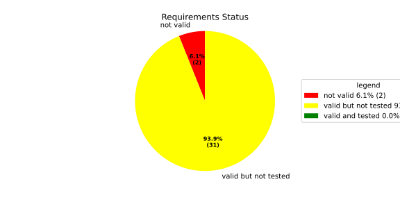
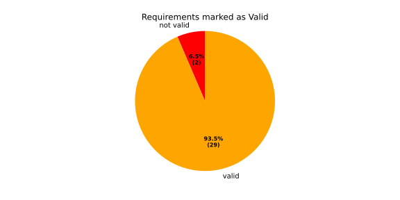
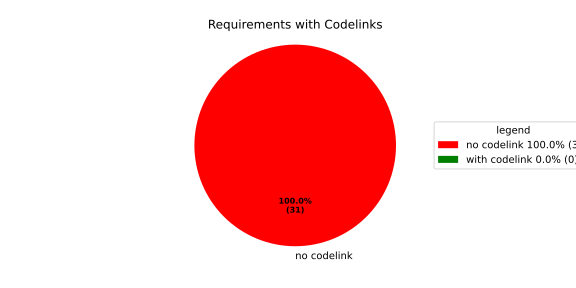
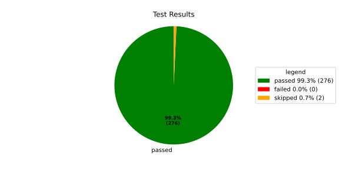
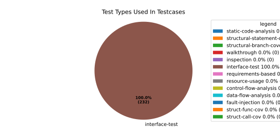
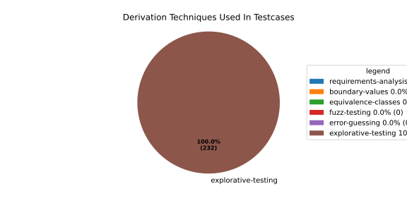

Verification Statistics#
Overview#

In Detail#



Failed Tests
Hint: This table should be empty. Before a PR can be merged all tests have to be successful.
No needs passed the filters
Skipped / Disabled Tests
testcase |
Result |
Fully Verifies |
Partially Verifies |
Test Type |
Derivation Technique |
link |
|---|---|---|---|---|---|---|
ValidateRangeTest/4__RejectsValueAboveMax |
skipped |
interface-test |
explorative-testing |
|||
ValidateRangeTest/4__RejectsValueBelowMin |
skipped |
interface-test |
explorative-testing |
All passed Tests#
testcase |
Result |
Fully Verifies |
Partially Verifies |
Test Type |
Derivation Technique |
link |
|---|---|---|---|---|---|---|
AliveImplTest__DoesNotThrowWhenInterfacePathEnvVarIsSet |
passed |
interface-test |
explorative-testing |
testcase__AliveImplTest__DoesNotThrowWhenInterfacePathEnvVarIsSet_xpewu |
||
AliveImplTest__ReportCheckpointSafeWhenNotConnected |
passed |
interface-test |
explorative-testing |
testcase__AliveImplTest__ReportCheckpointSafeWhenNotConnected_ppvuc |
||
AliveImplTest__ThrowsWhenInterfacePathEnvVarIsNotSet |
passed |
interface-test |
explorative-testing |
testcase__AliveImplTest__ThrowsWhenInterfacePathEnvVarIsNotSet_ekxfw |
||
AliveSupervisionTest__AliveDebouncesThroughFailedBeforeExpired |
passed |
interface-test |
explorative-testing |
testcase__AliveSupervisionTest__AliveDebouncesThroughFailedBeforeExpired_mlnbe |
||
AliveSupervisionTest__AliveReportsEnqueueFailureWhenRingBufferFull |
passed |
interface-test |
explorative-testing |
testcase__AliveSupervisionTest__AliveReportsEnqueueFailureWhenRingBufferFull_byhrd |
||
AliveSupervisionTest__AliveStaysOkWithCorrectHeartbeats |
passed |
interface-test |
explorative-testing |
testcase__AliveSupervisionTest__AliveStaysOkWithCorrectHeartbeats_vekof |
||
AliveSupervisionTest__AliveTransitionsOkToExpiredOnMissingHeartbeat |
passed |
interface-test |
explorative-testing |
testcase__AliveSupervisionTest__AliveTransitionsOkToExpiredOnMissingHeartbeat_jymxo |
||
AliveSupervisionTest__DeactivatesOnProcessCrash |
passed |
interface-test |
explorative-testing |
testcase__AliveSupervisionTest__DeactivatesOnProcessCrash_ypejs |
||
AliveSupervisionTest__DeactivatesOnProcessSigterm |
passed |
interface-test |
explorative-testing |
testcase__AliveSupervisionTest__DeactivatesOnProcessSigterm_hzaal |
||
AliveSupervisionTest__IgnoresIrrelevantProcessStates |
passed |
interface-test |
explorative-testing |
testcase__AliveSupervisionTest__IgnoresIrrelevantProcessStates_aolvb |
||
AliveSupervisionTest__MaxIndicationViolationExpires |
passed |
interface-test |
explorative-testing |
testcase__AliveSupervisionTest__MaxIndicationViolationExpires_whhhi |
||
AliveSupervisionTest__ReactivatesAfterCrash |
passed |
interface-test |
explorative-testing |
|||
ApplicationTypes/ApplicationTypeTest__ConvertsToExpectedValue/Native |
passed |
interface-test |
explorative-testing |
testcase__ApplicationTypes/ApplicationTypeTest__ConvertsToExpectedValue/Native_yxxcz |
||
ApplicationTypes/ApplicationTypeTest__ConvertsToExpectedValue/Reporting |
passed |
interface-test |
explorative-testing |
testcase__ApplicationTypes/ApplicationTypeTest__ConvertsToExpectedValue/Reporting_wcfwr |
||
ApplicationTypes/ApplicationTypeTest__ConvertsToExpectedValue/ReportingAndSupervised |
passed |
interface-test |
explorative-testing |
testcase__ApplicationTypes/ApplicationTypeTest__ConvertsToExpectedValue/ReportingAndSupervised_yxgad |
||
ApplicationTypes/ApplicationTypeTest__ConvertsToExpectedValue/StateManager |
passed |
interface-test |
explorative-testing |
testcase__ApplicationTypes/ApplicationTypeTest__ConvertsToExpectedValue/StateManager_ivuzc |
||
ConfigurationAdapterFallbackTest__FallbackRunTargetResolvesDependenciesRecursively |
passed |
interface-test |
explorative-testing |
testcase__ConfigurationAdapterFallbackTest__FallbackRunTargetResolvesDependenciesRecursively_qcvvz |
||
ConfigurationAdapterReadyConditionTest__DependencyDefaultsToRunningWhenTargetHasNoReadyCondition |
passed |
interface-test |
explorative-testing |
|||
ConfigurationAdapterReadyConditionTest__DependencyUsesTargetComponentReadyCondition |
passed |
interface-test |
explorative-testing |
testcase__ConfigurationAdapterReadyConditionTest__DependencyUsesTargetComponentReadyCondition_wvyyj |
||
ConfigurationAdapterTest__GetListOfProcessGroupsReturnsSingleImplicitGroup |
passed |
interface-test |
explorative-testing |
testcase__ConfigurationAdapterTest__GetListOfProcessGroupsReturnsSingleImplicitGroup_fthqq |
||
ConfigurationAdapterTest__GetMainPGStartupStateMapsToInitialRunTarget |
passed |
interface-test |
explorative-testing |
testcase__ConfigurationAdapterTest__GetMainPGStartupStateMapsToInitialRunTarget_wtcit |
||
ConfigurationAdapterTest__GetNameOfOffStateMapsToMainPGOff |
passed |
interface-test |
explorative-testing |
testcase__ConfigurationAdapterTest__GetNameOfOffStateMapsToMainPGOff_jczne |
||
ConfigurationAdapterTest__GetNameOfRecoveryStateMapsToFallbackRunTarget |
passed |
interface-test |
explorative-testing |
testcase__ConfigurationAdapterTest__GetNameOfRecoveryStateMapsToFallbackRunTarget_mxndq |
||
ConfigurationAdapterTest__GetNumberOfOsProcessesReturnsComponentCount |
passed |
interface-test |
explorative-testing |
testcase__ConfigurationAdapterTest__GetNumberOfOsProcessesReturnsComponentCount_eyzdp |
||
ConfigurationAdapterTest__GetOsProcessConfigurationInjectsAliveInterfaceForSupervised |
passed |
interface-test |
explorative-testing |
|||
ConfigurationAdapterTest__GetOsProcessConfigurationMapsComponentFields |
passed |
interface-test |
explorative-testing |
testcase__ConfigurationAdapterTest__GetOsProcessConfigurationMapsComponentFields_rszfk |
||
ConfigurationAdapterTest__GetOsProcessConfigurationNoAliveInterfaceForNative |
passed |
interface-test |
explorative-testing |
testcase__ConfigurationAdapterTest__GetOsProcessConfigurationNoAliveInterfaceForNative_cbsad |
||
ConfigurationAdapterTest__GetOsProcessConfigurationReturnsNulloptForInvalidIndex |
passed |
interface-test |
explorative-testing |
testcase__ConfigurationAdapterTest__GetOsProcessConfigurationReturnsNulloptForInvalidIndex_yoorg |
||
ConfigurationAdapterTest__GetOsProcessConfigurationReturnsNulloptForUnknownPG |
passed |
interface-test |
explorative-testing |
testcase__ConfigurationAdapterTest__GetOsProcessConfigurationReturnsNulloptForUnknownPG_ewqla |
||
ConfigurationAdapterTest__GetOsProcessDependenciesEmptyForComponentWithNoDeps |
passed |
interface-test |
explorative-testing |
testcase__ConfigurationAdapterTest__GetOsProcessDependenciesEmptyForComponentWithNoDeps_odxew |
||
ConfigurationAdapterTest__GetOsProcessDependenciesMapsComponentDependsOn |
passed |
interface-test |
explorative-testing |
testcase__ConfigurationAdapterTest__GetOsProcessDependenciesMapsComponentDependsOn_varth |
||
ConfigurationAdapterTest__GetProcessIndexesListResolvesRunTargetDependencies |
passed |
interface-test |
explorative-testing |
testcase__ConfigurationAdapterTest__GetProcessIndexesListResolvesRunTargetDependencies_otimf |
||
ConfigurationAdapterTest__GetProcessIndexesListResolvesTransitiveDependencies |
passed |
interface-test |
explorative-testing |
testcase__ConfigurationAdapterTest__GetProcessIndexesListResolvesTransitiveDependencies_iemgm |
||
ConfigurationAdapterTest__GetSoftwareClusterReturnsDefault |
passed |
interface-test |
explorative-testing |
testcase__ConfigurationAdapterTest__GetSoftwareClusterReturnsDefault_ixyoq |
||
ConfigurationAdapterTest__OffStateReturnsProcessIndexesListEmpty |
passed |
interface-test |
explorative-testing |
testcase__ConfigurationAdapterTest__OffStateReturnsProcessIndexesListEmpty_zngsc |
||
ConverterTest__ConvertAliveSupervisionMissingCycleReturnsError |
passed |
interface-test |
explorative-testing |
testcase__ConverterTest__ConvertAliveSupervisionMissingCycleReturnsError_bifzg |
||
ConverterTest__ConvertAliveSupervisionNullReturnsDefault |
passed |
interface-test |
explorative-testing |
testcase__ConverterTest__ConvertAliveSupervisionNullReturnsDefault_clyua |
||
ConverterTest__ConvertAliveSupervisionValid |
passed |
interface-test |
explorative-testing |
|||
ConverterTest__ConvertApplicationProfileMissingSelfTerminatingReturnsError |
passed |
interface-test |
explorative-testing |
testcase__ConverterTest__ConvertApplicationProfileMissingSelfTerminatingReturnsError_zddjb |
||
ConverterTest__ConvertApplicationProfileMissingTypeReturnsError |
passed |
interface-test |
explorative-testing |
testcase__ConverterTest__ConvertApplicationProfileMissingTypeReturnsError_zrfcs |
||
ConverterTest__ConvertApplicationProfileValid |
passed |
interface-test |
explorative-testing |
testcase__ConverterTest__ConvertApplicationProfileValid_oohxq |
||
ConverterTest__ConvertComponentAliveSupervisionBothIndicationsAbsentReturnsError |
passed |
interface-test |
explorative-testing |
testcase__ConverterTest__ConvertComponentAliveSupervisionBothIndicationsAbsentReturnsError_gvtfi |
||
ConverterTest__ConvertComponentAliveSupervisionMissingReportingCycleReturnsError |
passed |
interface-test |
explorative-testing |
testcase__ConverterTest__ConvertComponentAliveSupervisionMissingReportingCycleReturnsError_ajymy |
||
ConverterTest__ConvertComponentAliveSupervisionMissingToleranceReturnsError |
passed |
interface-test |
explorative-testing |
testcase__ConverterTest__ConvertComponentAliveSupervisionMissingToleranceReturnsError_lgrhj |
||
ConverterTest__ConvertComponentAliveSupervisionNullReturnsDefault |
passed |
interface-test |
explorative-testing |
testcase__ConverterTest__ConvertComponentAliveSupervisionNullReturnsDefault_xhaus |
||
ConverterTest__ConvertComponentAliveSupervisionOnlyMaxIndicationsPresent |
passed |
interface-test |
explorative-testing |
testcase__ConverterTest__ConvertComponentAliveSupervisionOnlyMaxIndicationsPresent_smwht |
||
ConverterTest__ConvertComponentAliveSupervisionOnlyMinIndicationsPresent |
passed |
interface-test |
explorative-testing |
testcase__ConverterTest__ConvertComponentAliveSupervisionOnlyMinIndicationsPresent_ybbrr |
||
ConverterTest__ConvertComponentAliveSupervisionValid |
passed |
interface-test |
explorative-testing |
testcase__ConverterTest__ConvertComponentAliveSupervisionValid_ijedh |
||
ConverterTest__ConvertComponentsValid |
passed |
interface-test |
explorative-testing |
|||
ConverterTest__ConvertComponentsWithInvalidComponentReturnsError |
passed |
interface-test |
explorative-testing |
testcase__ConverterTest__ConvertComponentsWithInvalidComponentReturnsError_wridc |
||
ConverterTest__ConvertComponentValid |
passed |
interface-test |
explorative-testing |
|||
ConverterTest__ConvertDeploymentConfigMissingReadyTimeoutReturnsError |
passed |
interface-test |
explorative-testing |
testcase__ConverterTest__ConvertDeploymentConfigMissingReadyTimeoutReturnsError_ljzfl |
||
ConverterTest__ConvertDeploymentConfigMissingShutdownTimeoutReturnsError |
passed |
interface-test |
explorative-testing |
testcase__ConverterTest__ConvertDeploymentConfigMissingShutdownTimeoutReturnsError_vyqye |
||
ConverterTest__ConvertDeploymentConfigValid |
passed |
interface-test |
explorative-testing |
|||
ConverterTest__ConvertEnvironmentalVariables |
passed |
interface-test |
explorative-testing |
testcase__ConverterTest__ConvertEnvironmentalVariables_fnhgo |
||
ConverterTest__ConvertEnvironmentalVariablesNullReturnsEmpty |
passed |
interface-test |
explorative-testing |
testcase__ConverterTest__ConvertEnvironmentalVariablesNullReturnsEmpty_vglrx |
||
ConverterTest__ConvertFallbackRunTargetMissingTimeoutReturnsError |
passed |
interface-test |
explorative-testing |
testcase__ConverterTest__ConvertFallbackRunTargetMissingTimeoutReturnsError_aevly |
||
ConverterTest__ConvertFallbackRunTargetValid |
passed |
interface-test |
explorative-testing |
testcase__ConverterTest__ConvertFallbackRunTargetValid_nexxj |
||
ConverterTest__ConvertReadyConditionMissingProcessStateReturnsError |
passed |
interface-test |
explorative-testing |
testcase__ConverterTest__ConvertReadyConditionMissingProcessStateReturnsError_ileav |
||
ConverterTest__ConvertReadyConditionValid |
passed |
interface-test |
explorative-testing |
|||
ConverterTest__ConvertRestartActionMissingFieldsReturnsError |
passed |
interface-test |
explorative-testing |
testcase__ConverterTest__ConvertRestartActionMissingFieldsReturnsError_aapjb |
||
ConverterTest__ConvertRestartActionNullReturnsNullopt |
passed |
interface-test |
explorative-testing |
testcase__ConverterTest__ConvertRestartActionNullReturnsNullopt_ifvyd |
||
ConverterTest__ConvertRestartActionValid |
passed |
interface-test |
explorative-testing |
|||
ConverterTest__ConvertRunTargetMissingTransitionTimeoutReturnsError |
passed |
interface-test |
explorative-testing |
testcase__ConverterTest__ConvertRunTargetMissingTransitionTimeoutReturnsError_ynekv |
||
ConverterTest__ConvertRunTargetsValid |
passed |
interface-test |
explorative-testing |
|||
ConverterTest__ConvertRunTargetsWithInvalidRunTargetReturnsError |
passed |
interface-test |
explorative-testing |
testcase__ConverterTest__ConvertRunTargetsWithInvalidRunTargetReturnsError_ldlox |
||
ConverterTest__ConvertRunTargetValid |
passed |
interface-test |
explorative-testing |
|||
ConverterTest__ConvertSandboxMissingGidReturnsError |
passed |
interface-test |
explorative-testing |
testcase__ConverterTest__ConvertSandboxMissingGidReturnsError_veeel |
||
ConverterTest__ConvertSandboxMissingSchedulingPolicyReturnsError |
passed |
interface-test |
explorative-testing |
testcase__ConverterTest__ConvertSandboxMissingSchedulingPolicyReturnsError_pkfts |
||
ConverterTest__ConvertSandboxMissingSchedulingPriorityReturnsError |
passed |
interface-test |
explorative-testing |
testcase__ConverterTest__ConvertSandboxMissingSchedulingPriorityReturnsError_xzdho |
||
ConverterTest__ConvertSandboxMissingUidReturnsError |
passed |
interface-test |
explorative-testing |
testcase__ConverterTest__ConvertSandboxMissingUidReturnsError_ogfku |
||
ConverterTest__ConvertSandboxSupplementaryGidOutOfRangeReturnsError |
passed |
interface-test |
explorative-testing |
testcase__ConverterTest__ConvertSandboxSupplementaryGidOutOfRangeReturnsError_zavpx |
||
ConverterTest__ConvertSandboxUidOutOfRangeReturnsError |
passed |
interface-test |
explorative-testing |
testcase__ConverterTest__ConvertSandboxUidOutOfRangeReturnsError_mcuaf |
||
ConverterTest__ConvertSandboxValid |
passed |
interface-test |
explorative-testing |
|||
ConverterTest__ConvertSwitchRunTargetActionNullReturnsNullopt |
passed |
interface-test |
explorative-testing |
testcase__ConverterTest__ConvertSwitchRunTargetActionNullReturnsNullopt_zmitx |
||
ConverterTest__ConvertSwitchRunTargetActionValid |
passed |
interface-test |
explorative-testing |
testcase__ConverterTest__ConvertSwitchRunTargetActionValid_tdklr |
||
ConverterTest__ConvertWatchdogMissingDeactivateReturnsError |
passed |
interface-test |
explorative-testing |
testcase__ConverterTest__ConvertWatchdogMissingDeactivateReturnsError_gzwjt |
||
ConverterTest__ConvertWatchdogMissingMagicCloseReturnsError |
passed |
interface-test |
explorative-testing |
testcase__ConverterTest__ConvertWatchdogMissingMagicCloseReturnsError_gexxk |
||
ConverterTest__ConvertWatchdogMissingMaxTimeoutReturnsError |
passed |
interface-test |
explorative-testing |
testcase__ConverterTest__ConvertWatchdogMissingMaxTimeoutReturnsError_lffxm |
||
ConverterTest__ConvertWatchdogNullReturnsNullopt |
passed |
interface-test |
explorative-testing |
testcase__ConverterTest__ConvertWatchdogNullReturnsNullopt_irsdk |
||
ConverterTest__ConvertWatchdogValid |
passed |
interface-test |
explorative-testing |
|||
DeadlineFixture__Start_AlreadyRunning |
passed |
interface-test |
explorative-testing |
|||
DeadlineFixture__Start_Succeeds |
passed |
interface-test |
explorative-testing |
|||
DeadlineMonitorBuilderFixture__AddDeadline_Succeeds |
passed |
interface-test |
explorative-testing |
testcase__DeadlineMonitorBuilderFixture__AddDeadline_Succeeds_nagke |
||
DeadlineMonitorBuilderFixture__New_Succeeds |
passed |
interface-test |
explorative-testing |
|||
DeadlineMonitorFixture__GetDeadline_Succeeds |
passed |
interface-test |
explorative-testing |
testcase__DeadlineMonitorFixture__GetDeadline_Succeeds_tmltf |
||
DeadlineMonitorFixture__GetDeadline_Unknown |
passed |
interface-test |
explorative-testing |
|||
EnumConversionTest__ConvertSchedulingPolicyUnsupported |
passed |
interface-test |
explorative-testing |
testcase__EnumConversionTest__ConvertSchedulingPolicyUnsupported_iavqm |
||
EnvironmentTest__AddIncreasesSize |
passed |
interface-test |
explorative-testing |
|||
EnvironmentTest__DefaultConstructedIsEmpty |
passed |
interface-test |
explorative-testing |
|||
EnvironmentTest__EmptyEnvironmentEnvpIsNullTerminated |
passed |
interface-test |
explorative-testing |
testcase__EnvironmentTest__EmptyEnvironmentEnvpIsNullTerminated_wwumw |
||
EnvironmentTest__EnvpReturnsNullTerminatedArray |
passed |
interface-test |
explorative-testing |
testcase__EnvironmentTest__EnvpReturnsNullTerminatedArray_aubkv |
||
EnvironmentTest__EnvpWithMultipleEntries |
passed |
interface-test |
explorative-testing |
|||
EnvironmentTest__MoveAssignmentPreservesEntries |
passed |
interface-test |
explorative-testing |
testcase__EnvironmentTest__MoveAssignmentPreservesEntries_vkydj |
||
EnvironmentTest__MoveConstructorPreservesEntries |
passed |
interface-test |
explorative-testing |
testcase__EnvironmentTest__MoveConstructorPreservesEntries_upclt |
||
EnvironmentTest__RangeBasedForLoopWorks |
passed |
interface-test |
explorative-testing |
|||
EnvironmentTest__ReserveAndAddAvoidReallocation |
passed |
interface-test |
explorative-testing |
testcase__EnvironmentTest__ReserveAndAddAvoidReallocation_lgzmu |
||
EnvironmentTest__SsoLengthStringSurvivesReallocation |
passed |
interface-test |
explorative-testing |
testcase__EnvironmentTest__SsoLengthStringSurvivesReallocation_jfmtl |
||
EnvironmentVariableTest__CStrReturnsKeyEqualsValue |
passed |
interface-test |
explorative-testing |
testcase__EnvironmentVariableTest__CStrReturnsKeyEqualsValue_rkwan |
||
EnvironmentVariableTest__EmptyValue |
passed |
interface-test |
explorative-testing |
|||
EnvironmentVariableTest__KeyAndValueAreAccessible |
passed |
interface-test |
explorative-testing |
testcase__EnvironmentVariableTest__KeyAndValueAreAccessible_kcrth |
||
EnvironmentVariableTest__ValueContainingEquals |
passed |
interface-test |
explorative-testing |
testcase__EnvironmentVariableTest__ValueContainingEquals_apzgz |
||
ExecErrorDomainTest__AllKnownCodesHaveDistinctMessages |
passed |
interface-test |
explorative-testing |
testcase__ExecErrorDomainTest__AllKnownCodesHaveDistinctMessages_qpoka |
||
ExecErrorDomainTest__AllKnownCodesReturnNonEmptyMessage |
passed |
interface-test |
explorative-testing |
testcase__ExecErrorDomainTest__AllKnownCodesReturnNonEmptyMessage_bawzg |
||
ExecErrorDomainTest__UnknownCodeReturnsNonEmptyMessage |
passed |
interface-test |
explorative-testing |
testcase__ExecErrorDomainTest__UnknownCodeReturnsNonEmptyMessage_kkwpr |
||
FlatbufferConfigLoaderTest__CorruptedBufferReturnsInvalidFormat |
passed |
interface-test |
explorative-testing |
testcase__FlatbufferConfigLoaderTest__CorruptedBufferReturnsInvalidFormat_twyac |
||
FlatbufferConfigLoaderTest__LoadAliveSupervision |
passed |
interface-test |
explorative-testing |
testcase__FlatbufferConfigLoaderTest__LoadAliveSupervision_hhuux |
||
FlatbufferConfigLoaderTest__LoadBufferFailsWithGenericErrorReturnsGeneralError |
passed |
interface-test |
explorative-testing |
testcase__FlatbufferConfigLoaderTest__LoadBufferFailsWithGenericErrorReturnsGeneralError_kmatm |
||
FlatbufferConfigLoaderTest__LoadBufferFailsWithNoSuchFileReturnsFileNotFound |
passed |
interface-test |
explorative-testing |
testcase__FlatbufferConfigLoaderTest__LoadBufferFailsWithNoSuchFileReturnsFileNotFound_yzlra |
||
FlatbufferConfigLoaderTest__LoadBufferFailsWithPermissionDeniedReturnsInsufficientPermission |
passed |
interface-test |
explorative-testing |
|||
FlatbufferConfigLoaderTest__LoadComponentAliveSupervision |
passed |
interface-test |
explorative-testing |
testcase__FlatbufferConfigLoaderTest__LoadComponentAliveSupervision_fwfad |
||
FlatbufferConfigLoaderTest__LoadEnvironmentalVariables |
passed |
interface-test |
explorative-testing |
testcase__FlatbufferConfigLoaderTest__LoadEnvironmentalVariables_wsosu |
||
FlatbufferConfigLoaderTest__LoadFallbackRunTarget |
passed |
interface-test |
explorative-testing |
testcase__FlatbufferConfigLoaderTest__LoadFallbackRunTarget_wduqm |
||
FlatbufferConfigLoaderTest__LoadMinimalConfig |
passed |
interface-test |
explorative-testing |
testcase__FlatbufferConfigLoaderTest__LoadMinimalConfig_hdkck |
||
FlatbufferConfigLoaderTest__LoadMultipleComponents |
passed |
interface-test |
explorative-testing |
testcase__FlatbufferConfigLoaderTest__LoadMultipleComponents_abpom |
||
FlatbufferConfigLoaderTest__LoadRestartRecoveryAction |
passed |
interface-test |
explorative-testing |
testcase__FlatbufferConfigLoaderTest__LoadRestartRecoveryAction_wyfqg |
||
FlatbufferConfigLoaderTest__LoadRunTargets |
passed |
interface-test |
explorative-testing |
|||
FlatbufferConfigLoaderTest__LoadSandbox |
passed |
interface-test |
explorative-testing |
|||
FlatbufferConfigLoaderTest__LoadSingleComponent |
passed |
interface-test |
explorative-testing |
testcase__FlatbufferConfigLoaderTest__LoadSingleComponent_yidty |
||
FlatbufferConfigLoaderTest__LoadSwitchRunTargetAction |
passed |
interface-test |
explorative-testing |
testcase__FlatbufferConfigLoaderTest__LoadSwitchRunTargetAction_uchgp |
||
FlatbufferConfigLoaderTest__LoadWatchdog |
passed |
interface-test |
explorative-testing |
|||
FlatbufferConfigLoaderTest__MissingSchemaVersionReturnsInvalidFormat |
passed |
interface-test |
explorative-testing |
testcase__FlatbufferConfigLoaderTest__MissingSchemaVersionReturnsInvalidFormat_qqmfn |
||
FlatbufferConfigLoaderTest__OptionalReadyConditionAbsent |
passed |
interface-test |
explorative-testing |
testcase__FlatbufferConfigLoaderTest__OptionalReadyConditionAbsent_lhddx |
||
FlatbufferConfigLoaderTest__OptionalWatchdogAbsent |
passed |
interface-test |
explorative-testing |
testcase__FlatbufferConfigLoaderTest__OptionalWatchdogAbsent_pkhkp |
||
FlatbufferConfigLoaderTest__WrongSchemaVersionReturnsUnsupportedVersion |
passed |
interface-test |
explorative-testing |
testcase__FlatbufferConfigLoaderTest__WrongSchemaVersionReturnsUnsupportedVersion_zrbjv |
||
HealthMonitor__GetDeadlineMonitor_Available |
passed |
|||||
HealthMonitor__GetDeadlineMonitor_Taken |
passed |
|||||
HealthMonitor__GetDeadlineMonitor_Unknown |
passed |
|||||
HealthMonitor__GetHeartbeatMonitor_Available |
passed |
testcase__HealthMonitor__GetHeartbeatMonitor_Available_aacat |
||||
HealthMonitor__GetHeartbeatMonitor_Taken |
passed |
|||||
HealthMonitor__GetHeartbeatMonitor_Unknown |
passed |
|||||
HealthMonitor__GetLogicMonitor_Available |
passed |
|||||
HealthMonitor__GetLogicMonitor_Taken |
passed |
|||||
HealthMonitor__GetLogicMonitor_Unknown |
passed |
|||||
HealthMonitor__Start_MonitorsNotTaken |
passed |
|||||
HealthMonitor__Start_Succeeds |
passed |
|||||
HealthMonitorBuilderFixture__Build_InvalidCycles |
passed |
interface-test |
explorative-testing |
testcase__HealthMonitorBuilderFixture__Build_InvalidCycles_pdigk |
||
HealthMonitorBuilderFixture__Build_NoMonitors |
passed |
interface-test |
explorative-testing |
testcase__HealthMonitorBuilderFixture__Build_NoMonitors_ktcve |
||
HealthMonitorBuilderFixture__Build_Succeeds |
passed |
interface-test |
explorative-testing |
|||
HealthMonitorBuilderFixture__New_Succeeds |
passed |
interface-test |
explorative-testing |
|||
HealthMonitorTest__Integrated |
passed |
interface-test |
explorative-testing |
|||
HeartbeatMonitor__Heartbeat_Succeeds |
passed |
interface-test |
explorative-testing |
|||
HeartbeatMonitorBuilder__New_Succeeds |
passed |
interface-test |
explorative-testing |
|||
IdentifierHashTest__IdentifierHash_default_created |
passed |
interface-test |
explorative-testing |
testcase__IdentifierHashTest__IdentifierHash_default_created_yhhvi |
||
IdentifierHashTest__IdentifierHash_EqualityOperators |
passed |
interface-test |
explorative-testing |
testcase__IdentifierHashTest__IdentifierHash_EqualityOperators_nnsuj |
||
IdentifierHashTest__IdentifierHash_invalid_hash_no_string_representation |
passed |
interface-test |
explorative-testing |
testcase__IdentifierHashTest__IdentifierHash_invalid_hash_no_string_representation_rxowr |
||
IdentifierHashTest__IdentifierHash_LessThanOperator |
passed |
interface-test |
explorative-testing |
testcase__IdentifierHashTest__IdentifierHash_LessThanOperator_rnbax |
||
IdentifierHashTest__IdentifierHash_no_dangling_pointer_after_source_string_dies |
passed |
interface-test |
explorative-testing |
testcase__IdentifierHashTest__IdentifierHash_no_dangling_pointer_after_source_string_dies_qsjin |
||
IdentifierHashTest__IdentifierHash_with_string_created |
passed |
interface-test |
explorative-testing |
testcase__IdentifierHashTest__IdentifierHash_with_string_created_aygdm |
||
IdentifierHashTest__IdentifierHash_with_string_view_created |
passed |
interface-test |
explorative-testing |
testcase__IdentifierHashTest__IdentifierHash_with_string_view_created_dbpol |
||
LogicMonitorBuilderFixture__AddState_Succeeds |
passed |
interface-test |
explorative-testing |
testcase__LogicMonitorBuilderFixture__AddState_Succeeds_axdxj |
||
LogicMonitorBuilderFixture__New_Succeeds |
passed |
interface-test |
explorative-testing |
|||
LogicMonitorFixture__State_Invalid |
passed |
interface-test |
explorative-testing |
|||
LogicMonitorFixture__State_Succeeds |
passed |
interface-test |
explorative-testing |
|||
LogicMonitorFixture__Transition_Invalid |
passed |
interface-test |
explorative-testing |
|||
LogicMonitorFixture__Transition_Succeeds |
passed |
interface-test |
explorative-testing |
|||
LogicMonitorFixture__Transition_Unknown |
passed |
interface-test |
explorative-testing |
|||
MonitorIfDaemonTest__Active_CheckpointDataForwarded |
passed |
interface-test |
explorative-testing |
testcase__MonitorIfDaemonTest__Active_CheckpointDataForwarded_evumz |
||
MonitorIfDaemonTest__Active_FutureTimestamp_NotForwardedInCurrentCycle |
passed |
interface-test |
explorative-testing |
testcase__MonitorIfDaemonTest__Active_FutureTimestamp_NotForwardedInCurrentCycle_oycau |
||
MonitorIfDaemonTest__Active_FutureTimestampCheckpoint_ConsumedInLaterCycle |
passed |
interface-test |
explorative-testing |
testcase__MonitorIfDaemonTest__Active_FutureTimestampCheckpoint_ConsumedInLaterCycle_veyyy |
||
MonitorIfDaemonTest__Active_MultipleCheckpointsInOneCycle_AllForwarded |
passed |
interface-test |
explorative-testing |
testcase__MonitorIfDaemonTest__Active_MultipleCheckpointsInOneCycle_AllForwarded_gmbms |
||
MonitorIfDaemonTest__Active_NonMatchingCheckpointId_NotForwarded |
passed |
interface-test |
explorative-testing |
testcase__MonitorIfDaemonTest__Active_NonMatchingCheckpointId_NotForwarded_bohck |
||
MonitorIfDaemonTest__Active_OverflowDetected_TransitionsToInactiveOverflow |
passed |
interface-test |
explorative-testing |
testcase__MonitorIfDaemonTest__Active_OverflowDetected_TransitionsToInactiveOverflow_ovitk |
||
MonitorIfDaemonTest__Active_TwoAttachedCheckpoints_RoutedByCheckpointId |
passed |
interface-test |
explorative-testing |
testcase__MonitorIfDaemonTest__Active_TwoAttachedCheckpoints_RoutedByCheckpointId_skqhd |
||
MonitorIfDaemonTest__GetInterfaceName_ReturnsNameGivenAtConstruction |
passed |
interface-test |
explorative-testing |
testcase__MonitorIfDaemonTest__GetInterfaceName_ReturnsNameGivenAtConstruction_iaemz |
||
MonitorIfDaemonTest__InactiveOverflow_NoProcessRestart_DoesNotRepeatNotification |
passed |
interface-test |
explorative-testing |
testcase__MonitorIfDaemonTest__InactiveOverflow_NoProcessRestart_DoesNotRepeatNotification_gdbxg |
||
MonitorIfDaemonTest__InactiveOverflow_ProcessRestartFlag_ClearedAfterNotification |
passed |
interface-test |
explorative-testing |
testcase__MonitorIfDaemonTest__InactiveOverflow_ProcessRestartFlag_ClearedAfterNotification_pqfyy |
||
MonitorIfDaemonTest__InactiveOverflow_ProcessRestarts_PushesOverflowNotificationAgain |
passed |
interface-test |
explorative-testing |
|||
MonitorIfDaemonTest__InitiallyInactive_CheckForNewData_DoesNotNotifyCheckpoint |
passed |
interface-test |
explorative-testing |
testcase__MonitorIfDaemonTest__InitiallyInactive_CheckForNewData_DoesNotNotifyCheckpoint_wjrfl |
||
MonitorIfDaemonTest__ProcessOff_DeactivatesMonitor_NoFurtherDataForwarded |
passed |
interface-test |
explorative-testing |
testcase__MonitorIfDaemonTest__ProcessOff_DeactivatesMonitor_NoFurtherDataForwarded_uialh |
||
MonitorIfDaemonTest__ProcessOffBeforeActivation_RemainsInactive |
passed |
interface-test |
explorative-testing |
testcase__MonitorIfDaemonTest__ProcessOffBeforeActivation_RemainsInactive_kzzyy |
||
MonitorIfDaemonTest__ProcessRunning_ActivatesMonitorOnNextCheckForNewData |
passed |
interface-test |
explorative-testing |
testcase__MonitorIfDaemonTest__ProcessRunning_ActivatesMonitorOnNextCheckForNewData_fkkmk |
||
MonitorIfDaemonTest__ProcessStarting_AlsoActivatesMonitor |
passed |
interface-test |
explorative-testing |
testcase__MonitorIfDaemonTest__ProcessStarting_AlsoActivatesMonitor_xdkbg |
||
MPMCConcurrentQueueTest_Basic__LvaluePushCopiesItem |
passed |
testcase__MPMCConcurrentQueueTest_Basic__LvaluePushCopiesItem_oysfc |
||||
MPMCConcurrentQueueTest_Basic__PopReturnsNulloptOnSemaphoreWaitFailure |
passed |
testcase__MPMCConcurrentQueueTest_Basic__PopReturnsNulloptOnSemaphoreWaitFailure_rgznm |
||||
MPMCConcurrentQueueTest_Basic__PushAndPopPreservesOrder |
passed |
testcase__MPMCConcurrentQueueTest_Basic__PushAndPopPreservesOrder_aijdb |
||||
MPMCConcurrentQueueTest_Basic__PushAndPopSingleItem |
passed |
testcase__MPMCConcurrentQueueTest_Basic__PushAndPopSingleItem_jrxwz |
||||
MPMCConcurrentQueueTest_Basic__RvaluePushWorksWithMoveOnlyType |
passed |
testcase__MPMCConcurrentQueueTest_Basic__RvaluePushWorksWithMoveOnlyType_cxxaj |
||||
MPMCConcurrentQueueTest_Blocking__PopBlocksUntilItemAvailable |
passed |
testcase__MPMCConcurrentQueueTest_Blocking__PopBlocksUntilItemAvailable_ttwcx |
||||
MPMCConcurrentQueueTest_Blocking__PushBlocksWhenFull |
passed |
testcase__MPMCConcurrentQueueTest_Blocking__PushBlocksWhenFull_ecujf |
||||
MPMCConcurrentQueueTest_Blocking__StopUnblocksBlockedConsumer |
passed |
testcase__MPMCConcurrentQueueTest_Blocking__StopUnblocksBlockedConsumer_snzyr |
||||
MPMCConcurrentQueueTest_Blocking__StopUnblocksBlockedProducer |
passed |
testcase__MPMCConcurrentQueueTest_Blocking__StopUnblocksBlockedProducer_inddu |
||||
MPMCConcurrentQueueTest_MPMC__AllItemsDelivered |
passed |
testcase__MPMCConcurrentQueueTest_MPMC__AllItemsDelivered_ztjqe |
||||
MPMCConcurrentQueueTest_Stop__ItemsAreDroppedAfterStop |
passed |
testcase__MPMCConcurrentQueueTest_Stop__ItemsAreDroppedAfterStop_ragzw |
||||
MPMCConcurrentQueueTest_Stop__PopReturnsNulloptWhenStoppedAndEmpty |
passed |
testcase__MPMCConcurrentQueueTest_Stop__PopReturnsNulloptWhenStoppedAndEmpty_cevga |
||||
MPMCConcurrentQueueTest_Stop__PushReturnsFalseAfterStop |
passed |
testcase__MPMCConcurrentQueueTest_Stop__PushReturnsFalseAfterStop_qqnhw |
||||
MPMCConcurrentQueueTest_Timeout__PushWithTimeoutReturnsFalseWhenFull |
passed |
testcase__MPMCConcurrentQueueTest_Timeout__PushWithTimeoutReturnsFalseWhenFull_aeips |
||||
MPMCConcurrentQueueTest_Timeout__PushWithTimeoutSucceedsWhenSlotAvailable |
passed |
testcase__MPMCConcurrentQueueTest_Timeout__PushWithTimeoutSucceedsWhenSlotAvailable_klzpo |
||||
OsHandlerTest__WaitReturnsError_OsHandlerSleepsAndDoesNotCallFindTerminated |
passed |
interface-test |
explorative-testing |
testcase__OsHandlerTest__WaitReturnsError_OsHandlerSleepsAndDoesNotCallFindTerminated_cibtr |
||
OsHandlerTest__WaitReturnsErrorThenProcessId_HandlerRecoversAndInvokesCallback |
passed |
interface-test |
explorative-testing |
testcase__OsHandlerTest__WaitReturnsErrorThenProcessId_HandlerRecoversAndInvokesCallback_nqstd |
||
OsHandlerTest__WaitReturnsProcessId_FindTerminatedIsCalled |
passed |
interface-test |
explorative-testing |
testcase__OsHandlerTest__WaitReturnsProcessId_FindTerminatedIsCalled_chlsq |
||
OsHandlerTest__WaitReturnsProcessIdBeforeRegistration_LaterRegistrationReceivesStoredTermination |
passed |
interface-test |
explorative-testing |
|||
OsHandlerTest__WaitReturnsUnknownPidWhenMapIsFull_OutOfResourcesPathDoesNotNotifyCallbacks |
passed |
interface-test |
explorative-testing |
|||
OsHandlerTest__WaitReturnsZeroPid_OsHandlerSleepsAndDoesNotCallFindTerminated |
passed |
interface-test |
explorative-testing |
testcase__OsHandlerTest__WaitReturnsZeroPid_OsHandlerSleepsAndDoesNotCallFindTerminated_rkttz |
||
ProcessStateClient_UT__ProcessStateClient_ConstructReceiver_Succeeds |
passed |
interface-test |
explorative-testing |
testcase__ProcessStateClient_UT__ProcessStateClient_ConstructReceiver_Succeeds_hodwy |
||
ProcessStateClient_UT__ProcessStateClient_QueueMaxNumberOfProcesses_Succeeds |
passed |
interface-test |
explorative-testing |
testcase__ProcessStateClient_UT__ProcessStateClient_QueueMaxNumberOfProcesses_Succeeds_qohom |
||
ProcessStateClient_UT__ProcessStateClient_QueueOneProcess_Succeeds |
passed |
interface-test |
explorative-testing |
testcase__ProcessStateClient_UT__ProcessStateClient_QueueOneProcess_Succeeds_tmzfz |
||
ProcessStateClient_UT__ProcessStateClient_QueueOneProcessTooMany_Fails |
passed |
interface-test |
explorative-testing |
testcase__ProcessStateClient_UT__ProcessStateClient_QueueOneProcessTooMany_Fails_sspoj |
||
ProcessStates/ProcessStateTest__ConvertsToExpectedValue/Running |
passed |
interface-test |
explorative-testing |
testcase__ProcessStates/ProcessStateTest__ConvertsToExpectedValue/Running_hinlr |
||
ProcessStates/ProcessStateTest__ConvertsToExpectedValue/Terminated |
passed |
interface-test |
explorative-testing |
testcase__ProcessStates/ProcessStateTest__ConvertsToExpectedValue/Terminated_zrytn |
||
RecoveryClientTest__FIFOOrdering |
passed |
interface-test |
explorative-testing |
|||
RecoveryClientTest__GetNextRequest |
passed |
interface-test |
explorative-testing |
|||
RecoveryClientTest__GetNextRequestEmpty |
passed |
interface-test |
explorative-testing |
|||
RecoveryClientTest__RingBufferFull |
passed |
interface-test |
explorative-testing |
|||
RecoveryClientTest__SendSingleRequest |
passed |
interface-test |
explorative-testing |
|||
RunTest__AsPosixProcessCreatesAndDestroysLifeCycleManager |
passed |
testcase__RunTest__AsPosixProcessCreatesAndDestroysLifeCycleManager_sooex |
||||
RunTest__AsPosixProcessForwardsConstructorArgsToApplication |
passed |
testcase__RunTest__AsPosixProcessForwardsConstructorArgsToApplication_dmeur |
||||
RunTest__AsPosixProcessForwardsNonZeroExitCode |
passed |
testcase__RunTest__AsPosixProcessForwardsNonZeroExitCode_lldqd |
||||
RunTest__AsPosixProcessPassesCorrectApplicationTypeToRun |
passed |
testcase__RunTest__AsPosixProcessPassesCorrectApplicationTypeToRun_ajqwz |
||||
RunTest__AsPosixProcessReturnsZeroExitCode |
passed |
|||||
RunTest__RunApplicationFreeFunctionDelegatesToAsPosixProcess |
passed |
testcase__RunTest__RunApplicationFreeFunctionDelegatesToAsPosixProcess_ccing |
||||
RunTest__RunConstructorPassesArgcArgvToApplicationContext |
passed |
testcase__RunTest__RunConstructorPassesArgcArgvToApplicationContext_agerd |
||||
SafeProcessMapTest__ConcurrentFindAndInsertFromMultipleThreads |
passed |
interface-test |
explorative-testing |
testcase__SafeProcessMapTest__ConcurrentFindAndInsertFromMultipleThreads_kzfyg |
||
SafeProcessMapTest__ConcurrentInsertAndFindFromMultipleThreads |
passed |
interface-test |
explorative-testing |
testcase__SafeProcessMapTest__ConcurrentInsertAndFindFromMultipleThreads_hnyqj |
||
SafeProcessMapTest__ConstructWithZeroCapacity |
passed |
interface-test |
explorative-testing |
testcase__SafeProcessMapTest__ConstructWithZeroCapacity_gjmqg |
||
SafeProcessMapTest__FindTerminatedInsertsEntryWhenPidNotPresent |
passed |
interface-test |
explorative-testing |
testcase__SafeProcessMapTest__FindTerminatedInsertsEntryWhenPidNotPresent_ixtlt |
||
SafeProcessMapTest__FindTerminatedMatchesExistingInsertAndCallsCallback |
passed |
interface-test |
explorative-testing |
testcase__SafeProcessMapTest__FindTerminatedMatchesExistingInsertAndCallsCallback_ehuzb |
||
SafeProcessMapTest__FindTerminatedSamePidTwiceYieldsUntilInsertResolves |
passed |
interface-test |
explorative-testing |
testcase__SafeProcessMapTest__FindTerminatedSamePidTwiceYieldsUntilInsertResolves_hsekx |
||
SafeProcessMapTest__FindTerminatedWithNegativePidReturnsInvalid |
passed |
interface-test |
explorative-testing |
testcase__SafeProcessMapTest__FindTerminatedWithNegativePidReturnsInvalid_dewoh |
||
SafeProcessMapTest__FindTerminatedWorksAtMaxTreeDepth |
passed |
interface-test |
explorative-testing |
testcase__SafeProcessMapTest__FindTerminatedWorksAtMaxTreeDepth_adtzi |
||
SafeProcessMapTest__InsertBeyondCapacityReturnsOutOfMemory |
passed |
interface-test |
explorative-testing |
testcase__SafeProcessMapTest__InsertBeyondCapacityReturnsOutOfMemory_qjnie |
||
SafeProcessMapTest__InsertIntoEmptyTreeReturnsZero |
passed |
interface-test |
explorative-testing |
testcase__SafeProcessMapTest__InsertIntoEmptyTreeReturnsZero_zfbaq |
||
SafeProcessMapTest__InsertMatchesExistingFindTerminatedEntry |
passed |
interface-test |
explorative-testing |
testcase__SafeProcessMapTest__InsertMatchesExistingFindTerminatedEntry_fuwrp |
||
SafeProcessMapTest__InsertMultipleNodesThenFindTerminatedRemovesAll |
passed |
interface-test |
explorative-testing |
testcase__SafeProcessMapTest__InsertMultipleNodesThenFindTerminatedRemovesAll_fvowh |
||
SafeProcessMapTest__InsertSamePidTwiceYieldsUntilFindTerminatedResolves |
passed |
interface-test |
explorative-testing |
testcase__SafeProcessMapTest__InsertSamePidTwiceYieldsUntilFindTerminatedResolves_wzwyb |
||
SchedulingPolicies/SchedulingPolicyTest__ConvertsToExpectedPosixValue/SCHED_FIFO |
passed |
interface-test |
explorative-testing |
testcase__SchedulingPolicies/SchedulingPolicyTest__ConvertsToExpectedPosixValue/SCHED_FIFO_soddq |
||
SchedulingPolicies/SchedulingPolicyTest__ConvertsToExpectedPosixValue/SCHED_OTHER |
passed |
interface-test |
explorative-testing |
testcase__SchedulingPolicies/SchedulingPolicyTest__ConvertsToExpectedPosixValue/SCHED_OTHER_oigmk |
||
SchedulingPolicies/SchedulingPolicyTest__ConvertsToExpectedPosixValue/SCHED_RR |
passed |
interface-test |
explorative-testing |
testcase__SchedulingPolicies/SchedulingPolicyTest__ConvertsToExpectedPosixValue/SCHED_RR_pcjci |
||
score/health_monitor/src/rust/test-510566969/tests |
passed |
testcase__score/health_monitor/src/rust/test-510566969/tests_kjjlw |
||||
score/health_monitor/src/rust/test-827801879/loom_tests |
passed |
testcase__score/health_monitor/src/rust/test-827801879/loom_tests_cpmix |
||||
SecondsToMsTest__ConvertsPositiveValue |
passed |
interface-test |
explorative-testing |
|||
SecondsToMsTest__ConvertsZero |
passed |
interface-test |
explorative-testing |
|||
SecondsToMsTest__RejectsNegativeValue |
passed |
interface-test |
explorative-testing |
|||
SecondsToMsTest__RejectsOverflow |
passed |
interface-test |
explorative-testing |
|||
SecondsToMsTest__RejectsSubMillisecond |
passed |
interface-test |
explorative-testing |
|||
StringHelperTest__ConvertGidVectorReturnsEmptyWhenNull |
passed |
interface-test |
explorative-testing |
testcase__StringHelperTest__ConvertGidVectorReturnsEmptyWhenNull_jmcsr |
||
StringHelperTest__ConvertStringVectorReturnsEmptyWhenNull |
passed |
interface-test |
explorative-testing |
testcase__StringHelperTest__ConvertStringVectorReturnsEmptyWhenNull_zsuvv |
||
StringHelperTest__SafeStringReturnsEmptyWhenNull |
passed |
interface-test |
explorative-testing |
testcase__StringHelperTest__SafeStringReturnsEmptyWhenNull_crelr |
||
StringHelperTest__SafeStringReturnsValueWhenNotNull |
passed |
interface-test |
explorative-testing |
testcase__StringHelperTest__SafeStringReturnsValueWhenNotNull_anbko |
||
test_complex_monitoring |
passed |
|||||
test_crash_on_startup |
passed |
|||||
test_incorrect_config_non_reporting |
passed |
|||||
test_process_crash_monitoring |
passed |
|||||
test_process_fd_leak |
passed |
|||||
test_process_launch_args |
passed |
|||||
test_process_wrong_binary_failure |
passed |
|||||
test_recovery_action_complex_rep_failure |
passed |
|||||
test_recovery_action_simple_rep_failure |
passed |
|||||
test_smoke |
passed |
|||||
test_switch_run_target |
passed |
|||||
TimeRangeFixture__MinMax |
passed |
interface-test |
explorative-testing |
|||
TimeRangeFixture__New_InvalidOrder |
passed |
interface-test |
explorative-testing |
|||
TimeRangeFixture__New_Succeeds |
passed |
interface-test |
explorative-testing |
|||
ValidateRangeTest/0__AcceptsMaxBoundary |
passed |
interface-test |
explorative-testing |
|||
ValidateRangeTest/0__AcceptsMinBoundary |
passed |
interface-test |
explorative-testing |
|||
ValidateRangeTest/0__AcceptsZero |
passed |
interface-test |
explorative-testing |
|||
ValidateRangeTest/0__RejectsValueAboveMax |
passed |
interface-test |
explorative-testing |
|||
ValidateRangeTest/0__RejectsValueBelowMin |
passed |
interface-test |
explorative-testing |
|||
ValidateRangeTest/1__AcceptsMaxBoundary |
passed |
interface-test |
explorative-testing |
|||
ValidateRangeTest/1__AcceptsMinBoundary |
passed |
interface-test |
explorative-testing |
|||
ValidateRangeTest/1__AcceptsZero |
passed |
interface-test |
explorative-testing |
|||
ValidateRangeTest/1__RejectsValueAboveMax |
passed |
interface-test |
explorative-testing |
|||
ValidateRangeTest/1__RejectsValueBelowMin |
passed |
interface-test |
explorative-testing |
|||
ValidateRangeTest/2__AcceptsMaxBoundary |
passed |
interface-test |
explorative-testing |
|||
ValidateRangeTest/2__AcceptsMinBoundary |
passed |
interface-test |
explorative-testing |
|||
ValidateRangeTest/2__AcceptsZero |
passed |
interface-test |
explorative-testing |
|||
ValidateRangeTest/2__RejectsValueAboveMax |
passed |
interface-test |
explorative-testing |
|||
ValidateRangeTest/2__RejectsValueBelowMin |
passed |
interface-test |
explorative-testing |
|||
ValidateRangeTest/3__AcceptsMaxBoundary |
passed |
interface-test |
explorative-testing |
|||
ValidateRangeTest/3__AcceptsMinBoundary |
passed |
interface-test |
explorative-testing |
|||
ValidateRangeTest/3__AcceptsZero |
passed |
interface-test |
explorative-testing |
|||
ValidateRangeTest/3__RejectsValueAboveMax |
passed |
interface-test |
explorative-testing |
|||
ValidateRangeTest/3__RejectsValueBelowMin |
passed |
interface-test |
explorative-testing |
|||
ValidateRangeTest/4__AcceptsMaxBoundary |
passed |
interface-test |
explorative-testing |
|||
ValidateRangeTest/4__AcceptsMinBoundary |
passed |
interface-test |
explorative-testing |
|||
ValidateRangeTest/4__AcceptsZero |
passed |
interface-test |
explorative-testing |
Details About Testcases#


Test Log Files#
tests-report/tests/integration/process_simple_rep_failure/process_simple_rep_failure/test.log
exec ${PAGER:-/usr/bin/less} "$0" || exit 1
Executing tests from //tests/integration/process_simple_rep_failure:process_simple_rep_failure
-----------------------------------------------------------------------------
============================= test session starts ==============================
platform linux -- Python 3.12.12, pytest-9.0.3, pluggy-1.5.0
rootdir: /home/runner/.bazel/sandbox/processwrapper-sandbox/1212/execroot/_main/bazel-out/k8-fastbuild/bin/tests/integration/process_simple_rep_failure/process_simple_rep_failure.runfiles/score_itf+
configfile: pytest.ini
collected 1 item
../score_itf+::test_recovery_action_simple_rep_failure
-------------------------------- live log setup --------------------------------
[2026-07-14 10:49:21.926] [INFO] [score.itf.plugins.docker] Executing custom image bootstrap command: tests/utils/environments/x86_64-linux/x86_64-linux.sh
[2026-07-14 10:49:22.286] [DEBUG] [docker.utils.config] Trying paths: ['/home/runner/.docker/config.json', '/home/runner/.dockercfg']
[2026-07-14 10:49:22.286] [DEBUG] [docker.utils.config] Found file at path: /home/runner/.docker/config.json
[2026-07-14 10:49:22.286] [DEBUG] [docker.auth] Found 'auths' section
[2026-07-14 10:49:22.286] [DEBUG] [docker.auth] Found entry (registry='https://index.docker.io/v1/', username='githubactions')
[2026-07-14 10:49:22.301] [DEBUG] [urllib3.connectionpool] http://localhost:None "GET /version HTTP/1.1" 200 823
[2026-07-14 10:49:22.365] [DEBUG] [urllib3.connectionpool] http://localhost:None "POST /v1.48/containers/create HTTP/1.1" 201 88
[2026-07-14 10:49:22.367] [DEBUG] [urllib3.connectionpool] http://localhost:None "GET /v1.48/containers/9a4640eed2fe107967665c6b04375e11643c1696687c0b9bd525dfa296760750/json HTTP/1.1" 200 None
[2026-07-14 10:49:22.560] [DEBUG] [urllib3.connectionpool] http://localhost:None "POST /v1.48/containers/9a4640eed2fe107967665c6b04375e11643c1696687c0b9bd525dfa296760750/start HTTP/1.1" 204 0
[2026-07-14 10:49:22.561] [DEBUG] [docker.utils.config] Trying paths: ['/home/runner/.docker/config.json', '/home/runner/.dockercfg']
[2026-07-14 10:49:22.561] [DEBUG] [docker.utils.config] Found file at path: /home/runner/.docker/config.json
[2026-07-14 10:49:22.561] [DEBUG] [docker.auth] Found 'auths' section
[2026-07-14 10:49:22.561] [DEBUG] [docker.auth] Found entry (registry='https://index.docker.io/v1/', username='githubactions')
[2026-07-14 10:49:22.574] [DEBUG] [urllib3.connectionpool] http://localhost:None "GET /version HTTP/1.1" 200 823
[2026-07-14 10:49:22.745] [INFO] [tests.utils.testing_utils.setup_test] Test case setup finished
-------------------------------- live log call ---------------------------------
[2026-07-14 10:49:22.860] [INFO] [launch_manager] 2026/07/14 10:49:22.6162855 4386060 000 ECU1 LM LM log debug verbose 1 Launch Manager Started !!!!
[2026-07-14 10:49:22.860] [INFO] [launch_manager] 2026/07/14 10:49:22.6162856 4386063 000 ECU1 LM LM log debug verbose 1 Loading LCM Configurations...
[2026-07-14 10:49:22.861] [INFO] [launch_manager] 2026/07/14 10:49:22.6162856 4386063 000 ECU1 LM LM log debug verbose 1 ECUCFG_ENV_VAR_ROOTFOLDER set successfully
[2026-07-14 10:49:22.861] [INFO] [launch_manager] 2026/07/14 10:49:22.6162856 4386064 000 ECU1 LM LM log debug verbose 5 FlatBufferParser::getModeGroupPgName: MainPG ( IdentifierHash: 18079021346025578134 )
[2026-07-14 10:49:22.861] [INFO] [launch_manager] 2026/07/14 10:49:22.6162856 4386065 000 ECU1 LM LM log debug verbose 5 FlatBufferParser::getModeGroupPgStateName: MainPG/Startup ( IdentifierHash: 10504605499600661529 )
[2026-07-14 10:49:22.861] [INFO] [launch_manager] 2026/07/14 10:49:22.6162856 4386065 000 ECU1 LM LM log debug verbose 5 FlatBufferParser::getModeGroupPgStateName: MainPG/run_target_app_does_report_krunning_in_time ( IdentifierHash: 11934981641920773349 )
[2026-07-14 10:49:22.861] [INFO] [launch_manager] 2026/07/14 10:49:22.6162856 4386065 000 ECU1 LM LM log debug verbose 5 FlatBufferParser::getModeGroupPgStateName: MainPG/run_target_app_does_not_report_krunning_in_time ( IdentifierHash: 7672161913816744053 )
[2026-07-14 10:49:22.861] [INFO] [launch_manager] 2026/07/14 10:49:22.6162856 4386066 000 ECU1 LM LM log debug verbose 5 FlatBufferParser::getModeGroupPgStateName: MainPG/Off ( IdentifierHash: 15281793077830264047 )
[2026-07-14 10:49:22.861] [INFO] [launch_manager] 2026/07/14 10:49:22.6162856 4386066 000 ECU1 LM LM log debug verbose 5 FlatBufferParser::getModeGroupPgStateName: MainPG/fallback_run_target ( IdentifierHash: 4059409696722237352 )
[2026-07-14 10:49:22.861] [INFO] [launch_manager] 2026/07/14 10:49:22.6162856 4386067 000 ECU1 LM LM log debug verbose 4 parseProcessConfigurations: Process index: 0 executable_path_: /tmp/tests/process_simple_rep_failure/control_client_mock
[2026-07-14 10:49:22.861] [INFO] [launch_manager] 2026/07/14 10:49:22.6162856 4386067 000 ECU1 LM LM log debug verbose 3 Process control_client_mock is Reporting execution state
[2026-07-14 10:49:22.861] [INFO] [launch_manager] 2026/07/14 10:49:22.6162856 4386067 000 ECU1 LM LM log debug verbose 1 Process is STATE_MANAGEMENT function Cluster Affiliation
[2026-07-14 10:49:22.861] [INFO] [launch_manager] 2026/07/14 10:49:22.6162856 4386067 000 ECU1 LM LM log debug verbose 3 Process control_client_mock is Self terminating
[2026-07-14 10:49:22.862] [INFO] [launch_manager] 2026/07/14 10:49:22.6162856 4386068 000 ECU1 LM LM log debug verbose 4 ParseProcessProcessGroup: id:::pg_name_: MainPG , pg_state_name_: MainPG/Startup
[2026-07-14 10:49:22.862] [INFO] [launch_manager] 2026/07/14 10:49:22.6162856 4386068 000 ECU1 LM LM log debug verbose 4 ParseProcessProcessGroup: id:::pg_name_: MainPG , pg_state_name_: MainPG/run_target_app_does_report_krunning_in_time
[2026-07-14 10:49:22.862] [INFO] [launch_manager] 2026/07/14 10:49:22.6162856 4386068 000 ECU1 LM LM log debug verbose 4 ParseProcessProcessGroup: id:::pg_name_: MainPG , pg_state_name_: MainPG/run_target_app_does_not_report_krunning_in_time
[2026-07-14 10:49:22.862] [INFO] [launch_manager] 2026/07/14 10:49:22.6162856 4386069 000 ECU1 LM LM log debug verbose 4 ParseProcessProcessGroup: id:::pg_name_: MainPG , pg_state_name_: MainPG/fallback_run_target
[2026-07-14 10:49:22.862] [INFO] [launch_manager] 2026/07/14 10:49:22.6162856 4386069 000 ECU1 LM LM log debug verbose 4 parseProcessConfigurations: Process index: 1 executable_path_: /tmp/tests/process_simple_rep_failure/process_simple_reporting
[2026-07-14 10:49:22.862] [INFO] [launch_manager] 2026/07/14 10:49:22.6162856 4386069 000 ECU1 LM LM log debug verbose 3 Process component_does_report_krunning_in_time is Reporting execution state
[2026-07-14 10:49:22.862] [INFO] [launch_manager] 2026/07/14 10:49:22.6162856 4386069 000 ECU1 LM LM log debug verbose 1 Process is NOT associated with any function Cluster Affiliation
[2026-07-14 10:49:22.862] [INFO] [launch_manager] 2026/07/14 10:49:22.6162857 4386072 000 ECU1 LM LM log debug verbose 3
[2026-07-14 10:49:22.862] [INFO] [launch_manager] Process component_does_report_krunning_in_time is Self terminating
[2026-07-14 10:49:22.864] [INFO] [launch_manager] 2026/07/14 10:49:22.6162857 4386073 000 ECU1 LM LM log debug verbose 4
[2026-07-14 10:49:22.864] [INFO] [launch_manager] ParseProcessProcessGroup: id:::pg_name_: MainPG , pg_state_name_: MainPG/run_target_app_does_report_krunning_in_time
[2026-07-14 10:49:22.864] [INFO] [launch_manager] 2026/07/14 10:49:22.6162857 4386074 000 ECU1 LM LM log debug verbose 4
[2026-07-14 10:49:22.865] [INFO] [launch_manager] parseProcessConfigurations: Process index: 2 executable_path_: /tmp/tests/process_simple_rep_failure/process_simple_reporting
[2026-07-14 10:49:22.865] [INFO] [launch_manager] 2026/07/14 10:49:22.6162857 4386076 000 ECU1 LM LM log debug verbose 3
[2026-07-14 10:49:22.865] [INFO] [launch_manager] Process component_does_not_report_krunning_in_time is Reporting execution state
[2026-07-14 10:49:22.866] [INFO] [launch_manager] 2026/07/14 10:49:22.6162857 4386077 000 ECU1 LM LM log debug verbose 1
[2026-07-14 10:49:22.866] [INFO] [launch_manager] Process is NOT associated with any function Cluster Affiliation
[2026-07-14 10:49:22.866] [INFO] [launch_manager] 2026/07/14 10:49:22.6162857 4386078 000 ECU1 LM LM log debug verbose 3 Process component_does_not_report_krunning_in_time is Self terminating
[2026-07-14 10:49:22.866] [INFO] [launch_manager] 2026/07/14 10:49:22.6162857 4386078 000 ECU1 LM LM log debug verbose 4 ParseProcessProcessGroup: id:::pg_name_: MainPG , pg_state_name_: MainPG/run_target_app_does_not_report_krunning_in_time
[2026-07-14 10:49:22.868] [INFO] [launch_manager] 2026/07/14 10:49:22.6162857 4386079 000 ECU1 LM LM log debug verbose 4 parseProcessConfigurations: Process index: 3 executable_path_: /tmp/tests/process_simple_rep_failure/verification_process
[2026-07-14 10:49:22.869] [INFO] [launch_manager] 2026/07/14 10:49:22.6162857 4386080 000 ECU1 LM LM log debug verbose 3 Process verification_component is NOT Reporting execution state
[2026-07-14 10:49:22.869] [INFO] [launch_manager] 2026/07/14 10:49:22.6162857 4386081 000 ECU1 LM LM log debug verbose 1 Process is NOT associated with any function Cluster Affiliation
[2026-07-14 10:49:22.869] [INFO] [launch_manager] 2026/07/14 10:49:22.6162857 4386081 000 ECU1 LM LM log debug verbose 3 Process verification_component is Self terminating
[2026-07-14 10:49:22.871] [INFO] [launch_manager] 2026/07/14 10:49:22.6162858 4386082 000 ECU1 LM LM log debug verbose 4 ParseProcessProcessGroup: id:::pg_name_: MainPG , pg_state_name_: MainPG/fallback_run_target
[2026-07-14 10:49:22.871] [INFO] [launch_manager] 2026/07/14 10:49:22.6162858 4386082 000 ECU1 LM LM log debug verbose 3 Loading SWCL Nr. 0 Succeeded
[2026-07-14 10:49:22.871] [INFO] [launch_manager] 2026/07/14 10:49:22.6162858 4386083 000 ECU1 LM LM log debug verbose 2 1 process group(s)
[2026-07-14 10:49:22.871] [INFO] [launch_manager] 2026/07/14 10:49:22.6162858 4386083 000 ECU1 LM LM log debug verbose 3 Creating graph with 4 nodes
[2026-07-14 10:49:22.872] [INFO] [launch_manager] 2026/07/14 10:49:22.6162858 4386084 000 ECU1 LM LM log debug verbose 1
[2026-07-14 10:49:22.872] [INFO] [launch_manager] Process groups initialized successfully
[2026-07-14 10:49:22.872] [INFO] [launch_manager] 2026/07/14 10:49:22.6162858 4386085 000 ECU1 LM LM log debug verbose 1 Process Group initialization done
[2026-07-14 10:49:22.872] [INFO] [launch_manager] 2026/07/14 10:49:22.6162858 4386085 000 ECU1 LM LM log debug verbose 3 Creating Safe Process Map with 4 entries
[2026-07-14 10:49:22.872] [INFO] [launch_manager] 2026/07/14 10:49:22.6162858 4386085 000 ECU1 LM LM log debug verbose 2 Creating job queue with capacity 1024
[2026-07-14 10:49:22.872] [INFO] [launch_manager] 2026/07/14 10:49:22.6162858 4386087 000 ECU1 LM LM log debug verbose 1
[2026-07-14 10:49:22.872] [INFO] [launch_manager] Creating worker threads...
[2026-07-14 10:49:22.872] [INFO] [launch_manager] 2026/07/14 10:49:22.6162860 4386105 000 ECU1 LM LM log debug verbose 7
[2026-07-14 10:49:22.873] [INFO] [launch_manager] Process group index 0 (with name MainPG ) has 4 processes
[2026-07-14 10:49:22.873] [INFO] [launch_manager] 2026/07/14 10:49:22.6162860 4386107 000 ECU1 LM LM log debug verbose 2 Creating process node with id: 0
[2026-07-14 10:49:22.873] [INFO] [launch_manager] 2026/07/14 10:49:22.6162860 4386107 000 ECU1 LM LM log debug verbose 5 Process 0 has 0 start dependencies
[2026-07-14 10:49:22.873] [INFO] [launch_manager] 2026/07/14 10:49:22.6162860 4386107 000 ECU1 LM LM log debug verbose 2 Creating process node with id: 1
[2026-07-14 10:49:22.873] [INFO] [launch_manager] 2026/07/14 10:49:22.6162860 4386108 000 ECU1 LM LM log debug verbose 5 Process 1 has 0 start dependencies
[2026-07-14 10:49:22.873] [INFO] [launch_manager] 2026/07/14 10:49:22.6162860 4386108 000 ECU1 LM LM log debug verbose 2
[2026-07-14 10:49:22.873] [INFO] [launch_manager] Creating process node with id: 2
[2026-07-14 10:49:22.873] [INFO] [launch_manager] 2026/07/14 10:49:22.6162860 4386111 000 ECU1 LM LM log debug verbose 5
[2026-07-14 10:49:22.873] [INFO] [launch_manager] Process 2 has 0 start dependencies
[2026-07-14 10:49:22.874] [INFO] [launch_manager] 2026/07/14 10:49:22.6162861 4386113 000 ECU1 LM LM log debug verbose 2
[2026-07-14 10:49:22.874] [INFO] [launch_manager] Creating process node with id: 3
[2026-07-14 10:49:22.874] [INFO] [launch_manager] 2026/07/14 10:49:22.6162861 4386114 000 ECU1 LM LM log debug verbose 5 Process 3 has 0 start dependencies
[2026-07-14 10:49:22.874] [INFO] [launch_manager] 2026/07/14 10:49:22.6162861 4386114 000 ECU1 LM LM log debug verbose 3 Created 4 process nodes
[2026-07-14 10:49:22.874] [INFO] [launch_manager] 2026/07/14 10:49:22.6162861 4386114 000 ECU1 LM LM log debug verbose 2 Creating successor lists for process group MainPG
[2026-07-14 10:49:22.874] [INFO] [launch_manager] 2026/07/14 10:49:22.6162861 4386114 000 ECU1 LM LM log debug verbose 1 Graphs initialized
[2026-07-14 10:49:22.874] [INFO] [launch_manager] 2026/07/14 10:49:22.6162861 4386116 000 ECU1 LM Fcty log info verbose 2 Factory for FlatCfg MachineConfig: Loading of HM Machine Configuration succeeded.
[2026-07-14 10:49:22.874] [INFO] [launch_manager] 2026/07/14 10:49:22.6162861 4386117 000 ECU1 LM Fcty log debug verbose 3 Factory for FlatCfg MachineConfig: Alive Supervision buffer size: 100
[2026-07-14 10:49:22.874] [INFO] [launch_manager] 2026/07/14 10:49:22.6162861 4386117 000 ECU1 LM Fcty log debug verbose 3 Factory for FlatCfg MachineConfig: Monitor buffer size: 512
[2026-07-14 10:49:22.874] [INFO] [launch_manager] 2026/07/14 10:49:22.6162861 4386117 000 ECU1 LM Fcty log debug verbose 4 Factory for FlatCfg MachineConfig: Periodicity: 50000000 ns
[2026-07-14 10:49:22.875] [INFO] [launch_manager] 2026/07/14 10:49:22.6162861 4386117 000 ECU1 LM Fcty log debug verbose 3 Factory for FlatCfg MachineConfig: Configured watchdogs: 0
[2026-07-14 10:49:22.875] [INFO] [launch_manager] 2026/07/14 10:49:22.6162861 4386118 000 ECU1 LM Fcty log warn verbose 2 Factory for FlatCfg MachineConfig: No watchdog configured
[2026-07-14 10:49:22.875] [INFO] [launch_manager] 2026/07/14 10:49:22.6162861 4386118 000 ECU1 LM Fcty log debug verbose 2 Software Cluster Handler starts constructing workers: MainCluster
[2026-07-14 10:49:22.875] [INFO] [launch_manager] 2026/07/14 10:49:22.6162861 4386119 000 ECU1 LM Fcty log debug verbose 3 Factory for FlatCfg AR24-11: Successfully created Process States: control_client_mock
[2026-07-14 10:49:22.875] [INFO] [launch_manager] 2026/07/14 10:49:22.6162861 4386119 000 ECU1 LM Fcty log debug verbose 3 Factory for FlatCfg AR24-11: Number of constructed Process States: 1
[2026-07-14 10:49:22.875] [INFO] [launch_manager] 2026/07/14 10:49:22.6162861 4386120 000 ECU1 LM Fcty log debug verbose 3 Factory for FlatCfg AR24-11: Successfully created Alive interface IPC with path: lifecycle_health_control_client_mock
[2026-07-14 10:49:22.875] [INFO] [launch_manager] 2026/07/14 10:49:22.6162861 4386120 000 ECU1 LM Fcty log debug verbose 3 Factory for FlatCfg AR24-11: Number of constructed Alive interface IPCs: 1
[2026-07-14 10:49:22.875] [INFO] [launch_manager] 2026/07/14 10:49:22.6162861 4386121 000 ECU1 LM Fcty log debug verbose 3 Factory for FlatCfg AR24-11: Successfully created Alive Interface: /lifecycle_health_control_client_mock
[2026-07-14 10:49:22.875] [INFO] [launch_manager] 2026/07/14 10:49:22.6162861 4386121 000 ECU1 LM Fcty log debug verbose 3 Factory for FlatCfg AR24-11: Number of constructed Alive interfaces: 1
[2026-07-14 10:49:22.875] [INFO] [launch_manager] 2026/07/14 10:49:22.6162861 4386121 000 ECU1 LM Fcty log debug verbose 3 Factory for FlatCfg AR24-11: Successfully created supervision checkpoint: control_client_mock_checkpoint
[2026-07-14 10:49:22.875] [INFO] [launch_manager] 2026/07/14 10:49:22.6162861 4386121 000 ECU1 LM Fcty log debug verbose 3 Factory for FlatCfg AR24-11: Number of constructed supervision checkpoints: 1
[2026-07-14 10:49:22.875] [INFO] [launch_manager] 2026/07/14 10:49:22.6162862 4386122 000 ECU1 LM Fcty log debug verbose 3 Factory for FlatCfg AR24-11: Successfully created alive supervision worker object: control_client_mock_alive_supervision
[2026-07-14 10:49:22.876] [INFO] [launch_manager] 2026/07/14 10:49:22.6162862 4386122 000 ECU1 LM Fcty log debug verbose 3 Factory for FlatCfg AR24-11: Number of constructed alive supervisions: 1
[2026-07-14 10:49:22.876] [INFO] [launch_manager] 2026/07/14 10:49:22.6162862 4386122 000 ECU1 LM Fcty log info verbose 2 Phm Daemon: The (configured) periodicity in [ns] is set to: 50000000
[2026-07-14 10:49:22.876] [INFO] [launch_manager] 2026/07/14 10:49:22.6162862 4386122 000 ECU1 LM Fcty log debug verbose 2 Phm Daemon: The accuracy of the monotonic system clock in [ns] is: 1
[2026-07-14 10:49:22.876] [INFO] [launch_manager] 2026/07/14 10:49:22.6162862 4386123 000 ECU1 LM Fcty log debug verbose 3 AliveMonitor: Initialization took 0 ms
[2026-07-14 10:49:22.876] [INFO] [launch_manager] 2026/07/14 10:49:22.6162862 4386125 000 ECU1 LM LM log info verbose 1
[2026-07-14 10:49:22.876] [INFO] [launch_manager] LCM started successfully
[2026-07-14 10:49:22.876] [INFO] [launch_manager] 2026/07/14 10:49:22.6162862 4386127 000 ECU1 LM LM log debug verbose 3
[2026-07-14 10:49:22.876] [INFO] [launch_manager] clock() at run(): 39.523000 ms
[2026-07-14 10:49:22.877] [INFO] [launch_manager] 2026/07/14 10:49:22.6162862 4386129 000 ECU1 LM LM log debug verbose 1
[2026-07-14 10:49:22.877] [INFO] [launch_manager] =============STARTING MAINPG STARTUP STATE============
[2026-07-14 10:49:22.877] [INFO] [launch_manager] 2026/07/14 10:49:22.6162863 4386132 000 ECU1 LM LM log debug verbose 9
[2026-07-14 10:49:22.877] [INFO] [launch_manager] Graph::setState changes from kSuccess to kInTransition for PG 0 ( MainPG )
[2026-07-14 10:49:22.877] [INFO] [launch_manager] 2026/07/14 10:49:22.6162863 4386134 000 ECU1 LM LM log debug verbose 2
[2026-07-14 10:49:22.877] [INFO] [launch_manager] Stop Dependencies: 0
[2026-07-14 10:49:22.877] [INFO] [launch_manager] 2026/07/14 10:49:22.6162863 4386136 000 ECU1 LM LM log debug verbose 2
[2026-07-14 10:49:22.877] [INFO] [launch_manager] Stop Dependencies: 0
[2026-07-14 10:49:22.878] [INFO] [launch_manager] 2026/07/14 10:49:22.6162863 4386138 000 ECU1 LM LM log debug verbose 2
[2026-07-14 10:49:22.878] [INFO] [launch_manager] Stop Dependencies: 0
[2026-07-14 10:49:22.878] [INFO] [launch_manager] 2026/07/14 10:49:22.6162863 4386140 000 ECU1 LM LM log debug verbose 2
[2026-07-14 10:49:22.878] [INFO] [launch_manager] Stop Dependencies: 0
[2026-07-14 10:49:22.878] [INFO] [launch_manager] 2026/07/14 10:49:22.6162864 4386142 000 ECU1 LM LM log debug verbose 2
[2026-07-14 10:49:22.878] [INFO] [launch_manager] Start Dependencies: 0
[2026-07-14 10:49:22.878] [INFO] [launch_manager] 2026/07/14 10:49:22.6162865 4386156 000 ECU1 LM LM log debug verbose 2
[2026-07-14 10:49:22.879] [INFO] [launch_manager] Start Dependencies: 0
[2026-07-14 10:49:22.879] [INFO] [launch_manager] 2026/07/14 10:49:22.6162865 4386158 000 ECU1 LM LM log debug verbose 2
[2026-07-14 10:49:22.879] [INFO] [launch_manager] Start Dependencies: 0
[2026-07-14 10:49:22.880] [INFO] [launch_manager] 2026/07/14 10:49:22.6162865 4386159 000 ECU1 LM LM log debug verbose 2
[2026-07-14 10:49:22.880] [INFO] [launch_manager] Start Dependencies: 0
[2026-07-14 10:49:22.880] [INFO] [launch_manager] 2026/07/14 10:49:22.6162866 4386163 000 ECU1 LM LM log debug verbose 6
[2026-07-14 10:49:22.880] [INFO] [launch_manager] Starting process 0 ( control_client_mock ) from executable /tmp/tests/process_simple_rep_failure/control_client_mock
[2026-07-14 10:49:22.880] [INFO] [launch_manager] 2026/07/14 10:49:22.6162866 4386166 000 ECU1 LM LM log debug verbose 3 Initialize the control client for control_client_mock process
[2026-07-14 10:49:22.881] [INFO] [launch_manager] 2026/07/14 10:49:22.6162866 4386168 000 ECU1 LM LM log debug verbose 1
[2026-07-14 10:49:22.881] [INFO] [launch_manager] ControlClientChannel initialized
[2026-07-14 10:49:22.881] [INFO] [launch_manager] 2026/07/14 10:49:22.6162867 4386179 000 ECU1 LM LM log debug verbose 4
[2026-07-14 10:49:22.881] [INFO] [launch_manager] startProcess pid 70 received for process: control_client_mock
[2026-07-14 10:49:22.881] [INFO] [launch_manager] 2026/07/14 10:49:22.6162867 4386181 000 ECU1 LM LM log debug verbose 1
[2026-07-14 10:49:22.881] [INFO] [launch_manager] ControlClientChannel obtained from sync.
[2026-07-14 10:49:22.881] [INFO] [launch_manager] [==========] Running 1 test from 1 test suite.
[2026-07-14 10:49:22.882] [INFO] [launch_manager] [----------] Global test environment set-up.
[2026-07-14 10:49:22.882] [INFO] [launch_manager] [----------] 1 test from RecoveryActionSimpleRepFailure
[2026-07-14 10:49:22.882] [INFO] [launch_manager] [ RUN ] RecoveryActionSimpleRepFailure.ControlClientMock
[2026-07-14 10:49:22.882] [INFO] [launch_manager] [ STEP ] Report running from ControlClientMock
[2026-07-14 10:49:22.885] [INFO] [launch_manager] [ END STEP ] Report running from ControlClientMock
[2026-07-14 10:49:22.885] [INFO] [launch_manager] [ STEP ] Activate RunTarget run_target_app_does_report_krunning_in_time
[2026-07-14 10:49:22.885] [INFO] [launch_manager] 2026/07/14 10:49:22.6162885 4386356 000 ECU1 LM LM log debug verbose 1 Request sent. Waiting for acknowledgment...
[2026-07-14 10:49:22.887] [INFO] [launch_manager] 2026/07/14 10:49:22.6162886 4386371 000 ECU1 LM LM log debug verbose 8 ProcessGroupManager::ControlClientHandler: got request kSetStateRequest ( 16 ) re state MainPG/run_target_app_does_report_krunning_in_time of PG MainPG
[2026-07-14 10:49:22.887] [INFO] [launch_manager] 2026/07/14 10:49:22.6162887 4386375 000 ECU1 LM LM log debug verbose 8 Got kRunning for pid 70 ( control_client_mock ) process 0 of group MainPG
[2026-07-14 10:49:22.887] [INFO] [launch_manager] 2026/07/14 10:49:22.6162887 4386375 000 ECU1 LM LM log debug verbose 7 startProcess for MainPG process 0 ( control_client_mock ) done
[2026-07-14 10:49:22.887] [INFO] [launch_manager] 2026/07/14 10:49:22.6162887 4386375 000 ECU1 LM LM log debug verbose 1 Control Client handler nudged
[2026-07-14 10:49:22.887] [INFO] [launch_manager] 2026/07/14 10:49:22.6162887 4386376 000 ECU1 LM LM log debug verbose 3 clock() at successful initial state transition: 41.861000 ms
[2026-07-14 10:49:22.888] [INFO] [launch_manager] 2026/07/14 10:49:22.6162887 4386376 000 ECU1 LM LM log debug verbose 9 Graph::setState changes from kInTransition to kSuccess for PG 0 ( MainPG )
[2026-07-14 10:49:22.888] [INFO] [launch_manager] 2026/07/14 10:49:22.6162887 4386376 000 ECU1 LM LM log info verbose 7 Completed the request for PG MainPG to State MainPG/Startup in 24 ms
[2026-07-14 10:49:22.888] [INFO] [launch_manager] 2026/07/14 10:49:22.6162887 4386376 000 ECU1 LM LM log debug verbose 1 Control Client handler nudged
[2026-07-14 10:49:22.888] [INFO] [launch_manager] 2026/07/14 10:49:22.6162887 4386379 000 ECU1 LM LM log debug verbose 6 Pending state for process group MainPG changed from to MainPG/run_target_app_does_report_krunning_in_time
[2026-07-14 10:49:22.888] [INFO] [launch_manager] 2026/07/14 10:49:22.6162887 4386380 000 ECU1 LM LM log debug verbose 1 Request acknowledged.
[2026-07-14 10:49:22.888] [INFO] [launch_manager] 2026/07/14 10:49:22.6162887 4386380 000 ECU1 LM LM log debug verbose 6 Pending state for process group MainPG changed from MainPG/run_target_app_does_report_krunning_in_time to
[2026-07-14 10:49:22.888] [INFO] [launch_manager] 2026/07/14 10:49:22.6162887 4386381 000 ECU1 LM LM log debug verbose 4 Start transition to MainPG/run_target_app_does_report_krunning_in_time for PG MainPG
[2026-07-14 10:49:22.888] [INFO] [launch_manager] 2026/07/14 10:49:22.6162887 4386381 000 ECU1 LM LM log debug verbose 9 Graph::setState changes from kSuccess to kInTransition for PG 0 ( MainPG )
[2026-07-14 10:49:22.888] [INFO] [launch_manager] 2026/07/14 10:49:22.6162888 4386381 000 ECU1 LM LM log debug verbose 2 Stop Dependencies: 0
[2026-07-14 10:49:22.889] [INFO] [launch_manager] 2026/07/14 10:49:22.6162888 4386382 000 ECU1 LM LM log debug verbose 2 Stop Dependencies: 0
[2026-07-14 10:49:22.889] [INFO] [launch_manager] 2026/07/14 10:49:22.6162888 4386382 000 ECU1 LM LM log debug verbose 2 Stop Dependencies: 0
[2026-07-14 10:49:22.889] [INFO] [launch_manager] 2026/07/14 10:49:22.6162888 4386382 000 ECU1 LM LM log debug verbose 2 Stop Dependencies: 0
[2026-07-14 10:49:22.889] [INFO] [launch_manager] 2026/07/14 10:49:22.6162888 4386382 000 ECU1 LM LM log debug verbose 2 Start Dependencies: 0
[2026-07-14 10:49:22.889] [INFO] [launch_manager] 2026/07/14 10:49:22.6162888 4386383 000 ECU1 LM LM log debug verbose 2 Start Dependencies: 0
[2026-07-14 10:49:22.889] [INFO] [launch_manager] 2026/07/14 10:49:22.6162888 4386383 000 ECU1 LM LM log debug verbose 2 Start Dependencies: 0
[2026-07-14 10:49:22.889] [INFO] [launch_manager] 2026/07/14 10:49:22.6162888 4386383 000 ECU1 LM LM log debug verbose 2 Start Dependencies: 0
[2026-07-14 10:49:22.889] [INFO] [launch_manager] 2026/07/14 10:49:22.6162888 4386384 000 ECU1 LM LM log debug verbose 1 Request acknowledged.
[2026-07-14 10:49:22.889] [INFO] [launch_manager] 2026/07/14 10:49:22.6162888 4386385 000 ECU1 LM LM log debug verbose 6 Starting process 1 ( component_does_report_krunning_in_time ) from executable /tmp/tests/process_simple_rep_failure/process_simple_reporting
[2026-07-14 10:49:22.889] [INFO] [launch_manager] 2026/07/14 10:49:22.6162889 4386391 000 ECU1 LM LM log debug verbose 4 startProcess pid 77 received for process: component_does_report_krunning_in_time
[2026-07-14 10:49:22.891] [INFO] [launch_manager] [==========] Running 1 test from 1 test suite.
[2026-07-14 10:49:22.891] [INFO] [launch_manager] [----------] Global test environment set-up.
[2026-07-14 10:49:22.891] [INFO] [launch_manager] [----------] 1 test from ProcessSimpleRepFailure
[2026-07-14 10:49:22.891] [INFO] [launch_manager] [ RUN ] ProcessSimpleRepFailure.ProcessSimpleReporting
[2026-07-14 10:49:22.891] [INFO] [launch_manager] [ STEP ] Check args
[2026-07-14 10:49:22.891] [INFO] [launch_manager] [ END STEP ] Check args
[2026-07-14 10:49:22.891] [INFO] [launch_manager] [ STEP ] Report running from ProcessSimpleReporting
[2026-07-14 10:49:22.912] [INFO] [launch_manager] 2026/07/14 10:49:22.6162912 4386626 000 ECU1 LM Sprv log debug verbose 6 Process with Id control_client_mock changed state PG MainPG/Startup PS 1
[2026-07-14 10:49:22.913] [INFO] [launch_manager] 2026/07/14 10:49:22.6162912 4386626 000 ECU1 LM Sprv log debug verbose 6 Process with Id control_client_mock changed state PG MainPG/Startup PS 2
[2026-07-14 10:49:22.913] [INFO] [launch_manager] 2026/07/14 10:49:22.6162912 4386627 000 ECU1 LM Sprv log debug verbose 6 Process with Id component_does_report_krunning_in_time changed state PG MainPG/run_target_app_does_report_krunning_in_time PS 1
[2026-07-14 10:49:22.913] [INFO] [launch_manager] 2026/07/14 10:49:22.6162912 4386627 000 ECU1 LM Sprv log info verbose 3 Alive Supervision ( control_client_mock_alive_supervision ) switched to OK.
[2026-07-14 10:49:22.924] [DEBUG] [tests.utils.testing_utils.run_until_file_deployed] Waiting for /tmp/tests/test_end
[2026-07-14 10:49:23.394] [INFO] [launch_manager] [ END STEP ] Report running from ProcessSimpleReporting
[2026-07-14 10:49:23.394] [INFO] [launch_manager] [ OK ] ProcessSimpleRepFailure.ProcessSimpleReporting (502 ms)
[2026-07-14 10:49:23.394] [INFO] [launch_manager] [----------] 1 test from ProcessSimpleRepFailure (502 ms total)
[2026-07-14 10:49:23.394] [INFO] [launch_manager] [----------] Global test environment tear-down
[2026-07-14 10:49:23.395] [INFO] [launch_manager] [==========] 1 test from 1 test suite ran. (503 ms total)
[2026-07-14 10:49:23.395] [INFO] [launch_manager] [ PASSED ] 1 test.
[2026-07-14 10:49:23.395] [INFO] [launch_manager] 2026/07/14 10:49:23.6163394 4391451 000 ECU1 LM LM log debug verbose 12 Child process 1 of MainPG pid 77 ( component_does_report_krunning_in_time ) for node True terminated with status 0
[2026-07-14 10:49:23.396] [INFO] [launch_manager] 2026/07/14 10:49:23.6163395 4391452 000 ECU1 LM LM log debug verbose 8 Got kRunning for pid 77 ( component_does_report_krunning_in_time ) process 1 of group MainPG
[2026-07-14 10:49:23.396] [INFO] [launch_manager] 2026/07/14 10:49:23.6163395 4391456 000 ECU1 LM LM log debug verbose 7 startProcess for MainPG process 1 ( component_does_report_krunning_in_time ) done
[2026-07-14 10:49:23.396] [INFO] [launch_manager] 2026/07/14 10:49:23.6163395 4391457 000 ECU1 LM LM log debug verbose 9 Graph::setState changes from kInTransition to kSuccess for PG 0 ( MainPG )
[2026-07-14 10:49:23.396] [INFO] [launch_manager] 2026/07/14 10:49:23.6163395 4391457 000 ECU1 LM LM log info verbose 7 Completed the request for PG MainPG to State MainPG/run_target_app_does_report_krunning_in_time in 507 ms
[2026-07-14 10:49:23.396] [INFO] [launch_manager] 2026/07/14 10:49:23.6163395 4391457 000 ECU1 LM LM log debug verbose 1 Control Client handler nudged
[2026-07-14 10:49:23.396] [INFO] [launch_manager] 2026/07/14 10:49:23.6163395 4391461 000 ECU1 LM LM log debug verbose 8 ProcessGroupManager::ControlClientHandler: Sending kSetStateSuccess ( 20 ) re state MainPG/run_target_app_does_report_krunning_in_time of PG MainPG
[2026-07-14 10:49:23.396] [INFO] [launch_manager] 2026/07/14 10:49:23.6163395 4391461 000 ECU1 LM LM log debug verbose 1 Response sent.
[2026-07-14 10:49:23.413] [INFO] [launch_manager] 2026/07/14 10:49:23.6163412 4391627 000 ECU1 LM Sprv log debug verbose 6 Process with Id component_does_report_krunning_in_time changed state PG MainPG/run_target_app_does_report_krunning_in_time PS 4
[2026-07-14 10:49:23.484] [INFO] [launch_manager] 2026/07/14 10:49:23.6163483 4392341 000 ECU1 LM LM log debug verbose 1 Response retrieved.
[2026-07-14 10:49:23.485] [INFO] [launch_manager] [ END STEP ] Activate RunTarget run_target_app_does_report_krunning_in_time
[2026-07-14 10:49:23.495] [DEBUG] [tests.utils.testing_utils.run_until_file_deployed] Waiting for /tmp/tests/test_end
[2026-07-14 10:49:24.062] [DEBUG] [tests.utils.testing_utils.run_until_file_deployed] Waiting for /tmp/tests/test_end
[2026-07-14 10:49:24.484] [INFO] [launch_manager] [ STEP ] Verify fallback run target has not been activated
[2026-07-14 10:49:24.484] [INFO] [launch_manager] [ END STEP ] Verify fallback run target has not been activated
[2026-07-14 10:49:24.484] [INFO] [launch_manager] [ STEP ] Activate RunTarget run_target_app_does_not_report_krunning_in_time
[2026-07-14 10:49:24.484] [INFO] [launch_manager] 2026/07/14 10:49:24.6164484 4402344 000 ECU1 LM LM log debug verbose 1 Request sent. Waiting for acknowledgment...
[2026-07-14 10:49:24.485] [INFO] [launch_manager] 2026/07/14 10:49:24.6164484 4402347 000 ECU1 LM LM log debug verbose 8 ProcessGroupManager::ControlClientHandler: got request kSetStateRequest ( 16 ) re state MainPG/run_target_app_does_not_report_krunning_in_time of PG MainPG
[2026-07-14 10:49:24.485] [INFO] [launch_manager] 2026/07/14 10:49:24.6164484 4402348 000 ECU1 LM LM log debug verbose 6 Pending state for process group MainPG changed from to MainPG/run_target_app_does_not_report_krunning_in_time
[2026-07-14 10:49:24.485] [INFO] [launch_manager] 2026/07/14 10:49:24.6164484 4402348 000 ECU1 LM LM log debug verbose 1 Request acknowledged.
[2026-07-14 10:49:24.485] [INFO] [launch_manager] 2026/07/14 10:49:24.6164484 4402348 000 ECU1 LM LM log debug verbose 6 Pending state for process group MainPG changed from MainPG/run_target_app_does_not_report_krunning_in_time to
[2026-07-14 10:49:24.485] [INFO] [launch_manager] 2026/07/14 10:49:24.6164484 4402348 000 ECU1 LM LM log debug verbose 4 Start transition to MainPG/run_target_app_does_not_report_krunning_in_time for PG MainPG
[2026-07-14 10:49:24.485] [INFO] [launch_manager] 2026/07/14 10:49:24.6164484 4402349 000 ECU1 LM LM log debug verbose 9 Graph::setState changes from kSuccess to kInTransition for PG 0 ( MainPG )
[2026-07-14 10:49:24.485] [INFO] [launch_manager] 2026/07/14 10:49:24.6164484 4402349 000 ECU1 LM LM log debug verbose 2 Stop Dependencies: 0
[2026-07-14 10:49:24.486] [INFO] [launch_manager] 2026/07/14 10:49:24.6164484 4402349 000 ECU1 LM LM log debug verbose 2 Stop Dependencies: 0
[2026-07-14 10:49:24.486] [INFO] [launch_manager] 2026/07/14 10:49:24.6164484 4402349 000 ECU1 LM LM log debug verbose 2 Stop Dependencies: 0
[2026-07-14 10:49:24.486] [INFO] [launch_manager] 2026/07/14 10:49:24.6164484 4402349 000 ECU1 LM LM log debug verbose 2 Stop Dependencies: 0
[2026-07-14 10:49:24.486] [INFO] [launch_manager] 2026/07/14 10:49:24.6164484 4402350 000 ECU1 LM LM log debug verbose 2 Start Dependencies: 0
[2026-07-14 10:49:24.486] [INFO] [launch_manager] 2026/07/14 10:49:24.6164484 4402351 000 ECU1 LM LM log debug verbose 2
[2026-07-14 10:49:24.486] [INFO] [launch_manager] Start Dependencies: 0
[2026-07-14 10:49:24.486] [INFO] [launch_manager] 2026/07/14 10:49:24.6164485 4402353 000 ECU1 LM LM log debug verbose 2 Start Dependencies: 0
[2026-07-14 10:49:24.486] [INFO] [launch_manager] 2026/07/14 10:49:24.6164485 4402353 000 ECU1 LM LM log debug verbose 2 Start Dependencies: 0
[2026-07-14 10:49:24.486] [INFO] [launch_manager] 2026/07/14 10:49:24.6164485 4402354 000 ECU1 LM LM log debug verbose 6
[2026-07-14 10:49:24.487] [INFO] [launch_manager] 2026/07/14 10:49:24.6164485 4402355 000 ECU1 LM LM log debug verbose 1 Request acknowledged.
[2026-07-14 10:49:24.487] [INFO] [launch_manager] Starting process 2 ( component_does_not_report_krunning_in_time ) from executable /tmp/tests/process_simple_rep_failure/process_simple_reporting
[2026-07-14 10:49:24.487] [INFO] [launch_manager] 2026/07/14 10:49:24.6164486 4402365 000 ECU1 LM LM log debug verbose 4
[2026-07-14 10:49:24.487] [INFO] [launch_manager] startProcess pid 90 received for process: component_does_not_report_krunning_in_time
[2026-07-14 10:49:24.489] [INFO] [launch_manager] [==========] Running 1 test from 1 test suite.
[2026-07-14 10:49:24.489] [INFO] [launch_manager] [----------] Global test environment set-up.
[2026-07-14 10:49:24.489] [INFO] [launch_manager] [----------] 1 test from ProcessSimpleRepFailure
[2026-07-14 10:49:24.489] [INFO] [launch_manager] [ RUN ] ProcessSimpleRepFailure.ProcessSimpleReporting
[2026-07-14 10:49:24.489] [INFO] [launch_manager] [ STEP ] Check args
[2026-07-14 10:49:24.490] [INFO] [launch_manager] [ END STEP ] Check args
[2026-07-14 10:49:24.490] [INFO] [launch_manager] [ STEP ] Report running from ProcessSimpleReporting
[2026-07-14 10:49:24.512] [INFO] [launch_manager] 2026/07/14 10:49:24.6164512 4402626 000 ECU1 LM Sprv log debug verbose 6 Process with Id component_does_not_report_krunning_in_time changed state PG MainPG/run_target_app_does_not_report_krunning_in_time PS 1
[2026-07-14 10:49:24.619] [DEBUG] [tests.utils.testing_utils.run_until_file_deployed] Waiting for /tmp/tests/test_end
[2026-07-14 10:49:25.203] [DEBUG] [tests.utils.testing_utils.run_until_file_deployed] Waiting for /tmp/tests/test_end
[2026-07-14 10:49:25.588] [INFO] [launch_manager] 2026/07/14 10:49:25.6165588 4413384 000 ECU1 LM LM log warn verbose 5 Got kRunning timeout for process 2 ( component_does_not_report_krunning_in_time )
[2026-07-14 10:49:25.588] [INFO] [launch_manager] 2026/07/14 10:49:25.6165588 4413384 000 ECU1 LM LM log debug verbose 5 terminating process 2 ( component_does_not_report_krunning_in_time )
[2026-07-14 10:49:25.590] [INFO] [launch_manager] 2026/07/14 10:49:25.6165588 4413385 000 ECU1 LM LM log debug verbose 9 Requesting termination of process 2 of MainPG pid 90 ( component_does_not_report_krunning_in_time )
[2026-07-14 10:49:25.590] [INFO] [launch_manager] 2026/07/14 10:49:25.6165588 4413385 000 ECU1 LM LM log debug verbose 2 Request termination received for 90
[2026-07-14 10:49:25.615] [INFO] [launch_manager] 2026/07/14 10:49:25.6165612 4413626 000 ECU1 LM Sprv log debug verbose 6 Process with Id component_does_not_report_krunning_in_time changed state PG MainPG/run_target_app_does_not_report_krunning_in_time PS 3
[2026-07-14 10:49:25.773] [DEBUG] [tests.utils.testing_utils.run_until_file_deployed] Waiting for /tmp/tests/test_end
[2026-07-14 10:49:25.994] [INFO] [launch_manager] [ END STEP ] Report running from ProcessSimpleReporting
[2026-07-14 10:49:25.994] [INFO] [launch_manager] [ OK ] ProcessSimpleRepFailure.ProcessSimpleReporting (1500 ms)
[2026-07-14 10:49:25.995] [INFO] [launch_manager] [----------] 1 test from ProcessSimpleRepFailure (1500 ms total)
[2026-07-14 10:49:25.995] [INFO] [launch_manager] [----------] Global test environment tear-down
[2026-07-14 10:49:25.995] [INFO] [launch_manager] [==========] 1 test from 1 test suite ran. (1500 ms total)
[2026-07-14 10:49:25.995] [INFO] [launch_manager] [ PASSED ] 1 test.
[2026-07-14 10:49:25.995] [INFO] [launch_manager] 2026/07/14 10:49:25.6165990 4417407 000 ECU1 LM LM log debug verbose 12 Child process 2 of MainPG pid 90 ( component_does_not_report_krunning_in_time ) for node True terminated with status 0
[2026-07-14 10:49:26.006] [INFO] [launch_manager] 2026/07/14 10:49:25.6165992 4417423 000 ECU1 LM LM log debug verbose 5 Queuing jobs after regular termination of process wait 2 ( component_does_not_report_krunning_in_time )
[2026-07-14 10:49:26.006] [INFO] [launch_manager] 2026/07/14 10:49:25.6165992 4417424 000 ECU1 LM LM log debug verbose 7 terminateProcess for MainPG process 2 ( component_does_not_report_krunning_in_time ) done
[2026-07-14 10:49:26.006] [INFO] [launch_manager] 2026/07/14 10:49:25.6165992 4417424 000 ECU1 LM LM log debug verbose 9 Graph::setState changes from kInTransition to kAborting for PG 0 ( MainPG )
[2026-07-14 10:49:26.006] [INFO] [launch_manager] 2026/07/14 10:49:25.6165992 4417425 000 ECU1 LM LM log debug verbose 7 startProcess for MainPG process 2 ( component_does_not_report_krunning_in_time ) done
[2026-07-14 10:49:26.006] [INFO] [launch_manager] 2026/07/14 10:49:25.6165992 4417425 000 ECU1 LM LM log debug verbose 9 Graph::setState changes from kAborting to kUndefinedState for PG 0 ( MainPG )
[2026-07-14 10:49:26.006] [INFO] [launch_manager] 2026/07/14 10:49:25.6165992 4417425 000 ECU1 LM LM log debug verbose 1 Control Client handler nudged
[2026-07-14 10:49:26.006] [INFO] [launch_manager] 2026/07/14 10:49:25.6165992 4417427 000 ECU1 LM LM log debug verbose 8 ProcessGroupManager::ControlClientHandler: Sending kSetStateFailed ( 19 ) re state MainPG/run_target_app_does_not_report_krunning_in_time of PG MainPG
[2026-07-14 10:49:26.007] [INFO] [launch_manager] 2026/07/14 10:49:25.6165992 4417428 000 ECU1 LM LM log debug verbose 1 Response sent.
[2026-07-14 10:49:26.007] [INFO] [launch_manager] 2026/07/14 10:49:25.6165992 4417429 000 ECU1 LM LM log warn verbose 3 Problem discovered in PG MainPG Activating Recovery state.
[2026-07-14 10:49:26.007] [INFO] [launch_manager] 2026/07/14 10:49:25.6165992 4417430 000 ECU1 LM LM log debug verbose 9 Graph::setState changes from kUndefinedState to kInTransition for PG 0 ( MainPG )
[2026-07-14 10:49:26.007] [INFO] [launch_manager] 2026/07/14 10:49:25.6165992 4417431 000 ECU1 LM LM log debug verbose 2 Stop Dependencies: 0
[2026-07-14 10:49:26.007] [INFO] [launch_manager] 2026/07/14 10:49:25.6165992 4417431 000 ECU1 LM LM log debug verbose 2 Stop Dependencies: 0
[2026-07-14 10:49:26.007] [INFO] [launch_manager] 2026/07/14 10:49:25.6165993 4417432 000 ECU1 LM LM log debug verbose 2 Stop Dependencies: 0
[2026-07-14 10:49:26.007] [INFO] [launch_manager] 2026/07/14 10:49:25.6165993 4417433 000 ECU1 LM LM log debug verbose 2 Stop Dependencies: 0
[2026-07-14 10:49:26.007] [INFO] [launch_manager] 2026/07/14 10:49:25.6165993 4417434 000 ECU1 LM LM log debug verbose 2 Start Dependencies: 0
[2026-07-14 10:49:26.022] [INFO] [launch_manager] 2026/07/14 10:49:25.6165993 4417434 000 ECU1 LM LM log debug verbose 2
[2026-07-14 10:49:26.022] [INFO] [launch_manager] Start Dependencies: 0
[2026-07-14 10:49:26.022] [INFO] [launch_manager] 2026/07/14 10:49:25.6165993 4417436 000 ECU1 LM LM log debug verbose 2 Start Dependencies: 0
[2026-07-14 10:49:26.022] [INFO] [launch_manager] 2026/07/14 10:49:25.6165993 4417436 000 ECU1 LM LM log debug verbose 2 Start Dependencies: 0
[2026-07-14 10:49:26.022] [INFO] [launch_manager] 2026/07/14 10:49:25.6165993 4417437 000 ECU1 LM LM log debug verbose 6
[2026-07-14 10:49:26.022] [INFO] [launch_manager] Starting process 3 ( verification_component ) from executable /tmp/tests/process_simple_rep_failure/verification_process
[2026-07-14 10:49:26.023] [INFO] [launch_manager] 2026/07/14 10:49:25.6165994 4417443 000 ECU1 LM LM log debug verbose 4 startProcess pid 109 received for process: verification_component
[2026-07-14 10:49:26.023] [INFO] [launch_manager] 2026/07/14 10:49:25.6165994 4417444 000 ECU1 LM LM log debug verbose 8 Considered kRunning for Non Reporting Process pid 109 ( verification_component ) process 3 of group MainPG
[2026-07-14 10:49:26.023] [INFO] [launch_manager] 2026/07/14 10:49:25.6165994 4417444 000 ECU1 LM LM log debug verbose 7
[2026-07-14 10:49:26.023] [INFO] [launch_manager] startProcess for MainPG process 3 ( verification_component ) done
[2026-07-14 10:49:26.023] [INFO] [launch_manager] 2026/07/14 10:49:25.6165994 4417444 000 ECU1 LM LM log debug verbose 9 Graph::setState changes from kInTransition to kSuccess for PG 0 ( MainPG )
[2026-07-14 10:49:26.023] [INFO] [launch_manager] 2026/07/14 10:49:25.6165994 4417445 000 ECU1 LM LM log info verbose 7 Completed the request for PG MainPG to State MainPG/fallback_run_target in 1 ms
[2026-07-14 10:49:26.023] [INFO] [launch_manager] 2026/07/14 10:49:25.6165994 4417445 000 ECU1 LM LM log debug verbose 1 Control Client handler nudged
[2026-07-14 10:49:26.023] [INFO] [launch_manager] 2026/07/14 10:49:25.6165995 4417458 000 ECU1 LM LM log debug verbose 8
[2026-07-14 10:49:26.024] [INFO] [launch_manager] ProcessGroupManager::ControlClientHandler: Sending kSetStateSuccess ( 20 ) re state MainPG/fallback_run_target of PG MainPG
[2026-07-14 10:49:26.024] [INFO] [launch_manager] 2026/07/14 10:49:25.6165995 4417459 000 ECU1 LM LM log debug verbose 1 Failed to send response: response is not empty.
[2026-07-14 10:49:26.024] [INFO] [launch_manager] 2026/07/14 10:49:25.6165995 4417459 000 ECU1 LM LM log debug verbose 1 Control Client handler nudged
[2026-07-14 10:49:26.024] [INFO] [launch_manager] 2026/07/14 10:49:25.6165995 4417460 000 ECU1 LM LM log debug verbose 8 ProcessGroupManager::ControlClientHandler: Sending kSetStateSuccess ( 20 ) re state MainPG/fallback_run_target of PG MainPG
[2026-07-14 10:49:26.024] [INFO] [launch_manager] 2026/07/14 10:49:25.6165995 4417460 000 ECU1 LM LM log debug verbose 1 Failed to send response: response is not empty.
[2026-07-14 10:49:26.024] [INFO] [launch_manager] 2026/07/14 10:49:25.6165995 4417461 000 ECU1 LM LM log debug verbose 1 Control Client handler nudged
[2026-07-14 10:49:26.024] [INFO] [launch_manager] 2026/07/14 10:49:25.6165995 4417461 000 ECU1 LM LM log debug verbose 8 ProcessGroupManager::ControlClientHandler: Sending kSetStateSuccess ( 20 ) re state MainPG/fallback_run_target of PG MainPG
[2026-07-14 10:49:26.024] [INFO] [launch_manager] 2026/07/14 10:49:25.6165995 4417461 000 ECU1 LM LM log debug verbose 1 Failed to send response: response is not empty.
[2026-07-14 10:49:26.024] [INFO] [launch_manager] 2026/07/14 10:49:25.6165995 4417461 000 ECU1 LM LM log debug verbose 1 Control Client handler nudged
[2026-07-14 10:49:26.042] [INFO] [launch_manager] 2026/07/14 10:49:25.6165996 4417462 000 ECU1 LM LM log debug verbose 8 ProcessGroupManager::ControlClientHandler: Sending kSetStateSuccess ( 20 ) re state MainPG/fallback_run_target of PG MainPG
[2026-07-14 10:49:26.043] [INFO] [launch_manager] 2026/07/14 10:49:25.6165996 4417462 000 ECU1 LM LM log debug verbose 1 Failed to send response: response is not empty.
[2026-07-14 10:49:26.043] [INFO] [launch_manager] 2026/07/14 10:49:25.6165996 4417462 000 ECU1 LM LM log debug verbose 1 Control Client handler nudged
[2026-07-14 10:49:26.043] [INFO] [launch_manager] 2026/07/14 10:49:25.6165996 4417462 000 ECU1 LM LM log debug verbose 8 ProcessGroupManager::ControlClientHandler: Sending kSetStateSuccess ( 20 ) re state MainPG/fallback_run_target of PG MainPG
[2026-07-14 10:49:26.043] [INFO] [launch_manager] 2026/07/14 10:49:25.6165996 4417463 000 ECU1 LM LM log debug verbose 1 Failed to send response: response is not empty.
[2026-07-14 10:49:26.043] [INFO] [launch_manager] 2026/07/14 10:49:25.6165996 4417463 000 ECU1 LM LM log debug verbose 1 Control Client handler nudged
[2026-07-14 10:49:26.043] [INFO] [launch_manager] 2026/07/14 10:49:25.6165996 4417463 000 ECU1 LM LM log debug verbose 8 ProcessGroupManager::ControlClientHandler: Sending kSetStateSuccess ( 20 ) re state MainPG/fallback_run_target of PG MainPG
[2026-07-14 10:49:26.043] [INFO] [launch_manager] 2026/07/14 10:49:25.6165996 4417463 000 ECU1 LM LM log debug verbose 1 Failed to send response: response is not empty.
[2026-07-14 10:49:26.044] [INFO] [launch_manager] 2026/07/14 10:49:25.6165996 4417464 000 ECU1 LM LM log debug verbose 1 Control Client handler nudged
[2026-07-14 10:49:26.044] [INFO] [launch_manager] 2026/07/14 10:49:25.6165996 4417464 000 ECU1 LM LM log debug verbose 8 ProcessGroupManager::ControlClientHandler: Sending kSetStateSuccess ( 20 ) re state MainPG/fallback_run_target of PG MainPG
[2026-07-14 10:49:26.044] [INFO] [launch_manager] 2026/07/14 10:49:25.6165996 4417464 000 ECU1 LM LM log debug verbose 1 Failed to send response: response is not empty.
[2026-07-14 10:49:26.044] [INFO] [launch_manager] 2026/07/14 10:49:25.6165996 4417464 000 ECU1 LM LM log debug verbose 1 Control Client handler nudged
[2026-07-14 10:49:26.044] [INFO] [launch_manager] 2026/07/14 10:49:25.6165996 4417465 000 ECU1 LM LM log debug verbose 8 ProcessGroupManager::ControlClientHandler: Sending kSetStateSuccess ( 20 ) re state MainPG/fallback_run_target of PG MainPG
[2026-07-14 10:49:26.044] [INFO] [launch_manager] 2026/07/14 10:49:25.6165996 4417465 000 ECU1 LM LM log debug verbose 1 Failed to send response: response is not empty.
[2026-07-14 10:49:26.044] [INFO] [launch_manager] 2026/07/14 10:49:25.6165996 4417465 000 ECU1 LM LM log debug verbose 1 Control Client handler nudged
[2026-07-14 10:49:26.044] [INFO] [launch_manager] 2026/07/14 10:49:25.6165996 4417466 000 ECU1 LM LM log debug verbose 8 ProcessGroupManager::ControlClientHandler: Sending kSetStateSuccess ( 20 ) re state MainPG/fallback_run_target of PG MainPG
[2026-07-14 10:49:26.044] [INFO] [launch_manager] 2026/07/14 10:49:25.6165996 4417466 000 ECU1 LM LM log debug verbose 1 Failed to send response: response is not empty.
[2026-07-14 10:49:26.044] [INFO] [launch_manager] 2026/07/14 10:49:25.6165996 4417466 000 ECU1 LM LM log debug verbose 1 Control Client handler nudged
[2026-07-14 10:49:26.044] [INFO] [launch_manager] 2026/07/14 10:49:25.6165996 4417466 000 ECU1 LM LM log debug verbose 8 ProcessGroupManager::ControlClientHandler: Sending kSetStateSuccess ( 20 ) re state MainPG/fallback_run_target of PG MainPG
[2026-07-14 10:49:26.045] [INFO] [launch_manager] 2026/07/14 10:49:25.6165996 4417466 000 ECU1 LM LM log debug verbose 1 Failed to send response: response is not empty.
[2026-07-14 10:49:26.045] [INFO] [launch_manager] 2026/07/14 10:49:25.6165996 4417467 000 ECU1 LM LM log debug verbose 1 Control Client handler nudged
[2026-07-14 10:49:26.045] [INFO] [launch_manager] 2026/07/14 10:49:25.6165996 4417467 000 ECU1 LM LM log debug verbose 8 ProcessGroupManager::ControlClientHandler: Sending kSetStateSuccess ( 20 ) re state MainPG/fallback_run_target of PG MainPG
[2026-07-14 10:49:26.045] [INFO] [launch_manager] 2026/07/14 10:49:25.6165996 4417467 000 ECU1 LM LM log debug verbose 1 Failed to send response: response is not empty.
[2026-07-14 10:49:26.045] [INFO] [launch_manager] 2026/07/14 10:49:25.6165996 4417467 000 ECU1 LM LM log debug verbose 1 Control Client handler nudged
[2026-07-14 10:49:26.045] [INFO] [launch_manager] 2026/07/14 10:49:25.6165996 4417468 000 ECU1 LM LM log debug verbose 8 ProcessGroupManager::ControlClientHandler: Sending kSetStateSuccess ( 20 ) re state MainPG/fallback_run_target of PG MainPG
[2026-07-14 10:49:26.045] [INFO] [launch_manager] 2026/07/14 10:49:25.6165996 4417468 000 ECU1 LM LM log debug verbose 1 Failed to send response: response is not empty.
[2026-07-14 10:49:26.045] [INFO] [launch_manager] 2026/07/14 10:49:25.6165996 4417468 000 ECU1 LM LM log debug verbose 1 Control Client handler nudged
[2026-07-14 10:49:26.045] [INFO] [launch_manager] 2026/07/14 10:49:25.6165996 4417469 000 ECU1 LM LM log debug verbose 8 ProcessGroupManager::ControlClientHandler: Sending kSetStateSuccess ( 20 ) re state MainPG/fallback_run_target of PG MainPG
[2026-07-14 10:49:26.045] [INFO] [launch_manager] 2026/07/14 10:49:25.6165996 4417469 000 ECU1 LM LM log debug verbose 1 Failed to send response: response is not empty.
[2026-07-14 10:49:26.062] [INFO] [launch_manager] 2026/07/14 10:49:25.6165996 4417469 000 ECU1 LM LM log debug verbose 1 Control Client handler nudged
[2026-07-14 10:49:26.062] [INFO] [launch_manager] 2026/07/14 10:49:25.6165996 4417469 000 ECU1 LM LM log debug verbose 8 ProcessGroupManager::ControlClientHandler: Sending kSetStateSuccess ( 20 ) re state MainPG/fallback_run_target of PG MainPG
[2026-07-14 10:49:26.062] [INFO] [launch_manager] 2026/07/14 10:49:25.6165996 4417469 000 ECU1 LM LM log debug verbose 1
[2026-07-14 10:49:26.062] [INFO] [launch_manager] Failed to send response: response is not empty.
[2026-07-14 10:49:26.062] [INFO] [launch_manager] 2026/07/14 10:49:25.6165997 4417472 000 ECU1 LM LM log debug verbose 1
[2026-07-14 10:49:26.062] [INFO] [launch_manager] Control Client handler nudged
[2026-07-14 10:49:26.062] [INFO] [launch_manager] 2026/07/14 10:49:25.6165997 4417474 000 ECU1 LM LM log debug verbose 8
[2026-07-14 10:49:26.063] [INFO] [launch_manager] ProcessGroupManager::ControlClientHandler: Sending kSetStateSuccess ( 20 ) re state MainPG/fallback_run_target of PG MainPG
[2026-07-14 10:49:26.063] [INFO] [launch_manager] 2026/07/14 10:49:25.6165997 4417477 000 ECU1 LM LM log debug verbose 1
[2026-07-14 10:49:26.063] [INFO] [launch_manager] Failed to send response: response is not empty.
[2026-07-14 10:49:26.063] [INFO] [launch_manager] 2026/07/14 10:49:25.6165997 4417479 000 ECU1 LM LM log debug verbose 12
[2026-07-14 10:49:26.063] [INFO] [launch_manager] Child process 3 of MainPG pid 109 ( verification_component ) for node True terminated with status 0
[2026-07-14 10:49:26.063] [INFO] [launch_manager] 2026/07/14 10:49:25.6165997 4417481 000 ECU1 LM LM log debug verbose 1
[2026-07-14 10:49:26.063] [INFO] [launch_manager] Control Client handler nudged
[2026-07-14 10:49:26.063] [INFO] [launch_manager] 2026/07/14 10:49:25.6165998 4417483 000 ECU1 LM LM log debug verbose 8
[2026-07-14 10:49:26.064] [INFO] [launch_manager] ProcessGroupManager::ControlClientHandler: Sending kSetStateSuccess ( 20 ) re state MainPG/fallback_run_target of PG MainPG
[2026-07-14 10:49:26.064] [INFO] [launch_manager] 2026/07/14 10:49:25.6165998 4417485 000 ECU1 LM LM log debug verbose 1
[2026-07-14 10:49:26.064] [INFO] [launch_manager] Failed to send response: response is not empty.
[2026-07-14 10:49:26.064] [INFO] [launch_manager] 2026/07/14 10:49:25.6165998 4417487 000 ECU1 LM LM log debug verbose 1
[2026-07-14 10:49:26.064] [INFO] [launch_manager] Control Client handler nudged
[2026-07-14 10:49:26.064] [INFO] [launch_manager] 2026/07/14 10:49:25.6165998 4417489 000 ECU1 LM LM log debug verbose 8
[2026-07-14 10:49:26.064] [INFO] [launch_manager] ProcessGroupManager::ControlClientHandler: Sending kSetStateSuccess ( 20 ) re state MainPG/fallback_run_target of PG MainPG
[2026-07-14 10:49:26.064] [INFO] [launch_manager] 2026/07/14 10:49:25.6165998 4417491 000 ECU1 LM LM log debug verbose 1
[2026-07-14 10:49:26.083] [INFO] [launch_manager] Failed to send response: response is not empty.
[2026-07-14 10:49:26.083] [INFO] [launch_manager] 2026/07/14 10:49:25.6165999 4417493 000 ECU1 LM LM log debug verbose 1
[2026-07-14 10:49:26.083] [INFO] [launch_manager] Control Client handler nudged
[2026-07-14 10:49:26.083] [INFO] [launch_manager] 2026/07/14 10:49:25.6165999 4417495 000 ECU1 LM LM log debug verbose 8
[2026-07-14 10:49:26.083] [INFO] [launch_manager] ProcessGroupManager::ControlClientHandler: Sending kSetStateSuccess ( 20 ) re state MainPG/fallback_run_target of PG MainPG
[2026-07-14 10:49:26.083] [INFO] [launch_manager] 2026/07/14 10:49:25.6165999 4417497 000 ECU1 LM LM log debug verbose 1
[2026-07-14 10:49:26.083] [INFO] [launch_manager] Failed to send response: response is not empty.
[2026-07-14 10:49:26.084] [INFO] [launch_manager] 2026/07/14 10:49:25.6165999 4417499 000 ECU1 LM LM log debug verbose 1
[2026-07-14 10:49:26.084] [INFO] [launch_manager] Control Client handler nudged
[2026-07-14 10:49:26.084] [INFO] [launch_manager] 2026/07/14 10:49:25.6165999 4417501 000 ECU1 LM LM log debug verbose 8
[2026-07-14 10:49:26.084] [INFO] [launch_manager] ProcessGroupManager::ControlClientHandler: Sending kSetStateSuccess ( 20 ) re state MainPG/fallback_run_target of PG MainPG
[2026-07-14 10:49:26.084] [INFO] [launch_manager] 2026/07/14 10:49:26.6166000 4417503 000 ECU1 LM LM log debug verbose 1
[2026-07-14 10:49:26.084] [INFO] [launch_manager] Failed to send response: response is not empty.
[2026-07-14 10:49:26.084] [INFO] [launch_manager] 2026/07/14 10:49:26.6166000 4417505 000 ECU1 LM LM log debug verbose 1
[2026-07-14 10:49:26.084] [INFO] [launch_manager] Control Client handler nudged
[2026-07-14 10:49:26.085] [INFO] [launch_manager] 2026/07/14 10:49:26.6166000 4417508 000 ECU1 LM LM log debug verbose 8
[2026-07-14 10:49:26.085] [INFO] [launch_manager] ProcessGroupManager::ControlClientHandler: Sending kSetStateSuccess ( 20 ) re state MainPG/fallback_run_target of PG MainPG
[2026-07-14 10:49:26.085] [INFO] [launch_manager] 2026/07/14 10:49:26.6166000 4417509 000 ECU1 LM LM log debug verbose 1
[2026-07-14 10:49:26.085] [INFO] [launch_manager] Failed to send response: response is not empty.
[2026-07-14 10:49:26.085] [INFO] [launch_manager] 2026/07/14 10:49:26.6166001 4417511 000 ECU1 LM LM log debug verbose 1
[2026-07-14 10:49:26.085] [INFO] [launch_manager] Control Client handler nudged
[2026-07-14 10:49:26.085] [INFO] [launch_manager] 2026/07/14 10:49:26.6166001 4417514 000 ECU1 LM LM log debug verbose 8
[2026-07-14 10:49:26.102] [INFO] [launch_manager] ProcessGroupManager::ControlClientHandler: Sending kSetStateSuccess ( 20 ) re state MainPG/fallback_run_target of PG MainPG
[2026-07-14 10:49:26.102] [INFO] [launch_manager] 2026/07/14 10:49:26.6166001 4417516 000 ECU1 LM LM log debug verbose 1
[2026-07-14 10:49:26.102] [INFO] [launch_manager] Failed to send response: response is not empty.
[2026-07-14 10:49:26.102] [INFO] [launch_manager] 2026/07/14 10:49:26.6166001 4417518 000 ECU1 LM LM log debug verbose 1
[2026-07-14 10:49:26.102] [INFO] [launch_manager] Control Client handler nudged
[2026-07-14 10:49:26.104] [INFO] [launch_manager] 2026/07/14 10:49:26.6166001 4417520 000 ECU1 LM LM log debug verbose 8
[2026-07-14 10:49:26.104] [INFO] [launch_manager] ProcessGroupManager::ControlClientHandler: Sending kSetStateSuccess ( 20 ) re state MainPG/fallback_run_target of PG MainPG
[2026-07-14 10:49:26.104] [INFO] [launch_manager] 2026/07/14 10:49:26.6166002 4417522 000 ECU1 LM LM log debug verbose 1 Failed to send response: response is not empty.
[2026-07-14 10:49:26.104] [INFO] [launch_manager] 2026/07/14 10:49:26.6166002 4417522 000 ECU1 LM LM log debug verbose 1 Control Client handler nudged
[2026-07-14 10:49:26.104] [INFO] [launch_manager] 2026/07/14 10:49:26.6166002 4417524 000 ECU1 LM LM log debug verbose 8
[2026-07-14 10:49:26.104] [INFO] [launch_manager] ProcessGroupManager::ControlClientHandler: Sending kSetStateSuccess ( 20 ) re state MainPG/fallback_run_target of PG MainPG
[2026-07-14 10:49:26.104] [INFO] [launch_manager] 2026/07/14 10:49:26.6166002 4417526 000 ECU1 LM LM log debug verbose 1
[2026-07-14 10:49:26.104] [INFO] [launch_manager] Failed to send response: response is not empty.
[2026-07-14 10:49:26.105] [INFO] [launch_manager] 2026/07/14 10:49:26.6166002 4417528 000 ECU1 LM LM log debug verbose 1
[2026-07-14 10:49:26.105] [INFO] [launch_manager] Control Client handler nudged
[2026-07-14 10:49:26.105] [INFO] [launch_manager] 2026/07/14 10:49:26.6166002 4417531 000 ECU1 LM LM log debug verbose 8
[2026-07-14 10:49:26.105] [INFO] [launch_manager] ProcessGroupManager::ControlClientHandler: Sending kSetStateSuccess ( 20 ) re state MainPG/fallback_run_target of PG MainPG
[2026-07-14 10:49:26.105] [INFO] [launch_manager] 2026/07/14 10:49:26.6166003 4417533 000 ECU1 LM LM log debug verbose 1 Failed to send response: response is not empty.
[2026-07-14 10:49:26.105] [INFO] [launch_manager] 2026/07/14 10:49:26.6166003 4417533 000 ECU1 LM LM log debug verbose 1 Control Client handler nudged
[2026-07-14 10:49:26.105] [INFO] [launch_manager] 2026/07/14 10:49:26.6166003 4417533 000 ECU1 LM LM log debug verbose 8
[2026-07-14 10:49:26.119] [INFO] [launch_manager] ProcessGroupManager::ControlClientHandler: Sending kSetStateSuccess ( 20 ) re state MainPG/fallback_run_target of PG MainPG
[2026-07-14 10:49:26.119] [INFO] [launch_manager] 2026/07/14 10:49:26.6166003 4417535 000 ECU1 LM LM log debug verbose 1
[2026-07-14 10:49:26.119] [INFO] [launch_manager] Failed to send response: response is not empty.
[2026-07-14 10:49:26.119] [INFO] [launch_manager] 2026/07/14 10:49:26.6166003 4417536 000 ECU1 LM LM log debug verbose 1
[2026-07-14 10:49:26.119] [INFO] [launch_manager] Control Client handler nudged
[2026-07-14 10:49:26.119] [INFO] [launch_manager] 2026/07/14 10:49:26.6166003 4417538 000 ECU1 LM LM log debug verbose 8 ProcessGroupManager::ControlClientHandler: Sending kSetStateSuccess ( 20 ) re state MainPG/fallback_run_target of PG MainPG
[2026-07-14 10:49:26.120] [INFO] [launch_manager] 2026/07/14 10:49:26.6166003 4417538 000 ECU1 LM LM log debug verbose 1 Failed to send response: response is not empty.
[2026-07-14 10:49:26.120] [INFO] [launch_manager] 2026/07/14 10:49:26.6166003 4417538 000 ECU1 LM LM log debug verbose 1 Control Client handler nudged
[2026-07-14 10:49:26.120] [INFO] [launch_manager] 2026/07/14 10:49:26.6166003 4417539 000 ECU1 LM LM log debug verbose 8
[2026-07-14 10:49:26.120] [INFO] [launch_manager] ProcessGroupManager::ControlClientHandler: Sending kSetStateSuccess ( 20 ) re state MainPG/fallback_run_target of PG MainPG
[2026-07-14 10:49:26.120] [INFO] [launch_manager] 2026/07/14 10:49:26.6166003 4417541 000 ECU1 LM LM log debug verbose 1 Failed to send response: response is not empty.
[2026-07-14 10:49:26.120] [INFO] [launch_manager] 2026/07/14 10:49:26.6166003 4417541 000 ECU1 LM LM log debug verbose 1 Control Client handler nudged
[2026-07-14 10:49:26.120] [INFO] [launch_manager] 2026/07/14 10:49:26.6166003 4417541 000 ECU1 LM LM log debug verbose 8 ProcessGroupManager::ControlClientHandler: Sending kSetStateSuccess ( 20 ) re state MainPG/fallback_run_target of PG MainPG
[2026-07-14 10:49:26.120] [INFO] [launch_manager] 2026/07/14 10:49:26.6166003 4417541 000 ECU1 LM LM log debug verbose 1 Failed to send response: response is not empty.
[2026-07-14 10:49:26.120] [INFO] [launch_manager] 2026/07/14 10:49:26.6166004 4417542 000 ECU1 LM LM log debug verbose 1 Control Client handler nudged
[2026-07-14 10:49:26.121] [INFO] [launch_manager] 2026/07/14 10:49:26.6166004 4417542 000 ECU1 LM LM log debug verbose 8 ProcessGroupManager::ControlClientHandler: Sending kSetStateSuccess ( 20 ) re state MainPG/fallback_run_target of PG MainPG
[2026-07-14 10:49:26.121] [INFO] [launch_manager] 2026/07/14 10:49:26.6166004 4417542 000 ECU1 LM LM log debug verbose 1 Failed to send response: response is not empty.
[2026-07-14 10:49:26.121] [INFO] [launch_manager] 2026/07/14 10:49:26.6166004 4417542 000 ECU1 LM LM log debug verbose 1 Control Client handler nudged
[2026-07-14 10:49:26.121] [INFO] [launch_manager] 2026/07/14 10:49:26.6166004 4417542 000 ECU1 LM LM log debug verbose 8 ProcessGroupManager::ControlClientHandler: Sending kSetStateSuccess ( 20 ) re state MainPG/fallback_run_target of PG MainPG
[2026-07-14 10:49:26.121] [INFO] [launch_manager] 2026/07/14 10:49:26.6166004 4417543 000 ECU1 LM LM log debug verbose 1 Failed to send response: response is not empty.
[2026-07-14 10:49:26.121] [INFO] [launch_manager] 2026/07/14 10:49:26.6166004 4417543 000 ECU1 LM LM log debug verbose 1 Control Client handler nudged
[2026-07-14 10:49:26.121] [INFO] [launch_manager] 2026/07/14 10:49:26.6166004 4417543 000 ECU1 LM LM log debug verbose 8 ProcessGroupManager::ControlClientHandler: Sending kSetStateSuccess ( 20 ) re state MainPG/fallback_run_target of PG MainPG
[2026-07-14 10:49:26.121] [INFO] [launch_manager] 2026/07/14 10:49:26.6166004 4417543 000 ECU1 LM LM log debug verbose 1 Failed to send response: response is not empty.
[2026-07-14 10:49:26.121] [INFO] [launch_manager] 2026/07/14 10:49:26.6166004 4417543 000 ECU1 LM LM log debug verbose 1 Control Client handler nudged
[2026-07-14 10:49:26.121] [INFO] [launch_manager] 2026/07/14 10:49:26.6166004 4417544 000 ECU1 LM LM log debug verbose 8 ProcessGroupManager::ControlClientHandler: Sending kSetStateSuccess ( 20 ) re state MainPG/fallback_run_target of PG MainPG
[2026-07-14 10:49:26.139] [INFO] [launch_manager] 2026/07/14 10:49:26.6166004 4417544 000 ECU1 LM LM log debug verbose 1 Failed to send response: response is not empty.
[2026-07-14 10:49:26.139] [INFO] [launch_manager] 2026/07/14 10:49:26.6166004 4417544 000 ECU1 LM LM log debug verbose 1 Control Client handler nudged
[2026-07-14 10:49:26.139] [INFO] [launch_manager] 2026/07/14 10:49:26.6166004 4417544 000 ECU1 LM LM log debug verbose 8 ProcessGroupManager::ControlClientHandler: Sending kSetStateSuccess ( 20 ) re state MainPG/fallback_run_target of PG MainPG
[2026-07-14 10:49:26.139] [INFO] [launch_manager] 2026/07/14 10:49:26.6166004 4417544 000 ECU1 LM LM log debug verbose 1 Failed to send response: response is not empty.
[2026-07-14 10:49:26.139] [INFO] [launch_manager] 2026/07/14 10:49:26.6166004 4417544 000 ECU1 LM LM log debug verbose 1 Control Client handler nudged
[2026-07-14 10:49:26.139] [INFO] [launch_manager] 2026/07/14 10:49:26.6166004 4417545 000 ECU1 LM LM log debug verbose 8 ProcessGroupManager::ControlClientHandler: Sending kSetStateSuccess ( 20 ) re state MainPG/fallback_run_target of PG MainPG
[2026-07-14 10:49:26.139] [INFO] [launch_manager] 2026/07/14 10:49:26.6166004 4417545 000 ECU1 LM LM log debug verbose 1 Failed to send response: response is not empty.
[2026-07-14 10:49:26.139] [INFO] [launch_manager] 2026/07/14 10:49:26.6166004 4417545 000 ECU1 LM LM log debug verbose 1 Control Client handler nudged
[2026-07-14 10:49:26.140] [INFO] [launch_manager] 2026/07/14 10:49:26.6166004 4417545 000 ECU1 LM LM log debug verbose 8 ProcessGroupManager::ControlClientHandler: Sending kSetStateSuccess ( 20 ) re state MainPG/fallback_run_target of PG MainPG
[2026-07-14 10:49:26.140] [INFO] [launch_manager] 2026/07/14 10:49:26.6166004 4417545 000 ECU1 LM LM log debug verbose 1 Failed to send response: response is not empty.
[2026-07-14 10:49:26.140] [INFO] [launch_manager] 2026/07/14 10:49:26.6166004 4417546 000 ECU1 LM LM log debug verbose 1 Control Client handler nudged
[2026-07-14 10:49:26.140] [INFO] [launch_manager] 2026/07/14 10:49:26.6166004 4417546 000 ECU1 LM LM log debug verbose 8 ProcessGroupManager::ControlClientHandler: Sending kSetStateSuccess ( 20 ) re state MainPG/fallback_run_target of PG MainPG
[2026-07-14 10:49:26.140] [INFO] [launch_manager] 2026/07/14 10:49:26.6166004 4417546 000 ECU1 LM LM log debug verbose 1 Failed to send response: response is not empty.
[2026-07-14 10:49:26.140] [INFO] [launch_manager] 2026/07/14 10:49:26.6166004 4417546 000 ECU1 LM LM log debug verbose 1 Control Client handler nudged
[2026-07-14 10:49:26.140] [INFO] [launch_manager] 2026/07/14 10:49:26.6166004 4417546 000 ECU1 LM LM log debug verbose 8 ProcessGroupManager::ControlClientHandler: Sending kSetStateSuccess ( 20 ) re state MainPG/fallback_run_target of PG MainPG
[2026-07-14 10:49:26.140] [INFO] [launch_manager] 2026/07/14 10:49:26.6166004 4417546 000 ECU1 LM LM log debug verbose 1 Failed to send response: response is not empty.
[2026-07-14 10:49:26.140] [INFO] [launch_manager] 2026/07/14 10:49:26.6166004 4417547 000 ECU1 LM LM log debug verbose 1 Control Client handler nudged
[2026-07-14 10:49:26.140] [INFO] [launch_manager] 2026/07/14 10:49:26.6166004 4417547 000 ECU1 LM LM log debug verbose 8 ProcessGroupManager::ControlClientHandler: Sending kSetStateSuccess ( 20 ) re state MainPG/fallback_run_target of PG MainPG
[2026-07-14 10:49:26.140] [INFO] [launch_manager] 2026/07/14 10:49:26.6166004 4417547 000 ECU1 LM LM log debug verbose 1 Failed to send response: response is not empty.
[2026-07-14 10:49:26.141] [INFO] [launch_manager] 2026/07/14 10:49:26.6166004 4417547 000 ECU1 LM LM log debug verbose 1 Control Client handler nudged
[2026-07-14 10:49:26.141] [INFO] [launch_manager] 2026/07/14 10:49:26.6166004 4417547 000 ECU1 LM LM log debug verbose 8 ProcessGroupManager::ControlClientHandler: Sending kSetStateSuccess ( 20 ) re state MainPG/fallback_run_target of PG MainPG
[2026-07-14 10:49:26.141] [INFO] [launch_manager] 2026/07/14 10:49:26.6166004 4417548 000 ECU1 LM LM log debug verbose 1 Failed to send response: response is not empty.
[2026-07-14 10:49:26.141] [INFO] [launch_manager] 2026/07/14 10:49:26.6166004 4417548 000 ECU1 LM LM log debug verbose 1 Control Client handler nudged
[2026-07-14 10:49:26.141] [INFO] [launch_manager] 2026/07/14 10:49:26.6166004 4417548 000 ECU1 LM LM log debug verbose 8 ProcessGroupManager::ControlClientHandler: Sending kSetStateSuccess ( 20 ) re state MainPG/fallback_run_target of PG MainPG
[2026-07-14 10:49:26.141] [INFO] [launch_manager] 2026/07/14 10:49:26.6166004 4417548 000 ECU1 LM LM log debug verbose 1 Failed to send response: response is not empty.
[2026-07-14 10:49:26.141] [INFO] [launch_manager] 2026/07/14 10:49:26.6166004 4417548 000 ECU1 LM LM log debug verbose 1 Control Client handler nudged
[2026-07-14 10:49:26.141] [INFO] [launch_manager] 2026/07/14 10:49:26.6166004 4417549 000 ECU1 LM LM log debug verbose 8 ProcessGroupManager::ControlClientHandler: Sending kSetStateSuccess ( 20 ) re state MainPG/fallback_run_target of PG MainPG
[2026-07-14 10:49:26.141] [INFO] [launch_manager] 2026/07/14 10:49:26.6166004 4417549 000 ECU1 LM LM log debug verbose 1 Failed to send response: response is not empty.
[2026-07-14 10:49:26.141] [INFO] [launch_manager] 2026/07/14 10:49:26.6166004 4417549 000 ECU1 LM LM log debug verbose 1 Control Client handler nudged
[2026-07-14 10:49:26.151] [INFO] [launch_manager] 2026/07/14 10:49:26.6166004 4417549 000 ECU1 LM LM log debug verbose 8 ProcessGroupManager::ControlClientHandler: Sending kSetStateSuccess ( 20 ) re state MainPG/fallback_run_target of PG MainPG
[2026-07-14 10:49:26.151] [INFO] [launch_manager] 2026/07/14 10:49:26.6166004 4417549 000 ECU1 LM LM log debug verbose 1 Failed to send response: response is not empty.
[2026-07-14 10:49:26.151] [INFO] [launch_manager] 2026/07/14 10:49:26.6166004 4417549 000 ECU1 LM LM log debug verbose 1 Control Client handler nudged
[2026-07-14 10:49:26.151] [INFO] [launch_manager] 2026/07/14 10:49:26.6166004 4417551 000 ECU1 LM LM log debug verbose 8
[2026-07-14 10:49:26.151] [INFO] [launch_manager] ProcessGroupManager::ControlClientHandler: Sending kSetStateSuccess ( 20 ) re state MainPG/fallback_run_target of PG MainPG
[2026-07-14 10:49:26.151] [INFO] [launch_manager] 2026/07/14 10:49:26.6166005 4417553 000 ECU1 LM LM log debug verbose 1
[2026-07-14 10:49:26.151] [INFO] [launch_manager] Failed to send response: response is not empty.
[2026-07-14 10:49:26.151] [INFO] [launch_manager] 2026/07/14 10:49:26.6166005 4417554 000 ECU1 LM LM log debug verbose 1
[2026-07-14 10:49:26.152] [INFO] [launch_manager] Control Client handler nudged
[2026-07-14 10:49:26.152] [INFO] [launch_manager] 2026/07/14 10:49:26.6166005 4417555 000 ECU1 LM LM log debug verbose 8
[2026-07-14 10:49:26.152] [INFO] [launch_manager] ProcessGroupManager::ControlClientHandler: Sending kSetStateSuccess ( 20 ) re state MainPG/fallback_run_target of PG MainPG
[2026-07-14 10:49:26.152] [INFO] [launch_manager] 2026/07/14 10:49:26.6166005 4417557 000 ECU1 LM LM log debug verbose 1
[2026-07-14 10:49:26.152] [INFO] [launch_manager] Failed to send response: response is not empty.
[2026-07-14 10:49:26.152] [INFO] [launch_manager] 2026/07/14 10:49:26.6166005 4417558 000 ECU1 LM LM log debug verbose 1
[2026-07-14 10:49:26.152] [INFO] [launch_manager] Control Client handler nudged
[2026-07-14 10:49:26.152] [INFO] [launch_manager] 2026/07/14 10:49:26.6166005 4417560 000 ECU1 LM LM log debug verbose 8
[2026-07-14 10:49:26.152] [INFO] [launch_manager] ProcessGroupManager::ControlClientHandler: Sending kSetStateSuccess ( 20 ) re state MainPG/fallback_run_target of PG MainPG
[2026-07-14 10:49:26.152] [INFO] [launch_manager] 2026/07/14 10:49:26.6166006 4417562 000 ECU1 LM LM log debug verbose 1
[2026-07-14 10:49:26.153] [INFO] [launch_manager] Failed to send response: response is not empty.
[2026-07-14 10:49:26.153] [INFO] [launch_manager] 2026/07/14 10:49:26.6166006 4417563 000 ECU1 LM LM log debug verbose 1 Control Client handler nudged
[2026-07-14 10:49:26.153] [INFO] [launch_manager] 2026/07/14 10:49:26.6166006 4417563 000 ECU1 LM LM log debug verbose 8 ProcessGroupManager::ControlClientHandler: Sending kSetStateSuccess ( 20 ) re state MainPG/fallback_run_target of PG MainPG
[2026-07-14 10:49:26.153] [INFO] [launch_manager] 2026/07/14 10:49:26.6166006 4417563 000 ECU1 LM LM log debug verbose 1 Failed to send response: response is not empty.
[2026-07-14 10:49:26.153] [INFO] [launch_manager] 2026/07/14 10:49:26.6166006 4417563 000 ECU1 LM LM log debug verbose 1 Control Client handler nudged
[2026-07-14 10:49:26.153] [INFO] [launch_manager] 2026/07/14 10:49:26.6166006 4417564 000 ECU1 LM LM log debug verbose 8 ProcessGroupManager::ControlClientHandler: Sending kSetStateSuccess ( 20 ) re state MainPG/fallback_run_target of PG MainPG
[2026-07-14 10:49:26.153] [INFO] [launch_manager] 2026/07/14 10:49:26.6166006 4417564 000 ECU1 LM LM log debug verbose 1 Failed to send response: response is not empty.
[2026-07-14 10:49:26.153] [INFO] [launch_manager] 2026/07/14 10:49:26.6166006 4417564 000 ECU1 LM LM log debug verbose 1 Control Client handler nudged
[2026-07-14 10:49:26.153] [INFO] [launch_manager] 2026/07/14 10:49:26.6166006 4417564 000 ECU1 LM LM log debug verbose 8 ProcessGroupManager::ControlClientHandler: Sending kSetStateSuccess ( 20 ) re state MainPG/fallback_run_target of PG MainPG
[2026-07-14 10:49:26.153] [INFO] [launch_manager] 2026/07/14 10:49:26.6166006 4417565 000 ECU1 LM LM log debug verbose 1 Failed to send response: response is not empty.
[2026-07-14 10:49:26.153] [INFO] [launch_manager] 2026/07/14 10:49:26.6166006 4417565 000 ECU1 LM LM log debug verbose 1 Control Client handler nudged
[2026-07-14 10:49:26.153] [INFO] [launch_manager] 2026/07/14 10:49:26.6166006 4417565 000 ECU1 LM LM log debug verbose 8 ProcessGroupManager::ControlClientHandler: Sending kSetStateSuccess ( 20 ) re state MainPG/fallback_run_target of PG MainPG
[2026-07-14 10:49:26.153] [INFO] [launch_manager] 2026/07/14 10:49:26.6166006 4417566 000 ECU1 LM LM log debug verbose 1 Failed to send response: response is not empty.
[2026-07-14 10:49:26.164] [INFO] [launch_manager] 2026/07/14 10:49:26.6166006 4417566 000 ECU1 LM LM log debug verbose 1 Control Client handler nudged
[2026-07-14 10:49:26.164] [INFO] [launch_manager] 2026/07/14 10:49:26.6166006 4417566 000 ECU1 LM LM log debug verbose 8 ProcessGroupManager::ControlClientHandler: Sending kSetStateSuccess ( 20 ) re state MainPG/fallback_run_target of PG MainPG
[2026-07-14 10:49:26.164] [INFO] [launch_manager] 2026/07/14 10:49:26.6166006 4417566 000 ECU1 LM LM log debug verbose 1 Failed to send response: response is not empty.
[2026-07-14 10:49:26.164] [INFO] [launch_manager] 2026/07/14 10:49:26.6166006 4417566 000 ECU1 LM LM log debug verbose 1 Control Client handler nudged
[2026-07-14 10:49:26.164] [INFO] [launch_manager] 2026/07/14 10:49:26.6166006 4417567 000 ECU1 LM LM log debug verbose 8 ProcessGroupManager::ControlClientHandler: Sending kSetStateSuccess ( 20 ) re state MainPG/fallback_run_target of PG MainPG
[2026-07-14 10:49:26.164] [INFO] [launch_manager] 2026/07/14 10:49:26.6166006 4417567 000 ECU1 LM LM log debug verbose 1 Failed to send response: response is not empty.
[2026-07-14 10:49:26.164] [INFO] [launch_manager] 2026/07/14 10:49:26.6166006 4417567 000 ECU1 LM LM log debug verbose 1 Control Client handler nudged
[2026-07-14 10:49:26.164] [INFO] [launch_manager] 2026/07/14 10:49:26.6166006 4417568 000 ECU1 LM LM log debug verbose 8 ProcessGroupManager::ControlClientHandler: Sending kSetStateSuccess ( 20 ) re state MainPG/fallback_run_target of PG MainPG
[2026-07-14 10:49:26.165] [INFO] [launch_manager] 2026/07/14 10:49:26.6166006 4417568 000 ECU1 LM LM log debug verbose 1 Failed to send response: response is not empty.
[2026-07-14 10:49:26.165] [INFO] [launch_manager] 2026/07/14 10:49:26.6166006 4417568 000 ECU1 LM LM log debug verbose 1 Control Client handler nudged
[2026-07-14 10:49:26.165] [INFO] [launch_manager] 2026/07/14 10:49:26.6166006 4417568 000 ECU1 LM LM log debug verbose 8 ProcessGroupManager::ControlClientHandler: Sending kSetStateSuccess ( 20 ) re state MainPG/fallback_run_target of PG MainPG
[2026-07-14 10:49:26.165] [INFO] [launch_manager] 2026/07/14 10:49:26.6166006 4417569 000 ECU1 LM LM log debug verbose 1 Failed to send response: response is not empty.
[2026-07-14 10:49:26.165] [INFO] [launch_manager] 2026/07/14 10:49:26.6166006 4417569 000 ECU1 LM LM log debug verbose 1 Control Client handler nudged
[2026-07-14 10:49:26.165] [INFO] [launch_manager] 2026/07/14 10:49:26.6166006 4417569 000 ECU1 LM LM log debug verbose 8 ProcessGroupManager::ControlClientHandler: Sending kSetStateSuccess ( 20 ) re state MainPG/fallback_run_target of PG MainPG
[2026-07-14 10:49:26.165] [INFO] [launch_manager] 2026/07/14 10:49:26.6166006 4417569 000 ECU1 LM LM log debug verbose 1 Failed to send response: response is not empty.
[2026-07-14 10:49:26.165] [INFO] [launch_manager] 2026/07/14 10:49:26.6166006 4417569 000 ECU1 LM LM log debug verbose 1 Control Client handler nudged
[2026-07-14 10:49:26.165] [INFO] [launch_manager] 2026/07/14 10:49:26.6166006 4417570 000 ECU1 LM LM log debug verbose 8 ProcessGroupManager::ControlClientHandler: Sending kSetStateSuccess ( 20 ) re state MainPG/fallback_run_target of PG MainPG
[2026-07-14 10:49:26.165] [INFO] [launch_manager] 2026/07/14 10:49:26.6166006 4417570 000 ECU1 LM LM log debug verbose 1 Failed to send response: response is not empty.
[2026-07-14 10:49:26.165] [INFO] [launch_manager] 2026/07/14 10:49:26.6166006 4417571 000 ECU1 LM LM log debug verbose 1 Control Client handler nudged
[2026-07-14 10:49:26.166] [INFO] [launch_manager] 2026/07/14 10:49:26.6166006 4417571 000 ECU1 LM LM log debug verbose 8 ProcessGroupManager::ControlClientHandler: Sending kSetStateSuccess ( 20 ) re state MainPG/fallback_run_target of PG MainPG
[2026-07-14 10:49:26.166] [INFO] [launch_manager] 2026/07/14 10:49:26.6166006 4417571 000 ECU1 LM LM log debug verbose 1 Failed to send response: response is not empty.
[2026-07-14 10:49:26.166] [INFO] [launch_manager] 2026/07/14 10:49:26.6166007 4417571 000 ECU1 LM LM log debug verbose 1 Control Client handler nudged
[2026-07-14 10:49:26.166] [INFO] [launch_manager] 2026/07/14 10:49:26.6166007 4417572 000 ECU1 LM LM log debug verbose 8 ProcessGroupManager::ControlClientHandler: Sending kSetStateSuccess ( 20 ) re state MainPG/fallback_run_target of PG MainPG
[2026-07-14 10:49:26.166] [INFO] [launch_manager] 2026/07/14 10:49:26.6166007 4417572 000 ECU1 LM LM log debug verbose 1 Failed to send response: response is not empty.
[2026-07-14 10:49:26.166] [INFO] [launch_manager] 2026/07/14 10:49:26.6166007 4417572 000 ECU1 LM LM log debug verbose 1 Control Client handler nudged
[2026-07-14 10:49:26.166] [INFO] [launch_manager] 2026/07/14 10:49:26.6166007 4417573 000 ECU1 LM LM log debug verbose 8 ProcessGroupManager::ControlClientHandler: Sending kSetStateSuccess ( 20 ) re state MainPG/fallback_run_target of PG MainPG
[2026-07-14 10:49:26.166] [INFO] [launch_manager] 2026/07/14 10:49:26.6166007 4417573 000 ECU1 LM LM log debug verbose 1 Failed to send response: response is not empty.
[2026-07-14 10:49:26.166] [INFO] [launch_manager] 2026/07/14 10:49:26.6166007 4417573 000 ECU1 LM LM log debug verbose 1 Control Client handler nudged
[2026-07-14 10:49:26.166] [INFO] [launch_manager] 2026/07/14 10:49:26.6166007 4417573 000 ECU1 LM LM log debug verbose 8 ProcessGroupManager::ControlClientHandler: Sending kSetStateSuccess ( 20 ) re state MainPG/fallback_run_target of PG MainPG
[2026-07-14 10:49:26.175] [INFO] [launch_manager] 2026/07/14 10:49:26.6166007 4417574 000 ECU1 LM LM log debug verbose 1 Failed to send response: response is not empty.
[2026-07-14 10:49:26.176] [INFO] [launch_manager] 2026/07/14 10:49:26.6166007 4417574 000 ECU1 LM LM log debug verbose 1 Control Client handler nudged
[2026-07-14 10:49:26.176] [INFO] [launch_manager] 2026/07/14 10:49:26.6166007 4417574 000 ECU1 LM LM log debug verbose 8 ProcessGroupManager::ControlClientHandler: Sending kSetStateSuccess ( 20 ) re state MainPG/fallback_run_target of PG MainPG
[2026-07-14 10:49:26.176] [INFO] [launch_manager] 2026/07/14 10:49:26.6166007 4417574 000 ECU1 LM LM log debug verbose 1 Failed to send response: response is not empty.
[2026-07-14 10:49:26.176] [INFO] [launch_manager] 2026/07/14 10:49:26.6166007 4417574 000 ECU1 LM LM log debug verbose 1 Control Client handler nudged
[2026-07-14 10:49:26.176] [INFO] [launch_manager] 2026/07/14 10:49:26.6166007 4417575 000 ECU1 LM LM log debug verbose 8 ProcessGroupManager::ControlClientHandler: Sending kSetStateSuccess ( 20 ) re state MainPG/fallback_run_target of PG MainPG
[2026-07-14 10:49:26.176] [INFO] [launch_manager] 2026/07/14 10:49:26.6166007 4417575 000 ECU1 LM LM log debug verbose 1 Failed to send response: response is not empty.
[2026-07-14 10:49:26.176] [INFO] [launch_manager] 2026/07/14 10:49:26.6166007 4417575 000 ECU1 LM LM log debug verbose 1 Control Client handler nudged
[2026-07-14 10:49:26.177] [INFO] [launch_manager] 2026/07/14 10:49:26.6166007 4417576 000 ECU1 LM LM log debug verbose 8 ProcessGroupManager::ControlClientHandler: Sending kSetStateSuccess ( 20 ) re state MainPG/fallback_run_target of PG MainPG
[2026-07-14 10:49:26.177] [INFO] [launch_manager] 2026/07/14 10:49:26.6166007 4417576 000 ECU1 LM LM log debug verbose 1 Failed to send response: response is not empty.
[2026-07-14 10:49:26.177] [INFO] [launch_manager] 2026/07/14 10:49:26.6166007 4417576 000 ECU1 LM LM log debug verbose 1 Control Client handler nudged
[2026-07-14 10:49:26.177] [INFO] [launch_manager] 2026/07/14 10:49:26.6166007 4417576 000 ECU1 LM LM log debug verbose 8 ProcessGroupManager::ControlClientHandler: Sending kSetStateSuccess ( 20 ) re state MainPG/fallback_run_target of PG MainPG
[2026-07-14 10:49:26.177] [INFO] [launch_manager] 2026/07/14 10:49:26.6166007 4417577 000 ECU1 LM LM log debug verbose 1 Failed to send response: response is not empty.
[2026-07-14 10:49:26.177] [INFO] [launch_manager] 2026/07/14 10:49:26.6166007 4417577 000 ECU1 LM LM log debug verbose 1 Control Client handler nudged
[2026-07-14 10:49:26.177] [INFO] [launch_manager] 2026/07/14 10:49:26.6166007 4417577 000 ECU1 LM LM log debug verbose 8 ProcessGroupManager::ControlClientHandler: Sending kSetStateSuccess ( 20 ) re state MainPG/fallback_run_target of PG MainPG
[2026-07-14 10:49:26.177] [INFO] [launch_manager] 2026/07/14 10:49:26.6166007 4417577 000 ECU1 LM LM log debug verbose 1 Failed to send response: response is not empty.
[2026-07-14 10:49:26.177] [INFO] [launch_manager] 2026/07/14 10:49:26.6166007 4417578 000 ECU1 LM LM log debug verbose 1 Control Client handler nudged
[2026-07-14 10:49:26.177] [INFO] [launch_manager] 2026/07/14 10:49:26.6166007 4417578 000 ECU1 LM LM log debug verbose 8 ProcessGroupManager::ControlClientHandler: Sending kSetStateSuccess ( 20 ) re state MainPG/fallback_run_target of PG MainPG
[2026-07-14 10:49:26.177] [INFO] [launch_manager] 2026/07/14 10:49:26.6166007 4417578 000 ECU1 LM LM log debug verbose 1 Failed to send response: response is not empty.
[2026-07-14 10:49:26.178] [INFO] [launch_manager] 2026/07/14 10:49:26.6166007 4417578 000 ECU1 LM LM log debug verbose 1 Control Client handler nudged
[2026-07-14 10:49:26.178] [INFO] [launch_manager] 2026/07/14 10:49:26.6166007 4417579 000 ECU1 LM LM log debug verbose 8 ProcessGroupManager::ControlClientHandler: Sending kSetStateSuccess ( 20 ) re state MainPG/fallback_run_target of PG MainPG
[2026-07-14 10:49:26.178] [INFO] [launch_manager] 2026/07/14 10:49:26.6166007 4417579 000 ECU1 LM LM log debug verbose 1 Failed to send response: response is not empty.
[2026-07-14 10:49:26.178] [INFO] [launch_manager] 2026/07/14 10:49:26.6166007 4417579 000 ECU1 LM LM log debug verbose 1 Control Client handler nudged
[2026-07-14 10:49:26.178] [INFO] [launch_manager] 2026/07/14 10:49:26.6166007 4417579 000 ECU1 LM LM log debug verbose 8 ProcessGroupManager::ControlClientHandler: Sending kSetStateSuccess ( 20 ) re state MainPG/fallback_run_target of PG MainPG
[2026-07-14 10:49:26.178] [INFO] [launch_manager] 2026/07/14 10:49:26.6166007 4417580 000 ECU1 LM LM log debug verbose 1 Failed to send response: response is not empty.
[2026-07-14 10:49:26.178] [INFO] [launch_manager] 2026/07/14 10:49:26.6166007 4417580 000 ECU1 LM LM log debug verbose 1 Control Client handler nudged
[2026-07-14 10:49:26.178] [INFO] [launch_manager] 2026/07/14 10:49:26.6166007 4417581 000 ECU1 LM LM log debug verbose 8 ProcessGroupManager::ControlClientHandler: Sending kSetStateSuccess ( 20 ) re state MainPG/fallback_run_target of PG MainPG
[2026-07-14 10:49:26.178] [INFO] [launch_manager] 2026/07/14 10:49:26.6166007 4417581 000 ECU1 LM LM log debug verbose 1 Failed to send response: response is not empty.
[2026-07-14 10:49:26.191] [INFO] [launch_manager] 2026/07/14 10:49:26.6166007 4417581 000 ECU1 LM LM log debug verbose 1 Control Client handler nudged
[2026-07-14 10:49:26.191] [INFO] [launch_manager] 2026/07/14 10:49:26.6166008 4417581 000 ECU1 LM LM log debug verbose 8 ProcessGroupManager::ControlClientHandler: Sending kSetStateSuccess ( 20 ) re state MainPG/fallback_run_target of PG MainPG
[2026-07-14 10:49:26.191] [INFO] [launch_manager] 2026/07/14 10:49:26.6166008 4417582 000 ECU1 LM LM log debug verbose 1 Failed to send response: response is not empty.
[2026-07-14 10:49:26.191] [INFO] [launch_manager] 2026/07/14 10:49:26.6166008 4417582 000 ECU1 LM LM log debug verbose 1 Control Client handler nudged
[2026-07-14 10:49:26.191] [INFO] [launch_manager] 2026/07/14 10:49:26.6166008 4417582 000 ECU1 LM LM log debug verbose 8 ProcessGroupManager::ControlClientHandler: Sending kSetStateSuccess ( 20 ) re state MainPG/fallback_run_target of PG MainPG
[2026-07-14 10:49:26.191] [INFO] [launch_manager] 2026/07/14 10:49:26.6166008 4417582 000 ECU1 LM LM log debug verbose 1 Failed to send response: response is not empty.
[2026-07-14 10:49:26.191] [INFO] [launch_manager] 2026/07/14 10:49:26.6166008 4417583 000 ECU1 LM LM log debug verbose 1 Control Client handler nudged
[2026-07-14 10:49:26.192] [INFO] [launch_manager] 2026/07/14 10:49:26.6166008 4417583 000 ECU1 LM LM log debug verbose 8 ProcessGroupManager::ControlClientHandler: Sending kSetStateSuccess ( 20 ) re state MainPG/fallback_run_target of PG MainPG
[2026-07-14 10:49:26.192] [INFO] [launch_manager] 2026/07/14 10:49:26.6166008 4417583 000 ECU1 LM LM log debug verbose 1 Failed to send response: response is not empty.
[2026-07-14 10:49:26.192] [INFO] [launch_manager] 2026/07/14 10:49:26.6166008 4417583 000 ECU1 LM LM log debug verbose 1 Control Client handler nudged
[2026-07-14 10:49:26.192] [INFO] [launch_manager] 2026/07/14 10:49:26.6166008 4417583 000 ECU1 LM LM log debug verbose 8 ProcessGroupManager::ControlClientHandler: Sending kSetStateSuccess ( 20 ) re state MainPG/fallback_run_target of PG MainPG
[2026-07-14 10:49:26.192] [INFO] [launch_manager] 2026/07/14 10:49:26.6166008 4417584 000 ECU1 LM LM log debug verbose 1 Failed to send response: response is not empty.
[2026-07-14 10:49:26.192] [INFO] [launch_manager] 2026/07/14 10:49:26.6166008 4417584 000 ECU1 LM LM log debug verbose 1 Control Client handler nudged
[2026-07-14 10:49:26.192] [INFO] [launch_manager] 2026/07/14 10:49:26.6166008 4417584 000 ECU1 LM LM log debug verbose 8 ProcessGroupManager::ControlClientHandler: Sending kSetStateSuccess ( 20 ) re state MainPG/fallback_run_target of PG MainPG
[2026-07-14 10:49:26.192] [INFO] [launch_manager] 2026/07/14 10:49:26.6166008 4417584 000 ECU1 LM LM log debug verbose 1 Failed to send response: response is not empty.
[2026-07-14 10:49:26.202] [INFO] [launch_manager] 2026/07/14 10:49:26.6166008 4417584 000 ECU1 LM LM log debug verbose 1 Control Client handler nudged
[2026-07-14 10:49:26.202] [INFO] [launch_manager] 2026/07/14 10:49:26.6166008 4417585 000 ECU1 LM LM log debug verbose 8 ProcessGroupManager::ControlClientHandler: Sending kSetStateSuccess ( 20 ) re state MainPG/fallback_run_target of PG MainPG
[2026-07-14 10:49:26.202] [INFO] [launch_manager] 2026/07/14 10:49:26.6166008 4417585 000 ECU1 LM LM log debug verbose 1 Failed to send response: response is not empty.
[2026-07-14 10:49:26.202] [INFO] [launch_manager] 2026/07/14 10:49:26.6166008 4417585 000 ECU1 LM LM log debug verbose 1 Control Client handler nudged
[2026-07-14 10:49:26.202] [INFO] [launch_manager] 2026/07/14 10:49:26.6166008 4417585 000 ECU1 LM LM log debug verbose 8 ProcessGroupManager::ControlClientHandler: Sending kSetStateSuccess ( 20 ) re state MainPG/fallback_run_target of PG MainPG
[2026-07-14 10:49:26.202] [INFO] [launch_manager] 2026/07/14 10:49:26.6166008 4417586 000 ECU1 LM LM log debug verbose 1 Failed to send response: response is not empty.
[2026-07-14 10:49:26.205] [INFO] [launch_manager] 2026/07/14 10:49:26.6166008 4417586 000 ECU1 LM LM log debug verbose 1 Control Client handler nudged
[2026-07-14 10:49:26.206] [INFO] [launch_manager] 2026/07/14 10:49:26.6166008 4417586 000 ECU1 LM LM log debug verbose 8 ProcessGroupManager::ControlClientHandler: Sending kSetStateSuccess ( 20 ) re state MainPG/fallback_run_target of PG MainPG
[2026-07-14 10:49:26.206] [INFO] [launch_manager] 2026/07/14 10:49:26.6166008 4417586 000 ECU1 LM LM log debug verbose 1 Failed to send response: response is not empty.
[2026-07-14 10:49:26.206] [INFO] [launch_manager] 2026/07/14 10:49:26.6166008 4417587 000 ECU1 LM LM log debug verbose 1 Control Client handler nudged
[2026-07-14 10:49:26.206] [INFO] [launch_manager] 2026/07/14 10:49:26.6166008 4417587 000 ECU1 LM LM log debug verbose 8 ProcessGroupManager::ControlClientHandler: Sending kSetStateSuccess ( 20 ) re state MainPG/fallback_run_target of PG MainPG
[2026-07-14 10:49:26.206] [INFO] [launch_manager] 2026/07/14 10:49:26.6166008 4417587 000 ECU1 LM LM log debug verbose 1 Failed to send response: response is not empty.
[2026-07-14 10:49:26.206] [INFO] [launch_manager] 2026/07/14 10:49:26.6166008 4417587 000 ECU1 LM LM log debug verbose 1 Control Client handler nudged
[2026-07-14 10:49:26.206] [INFO] [launch_manager] 2026/07/14 10:49:26.6166008 4417588 000 ECU1 LM LM log debug verbose 8 ProcessGroupManager::ControlClientHandler: Sending kSetStateSuccess ( 20 ) re state MainPG/fallback_run_target of PG MainPG
[2026-07-14 10:49:26.206] [INFO] [launch_manager] 2026/07/14 10:49:26.6166008 4417588 000 ECU1 LM LM log debug verbose 1 Failed to send response: response is not empty.
[2026-07-14 10:49:26.206] [INFO] [launch_manager] 2026/07/14 10:49:26.6166008 4417588 000 ECU1 LM LM log debug verbose 1 Control Client handler nudged
[2026-07-14 10:49:26.206] [INFO] [launch_manager] 2026/07/14 10:49:26.6166008 4417588 000 ECU1 LM LM log debug verbose 8 ProcessGroupManager::ControlClientHandler: Sending kSetStateSuccess ( 20 ) re state MainPG/fallback_run_target of PG MainPG
[2026-07-14 10:49:26.206] [INFO] [launch_manager] 2026/07/14 10:49:26.6166008 4417589 000 ECU1 LM LM log debug verbose 1 Failed to send response: response is not empty.
[2026-07-14 10:49:26.207] [INFO] [launch_manager] 2026/07/14 10:49:26.6166008 4417589 000 ECU1 LM LM log debug verbose 1 Control Client handler nudged
[2026-07-14 10:49:26.207] [INFO] [launch_manager] 2026/07/14 10:49:26.6166008 4417589 000 ECU1 LM LM log debug verbose 8 ProcessGroupManager::ControlClientHandler: Sending kSetStateSuccess ( 20 ) re state MainPG/fallback_run_target of PG MainPG
[2026-07-14 10:49:26.207] [INFO] [launch_manager] 2026/07/14 10:49:26.6166008 4417589 000 ECU1 LM LM log debug verbose 1 Failed to send response: response is not empty.
[2026-07-14 10:49:26.207] [INFO] [launch_manager] 2026/07/14 10:49:26.6166008 4417589 000 ECU1 LM LM log debug verbose 1 Control Client handler nudged
[2026-07-14 10:49:26.207] [INFO] [launch_manager] 2026/07/14 10:49:26.6166009 4417592 000 ECU1 LM LM log debug verbose 8
[2026-07-14 10:49:26.207] [INFO] [launch_manager] ProcessGroupManager::ControlClientHandler: Sending kSetStateSuccess ( 20 ) re state MainPG/fallback_run_target of PG MainPG
[2026-07-14 10:49:26.207] [INFO] [launch_manager] 2026/07/14 10:49:26.6166009 4417594 000 ECU1 LM LM log debug verbose 1
[2026-07-14 10:49:26.207] [INFO] [launch_manager] Failed to send response: response is not empty.
[2026-07-14 10:49:26.208] [INFO] [launch_manager] 2026/07/14 10:49:26.6166009 4417595 000 ECU1 LM LM log debug verbose 1
[2026-07-14 10:49:26.208] [INFO] [launch_manager] Control Client handler nudged
[2026-07-14 10:49:26.208] [INFO] [launch_manager] 2026/07/14 10:49:26.6166009 4417597 000 ECU1 LM LM log debug verbose 8
[2026-07-14 10:49:26.208] [INFO] [launch_manager] ProcessGroupManager::ControlClientHandler: Sending kSetStateSuccess ( 20 ) re state MainPG/fallback_run_target of PG MainPG
[2026-07-14 10:49:26.208] [INFO] [launch_manager] 2026/07/14 10:49:26.6166009 4417598 000 ECU1 LM LM log debug verbose 1
[2026-07-14 10:49:26.208] [INFO] [launch_manager] Failed to send response: response is not empty.
[2026-07-14 10:49:26.208] [INFO] [launch_manager] 2026/07/14 10:49:26.6166009 4417601 000 ECU1 LM LM log debug verbose 1
[2026-07-14 10:49:26.208] [INFO] [launch_manager] Control Client handler nudged
[2026-07-14 10:49:26.218] [INFO] [launch_manager] 2026/07/14 10:49:26.6166010 4417602 000 ECU1 LM LM log debug verbose 8
[2026-07-14 10:49:26.218] [INFO] [launch_manager] ProcessGroupManager::ControlClientHandler: Sending kSetStateSuccess ( 20 ) re state MainPG/fallback_run_target of PG MainPG
[2026-07-14 10:49:26.218] [INFO] [launch_manager] 2026/07/14 10:49:26.6166010 4417604 000 ECU1 LM LM log debug verbose 1
[2026-07-14 10:49:26.218] [INFO] [launch_manager] Failed to send response: response is not empty.
[2026-07-14 10:49:26.218] [INFO] [launch_manager] 2026/07/14 10:49:26.6166010 4417606 000 ECU1 LM LM log debug verbose 1
[2026-07-14 10:49:26.218] [INFO] [launch_manager] Control Client handler nudged
[2026-07-14 10:49:26.218] [INFO] [launch_manager] 2026/07/14 10:49:26.6166010 4417608 000 ECU1 LM LM log debug verbose 8
[2026-07-14 10:49:26.219] [INFO] [launch_manager] ProcessGroupManager::ControlClientHandler: Sending kSetStateSuccess ( 20 ) re state MainPG/fallback_run_target of PG MainPG
[2026-07-14 10:49:26.219] [INFO] [launch_manager] 2026/07/14 10:49:26.6166010 4417611 000 ECU1 LM LM log debug verbose 1
[2026-07-14 10:49:26.219] [INFO] [launch_manager] Failed to send response: response is not empty.
[2026-07-14 10:49:26.219] [INFO] [launch_manager] 2026/07/14 10:49:26.6166011 4417613 000 ECU1 LM LM log debug verbose 1
[2026-07-14 10:49:26.219] [INFO] [launch_manager] Control Client handler nudged
[2026-07-14 10:49:26.219] [INFO] [launch_manager] 2026/07/14 10:49:26.6166011 4417615 000 ECU1 LM LM log debug verbose 8
[2026-07-14 10:49:26.219] [INFO] [launch_manager] ProcessGroupManager::ControlClientHandler: Sending kSetStateSuccess ( 20 ) re state MainPG/fallback_run_target of PG MainPG
[2026-07-14 10:49:26.219] [INFO] [launch_manager] 2026/07/14 10:49:26.6166011 4417617 000 ECU1 LM LM log debug verbose 1
[2026-07-14 10:49:26.219] [INFO] [launch_manager] Failed to send response: response is not empty.
[2026-07-14 10:49:26.219] [INFO] [launch_manager] 2026/07/14 10:49:26.6166011 4417619 000 ECU1 LM LM log debug verbose 1
[2026-07-14 10:49:26.220] [INFO] [launch_manager] Control Client handler nudged
[2026-07-14 10:49:26.220] [INFO] [launch_manager] 2026/07/14 10:49:26.6166011 4417621 000 ECU1 LM LM log debug verbose 8
[2026-07-14 10:49:26.220] [INFO] [launch_manager] ProcessGroupManager::ControlClientHandler: Sending kSetStateSuccess ( 20 ) re state MainPG/fallback_run_target of PG MainPG
[2026-07-14 10:49:26.220] [INFO] [launch_manager] 2026/07/14 10:49:26.6166012 4417623 000 ECU1 LM LM log debug verbose 1
[2026-07-14 10:49:26.220] [INFO] [launch_manager] Failed to send response: response is not empty.
[2026-07-14 10:49:26.220] [INFO] [launch_manager] 2026/07/14 10:49:26.6166012 4417625 000 ECU1 LM LM log debug verbose 1
[2026-07-14 10:49:26.220] [INFO] [launch_manager] Control Client handler nudged
[2026-07-14 10:49:26.220] [INFO] [launch_manager] 2026/07/14 10:49:26.6166012 4417627 000 ECU1 LM Sprv log debug verbose 6 Process with Id component_does_not_report_krunning_in_time changed state PG MainPG/run_target_app_does_not_report_krunning_in_time PS 4
[2026-07-14 10:49:26.230] [INFO] [launch_manager] 2026/07/14 10:49:26.6166012 4417628 000 ECU1 LM LM log debug verbose 8 ProcessGroupManager::ControlClientHandler: Sending kSetStateSuccess ( 20 ) re state MainPG/fallback_run_target of PG MainPG
[2026-07-14 10:49:26.230] [INFO] [launch_manager] 2026/07/14 10:49:26.6166012 4417628 000 ECU1 LM LM log debug verbose 1 Failed to send response: response is not empty.
[2026-07-14 10:49:26.230] [INFO] [launch_manager] 2026/07/14 10:49:26.6166012 4417629 000 ECU1 LM LM log debug verbose 1 Control Client handler nudged
[2026-07-14 10:49:26.230] [INFO] [launch_manager] 2026/07/14 10:49:26.6166012 4417629 000 ECU1 LM LM log debug verbose 8 ProcessGroupManager::ControlClientHandler: Sending kSetStateSuccess ( 20 ) re state MainPG/fallback_run_target of PG MainPG
[2026-07-14 10:49:26.230] [INFO] [launch_manager] 2026/07/14 10:49:26.6166012 4417629 000 ECU1 LM LM log debug verbose 1 Failed to send response: response is not empty.
[2026-07-14 10:49:26.230] [INFO] [launch_manager] 2026/07/14 10:49:26.6166012 4417629 000 ECU1 LM LM log debug verbose 1 Control Client handler nudged
[2026-07-14 10:49:26.230] [INFO] [launch_manager] 2026/07/14 10:49:26.6166012 4417629 000 ECU1 LM LM log debug verbose 8 ProcessGroupManager::ControlClientHandler: Sending kSetStateSuccess ( 20 ) re state MainPG/fallback_run_target of PG MainPG
[2026-07-14 10:49:26.230] [INFO] [launch_manager] 2026/07/14 10:49:26.6166012 4417630 000 ECU1 LM LM log debug verbose 1 Failed to send response: response is not empty.
[2026-07-14 10:49:26.230] [INFO] [launch_manager] 2026/07/14 10:49:26.6166012 4417630 000 ECU1 LM LM log debug verbose 1 Control Client handler nudged
[2026-07-14 10:49:26.230] [INFO] [launch_manager] 2026/07/14 10:49:26.6166012 4417630 000 ECU1 LM LM log debug verbose 8 ProcessGroupManager::ControlClientHandler: Sending kSetStateSuccess ( 20 ) re state MainPG/fallback_run_target of PG MainPG
[2026-07-14 10:49:26.230] [INFO] [launch_manager] 2026/07/14 10:49:26.6166012 4417630 000 ECU1 LM LM log debug verbose 1 Failed to send response: response is not empty.
[2026-07-14 10:49:26.231] [INFO] [launch_manager] 2026/07/14 10:49:26.6166012 4417630 000 ECU1 LM LM log debug verbose 1 Control Client handler nudged
[2026-07-14 10:49:26.231] [INFO] [launch_manager] 2026/07/14 10:49:26.6166012 4417631 000 ECU1 LM LM log debug verbose 8 ProcessGroupManager::ControlClientHandler: Sending kSetStateSuccess ( 20 ) re state MainPG/fallback_run_target of PG MainPG
[2026-07-14 10:49:26.231] [INFO] [launch_manager] 2026/07/14 10:49:26.6166012 4417631 000 ECU1 LM LM log debug verbose 1 Failed to send response: response is not empty.
[2026-07-14 10:49:26.231] [INFO] [launch_manager] 2026/07/14 10:49:26.6166012 4417631 000 ECU1 LM LM log debug verbose 1 Control Client handler nudged
[2026-07-14 10:49:26.231] [INFO] [launch_manager] 2026/07/14 10:49:26.6166012 4417631 000 ECU1 LM LM log debug verbose 8 ProcessGroupManager::ControlClientHandler: Sending kSetStateSuccess ( 20 ) re state MainPG/fallback_run_target of PG MainPG
[2026-07-14 10:49:26.231] [INFO] [launch_manager] 2026/07/14 10:49:26.6166013 4417631 000 ECU1 LM LM log debug verbose 1 Failed to send response: response is not empty.
[2026-07-14 10:49:26.231] [INFO] [launch_manager] 2026/07/14 10:49:26.6166013 4417632 000 ECU1 LM LM log debug verbose 1 Control Client handler nudged
[2026-07-14 10:49:26.231] [INFO] [launch_manager] 2026/07/14 10:49:26.6166013 4417632 000 ECU1 LM LM log debug verbose 8 ProcessGroupManager::ControlClientHandler: Sending kSetStateSuccess ( 20 ) re state MainPG/fallback_run_target of PG MainPG
[2026-07-14 10:49:26.231] [INFO] [launch_manager] 2026/07/14 10:49:26.6166013 4417632 000 ECU1 LM LM log debug verbose 1 Failed to send response: response is not empty.
[2026-07-14 10:49:26.231] [INFO] [launch_manager] 2026/07/14 10:49:26.6166013 4417632 000 ECU1 LM LM log debug verbose 1 Control Client handler nudged
[2026-07-14 10:49:26.231] [INFO] [launch_manager] 2026/07/14 10:49:26.6166013 4417633 000 ECU1 LM LM log debug verbose 8 ProcessGroupManager::ControlClientHandler: Sending kSetStateSuccess ( 20 ) re state MainPG/fallback_run_target of PG MainPG
[2026-07-14 10:49:26.232] [INFO] [launch_manager] 2026/07/14 10:49:26.6166013 4417633 000 ECU1 LM LM log debug verbose 1 Failed to send response: response is not empty.
[2026-07-14 10:49:26.232] [INFO] [launch_manager] 2026/07/14 10:49:26.6166013 4417633 000 ECU1 LM LM log debug verbose 1 Control Client handler nudged
[2026-07-14 10:49:26.232] [INFO] [launch_manager] 2026/07/14 10:49:26.6166013 4417633 000 ECU1 LM LM log debug verbose 8 ProcessGroupManager::ControlClientHandler: Sending kSetStateSuccess ( 20 ) re state MainPG/fallback_run_target of PG MainPG
[2026-07-14 10:49:26.232] [INFO] [launch_manager] 2026/07/14 10:49:26.6166013 4417633 000 ECU1 LM LM log debug verbose 1 Failed to send response: response is not empty.
[2026-07-14 10:49:26.232] [INFO] [launch_manager] 2026/07/14 10:49:26.6166013 4417633 000 ECU1 LM LM log debug verbose 1 Control Client handler nudged
[2026-07-14 10:49:26.232] [INFO] [launch_manager] 2026/07/14 10:49:26.6166013 4417634 000 ECU1 LM LM log debug verbose 8 ProcessGroupManager::ControlClientHandler: Sending kSetStateSuccess ( 20 ) re state MainPG/fallback_run_target of PG MainPG
[2026-07-14 10:49:26.232] [INFO] [launch_manager] 2026/07/14 10:49:26.6166013 4417634 000 ECU1 LM LM log debug verbose 1 Failed to send response: response is not empty.
[2026-07-14 10:49:26.232] [INFO] [launch_manager] 2026/07/14 10:49:26.6166013 4417634 000 ECU1 LM LM log debug verbose 1 Control Client handler nudged
[2026-07-14 10:49:26.232] [INFO] [launch_manager] 2026/07/14 10:49:26.6166013 4417634 000 ECU1 LM LM log debug verbose 8 ProcessGroupManager::ControlClientHandler: Sending kSetStateSuccess ( 20 ) re state MainPG/fallback_run_target of PG MainPG
[2026-07-14 10:49:26.232] [INFO] [launch_manager] 2026/07/14 10:49:26.6166013 4417634 000 ECU1 LM LM log debug verbose 1 Failed to send response: response is not empty.
[2026-07-14 10:49:26.232] [INFO] [launch_manager] 2026/07/14 10:49:26.6166013 4417635 000 ECU1 LM LM log debug verbose 1 Control Client handler nudged
[2026-07-14 10:49:26.248] [INFO] [launch_manager] 2026/07/14 10:49:26.6166013 4417635 000 ECU1 LM LM log debug verbose 8 ProcessGroupManager::ControlClientHandler: Sending kSetStateSuccess ( 20 ) re state MainPG/fallback_run_target of PG MainPG
[2026-07-14 10:49:26.248] [INFO] [launch_manager] 2026/07/14 10:49:26.6166013 4417635 000 ECU1 LM LM log debug verbose 1 Failed to send response: response is not empty.
[2026-07-14 10:49:26.248] [INFO] [launch_manager] 2026/07/14 10:49:26.6166013 4417635 000 ECU1 LM LM log debug verbose 1 Control Client handler nudged
[2026-07-14 10:49:26.248] [INFO] [launch_manager] 2026/07/14 10:49:26.6166013 4417635 000 ECU1 LM LM log debug verbose 8 ProcessGroupManager::ControlClientHandler: Sending kSetStateSuccess ( 20 ) re state MainPG/fallback_run_target of PG MainPG
[2026-07-14 10:49:26.248] [INFO] [launch_manager] 2026/07/14 10:49:26.6166013 4417636 000 ECU1 LM LM log debug verbose 1 Failed to send response: response is not empty.
[2026-07-14 10:49:26.248] [INFO] [launch_manager] 2026/07/14 10:49:26.6166013 4417636 000 ECU1 LM LM log debug verbose 1 Control Client handler nudged
[2026-07-14 10:49:26.248] [INFO] [launch_manager] 2026/07/14 10:49:26.6166013 4417636 000 ECU1 LM LM log debug verbose 8 ProcessGroupManager::ControlClientHandler: Sending kSetStateSuccess ( 20 ) re state MainPG/fallback_run_target of PG MainPG
[2026-07-14 10:49:26.248] [INFO] [launch_manager] 2026/07/14 10:49:26.6166013 4417636 000 ECU1 LM LM log debug verbose 1 Failed to send response: response is not empty.
[2026-07-14 10:49:26.248] [INFO] [launch_manager] 2026/07/14 10:49:26.6166013 4417636 000 ECU1 LM LM log debug verbose 1 Control Client handler nudged
[2026-07-14 10:49:26.249] [INFO] [launch_manager] 2026/07/14 10:49:26.6166013 4417637 000 ECU1 LM LM log debug verbose 8 ProcessGroupManager::ControlClientHandler: Sending kSetStateSuccess ( 20 ) re state MainPG/fallback_run_target of PG MainPG
[2026-07-14 10:49:26.249] [INFO] [launch_manager] 2026/07/14 10:49:26.6166013 4417637 000 ECU1 LM LM log debug verbose 1 Failed to send response: response is not empty.
[2026-07-14 10:49:26.249] [INFO] [launch_manager] 2026/07/14 10:49:26.6166013 4417637 000 ECU1 LM LM log debug verbose 1 Control Client handler nudged
[2026-07-14 10:49:26.249] [INFO] [launch_manager] 2026/07/14 10:49:26.6166013 4417637 000 ECU1 LM LM log debug verbose 8 ProcessGroupManager::ControlClientHandler: Sending kSetStateSuccess ( 20 ) re state MainPG/fallback_run_target of PG MainPG
[2026-07-14 10:49:26.249] [INFO] [launch_manager] 2026/07/14 10:49:26.6166013 4417637 000 ECU1 LM LM log debug verbose 1 Failed to send response: response is not empty.
[2026-07-14 10:49:26.249] [INFO] [launch_manager] 2026/07/14 10:49:26.6166013 4417637 000 ECU1 LM LM log debug verbose 1 Control Client handler nudged
[2026-07-14 10:49:26.249] [INFO] [launch_manager] 2026/07/14 10:49:26.6166013 4417638 000 ECU1 LM LM log debug verbose 8 ProcessGroupManager::ControlClientHandler: Sending kSetStateSuccess ( 20 ) re state MainPG/fallback_run_target of PG MainPG
[2026-07-14 10:49:26.249] [INFO] [launch_manager] 2026/07/14 10:49:26.6166013 4417638 000 ECU1 LM LM log debug verbose 1 Failed to send response: response is not empty.
[2026-07-14 10:49:26.249] [INFO] [launch_manager] 2026/07/14 10:49:26.6166013 4417638 000 ECU1 LM LM log debug verbose 1 Control Client handler nudged
[2026-07-14 10:49:26.249] [INFO] [launch_manager] 2026/07/14 10:49:26.6166013 4417638 000 ECU1 LM LM log debug verbose 8 ProcessGroupManager::ControlClientHandler: Sending kSetStateSuccess ( 20 ) re state MainPG/fallback_run_target of PG MainPG
[2026-07-14 10:49:26.249] [INFO] [launch_manager] 2026/07/14 10:49:26.6166013 4417638 000 ECU1 LM LM log debug verbose 1 Failed to send response: response is not empty.
[2026-07-14 10:49:26.249] [INFO] [launch_manager] 2026/07/14 10:49:26.6166013 4417638 000 ECU1 LM LM log debug verbose 1 Control Client handler nudged
[2026-07-14 10:49:26.249] [INFO] [launch_manager] 2026/07/14 10:49:26.6166013 4417639 000 ECU1 LM LM log debug verbose 8 ProcessGroupManager::ControlClientHandler: Sending kSetStateSuccess ( 20 ) re state MainPG/fallback_run_target of PG MainPG
[2026-07-14 10:49:26.249] [INFO] [launch_manager] 2026/07/14 10:49:26.6166013 4417639 000 ECU1 LM LM log debug verbose 1 Failed to send response: response is not empty.
[2026-07-14 10:49:26.249] [INFO] [launch_manager] 2026/07/14 10:49:26.6166013 4417639 000 ECU1 LM LM log debug verbose 1 Control Client handler nudged
[2026-07-14 10:49:26.249] [INFO] [launch_manager] 2026/07/14 10:49:26.6166013 4417639 000 ECU1 LM LM log debug verbose 8 ProcessGroupManager::ControlClientHandler: Sending kSetStateSuccess ( 20 ) re state MainPG/fallback_run_target of PG MainPG
[2026-07-14 10:49:26.250] [INFO] [launch_manager] 2026/07/14 10:49:26.6166013 4417640 000 ECU1 LM LM log debug verbose 1 Failed to send response: response is not empty.
[2026-07-14 10:49:26.250] [INFO] [launch_manager] 2026/07/14 10:49:26.6166013 4417640 000 ECU1 LM LM log debug verbose 1 Control Client handler nudged
[2026-07-14 10:49:26.250] [INFO] [launch_manager] 2026/07/14 10:49:26.6166013 4417640 000 ECU1 LM LM log debug verbose 8 ProcessGroupManager::ControlClientHandler: Sending kSetStateSuccess ( 20 ) re state MainPG/fallback_run_target of PG MainPG
[2026-07-14 10:49:26.250] [INFO] [launch_manager] 2026/07/14 10:49:26.6166013 4417640 000 ECU1 LM LM log debug verbose 1 Failed to send response: response is not empty.
[2026-07-14 10:49:26.250] [INFO] [launch_manager] 2026/07/14 10:49:26.6166013 4417640 000 ECU1 LM LM log debug verbose 1 Control Client handler nudged
[2026-07-14 10:49:26.250] [INFO] [launch_manager] 2026/07/14 10:49:26.6166013 4417641 000 ECU1 LM LM log debug verbose 8 ProcessGroupManager::ControlClientHandler: Sending kSetStateSuccess ( 20 ) re state MainPG/fallback_run_target of PG MainPG
[2026-07-14 10:49:26.250] [INFO] [launch_manager] 2026/07/14 10:49:26.6166013 4417641 000 ECU1 LM LM log debug verbose 1 Failed to send response: response is not empty.
[2026-07-14 10:49:26.250] [INFO] [launch_manager] 2026/07/14 10:49:26.6166013 4417641 000 ECU1 LM LM log debug verbose 1 Control Client handler nudged
[2026-07-14 10:49:26.250] [INFO] [launch_manager] 2026/07/14 10:49:26.6166013 4417641 000 ECU1 LM LM log debug verbose 8 ProcessGroupManager::ControlClientHandler: Sending kSetStateSuccess ( 20 ) re state MainPG/fallback_run_target of PG MainPG
[2026-07-14 10:49:26.250] [INFO] [launch_manager] 2026/07/14 10:49:26.6166014 4417641 000 ECU1 LM LM log debug verbose 1 Failed to send response: response is not empty.
[2026-07-14 10:49:26.250] [INFO] [launch_manager] 2026/07/14 10:49:26.6166014 4417642 000 ECU1 LM LM log debug verbose 1 Control Client handler nudged
[2026-07-14 10:49:26.250] [INFO] [launch_manager] 2026/07/14 10:49:26.6166014 4417642 000 ECU1 LM LM log debug verbose 8 ProcessGroupManager::ControlClientHandler: Sending kSetStateSuccess ( 20 ) re state MainPG/fallback_run_target of PG MainPG
[2026-07-14 10:49:26.250] [INFO] [launch_manager] 2026/07/14 10:49:26.6166014 4417642 000 ECU1 LM LM log debug verbose 1 Failed to send response: response is not empty.
[2026-07-14 10:49:26.259] [INFO] [launch_manager] 2026/07/14 10:49:26.6166014 4417642 000 ECU1 LM LM log debug verbose 1 Control Client handler nudged
[2026-07-14 10:49:26.259] [INFO] [launch_manager] 2026/07/14 10:49:26.6166014 4417642 000 ECU1 LM LM log debug verbose 8 ProcessGroupManager::ControlClientHandler: Sending kSetStateSuccess ( 20 ) re state MainPG/fallback_run_target of PG MainPG
[2026-07-14 10:49:26.259] [INFO] [launch_manager] 2026/07/14 10:49:26.6166014 4417642 000 ECU1 LM LM log debug verbose 1 Failed to send response: response is not empty.
[2026-07-14 10:49:26.260] [INFO] [launch_manager] 2026/07/14 10:49:26.6166014 4417643 000 ECU1 LM LM log debug verbose 1 Control Client handler nudged
[2026-07-14 10:49:26.260] [INFO] [launch_manager] 2026/07/14 10:49:26.6166014 4417643 000 ECU1 LM LM log debug verbose 8 ProcessGroupManager::ControlClientHandler: Sending kSetStateSuccess ( 20 ) re state MainPG/fallback_run_target of PG MainPG
[2026-07-14 10:49:26.260] [INFO] [launch_manager] 2026/07/14 10:49:26.6166014 4417643 000 ECU1 LM LM log debug verbose 1 Failed to send response: response is not empty.
[2026-07-14 10:49:26.260] [INFO] [launch_manager] 2026/07/14 10:49:26.6166014 4417643 000 ECU1 LM LM log debug verbose 1 Control Client handler nudged
[2026-07-14 10:49:26.260] [INFO] [launch_manager] 2026/07/14 10:49:26.6166014 4417643 000 ECU1 LM LM log debug verbose 8 ProcessGroupManager::ControlClientHandler: Sending kSetStateSuccess ( 20 ) re state MainPG/fallback_run_target of PG MainPG
[2026-07-14 10:49:26.260] [INFO] [launch_manager] 2026/07/14 10:49:26.6166014 4417644 000 ECU1 LM LM log debug verbose 1 Failed to send response: response is not empty.
[2026-07-14 10:49:26.260] [INFO] [launch_manager] 2026/07/14 10:49:26.6166014 4417644 000 ECU1 LM LM log debug verbose 1 Control Client handler nudged
[2026-07-14 10:49:26.260] [INFO] [launch_manager] 2026/07/14 10:49:26.6166014 4417644 000 ECU1 LM LM log debug verbose 8 ProcessGroupManager::ControlClientHandler: Sending kSetStateSuccess ( 20 ) re state MainPG/fallback_run_target of PG MainPG
[2026-07-14 10:49:26.260] [INFO] [launch_manager] 2026/07/14 10:49:26.6166014 4417644 000 ECU1 LM LM log debug verbose 1 Failed to send response: response is not empty.
[2026-07-14 10:49:26.265] [INFO] [launch_manager] 2026/07/14 10:49:26.6166014 4417644 000 ECU1 LM LM log debug verbose 1 Control Client handler nudged
[2026-07-14 10:49:26.265] [INFO] [launch_manager] 2026/07/14 10:49:26.6166014 4417644 000 ECU1 LM LM log debug verbose 8 ProcessGroupManager::ControlClientHandler: Sending kSetStateSuccess ( 20 ) re state MainPG/fallback_run_target of PG MainPG
[2026-07-14 10:49:26.265] [INFO] [launch_manager] 2026/07/14 10:49:26.6166014 4417645 000 ECU1 LM LM log debug verbose 1 Failed to send response: response is not empty.
[2026-07-14 10:49:26.265] [INFO] [launch_manager] 2026/07/14 10:49:26.6166014 4417645 000 ECU1 LM LM log debug verbose 1 Control Client handler nudged
[2026-07-14 10:49:26.265] [INFO] [launch_manager] 2026/07/14 10:49:26.6166014 4417645 000 ECU1 LM LM log debug verbose 8 ProcessGroupManager::ControlClientHandler: Sending kSetStateSuccess ( 20 ) re state MainPG/fallback_run_target of PG MainPG
[2026-07-14 10:49:26.265] [INFO] [launch_manager] 2026/07/14 10:49:26.6166014 4417645 000 ECU1 LM LM log debug verbose 1 Failed to send response: response is not empty.
[2026-07-14 10:49:26.265] [INFO] [launch_manager] 2026/07/14 10:49:26.6166014 4417645 000 ECU1 LM LM log debug verbose 1 Control Client handler nudged
[2026-07-14 10:49:26.265] [INFO] [launch_manager] 2026/07/14 10:49:26.6166014 4417646 000 ECU1 LM LM log debug verbose 8 ProcessGroupManager::ControlClientHandler: Sending kSetStateSuccess ( 20 ) re state MainPG/fallback_run_target of PG MainPG
[2026-07-14 10:49:26.275] [INFO] [launch_manager] 2026/07/14 10:49:26.6166014 4417646 000 ECU1 LM LM log debug verbose 1 Failed to send response: response is not empty.
[2026-07-14 10:49:26.275] [INFO] [launch_manager] 2026/07/14 10:49:26.6166014 4417646 000 ECU1 LM LM log debug verbose 1 Control Client handler nudged
[2026-07-14 10:49:26.275] [INFO] [launch_manager] 2026/07/14 10:49:26.6166014 4417646 000 ECU1 LM LM log debug verbose 8 ProcessGroupManager::ControlClientHandler: Sending kSetStateSuccess ( 20 ) re state MainPG/fallback_run_target of PG MainPG
[2026-07-14 10:49:26.275] [INFO] [launch_manager] 2026/07/14 10:49:26.6166014 4417646 000 ECU1 LM LM log debug verbose 1 Failed to send response: response is not empty.
[2026-07-14 10:49:26.275] [INFO] [launch_manager] 2026/07/14 10:49:26.6166014 4417646 000 ECU1 LM LM log debug verbose 1 Control Client handler nudged
[2026-07-14 10:49:26.275] [INFO] [launch_manager] 2026/07/14 10:49:26.6166014 4417647 000 ECU1 LM LM log debug verbose 8 ProcessGroupManager::ControlClientHandler: Sending kSetStateSuccess ( 20 ) re state MainPG/fallback_run_target of PG MainPG
[2026-07-14 10:49:26.275] [INFO] [launch_manager] 2026/07/14 10:49:26.6166014 4417647 000 ECU1 LM LM log debug verbose 1 Failed to send response: response is not empty.
[2026-07-14 10:49:26.275] [INFO] [launch_manager] 2026/07/14 10:49:26.6166014 4417647 000 ECU1 LM LM log debug verbose 1 Control Client handler nudged
[2026-07-14 10:49:26.275] [INFO] [launch_manager] 2026/07/14 10:49:26.6166014 4417647 000 ECU1 LM LM log debug verbose 8 ProcessGroupManager::ControlClientHandler: Sending kSetStateSuccess ( 20 ) re state MainPG/fallback_run_target of PG MainPG
[2026-07-14 10:49:26.275] [INFO] [launch_manager] 2026/07/14 10:49:26.6166014 4417647 000 ECU1 LM LM log debug verbose 1 Failed to send response: response is not empty.
[2026-07-14 10:49:26.276] [INFO] [launch_manager] 2026/07/14 10:49:26.6166014 4417647 000 ECU1 LM LM log debug verbose 1 Control Client handler nudged
[2026-07-14 10:49:26.276] [INFO] [launch_manager] 2026/07/14 10:49:26.6166014 4417648 000 ECU1 LM LM log debug verbose 8 ProcessGroupManager::ControlClientHandler: Sending kSetStateSuccess ( 20 ) re state MainPG/fallback_run_target of PG MainPG
[2026-07-14 10:49:26.276] [INFO] [launch_manager] 2026/07/14 10:49:26.6166014 4417648 000 ECU1 LM LM log debug verbose 1 Failed to send response: response is not empty.
[2026-07-14 10:49:26.276] [INFO] [launch_manager] 2026/07/14 10:49:26.6166014 4417648 000 ECU1 LM LM log debug verbose 1 Control Client handler nudged
[2026-07-14 10:49:26.276] [INFO] [launch_manager] 2026/07/14 10:49:26.6166014 4417648 000 ECU1 LM LM log debug verbose 8 ProcessGroupManager::ControlClientHandler: Sending kSetStateSuccess ( 20 ) re state MainPG/fallback_run_target of PG MainPG
[2026-07-14 10:49:26.276] [INFO] [launch_manager] 2026/07/14 10:49:26.6166014 4417648 000 ECU1 LM LM log debug verbose 1 Failed to send response: response is not empty.
[2026-07-14 10:49:26.276] [INFO] [launch_manager] 2026/07/14 10:49:26.6166014 4417649 000 ECU1 LM LM log debug verbose 1 Control Client handler nudged
[2026-07-14 10:49:26.276] [INFO] [launch_manager] 2026/07/14 10:49:26.6166014 4417649 000 ECU1 LM LM log debug verbose 8 ProcessGroupManager::ControlClientHandler: Sending kSetStateSuccess ( 20 ) re state MainPG/fallback_run_target of PG MainPG
[2026-07-14 10:49:26.276] [INFO] [launch_manager] 2026/07/14 10:49:26.6166014 4417649 000 ECU1 LM LM log debug verbose 1 Failed to send response: response is not empty.
[2026-07-14 10:49:26.276] [INFO] [launch_manager] 2026/07/14 10:49:26.6166014 4417649 000 ECU1 LM LM log debug verbose 1 Control Client handler nudged
[2026-07-14 10:49:26.276] [INFO] [launch_manager] 2026/07/14 10:49:26.6166014 4417649 000 ECU1 LM LM log debug verbose 8 ProcessGroupManager::ControlClientHandler: Sending kSetStateSuccess ( 20 ) re state MainPG/fallback_run_target of PG MainPG
[2026-07-14 10:49:26.276] [INFO] [launch_manager] 2026/07/14 10:49:26.6166014 4417649 000 ECU1 LM LM log debug verbose 1 Failed to send response: response is not empty.
[2026-07-14 10:49:26.279] [INFO] [launch_manager] 2026/07/14 10:49:26.6166015 4417656 000 ECU1 LM LM log debug verbose 1
[2026-07-14 10:49:26.280] [INFO] [launch_manager] Control Client handler nudged
[2026-07-14 10:49:26.280] [INFO] [launch_manager] 2026/07/14 10:49:26.6166016 4417661 000 ECU1 LM LM log debug verbose 8
[2026-07-14 10:49:26.280] [INFO] [launch_manager] ProcessGroupManager::ControlClientHandler: Sending kSetStateSuccess ( 20 ) re state MainPG/fallback_run_target of PG MainPG
[2026-07-14 10:49:26.280] [INFO] [launch_manager] 2026/07/14 10:49:26.6166016 4417663 000 ECU1 LM LM log debug verbose 1 Failed to send response: response is not empty.
[2026-07-14 10:49:26.280] [INFO] [launch_manager] 2026/07/14 10:49:26.6166016 4417663 000 ECU1 LM LM log debug verbose 1 Control Client handler nudged
[2026-07-14 10:49:26.280] [INFO] [launch_manager] 2026/07/14 10:49:26.6166016 4417663 000 ECU1 LM LM log debug verbose 8 ProcessGroupManager::ControlClientHandler: Sending kSetStateSuccess ( 20 ) re state MainPG/fallback_run_target of PG MainPG
[2026-07-14 10:49:26.292] [INFO] [launch_manager] 2026/07/14 10:49:26.6166016 4417664 000 ECU1 LM LM log debug verbose 1 Failed to send response: response is not empty.
[2026-07-14 10:49:26.292] [INFO] [launch_manager] 2026/07/14 10:49:26.6166016 4417664 000 ECU1 LM LM log debug verbose 1 Control Client handler nudged
[2026-07-14 10:49:26.292] [INFO] [launch_manager] 2026/07/14 10:49:26.6166016 4417665 000 ECU1 LM LM log debug verbose 8 ProcessGroupManager::ControlClientHandler: Sending kSetStateSuccess ( 20 ) re state MainPG/fallback_run_target of PG MainPG
[2026-07-14 10:49:26.293] [INFO] [launch_manager] 2026/07/14 10:49:26.6166016 4417665 000 ECU1 LM LM log debug verbose 1 Failed to send response: response is not empty.
[2026-07-14 10:49:26.293] [INFO] [launch_manager] 2026/07/14 10:49:26.6166016 4417665 000 ECU1 LM LM log debug verbose 1 Control Client handler nudged
[2026-07-14 10:49:26.293] [INFO] [launch_manager] 2026/07/14 10:49:26.6166016 4417665 000 ECU1 LM LM log debug verbose 8 ProcessGroupManager::ControlClientHandler: Sending kSetStateSuccess ( 20 ) re state MainPG/fallback_run_target of PG MainPG
[2026-07-14 10:49:26.293] [INFO] [launch_manager] 2026/07/14 10:49:26.6166016 4417665 000 ECU1 LM LM log debug verbose 1 Failed to send response: response is not empty.
[2026-07-14 10:49:26.293] [INFO] [launch_manager] 2026/07/14 10:49:26.6166016 4417666 000 ECU1 LM LM log debug verbose 1 Control Client handler nudged
[2026-07-14 10:49:26.293] [INFO] [launch_manager] 2026/07/14 10:49:26.6166016 4417666 000 ECU1 LM LM log debug verbose 8 ProcessGroupManager::ControlClientHandler: Sending kSetStateSuccess ( 20 ) re state MainPG/fallback_run_target of PG MainPG
[2026-07-14 10:49:26.293] [INFO] [launch_manager] 2026/07/14 10:49:26.6166016 4417666 000 ECU1 LM LM log debug verbose 1 Failed to send response: response is not empty.
[2026-07-14 10:49:26.293] [INFO] [launch_manager] 2026/07/14 10:49:26.6166016 4417666 000 ECU1 LM LM log debug verbose 1 Control Client handler nudged
[2026-07-14 10:49:26.293] [INFO] [launch_manager] 2026/07/14 10:49:26.6166016 4417666 000 ECU1 LM LM log debug verbose 8 ProcessGroupManager::ControlClientHandler: Sending kSetStateSuccess ( 20 ) re state MainPG/fallback_run_target of PG MainPG
[2026-07-14 10:49:26.293] [INFO] [launch_manager] 2026/07/14 10:49:26.6166016 4417667 000 ECU1 LM LM log debug verbose 1 Failed to send response: response is not empty.
[2026-07-14 10:49:26.293] [INFO] [launch_manager] 2026/07/14 10:49:26.6166016 4417667 000 ECU1 LM LM log debug verbose 1 Control Client handler nudged
[2026-07-14 10:49:26.293] [INFO] [launch_manager] 2026/07/14 10:49:26.6166016 4417667 000 ECU1 LM LM log debug verbose 8 ProcessGroupManager::ControlClientHandler: Sending kSetStateSuccess ( 20 ) re state MainPG/fallback_run_target of PG MainPG
[2026-07-14 10:49:26.293] [INFO] [launch_manager] 2026/07/14 10:49:26.6166016 4417667 000 ECU1 LM LM log debug verbose 1 Failed to send response: response is not empty.
[2026-07-14 10:49:26.293] [INFO] [launch_manager] 2026/07/14 10:49:26.6166016 4417667 000 ECU1 LM LM log debug verbose 1 Control Client handler nudged
[2026-07-14 10:49:26.294] [INFO] [launch_manager] 2026/07/14 10:49:26.6166016 4417668 000 ECU1 LM LM log debug verbose 8 ProcessGroupManager::ControlClientHandler: Sending kSetStateSuccess ( 20 ) re state MainPG/fallback_run_target of PG MainPG
[2026-07-14 10:49:26.294] [INFO] [launch_manager] 2026/07/14 10:49:26.6166016 4417668 000 ECU1 LM LM log debug verbose 1 Failed to send response: response is not empty.
[2026-07-14 10:49:26.294] [INFO] [launch_manager] 2026/07/14 10:49:26.6166016 4417668 000 ECU1 LM LM log debug verbose 1 Control Client handler nudged
[2026-07-14 10:49:26.294] [INFO] [launch_manager] 2026/07/14 10:49:26.6166016 4417668 000 ECU1 LM LM log debug verbose 8 ProcessGroupManager::ControlClientHandler: Sending kSetStateSuccess ( 20 ) re state MainPG/fallback_run_target of PG MainPG
[2026-07-14 10:49:26.294] [INFO] [launch_manager] 2026/07/14 10:49:26.6166016 4417669 000 ECU1 LM LM log debug verbose 1 Failed to send response: response is not empty.
[2026-07-14 10:49:26.294] [INFO] [launch_manager] 2026/07/14 10:49:26.6166016 4417669 000 ECU1 LM LM log debug verbose 1 Control Client handler nudged
[2026-07-14 10:49:26.294] [INFO] [launch_manager] 2026/07/14 10:49:26.6166016 4417669 000 ECU1 LM LM log debug verbose 8 ProcessGroupManager::ControlClientHandler: Sending kSetStateSuccess ( 20 ) re state MainPG/fallback_run_target of PG MainPG
[2026-07-14 10:49:26.294] [INFO] [launch_manager] 2026/07/14 10:49:26.6166016 4417669 000 ECU1 LM LM log debug verbose 1 Failed to send response: response is not empty.
[2026-07-14 10:49:26.294] [INFO] [launch_manager] 2026/07/14 10:49:26.6166016 4417669 000 ECU1 LM LM log debug verbose 1 Control Client handler nudged
[2026-07-14 10:49:26.300] [INFO] [launch_manager] 2026/07/14 10:49:26.6166016 4417670 000 ECU1 LM LM log debug verbose 8 ProcessGroupManager::ControlClientHandler: Sending kSetStateSuccess ( 20 ) re state MainPG/fallback_run_target of PG MainPG
[2026-07-14 10:49:26.301] [INFO] [launch_manager] 2026/07/14 10:49:26.6166016 4417670 000 ECU1 LM LM log debug verbose 1 Failed to send response: response is not empty.
[2026-07-14 10:49:26.301] [INFO] [launch_manager] 2026/07/14 10:49:26.6166016 4417670 000 ECU1 LM LM log debug verbose 1 Control Client handler nudged
[2026-07-14 10:49:26.301] [INFO] [launch_manager] 2026/07/14 10:49:26.6166016 4417671 000 ECU1 LM LM log debug verbose 8 ProcessGroupManager::ControlClientHandler: Sending kSetStateSuccess ( 20 ) re state MainPG/fallback_run_target of PG MainPG
[2026-07-14 10:49:26.301] [INFO] [launch_manager] 2026/07/14 10:49:26.6166016 4417671 000 ECU1 LM LM log debug verbose 1 Failed to send response: response is not empty.
[2026-07-14 10:49:26.301] [INFO] [launch_manager] 2026/07/14 10:49:26.6166016 4417671 000 ECU1 LM LM log debug verbose 1 Control Client handler nudged
[2026-07-14 10:49:26.301] [INFO] [launch_manager] 2026/07/14 10:49:26.6166017 4417671 000 ECU1 LM LM log debug verbose 8 ProcessGroupManager::ControlClientHandler: Sending kSetStateSuccess ( 20 ) re state MainPG/fallback_run_target of PG MainPG
[2026-07-14 10:49:26.301] [INFO] [launch_manager] 2026/07/14 10:49:26.6166017 4417672 000 ECU1 LM LM log debug verbose 1 Failed to send response: response is not empty.
[2026-07-14 10:49:26.301] [INFO] [launch_manager] 2026/07/14 10:49:26.6166017 4417672 000 ECU1 LM LM log debug verbose 1 Control Client handler nudged
[2026-07-14 10:49:26.301] [INFO] [launch_manager] 2026/07/14 10:49:26.6166017 4417672 000 ECU1 LM LM log debug verbose 8 ProcessGroupManager::ControlClientHandler: Sending kSetStateSuccess ( 20 ) re state MainPG/fallback_run_target of PG MainPG
[2026-07-14 10:49:26.302] [INFO] [launch_manager] 2026/07/14 10:49:26.6166017 4417672 000 ECU1 LM LM log debug verbose 1 Failed to send response: response is not empty.
[2026-07-14 10:49:26.302] [INFO] [launch_manager] 2026/07/14 10:49:26.6166017 4417672 000 ECU1 LM LM log debug verbose 1 Control Client handler nudged
[2026-07-14 10:49:26.302] [INFO] [launch_manager] 2026/07/14 10:49:26.6166017 4417673 000 ECU1 LM LM log debug verbose 8 ProcessGroupManager::ControlClientHandler: Sending kSetStateSuccess ( 20 ) re state MainPG/fallback_run_target of PG MainPG
[2026-07-14 10:49:26.302] [INFO] [launch_manager] 2026/07/14 10:49:26.6166017 4417673 000 ECU1 LM LM log debug verbose 1 Failed to send response: response is not empty.
[2026-07-14 10:49:26.302] [INFO] [launch_manager] 2026/07/14 10:49:26.6166017 4417673 000 ECU1 LM LM log debug verbose 1 Control Client handler nudged
[2026-07-14 10:49:26.302] [INFO] [launch_manager] 2026/07/14 10:49:26.6166017 4417674 000 ECU1 LM LM log debug verbose 8 ProcessGroupManager::ControlClientHandler: Sending kSetStateSuccess ( 20 ) re state MainPG/fallback_run_target of PG MainPG
[2026-07-14 10:49:26.302] [INFO] [launch_manager] 2026/07/14 10:49:26.6166017 4417674 000 ECU1 LM LM log debug verbose 1 Failed to send response: response is not empty.
[2026-07-14 10:49:26.302] [INFO] [launch_manager] 2026/07/14 10:49:26.6166017 4417674 000 ECU1 LM LM log debug verbose 1 Control Client handler nudged
[2026-07-14 10:49:26.302] [INFO] [launch_manager] 2026/07/14 10:49:26.6166017 4417674 000 ECU1 LM LM log debug verbose 8 ProcessGroupManager::ControlClientHandler: Sending kSetStateSuccess ( 20 ) re state MainPG/fallback_run_target of PG MainPG
[2026-07-14 10:49:26.302] [INFO] [launch_manager] 2026/07/14 10:49:26.6166017 4417674 000 ECU1 LM LM log debug verbose 1 Failed to send response: response is not empty.
[2026-07-14 10:49:26.302] [INFO] [launch_manager] 2026/07/14 10:49:26.6166017 4417675 000 ECU1 LM LM log debug verbose 1 Control Client handler nudged
[2026-07-14 10:49:26.303] [INFO] [launch_manager] 2026/07/14 10:49:26.6166017 4417675 000 ECU1 LM LM log debug verbose 8 ProcessGroupManager::ControlClientHandler: Sending kSetStateSuccess ( 20 ) re state MainPG/fallback_run_target of PG MainPG
[2026-07-14 10:49:26.303] [INFO] [launch_manager] 2026/07/14 10:49:26.6166017 4417675 000 ECU1 LM LM log debug verbose 1 Failed to send response: response is not empty.
[2026-07-14 10:49:26.303] [INFO] [launch_manager] 2026/07/14 10:49:26.6166017 4417675 000 ECU1 LM LM log debug verbose 1 Control Client handler nudged
[2026-07-14 10:49:26.303] [INFO] [launch_manager] 2026/07/14 10:49:26.6166017 4417676 000 ECU1 LM LM log debug verbose 8 ProcessGroupManager::ControlClientHandler: Sending kSetStateSuccess ( 20 ) re state MainPG/fallback_run_target of PG MainPG
[2026-07-14 10:49:26.303] [INFO] [launch_manager] 2026/07/14 10:49:26.6166017 4417676 000 ECU1 LM LM log debug verbose 1 Failed to send response: response is not empty.
[2026-07-14 10:49:26.303] [INFO] [launch_manager] 2026/07/14 10:49:26.6166017 4417676 000 ECU1 LM LM log debug verbose 1 Control Client handler nudged
[2026-07-14 10:49:26.303] [INFO] [launch_manager] 2026/07/14 10:49:26.6166017 4417676 000 ECU1 LM LM log debug verbose 8 ProcessGroupManager::ControlClientHandler: Sending kSetStateSuccess ( 20 ) re state MainPG/fallback_run_target of PG MainPG
[2026-07-14 10:49:26.303] [INFO] [launch_manager] 2026/07/14 10:49:26.6166017 4417676 000 ECU1 LM LM log debug verbose 1 Failed to send response: response is not empty.
[2026-07-14 10:49:26.303] [INFO] [launch_manager] 2026/07/14 10:49:26.6166017 4417677 000 ECU1 LM LM log debug verbose 1 Control Client handler nudged
[2026-07-14 10:49:26.303] [INFO] [launch_manager] 2026/07/14 10:49:26.6166017 4417677 000 ECU1 LM LM log debug verbose 8 ProcessGroupManager::ControlClientHandler: Sending kSetStateSuccess ( 20 ) re state MainPG/fallback_run_target of PG MainPG
[2026-07-14 10:49:26.303] [INFO] [launch_manager] 2026/07/14 10:49:26.6166017 4417677 000 ECU1 LM LM log debug verbose 1 Failed to send response: response is not empty.
[2026-07-14 10:49:26.319] [INFO] [launch_manager] 2026/07/14 10:49:26.6166017 4417677 000 ECU1 LM LM log debug verbose 1 Control Client handler nudged
[2026-07-14 10:49:26.319] [INFO] [launch_manager] 2026/07/14 10:49:26.6166017 4417677 000 ECU1 LM LM log debug verbose 8 ProcessGroupManager::ControlClientHandler: Sending kSetStateSuccess ( 20 ) re state MainPG/fallback_run_target of PG MainPG
[2026-07-14 10:49:26.319] [INFO] [launch_manager] 2026/07/14 10:49:26.6166017 4417678 000 ECU1 LM LM log debug verbose 1 Failed to send response: response is not empty.
[2026-07-14 10:49:26.319] [INFO] [launch_manager] 2026/07/14 10:49:26.6166017 4417678 000 ECU1 LM LM log debug verbose 1 Control Client handler nudged
[2026-07-14 10:49:26.319] [INFO] [launch_manager] 2026/07/14 10:49:26.6166017 4417678 000 ECU1 LM LM log debug verbose 8 ProcessGroupManager::ControlClientHandler: Sending kSetStateSuccess ( 20 ) re state MainPG/fallback_run_target of PG MainPG
[2026-07-14 10:49:26.320] [INFO] [launch_manager] 2026/07/14 10:49:26.6166017 4417678 000 ECU1 LM LM log debug verbose 1 Failed to send response: response is not empty.
[2026-07-14 10:49:26.320] [INFO] [launch_manager] 2026/07/14 10:49:26.6166017 4417678 000 ECU1 LM LM log debug verbose 1 Control Client handler nudged
[2026-07-14 10:49:26.320] [INFO] [launch_manager] 2026/07/14 10:49:26.6166017 4417679 000 ECU1 LM LM log debug verbose 8 ProcessGroupManager::ControlClientHandler: Sending kSetStateSuccess ( 20 ) re state MainPG/fallback_run_target of PG MainPG
[2026-07-14 10:49:26.320] [INFO] [launch_manager] 2026/07/14 10:49:26.6166017 4417679 000 ECU1 LM LM log debug verbose 1 Failed to send response: response is not empty.
[2026-07-14 10:49:26.320] [INFO] [launch_manager] 2026/07/14 10:49:26.6166017 4417679 000 ECU1 LM LM log debug verbose 1 Control Client handler nudged
[2026-07-14 10:49:26.320] [INFO] [launch_manager] 2026/07/14 10:49:26.6166017 4417679 000 ECU1 LM LM log debug verbose 8 ProcessGroupManager::ControlClientHandler: Sending kSetStateSuccess ( 20 ) re state MainPG/fallback_run_target of PG MainPG
[2026-07-14 10:49:26.320] [INFO] [launch_manager] 2026/07/14 10:49:26.6166017 4417679 000 ECU1 LM LM log debug verbose 1 Failed to send response: response is not empty.
[2026-07-14 10:49:26.324] [INFO] [launch_manager] 2026/07/14 10:49:26.6166017 4417680 000 ECU1 LM LM log debug verbose 1 Control Client handler nudged
[2026-07-14 10:49:26.325] [INFO] [launch_manager] 2026/07/14 10:49:26.6166017 4417680 000 ECU1 LM LM log debug verbose 8 ProcessGroupManager::ControlClientHandler: Sending kSetStateSuccess ( 20 ) re state MainPG/fallback_run_target of PG MainPG
[2026-07-14 10:49:26.325] [INFO] [launch_manager] 2026/07/14 10:49:26.6166017 4417680 000 ECU1 LM LM log debug verbose 1 Failed to send response: response is not empty.
[2026-07-14 10:49:26.325] [INFO] [launch_manager] 2026/07/14 10:49:26.6166017 4417681 000 ECU1 LM LM log debug verbose 1 Control Client handler nudged
[2026-07-14 10:49:26.325] [INFO] [launch_manager] 2026/07/14 10:49:26.6166017 4417681 000 ECU1 LM LM log debug verbose 8 ProcessGroupManager::ControlClientHandler: Sending kSetStateSuccess ( 20 ) re state MainPG/fallback_run_target of PG MainPG
[2026-07-14 10:49:26.325] [INFO] [launch_manager] 2026/07/14 10:49:26.6166017 4417681 000 ECU1 LM LM log debug verbose 1 Failed to send response: response is not empty.
[2026-07-14 10:49:26.325] [INFO] [launch_manager] 2026/07/14 10:49:26.6166017 4417681 000 ECU1 LM LM log debug verbose 1 Control Client handler nudged
[2026-07-14 10:49:26.325] [INFO] [launch_manager] 2026/07/14 10:49:26.6166018 4417682 000 ECU1 LM LM log debug verbose 8 ProcessGroupManager::ControlClientHandler: Sending kSetStateSuccess ( 20 ) re state MainPG/fallback_run_target of PG MainPG
[2026-07-14 10:49:26.333] [INFO] [launch_manager] 2026/07/14 10:49:26.6166018 4417682 000 ECU1 LM LM log debug verbose 1 Failed to send response: response is not empty.
[2026-07-14 10:49:26.333] [INFO] [launch_manager] 2026/07/14 10:49:26.6166018 4417682 000 ECU1 LM LM log debug verbose 1 Control Client handler nudged
[2026-07-14 10:49:26.334] [INFO] [launch_manager] 2026/07/14 10:49:26.6166018 4417682 000 ECU1 LM LM log debug verbose 8 ProcessGroupManager::ControlClientHandler: Sending kSetStateSuccess ( 20 ) re state MainPG/fallback_run_target of PG MainPG
[2026-07-14 10:49:26.334] [INFO] [launch_manager] 2026/07/14 10:49:26.6166018 4417682 000 ECU1 LM LM log debug verbose 1 Failed to send response: response is not empty.
[2026-07-14 10:49:26.334] [INFO] [launch_manager] 2026/07/14 10:49:26.6166018 4417683 000 ECU1 LM LM log debug verbose 1 Control Client handler nudged
[2026-07-14 10:49:26.334] [INFO] [launch_manager] 2026/07/14 10:49:26.6166018 4417683 000 ECU1 LM LM log debug verbose 8 ProcessGroupManager::ControlClientHandler: Sending kSetStateSuccess ( 20 ) re state MainPG/fallback_run_target of PG MainPG
[2026-07-14 10:49:26.334] [INFO] [launch_manager] 2026/07/14 10:49:26.6166018 4417683 000 ECU1 LM LM log debug verbose 1 Failed to send response: response is not empty.
[2026-07-14 10:49:26.334] [INFO] [launch_manager] 2026/07/14 10:49:26.6166018 4417683 000 ECU1 LM LM log debug verbose 1 Control Client handler nudged
[2026-07-14 10:49:26.334] [INFO] [launch_manager] 2026/07/14 10:49:26.6166018 4417683 000 ECU1 LM LM log debug verbose 8 ProcessGroupManager::ControlClientHandler: Sending kSetStateSuccess ( 20 ) re state MainPG/fallback_run_target of PG MainPG
[2026-07-14 10:49:26.334] [INFO] [launch_manager] 2026/07/14 10:49:26.6166018 4417684 000 ECU1 LM LM log debug verbose 1 Failed to send response: response is not empty.
[2026-07-14 10:49:26.334] [INFO] [launch_manager] 2026/07/14 10:49:26.6166018 4417684 000 ECU1 LM LM log debug verbose 1 Control Client handler nudged
[2026-07-14 10:49:26.334] [INFO] [launch_manager] 2026/07/14 10:49:26.6166018 4417684 000 ECU1 LM LM log debug verbose 8 ProcessGroupManager::ControlClientHandler: Sending kSetStateSuccess ( 20 ) re state MainPG/fallback_run_target of PG MainPG
[2026-07-14 10:49:26.334] [INFO] [launch_manager] 2026/07/14 10:49:26.6166018 4417684 000 ECU1 LM LM log debug verbose 1 Failed to send response: response is not empty.
[2026-07-14 10:49:26.335] [INFO] [launch_manager] 2026/07/14 10:49:26.6166018 4417684 000 ECU1 LM LM log debug verbose 1 Control Client handler nudged
[2026-07-14 10:49:26.335] [INFO] [launch_manager] 2026/07/14 10:49:26.6166018 4417685 000 ECU1 LM LM log debug verbose 8 ProcessGroupManager::ControlClientHandler: Sending kSetStateSuccess ( 20 ) re state MainPG/fallback_run_target of PG MainPG
[2026-07-14 10:49:26.335] [INFO] [launch_manager] 2026/07/14 10:49:26.6166018 4417685 000 ECU1 LM LM log debug verbose 1 Failed to send response: response is not empty.
[2026-07-14 10:49:26.337] [INFO] [launch_manager] 2026/07/14 10:49:26.6166018 4417685 000 ECU1 LM LM log debug verbose 1 Control Client handler nudged
[2026-07-14 10:49:26.338] [INFO] [launch_manager] 2026/07/14 10:49:26.6166018 4417685 000 ECU1 LM LM log debug verbose 8 ProcessGroupManager::ControlClientHandler: Sending kSetStateSuccess ( 20 ) re state MainPG/fallback_run_target of PG MainPG
[2026-07-14 10:49:26.338] [INFO] [launch_manager] 2026/07/14 10:49:26.6166018 4417686 000 ECU1 LM LM log debug verbose 1 Failed to send response: response is not empty.
[2026-07-14 10:49:26.341] [INFO] [launch_manager] 2026/07/14 10:49:26.6166018 4417686 000 ECU1 LM LM log debug verbose 1 Control Client handler nudged
[2026-07-14 10:49:26.342] [INFO] [launch_manager] 2026/07/14 10:49:26.6166018 4417686 000 ECU1 LM LM log debug verbose 8 ProcessGroupManager::ControlClientHandler: Sending kSetStateSuccess ( 20 ) re state MainPG/fallback_run_target of PG MainPG
[2026-07-14 10:49:26.342] [INFO] [launch_manager] 2026/07/14 10:49:26.6166018 4417686 000 ECU1 LM LM log debug verbose 1 Failed to send response: response is not empty.
[2026-07-14 10:49:26.342] [INFO] [launch_manager] 2026/07/14 10:49:26.6166018 4417686 000 ECU1 LM LM log debug verbose 1 Control Client handler nudged
[2026-07-14 10:49:26.342] [INFO] [launch_manager] 2026/07/14 10:49:26.6166018 4417687 000 ECU1 LM LM log debug verbose 8 ProcessGroupManager::ControlClientHandler: Sending kSetStateSuccess ( 20 ) re state MainPG/fallback_run_target of PG MainPG
[2026-07-14 10:49:26.342] [INFO] [launch_manager] 2026/07/14 10:49:26.6166018 4417687 000 ECU1 LM LM log debug verbose 1 Failed to send response: response is not empty.
[2026-07-14 10:49:26.342] [INFO] [launch_manager] 2026/07/14 10:49:26.6166018 4417687 000 ECU1 LM LM log debug verbose 1 Control Client handler nudged
[2026-07-14 10:49:26.342] [INFO] [launch_manager] 2026/07/14 10:49:26.6166018 4417687 000 ECU1 LM LM log debug verbose 8 ProcessGroupManager::ControlClientHandler: Sending kSetStateSuccess ( 20 ) re state MainPG/fallback_run_target of PG MainPG
[2026-07-14 10:49:26.342] [INFO] [launch_manager] 2026/07/14 10:49:26.6166018 4417688 000 ECU1 LM LM log debug verbose 1 Failed to send response: response is not empty.
[2026-07-14 10:49:26.343] [INFO] [launch_manager] 2026/07/14 10:49:26.6166018 4417688 000 ECU1 LM LM log debug verbose 1 Control Client handler nudged
[2026-07-14 10:49:26.344] [INFO] [launch_manager] 2026/07/14 10:49:26.6166018 4417688 000 ECU1 LM LM log debug verbose 8 ProcessGroupManager::ControlClientHandler: Sending kSetStateSuccess ( 20 ) re state MainPG/fallback_run_target of PG MainPG
[2026-07-14 10:49:26.344] [INFO] [launch_manager] 2026/07/14 10:49:26.6166018 4417688 000 ECU1 LM LM log debug verbose 1 Failed to send response: response is not empty.
[2026-07-14 10:49:26.344] [INFO] [launch_manager] 2026/07/14 10:49:26.6166018 4417688 000 ECU1 LM LM log debug verbose 1 Control Client handler nudged
[2026-07-14 10:49:26.344] [INFO] [launch_manager] 2026/07/14 10:49:26.6166018 4417689 000 ECU1 LM LM log debug verbose 8 ProcessGroupManager::ControlClientHandler: Sending kSetStateSuccess ( 20 ) re state MainPG/fallback_run_target of PG MainPG
[2026-07-14 10:49:26.344] [INFO] [launch_manager] 2026/07/14 10:49:26.6166018 4417689 000 ECU1 LM LM log debug verbose 1 Failed to send response: response is not empty.
[2026-07-14 10:49:26.344] [INFO] [launch_manager] 2026/07/14 10:49:26.6166018 4417689 000 ECU1 LM LM log debug verbose 1 Control Client handler nudged
[2026-07-14 10:49:26.344] [INFO] [launch_manager] 2026/07/14 10:49:26.6166018 4417689 000 ECU1 LM LM log debug verbose 8
[2026-07-14 10:49:26.344] [INFO] [launch_manager] ProcessGroupManager::ControlClientHandler: Sending kSetStateSuccess ( 20 ) re state MainPG/fallback_run_target of PG MainPG
[2026-07-14 10:49:26.344] [INFO] [launch_manager] 2026/07/14 10:49:26.6166019 4417692 000 ECU1 LM LM log debug verbose 1
[2026-07-14 10:49:26.344] [INFO] [launch_manager] Failed to send response: response is not empty.
[2026-07-14 10:49:26.345] [INFO] [launch_manager] 2026/07/14 10:49:26.6166019 4417694 000 ECU1 LM LM log debug verbose 1
[2026-07-14 10:49:26.345] [INFO] [launch_manager] Control Client handler nudged
[2026-07-14 10:49:26.345] [INFO] [launch_manager] 2026/07/14 10:49:26.6166019 4417696 000 ECU1 LM LM log debug verbose 8
[2026-07-14 10:49:26.346] [INFO] [launch_manager] ProcessGroupManager::ControlClientHandler: Sending kSetStateSuccess ( 20 ) re state MainPG/fallback_run_target of PG MainPG
[2026-07-14 10:49:26.347] [INFO] [launch_manager] 2026/07/14 10:49:26.6166019 4417698 000 ECU1 LM LM log debug verbose 1
[2026-07-14 10:49:26.347] [INFO] [launch_manager] Failed to send response: response is not empty.
[2026-07-14 10:49:26.347] [INFO] [launch_manager] 2026/07/14 10:49:26.6166019 4417700 000 ECU1 LM LM log debug verbose 1
[2026-07-14 10:49:26.347] [INFO] [launch_manager] Control Client handler nudged
[2026-07-14 10:49:26.347] [INFO] [launch_manager] 2026/07/14 10:49:26.6166020 4417702 000 ECU1 LM LM log debug verbose 8
[2026-07-14 10:49:26.347] [INFO] [launch_manager] ProcessGroupManager::ControlClientHandler: Sending kSetStateSuccess ( 20 ) re state MainPG/fallback_run_target of PG MainPG
[2026-07-14 10:49:26.347] [INFO] [launch_manager] 2026/07/14 10:49:26.6166020 4417704 000 ECU1 LM LM log debug verbose 1
[2026-07-14 10:49:26.347] [INFO] [launch_manager] Failed to send response: response is not empty.
[2026-07-14 10:49:26.351] [INFO] [launch_manager] 2026/07/14 10:49:26.6166020 4417706 000 ECU1 LM LM log debug verbose 1
[2026-07-14 10:49:26.351] [INFO] [launch_manager] Control Client handler nudged
[2026-07-14 10:49:26.351] [INFO] [launch_manager] 2026/07/14 10:49:26.6166020 4417709 000 ECU1 LM LM log debug verbose 8
[2026-07-14 10:49:26.351] [INFO] [launch_manager] ProcessGroupManager::ControlClientHandler: Sending kSetStateSuccess ( 20 ) re state MainPG/fallback_run_target of PG MainPG
[2026-07-14 10:49:26.351] [INFO] [launch_manager] 2026/07/14 10:49:26.6166020 4417711 000 ECU1 LM LM log debug verbose 1
[2026-07-14 10:49:26.351] [INFO] [launch_manager] Failed to send response: response is not empty.
[2026-07-14 10:49:26.351] [INFO] [launch_manager] 2026/07/14 10:49:26.6166021 4417713 000 ECU1 LM LM log debug verbose 1
[2026-07-14 10:49:26.351] [INFO] [launch_manager] Control Client handler nudged
[2026-07-14 10:49:26.351] [INFO] [launch_manager] 2026/07/14 10:49:26.6166021 4417716 000 ECU1 LM LM log debug verbose 8
[2026-07-14 10:49:26.352] [INFO] [launch_manager] ProcessGroupManager::ControlClientHandler: Sending kSetStateSuccess ( 20 ) re state MainPG/fallback_run_target of PG MainPG
[2026-07-14 10:49:26.352] [INFO] [launch_manager] 2026/07/14 10:49:26.6166021 4417718 000 ECU1 LM LM log debug verbose 1
[2026-07-14 10:49:26.352] [INFO] [launch_manager] Failed to send response: response is not empty.
[2026-07-14 10:49:26.352] [INFO] [launch_manager] 2026/07/14 10:49:26.6166021 4417720 000 ECU1 LM LM log debug verbose 1
[2026-07-14 10:49:26.352] [INFO] [launch_manager] Control Client handler nudged
[2026-07-14 10:49:26.352] [INFO] [launch_manager] 2026/07/14 10:49:26.6166022 4417722 000 ECU1 LM LM log debug verbose 8
[2026-07-14 10:49:26.352] [INFO] [launch_manager] ProcessGroupManager::ControlClientHandler: Sending kSetStateSuccess ( 20 ) re state MainPG/fallback_run_target of PG MainPG
[2026-07-14 10:49:26.352] [INFO] [launch_manager] 2026/07/14 10:49:26.6166022 4417724 000 ECU1 LM LM log debug verbose 1
[2026-07-14 10:49:26.352] [INFO] [launch_manager] Failed to send response: response is not empty.
[2026-07-14 10:49:26.353] [INFO] [launch_manager] 2026/07/14 10:49:26.6166022 4417726 000 ECU1 LM LM log debug verbose 1
[2026-07-14 10:49:26.353] [INFO] [launch_manager] Control Client handler nudged
[2026-07-14 10:49:26.353] [INFO] [launch_manager] 2026/07/14 10:49:26.6166022 4417728 000 ECU1 LM LM log debug verbose 8
[2026-07-14 10:49:26.353] [INFO] [launch_manager] ProcessGroupManager::ControlClientHandler: Sending kSetStateSuccess ( 20 ) re state MainPG/fallback_run_target of PG MainPG
[2026-07-14 10:49:26.353] [INFO] [launch_manager] 2026/07/14 10:49:26.6166022 4417730 000 ECU1 LM LM log debug verbose 1
[2026-07-14 10:49:26.353] [INFO] [launch_manager] Failed to send response: response is not empty.
[2026-07-14 10:49:26.353] [INFO] [launch_manager] 2026/07/14 10:49:26.6166023 4417732 000 ECU1 LM LM log debug verbose 1
[2026-07-14 10:49:26.353] [INFO] [launch_manager] Control Client handler nudged
[2026-07-14 10:49:26.361] [INFO] [launch_manager] 2026/07/14 10:49:26.6166023 4417734 000 ECU1 LM LM log debug verbose 8
[2026-07-14 10:49:26.361] [INFO] [launch_manager] ProcessGroupManager::ControlClientHandler: Sending kSetStateSuccess ( 20 ) re state MainPG/fallback_run_target of PG MainPG
[2026-07-14 10:49:26.361] [INFO] [launch_manager] 2026/07/14 10:49:26.6166023 4417736 000 ECU1 LM LM log debug verbose 1
[2026-07-14 10:49:26.362] [INFO] [launch_manager] Failed to send response: response is not empty.
[2026-07-14 10:49:26.363] [INFO] [launch_manager] 2026/07/14 10:49:26.6166023 4417738 000 ECU1 LM LM log debug verbose 1
[2026-07-14 10:49:26.364] [INFO] [launch_manager] Control Client handler nudged
[2026-07-14 10:49:26.365] [INFO] [launch_manager] 2026/07/14 10:49:26.6166023 4417740 000 ECU1 LM LM log debug verbose 8
[2026-07-14 10:49:26.365] [INFO] [launch_manager] ProcessGroupManager::ControlClientHandler: Sending kSetStateSuccess ( 20 ) re state MainPG/fallback_run_target of PG MainPG
[2026-07-14 10:49:26.367] [INFO] [launch_manager] 2026/07/14 10:49:26.6166024 4417742 000 ECU1 LM LM log debug verbose 1
[2026-07-14 10:49:26.367] [INFO] [launch_manager] Failed to send response: response is not empty.
[2026-07-14 10:49:26.367] [INFO] [launch_manager] 2026/07/14 10:49:26.6166024 4417744 000 ECU1 LM LM log debug verbose 1
[2026-07-14 10:49:26.371] [INFO] [launch_manager] Control Client handler nudged
[2026-07-14 10:49:26.371] [INFO] [launch_manager] 2026/07/14 10:49:26.6166024 4417747 000 ECU1 LM LM log debug verbose 8
[2026-07-14 10:49:26.371] [INFO] [launch_manager] ProcessGroupManager::ControlClientHandler: Sending kSetStateSuccess ( 20 ) re state MainPG/fallback_run_target of PG MainPG
[2026-07-14 10:49:26.371] [INFO] [launch_manager] 2026/07/14 10:49:26.6166024 4417748 000 ECU1 LM LM log debug verbose 1
[2026-07-14 10:49:26.373] [INFO] [launch_manager] Failed to send response: response is not empty.
[2026-07-14 10:49:26.374] [INFO] [launch_manager] 2026/07/14 10:49:26.6166024 4417751 000 ECU1 LM LM log debug verbose 1
[2026-07-14 10:49:26.374] [INFO] [launch_manager] Control Client handler nudged
[2026-07-14 10:49:26.374] [INFO] [launch_manager] 2026/07/14 10:49:26.6166025 4417752 000 ECU1 LM LM log debug verbose 8
[2026-07-14 10:49:26.374] [INFO] [launch_manager] ProcessGroupManager::ControlClientHandler: Sending kSetStateSuccess ( 20 ) re state MainPG/fallback_run_target of PG MainPG
[2026-07-14 10:49:26.374] [INFO] [launch_manager] 2026/07/14 10:49:26.6166025 4417754 000 ECU1 LM LM log debug verbose 1
[2026-07-14 10:49:26.374] [INFO] [launch_manager] Failed to send response: response is not empty.
[2026-07-14 10:49:26.374] [INFO] [launch_manager] 2026/07/14 10:49:26.6166025 4417755 000 ECU1 LM LM log debug verbose 1
[2026-07-14 10:49:26.374] [INFO] [launch_manager] Control Client handler nudged
[2026-07-14 10:49:26.374] [INFO] [launch_manager] 2026/07/14 10:49:26.6166025 4417756 000 ECU1 LM LM log debug verbose 8
[2026-07-14 10:49:26.375] [INFO] [launch_manager] ProcessGroupManager::ControlClientHandler: Sending kSetStateSuccess ( 20 ) re state MainPG/fallback_run_target of PG MainPG
[2026-07-14 10:49:26.375] [INFO] [launch_manager] 2026/07/14 10:49:26.6166025 4417758 000 ECU1 LM LM log debug verbose 1
[2026-07-14 10:49:26.378] [INFO] [launch_manager] Failed to send response: response is not empty.
[2026-07-14 10:49:26.379] [INFO] [launch_manager] 2026/07/14 10:49:26.6166025 4417759 000 ECU1 LM LM log debug verbose 1
[2026-07-14 10:49:26.379] [INFO] [launch_manager] Control Client handler nudged
[2026-07-14 10:49:26.379] [INFO] [launch_manager] 2026/07/14 10:49:26.6166025 4417761 000 ECU1 LM LM log debug verbose 8
[2026-07-14 10:49:26.379] [INFO] [launch_manager] ProcessGroupManager::ControlClientHandler: Sending kSetStateSuccess ( 20 ) re state MainPG/fallback_run_target of PG MainPG
[2026-07-14 10:49:26.379] [INFO] [launch_manager] 2026/07/14 10:49:26.6166026 4417763 000 ECU1 LM LM log debug verbose 1
[2026-07-14 10:49:26.379] [INFO] [launch_manager] Failed to send response: response is not empty.
[2026-07-14 10:49:26.379] [INFO] [launch_manager] 2026/07/14 10:49:26.6166026 4417764 000 ECU1 LM LM log debug verbose 1
[2026-07-14 10:49:26.385] [INFO] [launch_manager] Control Client handler nudged
[2026-07-14 10:49:26.385] [INFO] [launch_manager] 2026/07/14 10:49:26.6166026 4417765 000 ECU1 LM LM log debug verbose 8 ProcessGroupManager::ControlClientHandler: Sending kSetStateSuccess ( 20 ) re state MainPG/fallback_run_target of PG MainPG
[2026-07-14 10:49:26.385] [INFO] [launch_manager] 2026/07/14 10:49:26.6166026 4417767 000 ECU1 LM LM log debug verbose 1 Failed to send response: response is not empty.
[2026-07-14 10:49:26.385] [INFO] [launch_manager] 2026/07/14 10:49:26.6166026 4417767 000 ECU1 LM LM log debug verbose 1 Control Client handler nudged
[2026-07-14 10:49:26.385] [INFO] [launch_manager] 2026/07/14 10:49:26.6166026 4417768 000 ECU1 LM LM log debug verbose 8 ProcessGroupManager::ControlClientHandler: Sending kSetStateSuccess ( 20 ) re state MainPG/fallback_run_target of PG MainPG
[2026-07-14 10:49:26.386] [INFO] [launch_manager] 2026/07/14 10:49:26.6166026 4417769 000 ECU1 LM LM log debug verbose 1 Failed to send response: response is not empty.
[2026-07-14 10:49:26.386] [INFO] [launch_manager] 2026/07/14 10:49:26.6166026 4417770 000 ECU1 LM LM log debug verbose 1 Control Client handler nudged
[2026-07-14 10:49:26.386] [INFO] [launch_manager] 2026/07/14 10:49:26.6166026 4417771 000 ECU1 LM LM log debug verbose 8 ProcessGroupManager::ControlClientHandler: Sending kSetStateSuccess ( 20 ) re state MainPG/fallback_run_target of PG MainPG
[2026-07-14 10:49:26.386] [INFO] [launch_manager] 2026/07/14 10:49:26.6166027 4417772 000 ECU1 LM LM log debug verbose 1 Failed to send response: response is not empty.
[2026-07-14 10:49:26.386] [INFO] [launch_manager] 2026/07/14 10:49:26.6166027 4417773 000 ECU1 LM LM log debug verbose 1 Control Client handler nudged
[2026-07-14 10:49:26.386] [INFO] [launch_manager] 2026/07/14 10:49:26.6166027 4417774 000 ECU1 LM LM log debug verbose 8 ProcessGroupManager::ControlClientHandler: Sending kSetStateSuccess ( 20 ) re state MainPG/fallback_run_target of PG MainPG
[2026-07-14 10:49:26.386] [INFO] [launch_manager] 2026/07/14 10:49:26.6166027 4417775 000 ECU1 LM LM log debug verbose 1 Failed to send response: response is not empty.
[2026-07-14 10:49:26.386] [INFO] [launch_manager] 2026/07/14 10:49:26.6166027 4417776 000 ECU1 LM LM log debug verbose 1 Control Client handler nudged
[2026-07-14 10:49:26.386] [INFO] [launch_manager] 2026/07/14 10:49:26.6166027 4417776 000 ECU1 LM LM log debug verbose 8 ProcessGroupManager::ControlClientHandler: Sending kSetStateSuccess ( 20 ) re state MainPG/fallback_run_target of PG MainPG
[2026-07-14 10:49:26.386] [INFO] [launch_manager] 2026/07/14 10:49:26.6166027 4417776 000 ECU1 LM LM log debug verbose 1 Failed to send response: response is not empty.
[2026-07-14 10:49:26.386] [INFO] [launch_manager] 2026/07/14 10:49:26.6166027 4417777 000 ECU1 LM LM log debug verbose 1 Control Client handler nudged
[2026-07-14 10:49:26.387] [INFO] [launch_manager] 2026/07/14 10:49:26.6166027 4417777 000 ECU1 LM LM log debug verbose 8 ProcessGroupManager::ControlClientHandler: Sending kSetStateSuccess ( 20 ) re state MainPG/fallback_run_target of PG MainPG
[2026-07-14 10:49:26.387] [INFO] [launch_manager] 2026/07/14 10:49:26.6166027 4417777 000 ECU1 LM LM log debug verbose 1 Failed to send response: response is not empty.
[2026-07-14 10:49:26.387] [INFO] [launch_manager] 2026/07/14 10:49:26.6166027 4417777 000 ECU1 LM LM log debug verbose 1 Control Client handler nudged
[2026-07-14 10:49:26.387] [INFO] [launch_manager] 2026/07/14 10:49:26.6166027 4417777 000 ECU1 LM LM log debug verbose 8 ProcessGroupManager::ControlClientHandler: Sending kSetStateSuccess ( 20 ) re state MainPG/fallback_run_target of PG MainPG
[2026-07-14 10:49:26.387] [INFO] [launch_manager] 2026/07/14 10:49:26.6166027 4417778 000 ECU1 LM LM log debug verbose 1 Failed to send response: response is not empty.
[2026-07-14 10:49:26.387] [INFO] [launch_manager] 2026/07/14 10:49:26.6166027 4417778 000 ECU1 LM LM log debug verbose 1 Control Client handler nudged
[2026-07-14 10:49:26.387] [INFO] [launch_manager] 2026/07/14 10:49:26.6166027 4417778 000 ECU1 LM LM log debug verbose 8 ProcessGroupManager::ControlClientHandler: Sending kSetStateSuccess ( 20 ) re state MainPG/fallback_run_target of PG MainPG
[2026-07-14 10:49:26.387] [INFO] [launch_manager] 2026/07/14 10:49:26.6166027 4417778 000 ECU1 LM LM log debug verbose 1 Failed to send response: response is not empty.
[2026-07-14 10:49:26.387] [INFO] [launch_manager] 2026/07/14 10:49:26.6166027 4417778 000 ECU1 LM LM log debug verbose 1 Control Client handler nudged
[2026-07-14 10:49:26.387] [INFO] [launch_manager] 2026/07/14 10:49:26.6166027 4417779 000 ECU1 LM LM log debug verbose 8 ProcessGroupManager::ControlClientHandler: Sending kSetStateSuccess ( 20 ) re state MainPG/fallback_run_target of PG MainPG
[2026-07-14 10:49:26.387] [INFO] [launch_manager] 2026/07/14 10:49:26.6166027 4417779 000 ECU1 LM LM log debug verbose 1 Failed to send response: response is not empty.
[2026-07-14 10:49:26.387] [INFO] [launch_manager] 2026/07/14 10:49:26.6166027 4417779 000 ECU1 LM LM log debug verbose 1 Control Client handler nudged
[2026-07-14 10:49:26.393] [DEBUG] [tests.utils.testing_utils.run_until_file_deployed] Waiting for /tmp/tests/test_end
[2026-07-14 10:49:26.393] [INFO] [launch_manager] 2026/07/14 10:49:26.6166027 4417779 000 ECU1 LM LM log debug verbose 8 ProcessGroupManager::ControlClientHandler: Sending kSetStateSuccess ( 20 ) re state MainPG/fallback_run_target of PG MainPG
[2026-07-14 10:49:26.393] [INFO] [launch_manager] 2026/07/14 10:49:26.6166027 4417779 000 ECU1 LM LM log debug verbose 1 Failed to send response: response is not empty.
[2026-07-14 10:49:26.393] [INFO] [launch_manager] 2026/07/14 10:49:26.6166027 4417779 000 ECU1 LM LM log debug verbose 1 Control Client handler nudged
[2026-07-14 10:49:26.393] [INFO] [launch_manager] 2026/07/14 10:49:26.6166027 4417780 000 ECU1 LM LM log debug verbose 8 ProcessGroupManager::ControlClientHandler: Sending kSetStateSuccess ( 20 ) re state MainPG/fallback_run_target of PG MainPG
[2026-07-14 10:49:26.394] [INFO] [launch_manager] 2026/07/14 10:49:26.6166027 4417780 000 ECU1 LM LM log debug verbose 1 Failed to send response: response is not empty.
[2026-07-14 10:49:26.394] [INFO] [launch_manager] 2026/07/14 10:49:26.6166027 4417780 000 ECU1 LM LM log debug verbose 1 Control Client handler nudged
[2026-07-14 10:49:26.394] [INFO] [launch_manager] 2026/07/14 10:49:26.6166027 4417780 000 ECU1 LM LM log debug verbose 8 ProcessGroupManager::ControlClientHandler: Sending kSetStateSuccess ( 20 ) re state MainPG/fallback_run_target of PG MainPG
[2026-07-14 10:49:26.394] [INFO] [launch_manager] 2026/07/14 10:49:26.6166027 4417781 000 ECU1 LM LM log debug verbose 1 Failed to send response: response is not empty.
[2026-07-14 10:49:26.394] [INFO] [launch_manager] 2026/07/14 10:49:26.6166027 4417781 000 ECU1 LM LM log debug verbose 1 Control Client handler nudged
[2026-07-14 10:49:26.394] [INFO] [launch_manager] 2026/07/14 10:49:26.6166027 4417781 000 ECU1 LM LM log debug verbose 8 ProcessGroupManager::ControlClientHandler: Sending kSetStateSuccess ( 20 ) re state MainPG/fallback_run_target of PG MainPG
[2026-07-14 10:49:26.394] [INFO] [launch_manager] 2026/07/14 10:49:26.6166027 4417781 000 ECU1 LM LM log debug verbose 1 Failed to send response: response is not empty.
[2026-07-14 10:49:26.394] [INFO] [launch_manager] 2026/07/14 10:49:26.6166028 4417781 000 ECU1 LM LM log debug verbose 1 Control Client handler nudged
[2026-07-14 10:49:26.394] [INFO] [launch_manager] 2026/07/14 10:49:26.6166028 4417782 000 ECU1 LM LM log debug verbose 8 ProcessGroupManager::ControlClientHandler: Sending kSetStateSuccess ( 20 ) re state MainPG/fallback_run_target of PG MainPG
[2026-07-14 10:49:26.394] [INFO] [launch_manager] 2026/07/14 10:49:26.6166028 4417782 000 ECU1 LM LM log debug verbose 1 Failed to send response: response is not empty.
[2026-07-14 10:49:26.394] [INFO] [launch_manager] 2026/07/14 10:49:26.6166028 4417782 000 ECU1 LM LM log debug verbose 1 Control Client handler nudged
[2026-07-14 10:49:26.394] [INFO] [launch_manager] 2026/07/14 10:49:26.6166028 4417782 000 ECU1 LM LM log debug verbose 8 ProcessGroupManager::ControlClientHandler: Sending kSetStateSuccess ( 20 ) re state MainPG/fallback_run_target of PG MainPG
[2026-07-14 10:49:26.394] [INFO] [launch_manager] 2026/07/14 10:49:26.6166028 4417783 000 ECU1 LM LM log debug verbose 1 Failed to send response: response is not empty.
[2026-07-14 10:49:26.394] [INFO] [launch_manager] 2026/07/14 10:49:26.6166028 4417783 000 ECU1 LM LM log debug verbose 1 Control Client handler nudged
[2026-07-14 10:49:26.394] [INFO] [launch_manager] 2026/07/14 10:49:26.6166028 4417783 000 ECU1 LM LM log debug verbose 8 ProcessGroupManager::ControlClientHandler: Sending kSetStateSuccess ( 20 ) re state MainPG/fallback_run_target of PG MainPG
[2026-07-14 10:49:26.395] [INFO] [launch_manager] 2026/07/14 10:49:26.6166028 4417783 000 ECU1 LM LM log debug verbose 1 Failed to send response: response is not empty.
[2026-07-14 10:49:26.395] [INFO] [launch_manager] 2026/07/14 10:49:26.6166028 4417783 000 ECU1 LM LM log debug verbose 1 Control Client handler nudged
[2026-07-14 10:49:26.395] [INFO] [launch_manager] 2026/07/14 10:49:26.6166028 4417784 000 ECU1 LM LM log debug verbose 8 ProcessGroupManager::ControlClientHandler: Sending kSetStateSuccess ( 20 ) re state MainPG/fallback_run_target of PG MainPG
[2026-07-14 10:49:26.395] [INFO] [launch_manager] 2026/07/14 10:49:26.6166028 4417784 000 ECU1 LM LM log debug verbose 1 Failed to send response: response is not empty.
[2026-07-14 10:49:26.395] [INFO] [launch_manager] 2026/07/14 10:49:26.6166028 4417784 000 ECU1 LM LM log debug verbose 1 Control Client handler nudged
[2026-07-14 10:49:26.395] [INFO] [launch_manager] 2026/07/14 10:49:26.6166028 4417785 000 ECU1 LM LM log debug verbose 8 ProcessGroupManager::ControlClientHandler: Sending kSetStateSuccess ( 20 ) re state MainPG/fallback_run_target of PG MainPG
[2026-07-14 10:49:26.395] [INFO] [launch_manager] 2026/07/14 10:49:26.6166028 4417785 000 ECU1 LM LM log debug verbose 1 Failed to send response: response is not empty.
[2026-07-14 10:49:26.395] [INFO] [launch_manager] 2026/07/14 10:49:26.6166028 4417785 000 ECU1 LM LM log debug verbose 1 Control Client handler nudged
[2026-07-14 10:49:26.395] [INFO] [launch_manager] 2026/07/14 10:49:26.6166028 4417785 000 ECU1 LM LM log debug verbose 8 ProcessGroupManager::ControlClientHandler: Sending kSetStateSuccess ( 20 ) re state MainPG/fallback_run_target of PG MainPG
[2026-07-14 10:49:26.395] [INFO] [launch_manager] 2026/07/14 10:49:26.6166028 4417786 000 ECU1 LM LM log debug verbose 1 Failed to send response: response is not empty.
[2026-07-14 10:49:26.402] [INFO] [launch_manager] 2026/07/14 10:49:26.6166028 4417786 000 ECU1 LM LM log debug verbose 1 Control Client handler nudged
[2026-07-14 10:49:26.403] [INFO] [launch_manager] 2026/07/14 10:49:26.6166028 4417786 000 ECU1 LM LM log debug verbose 8 ProcessGroupManager::ControlClientHandler: Sending kSetStateSuccess ( 20 ) re state MainPG/fallback_run_target of PG MainPG
[2026-07-14 10:49:26.403] [INFO] [launch_manager] 2026/07/14 10:49:26.6166028 4417786 000 ECU1 LM LM log debug verbose 1 Failed to send response: response is not empty.
[2026-07-14 10:49:26.403] [INFO] [launch_manager] 2026/07/14 10:49:26.6166028 4417786 000 ECU1 LM LM log debug verbose 1 Control Client handler nudged
[2026-07-14 10:49:26.403] [INFO] [launch_manager] 2026/07/14 10:49:26.6166028 4417787 000 ECU1 LM LM log debug verbose 8 ProcessGroupManager::ControlClientHandler: Sending kSetStateSuccess ( 20 ) re state MainPG/fallback_run_target of PG MainPG
[2026-07-14 10:49:26.403] [INFO] [launch_manager] 2026/07/14 10:49:26.6166028 4417787 000 ECU1 LM LM log debug verbose 1 Failed to send response: response is not empty.
[2026-07-14 10:49:26.403] [INFO] [launch_manager] 2026/07/14 10:49:26.6166028 4417787 000 ECU1 LM LM log debug verbose 1 Control Client handler nudged
[2026-07-14 10:49:26.403] [INFO] [launch_manager] 2026/07/14 10:49:26.6166028 4417787 000 ECU1 LM LM log debug verbose 8 ProcessGroupManager::ControlClientHandler: Sending kSetStateSuccess ( 20 ) re state MainPG/fallback_run_target of PG MainPG
[2026-07-14 10:49:26.403] [INFO] [launch_manager] 2026/07/14 10:49:26.6166028 4417788 000 ECU1 LM LM log debug verbose 1 Failed to send response: response is not empty.
[2026-07-14 10:49:26.403] [INFO] [launch_manager] 2026/07/14 10:49:26.6166028 4417788 000 ECU1 LM LM log debug verbose 1 Control Client handler nudged
[2026-07-14 10:49:26.403] [INFO] [launch_manager] 2026/07/14 10:49:26.6166028 4417788 000 ECU1 LM LM log debug verbose 8 ProcessGroupManager::ControlClientHandler: Sending kSetStateSuccess ( 20 ) re state MainPG/fallback_run_target of PG MainPG
[2026-07-14 10:49:26.403] [INFO] [launch_manager] 2026/07/14 10:49:26.6166028 4417788 000 ECU1 LM LM log debug verbose 1 Failed to send response: response is not empty.
[2026-07-14 10:49:26.404] [INFO] [launch_manager] 2026/07/14 10:49:26.6166028 4417789 000 ECU1 LM LM log debug verbose 1 Control Client handler nudged
[2026-07-14 10:49:26.404] [INFO] [launch_manager] 2026/07/14 10:49:26.6166028 4417789 000 ECU1 LM LM log debug verbose 8 ProcessGroupManager::ControlClientHandler: Sending kSetStateSuccess ( 20 ) re state MainPG/fallback_run_target of PG MainPG
[2026-07-14 10:49:26.404] [INFO] [launch_manager] 2026/07/14 10:49:26.6166028 4417789 000 ECU1 LM LM log debug verbose 1 Failed to send response: response is not empty.
[2026-07-14 10:49:26.404] [INFO] [launch_manager] 2026/07/14 10:49:26.6166028 4417789 000 ECU1 LM LM log debug verbose 1 Control Client handler nudged
[2026-07-14 10:49:26.404] [INFO] [launch_manager] 2026/07/14 10:49:26.6166028 4417790 000 ECU1 LM LM log debug verbose 8 ProcessGroupManager::ControlClientHandler: Sending kSetStateSuccess ( 20 ) re state MainPG/fallback_run_target of PG MainPG
[2026-07-14 10:49:26.404] [INFO] [launch_manager] 2026/07/14 10:49:26.6166028 4417790 000 ECU1 LM LM log debug verbose 1 Failed to send response: response is not empty.
[2026-07-14 10:49:26.404] [INFO] [launch_manager] 2026/07/14 10:49:26.6166028 4417790 000 ECU1 LM LM log debug verbose 1 Control Client handler nudged
[2026-07-14 10:49:26.404] [INFO] [launch_manager] 2026/07/14 10:49:26.6166028 4417791 000 ECU1 LM LM log debug verbose 8 ProcessGroupManager::ControlClientHandler: Sending kSetStateSuccess ( 20 ) re state MainPG/fallback_run_target of PG MainPG
[2026-07-14 10:49:26.404] [INFO] [launch_manager] 2026/07/14 10:49:26.6166028 4417791 000 ECU1 LM LM log debug verbose 1 Failed to send response: response is not empty.
[2026-07-14 10:49:26.404] [INFO] [launch_manager] 2026/07/14 10:49:26.6166028 4417791 000 ECU1 LM LM log debug verbose 1 Control Client handler nudged
[2026-07-14 10:49:26.404] [INFO] [launch_manager] 2026/07/14 10:49:26.6166029 4417792 000 ECU1 LM LM log debug verbose 8 ProcessGroupManager::ControlClientHandler: Sending kSetStateSuccess ( 20 ) re state MainPG/fallback_run_target of PG MainPG
[2026-07-14 10:49:26.404] [INFO] [launch_manager] 2026/07/14 10:49:26.6166029 4417792 000 ECU1 LM LM log debug verbose 1 Failed to send response: response is not empty.
[2026-07-14 10:49:26.405] [INFO] [launch_manager] 2026/07/14 10:49:26.6166029 4417792 000 ECU1 LM LM log debug verbose 1 Control Client handler nudged
[2026-07-14 10:49:26.405] [INFO] [launch_manager] 2026/07/14 10:49:26.6166029 4417792 000 ECU1 LM LM log debug verbose 8 ProcessGroupManager::ControlClientHandler: Sending kSetStateSuccess ( 20 ) re state MainPG/fallback_run_target of PG MainPG
[2026-07-14 10:49:26.405] [INFO] [launch_manager] 2026/07/14 10:49:26.6166029 4417792 000 ECU1 LM LM log debug verbose 1 Failed to send response: response is not empty.
[2026-07-14 10:49:26.405] [INFO] [launch_manager] 2026/07/14 10:49:26.6166029 4417793 000 ECU1 LM LM log debug verbose 1 Control Client handler nudged
[2026-07-14 10:49:26.405] [INFO] [launch_manager] 2026/07/14 10:49:26.6166029 4417793 000 ECU1 LM LM log debug verbose 8 ProcessGroupManager::ControlClientHandler: Sending kSetStateSuccess ( 20 ) re state MainPG/fallback_run_target of PG MainPG
[2026-07-14 10:49:26.405] [INFO] [launch_manager] 2026/07/14 10:49:26.6166029 4417793 000 ECU1 LM LM log debug verbose 1 Failed to send response: response is not empty.
[2026-07-14 10:49:26.405] [INFO] [launch_manager] 2026/07/14 10:49:26.6166029 4417793 000 ECU1 LM LM log debug verbose 1 Control Client handler nudged
[2026-07-14 10:49:26.405] [INFO] [launch_manager] 2026/07/14 10:49:26.6166029 4417794 000 ECU1 LM LM log debug verbose 8 ProcessGroupManager::ControlClientHandler: Sending kSetStateSuccess ( 20 ) re state MainPG/fallback_run_target of PG MainPG
[2026-07-14 10:49:26.405] [INFO] [launch_manager] 2026/07/14 10:49:26.6166029 4417794 000 ECU1 LM LM log debug verbose 1 Failed to send response: response is not empty.
[2026-07-14 10:49:26.405] [INFO] [launch_manager] 2026/07/14 10:49:26.6166029 4417794 000 ECU1 LM LM log debug verbose 1 Control Client handler nudged
[2026-07-14 10:49:26.412] [INFO] [launch_manager] 2026/07/14 10:49:26.6166029 4417794 000 ECU1 LM LM log debug verbose 8 ProcessGroupManager::ControlClientHandler: Sending kSetStateSuccess ( 20 ) re state MainPG/fallback_run_target of PG MainPG
[2026-07-14 10:49:26.412] [INFO] [launch_manager] 2026/07/14 10:49:26.6166029 4417795 000 ECU1 LM LM log debug verbose 1 Failed to send response: response is not empty.
[2026-07-14 10:49:26.412] [INFO] [launch_manager] 2026/07/14 10:49:26.6166029 4417795 000 ECU1 LM LM log debug verbose 1 Control Client handler nudged
[2026-07-14 10:49:26.412] [INFO] [launch_manager] 2026/07/14 10:49:26.6166029 4417795 000 ECU1 LM LM log debug verbose 8 ProcessGroupManager::ControlClientHandler: Sending kSetStateSuccess ( 20 ) re state MainPG/fallback_run_target of PG MainPG
[2026-07-14 10:49:26.412] [INFO] [launch_manager] 2026/07/14 10:49:26.6166029 4417795 000 ECU1 LM LM log debug verbose 1 Failed to send response: response is not empty.
[2026-07-14 10:49:26.412] [INFO] [launch_manager] 2026/07/14 10:49:26.6166029 4417796 000 ECU1 LM LM log debug verbose 1 Control Client handler nudged
[2026-07-14 10:49:26.412] [INFO] [launch_manager] 2026/07/14 10:49:26.6166029 4417796 000 ECU1 LM LM log debug verbose 8 ProcessGroupManager::ControlClientHandler: Sending kSetStateSuccess ( 20 ) re state MainPG/fallback_run_target of PG MainPG
[2026-07-14 10:49:26.412] [INFO] [launch_manager] 2026/07/14 10:49:26.6166029 4417796 000 ECU1 LM LM log debug verbose 1 Failed to send response: response is not empty.
[2026-07-14 10:49:26.412] [INFO] [launch_manager] 2026/07/14 10:49:26.6166029 4417796 000 ECU1 LM LM log debug verbose 1 Control Client handler nudged
[2026-07-14 10:49:26.412] [INFO] [launch_manager] 2026/07/14 10:49:26.6166029 4417797 000 ECU1 LM LM log debug verbose 8 ProcessGroupManager::ControlClientHandler: Sending kSetStateSuccess ( 20 ) re state MainPG/fallback_run_target of PG MainPG
[2026-07-14 10:49:26.412] [INFO] [launch_manager] 2026/07/14 10:49:26.6166029 4417797 000 ECU1 LM LM log debug verbose 1 Failed to send response: response is not empty.
[2026-07-14 10:49:26.412] [INFO] [launch_manager] 2026/07/14 10:49:26.6166029 4417797 000 ECU1 LM LM log debug verbose 1 Control Client handler nudged
[2026-07-14 10:49:26.413] [INFO] [launch_manager] 2026/07/14 10:49:26.6166029 4417797 000 ECU1 LM LM log debug verbose 8 ProcessGroupManager::ControlClientHandler: Sending kSetStateSuccess ( 20 ) re state MainPG/fallback_run_target of PG MainPG
[2026-07-14 10:49:26.413] [INFO] [launch_manager] 2026/07/14 10:49:26.6166029 4417798 000 ECU1 LM LM log debug verbose 1 Failed to send response: response is not empty.
[2026-07-14 10:49:26.413] [INFO] [launch_manager] 2026/07/14 10:49:26.6166029 4417798 000 ECU1 LM LM log debug verbose 1 Control Client handler nudged
[2026-07-14 10:49:26.413] [INFO] [launch_manager] 2026/07/14 10:49:26.6166029 4417798 000 ECU1 LM LM log debug verbose 8 ProcessGroupManager::ControlClientHandler: Sending kSetStateSuccess ( 20 ) re state MainPG/fallback_run_target of PG MainPG
[2026-07-14 10:49:26.413] [INFO] [launch_manager] 2026/07/14 10:49:26.6166029 4417798 000 ECU1 LM LM log debug verbose 1 Failed to send response: response is not empty.
[2026-07-14 10:49:26.413] [INFO] [launch_manager] 2026/07/14 10:49:26.6166029 4417799 000 ECU1 LM LM log debug verbose 1 Control Client handler nudged
[2026-07-14 10:49:26.413] [INFO] [launch_manager] 2026/07/14 10:49:26.6166029 4417799 000 ECU1 LM LM log debug verbose 8 ProcessGroupManager::ControlClientHandler: Sending kSetStateSuccess ( 20 ) re state MainPG/fallback_run_target of PG MainPG
[2026-07-14 10:49:26.413] [INFO] [launch_manager] 2026/07/14 10:49:26.6166029 4417799 000 ECU1 LM LM log debug verbose 1 Failed to send response: response is not empty.
[2026-07-14 10:49:26.413] [INFO] [launch_manager] 2026/07/14 10:49:26.6166029 4417799 000 ECU1 LM LM log debug verbose 1 Control Client handler nudged
[2026-07-14 10:49:26.413] [INFO] [launch_manager] 2026/07/14 10:49:26.6166029 4417801 000 ECU1 LM LM log debug verbose 8 ProcessGroupManager::ControlClientHandler: Sending kSetStateSuccess ( 20 ) re state MainPG/fallback_run_target of PG MainPG
[2026-07-14 10:49:26.413] [INFO] [launch_manager] 2026/07/14 10:49:26.6166030 4417802 000 ECU1 LM LM log debug verbose 1 Failed to send response: response is not empty.
[2026-07-14 10:49:26.413] [INFO] [launch_manager] 2026/07/14 10:49:26.6166030 4417803 000 ECU1 LM LM log debug verbose 1 Control Client handler nudged
[2026-07-14 10:49:26.413] [INFO] [launch_manager] 2026/07/14 10:49:26.6166030 4417805 000 ECU1 LM LM log debug verbose 8 ProcessGroupManager::ControlClientHandler: Sending kSetStateSuccess ( 20 ) re state MainPG/fallback_run_target of PG MainPG
[2026-07-14 10:49:26.414] [INFO] [launch_manager] 2026/07/14 10:49:26.6166030 4417806 000 ECU1 LM LM log debug verbose 1 Failed to send response: response is not empty.
[2026-07-14 10:49:26.414] [INFO] [launch_manager] 2026/07/14 10:49:26.6166030 4417807 000 ECU1 LM LM log debug verbose 1 Control Client handler nudged
[2026-07-14 10:49:26.414] [INFO] [launch_manager] 2026/07/14 10:49:26.6166030 4417808 000 ECU1 LM LM log debug verbose 8 ProcessGroupManager::ControlClientHandler: Sending kSetStateSuccess ( 20 ) re state MainPG/fallback_run_target of PG MainPG
[2026-07-14 10:49:26.414] [INFO] [launch_manager] 2026/07/14 10:49:26.6166030 4417810 000 ECU1 LM LM log debug verbose 1 Failed to send response: response is not empty.
[2026-07-14 10:49:26.414] [INFO] [launch_manager] 2026/07/14 10:49:26.6166030 4417811 000 ECU1 LM LM log debug verbose 1 Control Client handler nudged
[2026-07-14 10:49:26.414] [INFO] [launch_manager] 2026/07/14 10:49:26.6166031 4417812 000 ECU1 LM LM log debug verbose 8 ProcessGroupManager::ControlClientHandler: Sending kSetStateSuccess ( 20 ) re state MainPG/fallback_run_target of PG MainPG
[2026-07-14 10:49:26.414] [INFO] [launch_manager] 2026/07/14 10:49:26.6166031 4417813 000 ECU1 LM LM log debug verbose 1 Failed to send response: response is not empty.
[2026-07-14 10:49:26.414] [INFO] [launch_manager] 2026/07/14 10:49:26.6166031 4417815 000 ECU1 LM LM log debug verbose 1 Control Client handler nudged
[2026-07-14 10:49:26.414] [INFO] [launch_manager] 2026/07/14 10:49:26.6166031 4417816 000 ECU1 LM LM log debug verbose 8 ProcessGroupManager::ControlClientHandler: Sending kSetStateSuccess ( 20 ) re state MainPG/fallback_run_target of PG MainPG
[2026-07-14 10:49:26.414] [INFO] [launch_manager] 2026/07/14 10:49:26.6166031 4417817 000 ECU1 LM LM log debug verbose 1 Failed to send response: response is not empty.
[2026-07-14 10:49:26.427] [INFO] [launch_manager] 2026/07/14 10:49:26.6166031 4417818 000 ECU1 LM LM log debug verbose 1 Control Client handler nudged
[2026-07-14 10:49:26.427] [INFO] [launch_manager] 2026/07/14 10:49:26.6166031 4417820 000 ECU1 LM LM log debug verbose 8 ProcessGroupManager::ControlClientHandler: Sending kSetStateSuccess ( 20 ) re state MainPG/fallback_run_target of PG MainPG
[2026-07-14 10:49:26.427] [INFO] [launch_manager] 2026/07/14 10:49:26.6166031 4417821 000 ECU1 LM LM log debug verbose 1 Failed to send response: response is not empty.
[2026-07-14 10:49:26.427] [INFO] [launch_manager] 2026/07/14 10:49:26.6166032 4417822 000 ECU1 LM LM log debug verbose 1 Control Client handler nudged
[2026-07-14 10:49:26.427] [INFO] [launch_manager] 2026/07/14 10:49:26.6166032 4417824 000 ECU1 LM LM log debug verbose 8 ProcessGroupManager::ControlClientHandler: Sending kSetStateSuccess ( 20 ) re state MainPG/fallback_run_target of PG MainPG
[2026-07-14 10:49:26.427] [INFO] [launch_manager] 2026/07/14 10:49:26.6166032 4417825 000 ECU1 LM LM log debug verbose 1 Failed to send response: response is not empty.
[2026-07-14 10:49:26.427] [INFO] [launch_manager] 2026/07/14 10:49:26.6166032 4417826 000 ECU1 LM LM log debug verbose 1 Control Client handler nudged
[2026-07-14 10:49:26.427] [INFO] [launch_manager] 2026/07/14 10:49:26.6166032 4417827 000 ECU1 LM LM log debug verbose 8 ProcessGroupManager::ControlClientHandler: Sending kSetStateSuccess ( 20 ) re state MainPG/fallback_run_target of PG MainPG
[2026-07-14 10:49:26.427] [INFO] [launch_manager] 2026/07/14 10:49:26.6166032 4417829 000 ECU1 LM LM log debug verbose 1 Failed to send response: response is not empty.
[2026-07-14 10:49:26.427] [INFO] [launch_manager] 2026/07/14 10:49:26.6166032 4417830 000 ECU1 LM LM log debug verbose 1 Control Client handler nudged
[2026-07-14 10:49:26.427] [INFO] [launch_manager] 2026/07/14 10:49:26.6166032 4417831 000 ECU1 LM LM log debug verbose 8 ProcessGroupManager::ControlClientHandler: Sending kSetStateSuccess ( 20 ) re state MainPG/fallback_run_target of PG MainPG
[2026-07-14 10:49:26.428] [INFO] [launch_manager] 2026/07/14 10:49:26.6166033 4417832 000 ECU1 LM LM log debug verbose 1 Failed to send response: response is not empty.
[2026-07-14 10:49:26.428] [INFO] [launch_manager] 2026/07/14 10:49:26.6166033 4417833 000 ECU1 LM LM log debug verbose 1 Control Client handler nudged
[2026-07-14 10:49:26.428] [INFO] [launch_manager] 2026/07/14 10:49:26.6166033 4417835 000 ECU1 LM LM log debug verbose 8 ProcessGroupManager::ControlClientHandler: Sending kSetStateSuccess ( 20 ) re state MainPG/fallback_run_target of PG MainPG
[2026-07-14 10:49:26.428] [INFO] [launch_manager] 2026/07/14 10:49:26.6166033 4417836 000 ECU1 LM LM log debug verbose 1 Failed to send response: response is not empty.
[2026-07-14 10:49:26.428] [INFO] [launch_manager] 2026/07/14 10:49:26.6166033 4417838 000 ECU1 LM LM log debug verbose 1 Control Client handler nudged
[2026-07-14 10:49:26.428] [INFO] [launch_manager] 2026/07/14 10:49:26.6166033 4417839 000 ECU1 LM LM log debug verbose 8 ProcessGroupManager::ControlClientHandler: Sending kSetStateSuccess ( 20 ) re state MainPG/fallback_run_target of PG MainPG
[2026-07-14 10:49:26.428] [INFO] [launch_manager] 2026/07/14 10:49:26.6166033 4417841 000 ECU1 LM LM log debug verbose 1 Failed to send response: response is not empty.
[2026-07-14 10:49:26.428] [INFO] [launch_manager] 2026/07/14 10:49:26.6166034 4417842 000 ECU1 LM LM log debug verbose 1 Control Client handler nudged
[2026-07-14 10:49:26.428] [INFO] [launch_manager] 2026/07/14 10:49:26.6166034 4417843 000 ECU1 LM LM log debug verbose 8 ProcessGroupManager::ControlClientHandler: Sending kSetStateSuccess ( 20 ) re state MainPG/fallback_run_target of PG MainPG
[2026-07-14 10:49:26.428] [INFO] [launch_manager] 2026/07/14 10:49:26.6166034 4417844 000 ECU1 LM LM log debug verbose 1 Failed to send response: response is not empty.
[2026-07-14 10:49:26.428] [INFO] [launch_manager] 2026/07/14 10:49:26.6166034 4417845 000 ECU1 LM LM log debug verbose 1 Control Client handler nudged
[2026-07-14 10:49:26.428] [INFO] [launch_manager] 2026/07/14 10:49:26.6166034 4417847 000 ECU1 LM LM log debug verbose 8 ProcessGroupManager::ControlClientHandler: Sending kSetStateSuccess ( 20 ) re state MainPG/fallback_run_target of PG MainPG
[2026-07-14 10:49:26.428] [INFO] [launch_manager] 2026/07/14 10:49:26.6166034 4417848 000 ECU1 LM LM log debug verbose 1 Failed to send response: response is not empty.
[2026-07-14 10:49:26.429] [INFO] [launch_manager] 2026/07/14 10:49:26.6166034 4417850 000 ECU1 LM LM log debug verbose 1 Control Client handler nudged
[2026-07-14 10:49:26.429] [INFO] [launch_manager] 2026/07/14 10:49:26.6166034 4417851 000 ECU1 LM LM log debug verbose 8 ProcessGroupManager::ControlClientHandler: Sending kSetStateSuccess ( 20 ) re state MainPG/fallback_run_target of PG MainPG
[2026-07-14 10:49:26.429] [INFO] [launch_manager] 2026/07/14 10:49:26.6166035 4417853 000 ECU1 LM LM log debug verbose 1 Failed to send response: response is not empty.
[2026-07-14 10:49:26.429] [INFO] [launch_manager] 2026/07/14 10:49:26.6166035 4417854 000 ECU1 LM LM log debug verbose 1 Control Client handler nudged
[2026-07-14 10:49:26.429] [INFO] [launch_manager] 2026/07/14 10:49:26.6166035 4417855 000 ECU1 LM LM log debug verbose 8 ProcessGroupManager::ControlClientHandler: Sending kSetStateSuccess ( 20 ) re state MainPG/fallback_run_target of PG MainPG
[2026-07-14 10:49:26.429] [INFO] [launch_manager] 2026/07/14 10:49:26.6166035 4417856 000 ECU1 LM LM log debug verbose 1 Failed to send response: response is not empty.
[2026-07-14 10:49:26.429] [INFO] [launch_manager] 2026/07/14 10:49:26.6166035 4417858 000 ECU1 LM LM log debug verbose 1 Control Client handler nudged
[2026-07-14 10:49:26.429] [INFO] [launch_manager] 2026/07/14 10:49:26.6166035 4417859 000 ECU1 LM LM log debug verbose 8 ProcessGroupManager::ControlClientHandler: Sending kSetStateSuccess ( 20 ) re state MainPG/fallback_run_target of PG MainPG
[2026-07-14 10:49:26.429] [INFO] [launch_manager] 2026/07/14 10:49:26.6166035 4417861 000 ECU1 LM LM log debug verbose 1 Failed to send response: response is not empty.
[2026-07-14 10:49:26.429] [INFO] [launch_manager] 2026/07/14 10:49:26.6166036 4417862 000 ECU1 LM LM log debug verbose 1 Control Client handler nudged
[2026-07-14 10:49:26.429] [INFO] [launch_manager] 2026/07/14 10:49:26.6166036 4417863 000 ECU1 LM LM log debug verbose 8 ProcessGroupManager::ControlClientHandler: Sending kSetStateSuccess ( 20 ) re state MainPG/fallback_run_target of PG MainPG
[2026-07-14 10:49:26.442] [INFO] [launch_manager] 2026/07/14 10:49:26.6166036 4417865 000 ECU1 LM LM log debug verbose 1 Failed to send response: response is not empty.
[2026-07-14 10:49:26.442] [INFO] [launch_manager] 2026/07/14 10:49:26.6166036 4417866 000 ECU1 LM LM log debug verbose 1 Control Client handler nudged
[2026-07-14 10:49:26.442] [INFO] [launch_manager] 2026/07/14 10:49:26.6166036 4417868 000 ECU1 LM LM log debug verbose 8 ProcessGroupManager::ControlClientHandler: Sending kSetStateSuccess ( 20 ) re state MainPG/fallback_run_target of PG MainPG
[2026-07-14 10:49:26.442] [INFO] [launch_manager] 2026/07/14 10:49:26.6166036 4417869 000 ECU1 LM LM log debug verbose 1 Failed to send response: response is not empty.
[2026-07-14 10:49:26.442] [INFO] [launch_manager] 2026/07/14 10:49:26.6166036 4417871 000 ECU1 LM LM log debug verbose 1 Control Client handler nudged
[2026-07-14 10:49:26.442] [INFO] [launch_manager] 2026/07/14 10:49:26.6166037 4417872 000 ECU1 LM LM log debug verbose 8 ProcessGroupManager::ControlClientHandler: Sending kSetStateSuccess ( 20 ) re state MainPG/fallback_run_target of PG MainPG
[2026-07-14 10:49:26.442] [INFO] [launch_manager] 2026/07/14 10:49:26.6166037 4417873 000 ECU1 LM LM log debug verbose 1 Failed to send response: response is not empty.
[2026-07-14 10:49:26.442] [INFO] [launch_manager] 2026/07/14 10:49:26.6166037 4417874 000 ECU1 LM LM log debug verbose 1 Control Client handler nudged
[2026-07-14 10:49:26.442] [INFO] [launch_manager] 2026/07/14 10:49:26.6166037 4417875 000 ECU1 LM LM log debug verbose 8 ProcessGroupManager::ControlClientHandler: Sending kSetStateSuccess ( 20 ) re state MainPG/fallback_run_target of PG MainPG
[2026-07-14 10:49:26.442] [INFO] [launch_manager] 2026/07/14 10:49:26.6166037 4417876 000 ECU1 LM LM log debug verbose 1 Failed to send response: response is not empty.
[2026-07-14 10:49:26.442] [INFO] [launch_manager] 2026/07/14 10:49:26.6166037 4417877 000 ECU1 LM LM log debug verbose 1 Control Client handler nudged
[2026-07-14 10:49:26.443] [INFO] [launch_manager] 2026/07/14 10:49:26.6166037 4417877 000 ECU1 LM LM log debug verbose 8 ProcessGroupManager::ControlClientHandler: Sending kSetStateSuccess ( 20 ) re state MainPG/fallback_run_target of PG MainPG
[2026-07-14 10:49:26.443] [INFO] [launch_manager] 2026/07/14 10:49:26.6166037 4417877 000 ECU1 LM LM log debug verbose 1 Failed to send response: response is not empty.
[2026-07-14 10:49:26.443] [INFO] [launch_manager] 2026/07/14 10:49:26.6166037 4417878 000 ECU1 LM LM log debug verbose 1 Control Client handler nudged
[2026-07-14 10:49:26.443] [INFO] [launch_manager] 2026/07/14 10:49:26.6166037 4417878 000 ECU1 LM LM log debug verbose 8 ProcessGroupManager::ControlClientHandler: Sending kSetStateSuccess ( 20 ) re state MainPG/fallback_run_target of PG MainPG
[2026-07-14 10:49:26.443] [INFO] [launch_manager] 2026/07/14 10:49:26.6166037 4417878 000 ECU1 LM LM log debug verbose 1 Failed to send response: response is not empty.
[2026-07-14 10:49:26.443] [INFO] [launch_manager] 2026/07/14 10:49:26.6166037 4417878 000 ECU1 LM LM log debug verbose 1 Control Client handler nudged
[2026-07-14 10:49:26.443] [INFO] [launch_manager] 2026/07/14 10:49:26.6166037 4417878 000 ECU1 LM LM log debug verbose 8 ProcessGroupManager::ControlClientHandler: Sending kSetStateSuccess ( 20 ) re state MainPG/fallback_run_target of PG MainPG
[2026-07-14 10:49:26.443] [INFO] [launch_manager] 2026/07/14 10:49:26.6166037 4417879 000 ECU1 LM LM log debug verbose 1 Failed to send response: response is not empty.
[2026-07-14 10:49:26.443] [INFO] [launch_manager] 2026/07/14 10:49:26.6166037 4417879 000 ECU1 LM LM log debug verbose 1 Control Client handler nudged
[2026-07-14 10:49:26.443] [INFO] [launch_manager] 2026/07/14 10:49:26.6166037 4417879 000 ECU1 LM LM log debug verbose 8 ProcessGroupManager::ControlClientHandler: Sending kSetStateSuccess ( 20 ) re state MainPG/fallback_run_target of PG MainPG
[2026-07-14 10:49:26.443] [INFO] [launch_manager] 2026/07/14 10:49:26.6166037 4417879 000 ECU1 LM LM log debug verbose 1 Failed to send response: response is not empty.
[2026-07-14 10:49:26.443] [INFO] [launch_manager] 2026/07/14 10:49:26.6166037 4417880 000 ECU1 LM LM log debug verbose 1 Control Client handler nudged
[2026-07-14 10:49:26.444] [INFO] [launch_manager] 2026/07/14 10:49:26.6166037 4417880 000 ECU1 LM LM log debug verbose 8 ProcessGroupManager::ControlClientHandler: Sending kSetStateSuccess ( 20 ) re state MainPG/fallback_run_target of PG MainPG
[2026-07-14 10:49:26.444] [INFO] [launch_manager] 2026/07/14 10:49:26.6166037 4417880 000 ECU1 LM LM log debug verbose 1 Failed to send response: response is not empty.
[2026-07-14 10:49:26.444] [INFO] [launch_manager] 2026/07/14 10:49:26.6166037 4417880 000 ECU1 LM LM log debug verbose 1 Control Client handler nudged
[2026-07-14 10:49:26.444] [INFO] [launch_manager] 2026/07/14 10:49:26.6166037 4417881 000 ECU1 LM LM log debug verbose 8 ProcessGroupManager::ControlClientHandler: Sending kSetStateSuccess ( 20 ) re state MainPG/fallback_run_target of PG MainPG
[2026-07-14 10:49:26.444] [INFO] [launch_manager] 2026/07/14 10:49:26.6166037 4417881 000 ECU1 LM LM log debug verbose 1 Failed to send response: response is not empty.
[2026-07-14 10:49:26.444] [INFO] [launch_manager] 2026/07/14 10:49:26.6166037 4417881 000 ECU1 LM LM log debug verbose 1 Control Client handler nudged
[2026-07-14 10:49:26.444] [INFO] [launch_manager] 2026/07/14 10:49:26.6166038 4417881 000 ECU1 LM LM log debug verbose 8 ProcessGroupManager::ControlClientHandler: Sending kSetStateSuccess ( 20 ) re state MainPG/fallback_run_target of PG MainPG
[2026-07-14 10:49:26.444] [INFO] [launch_manager] 2026/07/14 10:49:26.6166038 4417882 000 ECU1 LM LM log debug verbose 1 Failed to send response: response is not empty.
[2026-07-14 10:49:26.444] [INFO] [launch_manager] 2026/07/14 10:49:26.6166038 4417882 000 ECU1 LM LM log debug verbose 1 Control Client handler nudged
[2026-07-14 10:49:26.444] [INFO] [launch_manager] 2026/07/14 10:49:26.6166038 4417882 000 ECU1 LM LM log debug verbose 8 ProcessGroupManager::ControlClientHandler: Sending kSetStateSuccess ( 20 ) re state MainPG/fallback_run_target of PG MainPG
[2026-07-14 10:49:26.444] [INFO] [launch_manager] 2026/07/14 10:49:26.6166038 4417882 000 ECU1 LM LM log debug verbose 1 Failed to send response: response is not empty.
[2026-07-14 10:49:26.444] [INFO] [launch_manager] 2026/07/14 10:49:26.6166038 4417882 000 ECU1 LM LM log debug verbose 1 Control Client handler nudged
[2026-07-14 10:49:26.444] [INFO] [launch_manager] 2026/07/14 10:49:26.6166038 4417883 000 ECU1 LM LM log debug verbose 8 ProcessGroupManager::ControlClientHandler: Sending kSetStateSuccess ( 20 ) re state MainPG/fallback_run_target of PG MainPG
[2026-07-14 10:49:26.444] [INFO] [launch_manager] 2026/07/14 10:49:26.6166038 4417883 000 ECU1 LM LM log debug verbose 1 Failed to send response: response is not empty.
[2026-07-14 10:49:26.456] [INFO] [launch_manager] 2026/07/14 10:49:26.6166038 4417883 000 ECU1 LM LM log debug verbose 1 Control Client handler nudged
[2026-07-14 10:49:26.457] [INFO] [launch_manager] 2026/07/14 10:49:26.6166038 4417883 000 ECU1 LM LM log debug verbose 8 ProcessGroupManager::ControlClientHandler: Sending kSetStateSuccess ( 20 ) re state MainPG/fallback_run_target of PG MainPG
[2026-07-14 10:49:26.457] [INFO] [launch_manager] 2026/07/14 10:49:26.6166038 4417884 000 ECU1 LM LM log debug verbose 1 Failed to send response: response is not empty.
[2026-07-14 10:49:26.457] [INFO] [launch_manager] 2026/07/14 10:49:26.6166038 4417884 000 ECU1 LM LM log debug verbose 1 Control Client handler nudged
[2026-07-14 10:49:26.457] [INFO] [launch_manager] 2026/07/14 10:49:26.6166038 4417884 000 ECU1 LM LM log debug verbose 8 ProcessGroupManager::ControlClientHandler: Sending kSetStateSuccess ( 20 ) re state MainPG/fallback_run_target of PG MainPG
[2026-07-14 10:49:26.457] [INFO] [launch_manager] 2026/07/14 10:49:26.6166038 4417884 000 ECU1 LM LM log debug verbose 1 Failed to send response: response is not empty.
[2026-07-14 10:49:26.457] [INFO] [launch_manager] 2026/07/14 10:49:26.6166038 4417884 000 ECU1 LM LM log debug verbose 1 Control Client handler nudged
[2026-07-14 10:49:26.457] [INFO] [launch_manager] 2026/07/14 10:49:26.6166038 4417885 000 ECU1 LM LM log debug verbose 8 ProcessGroupManager::ControlClientHandler: Sending kSetStateSuccess ( 20 ) re state MainPG/fallback_run_target of PG MainPG
[2026-07-14 10:49:26.457] [INFO] [launch_manager] 2026/07/14 10:49:26.6166038 4417885 000 ECU1 LM LM log debug verbose 1 Failed to send response: response is not empty.
[2026-07-14 10:49:26.457] [INFO] [launch_manager] 2026/07/14 10:49:26.6166038 4417885 000 ECU1 LM LM log debug verbose 1 Control Client handler nudged
[2026-07-14 10:49:26.457] [INFO] [launch_manager] 2026/07/14 10:49:26.6166038 4417885 000 ECU1 LM LM log debug verbose 8 ProcessGroupManager::ControlClientHandler: Sending kSetStateSuccess ( 20 ) re state MainPG/fallback_run_target of PG MainPG
[2026-07-14 10:49:26.457] [INFO] [launch_manager] 2026/07/14 10:49:26.6166038 4417885 000 ECU1 LM LM log debug verbose 1 Failed to send response: response is not empty.
[2026-07-14 10:49:26.457] [INFO] [launch_manager] 2026/07/14 10:49:26.6166038 4417886 000 ECU1 LM LM log debug verbose 1 Control Client handler nudged
[2026-07-14 10:49:26.458] [INFO] [launch_manager] 2026/07/14 10:49:26.6166038 4417886 000 ECU1 LM LM log debug verbose 8 ProcessGroupManager::ControlClientHandler: Sending kSetStateSuccess ( 20 ) re state MainPG/fallback_run_target of PG MainPG
[2026-07-14 10:49:26.458] [INFO] [launch_manager] 2026/07/14 10:49:26.6166038 4417886 000 ECU1 LM LM log debug verbose 1 Failed to send response: response is not empty.
[2026-07-14 10:49:26.458] [INFO] [launch_manager] 2026/07/14 10:49:26.6166038 4417886 000 ECU1 LM LM log debug verbose 1 Control Client handler nudged
[2026-07-14 10:49:26.458] [INFO] [launch_manager] 2026/07/14 10:49:26.6166038 4417886 000 ECU1 LM LM log debug verbose 8 ProcessGroupManager::ControlClientHandler: Sending kSetStateSuccess ( 20 ) re state MainPG/fallback_run_target of PG MainPG
[2026-07-14 10:49:26.458] [INFO] [launch_manager] 2026/07/14 10:49:26.6166038 4417887 000 ECU1 LM LM log debug verbose 1 Failed to send response: response is not empty.
[2026-07-14 10:49:26.458] [INFO] [launch_manager] 2026/07/14 10:49:26.6166038 4417887 000 ECU1 LM LM log debug verbose 1 Control Client handler nudged
[2026-07-14 10:49:26.458] [INFO] [launch_manager] 2026/07/14 10:49:26.6166038 4417887 000 ECU1 LM LM log debug verbose 8 ProcessGroupManager::ControlClientHandler: Sending kSetStateSuccess ( 20 ) re state MainPG/fallback_run_target of PG MainPG
[2026-07-14 10:49:26.458] [INFO] [launch_manager] 2026/07/14 10:49:26.6166038 4417887 000 ECU1 LM LM log debug verbose 1 Failed to send response: response is not empty.
[2026-07-14 10:49:26.458] [INFO] [launch_manager] 2026/07/14 10:49:26.6166038 4417887 000 ECU1 LM LM log debug verbose 1 Control Client handler nudged
[2026-07-14 10:49:26.458] [INFO] [launch_manager] 2026/07/14 10:49:26.6166038 4417888 000 ECU1 LM LM log debug verbose 8 ProcessGroupManager::ControlClientHandler: Sending kSetStateSuccess ( 20 ) re state MainPG/fallback_run_target of PG MainPG
[2026-07-14 10:49:26.458] [INFO] [launch_manager] 2026/07/14 10:49:26.6166038 4417888 000 ECU1 LM LM log debug verbose 1 Failed to send response: response is not empty.
[2026-07-14 10:49:26.458] [INFO] [launch_manager] 2026/07/14 10:49:26.6166038 4417888 000 ECU1 LM LM log debug verbose 1 Control Client handler nudged
[2026-07-14 10:49:26.461] [INFO] [launch_manager] 2026/07/14 10:49:26.6166038 4417888 000 ECU1 LM LM log debug verbose 8 ProcessGroupManager::ControlClientHandler: Sending kSetStateSuccess ( 20 ) re state MainPG/fallback_run_target of PG MainPG
[2026-07-14 10:49:26.462] [INFO] [launch_manager] 2026/07/14 10:49:26.6166038 4417889 000 ECU1 LM LM log debug verbose 1 Failed to send response: response is not empty.
[2026-07-14 10:49:26.462] [INFO] [launch_manager] 2026/07/14 10:49:26.6166038 4417889 000 ECU1 LM LM log debug verbose 1 Control Client handler nudged
[2026-07-14 10:49:26.462] [INFO] [launch_manager] 2026/07/14 10:49:26.6166038 4417889 000 ECU1 LM LM log debug verbose 8 ProcessGroupManager::ControlClientHandler: Sending kSetStateSuccess ( 20 ) re state MainPG/fallback_run_target of PG MainPG
[2026-07-14 10:49:26.466] [INFO] [launch_manager] 2026/07/14 10:49:26.6166038 4417889 000 ECU1 LM LM log debug verbose 1 Failed to send response: response is not empty.
[2026-07-14 10:49:26.467] [INFO] [launch_manager] 2026/07/14 10:49:26.6166038 4417889 000 ECU1 LM LM log debug verbose 1 Control Client handler nudged
[2026-07-14 10:49:26.467] [INFO] [launch_manager] 2026/07/14 10:49:26.6166038 4417891 000 ECU1 LM LM log debug verbose 8 ProcessGroupManager::ControlClientHandler: Sending kSetStateSuccess ( 20 ) re state MainPG/fallback_run_target of PG MainPG
[2026-07-14 10:49:26.467] [INFO] [launch_manager] 2026/07/14 10:49:26.6166039 4417892 000 ECU1 LM LM log debug verbose 1 Failed to send response: response is not empty.
[2026-07-14 10:49:26.467] [INFO] [launch_manager] 2026/07/14 10:49:26.6166039 4417893 000 ECU1 LM LM log debug verbose 1 Control Client handler nudged
[2026-07-14 10:49:26.467] [INFO] [launch_manager] 2026/07/14 10:49:26.6166039 4417894 000 ECU1 LM LM log debug verbose 8 ProcessGroupManager::ControlClientHandler: Sending kSetStateSuccess ( 20 ) re state MainPG/fallback_run_target of PG MainPG
[2026-07-14 10:49:26.467] [INFO] [launch_manager] 2026/07/14 10:49:26.6166039 4417895 000 ECU1 LM LM log debug verbose 1 Failed to send response: response is not empty.
[2026-07-14 10:49:26.467] [INFO] [launch_manager] 2026/07/14 10:49:26.6166039 4417896 000 ECU1 LM LM log debug verbose 1 Control Client handler nudged
[2026-07-14 10:49:26.467] [INFO] [launch_manager] 2026/07/14 10:49:26.6166039 4417897 000 ECU1 LM LM log debug verbose 8 ProcessGroupManager::ControlClientHandler: Sending kSetStateSuccess ( 20 ) re state MainPG/fa
[2026-07-14 10:49:26.467] [INFO] [launch_manager] llback_run_target of PG MainPG
[2026-07-14 10:49:26.467] [INFO] [launch_manager] 2026/07/14 10:49:26.6166039 4417899 000 ECU1 LM LM log debug verbose 1 Failed to send response: response is not empty.
[2026-07-14 10:49:26.468] [INFO] [launch_manager] 2026/07/14 10:49:26.6166039 4417900 000 ECU1 LM LM log debug verbose 1 Control Client handler nudged
[2026-07-14 10:49:26.468] [INFO] [launch_manager] 2026/07/14 10:49:26.6166040 4417902 000 ECU1 LM LM log debug verbose 8 ProcessGroupManager::ControlClientHandler: Sending kSetStateSuccess ( 20 ) re state MainPG/fallback_run_target of PG MainPG
[2026-07-14 10:49:26.468] [INFO] [launch_manager] 2026/07/14 10:49:26.6166040 4417903 000 ECU1 LM LM log debug verbose 1 Failed to send response: response is not empty.
[2026-07-14 10:49:26.468] [INFO] [launch_manager] 2026/07/14 10:49:26.6166040 4417904 000 ECU1 LM LM log debug verbose 1 Control Client handler nudged
[2026-07-14 10:49:26.468] [INFO] [launch_manager] 2026/07/14 10:49:26.6166040 4417905 000 ECU1 LM LM log debug verbose 8 ProcessGroupManager::ControlClientHandler: Sending kSetStateSuccess ( 20 ) re state MainPG/fallback_run_target of PG MainPG
[2026-07-14 10:49:26.468] [INFO] [launch_manager] 2026/07/14 10:49:26.6166040 4417906 000 ECU1 LM LM log debug verbose 1 Failed to send response: response is not empty.
[2026-07-14 10:49:26.468] [INFO] [launch_manager] 2026/07/14 10:49:26.6166040 4417907 000 ECU1 LM LM log debug verbose 1 Control Client handler nudged
[2026-07-14 10:49:26.468] [INFO] [launch_manager] 2026/07/14 10:49:26.6166040 4417908 000 ECU1 LM LM log debug verbose 8 ProcessGroupManager::ControlClientHandler: Sending kSetStateSuccess ( 20 ) re state MainPG/fallback_run_target of PG MainPG
[2026-07-14 10:49:26.468] [INFO] [launch_manager] 2026/07/14 10:49:26.6166040 4417910 000 ECU1 LM LM log debug verbose 1 Failed to send response: response is not empty.
[2026-07-14 10:49:26.474] [INFO] [launch_manager] 2026/07/14 10:49:26.6166040 4417911 000 ECU1 LM LM log debug verbose 1 Control Client handler nudged
[2026-07-14 10:49:26.474] [INFO] [launch_manager] 2026/07/14 10:49:26.6166041 4417912 000 ECU1 LM LM log debug verbose 8 ProcessGroupManager::ControlClientHandler: Sending kSetStateSuccess ( 20 ) re state MainPG/fallback_run_target of PG MainPG
[2026-07-14 10:49:26.474] [INFO] [launch_manager] 2026/07/14 10:49:26.6166041 4417913 000 ECU1 LM LM log debug verbose 1 Failed to send response: response is not empty.
[2026-07-14 10:49:26.474] [INFO] [launch_manager] 2026/07/14 10:49:26.6166041 4417914 000 ECU1 LM LM log debug verbose 1 Control Client handler nudged
[2026-07-14 10:49:26.474] [INFO] [launch_manager] 2026/07/14 10:49:26.6166041 4417916 000 ECU1 LM LM log debug verbose 8 ProcessGroupManager::ControlClientHandler: Sending kSetStateSuccess ( 20 ) re state MainPG/fallback_run_target of PG MainPG
[2026-07-14 10:49:26.474] [INFO] [launch_manager] 2026/07/14 10:49:26.6166041 4417917 000 ECU1 LM LM log debug verbose 1 Failed to send response: response is not empty.
[2026-07-14 10:49:26.474] [INFO] [launch_manager] 2026/07/14 10:49:26.6166041 4417918 000 ECU1 LM LM log debug verbose 1 Control Client handler nudged
[2026-07-14 10:49:26.474] [INFO] [launch_manager] 2026/07/14 10:49:26.6166041 4417919 000 ECU1 LM LM log debug verbose 8 ProcessGroupManager::ControlClientHandler: Sending kSetStateSuccess ( 20 ) re state MainPG/fallback_run_target of PG MainPG
[2026-07-14 10:49:26.474] [INFO] [launch_manager] 2026/07/14 10:49:26.6166041 4417921 000 ECU1 LM LM log debug verbose 1 Failed to send response: response is not empty.
[2026-07-14 10:49:26.481] [INFO] [launch_manager] 2026/07/14 10:49:26.6166042 4417922 000 ECU1 LM LM log debug verbose 1 Control Client handler nudged
[2026-07-14 10:49:26.482] [INFO] [launch_manager] 2026/07/14 10:49:26.6166042 4417923 000 ECU1 LM LM log debug verbose 8 ProcessGroupManager::ControlClientHandler: Sending kSetStateSuccess ( 20 ) re state MainPG/fallback_run_target of PG MainPG
[2026-07-14 10:49:26.482] [INFO] [launch_manager] 2026/07/14 10:49:26.6166042 4417924 000 ECU1 LM LM log debug verbose 1 Failed to send response: response is not empty.
[2026-07-14 10:49:26.482] [INFO] [launch_manager] 2026/07/14 10:49:26.6166042 4417926 000 ECU1 LM LM log debug verbose 1 Control Client handler nudged
[2026-07-14 10:49:26.482] [INFO] [launch_manager] 2026/07/14 10:49:26.6166042 4417927 000 ECU1 LM LM log debug verbose 8 ProcessGroupManager::ControlClientHandler: Sending kSetStateSuccess ( 20 ) re state MainPG/fallback_run_target of PG MainPG
[2026-07-14 10:49:26.482] [INFO] [launch_manager] 2026/07/14 10:49:26.6166042 4417928 000 ECU1 LM LM log debug verbose 1 Failed to send response: response is not empty.
[2026-07-14 10:49:26.482] [INFO] [launch_manager] 2026/07/14 10:49:26.6166042 4417928 000 ECU1 LM LM log debug verbose 1 Control Client handler nudged
[2026-07-14 10:49:26.482] [INFO] [launch_manager] 2026/07/14 10:49:26.6166042 4417929 000 ECU1 LM LM log debug verbose 8 ProcessGroupManager::ControlClientHandler: Sending kSetStateSuccess ( 20 ) re state MainPG/fallback_run_target of PG MainPG
[2026-07-14 10:49:26.482] [INFO] [launch_manager] 2026/07/14 10:49:26.6166042 4417929 000 ECU1 LM LM log debug verbose 1 Failed to send response: response is not empty.
[2026-07-14 10:49:26.482] [INFO] [launch_manager] 2026/07/14 10:49:26.6166042 4417929 000 ECU1 LM LM log debug verbose 1 Control Client handler nudged
[2026-07-14 10:49:26.482] [INFO] [launch_manager] 2026/07/14 10:49:26.6166042 4417930 000 ECU1 LM LM log debug verbose 8 ProcessGroupManager::ControlClientHandler: Sending kSetStateSuccess ( 20 ) re state MainPG/fallback_run_target of PG MainPG
[2026-07-14 10:49:26.482] [INFO] [launch_manager] 2026/07/14 10:49:26.6166042 4417930 000 ECU1 LM LM log debug verbose 1 Failed to send response: response is not empty.
[2026-07-14 10:49:26.482] [INFO] [launch_manager] 2026/07/14 10:49:26.6166042 4417930 000 ECU1 LM LM log debug verbose 1 Control Client handler nudged
[2026-07-14 10:49:26.482] [INFO] [launch_manager] 2026/07/14 10:49:26.6166042 4417931 000 ECU1 LM LM log debug verbose 8 ProcessGroupManager::ControlClientHandler: Sending kSetStateSuccess ( 20 ) re state MainPG/fallback_run_target of PG MainPG
[2026-07-14 10:49:26.483] [INFO] [launch_manager] 2026/07/14 10:49:26.6166042 4417931 000 ECU1 LM LM log debug verbose 1 Failed to send response: response is not empty.
[2026-07-14 10:49:26.483] [INFO] [launch_manager] 2026/07/14 10:49:26.6166042 4417931 000 ECU1 LM LM log debug verbose 1 Control Client handler nudged
[2026-07-14 10:49:26.483] [INFO] [launch_manager] 2026/07/14 10:49:26.6166042 4417931 000 ECU1 LM LM log debug verbose 8 ProcessGroupManager::ControlClientHandler: Sending kSetStateSuccess ( 20 ) re state MainPG/fallback_run_target of PG MainPG
[2026-07-14 10:49:26.483] [INFO] [launch_manager] 2026/07/14 10:49:26.6166042 4417931 000 ECU1 LM LM log debug verbose 1 Failed to send response: response is not empty.
[2026-07-14 10:49:26.483] [INFO] [launch_manager] 2026/07/14 10:49:26.6166043 4417931 000 ECU1 LM LM log debug verbose 1 Control Client handler nudged
[2026-07-14 10:49:26.483] [INFO] [launch_manager] 2026/07/14 10:49:26.6166043 4417932 000 ECU1 LM LM log debug verbose 8 ProcessGroupManager::ControlClientHandler: Sending kSetStateSuccess ( 20 ) re state MainPG/fallback_run_target of PG MainPG
[2026-07-14 10:49:26.483] [INFO] [launch_manager] 2026/07/14 10:49:26.6166043 4417932 000 ECU1 LM LM log debug verbose 1 Failed to send response: response is not empty.
[2026-07-14 10:49:26.483] [INFO] [launch_manager] 2026/07/14 10:49:26.6166043 4417932 000 ECU1 LM LM log debug verbose 1 Control Client handler nudged
[2026-07-14 10:49:26.483] [INFO] [launch_manager] 2026/07/14 10:49:26.6166043 4417932 000 ECU1 LM LM log debug verbose 8 ProcessGroupManager::ControlClientHandler: Sending kSetStateSuccess ( 20 ) re state MainPG/fallback_run_target of PG MainPG
[2026-07-14 10:49:26.483] [INFO] [launch_manager] 2026/07/14 10:49:26.6166043 4417932 000 ECU1 LM LM log debug verbose 1 Failed to send response: response is not empty.
[2026-07-14 10:49:26.483] [INFO] [launch_manager] 2026/07/14 10:49:26.6166043 4417933 000 ECU1 LM LM log debug verbose 1 Control Client handler nudged
[2026-07-14 10:49:26.483] [INFO] [launch_manager] 2026/07/14 10:49:26.6166043 4417933 000 ECU1 LM LM log debug verbose 8 ProcessGroupManager::ControlClientHandler: Sending kSetStateSuccess ( 20 ) re state MainPG/fallback_run_target of PG MainPG
[2026-07-14 10:49:26.483] [INFO] [launch_manager] 2026/07/14 10:49:26.6166043 4417933 000 ECU1 LM LM log debug verbose 1 Failed to send response: response is not empty.
[2026-07-14 10:49:26.484] [INFO] [launch_manager] 2026/07/14 10:49:26.6166043 4417933 000 ECU1 LM LM log debug verbose 1 Control Client handler nudged
[2026-07-14 10:49:26.484] [INFO] [launch_manager] 2026/07/14 10:49:26.6166043 4417934 000 ECU1 LM LM log debug verbose 8 ProcessGroupManager::ControlClientHandler: Sending kSetStateSuccess ( 20 ) re state MainPG/fallback_run_target of PG MainPG
[2026-07-14 10:49:26.484] [INFO] [launch_manager] 2026/07/14 10:49:26.6166043 4417934 000 ECU1 LM LM log debug verbose 1 Failed to send response: response is not empty.
[2026-07-14 10:49:26.484] [INFO] [launch_manager] 2026/07/14 10:49:26.6166043 4417934 000 ECU1 LM LM log debug verbose 1 Control Client handler nudged
[2026-07-14 10:49:26.484] [INFO] [launch_manager] 2026/07/14 10:49:26.6166043 4417934 000 ECU1 LM LM log debug verbose 8 ProcessGroupManager::ControlClientHandler: Sending kSetStateSuccess ( 20 ) re state MainPG/fallback_run_target of PG MainPG
[2026-07-14 10:49:26.484] [INFO] [launch_manager] 2026/07/14 10:49:26.6166043 4417934 000 ECU1 LM LM log debug verbose 1 Failed to send response: response is not empty.
[2026-07-14 10:49:26.484] [INFO] [launch_manager] 2026/07/14 10:49:26.6166043 4417935 000 ECU1 LM LM log debug verbose 1 Control Client handler nudged
[2026-07-14 10:49:26.484] [INFO] [launch_manager] 2026/07/14 10:49:26.6166043 4417935 000 ECU1 LM LM log debug verbose 8 ProcessGroupManager::ControlClientHandler: Sending kSetStateSuccess ( 20 ) re state MainPG/fallback_run_target of PG MainPG
[2026-07-14 10:49:26.484] [INFO] [launch_manager] 2026/07/14 10:49:26.6166043 4417935 000 ECU1 LM LM log debug verbose 1 Failed to send response: response is not empty.
[2026-07-14 10:49:26.484] [INFO] [launch_manager] 2026/07/14 10:49:26.6166043 4417935 000 ECU1 LM LM log debug verbose 1 Control Client handler nudged
[2026-07-14 10:49:26.497] [INFO] [launch_manager] 2026/07/14 10:49:26.6166043 4417936 000 ECU1 LM LM log debug verbose 8 ProcessGroupManager::ControlClientHandler: Sending kSetStateSuccess ( 20 ) re state MainPG/fallback_run_target of PG MainPG
[2026-07-14 10:49:26.497] [INFO] [launch_manager] 2026/07/14 10:49:26.6166043 4417936 000 ECU1 LM LM log debug verbose 1 Failed to send response: response is not empty.
[2026-07-14 10:49:26.497] [INFO] [launch_manager] 2026/07/14 10:49:26.6166043 4417936 000 ECU1 LM LM log debug verbose 1 Control Client handler nudged
[2026-07-14 10:49:26.497] [INFO] [launch_manager] 2026/07/14 10:49:26.6166043 4417936 000 ECU1 LM LM log debug verbose 8 ProcessGroupManager::ControlClientHandler: Sending kSetStateSuccess ( 20 ) re state MainPG/fallback_run_target of PG MainPG
[2026-07-14 10:49:26.497] [INFO] [launch_manager] 2026/07/14 10:49:26.6166043 4417936 000 ECU1 LM LM log debug verbose 1 Failed to send response: response is not empty.
[2026-07-14 10:49:26.497] [INFO] [launch_manager] 2026/07/14 10:49:26.6166043 4417937 000 ECU1 LM LM log debug verbose 1 Control Client handler nudged
[2026-07-14 10:49:26.497] [INFO] [launch_manager] 2026/07/14 10:49:26.6166043 4417937 000 ECU1 LM LM log debug verbose 8 ProcessGroupManager::ControlClientHandler: Sending kSetStateSuccess ( 20 ) re state MainPG/fallback_run_target of PG MainPG
[2026-07-14 10:49:26.497] [INFO] [launch_manager] 2026/07/14 10:49:26.6166043 4417937 000 ECU1 LM LM log debug verbose 1 Failed to send response: response is not empty.
[2026-07-14 10:49:26.497] [INFO] [launch_manager] 2026/07/14 10:49:26.6166043 4417937 000 ECU1 LM LM log debug verbose 1 Control Client handler nudged
[2026-07-14 10:49:26.497] [INFO] [launch_manager] 2026/07/14 10:49:26.6166043 4417938 000 ECU1 LM LM log debug verbose 8 ProcessGroupManager::ControlClientHandler: Sending kSetStateSuccess ( 20 ) re state MainPG/fallback_run_target of PG MainPG
[2026-07-14 10:49:26.497] [INFO] [launch_manager] 2026/07/14 10:49:26.6166043 4417938 000 ECU1 LM LM log debug verbose 1 Failed to send response: response is not empty.
[2026-07-14 10:49:26.497] [INFO] [launch_manager] 2026/07/14 10:49:26.6166043 4417938 000 ECU1 LM LM log debug verbose 1 Control Client handler nudged
[2026-07-14 10:49:26.498] [INFO] [launch_manager] 2026/07/14 10:49:26.6166043 4417938 000 ECU1 LM LM log debug verbose 8 ProcessGroupManager::ControlClientHandler: Sending kSetStateSuccess ( 20 ) re state MainPG/fallback_run_target of PG MainPG
[2026-07-14 10:49:26.498] [INFO] [launch_manager] 2026/07/14 10:49:26.6166043 4417939 000 ECU1 LM LM log debug verbose 1 Failed to send response: response is not empty.
[2026-07-14 10:49:26.498] [INFO] [launch_manager] 2026/07/14 10:49:26.6166043 4417939 000 ECU1 LM LM log debug verbose 1 Control Client handler nudged
[2026-07-14 10:49:26.498] [INFO] [launch_manager] 2026/07/14 10:49:26.6166043 4417939 000 ECU1 LM LM log debug verbose 8 ProcessGroupManager::ControlClientHandler: Sending kSetStateSuccess ( 20 ) re state MainPG/fallback_run_target of PG MainPG
[2026-07-14 10:49:26.498] [INFO] [launch_manager] 2026/07/14 10:49:26.6166043 4417939 000 ECU1 LM LM log debug verbose 1 Failed to send response: response is not empty.
[2026-07-14 10:49:26.498] [INFO] [launch_manager] 2026/07/14 10:49:26.6166043 4417941 000 ECU1 LM LM log debug verbose 1 Control Client handler nudged
[2026-07-14 10:49:26.498] [INFO] [launch_manager] 2026/07/14 10:49:26.6166044 4417942 000 ECU1 LM LM log debug verbose 8 ProcessGroupManager::ControlClientHandler: Sending kSetStateSuccess ( 20 ) re state MainPG/fallback_run_target of PG MainPG
[2026-07-14 10:49:26.498] [INFO] [launch_manager] 2026/07/14 10:49:26.6166044 4417943 000 ECU1 LM LM log debug verbose 1 Failed to send response: response is not empty.
[2026-07-14 10:49:26.498] [INFO] [launch_manager] 2026/07/14 10:49:26.6166044 4417944 000 ECU1 LM LM log debug verbose 1 Control Client handler nudged
[2026-07-14 10:49:26.498] [INFO] [launch_manager] 2026/07/14 10:49:26.6166044 4417946 000 ECU1 LM LM log debug verbose 8 ProcessGroupManager::ControlClientHandler: Sending kSetStateSuccess ( 20 ) re state MainPG/fallback_run_target of PG MainPG
[2026-07-14 10:49:26.498] [INFO] [launch_manager] 2026/07/14 10:49:26.6166044 4417947 000 ECU1 LM LM log debug verbose 1 Failed to send response: response is not empty.
[2026-07-14 10:49:26.499] [INFO] [launch_manager] 2026/07/14 10:49:26.6166044 4417948 000 ECU1 LM LM log debug verbose 1 Control Client handler nudged
[2026-07-14 10:49:26.499] [INFO] [launch_manager] 2026/07/14 10:49:26.6166044 4417949 000 ECU1 LM LM log debug verbose 8 ProcessGroupManager::ControlClientHandler: Sending kSetStateSuccess ( 20 ) re state MainPG/fallback_run_target of PG MainPG
[2026-07-14 10:49:26.499] [INFO] [launch_manager] 2026/07/14 10:49:26.6166044 4417951 000 ECU1 LM LM log debug verbose 1 Failed to send response: response is not empty.
[2026-07-14 10:49:26.499] [INFO] [launch_manager] 2026/07/14 10:49:26.6166045 4417952 000 ECU1 LM LM log debug verbose 1 Control Client handler nudged
[2026-07-14 10:49:26.499] [INFO] [launch_manager] 2026/07/14 10:49:26.6166045 4417953 000 ECU1 LM LM log debug verbose 8 ProcessGroupManager::ControlClientHandler: Sending kSetStateSuccess ( 20 ) re state MainPG/fallback_run_target of PG MainPG
[2026-07-14 10:49:26.499] [INFO] [launch_manager] 2026/07/14 10:49:26.6166045 4417954 000 ECU1 LM LM log debug verbose 1 Failed to send response: response is not empty.
[2026-07-14 10:49:26.499] [INFO] [launch_manager] 2026/07/14 10:49:26.6166045 4417955 000 ECU1 LM LM log debug verbose 1 Control Client handler nudged
[2026-07-14 10:49:26.499] [INFO] [launch_manager] 2026/07/14 10:49:26.6166045 4417957 000 ECU1 LM LM log debug verbose 8 ProcessGroupManager::ControlClientHandler: Sending kSetStateSuccess ( 20 ) re state MainPG/fallback_run_target of PG MainPG
[2026-07-14 10:49:26.499] [INFO] [launch_manager] 2026/07/14 10:49:26.6166045 4417958 000 ECU1 LM LM log debug verbose 1 Failed to send response: response is not empty.
[2026-07-14 10:49:26.499] [INFO] [launch_manager] 2026/07/14 10:49:26.6166045 4417959 000 ECU1 LM LM log debug verbose 1 Control Client handler nudged
[2026-07-14 10:49:26.499] [INFO] [launch_manager] 2026/07/14 10:49:26.6166045 4417961 000 ECU1 LM LM log debug verbose 8 ProcessGroupManager::ControlClientHandler: Sending kSetStateSuccess ( 20 ) re state MainPG/fallback_run_target of PG MainPG
[2026-07-14 10:49:26.499] [INFO] [launch_manager] 2026/07/14 10:49:26.6166046 4417961 000 ECU1 LM LM log debug verbose 1 Failed to send response: response is not empty.
[2026-07-14 10:49:26.499] [INFO] [launch_manager] 2026/07/14 10:49:26.6166046 4417962 000 ECU1 LM LM log debug verbose 1 Control Client handler nudged
[2026-07-14 10:49:26.499] [INFO] [launch_manager] 2026/07/14 10:49:26.6166046 4417963 000 ECU1 LM LM log debug verbose 8 ProcessGroupManager::ControlClientHandler: Sending kSetStateSuccess ( 20 ) re state MainPG/fallback_run_target of PG MainPG
[2026-07-14 10:49:26.499] [INFO] [launch_manager] 2026/07/14 10:49:26.6166046 4417964 000 ECU1 LM LM log debug verbose 1 Failed to send response: response is not empty.
[2026-07-14 10:49:26.512] [INFO] [launch_manager] 2026/07/14 10:49:26.6166046 4417965 000 ECU1 LM LM log debug verbose 1 Control Client handler nudged
[2026-07-14 10:49:26.512] [INFO] [launch_manager] 2026/07/14 10:49:26.6166046 4417966 000 ECU1 LM LM log debug verbose 8 ProcessGroupManager::ControlClientHandler: Sending kSetStateSuccess ( 20 ) re state MainPG/fallback_run_target of PG MainPG
[2026-07-14 10:49:26.512] [INFO] [launch_manager] 2026/07/14 10:49:26.6166046 4417967 000 ECU1 LM LM log debug verbose 1 Failed to send response: response is not empty.
[2026-07-14 10:49:26.512] [INFO] [launch_manager] 2026/07/14 10:49:26.6166046 4417967 000 ECU1 LM LM log debug verbose 1 Control Client handler nudged
[2026-07-14 10:49:26.512] [INFO] [launch_manager] 2026/07/14 10:49:26.6166046 4417968 000 ECU1 LM LM log debug verbose 8 ProcessGroupManager::ControlClientHandler: Sending kSetStateSuccess ( 20 ) re state MainPG/fallback_run_target of PG MainPG
[2026-07-14 10:49:26.512] [INFO] [launch_manager] 2026/07/14 10:49:26.6166046 4417969 000 ECU1 LM LM log debug verbose 1 Failed to send response: response is not empty.
[2026-07-14 10:49:26.512] [INFO] [launch_manager] 2026/07/14 10:49:26.6166046 4417970 000 ECU1 LM LM log debug verbose 1 Control Client handler nudged
[2026-07-14 10:49:26.512] [INFO] [launch_manager] 2026/07/14 10:49:26.6166047 4417971 000 ECU1 LM LM log debug verbose 8 ProcessGroupManager::ControlClientHandler: Sending kSetStateSuccess ( 20 ) re state MainPG/fallback_run_target of PG MainPG
[2026-07-14 10:49:26.512] [INFO] [launch_manager] 2026/07/14 10:49:26.6166047 4417972 000 ECU1 LM LM log debug verbose 1 Failed to send response: response is not empty.
[2026-07-14 10:49:26.512] [INFO] [launch_manager] 2026/07/14 10:49:26.6166047 4417973 000 ECU1 LM LM log debug verbose 1 Control Client handler nudged
[2026-07-14 10:49:26.513] [INFO] [launch_manager] 2026/07/14 10:49:26.6166047 4417973 000 ECU1 LM LM log debug verbose 8 ProcessGroupManager::ControlClientHandler: Sending kSetStateSuccess ( 20 ) re state MainPG/fallback_run_target of PG MainPG
[2026-07-14 10:49:26.513] [INFO] [launch_manager] 2026/07/14 10:49:26.6166047 4417974 000 ECU1 LM LM log debug verbose 1 Failed to send response: response is not empty.
[2026-07-14 10:49:26.513] [INFO] [launch_manager] 2026/07/14 10:49:26.6166047 4417974 000 ECU1 LM LM log debug verbose 1 Control Client handler nudged
[2026-07-14 10:49:26.513] [INFO] [launch_manager] 2026/07/14 10:49:26.6166047 4417974 000 ECU1 LM LM log debug verbose 8 ProcessGroupManager::ControlClientHandler: Sending kSetStateSuccess ( 20 ) re state MainPG/fallback_run_target of PG MainPG
[2026-07-14 10:49:26.513] [INFO] [launch_manager] 2026/07/14 10:49:26.6166047 4417974 000 ECU1 LM LM log debug verbose 1 Failed to send response: response is not empty.
[2026-07-14 10:49:26.513] [INFO] [launch_manager] 2026/07/14 10:49:26.6166047 4417974 000 ECU1 LM LM log debug verbose 1 Control Client handler nudged
[2026-07-14 10:49:26.513] [INFO] [launch_manager] 2026/07/14 10:49:26.6166047 4417974 000 ECU1 LM LM log debug verbose 8 ProcessGroupManager::ControlClientHandler: Sending kSetStateSuccess ( 20 ) re state MainPG/fallback_run_target of PG MainPG
[2026-07-14 10:49:26.513] [INFO] [launch_manager] 2026/07/14 10:49:26.6166047 4417975 000 ECU1 LM LM log debug verbose 1 Failed to send response: response is not empty.
[2026-07-14 10:49:26.513] [INFO] [launch_manager] 2026/07/14 10:49:26.6166047 4417975 000 ECU1 LM LM log debug verbose 1 Control Client handler nudged
[2026-07-14 10:49:26.513] [INFO] [launch_manager] 2026/07/14 10:49:26.6166047 4417975 000 ECU1 LM LM log debug verbose 8 ProcessGroupManager::ControlClientHandler: Sending kSetStateSuccess ( 20 ) re state MainPG/fallback_run_target of PG MainPG
[2026-07-14 10:49:26.513] [INFO] [launch_manager] 2026/07/14 10:49:26.6166047 4417975 000 ECU1 LM LM log debug verbose 1 Failed to send response: response is not empty.
[2026-07-14 10:49:26.513] [INFO] [launch_manager] 2026/07/14 10:49:26.6166047 4417975 000 ECU1 LM LM log debug verbose 1 Control Client handler nudged
[2026-07-14 10:49:26.513] [INFO] [launch_manager] 2026/07/14 10:49:26.6166047 4417976 000 ECU1 LM LM log debug verbose 8 ProcessGroupManager::ControlClientHandler: Sending kSetStateSuccess ( 20 ) re state MainPG/fallback_run_target of PG MainPG
[2026-07-14 10:49:26.513] [INFO] [launch_manager] 2026/07/14 10:49:26.6166047 4417976 000 ECU1 LM LM log debug verbose 1 Failed to send response: response is not empty.
[2026-07-14 10:49:26.513] [INFO] [launch_manager] 2026/07/14 10:49:26.6166047 4417976 000 ECU1 LM LM log debug verbose 1 Control Client handler nudged
[2026-07-14 10:49:26.513] [INFO] [launch_manager] 2026/07/14 10:49:26.6166047 4417976 000 ECU1 LM LM log debug verbose 8 ProcessGroupManager::ControlClientHandler: Sending kSetStateSuccess ( 20 ) re state MainPG/fallback_run_target of PG MainPG
[2026-07-14 10:49:26.514] [INFO] [launch_manager] 2026/07/14 10:49:26.6166047 4417976 000 ECU1 LM LM log debug verbose 1 Failed to send response: response is not empty.
[2026-07-14 10:49:26.514] [INFO] [launch_manager] 2026/07/14 10:49:26.6166047 4417976 000 ECU1 LM LM log debug verbose 1 Control Client handler nudged
[2026-07-14 10:49:26.514] [INFO] [launch_manager] 2026/07/14 10:49:26.6166047 4417977 000 ECU1 LM LM log debug verbose 8 ProcessGroupManager::ControlClientHandler: Sending kSetStateSuccess ( 20 ) re state MainPG/fallback_run_target of PG MainPG
[2026-07-14 10:49:26.514] [INFO] [launch_manager] 2026/07/14 10:49:26.6166047 4417977 000 ECU1 LM LM log debug verbose 1 Failed to send response: response is not empty.
[2026-07-14 10:49:26.514] [INFO] [launch_manager] 2026/07/14 10:49:26.6166047 4417977 000 ECU1 LM LM log debug verbose 1 Control Client handler nudged
[2026-07-14 10:49:26.514] [INFO] [launch_manager] 2026/07/14 10:49:26.6166047 4417977 000 ECU1 LM LM log debug verbose 8 ProcessGroupManager::ControlClientHandler: Sending kSetStateSuccess ( 20 ) re state MainPG/fallback_run_target of PG MainPG
[2026-07-14 10:49:26.514] [INFO] [launch_manager] 2026/07/14 10:49:26.6166047 4417977 000 ECU1 LM LM log debug verbose 1 Failed to send response: response is not empty.
[2026-07-14 10:49:26.514] [INFO] [launch_manager] 2026/07/14 10:49:26.6166047 4417977 000 ECU1 LM LM log debug verbose 1 Control Client handler nudged
[2026-07-14 10:49:26.514] [INFO] [launch_manager] 2026/07/14 10:49:26.6166047 4417978 000 ECU1 LM LM log debug verbose 8 ProcessGroupManager::ControlClientHandler: Sending kSetStateSuccess ( 20 ) re state MainPG/fallback_run_target of PG MainPG
[2026-07-14 10:49:26.514] [INFO] [launch_manager] 2026/07/14 10:49:26.6166047 4417978 000 ECU1 LM LM log debug verbose 1 Failed to send response: response is not empty.
[2026-07-14 10:49:26.514] [INFO] [launch_manager] 2026/07/14 10:49:26.6166047 4417978 000 ECU1 LM LM log debug verbose 1 Control Client handler nudged
[2026-07-14 10:49:26.514] [INFO] [launch_manager] 2026/07/14 10:49:26.6166047 4417978 000 ECU1 LM LM log debug verbose 8 ProcessGroupManager::ControlClientHandler: Sending kSetStateSuccess ( 20 ) re state MainPG/fallback_run_target of PG MainPG
[2026-07-14 10:49:26.514] [INFO] [launch_manager] 2026/07/14 10:49:26.6166047 4417978 000 ECU1 LM LM log debug verbose 1 Failed to send response: response is not empty.
[2026-07-14 10:49:26.527] [INFO] [launch_manager] 2026/07/14 10:49:26.6166047 4417979 000 ECU1 LM LM log debug verbose 1 Control Client handler nudged
[2026-07-14 10:49:26.527] [INFO] [launch_manager] 2026/07/14 10:49:26.6166047 4417979 000 ECU1 LM LM log debug verbose 8 ProcessGroupManager::ControlClientHandler: Sending kSetStateSuccess ( 20 ) re state MainPG/fallback_run_target of PG MainPG
[2026-07-14 10:49:26.527] [INFO] [launch_manager] 2026/07/14 10:49:26.6166047 4417979 000 ECU1 LM LM log debug verbose 1 Failed to send response: response is not empty.
[2026-07-14 10:49:26.527] [INFO] [launch_manager] 2026/07/14 10:49:26.6166047 4417979 000 ECU1 LM LM log debug verbose 1 Control Client handler nudged
[2026-07-14 10:49:26.527] [INFO] [launch_manager] 2026/07/14 10:49:26.6166047 4417979 000 ECU1 LM LM log debug verbose 8 ProcessGroupManager::ControlClientHandler: Sending kSetStateSuccess ( 20 ) re state MainPG/fallback_run_target of PG MainPG
[2026-07-14 10:49:26.527] [INFO] [launch_manager] 2026/07/14 10:49:26.6166047 4417980 000 ECU1 LM LM log debug verbose 1 Failed to send response: response is not empty.
[2026-07-14 10:49:26.527] [INFO] [launch_manager] 2026/07/14 10:49:26.6166047 4417980 000 ECU1 LM LM log debug verbose 1 Control Client handler nudged
[2026-07-14 10:49:26.527] [INFO] [launch_manager] 2026/07/14 10:49:26.6166047 4417980 000 ECU1 LM LM log debug verbose 8 ProcessGroupManager::ControlClientHandler: Sending kSetStateSuccess ( 20 ) re state MainPG/fallback_run_target of PG MainPG
[2026-07-14 10:49:26.527] [INFO] [launch_manager] 2026/07/14 10:49:26.6166047 4417980 000 ECU1 LM LM log debug verbose 1 Failed to send response: response is not empty.
[2026-07-14 10:49:26.527] [INFO] [launch_manager] 2026/07/14 10:49:26.6166047 4417980 000 ECU1 LM LM log debug verbose 1 Control Client handler nudged
[2026-07-14 10:49:26.528] [INFO] [launch_manager] 2026/07/14 10:49:26.6166047 4417981 000 ECU1 LM LM log debug verbose 8 ProcessGroupManager::ControlClientHandler: Sending kSetStateSuccess ( 20 ) re state MainPG/fallback_run_target of PG MainPG
[2026-07-14 10:49:26.528] [INFO] [launch_manager] 2026/07/14 10:49:26.6166047 4417981 000 ECU1 LM LM log debug verbose 1 Failed to send response: response is not empty.
[2026-07-14 10:49:26.528] [INFO] [launch_manager] 2026/07/14 10:49:26.6166047 4417981 000 ECU1 LM LM log debug verbose 1 Control Client handler nudged
[2026-07-14 10:49:26.528] [INFO] [launch_manager] 2026/07/14 10:49:26.6166047 4417981 000 ECU1 LM LM log debug verbose 8 ProcessGroupManager::ControlClientHandler: Sending kSetStateSuccess ( 20 ) re state MainPG/fallback_run_target of PG MainPG
[2026-07-14 10:49:26.528] [INFO] [launch_manager] 2026/07/14 10:49:26.6166048 4417981 000 ECU1 LM LM log debug verbose 1 Failed to send response: response is not empty.
[2026-07-14 10:49:26.528] [INFO] [launch_manager] 2026/07/14 10:49:26.6166048 4417982 000 ECU1 LM LM log debug verbose 1 Control Client handler nudged
[2026-07-14 10:49:26.528] [INFO] [launch_manager] 2026/07/14 10:49:26.6166048 4417982 000 ECU1 LM LM log debug verbose 8 ProcessGroupManager::ControlClientHandler: Sending kSetStateSuccess ( 20 ) re state MainPG/fallback_run_target of PG MainPG
[2026-07-14 10:49:26.528] [INFO] [launch_manager] 2026/07/14 10:49:26.6166048 4417982 000 ECU1 LM LM log debug verbose 1 Failed to send response: response is not empty.
[2026-07-14 10:49:26.528] [INFO] [launch_manager] 2026/07/14 10:49:26.6166048 4417982 000 ECU1 LM LM log debug verbose 1 Control Client handler nudged
[2026-07-14 10:49:26.528] [INFO] [launch_manager] 2026/07/14 10:49:26.6166048 4417982 000 ECU1 LM LM log debug verbose 8 ProcessGroupManager::ControlClientHandler: Sending kSetStateSuccess ( 20 ) re state MainPG/fallback_run_target of PG MainPG
[2026-07-14 10:49:26.528] [INFO] [launch_manager] 2026/07/14 10:49:26.6166048 4417983 000 ECU1 LM LM log debug verbose 1 Failed to send response: response is not empty.
[2026-07-14 10:49:26.528] [INFO] [launch_manager] 2026/07/14 10:49:26.6166048 4417983 000 ECU1 LM LM log debug verbose 1 Control Client handler nudged
[2026-07-14 10:49:26.529] [INFO] [launch_manager] 2026/07/14 10:49:26.6166048 4417983 000 ECU1 LM LM log debug verbose 8 ProcessGroupManager::ControlClientHandler: Sending kSetStateSuccess ( 20 ) re state MainPG/fallback_run_target of PG MainPG
[2026-07-14 10:49:26.529] [INFO] [launch_manager] 2026/07/14 10:49:26.6166048 4417983 000 ECU1 LM LM log debug verbose 1 Failed to send response: response is not empty.
[2026-07-14 10:49:26.529] [INFO] [launch_manager] 2026/07/14 10:49:26.6166048 4417983 000 ECU1 LM LM log debug verbose 1 Control Client handler nudged
[2026-07-14 10:49:26.529] [INFO] [launch_manager] 2026/07/14 10:49:26.6166048 4417983 000 ECU1 LM LM log debug verbose 8 ProcessGroupManager::ControlClientHandler: Sending kSetStateSuccess ( 20 ) re state MainPG/fallback_run_target of PG MainPG
[2026-07-14 10:49:26.529] [INFO] [launch_manager] 2026/07/14 10:49:26.6166048 4417984 000 ECU1 LM LM log debug verbose 1 Failed to send response: response is not empty.
[2026-07-14 10:49:26.529] [INFO] [launch_manager] 2026/07/14 10:49:26.6166048 4417984 000 ECU1 LM LM log debug verbose 1 Control Client handler nudged
[2026-07-14 10:49:26.529] [INFO] [launch_manager] 2026/07/14 10:49:26.6166048 4417984 000 ECU1 LM LM log debug verbose 8 ProcessGroupManager::ControlClientHandler: Sending kSetStateSuccess ( 20 ) re state MainPG/fallback_run_target of PG MainPG
[2026-07-14 10:49:26.529] [INFO] [launch_manager] 2026/07/14 10:49:26.6166048 4417984 000 ECU1 LM LM log debug verbose 1 Failed to send response: response is not empty.
[2026-07-14 10:49:26.529] [INFO] [launch_manager] 2026/07/14 10:49:26.6166048 4417984 000 ECU1 LM LM log debug verbose 1 Control Client handler nudged
[2026-07-14 10:49:26.529] [INFO] [launch_manager] 2026/07/14 10:49:26.6166048 4417985 000 ECU1 LM LM log debug verbose 8 ProcessGroupManager::ControlClientHandler: Sending kSetStateSuccess ( 20 ) re state MainPG/fallback_run_target of PG MainPG
[2026-07-14 10:49:26.529] [INFO] [launch_manager] 2026/07/14 10:49:26.6166048 4417985 000 ECU1 LM LM log debug verbose 1 Failed to send response: response is not empty.
[2026-07-14 10:49:26.529] [INFO] [launch_manager] 2026/07/14 10:49:26.6166048 4417985 000 ECU1 LM LM log debug verbose 1 Control Client handler nudged
[2026-07-14 10:49:26.541] [INFO] [launch_manager] 2026/07/14 10:49:26.6166048 4417985 000 ECU1 LM LM log debug verbose 8 ProcessGroupManager::ControlClientHandler: Sending kSetStateSuccess ( 20 ) re state MainPG/fallback_run_target of PG MainPG
[2026-07-14 10:49:26.541] [INFO] [launch_manager] 2026/07/14 10:49:26.6166048 4417985 000 ECU1 LM LM log debug verbose 1 Failed to send response: response is not empty.
[2026-07-14 10:49:26.541] [INFO] [launch_manager] 2026/07/14 10:49:26.6166048 4417985 000 ECU1 LM LM log debug verbose 1 Control Client handler nudged
[2026-07-14 10:49:26.541] [INFO] [launch_manager] 2026/07/14 10:49:26.6166048 4417986 000 ECU1 LM LM log debug verbose 8 ProcessGroupManager::ControlClientHandler: Sending kSetStateSuccess ( 20 ) re state MainPG/fallback_run_target of PG MainPG
[2026-07-14 10:49:26.541] [INFO] [launch_manager] 2026/07/14 10:49:26.6166048 4417986 000 ECU1 LM LM log debug verbose 1 Failed to send response: response is not empty.
[2026-07-14 10:49:26.541] [INFO] [launch_manager] 2026/07/14 10:49:26.6166048 4417986 000 ECU1 LM LM log debug verbose 1 Control Client handler nudged
[2026-07-14 10:49:26.541] [INFO] [launch_manager] 2026/07/14 10:49:26.6166048 4417986 000 ECU1 LM LM log debug verbose 8 ProcessGroupManager::ControlClientHandler: Sending kSetStateSuccess ( 20 ) re state MainPG/fallback_run_target of PG MainPG
[2026-07-14 10:49:26.541] [INFO] [launch_manager] 2026/07/14 10:49:26.6166048 4417986 000 ECU1 LM LM log debug verbose 1 Failed to send response: response is not empty.
[2026-07-14 10:49:26.541] [INFO] [launch_manager] 2026/07/14 10:49:26.6166048 4417987 000 ECU1 LM LM log debug verbose 1 Control Client handler nudged
[2026-07-14 10:49:26.541] [INFO] [launch_manager] 2026/07/14 10:49:26.6166048 4417987 000 ECU1 LM LM log debug verbose 8 ProcessGroupManager::ControlClientHandler: Sending kSetStateSuccess ( 20 ) re state MainPG/fallback_run_target of PG MainPG
[2026-07-14 10:49:26.542] [INFO] [launch_manager] 2026/07/14 10:49:26.6166048 4417987 000 ECU1 LM LM log debug verbose 1 Failed to send response: response is not empty.
[2026-07-14 10:49:26.542] [INFO] [launch_manager] 2026/07/14 10:49:26.6166048 4417987 000 ECU1 LM LM log debug verbose 1 Control Client handler nudged
[2026-07-14 10:49:26.542] [INFO] [launch_manager] 2026/07/14 10:49:26.6166048 4417987 000 ECU1 LM LM log debug verbose 8 ProcessGroupManager::ControlClientHandler: Sending kSetStateSuccess ( 20 ) re state MainPG/fallback_run_target of PG MainPG
[2026-07-14 10:49:26.542] [INFO] [launch_manager] 2026/07/14 10:49:26.6166048 4417987 000 ECU1 LM LM log debug verbose 1 Failed to send response: response is not empty.
[2026-07-14 10:49:26.542] [INFO] [launch_manager] 2026/07/14 10:49:26.6166048 4417988 000 ECU1 LM LM log debug verbose 1 Control Client handler nudged
[2026-07-14 10:49:26.542] [INFO] [launch_manager] 2026/07/14 10:49:26.6166048 4417988 000 ECU1 LM LM log debug verbose 8 ProcessGroupManager::ControlClientHandler: Sending kSetStateSuccess ( 20 ) re state MainPG/fallback_run_target of PG MainPG
[2026-07-14 10:49:26.542] [INFO] [launch_manager] 2026/07/14 10:49:26.6166048 4417988 000 ECU1 LM LM log debug verbose 1 Failed to send response: response is not empty.
[2026-07-14 10:49:26.542] [INFO] [launch_manager] 2026/07/14 10:49:26.6166048 4417988 000 ECU1 LM LM log debug verbose 1 Control Client handler nudged
[2026-07-14 10:49:26.542] [INFO] [launch_manager] 2026/07/14 10:49:26.6166048 4417988 000 ECU1 LM LM log debug verbose 8 ProcessGroupManager::ControlClientHandler: Sending kSetStateSuccess ( 20 ) re state MainPG/fallback_run_target of PG MainPG
[2026-07-14 10:49:26.542] [INFO] [launch_manager] 2026/07/14 10:49:26.6166048 4417989 000 ECU1 LM LM log debug verbose 1 Failed to send response: response is not empty.
[2026-07-14 10:49:26.542] [INFO] [launch_manager] 2026/07/14 10:49:26.6166048 4417989 000 ECU1 LM LM log debug verbose 1 Control Client handler nudged
[2026-07-14 10:49:26.543] [INFO] [launch_manager] 2026/07/14 10:49:26.6166048 4417989 000 ECU1 LM LM log debug verbose 8 ProcessGroupManager::ControlClientHandler: Sending kSetStateSuccess ( 20 ) re state MainPG/fallback_run_target of PG MainPG
[2026-07-14 10:49:26.543] [INFO] [launch_manager] 2026/07/14 10:49:26.6166048 4417989 000 ECU1 LM LM log debug verbose 1 Failed to send response: response is not empty.
[2026-07-14 10:49:26.543] [INFO] [launch_manager] 2026/07/14 10:49:26.6166048 4417989 000 ECU1 LM LM log debug verbose 1 Control Client handler nudged
[2026-07-14 10:49:26.543] [INFO] [launch_manager] 2026/07/14 10:49:26.6166048 4417989 000 ECU1 LM LM log debug verbose 8 ProcessGroupManager::ControlClientHandler: Sending kSetStateSuccess ( 20 ) re state MainPG/fallback_run_target of PG MainPG
[2026-07-14 10:49:26.543] [INFO] [launch_manager] 2026/07/14 10:49:26.6166048 4417991 000 ECU1 LM LM log debug verbose 1 Failed to send response: response is not empty.
[2026-07-14 10:49:26.543] [INFO] [launch_manager] 2026/07/14 10:49:26.6166049 4417992 000 ECU1 LM LM log debug verbose 1 Control Client handler nudged
[2026-07-14 10:49:26.543] [INFO] [launch_manager] 2026/07/14 10:49:26.6166049 4417993 000 ECU1 LM LM log debug verbose 8 ProcessGroupManager::ControlClientHandler: Sending kSetStateSuccess ( 20 ) re state MainPG/fallback_run_target of PG MainPG
[2026-07-14 10:49:26.543] [INFO] [launch_manager] 2026/07/14 10:49:26.6166049 4417994 000 ECU1 LM LM log debug verbose 1 Failed to send response: response is not empty.
[2026-07-14 10:49:26.543] [INFO] [launch_manager] 2026/07/14 10:49:26.6166049 4417995 000 ECU1 LM LM log debug verbose 1 Control Client handler nudged
[2026-07-14 10:49:26.543] [INFO] [launch_manager] 2026/07/14 10:49:26.6166049 4417997 000 ECU1 LM LM log debug verbose 8 ProcessGroupManager::ControlClientHandler: Sending kSetStateSuccess ( 20 ) re state MainPG/fallback_run_target of PG MainPG
[2026-07-14 10:49:26.543] [INFO] [launch_manager] 2026/07/14 10:49:26.6166049 4417998 000 ECU1 LM LM log debug verbose 1 Failed to send response: response is not empty.
[2026-07-14 10:49:26.557] [INFO] [launch_manager] 2026/07/14 10:49:26.6166049 4417999 000 ECU1 LM LM log debug verbose 1 Control Client handler nudged
[2026-07-14 10:49:26.557] [INFO] [launch_manager] 2026/07/14 10:49:26.6166049 4418001 000 ECU1 LM LM log debug verbose 8 ProcessGroupManager::ControlClientHandler: Sending kSetStateSuccess ( 20 ) re state MainPG/fallback_run_target of PG MainPG
[2026-07-14 10:49:26.557] [INFO] [launch_manager] 2026/07/14 10:49:26.6166050 4418002 000 ECU1 LM LM log debug verbose 1 Failed to send response: response is not empty.
[2026-07-14 10:49:26.557] [INFO] [launch_manager] 2026/07/14 10:49:26.6166050 4418003 000 ECU1 LM LM log debug verbose 1 Control Client handler nudged
[2026-07-14 10:49:26.557] [INFO] [launch_manager] 2026/07/14 10:49:26.6166050 4418003 000 ECU1 LM LM log debug verbose 8 ProcessGroupManager::ControlClientHandler: Sending kSetStateSuccess ( 20 ) re state MainPG/fallback_run_target of PG MainPG
[2026-07-14 10:49:26.557] [INFO] [launch_manager] 2026/07/14 10:49:26.6166050 4418004 000 ECU1 LM LM log debug verbose 1 Failed to send response: response is not empty.
[2026-07-14 10:49:26.557] [INFO] [launch_manager] 2026/07/14 10:49:26.6166050 4418004 000 ECU1 LM LM log debug verbose 1 Control Client handler nudged
[2026-07-14 10:49:26.557] [INFO] [launch_manager] 2026/07/14 10:49:26.6166050 4418004 000 ECU1 LM LM log debug verbose 8 ProcessGroupManager::ControlClientHandler: Sending kSetStateSuccess ( 20 ) re state MainPG/fallback_run_target of PG MainPG
[2026-07-14 10:49:26.558] [INFO] [launch_manager] 2026/07/14 10:49:26.6166050 4418004 000 ECU1 LM LM log debug verbose 1 Failed to send response: response is not empty.
[2026-07-14 10:49:26.558] [INFO] [launch_manager] 2026/07/14 10:49:26.6166050 4418004 000 ECU1 LM LM log debug verbose 1 Control Client handler nudged
[2026-07-14 10:49:26.558] [INFO] [launch_manager] 2026/07/14 10:49:26.6166050 4418005 000 ECU1 LM LM log debug verbose 8 ProcessGroupManager::ControlClientHandler: Sending kSetStateSuccess ( 20 ) re state MainPG/fallback_run_target of PG MainPG
[2026-07-14 10:49:26.558] [INFO] [launch_manager] 2026/07/14 10:49:26.6166050 4418005 000 ECU1 LM LM log debug verbose 1 Failed to send response: response is not empty.
[2026-07-14 10:49:26.558] [INFO] [launch_manager] 2026/07/14 10:49:26.6166050 4418005 000 ECU1 LM LM log debug verbose 1 Control Client handler nudged
[2026-07-14 10:49:26.558] [INFO] [launch_manager] 2026/07/14 10:49:26.6166050 4418006 000 ECU1 LM LM log debug verbose 8 ProcessGroupManager::ControlClientHandler: Sending kSetStateSuccess ( 20 ) re state MainPG/fallback_run_target of PG MainPG
[2026-07-14 10:49:26.558] [INFO] [launch_manager] 2026/07/14 10:49:26.6166050 4418006 000 ECU1 LM LM log debug verbose 1 Failed to send response: response is not empty.
[2026-07-14 10:49:26.558] [INFO] [launch_manager] 2026/07/14 10:49:26.6166050 4418006 000 ECU1 LM LM log debug verbose 1 Control Client handler nudged
[2026-07-14 10:49:26.558] [INFO] [launch_manager] 2026/07/14 10:49:26.6166050 4418006 000 ECU1 LM LM log debug verbose 8 ProcessGroupManager::ControlClientHandler: Sending kSetStateSuccess ( 20 ) re state MainPG/fallback_run_target of PG MainPG
[2026-07-14 10:49:26.558] [INFO] [launch_manager] 2026/07/14 10:49:26.6166050 4418006 000 ECU1 LM LM log debug verbose 1 Failed to send response: response is not empty.
[2026-07-14 10:49:26.558] [INFO] [launch_manager] 2026/07/14 10:49:26.6166050 4418007 000 ECU1 LM LM log debug verbose 1 Control Client handler nudged
[2026-07-14 10:49:26.558] [INFO] [launch_manager] 2026/07/14 10:49:26.6166050 4418007 000 ECU1 LM LM log debug verbose 8 ProcessGroupManager::ControlClientHandler: Sending kSetStateSuccess ( 20 ) re state MainPG/fallback_run_target of PG MainPG
[2026-07-14 10:49:26.558] [INFO] [launch_manager] 2026/07/14 10:49:26.6166050 4418007 000 ECU1 LM LM log debug verbose 1 Failed to send response: response is not empty.
[2026-07-14 10:49:26.558] [INFO] [launch_manager] 2026/07/14 10:49:26.6166050 4418007 000 ECU1 LM LM log debug verbose 1 Control Client handler nudged
[2026-07-14 10:49:26.559] [INFO] [launch_manager] 2026/07/14 10:49:26.6166050 4418008 000 ECU1 LM LM log debug verbose 8 ProcessGroupManager::ControlClientHandler: Sending kSetStateSuccess ( 20 ) re state MainPG/fallback_run_target of PG MainPG
[2026-07-14 10:49:26.559] [INFO] [launch_manager] 2026/07/14 10:49:26.6166050 4418008 000 ECU1 LM LM log debug verbose 1 Failed to send response: response is not empty.
[2026-07-14 10:49:26.559] [INFO] [launch_manager] 2026/07/14 10:49:26.6166050 4418008 000 ECU1 LM LM log debug verbose 1 Control Client handler nudged
[2026-07-14 10:49:26.559] [INFO] [launch_manager] 2026/07/14 10:49:26.6166050 4418008 000 ECU1 LM LM log debug verbose 8 ProcessGroupManager::ControlClientHandler: Sending kSetStateSuccess ( 20 ) re state MainPG/fallback_run_target of PG MainPG
[2026-07-14 10:49:26.559] [INFO] [launch_manager] 2026/07/14 10:49:26.6166050 4418009 000 ECU1 LM LM log debug verbose 1 Failed to send response: response is not empty.
[2026-07-14 10:49:26.559] [INFO] [launch_manager] 2026/07/14 10:49:26.6166050 4418009 000 ECU1 LM LM log debug verbose 1 Control Client handler nudged
[2026-07-14 10:49:26.559] [INFO] [launch_manager] 2026/07/14 10:49:26.6166050 4418009 000 ECU1 LM LM log debug verbose 8 ProcessGroupManager::ControlClientHandler: Sending kSetStateSuccess ( 20 ) re state MainPG/fallback_run_target of PG MainPG
[2026-07-14 10:49:26.559] [INFO] [launch_manager] 2026/07/14 10:49:26.6166050 4418009 000 ECU1 LM LM log debug verbose 1 Failed to send response: response is not empty.
[2026-07-14 10:49:26.559] [INFO] [launch_manager] 2026/07/14 10:49:26.6166050 4418010 000 ECU1 LM LM log debug verbose 1 Control Client handler nudged
[2026-07-14 10:49:26.559] [INFO] [launch_manager] 2026/07/14 10:49:26.6166050 4418010 000 ECU1 LM LM log debug verbose 8 ProcessGroupManager::ControlClientHandler: Sending kSetStateSuccess ( 20 ) re state MainPG/fallback_run_target of PG MainPG
[2026-07-14 10:49:26.559] [INFO] [launch_manager] 2026/07/14 10:49:26.6166050 4418010 000 ECU1 LM LM log debug verbose 1 Failed to send response: response is not empty.
[2026-07-14 10:49:26.559] [INFO] [launch_manager] 2026/07/14 10:49:26.6166050 4418011 000 ECU1 LM LM log debug verbose 1 Control Client handler nudged
[2026-07-14 10:49:26.559] [INFO] [launch_manager] 2026/07/14 10:49:26.6166050 4418011 000 ECU1 LM LM log debug verbose 8 ProcessGroupManager::ControlClientHandler: Sending kSetStateSuccess ( 20 ) re state MainPG/fallback_run_target of PG MainPG
[2026-07-14 10:49:26.576] [INFO] [launch_manager] 2026/07/14 10:49:26.6166050 4418011 000 ECU1 LM LM log debug verbose 1 Failed to send response: response is not empty.
[2026-07-14 10:49:26.576] [INFO] [launch_manager] 2026/07/14 1
[2026-07-14 10:49:26.576] [INFO] [launch_manager] 0:49:26.6166050 4418011 000 ECU1 LM LM log debug verbose 1 Control Client handler nudged
[2026-07-14 10:49:26.576] [INFO] [launch_manager] 2026/07/14 10:49:26.6166051 4418012 000 ECU1 LM LM log debug verbose 8 ProcessGroupManager::ControlClientHandler: Sending kSetStateSuccess ( 20 ) re state MainPG/fallback_run_target of PG MainPG
[2026-07-14 10:49:26.576] [INFO] [launch_manager] 2026/07/14 10:49:26.6166051 4418012 000 ECU1 LM LM log debug verbose 1 Failed to send response: response is not empty.
[2026-07-14 10:49:26.576] [INFO] [launch_manager] 2026/07/14 10:49:26.6166051 4418012 000 ECU1 LM LM log debug verbose 1 Control Client handler nudged
[2026-07-14 10:49:26.576] [INFO] [launch_manager] 2026/07/14 10:49:26.6166051 4418012 000 ECU1 LM LM log debug verbose 8 ProcessGroupManager::ControlClientHandler: Sending kSetStateSuccess ( 20 ) re state MainPG/fallback_run_target of PG MainPG
[2026-07-14 10:49:26.576] [INFO] [launch_manager] 2026/07/14 10:49:26.6166051 4418013 000 ECU1 LM LM log debug verbose 1 Failed to send response: response is not empty.
[2026-07-14 10:49:26.577] [INFO] [launch_manager] 2026/07/14 10:49:26.6166051 4418013 000 ECU1 LM LM log debug verbose 1 Control Client handler nudged
[2026-07-14 10:49:26.577] [INFO] [launch_manager] 2026/07/14 10:49:26.6166051 4418013 000 ECU1 LM LM log debug verbose 8 ProcessGroupManager::ControlClientHandler: Sending kSetStateSuccess ( 20 ) re state MainPG/fallback_run_target of PG MainPG
[2026-07-14 10:49:26.577] [INFO] [launch_manager] 2026/07/14 10:49:26.6166051 4418013 000 ECU1 LM LM log debug verbose 1 Failed to send response: response is not empty.
[2026-07-14 10:49:26.577] [INFO] [launch_manager] 2026/07/14 10:49:26.6166051 4418014 000 ECU1 LM LM log debug verbose 1 Control Client handler nudged
[2026-07-14 10:49:26.577] [INFO] [launch_manager] 2026/07/14 10:49:26.6166051 4418014 000 ECU1 LM LM log debug verbose 8 ProcessGroupManager::ControlClientHandler: Sending kSetStateSuccess ( 20 ) re state MainPG/fallback_run_target of PG MainPG
[2026-07-14 10:49:26.577] [INFO] [launch_manager] 2026/07/14 10:49:26.6166051 4418014 000 ECU1 LM LM log debug verbose 1 Failed to send response: response is not empty.
[2026-07-14 10:49:26.577] [INFO] [launch_manager] 2026/07/14 10:49:26.6166051 4418014 000 ECU1 LM LM log debug verbose 1 Control Client handler nudged
[2026-07-14 10:49:26.577] [INFO] [launch_manager] 2026/07/14 10:49:26.6166051 4418015 000 ECU1 LM LM log debug verbose 8 ProcessGroupManager::ControlClientHandler: Sending kSetStateSuccess ( 20 ) re state MainPG/fallback_run_target of PG MainPG
[2026-07-14 10:49:26.577] [INFO] [launch_manager] 2026/07/14 10:49:26.6166051 4418015 000 ECU1 LM LM log debug verbose 1 Failed to send response: response is not empty.
[2026-07-14 10:49:26.577] [INFO] [launch_manager] 2026/07/14 10:49:26.6166051 4418015 000 ECU1 LM LM log debug verbose 1 Control Client handler nudged
[2026-07-14 10:49:26.577] [INFO] [launch_manager] 2026/07/14 10:49:26.6166051 4418015 000 ECU1 LM LM log debug verbose 8 ProcessGroupManager::ControlClientHandler: Sending kSetStateSuccess ( 20 ) re state MainPG/fallback_run_target of PG MainPG
[2026-07-14 10:49:26.577] [INFO] [launch_manager] 2026/07/14 10:49:26.6166051 4418015 000 ECU1 LM LM log debug verbose 1 Failed to send response: response is not empty.
[2026-07-14 10:49:26.578] [INFO] [launch_manager] 2026/07/14 10:49:26.6166051 4418016 000 ECU1 LM LM log debug verbose 1 Control Client handler nudged
[2026-07-14 10:49:26.578] [INFO] [launch_manager] 2026/07/14 10:49:26.6166051 4418016 000 ECU1 LM LM log debug verbose 8 ProcessGroupManager::ControlClientHandler: Sending kSetStateSuccess ( 20 ) re state MainPG/fallback_run_target of PG MainPG
[2026-07-14 10:49:26.578] [INFO] [launch_manager] 2026/07/14 10:49:26.6166051 4418016 000 ECU1 LM LM log debug verbose 1 Failed to send response: response is not empty.
[2026-07-14 10:49:26.578] [INFO] [launch_manager] 2026/07/14 10:49:26.6166051 4418016 000 ECU1 LM LM log debug verbose 1 Control Client handler nudged
[2026-07-14 10:49:26.578] [INFO] [launch_manager] 2026/07/14 10:49:26.6166051 4418017 000 ECU1 LM LM log debug verbose 8 ProcessGroupManager::ControlClientHandler: Sending kSetStateSuccess ( 20 ) re state MainPG/fallback_run_target of PG MainPG
[2026-07-14 10:49:26.578] [INFO] [launch_manager] 2026/07/14 10:49:26.6166051 4418017 000 ECU1 LM LM log debug verbose 1 Failed to send response: response is not empty.
[2026-07-14 10:49:26.578] [INFO] [launch_manager] 2026/07/14 10:49:26.6166051 4418017 000 ECU1 LM LM log debug verbose 1 Control Client handler nudged
[2026-07-14 10:49:26.578] [INFO] [launch_manager] 2026/07/14 10:49:26.6166051 4418017 000 ECU1 LM LM log debug verbose 8 ProcessGroupManager::ControlClientHandler: Sending kSetStateSuccess ( 20 ) re state MainPG/fallback_run_target of PG MainPG
[2026-07-14 10:49:26.578] [INFO] [launch_manager] 2026/07/14 10:49:26.6166051 4418018 000 ECU1 LM LM log debug verbose 1 Failed to send response: response is not empty.
[2026-07-14 10:49:26.591] [INFO] [launch_manager] 2026/07/14 10:49:26.6166051 4418018 000 ECU1 LM LM log debug verbose 1 Control Client handler nudged
[2026-07-14 10:49:26.592] [INFO] [launch_manager] 2026/07/14 10:49:26.6166051 4418018 000 ECU1 LM LM log debug verbose 8 ProcessGroupManager::ControlClientHandler: Sending kSetStateSuccess ( 20 ) re state MainPG/fallback_run_target of PG MainPG
[2026-07-14 10:49:26.592] [INFO] [launch_manager] 2026/07/14 10:49:26.6166051 4418018 000 ECU1 LM LM log debug verbose 1 Failed to send response: response is not empty.
[2026-07-14 10:49:26.592] [INFO] [launch_manager] 2026/07/14 10:49:26.6166051 4418019 000 ECU1 LM LM log debug verbose 1 Control Client handler nudged
[2026-07-14 10:49:26.592] [INFO] [launch_manager] 2026/07/14 10:49:26.6166051 4418019 000 ECU1 LM LM log debug verbose 8 ProcessGroupManager::ControlClientHandler: Sending kSetStateSuccess ( 20 ) re state MainPG/fallback_run_target of PG MainPG
[2026-07-14 10:49:26.592] [INFO] [launch_manager] 2026/07/14 10:49:26.6166051 4418019 000 ECU1 LM LM log debug verbose 1 Failed to send response: response is not empty.
[2026-07-14 10:49:26.592] [INFO] [launch_manager] 2026/07/14 10:49:26.6166051 4418019 000 ECU1 LM LM log debug verbose 1 Control Client handler nudged
[2026-07-14 10:49:26.592] [INFO] [launch_manager] 2026/07/14 10:49:26.6166051 4418021 000 ECU1 LM LM log debug verbose 8 ProcessGroupManager::ControlClientHandler: Sending kSetStateSuccess ( 20 ) re state MainPG/fallback_run_target of PG MainPG
[2026-07-14 10:49:26.592] [INFO] [launch_manager] 2026/07/14 10:49:26.6166052 4418022 000 ECU1 LM LM log debug verbose 1 Failed to send response: response is not empty.
[2026-07-14 10:49:26.592] [INFO] [launch_manager] 2026/07/14 10:49:26.6166052 4418024 000 ECU1 LM LM log debug verbose 1 Control Client handler nudged
[2026-07-14 10:49:26.593] [INFO] [launch_manager] 2026/07/14 10:49:26.6166052 4418025 000 ECU1 LM LM log debug verbose 8 ProcessGroupManager::ControlClientHandler: Sending kSetStateSuccess ( 20 ) re state MainPG/fallback_run_target of PG MainPG
[2026-07-14 10:49:26.593] [INFO] [launch_manager] 2026/07/14 10:49:26.6166052 4418026 000 ECU1 LM LM log debug verbose 1 Failed to send response: response is not empty.
[2026-07-14 10:49:26.593] [INFO] [launch_manager] 2026/07/14 10:49:26.6166052 4418027 000 ECU1 LM LM log debug verbose 1 Control Client handler nudged
[2026-07-14 10:49:26.593] [INFO] [launch_manager] 2026/07/14 10:49:26.6166052 4418028 000 ECU1 LM LM log debug verbose 8 ProcessGroupManager::ControlClientHandler: Sending kSetStateSuccess ( 20 ) re state MainPG/fallback_run_target of PG MainPG
[2026-07-14 10:49:26.593] [INFO] [launch_manager] 2026/07/14 10:49:26.6166052 4418029 000 ECU1 LM LM log debug verbose 1 Failed to send response: response is not empty.
[2026-07-14 10:49:26.593] [INFO] [launch_manager] 2026/07/14 10:49:26.6166052 4418031 000 ECU1 LM LM log debug verbose 1 Control Client handler nudged
[2026-07-14 10:49:26.593] [INFO] [launch_manager] 2026/07/14 10:49:26.6166053 4418032 000 ECU1 LM LM log debug verbose 8 ProcessGroupManager::ControlClientHandler: Sending kSetStateSuccess ( 20 ) re state MainPG/fallback_run_target of PG MainPG
[2026-07-14 10:49:26.593] [INFO] [launch_manager] 2026/07/14 10:49:26.6166053 4418033 000 ECU1 LM LM log debug verbose 1 Failed to send response: response is not empty.
[2026-07-14 10:49:26.593] [INFO] [launch_manager] 2026/07/14 10:49:26.6166053 4418034 000 ECU1 LM LM log debug verbose 1 Control Client handler nudged
[2026-07-14 10:49:26.593] [INFO] [launch_manager] 2026/07/14 10:49:26.6166053 4418035 000 ECU1 LM LM log debug verbose 8 ProcessGroupManager::ControlClientHandler: Sending kSetStateSuccess ( 20 ) re state MainPG/fallback_run_target of PG MainPG
[2026-07-14 10:49:26.593] [INFO] [launch_manager] 2026/07/14 10:49:26.6166053 4418036 000 ECU1 LM LM log debug verbose 1 Failed to send response: response is not empty.
[2026-07-14 10:49:26.594] [INFO] [launch_manager] 2026/07/14 10:49:26.6166053 4418037 000 ECU1 LM LM log debug verbose 1 Control Client handler nudged
[2026-07-14 10:49:26.594] [INFO] [launch_manager] 2026/07/14 10:49:26.6166053 4418038 000 ECU1 LM LM log debug verbose 8 ProcessGroupManager::ControlClientHandler: Sending kSetStateSuccess ( 20 ) re state MainPG/fallback_run_target of PG MainPG
[2026-07-14 10:49:26.594] [INFO] [launch_manager] 2026/07/14 10:49:26.6166053 4418039 000 ECU1 LM LM log debug verbose 1 Failed to send response: response is not empty.
[2026-07-14 10:49:26.594] [INFO] [launch_manager] 2026/07/14 10:49:26.6166053 4418040 000 ECU1 LM LM log debug verbose 1 Control Client handler nudged
[2026-07-14 10:49:26.594] [INFO] [launch_manager] 2026/07/14 10:49:26.6166053 4418041 000 ECU1 LM LM log debug verbose 8 ProcessGroupManager::ControlClientHandler: Sending kSetStateSuccess ( 20 ) re state MainPG/fallback_run_target of PG MainPG
[2026-07-14 10:49:26.594] [INFO] [launch_manager] 2026/07/14 10:49:26.6166053 4418041 000 ECU1 LM LM log debug verbose 1 Failed to send response: response is not empty.
[2026-07-14 10:49:26.594] [INFO] [launch_manager] 2026/07/14 10:49:26.6166053 4418041 000 ECU1 LM LM log debug verbose 1 Control Client handler nudged
[2026-07-14 10:49:26.594] [INFO] [launch_manager] 2026/07/14 10:49:26.6166053 4418041 000 ECU1 LM LM log debug verbose 8 ProcessGroupManager::ControlClientHandler: Sending kSetStateSuccess ( 20 ) re state MainPG/fallback_run_target of PG MainPG
[2026-07-14 10:49:26.606] [INFO] [launch_manager] 2026/07/14 10:49:26.6166054 4418041 000 ECU1 LM LM log debug verbose 1 Failed to send response: response is not empty.
[2026-07-14 10:49:26.607] [INFO] [launch_manager] 2026/07/14 10:49:26.6166054 4418042 000 ECU1 LM LM log debug verbose 1 Control Client handler nudged
[2026-07-14 10:49:26.607] [INFO] [launch_manager] 2026/07/14 10:49:26.6166054 4418042 000 ECU1 LM LM log debug verbose 8 ProcessGroupManager::ControlClientHandler: Sending kSetStateSuccess ( 20 ) re state MainPG/fallback_run_target of PG MainPG
[2026-07-14 10:49:26.607] [INFO] [launch_manager] 2026/07/14 10:49:26.6166054 4418042 000 ECU1 LM LM log debug verbose 1 Failed to send response: response is not empty.
[2026-07-14 10:49:26.607] [INFO] [launch_manager] 2026/07/14 10:49:26.6166054 4418042 000 ECU1 LM LM log debug verbose 1 Control Client handler nudged
[2026-07-14 10:49:26.607] [INFO] [launch_manager] 2026/07/14 10:49:26.6166054 4418043 000 ECU1 LM LM log debug verbose 8 ProcessGroupManager::ControlClientHandler: Sending kSetStateSuccess ( 20 ) re state MainPG/fallback_run_target of PG MainPG
[2026-07-14 10:49:26.607] [INFO] [launch_manager] 2026/07/14 10:49:26.6166054 4418043 000 ECU1 LM LM log debug verbose 1 Failed to send response: response is not empty.
[2026-07-14 10:49:26.607] [INFO] [launch_manager] 2026/07/14 10:49:26.6166054 4418043 000 ECU1 LM LM log debug verbose 1 Control Client handler nudged
[2026-07-14 10:49:26.607] [INFO] [launch_manager] 2026/07/14 10:49:26.6166054 4418043 000 ECU1 LM LM log debug verbose 8 ProcessGroupManager::ControlClientHandler: Sending kSetStateSuccess ( 20 ) re state MainPG/fallback_run_target of PG MainPG
[2026-07-14 10:49:26.607] [INFO] [launch_manager] 2026/07/14 10:49:26.6166054 4418043 000 ECU1 LM LM log debug verbose 1 Failed to send response: response is not empty.
[2026-07-14 10:49:26.607] [INFO] [launch_manager] 2026/07/14 10:49:26.6166054 4418044 000 ECU1 LM LM log debug verbose 1 Control Client handler nudged
[2026-07-14 10:49:26.607] [INFO] [launch_manager] 2026/07/14 10:49:26.6166054 4418044 000 ECU1 LM LM log debug verbose 8 ProcessGroupManager::ControlClientHandler: Sending kSetStateSuccess ( 20 ) re state MainPG/fallback_run_target of PG MainPG
[2026-07-14 10:49:26.607] [INFO] [launch_manager] 2026/07/14 10:49:26.6166054 4418044 000 ECU1 LM LM log debug verbose 1 Failed to send response: response is not empty.
[2026-07-14 10:49:26.607] [INFO] [launch_manager] 2026/07/14 10:49:26.6166054 4418044 000 ECU1 LM LM log debug verbose 1 Control Client handler nudged
[2026-07-14 10:49:26.608] [INFO] [launch_manager] 2026/07/14 10:49:26.6166054 4418045 000 ECU1 LM LM log debug verbose 8 ProcessGroupManager::ControlClientHandler: Sending kSetStateSuccess ( 20 ) re state MainPG/fallback_run_target of PG MainPG
[2026-07-14 10:49:26.608] [INFO] [launch_manager] 2026/07/14 10:49:26.6166054 4418045 000 ECU1 LM LM log debug verbose 1 Failed to send response: response is not empty.
[2026-07-14 10:49:26.608] [INFO] [launch_manager] 2026/07/14 10:49:26.6166054 4418045 000 ECU1 LM LM log debug verbose 1 Control Client handler nudged
[2026-07-14 10:49:26.608] [INFO] [launch_manager] 2026/07/14 10:49:26.6166054 4418045 000 ECU1 LM LM log debug verbose 8 ProcessGroupManager::ControlClientHandler: Sending kSetStateSuccess ( 20 ) re state MainPG/fallback_run_target of PG MainPG
[2026-07-14 10:49:26.608] [INFO] [launch_manager] 2026/07/14 10:49:26.6166054 4418046 000 ECU1 LM LM log debug verbose 1 Failed to send response: response is not empty.
[2026-07-14 10:49:26.608] [INFO] [launch_manager] 2026/07/14 10:49:26.6166054 4418046 000 ECU1 LM LM log debug verbose 1 Control Client handler nudged
[2026-07-14 10:49:26.608] [INFO] [launch_manager] 2026/07/14 10:49:26.6166054 4418046 000 ECU1 LM LM log debug verbose 8 ProcessGroupManager::ControlClientHandler: Sending kSetStateSuccess ( 20 ) re state MainPG/fallback_run_target of PG MainPG
[2026-07-14 10:49:26.608] [INFO] [launch_manager] 2026/07/14 10:49:26.6166054 4418046 000 ECU1 LM LM log debug verbose 1 Failed to send response: response is not empty.
[2026-07-14 10:49:26.608] [INFO] [launch_manager] 2026/07/14 10:49:26.6166054 4418046 000 ECU1 LM LM log debug verbose 1 Control Client handler nudged
[2026-07-14 10:49:26.608] [INFO] [launch_manager] 2026/07/14 10:49:26.6166054 4418047 000 ECU1 LM LM log debug verbose 8 ProcessGroupManager::ControlClientHandler: Sending kSetStateSuccess ( 20 ) re state MainPG/fallback_run_target of PG MainPG
[2026-07-14 10:49:26.608] [INFO] [launch_manager] 2026/07/14 10:49:26.6166054 4418047 000 ECU1 LM LM log debug verbose 1 Failed to send response: response is not empty.
[2026-07-14 10:49:26.608] [INFO] [launch_manager] 2026/07/14 10:49:26.6166054 4418047 000 ECU1 LM LM log debug verbose 1 Control Client handler nudged
[2026-07-14 10:49:26.608] [INFO] [launch_manager] 2026/07/14 10:49:26.6166054 4418047 000 ECU1 LM LM log debug verbose 8 ProcessGroupManager::ControlClientHandler: Sending kSetStateSuccess ( 20 ) re state MainPG/fallback_run_target of PG MainPG
[2026-07-14 10:49:26.608] [INFO] [launch_manager] 2026/07/14 10:49:26.6166054 4418048 000 ECU1 LM LM log debug verbose 1 Failed to send response: response is not empty.
[2026-07-14 10:49:26.608] [INFO] [launch_manager] 2026/07/14 10:49:26.6166054 4418048 000 ECU1 LM LM log debug verbose 1 Control Client handler nudged
[2026-07-14 10:49:26.608] [INFO] [launch_manager] 2026/07/14 10:49:26.6166054 4418048 000 ECU1 LM LM log debug verbose 8 ProcessGroupManager::ControlClientHandler: Sending kSetStateSuccess ( 20 ) re state MainPG/fallback_run_target of PG MainPG
[2026-07-14 10:49:26.609] [INFO] [launch_manager] 2026/07/14 10:49:26.6166054 4418048 000 ECU1 LM LM log debug verbose 1 Failed to send response: response is not empty.
[2026-07-14 10:49:26.609] [INFO] [launch_manager] 2026/07/14 10:49:26.6166054 4418048 000 ECU1 LM LM log debug verbose 1 Control Client handler nudged
[2026-07-14 10:49:26.609] [INFO] [launch_manager] 2026/07/14 10:49:26.6166054 4418049 000 ECU1 LM LM log debug verbose 8 ProcessGroupManager::ControlClientHandler: Sending kSetStateSuccess ( 20 ) re state MainPG/fallback_run_target of PG MainPG
[2026-07-14 10:49:26.609] [INFO] [launch_manager] 2026/07/14 10:49:26.6166054 4418049 000 ECU1 LM LM log debug verbose 1 Failed to send response: response is not empty.
[2026-07-14 10:49:26.609] [INFO] [launch_manager] 2026/07/14 10:49:26.6166054 4418049 000 ECU1 LM LM log debug verbose 1 Control Client handler nudged
[2026-07-14 10:49:26.609] [INFO] [launch_manager] 2026/07/14 10:49:26.6166054 4418049 000 ECU1 LM LM log debug verbose 8 ProcessGroupManager::ControlClientHandler: Sending kSetStateSuccess ( 20 ) re state MainPG/fallback_run_target of PG MainPG
[2026-07-14 10:49:26.609] [INFO] [launch_manager] 2026/07/14 10:49:26.6166054 4418050 000 ECU1 LM LM log debug verbose 1 Failed to send response: response is not empty.
[2026-07-14 10:49:26.609] [INFO] [launch_manager] 2026/07/14 10:49:26.6166054 4418050 000 ECU1 LM LM log debug verbose 1 Control Client handler nudged
[2026-07-14 10:49:26.609] [INFO] [launch_manager] 2026/07/14 10:49:26.6166054 4418050 000 ECU1 LM LM log debug verbose 8 ProcessGroupManager::ControlClientHandler: Sending kSetStateSuccess ( 20 ) re state MainPG/fallback_run_target of PG MainPG
[2026-07-14 10:49:26.609] [INFO] [launch_manager] 2026/07/14 10:49:26.6166054 4418051 000 ECU1 LM LM log debug verbose 1 Failed to send response: response is not empty.
[2026-07-14 10:49:26.609] [INFO] [launch_manager] 2026/07/14 10:49:26.6166054 4418051 000 ECU1 LM LM log debug verbose 1 Control Client handler nudged
[2026-07-14 10:49:26.609] [INFO] [launch_manager] 2026/07/14 10:49:26.6166054 4418051 000 ECU1 LM LM log debug verbose 8 ProcessGroupManager::ControlClientHandler: Sending kSetStateSuccess ( 20 ) re state MainPG/fallback_run_target of PG MainPG
[2026-07-14 10:49:26.620] [INFO] [launch_manager] 2026/07/14 10:49:26.6166055 4418051 000 ECU1 LM LM log debug verbose 1 Failed to send response: response is not empty.
[2026-07-14 10:49:26.621] [INFO] [launch_manager] 2026/07/14 10:49:26.6166055 4418052 000 ECU1 LM LM log debug verbose 1 Control Client handler nudged
[2026-07-14 10:49:26.621] [INFO] [launch_manager] 2026/07/14 10:49:26.6166055 4418052 000 ECU1 LM LM log debug verbose 8 ProcessGroupManager::ControlClientHandler: Sending kSetStateSuccess ( 20 ) re state MainPG/fallback_run_target of PG MainPG
[2026-07-14 10:49:26.621] [INFO] [launch_manager] 2026/07/14 10:49:26.6166055 4418052 000 ECU1 LM LM log debug verbose 1 Failed to send response: response is not empty.
[2026-07-14 10:49:26.621] [INFO] [launch_manager] 2026/07/14 10:49:26.6166055 4418052 000 ECU1 LM LM log debug verbose 1 Control Client handler nudged
[2026-07-14 10:49:26.621] [INFO] [launch_manager] 2026/07/14 10:49:26.6166055 4418053 000 ECU1 LM LM log debug verbose 8 ProcessGroupManager::ControlClientHandler: Sending kSetStateSuccess ( 20 ) re state MainPG/fallback_run_target of PG MainPG
[2026-07-14 10:49:26.621] [INFO] [launch_manager] 2026/07/14 10:49:26.6166055 4418053 000 ECU1 LM LM log debug verbose 1 Failed to send response: response is not empty.
[2026-07-14 10:49:26.621] [INFO] [launch_manager] 2026/07/14 10:49:26.6166055 4418053 000 ECU1 LM LM log debug verbose 1 Control Client handler nudged
[2026-07-14 10:49:26.621] [INFO] [launch_manager] 2026/07/14 10:49:26.6166055 4418053 000 ECU1 LM LM log debug verbose 8 ProcessGroupManager::ControlClientHandler: Sending kSetStateSuccess ( 20 ) re state MainPG/fallback_run_target of PG MainPG
[2026-07-14 10:49:26.622] [INFO] [launch_manager] 2026/07/14 10:49:26.6166055 4418054 000 ECU1 LM LM log debug verbose 1 Failed to send response: response is not empty.
[2026-07-14 10:49:26.622] [INFO] [launch_manager] 2026/07/14 10:49:26.6166055 4418054 000 ECU1 LM LM log debug verbose 1 Control Client handler nudged
[2026-07-14 10:49:26.622] [INFO] [launch_manager] 2026/07/14 10:49:26.6166055 4418054 000 ECU1 LM LM log debug verbose 8 ProcessGroupManager::ControlClientHandler: Sending kSetStateSuccess ( 20 ) re state MainPG/fallback_run_target of PG MainPG
[2026-07-14 10:49:26.622] [INFO] [launch_manager] 2026/07/14 10:49:26.6166055 4418054 000 ECU1 LM LM log debug verbose 1 Failed to send response: response is not empty.
[2026-07-14 10:49:26.622] [INFO] [launch_manager] 2026/07/14 10:49:26.6166055 4418055 000 ECU1 LM LM log debug verbose 1 Control Client handler nudged
[2026-07-14 10:49:26.622] [INFO] [launch_manager] 2026/07/14 10:49:26.6166055 4418055 000 ECU1 LM LM log debug verbose 8 ProcessGroupManager::ControlClientHandler: Sending kSetStateSuccess ( 20 ) re state MainPG/fallback_run_target of PG MainPG
[2026-07-14 10:49:26.622] [INFO] [launch_manager] 2026/07/14 10:49:26.6166055 4418055 000 ECU1 LM LM log debug verbose 1 Failed to send response: response is not empty.
[2026-07-14 10:49:26.622] [INFO] [launch_manager] 2026/07/14 10:49:26.6166055 4418055 000 ECU1 LM LM log debug verbose 1 Control Client handler nudged
[2026-07-14 10:49:26.622] [INFO] [launch_manager] 2026/07/14 10:49:26.6166055 4418056 000 ECU1 LM LM log debug verbose 8 ProcessGroupManager::ControlClientHandler: Sending kSetStateSuccess ( 20 ) re state MainPG/fallback_run_target of PG MainPG
[2026-07-14 10:49:26.622] [INFO] [launch_manager] 2026/07/14 10:49:26.6166055 4418056 000 ECU1 LM LM log debug verbose 1 Failed to send response: response is not empty.
[2026-07-14 10:49:26.622] [INFO] [launch_manager] 2026/07/14 10:49:26.6166055 4418056 000 ECU1 LM LM log debug verbose 1 Control Client handler nudged
[2026-07-14 10:49:26.623] [INFO] [launch_manager] 2026/07/14 10:49:26.6166055 4418057 000 ECU1 LM LM log debug verbose 8 ProcessGroupManager::ControlClientHandler: Sending kSetStateSuccess ( 20 ) re state MainPG/fallback_run_target of PG MainPG
[2026-07-14 10:49:26.623] [INFO] [launch_manager] 2026/07/14 10:49:26.6166055 4418057 000 ECU1 LM LM log debug verbose 1 Failed to send response: response is not empty.
[2026-07-14 10:49:26.623] [INFO] [launch_manager] 2026/07/14 10:49:26.6166055 4418057 000 ECU1 LM LM log debug verbose 1 Control Client handler nudged
[2026-07-14 10:49:26.623] [INFO] [launch_manager] 2026/07/14 10:49:26.6166055 4418057 000 ECU1 LM LM log debug verbose 8 ProcessGroupManager::ControlClientHandler: Sending kSetStateSuccess ( 20 ) re state MainPG/fallback_run_target of PG MainPG
[2026-07-14 10:49:26.623] [INFO] [launch_manager] 2026/07/14 10:49:26.6166055 4418058 000 ECU1 LM LM log debug verbose 1 Failed to send response: response is not empty.
[2026-07-14 10:49:26.623] [INFO] [launch_manager] 2026/07/14 10:49:26.6166055 4418058 000 ECU1 LM LM log debug verbose 1 Control Client handler nudged
[2026-07-14 10:49:26.623] [INFO] [launch_manager] 2026/07/14 10:49:26.6166055 4418058 000 ECU1 LM LM log debug verbose 8 ProcessGroupManager::ControlClientHandler: Sending kSetStateSuccess ( 20 ) re state MainPG/fallback_run_target of PG MainPG
[2026-07-14 10:49:26.623] [INFO] [launch_manager] 2026/07/14 10:49:26.6166055 4418058 000 ECU1 LM LM log debug verbose 1 Failed to send response: response is not empty.
[2026-07-14 10:49:26.623] [INFO] [launch_manager] 2026/07/14 10:49:26.6166055 4418059 000 ECU1 LM LM log debug verbose 1 Control Client handler nudged
[2026-07-14 10:49:26.623] [INFO] [launch_manager] 2026/07/14 10:49:26.6166055 4418059 000 ECU1 LM LM log debug verbose 8 ProcessGroupManager::ControlClientHandler: Sending kSetStateSuccess ( 20 ) re state MainPG/fallback_run_target of PG MainPG
[2026-07-14 10:49:26.623] [INFO] [launch_manager] 2026/07/14 10:49:26.6166055 4418059 000 ECU1 LM LM log debug verbose 1 Failed to send response: response is not empty.
[2026-07-14 10:49:26.623] [INFO] [launch_manager] 2026/07/14 10:49:26.6166055 4418059 000 ECU1 LM LM log debug verbose 1 Control Client handler nudged
[2026-07-14 10:49:26.623] [INFO] [launch_manager] 2026/07/14 10:49:26.6166055 4418061 000 ECU1 LM LM log debug verbose 8 ProcessGroupManager::ControlClientHandler: Sending kSetStateSuccess ( 20 ) re state MainPG/fallback_run_target of PG MainPG
[2026-07-14 10:49:26.623] [INFO] [launch_manager] 2026/07/14 10:49:26.6166056 4418062 000 ECU1 LM LM log debug verbose 1 Failed to send response: response is not empty.
[2026-07-14 10:49:26.636] [INFO] [launch_manager] 2026/07/14 10:49:26.6166056 4418063 000 ECU1 LM LM log debug verbose 1 Control Client handler nudged
[2026-07-14 10:49:26.636] [INFO] [launch_manager] 2026/07/14 10:49:26.6166056 4418065 000 ECU1 LM LM log debug verbose 8 ProcessGroupManager::ControlClientHandler: Sending kSetStateSuccess ( 20 ) re state MainPG/fallback_run_target of PG MainPG
[2026-07-14 10:49:26.636] [INFO] [launch_manager] 2026/07/14 10:49:26.6166056 4418066 000 ECU1 LM LM log debug verbose 1 Failed to send response: response is not empty.
[2026-07-14 10:49:26.636] [INFO] [launch_manager] 2026/07/14 10:49:26.6166056 4418067 000 ECU1 LM LM log debug verbose 1 Control Client handler nudged
[2026-07-14 10:49:26.636] [INFO] [launch_manager] 2026/07/14 10:49:26.6166056 4418068 000 ECU1 LM LM log debug verbose 8 ProcessGroupManager::ControlClientHandler: Sending kSetStateSuccess ( 20 ) re state MainPG/fallback_run_target of PG MainPG
[2026-07-14 10:49:26.636] [INFO] [launch_manager] 2026/07/14 10:49:26.6166056 4418070 000 ECU1 LM LM log debug verbose 1 Failed to send response: response is not empty.
[2026-07-14 10:49:26.636] [INFO] [launch_manager] 2026/07/14 10:49:26.6166056 4418071 000 ECU1 LM LM log debug verbose 1 Control Client handler nudged
[2026-07-14 10:49:26.636] [INFO] [launch_manager] 2026/07/14 10:49:26.6166057 4418073 000 ECU1 LM LM log debug verbose 8 ProcessGroupManager::ControlClientHandler: Sending kSetStateSuccess ( 20 ) re state MainPG/fallback_run_target of PG MainPG
[2026-07-14 10:49:26.636] [INFO] [launch_manager] 2026/07/14 10:49:26.6166057 4418074 000 ECU1 LM LM log debug verbose 1 Failed to send response: response is not empty.
[2026-07-14 10:49:26.636] [INFO] [launch_manager] 2026/07/14 10:49:26.6166057 4418075 000 ECU1 LM LM log debug verbose 1 Control Client handler nudged
[2026-07-14 10:49:26.637] [INFO] [launch_manager] 2026/07/14 10:49:26.6166057 4418076 000 ECU1 LM LM log debug verbose 8 ProcessGroupManager::ControlClientHandler: Sending kSetStateSuccess ( 20 ) re state MainPG/fallback_run_target of PG MainPG
[2026-07-14 10:49:26.637] [INFO] [launch_manager] 2026/07/14 10:49:26.6166057 4418078 000 ECU1 LM LM log debug verbose 1 Failed to send response: response is not empty.
[2026-07-14 10:49:26.637] [INFO] [launch_manager] 2026/07/14 10:49:26.6166057 4418079 000 ECU1 LM LM log debug verbose 1 Control Client handler nudged
[2026-07-14 10:49:26.637] [INFO] [launch_manager] 2026/07/14 10:49:26.6166057 4418080 000 ECU1 LM LM log debug verbose 8 ProcessGroupManager::ControlClientHandler: Sending kSetStateSuccess ( 20 ) re state MainPG/fallback_run_target of PG MainPG
[2026-07-14 10:49:26.637] [INFO] [launch_manager] 2026/07/14 10:49:26.6166058 4418081 000 ECU1 LM LM log debug verbose 1 Failed to send response: response is not empty.
[2026-07-14 10:49:26.637] [INFO] [launch_manager] 2026/07/14 10:49:26.6166058 4418082 000 ECU1 LM LM log debug verbose 1 Control Client handler nudged
[2026-07-14 10:49:26.637] [INFO] [launch_manager] 2026/07/14 10:49:26.6166058 4418083 000 ECU1 LM LM log debug verbose 8 ProcessGroupManager::ControlClientHandler: Sending kSetStateSuccess ( 20 ) re state MainPG/fallback_run_target of PG MainPG
[2026-07-14 10:49:26.637] [INFO] [launch_manager] 2026/07/14 10:49:26.6166058 4418084 000 ECU1 LM LM log debug verbose 1 Failed to send response: response is not empty.
[2026-07-14 10:49:26.637] [INFO] [launch_manager] 2026/07/14 10:49:26.6166058 4418085 000 ECU1 LM LM log debug verbose 1 Control Client handler nudged
[2026-07-14 10:49:26.637] [INFO] [launch_manager] 2026/07/14 10:49:26.6166058 4418087 000 ECU1 LM LM log debug verbose 8 ProcessGroupManager::ControlClientHandler: Sending kSetStateSuccess ( 20 ) re state MainPG/fallback_run_target of PG MainPG
[2026-07-14 10:49:26.637] [INFO] [launch_manager] 2026/07/14 10:49:26.6166058 4418088 000 ECU1 LM LM log debug verbose 1 Failed to send response: response is not empty.
[2026-07-14 10:49:26.637] [INFO] [launch_manager] 2026/07/14 10:49:26.6166058 4418088 000 ECU1 LM LM log debug verbose 1 Control Client handler nudged
[2026-07-14 10:49:26.637] [INFO] [launch_manager] 2026/07/14 10:49:26.6166058 4418089 000 ECU1 LM LM log debug verbose 8 ProcessGroupManager::ControlClientHandler: Sending kSetStateSuccess ( 20 ) re state MainPG/fallback_run_target of PG MainPG
[2026-07-14 10:49:26.637] [INFO] [launch_manager] 2026/07/14 10:49:26.6166058 4418089 000 ECU1 LM LM log debug verbose 1 Failed to send response: response is not empty.
[2026-07-14 10:49:26.637] [INFO] [launch_manager] 2026/07/14 10:49:26.6166058 4418089 000 ECU1 LM LM log debug verbose 1 Control Client handler nudged
[2026-07-14 10:49:26.638] [INFO] [launch_manager] 2026/07/14 10:49:26.6166058 4418089 000 ECU1 LM LM log debug verbose 8 ProcessGroupManager::ControlClientHandler: Sending kSetStateSuccess ( 20 ) re state MainPG/fallback_run_target of PG MainPG
[2026-07-14 10:49:26.638] [INFO] [launch_manager] 2026/07/14 10:49:26.6166058 4418089 000 ECU1 LM LM log debug verbose 1 Failed to send response: response is not empty.
[2026-07-14 10:49:26.638] [INFO] [launch_manager] 2026/07/14 10:49:26.6166058 4418090 000 ECU1 LM LM log debug verbose 1 Control Client handler nudged
[2026-07-14 10:49:26.638] [INFO] [launch_manager] 2026/07/14 10:49:26.6166058 4418090 000 ECU1 LM LM log debug verbose 8 ProcessGroupManager::ControlClientHandler: Sending kSetStateSuccess ( 20 ) re state MainPG/fallback_run_target of PG MainPG
[2026-07-14 10:49:26.638] [INFO] [launch_manager] 2026/07/14 10:49:26.6166058 4418090 000 ECU1 LM LM log debug verbose 1 Failed to send response: response is not empty.
[2026-07-14 10:49:26.638] [INFO] [launch_manager] 2026/07/14 10:49:26.6166058 4418090 000 ECU1 LM LM log debug verbose 1 Control Client handler nudged
[2026-07-14 10:49:26.638] [INFO] [launch_manager] 2026/07/14 10:49:26.6166058 4418091 000 ECU1 LM LM log debug verbose 8 ProcessGroupManager::ControlClientHandler: Sending kSetStateSuccess ( 20 ) re state MainPG/fallback_run_target of PG MainPG
[2026-07-14 10:49:26.638] [INFO] [launch_manager] 2026/07/14 10:49:26.6166058 4418091 000 ECU1 LM LM log debug verbose 1 Failed to send response: response is not empty.
[2026-07-14 10:49:26.638] [INFO] [launch_manager] 2026/07/14 10:49:26.6166058 4418091 000 ECU1 LM LM log debug verbose 1 Control Client handler nudged
[2026-07-14 10:49:26.638] [INFO] [launch_manager] 2026/07/14 10:49:26.6166058 4418091 000 ECU1 LM LM log debug verbose 8 ProcessGroupManager::ControlClientHandler: Sending kSetStateSuccess ( 20 ) re state MainPG/fallback_run_target of PG MainPG
[2026-07-14 10:49:26.638] [INFO] [launch_manager] 2026/07/14 10:49:26.6166059 4418091 000 ECU1 LM LM log debug verbose 1 Failed to send response: response is not empty.
[2026-07-14 10:49:26.638] [INFO] [launch_manager] 2026/07/14 10:49:26.6166059 4418092 000 ECU1 LM LM log debug verbose 1 Control Client handler nudged
[2026-07-14 10:49:26.638] [INFO] [launch_manager] 2026/07/14 10:49:26.6166059 4418092 000 ECU1 LM LM log debug verbose 8 ProcessGroupManager::ControlClientHandler: Sending kSetStateSuccess ( 20 ) re state MainPG/fallback_run_target of PG MainPG
[2026-07-14 10:49:26.650] [INFO] [launch_manager] 2026/07/14 10:49:26.6166059 4418092 000 ECU1 LM LM log debug verbose 1 Failed to send response: response is not empty.
[2026-07-14 10:49:26.651] [INFO] [launch_manager] 2026/07/14 10:49:26.6166059 4418092 000 ECU1 LM LM log debug verbose 1 Control Client handler nudged
[2026-07-14 10:49:26.651] [INFO] [launch_manager] 2026/07/14 10:49:26.6166059 4418093 000 ECU1 LM LM log debug verbose 8 ProcessGroupManager::ControlClientHandler: Sending kSetStateSuccess ( 20 ) re state MainPG/fallback_run_target of PG MainPG
[2026-07-14 10:49:26.651] [INFO] [launch_manager] 2026/07/14 10:49:26.6166059 4418093 000 ECU1 LM LM log debug verbose 1 Failed to send response: response is not empty.
[2026-07-14 10:49:26.651] [INFO] [launch_manager] 2026/07/14 10:49:26.6166059 4418093 000 ECU1 LM LM log debug verbose 1 Control Client handler nudged
[2026-07-14 10:49:26.651] [INFO] [launch_manager] 2026/07/14 10:49:26.6166059 4418093 000 ECU1 LM LM log debug verbose 8 ProcessGroupManager::ControlClientHandler: Sending kSetStateSuccess ( 20 ) re state MainPG/fallback_run_target of PG MainPG
[2026-07-14 10:49:26.651] [INFO] [launch_manager] 2026/07/14 10:49:26.6166059 4418093 000 ECU1 LM LM log debug verbose 1 Failed to send response: response is not empty.
[2026-07-14 10:49:26.651] [INFO] [launch_manager] 2026/07/14 10:49:26.6166059 4418093 000 ECU1 LM LM log debug verbose 1 Control Client handler nudged
[2026-07-14 10:49:26.651] [INFO] [launch_manager] 2026/07/14 10:49:26.6166059 4418094 000 ECU1 LM LM log debug verbose 8 ProcessGroupManager::ControlClientHandler: Sending kSetStateSuccess ( 20 ) re state MainPG/fallback_run_target of PG MainPG
[2026-07-14 10:49:26.651] [INFO] [launch_manager] 2026/07/14 10:49:26.6166059 4418094 000 ECU1 LM LM log debug verbose 1 Failed to send response: response is not empty.
[2026-07-14 10:49:26.651] [INFO] [launch_manager] 2026/07/14 10:49:26.6166059 4418094 000 ECU1 LM LM log debug verbose 1 Control Client handler nudged
[2026-07-14 10:49:26.652] [INFO] [launch_manager] 2026/07/14 10:49:26.6166059 4418094 000 ECU1 LM LM log debug verbose 8 ProcessGroupManager::ControlClientHandler: Sending kSetStateSuccess ( 20 ) re state MainPG/fallback_run_target of PG MainPG
[2026-07-14 10:49:26.652] [INFO] [launch_manager] 2026/07/14 10:49:26.6166059 4418095 000 ECU1 LM LM log debug verbose 1 Failed to send response: response is not empty.
[2026-07-14 10:49:26.652] [INFO] [launch_manager] 2026/07/14 10:49:26.6166059 4418095 000 ECU1 LM LM log debug verbose 1 Control Client handler nudged
[2026-07-14 10:49:26.652] [INFO] [launch_manager] 2026/07/14 10:49:26.6166059 4418095 000 ECU1 LM LM log debug verbose 8 ProcessGroupManager::ControlClientHandler: Sending kSetStateSuccess ( 20 ) re state MainPG/fallback_run_target of PG MainPG
[2026-07-14 10:49:26.652] [INFO] [launch_manager] 2026/07/14 10:49:26.6166059 4418095 000 ECU1 LM LM log debug verbose 1 Failed to send response: response is not empty.
[2026-07-14 10:49:26.652] [INFO] [launch_manager] 2026/07/14 10:49:26.6166059 4418095 000 ECU1 LM LM log debug verbose 1 Control Client handler nudged
[2026-07-14 10:49:26.652] [INFO] [launch_manager] 2026/07/14 10:49:26.6166059 4418096 000 ECU1 LM LM log debug verbose 8 ProcessGroupManager::ControlClientHandler: Sending kSetStateSuccess ( 20 ) re state MainPG/fallback_run_target of PG MainPG
[2026-07-14 10:49:26.652] [INFO] [launch_manager] 2026/07/14 10:49:26.6166059 4418096 000 ECU1 LM LM log debug verbose 1 Failed to send response: response is not empty.
[2026-07-14 10:49:26.652] [INFO] [launch_manager] 2026/07/14 10:49:26.6166059 4418096 000 ECU1 LM LM log debug verbose 1 Control Client handler nudged
[2026-07-14 10:49:26.652] [INFO] [launch_manager] 2026/07/14 10:49:26.6166059 4418096 000 ECU1 LM LM log debug verbose 8 ProcessGroupManager::ControlClientHandler: Sending kSetStateSuccess ( 20 ) re state MainPG/fallback_run_target of PG MainPG
[2026-07-14 10:49:26.652] [INFO] [launch_manager] 2026/07/14 10:49:26.6166059 4418096 000 ECU1 LM LM log debug verbose 1 Failed to send response: response is not empty.
[2026-07-14 10:49:26.653] [INFO] [launch_manager] 2026/07/14 10:49:26.6166059 4418097 000 ECU1 LM LM log debug verbose 1 Control Client handler nudged
[2026-07-14 10:49:26.653] [INFO] [launch_manager] 2026/07/14 10:49:26.6166059 4418097 000 ECU1 LM LM log debug verbose 8 ProcessGroupManager::ControlClientHandler: Sending kSetStateSuccess ( 20 ) re state MainPG/fallback_run_target of PG MainPG
[2026-07-14 10:49:26.653] [INFO] [launch_manager] 2026/07/14 10:49:26.6166059 4418097 000 ECU1 LM LM log debug verbose 1 Failed to send response: response is not empty.
[2026-07-14 10:49:26.653] [INFO] [launch_manager] 2026/07/14 10:49:26.6166059 4418097 000 ECU1 LM LM log debug verbose 1 Control Client handler nudged
[2026-07-14 10:49:26.653] [INFO] [launch_manager] 2026/07/14 10:49:26.6166059 4418097 000 ECU1 LM LM log debug verbose 8 ProcessGroupManager::ControlClientHandler: Sending kSetStateSuccess ( 20 ) re state MainPG/fallback_run_target of PG MainPG
[2026-07-14 10:49:26.653] [INFO] [launch_manager] 2026/07/14 10:49:26.6166059 4418098 000 ECU1 LM LM log debug verbose 1 Failed to send response: response is not empty.
[2026-07-14 10:49:26.653] [INFO] [launch_manager] 2026/07/14 10:49:26.6166059 4418098 000 ECU1 LM LM log debug verbose 1 Control Client handler nudged
[2026-07-14 10:49:26.653] [INFO] [launch_manager] 2026/07/14 10:49:26.6166059 4418098 000 ECU1 LM LM log debug verbose 8 ProcessGroupManager::ControlClientHandler: Sending kSetStateSuccess ( 20 ) re state MainPG/fallback_run_target of PG MainPG
[2026-07-14 10:49:26.653] [INFO] [launch_manager] 2026/07/14 10:49:26.6166059 4418098 000 ECU1 LM LM log debug verbose 1 Failed to send response: response is not empty.
[2026-07-14 10:49:26.665] [INFO] [launch_manager] 2026/07/14 10:49:26.6166059 4418098 000 ECU1 LM LM log debug verbose 1 Control Client handler nudged
[2026-07-14 10:49:26.665] [INFO] [launch_manager] 2026/07/14 10:49:26.6166059 4418099 000 ECU1 LM LM log debug verbose 8 ProcessGroupManager::ControlClientHandler: Sending kSetStateSuccess ( 20 ) re state MainPG/fallback_run_target of PG MainPG
[2026-07-14 10:49:26.665] [INFO] [launch_manager] 2026/07/14 10:49:26.6166059 4418099 000 ECU1 LM LM log debug verbose 1 Failed to send response: response is not empty.
[2026-07-14 10:49:26.665] [INFO] [launch_manager] 2026/07/14 10:49:26.6166059 4418099 000 ECU1 LM LM log debug verbose 1 Control Client handler nudged
[2026-07-14 10:49:26.665] [INFO] [launch_manager] 2026/07/14 10:49:26.6166059 4418099 000 ECU1 LM LM log debug verbose 8 ProcessGroupManager::ControlClientHandler: Sending kSetStateSuccess ( 20 ) re state MainPG/fallback_run_target of PG MainPG
[2026-07-14 10:49:26.665] [INFO] [launch_manager] 2026/07/14 10:49:26.6166059 4418100 000 ECU1 LM LM log debug verbose 1 Failed to send response: response is not empty.
[2026-07-14 10:49:26.665] [INFO] [launch_manager] 2026/07/14 10:49:26.6166060 4418102 000 ECU1 LM LM log debug verbose 1 Control Client handler nudged
[2026-07-14 10:49:26.665] [INFO] [launch_manager] 2026/07/14 10:49:26.6166060 4418103 000 ECU1 LM LM log debug verbose 8 ProcessGroupManager::ControlClientHandler: Sending kSetStateSuccess ( 20 ) re state MainPG/fallback_run_target of PG MainPG
[2026-07-14 10:49:26.665] [INFO] [launch_manager] 2026/07/14 10:49:26.6166060 4418104 000 ECU1 LM LM log debug verbose 1 Failed to send response: response is not empty.
[2026-07-14 10:49:26.665] [INFO] [launch_manager] 2026/07/14 10:49:26.6166060 4418105 000 ECU1 LM LM log debug verbose 1 Control Client handler nudged
[2026-07-14 10:49:26.666] [INFO] [launch_manager] 2026/07/14 10:49:26.6166060 4418107 000 ECU1 LM LM log debug verbose 8 ProcessGroupManager::ControlClientHandler: Sending kSetStateSuccess ( 20 ) re state MainPG/fallback_run_target of PG MainPG
[2026-07-14 10:49:26.666] [INFO] [launch_manager] 2026/07/14 10:49:26.6166060 4418108 000 ECU1 LM LM log debug verbose 1 Failed to send response: response is not empty.
[2026-07-14 10:49:26.666] [INFO] [launch_manager] 2026/07/14 10:49:26.6166060 4418109 000 ECU1 LM LM log debug verbose 1 Control Client handler nudged
[2026-07-14 10:49:26.666] [INFO] [launch_manager] 2026/07/14 10:49:26.6166060 4418111 000 ECU1 LM LM log debug verbose 8 ProcessGroupManager::ControlClientHandler: Sending kSetStateSuccess ( 20 ) re state MainPG/fallback_run_target of PG MainPG
[2026-07-14 10:49:26.666] [INFO] [launch_manager] 2026/07/14 10:49:26.6166061 4418113 000 ECU1 LM LM log debug verbose 1 Failed to send response: response is not empty.
[2026-07-14 10:49:26.666] [INFO] [launch_manager] 2026/07/14 10:49:26.6166061 4418114 000 ECU1 LM LM log debug verbose 1 Control Client handler nudged
[2026-07-14 10:49:26.666] [INFO] [launch_manager] 2026/07/14 10:49:26.6166061 4418115 000 ECU1 LM LM log debug verbose 8 ProcessGroupManager::ControlClientHandler: Sending kSetStateSuccess ( 20 ) re state MainPG/fallback_run_target of PG MainPG
[2026-07-14 10:49:26.666] [INFO] [launch_manager] 2026/07/14 10:49:26.6166061 4418115 000 ECU1 LM LM log debug verbose 1 Failed to send response: response is not empty.
[2026-07-14 10:49:26.666] [INFO] [launch_manager] 2026/07/14 10:49:26.6166061 4418115 000 ECU1 LM LM log debug verbose 1 Control Client handler nudged
[2026-07-14 10:49:26.666] [INFO] [launch_manager] 2026/07/14 10:49:26.6166061 4418116 000 ECU1 LM LM log debug verbose 8 ProcessGroupManager::ControlClientHandler: Sending kSetStateSuccess ( 20 ) re state MainPG/fallback_run_target of PG MainPG
[2026-07-14 10:49:26.666] [INFO] [launch_manager] 2026/07/14 10:49:26.6166061 4418116 000 ECU1 LM LM log debug verbose 1 Failed to send response: response is not empty.
[2026-07-14 10:49:26.667] [INFO] [launch_manager] 2026/07/14 10:49:26.6166061 4418116 000 ECU1 LM LM log debug verbose 1 Control Client handler nudged
[2026-07-14 10:49:26.667] [INFO] [launch_manager] 2026/07/14 10:49:26.6166061 4418117 000 ECU1 LM LM log debug verbose 8 ProcessGroupManager::ControlClientHandler: Sending kSetStateSuccess ( 20 ) re state MainPG/fallback_run_target of PG MainPG
[2026-07-14 10:49:26.667] [INFO] [launch_manager] 2026/07/14 10:49:26.6166061 4418117 000 ECU1 LM LM log debug verbose 1 Failed to send response: response is not empty.
[2026-07-14 10:49:26.667] [INFO] [launch_manager] 2026/07/14 10:49:26.6166061 4418117 000 ECU1 LM LM log debug verbose 1 Control Client handler nudged
[2026-07-14 10:49:26.667] [INFO] [launch_manager] 2026/07/14 10:49:26.6166061 4418117 000 ECU1 LM LM log debug verbose 8 ProcessGroupManager::ControlClientHandler: Sending kSetStateSuccess ( 20 ) re state MainPG/fallback_run_target of PG MainPG
[2026-07-14 10:49:26.667] [INFO] [launch_manager] 2026/07/14 10:49:26.6166061 4418118 000 ECU1 LM LM log debug verbose 1 Failed to send response: response is not empty.
[2026-07-14 10:49:26.667] [INFO] [launch_manager] 2026/07/14 10:49:26.6166061 4418118 000 ECU1 LM LM log debug verbose 1 Control Client handler nudged
[2026-07-14 10:49:26.667] [INFO] [launch_manager] 2026/07/14 10:49:26.6166061 4418118 000 ECU1 LM LM log debug verbose 8 ProcessGroupManager::ControlClientHandler: Sending kSetStateSuccess ( 20 ) re state MainPG/fallback_run_target of PG MainPG
[2026-07-14 10:49:26.667] [INFO] [launch_manager] 2026/07/14 10:49:26.6166061 4418118 000 ECU1 LM LM log debug verbose 1 Failed to send response: response is not empty.
[2026-07-14 10:49:26.667] [INFO] [launch_manager] 2026/07/14 10:49:26.6166061 4418118 000 ECU1 LM LM log debug verbose 1 Control Client handler nudged
[2026-07-14 10:49:26.667] [INFO] [launch_manager] 2026/07/14 10:49:26.6166061 4418119 000 ECU1 LM LM log debug verbose 8 ProcessGroupManager::ControlClientHandler: Sending kSetStateSuccess ( 20 ) re state MainPG/fallback_run_target of PG MainPG
[2026-07-14 10:49:26.667] [INFO] [launch_manager] 2026/07/14 10:49:26.6166061 4418119 000 ECU1 LM LM log debug verbose 1 Failed to send response: response is not empty.
[2026-07-14 10:49:26.679] [INFO] [launch_manager] 2026/07/14 10:49:26.6166061 4418119 000 ECU1 LM LM log debug verbose 1 Control Client handler nudged
[2026-07-14 10:49:26.680] [INFO] [launch_manager] 2026/07/14 10:49:26.6166061 4418120 000 ECU1 LM LM log debug verbose 8 Pro
[2026-07-14 10:49:26.680] [INFO] [launch_manager] cessGroupManager::ControlClientHandler: Sending kSetStateSuccess ( 20 ) re state MainPG/fallback_run_target of PG MainPG
[2026-07-14 10:49:26.680] [INFO] [launch_manager] 2026/07/14 10:49:26.6166061 4418120 000 ECU1 LM LM log debug verbose 1 Failed to send response: response is not empty.
[2026-07-14 10:49:26.680] [INFO] [launch_manager] 2026/07/14 10:49:26.6166061 4418120 000 ECU1 LM LM log debug verbose 1 Control Client handler nudged
[2026-07-14 10:49:26.680] [INFO] [launch_manager] 2026/07/14 10:49:26.6166061 4418121 000 ECU1 LM LM log debug verbose 8 ProcessGroupManager::ControlClientHandler: Sending kSetStateSuccess ( 20 ) re state MainPG/fallback_run_target of PG MainPG
[2026-07-14 10:49:26.680] [INFO] [launch_manager] 2026/07/14 10:49:26.6166061 4418121 000 ECU1 LM LM log debug verbose 1 Failed to send response: response is not empty.
[2026-07-14 10:49:26.680] [INFO] [launch_manager] 2026/07/14 10:49:26.6166061 4418121 000 ECU1 LM LM log debug verbose 1 Control Client handler nudged
[2026-07-14 10:49:26.680] [INFO] [launch_manager] 2026/07/14 10:49:26.6166061 4418121 000 ECU1 LM LM log debug verbose 8 ProcessGroupManager::ControlClientHandler: Sending kSetStateSuccess ( 20 ) re state MainPG/fallback_run_target of PG MainPG
[2026-07-14 10:49:26.680] [INFO] [launch_manager] 2026/07/14 10:49:26.6166062 4418121 000 ECU1 LM LM log debug verbose 1 Failed to send response: response is not empty.
[2026-07-14 10:49:26.680] [INFO] [launch_manager] 2026/07/14 10:49:26.6166062 4418122 000 ECU1 LM LM log debug verbose 1 Control Client handler nudged
[2026-07-14 10:49:26.681] [INFO] [launch_manager] 2026/07/14 10:49:26.6166062 4418122 000 ECU1 LM LM log debug verbose 8 ProcessGroupManager::ControlClientHandler: Sending kSetStateSuccess ( 20 ) re state MainPG/fallback_run_target of PG MainPG
[2026-07-14 10:49:26.681] [INFO] [launch_manager] 2026/07/14 10:49:26.6166062 4418122 000 ECU1 LM LM log debug verbose 1 Failed to send response: response is not empty.
[2026-07-14 10:49:26.681] [INFO] [launch_manager] 2026/07/14 10:49:26.6166062 4418122 000 ECU1 LM LM log debug verbose 1 Control Client handler nudged
[2026-07-14 10:49:26.681] [INFO] [launch_manager] 2026/07/14 10:49:26.6166062 4418122 000 ECU1 LM LM log debug verbose 8 ProcessGroupManager::ControlClientHandler: Sending kSetStateSuccess ( 20 ) re state MainPG/fallback_run_target of PG MainPG
[2026-07-14 10:49:26.681] [INFO] [launch_manager] 2026/07/14 10:49:26.6166062 4418123 000 ECU1 LM LM log debug verbose 1 Failed to send response: response is not empty.
[2026-07-14 10:49:26.681] [INFO] [launch_manager] 2026/07/14 10:49:26.6166062 4418123 000 ECU1 LM LM log debug verbose 1 Control Client handler nudged
[2026-07-14 10:49:26.681] [INFO] [launch_manager] 2026/07/14 10:49:26.6166062 4418123 000 ECU1 LM LM log debug verbose 8 ProcessGroupManager::ControlClientHandler: Sending kSetStateSuccess ( 20 ) re state MainPG/fallback_run_target of PG MainPG
[2026-07-14 10:49:26.681] [INFO] [launch_manager] 2026/07/14 10:49:26.6166062 4418123 000 ECU1 LM LM log debug verbose 1 Failed to send response: response is not empty.
[2026-07-14 10:49:26.681] [INFO] [launch_manager] 2026/07/14 10:49:26.6166062 4418123 000 ECU1 LM LM log debug verbose 1 Control Client handler nudged
[2026-07-14 10:49:26.681] [INFO] [launch_manager] 2026/07/14 10:49:26.6166062 4418124 000 ECU1 LM LM log debug verbose 8 ProcessGroupManager::ControlClientHandler: Sending kSetStateSuccess ( 20 ) re state MainPG/fallback_run_target of PG MainPG
[2026-07-14 10:49:26.681] [INFO] [launch_manager] 2026/07/14 10:49:26.6166062 4418124 000 ECU1 LM LM log debug verbose 1 Failed to send response: response is not empty.
[2026-07-14 10:49:26.681] [INFO] [launch_manager] 2026/07/14 10:49:26.6166062 4418124 000 ECU1 LM LM log debug verbose 1 Control Client handler nudged
[2026-07-14 10:49:26.681] [INFO] [launch_manager] 2026/07/14 10:49:26.6166062 4418125 000 ECU1 LM LM log debug verbose 8 ProcessGroupManager::ControlClientHandler: Sending kSetStateSuccess ( 20 ) re state MainPG/fallback_run_target of PG MainPG
[2026-07-14 10:49:26.681] [INFO] [launch_manager] 2026/07/14 10:49:26.6166062 4418125 000 ECU1 LM LM log debug verbose 1 Failed to send response: response is not empty.
[2026-07-14 10:49:26.681] [INFO] [launch_manager] 2026/07/14 10:49:26.6166062 4418125 000 ECU1 LM LM log debug verbose 1 Control Client handler nudged
[2026-07-14 10:49:26.682] [INFO] [launch_manager] 2026/07/14 10:49:26.6166062 4418125 000 ECU1 LM LM log debug verbose 8 ProcessGroupManager::ControlClientHandler: Sending kSetStateSuccess ( 20 ) re state MainPG/fallback_run_target of PG MainPG
[2026-07-14 10:49:26.682] [INFO] [launch_manager] 2026/07/14 10:49:26.6166062 4418125 000 ECU1 LM LM log debug verbose 1 Failed to send response: response is not empty.
[2026-07-14 10:49:26.682] [INFO] [launch_manager] 2026/07/14 10:49:26.6166062 4418126 000 ECU1 LM LM log debug verbose 1 Control Client handler nudged
[2026-07-14 10:49:26.682] [INFO] [launch_manager] 2026/07/14 10:49:26.6166062 4418126 000 ECU1 LM LM log debug verbose 8 ProcessGroupManager::ControlClientHandler: Sending kSetStateSuccess ( 20 ) re state MainPG/fallback_run_target of PG MainPG
[2026-07-14 10:49:26.682] [INFO] [launch_manager] 2026/07/14 10:49:26.6166062 4418126 000 ECU1 LM LM log debug verbose 1 Failed to send response: response is not empty.
[2026-07-14 10:49:26.682] [INFO] [launch_manager] 2026/07/14 10:49:26.6166062 4418126 000 ECU1 LM LM log debug verbose 1 Control Client handler nudged
[2026-07-14 10:49:26.682] [INFO] [launch_manager] 2026/07/14 10:49:26.6166062 4418127 000 ECU1 LM LM log debug verbose 8 ProcessGroupManager::ControlClientHandler: Sending kSetStateSuccess ( 20 ) re state MainPG/fallback_run_target of PG MainPG
[2026-07-14 10:49:26.682] [INFO] [launch_manager] 2026/07/14 10:49:26.6166062 4418127 000 ECU1 LM LM log debug verbose 1 Failed to send response: response is not empty.
[2026-07-14 10:49:26.682] [INFO] [launch_manager] 2026/07/14 10:49:26.6166062 4418127 000 ECU1 LM LM log debug verbose 1 Control Client handler nudged
[2026-07-14 10:49:26.682] [INFO] [launch_manager] 2026/07/14 10:49:26.6166062 4418127 000 ECU1 LM LM log debug verbose 8 ProcessGroupManager::ControlClientHandler: Sending kSetStateSuccess ( 20 ) re state MainPG/fallback_run_target of PG MainPG
[2026-07-14 10:49:26.682] [INFO] [launch_manager] 2026/07/14 10:49:26.6166062 4418127 000 ECU1 LM LM log debug verbose 1 Failed to send response: response is not empty.
[2026-07-14 10:49:26.682] [INFO] [launch_manager] 2026/07/14 10:49:26.6166062 4418128 000 ECU1 LM LM log debug verbose 1 Control Client handler nudged
[2026-07-14 10:49:26.695] [INFO] [launch_manager] 2026/07/14 10:49:26.6166062 4418128 000 ECU1 LM LM log debug verbose 8 ProcessGroupManager::ControlClientHandler: Sending kSetStateSuccess ( 20 ) re state MainPG/fallback_run_target of PG MainPG
[2026-07-14 10:49:26.695] [INFO] [launch_manager] 2026/07/14 10:49:26.6166062 4418128 000 ECU1 LM LM log debug verbose 1 Failed to send response: response is not empty.
[2026-07-14 10:49:26.695] [INFO] [launch_manager] 2026/07/14 10:49:26.6166062 4418128 000 ECU1 LM LM log debug verbose 1 Control Client handler nudged
[2026-07-14 10:49:26.695] [INFO] [launch_manager] 2026/07/14 10:49:26.6166062 4418129 000 ECU1 LM LM log debug verbose 8 ProcessGroupManager::ControlClientHandler: Sending kSetStateSuccess ( 20 ) re state MainPG/fallback_run_target of PG MainPG
[2026-07-14 10:49:26.695] [INFO] [launch_manager] 2026/07/14 10:49:26.6166062 4418129 000 ECU1 LM LM log debug verbose 1 Failed to send response: response is not empty.
[2026-07-14 10:49:26.695] [INFO] [launch_manager] 2026/07/14 10:49:26.6166062 4418129 000 ECU1 LM LM log debug verbose 1 Control Client handler nudged
[2026-07-14 10:49:26.695] [INFO] [launch_manager] 2026/07/14 10:49:26.6166062 4418130 000 ECU1 LM LM log debug verbose 8 ProcessGroupManager::ControlClientHandler: Sending kSetStateSuccess ( 20 ) re state MainPG/fallback_run_target of PG MainPG
[2026-07-14 10:49:26.695] [INFO] [launch_manager] 2026/07/14 10:49:26.6166062 4418130 000 ECU1 LM LM log debug verbose 1 Failed to send response: response is not empty.
[2026-07-14 10:49:26.695] [INFO] [launch_manager] 2026/07/14 10:49:26.6166062 4418130 000 ECU1 LM LM log debug verbose 1 Control Client handler nudged
[2026-07-14 10:49:26.695] [INFO] [launch_manager] 2026/07/14 10:49:26.6166062 4418131 000 ECU1 LM LM log debug verbose 8 ProcessGroupManager::ControlClientHandler: Sending kSetStateSuccess ( 20 ) re state MainPG/fallback_run_target of PG MainPG
[2026-07-14 10:49:26.695] [INFO] [launch_manager] 2026/07/14 10:49:26.6166062 4418131 000 ECU1 LM LM log debug verbose 1 Failed to send response: response is not empty.
[2026-07-14 10:49:26.696] [INFO] [launch_manager] 2026/07/14 10:49:26.6166062 4418131 000 ECU1 LM LM log debug verbose 1 Control Client handler nudged
[2026-07-14 10:49:26.696] [INFO] [launch_manager] 2026/07/14 10:49:26.6166063 4418131 000 ECU1 LM LM log debug verbose 8 ProcessGroupManager::ControlClientHandler: Sending kSetStateSuccess ( 20 ) re state MainPG/fallback_run_target of PG MainPG
[2026-07-14 10:49:26.696] [INFO] [launch_manager] 2026/07/14 10:49:26.6166063 4418132 000 ECU1 LM LM log debug verbose 1 Failed to send response: response is not empty.
[2026-07-14 10:49:26.696] [INFO] [launch_manager] 2026/07/14 10:49:26.6166063 4418132 000 ECU1 LM LM log debug verbose 1 Control Client handler nudged
[2026-07-14 10:49:26.696] [INFO] [launch_manager] 2026/07/14 10:49:26.6166063 4418132 000 ECU1 LM LM log debug verbose 8 ProcessGroupManager::ControlClientHandler: Sending kSetStateSuccess ( 20 ) re state MainPG/fallback_run_target of PG MainPG
[2026-07-14 10:49:26.696] [INFO] [launch_manager] 2026/07/14 10:49:26.6166063 4418132 000 ECU1 LM LM log debug verbose 1 Failed to send response: response is not empty.
[2026-07-14 10:49:26.696] [INFO] [launch_manager] 2026/07/14 10:49:26.6166063 4418133 000 ECU1 LM LM log debug verbose 1 Control Client handler nudged
[2026-07-14 10:49:26.696] [INFO] [launch_manager] 2026/07/14 10:49:26.6166063 4418133 000 ECU1 LM LM log debug verbose 8 ProcessGroupManager::ControlClientHandler: Sending kSetStateSuccess ( 20 ) re state MainPG/fallback_run_target of PG MainPG
[2026-07-14 10:49:26.696] [INFO] [launch_manager] 2026/07/14 10:49:26.6166063 4418133 000 ECU1 LM LM log debug verbose 1 Failed to send response: response is not empty.
[2026-07-14 10:49:26.696] [INFO] [launch_manager] 2026/07/14 10:49:26.6166063 4418133 000 ECU1 LM LM log debug verbose 1 Control Client handler nudged
[2026-07-14 10:49:26.696] [INFO] [launch_manager] 2026/07/14 10:49:26.6166063 4418134 000 ECU1 LM LM log debug verbose 8 ProcessGroupManager::ControlClientHandler: Sending kSetStateSuccess ( 20 ) re state MainPG/fallback_run_target of PG MainPG
[2026-07-14 10:49:26.696] [INFO] [launch_manager] 2026/07/14 10:49:26.6166063 4418134 000 ECU1 LM LM log debug verbose 1 Failed to send response: response is not empty.
[2026-07-14 10:49:26.699] [INFO] [launch_manager] 2026/07/14 10:49:26.6166063 4418134 000 ECU1 LM LM log debug verbose 1 Control Client handler nudged
[2026-07-14 10:49:26.700] [INFO] [launch_manager] 2026/07/14 10:49:26.6166063 4418134 000 ECU1 LM LM log debug verbose 8 ProcessGroupManager::ControlClientHandler: Sending kSetStateSuccess ( 20 ) re state MainPG/fallback_run_target of PG MainPG
[2026-07-14 10:49:26.700] [INFO] [launch_manager] 2026/07/14 10:49:26.6166063 4418135 000 ECU1 LM LM log debug verbose 1 Failed to send response: response is not empty.
[2026-07-14 10:49:26.700] [INFO] [launch_manager] 2026/07/14 10:49:26.6166063 4418135 000 ECU1 LM LM log debug verbose 1 Control Client handler nudged
[2026-07-14 10:49:26.700] [INFO] [launch_manager] 2026/07/14 10:49:26.6166063 4418135 000 ECU1 LM LM log debug verbose 8 ProcessGroupManager::ControlClientHandler: Sending kSetStateSuccess ( 20 ) re state MainPG/fallback_run_target of PG MainPG
[2026-07-14 10:49:26.700] [INFO] [launch_manager] 2026/07/14 10:49:26.6166063 4418135 000 ECU1 LM LM log debug verbose 1 Failed to send response: response is not empty.
[2026-07-14 10:49:26.700] [INFO] [launch_manager] 2026/07/14 10:49:26.6166063 4418136 000 ECU1 LM LM log debug verbose 1 Control Client handler nudged
[2026-07-14 10:49:26.700] [INFO] [launch_manager] 2026/07/14 10:49:26.6166063 4418136 000 ECU1 LM LM log debug verbose 8 ProcessGroupManager::ControlClientHandler: Sending kSetStateSuccess ( 20 ) re state MainPG/fallback_run_target of PG MainPG
[2026-07-14 10:49:26.700] [INFO] [launch_manager] 2026/07/14 10:49:26.6166063 4418136 000 ECU1 LM LM log debug verbose 1 Failed to send response: response is not empty.
[2026-07-14 10:49:26.700] [INFO] [launch_manager] 2026/07/14 10:49:26.6166063 4418136 000 ECU1 LM LM log debug verbose 1 Control Client handler nudged
[2026-07-14 10:49:26.700] [INFO] [launch_manager] 2026/07/14 10:49:26.6166063 4418137 000 ECU1 LM LM log debug verbose 8 ProcessGroupManager::ControlClientHandler: Sending kSetStateSuccess ( 20 ) re state MainPG/fallback_run_target of PG MainPG
[2026-07-14 10:49:26.709] [INFO] [launch_manager] 2026/07/14 10:49:26.6166063 4418137 000 ECU1 LM LM log debug verbose 1 Failed to send response: response is not empty.
[2026-07-14 10:49:26.710] [INFO] [launch_manager] 2026/07/14 10:49:26.6166063 4418137 000 ECU1 LM LM log debug verbose 1 Control Client handler nudged
[2026-07-14 10:49:26.710] [INFO] [launch_manager] 2026/07/14 10:49:26.6166063 4418137 000 ECU1 LM LM log debug verbose 8 ProcessGroupManager::ControlClientHandler: Sending kSetStateSuccess ( 20 ) re state MainPG/fallback_run_target of PG MainPG
[2026-07-14 10:49:26.710] [INFO] [launch_manager] 2026/07/14 10:49:26.6166063 4418138 000 ECU1 LM LM log debug verbose 1 Failed to send response: response is not empty.
[2026-07-14 10:49:26.710] [INFO] [launch_manager] 2026/07/14 10:49:26.6166063 4418138 000 ECU1 LM LM log debug verbose 1 Control Client handler nudged
[2026-07-14 10:49:26.710] [INFO] [launch_manager] 2026/07/14 10:49:26.6166063 4418138 000 ECU1 LM LM log debug verbose 8 ProcessGroupManager::ControlClientHandler: Sending kSetStateSuccess ( 20 ) re state MainPG/fallback_run_target of PG MainPG
[2026-07-14 10:49:26.710] [INFO] [launch_manager] 2026/07/14 10:49:26.6166063 4418138 000 ECU1 LM LM log debug verbose 1 Failed to send response: response is not empty.
[2026-07-14 10:49:26.710] [INFO] [launch_manager] 2026/07/14 10:49:26.6166063 4418139 000 ECU1 LM LM log debug verbose 1 Control Client handler nudged
[2026-07-14 10:49:26.710] [INFO] [launch_manager] 2026/07/14 10:49:26.6166063 4418139 000 ECU1 LM LM log debug verbose 8 ProcessGroupManager::ControlClientHandler: Sending kSetStateSuccess ( 20 ) re state MainPG/fallback_run_target of PG MainPG
[2026-07-14 10:49:26.710] [INFO] [launch_manager] 2026/07/14 10:49:26.6166063 4418139 000 ECU1 LM LM log debug verbose 1 Failed to send response: response is not empty.
[2026-07-14 10:49:26.710] [INFO] [launch_manager] 2026/07/14 10:49:26.6166063 4418139 000 ECU1 LM LM log debug verbose 1 Control Client handler nudged
[2026-07-14 10:49:26.710] [INFO] [launch_manager] 2026/07/14 10:49:26.6166063 4418141 000 ECU1 LM LM log debug verbose 8 ProcessGroupManager::ControlClientHandler: Sending kSetStateSuccess ( 20 ) re state MainPG/fallback_run_target of PG MainPG
[2026-07-14 10:49:26.710] [INFO] [launch_manager] 2026/07/14 10:49:26.6166064 4418142 000 ECU1 LM LM log debug verbose 1 Failed to send response: response is not empty.
[2026-07-14 10:49:26.710] [INFO] [launch_manager] 2026/07/14 10:49:26.6166064 4418143 000 ECU1 LM LM log debug verbose 1 Control Client handler nudged
[2026-07-14 10:49:26.711] [INFO] [launch_manager] 2026/07/14 10:49:26.6166064 4418144 000 ECU1 LM LM log debug verbose 8 ProcessGroupManager::ControlClientHandler: Sending kSetStateSuccess ( 20 ) re state MainPG/fallback_run_target of PG MainPG
[2026-07-14 10:49:26.711] [INFO] [launch_manager] 2026/07/14 10:49:26.6166064 4418146 000 ECU1 LM LM log debug verbose 1 Failed to send response: response is not empty.
[2026-07-14 10:49:26.711] [INFO] [launch_manager] 2026/07/14 10:49:26.6166064 4418147 000 ECU1 LM LM log debug verbose 1 Control Client handler nudged
[2026-07-14 10:49:26.711] [INFO] [launch_manager] 2026/07/14 10:49:26.6166064 4418148 000 ECU1 LM LM log debug verbose 8 ProcessGroupManager::ControlClientHandler: Sending kSetStateSuccess ( 20 ) re state MainPG/fallback_run_target of PG MainPG
[2026-07-14 10:49:26.711] [INFO] [launch_manager] 2026/07/14 10:49:26.6166064 4418149 000 ECU1 LM LM log debug verbose 1 Failed to send response: response is not empty.
[2026-07-14 10:49:26.711] [INFO] [launch_manager] 2026/07/14 10:49:26.6166064 4418151 000 ECU1 LM LM log debug verbose 1 Control Client handler nudged
[2026-07-14 10:49:26.711] [INFO] [launch_manager] 2026/07/14 10:49:26.6166065 4418152 000 ECU1 LM LM log debug verbose 8 ProcessGroupManager::ControlClientHandler: Sending kSetStateSuccess ( 20 ) re state MainPG/fallback_run_target of PG MainPG
[2026-07-14 10:49:26.711] [INFO] [launch_manager] 2026/07/14 10:49:26.6166065 4418153 000 ECU1 LM LM log debug verbose 1 Failed to send response: response is not empty.
[2026-07-14 10:49:26.711] [INFO] [launch_manager] 2026/07/14 10:49:26.6166065 4418154 000 ECU1 LM LM log debug verbose 1 Control Client handler nudged
[2026-07-14 10:49:26.711] [INFO] [launch_manager] 2026/07/14 10:49:26.6166065 4418155 000 ECU1 LM LM log debug verbose 8 ProcessGroupManager::ControlClientHandler: Sending kSetStateSuccess ( 20 ) re state MainPG/fallback_run_target of PG MainPG
[2026-07-14 10:49:26.711] [INFO] [launch_manager] 2026/07/14 10:49:26.6166065 4418156 000 ECU1 LM LM log debug verbose 1 Failed to send response: response is not empty.
[2026-07-14 10:49:26.721] [INFO] [launch_manager] 2026/07/14 10:49:26.6166065 4418157 000 ECU1 LM LM log debug verbose 1 Control Client handler nudged
[2026-07-14 10:49:26.721] [INFO] [launch_manager] 2026/07/14 10:49:26.6166065 4418158 000 ECU1 LM LM log debug verbose 8 ProcessGroupManager::ControlClientHandler: Sending kSetStateSuccess ( 20 ) re state MainPG/fallback_run_target of PG MainPG
[2026-07-14 10:49:26.721] [INFO] [launch_manager] 2026/07/14 10:49:26.6166065 4418159 000 ECU1 LM LM log debug verbose 1 Failed to send response: response is not empty.
[2026-07-14 10:49:26.721] [INFO] [launch_manager] 2026/07/14 10:49:26.6166065 4418160 000 ECU1 LM LM log debug verbose 1 Control Client handler nudged
[2026-07-14 10:49:26.721] [INFO] [launch_manager] 2026/07/14 10:49:26.6166066 4418162 000 ECU1 LM LM log debug verbose 8 ProcessGroupManager::ControlClientHandler: Sending kSetStateSuccess ( 20 ) re state MainPG/fallback_run_target of PG MainPG
[2026-07-14 10:49:26.721] [INFO] [launch_manager] 2026/07/14 10:49:26.6166066 4418163 000 ECU1 LM LM log debug verbose 1 Failed to send response: response is not empty.
[2026-07-14 10:49:26.721] [INFO] [launch_manager] 2026/07/14 10:49:26.6166066 4418164 000 ECU1 LM LM log debug verbose 1 Control Client handler nudged
[2026-07-14 10:49:26.721] [INFO] [launch_manager] 2026/07/14 10:49:26.6166066 4418165 000 ECU1 LM LM log debug verbose 8 ProcessGroupManager::ControlClientHandler: Sending kSetStateSuccess ( 20 ) re state MainPG/fallback_run_target of PG MainPG
[2026-07-14 10:49:26.721] [INFO] [launch_manager] 2026/07/14 10:49:26.6166066 4418167 000 ECU1 LM LM log debug verbose 1 Failed to send response: response is not empty.
[2026-07-14 10:49:26.721] [INFO] [launch_manager] 2026/07/14 10:49:26.6166066 4418168 000 ECU1 LM LM log debug verbose 1 Control Client handler nudged
[2026-07-14 10:49:26.721] [INFO] [launch_manager] 2026/07/14 10:49:26.6166066 4418169 000 ECU1 LM LM log debug verbose 8 ProcessGroupManager::ControlClientHandler: Sending kSetStateSuccess ( 20 ) re state MainPG/fallback_run_target of PG MainPG
[2026-07-14 10:49:26.722] [INFO] [launch_manager] 2026/07/14 10:49:26.6166066 4418170 000 ECU1 LM LM log debug verbose 1 Failed to send response: response is not empty.
[2026-07-14 10:49:26.722] [INFO] [launch_manager] 2026/07/14 10:49:26.6166066 4418171 000 ECU1 LM LM log debug verbose 1 Control Client handler nudged
[2026-07-14 10:49:26.722] [INFO] [launch_manager] 2026/07/14 10:49:26.6166067 4418172 000 ECU1 LM LM log debug verbose 8 ProcessGroupManager::ControlClientHandler: Sending kSetStateSuccess ( 20 ) re state MainPG/fallback_run_target of PG MainPG
[2026-07-14 10:49:26.722] [INFO] [launch_manager] 2026/07/14 10:49:26.6166067 4418173 000 ECU1 LM LM log debug verbose 1 Failed to send response: response is not empty.
[2026-07-14 10:49:26.722] [INFO] [launch_manager] 2026/07/14 10:49:26.6166067 4418174 000 ECU1 LM LM log debug verbose 1 Control Client handler nudged
[2026-07-14 10:49:26.722] [INFO] [launch_manager] 2026/07/14 10:49:26.6166067 4418175 000 ECU1 LM LM log debug verbose 8 ProcessGroupManager::ControlClientHandler: Sending kSetStateSuccess ( 20 ) re state MainPG/fallback_run_target of PG MainPG
[2026-07-14 10:49:26.722] [INFO] [launch_manager] 2026/07/14 10:49:26.6166067 4418176 000 ECU1 LM LM log debug verbose 1 Failed to send response: response is not empty.
[2026-07-14 10:49:26.722] [INFO] [launch_manager] 2026/07/14 10:49:26.6166067 4418176 000 ECU1 LM LM log debug verbose 1 Control Client handler nudged
[2026-07-14 10:49:26.722] [INFO] [launch_manager] 2026/07/14 10:49:26.6166067 4418177 000 ECU1 LM LM log debug verbose 8 ProcessGroupManager::ControlClientHandler: Sending kSetStateSuccess ( 20 ) re state MainPG/fallback_run_target of PG MainPG
[2026-07-14 10:49:26.722] [INFO] [launch_manager] 2026/07/14 10:49:26.6166067 4418178 000 ECU1 LM LM log debug verbose 1 Failed to send response: response is not empty.
[2026-07-14 10:49:26.722] [INFO] [launch_manager] 2026/07/14 10:49:26.6166067 4418179 000 ECU1 LM LM log debug verbose 1 Control Client handler nudged
[2026-07-14 10:49:26.724] [INFO] [launch_manager] 2026/07/14 10:49:26.6166067 4418179 000 ECU1 LM LM log debug verbose 8 ProcessGroupManager::ControlClientHandler: Sending kSetStateSuccess ( 20 ) re state MainPG/fallback_run_target of PG MainPG
[2026-07-14 10:49:26.725] [INFO] [launch_manager] 2026/07/14 10:49:26.6166067 4418179 000 ECU1 LM LM log debug verbose 1 Failed to send response: response is not empty.
[2026-07-14 10:49:26.725] [INFO] [launch_manager] 2026/07/14 10:49:26.6166067 4418179 000 ECU1 LM LM log debug verbose 1 Control Client handler nudged
[2026-07-14 10:49:26.725] [INFO] [launch_manager] 2026/07/14 10:49:26.6166067 4418180 000 ECU1 LM LM log debug verbose 8 ProcessGroupManager::ControlClientHandler: Sending kSetStateSuccess ( 20 ) re state MainPG/fallback_run_target of PG MainPG
[2026-07-14 10:49:26.725] [INFO] [launch_manager] 2026/07/14 10:49:26.6166067 4418180 000 ECU1 LM LM log debug verbose 1 Failed to send response: response is not empty.
[2026-07-14 10:49:26.725] [INFO] [launch_manager] 2026/07/14 10:49:26.6166067 4418180 000 ECU1 LM LM log debug verbose 1 Control Client handler nudged
[2026-07-14 10:49:26.725] [INFO] [launch_manager] 2026/07/14 10:49:26.6166067 4418181 000 ECU1 LM LM log debug verbose 8 ProcessGroupManager::ControlClientHandler: Sending kSetStateSuccess ( 20 ) re state MainPG/fallback_run_target of PG MainPG
[2026-07-14 10:49:26.725] [INFO] [launch_manager] 2026/07/14 10:49:26.6166067 4418181 000 ECU1 LM LM log debug verbose 1 Failed to send response: response is not empty.
[2026-07-14 10:49:26.725] [INFO] [launch_manager] 2026/07/14 10:49:26.6166067 4418181 000 ECU1 LM LM log debug verbose 1 Control Client handler nudged
[2026-07-14 10:49:26.725] [INFO] [launch_manager] 2026/07/14 10:49:26.6166067 4418181 000 ECU1 LM LM log debug verbose 8 ProcessGroupManager::ControlClientHandler: Sending kSetStateSuccess ( 20 ) re state MainPG/fallback_run_target of PG MainPG
[2026-07-14 10:49:26.725] [INFO] [launch_manager] 2026/07/14 10:49:26.6166067 4418181 000 ECU1 LM LM log debug verbose 1 Failed to send response: response is not empty.
[2026-07-14 10:49:26.725] [INFO] [launch_manager] 2026/07/14 10:49:26.6166068 4418181 000 ECU1 LM LM log debug verbose 1 Control Client handler nudged
[2026-07-14 10:49:26.732] [INFO] [launch_manager] 2026/07/14 10:49:26.6166068 4418182 000 ECU1 LM LM log debug verbose 8 ProcessGroupManager::ControlClientHandler: Sending kSetStateSuccess ( 20 ) re state MainPG/fallback_run_target of PG MainPG
[2026-07-14 10:49:26.733] [INFO] [launch_manager] 2026/07/14 10:49:26.6166068 4418182 000 ECU1 LM LM log debug verbose 1 Failed to send response: response is not empty.
[2026-07-14 10:49:26.733] [INFO] [launch_manager] 2026/07/14 10:49:26.6166068 4418182 000 ECU1 LM LM log debug verbose 1 Control Client handler nudged
[2026-07-14 10:49:26.733] [INFO] [launch_manager] 2026/07/14 10:49:26.6166068 4418182 000 ECU1 LM LM log debug verbose 8 ProcessGroupManager::ControlClientHandler: Sending kSetStateSuccess ( 20 ) re state MainPG/fallback_run_target of PG MainPG
[2026-07-14 10:49:26.733] [INFO] [launch_manager] 2026/07/14 10:49:26.6166068 4418182 000 ECU1 LM LM log debug verbose 1 Failed to send response: response is not empty.
[2026-07-14 10:49:26.733] [INFO] [launch_manager] 2026/07/14 10:49:26.6166068 4418182 000 ECU1 LM LM log debug verbose 1 Control Client handler nudged
[2026-07-14 10:49:26.733] [INFO] [launch_manager] 2026/07/14 10:49:26.6166068 4418183 000 ECU1 LM LM log debug verbose 8 ProcessGroupManager::ControlClientHandler: Sending kSetStateSuccess ( 20 ) re state MainPG/fallback_run_target of PG MainPG
[2026-07-14 10:49:26.733] [INFO] [launch_manager] 2026/07/14 10:49:26.6166068 4418183 000 ECU1 LM LM log debug verbose 1 Failed to send response: response is not empty.
[2026-07-14 10:49:26.733] [INFO] [launch_manager] 2026/07/14 10:49:26.6166068 4418183 000 ECU1 LM LM log debug verbose 1 Control Client handler nudged
[2026-07-14 10:49:26.733] [INFO] [launch_manager] 2026/07/14 10:49:26.6166068 4418183 000 ECU1 LM LM log debug verbose 8 ProcessGroupManager::ControlClientHandler: Sending kSetStateSuccess ( 20 ) re state MainPG/fallback_run_target of PG MainPG
[2026-07-14 10:49:26.733] [INFO] [launch_manager] 2026/07/14 10:49:26.6166068 4418183 000 ECU1 LM LM log debug verbose 1 Failed to send response: response is not empty.
[2026-07-14 10:49:26.734] [INFO] [launch_manager] 2026/07/14 10:49:26.6166068 4418184 000 ECU1 LM LM log debug verbose 1 Control Client handler nudged
[2026-07-14 10:49:26.734] [INFO] [launch_manager] 2026/07/14 10:49:26.6166068 4418184 000 ECU1 LM LM log debug verbose 8 ProcessGroupManager::ControlClientHandler: Sending kSetStateSuccess ( 20 ) re state MainPG/fallback_run_target of PG MainPG
[2026-07-14 10:49:26.734] [INFO] [launch_manager] 2026/07/14 10:49:26.6166068 4418184 000 ECU1 LM LM log debug verbose 1 Failed to send response: response is not empty.
[2026-07-14 10:49:26.734] [INFO] [launch_manager] 2026/07/14 10:49:26.6166068 4418184 000 ECU1 LM LM log debug verbose 1 Control Client handler nudged
[2026-07-14 10:49:26.734] [INFO] [launch_manager] 2026/07/14 10:49:26.6166068 4418184 000 ECU1 LM LM log debug verbose 8 ProcessGroupManager::ControlClientHandler: Sending kSetStateSuccess ( 20 ) re state MainPG/fallback_run_target of PG MainPG
[2026-07-14 10:49:26.734] [INFO] [launch_manager] 2026/07/14 10:49:26.6166068 4418185 000 ECU1 LM LM log debug verbose 1 Failed to send response: response is not empty.
[2026-07-14 10:49:26.734] [INFO] [launch_manager] 2026/07/14 10:49:26.6166068 4418185 000 ECU1 LM LM log debug verbose 1 Control Client handler nudged
[2026-07-14 10:49:26.734] [INFO] [launch_manager] 2026/07/14 10:49:26.6166068 4418185 000 ECU1 LM LM log debug verbose 8 ProcessGroupManager::ControlClientHandler: Sending kSetStateSuccess ( 20 ) re state MainPG/fallback_run_target of PG MainPG
[2026-07-14 10:49:26.734] [INFO] [launch_manager] 2026/07/14 10:49:26.6166068 4418185 000 ECU1 LM LM log debug verbose 1 Failed to send response: response is not empty.
[2026-07-14 10:49:26.734] [INFO] [launch_manager] 2026/07/14 10:49:26.6166068 4418185 000 ECU1 LM LM log debug verbose 1 Control Client handler nudged
[2026-07-14 10:49:26.734] [INFO] [launch_manager] 2026/07/14 10:49:26.6166068 4418185 000 ECU1 LM LM log debug verbose 8 ProcessGroupManager::ControlClientHandler: Sending kSetStateSuccess ( 20 ) re state MainPG/fallback_run_target of PG MainPG
[2026-07-14 10:49:26.737] [INFO] [launch_manager] 2026/07/14 10:49:26.6166068 4418186 000 ECU1 LM LM log debug verbose 1 Failed to send response: response is not empty.
[2026-07-14 10:49:26.738] [INFO] [launch_manager] 2026/07/14 10:49:26.6166068 4418186 000 ECU1 LM LM log debug verbose 1 Control Client handler nudged
[2026-07-14 10:49:26.738] [INFO] [launch_manager] 2026/07/14 10:49:26.6166068 4418186 000 ECU1 LM LM log debug verbose 8 ProcessGroupManager::ControlClientHandler: Sending kSetStateSuccess ( 20 ) re state MainPG/fallback_run_target of PG MainPG
[2026-07-14 10:49:26.738] [INFO] [launch_manager] 2026/07/14 10:49:26.6166068 4418186 000 ECU1 LM LM log debug verbose 1 Failed to send response: response is not empty.
[2026-07-14 10:49:26.738] [INFO] [launch_manager] 2026/07/14 10:49:26.6166068 4418186 000 ECU1 LM LM log debug verbose 1 Control Client handler nudged
[2026-07-14 10:49:26.738] [INFO] [launch_manager] 2026/07/14 10:49:26.6166068 4418187 000 ECU1 LM LM log debug verbose 8 ProcessGroupManager::ControlClientHandler: Sending kSetStateSuccess ( 20 ) re state MainPG/fallback_run_target of PG MainPG
[2026-07-14 10:49:26.738] [INFO] [launch_manager] 2026/07/14 10:49:26.6166068 4418187 000 ECU1 LM LM log debug verbose 1 Failed to send response: response is not empty.
[2026-07-14 10:49:26.738] [INFO] [launch_manager] 2026/07/14 10:49:26.6166068 4418187 000 ECU1 LM LM log debug verbose 1 Control Client handler nudged
[2026-07-14 10:49:26.738] [INFO] [launch_manager] 2026/07/14 10:49:26.6166068 4418187 000 ECU1 LM LM log debug verbose 8 ProcessGroupManager::ControlClientHandler: Sending kSetStateSuccess ( 20 ) re state MainPG/fallback_run_target of PG MainPG
[2026-07-14 10:49:26.744] [INFO] [launch_manager] 2026/07/14 10:49:26.6166068 4418187 000 ECU1 LM LM log debug verbose 1 Failed to send response: response is not empty.
[2026-07-14 10:49:26.744] [INFO] [launch_manager] 2026/07/14 10:49:26.6166068 4418187 000 ECU1 LM LM log debug verbose 1 Control Client handler nudged
[2026-07-14 10:49:26.744] [INFO] [launch_manager] 2026/07/14 10:49:26.6166068 4418188 000 ECU1 LM LM log debug verbose 8 ProcessGroupManager::ControlClientHandler: Sending kSetStateSuccess ( 20 ) re state MainPG/fallback_run_target of PG MainPG
[2026-07-14 10:49:26.744] [INFO] [launch_manager] 2026/07/14 10:49:26.6166068 4418188 000 ECU1 LM LM log debug verbose 1 Failed to send response: response is not empty.
[2026-07-14 10:49:26.744] [INFO] [launch_manager] 2026/07/14 10:49:26.6166068 4418188 000 ECU1 LM LM log debug verbose 1 Control Client handler nudged
[2026-07-14 10:49:26.744] [INFO] [launch_manager] 2026/07/14 10:49:26.6166068 4418188 000 ECU1 LM LM log debug verbose 8 ProcessGroupManager::ControlClientHandler: Sending kSetStateSuccess ( 20 ) re state MainPG/fallback_run_target of PG MainPG
[2026-07-14 10:49:26.744] [INFO] [launch_manager] 2026/07/14 10:49:26.6166068 4418188 000 ECU1 LM LM log debug verbose 1 Failed to send response: response is not empty.
[2026-07-14 10:49:26.744] [INFO] [launch_manager] 2026/07/14 10:49:26.6166068 4418188 000 ECU1 LM LM log debug verbose 1 Control Client handler nudged
[2026-07-14 10:49:26.744] [INFO] [launch_manager] 2026/07/14 10:49:26.6166068 4418189 000 ECU1 LM LM log debug verbose 8 ProcessGroupManager::ControlClientHandler: Sending kSetStateSuccess ( 20 ) re state MainPG/fallback_run_target of PG MainPG
[2026-07-14 10:49:26.745] [INFO] [launch_manager] 2026/07/14 10:49:26.6166068 4418189 000 ECU1 LM LM log debug verbose 1 Failed to send response: response is not empty.
[2026-07-14 10:49:26.745] [INFO] [launch_manager] 2026/07/14 10:49:26.6166068 4418189 000 ECU1 LM LM log debug verbose 1 Control Client handler nudged
[2026-07-14 10:49:26.745] [INFO] [launch_manager] 2026/07/14 10:49:26.6166068 4418189 000 ECU1 LM LM log debug verbose 8 ProcessGroupManager::ControlClientHandler: Sending kSetStateSuccess ( 20 ) re state MainPG/fallback_run_target of PG MainPG
[2026-07-14 10:49:26.745] [INFO] [launch_manager] 2026/07/14 10:49:26.6166068 4418189 000 ECU1 LM LM log debug verbose 1 Failed to send response: response is not empty.
[2026-07-14 10:49:26.745] [INFO] [launch_manager] 2026/07/14 10:49:26.6166068 4418190 000 ECU1 LM LM log debug verbose 1 Control Client handler nudged
[2026-07-14 10:49:26.745] [INFO] [launch_manager] 2026/07/14 10:49:26.6166069 4418191 000 ECU1 LM LM log debug verbose 8 ProcessGroupManager::ControlClientHandler: Sending kSetStateSuccess ( 20 ) re state MainPG/fallback_run_target of PG MainPG
[2026-07-14 10:49:26.745] [INFO] [launch_manager] 2026/07/14 10:49:26.6166069 4418193 000 ECU1 LM LM log debug verbose 1 Failed to send response: response is not empty.
[2026-07-14 10:49:26.745] [INFO] [launch_manager] 2026/07/14 10:49:26.6166069 4418194 000 ECU1 LM LM log debug verbose 1 Control Client handler nudged
[2026-07-14 10:49:26.745] [INFO] [launch_manager] 2026/07/14 10:49:26.6166069 4418195 000 ECU1 LM LM log debug verbose 8 ProcessGroupManager::ControlClientHandler: Sending kSetStateSuccess ( 20 ) re state MainPG/fallback_run_target of PG MainPG
[2026-07-14 10:49:26.745] [INFO] [launch_manager] 2026/07/14 10:49:26.6166069 4418196 000 ECU1 LM LM log debug verbose 1 Failed to send response: response is not empty.
[2026-07-14 10:49:26.745] [INFO] [launch_manager] 2026/07/14 10:49:26.6166069 4418197 000 ECU1 LM LM log debug verbose 1 Control Client handler nudged
[2026-07-14 10:49:26.745] [INFO] [launch_manager] 2026/07/14 10:49:26.6166069 4418198 000 ECU1 LM LM log debug verbose 8 ProcessGroupManager::ControlClientHandler: Sending kSetStateSuccess ( 20 ) re state MainPG/fallback_run_target of PG MainPG
[2026-07-14 10:49:26.745] [INFO] [launch_manager] 2026/07/14 10:49:26.6166069 4418200 000 ECU1 LM LM log debug verbose 1 Failed to send response: response is not empty.
[2026-07-14 10:49:26.746] [INFO] [launch_manager] 2026/07/14 10:49:26.6166069 4418201 000 ECU1 LM LM log debug verbose 1 Control Client handler nudged
[2026-07-14 10:49:26.746] [INFO] [launch_manager] 2026/07/14 10:49:26.6166070 4418203 000 ECU1 LM LM log debug verbose 8 ProcessGroupManager::ControlClientHandler: Sending kSetStateSuccess ( 20 ) re state MainPG/fallback_run_target of PG MainPG
[2026-07-14 10:49:26.746] [INFO] [launch_manager] 2026/07/14 10:49:26.6166070 4418203 000 ECU1 LM LM log debug verbose 1 Failed to send response: response is not empty.
[2026-07-14 10:49:26.746] [INFO] [launch_manager] 2026/07/14 10:49:26.6166070 4418203 000 ECU1 LM LM log debug verbose 1 Control Client handler nudged
[2026-07-14 10:49:26.746] [INFO] [launch_manager] 2026/07/14 10:49:26.6166070 4418204 000 ECU1 LM LM log debug verbose 8 ProcessGroupManager::ControlClientHandler: Sending kSetStateSuccess ( 20 ) re state MainPG/fallback_run_target of PG MainPG
[2026-07-14 10:49:26.746] [INFO] [launch_manager] 2026/07/14 10:49:26.6166070 4418204 000 ECU1 LM LM log debug verbose 1 Failed to send response: response is not empty.
[2026-07-14 10:49:26.746] [INFO] [launch_manager] 2026/07/14 10:49:26.6166070 4418204 000 ECU1 LM LM log debug verbose 1 Control Client handler nudged
[2026-07-14 10:49:26.746] [INFO] [launch_manager] 2026/07/14 10:49:26.6166070 4418205 000 ECU1 LM LM log debug verbose 8 ProcessGroupManager::ControlClientHandler: Sending kSetStateSuccess ( 20 ) re state MainPG/fallback_run_target of PG MainPG
[2026-07-14 10:49:26.746] [INFO] [launch_manager] 2026/07/14 10:49:26.6166070 4418205 000 ECU1 LM LM log debug verbose 1 Failed to send response: response is not empty.
[2026-07-14 10:49:26.746] [INFO] [launch_manager] 2026/07/14 10:49:26.6166070 4418205 000 ECU1 LM LM log debug verbose 1 Control Client handler nudged
[2026-07-14 10:49:26.746] [INFO] [launch_manager] 2026/07/14 10:49:26.6166070 4418205 000 ECU1 LM LM log debug verbose 8 ProcessGroupManager::ControlClientHandler: Sending kSetStateSuccess ( 20 ) re state MainPG/fallback_run_target of PG MainPG
[2026-07-14 10:49:26.746] [INFO] [launch_manager] 2026/07/14 10:49:26.6166070 4418206 000 ECU1 LM LM log debug verbose 1 Failed to send response: response is not empty.
[2026-07-14 10:49:26.746] [INFO] [launch_manager] 2026/07/14 10:49:26.6166070 4418206 000 ECU1 LM LM log debug verbose 1 Control Client handler nudged
[2026-07-14 10:49:26.757] [INFO] [launch_manager] 2026/07/14 10:49:26.6166070 4418206 000 ECU1 LM LM log debug verbose 8 ProcessGroupManager::ControlClientHandler: Sending kSetStateSuccess ( 20 ) re state MainPG/fallback_run_target of PG MainPG
[2026-07-14 10:49:26.757] [INFO] [launch_manager] 2026/07/14 10:49:26.6166070 4418206 000 ECU1 LM LM log debug verbose 1 Failed to send response: response is not empty.
[2026-07-14 10:49:26.757] [INFO] [launch_manager] 2026/07/14 10:49:26.6166070 4418207 000 ECU1 LM LM log debug verbose 1 Control Client handler nudged
[2026-07-14 10:49:26.757] [INFO] [launch_manager] 2026/07/14 10:49:26.6166070 4418207 000 ECU1 LM LM log debug verbose 8 ProcessGroupManager::ControlClientHandler: Sending kSetStateSuccess ( 20 ) re state MainPG/fallback_run_target of PG MainPG
[2026-07-14 10:49:26.757] [INFO] [launch_manager] 2026/07/14 10:49:26.6166070 4418207 000 ECU1 LM LM log debug verbose 1 Failed to send response: response is not empty.
[2026-07-14 10:49:26.757] [INFO] [launch_manager] 2026/07/14 10:49:26.6166070 4418207 000 ECU1 LM LM log debug verbose 1 Control Client handler nudged
[2026-07-14 10:49:26.758] [INFO] [launch_manager] 2026/07/14 10:49:26.6166070 4418208 000 ECU1 LM LM log debug verbose 8 ProcessGroupManager::ControlClientHandler: Sending kSetStateSuccess ( 20 ) re state MainPG/fallback_run_target of PG MainPG
[2026-07-14 10:49:26.758] [INFO] [launch_manager] 2026/07/14 10:49:26.6166070 4418208 000 ECU1 LM LM log debug verbose 1 Failed to send response: response is not empty.
[2026-07-14 10:49:26.758] [INFO] [launch_manager] 2026/07/14 10:49:26.6166070 4418208 000 ECU1 LM LM log debug verbose 1 Control Client handler nudged
[2026-07-14 10:49:26.758] [INFO] [launch_manager] 2026/07/14 10:49:26.6166070 4418208 000 ECU1 LM LM log debug verbose 8 ProcessGroupManager::ControlClientHandler: Sending kSetStateSuccess ( 20 ) re state MainPG/fallback_run_target of PG MainPG
[2026-07-14 10:49:26.758] [INFO] [launch_manager] 2026/07/14 10:49:26.6166070 4418209 000 ECU1 LM LM log debug verbose 1 Failed to send response: response is not empty.
[2026-07-14 10:49:26.758] [INFO] [launch_manager] 2026/07/14 10:49:26.6166070 4418209 000 ECU1 LM LM log debug verbose 1 Control Client handler nudged
[2026-07-14 10:49:26.758] [INFO] [launch_manager] 2026/07/14 10:49:26.6166070 4418209 000 ECU1 LM LM log debug verbose 8 ProcessGroupManager::ControlClientHandler: Sending kSetStateSuccess ( 20 ) re state MainPG/fallback_run_target of PG MainPG
[2026-07-14 10:49:26.758] [INFO] [launch_manager] 2026/07/14 10:49:26.6166070 4418209 000 ECU1 LM LM log debug verbose 1 Failed to send response: response is not empty.
[2026-07-14 10:49:26.758] [INFO] [launch_manager] 2026/07/14 10:49:26.6166070 4418210 000 ECU1 LM LM log debug verbose 1 Control Client handler nudged
[2026-07-14 10:49:26.758] [INFO] [launch_manager] 2026/07/14 10:49:26.6166070 4418210 000 ECU1 LM LM log debug verbose 8 ProcessGroupManager::ControlClientHandler: Sending kSetStateSuccess ( 20 ) re state MainPG/fallback_run_target of PG MainPG
[2026-07-14 10:49:26.758] [INFO] [launch_manager] 2026/07/14 10:49:26.6166070 4418210 000 ECU1 LM LM log debug verbose 1 Failed to send response: response is not empty.
[2026-07-14 10:49:26.758] [INFO] [launch_manager] 2026/07/14 10:49:26.6166070 4418211 000 ECU1 LM LM log debug verbose 1 Control Client handler nudged
[2026-07-14 10:49:26.762] [INFO] [launch_manager] 2026/07/14 10:49:26.6166070 4418211 000 ECU1 LM LM log debug verbose 8 ProcessGroupManager::ControlClientHandler: Sending kSetStateSuccess ( 20 ) re state MainPG/fallback_run_target of PG MainPG
[2026-07-14 10:49:26.762] [INFO] [launch_manager] 2026/07/14 10:49:26.6166070 4418211 000 ECU1 LM LM log debug verbose 1 Failed to send response: response is not empty.
[2026-07-14 10:49:26.762] [INFO] [launch_manager] 2026/07/14 10:49:26.6166070 4418211 000 ECU1 LM LM log debug verbose 1 Control Client handler nudged
[2026-07-14 10:49:26.762] [INFO] [launch_manager] 2026/07/14 10:49:26.6166071 4418212 000 ECU1 LM LM log debug verbose 8 ProcessGroupManager::ControlClientHandler: Sending kSetStateSuccess ( 20 ) re state MainPG/fallback_run_target of PG MainPG
[2026-07-14 10:49:26.767] [INFO] [launch_manager] 2026/07/14 10:49:26.6166071 4418212 000 ECU1 LM LM log debug verbose 1 Failed to send response: response is not empty.
[2026-07-14 10:49:26.768] [INFO] [launch_manager] 2026/07/14 10:49:26.6166071 4418212 000 ECU1 LM LM log debug verbose 1 Control Client handler nudged
[2026-07-14 10:49:26.768] [INFO] [launch_manager] 2026/07/14 10:49:26.6166071 4418212 000 ECU1 LM LM log debug verbose 8 ProcessGroupManager::ControlClientHandler: Sending kSetStateSuccess ( 20 ) re state MainPG/fallback_run_target of PG MainPG
[2026-07-14 10:49:26.768] [INFO] [launch_manager] 2026/07/14 10:49:26.6166071 4418213 000 ECU1 LM LM log debug verbose 1 Failed to send response: response is not empty.
[2026-07-14 10:49:26.768] [INFO] [launch_manager] 2026/07/14 10:49:26.6166071 4418213 000 ECU1 LM LM log debug verbose 1 Control Client handler nudged
[2026-07-14 10:49:26.768] [INFO] [launch_manager] 2026/07/14 10:49:26.6166071 4418213 000 ECU1 LM LM log debug verbose 8 ProcessGroupManager::ControlClientHandler: Sending kSetStateSuccess ( 20 ) re state MainPG/fallback_run_target of PG MainPG
[2026-07-14 10:49:26.768] [INFO] [launch_manager] 2026/07/14 10:49:26.6166071 4418213 000 ECU1 LM LM log debug verbose 1 Failed to send response: response is not empty.
[2026-07-14 10:49:26.768] [INFO] [launch_manager] 2026/07/14 10:49:26.6166071 4418214 000 ECU1 LM LM log debug verbose 1 Control Client handler nudged
[2026-07-14 10:49:26.768] [INFO] [launch_manager] 2026/07/14 10:49:26.6166071 4418214 000 ECU1 LM LM log debug verbose 8 ProcessGroupManager::ControlClientHandler: Sending kSetStateSuccess ( 20 ) re state MainPG/fallback_run_target of PG MainPG
[2026-07-14 10:49:26.768] [INFO] [launch_manager] 2026/07/14 10:49:26.6166071 4418214 000 ECU1 LM LM log debug verbose 1 Failed to send response: response is not empty.
[2026-07-14 10:49:26.768] [INFO] [launch_manager] 2026/07/14 10:49:26.6166071 4418214 000 ECU1 LM LM log debug verbose 1 Control Client handler nudged
[2026-07-14 10:49:26.768] [INFO] [launch_manager] 2026/07/14 10:49:26.6166071 4418215 000 ECU1 LM LM log debug verbose 8 ProcessGroupManager::ControlClientHandler: Sending kSetStateSuccess ( 20 ) re state MainPG/fallback_run_target of PG MainPG
[2026-07-14 10:49:26.769] [INFO] [launch_manager] 2026/07/14 10:49:26.6166071 4418215 000 ECU1 LM LM log debug verbose 1 Failed to send response: response is not empty.
[2026-07-14 10:49:26.769] [INFO] [launch_manager] 2026/07/14 10:49:26.6166071 4418215 000 ECU1 LM LM log debug verbose 1 Control Client handler nudged
[2026-07-14 10:49:26.769] [INFO] [launch_manager] 2026/07/14 10:49:26.6166071 4418215 000 ECU1 LM LM log debug verbose 8 ProcessGroupManager::ControlClientHandler: Sending kSetStateSuccess ( 20 ) re state MainPG/fallback_run_target of PG MainPG
[2026-07-14 10:49:26.769] [INFO] [launch_manager] 2026/07/14 10:49:26.6166071 4418216 000 ECU1 LM LM log debug verbose 1 Failed to send response: response is not empty.
[2026-07-14 10:49:26.769] [INFO] [launch_manager] 2026/07/14 10:49:26.6166071 4418216 000 ECU1 LM LM log debug verbose 1 Control Client handler nudged
[2026-07-14 10:49:26.769] [INFO] [launch_manager] 2026/07/14 10:49:26.6166071 4418216 000 ECU1 LM LM log debug verbose 8 ProcessGroupManager::ControlClientHandler: Sending kSetStateSuccess ( 20 ) re state MainPG/fallback_run_target of PG MainPG
[2026-07-14 10:49:26.769] [INFO] [launch_manager] 2026/07/14 10:49:26.6166071 4418216 000 EC
[2026-07-14 10:49:26.769] [INFO] [launch_manager] U1 LM LM log debug verbose 1 Failed to send response: response is not empty.
[2026-07-14 10:49:26.769] [INFO] [launch_manager] 2026/07/14 10:49:26.6166071 4418217 000 ECU1 LM LM log debug verbose 1 Control Client handler nudged
[2026-07-14 10:49:26.770] [INFO] [launch_manager] 2026/07/14 10:49:26.6166071 4418217 000 ECU1 LM LM log debug verbose 8 ProcessGroupManager::ControlClientHandler: Sending kSetStateSuccess ( 20 ) re state MainPG/fallback_run_target of PG MainPG
[2026-07-14 10:49:26.770] [INFO] [launch_manager] 2026/07/14 10:49:26.6166071 4418217 000 ECU1 LM LM log debug verbose 1 Failed to send response: response is not empty.
[2026-07-14 10:49:26.770] [INFO] [launch_manager] 2026/07/14 10:49:26.6166071 4418217 000 ECU1 LM LM log debug verbose 1 Control Client handler nudged
[2026-07-14 10:49:26.770] [INFO] [launch_manager] 2026/07/14 10:49:26.6166071 4418218 000 ECU1 LM LM log debug verbose 8 ProcessGroupManager::ControlClientHandler: Sending kSetStateSuccess ( 20 ) re state MainPG/fallback_run_target of PG MainPG
[2026-07-14 10:49:26.770] [INFO] [launch_manager] 2026/07/14 10:49:26.6166071 4418218 000 ECU1 LM LM log debug verbose 1 Failed to send response: response is not empty.
[2026-07-14 10:49:26.770] [INFO] [launch_manager] 2026/07/14 10:49:26.6166071 4418218 000 ECU1 LM LM log debug verbose 1 Control Client handler nudged
[2026-07-14 10:49:26.770] [INFO] [launch_manager] 2026/07/14 10:49:26.6166071 4418219 000 ECU1 LM LM log debug verbose 8 ProcessGroupManager::ControlClientHandler: Sending kSetStateSuccess ( 20 ) re state MainPG/fallback_run_target of PG MainPG
[2026-07-14 10:49:26.770] [INFO] [launch_manager] 2026/07/14 10:49:26.6166071 4418219 000 ECU1 LM LM log debug verbose 1 Failed to send response: response is not empty.
[2026-07-14 10:49:26.770] [INFO] [launch_manager] 2026/07/14 10:49:26.6166071 4418219 000 ECU1 LM LM log debug verbose 1 Control Client handler nudged
[2026-07-14 10:49:26.770] [INFO] [launch_manager] 2026/07/14 10:49:26.6166071 4418219 000 ECU1 LM LM log debug verbose 8 ProcessGroupManager::ControlClientHandler: Sending kSetStateSuccess ( 20 ) re state MainPG/fallback_run_target of PG MainPG
[2026-07-14 10:49:26.770] [INFO] [launch_manager] 2026/07/14 10:49:26.6166071 4418219 000 ECU1 LM LM log debug verbose 1 Failed to send response: response is not empty.
[2026-07-14 10:49:26.781] [INFO] [launch_manager] 2026/07/14 10:49:26.6166072 4418222 000 ECU1 LM LM log debug verbose 1 Control Client handler nudged
[2026-07-14 10:49:26.781] [INFO] [launch_manager] 2026/07/14 10:49:26.6166072 4418223 000 ECU1 LM LM log debug verbose 8 ProcessGroupManager::ControlClientHandler: Sending kSetStateSuccess ( 20 ) re state MainPG/fallback_run_target of PG MainPG
[2026-07-14 10:49:26.781] [INFO] [launch_manager] 2026/07/14 10:49:26.6166072 4418224 000 ECU1 LM LM log debug verbose 1 Failed to send response: response is not empty.
[2026-07-14 10:49:26.781] [INFO] [launch_manager] 2026/07/14 10:49:26.6166072 4418225 000 ECU1 LM LM log debug verbose 1 Control Client handler nudged
[2026-07-14 10:49:26.781] [INFO] [launch_manager] 2026/07/14 10:49:26.6166072 4418227 000 ECU1 LM LM log debug verbose 8 ProcessGroupManager::ControlClientHandler: Sending kSetStateSuccess ( 20 ) re state MainPG/fallback_run_target of PG MainPG
[2026-07-14 10:49:26.781] [INFO] [launch_manager] 2026/07/14 10:49:26.6166072 4418228 000 ECU1 LM LM log debug verbose 1 Failed to send response: response is not empty.
[2026-07-14 10:49:26.781] [INFO] [launch_manager] 2026/07/14 10:49:26.6166072 4418229 000 ECU1 LM LM log debug verbose 1 Control Client handler nudged
[2026-07-14 10:49:26.781] [INFO] [launch_manager] 2026/07/14 10:49:26.6166072 4418230 000 ECU1 LM LM log debug verbose 8 ProcessGroupManager::ControlClientHandler: Sending kSetStateSuccess ( 20 ) re state MainPG/fallback_run_target of PG MainPG
[2026-07-14 10:49:26.781] [INFO] [launch_manager] 2026/07/14 10:49:26.6166072 4418231 000 ECU1 LM LM log debug verbose 1 Failed to send response: response is not empty.
[2026-07-14 10:49:26.781] [INFO] [launch_manager] 2026/07/14 10:49:26.6166073 4418232 000 ECU1 LM LM log debug verbose 1 Control Client handler nudged
[2026-07-14 10:49:26.781] [INFO] [launch_manager] 2026/07/14 10:49:26.6166073 4418234 000 ECU1 LM LM log debug verbose 8 ProcessGroupManager::ControlClientHandler: Sending kSetStateSuccess ( 20 ) re state MainPG/fallback_run_target of PG MainPG
[2026-07-14 10:49:26.781] [INFO] [launch_manager] 2026/07/14 10:49:26.6166073 4418234 000 ECU1 LM LM log debug verbose 1 Failed to send response: response is not empty.
[2026-07-14 10:49:26.782] [INFO] [launch_manager] 2026/07/14 10:49:26.6166073 4418234 000 ECU1 LM LM log debug verbose 1 Control Client handler nudged
[2026-07-14 10:49:26.782] [INFO] [launch_manager] 2026/07/14 10:49:26.6166073 4418235 000 ECU1 LM LM log debug verbose 8 ProcessGroupManager::ControlClientHandler: Sending kSetStateSuccess ( 20 ) re state MainPG/fallback_run_target of PG MainPG
[2026-07-14 10:49:26.782] [INFO] [launch_manager] 2026/07/14 10:49:26.6166073 4418235 000 ECU1 LM LM log debug verbose 1 Failed to send response: response is not empty.
[2026-07-14 10:49:26.782] [INFO] [launch_manager] 2026/07/14 10:49:26.6166073 4418235 000 ECU1 LM LM log debug verbose 1 Control Client handler nudged
[2026-07-14 10:49:26.782] [INFO] [launch_manager] 2026/07/14 10:49:26.6166073 4418235 000 ECU1 LM LM log debug verbose 8 ProcessGroupManager::ControlClientHandler: Sending kSetStateSuccess ( 20 ) re state MainPG/fallback_run_target of PG MainPG
[2026-07-14 10:49:26.782] [INFO] [launch_manager] 2026/07/14 10:49:26.6166073 4418235 000 ECU1 LM LM log debug verbose 1 Failed to send response: response is not empty.
[2026-07-14 10:49:26.782] [INFO] [launch_manager] 2026/07/14 10:49:26.6166073 4418236 000 ECU1 LM LM log debug verbose 1 Control Client handler nudged
[2026-07-14 10:49:26.782] [INFO] [launch_manager] 2026/07/14 10:49:26.6166073 4418236 000 ECU1 LM LM log debug verbose 8 ProcessGroupManager::ControlClientHandler: Sending kSetStateSuccess ( 20 ) re state MainPG/fallback_run_target of PG MainPG
[2026-07-14 10:49:26.782] [INFO] [launch_manager] 2026/07/14 10:49:26.6166073 4418236 000 ECU1 LM LM log debug verbose 1 Failed to send response: response is not empty.
[2026-07-14 10:49:26.782] [INFO] [launch_manager] 2026/07/14 10:49:26.6166073 4418236 000 ECU1 LM LM log debug verbose 1 Control Client handler nudged
[2026-07-14 10:49:26.782] [INFO] [launch_manager] 2026/07/14 10:49:26.6166073 4418237 000 ECU1 LM LM log debug verbose 8 ProcessGroupManager::ControlClientHandler: Sending kSetStateSuccess ( 20 ) re state MainPG/fallback_run_target of PG MainPG
[2026-07-14 10:49:26.782] [INFO] [launch_manager] 2026/07/14 10:49:26.6166073 4418237 000 ECU1 LM LM log debug verbose 1 Failed to send response: response is not empty.
[2026-07-14 10:49:26.782] [INFO] [launch_manager] 2026/07/14 10:49:26.6166073 4418237 000 ECU1 LM LM log debug verbose 1 Control Client handler nudged
[2026-07-14 10:49:26.782] [INFO] [launch_manager] 2026/07/14 10:49:26.6166073 4418237 000 ECU1 LM LM log debug verbose 8 ProcessGroupManager::ControlClientHandler: Sending kSetStateSuccess ( 20 ) re state MainPG/fallback_run_target of PG MainPG
[2026-07-14 10:49:26.783] [INFO] [launch_manager] 2026/07/14 10:49:26.6166073 4418237 000 ECU1 LM LM log debug verbose 1 Failed to send response: response is not empty.
[2026-07-14 10:49:26.783] [INFO] [launch_manager] 2026/07/14 10:49:26.6166073 4418238 000 ECU1 LM LM log debug verbose 1 Control Client handler nudged
[2026-07-14 10:49:26.783] [INFO] [launch_manager] 2026/07/14 10:49:26.6166073 4418238 000 ECU1 LM LM log debug verbose 8 ProcessGroupManager::ControlClientHandler: Sending kSetStateSuccess ( 20 ) re state MainPG/fallback_run_target of PG MainPG
[2026-07-14 10:49:26.783] [INFO] [launch_manager] 2026/07/14 10:49:26.6166073 4418238 000 ECU1 LM LM log debug verbose 1 Failed to send response: response is not empty.
[2026-07-14 10:49:26.783] [INFO] [launch_manager] 2026/07/14 10:49:26.6166073 4418238 000 ECU1 LM LM log debug verbose 1 Control Client handler nudged
[2026-07-14 10:49:26.783] [INFO] [launch_manager] 2026/07/14 10:49:26.6166073 4418239 000 ECU1 LM LM log debug verbose 8 ProcessGroupManager::ControlClientHandler: Sending kSetStateSuccess ( 20 ) re state MainPG/fallback_run_target of PG MainPG
[2026-07-14 10:49:26.783] [INFO] [launch_manager] 2026/07/14 10:49:26.6166073 4418239 000 ECU1 LM LM log debug verbose 1 Failed to send response: response is not empty.
[2026-07-14 10:49:26.783] [INFO] [launch_manager] 2026/07/14 10:49:26.6166073 4418239 000 ECU1 LM LM log debug verbose 1 Control Client handler nudged
[2026-07-14 10:49:26.783] [INFO] [launch_manager] 2026/07/14 10:49:26.6166073 4418239 000 ECU1 LM LM log debug verbose 8 ProcessGroupManager::ControlClientHandler: Sending kSetStateSuccess ( 20 ) re state MainPG/fallback_run_target of PG MainPG
[2026-07-14 10:49:26.783] [INFO] [launch_manager] 2026/07/14 10:49:26.6166073 4418240 000 ECU1 LM LM log debug verbose 1 Failed to send response: response is not empty.
[2026-07-14 10:49:26.797] [INFO] [launch_manager] 2026/07/14 10:49:26.6166073 4418240 000 ECU1 LM LM log debug verbose 1 Control Client handler nudged
[2026-07-14 10:49:26.797] [INFO] [launch_manager] 2026/07/14 10:49:26.6166073 4418240 000 ECU1 LM LM log debug verbose 8 ProcessGroupManager::ControlClientHandler: Sending kSetStateSuccess ( 20 ) re state MainPG/fallback_run_target of PG MainPG
[2026-07-14 10:49:26.797] [INFO] [launch_manager] 2026/07/14 10:49:26.6166073 4418241 000 ECU1 LM LM log debug verbose 1 Failed to send response: response is not empty.
[2026-07-14 10:49:26.797] [INFO] [launch_manager] 2026/07/14 10:49:26.6166073 4418241 000 ECU1 LM LM log debug verbose 1 Control Client handler nudged
[2026-07-14 10:49:26.797] [INFO] [launch_manager] 2026/07/14 10:49:26.6166073 4418241 000 ECU1 LM LM log debug verbose 8 ProcessGroupManager::ControlClientHandler: Sending kSetStateSuccess ( 20 ) re state MainPG/fallback_run_target of PG MainPG
[2026-07-14 10:49:26.797] [INFO] [launch_manager] 2026/07/14 10:49:26.6166073 4418241 000 ECU1 LM LM log debug verbose 1 Failed to send response: response is not empty.
[2026-07-14 10:49:26.797] [INFO] [launch_manager] 2026/07/14 10:49:26.6166074 4418241 000 ECU1 LM LM log debug verbose 1 Control Client handler nudged
[2026-07-14 10:49:26.797] [INFO] [launch_manager] 2026/07/14 10:49:26.6166074 4418242 000 ECU1 LM LM log debug verbose 8 ProcessGroupManager::ControlClientHandler: Sending kSetStateSuccess ( 20 ) re state MainPG/fallback_run_target of PG MainPG
[2026-07-14 10:49:26.797] [INFO] [launch_manager] 2026/07/14 10:49:26.6166074 4418242 000 ECU1 LM LM log debug verbose 1 Failed to send response: response is not empty.
[2026-07-14 10:49:26.797] [INFO] [launch_manager] 2026/07/14 10:49:26.6166074 4418242 000 ECU1 LM LM log debug verbose 1 Control Client handler nudged
[2026-07-14 10:49:26.797] [INFO] [launch_manager] 2026/07/14 10:49:26.6166074 4418242 000 ECU1 LM LM log debug verbose 8 ProcessGroupManager::ControlClientHandler: Sending kSetStateSuccess ( 20 ) re state MainPG/fallback_run_target of PG MainPG
[2026-07-14 10:49:26.798] [INFO] [launch_manager] 2026/07/14 10:49:26.6166074 4418243 000 ECU1 LM LM log debug verbose 1 Failed to send response: response is not empty.
[2026-07-14 10:49:26.798] [INFO] [launch_manager] 2026/07/14 10:49:26.6166074 4418243 000 ECU1 LM LM log debug verbose 1 Control Client handler nudged
[2026-07-14 10:49:26.798] [INFO] [launch_manager] 2026/07/14 10:49:26.6166074 4418243 000 ECU1 LM LM log debug verbose 8 ProcessGroupManager::ControlClientHandler: Sending kSetStateSuccess ( 20 ) re state MainPG/fallback_run_target of PG MainPG
[2026-07-14 10:49:26.798] [INFO] [launch_manager] 2026/07/14 10:49:26.6166074 4418243 000 ECU1 LM LM log debug verbose 1 Failed to send response: response is not empty.
[2026-07-14 10:49:26.798] [INFO] [launch_manager] 2026/07/14 10:49:26.6166074 4418244 000 ECU1 LM LM log debug verbose 1 Control Client handler nudged
[2026-07-14 10:49:26.798] [INFO] [launch_manager] 2026/07/14 10:49:26.6166074 4418244 000 ECU1 LM LM log debug verbose 8 ProcessGroupManager::ControlClientHandler: Sending kSetStateSuccess ( 20 ) re state MainPG/fallback_run_target of PG MainPG
[2026-07-14 10:49:26.798] [INFO] [launch_manager] 2026/07/14 10:49:26.6166074 4418244 000 ECU1 LM LM log debug verbose 1 Failed to send response: response is not empty.
[2026-07-14 10:49:26.798] [INFO] [launch_manager] 2026/07/14 10:49:26.6166074 4418244 000 ECU1 LM LM log debug verbose 1 Control Client handler nudged
[2026-07-14 10:49:26.798] [INFO] [launch_manager] 2026/07/14 10:49:26.6166074 4418245 000 ECU1 LM LM log debug verbose 8 ProcessGroupManager::ControlClientHandler: Sending kSetStateSuccess ( 20 ) re state MainPG/fallback_run_target of PG MainPG
[2026-07-14 10:49:26.798] [INFO] [launch_manager] 2026/07/14 10:49:26.6166074 4418245 000 ECU1 LM LM log debug verbose 1 Failed to send response: response is not empty.
[2026-07-14 10:49:26.798] [INFO] [launch_manager] 2026/07/14 10:49:26.6166074 4418245 000 ECU1 LM LM log debug verbose 1 Control Client handler nudged
[2026-07-14 10:49:26.798] [INFO] [launch_manager] 2026/07/14 10:49:26.6166074 4418245 000 ECU1 LM LM log debug verbose 8 ProcessGroupManager::ControlClientHandler: Sending kSetStateSuccess ( 20 ) re state MainPG/fallback_run_target of PG MainPG
[2026-07-14 10:49:26.799] [INFO] [launch_manager] 2026/07/14 10:49:26.6166074 4418245 000 ECU1 LM LM log debug verbose 1 Failed to send response: response is not empty.
[2026-07-14 10:49:26.799] [INFO] [launch_manager] 2026/07/14 10:49:26.6166074 4418246 000 ECU1 LM LM log debug verbose 1 Control Client handler nudged
[2026-07-14 10:49:26.799] [INFO] [launch_manager] 2026/07/14 10:49:26.6166074 4418246 000 ECU1 LM LM log debug verbose 8 ProcessGroupManager::ControlClientHandler: Sending kSetStateSuccess ( 20 ) re state MainPG/fallback_run_target of PG MainPG
[2026-07-14 10:49:26.799] [INFO] [launch_manager] 2026/07/14 10:49:26.6166074 4418246 000 ECU1 LM LM log debug verbose 1 Failed to send response: response is not empty.
[2026-07-14 10:49:26.799] [INFO] [launch_manager] 2026/07/14 10:49:26.6166074 4418246 000 ECU1 LM LM log debug verbose 1 Control Client handler nudged
[2026-07-14 10:49:26.799] [INFO] [launch_manager] 2026/07/14 10:49:26.6166074 4418247 000 ECU1 LM LM log debug verbose 8 ProcessGroupManager::ControlClientHandler: Sending kSetStateSuccess ( 20 ) re state MainPG/fallback_run_target of PG MainPG
[2026-07-14 10:49:26.799] [INFO] [launch_manager] 2026/07/14 10:49:26.6166074 4418247 000 ECU1 LM LM log debug verbose 1 Failed to send response: response is not empty.
[2026-07-14 10:49:26.799] [INFO] [launch_manager] 2026/07/14 10:49:26.6166074 4418247 000 ECU1 LM LM log debug verbose 1 Control Client handler nudged
[2026-07-14 10:49:26.799] [INFO] [launch_manager] 2026/07/14 10:49:26.6166074 4418247 000 ECU1 LM LM log debug verbose 8 ProcessGroupManager::ControlClientHandler: Sending kSetStateSuccess ( 20 ) re state MainPG/fallback_run_target of PG MainPG
[2026-07-14 10:49:26.799] [INFO] [launch_manager] 2026/07/14 10:49:26.6166074 4418248 000 ECU1 LM LM log debug verbose 1 Failed to send response: response is not empty.
[2026-07-14 10:49:26.799] [INFO] [launch_manager] 2026/07/14 10:49:26.6166074 4418248 000 ECU1 LM LM log debug verbose 1 Control Client handler nudged
[2026-07-14 10:49:26.812] [INFO] [launch_manager] 2026/07/14 10:49:26.6166074 4418248 000 ECU1 LM LM log debug verbose 8 ProcessGroupManager::ControlClientHandler: Sending kSetStateSuccess ( 20 ) re state MainPG/fallback_run_target of PG MainPG
[2026-07-14 10:49:26.812] [INFO] [launch_manager] 2026/07/14 10:49:26.6166074 4418248 000 ECU1 LM LM log debug verbose 1 Failed to send response: response is not empty.
[2026-07-14 10:49:26.812] [INFO] [launch_manager] 2026/07/14 10:49:26.6166074 4418248 000 ECU1 LM LM log debug verbose 1 Control Client handler nudged
[2026-07-14 10:49:26.812] [INFO] [launch_manager] 2026/07/14 10:49:26.6166074 4418249 000 ECU1 LM LM log debug verbose 8 ProcessGroupManager::ControlClientHandler: Sending kSetStateSuccess ( 20 ) re state MainPG/fallback_run_target of PG MainPG
[2026-07-14 10:49:26.812] [INFO] [launch_manager] 2026/07/14 10:49:26.6166074 4418249 000 ECU1 LM LM log debug verbose 1 Failed to send response: response is not empty.
[2026-07-14 10:49:26.812] [INFO] [launch_manager] 2026/07/14 10:49:26.6166074 4418249 000 ECU1 LM LM log debug verbose 1 Control Client handler nudged
[2026-07-14 10:49:26.812] [INFO] [launch_manager] 2026/07/14 10:49:26.6166074 4418249 000 ECU1 LM LM log debug verbose 8 ProcessGroupManager::ControlClientHandler: Sending kSetStateSuccess ( 20 ) re state MainPG/fallback_run_target of PG MainPG
[2026-07-14 10:49:26.812] [INFO] [launch_manager] 2026/07/14 10:49:26.6166074 4418250 000 ECU1 LM LM log debug verbose 1 Failed to send response: response is not empty.
[2026-07-14 10:49:26.812] [INFO] [launch_manager] 2026/07/14 10:49:26.6166074 4418250 000 ECU1 LM LM log debug verbose 1 Control Client handler nudged
[2026-07-14 10:49:26.812] [INFO] [launch_manager] 2026/07/14 10:49:26.6166074 4418250 000 ECU1 LM LM log debug verbose 8 ProcessGroupManager::ControlClientHandler: Sending kSetStateSuccess ( 20 ) re state MainPG/fallback_run_target of PG MainPG
[2026-07-14 10:49:26.813] [INFO] [launch_manager] 2026/07/14 10:49:26.6166074 4418250 000 ECU1 LM LM log debug verbose 1 Failed to send response: response is not empty.
[2026-07-14 10:49:26.813] [INFO] [launch_manager] 2026/07/14 10:49:26.6166074 4418251 000 ECU1 LM LM log debug verbose 1 Control Client handler nudged
[2026-07-14 10:49:26.813] [INFO] [launch_manager] 2026/07/14 10:49:26.6166074 4418251 000 ECU1 LM LM log debug verbose 8 ProcessGroupManager::ControlClientHandler: Sending kSetStateSuccess ( 20 ) re state MainPG/fallback_run_target of PG MainPG
[2026-07-14 10:49:26.813] [INFO] [launch_manager] 2026/07/14 10:49:26.6166074 4418251 000 ECU1 LM LM log debug verbose 1 Failed to send response: response is not empty.
[2026-07-14 10:49:26.813] [INFO] [launch_manager] 2026/07/14 10:49:26.6166074 4418251 000 ECU1 LM LM log debug verbose 1 Control Client handler nudged
[2026-07-14 10:49:26.813] [INFO] [launch_manager] 2026/07/14 10:49:26.6166074 4418251 000 ECU1 LM LM log debug verbose 8 ProcessGroupManager::ControlClientHandler: Sending kSetStateSuccess ( 20 ) re state MainPG/fallback_run_target of PG MainPG
[2026-07-14 10:49:26.813] [INFO] [launch_manager] 2026/07/14 10:49:26.6166075 4418252 000 ECU1 LM LM log debug verbose 1 Failed to send response: response is not empty.
[2026-07-14 10:49:26.813] [INFO] [launch_manager] 2026/07/14 10:49:26.6166075 4418252 000 ECU1 LM LM log debug verbose 1 Control Client handler nudged
[2026-07-14 10:49:26.813] [INFO] [launch_manager] 2026/07/14 10:49:26.6166075 4418252 000 ECU1 LM LM log debug verbose 8 ProcessGroupManager::ControlClientHandler: Sending kSetStateSuccess ( 20 ) re state MainPG/fallback_run_target of PG MainPG
[2026-07-14 10:49:26.813] [INFO] [launch_manager] 2026/07/14 10:49:26.6166075 4418252 000 ECU1 LM LM log debug verbose 1 Failed to send response: response is not empty.
[2026-07-14 10:49:26.813] [INFO] [launch_manager] 2026/07/14 10:49:26.6166075 4418252 000 ECU1 LM LM log debug verbose 1 Control Client handler nudged
[2026-07-14 10:49:26.813] [INFO] [launch_manager] 2026/07/14 10:49:26.6166075 4418252 000 ECU1 LM LM log debug verbose 8 ProcessGroupManager::ControlClientHandler: Sending kSetStateSuccess ( 20 ) re state MainPG/fallback_run_target of PG MainPG
[2026-07-14 10:49:26.813] [INFO] [launch_manager] 2026/07/14 10:49:26.6166075 4418253 000 ECU1 LM LM log debug verbose 1 Failed to send response: response is not empty.
[2026-07-14 10:49:26.813] [INFO] [launch_manager] 2026/07/14 10:49:26.6166075 4418253 000 ECU1 LM LM log debug verbose 1 Control Client handler nudged
[2026-07-14 10:49:26.813] [INFO] [launch_manager] 2026/07/14 10:49:26.6166075 4418253 000 ECU1 LM LM log debug verbose 8 ProcessGroupManager::ControlClientHandler: Sending kSetStateSuccess ( 20 ) re state MainPG/fallback_run_target of PG MainPG
[2026-07-14 10:49:26.813] [INFO] [launch_manager] 2026/07/14 10:49:26.6166075 4418253 000 ECU1 LM LM log debug verbose 1 Failed to send response: response is not empty.
[2026-07-14 10:49:26.814] [INFO] [launch_manager] 2026/07/14 10:49:26.6166075 4418253 000 ECU1 LM LM log debug verbose 1 Control Client handler nudged
[2026-07-14 10:49:26.814] [INFO] [launch_manager] 2026/07/14 10:49:26.6166075 4418254 000 ECU1 LM LM log debug verbose 8 ProcessGroupManager::ControlClientHandler: Sending kSetStateSuccess ( 20 ) re state MainPG/fallback_run_target of PG MainPG
[2026-07-14 10:49:26.814] [INFO] [launch_manager] 2026/07/14 10:49:26.6166075 4418254 000 ECU1 LM LM log debug verbose 1 Failed to send response: response is not empty.
[2026-07-14 10:49:26.814] [INFO] [launch_manager] 2026/07/14 10:49:26.6166075 4418254 000 ECU1 LM LM log debug verbose 1 Control Client handler nudged
[2026-07-14 10:49:26.814] [INFO] [launch_manager] 2026/07/14 10:49:26.6166075 4418254 000 ECU1 LM LM log debug verbose 8 ProcessGroupManager::ControlClientHandler: Sending kSetStateSuccess ( 20 ) re state MainPG/fallback_run_target of PG MainPG
[2026-07-14 10:49:26.814] [INFO] [launch_manager] 2026/07/14 10:49:26.6166075 4418254 000 ECU1 LM LM log debug verbose 1 Failed to send response: response is not empty.
[2026-07-14 10:49:26.814] [INFO] [launch_manager] 2026/07/14 10:49:26.6166075 4418254 000 ECU1 LM LM log debug verbose 1 Control Client handler nudged
[2026-07-14 10:49:26.814] [INFO] [launch_manager] 2026/07/14 10:49:26.6166075 4418255 000 ECU1 LM LM log debug verbose 8 ProcessGroupManager::ControlClientHandler: Sending kSetStateSuccess ( 20 ) re state MainPG/fallback_run_target of PG MainPG
[2026-07-14 10:49:26.814] [INFO] [launch_manager] 2026/07/14 10:49:26.6166075 4418255 000 ECU1 LM LM log debug verbose 1 Failed to send response: response is not empty.
[2026-07-14 10:49:26.814] [INFO] [launch_manager] 2026/07/14 10:49:26.6166075 4418255 000 ECU1 LM LM log debug verbose 1 Control Client handler nudged
[2026-07-14 10:49:26.814] [INFO] [launch_manager] 2026/07/14 10:49:26.6166075 4418255 000 ECU1 LM LM log debug verbose 8 ProcessGroupManager::ControlClientHandler: Sending kSetStateSuccess ( 20 ) re state MainPG/fallback_run_target of PG MainPG
[2026-07-14 10:49:26.814] [INFO] [launch_manager] 2026/07/14 10:49:26.6166075 4418255 000 ECU1 LM LM log debug verbose 1 Failed to send response: response is not empty.
[2026-07-14 10:49:26.814] [INFO] [launch_manager] 2026/07/14 10:49:26.6166075 4418255 000 ECU1 LM LM log debug verbose 1 Control Client handler nudged
[2026-07-14 10:49:26.814] [INFO] [launch_manager] 2026/07/14 10:49:26.6166075 4418256 000 ECU1 LM LM log debug verbose 8 ProcessGroupManager::ControlClientHandler: Sending kSetStateSuccess ( 20 ) re state MainPG/fallback_run_target of PG MainPG
[2026-07-14 10:49:26.827] [INFO] [launch_manager] 2026/07/14 10:49:26.6166075 4418256 000 ECU1 LM LM log debug verbose 1 Failed to send response: response is not empty.
[2026-07-14 10:49:26.827] [INFO] [launch_manager] 2026/07/14 10:49:26.6166075 4418256 000 ECU1 LM LM log debug verbose 1 Control Client handler nudged
[2026-07-14 10:49:26.827] [INFO] [launch_manager] 2026/07/14 10:49:26.6166075 4418256 000 ECU1 LM LM log debug verbose 8 ProcessGroupManager::ControlClientHandler: Sending kSetStateSuccess ( 20 ) re state MainPG/fallback_run_target of PG MainPG
[2026-07-14 10:49:26.827] [INFO] [launch_manager] 2026/07/14 10:49:26.6166075 4418256 000 ECU1 LM LM log debug verbose 1 Failed to send response: response is not empty.
[2026-07-14 10:49:26.827] [INFO] [launch_manager] 2026/07/14 10:49:26.6166075 4418257 000 ECU1 LM LM log debug verbose 1 Control Client handler nudged
[2026-07-14 10:49:26.827] [INFO] [launch_manager] 2026/07/14 10:49:26.6166075 4418257 000 ECU1 LM LM log debug verbose 8 ProcessGroupManager::ControlClientHandler: Sending kSetStateSuccess ( 20 ) re state MainPG/fallback_run_target of PG MainPG
[2026-07-14 10:49:26.827] [INFO] [launch_manager] 2026/07/14 10:49:26.6166075 4418257 000 ECU1 LM LM log debug verbose 1 Failed to send response: response is not empty.
[2026-07-14 10:49:26.827] [INFO] [launch_manager] 2026/07/14 10:49:26.6166075 4418257 000 ECU1 LM LM log debug verbose 1 Control Client handler nudged
[2026-07-14 10:49:26.827] [INFO] [launch_manager] 2026/07/14 10:49:26.6166075 4418257 000 ECU1 LM LM log debug verbose 8 ProcessGroupManager::ControlClientHandler: Sending kSetStateSuccess ( 20 ) re state MainPG/fallback_run_target of PG MainPG
[2026-07-14 10:49:26.827] [INFO] [launch_manager] 2026/07/14 10:49:26.6166075 4418257 000 ECU1 LM LM log debug verbose 1 Failed to send response: response is not empty.
[2026-07-14 10:49:26.828] [INFO] [launch_manager] 2026/07/14 10:49:26.6166075 4418258 000 ECU1 LM LM log debug verbose 1 Control Client handler nudged
[2026-07-14 10:49:26.828] [INFO] [launch_manager] 2026/07/14 10:49:26.6166075 4418258 000 ECU1 LM LM log debug verbose 8 ProcessGroupManager::ControlClientHandler: Sending kSetStateSuccess ( 20 ) re state MainPG/fallback_run_target of PG MainPG
[2026-07-14 10:49:26.828] [INFO] [launch_manager] 2026/07/14 10:49:26.6166075 4418258 000 ECU1 LM LM log debug verbose 1 Failed to send response: response is not empty.
[2026-07-14 10:49:26.828] [INFO] [launch_manager] 2026/07/14 10:49:26.6166075 4418258 000 ECU1 LM LM log debug verbose 1 Control Client handler nudged
[2026-07-14 10:49:26.828] [INFO] [launch_manager] 2026/07/14 10:49:26.6166075 4418258 000 ECU1 LM LM log debug verbose 8 ProcessGroupManager::ControlClientHandler: Sending kSetStateSuccess ( 20 ) re state MainPG/fallback_run_target of PG MainPG
[2026-07-14 10:49:26.828] [INFO] [launch_manager] 2026/07/14 10:49:26.6166075 4418259 000 ECU1 LM LM log debug verbose 1 Failed to send response: response is not empty.
[2026-07-14 10:49:26.828] [INFO] [launch_manager] 2026/07/14 10:49:26.6166075 4418259 000 ECU1 LM LM log debug verbose 1 Control Client handler nudged
[2026-07-14 10:49:26.828] [INFO] [launch_manager] 2026/07/14 10:49:26.6166075 4418259 000 ECU1 LM LM log debug verbose 8 ProcessGroupManager::ControlClientHandler: Sending kSetStateSuccess ( 20 ) re state MainPG/fallback_run_target of PG MainPG
[2026-07-14 10:49:26.828] [INFO] [launch_manager] 2026/07/14 10:49:26.6166075 4418259 000 ECU1 LM LM log debug verbose 1 Failed to send response: response is not empty.
[2026-07-14 10:49:26.828] [INFO] [launch_manager] 2026/07/14 10:49:26.6166075 4418259 000 ECU1 LM LM log debug verbose 1 Control Client handler nudged
[2026-07-14 10:49:26.828] [INFO] [launch_manager] 2026/07/14 10:49:26.6166075 4418260 000 ECU1 LM LM log debug verbose 8 ProcessGroupManager::ControlClientHandler: Sending kSetStateSuccess ( 20 ) re state MainPG/fallback_run_target of PG MainPG
[2026-07-14 10:49:26.828] [INFO] [launch_manager] 2026/07/14 10:49:26.6166075 4418261 000 ECU1 LM LM log debug verbose 1 Failed to send response: response is not empty.
[2026-07-14 10:49:26.829] [INFO] [launch_manager] 2026/07/14 10:49:26.6166076 4418262 000 ECU1 LM LM log debug verbose 1 Control Client handler nudged
[2026-07-14 10:49:26.829] [INFO] [launch_manager] 2026/07/14 10:49:26.6166076 4418264 000 ECU1 LM LM log debug verbose 8 ProcessGroupManager::ControlClientHandler: Sending kSetStateSuccess ( 20 ) re state MainPG/fallback_run_target of PG MainPG
[2026-07-14 10:49:26.829] [INFO] [launch_manager] 2026/07/14 10:49:26.6166076 4418265 000 ECU1 LM LM log debug verbose 1 Failed to send response: response is not empty.
[2026-07-14 10:49:26.829] [INFO] [launch_manager] 2026/07/14 10:49:26.6166076 4418266 000 ECU1 LM LM log debug verbose 1 Control Client handler nudged
[2026-07-14 10:49:26.829] [INFO] [launch_manager] 2026/07/14 10:49:26.6166076 4418268 000 ECU1 LM LM log debug verbose 8 ProcessGroupManager::ControlClientHandler: Sending kSetStateSuccess ( 20 ) re state MainPG/fallback_run_target of PG MainPG
[2026-07-14 10:49:26.829] [INFO] [launch_manager] 2026/07/14 10:49:26.6166076 4418269 000 ECU1 LM LM log debug verbose 1 Failed to send response: response is not empty.
[2026-07-14 10:49:26.829] [INFO] [launch_manager] 2026/07/14 10:49:26.6166076 4418271 000 ECU1 LM LM log debug verbose 1 Control Client handler nudged
[2026-07-14 10:49:26.829] [INFO] [launch_manager] 2026/07/14 10:49:26.6166077 4418272 000 ECU1 LM LM log debug verbose 8 ProcessGroupManager::ControlClientHandler: Sending kSetStateSuccess ( 20 ) re state MainPG/fallback_run_target of PG MainPG
[2026-07-14 10:49:26.829] [INFO] [launch_manager] 2026/07/14 10:49:26.6166077 4418273 000 ECU1 LM LM log debug verbose 1 Failed to send response: response is not empty.
[2026-07-14 10:49:26.829] [INFO] [launch_manager] 2026/07/14 10:49:26.6166077 4418275 000 ECU1 LM LM log debug verbose 1 Control Client handler nudged
[2026-07-14 10:49:26.829] [INFO] [launch_manager] 2026/07/14 10:49:26.6166077 4418276 000 ECU1 LM LM log debug verbose 8 ProcessGroupManager::ControlClientHandler: Sending kSetStateSuccess ( 20 ) re state MainPG/fallback_run_target of PG MainPG
[2026-07-14 10:49:26.842] [INFO] [launch_manager] 2026/07/14 10:49:26.6166077 4418277 000 ECU1 LM LM log debug verbose 1 Failed to send response: response is not empty.
[2026-07-14 10:49:26.842] [INFO] [launch_manager] 2026/07/14 10:49:26.6166077 4418278 000 ECU1 LM LM log debug verbose 1 Control Client handler nudged
[2026-07-14 10:49:26.842] [INFO] [launch_manager] 2026/07/14 10:49:26.6166077 4418280 000 ECU1 LM LM log debug verbose 8 ProcessGroupManager::ControlClientHandler: Sending kSetStateSuccess ( 20 ) re state MainPG/fallback_run_target of PG MainPG
[2026-07-14 10:49:26.842] [INFO] [launch_manager] 2026/07/14 10:49:26.6166077 4418281 000 ECU1 LM LM log debug verbose 1 Failed to send response: response is not empty.
[2026-07-14 10:49:26.842] [INFO] [launch_manager] 2026/07/14 10:49:26.6166078 4418283 000 ECU1 LM LM log debug verbose 1 Control Client handler nudged
[2026-07-14 10:49:26.842] [INFO] [launch_manager] 2026/07/14 10:49:26.6166078 4418284 000 ECU1 LM LM log debug verbose 8 ProcessGroupManager::ControlClientHandler: Sending kSetStateSuccess ( 20 ) re state MainPG/fallback_run_target of PG MainPG
[2026-07-14 10:49:26.842] [INFO] [launch_manager] 2026/07/14 10:49:26.6166078 4418285 000 ECU1 LM LM log debug verbose 1 Failed to send response: response is not empty.
[2026-07-14 10:49:26.842] [INFO] [launch_manager] 2026/07/14 10:49:26.6166078 4418286 000 ECU1 LM LM log debug verbose 1 Control Client handler nudged
[2026-07-14 10:49:26.842] [INFO] [launch_manager] 2026/07/14 10:49:26.6166078 4418288 000 ECU1 LM LM log debug verbose 8 ProcessGroupManager::ControlClientHandler: Sending kSetStateSuccess ( 20 ) re state MainPG/fallback_run_target of PG MainPG
[2026-07-14 10:49:26.842] [INFO] [launch_manager] 2026/07/14 10:49:26.6166078 4418288 000 ECU1 LM LM log debug verbose 1 Failed to send response: response is not empty.
[2026-07-14 10:49:26.842] [INFO] [launch_manager] 2026/07/14 10:49:26.6166078 4418288 000 ECU1 LM LM log debug verbose 1 Control Client handler nudged
[2026-07-14 10:49:26.842] [INFO] [launch_manager] 2026/07/14 10:49:26.6166078 4418288 000 ECU1 LM LM log debug verbose 8 ProcessGroupManager::ControlClientHandler: Sending kSetStateSuccess ( 20 ) re state MainPG/fallback_run_target of PG MainPG
[2026-07-14 10:49:26.842] [INFO] [launch_manager] 2026/07/14 10:49:26.6166078 4418289 000 ECU1 LM LM log debug verbose 1 Failed to send response: response is not empty.
[2026-07-14 10:49:26.843] [INFO] [launch_manager] 2026/07/14 10:49:26.6166078 4418289 000 ECU1 LM LM log debug verbose 1 Control Client handler nudged
[2026-07-14 10:49:26.843] [INFO] [launch_manager] 2026/07/14 10:49:26.6166078 4418289 000 ECU1 LM LM log debug verbose 8 ProcessGroupManager::ControlClientHandler: Sending kSetStateSuccess ( 20 ) re state MainPG/fallback_run_target of PG MainPG
[2026-07-14 10:49:26.843] [INFO] [launch_manager] 2026/07/14 10:49:26.6166078 4418289 000 ECU1 LM LM log debug verbose 1 Failed to send response: response is not empty.
[2026-07-14 10:49:26.843] [INFO] [launch_manager] 2026/07/14 10:49:26.6166078 4418290 000 ECU1 LM LM log debug verbose 1 Control Client handler nudged
[2026-07-14 10:49:26.843] [INFO] [launch_manager] 2026/07/14 10:49:26.6166078 4418290 000 ECU1 LM LM log debug verbose 8 ProcessGroupManager::ControlClientHandler: Sending kSetStateSuccess ( 20 ) re state MainPG/fallback_run_target of PG MainPG
[2026-07-14 10:49:26.843] [INFO] [launch_manager] 2026/07/14 10:49:26.6166078 4418290 000 ECU1 LM LM log debug verbose 1 Failed to send response: response is not empty.
[2026-07-14 10:49:26.843] [INFO] [launch_manager] 2026/07/14 10:49:26.6166078 4418291 000 ECU1 LM LM log debug verbose 1 Control Client handler nudged
[2026-07-14 10:49:26.843] [INFO] [launch_manager] 2026/07/14 10:49:26.6166078 4418291 000 ECU1 LM LM log debug verbose 8 ProcessGroupManager::ControlClientHandler: Sending kSetStateSuccess ( 20 ) re state MainPG/fallback_run_target of PG MainPG
[2026-07-14 10:49:26.843] [INFO] [launch_manager] 2026/07/14 10:49:26.6166078 4418291 000 ECU1 LM LM log debug verbose 1 Failed to send response: response is not empty.
[2026-07-14 10:49:26.843] [INFO] [launch_manager] 2026/07/14 10:49:26.6166078 4418291 000 ECU1 LM LM log debug verbose 1 Control Client handler nudged
[2026-07-14 10:49:26.843] [INFO] [launch_manager] 2026/07/14 10:49:26.6166079 4418291 000 ECU1 LM LM log debug verbose 8 ProcessGroupManager::ControlClientHandler: Sending kSetStateSuccess ( 20 ) re state MainPG/fallback_run_target of PG MainPG
[2026-07-14 10:49:26.843] [INFO] [launch_manager] 2026/07/14 10:49:26.6166079 4418292 000 ECU1 LM LM log debug verbose 1 Failed to send response: response is not empty.
[2026-07-14 10:49:26.843] [INFO] [launch_manager] 2026/07/14 10:49:26.6166079 4418292 000 ECU1 LM LM log debug verbose 1 Control Client handler nudged
[2026-07-14 10:49:26.843] [INFO] [launch_manager] 2026/07/14 10:49:26.6166079 4418292 000 ECU1 LM LM log debug verbose 8 ProcessGroupManager::ControlClientHandler: Sending kSetStateSuccess ( 20 ) re state MainPG/fallback_run_target of PG MainPG
[2026-07-14 10:49:26.843] [INFO] [launch_manager] 2026/07/14 10:49:26.6166079 4418292 000 ECU1 LM LM log debug verbose 1 Failed to send response: response is not empty.
[2026-07-14 10:49:26.843] [INFO] [launch_manager] 2026/07/14 10:49:26.6166079 4418293 000 ECU1 LM LM log debug verbose 1 Control Client handler nudged
[2026-07-14 10:49:26.844] [INFO] [launch_manager] 2026/07/14 10:49:26.6166079 4418293 000 ECU1 LM LM log debug verbose 8 ProcessGroupManager::ControlClientHandler: Sending kSetStateSuccess ( 20 ) re state MainPG/fallback_run_target of PG MainPG
[2026-07-14 10:49:26.844] [INFO] [launch_manager] 2026/07/14 10:49:26.6166079 4418293 000 ECU1 LM LM log debug verbose 1 Failed to send response: response is not empty.
[2026-07-14 10:49:26.844] [INFO] [launch_manager] 2026/07/14 10:49:26.6166079 4418293 000 ECU1 LM LM log debug verbose 1 Control Client handler nudged
[2026-07-14 10:49:26.844] [INFO] [launch_manager] 2026/07/14 10:49:26.6166079 4418293 000 ECU1 LM LM log debug verbose 8 ProcessGroupManager::ControlClientHandler: Sending kSetStateSuccess ( 20 ) re state MainPG/fallback_run_target of PG MainPG
[2026-07-14 10:49:26.844] [INFO] [launch_manager] 2026/07/14 10:49:26.6166079 4418294 000 ECU1 LM LM log debug verbose 1 Failed to send response: response is not empty.
[2026-07-14 10:49:26.844] [INFO] [launch_manager] 2026/07/14 10:49:26.6166079 4418294 000 ECU1 LM LM log debug verbose 1 Control Client handler nudged
[2026-07-14 10:49:26.844] [INFO] [launch_manager] 2026/07/14 10:49:26.6166079 4418294 000 ECU1 LM LM log debug verbose 8 ProcessGroupManager::ControlClientHandler: Sending kSetStateSuccess ( 20 ) re state MainPG/fallback_run_target of PG MainPG
[2026-07-14 10:49:26.844] [INFO] [launch_manager] 2026/07/14 10:49:26.6166079 4418294 000 ECU1 LM LM log debug verbose 1 Failed to send response: response is not empty.
[2026-07-14 10:49:26.844] [INFO] [launch_manager] 2026/07/14 10:49:26.6166079 4418295 000 ECU1 LM LM log debug verbose 1 Control Client handler nudged
[2026-07-14 10:49:26.844] [INFO] [launch_manager] 2026/07/14 10:49:26.6166079 4418295 000 ECU1 LM LM log debug verbose 8 ProcessGroupManager::ControlClientHandler: Sending kSetStateSuccess ( 20 ) re state MainPG/fallback_run_target of PG MainPG
[2026-07-14 10:49:26.844] [INFO] [launch_manager] 2026/07/14 10:49:26.6166079 4418295 000 ECU1 LM LM log debug verbose 1 Failed to send response: response is not empty.
[2026-07-14 10:49:26.844] [INFO] [launch_manager] 2026/07/14 10:49:26.6166079 4418295 000 ECU1 LM LM log debug verbose 1 Control Client handler nudged
[2026-07-14 10:49:26.857] [INFO] [launch_manager] 2026/07/14 10:49:26.6166079 4418295 000 ECU1 LM LM log debug verbose 8 ProcessGroupManager::ControlClientHandler: Sending kSetStateSuccess ( 20 ) re state MainPG/fallback_run_target of PG MainPG
[2026-07-14 10:49:26.858] [INFO] [launch_manager] 2026/07/14 10:49:26.6166079 4418296 000 ECU1 LM LM log debug verbose 1 Failed to send response: response is not empty.
[2026-07-14 10:49:26.858] [INFO] [launch_manager] 2026/07/14 10:49:26.6166079 4418296 000 ECU1 LM LM log debug verbose 1 Control Client handler nudged
[2026-07-14 10:49:26.858] [INFO] [launch_manager] 2026/07/14 10:49:26.6166079 4418296 000 ECU1 LM LM log debug verbose 8 ProcessGroupManager::ControlClientHandler: Sending kSetStateSuccess ( 20 ) re state MainPG/fallback_run_target of PG MainPG
[2026-07-14 10:49:26.858] [INFO] [launch_manager] 2026/07/14 10:49:26.6166079 4418296 000 ECU1 LM LM log debug verbose 1 Failed to send response: response is not empty.
[2026-07-14 10:49:26.858] [INFO] [launch_manager] 2026/07/14 10:49:26.6166079 4418296 000 ECU1 LM LM log debug verbose 1 Control Client handler nudged
[2026-07-14 10:49:26.858] [INFO] [launch_manager] 2026/07/14 10:49:26.6166079 4418297 000 ECU1 LM LM log debug verbose 8 ProcessGroupManager::ControlClientHandler: Sending kSetStateSuccess ( 20 ) re state MainPG/fallback_run_target of PG MainPG
[2026-07-14 10:49:26.858] [INFO] [launch_manager] 2026/07/14 10:49:26.6166079 4418297 000 ECU1 LM LM log debug verbose 1 Failed to send response: response is not empty.
[2026-07-14 10:49:26.858] [INFO] [launch_manager] 2026/07/14 10:49:26.6166079 4418297 000 ECU1 LM LM log debug verbose 1 Control Client handler nudged
[2026-07-14 10:49:26.858] [INFO] [launch_manager] 2026/07/14 10:49:26.6166079 4418297 000 ECU1 LM LM log debug verbose 8 ProcessGroupManager::ControlClientHandler: Sending kSetStateSuccess ( 20 ) re state MainPG/fallback_run_target of PG MainPG
[2026-07-14 10:49:26.858] [INFO] [launch_manager] 2026/07/14 10:49:26.6166079 4418297 000 ECU1 LM LM log debug verbose 1 Failed to send response: response is not empty.
[2026-07-14 10:49:26.859] [INFO] [launch_manager] 2026/07/14 10:49:26.6166079 4418297 000 ECU1 LM LM log debug verbose 1 Control Client handler nudged
[2026-07-14 10:49:26.859] [INFO] [launch_manager] 2026/07/14 10:49:26.6166079 4418298 000 ECU1 LM LM log debug verbose 8 ProcessGroupManager::ControlClientHandler: Sending kSetStateSuccess ( 20 ) re state MainPG/fallback_run_target of PG MainPG
[2026-07-14 10:49:26.859] [INFO] [launch_manager] 2026/07/14 10:49:26.6166079 4418298 000 ECU1 LM LM log debug verbose 1 Failed to send response: response is not empty.
[2026-07-14 10:49:26.859] [INFO] [launch_manager] 2026/07/14 10:49:26.6166079 4418298 000 ECU1 LM LM log debug verbose 1 Control Client handler nudged
[2026-07-14 10:49:26.859] [INFO] [launch_manager] 2026/07/14 10:49:26.6166079 4418298 000 ECU1 LM LM log debug verbose 8 ProcessGroupManager::ControlClientHandler: Sending kSetStateSuccess ( 20 ) re state MainPG/fallback_run_target of PG MainPG
[2026-07-14 10:49:26.859] [INFO] [launch_manager] 2026/07/14 10:49:26.6166079 4418299 000 ECU1 LM LM log debug verbose 1 Failed to send response: response is not empty.
[2026-07-14 10:49:26.859] [INFO] [launch_manager] 2026/07/14 10:49:26.6166079 4418299 000 ECU1 LM LM log debug verbose 1 Control Client handler nudged
[2026-07-14 10:49:26.859] [INFO] [launch_manager] 2026/07/14 10:49:26.6166079 4418299 000 ECU1 LM LM log debug verbose 8 ProcessGroupManager::ControlClientHandler: Sending kSetStateSuccess ( 20 ) re state MainPG/fallback_run_target of PG MainPG
[2026-07-14 10:49:26.859] [INFO] [launch_manager] 2026/07/14 10:49:26.6166079 4418299 000 ECU1 LM LM log debug verbose 1 Failed to send response: response is not empty.
[2026-07-14 10:49:26.859] [INFO] [launch_manager] 2026/07/14 10:49:26.6166079 4418299 000 ECU1 LM LM log debug verbose 1 Control Client handler nudged
[2026-07-14 10:49:26.859] [INFO] [launch_manager] 2026/07/14 10:49:26.6166079 4418300 000 ECU1 LM LM log debug verbose 8 ProcessGroupManager::ControlClientHandler: Sending kSetStateSuccess ( 20 ) re state MainPG/fallback_run_target of PG MainPG
[2026-07-14 10:49:26.859] [INFO] [launch_manager] 2026/07/14 10:49:26.6166080 4418301 000 ECU1 LM LM log debug verbose 1 Failed to send response: response is not empty.
[2026-07-14 10:49:26.859] [INFO] [launch_manager] 2026/07/14 10:49:26.6166080 4418302 000 ECU1 LM LM log debug verbose 1 Control Client handler nudged
[2026-07-14 10:49:26.859] [INFO] [launch_manager] 2026/07/14 10:49:26.6166080 4418304 000 ECU1 LM LM log debug verbose 8 ProcessGroupManager::ControlClientHandler: Sending kSetStateSuccess ( 20 ) re state MainPG/fallback_run_target of PG MainPG
[2026-07-14 10:49:26.860] [INFO] [launch_manager] 2026/07/14 10:49:26.6166080 4418305 000 ECU1 LM LM log debug verbose 1 Failed to send response: response is not empty.
[2026-07-14 10:49:26.860] [INFO] [launch_manager] 2026/07/14 10:49:26.6166080 4418305 000 ECU1 LM LM log debug verbose 1 Control Client handler nudged
[2026-07-14 10:49:26.860] [INFO] [launch_manager] 2026/07/14 10:49:26.6166080 4418307 000 ECU1 LM LM log debug verbose 8 ProcessGroupManager::ControlClientHandler: Sending kSetStateSuccess ( 20 ) re state MainPG/fallback_run_target of PG MainPG
[2026-07-14 10:49:26.860] [INFO] [launch_manager] 2026/07/14 10:49:26.6166080 4418308 000 ECU1 LM LM log debug verbose 1 Failed to send response: response is not empty.
[2026-07-14 10:49:26.860] [INFO] [launch_manager] 2026/07/14 10:49:26.6166080 4418309 000 ECU1 LM LM log debug verbose 1 Control Client handler nudged
[2026-07-14 10:49:26.860] [INFO] [launch_manager] 2026/07/14 10:49:26.6166080 4418310 000 ECU1 LM LM log debug verbose 8 ProcessGroupManager::ControlClientHandler: Sending kSetStateSuccess ( 20 ) re state MainPG/fallback_run_target of PG MainPG
[2026-07-14 10:49:26.860] [INFO] [launch_manager] 2026/07/14 10:49:26.6166080 4418311 000 ECU1 LM LM log debug verbose 1 Failed to send response: response is not empty.
[2026-07-14 10:49:26.860] [INFO] [launch_manager] 2026/07/14 10:49:26.6166081 4418312 000 ECU1 LM LM log debug verbose 1 Control Client handler nudged
[2026-07-14 10:49:26.860] [INFO] [launch_manager] 2026/07/14 10:49:26.6166081 4418313 000 ECU1 LM LM log debug verbose 8 ProcessGroupManager::ControlClientHandler: Sending kSetStateSuccess ( 20 ) re state MainPG/fallback_run_target of PG MainPG
[2026-07-14 10:49:26.860] [INFO] [launch_manager] 2026/07/14 10:49:26.6166081 4418315 000 ECU1 LM LM log debug verbose 1 Failed to send response: response is not empty.
[2026-07-14 10:49:26.860] [INFO] [launch_manager] 2026/07/14 10:49:26.6166081 4418315 000 ECU1 LM LM log debug verbose 1 Control Client handler nudged
[2026-07-14 10:49:26.860] [INFO] [launch_manager] 2026/07/14 10:49:26.6166081 4418316 000 ECU1 LM LM log debug verbose 8 ProcessGroupManager::ControlClientHandler: Sending kSetStateSuccess ( 20 ) re state MainPG/fallback_run_target of PG MainPG
[2026-07-14 10:49:26.860] [INFO] [launch_manager] 2026/07/14 10:49:26.6166081 4418316 000 ECU1 LM LM log debug verbose 1 Failed to send response: response is not empty.
[2026-07-14 10:49:26.860] [INFO] [launch_manager] 2026/07/14 10:49:26.6166081 4418316 000 ECU1 LM LM log debug verbose 1 Control Client
[2026-07-14 10:49:26.873] [INFO] [launch_manager] handler nudged
[2026-07-14 10:49:26.873] [INFO] [launch_manager] 2026/07/14 10:49:26.6166081 4418316 000 ECU1 LM LM log debug verbose 8 ProcessGroupManager::ControlClientHandler: Sending kSetStateSuccess ( 20 ) re state MainPG/fallback_run_target of PG MainPG
[2026-07-14 10:49:26.873] [INFO] [launch_manager] 2026/07/14 10:49:26.6166081 4418316 000 ECU1 LM LM log debug verbose 1 Failed to send response: response is not empty.
[2026-07-14 10:49:26.873] [INFO] [launch_manager] 2026/07/14 10:49:26.6166081 4418317 000 ECU1 LM LM log debug verbose 1 Control Client handler nudged
[2026-07-14 10:49:26.873] [INFO] [launch_manager] 2026/07/14 10:49:26.6166081 4418317 000 ECU1 LM LM log debug verbose 8 ProcessGroupManager::ControlClientHandler: Sending kSetStateSuccess ( 20 ) re state MainPG/fallback_run_target of PG MainPG
[2026-07-14 10:49:26.873] [INFO] [launch_manager] 2026/07/14 10:49:26.6166081 4418317 000 ECU1 LM LM log debug verbose 1 Failed to send response: response is not empty.
[2026-07-14 10:49:26.873] [INFO] [launch_manager] 2026/07/14 10:49:26.6166081 4418317 000 ECU1 LM LM log debug verbose 1 Control Client handler nudged
[2026-07-14 10:49:26.873] [INFO] [launch_manager] 2026/07/14 10:49:26.6166081 4418318 000 ECU1 LM LM log debug verbose 8 ProcessGroupManager::ControlClientHandler: Sending kSetStateSuccess ( 20 ) re state MainPG/fallback_run_target of PG MainPG
[2026-07-14 10:49:26.873] [INFO] [launch_manager] 2026/07/14 10:49:26.6166081 4418318 000 ECU1 LM LM log debug verbose 1 Failed to send response: response is not empty.
[2026-07-14 10:49:26.873] [INFO] [launch_manager] 2026/07/14 10:49:26.6166081 4418318 000 ECU1 LM LM log debug verbose 1 Control Client handler nudged
[2026-07-14 10:49:26.873] [INFO] [launch_manager] 2026/07/14 10:49:26.6166081 4418318 000 ECU1 LM LM log debug verbose 8 ProcessGroupManager::ControlClientHandler: Sending kSetStateSuccess ( 20 ) re state MainPG/fallback_run_target of PG MainPG
[2026-07-14 10:49:26.874] [INFO] [launch_manager] 2026/07/14 10:49:26.6166081 4418318 000 ECU1 LM LM log debug verbose 1 Failed to send response: response is not empty.
[2026-07-14 10:49:26.874] [INFO] [launch_manager] 2026/07/14 10:49:26.6166081 4418319 000 ECU1 LM LM log debug verbose 1 Control Client handler nudged
[2026-07-14 10:49:26.874] [INFO] [launch_manager] 2026/07/14 10:49:26.6166081 4418319 000 ECU1 LM LM log debug verbose 8 ProcessGroupManager::ControlClientHandler: Sending kSetStateSuccess ( 20 ) re state MainPG/fallback_run_target of PG MainPG
[2026-07-14 10:49:26.874] [INFO] [launch_manager] 2026/07/14 10:49:26.6166081 4418319 000 ECU1 LM LM log debug verbose 1 Failed to send response: response is not empty.
[2026-07-14 10:49:26.874] [INFO] [launch_manager] 2026/07/14 10:49:26.6166081 4418319 000 ECU1 LM LM log debug verbose 1 Control Client handler nudged
[2026-07-14 10:49:26.874] [INFO] [launch_manager] 2026/07/14 10:49:26.6166081 4418320 000 ECU1 LM LM log debug verbose 8 ProcessGroupManager::ControlClientHandler: Sending kSetStateSuccess ( 20 ) re state MainPG/fallback_run_target of PG MainPG
[2026-07-14 10:49:26.874] [INFO] [launch_manager] 2026/07/14 10:49:26.6166081 4418320 000 ECU1 LM LM log debug verbose 1 Failed to send response: response is not empty.
[2026-07-14 10:49:26.874] [INFO] [launch_manager] 2026/07/14 10:49:26.6166081 4418320 000 ECU1 LM LM log debug verbose 1 Control Client handler nudged
[2026-07-14 10:49:26.874] [INFO] [launch_manager] 2026/07/14 10:49:26.6166081 4418321 000 ECU1 LM LM log debug verbose 8 ProcessGroupManager::ControlClientHandler: Sending kSetStateSuccess ( 20 ) re state MainPG/fallback_run_target of PG MainPG
[2026-07-14 10:49:26.874] [INFO] [launch_manager] 2026/07/14 10:49:26.6166081 4418321 000 ECU1 LM LM log debug verbose 1 Failed to send response: response is not empty.
[2026-07-14 10:49:26.874] [INFO] [launch_manager] 2026/07/14 10:49:26.6166081 4418321 000 ECU1 LM LM log debug verbose 1 Control Client handler nudged
[2026-07-14 10:49:26.875] [INFO] [launch_manager] 2026/07/14 10:49:26.6166082 4418321 000 ECU1 LM LM log debug verbose 8 ProcessGroupManager::ControlClientHandler: Sending kSetStateSuccess ( 20 ) re state MainPG/fallback_run_target of PG MainPG
[2026-07-14 10:49:26.875] [INFO] [launch_manager] 2026/07/14 10:49:26.6166082 4418322 000 ECU1 LM LM log debug verbose 1 Failed to send response: response is not empty.
[2026-07-14 10:49:26.875] [INFO] [launch_manager] 2026/07/14 10:49:26.6166082 4418322 000 ECU1 LM LM log debug verbose 1 Control Client handler nudged
[2026-07-14 10:49:26.875] [INFO] [launch_manager] 2026/07/14 10:49:26.6166082 4418322 000 ECU1 LM LM log debug verbose 8 ProcessGroupManager::ControlClientHandler: Sending kSetStateSuccess ( 20 ) re state MainPG/fallback_run_target of PG MainPG
[2026-07-14 10:49:26.875] [INFO] [launch_manager] 2026/07/14 10:49:26.6166082 4418322 000 ECU1 LM LM log debug verbose 1 Failed to send response: response is not empty.
[2026-07-14 10:49:26.875] [INFO] [launch_manager] 2026/07/14 10:49:26.6166082 4418322 000 ECU1 LM LM log debug verbose 1 Control Client handler nudged
[2026-07-14 10:49:26.875] [INFO] [launch_manager] 2026/07/14 10:49:26.6166082 4418323 000 ECU1 LM LM log debug verbose 8 ProcessGroupManager::ControlClientHandler: Sending kSetStateSuccess ( 20 ) re state MainPG/fallback_run_target of PG MainPG
[2026-07-14 10:49:26.875] [INFO] [launch_manager] 2026/07/14 10:49:26.6166082 4418323 000 ECU1 LM LM log debug verbose 1 Failed to send response: response is not empty.
[2026-07-14 10:49:26.875] [INFO] [launch_manager] 2026/07/14 10:49:26.6166082 4418323 000 ECU1 LM LM log debug verbose 1 Control Client handler nudged
[2026-07-14 10:49:26.875] [INFO] [launch_manager] 2026/07/14 10:49:26.6166082 4418323 000 ECU1 LM LM log debug verbose 8 ProcessGroupManager::ControlClientHandler: Sending kSetStateSuccess ( 20 ) re state MainPG/fallback_run_target of PG MainPG
[2026-07-14 10:49:26.885] [INFO] [launch_manager] 2026/07/14 10:49:26.6166082 4418324 000 ECU1 LM LM log debug verbose 1 Failed to send response: response is not empty.
[2026-07-14 10:49:26.885] [INFO] [launch_manager] 2026/07/14 10:49:26.6166082 4418324 000 ECU1 LM LM log debug verbose 1 Control Client handler nudged
[2026-07-14 10:49:26.885] [INFO] [launch_manager] 2026/07/14 10:49:26.6166082 4418324 000 ECU1 LM LM log debug verbose 8 ProcessGroupManager::ControlClientHandler: Sending kSetStateSuccess ( 20 ) re state MainPG/fallback_run_target of PG MainPG
[2026-07-14 10:49:26.885] [INFO] [launch_manager] 2026/07/14 10:49:26.6166082 4418324 000 ECU1 LM LM log debug verbose 1 Failed to send response: response is not empty.
[2026-07-14 10:49:26.885] [INFO] [launch_manager] 2026/07/14 10:49:26.6166082 4418324 000 ECU1 LM LM log debug verbose 1 Control Client handler nudged
[2026-07-14 10:49:26.885] [INFO] [launch_manager] 2026/07/14 10:49:26.6166082 4418325 000 ECU1 LM LM log debug verbose 8 ProcessGroupManager::ControlClientHandler: Sending kSetStateSuccess ( 20 ) re state MainPG/fallback_run_target of PG MainPG
[2026-07-14 10:49:26.885] [INFO] [launch_manager] 2026/07/14 10:49:26.6166082 4418325 000 ECU1 LM LM log debug verbose 1 Failed to send response: response is not empty.
[2026-07-14 10:49:26.885] [INFO] [launch_manager] 2026/07/14 10:49:26.6166082 4418325 000 ECU1 LM LM log debug verbose 1 Control Client handler nudged
[2026-07-14 10:49:26.885] [INFO] [launch_manager] 2026/07/14 10:49:26.6166082 4418326 000 ECU1 LM LM log debug verbose 8 ProcessGroupManager::ControlClientHandler: Sending kSetStateSuccess ( 20 ) re state MainPG/fallback_run_target of PG MainPG
[2026-07-14 10:49:26.885] [INFO] [launch_manager] 2026/07/14 10:49:26.6166082 4418326 000 ECU1 LM LM log debug verbose 1 Failed to send response: response is not empty.
[2026-07-14 10:49:26.886] [INFO] [launch_manager] 2026/07/14 10:49:26.6166082 4418326 000 ECU1 LM LM log debug verbose 1 Control Client handler nudged
[2026-07-14 10:49:26.886] [INFO] [launch_manager] 2026/07/14 10:49:26.6166082 4418326 000 ECU1 LM LM log debug verbose 8 ProcessGroupManager::ControlClientHandler: Sending kSetStateSuccess ( 20 ) re state MainPG/fallback_run_target of PG MainPG
[2026-07-14 10:49:26.886] [INFO] [launch_manager] 2026/07/14 10:49:26.6166082 4418327 000 ECU1 LM LM log debug verbose 1 Failed to send response: response is not empty.
[2026-07-14 10:49:26.886] [INFO] [launch_manager] 2026/07/14 10:49:26.6166082 4418327 000 ECU1 LM LM log debug verbose 1 Control Client handler nudged
[2026-07-14 10:49:26.886] [INFO] [launch_manager] 2026/07/14 10:49:26.6166082 4418327 000 ECU1 LM LM log debug verbose 8 ProcessGroupManager::ControlClientHandler: Sending kSetStateSuccess ( 20 ) re state MainPG/fallback_run_target of PG MainPG
[2026-07-14 10:49:26.886] [INFO] [launch_manager] 2026/07/14 10:49:26.6166082 4418327 000 ECU1 LM LM log debug verbose 1 Failed to send response: response is not empty.
[2026-07-14 10:49:26.886] [INFO] [launch_manager] 2026/07/14 10:49:26.6166082 4418327 000 ECU1 LM LM log debug verbose 1 Control Client handler nudged
[2026-07-14 10:49:26.886] [INFO] [launch_manager] 2026/07/14 10:49:26.6166082 4418328 000 ECU1 LM LM log debug verbose 8 ProcessGroupManager::ControlClientHandler: Sending kSetStateSuccess ( 20 ) re state MainPG/fallback_run_target of PG MainPG
[2026-07-14 10:49:26.886] [INFO] [launch_manager] 2026/07/14 10:49:26.6166082 4418328 000 ECU1 LM LM log debug verbose 1 Failed to send response: response is not empty.
[2026-07-14 10:49:26.886] [INFO] [launch_manager] 2026/07/14 10:49:26.6166082 4418328 000 ECU1 LM LM log debug verbose 1 Control Client handler nudged
[2026-07-14 10:49:26.886] [INFO] [launch_manager] 2026/07/14 10:49:26.6166082 4418328 000 ECU1 LM LM log debug verbose 8 ProcessGroupManager::ControlClientHandler: Sending kSetStateSuccess ( 20 ) re state MainPG/fallback_run_target of PG MainPG
[2026-07-14 10:49:26.886] [INFO] [launch_manager] 2026/07/14 10:49:26.6166082 4418329 000 ECU1 LM LM log debug verbose 1 Failed to send response: response is not empty.
[2026-07-14 10:49:26.886] [INFO] [launch_manager] 2026/07/14 10:49:26.6166082 4418329 000 ECU1 LM LM log debug verbose 1 Control Client handler nudged
[2026-07-14 10:49:26.886] [INFO] [launch_manager] 2026/07/14 10:49:26.6166082 4418329 000 ECU1 LM LM log debug verbose 8 ProcessGroupManager::ControlClientHandler: Sending kSetStateSuccess ( 20 ) re state MainPG/fallback_run_target of PG MainPG
[2026-07-14 10:49:26.887] [INFO] [launch_manager] 2026/07/14 10:49:26.6166082 4418329 000 ECU1 LM LM log debug verbose 1 Failed to send response: response is not empty.
[2026-07-14 10:49:26.887] [INFO] [launch_manager] 2026/07/14 10:49:26.6166082 4418330 000 ECU1 LM LM log debug verbose 1 Control Client handler nudged
[2026-07-14 10:49:26.887] [INFO] [launch_manager] 2026/07/14 10:49:26.6166082 4418330 000 ECU1 LM LM log debug verbose 8 ProcessGroupManager::ControlClientHandler: Sending kSetStateSuccess ( 20 ) re state MainPG/fallback_run_target of PG MainPG
[2026-07-14 10:49:26.887] [INFO] [launch_manager] 2026/07/14 10:49:26.6166082 4418330 000 ECU1 LM LM log debug verbose 1 Failed to send response: response is not empty.
[2026-07-14 10:49:26.887] [INFO] [launch_manager] 2026/07/14 10:49:26.6166082 4418331 000 ECU1 LM LM log debug verbose 1 Control Client handler nudged
[2026-07-14 10:49:26.887] [INFO] [launch_manager] 2026/07/14 10:49:26.6166082 4418331 000 ECU1 LM LM log debug verbose 8 ProcessGroupManager::ControlClientHandler: Sending kSetStateSuccess ( 20 ) re state MainPG/fallback_run_target of PG MainPG
[2026-07-14 10:49:26.887] [INFO] [launch_manager] 2026/07/14 10:49:26.6166082 4418331 000 ECU1 LM LM log debug verbose 1 Failed to send response: response is not empty.
[2026-07-14 10:49:26.887] [INFO] [launch_manager] 2026/07/14 10:49:26.6166082 4418331 000 ECU1 LM LM log debug verbose 1 Control Client handler nudged
[2026-07-14 10:49:26.887] [INFO] [launch_manager] 2026/07/14 10:49:26.6166083 4418331 000 ECU1 LM LM log debug verbose 8 ProcessGroupManager::ControlClientHandler: Sending kSetStateSuccess ( 20 ) re state MainPG/fallback_run_target of PG MainPG
[2026-07-14 10:49:26.887] [INFO] [launch_manager] 2026/07/14 10:49:26.6166083 4418332 000 ECU1 LM LM log debug verbose 1 Failed to send response: response is not empty.
[2026-07-14 10:49:26.887] [INFO] [launch_manager] 2026/07/14 10:49:26.6166083 4418332 000 ECU1 LM LM log debug verbose 1 Control Client handler nudged
[2026-07-14 10:49:26.887] [INFO] [launch_manager] 2026/07/14 10:49:26.6166083 4418332 000 ECU1 LM LM log debug verbose 8 ProcessGroupManager::ControlClientHandler: Sending kSetStateSuccess ( 20 ) re state MainPG/fallback_run_target of PG MainPG
[2026-07-14 10:49:26.887] [INFO] [launch_manager] 2026/07/14 10:49:26.6166083 4418332 000 ECU1 LM LM log debug verbose 1 Failed to send response: response is not empty.
[2026-07-14 10:49:26.887] [INFO] [launch_manager] 2026/07/14 10:49:26.6166083 4418332 000 ECU1 LM LM log debug verbose 1 Control Client handler nudged
[2026-07-14 10:49:26.897] [INFO] [launch_manager] 2026/07/14 10:49:26.6166083 4418333 000 ECU1 LM LM log debug verbose 8 ProcessGroupManager::ControlClientHandler: Sending kSetStateSuccess ( 20 ) re state MainPG/fallback_run_target of PG MainPG
[2026-07-14 10:49:26.897] [INFO] [launch_manager] 2026/07/14 10:49:26.6166083 4418333 000 ECU1 LM LM log debug verbose 1 Failed to send response: response is not empty.
[2026-07-14 10:49:26.897] [INFO] [launch_manager] 2026/07/14 10:49:26.6166083 4418333 000 ECU1 LM LM log debug verbose 1 Control Client handler nudged
[2026-07-14 10:49:26.897] [INFO] [launch_manager] 2026/07/14 10:49:26.6166083 4418333 000 ECU1 LM LM log debug verbose 8 ProcessGroupManager::ControlClientHandler: Sending kSetStateSuccess ( 20 ) re state MainPG/fallback_run_target of PG MainPG
[2026-07-14 10:49:26.897] [INFO] [launch_manager] 2026/07/14 10:49:26.6166083 4418334 000 ECU1 LM LM log debug verbose 1 Failed to send response: response is not empty.
[2026-07-14 10:49:26.897] [INFO] [launch_manager] 2026/07/14 10:49:26.6166083 4418334 000 ECU1 LM LM log debug verbose 1 Control Client handler nudged
[2026-07-14 10:49:26.897] [INFO] [launch_manager] 2026/07/14 10:49:26.6166083 4418334 000 ECU1 LM LM log debug verbose 8 ProcessGroupManager::ControlClientHandler: Sending kSetStateSuccess ( 20 ) re state MainPG/fallback_run_target of PG MainPG
[2026-07-14 10:49:26.897] [INFO] [launch_manager] 2026/07/14 10:49:26.6166083 4418334 000 ECU1 LM LM log debug verbose 1 Failed to send response: response is not empty.
[2026-07-14 10:49:26.897] [INFO] [launch_manager] 2026/07/14 10:49:26.6166083 4418335 000 ECU1 LM LM log debug verbose 1 Control Client handler nudged
[2026-07-14 10:49:26.898] [INFO] [launch_manager] 2026/07/14 10:49:26.6166083 4418335 000 ECU1 LM LM log debug verbose 8 ProcessGroupManager::ControlClientHandler: Sending kSetStateSuccess ( 20 ) re state MainPG/fallback_run_target of PG MainPG
[2026-07-14 10:49:26.898] [INFO] [launch_manager] 2026/07/14 10:49:26.6166083 4418335 000 ECU1 LM LM log debug verbose 1 Failed to send response: response is not empty.
[2026-07-14 10:49:26.898] [INFO] [launch_manager] 2026/07/14 10:49:26.6166083 4418335 000 ECU1 LM LM log debug verbose 1 Control Client handler nudged
[2026-07-14 10:49:26.898] [INFO] [launch_manager] 2026/07/14 10:49:26.6166083 4418336 000 ECU1 LM LM log debug verbose 8 ProcessGroupManager::ControlClientHandler: Sending kSetStateSuccess ( 20 ) re state MainPG/fallback_run_target of PG MainPG
[2026-07-14 10:49:26.898] [INFO] [launch_manager] 2026/07/14 10:49:26.6166083 4418336 000 ECU1 LM LM log debug verbose 1 Failed to send response: response is not empty.
[2026-07-14 10:49:26.898] [INFO] [launch_manager] 2026/07/14 10:49:26.6166083 4418336 000 ECU1 LM LM log debug verbose 1 Control Client handler nudged
[2026-07-14 10:49:26.898] [INFO] [launch_manager] 2026/07/14 10:49:26.6166083 4418336 000 ECU1 LM LM log debug verbose 8 ProcessGroupManager::ControlClientHandler: Sending kSetStateSuccess ( 20 ) re state MainPG/fallback_run_target of PG MainPG
[2026-07-14 10:49:26.898] [INFO] [launch_manager] 2026/07/14 10:49:26.6166083 4418337 000 ECU1 LM LM log debug verbose 1 Failed to send response: response is not empty.
[2026-07-14 10:49:26.898] [INFO] [launch_manager] 2026/07/14 10:49:26.6166083 4418337 000 ECU1 LM LM log debug verbose 1 Control Client handler nudged
[2026-07-14 10:49:26.898] [INFO] [launch_manager] 2026/07/14 10:49:26.6166083 4418337 000 ECU1 LM LM log debug verbose 8 ProcessGroupManager::ControlClientHandler: Sending kSetStateSuccess ( 20 ) re state MainPG/fallback_run_target of PG MainPG
[2026-07-14 10:49:26.898] [INFO] [launch_manager] 2026/07/14 10:49:26.6166083 4418337 000 ECU1 LM LM log debug verbose 1 Failed to send response: response is not empty.
[2026-07-14 10:49:26.898] [INFO] [launch_manager] 2026/07/14 10:49:26.6166083 4418338 000 ECU1 LM LM log debug verbose 1 Control Client handler nudged
[2026-07-14 10:49:26.899] [INFO] [launch_manager] 2026/07/14 10:49:26.6166083 4418338 000 ECU1 LM LM log debug verbose 8 ProcessGroupManager::ControlClientHandler: Sending kSetStateSuccess ( 20 ) re state MainPG/fallback_run_target of PG MainPG
[2026-07-14 10:49:26.899] [INFO] [launch_manager] 2026/07/14 10:49:26.6166083 4418338 000 ECU1 LM LM log debug verbose 1 Failed to send response: response is not empty.
[2026-07-14 10:49:26.899] [INFO] [launch_manager] 2026/07/14 10:49:26.6166083 4418338 000 ECU1 LM LM log debug verbose 1 Control Client handler nudged
[2026-07-14 10:49:26.899] [INFO] [launch_manager] 2026/07/14 10:49:26.6166083 4418339 000 ECU1 LM LM log debug verbose 8 ProcessGroupManager::ControlClientHandler: Sending kSetStateSuccess ( 20 ) re state MainPG/fallback_run_target of PG MainPG
[2026-07-14 10:49:26.899] [INFO] [launch_manager] 2026/07/14 10:49:26.6166083 4418339 000 ECU1 LM LM log debug verbose 1 Failed to send response: response is not empty.
[2026-07-14 10:49:26.899] [INFO] [launch_manager] 2026/07/14 10:49:26.6166083 4418339 000 ECU1 LM LM log debug verbose 1 Control Client handler nudged
[2026-07-14 10:49:26.899] [INFO] [launch_manager] 2026/07/14 10:49:26.6166083 4418340 000 ECU1 LM LM log debug verbose 8 ProcessGroupManager::ControlClientHandler: Sending kSetStateSuccess ( 20 ) re state MainPG/fallback_run_target of PG MainPG
[2026-07-14 10:49:26.899] [INFO] [launch_manager] 2026/07/14 10:49:26.6166084 4418342 000 ECU1 LM LM log debug verbose 1 Failed to send response: response is not empty.
[2026-07-14 10:49:26.899] [INFO] [launch_manager] 2026/07/14 10:49:26.6166084 4418343 000 ECU1 LM LM log debug verbose 1 Control Client handler nudged
[2026-07-14 10:49:26.899] [INFO] [launch_manager] 2026/07/14 10:49:26.6166084 4418344 000 ECU1 LM LM log debug verbose 8 ProcessGroupManager::ControlClientHandler: Sending kSetStateSuccess ( 20 ) re state MainPG/fallback_run_target of PG MainPG
[2026-07-14 10:49:26.899] [INFO] [launch_manager] 2026/07/14 10:49:26.6166084 4418345 000 ECU1 LM LM log debug verbose 1 Failed to send response: response is not empty.
[2026-07-14 10:49:26.899] [INFO] [launch_manager] 2026/07/14 10:49:26.6166084 4418347 000 ECU1 LM LM log debug verbose 1 Control Client handler nudged
[2026-07-14 10:49:26.899] [INFO] [launch_manager] 2026/07/14 10:49:26.6166084 4418348 000 ECU1 LM LM log debug verbose 8 ProcessGroupManager::ControlClientHandler: Sending kSetStateSuccess ( 20 ) re state MainPG/fallback_run_target of PG MainPG
[2026-07-14 10:49:26.899] [INFO] [launch_manager] 2026/07/14 10:49:26.6166084 4418349 000 ECU1 LM LM log debug verbose 1 Failed to send response: response is not empty.
[2026-07-14 10:49:26.911] [INFO] [launch_manager] 2026/07/14 10:49:26.6166084 4418350 000 ECU1 LM LM log debug verbose 1 Control Client handler nudged
[2026-07-14 10:49:26.911] [INFO] [launch_manager] 2026/07/14 10:49:26.6166085 4418352 000 ECU1 LM LM log debug verbose 8 ProcessGroupManager::ControlClientHandler: Sending kSetStateSuccess ( 20 ) re state MainPG/fallback_run_target of PG MainPG
[2026-07-14 10:49:26.911] [INFO] [launch_manager] 2026/07/14 10:49:26.6166085 4418353 000 ECU1 LM LM log debug verbose 1 Failed to send response: response is not empty.
[2026-07-14 10:49:26.911] [INFO] [launch_manager] 2026/07/14 10:49:26.6166085 4418354 000 ECU1 LM LM log debug verbose 1 Control Client handler nudged
[2026-07-14 10:49:26.912] [INFO] [launch_manager] 2026/07/14 10:49:26.6166085 4418356 000 ECU1 LM LM log debug verbose 8 ProcessGroupManager::ControlClientHandler: Sending kSetStateSuccess ( 20 ) re state MainPG/fallback_run_target of PG MainPG
[2026-07-14 10:49:26.912] [INFO] [launch_manager] 2026/07/14 10:49:26.6166085 4418357 000 ECU1 LM LM log debug verbose 1 Failed to send response: response is not empty.
[2026-07-14 10:49:26.912] [INFO] [launch_manager] 2026/07/14 10:49:26.6166085 4418358 000 ECU1 LM LM log debug verbose 1 Control Client handler nudged
[2026-07-14 10:49:26.912] [INFO] [launch_manager] 2026/07/14 10:49:26.6166085 4418359 000 ECU1 LM LM log debug verbose 8 ProcessGroupManager::ControlClientHandler: Sending kSetStateSuccess ( 20 ) re state MainPG/fallback_run_target of PG MainPG
[2026-07-14 10:49:26.913] [INFO] [launch_manager] 2026/07/14 10:49:26.6166085 4418361 000 ECU1 LM LM log debug verbose 1 Failed to send response: response is not empty.
[2026-07-14 10:49:26.913] [INFO] [launch_manager] 2026/07/14 10:49:26.6166086 4418362 000 ECU1 LM LM log debug verbose 1 Control Client handler nudged
[2026-07-14 10:49:26.914] [INFO] [launch_manager] 2026/07/14 10:49:26.6166086 4418363 000 ECU1 LM LM log debug verbose 8 ProcessGroupManager::ControlClientHandler: Sending kSetStateSuccess ( 20 ) re state MainPG/fallback_run_target of PG MainPG
[2026-07-14 10:49:26.914] [INFO] [launch_manager] 2026/07/14 10:49:26.6166086 4418363 000 ECU1 LM LM log debug verbose 1 Failed to send response: response is not empty.
[2026-07-14 10:49:26.914] [INFO] [launch_manager] 2026/07/14 10:49:26.6166086 4418363 000 ECU1 LM LM log debug verbose 1 Control Client handler nudged
[2026-07-14 10:49:26.914] [INFO] [launch_manager] 2026/07/14 10:49:26.6166086 4418364 000 ECU1 LM LM log debug verbose 8 ProcessGroupManager::ControlClientHandler: Sending kSetStateSuccess ( 20 ) re state MainPG/fallback_run_target of PG MainPG
[2026-07-14 10:49:26.914] [INFO] [launch_manager] 2026/07/14 10:49:26.6166086 4418364 000 ECU1 LM LM log debug verbose 1 Failed to send response: response is not empty.
[2026-07-14 10:49:26.914] [INFO] [launch_manager] 2026/07/14 10:49:26.6166086 4418364 000 ECU1 LM LM log debug verbose 1 Control Client handler nudged
[2026-07-14 10:49:26.914] [INFO] [launch_manager] 2026/07/14 10:49:26.6166086 4418364 000 ECU1 LM LM log debug verbose 8 ProcessGroupManager::ControlClientHandler: Sending kSetStateSuccess ( 20 ) re state MainPG/fallback_run_target of PG MainPG
[2026-07-14 10:49:26.914] [INFO] [launch_manager] 2026/07/14 10:49:26.6166086 4418364 000 ECU1 LM LM log debug verbose 1 Failed to send response: response is not empty.
[2026-07-14 10:49:26.914] [INFO] [launch_manager] 2026/07/14 10:49:26.6166086 4418365 000 ECU1 LM LM log debug verbose 1 Control Client handler nudged
[2026-07-14 10:49:26.914] [INFO] [launch_manager] 2026/07/14 10:49:26.6166086 4418365 000 ECU1 LM LM log debug verbose 8 ProcessGroupManager::ControlClientHandler: Sending kSetStateSuccess ( 20 ) re state MainPG/fallback_run_target of PG MainPG
[2026-07-14 10:49:26.914] [INFO] [launch_manager] 2026/07/14 10:49:26.6166086 4418365 000 ECU1 LM LM log debug verbose 1 Failed to send response: response is not empty.
[2026-07-14 10:49:26.914] [INFO] [launch_manager] 2026/07/14 10:49:26.6166086 4418365 000 ECU1 LM LM log debug verbose 1 Control Client handler nudged
[2026-07-14 10:49:26.914] [INFO] [launch_manager] 2026/07/14 10:49:26.6166086 4418366 000 ECU1 LM LM log debug verbose 8 ProcessGroupManager::ControlClientHandler: Sending kSetStateSuccess ( 20 ) re state MainPG/fallback_run_target of PG MainPG
[2026-07-14 10:49:26.914] [INFO] [launch_manager] 2026/07/14 10:49:26.6166086 4418366 000 ECU1 LM LM log debug verbose 1 Failed to send response: response is not empty.
[2026-07-14 10:49:26.914] [INFO] [launch_manager] 2026/07/14 10:49:26.6166086 4418366 000 ECU1 LM LM log debug verbose 1 Control Client handler nudged
[2026-07-14 10:49:26.914] [INFO] [launch_manager] 2026/07/14 10:49:26.6166086 4418366 000 ECU1 LM LM log debug verbose 8 ProcessGroupManager::ControlClientHandler: Sending kSetStateSuccess ( 20 ) re state MainPG/fallback_run_target of PG MainPG
[2026-07-14 10:49:26.915] [INFO] [launch_manager] 2026/07/14 10:49:26.6166086 4418366 000 ECU1 LM LM log debug verbose 1 Failed to send response: response is not empty.
[2026-07-14 10:49:26.915] [INFO] [launch_manager] 2026/07/14 10:49:26.6166086 4418367 000 ECU1 LM LM log debug verbose 1 Control Client handler nudged
[2026-07-14 10:49:26.915] [INFO] [launch_manager] 2026/07/14 10:49:26.6166086 4418367 000 ECU1 LM LM log debug verbose 8 ProcessGroupManager::ControlClientHandler: Sending kSetStateSuccess ( 20 ) re state MainPG/fallback_run_target of PG MainPG
[2026-07-14 10:49:26.915] [INFO] [launch_manager] 2026/07/14 10:49:26.6166086 4418367 000 ECU1 LM LM log debug verbose 1 Failed to send response: response is not empty.
[2026-07-14 10:49:26.915] [INFO] [launch_manager] 2026/07/14 10:49:26.6166086 4418367 000 ECU1 LM LM log debug verbose 1 Control Client handler nudged
[2026-07-14 10:49:26.915] [INFO] [launch_manager] 2026/07/14 10:49:26.6166086 4418368 000 ECU1 LM LM log debug verbose 8 ProcessGroupManager::ControlClientHandler: Sending kSetStateSuccess ( 20 ) re state MainPG/fallback_run_target of PG MainPG
[2026-07-14 10:49:26.915] [INFO] [launch_manager] 2026/07/14 10:49:26.6166086 4418368 000 ECU1 LM LM log debug verbose 1 Failed to send response: response is not empty.
[2026-07-14 10:49:26.915] [INFO] [launch_manager] 2026/07/14 10:49:26.6166086 4418368 000 ECU1 LM LM log debug verbose 1 Control Client handler nudged
[2026-07-14 10:49:26.915] [INFO] [launch_manager] 2026/07/14 10:49:26.6166086 4418368 000 ECU1 LM LM log debug verbose 8 ProcessGroupManager::ControlClientHandler: Sending kSetStateSuccess ( 20 ) re state MainPG/fallback_run_target of PG MainPG
[2026-07-14 10:49:26.915] [INFO] [launch_manager] 2026/07/14 10:49:26.6166086 4418368 000 ECU1 LM LM log debug verbose 1 Failed to send response: response is not empty.
[2026-07-14 10:49:26.915] [INFO] [launch_manager] 2026/07/14 10:49:26.6166086 4418369 000 ECU1 LM LM log debug verbose 1 Control Client handler nudged
[2026-07-14 10:49:26.915] [INFO] [launch_manager] 2026/07/14 10:49:26.6166086 4418369 000 ECU1 LM LM log debug verbose 8 ProcessGroupManager::ControlClientHandler: Sending kSetStateSuccess ( 20 ) re state MainPG/fallback_run_target of PG MainPG
[2026-07-14 10:49:26.929] [INFO] [launch_manager] 2026/07/14 10:49:26.6166086 4418369 000 ECU1 LM LM log debug verbose 1 Failed to send response: response is not empty.
[2026-07-14 10:49:26.929] [INFO] [launch_manager] 2026/07/14 10:49:26.6166086 4418369 000 ECU1 LM LM log debug verbose 1 Control Client handler nudged
[2026-07-14 10:49:26.929] [INFO] [launch_manager] 2026/07/14 10:49:26.6166086 4418370 000 ECU1 LM LM log debug verbose 8 ProcessGroupManager::ControlClientHandler: Sending kSetStateSuccess ( 20 ) re state MainPG/fallback_run_target of PG MainPG
[2026-07-14 10:49:26.929] [INFO] [launch_manager] 2026/07/14 10:49:26.6166086 4418370 000 ECU1 LM LM log debug verbose 1 Failed to send response: response is not empty.
[2026-07-14 10:49:26.929] [INFO] [launch_manager] 2026/07/14 10:49:26.6166086 4418370 000 ECU1 LM LM log debug verbose 1 Control Client handler nudged
[2026-07-14 10:49:26.929] [INFO] [launch_manager] 2026/07/14 10:49:26.6166086 4418370 000 ECU1 LM LM log debug verbose 8 ProcessGroupManager::ControlClientHandler: Sending kSetStateSuccess ( 20 ) re state MainPG/fallback_run_target of PG MainPG
[2026-07-14 10:49:26.929] [INFO] [launch_manager] 2026/07/14 10:49:26.6166086 4418371 000 ECU1 LM LM log debug verbose 1 Failed to send response: response is not empty.
[2026-07-14 10:49:26.929] [INFO] [launch_manager] 2026/07/14 10:49:26.6166086 4418371 000 ECU1 LM LM log debug verbose 1 Control Client handler nudged
[2026-07-14 10:49:26.930] [INFO] [launch_manager] 2026/07/14 10:49:26.6166086 4418371 000 ECU1 LM LM log debug verbose 8 ProcessGroupManager::ControlClientHandler: Sending kSetStateSuccess ( 20 ) re state MainPG/fallback_run_target of PG MainPG
[2026-07-14 10:49:26.930] [INFO] [launch_manager] 2026/07/14 10:49:26.6166086 4418371 000 ECU1 LM LM log debug verbose 1 Failed to send response: response is not empty.
[2026-07-14 10:49:26.930] [INFO] [launch_manager] 2026/07/14 10:49:26.6166086 4418371 000 ECU1 LM LM log debug verbose 1 Control Client handler nudged
[2026-07-14 10:49:26.930] [INFO] [launch_manager] 2026/07/14 10:49:26.6166087 4418372 000 ECU1 LM LM log debug verbose 8 ProcessGroupManager::ControlClientHandler: Sending kSetStateSuccess ( 20 ) re state MainPG/fallback_run_target of PG MainPG
[2026-07-14 10:49:26.930] [INFO] [launch_manager] 2026/07/14 10:49:26.6166087 4418372 000 ECU1 LM LM log debug verbose 1 Failed to send response: response is not empty.
[2026-07-14 10:49:26.930] [INFO] [launch_manager] 2026/07/14 10:49:26.6166087 4418372 000 ECU1 LM LM log debug verbose 1 Control Client handler nudged
[2026-07-14 10:49:26.930] [INFO] [launch_manager] 2026/07/14 10:49:26.6166087 4418372 000 ECU1 LM LM log debug verbose 8 ProcessGroupManager::ControlClientHandler: Sending kSetStateSuccess ( 20 ) re state MainPG/fallback_run_target of PG MainPG
[2026-07-14 10:49:26.930] [INFO] [launch_manager] 2026/07/14 10:49:26.6166087 4418372 000 ECU1 LM LM log debug verbose 1 Failed to send response: response is not empty.
[2026-07-14 10:49:26.930] [INFO] [launch_manager] 2026/07/14 10:49:26.6166087 4418372 000 ECU1 LM LM log debug verbose 1 Control Client handler nudged
[2026-07-14 10:49:26.930] [INFO] [launch_manager] 2026/07/14 10:49:26.6166087 4418373 000 ECU1 LM LM log debug verbose 8 ProcessGroupManager::ControlClientHandler: Sending kSetStateSuccess ( 20 ) re state MainPG/fallback_run_target of PG MainPG
[2026-07-14 10:49:26.930] [INFO] [launch_manager] 2026/07/14 10:49:26.6166087 4418373 000 ECU1 LM LM log debug verbose 1 Failed to send response: response is not empty.
[2026-07-14 10:49:26.930] [INFO] [launch_manager] 2026/07/14 10:49:26.6166087 4418373 000 ECU1 LM LM log debug verbose 1 Control Client handler nudged
[2026-07-14 10:49:26.930] [INFO] [launch_manager] 2026/07/14 10:49:26.6166087 4418373 000 ECU1 LM LM log debug verbose 8 ProcessGroupManager::ControlClientHandler: Sending kSetStateSuccess ( 20 ) re state MainPG/fallback_run_target of PG MainPG
[2026-07-14 10:49:26.931] [INFO] [launch_manager] 2026/07/14 10:49:26.6166087 4418373 000 ECU1 LM LM log debug verbose 1 Failed to send response: response is not empty.
[2026-07-14 10:49:26.931] [INFO] [launch_manager] 2026/07/14 10:49:26.6166087 4418374 000 ECU1 LM LM log debug verbose 1 Control Client handler nudged
[2026-07-14 10:49:26.931] [INFO] [launch_manager] 2026/07/14 10:49:26.6166087 4418374 000 ECU1 LM LM log debug verbose 8 ProcessGroupManager::ControlClientHandler: Sending kSetStateSuccess ( 20 ) re state MainPG/fallback_run_target of PG MainPG
[2026-07-14 10:49:26.931] [INFO] [launch_manager] 2026/07/14 10:49:26.6166087 4418374 000 ECU1 LM LM log debug verbose 1 Failed to send response: response is not empty.
[2026-07-14 10:49:26.931] [INFO] [launch_manager] 2026/07/14 10:49:26.6166087 4418374 000 ECU1 LM LM log debug verbose 1 Control Client handler nudged
[2026-07-14 10:49:26.931] [INFO] [launch_manager] 2026/07/14 10:49:26.6166087 4418374 000 ECU1 LM LM log debug verbose 8 ProcessGroupManager::ControlClientHandler: Sending kSetStateSuccess ( 20 ) re state MainPG/fallback_run_target of PG MainPG
[2026-07-14 10:49:26.931] [INFO] [launch_manager] 2026/07/14 10:49:26.6166087 4418374 000 ECU1 LM LM log debug verbose 1 Failed to send response: response is not empty.
[2026-07-14 10:49:26.931] [INFO] [launch_manager] 2026/07/14 10:49:26.6166087 4418375 000 ECU1 LM LM log debug verbose 1 Control Client handler nudged
[2026-07-14 10:49:26.931] [INFO] [launch_manager] 2026/07/14 10:49:26.6166087 4418375 000 ECU1 LM LM log debug verbose 8 ProcessGroupManager::ControlClientHandler: Sending kSetStateSuccess ( 20 ) re state MainPG/fallback_run_target of PG MainPG
[2026-07-14 10:49:26.931] [INFO] [launch_manager] 2026/07/14 10:49:26.6166087 4418375 000 ECU1 LM LM log debug verbose 1 Failed to send response: response is not empty.
[2026-07-14 10:49:26.943] [INFO] [launch_manager] 2026/07/14 10:49:26.6166087 4418375 000 ECU1 LM LM log debug verbose 1 Control Client handler nudged
[2026-07-14 10:49:26.943] [INFO] [launch_manager] 2026/07/14 10:49:26.6166087 4418375 000 ECU1 LM LM log debug verbose 8 ProcessGroupManager::ControlClientHandler: Sending kSetStateSuccess ( 20 ) re state MainPG/fallback_run_target of PG MainPG
[2026-07-14 10:49:26.943] [INFO] [launch_manager] 2026/07/14 10:49:26.6166087 4418376 000 ECU1 LM LM log debug verbose 1 Failed to send response: response is not empty.
[2026-07-14 10:49:26.943] [INFO] [launch_manager] 2026/07/14 10:49:26.6166087 4418376 000 ECU1 LM LM log debug verbose 1 Control Client handler nudged
[2026-07-14 10:49:26.943] [INFO] [launch_manager] 2026/07/14 10:49:26.6166087 4418376 000 ECU1 LM LM log debug verbose 8 ProcessGroupManager::ControlClientHandler: Sending kSetStateSuccess ( 20 ) re state MainPG/fallback_run_target of PG MainPG
[2026-07-14 10:49:26.943] [INFO] [launch_manager] 2026/07/14 10:49:26.6166087 4418376 000 ECU1 LM LM log debug verbose 1 Failed to send response: response is not empty.
[2026-07-14 10:49:26.943] [INFO] [launch_manager] 2026/07/14 10:49:26.6166087 4418376 000 ECU1 LM LM log debug verbose 1 Control Client handler nudged
[2026-07-14 10:49:26.943] [INFO] [launch_manager] 2026/07/14 10:49:26.6166087 4418376 000 ECU1 LM LM log debug verbose 8 ProcessGroupManager::ControlClientHandler: Sending kSetStateSuccess ( 20 ) re state MainPG/fallback_run_target of PG MainPG
[2026-07-14 10:49:26.943] [INFO] [launch_manager] 2026/07/14 10:49:26.6166087 4418377 000 ECU1 LM LM log debug verbose 1 Failed to send response: response is not empty.
[2026-07-14 10:49:26.943] [INFO] [launch_manager] 2026/07/14 10:49:26.6166087 4418377 000 ECU1 LM LM log debug verbose 1 Control Client handler nudged
[2026-07-14 10:49:26.943] [INFO] [launch_manager] 2026/07/14 10:49:26.6166087 4418377 000 ECU1 LM LM log debug verbose 8 ProcessGroupManager::ControlClientHandler: Sending kSetStateSuccess ( 20 ) re state MainPG/fallback_run_target of PG MainPG
[2026-07-14 10:49:26.944] [INFO] [launch_manager] 2026/07/14 10:49:26.6166087 4418377 000 ECU1 LM LM log debug verbose 1 Failed to send response: response is not empty.
[2026-07-14 10:49:26.944] [INFO] [launch_manager] 2026/07/14 10:49:26.6166087 4418377 000 ECU1 LM LM log debug verbose 1 Control Client handler nudged
[2026-07-14 10:49:26.944] [INFO] [launch_manager] 2026/07/14 10:49:26.6166087 4418378 000 ECU1 LM LM log debug verbose 8 ProcessGroupManager::ControlClientHandler: Sending kSetStateSuccess ( 20 ) re state MainPG/fallback_run_target of PG MainPG
[2026-07-14 10:49:26.944] [INFO] [launch_manager] 2026/07/14 10:49:26.6166087 4418378 000 ECU1 LM LM log debug verbose 1 Failed to send response: response is not empty.
[2026-07-14 10:49:26.944] [INFO] [launch_manager] 2026/07/14 10:49:26.6166087 4418378 000 ECU1 LM LM log debug verbose 1 Control Client handler nudged
[2026-07-14 10:49:26.944] [INFO] [launch_manager] 2026/07/14 10:49:26.6166087 4418378 000 ECU1 LM LM log debug verbose 8 ProcessGroupManager::ControlClientHandler: Sending kSetStateSuccess ( 20 ) re state MainPG/fallback_run_target of PG MainPG
[2026-07-14 10:49:26.944] [INFO] [launch_manager] 2026/07/14 10:49:26.6166087 4418378 000 ECU1 LM LM log debug verbose 1 Failed to send response: response is not empty.
[2026-07-14 10:49:26.944] [INFO] [launch_manager] 2026/07/14 10:49:26.6166087 4418378 000 ECU1 LM LM log debug verbose 1 Control Client handler nudged
[2026-07-14 10:49:26.944] [INFO] [launch_manager] 2026/07/14 10:49:26.6166087 4418379 000 ECU1 LM LM log debug verbose 8 ProcessGroupManager::ControlClientHandler: Sending kSetStateSuccess ( 20 ) re state MainPG/fallback_run_target of PG MainPG
[2026-07-14 10:49:26.944] [INFO] [launch_manager] 2026/07/14 10:49:26.6166087 4418379 000 ECU1 LM LM log debug verbose 1 Failed to send response: response is not empty.
[2026-07-14 10:49:26.944] [INFO] [launch_manager] 2026/07/14 10:49:26.6166087 4418379 000 ECU1 LM LM log debug verbose 1 Control Client handler nudged
[2026-07-14 10:49:26.944] [INFO] [launch_manager] 2026/07/14 10:49:26.6166087 4418379 000 ECU1 LM LM log debug verbose 8 ProcessGroupManager::ControlClientHandler: Sending kSetStateSuccess ( 20 ) re state MainPG/fallback_run_target of PG MainPG
[2026-07-14 10:49:26.944] [INFO] [launch_manager] 2026/07/14 10:49:26.6166087 4418379 000 ECU1 LM LM log debug verbose 1 Failed to send response: response is not empty.
[2026-07-14 10:49:26.944] [INFO] [launch_manager] 2026/07/14 10:49:26.6166087 4418380 000 ECU1 LM LM log debug verbose 1 Control Client handler nudged
[2026-07-14 10:49:26.945] [INFO] [launch_manager] 2026/07/14 10:49:26.6166087 4418381 000 ECU1 LM LM log debug verbose 8 ProcessGroupManager::ControlClientHandler: Sending kSetStateSuccess ( 20 ) re state MainPG/fallback_run_target of PG MainPG
[2026-07-14 10:49:26.945] [INFO] [launch_manager] 2026/07/14 10:49:26.6166088 4418382 000 ECU1 LM LM log debug verbose 1 Failed to send response: response is not empty.
[2026-07-14 10:49:26.945] [INFO] [launch_manager] 2026/07/14 10:49:26.6166088 4418383 000 ECU1 LM LM log debug verbose 1 Control Client handler nudged
[2026-07-14 10:49:26.945] [INFO] [launch_manager] 2026/07/14 10:49:26.6166088 4418384 000 ECU1 LM LM log debug verbose 8 ProcessGroupManager::ControlClientHandler: Sending kSetStateSuccess ( 20 ) re state MainPG/fallback_run_target of PG MainPG
[2026-07-14 10:49:26.945] [INFO] [launch_manager] 2026/07/14 10:49:26.6166088 4418385 000 ECU1 LM LM log debug verbose 1 Failed to send response: response is not empty.
[2026-07-14 10:49:26.945] [INFO] [launch_manager] 2026/07/14 10:49:26.6166088 4418386 000 ECU1 LM LM log debug verbose 1 Control Client handler nudged
[2026-07-14 10:49:26.945] [INFO] [launch_manager] 2026/07/14 10:49:26.6166088 4418387 000 ECU1 LM LM log debug verbose 8 ProcessGroupManager::ControlClientHandler: Sending kSetStateSuccess ( 20 ) re state MainPG/fallback_run_target of PG MainPG
[2026-07-14 10:49:26.945] [INFO] [launch_manager] 2026/07/14 10:49:26.6166088 4418388 000 ECU1 LM LM log debug verbose 1 Failed to send response: response is not empty.
[2026-07-14 10:49:26.945] [INFO] [launch_manager] 2026/07/14 10:49:26.6166088 4418389 000 ECU1 LM LM log debug verbose 1 Control Client handler nudged
[2026-07-14 10:49:26.945] [INFO] [launch_manager] 2026/07/14 10:49:26.6166088 4418389 000 ECU1 LM LM log debug verbose 8 ProcessGroupManager::ControlClientHandler: Sending kSetStateSuccess ( 20 ) re state MainPG/fallback_run_target of PG MainPG
[2026-07-14 10:49:26.945] [INFO] [launch_manager] 2026/07/14 10:49:26.6166088 4418391 000 ECU1 LM LM log debug verbose 1 Failed to send response: response is not empty.
[2026-07-14 10:49:26.945] [INFO] [launch_manager] 2026/07/14 10:49:26.6166089 4418392 000 ECU1 LM LM log debug verbose 1 Control Client handler nudged
[2026-07-14 10:49:26.955] [INFO] [launch_manager] 2026/07/14 10:49:26.6166089 4418393 000 ECU1 LM LM log debug verbose 8 ProcessGroupManager::ControlClientHandler: Sending kSetStateSuccess ( 20 ) re state MainPG/fallback_run_target of PG MainPG
[2026-07-14 10:49:26.955] [INFO] [launch_manager] 2026/07/14 10:49:26.6166089 4418393 000 ECU1 LM LM log debug verbose 1 Failed to send response: response is not empty.
[2026-07-14 10:49:26.955] [INFO] [launch_manager] 2026/07/14 10:49:26.6166089 4418394 000 ECU1 LM LM log debug verbose 1 Control Client handler nudged
[2026-07-14 10:49:26.955] [INFO] [launch_manager] 2026/07/14 10:49:26.6166089 4418395 000 ECU1 LM LM log debug verbose 8 ProcessGroupManager::ControlClientHandler: Sending kSetStateSuccess ( 20 ) re state MainPG/fallback_run_target of PG MainPG
[2026-07-14 10:49:26.955] [INFO] [launch_manager] 2026/07/14 10:49:26.6166089 4418396 000 ECU1 LM LM log debug verbose 1 Failed to send response: response is not empty.
[2026-07-14 10:49:26.955] [INFO] [launch_manager] 2026/07/14 10:49:26.6166089 4418397 000 ECU1 LM LM log debug verbose 1 Control Client handler nudged
[2026-07-14 10:49:26.955] [INFO] [launch_manager] 2026/07/14 10:49:26.6166089 4418398 000 ECU1 LM LM log debug verbose 8 ProcessGroupManager::ControlClientHandler: Sending kSetStateSuccess ( 20 ) re state MainPG/fallback_run_target of PG MainPG
[2026-07-14 10:49:26.955] [INFO] [launch_manager] 2026/07/14 10:49:26.6166089 4418399 000 ECU1 LM LM log debug verbose 1 Failed to send response: response is not empty.
[2026-07-14 10:49:26.955] [INFO] [launch_manager] 2026/07/14 10:49:26.6166089 4418400 000 ECU1 LM LM log debug verbose 1 Control Client handler nudged
[2026-07-14 10:49:26.955] [INFO] [launch_manager] 2026/07/14 10:49:26.6166089 4418401 000 ECU1 LM LM log debug verbose 8 ProcessGroupManager::ControlClientHandler: Sending kSetStateSuccess ( 20 ) re state MainPG/fallback_run_target of PG MainPG
[2026-07-14 10:49:26.955] [INFO] [launch_manager] 2026/07/14 10:49:26.6166090 4418402 000 ECU1 LM LM log debug verbose 1 Failed to send response: response is not empty.
[2026-07-14 10:49:26.955] [INFO] [launch_manager] 2026/07/14 10:49:26.6166090 4418403 000 ECU1 LM LM log debug verbose 1 Control Client handler nudged
[2026-07-14 10:49:26.955] [INFO] [launch_manager] 2026/07/14 10:49:26.6166090 4418404 000 ECU1 LM LM log debug verbose 8 ProcessGroupManager::ControlClientHandler: Sending kSetStateSuccess ( 20 ) re state MainPG/fallback_run_target of PG MainPG
[2026-07-14 10:49:26.956] [INFO] [launch_manager] 2026/07/14 10:49:26.6166090 4418404 000 ECU1 LM LM log debug verbose 1 Failed to send response: response is not empty.
[2026-07-14 10:49:26.956] [INFO] [launch_manager] 2026/07/14 10:49:26.6166090 4418405 000 ECU1 LM LM log debug verbose 1 Control Client handler nudged
[2026-07-14 10:49:26.956] [INFO] [launch_manager] 2026/07/14 10:49:26.6166090 4418405 000 ECU1 LM LM log debug verbose 8 ProcessGroupManager::ControlClientHandler: Sending kSetStateSuccess ( 20 ) re state MainPG/fallback_run_target of PG MainPG
[2026-07-14 10:49:26.956] [INFO] [launch_manager] 2026/07/14 10:49:26.6166090 4418405 000 ECU1 LM LM log debug verbose 1 Failed to send response: response is not empty.
[2026-07-14 10:49:26.956] [INFO] [launch_manager] 2026/07/14 10:49:26.6166090 4418406 000 ECU1 LM LM log debug verbose 1 Control Client handler nudged
[2026-07-14 10:49:26.956] [INFO] [launch_manager] 2026/07/14 10:49:26.6166090 4418406 000 ECU1 LM LM log debug verbose 8 ProcessGroupManager::ControlClientHandler: Sending kSetStateSuccess ( 20 ) re state MainPG/fallback_run_target of PG MainPG
[2026-07-14 10:49:26.956] [INFO] [launch_manager] 2026/07/14 10:49:26.6166090 4418406 000 ECU1 LM LM log debug verbose 1 Failed to send response: response is not empty.
[2026-07-14 10:49:26.956] [INFO] [launch_manager] 2026/07/14 10:49:26.6166090 4418406 000 ECU1 LM LM log debug verbose 1 Control Client handler nudged
[2026-07-14 10:49:26.956] [INFO] [launch_manager] 2026/07/14 10:49:26.6166090 4418407 000 ECU1 LM LM log debug verbose 8 ProcessGroupManager::ControlClientHandler: Sending kSetStateSuccess ( 20 ) re state MainPG/fallback_run_target of PG MainPG
[2026-07-14 10:49:26.956] [INFO] [launch_manager] 2026/07/14 10:49:26.6166090 4418407 000 ECU1 LM LM log debug verbose 1 Failed to send response: response is not empty.
[2026-07-14 10:49:26.956] [INFO] [launch_manager] 2026/07/14 10:49:26.6166090 4418407 000 ECU1 LM LM log debug verbose 1 Control Client handler nudged
[2026-07-14 10:49:26.956] [INFO] [launch_manager] 2026/07/14 10:49:26.6166090 4418407 000 ECU1 LM LM log debug verbose 8 ProcessGroupManager::ControlClientHandler: Sending kSetStateSuccess ( 20 ) re
[2026-07-14 10:49:26.962] [INFO] [launch_manager] state MainPG/fallback_run_target of PG MainPG
[2026-07-14 10:49:26.962] [INFO] [launch_manager] 2026/07/14 10:49:26.6166090 4418408 000 ECU1 LM LM log debug verbose 1 Failed to send response: response is not empty.
[2026-07-14 10:49:26.962] [INFO] [launch_manager] 2026/07/14 10:49:26.6166090 4418408 000 ECU1 LM LM log debug verbose 1 Control Client handler nudged
[2026-07-14 10:49:26.962] [INFO] [launch_manager] 2026/07/14 10:49:26.6166090 4418408 000 ECU1 LM LM log debug verbose 8 ProcessGroupManager::ControlClientHandler: Sending kSetStateSuccess ( 20 ) re state MainPG/fallback_run_target of PG MainPG
[2026-07-14 10:49:26.962] [INFO] [launch_manager] 2026/07/14 10:49:26.6166090 4418408 000 ECU1 LM LM log debug verbose 1 Failed to send response: response is not empty.
[2026-07-14 10:49:26.962] [INFO] [launch_manager] 2026/07/14 10:49:26.6166090 4418409 000 ECU1 LM LM log debug verbose 1 Control Client handler nudged
[2026-07-14 10:49:26.963] [INFO] [launch_manager] 2026/07/14 10:49:26.6166090 4418409 000 ECU1 LM LM log debug verbose 8 ProcessGroupManager::ControlClientHandler: Sending kSetStateSuccess ( 20 ) re state MainPG/fallback_run_target of PG MainPG
[2026-07-14 10:49:26.963] [INFO] [launch_manager] 2026/07/14 10:49:26.6166090 4418409 000 ECU1 LM LM log debug verbose 1 Failed to send response: response is not empty.
[2026-07-14 10:49:26.963] [INFO] [launch_manager] 2026/07/14 10:49:26.6166090 4418409 000 ECU1 LM LM log debug verbose 1 Control Client handler nudged
[2026-07-14 10:49:26.963] [INFO] [launch_manager] 2026/07/14 10:49:26.6166090 4418411 000 ECU1 LM LM log debug verbose 1 Response retrieved.
[2026-07-14 10:49:26.963] [INFO] [launch_manager] [ END STEP ] Activate RunTarget run_target_app_does_not_report_krunning_in_time
[2026-07-14 10:49:26.963] [INFO] [launch_manager] 2026/07/14 10:49:26.6166091 4418413 000 ECU1 LM LM log debug verbose 8 ProcessGroupManager::ControlClientHandler: Sending kSetStateSuccess ( 20 ) re state MainPG/fallback_run_target of PG MainPG
[2026-07-14 10:49:26.963] [INFO] [launch_manager] 2026/07/14 10:49:26.6166091 4418414 000 ECU1 LM LM log debug verbose 1 Response sent.
[2026-07-14 10:49:26.963] [INFO] [launch_manager] 2026/07/14 10:49:26.6166191 4419414 000 ECU1 LM LM log debug verbose 1 Response retrieved.
[2026-07-14 10:49:26.980] [DEBUG] [tests.utils.testing_utils.run_until_file_deployed] Waiting for /tmp/tests/test_end
[2026-07-14 10:49:27.097] [INFO] [launch_manager] [ STEP ] Verify fallback run target was activated
[2026-07-14 10:49:27.097] [INFO] [launch_manager] [ END STEP ] Verify fallback run target was activated
[2026-07-14 10:49:27.097] [INFO] [launch_manager] [ STEP ] Activate RunTarget Off
[2026-07-14 10:49:27.097] [INFO] [launch_manager] 2026/07/14 10:49:27.6167091 4428415 000 ECU1 LM LM log debug verbose 1 Request sent. Waiting for acknowledgment...
[2026-07-14 10:49:27.097] [INFO] [launch_manager] 2026/07/14 10:49:27.6167092 4428425 000 ECU1 LM LM log debug verbose 8 ProcessGroupManager::ControlClientHandler: got request kSetStateRequest ( 16 ) re state MainPG/Off of PG MainPG
[2026-07-14 10:49:27.097] [INFO] [launch_manager] 2026/07/14 10:49:27.6167092 4428425 000 ECU1 LM LM log debug verbose 6 Pending state for process group MainPG changed from to MainPG/Off
[2026-07-14 10:49:27.098] [INFO] [launch_manager] 2026/07/14 10:49:27.6167092 4428426 000 ECU1 LM LM log debug verbose 1 Request acknowledged.
[2026-07-14 10:49:27.098] [INFO] [launch_manager] 2026/07/14 10:49:27.6167092 4428426 000 ECU1 LM LM log debug verbose 6 Pending state for process group MainPG changed from MainPG/Off to
[2026-07-14 10:49:27.098] [INFO] [launch_manager] 2026/07/14 10:49:27.6167092 4428426 000 ECU1 LM LM log debug verbose 4 Start transition to MainPG/Off for PG MainPG
[2026-07-14 10:49:27.098] [INFO] [launch_manager] 2026/07/14 10:49:27.6167092 4428427 000 ECU1 LM LM log debug verbose 9 Graph::setState changes from kSuccess to kInTransition for PG 0 ( MainPG )
[2026-07-14 10:49:27.099] [INFO] [launch_manager] 2026/07/14 10:49:27.6167092 4428427 000 ECU1 LM LM log debug verbose 2 Stop Dependencies: 0
[2026-07-14 10:49:27.100] [INFO] [launch_manager] 2026/07/14 10:49:27.6167092 4428427 000 ECU1 LM LM log debug verbose 2 Stop Dependencies: 0
[2026-07-14 10:49:27.101] [INFO] [launch_manager] 2026/07/14 10:49:27.6167092 4428427 000 ECU1 LM LM log debug verbose 2 Stop Dependencies: 0
[2026-07-14 10:49:27.101] [INFO] [launch_manager] 2026/07/14 10:49:27.6167092 4428428 000 ECU1 LM LM log debug verbose 2 Stop Dependencies: 0
[2026-07-14 10:49:27.101] [INFO] [launch_manager] 2026/07/14 10:49:27.6167092 4428428 000 ECU1 LM LM log debug verbose 1 Request acknowledged.
[2026-07-14 10:49:27.101] [INFO] [launch_manager] [ END STEP ] Activate RunTarget Off
[2026-07-14 10:49:27.101] [INFO] [launch_manager] 2026/07/14 10:49:27.6167092 4428429 000 ECU1 LM LM log debug verbose 5 terminating process 0 ( control_client_mock )
[2026-07-14 10:49:27.101] [INFO] [launch_manager] 2026/07/14 10:49:27.6167092 4428429 000 ECU1 LM LM log debug verbose 9 Requesting termination of process 0 of MainPG pid 70 ( control_client_mock )
[2026-07-14 10:49:27.101] [INFO] [launch_manager] 2026/07/14 10:49:27.6167092 4428429 000 ECU1 LM LM log debug verbose 2 Request termination received for 70
[2026-07-14 10:49:27.115] [INFO] [launch_manager] 2026/07/14 10:49:27.6167112 4428626 000 ECU1 LM Sprv log debug verbose 6 Process with Id control_client_mock changed state PG MainPG/Off PS 3
[2026-07-14 10:49:27.116] [INFO] [launch_manager] 2026/07/14 10:49:27.6167112 4428626 000 ECU1 LM Sprv log debug verbose 3 Alive Supervision ( control_client_mock_alive_supervision ) switched to DEACTIVATED.
[2026-07-14 10:49:27.196] [INFO] [launch_manager] [ OK ] RecoveryActionSimpleRepFailure.ControlClientMock (4311 ms)
[2026-07-14 10:49:27.197] [INFO] [launch_manager] [----------] 1 test from RecoveryActionSimpleRepFailure (4311 ms total)
[2026-07-14 10:49:27.197] [INFO] [launch_manager] [----------] Global test environment tear-down
[2026-07-14 10:49:27.197] [INFO] [launch_manager] [==========] 1 test from 1 test suite ran. (4312 ms total)
[2026-07-14 10:49:27.197] [INFO] [launch_manager] [ PASSED ] 1 test.
[2026-07-14 10:49:27.201] [INFO] [launch_manager] 2026/07/14 10:49:27.6167193 4429441 000 ECU1 LM LM log debug verbose 12 Child process 0 of MainPG pid 70 ( control_client_mock ) for node True terminated with status 0
[2026-07-14 10:49:27.202] [INFO] [launch_manager] 2026/07/14 10:49:27.6167195 4429453 000 ECU1 LM LM log debug verbose 5 Queuing jobs after regular termination of process wait 0 ( control_client_mock )
[2026-07-14 10:49:27.202] [INFO] [launch_manager] 2026/07/14 10:49:27.6167195 4429453 000 ECU1 LM LM log debug verbose 7 terminateProcess for MainPG process 0 ( control_client_mock ) done
[2026-07-14 10:49:27.202] [INFO] [launch_manager] 2026/07/14 10:49:27.6167195 4429453 000 ECU1 LM LM log debug verbose 2 Start Dependencies: 0
[2026-07-14 10:49:27.202] [INFO] [launch_manager] 2026/07/14 10:49:27.6167195 4429453 000 ECU1 LM LM log debug verbose 2 Start Dependencies: 0
[2026-07-14 10:49:27.202] [INFO] [launch_manager] 2026/07/14 10:49:27.6167195 4429454 000 ECU1 LM LM log debug verbose 2 Start Dependencies: 0
[2026-07-14 10:49:27.202] [INFO] [launch_manager] 2026/07/14 10:49:27.6167195 4429454 000 ECU1 LM LM log debug verbose 2 Start Dependencies: 0
[2026-07-14 10:49:27.202] [INFO] [launch_manager] 2026/07/14 10:49:27.6167195 4429454 000 ECU1 LM LM log debug verbose 9 Graph::setState changes from kInTransition to kSuccess for PG 0 ( MainPG )
[2026-07-14 10:49:27.202] [INFO] [launch_manager] 2026/07/14 10:49:27.6167195 4429454 000 ECU1 LM LM log info verbose 7 Completed the request for PG MainPG to State MainPG/Off in 102 ms
[2026-07-14 10:49:27.202] [INFO] [launch_manager] 2026/07/14 10:49:27.6167195 4429454 000 ECU1 LM LM log debug verbose 1 Control Client handler nudged
[2026-07-14 10:49:27.219] [INFO] [launch_manager] 2026/07/14 10:49:27.6167212 4429626 000 ECU1 LM Sprv log debug verbose 6 Process with Id control_client_mock changed state PG MainPG/Off PS 4
[2026-07-14 10:49:27.700] [INFO] [launch_manager] 2026/07/14 10:49:27.6167698 4434490 000 ECU1 LM LM log debug verbose 1 Cancel all process group transitions
[2026-07-14 10:49:27.701] [INFO] [launch_manager] 2026/07/14 10:49:27.6167698 4434490 000 ECU1 LM LM log debug verbose 9 Graph::setState changes from kSuccess to kUndefinedState for PG 0 ( MainPG )
[2026-07-14 10:49:27.701] [INFO] [launch_manager] 2026/07/14 10:49:27.6167698 4434491 000 ECU1 LM LM log debug verbose 1 Wait for process group cancellations
[2026-07-14 10:49:27.701] [INFO] [launch_manager] 2026/07/14 10:49:27.6167698 4434491 000 ECU1 LM LM log debug verbose 1 Start transitioning process groups to Off state
[2026-07-14 10:49:27.701] [INFO] [launch_manager] 2026/07/14 10:49:27.6167698 4434491 000 ECU1 LM LM log debug verbose 9 Graph::setState changes from kUndefinedState to kInTransition for PG 0 ( MainPG )
[2026-07-14 10:49:27.701] [INFO] [launch_manager] 2026/07/14 10:49:27.6167698 4434491 000 ECU1 LM LM log debug verbose 2 Stop Dependencies: 0
[2026-07-14 10:49:27.701] [INFO] [launch_manager] 2026/07/14 10:49:27.6167699 4434491 000 ECU1 LM LM log debug verbose 2 Stop Dependencies: 0
[2026-07-14 10:49:27.701] [INFO] [launch_manager] 2026/07/14 10:49:27.6167699 4434492 000 ECU1 LM LM log debug verbose 2 Stop Dependencies: 0
[2026-07-14 10:49:27.701] [INFO] [launch_manager] 2026/07/14 10:49:27.6167699 4434492 000 ECU1 LM LM log debug verbose 2 Stop Dependencies: 0
[2026-07-14 10:49:27.701] [INFO] [launch_manager] 2026/07/14 10:49:27.6167699 4434492 000 ECU1 LM LM log debug verbose 2 Start Dependencies: 0
[2026-07-14 10:49:27.701] [INFO] [launch_manager] 2026/07/14 10:49:27.6167699 4434492 000 ECU1 LM LM log debug verbose 2 Start Dependencies: 0
[2026-07-14 10:49:27.702] [INFO] [launch_manager] 2026/07/14 10:49:27.6167699 4434492 000 ECU1 LM LM log debug verbose 2 Start Dependencies: 0
[2026-07-14 10:49:27.702] [INFO] [launch_manager] 2026/07/14 10:49:27.6167699 4434492 000 ECU1 LM LM log debug verbose 2 Start Dependencies: 0
[2026-07-14 10:49:27.702] [INFO] [launch_manager] 2026/07/14 10:49:27.6167699 4434493 000 ECU1 LM LM log debug verbose 9 Graph::setState changes from kInTransition to kSuccess for PG 0 ( MainPG )
[2026-07-14 10:49:27.702] [INFO] [launch_manager] 2026/07/14 10:49:27.6167699 4434493 000 ECU1 LM LM log info verbose 7 Completed the request for PG MainPG to State MainPG/Off in 0 ms
[2026-07-14 10:49:27.702] [INFO] [launch_manager] 2026/07/14 10:49:27.6167699 4434493 000 ECU1 LM LM log debug verbose 1 Control Client handler nudged
[2026-07-14 10:49:27.702] [INFO] [launch_manager] 2026/07/14 10:49:27.6167699 4434493 000 ECU1 LM LM log debug verbose 1 Wait for all process groups to complete the transition
[2026-07-14 10:49:27.800] [INFO] [launch_manager] 2026/07/14 10:49:27.6167794 4435449 000 ECU1 LM LM log debug verbose 1 LCM run successfully
[2026-07-14 10:49:27.817] [INFO] [launch_manager] 2026/07/14 10:49:27.6167812 4435626 000 ECU1 LM Fcty log info verbose 1 Phm Daemon: Received termination request - shutting down
[2026-07-14 10:49:27.818] [INFO] [launch_manager] 2026/07/14 10:49:27.6167816 4435667 000 ECU1 LM LM log debug verbose 1 Graph destroyed
[2026-07-14 10:49:27.818] [INFO] [launch_manager] 2026/07/14 10:49:27.6167816 4435667 000 ECU1 LM LM log info verbose 2 Launch Manager completed with exit code value: 0
PASSED [100%]
- generated xml file: /home/runner/.bazel/sandbox/processwrapper-sandbox/1212/execroot/_main/bazel-out/k8-fastbuild/testlogs/tests/integration/process_simple_rep_failure/process_simple_rep_failure/test.xml -
============================== 1 passed in 6.83s ===============================
tests-report/tests/integration/process_wrong_binary_failure/process_wrong_binary_failure/test.log
exec ${PAGER:-/usr/bin/less} "$0" || exit 1
Executing tests from //tests/integration/process_wrong_binary_failure:process_wrong_binary_failure
-----------------------------------------------------------------------------
============================= test session starts ==============================
platform linux -- Python 3.12.12, pytest-9.0.3, pluggy-1.5.0
rootdir: /home/runner/.bazel/sandbox/processwrapper-sandbox/1217/execroot/_main/bazel-out/k8-fastbuild/bin/tests/integration/process_wrong_binary_failure/process_wrong_binary_failure.runfiles/score_itf+
configfile: pytest.ini
collected 1 item
../score_itf+::test_process_wrong_binary_failure
-------------------------------- live log setup --------------------------------
[2026-07-14 10:49:27.165] [INFO] [score.itf.plugins.docker] Executing custom image bootstrap command: tests/utils/environments/x86_64-linux/x86_64-linux.sh
[2026-07-14 10:49:27.791] [DEBUG] [docker.utils.config] Trying paths: ['/home/runner/.docker/config.json', '/home/runner/.dockercfg']
[2026-07-14 10:49:27.791] [DEBUG] [docker.utils.config] Found file at path: /home/runner/.docker/config.json
[2026-07-14 10:49:27.791] [DEBUG] [docker.auth] Found 'auths' section
[2026-07-14 10:49:27.792] [DEBUG] [docker.auth] Found entry (registry='https://index.docker.io/v1/', username='githubactions')
[2026-07-14 10:49:27.823] [DEBUG] [urllib3.connectionpool] http://localhost:None "GET /version HTTP/1.1" 200 823
[2026-07-14 10:49:27.857] [DEBUG] [urllib3.connectionpool] http://localhost:None "POST /v1.48/containers/create HTTP/1.1" 201 88
[2026-07-14 10:49:27.866] [DEBUG] [urllib3.connectionpool] http://localhost:None "GET /v1.48/containers/7b6ab0c79fb8118acf2803d21b987109e6eec2ee3344b25f7ce943e48d02239c/json HTTP/1.1" 200 None
[2026-07-14 10:49:28.078] [DEBUG] [urllib3.connectionpool] http://localhost:None "POST /v1.48/containers/7b6ab0c79fb8118acf2803d21b987109e6eec2ee3344b25f7ce943e48d02239c/start HTTP/1.1" 204 0
[2026-07-14 10:49:28.079] [DEBUG] [docker.utils.config] Trying paths: ['/home/runner/.docker/config.json', '/home/runner/.dockercfg']
[2026-07-14 10:49:28.079] [DEBUG] [docker.utils.config] Found file at path: /home/runner/.docker/config.json
[2026-07-14 10:49:28.079] [DEBUG] [docker.auth] Found 'auths' section
[2026-07-14 10:49:28.079] [DEBUG] [docker.auth] Found entry (registry='https://index.docker.io/v1/', username='githubactions')
[2026-07-14 10:49:28.104] [DEBUG] [urllib3.connectionpool] http://localhost:None "GET /version HTTP/1.1" 200 823
[2026-07-14 10:49:28.471] [INFO] [tests.utils.testing_utils.setup_test] Test case setup finished
-------------------------------- live log call ---------------------------------
[2026-07-14 10:49:28.725] [INFO] [launch_manager] 2026/07/14 10:49:28.6168697 4444475 000 ECU1 LM LM log debug verbose 1 Launch Manager Started !!!!
[2026-07-14 10:49:28.726] [INFO] [launch_manager] 2026/07/14 10:49:28.6168697 4444478 000 ECU1 LM LM log debug verbose 1 Loading LCM Configurations...
[2026-07-14 10:49:28.726] [INFO] [launch_manager] 2026/07/14 10:49:28.6168697 4444479 000 ECU1 LM LM log debug verbose 1 ECUCFG_ENV_VAR_ROOTFOLDER set successfully
[2026-07-14 10:49:28.726] [INFO] [launch_manager] 2026/07/14 10:49:28.6168697 4444480 000 ECU1 LM LM log debug verbose 5 FlatBufferParser::getModeGroupPgName: MainPG ( IdentifierHash: 18079021346025578134 )
[2026-07-14 10:49:28.727] [INFO] [launch_manager] 2026/07/14 10:49:28.6168697 4444481 000 ECU1 LM LM log debug verbose 5 FlatBufferParser::getModeGroupPgStateName: MainPG/Startup ( IdentifierHash: 10504605499600661529 )
[2026-07-14 10:49:28.729] [INFO] [launch_manager] 2026/07/14 10:49:28.6168698 4444482 000 ECU1 LM LM log debug verbose 5
[2026-07-14 10:49:28.729] [INFO] [launch_manager] FlatBufferParser::getModeGroupPgStateName: MainPG/run_target_with_missing_binary ( IdentifierHash: 13113169863542733312 )
[2026-07-14 10:49:28.730] [INFO] [launch_manager] 2026/07/14 10:49:28.6168698 4444483 000 ECU1 LM LM log debug verbose 5 FlatBufferParser::getModeGroupPgStateName: MainPG/Off ( IdentifierHash: 15281793077830264047 )
[2026-07-14 10:49:28.730] [INFO] [launch_manager] 2026/07/14 10:49:28.6168698 4444483 000 ECU1 LM LM log debug verbose 5 FlatBufferParser::getModeGroupPgStateName: MainPG/fallback_run_target ( IdentifierHash: 4059409696722237352 )
[2026-07-14 10:49:28.730] [INFO] [launch_manager] 2026/07/14 10:49:28.6168698 4444484 000 ECU1 LM LM log debug verbose 4 parseProcessConfigurations: Process index: 0 executable_path_: /tmp/tests/process_wrong_binary_failure/control_client_mock
[2026-07-14 10:49:28.730] [INFO] [launch_manager] 2026/07/14 10:49:28.6168698 4444484 000 ECU1 LM LM log debug verbose 3 Process control_client_mock is Reporting execution state
[2026-07-14 10:49:28.731] [INFO] [launch_manager] 2026/07/14 10:49:28.6168698 4444485 000 ECU1 LM LM log debug verbose 1 Process is STATE_MANAGEMENT function Cluster Affiliation
[2026-07-14 10:49:28.731] [INFO] [launch_manager] 2026/07/14 10:49:28.6168698 4444485 000 ECU1 LM LM log debug verbose 3 Process control_client_mock is Self terminating
[2026-07-14 10:49:28.731] [INFO] [launch_manager] 2026/07/14 10:49:28.6168698 4444485 000 ECU1 LM LM log debug verbose 4 ParseProcessProcessGroup: id:::pg_name_: MainPG , pg_state_name_: MainPG/Startup
[2026-07-14 10:49:28.731] [INFO] [launch_manager] 2026/07/14 10:49:28.6168698 4444486 000 ECU1 LM LM log debug verbose 4 ParseProcessProcessGroup: id:::pg_name_: MainPG , pg_state_name_: MainPG/run_target_with_missing_binary
[2026-07-14 10:49:28.731] [INFO] [launch_manager] 2026/07/14 10:49:28.6168698 4444486 000 ECU1 LM LM log debug verbose 4 ParseProcessProcessGroup: id:::pg_name_: MainPG , pg_state_name_: MainPG/fallback_run_target
[2026-07-14 10:49:28.731] [INFO] [launch_manager] 2026/07/14 10:49:28.6168698 4444487 000 ECU1 LM LM log debug verbose 4 parseProcessConfigurations: Process index: 1 executable_path_: /tmp/tests/process_wrong_binary_failure/abc_complex_reporting_process
[2026-07-14 10:49:28.731] [INFO] [launch_manager] 2026/07/14 10:49:28.6168698 4444487 000 ECU1 LM LM log debug verbose 3 Process component_with_missing_binary is Reporting execution state
[2026-07-14 10:49:28.731] [INFO] [launch_manager] 2026/07/14 10:49:28.6168698 4444487 000 ECU1 LM LM log debug verbose 1 Process is NOT associated with any function Cluster Affiliation
[2026-07-14 10:49:28.731] [INFO] [launch_manager] 2026/07/14 10:49:28.6168698 4444487 000 ECU1 LM LM log debug verbose 3 Process component_with_missing_binary is Self terminating
[2026-07-14 10:49:28.761] [INFO] [launch_manager] 2026/07/14 10:49:28.6168698 4444488 000 ECU1 LM LM log debug verbose 4 ParseProcessProcessGroup: id:::pg_name_: MainPG , pg_state_name_: MainPG/run_target_with_missing_binary
[2026-07-14 10:49:28.762] [INFO] [launch_manager] 2026/07/14 10:49:28.6168698 4444488 000 ECU1 LM LM log debug verbose 4 parseProcessConfigurations: Process index: 2 executable_path_: /tmp/tests/process_wrong_binary_failure/verification_process
[2026-07-14 10:49:28.762] [INFO] [launch_manager] 2026/07/14 10:49:28.6168698 4444489 000 ECU1 LM LM log debug verbose 3 Process verification_component is NOT Reporting execution state
[2026-07-14 10:49:28.762] [INFO] [launch_manager] 2026/07/14 10:49:28.6168698 4444489 000 ECU1 LM LM log debug verbose 1 Process is NOT associated with any function Cluster Affiliation
[2026-07-14 10:49:28.763] [INFO] [launch_manager] 2026/07/14 10:49:28.6168698 4444489 000 ECU1 LM LM log debug verbose 3 Process verification_component is Self terminating
[2026-07-14 10:49:28.763] [INFO] [launch_manager] 2026/07/14 10:49:28.6168698 4444489 000 ECU1 LM LM log debug verbose 4 ParseProcessProcessGroup: id:::pg_name_: MainPG , pg_state_name_: MainPG/fallback_run_target
[2026-07-14 10:49:28.763] [INFO] [launch_manager] 2026/07/14 10:49:28.6168698 4444491 000 ECU1 LM LM log debug verbose 3 Loading SWCL Nr. 0 Succeeded
[2026-07-14 10:49:28.763] [INFO] [launch_manager] 2026/07/14 10:49:28.6168699 4444492 000 ECU1 LM LM log debug verbose 2
[2026-07-14 10:49:28.763] [INFO] [launch_manager] 1 process group(s)
[2026-07-14 10:49:28.763] [INFO] [launch_manager] 2026/07/14 10:49:28.6168699 4444493 000 ECU1 LM LM log debug verbose 3 Creating graph with 3 nodes
[2026-07-14 10:49:28.763] [INFO] [launch_manager] 2026/07/14 10:49:28.6168699 4444493 000 ECU1 LM LM log debug verbose 1
[2026-07-14 10:49:28.763] [INFO] [launch_manager] Process groups initialized successfully
[2026-07-14 10:49:28.778] [INFO] [launch_manager] 2026/07/14 10:49:28.6168699 4444494 000 ECU1 LM LM log debug verbose 1 Process Group initialization done
[2026-07-14 10:49:28.779] [INFO] [launch_manager] 2026/07/14 10:49:28.6168699 4444494 000 ECU1 LM LM log debug verbose 3 Creating Safe Process Map with 3 entries
[2026-07-14 10:49:28.779] [INFO] [launch_manager] 2026/07/14 10:49:28.6168699 4444495 000 ECU1 LM LM log debug verbose 2
[2026-07-14 10:49:28.779] [INFO] [launch_manager] Creating job queue with capacity 1024
[2026-07-14 10:49:28.780] [INFO] [launch_manager] 2026/07/14 10:49:28.6168699 4444496 000 ECU1 LM LM log debug verbose 1
[2026-07-14 10:49:28.784] [INFO] [launch_manager] Creating worker threads...
[2026-07-14 10:49:28.784] [INFO] [launch_manager] 2026/07/14 10:49:28.6168701 4444514 000 ECU1 LM LM log debug verbose 7 Process group index 0 (with name MainPG ) has 3 processes
[2026-07-14 10:49:28.784] [INFO] [launch_manager] 2026/07/14 10:49:28.6168701 4444514 000 ECU1 LM LM log debug verbose 2 Creating process node with id: 0
[2026-07-14 10:49:28.784] [INFO] [launch_manager] 2026/07/14 10:49:28.6168701 4444514 000 ECU1 LM LM log debug verbose 5 Process 0 has 0 start dependencies
[2026-07-14 10:49:28.784] [INFO] [launch_manager] 2026/07/14 10:49:28.6168701 4444515 000 ECU1 LM LM log debug verbose 2 Creating process node with id: 1
[2026-07-14 10:49:28.784] [INFO] [launch_manager] 2026/07/14 10:49:28.6168701 4444515 000 ECU1 LM LM log debug verbose 5 Process 1 has 0 start dependencies
[2026-07-14 10:49:28.784] [INFO] [launch_manager] 2026/07/14 10:49:28.6168701 4444515 000 ECU1 LM LM log debug verbose 2 Creating process node with id: 2
[2026-07-14 10:49:28.800] [INFO] [launch_manager] 2026/07/14 10:49:28.6168701 4444515 000 ECU1 LM LM log debug verbose 5 Process 2 has 0 start dependencies
[2026-07-14 10:49:28.800] [INFO] [launch_manager] 2026/07/14 10:49:28.6168701 4444515 000 ECU1 LM LM log debug verbose 3 Created 3 process nodes
[2026-07-14 10:49:28.800] [INFO] [launch_manager] 2026/07/14 10:49:28.6168701 4444516 000 ECU1 LM LM log debug verbose 2 Creating successor lists for process group MainPG
[2026-07-14 10:49:28.800] [INFO] [launch_manager] 2026/07/14 10:49:28.6168701 4444516 000 ECU1 LM LM log debug verbose 1 Graphs initialized
[2026-07-14 10:49:28.800] [INFO] [launch_manager] 2026/07/14 10:49:28.6168701 4444518 000 ECU1 LM Fcty log info verbose 2 Factory for FlatCfg MachineConfig: Loading of HM Machine Configuration succeeded.
[2026-07-14 10:49:28.801] [INFO] [launch_manager] 2026/07/14 10:49:28.6168701 4444518 000 ECU1 LM Fcty log debug verbose 3 Factory for FlatCfg MachineConfig: Alive Supervision buffer size: 100
[2026-07-14 10:49:28.801] [INFO] [launch_manager] 2026/07/14 10:49:28.6168701 4444518 000 ECU1 LM Fcty log debug verbose 3 Factory for FlatCfg MachineConfig: Monitor buffer size: 512
[2026-07-14 10:49:28.801] [INFO] [launch_manager] 2026/07/14 10:49:28.6168701 4444518 000 ECU1 LM Fcty log debug verbose 4 Factory for FlatCfg MachineConfig: Periodicity: 50000000 ns
[2026-07-14 10:49:28.801] [INFO] [launch_manager] 2026/07/14 10:49:28.6168701 4444518 000 ECU1 LM Fcty log debug verbose 3 Factory for FlatCfg MachineConfig: Configured watchdogs: 0
[2026-07-14 10:49:28.801] [INFO] [launch_manager] 2026/07/14 10:49:28.6168701 4444519 000 ECU1 LM Fcty log warn verbose 2 Factory for FlatCfg MachineConfig: No watchdog configured
[2026-07-14 10:49:28.801] [INFO] [launch_manager] 2026/07/14 10:49:28.6168701 4444519 000 ECU1 LM Fcty log debug verbose 2 Software Cluster Handler starts constructing workers: MainCluster
[2026-07-14 10:49:28.802] [INFO] [launch_manager] 2026/07/14 10:49:28.6168701 4444520 000 ECU1 LM Fcty log debug verbose 3 Factory for FlatCfg AR24-11: Successfully created Process States: control_client_mock
[2026-07-14 10:49:28.802] [INFO] [launch_manager] 2026/07/14 10:49:28.6168702 4444521 000 ECU1 LM Fcty log debug verbose 3 Factory for FlatCfg AR24-11: Number of constructed Process States: 1
[2026-07-14 10:49:28.802] [INFO] [launch_manager] 2026/07/14 10:49:28.6168702 4444523 000 ECU1 LM Fcty log debug verbose 3 Factory for FlatCfg AR24-11: Successfully created Alive interface IPC with path: lifecycle_health_control_client_mock
[2026-07-14 10:49:28.804] [INFO] [launch_manager] 2026/07/14 10:49:28.6168702 4444523 000 ECU1 LM Fcty log debug verbose 3 Factory for FlatCfg AR24-11: Number of constructed Alive interface IPCs: 1
[2026-07-14 10:49:28.805] [INFO] [launch_manager] 2026/07/14 10:49:28.6168702 4444523 000 ECU1 LM Fcty log debug verbose 3 Factory for FlatCfg AR24-11: Successfully created Alive Interface: /lifecycle_health_control_client_mock
[2026-07-14 10:49:28.806] [INFO] [launch_manager] 2026/07/14 10:49:28.6168702 4444523 000 ECU1 LM Fcty log debug verbose 3 Factory for FlatCfg AR24-11: Number of constructed Alive interfaces: 1
[2026-07-14 10:49:28.807] [INFO] [launch_manager] 2026/07/14 10:49:28.6168702 4444523 000 ECU1 LM Fcty log debug verbose 3 Factory for FlatCfg AR24-11: Successfully created supervision checkpoint: control_client_mock_checkpoint
[2026-07-14 10:49:28.807] [INFO] [launch_manager] 2026/07/14 10:49:28.6168702 4444524 000 ECU1 LM Fcty log debug verbose 3 Factory for FlatCfg AR24-11: Number of constructed supervision checkpoints: 1
[2026-07-14 10:49:28.807] [INFO] [launch_manager] 2026/07/14 10:49:28.6168702 4444524 000 ECU1 LM Fcty log debug verbose 3 Factory for FlatCfg AR24-11: Successfully created alive supervision worker object: control_client_mock_alive_supervision
[2026-07-14 10:49:28.821] [INFO] [launch_manager] 2026/07/14 10:49:28.6168702 4444524 000 ECU1 LM Fcty log debug verbose 3 Factory for FlatCfg AR24-11: Number of constructed alive supervisions: 1
[2026-07-14 10:49:28.821] [INFO] [launch_manager] 2026/07/14 10:49:28.6168702 4444524 000 ECU1 LM Fcty log info verbose 2 Phm Daemon: The (configured) periodicity in [ns] is set to: 50000000
[2026-07-14 10:49:28.821] [INFO] [launch_manager] 2026/07/14 10:49:28.6168702 4444525 000 ECU1 LM Fcty log debug verbose 2 Phm Daemon: The accuracy of the monotonic system clock in [ns] is: 1
[2026-07-14 10:49:28.821] [INFO] [launch_manager] 2026/07/14 10:49:28.6168702 4444525 000 ECU1 LM Fcty log debug verbose 3 AliveMonitor: Initialization took 0 ms
[2026-07-14 10:49:28.821] [INFO] [launch_manager] 2026/07/14 10:49:28.6168702 4444525 000 ECU1 LM LM log info verbose 1 LCM started successfully
[2026-07-14 10:49:28.821] [INFO] [launch_manager] 2026/07/14 10:49:28.6168702 4444526 000 ECU1 LM LM log debug verbose 3 clock() at run(): 40.228000 ms
[2026-07-14 10:49:28.821] [INFO] [launch_manager] 2026/07/14 10:49:28.6168702 4444527 000 ECU1 LM LM log debug verbose 1 =============STARTING MAINPG STARTUP STATE============
[2026-07-14 10:49:28.821] [INFO] [launch_manager] 2026/07/14 10:49:28.6168702 4444527 000 ECU1 LM LM log debug verbose 9 Graph::setState changes from kSuccess to kInTransition for PG 0 ( MainPG )
[2026-07-14 10:49:28.821] [INFO] [launch_manager] 2026/07/14 10:49:28.6168702 4444527 000 ECU1 LM LM log debug verbose 2 Stop Dependencies: 0
[2026-07-14 10:49:28.821] [INFO] [launch_manager] 2026/07/14 10:49:28.6168702 4444527 000 ECU1 LM LM log debug verbose 2 Stop Dependencies: 0
[2026-07-14 10:49:28.821] [INFO] [launch_manager] 2026/07/14 10:49:28.6168702 4444528 000 ECU1 LM LM log debug verbose 2 Stop Dependencies: 0
[2026-07-14 10:49:28.821] [INFO] [launch_manager] 2026/07/14 10:49:28.6168702 4444528 000 ECU1 LM LM log debug verbose 2 Start Dependencies: 0
[2026-07-14 10:49:28.821] [INFO] [launch_manager] 2026/07/14 10:49:28.6168702 4444528 000 ECU1 LM LM log debug verbose 2 Start Dependencies: 0
[2026-07-14 10:49:28.822] [INFO] [launch_manager] 2026/07/14 10:49:28.6168702 4444528 000 ECU1 LM LM log debug verbose 2 Start Dependencies: 0
[2026-07-14 10:49:28.822] [INFO] [launch_manager] 2026/07/14 10:49:28.6168705 4444561 000 ECU1 LM LM log debug verbose 6
[2026-07-14 10:49:28.822] [INFO] [launch_manager] Starting process 0 ( control_client_mock ) from executable /tmp/tests/process_wrong_binary_failure/control_client_mock
[2026-07-14 10:49:28.822] [INFO] [launch_manager] 2026/07/14 10:49:28.6168706 4444571 000 ECU1 LM LM log debug verbose 3
[2026-07-14 10:49:28.822] [INFO] [launch_manager] Initialize the control client for control_client_mock process
[2026-07-14 10:49:28.822] [INFO] [launch_manager] 2026/07/14 10:49:28.6168709 4444593 000 ECU1 LM LM log debug verbose 1
[2026-07-14 10:49:28.822] [INFO] [launch_manager] ControlClientChannel initialized
[2026-07-14 10:49:28.822] [INFO] [launch_manager] 2026/07/14 10:49:28.6168710 4444606 000 ECU1 LM LM log debug verbose 4
[2026-07-14 10:49:28.822] [INFO] [launch_manager] startProcess pid 69 received for process: control_client_mock
[2026-07-14 10:49:28.822] [INFO] [launch_manager] 2026/07/14 10:49:28.6168715 4444660 000 ECU1 LM LM log debug verbose 1
[2026-07-14 10:49:28.823] [INFO] [launch_manager] ControlClientChannel obtained from sync.
[2026-07-14 10:49:28.823] [INFO] [launch_manager] [==========] Running 1 test from 1 test suite.
[2026-07-14 10:49:28.823] [INFO] [launch_manager] [----------] Global test environment set-up.
[2026-07-14 10:49:28.823] [INFO] [launch_manager] [----------] 1 test from MissingBinaryFailure
[2026-07-14 10:49:28.823] [INFO] [launch_manager] [ RUN ] MissingBinaryFailure.ControlClientMock
[2026-07-14 10:49:28.823] [INFO] [launch_manager] [ STEP ] Report kRunning from ControlClientMock
[2026-07-14 10:49:28.823] [INFO] [launch_manager] [ END STEP ] Report kRunning from ControlClientMock
[2026-07-14 10:49:28.823] [INFO] [launch_manager] [ STEP ] Activate RunTarget containing a component with a missing binary
[2026-07-14 10:49:28.823] [INFO] [launch_manager] 2026/07/14 10:49:28.6168723 4444736 000 ECU1 LM LM log debug verbose 1
[2026-07-14 10:49:28.843] [INFO] [launch_manager] Request sent. Waiting for acknowledgment...
[2026-07-14 10:49:28.843] [INFO] [launch_manager] 2026/07/14 10:49:28.6168724 4444742 000 ECU1 LM LM log debug verbose 8
[2026-07-14 10:49:28.844] [INFO] [launch_manager] ProcessGroupManager::ControlClientHandler: got request kSetStateRequest ( 16 ) re state MainPG/run_target_with_missing_binary of PG MainPG
[2026-07-14 10:49:28.844] [INFO] [launch_manager] 2026/07/14 10:49:28.6168724 4444745 000 ECU1 LM LM log debug verbose 6
[2026-07-14 10:49:28.844] [INFO] [launch_manager] Pending state for process group MainPG changed from to MainPG/run_target_with_missing_binary
[2026-07-14 10:49:28.844] [INFO] [launch_manager] 2026/07/14 10:49:28.6168724 4444746 000 ECU1 LM LM log debug verbose 8
[2026-07-14 10:49:28.844] [INFO] [launch_manager] Got kRunning for pid 69 ( control_client_mock ) process 0 of group MainPG
[2026-07-14 10:49:28.844] [INFO] [launch_manager] 2026/07/14 10:49:28.6168724 4444748 000 ECU1 LM LM log debug verbose 7
[2026-07-14 10:49:28.845] [INFO] [launch_manager] startProcess for MainPG process 0 ( control_client_mock ) done
[2026-07-14 10:49:28.845] [INFO] [launch_manager] 2026/07/14 10:49:28.6168724 4444750 000 ECU1 LM LM log debug verbose 9
[2026-07-14 10:49:28.845] [INFO] [launch_manager] Graph::setState changes from kInTransition to kCancelled for PG 0 ( MainPG )
[2026-07-14 10:49:28.846] [INFO] [launch_manager] 2026/07/14 10:49:28.6168724 4444751 000 ECU1 LM LM log debug verbose 1
[2026-07-14 10:49:28.865] [DEBUG] [tests.utils.testing_utils.run_until_file_deployed] Waiting for /tmp/tests/test_end
[2026-07-14 10:49:28.851] [INFO] [launch_manager] Control Client handler nudged
[2026-07-14 10:49:28.865] [INFO] [launch_manager] 2026/07/14 10:49:28.6168725 4444752 000 ECU1 LM LM log debug verbose 1
[2026-07-14 10:49:28.865] [INFO] [launch_manager] Control Client handler nudged
[2026-07-14 10:49:28.865] [INFO] [launch_manager] 2026/07/14 10:49:28.6168725 4444754 000 ECU1 LM LM log fatal verbose 3
[2026-07-14 10:49:28.865] [INFO] [launch_manager] 2026/07/14 10:49:28.6168725 4444754 000 ECU1 LM LM log debug verbose 1 Request acknowledged.
[2026-07-14 10:49:28.866] [INFO] [launch_manager] clock() at failed initial state transition: 42.537000 ms
[2026-07-14 10:49:28.866] [INFO] [launch_manager] 2026/07/14 10:49:28.6168725 4444756 000 ECU1 LM LM log debug verbose 1
[2026-07-14 10:49:28.866] [INFO] [launch_manager] Request acknowledged.
[2026-07-14 10:49:28.866] [INFO] [launch_manager] 2026/07/14 10:49:28.6168725 4444757 000 ECU1 LM LM log debug verbose 9
[2026-07-14 10:49:28.866] [INFO] [launch_manager] Graph::setState changes from kCancelled to kUndefinedState for PG 0 ( MainPG )
[2026-07-14 10:49:28.866] [INFO] [launch_manager] 2026/07/14 10:49:28.6168725 4444759 000 ECU1 LM LM log debug verbose 1
[2026-07-14 10:49:28.866] [INFO] [launch_manager] Control Client handler nudged
[2026-07-14 10:49:28.866] [INFO] [launch_manager] 2026/07/14 10:49:28.6168725 4444760 000 ECU1 LM LM log debug verbose 6
[2026-07-14 10:49:28.866] [INFO] [launch_manager] Pending state for process group MainPG changed from MainPG/run_target_with_missing_binary to
[2026-07-14 10:49:28.867] [INFO] [launch_manager] 2026/07/14 10:49:28.6168725 4444761 000 ECU1 LM LM log debug verbose 4
[2026-07-14 10:49:28.867] [INFO] [launch_manager] Start transition to MainPG/run_target_with_missing_binary for PG MainPG
[2026-07-14 10:49:28.867] [INFO] [launch_manager] 2026/07/14 10:49:28.6168726 4444764 000 ECU1 LM LM log debug verbose 9
[2026-07-14 10:49:28.867] [INFO] [launch_manager] Graph::setState changes from kUndefinedState to kInTransition for PG 0 ( MainPG )
[2026-07-14 10:49:28.867] [INFO] [launch_manager] 2026/07/14 10:49:28.6168726 4444765 000 ECU1 LM LM log debug verbose 2 Stop Dependencies: 0
[2026-07-14 10:49:28.867] [INFO] [launch_manager] 2026/07/14 10:49:28.6168726 4444766 000 ECU1 LM LM log debug verbose 2 Stop Dependencies: 0
[2026-07-14 10:49:28.867] [INFO] [launch_manager] 2026/07/14 10:49:28.6168726 4444767 000 ECU1 LM LM log debug verbose 2
[2026-07-14 10:49:28.889] [INFO] [launch_manager] Stop Dependencies: 0
[2026-07-14 10:49:28.889] [INFO] [launch_manager] 2026/07/14 10:49:28.6168726 4444769 000 ECU1 LM LM log debug verbose 2 Start Dependencies: 0
[2026-07-14 10:49:28.889] [INFO] [launch_manager] 2026/07/14 10:49:28.6168726 4444770 000 ECU1 LM LM log debug verbose 2 Start Dependencies: 0
[2026-07-14 10:49:28.889] [INFO] [launch_manager] 2026/07/14 10:49:28.6168726 4444771 000 ECU1 LM LM log debug verbose 2
[2026-07-14 10:49:28.889] [INFO] [launch_manager] Start Dependencies: 0
[2026-07-14 10:49:28.889] [INFO] [launch_manager] 2026/07/14 10:49:28.6168727 4444773 000 ECU1 LM LM log debug verbose 6 Starting process 1 ( component_with_missing_binary ) from executable /tmp/tests/process_wrong_binary_failure/abc_complex_reporting_process
[2026-07-14 10:49:28.889] [INFO] [launch_manager] 2026/07/14 10:49:28.6168727 4444773 000 ECU1 LM LM log error verbose 2 File does not exist or is not executable: /tmp/tests/process_wrong_binary_failure/abc_complex_reporting_process
[2026-07-14 10:49:28.890] [INFO] [launch_manager] 2026/07/14 10:49:28.6168727 4444774 000 ECU1 LM LM log debug verbose 9 Graph::setState changes from kInTransition to kAborting for PG 0 ( MainPG )
[2026-07-14 10:49:28.890] [INFO] [launch_manager] 2026/07/14 10:49:28.6168727 4444774 000 ECU1 LM LM log debug verbose 7 startProcess for MainPG process 1 ( component_with_missing_binary ) done
[2026-07-14 10:49:28.890] [INFO] [launch_manager] 2026/07/14 10:49:28.6168727 4444774 000 ECU1 LM LM log debug verbose 9 Graph::setState changes from kAborting to kUndefinedState for PG 0 ( MainPG )
[2026-07-14 10:49:28.890] [INFO] [launch_manager] 2026/07/14 10:49:28.6168727 4444774 000 ECU1 LM LM log debug verbose 1 Control Client handler nudged
[2026-07-14 10:49:28.890] [INFO] [launch_manager] 2026/07/14 10:49:28.6168729 4444793 000 ECU1 LM LM log debug verbose 8 ProcessGroupManager::ControlClientHandler: Sending kSetStateFailed ( 19 ) re state MainPG/run_target_with_missing_binary of PG MainPG
[2026-07-14 10:49:28.890] [INFO] [launch_manager] 2026/07/14 10:49:28.6168729 4444794 000 ECU1 LM LM log debug verbose 1 Response sent.
[2026-07-14 10:49:28.890] [INFO] [launch_manager] 2026/07/14 10:49:28.6168729 4444794 000 ECU1 LM LM log warn verbose 3 Problem discovered in PG MainPG Activating Recovery state.
[2026-07-14 10:49:28.890] [INFO] [launch_manager] 2026/07/14 10:49:28.6168729 4444794 000 ECU1 LM LM log debug verbose 9 Graph::setState changes from kUndefinedState to kInTransition for PG 0 ( MainPG )
[2026-07-14 10:49:28.890] [INFO] [launch_manager] 2026/07/14 10:49:28.6168729 4444795 000 ECU1 LM LM log debug verbose 2 Stop Dependencies: 0
[2026-07-14 10:49:28.890] [INFO] [launch_manager] 2026/07/14 10:49:28.6168729 4444795 000 ECU1 LM LM log debug verbose 2 Stop Dependencies: 0
[2026-07-14 10:49:28.890] [INFO] [launch_manager] 2026/07/14 10:49:28.6168729 4444795 000 ECU1 LM LM log debug verbose 2 Stop Dependencies: 0
[2026-07-14 10:49:28.890] [INFO] [launch_manager] 2026/07/14 10:49:28.6168729 4444795 000 ECU1 LM LM log debug verbose 2 Start Dependencies: 0
[2026-07-14 10:49:28.891] [INFO] [launch_manager] 2026/07/14 10:49:28.6168729 4444796 000 ECU1 LM LM log debug verbose 2 Start Dependencies: 0
[2026-07-14 10:49:28.891] [INFO] [launch_manager] 2026/07/14 10:49:28.6168729 4444796 000 ECU1 LM LM log debug verbose 2 Start Dependencies: 0
[2026-07-14 10:49:28.891] [INFO] [launch_manager] 2026/07/14 10:49:28.6168729 4444797 000 ECU1 LM LM log debug verbose 6 Starting process 2 ( verification_component ) from executable /tmp/tests/process_wrong_binary_failure/verification_process
[2026-07-14 10:49:28.891] [INFO] [launch_manager] 2026/07/14 10:49:28.6168730 4444804 000 ECU1 LM LM log debug verbose 4 startProcess pid 71 received for process: verification_component
[2026-07-14 10:49:28.891] [INFO] [launch_manager] 2026/07/14 10:49:28.6168730 4444804 000 ECU1 LM LM log debug verbose 8 Considered kRunning for Non Reporting Process pid 71 ( verification_component ) process 2 of group MainPG
[2026-07-14 10:49:28.891] [INFO] [launch_manager] 2026/07/14 10:49:28.6168730 4444804 000 ECU1 LM LM log debug verbose 7 startProcess for MainPG process 2 ( verification_component ) done
[2026-07-14 10:49:28.891] [INFO] [launch_manager] 2026/07/14 10:49:28.6168730 4444805 000 ECU1 LM LM log debug verbose 9 Graph::setState changes from kInTransition to kSuccess for PG 0 ( MainPG )
[2026-07-14 10:49:28.891] [INFO] [launch_manager] 2026/07/14 10:49:28.6168730 4444805 000 ECU1 LM LM log info verbose 7 Completed the request for PG MainPG to State MainPG/fallback_run_target in 1 ms
[2026-07-14 10:49:28.891] [INFO] [launch_manager] 2026/07/14 10:49:28.6168730 4444805 000 ECU1 LM LM log debug verbose 1 Control Client handler nudged
[2026-07-14 10:49:28.891] [INFO] [launch_manager] 2026/07/14 10:49:28.6168731 4444818 000 ECU1 LM LM log debug verbose 8 ProcessGroupManager::ControlClientHandler: Sending kSetStateSuccess ( 20 ) re state MainPG/fallback_run_target of PG MainPG
[2026-07-14 10:49:28.909] [INFO] [launch_manager] 2026/07/14 10:49:28.6168731 4444818 000 ECU1 LM LM log debug verbose 1 Failed to send response: response is not empty.
[2026-07-14 10:49:28.910] [INFO] [launch_manager] 2026/07/14 10:49:28.6168731 4444818 000 ECU1 LM LM log debug verbose 1 Control Client handler nudged
[2026-07-14 10:49:28.910] [INFO] [launch_manager] 2026/07/14 10:49:28.6168731 4444819 000 ECU1 LM LM log debug verbose 8 ProcessGroupManager::ControlClientHandler: Sending kSetStateSuccess ( 20 ) re state MainPG/fallback_run_target of PG MainPG
[2026-07-14 10:49:28.910] [INFO] [launch_manager] 2026/07/14 10:49:28.6168731 4444819 000 ECU1 LM LM log debug verbose 1 Failed to send response: response is not empty.
[2026-07-14 10:49:28.910] [INFO] [launch_manager] 2026/07/14 10:49:28.6168731 4444819 000 ECU1 LM LM log debug verbose 1 Control Client handler nudged
[2026-07-14 10:49:28.910] [INFO] [launch_manager] 2026/07/14 10:49:28.6168731 4444820 000 ECU1 LM LM log debug verbose 8 ProcessGroupManager::ControlClientHandler: Sending kSetStateSuccess ( 20 ) re state MainPG/fallback_run_target of PG MainPG
[2026-07-14 10:49:28.910] [INFO] [launch_manager] 2026/07/14 10:49:28.6168731 4444820 000 ECU1 LM LM log debug verbose 1 Failed to send response: response is not empty.
[2026-07-14 10:49:28.910] [INFO] [launch_manager] 2026/07/14 10:49:28.6168731 4444820 000 ECU1 LM LM log debug verbose 1 Control Client handler nudged
[2026-07-14 10:49:28.911] [INFO] [launch_manager] 2026/07/14 10:49:28.6168731 4444821 000 ECU1 LM LM log debug verbose 8 ProcessGroupManager::ControlClientHandler: Sending kSetStateSuccess ( 20 ) re state MainPG/fallback_run_target of PG MainPG
[2026-07-14 10:49:28.911] [INFO] [launch_manager] 2026/07/14 10:49:28.6168731 4444821 000 ECU1 LM LM log debug verbose 1 Failed to send response: response is not empty.
[2026-07-14 10:49:28.911] [INFO] [launch_manager] 2026/07/14 10:49:28.6168732 4444821 000 ECU1 LM LM log debug verbose 1 Control Client handler nudged
[2026-07-14 10:49:28.911] [INFO] [launch_manager] 2026/07/14 10:49:28.6168732 4444822 000 ECU1 LM LM log debug verbose 8 ProcessGroupManager::ControlClientHandler: Sending kSetStateSuccess ( 20 ) re state MainPG/fallback_run_target of PG MainPG
[2026-07-14 10:49:28.911] [INFO] [launch_manager] 2026/07/14 10:49:28.6168732 4444822 000 ECU1 LM LM log debug verbose 1 Failed to send response: response is not empty.
[2026-07-14 10:49:28.911] [INFO] [launch_manager] 2026/07/14 10:49:28.6168732 4444822 000 ECU1 LM LM log debug verbose 1 Control Client handler nudged
[2026-07-14 10:49:28.911] [INFO] [launch_manager] 2026/07/14 10:49:28.6168732 4444823 000 ECU1 LM LM log debug verbose 8 ProcessGroupManager::ControlClientHandler: Sending kSetStateSuccess ( 20 ) re state MainPG/fallback_run_target of PG MainPG
[2026-07-14 10:49:28.911] [INFO] [launch_manager] 2026/07/14 10:49:28.6168732 4444823 000 ECU1 LM LM log debug verbose 1 Failed to send response: response is not empty.
[2026-07-14 10:49:28.911] [INFO] [launch_manager] 2026/07/14 10:49:28.6168732 4444823 000 ECU1 LM LM log debug verbose 1 Control Client handler nudged
[2026-07-14 10:49:28.911] [INFO] [launch_manager] 2026/07/14 10:49:28.6168732 4444824 000 ECU1 LM LM log debug verbose 8 ProcessGroupManager::ControlClientHandler: Sending kSetStateSuccess ( 20 ) re state MainPG/fallback_run_target of PG MainPG
[2026-07-14 10:49:28.912] [INFO] [launch_manager] 2026/07/14 10:49:28.6168732 4444824 000 ECU1 LM LM log debug verbose 1 Failed to send response: response is not empty.
[2026-07-14 10:49:28.912] [INFO] [launch_manager] 2026/07/14 10:49:28.6168732 4444824 000 ECU1 LM LM log debug verbose 1 Control Client handler nudged
[2026-07-14 10:49:28.912] [INFO] [launch_manager] 2026/07/14 10:49:28.6168732 4444824 000 ECU1 LM LM log debug verbose 8 ProcessGroupManager::ControlClientHandler: Sending kSetStateSuccess ( 20 ) re state MainPG/fallback_run_target of PG MainPG
[2026-07-14 10:49:28.912] [INFO] [launch_manager] 2026/07/14 10:49:28.6168732 4444825 000 ECU1 LM LM log debug verbose 1 Failed to send response: response is not empty.
[2026-07-14 10:49:28.912] [INFO] [launch_manager] 2026/07/14 10:49:28.6168732 4444825 000 ECU1 LM LM log debug verbose 1 Control Client handler nudged
[2026-07-14 10:49:28.912] [INFO] [launch_manager] 2026/07/14 10:49:28.6168732 4444825 000 ECU1 LM LM log debug verbose 8 ProcessGroupManager::ControlClientHandler: Sending kSetStateSuccess ( 20 ) re state MainPG/fallback_run_target of PG MainPG
[2026-07-14 10:49:28.912] [INFO] [launch_manager] 2026/07/14 10:49:28.6168732 4444826 000 ECU1 LM LM log debug verbose 1 Failed to send response: response is not empty.
[2026-07-14 10:49:28.912] [INFO] [launch_manager] 2026/07/14 10:49:28.6168732 4444826 000 ECU1 LM LM log debug verbose 1 Control Client handler nudged
[2026-07-14 10:49:28.912] [INFO] [launch_manager] 2026/07/14 10:49:28.6168732 4444826 000 ECU1 LM LM log debug verbose 8 ProcessGroupManager::ControlClientHandler: Sending kSetStateSuccess ( 20 ) re state MainPG/fallback_run_target of PG MainPG
[2026-07-14 10:49:28.930] [INFO] [launch_manager] 2026/07/14 10:49:28.6168732 4444827 000 ECU1 LM LM log debug verbose 1 Failed to send response: response is not empty.
[2026-07-14 10:49:28.930] [INFO] [launch_manager] 2026/07/14 10:49:28.6168732 4444827 000 ECU1 LM LM log debug verbose 1 Control Client handler nudged
[2026-07-14 10:49:28.930] [INFO] [launch_manager] 2026/07/14 10:49:28.6168732 4444827 000 ECU1 LM LM log debug verbose 8 ProcessGroupManager::ControlClientHandler: Sending kSetStateSuccess ( 20 ) re state MainPG/fallback_run_target of PG MainPG
[2026-07-14 10:49:28.930] [INFO] [launch_manager] 2026/07/14 10:49:28.6168732 4444827 000 ECU1 LM LM log debug verbose 1 Failed to send response: response is not empty.
[2026-07-14 10:49:28.930] [INFO] [launch_manager] 2026/07/14 10:49:28.6168732 4444828 000 ECU1 LM LM log debug verbose 1 Control Client handler nudged
[2026-07-14 10:49:28.930] [INFO] [launch_manager] 2026/07/14 10:49:28.6168732 4444828 000 ECU1 LM LM log debug verbose 8 ProcessGroupManager::ControlClientHandler: Sending kSetStateSuccess ( 20 ) re state MainPG/fallback_run_target of PG MainPG
[2026-07-14 10:49:28.931] [INFO] [launch_manager] 2026/07/14 10:49:28.6168732 4444828 000 ECU1 LM LM log debug verbose 1 Failed to send response: response is not empty.
[2026-07-14 10:49:28.931] [INFO] [launch_manager] 2026/07/14 10:49:28.6168732 4444829 000 ECU1 LM LM log debug verbose 1 Control Client handler nudged
[2026-07-14 10:49:28.931] [INFO] [launch_manager] 2026/07/14 10:49:28.6168732 4444829 000 ECU1 LM LM log debug verbose 8 ProcessGroupManager::ControlClientHandler: Sending kSetStateSuccess ( 20 ) re state MainPG/fallback_run_target of PG MainPG
[2026-07-14 10:49:28.931] [INFO] [launch_manager] 2026/07/14 10:49:28.6168732 4444829 000 ECU1 LM LM log debug verbose 1 Failed to send response: response is not empty.
[2026-07-14 10:49:28.931] [INFO] [launch_manager] 2026/07/14 10:49:28.6168732 4444830 000 ECU1 LM LM log debug verbose 1 Control Client handler nudged
[2026-07-14 10:49:28.931] [INFO] [launch_manager] 2026/07/14 10:49:28.6168732 4444830 000 ECU1 LM LM log debug verbose 8 ProcessGroupManager::ControlClientHandler: Sending kSetStateSuccess ( 20 ) re state MainPG/fallback_run_target of PG MainPG
[2026-07-14 10:49:28.931] [INFO] [launch_manager] 2026/07/14 10:49:28.6168732 4444831 000 ECU1 LM LM log debug verbose 1 Failed to send response: response is not empty.
[2026-07-14 10:49:28.931] [INFO] [launch_manager] 2026/07/14 10:49:28.6168732 4444831 000 ECU1 LM LM log debug verbose 1 Control Client handler nudged
[2026-07-14 10:49:28.931] [INFO] [launch_manager] 2026/07/14 10:49:28.6168732 4444831 000 ECU1 LM LM log debug verbose 8 ProcessGroupManager::ControlClientHandler: Sending kSetStateSuccess ( 20 ) re state MainPG/fallback_run_target of PG MainPG
[2026-07-14 10:49:28.932] [INFO] [launch_manager] 2026/07/14 10:49:28.6168733 4444831 000 ECU1 LM LM log debug verbose 1 Failed to send response: response is not empty.
[2026-07-14 10:49:28.932] [INFO] [launch_manager] 2026/07/14 10:49:28.6168733 4444832 000 ECU1 LM LM log debug verbose 1 Control Client handler nudged
[2026-07-14 10:49:28.932] [INFO] [launch_manager] 2026/07/14 10:49:28.6168733 4444832 000 ECU1 LM LM log debug verbose 8 ProcessGroupManager::ControlClientHandler: Sending kSetStateSuccess ( 20 ) re state MainPG/fallback_run_target of PG MainPG
[2026-07-14 10:49:28.932] [INFO] [launch_manager] 2026/07/14 10:49:28.6168733 4444832 000 ECU1 LM LM log debug verbose 1 Failed to send response: response is not empty.
[2026-07-14 10:49:28.932] [INFO] [launch_manager] 2026/07/14 10:49:28.6168733 4444833 000 ECU1 LM LM log debug verbose 1 Control Client handler nudged
[2026-07-14 10:49:28.932] [INFO] [launch_manager] 2026/07/14 10:49:28.6168733 4444833 000 ECU1 LM LM log debug verbose 8 ProcessGroupManager::ControlClientHandler: Sending kSetStateSuccess ( 20 ) re state MainPG/fallback_run_target of PG MainPG
[2026-07-14 10:49:28.932] [INFO] [launch_manager] 2026/07/14 10:49:28.6168733 4444833 000 ECU1 LM LM log debug verbose 1 Failed to send response: response is not empty.
[2026-07-14 10:49:28.932] [INFO] [launch_manager] 2026/07/14 10:49:28.6168733 4444834 000 ECU1 LM LM log debug verbose 1 Control Client handler nudged
[2026-07-14 10:49:28.951] [INFO] [launch_manager] 2026/07/14 10:49:28.6168733 4444834 000 ECU1 LM LM log debug verbose 8 ProcessGroupManager::ControlClientHandler: Sending kSetStateSuccess ( 20 ) re state MainPG/fallback_run_target of PG MainPG
[2026-07-14 10:49:28.951] [INFO] [launch_manager] 2026/07/14 10:49:28.6168733 4444834 000 ECU1 LM LM log debug verbose 1 Failed to send response: response is not empty.
[2026-07-14 10:49:28.951] [INFO] [launch_manager] 2026/07/14 10:49:28.6168733 4444835 000 ECU1 LM LM log debug verbose 1 Control Client handler nudged
[2026-07-14 10:49:28.951] [INFO] [launch_manager] 2026/07/14 10:49:28.6168733 4444835 000 ECU1 LM LM log debug verbose 8 ProcessGroupManager::ControlClientHandler: Sending kSetStateSuccess ( 20 ) re state MainPG/fallback_run_target of PG MainPG
[2026-07-14 10:49:28.951] [INFO] [launch_manager] 2026/07/14 10:49:28.6168733 4444835 000 ECU1 LM LM log debug verbose 1 Failed to send response: response is not empty.
[2026-07-14 10:49:28.951] [INFO] [launch_manager] 2026/07/14 10:49:28.6168733 4444835 000 ECU1 LM LM log debug verbose 1 Control Client handler nudged
[2026-07-14 10:49:28.951] [INFO] [launch_manager] 2026/07/14 10:49:28.6168733 4444836 000 ECU1 LM LM log debug verbose 8 ProcessGroupManager::ControlClientHandler: Sending kSetStateSuccess ( 20 ) re state MainPG/fallback_run_target of PG MainPG
[2026-07-14 10:49:28.952] [INFO] [launch_manager] 2026/07/14 10:49:28.6168733 4444836 000 ECU1 LM LM log debug verbose 1 Failed to send response: response is not empty.
[2026-07-14 10:49:28.952] [INFO] [launch_manager] 2026/07/14 10:49:28.6168733 4444836 000 ECU1 LM LM log debug verbose 1 Control Client handler nudged
[2026-07-14 10:49:28.952] [INFO] [launch_manager] 2026/07/14 10:49:28.6168733 4444837 000 ECU1 LM LM log debug verbose 8 ProcessGroupManager::ControlClientHandler: Sending kSetStateSuccess ( 20 ) re state MainPG/fallback_run_target of PG MainPG
[2026-07-14 10:49:28.952] [INFO] [launch_manager] 2026/07/14 10:49:28.6168733 4444837 000 ECU1 LM LM log debug verbose 1 Failed to send response: response is not empty.
[2026-07-14 10:49:28.952] [INFO] [launch_manager] 2026/07/14 10:49:28.6168733 4444837 000 ECU1 LM LM log debug verbose 1 Control Client handler nudged
[2026-07-14 10:49:28.952] [INFO] [launch_manager] 2026/07/14 10:49:28.6168733 4444838 000 ECU1 LM LM log debug verbose 8 ProcessGroupManager::ControlClientHandler: Sending kSetStateSuccess ( 20 ) re state MainPG/fallback_run_target of PG MainPG
[2026-07-14 10:49:28.952] [INFO] [launch_manager] 2026/07/14 10:49:28.6168733 4444838 000 ECU1 LM LM log debug verbose 1 Failed to send response: response is not empty.
[2026-07-14 10:49:28.952] [INFO] [launch_manager] 2026/07/14 10:49:28.6168733 4444838 000 ECU1 LM LM log debug verbose 1 Control Client handler nudged
[2026-07-14 10:49:28.953] [INFO] [launch_manager] 2026/07/14 10:49:28.6168733 4444839 000 ECU1 LM LM log debug verbose 8 ProcessGroupManager::ControlClientHandler: Sending kSetStateSuccess ( 20 ) re state MainPG/fallback_run_target of PG MainPG
[2026-07-14 10:49:28.953] [INFO] [launch_manager] 2026/07/14 10:49:28.6168733 4444839 000 ECU1 LM LM log debug verbose 1 Failed to send response: response is not empty.
[2026-07-14 10:49:28.953] [INFO] [launch_manager] 2026/07/14 10:49:28.6168733 4444839 000 ECU1 LM LM log debug verbose 1 Control Client handler nudged
[2026-07-14 10:49:28.953] [INFO] [launch_manager] 2026/07/14 10:49:28.6168735 4444860 000 ECU1 LM LM log debug verbose 8 ProcessGroupManager::ControlClientHandler: Sending kSetStateSuccess ( 20 ) re state MainPG/fallback_run_target of PG MainPG
[2026-07-14 10:49:28.953] [INFO] [launch_manager] 2026/07/14 10:49:28.6168735 4444861 000 ECU1 LM LM log debug verbose 1 Failed to send response: response is not empty.
[2026-07-14 10:49:28.953] [INFO] [launch_manager] 2026/07/14 10:49:28.6168735 4444861 000 ECU1 LM LM log debug verbose 1 Control Client handler nudged
[2026-07-14 10:49:28.953] [INFO] [launch_manager] 2026/07/14 10:49:28.6168735 4444861 000 ECU1 LM LM log debug verbose 8 ProcessGroupManager::ControlClientHandler: Sending kSetStateSuccess ( 20 ) re state MainPG/fallback_run_target of PG MainPG
[2026-07-14 10:49:28.953] [INFO] [launch_manager] 2026/07/14 10:49:28.6168736 4444862 000 ECU1 LM LM log debug verbose 1 Failed to send response: response is not empty.
[2026-07-14 10:49:28.970] [INFO] [launch_manager] 2026/07/14 10:49:28.6168736 4444862 000 ECU1 LM LM log debug verbose 1 Control Client handler nudged
[2026-07-14 10:49:28.971] [INFO] [launch_manager] 2026/07/14 10:49:28.6168736 4444862 000 ECU1 LM LM log debug verbose 8 ProcessGroupManager::ControlClientHandler: Sending kSetStateSuccess ( 20 ) re state MainPG/fallback_run_target of PG MainPG
[2026-07-14 10:49:28.971] [INFO] [launch_manager] 2026/07/14 10:49:28.6168736 4444862 000 ECU1 LM LM log debug verbose 1 Failed to send response: response is not empty.
[2026-07-14 10:49:28.971] [INFO] [launch_manager] 2026/07/14 10:49:28.6168736 4444863 000 ECU1 LM LM log debug verbose 1 Control Client handler nudged
[2026-07-14 10:49:28.971] [INFO] [launch_manager] 2026/07/14 10:49:28.6168736 4444863 000 ECU1 LM LM log debug verbose 8 ProcessGroupManager::ControlClientHandler: Sending kSetStateSuccess ( 20 ) re state MainPG/fallback_run_target of PG MainPG
[2026-07-14 10:49:28.971] [INFO] [launch_manager] 2026/07/14 10:49:28.6168736 4444863 000 ECU1 LM LM log debug verbose 1 Failed to send response: response is not empty.
[2026-07-14 10:49:28.971] [INFO] [launch_manager] 2026/07/14 10:49:28.6168736 4444864 000 ECU1 LM LM log debug verbose 1 Control Client handler nudged
[2026-07-14 10:49:28.971] [INFO] [launch_manager] 2026/07/14 10:49:28.6168736 4444864 000 ECU1 LM LM log debug verbose 8 ProcessGroupManager::ControlClientHandler: Sending kSetStateSuccess ( 20 ) re state MainPG/fallback_run_target of PG MainPG
[2026-07-14 10:49:28.971] [INFO] [launch_manager] 2026/07/14 10:49:28.6168736 4444864 000 ECU1 LM LM log debug verbose 1 Failed to send response: response is not empty.
[2026-07-14 10:49:28.971] [INFO] [launch_manager] 2026/07/14 10:49:28.6168736 4444865 000 ECU1 LM LM log debug verbose 1 Control Client handler nudged
[2026-07-14 10:49:28.972] [INFO] [launch_manager] 2026/07/14 10:49:28.6168736 4444865 000 ECU1 LM LM log debug verbose 8 ProcessGroupManager::ControlClientHandler: Sending kSetStateSuccess ( 20 ) re state MainPG/fallback_run_target of PG MainPG
[2026-07-14 10:49:28.972] [INFO] [launch_manager] 2026/07/14 10:49:28.6168736 4444865 000 ECU1 LM LM log debug verbose 1 Failed to send response: response is not empty.
[2026-07-14 10:49:28.972] [INFO] [launch_manager] 2026/07/14 10:49:28.6168736 4444866 000 ECU1 LM LM log debug verbose 1 Control Client handler nudged
[2026-07-14 10:49:28.972] [INFO] [launch_manager] 2026/07/14 10:49:28.6168736 4444866 000 ECU1 LM LM log debug verbose 8 ProcessGroupManager::ControlClientHandler: Sending kSetStateSuccess ( 20 ) re state MainPG/fallback_run_target of PG MainPG
[2026-07-14 10:49:28.972] [INFO] [launch_manager] 2026/07/14 10:49:28.6168736 4444866 000 ECU1 LM LM log debug verbose 1 Failed to send response: response is not empty.
[2026-07-14 10:49:28.972] [INFO] [launch_manager] 2026/07/14 10:49:28.6168736 4444867 000 ECU1 LM LM log debug verbose 1 Control Client handler nudged
[2026-07-14 10:49:28.972] [INFO] [launch_manager] 2026/07/14 10:49:28.6168736 4444867 000 ECU1 LM LM log debug verbose 8 ProcessGroupManager::ControlClientHandler: Sending kSetStateSuccess ( 20 ) re state MainPG/fallback_run_target of PG MainPG
[2026-07-14 10:49:28.972] [INFO] [launch_manager] 2026/07/14 10:49:28.6168736 4444867 000 ECU1 LM LM log debug verbose 1 Failed to send response: response is not empty.
[2026-07-14 10:49:28.972] [INFO] [launch_manager] 2026/07/14 10:49:28.6168736 4444867 000 ECU1 LM LM log debug verbose 1 Control Client handler nudged
[2026-07-14 10:49:28.972] [INFO] [launch_manager] 2026/07/14 10:49:28.6168736 4444868 000 ECU1 LM LM log debug verbose 8 ProcessGroupManager::ControlClientHandler: Sending kSetStateSuccess ( 20 ) re state MainPG/fallback_run_target of PG MainPG
[2026-07-14 10:49:28.973] [INFO] [launch_manager] 2026/07/14 10:49:28.6168736 4444868 000 ECU1 LM LM log debug verbose 1 Failed to send response: response is not empty.
[2026-07-14 10:49:28.973] [INFO] [launch_manager] 2026/07/14 10:49:28.6168736 4444868 000 ECU1 LM LM log debug verbose 1 Control Client handler nudged
[2026-07-14 10:49:28.973] [INFO] [launch_manager] 2026/07/14 10:49:28.6168736 4444869 000 ECU1 LM LM log debug verbose 8 ProcessGroupManager::ControlClientHandler: Sending kSetStateSuccess ( 20 ) re state MainPG/fallback_run_target of PG MainPG
[2026-07-14 10:49:28.973] [INFO] [launch_manager] 2026/07/14 10:49:28.6168736 4444869 000 ECU1 LM LM log debug verbose 1 Failed to send response: response is not empty.
[2026-07-14 10:49:28.973] [INFO] [launch_manager] 2026/07/14 10:49:28.6168736 4444869 000 ECU1 LM LM log debug verbose 1 Control Client handler nudged
[2026-07-14 10:49:28.973] [INFO] [launch_manager] 2026/07/14 10:49:28.6168736 4444870 000 ECU1 LM LM log debug verbose 8 ProcessGroupManager::ControlClientHandler: Sending kSetStateSuccess ( 20 ) re state MainPG/fallback_run_target of PG MainPG
[2026-07-14 10:49:28.973] [INFO] [launch_manager] 2026/07/14 10:49:28.6168736 4444870 000 ECU1 LM LM log debug verbose 1 Failed to send response: response is not empty.
[2026-07-14 10:49:28.973] [INFO] [launch_manager] 2026/07/14 10:49:28.6168736 4444870 000 ECU1 LM LM log debug verbose 1 Control Client handler nudged
[2026-07-14 10:49:28.973] [INFO] [launch_manager] 2026/07/14 10:49:28.6168736 4444871 000 ECU1 LM LM log debug verbose 8 ProcessGroupManager::ControlClientHandler: Sending kSetStateSuccess ( 20 ) re state MainPG/fallback_run_target of PG MainPG
[2026-07-14 10:49:28.992] [INFO] [launch_manager] 2026/07/14 10:49:28.6168736 4444871 000 ECU1 LM LM log debug verbose 1 Failed to send response: response is not empty.
[2026-07-14 10:49:28.992] [INFO] [launch_manager] 2026/07/14 10:49:28.6168736 4444871 000 ECU1 LM LM log debug verbose 1 Control Client handler nudged
[2026-07-14 10:49:28.992] [INFO] [launch_manager] 2026/07/14 10:49:28.6168737 4444872 000 ECU1 LM LM log debug verbose 8 ProcessGroupManager::ControlClientHandler: Sending kSetStateSuccess ( 20 ) re state MainPG/fallback_run_target of PG MainPG
[2026-07-14 10:49:28.992] [INFO] [launch_manager] 2026/07/14 10:49:28.6168737 4444872 000 ECU1 LM LM log debug verbose 1 Failed to send response: response is not empty.
[2026-07-14 10:49:28.992] [INFO] [launch_manager] 2026/07/14 10:49:28.6168737 4444872 000 ECU1 LM LM log debug verbose 1 Control Client handler nudged
[2026-07-14 10:49:28.992] [INFO] [launch_manager] 2026/07/14 10:49:28.6168737 4444872 000 ECU1 LM LM log debug verbose 8 ProcessGroupManager::ControlClientHandler: Sending kSetStateSuccess ( 20 ) re state MainPG/fallback_run_target of PG MainPG
[2026-07-14 10:49:28.992] [INFO] [launch_manager] 2026/07/14 10:49:28.6168737 4444873 000 ECU1 LM LM log debug verbose 1 Failed to send response: response is not empty.
[2026-07-14 10:49:28.992] [INFO] [launch_manager] 2026/07/14 10:49:28.6168737 4444873 000 ECU1 LM LM log debug verbose 1 Control Client handler nudged
[2026-07-14 10:49:28.992] [INFO] [launch_manager] 2026/07/14 10:49:28.6168737 4444874 000 ECU1 LM LM log debug verbose 8 ProcessGroupManager::ControlClientHandler: Sending kSetStateSuccess ( 20 ) re state MainPG/fallback_run_target of PG MainPG
[2026-07-14 10:49:28.992] [INFO] [launch_manager] 2026/07/14 10:49:28.6168737 4444874 000 ECU1 LM LM log debug verbose 1 Failed to send response: response is not empty.
[2026-07-14 10:49:28.993] [INFO] [launch_manager] 2026/07/14 10:49:28.6168737 4444874 000 ECU1 LM LM log debug verbose 1 Control Client handler nudged
[2026-07-14 10:49:28.993] [INFO] [launch_manager] 2026/07/14 10:49:28.6168737 4444874 000 ECU1 LM LM log debug verbose 8 ProcessGroupManager::ControlClientHandler: Sending kSetStateSuccess ( 20 ) re state MainPG/fallback_run_target of PG MainPG
[2026-07-14 10:49:28.993] [INFO] [launch_manager] 2026/07/14 10:49:28.6168737 4444875 000 ECU1 LM LM log debug verbose 1 Failed to send response: response is not empty.
[2026-07-14 10:49:28.993] [INFO] [launch_manager] 2026/07/14 10:49:28.6168737 4444875 000 ECU1 LM LM log debug verbose 1 Control Client handler nudged
[2026-07-14 10:49:28.993] [INFO] [launch_manager] 2026/07/14 10:49:28.6168737 4444875 000 ECU1 LM LM log debug verbose 8 ProcessGroupManager::ControlClientHandler: Sending kSetStateSuccess ( 20 ) re state MainPG/fallback_run_target of PG MainPG
[2026-07-14 10:49:28.993] [INFO] [launch_manager] 2026/07/14 10:49:28.6168737 4444876 000 ECU1 LM LM log debug verbose 1 Failed to send response: response is not empty.
[2026-07-14 10:49:28.993] [INFO] [launch_manager] 2026/07/14 10:49:28.6168737 4444876 000 ECU1 LM LM log debug verbose 1 Control Client handler nudged
[2026-07-14 10:49:28.993] [INFO] [launch_manager] 2026/07/14 10:49:28.6168737 4444876 000 ECU1 LM LM log debug verbose 8 ProcessGroupManager::ControlClientHandler: Sending kSetStateSuccess ( 20 ) re state MainPG/fallback_run_target of PG MainPG
[2026-07-14 10:49:28.993] [INFO] [launch_manager] 2026/07/14 10:49:28.6168737 4444877 000 ECU1 LM LM log debug verbose 1 Failed to send response: response is not empty.
[2026-07-14 10:49:28.993] [INFO] [launch_manager] 2026/07/14 10:49:28.6168737 4444877 000 ECU1 LM LM log debug verbose 1 Control Client handler nudged
[2026-07-14 10:49:28.994] [INFO] [launch_manager] 2026/07/14 10:49:28.6168737 4444877 000 ECU1 LM LM log debug verbose 8 ProcessGroupManager::ControlClientHandler: Sending kSetStateSuccess ( 20 ) re state MainPG/fallback_run_target of PG MainPG
[2026-07-14 10:49:28.994] [INFO] [launch_manager] 2026/07/14 10:49:28.6168737 4444878 000 ECU1 LM LM log debug verbose 1 Failed to send response: response is not empty.
[2026-07-14 10:49:28.994] [INFO] [launch_manager] 2026/07/14 10:49:28.6168737 4444878 000 ECU1 LM LM log debug verbose 1 Control Client handler nudged
[2026-07-14 10:49:28.994] [INFO] [launch_manager] 2026/07/14 10:49:28.6168737 4444878 000 ECU1 LM LM log debug verbose 8 ProcessGroupManager::ControlClientHandler: Sending kSetStateSuccess ( 20 ) re state MainPG/fallback_run_target of PG MainPG
[2026-07-14 10:49:28.994] [INFO] [launch_manager] 2026/07/14 10:49:28.6168737 4444878 000 ECU1 LM LM log debug verbose 1 Failed to send response: response is not empty.
[2026-07-14 10:49:29.012] [INFO] [launch_manager] 2026/07/14 10:49:28.6168737 4444879 000 ECU1 LM LM log debug verbose 1 Control Client handler nudged
[2026-07-14 10:49:29.013] [INFO] [launch_manager] 2026/07/14 10:49:28.6168737 4444879 000 ECU1 LM LM log debug verbose 8 ProcessGroupManager::ControlClientHandler: Sending kSetStateSuccess ( 20 ) re state MainPG/fallback_run_target of PG MainPG
[2026-07-14 10:49:29.013] [INFO] [launch_manager] 2026/07/14 10:49:28.6168737 4444879 000 ECU1 LM LM log debug verbose 1 Failed to send response: response is not empty.
[2026-07-14 10:49:29.013] [INFO] [launch_manager] 2026/07/14 10:49:28.6168737 4444880 000 ECU1 LM LM log debug verbose 1
[2026-07-14 10:49:29.013] [INFO] [launch_manager] Control Client handler nudged
[2026-07-14 10:49:29.013] [INFO] [launch_manager] 2026/07/14 10:49:28.6168737 4444881 000 ECU1 LM LM log debug verbose 8 ProcessGroupManager::ControlClientHandler: Sending kSetStateSuccess ( 20 ) re state MainPG/fallback_run_target of PG MainPG
[2026-07-14 10:49:29.014] [INFO] [launch_manager] 2026/07/14 10:49:28.6168738 4444882 000 ECU1 LM LM log debug verbose 1 Failed to send response: response is not empty.
[2026-07-14 10:49:29.014] [INFO] [launch_manager] 2026/07/14 10:49:28.6168738 4444882 000 ECU1 LM LM log debug verbose 1
[2026-07-14 10:49:29.014] [INFO] [launch_manager] Control Client handler nudged
[2026-07-14 10:49:29.014] [INFO] [launch_manager] 2026/07/14 10:49:28.6168738 4444883 000 ECU1 LM LM log debug verbose 8
[2026-07-14 10:49:29.014] [INFO] [launch_manager] ProcessGroupManager::ControlClientHandler: Sending kSetStateSuccess ( 20 ) re state MainPG/fallback_run_target of PG MainPG
[2026-07-14 10:49:29.014] [INFO] [launch_manager] 2026/07/14 10:49:28.6168738 4444884 000 ECU1 LM LM log debug verbose 1
[2026-07-14 10:49:29.014] [INFO] [launch_manager] Failed to send response: response is not empty.
[2026-07-14 10:49:29.014] [INFO] [launch_manager] 2026/07/14 10:49:28.6168738 4444885 000 ECU1 LM LM log debug verbose 1
[2026-07-14 10:49:29.014] [INFO] [launch_manager] Control Client handler nudged
[2026-07-14 10:49:29.015] [INFO] [launch_manager] 2026/07/14 10:49:28.6168738 4444885 000 ECU1 LM LM log debug verbose 8 ProcessGroupManager::ControlClientHandler: Sending kSetStateSuccess ( 20 ) re state MainPG/fallback_run_target of PG MainPG
[2026-07-14 10:49:29.015] [INFO] [launch_manager] 2026/07/14 10:49:28.6168738 4444886 000 ECU1 LM LM log debug verbose 1
[2026-07-14 10:49:29.015] [INFO] [launch_manager] Failed to send response: response is not empty.
[2026-07-14 10:49:29.015] [INFO] [launch_manager] 2026/07/14 10:49:28.6168738 4444887 000 ECU1 LM LM log debug verbose 1 Control Client handler nudged
[2026-07-14 10:49:29.015] [INFO] [launch_manager] 2026/07/14 10:49:28.6168738 4444888 000 ECU1 LM LM log debug verbose 8 ProcessGroupManager::ControlClientHandler: Sending kSetStateSuccess ( 20 ) re state MainPG/fallback_run_target of PG MainPG
[2026-07-14 10:49:29.015] [INFO] [launch_manager] 2026/07/14 10:49:28.6168738 4444888 000 ECU1 LM LM log debug verbose 1
[2026-07-14 10:49:29.015] [INFO] [launch_manager] Failed to send response: response is not empty.
[2026-07-14 10:49:29.015] [INFO] [launch_manager] 2026/07/14 10:49:28.6168738 4444889 000 ECU1 LM LM log debug verbose 1 Control Client handler nudged
[2026-07-14 10:49:29.015] [INFO] [launch_manager] 2026/07/14 10:49:28.6168738 4444890 000 ECU1 LM LM log debug verbose 8 ProcessGroupManager::ControlClientHandler: Sending kSetStateSuccess ( 20 ) re state MainPG/fallback_run_target of PG MainPG
[2026-07-14 10:49:29.015] [INFO] [launch_manager] 2026/07/14 10:49:28.6168738 4444891 000 ECU1 LM LM log debug verbose 1
[2026-07-14 10:49:29.015] [INFO] [launch_manager] Failed to send response: response is not empty.
[2026-07-14 10:49:29.029] [INFO] [launch_manager] 2026/07/14 10:49:28.6168738 4444891 000 ECU1 LM LM log debug verbose 1
[2026-07-14 10:49:29.029] [INFO] [launch_manager] Control Client handler nudged
[2026-07-14 10:49:29.029] [INFO] [launch_manager] 2026/07/14 10:49:28.6168739 4444892 000 ECU1 LM LM log debug verbose 8 ProcessGroupManager::ControlClientHandler: Sending kSetStateSuccess ( 20 ) re state MainPG/fallback_run_target of PG MainPG
[2026-07-14 10:49:29.029] [INFO] [launch_manager] 2026/07/14 10:49:28.6168739 4444893 000 ECU1 LM LM log debug verbose 1
[2026-07-14 10:49:29.029] [INFO] [launch_manager] Failed to send response: response is not empty.
[2026-07-14 10:49:29.029] [INFO] [launch_manager] 2026/07/14 10:49:28.6168739 4444894 000 ECU1 LM LM log debug verbose 1 Control Client handler nudged
[2026-07-14 10:49:29.030] [INFO] [launch_manager] 2026/07/14 10:49:28.6168739 4444894 000 ECU1 LM LM log debug verbose 8
[2026-07-14 10:49:29.030] [INFO] [launch_manager] ProcessGroupManager::ControlClientHandler: Sending kSetStateSuccess ( 20 ) re state MainPG/fallback_run_target of PG MainPG
[2026-07-14 10:49:29.030] [INFO] [launch_manager] 2026/07/14 10:49:28.6168739 4444895 000 ECU1 LM LM log debug verbose 1
[2026-07-14 10:49:29.030] [INFO] [launch_manager] Failed to send response: response is not empty.
[2026-07-14 10:49:29.030] [INFO] [launch_manager] 2026/07/14 10:49:28.6168739 4444896 000 ECU1 LM LM log debug verbose 1
[2026-07-14 10:49:29.030] [INFO] [launch_manager] Control Client handler nudged
[2026-07-14 10:49:29.030] [INFO] [launch_manager] 2026/07/14 10:49:28.6168739 4444897 000 ECU1 LM LM log debug verbose 8 ProcessGroupManager::ControlClientHandler: Sending kSetStateSuccess ( 20 ) re state MainPG/fallback_run_target of PG MainPG
[2026-07-14 10:49:29.031] [INFO] [launch_manager] 2026/07/14 10:49:28.6168739 4444897 000 ECU1 LM LM log debug verbose 1
[2026-07-14 10:49:29.031] [INFO] [launch_manager] Failed to send response: response is not empty.
[2026-07-14 10:49:29.031] [INFO] [launch_manager] 2026/07/14 10:49:28.6168739 4444898 000 ECU1 LM LM log debug verbose 1 Control Client handler nudged
[2026-07-14 10:49:29.031] [INFO] [launch_manager] 2026/07/14 10:49:28.6168739 4444899 000 ECU1 LM LM log debug verbose 8 ProcessGroupManager::ControlClientHandler: Sending kSetStateSuccess ( 20 ) re state MainPG/fallback_run_target of PG MainPG
[2026-07-14 10:49:29.031] [INFO] [launch_manager] 2026/07/14 10:49:28.6168739 4444900 000 ECU1 LM LM log debug verbose 1
[2026-07-14 10:49:29.031] [INFO] [launch_manager] Failed to send response: response is not empty.
[2026-07-14 10:49:29.031] [INFO] [launch_manager] 2026/07/14 10:49:28.6168739 4444901 000 ECU1 LM LM log debug verbose 1 Control Client handler nudged
[2026-07-14 10:49:29.048] [INFO] [launch_manager] 2026/07/14 10:49:28.6168740 4444902 000 ECU1 LM LM log debug verbose 8 ProcessGroupManager::ControlClientHandler: Sending kSetStateSuccess ( 20 ) re state MainPG/fallback_run_target of PG MainPG
[2026-07-14 10:49:29.048] [INFO] [launch_manager] 2026/07/14 10:49:28.6168740 4444902 000 ECU1 LM LM log debug verbose 1
[2026-07-14 10:49:29.048] [INFO] [launch_manager] Failed to send response: response is not empty.
[2026-07-14 10:49:29.048] [INFO] [launch_manager] 2026/07/14 10:49:28.6168740 4444903 000 ECU1 LM LM log debug verbose 1 Control Client handler nudged
[2026-07-14 10:49:29.048] [INFO] [launch_manager] 2026/07/14 10:49:28.6168740 4444904 000 ECU1 LM LM log debug verbose 8 ProcessGroupManager::ControlClientHandler: Sending kSetStateSuccess ( 20 ) re state MainPG/fallback_run_target of PG MainPG
[2026-07-14 10:49:29.048] [INFO] [launch_manager] 2026/07/14 10:49:28.6168740 4444905 000 ECU1 LM LM log debug verbose 1
[2026-07-14 10:49:29.049] [INFO] [launch_manager] Failed to send response: response is not empty.
[2026-07-14 10:49:29.049] [INFO] [launch_manager] 2026/07/14 10:49:28.6168740 4444906 000 ECU1 LM LM log debug verbose 1 Control Client handler nudged
[2026-07-14 10:49:29.049] [INFO] [launch_manager] 2026/07/14 10:49:28.6168740 4444906 000 ECU1 LM LM log debug verbose 8
[2026-07-14 10:49:29.049] [INFO] [launch_manager] ProcessGroupManager::ControlClientHandler: Sending kSetStateSuccess ( 20 ) re state MainPG/fallback_run_target of PG MainPG
[2026-07-14 10:49:29.049] [INFO] [launch_manager] 2026/07/14 10:49:28.6168740 4444907 000 ECU1 LM LM log debug verbose 1 Failed to send response: response is not empty.
[2026-07-14 10:49:29.049] [INFO] [launch_manager] 2026/07/14 10:49:28.6168740 4444908 000 ECU1 LM LM log debug verbose 1
[2026-07-14 10:49:29.049] [INFO] [launch_manager] Control Client handler nudged
[2026-07-14 10:49:29.049] [INFO] [launch_manager] 2026/07/14 10:49:28.6168740 4444909 000 ECU1 LM LM log debug verbose 8
[2026-07-14 10:49:29.049] [INFO] [launch_manager] ProcessGroupManager::ControlClientHandler: Sending kSetStateSuccess ( 20 ) re state MainPG/fallback_run_target of PG MainPG
[2026-07-14 10:49:29.050] [INFO] [launch_manager] 2026/07/14 10:49:28.6168740 4444909 000 ECU1 LM LM log debug verbose 1 Failed to send response: response is not empty.
[2026-07-14 10:49:29.050] [INFO] [launch_manager] 2026/07/14 10:49:28.6168740 4444910 000 ECU1 LM LM log debug verbose 1 Control Client handler nudged
[2026-07-14 10:49:29.050] [INFO] [launch_manager] 2026/07/14 10:49:28.6168740 4444911 000 ECU1 LM LM log debug verbose 8
[2026-07-14 10:49:29.050] [INFO] [launch_manager] ProcessGroupManager::ControlClientHandler: Sending kSetStateSuccess ( 20 ) re state MainPG/fallback_run_target of PG MainPG
[2026-07-14 10:49:29.050] [INFO] [launch_manager] 2026/07/14 10:49:28.6168741 4444912 000 ECU1 LM LM log debug verbose 1 Failed to send response: response is not empty.
[2026-07-14 10:49:29.050] [INFO] [launch_manager] 2026/07/14 10:49:28.6168741 4444913 000 ECU1 LM LM log debug verbose 1 Control Client handler nudged
[2026-07-14 10:49:29.050] [INFO] [launch_manager] 2026/07/14 10:49:28.6168741 4444914 000 ECU1 LM LM log debug verbose 8 ProcessGroupManager::ControlClientHandler: Sending kSetStateSuccess ( 20 ) re state MainPG/fallback_run_target of PG MainPG
[2026-07-14 10:49:29.065] [INFO] [launch_manager] 2026/07/14 10:49:28.6168741 4444915 000 ECU1 LM LM log debug verbose 1 Failed to send response: response is not empty.
[2026-07-14 10:49:29.065] [INFO] [launch_manager] 2026/07/14 10:49:28.6168741 4444915 000 ECU1 LM LM log debug verbose 1 Control Client handler nudged
[2026-07-14 10:49:29.065] [INFO] [launch_manager] 2026/07/14 10:49:28.6168741 4444917 000 ECU1 LM LM log debug verbose 8 ProcessGroupManager::ControlClientHandler: Sending kSetStateSuccess ( 20 ) re state MainPG/fallback_run_target of PG MainPG
[2026-07-14 10:49:29.065] [INFO] [launch_manager] 2026/07/14 10:49:28.6168741 4444918 000 ECU1 LM LM log debug verbose 1 Failed to send response: response is not empty.
[2026-07-14 10:49:29.065] [INFO] [launch_manager] 2026/07/14 10:49:28.6168741 4444918 000 ECU1 LM LM log debug verbose 1 Control Client handler nudged
[2026-07-14 10:49:29.065] [INFO] [launch_manager] 2026/07/14 10:49:28.6168741 4444919 000 ECU1 LM LM log debug verbose 8 ProcessGroupManager::ControlClientHandler: Sending kSetStateSuccess ( 20 ) re state MainPG/fallback_run_target of PG MainPG
[2026-07-14 10:49:29.065] [INFO] [launch_manager] 2026/07/14 10:49:28.6168741 4444921 000 ECU1 LM LM log debug verbose 1 Failed to send response: response is not empty.
[2026-07-14 10:49:29.065] [INFO] [launch_manager] 2026/07/14 10:49:28.6168742 4444922 000 ECU1 LM LM log debug verbose 1 Control Client handler nudged
[2026-07-14 10:49:29.065] [INFO] [launch_manager] 2026/07/14 10:49:28.6168742 4444922 000 ECU1 LM LM log debug verbose 8 ProcessGroupManager::ControlClientHandler: Sending kSetStateSuccess ( 20 ) re state MainPG/fallback_run_target of PG MainPG
[2026-07-14 10:49:29.065] [INFO] [launch_manager] 2026/07/14 10:49:28.6168742 4444923 000 ECU1 LM LM log debug verbose 1 Failed to send response: response is not empty.
[2026-07-14 10:49:29.065] [INFO] [launch_manager] 2026/07/14 10:49:28.6168742 4444924 000 ECU1 LM LM log debug verbose 1 Control Client handler nudged
[2026-07-14 10:49:29.066] [INFO] [launch_manager] 2026/07/14 10:49:28.6168742 4444925 000 ECU1 LM LM log debug verbose 8 ProcessGroupManager::ControlClientHandler: Sending kSetStateSuccess ( 20 ) re state MainPG/fallback_run_target of PG MainPG
[2026-07-14 10:49:29.066] [INFO] [launch_manager] 2026/07/14 10:49:28.6168742 4444925 000 ECU1 LM LM log debug verbose 1 Failed to send response: response is not empty.
[2026-07-14 10:49:29.066] [INFO] [launch_manager] 2026/07/14 10:49:28.6168742 4444926 000 ECU1 LM LM log debug verbose 1 Control Client handler nudged
[2026-07-14 10:49:29.066] [INFO] [launch_manager] 2026/07/14 10:49:28.6168742 4444927 000 ECU1 LM LM log debug verbose 8 ProcessGroupManager::ControlClientHandler: Sending kSetStateSuccess ( 20 ) re state MainPG/fallback_run_target of PG MainPG
[2026-07-14 10:49:29.066] [INFO] [launch_manager] 2026/07/14 10:49:28.6168742 4444928 000 ECU1 LM LM log debug verbose 1 Failed to send response: response is not empty.
[2026-07-14 10:49:29.066] [INFO] [launch_manager] 2026/07/14 10:49:28.6168742 4444928 000 ECU1 LM LM log debug verbose 1 Control Client handler nudged
[2026-07-14 10:49:29.066] [INFO] [launch_manager] 2026/07/14 10:49:28.6168742 4444929 000 ECU1 LM LM log debug verbose 8 ProcessGroupManager::ControlClientHandler: Sending kSetStateSuccess ( 20 ) re state MainPG/fallback_run_target of PG MainPG
[2026-07-14 10:49:29.066] [INFO] [launch_manager] 2026/07/14 10:49:28.6168742 4444930 000 ECU1 LM LM log debug verbose 1 Failed to send response: response is not empty.
[2026-07-14 10:49:29.066] [INFO] [launch_manager] 2026/07/14 10:49:28.6168742 4444931 000 ECU1 LM LM log debug verbose 1 Control Client handler nudged
[2026-07-14 10:49:29.066] [INFO] [launch_manager] 2026/07/14 10:49:28.6168743 4444932 000 ECU1 LM LM log debug verbose 8 ProcessGroupManager::ControlClientHandler: Sending kSetStateSuccess ( 20 ) re state MainPG/fallback_run_target of PG MainPG
[2026-07-14 10:49:29.066] [INFO] [launch_manager] 2026/07/14 10:49:28.6168743 4444933 000 ECU1 LM LM log debug verbose 1 Failed to send response: response is not empty.
[2026-07-14 10:49:29.066] [INFO] [launch_manager] 2026/07/14 10:49:28.6168743 4444933 000 ECU1 LM LM log debug verbose 1 Control Client handler nudged
[2026-07-14 10:49:29.067] [INFO] [launch_manager] 2026/07/14 10:49:28.6168743 4444934 000 ECU1 LM LM log debug verbose 8 ProcessGroupManager::ControlClientHandler: Sending kSetStateSuccess ( 20 ) re state MainPG/fallback_run_target of PG MainPG
[2026-07-14 10:49:29.067] [INFO] [launch_manager] 2026/07/14 10:49:28.6168743 4444935 000 ECU1 LM LM log debug verbose 1 Failed to send response: response is not empty.
[2026-07-14 10:49:29.067] [INFO] [launch_manager] 2026/07/14 10:49:28.6168743 4444936 000 ECU1 LM LM log debug verbose 1 Control Client handler nudged
[2026-07-14 10:49:29.067] [INFO] [launch_manager] 2026/07/14 10:49:28.6168743 4444937 000 ECU1 LM LM log debug verbose 8 ProcessGroupManager::ControlClientHandler: Sending kSetStateSuccess ( 20 ) re state MainPG/fallback_run_target of PG MainPG
[2026-07-14 10:49:29.067] [INFO] [launch_manager] 2026/07/14 10:49:28.6168743 4444938 000 ECU1 LM LM log debug verbose 1 Failed to send response: response is not empty.
[2026-07-14 10:49:29.067] [INFO] [launch_manager] 2026/07/14 10:49:28.6168743 4444938 000 ECU1 LM LM log debug verbose 1 Control Client handler nudged
[2026-07-14 10:49:29.067] [INFO] [launch_manager] 2026/07/14 10:49:28.6168743 4444939 000 ECU1 LM LM log debug verbose 8 ProcessGroupManager::ControlClientHandler: Sending kSetStateSuccess ( 20 ) re state MainPG/fallback_run_target of PG MainPG
[2026-07-14 10:49:29.067] [INFO] [launch_manager] 2026/07/14 10:49:28.6168743 4444940 000 ECU1 LM LM log debug verbose 1 Failed to send response: response is not empty.
[2026-07-14 10:49:29.067] [INFO] [launch_manager] 2026/07/14 10:49:28.6168743 4444941 000 ECU1 LM LM log debug verbose 1 Control Client handler nudged
[2026-07-14 10:49:29.067] [INFO] [launch_manager] 2026/07/14 10:49:28.6168744 4444942 000 ECU1 LM LM log debug verbose 8 ProcessGroupManager::ControlClientHandler: Sending kSetStateSuccess ( 20 ) re state MainPG/fallback_run_target of PG MainPG
[2026-07-14 10:49:29.082] [INFO] [launch_manager] 2026/07/14 10:49:28.6168744 4444943 000 ECU1 LM LM log debug verbose 1 Failed to send response: response is not empty.
[2026-07-14 10:49:29.083] [INFO] [launch_manager] 2026/07/14 10:49:28.6168744 4444943 000 ECU1 LM LM log debug verbose 1 Control Client handler nudged
[2026-07-14 10:49:29.083] [INFO] [launch_manager] 2026/07/14 10:49:28.6168744 4444944 000 ECU1 LM LM log debug verbose 8 ProcessGroupManager::ControlClientHandler: Sending kSetStateSuccess ( 20 ) re state MainPG/fallback_run_target of PG MainPG
[2026-07-14 10:49:29.083] [INFO] [launch_manager] 2026/07/14 10:49:28.6168744 4444945 000 ECU1 LM LM log debug verbose 1 Failed to send response: response is not empty.
[2026-07-14 10:49:29.083] [INFO] [launch_manager] 2026/07/14 10:49:28.6168744 4444946 000 ECU1 LM LM log debug verbose 1 Control Client handler nudged
[2026-07-14 10:49:29.083] [INFO] [launch_manager] 2026/07/14 10:49:28.6168744 4444946 000 ECU1 LM LM log debug verbose 8 ProcessGroupManager::ControlClientHandler: Sending kSetStateSuccess ( 20 ) re state MainPG/fallback_run_target of PG MainPG
[2026-07-14 10:49:29.083] [INFO] [launch_manager] 2026/07/14 10:49:28.6168744 4444947 000 ECU1 LM LM log debug verbose 1 Failed to send response: response is not empty.
[2026-07-14 10:49:29.083] [INFO] [launch_manager] 2026/07/14 10:49:28.6168744 4444948 000 ECU1 LM LM log debug verbose 1 Control Client handler nudged
[2026-07-14 10:49:29.083] [INFO] [launch_manager] 2026/07/14 10:49:28.6168744 4444949 000 ECU1 LM LM log debug verbose 8 ProcessGroupManager::ControlClientHandler: Sending kSetStateSuccess ( 20 ) re state MainPG/fallback_run_target of PG MainPG
[2026-07-14 10:49:29.083] [INFO] [launch_manager] 2026/07/14 10:49:28.6168744 4444950 000 ECU1 LM LM log debug verbose 1 Failed to send response: response is not empty.
[2026-07-14 10:49:29.083] [INFO] [launch_manager] 2026/07/14 10:49:28.6168744 4444951 000 ECU1 LM LM log debug verbose 1 Control Client handler nudged
[2026-07-14 10:49:29.083] [INFO] [launch_manager] 2026/07/14 10:49:28.6168745 4444952 000 ECU1 LM LM log debug verbose 8 ProcessGroupManager::ControlClientHandler: Sending kSetStateSuccess ( 20 ) re state MainPG/fallback_run_target of PG MainPG
[2026-07-14 10:49:29.084] [INFO] [launch_manager] 2026/07/14 10:49:28.6168745 4444952 000 ECU1 LM LM log debug verbose 1 Failed to send response: response is not empty.
[2026-07-14 10:49:29.084] [INFO] [launch_manager] 2026/07/14 10:49:28.6168745 4444953 000 ECU1 LM LM log debug verbose 1 Control Client handler nudged
[2026-07-14 10:49:29.084] [INFO] [launch_manager] 2026/07/14 10:49:28.6168745 4444954 000 ECU1 LM LM log debug verbose 8 ProcessGroupManager::ControlClientHandler: Sending kSetStateSuccess ( 20 ) re state MainPG/fallback_run_target of PG MainPG
[2026-07-14 10:49:29.084] [INFO] [launch_manager] 2026/07/14 10:49:28.6168745 4444955 000 ECU1 LM LM log debug verbose 1 Failed to send response: response is not empty.
[2026-07-14 10:49:29.084] [INFO] [launch_manager] 2026/07/14 10:49:28.6168745 4444955 000 ECU1 LM LM log debug verbose 1 Control Client handler nudged
[2026-07-14 10:49:29.084] [INFO] [launch_manager] 2026/07/14 10:49:28.6168745 4444956 000 ECU1 LM LM log debug verbose 8 ProcessGroupManager::ControlClientHandler: Sending kSetStateSuccess ( 20 ) re state MainPG/fallback_run_target of PG MainPG
[2026-07-14 10:49:29.084] [INFO] [launch_manager] 2026/07/14 10:49:28.6168745 4444957 000 ECU1 LM LM log debug verbose 1 Failed to send response: response is not empty.
[2026-07-14 10:49:29.084] [INFO] [launch_manager] 2026/07/14 10:49:28.6168745 4444958 000 ECU1 LM LM log debug verbose 1 Control Client handler nudged
[2026-07-14 10:49:29.084] [INFO] [launch_manager] 2026/07/14 10:49:28.6168745 4444958 000 ECU1 LM LM log debug verbose 8 ProcessGroupManager::ControlClientHandler: Sending kSetStateSuccess ( 20 ) re state MainPG/fallback_run_target of PG MainPG
[2026-07-14 10:49:29.085] [INFO] [launch_manager] 2026/07/14 10:49:28.6168745 4444959 000 ECU1 LM LM log debug verbose 1 Failed to send response: response is not empty.
[2026-07-14 10:49:29.085] [INFO] [launch_manager] 2026/07/14 10:49:28.6168745 4444960 000 ECU1 LM LM log debug verbose 1 Control Client handler nudged
[2026-07-14 10:49:29.085] [INFO] [launch_manager] 2026/07/14 10:49:28.6168745 4444961 000 ECU1 LM LM log debug verbose 8 ProcessGroupManager::ControlClientHandler: Sending kSetStateSuccess ( 20 ) re state MainPG/fallback_run_target of PG MainPG
[2026-07-14 10:49:29.085] [INFO] [launch_manager] 2026/07/14 10:49:28.6168746 4444962 000 ECU1 LM LM log debug verbose 1 Failed to send response: response is not empty.
[2026-07-14 10:49:29.085] [INFO] [launch_manager] 2026/07/14 10:49:28.6168746 4444963 000 ECU1 LM LM log debug verbose 1 Control Client handler nudged
[2026-07-14 10:49:29.085] [INFO] [launch_manager] 2026/07/14 10:49:28.6168746 4444964 000 ECU1 LM LM log debug verbose 8 ProcessGroupManager::ControlClientHandler: Sending kSetStateSuccess ( 20 ) re state MainPG/fallback_run_target of PG MainPG
[2026-07-14 10:49:29.085] [INFO] [launch_manager] 2026/07/14 10:49:28.6168746 4444965 000 ECU1 LM LM log debug verbose 1 Failed to send response: response is not empty.
[2026-07-14 10:49:29.085] [INFO] [launch_manager] 2026/07/14 10:49:28.6168746 4444965 000 ECU1 LM LM log debug verbose 1 Control Client handler nudged
[2026-07-14 10:49:29.085] [INFO] [launch_manager] 2026/07/14 10:49:28.6168746 4444966 000 ECU1 LM LM log debug verbose 8 ProcessGroupManager::ControlClientHandler: Sending kSetStateSuccess ( 20 ) re state MainPG/fallback_run_target of PG MainPG
[2026-07-14 10:49:29.085] [INFO] [launch_manager] 2026/07/14 10:49:28.6168746 4444967 000 ECU1 LM LM log debug verbose 1 Failed to send response: response is not empty.
[2026-07-14 10:49:29.085] [INFO] [launch_manager] 2026/07/14 10:49:28.6168746 4444968 000 ECU1 LM LM log debug verbose 1 Control Client handler nudged
[2026-07-14 10:49:29.085] [INFO] [launch_manager] 2026/07/14 10:49:28.6168746 4444969 000 ECU1 LM LM log debug verbose 8 ProcessGroupManager::ControlClientHandler: Sending kSetStateSuccess ( 20 ) re state MainPG/fallback_run_target of PG MainPG
[2026-07-14 10:49:29.101] [INFO] [launch_manager] 2026/07/14 10:49:28.6168746 4444970 000 ECU1 LM LM log debug verbose 1 Failed to send response: response is not empty.
[2026-07-14 10:49:29.101] [INFO] [launch_manager] 2026/07/14 10:49:28.6168746 4444971 000 ECU1 LM LM log debug verbose 1 Control Client handler nudged
[2026-07-14 10:49:29.101] [INFO] [launch_manager] 2026/07/14 10:49:28.6168747 4444972 000 ECU1 LM LM log debug verbose 8 ProcessGroupManager::ControlClientHandler: Sending kSetStateSuccess ( 20 ) re state MainPG/fallback_run_target of PG MainPG
[2026-07-14 10:49:29.101] [INFO] [launch_manager] 2026/07/14 10:49:28.6168747 4444972 000 ECU1 LM LM log debug verbose 1 Failed to send response: response is not empty.
[2026-07-14 10:49:29.101] [INFO] [launch_manager] 2026/07/14 10:49:28.6168747 4444973 000 ECU1 LM LM log debug verbose 1 Control Client handler nudged
[2026-07-14 10:49:29.101] [INFO] [launch_manager] 2026/07/14 10:49:28.6168747 4444974 000 ECU1 LM LM log debug verbose 8 ProcessGroupManager::ControlClientHandler: Sending kSetStateSuccess ( 20 ) re state MainPG/fallback_run_target of PG MainPG
[2026-07-14 10:49:29.101] [INFO] [launch_manager] 2026/07/14 10:49:28.6168747 4444975 000 ECU1 LM LM log debug verbose 1 Failed to send response: response is not empty.
[2026-07-14 10:49:29.101] [INFO] [launch_manager] 2026/07/14 10:49:28.6168747 4444975 000 ECU1 LM LM log debug verbose 1 Control Client handler nudged
[2026-07-14 10:49:29.101] [INFO] [launch_manager] 2026/07/14 10:49:28.6168747 4444976 000 ECU1 LM LM log debug verbose 8 ProcessGroupManager::ControlClientHandler: Sending kSetStateSuccess ( 20 ) re state MainPG/fallback_run_target of PG MainPG
[2026-07-14 10:49:29.101] [INFO] [launch_manager] 2026/07/14 10:49:28.6168747 4444977 000 ECU1 LM LM log debug verbose 1 Failed to send response: response is not empty.
[2026-07-14 10:49:29.102] [INFO] [launch_manager] 2026/07/14 10:49:28.6168747 4444978 000 ECU1 LM LM log debug verbose 1 Control Client handler nudged
[2026-07-14 10:49:29.102] [INFO] [launch_manager] 2026/07/14 10:49:28.6168747 4444979 000 ECU1 LM LM log debug verbose 8 ProcessGroupManager::ControlClientHandler: Sending kSetStateSuccess ( 20 ) re state MainPG/fallback_run_target of PG MainPG
[2026-07-14 10:49:29.102] [INFO] [launch_manager] 2026/07/14 10:49:28.6168747 4444979 000 ECU1 LM LM log debug verbose 1 Failed to send response: response is not empty.
[2026-07-14 10:49:29.102] [INFO] [launch_manager] 2026/07/14 10:49:28.6168747 4444980 000 ECU1 LM LM log debug verbose 1 Control Client handler nudged
[2026-07-14 10:49:29.102] [INFO] [launch_manager] 2026/07/14 10:49:28.6168747 4444981 000 ECU1 LM LM log debug verbose 8 ProcessGroupManager::ControlClientHandler: Sending kSetStateSuccess ( 20 ) re state MainPG/fallback_run_target of PG MainPG
[2026-07-14 10:49:29.102] [INFO] [launch_manager] 2026/07/14 10:49:28.6168748 4444982 000 ECU1 LM LM log debug verbose 1 Failed to send response: response is not empty.
[2026-07-14 10:49:29.102] [INFO] [launch_manager] 2026/07/14 10:49:28.6168748 4444983 000 ECU1 LM LM log debug verbose 1 Control Client handler nudged
[2026-07-14 10:49:29.102] [INFO] [launch_manager] 2026/07/14 10:49:28.6168748 4444984 000 ECU1 LM LM log debug verbose 8 ProcessGroupManager::ControlClientHandler: Sending kSetStateSuccess ( 20 ) re state MainPG/fallback_run_target of PG MainPG
[2026-07-14 10:49:29.102] [INFO] [launch_manager] 2026/07/14 10:49:28.6168748 4444985 000 ECU1 LM LM log debug verbose 1 Failed to send response: response is not empty.
[2026-07-14 10:49:29.102] [INFO] [launch_manager] 2026/07/14 10:49:28.6168748 4444986 000 ECU1 LM LM log debug verbose 1 Control Client handler nudged
[2026-07-14 10:49:29.102] [INFO] [launch_manager] 2026/07/14 10:49:28.6168748 4444987 000 ECU1 LM LM log debug verbose 8 ProcessGroupManager::ControlClientHandler: Sending kSetStateSuccess ( 20 ) re state MainPG/fallback_run_target of PG MainPG
[2026-07-14 10:49:29.103] [INFO] [launch_manager] 2026/07/14 10:49:28.6168748 4444988 000 ECU1 LM LM log debug verbose 1 Failed to send response: response is not empty.
[2026-07-14 10:49:29.103] [INFO] [launch_manager] 2026/07/14 10:49:28.6168748 4444989 000 ECU1 LM LM log debug verbose 1 Control Client handler nudged
[2026-07-14 10:49:29.103] [INFO] [launch_manager] 2026/07/14 10:49:28.6168748 4444990 000 ECU1 LM LM log debug verbose 8 ProcessGroupManager::ControlClientHandler: Sending kSetStateSuccess ( 20 ) re state MainPG/fallback_run_target of PG MainPG
[2026-07-14 10:49:29.103] [INFO] [launch_manager] 2026/07/14 10:49:28.6168748 4444991 000 ECU1 LM LM log debug verbose 1 Failed to send response: response is not empty.
[2026-07-14 10:49:29.103] [INFO] [launch_manager] 2026/07/14 10:49:28.6168749 4444992 000 ECU1 LM LM log debug verbose 1 Control Client handler nudged
[2026-07-14 10:49:29.103] [INFO] [launch_manager] 2026/07/14 10:49:28.6168749 4444993 000 ECU1 LM LM log debug verbose 8 ProcessGroupManager::ControlClientHandler: Sending kSetStateSuccess ( 20 ) re state MainPG/fallback_run_target of PG MainPG
[2026-07-14 10:49:29.103] [INFO] [launch_manager] 2026/07/14 10:49:28.6168749 4444993 000 ECU1 LM LM log debug verbose 1 Failed to send response: response is not empty.
[2026-07-14 10:49:29.103] [INFO] [launch_manager] 2026/07/14 10:49:28.6168749 4444994 000 ECU1 LM LM log debug verbose 1 Control Client handler nudged
[2026-07-14 10:49:29.103] [INFO] [launch_manager] 2026/07/14 10:49:28.6168749 4444995 000 ECU1 LM LM log debug verbose 8 ProcessGroupManager::ControlClientHandler: Sending kSetStateSuccess ( 20 ) re state MainPG/fallback_run_target of PG MainPG
[2026-07-14 10:49:29.103] [INFO] [launch_manager] 2026/07/14 10:49:28.6168749 4444996 000 ECU1 LM LM log debug verbose 1 Failed to send response: response is not empty.
[2026-07-14 10:49:29.119] [INFO] [launch_manager] 2026/07/14 10:49:28.6168749 4444997 000 ECU1 LM LM log debug verbose 1 Control Client handler nudged
[2026-07-14 10:49:29.119] [INFO] [launch_manager] 2026/07/14 10:49:28.6168749 4444998 000 ECU1 LM LM log debug verbose 8 ProcessGroupManager::ControlClientHandler: Sending kSetStateSuccess ( 20 ) re state MainPG/fallback_run_target of PG MainPG
[2026-07-14 10:49:29.119] [INFO] [launch_manager] 2026/07/14 10:49:28.6168749 4444998 000 ECU1 LM LM log debug verbose 1 Failed to send response: response is not empty.
[2026-07-14 10:49:29.119] [INFO] [launch_manager] 2026/07/14 10:49:28.6168749 4444999 000 ECU1 LM LM log debug verbose 1 Control Client handler nudged
[2026-07-14 10:49:29.119] [INFO] [launch_manager] 2026/07/14 10:49:28.6168749 4445001 000 ECU1 LM LM log debug verbose 8 ProcessGroupManager::ControlClientHandler: Sending kSetStateSuccess ( 20 ) re state MainPG/fallback_run_target of PG MainPG
[2026-07-14 10:49:29.119] [INFO] [launch_manager] 2026/07/14 10:49:28.6168750 4445001 000 ECU1 LM LM log debug verbose 1 Failed to send response: response is not empty.
[2026-07-14 10:49:29.119] [INFO] [launch_manager] 2026/07/14 10:49:28.6168750 4445002 000 ECU1 LM LM log debug verbose 1 Control Client handler nudged
[2026-07-14 10:49:29.119] [INFO] [launch_manager] 2026/07/14 10:49:28.6168750 4445003 000 ECU1 LM LM log debug verbose 8 ProcessGroupManager::ControlClientHandler: Sending kSetStateSuccess ( 20 ) re state MainPG/fallback_run_target of PG MainPG
[2026-07-14 10:49:29.119] [INFO] [launch_manager] 2026/07/14 10:49:28.6168750 4445003 000 ECU1 LM LM log debug verbose 1 Failed to send response: response is not empty.
[2026-07-14 10:49:29.119] [INFO] [launch_manager] 2026/07/14 10:49:28.6168750 4445004 000 ECU1 LM LM log debug verbose 1 Control Client handler nudged
[2026-07-14 10:49:29.120] [INFO] [launch_manager] 2026/07/14 10:49:28.6168750 4445004 000 ECU1 LM LM log debug verbose 8 ProcessGroupManager::ControlClientHandler: Sending kSetStateSuccess ( 20 ) re state MainPG/fallback_run_target of PG MainPG
[2026-07-14 10:49:29.120] [INFO] [launch_manager] 2026/07/14 10:49:28.6168750 4445004 000 ECU1 LM LM log debug verbose 1 Failed to send response: response is not empty.
[2026-07-14 10:49:29.120] [INFO] [launch_manager] 2026/07/14 10:49:28.6168750 4445004 000 ECU1 LM LM log debug verbose 1 Control Client handler nudged
[2026-07-14 10:49:29.120] [INFO] [launch_manager] 2026/07/14 10:49:28.6168750 4445005 000 ECU1 LM LM log debug verbose 8 ProcessGroupManager::ControlClientHandler: Sending kSetStateSuccess ( 20 ) re state MainPG/fallback_run_target of PG MainPG
[2026-07-14 10:49:29.120] [INFO] [launch_manager] 2026/07/14 10:49:28.6168750 4445005 000 ECU1 LM LM log debug verbose 1 Failed to send response: response is not empty.
[2026-07-14 10:49:29.120] [INFO] [launch_manager] 2026/07/14 10:49:28.6168750 4445005 000 ECU1 LM LM log debug verbose 1 Control Client handler nudged
[2026-07-14 10:49:29.120] [INFO] [launch_manager] 2026/07/14 10:49:28.6168750 4445005 000 ECU1 LM LM log debug verbose 8 ProcessGroupManager::ControlClientHandler: Sending kSetStateSuccess ( 20 ) re state MainPG/fallback_run_target of PG MainPG
[2026-07-14 10:49:29.120] [INFO] [launch_manager] 2026/07/14 10:49:28.6168750 4445006 000 ECU1 LM LM log debug verbose 1 Failed to send response: response is not empty.
[2026-07-14 10:49:29.120] [INFO] [launch_manager] 2026/07/14 10:49:28.6168750 4445006 000 ECU1 LM LM log debug verbose 1 Control Client handler nudged
[2026-07-14 10:49:29.120] [INFO] [launch_manager] 2026/07/14 10:49:28.6168750 4445006 000 ECU1 LM LM log debug verbose 8 ProcessGroupManager::ControlClientHandler: Sending kSetStateSuccess ( 20 ) re state MainPG/fallback_run_target of PG MainPG
[2026-07-14 10:49:29.120] [INFO] [launch_manager] 2026/07/14 10:49:28.6168750 4445006 000 ECU1 LM LM log debug verbose 1 Failed to send response: response is not empty.
[2026-07-14 10:49:29.121] [INFO] [launch_manager] 2026/07/14 10:49:28.6168750 4445006 000 ECU1 LM LM log debug verbose 1 Control Client handler nudged
[2026-07-14 10:49:29.121] [INFO] [launch_manager] 2026/07/14 10:49:28.6168750 4445007 000 ECU1 LM LM log debug verbose 8 ProcessGroupManager::ControlClientHandler: Sending kSetStateSuccess ( 20 ) re state MainPG/fallback_run_target of PG MainPG
[2026-07-14 10:49:29.130] [INFO] [launch_manager] 2026/07/14 10:49:28.6168750 4445007 000 ECU1 LM LM log debug verbose 1 Failed to send response: response is not empty.
[2026-07-14 10:49:29.130] [INFO] [launch_manager] 2026/07/14 10:49:28.6168750 4445007 000 ECU1 LM LM log debug verbose 1 Control Client handler nudged
[2026-07-14 10:49:29.130] [INFO] [launch_manager] 2026/07/14 10:49:28.6168750 4445007 000 ECU1 LM LM log debug verbose 8 ProcessGroupManager::ControlClientHandler: Sending kSetStateSuccess ( 20 ) re state MainPG/fallback_run_target of PG MainPG
[2026-07-14 10:49:29.130] [INFO] [launch_manager] 2026/07/14 10:49:28.6168750 4445008 000 ECU1 LM LM log debug verbose 1 Failed to send response: response is not empty.
[2026-07-14 10:49:29.130] [INFO] [launch_manager] 2026/07/14 10:49:28.6168750 4445008 000 ECU1 LM LM log debug verbose 1 Control Client handler nudged
[2026-07-14 10:49:29.130] [INFO] [launch_manager] 2026/07/14 10:49:28.6168750 4445008 000 ECU1 LM LM log debug verbose 8 ProcessGroupManager::ControlClientHandler: Sending kSetStateSuccess ( 20 ) re state MainPG/fallback_run_target of PG MainPG
[2026-07-14 10:49:29.130] [INFO] [launch_manager] 2026/07/14 10:49:28.6168750 4445008 000 ECU1 LM LM log debug verbose 1 Failed to send response: response is not empty.
[2026-07-14 10:49:29.130] [INFO] [launch_manager] 2026/07/14 10:49:28.6168750 4445009 000 ECU1 LM LM log debug verbose 1 Control Client handler nudged
[2026-07-14 10:49:29.131] [INFO] [launch_manager] 2026/07/14 10:49:28.6168750 4445009 000 ECU1 LM LM log debug verbose 8 ProcessGroupManager::ControlClientHandler: Sending kSetStateSuccess ( 20 ) re state MainPG/fallback_run_target of PG MainPG
[2026-07-14 10:49:29.131] [INFO] [launch_manager] 2026/07/14 10:49:28.6168750 4445009 000 ECU1 LM LM log debug verbose 1 Failed to send response: response is not empty.
[2026-07-14 10:49:29.131] [INFO] [launch_manager] 2026/07/14 10:49:28.6168750 4445009 000 ECU1 LM LM log debug verbose 1 Control Client handler nudged
[2026-07-14 10:49:29.131] [INFO] [launch_manager] 2026/07/14 10:49:28.6168750 4445010 000 ECU1 LM LM log debug verbose 8 ProcessGroupManager::ControlClientHandler: Sending kSetStateSuccess ( 20 ) re state MainPG/fallback_run_target of PG MainPG
[2026-07-14 10:49:29.131] [INFO] [launch_manager] 2026/07/14 10:49:28.6168750 4445011 000 ECU1 LM LM log debug verbose 1 Failed to send response: response is not empty.
[2026-07-14 10:49:29.131] [INFO] [launch_manager] 2026/07/14 10:49:28.6168751 4445012 000 ECU1 LM LM log debug verbose 1 Control Client handler nudged
[2026-07-14 10:49:29.131] [INFO] [launch_manager] 2026/07/14 10:49:28.6168751 4445013 000 ECU1 LM LM log debug verbose 8 ProcessGroupManager::ControlClientHandler: Sending kSetStateSuccess ( 20 ) re state MainPG/fallback_run_target of PG MainPG
[2026-07-14 10:49:29.131] [INFO] [launch_manager] 2026/07/14 10:49:28.6168751 4445013 000 ECU1 LM LM log debug verbose 1 Failed to send response: response is not empty.
[2026-07-14 10:49:29.131] [INFO] [launch_manager] 2026/07/14 10:49:28.6168751 4445014 000 ECU1 LM LM log debug verbose 1 Control Client handler nudged
[2026-07-14 10:49:29.131] [INFO] [launch_manager] 2026/07/14 10:49:28.6168751 4445015 000 ECU1 LM LM log debug verbose 8 ProcessGroupManager::ControlClientHandler: Sending kSetStateSuccess ( 20 ) re state MainPG/fallback_run_target of PG MainPG
[2026-07-14 10:49:29.131] [INFO] [launch_manager] 2026/07/14 10:49:28.6168751 4445015 000 ECU1 LM LM log debug verbose 1 Failed to send response: response is not empty.
[2026-07-14 10:49:29.131] [INFO] [launch_manager] 2026/07/14 10:49:28.6168751 4445016 000 ECU1 LM LM log debug verbose 1 Control Client handler nudged
[2026-07-14 10:49:29.131] [INFO] [launch_manager] 2026/07/14 10:49:28.6168751 4445017 000 ECU1 LM LM log debug verbose 8 ProcessGroupManager::ControlClientHandler: Sending kSetStateSuccess ( 20 ) re state MainPG/fallback_run_target of PG MainPG
[2026-07-14 10:49:29.132] [INFO] [launch_manager] 2026/07/14 10:49:28.6168751 4445018 000 ECU1 LM LM log debug verbose 1 Failed to send response: response is not empty.
[2026-07-14 10:49:29.132] [INFO] [launch_manager] 2026/07/14 10:49:28.6168751 4445019 000 ECU1 LM LM log debug verbose 1 Control Client handler nudged
[2026-07-14 10:49:29.132] [INFO] [launch_manager] 2026/07/14 10:49:28.6168751 4445020 000 ECU1 LM LM log debug verbose 8 ProcessGroupManager::ControlClientHandler: Sending kSetStateSuccess ( 20 ) re state MainPG/fallback_run_target of PG MainPG
[2026-07-14 10:49:29.132] [INFO] [launch_manager] 2026/07/14 10:49:28.6168751 4445021 000 ECU1 LM LM log debug verbose 1 Failed to send response: response is not empty.
[2026-07-14 10:49:29.132] [INFO] [launch_manager] 2026/07/14 10:49:28.6168752 4445022 000 ECU1 LM LM log debug verbose 1 Control Client handler nudged
[2026-07-14 10:49:29.132] [INFO] [launch_manager] 2026/07/14 10:49:28.6168752 4445022 000 ECU1 LM LM log debug verbose 8 ProcessGroupManager::ControlClientHandler: Sending kSetStateSuccess ( 20 ) re state MainPG/fallback_run_target of PG MainPG
[2026-07-14 10:49:29.132] [INFO] [launch_manager] 2026/07/14 10:49:28.6168752 4445023 000 ECU1 LM LM log debug verbose 1 Failed to send response: response is not empty.
[2026-07-14 10:49:29.132] [INFO] [launch_manager] 2026/07/14 10:49:28.6168752 4445024 000 ECU1 LM LM log debug verbose 1 Control Client handler nudged
[2026-07-14 10:49:29.132] [INFO] [launch_manager] 2026/07/14 10:49:28.6168752 4445025 000 ECU1 LM LM log debug verbose 8 ProcessGroupManager::ControlClientHandler: Sending kSetStateSuccess ( 20 ) re state MainPG/fallback_run_target of PG MainPG
[2026-07-14 10:49:29.132] [INFO] [launch_manager] 2026/07/14 10:49:28.6168752 4445026 000 ECU1 LM LM log debug verbose 1 Failed to send response: response is not empty.
[2026-07-14 10:49:29.132] [INFO] [launch_manager] 2026/07/14 10:49:28.6168752 4445027 000 ECU1 LM Sprv log debug verbose 6 Process with Id control_client_mock changed state PG MainPG/Startup PS 1
[2026-07-14 10:49:29.148] [INFO] [launch_manager] 2026/07/14 10:49:28.6168752 4445028 000 ECU1 LM LM log debug verbose 1 Control Client handler nudged
[2026-07-14 10:49:29.148] [INFO] [launch_manager] 2026/07/14 10:49:28.6168752 4445029 000 ECU1 LM LM log debug verbose 8 ProcessGroupManager::ControlClientHandler: Sending kSetStateSuccess ( 20 ) re state MainPG/fallback_run_target of PG MainPG
[2026-07-14 10:49:29.148] [INFO] [launch_manager] 2026/07/14 10:49:28.6168752 4445029 000 ECU1 LM LM log debug verbose 1 Failed to send response: response is not empty.
[2026-07-14 10:49:29.148] [INFO] [launch_manager] 2026/07/14 10:49:28.6168752 4445029 000 ECU1 LM LM log debug verbose 1 Control Client handler nudged
[2026-07-14 10:49:29.148] [INFO] [launch_manager] 2026/07/14 10:49:28.6168752 4445029 000 ECU1 LM LM log debug verbose 8 ProcessGroupManager::ControlClientHandler: Sending kSetStateSuccess ( 20 ) re state MainPG/fallback_run_target of PG MainPG
[2026-07-14 10:49:29.148] [INFO] [launch_manager] 2026/07/14 10:49:28.6168752 4445030 000 ECU1 LM LM log debug verbose 1 Failed to send response: response is not empty.
[2026-07-14 10:49:29.148] [INFO] [launch_manager] 2026/07/14 10:49:28.6168752 4445030 000 ECU1 LM LM log debug verbose 1 Control Client handler nudged
[2026-07-14 10:49:29.148] [INFO] [launch_manager] 2026/07/14 10:49:28.6168752 4445030 000 ECU1 LM LM log debug verbose 8 ProcessGroupManager::ControlClientHandler: Sending kSetStateSuccess ( 20 ) re state MainPG/fallback_run_target of PG MainPG
[2026-07-14 10:49:29.149] [INFO] [launch_manager] 2026/07/14 10:49:28.6168752 4445030 000 ECU1 LM LM log debug verbose 1 Failed to send response: response is not empty.
[2026-07-14 10:49:29.149] [INFO] [launch_manager] 2026/07/14 10:49:28.6168752 4445031 000 ECU1 LM LM log debug verbose 1 Control Client handler nudged
[2026-07-14 10:49:29.149] [INFO] [launch_manager] 2026/07/14 10:49:28.6168752 4445031 000 ECU1 LM LM log debug verbose 8 ProcessGroupManager::ControlClientHandler: Sending kSetStateSuccess ( 20 ) re state MainPG/fallback_run_target of PG MainPG
[2026-07-14 10:49:29.149] [INFO] [launch_manager] 2026/07/14 10:49:28.6168752 4445031 000 ECU1 LM LM log debug verbose 1 Failed to send response: response is not empty.
[2026-07-14 10:49:29.149] [INFO] [launch_manager] 2026/07/14 10:49:28.6168753 4445031 000 ECU1 LM LM log debug verbose 1 Control Client handler nudged
[2026-07-14 10:49:29.149] [INFO] [launch_manager] 2026/07/14 10:49:28.6168753 4445032 000 ECU1 LM LM log debug verbose 8 ProcessGroupManager::ControlClientHandler: Sending kSetStateSuccess ( 20 ) re state MainPG/fallback_run_target of PG MainPG
[2026-07-14 10:49:29.149] [INFO] [launch_manager] 2026/07/14 10:49:28.6168753 4445032 000 ECU1 LM LM log debug verbose 1 Failed to send response: response is not empty.
[2026-07-14 10:49:29.149] [INFO] [launch_manager] 2026/07/14 10:49:28.6168753 4445032 000 ECU1 LM LM log debug verbose 1 Control Client handler nudged
[2026-07-14 10:49:29.149] [INFO] [launch_manager] 2026/07/14 10:49:28.6168753 4445032 000 ECU1 LM LM log debug verbose 8 ProcessGroupManager::ControlClientHandler: Sending kSetStateSuccess ( 20 ) re state MainPG/fallback_run_target of PG MainPG
[2026-07-14 10:49:29.149] [INFO] [launch_manager] 2026/07/14 10:49:28.6168753 4445033 000 ECU1 LM LM log debug verbose 1 Failed to send response: response is not empty.
[2026-07-14 10:49:29.149] [INFO] [launch_manager] 2026/07/14 10:49:28.6168753 4445033 000 ECU1 LM LM log debug verbose 1 Control Client handler nudged
[2026-07-14 10:49:29.149] [INFO] [launch_manager] 2026/07/14 10:49:28.6168753 4445033 000 ECU1 LM LM log debug verbose 8 ProcessGroupManager::ControlClientHandler: Sending kSetStateSuccess ( 20 ) re state MainPG/fallback_run_target of PG MainPG
[2026-07-14 10:49:29.150] [INFO] [launch_manager] 2026/07/14 10:49:28.6168753 4445033 000 ECU1 LM LM log debug verbose 1 Failed to send response: response is not empty.
[2026-07-14 10:49:29.150] [INFO] [launch_manager] 2026/07/14 10:49:28.6168753 4445033 000 ECU1 LM LM log debug verbose 1 Control Client handler nudged
[2026-07-14 10:49:29.150] [INFO] [launch_manager] 2026/07/14 10:49:28.6168753 4445034 000 ECU1 LM LM log debug verbose 8 ProcessGroupManager::ControlClientHandler: Sending kSetStateSuccess ( 20 ) re state MainPG/fallback_run_target of PG MainPG
[2026-07-14 10:49:29.150] [INFO] [launch_manager] 2026/07/14 10:49:28.6168753 4445034 000 ECU1 LM LM log debug verbose 1 Failed to send response: response is not empty.
[2026-07-14 10:49:29.150] [INFO] [launch_manager] 2026/07/14 10:49:28.6168753 4445034 000 ECU1 LM LM log debug verbose 1 Control Client handler nudged
[2026-07-14 10:49:29.150] [INFO] [launch_manager] 2026/07/14 10:49:28.6168753 4445034 000 ECU1 LM LM log debug verbose 8 ProcessGroupManager::ControlClientHandler: Sending kSetStateSuccess ( 20 ) re state MainPG/fallback_run_target of PG MainPG
[2026-07-14 10:49:29.150] [INFO] [launch_manager] 2026/07/14 10:49:28.6168753 4445034 000 ECU1 LM LM log debug verbose 1 Failed to send response: response is not empty.
[2026-07-14 10:49:29.150] [INFO] [launch_manager] 2026/07/14 10:49:28.6168753 4445035 000 ECU1 LM LM log debug verbose 1 Control Client handler nudged
[2026-07-14 10:49:29.150] [INFO] [launch_manager] 2026/07/14 10:49:28.6168753 4445035 000 ECU1 LM LM log debug verbose 8 ProcessGroupManager::ControlClientHandler: Sending kSetStateSuccess ( 20 ) re state MainPG/fallback_run_target of PG MainPG
[2026-07-14 10:49:29.150] [INFO] [launch_manager] 2026/07/14 10:49:28.6168753 4445035 000 ECU1 LM LM log debug verbose 1 Failed to send response: response is not empty.
[2026-07-14 10:49:29.162] [INFO] [launch_manager] 2026/07/14 10:49:28.6168753 4445035 000 ECU1 LM LM log debug verbose 1 Control Client handler nudged
[2026-07-14 10:49:29.163] [INFO] [launch_manager] 2026/07/14 10:49:28.6168753 4445035 000 ECU1 LM LM log debug verbose 8 ProcessGroupManager::ControlClientHandler: Sending kSetStateSuccess ( 20 ) re state MainPG/fallback_run_target of PG MainPG
[2026-07-14 10:49:29.163] [INFO] [launch_manager] 2026/07/14 10:49:28.6168753 4445036 000 ECU1 LM LM log debug verbose 1 Failed to send response: response is not empty.
[2026-07-14 10:49:29.163] [INFO] [launch_manager] 2026/07/14 10:49:28.6168753 4445036 000 ECU1 LM LM log debug verbose 1 Control Client handler nudged
[2026-07-14 10:49:29.163] [INFO] [launch_manager] 2026/07/14 10:49:28.6168753 4445036 000 ECU1 LM LM log debug verbose 8 ProcessGroupManager::ControlClientHandler: Sending kSetStateSuccess ( 20 ) re state MainPG/fallback_run_target of PG MainPG
[2026-07-14 10:49:29.163] [INFO] [launch_manager] 2026/07/14 10:49:28.6168753 4445036 000 ECU1 LM LM log debug verbose 1 Failed to send response: response is not empty.
[2026-07-14 10:49:29.163] [INFO] [launch_manager] 2026/07/14 10:49:28.6168753 4445036 000 ECU1 LM LM log debug verbose 1 Control Client handler nudged
[2026-07-14 10:49:29.163] [INFO] [launch_manager] 2026/07/14 10:49:28.6168753 4445037 000 ECU1 LM LM log debug verbose 8 ProcessGroupManager::ControlClientHandler: Sending kSetStateSuccess ( 20 ) re state MainPG/fallback_run_target of PG MainPG
[2026-07-14 10:49:29.163] [INFO] [launch_manager] 2026/07/14 10:49:28.6168753 4445037 000 ECU1 LM LM log debug verbose 1 Failed to send response: response is not empty.
[2026-07-14 10:49:29.163] [INFO] [launch_manager] 2026/07/14 10:49:28.6168753 4445037 000 ECU1 LM LM log debug verbose 1 Control Client handler nudged
[2026-07-14 10:49:29.164] [INFO] [launch_manager] 2026/07/14 10:49:28.6168753 4445037 000 ECU1 LM LM log debug verbose 8 ProcessGroupManager::ControlClientHandler: Sending kSetStateSuccess ( 20 ) re state MainPG/fallback_run_target of PG MainPG
[2026-07-14 10:49:29.164] [INFO] [launch_manager] 2026/07/14 10:49:28.6168753 4445038 000 ECU1 LM LM log debug verbose 1 Failed to send response: response is not empty.
[2026-07-14 10:49:29.164] [INFO] [launch_manager] 2026/07/14 10:49:28.6168753 4445038 000 ECU1 LM LM log debug verbose 1 Control Client handler nudged
[2026-07-14 10:49:29.164] [INFO] [launch_manager] 2026/07/14 10:49:28.6168753 4445038 000 ECU1 LM LM log debug verbose 8 ProcessGroupManager::ControlClientHandler: Sending kSetStateSuccess ( 20 ) re state MainPG/fallback_run_target of PG MainPG
[2026-07-14 10:49:29.164] [INFO] [launch_manager] 2026/07/14 10:49:28.6168753 4445038 000 ECU1 LM LM log debug verbose 1 Failed to send response: response is not empty.
[2026-07-14 10:49:29.164] [INFO] [launch_manager] 2026/07/14 10:49:28.6168753 4445039 000 ECU1 LM LM log debug verbose 1 Control Client handler nudged
[2026-07-14 10:49:29.164] [INFO] [launch_manager] 2026/07/14 10:49:28.6168753 4445039 000 ECU1 LM LM log debug verbose 8 ProcessGroupManager::ControlClientHandler: Sending kSetStateSuccess ( 20 ) re state MainPG/fallback_run_target of PG MainPG
[2026-07-14 10:49:29.164] [INFO] [launch_manager] 2026/07/14 10:49:28.6168753 4445039 000 ECU1 LM LM log debug verbose 1 Failed to send response: response is not empty.
[2026-07-14 10:49:29.164] [INFO] [launch_manager] 2026/07/14 10:49:28.6168753 4445039 000 ECU1 LM LM log debug verbose 1 Control Client handler nudged
[2026-07-14 10:49:29.164] [INFO] [launch_manager] 2026/07/14 10:49:28.6168753 4445040 000 ECU1 LM LM log debug verbose 8 ProcessGroupManager::ControlClientHandler: Sending kSetStateSuccess ( 20 ) re state MainPG/fallback_run_target of PG MainPG
[2026-07-14 10:49:29.164] [INFO] [launch_manager] 2026/07/14 10:49:28.6168753 4445040 000 ECU1 LM LM log debug verbose 1 Failed to send response: response is not empty.
[2026-07-14 10:49:29.164] [INFO] [launch_manager] 2026/07/14 10:49:28.6168753 4445040 000 ECU1 LM LM log debug verbose 1 Control Client handler nudged
[2026-07-14 10:49:29.165] [INFO] [launch_manager] 2026/07/14 10:49:28.6168753 4445041 000 ECU1 LM LM log debug verbose 8 ProcessGroupManager::ControlClientHandler: Sending kSetStateSuccess ( 20 ) re state MainPG/fallback_run_target of PG MainPG
[2026-07-14 10:49:29.165] [INFO] [launch_manager] 2026/07/14 10:49:28.6168753 4445041 000 ECU1 LM LM log debug verbose 1 Failed to send response: response is not empty.
[2026-07-14 10:49:29.165] [INFO] [launch_manager] 2026/07/14 10:49:28.6168753 4445041 000 ECU1 LM LM log debug verbose 1 Control Client handler nudged
[2026-07-14 10:49:29.165] [INFO] [launch_manager] 2026/07/14 10:49:28.6168754 4445041 000 ECU1 LM LM log debug verbose 8 ProcessGroupManager::ControlClientHandler: Sending kSetStateSuccess ( 20 ) re state MainPG/fallback_run_target of PG MainPG
[2026-07-14 10:49:29.165] [INFO] [launch_manager] 2026/07/14 10:49:28.6168754 4445042 000 ECU1 LM LM log debug verbose 1 Failed to send response: response is not empty.
[2026-07-14 10:49:29.165] [INFO] [launch_manager] 2026/07/14 10:49:28.6168754 4445042 000 ECU1 LM LM log debug verbose 1 Control Client handler nudged
[2026-07-14 10:49:29.165] [INFO] [launch_manager] 2026/07/14 10:49:28.6168754 4445042 000 ECU1 LM LM log debug verbose 8 ProcessGroupManager::ControlClientHandler: Sending kSetStateSuccess ( 20 ) re state MainPG/fallback_run_target of PG MainPG
[2026-07-14 10:49:29.165] [INFO] [launch_manager] 2026/07/14 10:49:28.6168754 4445042 000 ECU1 LM LM log debug verbose 1 Failed to send response: response is not empty.
[2026-07-14 10:49:29.165] [INFO] [launch_manager] 2026/07/14 10:49:28.6168754 4445043 000 ECU1 LM LM log debug verbose 1 Control Client handler nudged
[2026-07-14 10:49:29.165] [INFO] [launch_manager] 2026/07/14 10:49:28.6168754 4445043 000 ECU1 LM LM log debug verbose 8 ProcessGroupManager::ControlClientHandler: Sending kSetStateSuccess ( 20 ) re state MainPG/fallback_run_target of PG MainPG
[2026-07-14 10:49:29.165] [INFO] [launch_manager] 2026/07/14 10:49:28.6168754 4445043 000 ECU1 LM LM log debug verbose 1 Failed to send response: response is not empty.
[2026-07-14 10:49:29.178] [INFO] [launch_manager] 2026/07/14 10:49:28.6168754 4445043 000 ECU1 LM LM log debug verbose 1 Control Client handler nudged
[2026-07-14 10:49:29.178] [INFO] [launch_manager] 2026/07/14 10:49:28.6168754 4445044 000 ECU1 LM LM log debug verbose 8 ProcessGroupManager::ControlClientHandler: Sending kSetStateSuccess ( 20 ) re state MainPG/fallback_run_target of PG MainPG
[2026-07-14 10:49:29.178] [INFO] [launch_manager] 2026/07/14 10:49:28.6168754 4445044 000 ECU1 LM LM log debug verbose 1 Failed to send response: response is not empty.
[2026-07-14 10:49:29.178] [INFO] [launch_manager] 2026/07/14 10:49:28.6168754 4445044 000 ECU1 LM LM log debug verbose 1 Control Client handler nudged
[2026-07-14 10:49:29.178] [INFO] [launch_manager] 2026/07/14 10:49:28.6168754 4445044 000 ECU1 LM LM log debug verbose 8 ProcessGroupManager::ControlClientHandler: Sending kSetStateSuccess ( 20 ) re state MainPG/fallback_run_target of PG MainPG
[2026-07-14 10:49:29.178] [INFO] [launch_manager] 2026/07/14 10:49:28.6168754 4445045 000 ECU1 LM LM log debug verbose 1 Failed to send response: response is not empty.
[2026-07-14 10:49:29.178] [INFO] [launch_manager] 2026/07/14 10:49:28.6168754 4445045 000 ECU1 LM LM log debug verbose 1 Control Client handler nudged
[2026-07-14 10:49:29.178] [INFO] [launch_manager] 2026/07/14 10:49:28.6168754 4445045 000 ECU1 LM LM log debug verbose 8 ProcessGroupManager::ControlClientHandler: Sending kSetStateSuccess ( 20 ) re state MainPG/fallback_run_target of PG MainPG
[2026-07-14 10:49:29.178] [INFO] [launch_manager] 2026/07/14 10:49:28.6168754 4445045 000 ECU1 LM LM log debug verbose 1 Failed to send response: response is not empty.
[2026-07-14 10:49:29.179] [INFO] [launch_manager] 2026/07/14 10:49:28.6168754 4445045 000 ECU1 LM LM log debug verbose 1 Control Client handler nudged
[2026-07-14 10:49:29.179] [INFO] [launch_manager] 2026/07/14 10:49:28.6168754 4445046 000 ECU1 LM LM log debug verbose 8 ProcessGroupManager::ControlClientHandler: Sending kSetStateSuccess ( 20 ) re state MainPG/fallback_run_target of PG MainPG
[2026-07-14 10:49:29.179] [INFO] [launch_manager] 2026/07/14 10:49:28.6168754 4445046 000 ECU1 LM LM log debug verbose 1 Failed to send response: response is not empty.
[2026-07-14 10:49:29.179] [INFO] [launch_manager] 2026/07/14 10:49:28.6168754 4445046 000 ECU1 LM LM log debug verbose 1 Control Client handler nudged
[2026-07-14 10:49:29.179] [INFO] [launch_manager] 2026/07/14 10:49:28.6168754 4445046 000 ECU1 LM LM log debug verbose 8 ProcessGroupManager::ControlClientHandler: Sending kSetStateSuccess ( 20 ) re state MainPG/fallback_run_target of PG MainPG
[2026-07-14 10:49:29.179] [INFO] [launch_manager] 2026/07/14 10:49:28.6168754 4445047 000 ECU1 LM LM log debug verbose 1 Failed to send response: response is not empty.
[2026-07-14 10:49:29.179] [INFO] [launch_manager] 2026/07/14 10:49:28.6168754 4445047 000 ECU1 LM LM log debug verbose 1 Control Client handler nudged
[2026-07-14 10:49:29.179] [INFO] [launch_manager] 2026/07/14 10:49:28.6168754 4445047 000 ECU1 LM LM log debug verbose 8 ProcessGroupManager::ControlClientHandler: Sending kSetStateSuccess ( 20 ) re state MainPG/fallback_run_target of PG MainPG
[2026-07-14 10:49:29.179] [INFO] [launch_manager] 2026/07/14 10:49:
[2026-07-14 10:49:29.179] [INFO] [launch_manager] 28.6168754 4445047 000 ECU1 LM LM log debug verbose 1 Failed to send response: response is not empty.
[2026-07-14 10:49:29.180] [INFO] [launch_manager] 2026/07/14 10:49:28.6168754 4445048 000 ECU1 LM LM log debug verbose 1 Control Client handler nudged
[2026-07-14 10:49:29.180] [INFO] [launch_manager] 2026/07/14 10:49:28.6168754 4445048 000 ECU1 LM LM log debug verbose 8 ProcessGroupManager::ControlClientHandler: Sending kSetStateSuccess ( 20 ) re state MainPG/fallback_run_target of PG MainPG
[2026-07-14 10:49:29.180] [INFO] [launch_manager] 2026/07/14 10:49:28.6168754 4445048 000 ECU1 LM LM log debug verbose 1 Failed to send response: response is not empty.
[2026-07-14 10:49:29.180] [INFO] [launch_manager] 2026/07/14 10:49:28.6168754 4445048 000 ECU1 LM LM log debug verbose 1 Control Client handler nudged
[2026-07-14 10:49:29.180] [INFO] [launch_manager] 2026/07/14 10:49:28.6168754 4445049 000 ECU1 LM LM log debug verbose 8 ProcessGroupManager::ControlClientHandler: Sending kSetStateSuccess ( 20 ) re state MainPG/fallback_run_target of PG MainPG
[2026-07-14 10:49:29.180] [INFO] [launch_manager] 2026/07/14 10:49:28.6168754 4445049 000 ECU1 LM LM log debug verbose 1 Failed to send response: response is not empty.
[2026-07-14 10:49:29.180] [INFO] [launch_manager] 2026/07/14 10:49:28.6168754 4445049 000 ECU1 LM LM log debug verbose 1 Control Client handler nudged
[2026-07-14 10:49:29.180] [INFO] [launch_manager] 2026/07/14 10:49:28.6168754 4445050 000 ECU1 LM LM log debug verbose 8 ProcessGroupManager::ControlClientHandler: Sending kSetStateSuccess ( 20 ) re state MainPG/fallback_run_target of PG MainPG
[2026-07-14 10:49:29.180] [INFO] [launch_manager] 2026/07/14 10:49:28.6168754 4445051 000 ECU1 LM Sprv log debug verbose 6 Process with Id control_client_mock changed state PG MainPG/Startup PS 2
[2026-07-14 10:49:29.193] [INFO] [launch_manager] 2026/07/14 10:49:28.6168755 4445052 000 ECU1 LM Sprv log debug verbose 6 Process with Id component_with_missing_binary changed state PG MainPG/run_target_with_missing_binary PS 1
[2026-07-14 10:49:29.193] [INFO] [launch_manager] 2026/07/14 10:49:28.6168755 4445052 000 ECU1 LM Sprv log debug verbose 6 Process with Id component_with_missing_binary changed state PG MainPG/run_target_with_missing_binary PS 4
[2026-07-14 10:49:29.193] [INFO] [launch_manager] 2026/07/14 10:49:28.6168755 4445052 000 ECU1 LM Sprv log info verbose 3 Alive Supervision ( control_client_mock_alive_supervision ) switched to OK.
[2026-07-14 10:49:29.193] [INFO] [launch_manager] 2026/07/14 10:49:28.6168755 4445052 000 ECU1 LM LM log debug verbose 1 Failed to send response: response is not empty.
[2026-07-14 10:49:29.193] [INFO] [launch_manager] 2026/07/14 10:49:28.6168755 4445052 000 ECU1 LM LM log debug verbose 1 Control Client handler nudged
[2026-07-14 10:49:29.193] [INFO] [launch_manager] 2026/07/14 10:49:28.6168755 4445053 000 ECU1 LM LM log debug verbose 8 ProcessGroupManager::ControlClientHandler: Sending kSetStateSuccess ( 20 ) re state MainPG/fallback_run_target of PG MainPG
[2026-07-14 10:49:29.193] [INFO] [launch_manager] 2026/07/14 10:49:28.6168755 4445053 000 ECU1 LM LM log debug verbose 1 Failed to send response: response is not empty.
[2026-07-14 10:49:29.193] [INFO] [launch_manager] 2026/07/14 10:49:28.6168755 4445053 000 ECU1 LM LM log debug verbose 1 Control Client handler nudged
[2026-07-14 10:49:29.193] [INFO] [launch_manager] 2026/07/14 10:49:28.6168755 4445053 000 ECU1 LM LM log debug verbose 8 ProcessGroupManager::ControlClientHandler: Sending kSetStateSuccess ( 20 ) re state MainPG/fallback_run_target of PG MainPG
[2026-07-14 10:49:29.194] [INFO] [launch_manager] 2026/07/14 10:49:28.6168755 4445054 000 ECU1 LM LM log debug verbose 1 Failed to send response: response is not empty.
[2026-07-14 10:49:29.194] [INFO] [launch_manager] 2026/07/14 10:49:28.6168755 4445054 000 ECU1 LM LM log debug verbose 1 Control Client handler nudged
[2026-07-14 10:49:29.194] [INFO] [launch_manager] 2026/07/14 10:49:28.6168755 4445054 000 ECU1 LM LM log debug verbose 8 ProcessGroupManager::ControlClientHandler: Sending kSetStateSuccess ( 20 ) re state MainPG/fallback_run_target of PG MainPG
[2026-07-14 10:49:29.194] [INFO] [launch_manager] 2026/07/14 10:49:28.6168755 4445054 000 ECU1 LM LM log debug verbose 1 Failed to send response: response is not empty.
[2026-07-14 10:49:29.194] [INFO] [launch_manager] 2026/07/14 10:49:28.6168755 4445054 000 ECU1 LM LM log debug verbose 1 Control Client handler nudged
[2026-07-14 10:49:29.194] [INFO] [launch_manager] 2026/07/14 10:49:28.6168755 4445055 000 ECU1 LM LM log debug verbose 8 ProcessGroupManager::ControlClientHandler: Sending kSetStateSuccess ( 20 ) re state MainPG/fallback_run_target of PG MainPG
[2026-07-14 10:49:29.194] [INFO] [launch_manager] 2026/07/14 10:49:28.6168755 4445055 000 ECU1 LM LM log debug verbose 1 Failed to send response: response is not empty.
[2026-07-14 10:49:29.194] [INFO] [launch_manager] 2026/07/14 10:49:28.6168755 4445055 000 ECU1 LM LM log debug verbose 1 Control Client handler nudged
[2026-07-14 10:49:29.194] [INFO] [launch_manager] 2026/07/14 10:49:28.6168755 4445055 000 ECU1 LM LM log debug verbose 8 ProcessGroupManager::ControlClientHandler: Sending kSetStateSuccess ( 20 ) re state MainPG/fallback_run_target of PG MainPG
[2026-07-14 10:49:29.194] [INFO] [launch_manager] 2026/07/14 10:49:28.6168755 4445055 000 ECU1 LM LM log debug verbose 1 Failed to send response: response is not empty.
[2026-07-14 10:49:29.194] [INFO] [launch_manager] 2026/07/14 10:49:28.6168755 4445056 000 ECU1 LM LM log debug verbose 1 Control Client handler nudged
[2026-07-14 10:49:29.195] [INFO] [launch_manager] 2026/07/14 10:49:28.6168755 4445056 000 ECU1 LM LM log debug verbose 8 ProcessGroupManager::ControlClientHandler: Sending kSetStateSuccess ( 20 ) re state MainPG/fallback_run_target of PG MainPG
[2026-07-14 10:49:29.195] [INFO] [launch_manager] 2026/07/14 10:49:28.6168755 4445056 000 ECU1 LM LM log debug verbose 1 Failed to send response: response is not empty.
[2026-07-14 10:49:29.195] [INFO] [launch_manager] 2026/07/14 10:49:28.6168755 4445056 000 ECU1 LM LM log debug verbose 1 Control Client handler nudged
[2026-07-14 10:49:29.195] [INFO] [launch_manager] 2026/07/14 10:49:28.6168755 4445057 000 ECU1 LM LM log debug verbose 8 ProcessGroupManager::ControlClientHandler: Sending kSetStateSuccess ( 20 ) re state MainPG/fallback_run_target of PG MainPG
[2026-07-14 10:49:29.195] [INFO] [launch_manager] 2026/07/14 10:49:28.6168755 4445057 000 ECU1 LM LM log debug verbose 1 Failed to send response: response is not empty.
[2026-07-14 10:49:29.195] [INFO] [launch_manager] 2026/07/14 10:49:28.6168755 4445057 000 ECU1 LM LM log debug verbose 1 Control Client handler nudged
[2026-07-14 10:49:29.195] [INFO] [launch_manager] 2026/07/14 10:49:28.6168755 4445057 000 ECU1 LM LM log debug verbose 8 ProcessGroupManager::ControlClientHandler: Sending kSetStateSuccess ( 20 ) re state MainPG/fallback_run_target of PG MainPG
[2026-07-14 10:49:29.195] [INFO] [launch_manager] 2026/07/14 10:49:28.6168755 4445058 000 ECU1 LM LM log debug verbose 1 Failed to send response: response is not empty.
[2026-07-14 10:49:29.195] [INFO] [launch_manager] 2026/07/14 10:49:28.6168755 4445058 000 ECU1 LM LM log debug verbose 1 Control Client handler nudged
[2026-07-14 10:49:29.195] [INFO] [launch_manager] 2026/07/14 10:49:28.6168755 4445058 000 ECU1 LM LM log debug verbose 8 ProcessGroupManager::ControlClientHandler: Sending kSetStateSuccess ( 20 ) re state MainPG/fallback_run_target of PG MainPG
[2026-07-14 10:49:29.195] [INFO] [launch_manager] 2026/07/14 10:49:28.6168755 4445058 000 ECU1 LM LM log debug verbose 1 Failed to send response: response is not empty.
[2026-07-14 10:49:29.195] [INFO] [launch_manager] 2026/07/14 10:49:28.6168755 4445059 000 ECU1 LM LM log debug verbose 1 Control Client handler nudged
[2026-07-14 10:49:29.208] [INFO] [launch_manager] 2026/07/14 10:49:28.6168755 4445059 000 ECU1 LM LM log debug verbose 8 ProcessGroupManager::ControlClientHandler: Sending kSetStateSuccess ( 20 ) re state MainPG/fallback_run_target of PG MainPG
[2026-07-14 10:49:29.208] [INFO] [launch_manager] 2026/07/14 10:49:28.6168755 4445059 000 ECU1 LM LM log debug verbose 1 Failed to send response: response is not empty.
[2026-07-14 10:49:29.208] [INFO] [launch_manager] 2026/07/14 10:49:28.6168755 4445059 000 ECU1 LM LM log debug verbose 1 Control Client handler nudged
[2026-07-14 10:49:29.208] [INFO] [launch_manager] 2026/07/14 10:49:28.6168755 4445060 000 ECU1 LM LM log debug verbose 8 ProcessGroupManager::ControlClientHandler: Sending kSetStateSuccess ( 20 ) re state MainPG/fallback_run_target of PG MainPG
[2026-07-14 10:49:29.208] [INFO] [launch_manager] 2026/07/14 10:49:28.6168755 4445060 000 ECU1 LM LM log debug verbose 1 Failed to send response: response is not empty.
[2026-07-14 10:49:29.208] [INFO] [launch_manager] 2026/07/14 10:49:28.6168755 4445060 000 ECU1 LM LM log debug verbose 1 Control Client handler nudged
[2026-07-14 10:49:29.208] [INFO] [launch_manager] 2026/07/14 10:49:28.6168755 4445061 000 ECU1 LM LM log debug verbose 8 ProcessGroupManager::ControlClientHandler: Sending kSetStateSuccess ( 20 ) re state MainPG/fallback_run_target of PG MainPG
[2026-07-14 10:49:29.209] [INFO] [launch_manager] 2026/07/14 10:49:28.6168755 4445061 000 ECU1 LM LM log debug verbose 1 Failed to send response: response is not empty.
[2026-07-14 10:49:29.209] [INFO] [launch_manager] 2026/07/14 10:49:28.6168755 4445061 000 ECU1 LM LM log debug verbose 1 Control Client handler nudged
[2026-07-14 10:49:29.209] [INFO] [launch_manager] 2026/07/14 10:49:28.6168756 4445062 000 ECU1 LM LM log debug verbose 8 ProcessGroupManager::ControlClientHandler: Sending kSetStateSuccess ( 20 ) re state MainPG/fallback_run_target of PG MainPG
[2026-07-14 10:49:29.209] [INFO] [launch_manager] 2026/07/14 10:49:28.6168756 4445062 000 ECU1 LM LM log debug verbose 1 Failed to send response: response is not empty.
[2026-07-14 10:49:29.209] [INFO] [launch_manager] 2026/07/14 10:49:28.6168756 4445062 000 ECU1 LM LM log debug verbose 1 Control Client handler nudged
[2026-07-14 10:49:29.209] [INFO] [launch_manager] 2026/07/14 10:49:28.6168756 4445062 000 ECU1 LM LM log debug verbose 8 ProcessGroupManager::ControlClientHandler: Sending kSetStateSuccess ( 20 ) re state MainPG/fallback_run_target of PG MainPG
[2026-07-14 10:49:29.209] [INFO] [launch_manager] 2026/07/14 10:49:28.6168756 4445063 000 ECU1 LM LM log debug verbose 1 Failed to send response: response is not empty.
[2026-07-14 10:49:29.209] [INFO] [launch_manager] 2026/07/14 10:49:28.6168756 4445063 000 ECU1 LM LM log debug verbose 1 Control Client handler nudged
[2026-07-14 10:49:29.209] [INFO] [launch_manager] 2026/07/14 10:49:28.6168756 4445063 000 ECU1 LM LM log debug verbose 8 ProcessGroupManager::ControlClientHandler: Sending kSetStateSuccess ( 20 ) re state MainPG/fallback_run_target of PG MainPG
[2026-07-14 10:49:29.209] [INFO] [launch_manager] 2026/07/14 10:49:28.6168756 4445063 000 ECU1 LM LM log debug verbose 1 Failed to send response: response is not empty.
[2026-07-14 10:49:29.209] [INFO] [launch_manager] 2026/07/14 10:49:28.6168756 4445064 000 ECU1 LM LM log debug verbose 1 Control Client handler nudged
[2026-07-14 10:49:29.209] [INFO] [launch_manager] 2026/07/14 10:49:28.6168756 4445064 000 ECU1 LM LM log debug verbose 8 ProcessGroupManager::ControlClientHandler: Sending kSetStateSuccess ( 20 ) re state MainPG/fallback_run_target of PG MainPG
[2026-07-14 10:49:29.209] [INFO] [launch_manager] 2026/07/14 10:49:28.6168756 4445064 000 ECU1 LM LM log debug verbose 1 Failed to send response: response is not empty.
[2026-07-14 10:49:29.209] [INFO] [launch_manager] 2026/07/14 10:49:28.6168756 4445064 000 ECU1 LM LM log debug verbose 1 Control Client handler nudged
[2026-07-14 10:49:29.209] [INFO] [launch_manager] 2026/07/14 10:49:28.6168756 4445065 000 ECU1 LM LM log debug verbose 8 ProcessGroupManager::ControlClientHandler: Sending kSetStateSuccess ( 20 ) re state MainPG/fallback_run_target of PG MainPG
[2026-07-14 10:49:29.209] [INFO] [launch_manager] 2026/07/14 10:49:28.6168756 4445065 000 ECU1 LM LM log debug verbose 1 Failed to send response: response is not empty.
[2026-07-14 10:49:29.209] [INFO] [launch_manager] 2026/07/14 10:49:28.6168756 4445065 000 ECU1 LM LM log debug verbose 1 Control Client handler nudged
[2026-07-14 10:49:29.210] [INFO] [launch_manager] 2026/07/14 10:49:28.6168756 4445066 000 ECU1 LM LM log debug verbose 8 ProcessGroupManager::ControlClientHandler: Sending kSetStateSuccess ( 20 ) re state MainPG/fallback_run_target of PG MainPG
[2026-07-14 10:49:29.210] [INFO] [launch_manager] 2026/07/14 10:49:28.6168756 4445066 000 ECU1 LM LM log debug verbose 1 Failed to send response: response is not empty.
[2026-07-14 10:49:29.210] [INFO] [launch_manager] 2026/07/14 10:49:28.6168756 4445066 000 ECU1 LM LM log debug verbose 1 Control Client handler nudged
[2026-07-14 10:49:29.210] [INFO] [launch_manager] 2026/07/14 10:49:28.6168756 4445067 000 ECU1 LM LM log debug verbose 8 ProcessGroupManager::ControlClientHandler: Sending kSetStateSuccess ( 20 ) re state MainPG/fallback_run_target of PG MainPG
[2026-07-14 10:49:29.210] [INFO] [launch_manager] 2026/07/14 10:49:28.6168756 4445067 000 ECU1 LM LM log debug verbose 1 Failed to send response: response is not empty.
[2026-07-14 10:49:29.210] [INFO] [launch_manager] 2026/07/14 10:49:28.6168756 4445067 000 ECU1 LM LM log debug verbose 1 Control Client handler nudged
[2026-07-14 10:49:29.210] [INFO] [launch_manager] 2026/07/14 10:49:28.6168756 4445067 000 ECU1 LM LM log debug verbose 8 ProcessGroupManager::ControlClientHandler: Sending kSetStateSuccess ( 20 ) re state MainPG/fallback_run_target of PG MainPG
[2026-07-14 10:49:29.210] [INFO] [launch_manager] 2026/07/14 10:49:28.6168756 4445068 000 ECU1 LM LM log debug verbose 1 Failed to send response: response is not empty.
[2026-07-14 10:49:29.210] [INFO] [launch_manager] 2026/07/14 10:49:28.6168756 4445068 000 ECU1 LM LM log debug verbose 1 Control Client handler nudged
[2026-07-14 10:49:29.210] [INFO] [launch_manager] 2026/07/14 10:49:28.6168756 4445068 000 ECU1 LM LM log debug verbose 8 ProcessGroupManager::ControlClientHandler: Sending kSetStateSuccess ( 20 ) re state MainPG/fallback_run_target of PG MainPG
[2026-07-14 10:49:29.210] [INFO] [launch_manager] 2026/07/14 10:49:28.6168756 4445068 000 ECU1 LM LM log debug verbose 1 Failed to send response: response is not empty.
[2026-07-14 10:49:29.210] [INFO] [launch_manager] 2026/07/14 10:49:28.6168756 4445069 000 ECU1 LM LM log debug verbose 1 Control Client handler nudged
[2026-07-14 10:49:29.210] [INFO] [launch_manager] 2026/07/14 10:49:28.6168756 4445069 000 ECU1 LM LM log debug verbose 8 ProcessGroupManager::ControlClientHandler: Sending kSetStateSuccess ( 20 ) re state MainPG/fallback_run_target of PG MainPG
[2026-07-14 10:49:29.210] [INFO] [launch_manager] 2026/07/14 10:49:28.6168756 4445069 000 ECU1 LM LM log debug verbose 1 Failed to send response: response is not empty.
[2026-07-14 10:49:29.222] [INFO] [launch_manager] 2026/07/14 10:49:28.6168756 4445069 000 ECU1 LM LM log debug verbose 1 Control Client handler nudged
[2026-07-14 10:49:29.223] [INFO] [launch_manager] 2026/07/14 10:49:28.6168756 4445071 000 ECU1 LM LM log debug verbose 8 ProcessGroupManager::ControlClientHandler: Sending kSetStateSuccess ( 20 ) re state MainPG/fallback_run_target of PG MainPG
[2026-07-14 10:49:29.223] [INFO] [launch_manager] 2026/07/14 10:49:28.6168757 4445072 000 ECU1 LM LM log debug verbose 1 Failed to send response: response is not empty.
[2026-07-14 10:49:29.223] [INFO] [launch_manager] 2026/07/14 10:49:28.6168757 4445072 000 ECU1 LM LM log debug verbose 1 Control Client handler nudged
[2026-07-14 10:49:29.223] [INFO] [launch_manager] 2026/07/14 10:49:28.6168757 4445073 000 ECU1 LM LM log debug verbose 8 ProcessGroupManager::ControlClientHandler: Sending kSetStateSuccess ( 20 ) re state MainPG/fallback_run_target of PG MainPG
[2026-07-14 10:49:29.223] [INFO] [launch_manager] 2026/07/14 10:49:28.6168757 4445074 000 ECU1 LM LM log debug verbose 1 Failed to send response: response is not empty.
[2026-07-14 10:49:29.223] [INFO] [launch_manager] 2026/07/14 10:49:28.6168757 4445075 000 ECU1 LM LM log debug verbose 1 Control Client handler nudged
[2026-07-14 10:49:29.223] [INFO] [launch_manager] 2026/07/14 10:49:28.6168757 4445076 000 ECU1 LM LM log debug verbose 8 ProcessGroupManager::ControlClientHandler: Sending kSetStateSuccess ( 20 ) re state MainPG/fallback_run_target of PG MainPG
[2026-07-14 10:49:29.223] [INFO] [launch_manager] 2026/07/14 10:49:28.6168757 4445077 000 ECU1 LM LM log debug verbose 1 Failed to send response: response is not empty.
[2026-07-14 10:49:29.223] [INFO] [launch_manager] 2026/07/14 10:49:28.6168757 4445078 000 ECU1 LM LM log debug verbose 1 Control Client handler nudged
[2026-07-14 10:49:29.224] [INFO] [launch_manager] 2026/07/14 10:49:28.6168757 4445079 000 ECU1 LM LM log debug verbose 8 ProcessGroupManager::ControlClientHandler: Sending kSetStateSuccess ( 20 ) re state MainPG/fallback_run_target of PG MainPG
[2026-07-14 10:49:29.224] [INFO] [launch_manager] 2026/07/14 10:49:28.6168757 4445080 000 ECU1 LM LM log debug verbose 1 Failed to send response: response is not empty.
[2026-07-14 10:49:29.224] [INFO] [launch_manager] 2026/07/14 10:49:28.6168757 4445081 000 ECU1 LM LM log debug verbose 1 Control Client handler nudged
[2026-07-14 10:49:29.224] [INFO] [launch_manager] 2026/07/14 10:49:28.6168758 4445082 000 ECU1 LM LM log debug verbose 8 ProcessGroupManager::ControlClientHandler: Sending kSetStateSuccess ( 20 ) re state MainPG/fallback_run_target of PG MainPG
[2026-07-14 10:49:29.224] [INFO] [launch_manager] 2026/07/14 10:49:28.6168758 4445082 000 ECU1 LM LM log debug verbose 1 Failed to send response: response is not empty.
[2026-07-14 10:49:29.224] [INFO] [launch_manager] 2026/07/14 10:49:28.6168758 4445083 000 ECU1 LM LM log debug verbose 1 Control Client handler nudged
[2026-07-14 10:49:29.224] [INFO] [launch_manager] 2026/07/14 10:49:28.6168758 4445084 000 ECU1 LM LM log debug verbose 8 ProcessGroupManager::ControlClientHandler: Sending kSetStateSuccess ( 20 ) re state MainPG/fallback_run_target of PG MainPG
[2026-07-14 10:49:29.224] [INFO] [launch_manager] 2026/07/14 10:49:28.6168758 4445085 000 ECU1 LM LM log debug verbose 1 Failed to send response: response is not empty.
[2026-07-14 10:49:29.224] [INFO] [launch_manager] 2026/07/14 10:49:28.6168758 4445085 000 ECU1 LM LM log debug verbose 1 Control Client handler nudged
[2026-07-14 10:49:29.224] [INFO] [launch_manager] 2026/07/14 10:49:28.6168758 4445086 000 ECU1 LM LM log debug verbose 8 ProcessGroupManager::ControlClientHandler: Sending kSetStateSuccess ( 20 ) re state MainPG/fallback_run_target of PG MainPG
[2026-07-14 10:49:29.224] [INFO] [launch_manager] 2026/07/14 10:49:28.6168758 4445087 000 ECU1 LM LM log debug verbose 1 Failed to send response: response is not empty.
[2026-07-14 10:49:29.224] [INFO] [launch_manager] 2026/07/14 10:49:28.6168758 4445088 000 ECU1 LM LM log debug verbose 1 Control Client handler nudged
[2026-07-14 10:49:29.224] [INFO] [launch_manager] 2026/07/14 10:49:28.6168758 4445089 000 ECU1 LM LM log debug verbose 8 ProcessGroupManager::ControlClientHandler: Sending kSetStateSuccess ( 20 ) re state MainPG/fallback_run_target of PG MainPG
[2026-07-14 10:49:29.224] [INFO] [launch_manager] 2026/07/14 10:49:28.6168758 4445089 000 ECU1 LM LM log debug verbose 1 Failed to send response: response is not empty.
[2026-07-14 10:49:29.224] [INFO] [launch_manager] 2026/07/14 10:49:28.6168758 4445090 000 ECU1 LM LM log debug verbose 1 Control Client handler nudged
[2026-07-14 10:49:29.225] [INFO] [launch_manager] 2026/07/14 10:49:28.6168758 4445091 000 ECU1 LM LM log debug verbose 8 ProcessGroupManager::ControlClientHandler: Sending kSetStateSuccess ( 20 ) re state MainPG/fallback_run_target of PG MainPG
[2026-07-14 10:49:29.225] [INFO] [launch_manager] 2026/07/14 10:49:28.6168759 4445092 000 ECU1 LM LM log debug verbose 1 Failed to send response: response is not empty.
[2026-07-14 10:49:29.225] [INFO] [launch_manager] 2026/07/14 10:49:28.6168759 4445093 000 ECU1 LM LM log debug verbose 1 Control Client handler nudged
[2026-07-14 10:49:29.225] [INFO] [launch_manager] 2026/07/14 10:49:28.6168759 4445094 000 ECU1 LM LM log debug verbose 8 ProcessGroupManager::ControlClientHandler: Sending kSetStateSuccess ( 20 ) re state MainPG/fallback_run_target of PG MainPG
[2026-07-14 10:49:29.225] [INFO] [launch_manager] 2026/07/14 10:49:28.6168759 4445094 000 ECU1 LM LM log debug verbose 1 Failed to send response: response is not empty.
[2026-07-14 10:49:29.225] [INFO] [launch_manager] 2026/07/14 10:49:28.6168759 4445095 000 ECU1 LM LM log debug verbose 1 Control Client handler nudged
[2026-07-14 10:49:29.225] [INFO] [launch_manager] 2026/07/14 10:49:28.6168759 4445096 000 ECU1 LM LM log debug verbose 8 ProcessGroupManager::ControlClientHandler: Sending kSetStateSuccess ( 20 ) re state MainPG/fallback_run_target of PG MainPG
[2026-07-14 10:49:29.225] [INFO] [launch_manager] 2026/07/14 10:49:28.6168759 4445097 000 ECU1 LM LM log debug verbose 1 Failed to send response: response is not empty.
[2026-07-14 10:49:29.225] [INFO] [launch_manager] 2026/07/14 10:49:28.6168759 4445097 000 ECU1 LM LM log debug verbose 1 Control Client handler nudged
[2026-07-14 10:49:29.225] [INFO] [launch_manager] 2026/07/14 10:49:28.6168759 4445098 000 ECU1 LM LM log debug verbose 8 ProcessGroupManager::ControlClientHandler: Sending kSetStateSuccess ( 20 ) re state MainPG/fallback_run_target of PG MainPG
[2026-07-14 10:49:29.225] [INFO] [launch_manager] 2026/07/14 10:49:28.6168759 4445099 000 ECU1 LM LM log debug verbose 1 Failed to send response: response is not empty.
[2026-07-14 10:49:29.225] [INFO] [launch_manager] 2026/07/14 10:49:28.6168759 4445100 000 ECU1 LM LM log debug verbose 1 Control Client handler nudged
[2026-07-14 10:49:29.225] [INFO] [launch_manager] 2026/07/14 10:49:28.6168759 4445101 000 ECU1 LM LM log debug verbose 8 ProcessGroupManager::ControlClientHandler: Sending kSetStateSuccess ( 20 ) re state MainPG/fallback_run_target of PG MainPG
[2026-07-14 10:49:29.225] [INFO] [launch_manager] 2026/07/14 10:49:28.6168760 4445102 000 ECU1 LM LM log debug verbose 1 Failed to send response: response is not empty.
[2026-07-14 10:49:29.238] [INFO] [launch_manager] 2026/07/14 10:49:28.6168760 4445102 000 ECU1 LM LM log debug verbose 1 Control Client handler nudged
[2026-07-14 10:49:29.238] [INFO] [launch_manager] 2026/07/14 10:49:28.6168760 4445103 000 ECU1 LM LM log debug verbose 8 ProcessGroupManager::ControlClientHandler: Sending kSetStateSuccess ( 20 ) re state MainPG/fallback_run_target of PG MainPG
[2026-07-14 10:49:29.238] [INFO] [launch_manager] 2026/07/14 10:49:28.6168760 4445104 000 ECU1 LM LM log debug verbose 1 Failed to send response: response is not empty.
[2026-07-14 10:49:29.238] [INFO] [launch_manager] 2026/07/14 10:49:28.6168760 4445105 000 ECU1 LM LM log debug verbose 1 Control Client handler nudged
[2026-07-14 10:49:29.238] [INFO] [launch_manager] 2026/07/14 10:49:28.6168760 4445106 000 ECU1 LM LM log debug verbose 8 ProcessGroupManager::ControlClientHandler: Sending kSetStateSuccess ( 20 ) re state MainPG/fallback_run_target of PG MainPG
[2026-07-14 10:49:29.238] [INFO] [launch_manager] 2026/07/14 10:49:28.6168760 4445106 000 ECU1 LM LM log debug verbose 1 Failed to send response: response is not empty.
[2026-07-14 10:49:29.238] [INFO] [launch_manager] 2026/07/14 10:49:28.6168760 4445107 000 ECU1 LM LM log debug verbose 1 Control Client handler nudged
[2026-07-14 10:49:29.239] [INFO] [launch_manager] 2026/07/14 10:49:28.6168760 4445108 000 ECU1 LM LM log debug verbose 8 ProcessGroupManager::ControlClientHandler: Sending kSetStateSuccess ( 20 ) re state MainPG/fallback_run_target of PG MainPG
[2026-07-14 10:49:29.239] [INFO] [launch_manager] 2026/07/14 10:49:28.6168760 4445109 000 ECU1 LM LM log debug verbose 1 Failed to send response: response is not empty.
[2026-07-14 10:49:29.239] [INFO] [launch_manager] 2026/07/14 10:49:28.6168760 4445110 000 ECU1 LM LM log debug verbose 1 Control Client handler nudged
[2026-07-14 10:49:29.239] [INFO] [launch_manager] 2026/07/14 10:49:28.6168760 4445111 000 ECU1 LM LM log debug verbose 8 ProcessGroupManager::ControlClientHandler: Sending kSetStateSuccess ( 20 ) re state MainPG/fallback_run_target of PG MainPG
[2026-07-14 10:49:29.239] [INFO] [launch_manager] 2026/07/14 10:49:28.6168761 4445111 000 ECU1 LM LM log debug verbose 1 Failed to send response: response is not empty.
[2026-07-14 10:49:29.239] [INFO] [launch_manager] 2026/07/14 10:49:28.6168761 4445112 000 ECU1 LM LM log debug verbose 1 Control Client handler nudged
[2026-07-14 10:49:29.239] [INFO] [launch_manager] 2026/07/14 10:49:28.6168761 4445113 000 ECU1 LM LM log debug verbose 8 ProcessGroupManager::ControlClientHandler: Sending kSetStateSuccess ( 20 ) re state MainPG/fallback_run_target of PG MainPG
[2026-07-14 10:49:29.239] [INFO] [launch_manager] 2026/07/14 10:49:28.6168761 4445114 000 ECU1 LM LM log debug verbose 1 Failed to send response: response is not empty.
[2026-07-14 10:49:29.239] [INFO] [launch_manager] 2026/07/14 10:49:28.6168761 4445115 000 ECU1 LM LM log debug verbose 1 Control Client handler nudged
[2026-07-14 10:49:29.239] [INFO] [launch_manager] 2026/07/14 10:49:28.6168761 4445116 000 ECU1 LM LM log debug verbose 8 ProcessGroupManager::ControlClientHandler: Sending kSetStateSuccess ( 20 ) re state MainPG/fallback_run_target of PG MainPG
[2026-07-14 10:49:29.239] [INFO] [launch_manager] 2026/07/14 10:49:28.6168761 4445116 000 ECU1 LM LM log debug verbose 1 Failed to send response: response is not empty.
[2026-07-14 10:49:29.239] [INFO] [launch_manager] 2026/07/14 10:49:28.6168761 4445117 000 ECU1 LM LM log debug verbose 1 Control Client handler nudged
[2026-07-14 10:49:29.239] [INFO] [launch_manager] 2026/07/14 10:49:28.6168761 4445118 000 ECU1 LM LM log debug verbose 8 ProcessGroupManager::ControlClientHandler: Sending kSetStateSuccess ( 20 ) re state MainPG/fallback_run_target of PG MainPG
[2026-07-14 10:49:29.239] [INFO] [launch_manager] 2026/07/14 10:49:28.6168761 4445119 000 ECU1 LM LM log debug verbose 1 Failed to send response: response is not empty.
[2026-07-14 10:49:29.239] [INFO] [launch_manager] 2026/07/14 10:49:28.6168761 4445119 000 ECU1 LM LM log debug verbose 1 Control Client handler nudged
[2026-07-14 10:49:29.240] [INFO] [launch_manager] 2026/07/14 10:49:28.6168761 4445121 000 ECU1 LM LM log debug verbose 8 ProcessGroupManager::ControlClientHandler: Sending kSetStateSuccess ( 20 ) re state MainPG/fallback_run_target of PG MainPG
[2026-07-14 10:49:29.240] [INFO] [launch_manager] 2026/07/14 10:49:28.6168761 4445121 000 ECU1 LM LM log debug verbose 1 Failed to send response: response is not empty.
[2026-07-14 10:49:29.240] [INFO] [launch_manager] 2026/07/14 10:49:28.6168762 4445122 000 ECU1 LM LM log debug verbose 1 Control Client handler nudged
[2026-07-14 10:49:29.240] [INFO] [launch_manager] 2026/07/14 10:49:28.6168762 4445123 000 ECU1 LM LM log debug verbose 8 ProcessGroupManager::ControlClientHandler: Sending kSetStateSuccess ( 20 ) re state MainPG/fallback_run_target of PG MainPG
[2026-07-14 10:49:29.240] [INFO] [launch_manager] 2026/07/14 10:49:28.6168762 4445124 000 ECU1 LM LM log debug verbose 1 Failed to send response: response is not empty.
[2026-07-14 10:49:29.240] [INFO] [launch_manager] 2026/07/14 10:49:28.6168762 4445124 000 ECU1 LM LM log debug verbose 1 Control Client handler nudged
[2026-07-14 10:49:29.240] [INFO] [launch_manager] 2026/07/14 10:49:28.6168762 4445125 000 ECU1 LM LM log debug verbose 8 ProcessGroupManager::ControlClientHandler: Sending kSetStateSuccess ( 20 ) re state MainPG/fallback_run_target of PG MainPG
[2026-07-14 10:49:29.240] [INFO] [launch_manager] 2026/07/14 10:49:28.6168762 4445126 000 ECU1 LM LM log debug verbose 1 Failed to send response: response is not empty.
[2026-07-14 10:49:29.240] [INFO] [launch_manager] 2026/07/14 10:49:28.6168762 4445127 000 ECU1 LM LM log debug verbose 1 Control Client handler nudged
[2026-07-14 10:49:29.240] [INFO] [launch_manager] 2026/07/14 10:49:28.6168762 4445128 000 ECU1 LM LM log debug verbose 8 ProcessGroupManager::ControlClientHandler: Sending kSetStateSuccess ( 20 ) re state MainPG/fallback_run_target of PG MainPG
[2026-07-14 10:49:29.240] [INFO] [launch_manager] 2026/07/14 10:49:28.6168762 4445129 000 ECU1 LM LM log debug verbose 1 Failed to send response: response is not empty.
[2026-07-14 10:49:29.240] [INFO] [launch_manager] 2026/07/14 10:49:28.6168762 4445129 000 ECU1 LM LM log debug verbose 1 Control Client handler nudged
[2026-07-14 10:49:29.240] [INFO] [launch_manager] 2026/07/14 10:49:28.6168762 4445130 000 ECU1 LM LM log debug verbose 8 ProcessGroupManager::ControlClientHandler: Sending kSetStateSuccess ( 20 ) re state MainPG/fallback_run_target of PG MainPG
[2026-07-14 10:49:29.252] [INFO] [launch_manager] 2026/07/14 10:49:28.6168762 4445131 000 ECU1 LM LM log debug verbose 1 Failed to send response: response is not empty.
[2026-07-14 10:49:29.253] [INFO] [launch_manager] 2026/07/14 10:49:28.6168762 4445131 000 ECU1 LM LM log debug verbose 1 Control Client handler nudged
[2026-07-14 10:49:29.253] [INFO] [launch_manager] 2026/07/14 10:49:28.6168762 4445131 000 ECU1 LM LM log debug verbose 8 ProcessGroupManager::ControlClientHandler: Sending kSetStateSuccess ( 20 ) re state MainPG/fallback_run_target of PG MainPG
[2026-07-14 10:49:29.253] [INFO] [launch_manager] 2026/07/14 10:49:28.6168762 4445131 000 ECU1 LM LM log debug verbose 1 Failed to send response: response is not empty.
[2026-07-14 10:49:29.253] [INFO] [launch_manager] 2026/07/14 10:49:28.6168763 4445132 000 ECU1 LM LM log debug verbose 1 Control Client handler nudged
[2026-07-14 10:49:29.253] [INFO] [launch_manager] 2026/07/14 10:49:28.6168763 4445132 000 ECU1 LM LM log debug verbose 8 ProcessGroupManager::ControlClientHandler: Sending kSetStateSuccess ( 20 ) re state MainPG/fallback_run_target of PG MainPG
[2026-07-14 10:49:29.253] [INFO] [launch_manager] 2026/07/14 10:49:28.6168763 4445132 000 ECU1 LM LM log debug verbose 1 Failed to send response: response is not empty.
[2026-07-14 10:49:29.253] [INFO] [launch_manager] 2026/07/14 10:49:28.6168763 4445132 000 ECU1 LM LM log debug verbose 1 Control Client handler nudged
[2026-07-14 10:49:29.253] [INFO] [launch_manager] 2026/07/14 10:49:28.6168763 4445133 000 ECU1 LM LM log debug verbose 8 ProcessGroupManager::ControlClientHandler: Sending kSetStateSuccess ( 20 ) re state MainPG/fallback_run_target of PG MainPG
[2026-07-14 10:49:29.253] [INFO] [launch_manager] 2026/07/14 10:49:28.6168763 4445133 000 ECU1 LM LM log debug verbose 1 Failed to send response: response is not empty.
[2026-07-14 10:49:29.253] [INFO] [launch_manager] 2026/07/14 10:49:28.6168763 4445133 000 ECU1 LM LM log debug verbose 1 Control Client handler nudged
[2026-07-14 10:49:29.254] [INFO] [launch_manager] 2026/07/14 10:49:28.6168763 4445133 000 ECU1 LM LM log debug verbose 8 ProcessGroupManager::ControlClientHandler: Sending kSetStateSuccess ( 20 ) re state MainPG/fallback_run_target of PG MainPG
[2026-07-14 10:49:29.254] [INFO] [launch_manager] 2026/07/14 10:49:28.6168763 4445133 000 ECU1 LM LM log debug verbose 1 Failed to send response: response is not empty.
[2026-07-14 10:49:29.254] [INFO] [launch_manager] 2026/07/14 10:49:28.6168763 4445134 000 ECU1 LM LM log debug verbose 1 Control Client handler nudged
[2026-07-14 10:49:29.254] [INFO] [launch_manager] 2026/07/14 10:49:28.6168763 4445134 000 ECU1 LM LM log debug verbose 8 ProcessGroupManager::ControlClientHandler: Sending kSetStateSuccess ( 20 ) re state MainPG/fallback_run_target of PG MainPG
[2026-07-14 10:49:29.254] [INFO] [launch_manager] 2026/07/14 10:49:28.6168763 4445134 000 ECU1 LM LM log debug verbose 1 Failed to send response: response is not empty.
[2026-07-14 10:49:29.254] [INFO] [launch_manager] 2026/07/14 10:49:28.6168763 4445134 000 ECU1 LM LM log debug verbose 1 Control Client handler nudged
[2026-07-14 10:49:29.254] [INFO] [launch_manager] 2026/07/14 10:49:28.6168763 4445134 000 ECU1 LM LM log debug verbose 8 ProcessGroupManager::ControlClientHandler: Sending kSetStateSuccess ( 20 ) re state MainPG/fallback_run_target of PG MainPG
[2026-07-14 10:49:29.254] [INFO] [launch_manager] 2026/07/14 10:49:28.6168763 4445135 000 ECU1 LM LM log debug verbose 1 Failed to send response: response is not empty.
[2026-07-14 10:49:29.254] [INFO] [launch_manager] 2026/07/14 10:49:28.6168763 4445135 000 ECU1 LM LM log debug verbose 1 Control Client handler nudged
[2026-07-14 10:49:29.254] [INFO] [launch_manager] 2026/07/14 10:49:28.6168763 4445135 000 ECU1 LM LM log debug verbose 8 ProcessGroupManager::ControlClientHandler: Sending kSetStateSuccess ( 20 ) re state MainPG/fallback_run_target of PG MainPG
[2026-07-14 10:49:29.254] [INFO] [launch_manager] 2026/07/14 10:49:28.6168763 4445135 000 ECU1 LM LM log debug verbose 1 Failed to send response: response is not empty.
[2026-07-14 10:49:29.254] [INFO] [launch_manager] 2026/07/14 10:49:28.6168763 4445136 000 ECU1 LM LM log debug verbose 1 Control Client handler nudged
[2026-07-14 10:49:29.254] [INFO] [launch_manager] 2026/07/14 10:49:28.6168763 4445136 000 ECU1 LM LM log debug verbose 8 ProcessGroupManager::ControlClientHandler: Sending kSetStateSuccess ( 20 ) re state MainPG/fallback_run_target of PG MainPG
[2026-07-14 10:49:29.254] [INFO] [launch_manager] 2026/07/14 10:49:28.6168763 4445136 000 ECU1 LM LM log debug verbose 1 Failed to send response: response is not empty.
[2026-07-14 10:49:29.254] [INFO] [launch_manager] 2026/07/14 10:49:28.6168763 4445136 000 ECU1 LM LM log debug verbose 1 Control Client handler nudged
[2026-07-14 10:49:29.254] [INFO] [launch_manager] 2026/07/14 10:49:28.6168763 4445136 000 ECU1 LM LM log debug verbose 8 ProcessGroupManager::ControlClientHandler: Sending kSetStateSuccess ( 20 ) re state MainPG/fallback_run_target of PG MainPG
[2026-07-14 10:49:29.255] [INFO] [launch_manager] 2026/07/14 10:49:28.6168763 4445137 000 ECU1 LM LM log debug verbose 1 Failed to send response: response is not empty.
[2026-07-14 10:49:29.255] [INFO] [launch_manager] 2026/07/14 10:49:28.6168763 4445137 000 ECU1 LM LM log debug verbose 1 Control Client handler nudged
[2026-07-14 10:49:29.255] [INFO] [launch_manager] 2026/07/14 10:49:28.6168763 4445137 000 ECU1 LM LM log debug verbose 8 ProcessGroupManager::ControlClientHandler: Sending kSetStateSuccess ( 20 ) re state MainPG/fallback_run_target of PG MainPG
[2026-07-14 10:49:29.255] [INFO] [launch_manager] 2026/07/14 10:49:28.6168763 4445137 000 ECU1 LM LM log debug verbose 1 Failed to send response: response is not empty.
[2026-07-14 10:49:29.255] [INFO] [launch_manager] 2026/07/14 10:49:28.6168763 4445138 000 ECU1 LM LM log debug verbose 1 Control Client handler nudged
[2026-07-14 10:49:29.255] [INFO] [launch_manager] 2026/07/14 10:49:28.6168763 4445138 000 ECU1 LM LM log debug verbose 8 ProcessGroupManager::ControlClientHandler: Sending kSetStateSuccess ( 20 ) re state MainPG/fallback_run_target of PG MainPG
[2026-07-14 10:49:29.255] [INFO] [launch_manager] 2026/07/14 10:49:28.6168763 4445138 000 ECU1 LM LM log debug verbose 1 Failed to send response: response is not empty.
[2026-07-14 10:49:29.255] [INFO] [launch_manager] 2026/07/14 10:49:28.6168763 4445138 000 ECU1 LM LM log debug verbose 1 Control Client handler nudged
[2026-07-14 10:49:29.255] [INFO] [launch_manager] 2026/07/14 10:49:28.6168763 4445138 000 ECU1 LM LM log debug verbose 8 ProcessGroupManager::ControlClientHandler: Sending kSetStateSuccess ( 20 ) re state MainPG/fallback_run_target of PG MainPG
[2026-07-14 10:49:29.255] [INFO] [launch_manager] 2026/07/14 10:49:28.6168763 4445139 000 ECU1 LM LM log debug verbose 1 Failed to send response: response is not empty.
[2026-07-14 10:49:29.255] [INFO] [launch_manager] 2026/07/14 10:49:28.6168763 4445139 000 ECU1 LM LM log debug verbose 1 Control Client handler nudged
[2026-07-14 10:49:29.255] [INFO] [launch_manager] 2026/07/14 10:49:28.6168763 4445139 000 ECU1 LM LM log debug verbose 8 ProcessGroupManager::ControlClientHandler: Sending kSetStateSuccess ( 20 ) re state MainPG/fallback_run_target of PG MainPG
[2026-07-14 10:49:29.255] [INFO] [launch_manager] 2026/07/14 10:49:28.6168763 4445139 000 ECU1 LM LM log debug verbose 1 Failed to send response: response is not empty.
[2026-07-14 10:49:29.267] [INFO] [launch_manager] 2026/07/14 10:49:28.6168763 4445139 000 ECU1 LM LM log debug verbose 1 Control Client handler nudged
[2026-07-14 10:49:29.267] [INFO] [launch_manager] 2026/07/14 10:49:28.6168763 4445141 000 ECU1 LM LM log debug verbose 8 ProcessGroupManager::ControlClientHandler: Sending kSetStateSuccess ( 20 ) re state MainPG/fallback_run_target of PG MainPG
[2026-07-14 10:49:29.267] [INFO] [launch_manager] 2026/07/14 10:49:28.6168764 4445142 000 ECU1 LM LM log debug verbose 1 Failed to send response: response is not empty.
[2026-07-14 10:49:29.267] [INFO] [launch_manager] 2026/07/14 10:49:28.6168764 4445143 000 ECU1 LM LM log debug verbose 1 Control Client handler nudged
[2026-07-14 10:49:29.267] [INFO] [launch_manager] 2026/07/14 10:49:28.6168764 4445144 000 ECU1 LM LM log debug verbose 8 ProcessGroupManager::ControlClientHandler: Sending kSetStateSuccess ( 20 ) re state MainPG/fallback_run_target of PG MainPG
[2026-07-14 10:49:29.267] [INFO] [launch_manager] 2026/07/14 10:49:28.6168764 4445144 000 ECU1 LM LM log debug verbose 1 Failed to send response: response is not empty.
[2026-07-14 10:49:29.267] [INFO] [launch_manager] 2026/07/14 10:49:28.6168764 4445145 000 ECU1 LM LM log debug verbose 1 Control Client handler nudged
[2026-07-14 10:49:29.267] [INFO] [launch_manager] 2026/07/14 10:49:28.6168764 4445146 000 ECU1 LM LM log debug verbose 8 ProcessGroupManager::ControlClientHandler: Sending kSetStateSuccess ( 20 ) re state MainPG/fallback_run_target of PG MainPG
[2026-07-14 10:49:29.268] [INFO] [launch_manager] 2026/07/14 10:49:28.6168764 4445148 000 ECU1 LM LM log debug verbose 1 Failed to send response: response is not empty.
[2026-07-14 10:49:29.268] [INFO] [launch_manager] 2026/07/14 10:49:28.6168764 4445148 000 ECU1 LM LM log debug verbose 1 Control Client handler nudged
[2026-07-14 10:49:29.268] [INFO] [launch_manager] 2026/07/14 10:49:28.6168764 4445150 000 ECU1 LM LM log debug verbose 8 ProcessGroupManager::ControlClientHandler: Sending kSetStateSuccess ( 20 ) re state MainPG/fallback_run_target of PG MainPG
[2026-07-14 10:49:29.268] [INFO] [launch_manager] 2026/07/14 10:49:28.6168764 4445151 000 ECU1 LM LM log debug verbose 1 Failed to send response: response is not empty.
[2026-07-14 10:49:29.268] [INFO] [launch_manager] 2026/07/14 10:49:28.6168765 4445152 000 ECU1 LM LM log debug verbose 1 Control Client handler nudged
[2026-07-14 10:49:29.268] [INFO] [launch_manager] 2026/07/14 10:49:28.6168765 4445153 000 ECU1 LM LM log debug verbose 8 ProcessGroupManager::ControlClientHandler: Sending kSetStateSuccess ( 20 ) re state MainPG/fallback_run_target of PG MainPG
[2026-07-14 10:49:29.268] [INFO] [launch_manager] 2026/07/14 10:49:28.6168765 4445154 000 ECU1 LM LM log debug verbose 1 Failed to send response: response is not empty.
[2026-07-14 10:49:29.268] [INFO] [launch_manager] 2026/07/14 10:49:28.6168765 4445154 000 ECU1 LM LM log debug verbose 1 Control Client handler nudged
[2026-07-14 10:49:29.268] [INFO] [launch_manager] 2026/07/14 10:49:28.6168765 4445155 000 ECU1 LM LM log debug verbose 8 ProcessGroupManager::ControlClientHandler: Sending kSetStateSuccess ( 20 ) re state MainPG/fallback_run_target of PG MainPG
[2026-07-14 10:49:29.268] [INFO] [launch_manager] 2026/07/14 10:49:28.6168765 4445156 000 ECU1 LM LM log debug verbose 1 Failed to send response: response is not empty.
[2026-07-14 10:49:29.268] [INFO] [launch_manager] 2026/07/14 10:49:28.6168765 4445157 000 ECU1 LM LM log debug verbose 1 Control Client handler nudged
[2026-07-14 10:49:29.268] [INFO] [launch_manager] 2026/07/14 10:49:28.6168765 4445158 000 ECU1 LM LM log debug verbose 8 ProcessGroupManager::ControlClientHandler: Sending kSetStateSuccess ( 20 ) re state MainPG/fallback_run_target of PG MainPG
[2026-07-14 10:49:29.268] [INFO] [launch_manager] 2026/07/14 10:49:28.6168765 4445159 000 ECU1 LM LM log debug verbose 1 Failed to send response: response is not empty.
[2026-07-14 10:49:29.269] [INFO] [launch_manager] 2026/07/14 10:49:28.6168765 4445159 000 ECU1 LM LM log debug verbose 1 Control Client handler nudged
[2026-07-14 10:49:29.269] [INFO] [launch_manager] 2026/07/14 10:49:28.6168765 4445160 000 ECU1 LM LM log debug verbose 8 ProcessGroupManager::ControlClientHandler: Sending kSetStateSuccess ( 20 ) re state MainPG/fallback_run_target of PG MainPG
[2026-07-14 10:49:29.269] [INFO] [launch_manager] 2026/07/14 10:49:28.6168765 4445161 000 ECU1 LM LM log debug verbose 1 Failed to send response: response is not empty.
[2026-07-14 10:49:29.269] [INFO] [launch_manager] 2026/07/14 10:49:28.6168766 4445162 000 ECU1 LM LM log debug verbose 1 Control Client handler nudged
[2026-07-14 10:49:29.269] [INFO] [launch_manager] 2026/07/14 10:49:28.6168766 4445163 000 ECU1 LM LM log debug verbose 8 ProcessGroupManager::ControlClientHandler: Sending kSetStateSuccess ( 20 ) re state MainPG/fallback_run_target of PG MainPG
[2026-07-14 10:49:29.269] [INFO] [launch_manager] 2026/07/14 10:49:28.6168766 4445164 000 ECU1 LM LM log debug verbose 1 Failed to send response: response is not empty.
[2026-07-14 10:49:29.269] [INFO] [launch_manager] 2026/07/14 10:49:28.6168766 4445164 000 ECU1 LM LM log debug verbose 1 Control Client handler nudged
[2026-07-14 10:49:29.269] [INFO] [launch_manager] 2026/07/14 10:49:28.6168766 4445166 000 ECU1 LM LM log debug verbose 8 ProcessGroupManager::ControlClientHandler: Sending kSetStateSuccess ( 20 ) re state MainPG/fallback_run_target of PG MainPG
[2026-07-14 10:49:29.269] [INFO] [launch_manager] 2026/07/14 10:49:28.6168766 4445167 000 ECU1 LM LM log debug verbose 1 Failed to send response: response is not empty.
[2026-07-14 10:49:29.269] [INFO] [launch_manager] 2026/07/14 10:49:28.6168766 4445168 000 ECU1 LM LM log debug verbose 1 Control Client handler nudged
[2026-07-14 10:49:29.269] [INFO] [launch_manager] 2026/07/14 10:49:28.6168766 4445169 000 ECU1 LM LM log debug verbose 8 ProcessGroupManager::ControlClientHandler: Sending kSetStateSuccess ( 20 ) re state MainPG/fallback_run_target of PG MainPG
[2026-07-14 10:49:29.269] [INFO] [launch_manager] 2026/07/14 10:49:28.6168766 4445171 000 ECU1 LM LM log debug verbose 1 Failed to send response: response is not empty.
[2026-07-14 10:49:29.269] [INFO] [launch_manager] 2026/07/14 10:49:28.6168767 4445172 000 ECU1 LM LM log debug verbose 1 Control Client handler nudged
[2026-07-14 10:49:29.269] [INFO] [launch_manager] 2026/07/14 10:49:28.6168767 4445173 000 ECU1 LM LM log debug verbose 8 ProcessGroupManager::ControlClientHandler: Sending kSetStateSuccess ( 20 ) re state MainPG/fallback_run_target of PG MainPG
[2026-07-14 10:49:29.269] [INFO] [launch_manager] 2026/07/14 10:49:28.6168767 4445175 000 ECU1 LM LM log debug verbose 1 Failed to send response: response is not empty.
[2026-07-14 10:49:29.283] [INFO] [launch_manager] 2026/07/14 10:49:28.6168767 4445176 000 ECU1 LM LM log debug verbose 1 Control Client handler nudged
[2026-07-14 10:49:29.283] [INFO] [launch_manager] 2026/07/14 10:49:28.6168767 4445177 000 ECU1 LM LM log debug verbose 8 ProcessGroupManager::ControlClientHandler: Sending kSetStateSuccess ( 20 ) re state MainPG/fallback_run_target of PG MainPG
[2026-07-14 10:49:29.283] [INFO] [launch_manager] 2026/07/14 10:49:28.6168767 4445178 000 ECU1 LM LM log debug verbose 1 Failed to send response: response is not empty.
[2026-07-14 10:49:29.283] [INFO] [launch_manager] 2026/07/14 10:49:28.6168767 4445179 000 ECU1 LM LM log debug verbose 1 Control Client handler nudged
[2026-07-14 10:49:29.283] [INFO] [launch_manager] 2026/07/14 10:49:28.6168767 4445181 000 ECU1 LM LM log debug verbose 8 ProcessGroupManager::ControlClientHandler: Sending kSetStateSuccess
[2026-07-14 10:49:29.283] [INFO] [launch_manager] ( 20 ) re state MainPG/fallback_run_target of PG MainPG
[2026-07-14 10:49:29.283] [INFO] [launch_manager] 2026/07/14 10:49:28.6168768 4445182 000 ECU1 LM LM log debug verbose 1 Failed to send response: response is not empty.
[2026-07-14 10:49:29.284] [INFO] [launch_manager] 2026/07/14 10:49:28.6168768 4445183 000 ECU1 LM LM log debug verbose 1 Control Client handler nudged
[2026-07-14 10:49:29.284] [INFO] [launch_manager] 2026/07/14 10:49:28.6168768 4445184 000 ECU1 LM LM log debug verbose 8 ProcessGroupManager::ControlClientHandler: Sending kSetStateSuccess ( 20 ) re state MainPG/fallback_run_target of PG MainPG
[2026-07-14 10:49:29.284] [INFO] [launch_manager] 2026/07/14 10:49:28.6168768 4445185 000 ECU1 LM LM log debug verbose 1 Failed to send response: response is not empty.
[2026-07-14 10:49:29.284] [INFO] [launch_manager] 2026/07/14 10:49:28.6168768 4445186 000 ECU1 LM LM log debug verbose 1 Control Client handler nudged
[2026-07-14 10:49:29.284] [INFO] [launch_manager] 2026/07/14 10:49:28.6168768 4445188 000 ECU1 LM LM log debug verbose 8 ProcessGroupManager::ControlClientHandler: Sending kSetStateSuccess ( 20 ) re state MainPG/fallback_run_target of PG MainPG
[2026-07-14 10:49:29.284] [INFO] [launch_manager] 2026/07/14 10:49:28.6168768 4445189 000 ECU1 LM LM log debug verbose 1 Failed to send response: response is not empty.
[2026-07-14 10:49:29.284] [INFO] [launch_manager] 2026/07/14 10:49:28.6168768 4445189 000 ECU1 LM LM log debug verbose 1 Control Client handler nudged
[2026-07-14 10:49:29.284] [INFO] [launch_manager] 2026/07/14 10:49:28.6168768 4445190 000 ECU1 LM LM log debug verbose 8 ProcessGroupManager::ControlClientHandler: Sending kSetStateSuccess ( 20 ) re state MainPG/fallback_run_target of PG MainPG
[2026-07-14 10:49:29.284] [INFO] [launch_manager] 2026/07/14 10:49:28.6168768 4445190 000 ECU1 LM LM log debug verbose 1 Failed to send response: response is not empty.
[2026-07-14 10:49:29.284] [INFO] [launch_manager] 2026/07/14 10:49:28.6168768 4445190 000 ECU1 LM LM log debug verbose 1 Control Client handler nudged
[2026-07-14 10:49:29.284] [INFO] [launch_manager] 2026/07/14 10:49:28.6168768 4445191 000 ECU1 LM LM log debug verbose 8 ProcessGroupManager::ControlClientHandler: Sending kSetStateSuccess ( 20 ) re state MainPG/fallback_run_target of PG MainPG
[2026-07-14 10:49:29.284] [INFO] [launch_manager] 2026/07/14 10:49:28.6168768 4445191 000 ECU1 LM LM log debug verbose 1 Failed to send response: response is not empty.
[2026-07-14 10:49:29.284] [INFO] [launch_manager] 2026/07/14 10:49:28.6168768 4445191 000 ECU1 LM LM log debug verbose 1 Control Client handler nudged
[2026-07-14 10:49:29.284] [INFO] [launch_manager] 2026/07/14 10:49:28.6168769 4445191 000 ECU1 LM LM log debug verbose 8 ProcessGroupManager::ControlClientHandler: Sending kSetStateSuccess ( 20 ) re state MainPG/fallback_run_target of PG MainPG
[2026-07-14 10:49:29.284] [INFO] [launch_manager] 2026/07/14 10:49:28.6168769 4445192 000 ECU1 LM LM log debug verbose 1 Failed to send response: response is not empty.
[2026-07-14 10:49:29.284] [INFO] [launch_manager] 2026/07/14 10:49:28.6168769 4445192 000 ECU1 LM LM log debug verbose 1 Control Client handler nudged
[2026-07-14 10:49:29.285] [INFO] [launch_manager] 2026/07/14 10:49:28.6168769 4445192 000 ECU1 LM LM log debug verbose 8 ProcessGroupManager::ControlClientHandler: Sending kSetStateSuccess ( 20 ) re state MainPG/fallback_run_target of PG MainPG
[2026-07-14 10:49:29.285] [INFO] [launch_manager] 2026/07/14 10:49:28.6168769 4445192 000 ECU1 LM LM log debug verbose 1 Failed to send response: response is not empty.
[2026-07-14 10:49:29.285] [INFO] [launch_manager] 2026/07/14 10:49:28.6168769 4445192 000 ECU1 LM LM log debug verbose 1 Control Client handler nudged
[2026-07-14 10:49:29.285] [INFO] [launch_manager] 2026/07/14 10:49:28.6168769 4445193 000 ECU1 LM LM log debug verbose 8 ProcessGroupManager::ControlClientHandler: Sending kSetStateSuccess ( 20 ) re state MainPG/fallback_run_target of PG MainPG
[2026-07-14 10:49:29.285] [INFO] [launch_manager] 2026/07/14 10:49:28.6168769 4445193 000 ECU1 LM LM log debug verbose 1 Failed to send response: response is not empty.
[2026-07-14 10:49:29.285] [INFO] [launch_manager] 2026/07/14 10:49:28.6168769 4445193 000 ECU1 LM LM log debug verbose 1 Control Client handler nudged
[2026-07-14 10:49:29.285] [INFO] [launch_manager] 2026/07/14 10:49:28.6168769 4445193 000 ECU1 LM LM log debug verbose 8 ProcessGroupManager::ControlClientHandler: Sending kSetStateSuccess ( 20 ) re state MainPG/fallback_run_target of PG MainPG
[2026-07-14 10:49:29.285] [INFO] [launch_manager] 2026/07/14 10:49:28.6168769 4445194 000 ECU1 LM LM log debug verbose 1 Failed to send response: response is not empty.
[2026-07-14 10:49:29.285] [INFO] [launch_manager] 2026/07/14 10:49:28.6168769 4445194 000 ECU1 LM LM log debug verbose 1 Control Client handler nudged
[2026-07-14 10:49:29.285] [INFO] [launch_manager] 2026/07/14 10:49:28.6168769 4445194 000 ECU1 LM LM log debug verbose 8 ProcessGroupManager::ControlClientHandler: Sending kSetStateSuccess ( 20 ) re state MainPG/fallback_run_target of PG MainPG
[2026-07-14 10:49:29.285] [INFO] [launch_manager] 2026/07/14 10:49:28.6168769 4445194 000 ECU1 LM LM log debug verbose 1 Failed to send response: response is not empty.
[2026-07-14 10:49:29.285] [INFO] [launch_manager] 2026/07/14 10:49:28.6168769 4445194 000 ECU1 LM LM log debug verbose 1 Control Client handler nudged
[2026-07-14 10:49:29.285] [INFO] [launch_manager] 2026/07/14 10:49:28.6168769 4445195 000 ECU1 LM LM log debug verbose 8 ProcessGroupManager::ControlClientHandler: Sending kSetStateSuccess ( 20 ) re state MainPG/fallback_run_target of PG MainPG
[2026-07-14 10:49:29.298] [INFO] [launch_manager] 2026/07/14 10:49:28.6168769 4445195 000 ECU1 LM LM log debug verbose 1 Failed to send response: response is not empty.
[2026-07-14 10:49:29.298] [INFO] [launch_manager] 2026/07/14 10:49:28.6168769 4445195 000 ECU1 LM LM log debug verbose 1 Control Client handler nudged
[2026-07-14 10:49:29.298] [INFO] [launch_manager] 2026/07/14 10:49:28.6168769 4445195 000 ECU1 LM LM log debug verbose 8 ProcessGroupManager::ControlClientHandler: Sending kSetStateSuccess ( 20 ) re state MainPG/fallback_run_target of PG MainPG
[2026-07-14 10:49:29.298] [INFO] [launch_manager] 2026/07/14 10:49:28.6168769 4445196 000 ECU1 LM LM log debug verbose 1 Failed to send response: response is not empty.
[2026-07-14 10:49:29.298] [INFO] [launch_manager] 2026/07/14 10:49:28.6168769 4445196 000 ECU1 LM LM log debug verbose 1 Control Client handler nudged
[2026-07-14 10:49:29.298] [INFO] [launch_manager] 2026/07/14 10:49:28.6168769 4445196 000 ECU1 LM LM log debug verbose 8 ProcessGroupManager::ControlClientHandler: Sending kSetStateSuccess ( 20 ) re state MainPG/fallback_run_target of PG MainPG
[2026-07-14 10:49:29.298] [INFO] [launch_manager] 2026/07/14 10:49:28.6168769 4445196 000 ECU1 LM LM log debug verbose 1 Failed to send response: response is not empty.
[2026-07-14 10:49:29.298] [INFO] [launch_manager] 2026/07/14 10:49:28.6168769 4445197 000 ECU1 LM LM log debug verbose 1 Control Client handler nudged
[2026-07-14 10:49:29.298] [INFO] [launch_manager] 2026/07/14 10:49:28.6168769 4445197 000 ECU1 LM LM log debug verbose 8 ProcessGroupManager::ControlClientHandler: Sending kSetStateSuccess ( 20 ) re state MainPG/fallback_run_target of PG MainPG
[2026-07-14 10:49:29.299] [INFO] [launch_manager] 2026/07/14 10:49:28.6168769 4445197 000 ECU1 LM LM log debug verbose 1 Failed to send response: response is not empty.
[2026-07-14 10:49:29.299] [INFO] [launch_manager] 2026/07/14 10:49:28.6168769 4445197 000 ECU1 LM LM log debug verbose 1 Control Client handler nudged
[2026-07-14 10:49:29.299] [INFO] [launch_manager] 2026/07/14 10:49:28.6168769 4445198 000 ECU1 LM LM log debug verbose 8 ProcessGroupManager::ControlClientHandler: Sending kSetStateSuccess ( 20 ) re state MainPG/fallback_run_target of PG MainPG
[2026-07-14 10:49:29.299] [INFO] [launch_manager] 2026/07/14 10:49:28.6168769 4445198 000 ECU1 LM LM log debug verbose 1 Failed to send response: response is not empty.
[2026-07-14 10:49:29.299] [INFO] [launch_manager] 2026/07/14 10:49:28.6168769 4445198 000 ECU1 LM LM log debug verbose 1 Control Client handler nudged
[2026-07-14 10:49:29.299] [INFO] [launch_manager] 2026/07/14 10:49:28.6168769 4445198 000 ECU1 LM LM log debug verbose 8 ProcessGroupManager::ControlClientHandler: Sending kSetStateSuccess ( 20 ) re state MainPG/fallback_run_target of PG MainPG
[2026-07-14 10:49:29.299] [INFO] [launch_manager] 2026/07/14 10:49:28.6168769 4445198 000 ECU1 LM LM log debug verbose 1 Failed to send response: response is not empty.
[2026-07-14 10:49:29.299] [INFO] [launch_manager] 2026/07/14 10:49:28.6168769 4445199 000 ECU1 LM LM log debug verbose 1 Control Client handler nudged
[2026-07-14 10:49:29.299] [INFO] [launch_manager] 2026/07/14 10:49:28.6168769 4445199 000 ECU1 LM LM log debug verbose 8 ProcessGroupManager::ControlClientHandler: Sending kSetStateSuccess ( 20 ) re state MainPG/fallback_run_target of PG MainPG
[2026-07-14 10:49:29.299] [INFO] [launch_manager] 2026/07/14 10:49:28.6168769 4445199 000 ECU1 LM LM log debug verbose 1 Failed to send response: response is not empty.
[2026-07-14 10:49:29.299] [INFO] [launch_manager] 2026/07/14 10:49:28.6168769 4445199 000 ECU1 LM LM log debug verbose 1 Control Client handler nudged
[2026-07-14 10:49:29.299] [INFO] [launch_manager] 2026/07/14 10:49:28.6168769 4445201 000 ECU1 LM LM log debug verbose 8 ProcessGroupManager::ControlClientHandler: Sending kSetStateSuccess ( 20 ) re state MainPG/fallback_run_target of PG MainPG
[2026-07-14 10:49:29.299] [INFO] [launch_manager] 2026/07/14 10:49:28.6168769 4445201 000 ECU1 LM LM log debug verbose 1 Failed to send response: response is not empty.
[2026-07-14 10:49:29.299] [INFO] [launch_manager] 2026/07/14 10:49:28.6168769 4445201 000 ECU1 LM LM log debug verbose 1 Control Client handler nudged
[2026-07-14 10:49:29.299] [INFO] [launch_manager] 2026/07/14 10:49:28.6168770 4445201 000 ECU1 LM LM log debug verbose 8 ProcessGroupManager::ControlClientHandler: Sending kSetStateSuccess ( 20 ) re state MainPG/fallback_run_target of PG MainPG
[2026-07-14 10:49:29.300] [INFO] [launch_manager] 2026/07/14 10:49:28.6168770 4445202 000 ECU1 LM LM log debug verbose 1 Failed to send response: response is not empty.
[2026-07-14 10:49:29.300] [INFO] [launch_manager] 2026/07/14 10:49:28.6168770 4445202 000 ECU1 LM LM log debug verbose 1 Control Client handler nudged
[2026-07-14 10:49:29.300] [INFO] [launch_manager] 2026/07/14 10:49:28.6168770 4445202 000 ECU1 LM LM log debug verbose 8 ProcessGroupManager::ControlClientHandler: Sending kSetStateSuccess ( 20 ) re state MainPG/fallback_run_target of PG MainPG
[2026-07-14 10:49:29.300] [INFO] [launch_manager] 2026/07/14 10:49:28.6168770 4445202 000 ECU1 LM LM log debug verbose 1 Failed to send response: response is not empty.
[2026-07-14 10:49:29.300] [INFO] [launch_manager] 2026/07/14 10:49:28.6168770 4445202 000 ECU1 LM LM log debug verbose 1 Control Client handler nudged
[2026-07-14 10:49:29.300] [INFO] [launch_manager] 2026/07/14 10:49:28.6168770 4445203 000 ECU1 LM LM log debug verbose 8 ProcessGroupManager::ControlClientHandler: Sending kSetStateSuccess ( 20 ) re state MainPG/fallback_run_target of PG MainPG
[2026-07-14 10:49:29.300] [INFO] [launch_manager] 2026/07/14 10:49:28.6168770 4445203 000 ECU1 LM LM log debug verbose 1 Failed to send response: response is not empty.
[2026-07-14 10:49:29.300] [INFO] [launch_manager] 2026/07/14 10:49:28.6168770 4445203 000 ECU1 LM LM log debug verbose 1 Control Client handler nudged
[2026-07-14 10:49:29.300] [INFO] [launch_manager] 2026/07/14 10:49:28.6168770 4445203 000 ECU1 LM LM log debug verbose 8 ProcessGroupManager::ControlClientHandler: Sending kSetStateSuccess ( 20 ) re state MainPG/fallback_run_target of PG MainPG
[2026-07-14 10:49:29.300] [INFO] [launch_manager] 2026/07/14 10:49:28.6168770 4445204 000 ECU1 LM LM log debug verbose 1 Failed to send response: response is not empty.
[2026-07-14 10:49:29.300] [INFO] [launch_manager] 2026/07/14 10:49:28.6168770 4445204 000 ECU1 LM LM log debug verbose 1 Control Client handler nudged
[2026-07-14 10:49:29.300] [INFO] [launch_manager] 2026/07/14 10:49:28.6168770 4445204 000 ECU1 LM LM log debug verbose 8 ProcessGroupManager::ControlClientHandler: Sending kSetStateSuccess ( 20 ) re state MainPG/fallback_run_target of PG MainPG
[2026-07-14 10:49:29.300] [INFO] [launch_manager] 2026/07/14 10:49:28.6168770 4445204 000 ECU1 LM LM log debug verbose 1 Failed to send response: response is not empty.
[2026-07-14 10:49:29.300] [INFO] [launch_manager] 2026/07/14 10:49:28.6168770 4445204 000 ECU1 LM LM log debug verbose 1 Control Client handler nudged
[2026-07-14 10:49:29.313] [INFO] [launch_manager] 2026/07/14 10:49:28.6168770 4445205 000 ECU1 LM LM log debug verbose 8 ProcessGroupManager::ControlClientHandler: Sending kSetStateSuccess ( 20 ) re state MainPG/fallback_run_target of PG MainPG
[2026-07-14 10:49:29.313] [INFO] [launch_manager] 2026/07/14 10:49:28.6168770 4445205 000 ECU1 LM LM log debug verbose 1 Failed to send response: response is not empty.
[2026-07-14 10:49:29.313] [INFO] [launch_manager] 2026/07/14 10:49:28.6168770 4445205 000 ECU1 LM LM log debug verbose 1 Control Client handler nudged
[2026-07-14 10:49:29.313] [INFO] [launch_manager] 2026/07/14 10:49:28.6168770 4445205 000 ECU1 LM LM log debug verbose 8 ProcessGroupManager::ControlClientHandler: Sending kSetStateSuccess ( 20 ) re state MainPG/fallback_run_target of PG MainPG
[2026-07-14 10:49:29.313] [INFO] [launch_manager] 2026/07/14 10:49:28.6168770 4445206 000 ECU1 LM LM log debug verbose 1 Failed to send response: response is not empty.
[2026-07-14 10:49:29.313] [INFO] [launch_manager] 2026/07/14 10:49:28.6168770 4445206 000 ECU1 LM LM log debug verbose 1 Control Client handler nudged
[2026-07-14 10:49:29.313] [INFO] [launch_manager] 2026/07/14 10:49:28.6168770 4445206 000 ECU1 LM LM log debug verbose 8 ProcessGroupManager::ControlClientHandler: Sending kSetStateSuccess ( 20 ) re state MainPG/fallback_run_target of PG MainPG
[2026-07-14 10:49:29.313] [INFO] [launch_manager] 2026/07/14 10:49:28.6168770 4445206 000 ECU1 LM LM log debug verbose 1 Failed to send response: response is not empty.
[2026-07-14 10:49:29.313] [INFO] [launch_manager] 2026/07/14 10:49:28.6168770 4445206 000 ECU1 LM LM log debug verbose 1 Control Client handler nudged
[2026-07-14 10:49:29.314] [INFO] [launch_manager] 2026/07/14 10:49:28.6168770 4445207 000 ECU1 LM LM log debug verbose 8 ProcessGroupManager::ControlClientHandler: Sending kSetStateSuccess ( 20 ) re state MainPG/fallback_run_target of PG MainPG
[2026-07-14 10:49:29.314] [INFO] [launch_manager] 2026/07/14 10:49:28.6168770 4445207 000 ECU1 LM LM log debug verbose 1 Failed to send response: response is not empty.
[2026-07-14 10:49:29.314] [INFO] [launch_manager] 2026/07/14 10:49:28.6168770 4445207 000 ECU1 LM LM log debug verbose 1 Control Client handler nudged
[2026-07-14 10:49:29.314] [INFO] [launch_manager] 2026/07/14 10:49:28.6168770 4445207 000 ECU1 LM LM log debug verbose 8 ProcessGroupManager::ControlClientHandler: Sending kSetStateSuccess ( 20 ) re state MainPG/fallback_run_target of PG MainPG
[2026-07-14 10:49:29.314] [INFO] [launch_manager] 2026/07/14 10:49:28.6168770 4445207 000 ECU1 LM LM log debug verbose 1 Failed to send response: response is not empty.
[2026-07-14 10:49:29.314] [INFO] [launch_manager] 2026/07/14 10:49:28.6168770 4445207 000 ECU1 LM LM log debug verbose 1 Control Client handler nudged
[2026-07-14 10:49:29.314] [INFO] [launch_manager] 2026/07/14 10:49:28.6168770 4445208 000 ECU1 LM LM log debug verbose 8 ProcessGroupManager::ControlClientHandler: Sending kSetStateSuccess ( 20 ) re state MainPG/fallback_run_target of PG MainPG
[2026-07-14 10:49:29.314] [INFO] [launch_manager] 2026/07/14 10:49:28.6168770 4445208 000 ECU1 LM LM log debug verbose 1 Failed to send response: response is not empty.
[2026-07-14 10:49:29.314] [INFO] [launch_manager] 2026/07/14 10:49:28.6168770 4445208 000 ECU1 LM LM log debug verbose 1 Control Client handler nudged
[2026-07-14 10:49:29.314] [INFO] [launch_manager] 2026/07/14 10:49:28.6168770 4445208 000 ECU1 LM LM log debug verbose 8 ProcessGroupManager::ControlClientHandler: Sending kSetStateSuccess ( 20 ) re state MainPG/fallback_run_target of PG MainPG
[2026-07-14 10:49:29.314] [INFO] [launch_manager] 2026/07/14 10:49:28.6168770 4445208 000 ECU1 LM LM log debug verbose 1 Failed to send response: response is not empty.
[2026-07-14 10:49:29.314] [INFO] [launch_manager] 2026/07/14 10:49:28.6168770 4445209 000 ECU1 LM LM log debug verbose 1 Control Client handler nudged
[2026-07-14 10:49:29.314] [INFO] [launch_manager] 2026/07/14 10:49:28.6168770 4445209 000 ECU1 LM LM log debug verbose 8 ProcessGroupManager::ControlClientHandler: Sending kSetStateSuccess ( 20 ) re state MainPG/fallback_run_target of PG MainPG
[2026-07-14 10:49:29.314] [INFO] [launch_manager] 2026/07/14 10:49:28.6168770 4445209 000 ECU1 LM LM log debug verbose 1 Failed to send response: response is not empty.
[2026-07-14 10:49:29.314] [INFO] [launch_manager] 2026/07/14 10:49:28.6168770 4445209 000 ECU1 LM LM log debug verbose 1 Control Client handler nudged
[2026-07-14 10:49:29.314] [INFO] [launch_manager] 2026/07/14 10:49:28.6168770 4445209 000 ECU1 LM LM log debug verbose 8 ProcessGroupManager::ControlClientHandler: Sending kSetStateSuccess ( 20 ) re state MainPG/fallback_run_target of PG MainPG
[2026-07-14 10:49:29.315] [INFO] [launch_manager] 2026/07/14 10:49:28.6168770 4445210 000 ECU1 LM LM log debug verbose 1 Failed to send response: response is not empty.
[2026-07-14 10:49:29.315] [INFO] [launch_manager] 2026/07/14 10:49:28.6168770 4445210 000 ECU1 LM LM log debug verbose 1 Control Client handler nudged
[2026-07-14 10:49:29.315] [INFO] [launch_manager] 2026/07/14 10:49:28.6168770 4445210 000 ECU1 LM LM log debug verbose 8 ProcessGroupManager::ControlClientHandler: Sending kSetStateSuccess ( 20 ) re state MainPG/fallback_run_target of PG MainPG
[2026-07-14 10:49:29.315] [INFO] [launch_manager] 2026/07/14 10:49:28.6168770 4445210 000 ECU1 LM LM log debug verbose 1 Failed to send response: response is not empty.
[2026-07-14 10:49:29.315] [INFO] [launch_manager] 2026/07/14 10:49:28.6168770 4445211 000 ECU1 LM LM log debug verbose 1 Control Client handler nudged
[2026-07-14 10:49:29.315] [INFO] [launch_manager] 2026/07/14 10:49:28.6168770 4445211 000 ECU1 LM LM log debug verbose 8 ProcessGroupManager::ControlClientHandler: Sending kSetStateSuccess ( 20 ) re state MainPG/fallback_run_target of PG MainPG
[2026-07-14 10:49:29.315] [INFO] [launch_manager] 2026/07/14 10:49:28.6168770 4445211 000 ECU1 LM LM log debug verbose 1 Failed to send response: response is not empty.
[2026-07-14 10:49:29.315] [INFO] [launch_manager] 2026/07/14 10:49:28.6168770 4445211 000 ECU1 LM LM log debug verbose 1 Control Client handler nudged
[2026-07-14 10:49:29.315] [INFO] [launch_manager] 2026/07/14 10:49:28.6168771 4445211 000 ECU1 LM LM log debug verbose 8 ProcessGroupManager::ControlClientHandler: Sending kSetStateSuccess ( 20 ) re state MainPG/fallback_run_target of PG MainPG
[2026-07-14 10:49:29.315] [INFO] [launch_manager] 2026/07/14 10:49:28.6168771 4445212 000 ECU1 LM LM log debug verbose 1 Failed to send response: response is not empty.
[2026-07-14 10:49:29.315] [INFO] [launch_manager] 2026/07/14 10:49:28.6168771 4445212 000 ECU1 LM LM log debug verbose 1 Control Client handler nudged
[2026-07-14 10:49:29.327] [INFO] [launch_manager] 2026/07/14 10:49:28.6168771 4445212 000 ECU1 LM LM log debug verbose 8 ProcessGroupManager::ControlClientHandler: Sending kSetStateSuccess ( 20 ) re state MainPG/fallback_run_target of PG MainPG
[2026-07-14 10:49:29.327] [INFO] [launch_manager] 2026/07/14 10:49:28.6168771 4445212 000 ECU1 LM LM log debug verbose 1 Failed to send response: response is not empty.
[2026-07-14 10:49:29.327] [INFO] [launch_manager] 2026/07/14 10:49:28.6168771 4445212 000 ECU1 LM LM log debug verbose 1 Control Client handler nudged
[2026-07-14 10:49:29.327] [INFO] [launch_manager] 2026/07/14 10:49:28.6168771 4445213 000 ECU1 LM LM log debug verbose 8 ProcessGroupManager::ControlClientHandler: Sending kSetStateSuccess ( 20 ) re state MainPG/fallback_run_target of PG MainPG
[2026-07-14 10:49:29.327] [INFO] [launch_manager] 2026/07/14 10:49:28.6168771 4445213 000 ECU1 LM LM log debug verbose 1 Failed to send response: response is not empty.
[2026-07-14 10:49:29.327] [INFO] [launch_manager] 2026/07/14 10:49:28.6168771 4445213 000 ECU1 LM LM log debug verbose 1 Control Client handler nudged
[2026-07-14 10:49:29.327] [INFO] [launch_manager] 2026/07/14 10:49:28.6168771 4445214 000 ECU1 LM LM log debug verbose 8 ProcessGroupManager::ControlClientHandler: Sending kSetStateSuccess ( 20 ) re state MainPG/fallback_run_target of PG MainPG
[2026-07-14 10:49:29.327] [INFO] [launch_manager] 2026/07/14 10:49:28.6168771 4445214 000 ECU1 LM LM log debug verbose 1 Failed to send response: response is not empty.
[2026-07-14 10:49:29.327] [INFO] [launch_manager] 2026/07/14 10:49:28.6168771 4445214 000 ECU1 LM LM log debug verbose 1 Control Client handler nudged
[2026-07-14 10:49:29.327] [INFO] [launch_manager] 2026/07/14 10:49:28.6168771 4445214 000 ECU1 LM LM log debug verbose 8 ProcessGroupManager::ControlClientHandler: Sending kSetStateSuccess ( 20 ) re state MainPG/fallback_run_target of PG MainPG
[2026-07-14 10:49:29.328] [INFO] [launch_manager] 2026/07/14 10:49:28.6168771 4445214 000 ECU1 LM LM log debug verbose 1 Failed to send response: response is not empty.
[2026-07-14 10:49:29.328] [INFO] [launch_manager] 2026/07/14 10:49:28.6168771 4445215 000 ECU1 LM LM log debug verbose 1 Control Client handler nudged
[2026-07-14 10:49:29.328] [INFO] [launch_manager] 2026/07/14 10:49:28.6168771 4445215 000 ECU1 LM LM log debug verbose 8 ProcessGroupManager::ControlClientHandler: Sending kSetStateSuccess ( 20 ) re state MainPG/fallback_run_target of PG MainPG
[2026-07-14 10:49:29.328] [INFO] [launch_manager] 2026/07/14 10:49:28.6168771 4445215 000 ECU1 LM LM log debug verbose 1 Failed to send response: response is not empty.
[2026-07-14 10:49:29.328] [INFO] [launch_manager] 2026/07/14 10:49:28.6168771 4445215 000 ECU1 LM LM log debug verbose 1 Control Client handler nudged
[2026-07-14 10:49:29.328] [INFO] [launch_manager] 2026/07/14 10:49:28.6168771 4445216 000 ECU1 LM LM log debug verbose 8 ProcessGroupManager::ControlClientHandler: Sending kSetStateSuccess ( 20 ) re state MainPG/fallback_run_target of PG MainPG
[2026-07-14 10:49:29.328] [INFO] [launch_manager] 2026/07/14 10:49:28.6168771 4445216 000 ECU1 LM LM log debug verbose 1 Failed to send response: response is not empty.
[2026-07-14 10:49:29.328] [INFO] [launch_manager] 2026/07/14 10:49:28.6168771 4445216 000 ECU1 LM LM log debug verbose 1 Control Client handler nudged
[2026-07-14 10:49:29.328] [INFO] [launch_manager] 2026/07/14 10:49:28.6168771 4445217 000 ECU1 LM LM log debug verbose 8 ProcessGroupManager::ControlClientHandler: Sending kSetStateSuccess ( 20 ) re state MainPG/fallback_run_target of PG MainPG
[2026-07-14 10:49:29.328] [INFO] [launch_manager] 2026/07/14 10:49:28.6168771 4445217 000 ECU1 LM LM log debug verbose 1 Failed to send response: response is not empty.
[2026-07-14 10:49:29.328] [INFO] [launch_manager] 2026/07/14 10:49:28.6168771 4445217 000 ECU1 LM LM log debug verbose 1 Control Client handler nudged
[2026-07-14 10:49:29.329] [INFO] [launch_manager] 2026/07/14 10:49:28.6168771 4445217 000 ECU1 LM LM log debug verbose 8 ProcessGroupManager::ControlClientHandler: Sending kSetStateSuccess ( 20 ) re state MainPG/fallback_run_target of PG MainPG
[2026-07-14 10:49:29.329] [INFO] [launch_manager] 2026/07/14 10:49:28.6168771 4445218 000 ECU1 LM LM log debug verbose 1 Failed to send response: response is not empty.
[2026-07-14 10:49:29.329] [INFO] [launch_manager] 2026/07/14 10:49:28.6168771 4445218 000 ECU1 LM LM log debug verbose 1 Control Client handler nudged
[2026-07-14 10:49:29.329] [INFO] [launch_manager] 2026/07/14 10:49:28.6168771 4445218 000 ECU1 LM LM log debug verbose 8 ProcessGroupManager::ControlClientHandler: Sending kSetStateSuccess ( 20 ) re state MainPG/fallback_run_target of PG MainPG
[2026-07-14 10:49:29.329] [INFO] [launch_manager] 2026/07/14 10:49:28.6168771 4445218 000 ECU1 LM LM log debug verbose 1 Failed to send response: response is not empty.
[2026-07-14 10:49:29.329] [INFO] [launch_manager] 2026/07/14 10:49:28.6168771 4445219 000 ECU1 LM LM log debug verbose 1 Control Client handler nudged
[2026-07-14 10:49:29.329] [INFO] [launch_manager] 2026/07/14 10:49:28.6168771 4445219 000 ECU1 LM LM log debug verbose 8 ProcessGroupManager::ControlClientHandler: Sending kSetStateSuccess ( 20 ) re state MainPG/fallback_run_target of PG MainPG
[2026-07-14 10:49:29.329] [INFO] [launch_manager] 2026/07/14 10:49:28.6168771 4445219 000 ECU1 LM LM log debug verbose 1 Failed to send response: response is not empty.
[2026-07-14 10:49:29.329] [INFO] [launch_manager] 2026/07/14 10:49:28.6168771 4445219 000 ECU1 LM LM log debug verbose 1 Control Client handler nudged
[2026-07-14 10:49:29.341] [INFO] [launch_manager] 2026/07/14 10:49:28.6168771 4445220 000 ECU1 LM LM log debug verbose 8 ProcessGroupManager::ControlClientHandler: Sending kSetStateSuccess ( 20 ) re state MainPG/fallback_run_target of PG MainPG
[2026-07-14 10:49:29.342] [INFO] [launch_manager] 2026/07/14 10:49:28.6168771 4445220 000 ECU1 LM LM log debug verbose 1 Failed to send response: response is not empty.
[2026-07-14 10:49:29.342] [INFO] [launch_manager] 2026/07/14 10:49:28.6168771 4445220 000 ECU1 LM LM log debug verbose 1 Control Client handler nudged
[2026-07-14 10:49:29.342] [INFO] [launch_manager] 2026/07/14 10:49:28.6168771 4445221 000 ECU1 LM LM log debug verbose 8 ProcessGroupManager::ControlClientHandler: Sending kSetStateSuccess ( 20 ) re state MainPG/fallback_run_target of PG MainPG
[2026-07-14 10:49:29.342] [INFO] [launch_manager] 2026/07/14 10:49:28.6168771 4445221 000 ECU1 LM LM log debug verbose 1 Failed to send response: response is not empty.
[2026-07-14 10:49:29.342] [INFO] [launch_manager] 2026/07/14 10:49:28.6168771 4445221 000 ECU1 LM LM log debug verbose 1 Control Client handler nudged
[2026-07-14 10:49:29.342] [INFO] [launch_manager] 2026/07/14 10:49:28.6168771 4445221 000 ECU1 LM LM log debug verbose 8 ProcessGroupManager::ControlClientHandler: Sending kSetStateSuccess ( 20 ) re state MainPG/fallback_run_target of PG MainPG
[2026-07-14 10:49:29.342] [INFO] [launch_manager] 2026/07/14 10:49:28.6168772 4445221 000 ECU1 LM LM log debug verbose 1 Failed to send response: response is not empty.
[2026-07-14 10:49:29.343] [INFO] [launch_manager] 2026/07/14 10:49:28.6168772 4445222 000 ECU1 LM LM log debug verbose 1 Control Client handler nudged
[2026-07-14 10:49:29.343] [INFO] [launch_manager] 2026/07/14 10:49:28.6168772 4445222 000 ECU1 LM LM log debug verbose 8 ProcessGroupManager::ControlClientHandler: Sending kSetStateSuccess ( 20 ) re state MainPG/fallback_run_target of PG MainPG
[2026-07-14 10:49:29.343] [INFO] [launch_manager] 2026/07/14 10:49:28.6168772 4445222 000 ECU1 LM LM log debug verbose 1 Failed to send response: response is not empty.
[2026-07-14 10:49:29.343] [INFO] [launch_manager] 2026/07/14 10:49:28.6168772 4445222 000 ECU1 LM LM log debug verbose 1 Control Client handler nudged
[2026-07-14 10:49:29.343] [INFO] [launch_manager] 2026/07/14 10:49:28.6168772 4445222 000 ECU1 LM LM log debug verbose 8 ProcessGroupManager::ControlClientHandler: Sending kSetStateSuccess ( 20 ) re state MainPG/fallback_run_target of PG MainPG
[2026-07-14 10:49:29.343] [INFO] [launch_manager] 2026/07/14 10:49:28.6168772 4445223 000 ECU1 LM LM log debug verbose 1 Failed to send response: response is not empty.
[2026-07-14 10:49:29.343] [INFO] [launch_manager] 2026/07/14 10:49:28.6168772 4445223 000 ECU1 LM LM log debug verbose 1 Control Client handler nudged
[2026-07-14 10:49:29.343] [INFO] [launch_manager] 2026/07/14 10:49:28.6168772 4445223 000 ECU1 LM LM log debug verbose 8 ProcessGroupManager::ControlClientHandler: Sending kSetStateSuccess ( 20 ) re state MainPG/fallback_run_target of PG MainPG
[2026-07-14 10:49:29.343] [INFO] [launch_manager] 2026/07/14 10:49:28.6168772 4445223 000 ECU1 LM LM log debug verbose 1 Failed to send response: response is not empty.
[2026-07-14 10:49:29.343] [INFO] [launch_manager] 2026/07/14 10:49:28.6168772 4445223 000 ECU1 LM LM log debug verbose 1 Control Client handler nudged
[2026-07-14 10:49:29.343] [INFO] [launch_manager] 2026/07/14 10:49:28.6168772 4445224 000 ECU1 LM LM log debug verbose 8 ProcessGroupManager::ControlClientHandler: Sending kSetStateSuccess ( 20 ) re state MainPG/fallback_run_target of PG MainPG
[2026-07-14 10:49:29.343] [INFO] [launch_manager] 2026/07/14 10:49:28.6168772 4445224 000 ECU1 LM LM log debug verbose 1 Failed to send response: response is not empty.
[2026-07-14 10:49:29.344] [INFO] [launch_manager] 2026/07/14 10:49:28.6168772 4445224 000 ECU1 LM LM log debug verbose 1 Control Client handler nudged
[2026-07-14 10:49:29.344] [INFO] [launch_manager] 2026/07/14 10:49:28.6168772 4445224 000 ECU1 LM LM log debug verbose 8 ProcessGroupManager::ControlClientHandler: Sending kSetStateSuccess ( 20 ) re state MainPG/fallback_run_target of PG MainPG
[2026-07-14 10:49:29.344] [INFO] [launch_manager] 2026/07/14 10:49:28.6168772 4445225 000 ECU1 LM LM log debug verbose 1 Failed to send response: response is not empty.
[2026-07-14 10:49:29.344] [INFO] [launch_manager] 2026/07/14 10:49:28.6168772 4445225 000 ECU1 LM LM log debug verbose 1 Control Client handler nudged
[2026-07-14 10:49:29.344] [INFO] [launch_manager] 2026/07/14 10:49:28.6168772 4445225 000 ECU1 LM LM log debug verbose 8 ProcessGroupManager::ControlClientHandler: Sending kSetStateSuccess ( 20 ) re state MainPG/fallback_run_target of PG MainPG
[2026-07-14 10:49:29.344] [INFO] [launch_manager] 2026/07/14 10:49:28.6168772 4445225 000 ECU1 LM LM log debug verbose 1 Failed to send response: response is not empty.
[2026-07-14 10:49:29.344] [INFO] [launch_manager] 2026/07/14 10:49:28.6168772 4445225 000 ECU1 LM LM log debug verbose 1 Control Client handler nudged
[2026-07-14 10:49:29.344] [INFO] [launch_manager] 2026/07/14 10:49:28.6168772 4445226 000 ECU1 LM LM log debug verbose 8 ProcessGroupManager::ControlClientHandler: Sending kSetStateSuccess ( 20 ) re state MainPG/fallback_run_target of PG MainPG
[2026-07-14 10:49:29.344] [INFO] [launch_manager] 2026/07/14 10:49:28.6168772 4445226 000 ECU1 LM LM log debug verbose 1 Failed to send response: response is not empty.
[2026-07-14 10:49:29.344] [INFO] [launch_manager] 2026/07/14 10:49:28.6168772 4445226 000 ECU1 LM LM log debug verbose 1 Control Client handler nudged
[2026-07-14 10:49:29.344] [INFO] [launch_manager] 2026/07/14 10:49:28.6168772 4445226 000 ECU1 LM LM log debug verbose 8 ProcessGroupManager::ControlClientHandler: Sending kSetStateSuccess ( 20 ) re state MainPG/fallback_run_target of PG MainPG
[2026-07-14 10:49:29.357] [INFO] [launch_manager] 2026/07/14 10:49:28.6168772 4445226 000 ECU1 LM LM log debug verbose 1 Failed to send response: response is not empty.
[2026-07-14 10:49:29.357] [INFO] [launch_manager] 2026/07/14 10:49:28.6168772 4445227 000 ECU1 LM LM log debug verbose 1 Control Client handler nudged
[2026-07-14 10:49:29.357] [INFO] [launch_manager] 2026/07/14 10:49:28.6168772 4445227 000 ECU1 LM LM log debug verbose 8 ProcessGroupManager::ControlClientHandler: Sending kSetStateSuccess ( 20 ) re state MainPG/fallback_run_target of PG MainPG
[2026-07-14 10:49:29.357] [INFO] [launch_manager] 2026/07/14 10:49:28.6168772 4445227 000 ECU1 LM LM log debug verbose 1 Failed to send response: response is not empty.
[2026-07-14 10:49:29.357] [INFO] [launch_manager] 2026/07/14 10:49:28.6168772 4445227 000 ECU1 LM LM log debug verbose 1 Control Client handler nudged
[2026-07-14 10:49:29.357] [INFO] [launch_manager] 2026/07/14 10:49:28.6168772 4445228 000 ECU1 LM LM log debug verbose 8 ProcessGroupManager::ControlClientHandler: Sending kSetStateSuccess ( 20 ) re state MainPG/fallback_run_target of PG MainPG
[2026-07-14 10:49:29.357] [INFO] [launch_manager] 2026/07/14 10:49:28.6168772 4445228 000 ECU1 LM LM log debug verbose 1 Failed to send response: response is not empty.
[2026-07-14 10:49:29.357] [INFO] [launch_manager] 2026/07/14 10:49:28.6168772 4445228 000 ECU1 LM LM log debug verbose 1 Control Client handler nudged
[2026-07-14 10:49:29.357] [INFO] [launch_manager] 2026/07/14 10:49:28.6168772 4445228 000 ECU1 LM LM log debug verbose 8 ProcessGroupManager::ControlClientHandler: Sending kSetStateSuccess ( 20 ) re state MainPG/fallback_run_target of PG MainPG
[2026-07-14 10:49:29.358] [INFO] [launch_manager] 2026/07/14 10:49:28.6168772 4445228 000 ECU1 LM LM log debug verbose 1 Failed to send response: response is not empty.
[2026-07-14 10:49:29.358] [INFO] [launch_manager] 2026/07/14 10:49:28.6168772 4445229 000 ECU1 LM LM log debug verbose 1 Control Client handler nudged
[2026-07-14 10:49:29.358] [INFO] [launch_manager] 2026/07/14 10:49:28.6168772 4445229 000 ECU1 LM LM log debug verbose 8 ProcessGroupManager::ControlClientHandler: Sending kSetStateSuccess ( 20 ) re state MainPG/fallback_run_target of PG MainPG
[2026-07-14 10:49:29.358] [INFO] [launch_manager] 2026/07/14 10:49:28.6168772 4445229 000 ECU1 LM LM log debug verbose 1 Failed to send response: response is not empty.
[2026-07-14 10:49:29.358] [INFO] [launch_manager] 2026/07/14 10:49:28.6168772 4445229 000 ECU1 LM LM log debug verbose 1 Control Client handler nudged
[2026-07-14 10:49:29.358] [INFO] [launch_manager] 2026/07/14 10:49:28.6168772 4445229 000 ECU1 LM LM log debug verbose 8 ProcessGroupManager::ControlClientHandler: Sending kSetStateSuccess ( 20 ) re state MainPG/fallback_run_target of PG MainPG
[2026-07-14 10:49:29.358] [INFO] [launch_manager] 2026/07/14 10:49:28.6168772 4445231 000 ECU1 LM LM log debug verbose 1 Failed to send response: response is not empty.
[2026-07-14 10:49:29.358] [INFO] [launch_manager] 2026/07/14 10:49:28.6168773 4445231 000 ECU1 LM LM log debug verbose 1 Control Client handler nudged
[2026-07-14 10:49:29.358] [INFO] [launch_manager] 2026/07/14 10:49:28.6168773 4445232 000 ECU1 LM LM log debug verbose 8 ProcessGroupManager::ControlClientHandler: Sending kSetStateSuccess ( 20 ) re state MainPG/fallback_run_target of PG MainPG
[2026-07-14 10:49:29.358] [INFO] [launch_manager] 2026/07/14 10:49:28.6168773 4445233 000 ECU1 LM LM log debug verbose 1 Failed to send response: response is not empty.
[2026-07-14 10:49:29.359] [INFO] [launch_manager] 2026/07/14 10:49:28.6168773 4445234 000 ECU1 LM LM log debug verbose 1 Control Client handler nudged
[2026-07-14 10:49:29.359] [INFO] [launch_manager] 2026/07/14 10:49:28.6168773 4445235 000 ECU1 LM LM log debug verbose 8 ProcessGroupManager::ControlClientHandler: Sending kSetStateSuccess ( 20 ) re state MainPG/fallback_run_target of PG MainPG
[2026-07-14 10:49:29.359] [INFO] [launch_manager] 2026/07/14 10:49:28.6168773 4445235 000 ECU1 LM LM log debug verbose 1 Failed to send response: response is not empty.
[2026-07-14 10:49:29.359] [INFO] [launch_manager] 2026/07/14 10:49:28.6168773 4445236 000 ECU1 LM LM log debug verbose 1 Control Client handler nudged
[2026-07-14 10:49:29.359] [INFO] [launch_manager] 2026/07/14 10:49:28.6168773 4445237 000 ECU1 LM LM log debug verbose 8 ProcessGroupManager::ControlClientHandler: Sending kSetStateSuccess ( 20 ) re state MainPG/fallback_run_target of PG MainPG
[2026-07-14 10:49:29.359] [INFO] [launch_manager] 2026/07/14 10:49:28.6168773 4445238 000 ECU1 LM LM log debug verbose 1 Failed to send response: response is not empty.
[2026-07-14 10:49:29.359] [INFO] [launch_manager] 2026/07/14 10:49:28.6168773 4445239 000 ECU1 LM LM log debug verbose 1 Control Client handler nudged
[2026-07-14 10:49:29.359] [INFO] [launch_manager] 2026/07/14 10:49:28.6168773 4445239 000 ECU1 LM LM log debug verbose 8 ProcessGroupManager::ControlClientHandler: Sending kSetStateSuccess ( 20 ) re state MainPG/fallback_run_target of PG MainPG
[2026-07-14 10:49:29.359] [INFO] [launch_manager] 2026/07/14 10:49:28.6168773 4445240 000 ECU1 LM LM log debug verbose 1 Failed to send response: response is not empty.
[2026-07-14 10:49:29.359] [INFO] [launch_manager] 2026/07/14 10:49:28.6168773 4445241 000 ECU1 LM LM log debug verbose 1 Control Client handler nudged
[2026-07-14 10:49:29.359] [INFO] [launch_manager] 2026/07/14 10:49:28.6168774 4445242 000 ECU1 LM LM log debug verbose 8 ProcessGroupManager::ControlClientHandler: Sending kSetStateSuccess ( 20 ) re state MainPG/fallback_run_target of PG MainPG
[2026-07-14 10:49:29.371] [INFO] [launch_manager] 2026/07/14 10:49:28.6168774 4445243 000 ECU1 LM LM log debug verbose 1 Failed to send response: response is not empty.
[2026-07-14 10:49:29.371] [INFO] [launch_manager] 2026/07/14 10:49:28.6168774 4445244 000 ECU1 LM LM log debug verbose 1 Control Client handler nudged
[2026-07-14 10:49:29.371] [INFO] [launch_manager] 2026/07/14 10:49:28.6168774 4445245 000 ECU1 LM LM log debug verbose 8 ProcessGroupManager::ControlClientHandler: Sending kSetStateSuccess ( 20 ) re state MainPG/fallback_run_target of PG MainPG
[2026-07-14 10:49:29.371] [INFO] [launch_manager] 2026/07/14 10:49:28.6168774 4445245 000 ECU1 LM LM log debug verbose 1 Failed to send response: response is not empty.
[2026-07-14 10:49:29.371] [INFO] [launch_manager] 2026/07/14 10:49:28.6168774 4445246 000 ECU1 LM LM log debug verbose 1 Control Client handler nudged
[2026-07-14 10:49:29.371] [INFO] [launch_manager] 2026/07/14 10:49:28.6168774 4445247 000 ECU1 LM LM log debug verbose 8 ProcessGroupManager::ControlClientHandler: Sending kSetStateSuccess ( 20 ) re state MainPG/fallback_run_target of PG MainPG
[2026-07-14 10:49:29.371] [INFO] [launch_manager] 2026/07/14 10:49:28.6168774 4445248 000 ECU1 LM LM log debug verbose 1 Failed to send response: response is not empty.
[2026-07-14 10:49:29.371] [INFO] [launch_manager] 2026/07/14 10:49:28.6168774 4445249 000 ECU1 LM LM log debug verbose 1 Control Client handler nudged
[2026-07-14 10:49:29.371] [INFO] [launch_manager] 2026/07/14 10:49:28.6168774 4445249 000 ECU1 LM LM log debug verbose 8 ProcessGroupManager::ControlClientHandler: Sending kSetStateSuccess ( 20 ) re state MainPG/fallback_run_target of PG MainPG
[2026-07-14 10:49:29.372] [INFO] [launch_manager] 2026/07/14 10:49:28.6168774 4445250 000 ECU1 LM LM log debug verbose 1 Failed to send response: response is not empty.
[2026-07-14 10:49:29.372] [INFO] [launch_manager] 2026/07/14 10:49:28.6168774 4445251 000 ECU1 LM LM log debug verbose 1 Control Client handler nudged
[2026-07-14 10:49:29.372] [INFO] [launch_manager] 2026/07/14 10:49:28.6168775 4445252 000 ECU1 LM LM log debug verbose 8 ProcessGroupManager::ControlClientHandler: Sending kSetStateSuccess ( 20 ) re state MainPG/fallback_run_target of PG MainPG
[2026-07-14 10:49:29.372] [INFO] [launch_manager] 2026/07/14 10:49:28.6168775 4445253 000 ECU1 LM LM log debug verbose 1 Failed to send response: response is not empty.
[2026-07-14 10:49:29.372] [INFO] [launch_manager] 2026/07/14 10:49:28.6168775 4445253 000 ECU1 LM LM log debug verbose 1 Control Client handler nudged
[2026-07-14 10:49:29.372] [INFO] [launch_manager] 2026/07/14 10:49:28.6168775 4445254 000 ECU1 LM LM log debug verbose 8 ProcessGroupManager::ControlClientHandler: Sending kSetStateSuccess ( 20 ) re state MainPG/fallback_run_target of PG MainPG
[2026-07-14 10:49:29.372] [INFO] [launch_manager] 2026/07/14 10:49:28.6168775 4445254 000 ECU1 LM LM log debug verbose 1 Failed to send response: response is not empty.
[2026-07-14 10:49:29.372] [INFO] [launch_manager] 2026/07/14 10:49:28.6168775 4445254 000 ECU1 LM LM log debug verbose 1 Control Client handler nudged
[2026-07-14 10:49:29.372] [INFO] [launch_manager] 2026/07/14 10:49:28.6168775 4445254 000 ECU1 LM LM log debug verbose 8 ProcessGroupManager::ControlClientHandler: Sending kSetStateSuccess ( 20 ) re state MainPG/fallback_run_target of PG MainPG
[2026-07-14 10:49:29.372] [INFO] [launch_manager] 2026/07/14 10:49:28.6168775 4445255 000 ECU1 LM LM log debug verbose 1 Failed to send response: response is not empty.
[2026-07-14 10:49:29.372] [INFO] [launch_manager] 2026/07/14 10:49:28.6168775 4445255 000 ECU1 LM LM log debug verbose 1 Control Client handler nudged
[2026-07-14 10:49:29.383] [INFO] [launch_manager] 2026/07/14 10:49:28.6168775 4445255 000 ECU1 LM LM log debug verbose 8 ProcessGroupManager::ControlClientHandler: Sending kSetStateSuccess ( 20 ) re state MainPG/fallback_run_target of PG MainPG
[2026-07-14 10:49:29.383] [INFO] [launch_manager] 2026/07/14 10:49:28.6168775 4445255 000 ECU1 LM LM log debug verbose 1 Failed to send response: response is not empty.
[2026-07-14 10:49:29.383] [INFO] [launch_manager] 2026/07/14 10:49:28.6168775 4445255 000 ECU1 LM LM log debug verbose 1 Control Client handler nudged
[2026-07-14 10:49:29.384] [INFO] [launch_manager] 2026/07/14 10:49:28.6168775 4445256 000 ECU1 LM LM log debug verbose 8 ProcessGroupManager::ControlClientHandler: Sending kSetStateSuccess ( 20 ) re state MainPG/fallback_run_target of PG MainPG
[2026-07-14 10:49:29.384] [INFO] [launch_manager] 2026/07/14 10:49:28.6168775 4445256 000 ECU1 LM LM log debug verbose 1 Failed to send response: response is not empty.
[2026-07-14 10:49:29.384] [INFO] [launch_manager] 2026/07/14 10:49:28.6168775 4445256 000 ECU1 LM LM log debug verbose 1 Control Client handler nudged
[2026-07-14 10:49:29.384] [INFO] [launch_manager] 2026/07/14 10:49:28.6168775 4445256 000 ECU1 LM LM log debug verbose 8 ProcessGroupManager::ControlClientHandler: Sending kSetStateSuccess ( 20 ) re state MainPG/fallback_run_target of PG MainPG
[2026-07-14 10:49:29.384] [INFO] [launch_manager] 2026/07/14 10:49:28.6168775 4445256 000 ECU1 LM LM log debug verbose 1 Failed to send response: response is not empty.
[2026-07-14 10:49:29.384] [INFO] [launch_manager] 2026/07/14 10:49:28.6168775 4445257 000 ECU1 LM LM log debug verbose 1 Control Client handler nudged
[2026-07-14 10:49:29.384] [INFO] [launch_manager] 2026/07/14 10:49:28.6168775 4445257 000 ECU1 LM LM log debug verbose 8 ProcessGroupManager::ControlClientHandler: Sending kSetStateSuccess ( 20 ) re state MainPG/fallback_run_target of PG MainPG
[2026-07-14 10:49:29.384] [INFO] [launch_manager] 2026/07/14 10:49:28.6168775 4445257 000 ECU1 LM LM log debug verbose 1 Failed to send response: response is not empty.
[2026-07-14 10:49:29.384] [INFO] [launch_manager] 2026/07/14 10:49:28.6168775 4445257 000 ECU1 LM LM log debug verbose 1 Control Client handler nudged
[2026-07-14 10:49:29.384] [INFO] [launch_manager] 2026/07/14 10:49:28.6168775 4445258 000 ECU1 LM LM log debug verbose 8 ProcessGroupManager::ControlClientHandler: Sending kSetStateSuccess ( 20 ) re state MainPG/fallback_run_target of PG MainPG
[2026-07-14 10:49:29.384] [INFO] [launch_manager] 2026/07/14 10:49:28.6168775 4445258 000 ECU1 LM LM log debug verbose 1 Failed to send response: response is not empty.
[2026-07-14 10:49:29.384] [INFO] [launch_manager] 2026/07/14 10:49:28.6168775 4445258 000 ECU1 LM LM log debug verbose 1 Control Client handler nudged
[2026-07-14 10:49:29.385] [INFO] [launch_manager] 2026/07/14 10:49:28.6168775 4445258 000 ECU1 LM LM log debug verbose 8 ProcessGroupManager::ControlClientHandler: Sending kSetStateSuccess ( 20 ) re state MainPG/fallback_run_target of PG MainPG
[2026-07-14 10:49:29.385] [INFO] [launch_manager] 2026/07/14 10:49:28.6168775 4445258 000 ECU1 LM LM log debug verbose 1 Failed to send response: response is not empty.
[2026-07-14 10:49:29.385] [INFO] [launch_manager] 2026/07/14 10:49:28.6168775 4445259 000 ECU1 LM LM log debug verbose 1 Control Client handler nudged
[2026-07-14 10:49:29.385] [INFO] [launch_manager] 2026/07/14 10:49:28.6168775 4445259 000 ECU1 LM LM log debug verbose 8 ProcessGroupManager::ControlClientHandler: Sending kSetStateSuccess ( 20 ) re state MainPG/fallback_run_target of PG MainPG
[2026-07-14 10:49:29.385] [INFO] [launch_manager] 2026/07/14 10:49:28.6168775 4445259 000 ECU1 LM LM log debug verbose 1 Failed to send response: response is
[2026-07-14 10:49:29.393] [INFO] [launch_manager] not empty.
[2026-07-14 10:49:29.393] [INFO] [launch_manager] 2026/07/14 10:49:28.6168775 4445259 000 ECU1 LM LM log debug verbose 1 Control Client handler nudged
[2026-07-14 10:49:29.399] [INFO] [launch_manager] 2026/07/14 10:49:28.6168775 4445260 000 ECU1 LM LM log debug verbose 8 ProcessGroupManager::ControlClientHandler: Sending kSetStateSuccess ( 20 ) re state MainPG/fallback_run_target of PG MainPG
[2026-07-14 10:49:29.399] [INFO] [launch_manager] 2026/07/14 10:49:28.6168775 4445260 000 ECU1 LM LM log debug verbose 1 Failed to send response: response is not empty.
[2026-07-14 10:49:29.399] [INFO] [launch_manager] 2026/07/14 10:49:28.6168775 4445260 000 ECU1 LM LM log debug verbose 1 Control Client handler nudged
[2026-07-14 10:49:29.399] [INFO] [launch_manager] 2026/07/14 10:49:28.6168775 4445261 000 ECU1 LM LM log debug verbose 8 ProcessGroupManager::ControlClientHandler: Sending kSetStateSuccess ( 20 ) re state MainPG/fallback_run_target of PG MainPG
[2026-07-14 10:49:29.399] [INFO] [launch_manager] 2026/07/14 10:49:28.6168775 4445261 000 ECU1 LM LM log debug verbose 1 Failed to send response: response is not empty.
[2026-07-14 10:49:29.399] [INFO] [launch_manager] 2026/07/14 10:49:28.6168775 4445261 000 ECU1 LM LM log debug verbose 1 Control Client handler nudged
[2026-07-14 10:49:29.399] [INFO] [launch_manager] 2026/07/14 10:49:28.6168775 4445261 000 ECU1 LM LM log debug verbose 8 ProcessGroupManager::ControlClientHandler: Sending kSetStateSuccess ( 20 ) re state MainPG/fallback_run_target of PG MainPG
[2026-07-14 10:49:29.399] [INFO] [launch_manager] 2026/07/14 10:49:28.6168776 4445261 000 ECU1 LM LM log debug verbose 1 Failed to send response: response is not empty.
[2026-07-14 10:49:29.400] [INFO] [launch_manager] 2026/07/14 10:49:28.6168776 4445262 000 ECU1 LM LM log debug verbose 1 Control Client handler nudged
[2026-07-14 10:49:29.400] [INFO] [launch_manager] 2026/07/14 10:49:28.6168776 4445262 000 ECU1 LM LM log debug verbose 8 ProcessGroupManager::ControlClientHandler: Sending kSetStateSuccess ( 20 ) re state MainPG/fallback_run_target of PG MainPG
[2026-07-14 10:49:29.400] [INFO] [launch_manager] 2026/07/14 10:49:28.6168776 4445262 000 ECU1 LM LM log debug verbose 1 Failed to send response: response is not empty.
[2026-07-14 10:49:29.400] [INFO] [launch_manager] 2026/07/14 10:49:28.6168776 4445262 000 ECU1 LM LM log debug verbose 1 Control Client handler nudged
[2026-07-14 10:49:29.400] [INFO] [launch_manager] 2026/07/14 10:49:28.6168776 4445263 000 ECU1 LM LM log debug verbose 8 ProcessGroupManager::ControlClientHandler: Sending kSetStateSuccess ( 20 ) re state MainPG/fallback_run_target of PG MainPG
[2026-07-14 10:49:29.400] [INFO] [launch_manager] 2026/07/14 10:49:28.6168776 4445263 000 ECU1 LM LM log debug verbose 1 Failed to send response: response is not empty.
[2026-07-14 10:49:29.400] [INFO] [launch_manager] 2026/07/14 10:49:28.6168776 4445263 000 ECU1 LM LM log debug verbose 1 Control Client handler nudged
[2026-07-14 10:49:29.400] [INFO] [launch_manager] 2026/07/14 10:49:28.6168776 4445263 000 ECU1 LM LM log debug verbose 8 ProcessGroupManager::ControlClientHandler: Sending kSetStateSuccess ( 20 ) re state MainPG/fallback_run_target of PG MainPG
[2026-07-14 10:49:29.400] [INFO] [launch_manager] 2026/07/14 10:49:28.6168776 4445263 000 ECU1 LM LM log debug verbose 1 Failed to send response: response is not empty.
[2026-07-14 10:49:29.400] [INFO] [launch_manager] 2026/07/14 10:49:28.6168776 4445264 000 ECU1 LM LM log debug verbose 1 Control Client handler nudged
[2026-07-14 10:49:29.401] [INFO] [launch_manager] 2026/07/14 10:49:28.6168776 4445264 000 ECU1 LM LM log debug verbose 8 ProcessGroupManager::ControlClientHandler: Sending kSetStateSuccess ( 20 ) re state MainPG/fallback_run_target of PG MainPG
[2026-07-14 10:49:29.401] [INFO] [launch_manager] 2026/07/14 10:49:28.6168776 4445264 000 ECU1 LM LM log debug verbose 1 Failed to send response: response is not empty.
[2026-07-14 10:49:29.401] [INFO] [launch_manager] 2026/07/14 10:49:28.6168776 4445264 000 ECU1 LM LM log debug verbose 1 Control Client handler nudged
[2026-07-14 10:49:29.401] [INFO] [launch_manager] 2026/07/14 10:49:28.6168776 4445265 000 ECU1 LM LM log debug verbose 8 ProcessGroupManager::ControlClientHandler: Sending kSetStateSuccess ( 20 ) re state MainPG/fallback_run_target of PG MainPG
[2026-07-14 10:49:29.401] [INFO] [launch_manager] 2026/07/14 10:49:28.6168776 4445265 000 ECU1 LM LM log debug verbose 1 Failed to send response: response is not empty.
[2026-07-14 10:49:29.401] [INFO] [launch_manager] 2026/07/14 10:49:28.6168776 4445265 000 ECU1 LM LM log debug verbose 1 Control Client handler nudged
[2026-07-14 10:49:29.401] [INFO] [launch_manager] 2026/07/14 10:49:28.6168776 4445265 000 ECU1 LM LM log debug verbose 8 ProcessGroupManager::ControlClientHandler: Sending kSetStateSuccess ( 20 ) re state MainPG/fallback_run_target of PG MainPG
[2026-07-14 10:49:29.401] [INFO] [launch_manager] 2026/07/14 10:49:28.6168776 4445266 000 ECU1 LM LM log debug verbose 1 Failed to send response: response is not empty.
[2026-07-14 10:49:29.401] [INFO] [launch_manager] 2026/07/14 10:49:28.6168776 4445266 000 ECU1 LM LM log debug verbose 1 Control Client handler nudged
[2026-07-14 10:49:29.401] [INFO] [launch_manager] 2026/07/14 10:49:28.6168776 4445266 000 ECU1 LM LM log debug verbose 8 ProcessGroupManager::ControlClientHandler: Sending kSetStateSuccess ( 20 ) re state MainPG/fallback_run_target of PG MainPG
[2026-07-14 10:49:29.414] [INFO] [launch_manager] 2026/07/14 10:49:28.6168776 4445266 000 ECU1 LM LM log debug verbose 1 Failed to send response: response is not empty.
[2026-07-14 10:49:29.414] [INFO] [launch_manager] 2026/07/14 10:49:28.6168776 4445266 000 ECU1 LM LM log debug verbose 1 Control Client handler nudged
[2026-07-14 10:49:29.415] [INFO] [launch_manager] 2026/07/14 10:49:28.6168776 4445267 000 ECU1 LM LM log debug verbose 8 ProcessGroupManager::ControlClientHandler: Sending kSetStateSuccess ( 20 ) re state MainPG/fallback_run_target of PG MainPG
[2026-07-14 10:49:29.415] [INFO] [launch_manager] 2026/07/14 10:49:28.6168776 4445267 000 ECU1 LM LM log debug verbose 1 Failed to send response: response is not empty.
[2026-07-14 10:49:29.415] [INFO] [launch_manager] 2026/07/14 10:49:28.6168776 4445267 000 ECU1 LM LM log debug verbose 1 Control Client handler nudged
[2026-07-14 10:49:29.416] [INFO] [launch_manager] 2026/07/14 10:49:28.6168776 4445267 000 ECU1 LM LM log debug verbose 8 ProcessGroupManager::ControlClientHandler: Sending kSetStateSuccess ( 20 ) re state MainPG/fallback_run_target of PG MainPG
[2026-07-14 10:49:29.417] [INFO] [launch_manager] 2026/07/14 10:49:28.6168776 4445268 000 ECU1 LM LM log debug verbose 1 Failed to send response: response is not empty.
[2026-07-14 10:49:29.418] [INFO] [launch_manager] 2026/07/14 10:49:28.6168776 4445268 000 ECU1 LM LM log debug verbose 1 Control Client handler nudged
[2026-07-14 10:49:29.418] [INFO] [launch_manager] 2026/07/14 10:49:28.6168776 4445268 000 ECU1 LM LM log debug verbose 8 ProcessGroupManager::ControlClientHandler: Sending kSetStateSuccess ( 20 ) re state MainPG/fallback_run_target of PG MainPG
[2026-07-14 10:49:29.418] [INFO] [launch_manager] 2026/07/14 10:49:28.6168776 4445268 000 ECU1 LM LM log debug verbose 1 Failed to send response: response is not empty.
[2026-07-14 10:49:29.418] [INFO] [launch_manager] 2026/07/14 10:49:28.6168776 4445268 000 ECU1 LM LM log debug verbose 1 Control Client handler nudged
[2026-07-14 10:49:29.418] [INFO] [launch_manager] 2026/07/14 10:49:28.6168776 4445269 000 ECU1 LM LM log debug verbose 8 ProcessGroupManager::ControlClientHandler: Sending kSetStateSuccess ( 20 ) re state MainPG/fallback_run_target of PG MainPG
[2026-07-14 10:49:29.418] [INFO] [launch_manager] 2026/07/14 10:49:28.6168776 4445269 000 ECU1 LM LM log debug verbose 1 Failed to send response: response is not empty.
[2026-07-14 10:49:29.418] [INFO] [launch_manager] 2026/07/14 10:49:28.6168776 4445269 000 ECU1 LM LM log debug verbose 1 Control Client handler nudged
[2026-07-14 10:49:29.418] [INFO] [launch_manager] 2026/07/14 10:49:28.6168776 4445269 000 ECU1 LM LM log debug verbose 8 ProcessGroupManager::ControlClientHandler: Sending kSetStateSuccess ( 20 ) re state MainPG/fallback_run_target of PG MainPG
[2026-07-14 10:49:29.418] [INFO] [launch_manager] 2026/07/14 10:49:28.6168776 4445270 000 ECU1 LM LM log debug verbose 1 Failed to send response: response is not empty.
[2026-07-14 10:49:29.418] [INFO] [launch_manager] 2026/07/14 10:49:28.6168776 4445271 000 ECU1 LM LM log debug verbose 1 Control Client handler nudged
[2026-07-14 10:49:29.418] [INFO] [launch_manager] 2026/07/14 10:49:28.6168777 4445272 000 ECU1 LM LM log debug verbose 8 ProcessGroupManager::ControlClientHandler: Sending kSetStateSuccess ( 20 ) re state MainPG/fallback_run_target of PG MainPG
[2026-07-14 10:49:29.418] [INFO] [launch_manager] 2026/07/14 10:49:28.6168777 4445273 000 ECU1 LM LM log debug verbose 1 Failed to send response: response is not empty.
[2026-07-14 10:49:29.419] [INFO] [launch_manager] 2026/07/14 10:49:28.6168777 4445273 000 ECU1 LM LM log debug verbose 1 Control Client handler nudged
[2026-07-14 10:49:29.419] [INFO] [launch_manager] 2026/07/14 10:49:28.6168777 4445274 000 ECU1 LM LM log debug verbose 8 ProcessGroupManager::ControlClientHandler: Sending kSetStateSuccess ( 20 ) re state MainPG/fallback_run_target of PG MainPG
[2026-07-14 10:49:29.419] [INFO] [launch_manager] 2026/07/14 10:49:28.6168777 4445278 000 ECU1 LM LM log debug verbose 1 Failed to send response: response is not empty.
[2026-07-14 10:49:29.419] [INFO] [launch_manager] 2026/07/14 10:49:28.6168777 4445278 000 ECU1 LM LM log debug verbose 1 Control Client handler nudged
[2026-07-14 10:49:29.419] [INFO] [launch_manager] 2026/07/14 10:49:28.6168777 4445279 000 ECU1 LM LM log debug verbose 8 ProcessGroupManager::ControlClientHandler: Sending kSetStateSuccess ( 20 ) re state MainPG/fallback_run_target of PG MainPG
[2026-07-14 10:49:29.419] [INFO] [launch_manager] 2026/07/14 10:49:28.6168777 4445279 000 ECU1 LM LM log debug verbose 1 Failed to send response: response is not empty.
[2026-07-14 10:49:29.419] [INFO] [launch_manager] 2026/07/14 10:49:28.6168777 4445279 000 ECU1 LM LM log debug verbose 1 Control Client handler nudged
[2026-07-14 10:49:29.419] [INFO] [launch_manager] 2026/07/14 10:49:28.6168777 4445279 000 ECU1 LM LM log debug verbose 8 ProcessGroupManager::ControlClientHandler: Sending kSetStateSuccess ( 20 ) re state MainPG/fallback_run_target of PG MainPG
[2026-07-14 10:49:29.419] [INFO] [launch_manager] 2026/07/14 10:49:28.6168777 4445279 000 ECU1 LM LM log debug verbose 1 Failed to send response: response is not empty.
[2026-07-14 10:49:29.419] [INFO] [launch_manager] 2026/07/14 10:49:28.6168777 4445280 000 ECU1 LM LM log debug verbose 1 Control Client handler nudged
[2026-07-14 10:49:29.419] [INFO] [launch_manager] 2026/07/14 10:49:28.6168777 4445280 000 ECU1 LM LM log debug verbose 8 ProcessGroupManager::ControlClientHandler: Sending kSetStateSuccess ( 20 ) re state MainPG/fallback_run_target of PG MainPG
[2026-07-14 10:49:29.419] [INFO] [launch_manager] 2026/07/14 10:49:28.6168777 4445280 000 ECU1 LM LM log debug verbose 1 Failed to send response: response is not empty.
[2026-07-14 10:49:29.438] [INFO] [launch_manager] 2026/07/14 10:49:28.6168777 4445281 000 ECU1 LM LM log debug verbose 1 Control Client handler nudged
[2026-07-14 10:49:29.438] [INFO] [launch_manager] 2026/07/14 10:49:28.6168777 4445281 000 ECU1 LM LM log debug verbose 8 ProcessGroupManager::ControlClientHandler: Sending kSetStateSuccess ( 20 ) re state MainPG/fallback_run_target of PG MainPG
[2026-07-14 10:49:29.438] [INFO] [launch_manager] 2026/07/14 10:49:28.6168777 4445281 000 ECU1 LM LM log debug verbose 1 Failed to send response: response is not empty.
[2026-07-14 10:49:29.438] [INFO] [launch_manager] 2026/07/14 10:49:28.6168777 4445281 000 ECU1 LM LM log debug verbose 1 Control Client handler nudged
[2026-07-14 10:49:29.438] [INFO] [launch_manager] 2026/07/14 10:49:28.6168778 4445282 000 ECU1 LM LM log debug verbose 8 ProcessGroupManager::ControlClientHandler: Sending kSetStateSuccess ( 20 ) re state MainPG/fallback_run_target of PG MainPG
[2026-07-14 10:49:29.438] [INFO] [launch_manager] 2026/07/14 10:49:28.6168778 4445282 000 ECU1 LM LM log debug verbose 1 Failed to send response: response is not empty.
[2026-07-14 10:49:29.438] [INFO] [launch_manager] 2026/07/14 10:49:28.6168778 4445282 000 ECU1 LM LM log debug verbose 1 Control Client handler nudged
[2026-07-14 10:49:29.438] [INFO] [launch_manager] 2026/07/14 10:49:28.6168778 4445282 000 ECU1 LM LM log debug verbose 8 ProcessGroupManager::ControlClientHandler: Sending kSetStateSuccess ( 20 ) re state MainPG/fallback_run_target of PG MainPG
[2026-07-14 10:49:29.439] [INFO] [launch_manager] 2026/07/14 10:49:28.6168778 4445282 000 ECU1 LM LM log debug verbose 1 Failed to send response: response is not empty.
[2026-07-14 10:49:29.439] [INFO] [launch_manager] 2026/07/14 10:49:28.6168778 4445283 000 ECU1 LM LM log debug verbose 1 Control Client handler nudged
[2026-07-14 10:49:29.439] [INFO] [launch_manager] 2026/07/14 10:49:28.6168778 4445283 000 ECU1 LM LM log debug verbose 8 ProcessGroupManager::ControlClientHandler: Sending kSetStateSuccess ( 20 ) re state MainPG/fallback_run_target of PG MainPG
[2026-07-14 10:49:29.439] [INFO] [launch_manager] 2026/07/14 10:49:28.6168778 4445283 000 ECU1 LM LM log debug verbose 1 Failed to send response: response is not empty.
[2026-07-14 10:49:29.439] [INFO] [launch_manager] 2026/07/14 10:49:28.6168778 4445283 000 ECU1 LM LM log debug verbose 1 Control Client handler nudged
[2026-07-14 10:49:29.439] [INFO] [launch_manager] 2026/07/14 10:49:28.6168778 4445284 000 ECU1 LM LM log debug verbose 8 ProcessGroupManager::ControlClientHandler: Sending kSetStateSuccess ( 20 ) re state MainPG/fallback_run_target of PG MainPG
[2026-07-14 10:49:29.443] [INFO] [launch_manager] 2026/07/14 10:49:28.6168778 4445284 000 ECU1 LM LM log debug verbose 1 Failed to send response: response is not empty.
[2026-07-14 10:49:29.445] [INFO] [launch_manager] 2026/07/14 10:49:28.6168778 4445284 000 ECU1 LM LM log debug verbose 1 Control Client handler nudged
[2026-07-14 10:49:29.468] [INFO] [launch_manager] 2026/07/14 10:49:28.6168778 4445284 000 ECU1 LM LM log debug verbose 8 ProcessGroupManager::ControlClientHandler: Sending kSetStateSuccess ( 20 ) re state MainPG/fallback_run_target of PG MainPG
[2026-07-14 10:49:29.470] [INFO] [launch_manager] 2026/07/14 10:49:28.6168778 4445285 000 ECU1 LM LM log debug verbose 1 Failed to send response: response is not empty.
[2026-07-14 10:49:29.470] [INFO] [launch_manager] 2026/07/14 10:49:28.6168778 4445285 000 ECU1 LM LM log debug verbose 1 Control Client handler nudged
[2026-07-14 10:49:29.470] [INFO] [launch_manager] 2026/07/14 10:49:28.6168778 4445285 000 ECU1 LM LM log debug verbose 8 ProcessGroupManager::ControlClientHandler: Sending kSetStateSuccess ( 20 ) re state MainPG/fallback_run_target of PG MainPG
[2026-07-14 10:49:29.470] [INFO] [launch_manager] 2026/07/14 10:49:28.6168778 4445285 000 ECU1 LM LM log debug verbose 1 Failed to send response: response is not empty.
[2026-07-14 10:49:29.471] [INFO] [launch_manager] 2026/07/14 10:49:28.6168778 4445285 000 ECU1 LM LM log debug verbose 1 Control Client handler nudged
[2026-07-14 10:49:29.471] [INFO] [launch_manager] 2026/07/14 10:49:28.6168778 4445286 000 ECU1 LM LM log debug verbose 8 ProcessGroupManager::ControlClientHandler: Sending kSetStateSuccess ( 20 ) re state MainPG/fallback_run_target of PG MainPG
[2026-07-14 10:49:29.471] [INFO] [launch_manager] 2026/07/14 10:49:28.6168778 4445286 000 ECU1 LM LM log debug verbose 1 Failed to send response: response is not empty.
[2026-07-14 10:49:29.471] [INFO] [launch_manager] 2026/07/14 10:49:28.6168778 4445286 000 ECU1 LM LM log debug verbose 1 Control Client handler nudged
[2026-07-14 10:49:29.471] [INFO] [launch_manager] 2026/07/14 10:49:28.6168778 4445286 000 ECU1 LM LM log debug verbose 8 ProcessGroupManager::ControlClientHandler: Sending kSetStateSuccess ( 20 ) re state MainPG/fallback_run_target of PG MainPG
[2026-07-14 10:49:29.471] [INFO] [launch_manager] 2026/07/14 10:49:28.6168778 4445287 000 ECU1 LM LM log debug verbose 1 Failed to send response: response is not empty.
[2026-07-14 10:49:29.471] [INFO] [launch_manager] 2026/07/14 10:49:28.6168778 4445287 000 ECU1 LM LM log debug verbose 1 Control Client handler nudged
[2026-07-14 10:49:29.471] [INFO] [launch_manager] 2026/07/14 10:49:28.6168778 4445287 000 ECU1 LM LM log debug verbose 8 ProcessGroupManager::ControlClientHandler: Sending kSetStateSuccess ( 20 ) re state MainPG/fallback_run_target of PG MainPG
[2026-07-14 10:49:29.471] [INFO] [launch_manager] 2026/07/14 10:49:28.6168778 4445287 000 ECU1 LM LM log debug verbose 1 Failed to send response: response is not empty.
[2026-07-14 10:49:29.471] [INFO] [launch_manager] 2026/07/14 10:49:28.6168778 4445287 000 ECU1 LM LM log debug verbose 1 Control Client handler nudged
[2026-07-14 10:49:29.471] [INFO] [launch_manager] 2026/07/14 10:49:28.6168778 4445288 000 ECU1 LM LM log debug verbose 8 ProcessGroupManager::ControlClientHandler: Sending kSetStateSuccess ( 20 ) re state MainPG/fallback_run_target of PG MainPG
[2026-07-14 10:49:29.471] [INFO] [launch_manager] 2026/07/14 10:49:28.6168778 4445288 000 ECU1 LM LM log debug verbose 1 Failed to send response: response is not empty.
[2026-07-14 10:49:29.471] [INFO] [launch_manager] 2026/07/14 10:49:28.6168778 4445288 000 ECU1 LM LM log debug verbose 1 Control Client handler nudged
[2026-07-14 10:49:29.472] [INFO] [launch_manager] 2026/07/14 10:49:28.6168778 4445288 000 ECU1 LM LM log debug verbose 8 ProcessGroupManager::ControlClientHandler: Sending kSetStateSuccess ( 20 ) re state MainPG/fallback_run_target of PG MainPG
[2026-07-14 10:49:29.472] [INFO] [launch_manager] 2026/07/14 10:49:28.6168778 4445288 000 ECU1 LM LM log debug verbose 1 Failed to send response: response is not empty.
[2026-07-14 10:49:29.472] [INFO] [launch_manager] 2026/07/14 10:49:28.6168778 4445289 000 ECU1 LM LM log debug verbose 1 Control Client handler nudged
[2026-07-14 10:49:29.472] [INFO] [launch_manager] 2026/07/14 10:49:28.6168778 4445289 000 ECU1 LM LM log debug verbose 8 ProcessGroupManager::ControlClientHandler: Sending kSetStateSuccess ( 20 ) re state MainPG/fallback_run_target of PG MainPG
[2026-07-14 10:49:29.472] [INFO] [launch_manager] 2026/07/14 10:49:28.6168778 4445289 000 ECU1 LM LM log debug verbose 1 Failed to send response: response is not empty.
[2026-07-14 10:49:29.472] [INFO] [launch_manager] 2026/07/14 10:49:28.6168778 4445289 000 ECU1 LM LM log debug verbose 1 Control Client handler nudged
[2026-07-14 10:49:29.472] [INFO] [launch_manager] 2026/07/14 10:49:28.6168778 4445290 000 ECU1 LM LM log debug verbose 8 ProcessGroupManager::ControlClientHandler: Sending kSetStateSuccess ( 20 ) re state MainPG/fallback_run_target of PG MainPG
[2026-07-14 10:49:29.472] [INFO] [launch_manager] 2026/07/14 10:49:28.6168778 4445290 000 ECU1 LM LM log debug verbose 1 Failed to send response: response is not empty.
[2026-07-14 10:49:29.472] [INFO] [launch_manager] 2026/07/14 10:49:28.6168778 4445290 000 ECU1 LM LM log debug verbose 1 Control Client handler nudged
[2026-07-14 10:49:29.472] [INFO] [launch_manager] 2026/07/14 10:49:28.6168778 4445290 000 ECU1 LM LM log debug verbose 8 ProcessGroupManager::ControlClientHandler: Sending kSetStateSuccess ( 20 ) re state MainPG/fallback_run_target of PG MainPG
[2026-07-14 10:49:29.472] [INFO] [launch_manager] 2026/07/14 10:49:28.6168778 4445291 000 ECU1 LM LM log debug verbose 1 Failed to send response: response is not empty.
[2026-07-14 10:49:29.487] [INFO] [launch_manager] 2026/07/14 10:49:28.6168778 4445291 000 ECU1 LM LM log debug verbose 1 Control Client handler nudged
[2026-07-14 10:49:29.487] [INFO] [launch_manager] 2026/07/14 10:49:28.6168778 4445291 000 ECU1 LM LM log debug verbose 8 ProcessGroupManager::ControlClientHandler: Sending kSetStateSuccess ( 20 ) re state MainPG/fallback_run_target of PG MainPG
[2026-07-14 10:49:29.487] [INFO] [launch_manager] 2026/07/14 10:49:28.6168778 4445291 000 ECU1 LM LM log debug verbose 1 Failed to send response: response is not empty.
[2026-07-14 10:49:29.487] [INFO] [launch_manager] 2026/07/14 10:49:28.6168779 4445291 000 ECU1 LM LM log debug verbose 1 Control Client handler nudged
[2026-07-14 10:49:29.487] [INFO] [launch_manager] 2026/07/14 10:49:28.6168779 4445292 000 ECU1 LM LM log debug verbose 8 ProcessGroupManager::ControlClientHandler: Sending kSetStateSuccess ( 20 ) re state MainPG/fallback_run_target of PG MainPG
[2026-07-14 10:49:29.487] [INFO] [launch_manager] 2026/07/14 10:49:28.6168779 4445292 000 ECU1 LM LM log debug verbose 1 Failed to send response: response is not empty.
[2026-07-14 10:49:29.487] [INFO] [launch_manager] 2026/07/14 10:49:28.6168779 4445292 000 ECU1 LM LM log debug verbose 1 Control Client handler nudged
[2026-07-14 10:49:29.487] [INFO] [launch_manager] 2026/07/14 10:49:28.6168779 4445292 000 ECU1 LM LM log debug verbose 8 ProcessGroupManager::ControlClientHandler: Sending kSetStateSuccess ( 20 ) re state MainPG/fallback_run_target of PG MainPG
[2026-07-14 10:49:29.487] [INFO] [launch_manager] 2026/07/14 10:49:28.6168779 4445293 000 ECU1 LM LM log debug verbose 1 Failed to send response: response is not empty.
[2026-07-14 10:49:29.488] [INFO] [launch_manager] 2026/07/14 10:49:28.6168779 4445293 000 ECU1 LM LM log debug verbose 1 Control Client handler nudged
[2026-07-14 10:49:29.488] [INFO] [launch_manager] 2026/07/14 10:49:28.6168779 4445293 000 ECU1 LM LM log debug verbose 8 ProcessGroupManager::ControlClientHandler: Sending kSetStateSuccess ( 20 ) re state MainPG/fallback_run_target of PG MainPG
[2026-07-14 10:49:29.488] [INFO] [launch_manager] 2026/07/14 10:49:28.6168779 4445293 000 ECU1 LM LM log debug verbose 1 Failed to send response: response is not empty.
[2026-07-14 10:49:29.488] [INFO] [launch_manager] 2026/07/14 10:49:28.6168779 4445293 000 ECU1 LM LM log debug verbose 1 Control Client handler nudged
[2026-07-14 10:49:29.488] [INFO] [launch_manager] 2026/07/14 10:49:28.6168779 4445294 000 ECU1 LM LM log debug verbose 8 ProcessGroupManager::ControlClientHandler: Sending kSetStateSuccess ( 20 ) re state MainPG/fallback_run_target of PG MainPG
[2026-07-14 10:49:29.488] [INFO] [launch_manager] 2026/07/14 10:49:28.6168779 4445294 000 ECU1 LM LM log debug verbose 1 Failed to send response: response is not empty.
[2026-07-14 10:49:29.488] [INFO] [launch_manager] 2026/07/14 10:49:28.6168779 4445294 000 ECU1 LM LM log debug verbose 1 Control Client handler nudged
[2026-07-14 10:49:29.488] [INFO] [launch_manager] 2026/07/14 10:49:28.6168779 4445294 000 ECU1 LM LM log debug verbose 8 ProcessGroupManager::ControlClientHandler: Sending kSetStateSuccess ( 20 ) re state MainPG/fallback_run_target of PG MainPG
[2026-07-14 10:49:29.488] [INFO] [launch_manager] 2026/07/14 10:49:28.6168779 4445295 000 ECU1 LM LM log debug verbose 1 Failed to send response: response is not empty.
[2026-07-14 10:49:29.488] [INFO] [launch_manager] 2026/07/14 10:49:28.6168779 4445295 000 ECU1 LM LM log debug verbose 1 Control Client handler nudged
[2026-07-14 10:49:29.488] [INFO] [launch_manager] 2026/07/14 10:49:28.6168779 4445295 000 ECU1 LM LM log debug verbose 8 ProcessGroupManager::ControlClientHandler: Sending kSetStateSuccess ( 20 ) re state MainPG/fallback_run_target of PG MainPG
[2026-07-14 10:49:29.488] [INFO] [launch_manager] 2026/07/14 10:49:28.6168779 4445295 000 ECU1 LM LM log debug verbose 1 Failed to send response: response is not empty.
[2026-07-14 10:49:29.488] [INFO] [launch_manager] 2026/07/14 10:49:28.6168779 4445295 000 ECU1 LM LM log debug verbose 1 Control Client handler nudged
[2026-07-14 10:49:29.488] [INFO] [launch_manager] 2026/07/14 10:49:28.6168779 4445296 000 ECU1 LM LM log debug verbose 8 ProcessGroupManager::ControlClientHandler: Sending kSetStateSuccess ( 20 ) re state MainPG/fallback_run_target of PG MainPG
[2026-07-14 10:49:29.489] [INFO] [launch_manager] 2026/07/14 10:49:28.6168779 4445296 000 ECU1 LM LM log debug verbose 1 Failed to send response: response is not empty.
[2026-07-14 10:49:29.489] [INFO] [launch_manager] 2026/07/14 10:49:28.6168779 4445296 000 ECU1 LM LM log debug verbose 1 Control Client handler nudged
[2026-07-14 10:49:29.489] [INFO] [launch_manager] 2026/07/14 10:49:28.6168779 4445297 000 ECU1 LM LM log debug verbose 8 ProcessGroupManager::ControlClientHandler: Sending kSetStateSuccess ( 20 ) re state MainPG/fallback_run_target of PG MainPG
[2026-07-14 10:49:29.489] [INFO] [launch_manager] 2026/07/14 10:49:28.6168779 4445297 000 ECU1 LM LM log debug verbose 1 Failed to send response: response is not empty.
[2026-07-14 10:49:29.489] [INFO] [launch_manager] 2026/07/14 10:49:28.6168779 4445297 000 ECU1 LM LM log debug verbose 1 Control Client handler nudged
[2026-07-14 10:49:29.489] [INFO] [launch_manager] 2026/07/14 10:49:28.6168779 4445297 000 ECU1 LM LM log debug verbose 8 ProcessGroupManager::ControlClientHandler: Sending kSetStateSuccess ( 20 ) re state MainPG/fallback_run_target of PG MainPG
[2026-07-14 10:49:29.489] [INFO] [launch_manager] 2026/07/14 10:49:28.6168779 4445297 000 ECU1 LM LM log debug verbose 1 Failed to send response: response is not empty.
[2026-07-14 10:49:29.489] [INFO] [launch_manager] 2026/07/14 10:49:28.6168779 4445298 000 ECU1 LM LM log debug verbose 1 Control Client handler nudged
[2026-07-14 10:49:29.489] [INFO] [launch_manager] 2026/07/14 10:49:28.6168779 4445298 000 ECU1 LM LM log debug verbose 8 ProcessGroupManager::ControlClientHandler: Sending kSetStateSuccess ( 20 ) re state MainPG/fallback_run_target of PG MainPG
[2026-07-14 10:49:29.489] [INFO] [launch_manager] 2026/07/14 10:49:28.6168779 4445298 000 ECU1 LM LM log debug verbose 1 Failed to send response: response is not empty.
[2026-07-14 10:49:29.497] [INFO] [launch_manager] 2026/07/14 10:49:28.6168779 4445298 000 ECU1 LM LM log debug verbose 1 Control Client handler nudged
[2026-07-14 10:49:29.497] [INFO] [launch_manager] 2026/07/14 10:49:28.6168779 4445299 000 ECU1 LM LM log debug verbose 8 ProcessGroupManager::ControlClientHandler: Sending kSetStateSuccess ( 20 ) re state MainPG/fallback_run_target of PG MainPG
[2026-07-14 10:49:29.497] [INFO] [launch_manager] 2026/07/14 10:49:28.6168779 4445299 000 ECU1 LM LM log debug verbose 1 Failed to send response: response is not empty.
[2026-07-14 10:49:29.497] [INFO] [launch_manager] 2026/07/14 10:49:28.6168779 4445299 000 ECU1 LM LM log debug verbose 1 Control Client handler nudged
[2026-07-14 10:49:29.497] [INFO] [launch_manager] 2026/07/14 10:49:28.6168779 4445299 000 ECU1 LM LM log debug verbose 8 ProcessGroupManager::ControlClientHandler: Sending kSetStateSuccess ( 20 ) re state MainPG/fallback_run_target of PG MainPG
[2026-07-14 10:49:29.498] [INFO] [launch_manager] 2026/07/14 10:49:28.6168779 4445300 000 ECU1 LM LM log debug verbose 1 Failed to send response: response is not empty.
[2026-07-14 10:49:29.498] [INFO] [launch_manager] 2026/07/14 10:49:28.6168780 4445304 000 ECU1 LM LM log debug verbose 1 Control Client handler nudged
[2026-07-14 10:49:29.498] [INFO] [launch_manager] 2026/07/14 10:49:28.6168780 4445305 000 ECU1 LM LM log debug verbose 8 ProcessGroupManager::ControlClientHandler: Sending kSetStateSuccess ( 20 ) re state MainPG/fallback_run_target of PG MainPG
[2026-07-14 10:49:29.498] [INFO] [launch_manager] 2026/07/14 10:49:28.6168780 4445306 000 ECU1 LM LM log debug verbose 1 Failed to send response: response is not empty.
[2026-07-14 10:49:29.498] [INFO] [launch_manager] 2026/07/14 10:49:28.6168780 4445306 000 ECU1 LM LM log debug verbose 1 Control Client handler nudged
[2026-07-14 10:49:29.498] [INFO] [launch_manager] 2026/07/14 10:49:28.6168780 4445306 000 ECU1 LM LM log debug verbose 8 ProcessGroupManager::ControlClientHandler: Sending kSetStateSuccess ( 20 ) re state MainPG/fallback_run_target of PG MainPG
[2026-07-14 10:49:29.498] [INFO] [launch_manager] 2026/07/14 10:49:28.6168780 4445307 000 ECU1 LM LM log debug verbose 1 Failed to send response: response is not empty.
[2026-07-14 10:49:29.498] [INFO] [launch_manager] 2026/07/14 10:49:28.6168780 4445308 000 ECU1 LM LM log debug verbose 1 Control Client handler nudged
[2026-07-14 10:49:29.498] [INFO] [launch_manager] 2026/07/14 10:49:28.6168780 4445309 000 ECU1 LM LM log debug verbose 8 ProcessGroupManager::ControlClientHandler: Sending kSetStateSuccess ( 20 ) re state MainPG/fallback_run_target of PG MainPG
[2026-07-14 10:49:29.498] [INFO] [launch_manager] 2026/07/14 10:49:28.6168780 4445309 000 ECU1 LM LM log debug verbose 1 Failed to send response: response is not empty.
[2026-07-14 10:49:29.498] [INFO] [launch_manager] 2026/07/14 10:49:28.6168780 4445310 000 ECU1 LM LM log debug verbose 1 Control Client handler nudged
[2026-07-14 10:49:29.499] [INFO] [launch_manager] 2026/07/14 10:49:28.6168781 4445317 000 ECU1 LM LM log debug verbose 8 ProcessGroupManager::ControlClientHandler: Sending kSetStateSuccess ( 20 ) re state MainPG/fallback_run_target of PG MainPG
[2026-07-14 10:49:29.499] [INFO] [launch_manager] 2026/07/14 10:49:28.6168781 4445318 000 ECU1 LM LM log debug verbose 1 Failed to send response: response is not empty.
[2026-07-14 10:49:29.499] [INFO] [launch_manager] 2026/07/14 10:49:28.6168781 4445318 000 ECU1 LM LM log debug verbose 1 Control Client handler nudged
[2026-07-14 10:49:29.499] [INFO] [launch_manager] 2026/07/14 10:49:28.6168781 4445318 000 ECU1 LM LM log debug verbose 8 ProcessGroupManager::ControlClientHandler: Sending kSetStateSuccess ( 20 ) re state MainPG/fallback_run_target of PG MainPG
[2026-07-14 10:49:29.499] [INFO] [launch_manager] 2026/07/14 10:49:28.6168781 4445318 000 ECU1 LM LM log debug verbose 1 Failed to send response: response is not empty.
[2026-07-14 10:49:29.499] [INFO] [launch_manager] 2026/07/14 10:49:28.6168781 4445319 000 ECU1 LM LM log debug verbose 1 Control Client handler nudged
[2026-07-14 10:49:29.499] [INFO] [launch_manager] 2026/07/14 10:49:28.6168781 4445319 000 ECU1 LM LM log debug verbose 8 ProcessGroupManager::ControlClientHandler: Sending kSetStateSuccess ( 20 ) re state MainPG/fallback_run_target of PG MainPG
[2026-07-14 10:49:29.499] [INFO] [launch_manager] 2026/07/14 10:49:28.6168781 4445321 000 ECU1 LM LM log debug verbose 1 Failed to send response: response is not empty.
[2026-07-14 10:49:29.499] [INFO] [launch_manager] 2026/07/14 10:49:28.6168782 4445322 000 ECU1 LM LM log debug verbose 1 Control Client handler nudged
[2026-07-14 10:49:29.508] [INFO] [launch_manager] 2026/07/14 10:49:28.6168782 4445322 000 ECU1 LM LM log debug verbose 8 ProcessGroupManager::ControlClientHandler: Sending kSetStateSuccess ( 20 ) re state MainPG/fallback_run_target of PG MainPG
[2026-07-14 10:49:29.508] [INFO] [launch_manager] 2026/07/14 10:49:28.6168782 4445323 000 ECU1 LM LM log debug verbose 1 Failed to send response: response is not empty.
[2026-07-14 10:49:29.508] [INFO] [launch_manager] 2026/07/14 10:49:28.6168782 4445323 000 ECU1 LM LM log debug verbose 1 Control Client handler nudged
[2026-07-14 10:49:29.508] [INFO] [launch_manager] 2026/07/14 10:49:28.6168782 4445323 000 ECU1 LM LM log debug verbose 8 ProcessGroupManager::ControlClientHandler: Sending kSetStateSuccess ( 20 ) re state MainPG/fallback_run_target of PG MainPG
[2026-07-14 10:49:29.508] [INFO] [launch_manager] 2026/07/14 10:49:28.6168782 4445323 000 ECU1 LM LM log debug verbose 1 Failed to send response: response is not empty.
[2026-07-14 10:49:29.508] [INFO] [launch_manager] 2026/07/14 10:49:28.6168782 4445323 000 ECU1 LM LM log debug verbose 1 Control Client handler nudged
[2026-07-14 10:49:29.509] [INFO] [launch_manager] 2026/07/14 10:49:28.6168782 4445324 000 ECU1 LM LM log debug verbose 8 ProcessGroupManager::ControlClientHandler: Sending kSetStateSuccess ( 20 ) re state MainPG/fallback_run_target of PG MainPG
[2026-07-14 10:49:29.509] [INFO] [launch_manager] 2026/07/14 10:49:28.6168782 4445324 000 ECU1 LM LM log debug verbose 1 Failed to send response: response is not empty.
[2026-07-14 10:49:29.509] [INFO] [launch_manager] 2026/07/14 10:49:28.6168782 4445324 000 ECU1 LM LM log debug verbose 1 Control Client handler nudged
[2026-07-14 10:49:29.509] [INFO] [launch_manager] 2026/07/14 10:49:28.6168782 4445324 000 ECU1 LM LM log debug verbose 8 ProcessGroupManager::ControlClientHandler: Sending kSetStateSuccess ( 20 ) re state MainPG/fallback_run_target of PG MainPG
[2026-07-14 10:49:29.509] [INFO] [launch_manager] 2026/07/14 10:49:28.6168782 4445324 000 ECU1 LM LM log debug verbose 1 Failed to send response: response is not empty.
[2026-07-14 10:49:29.509] [INFO] [launch_manager] 2026/07/14 10:49:28.6168782 4445325 000 ECU1 LM LM log debug verbose 1 Control Client handler nudged
[2026-07-14 10:49:29.509] [INFO] [launch_manager] 2026/07/14 10:49:28.6168782 4445325 000 ECU1 LM LM log debug verbose 8 ProcessGroupManager::ControlClientHandler: Sending kSetStateSuccess ( 20 ) re state MainPG/fallback_run_target of PG MainPG
[2026-07-14 10:49:29.509] [INFO] [launch_manager] 2026/07/14 10:49:28.6168782 4445325 000 ECU1 LM LM log debug verbose 1 Failed to send response: response is not empty.
[2026-07-14 10:49:29.509] [INFO] [launch_manager] 2026/07/14 10:49:28.6168782 4445325 000 ECU1 LM LM log debug verbose 1 Control Client handler nudged
[2026-07-14 10:49:29.509] [INFO] [launch_manager] 2026/07/14 10:49:28.6168782 4445325 000 ECU1 LM LM log debug verbose 8 ProcessGroupManager::ControlClientHandler: Sending kSetStateSuccess ( 20 ) re state MainPG/fallback_run_target of PG MainPG
[2026-07-14 10:49:29.509] [INFO] [launch_manager] 2026/07/14 10:49:28.6168782 4445326 000 ECU1 LM LM log debug verbose 1 Failed to send response: response is not empty.
[2026-07-14 10:49:29.509] [INFO] [launch_manager] 2026/07/14 10:49:28.6168782 4445326 000 ECU1 LM LM log debug verbose 1 Control Client handler nudged
[2026-07-14 10:49:29.509] [INFO] [launch_manager] 2026/07/14 10:49:28.6168782 4445326 000 ECU1 LM LM log debug verbose 8 ProcessGroupManager::ControlClientHandler: Sending kSetStateSuccess ( 20 ) re state MainPG/fallback_run_target of PG MainPG
[2026-07-14 10:49:29.509] [INFO] [launch_manager] 2026/07/14 10:49:28.6168782 4445326 000 ECU1 LM LM log debug verbose 1 Failed to send response: response is not empty.
[2026-07-14 10:49:29.510] [INFO] [launch_manager] 2026/07/14 10:49:28.6168782 4445326 000 ECU1 LM LM log debug verbose 1 Control Client handler nudged
[2026-07-14 10:49:29.510] [INFO] [launch_manager] 2026/07/14 10:49:28.6168782 4445327 000 ECU1 LM LM log debug verbose 8 ProcessGroupManager::ControlClientHandler: Sending kSetStateSuccess ( 20 ) re state MainPG/fallback_run_target of PG MainPG
[2026-07-14 10:49:29.510] [INFO] [launch_manager] 2026/07/14 10:49:28.6168782 4445327 000 ECU1 LM LM log debug verbose 1 Failed to send response: response is not empty.
[2026-07-14 10:49:29.510] [INFO] [launch_manager] 2026/07/14 10:49:28.6168782 4445327 000 ECU1 LM LM log debug verbose 1 Control Client handler nudged
[2026-07-14 10:49:29.510] [INFO] [launch_manager] 2026/07/14 10:49:28.6168782 4445327 000 ECU1 LM LM log debug verbose 8 ProcessGroupManager::ControlClientHandler: Sending kSetStateSuccess ( 20 ) re state MainPG/fallback_run_target of PG MainPG
[2026-07-14 10:49:29.510] [INFO] [launch_manager] 2026/07/14 10:49:28.6168782 4445327 000 ECU1 LM LM log debug verbose 1 Failed to send response: response is not empty.
[2026-07-14 10:49:29.510] [INFO] [launch_manager] 2026/07/14 10:49:28.6168782 4445328 000 ECU1 LM LM log debug verbose 1 Control Client handler nudged
[2026-07-14 10:49:29.510] [INFO] [launch_manager] 2026/07/14 10:49:28.6168782 4445328 000 ECU1 LM LM log debug verbose 8 ProcessGroupManager::ControlClientHandler: Sending kSetStateSuccess ( 20 ) re state MainPG/fallback_run_target of PG MainPG
[2026-07-14 10:49:29.510] [INFO] [launch_manager] 2026/07/14 10:49:28.6168782 4445328 000 ECU1 LM LM log debug verbose 1 Failed to send response: response is not empty.
[2026-07-14 10:49:29.519] [DEBUG] [tests.utils.testing_utils.run_until_file_deployed] Waiting for /tmp/tests/test_end
[2026-07-14 10:49:29.519] [INFO] [launch_manager] 2026/07/14 10:49:28.6168782 4445328 000 ECU1 LM LM log debug verbose 1 Control Client handler nudged
[2026-07-14 10:49:29.519] [INFO] [launch_manager] 2026/07/14 10:49:28.6168782 4445329 000 ECU1 LM LM log debug verbose 8 ProcessGroupManager::ControlClientHandler: Sending kSetStateSuccess ( 20 ) re state MainPG/fallback_run_target of PG MainPG
[2026-07-14 10:49:29.519] [INFO] [launch_manager] 2026/07/14 10:49:28.6168782 4445329 000 ECU1 LM LM log debug verbose 1 Failed to send response: response is not empty.
[2026-07-14 10:49:29.519] [INFO] [launch_manager] 2026/07/14 10:49:28.6168782 4445329 000 ECU1 LM LM log debug verbose 1 Control Client handler nudged
[2026-07-14 10:49:29.520] [INFO] [launch_manager] 2026/07/14 10:49:28.6168782 4445329 000 ECU1 LM LM log debug verbose 8 ProcessGroupManager::ControlClientHandler: Sending kSetStateSuccess ( 20 ) re state MainPG/fallback_run_target of PG MainPG
[2026-07-14 10:49:29.520] [INFO] [launch_manager] 2026/07/14 10:49:28.6168782 4445329 000 ECU1 LM LM log debug verbose 1 Failed to send response: response is not empty.
[2026-07-14 10:49:29.520] [INFO] [launch_manager] 2026/07/14 10:49:28.6168782 4445330 000 ECU1 LM LM log debug verbose 1 Control Client handler nudged
[2026-07-14 10:49:29.520] [INFO] [launch_manager] 2026/07/14 10:49:28.6168782 4445330 000 ECU1 LM LM log debug verbose 8 ProcessGroupManager::ControlClientHandler: Sending kSetStateSuccess ( 20 ) re state MainPG/fallback_run_target of PG MainPG
[2026-07-14 10:49:29.520] [INFO] [launch_manager] 2026/07/14 10:49:28.6168782 4445330 000 ECU1 LM LM log debug verbose 1 Failed to send response: response is not empty.
[2026-07-14 10:49:29.520] [INFO] [launch_manager] 2026/07/14 10:49:28.6168782 4445331 000 ECU1 LM LM log debug verbose 1 Control Client handler nudged
[2026-07-14 10:49:29.520] [INFO] [launch_manager] 2026/07/14 10:49:28.6168782 4445331 000 ECU1 LM LM log debug verbose 8 ProcessGroupManager::ControlClientHandler: Sending kSetStateSuccess ( 20 ) re state MainPG/fallback_run_target of PG MainPG
[2026-07-14 10:49:29.520] [INFO] [launch_manager] 2026/07/14 10:49:28.6168782 4445331 000 ECU1 LM LM log debug verbose 1 Failed to send response: response is not empty.
[2026-07-14 10:49:29.520] [INFO] [launch_manager] 2026/07/14 10:49:28.6168782 4445331 000 ECU1 LM LM log debug verbose 1 Control Client handler nudged
[2026-07-14 10:49:29.520] [INFO] [launch_manager] 2026/07/14 10:49:28.6168783 4445331 000 ECU1 LM LM log debug verbose 8 ProcessGroupManager::ControlClientHandler: Sending kSetStateSuccess ( 20 ) re state MainPG/fallback_run_target of PG MainPG
[2026-07-14 10:49:29.520] [INFO] [launch_manager] 2026/07/14 10:49:28.6168783 4445332 000 ECU1 LM LM log debug verbose 1 Failed to send response: response is not empty.
[2026-07-14 10:49:29.520] [INFO] [launch_manager] 2026/07/14 10:49:28.6168783 4445332 000 ECU1 LM LM log debug verbose 1 Control Client handler nudged
[2026-07-14 10:49:29.520] [INFO] [launch_manager] 2026/07/14 10:49:28.6168783 4445332 000 ECU1 LM LM log debug verbose 8 ProcessGroupManager::ControlClientHandler: Sending kSetStateSuccess ( 20 ) re state MainPG/fallback_run_target of PG MainPG
[2026-07-14 10:49:29.521] [INFO] [launch_manager] 2026/07/14 10:49:28.6168783 4445332 000 ECU1 LM LM log debug verbose 1 Failed to send response: response is not empty.
[2026-07-14 10:49:29.521] [INFO] [launch_manager] 2026/07/14 10:49:28.6168783 4445333 000 ECU1 LM LM log debug verbose 1 Control Client handler nudged
[2026-07-14 10:49:29.521] [INFO] [launch_manager] 2026/07/14 10:49:28.6168783 4445333 000 ECU1 LM LM log debug verbose 8 ProcessGroupManager::ControlClientHandler: Sending kSetStateSuccess ( 20 ) re state MainPG/fallback_run_target of PG MainPG
[2026-07-14 10:49:29.521] [INFO] [launch_manager] 2026/07/14 10:49:28.6168783 4445333 000 ECU1 LM LM log debug verbose 1 Failed to send response: response is not empty.
[2026-07-14 10:49:29.521] [INFO] [launch_manager] 2026/07/14 10:49:28.6168783 4445333 000 ECU1 LM LM log debug verbose 1 Control Client handler nudged
[2026-07-14 10:49:29.521] [INFO] [launch_manager] 2026/07/14 10:49:28.6168783 4445334 000 ECU1 LM LM log debug verbose 8 ProcessGroupManager::ControlClientHandler: Sending kSetStateSuccess ( 20 ) re state MainPG/fallback_run_target of PG MainPG
[2026-07-14 10:49:29.521] [INFO] [launch_manager] 2026/07/14 10:49:28.6168783 4445334 000 ECU1 LM LM log debug verbose 1 Failed to send response: response is not empty.
[2026-07-14 10:49:29.527] [INFO] [launch_manager] 2026/07/14 10:49:28.6168783 4445334 000 ECU1 LM LM log debug verbose 1 Control Client handler nudged
[2026-07-14 10:49:29.527] [INFO] [launch_manager] 2026/07/14 10:49:28.6168783 4445334 000 ECU1 LM LM log debug verbose 8 ProcessGroupManager::ControlClientHandler: Sending kSetStateSuccess ( 20 ) re state MainPG/fallback_run_target of PG MainPG
[2026-07-14 10:49:29.527] [INFO] [launch_manager] 2026/07/14 10:49:28.6168783 4445334 000 ECU1 LM LM log debug verbose 1 Failed to send response: response is not empty.
[2026-07-14 10:49:29.527] [INFO] [launch_manager] 2026/07/14 10:49:28.6168783 4445335 000 ECU1 LM LM log debug verbose 1 Control Client handler nudged
[2026-07-14 10:49:29.527] [INFO] [launch_manager] 2026/07/14 10:49:28.6168783 4445335 000 ECU1 LM LM log debug verbose 8 ProcessGroupManager::ControlClientHandler: Sending kSetStateSuccess ( 20 ) re state MainPG/fallback_run_target of PG MainPG
[2026-07-14 10:49:29.527] [INFO] [launch_manager] 2026/07/14 10:49:28.6168783 4445335 000 ECU1 LM LM log debug verbose 1 Failed to send response: response is not empty.
[2026-07-14 10:49:29.527] [INFO] [launch_manager] 2026/07/14 10:49:28.6168783 4445335 000 ECU1 LM LM log debug verbose 1 Control Client handler nudged
[2026-07-14 10:49:29.527] [INFO] [launch_manager] 2026/07/14 10:49:28.6168783 4445336 000 ECU1 LM LM log debug verbose 8 ProcessGroupManager::ControlClientHandler: Sending kSetStateSuccess ( 20 ) re state MainPG/fallback_run_target of PG MainPG
[2026-07-14 10:49:29.527] [INFO] [launch_manager] 2026/07/14 10:49:28.6168783 4445336 000 ECU1 LM LM log debug verbose 1 Failed to send response: response is not empty.
[2026-07-14 10:49:29.527] [INFO] [launch_manager] 2026/07/14 10:49:28.6168783 4445336 000 ECU1 LM LM log debug verbose 1 Control Client handler nudged
[2026-07-14 10:49:29.534] [INFO] [launch_manager] 2026/07/14 10:49:28.6168783 4445336 000 ECU1 LM LM log debug verbose 8 ProcessGroupManager::ControlClientHandler: Sending kSetStateSuccess ( 20 ) re state MainPG/fallback_run_target of PG MainPG
[2026-07-14 10:49:29.534] [INFO] [launch_manager] 2026/07/14 10:49:28.6168783 4445337 000 ECU1 LM LM log debug verbose 1 Failed to send response: response is not empty.
[2026-07-14 10:49:29.534] [INFO] [launch_manager] 2026/07/14 10:49:28.6168783 4445337 000 ECU1 LM LM log debug verbose 1 Control Client handler nudged
[2026-07-14 10:49:29.534] [INFO] [launch_manager] 2026/07/14 10:49:28.6168783 4445337 000 ECU1 LM LM log debug verbose 8 ProcessGroupManager::ControlClientHandler: Sending kSetStateSuccess ( 20 ) re state MainPG/fallback_run_target of PG MainPG
[2026-07-14 10:49:29.534] [INFO] [launch_manager] 2026/07/14 10:49:28.6168783 4445337 000 ECU1 LM LM log debug verbose 1 Failed to send response: response is not empty.
[2026-07-14 10:49:29.534] [INFO] [launch_manager] 2026/07/14 10:49:28.6168783 4445337 000 ECU1 LM LM log debug verbose 1 Control Client handler nudged
[2026-07-14 10:49:29.534] [INFO] [launch_manager] 2026/07/14 10:49:28.6168783 4445338 000 ECU1 LM LM log debug verbose 8 ProcessGroupManager::ControlClientHandler: Sending kSetStateSuccess ( 20 ) re state MainPG/fallback_run_target of PG MainPG
[2026-07-14 10:49:29.534] [INFO] [launch_manager] 2026/07/14 10:49:28.6168783 4445338 000 ECU1 LM LM log debug verbose 1 Failed to send response: response is not empty.
[2026-07-14 10:49:29.534] [INFO] [launch_manager] 2026/07/14 10:49:28.6168783 4445338 000 ECU1 LM LM log debug verbose 1 Control Client handler nudged
[2026-07-14 10:49:29.534] [INFO] [launch_manager] 2026/07/14 10:49:28.6168783 4445338 000 ECU1 LM L
[2026-07-14 10:49:29.535] [INFO] [launch_manager] M log debug verbose 8 ProcessGroupManager::ControlClientHandler: Sending kSetStateSuccess ( 20 ) re state MainPG/fallback_run_target of PG MainPG
[2026-07-14 10:49:29.535] [INFO] [launch_manager] 2026/07/14 10:49:28.6168783 4445338 000 ECU1 LM LM log debug verbose 1 Failed to send response: response is not empty.
[2026-07-14 10:49:29.535] [INFO] [launch_manager] 2026/07/14 10:49:28.6168783 4445339 000 ECU1 LM LM log debug verbose 1 Control Client handler nudged
[2026-07-14 10:49:29.535] [INFO] [launch_manager] 2026/07/14 10:49:28.6168783 4445339 000 ECU1 LM LM log debug verbose 8 ProcessGroupManager::ControlClientHandler: Sending kSetStateSuccess ( 20 ) re state MainPG/fallback_run_target of PG MainPG
[2026-07-14 10:49:29.535] [INFO] [launch_manager] 2026/07/14 10:49:28.6168783 4445339 000 ECU1 LM LM log debug verbose 1 Failed to send response: response is not empty.
[2026-07-14 10:49:29.535] [INFO] [launch_manager] 2026/07/14 10:49:28.6168783 4445339 000 ECU1 LM LM log debug verbose 1 Control Client handler nudged
[2026-07-14 10:49:29.535] [INFO] [launch_manager] 2026/07/14 10:49:28.6168783 4445340 000 ECU1 LM LM log debug verbose 8 ProcessGroupManager::ControlClientHandler: Sending kSetStateSuccess ( 20 ) re state MainPG/fallback_run_target of PG MainPG
[2026-07-14 10:49:29.535] [INFO] [launch_manager] 2026/07/14 10:49:28.6168784 4445342 000 ECU1 LM LM log debug verbose 1 Failed to send response: response is not empty.
[2026-07-14 10:49:29.535] [INFO] [launch_manager] 2026/07/14 10:49:28.6168784 4445343 000 ECU1 LM LM log debug verbose 1 Control Client handler nudged
[2026-07-14 10:49:29.535] [INFO] [launch_manager] 2026/07/14 10:49:28.6168784 4445344 000 ECU1 LM LM log debug verbose 8 ProcessGroupManager::ControlClientHandler: Sending kSetStateSuccess ( 20 ) re state MainPG/fallback_run_target of PG MainPG
[2026-07-14 10:49:29.535] [INFO] [launch_manager] 2026/07/14 10:49:28.6168784 4445345 000 ECU1 LM LM log debug verbose 1 Failed to send response: response is not empty.
[2026-07-14 10:49:29.535] [INFO] [launch_manager] 2026/07/14 10:49:28.6168784 4445346 000 ECU1 LM LM log debug verbose 1 Control Client handler nudged
[2026-07-14 10:49:29.535] [INFO] [launch_manager] 2026/07/14 10:49:28.6168784 4445347 000 ECU1 LM LM log debug verbose 8 ProcessGroupManager::ControlClientHandler: Sending kSetStateSuccess ( 20 ) re state MainPG/fallback_run_target of PG MainPG
[2026-07-14 10:49:29.535] [INFO] [launch_manager] 2026/07/14 10:49:28.6168784 4445348 000 ECU1 LM LM log debug verbose 1 Failed to send response: response is not empty.
[2026-07-14 10:49:29.536] [INFO] [launch_manager] 2026/07/14 10:49:28.6168784 4445349 000 ECU1 LM LM log debug verbose 1 Control Client handler nudged
[2026-07-14 10:49:29.536] [INFO] [launch_manager] 2026/07/14 10:49:28.6168784 4445350 000 ECU1 LM LM log debug verbose 8 ProcessGroupManager::ControlClientHandler: Sending kSetStateSuccess ( 20 ) re state MainPG/fallback_run_target of PG MainPG
[2026-07-14 10:49:29.536] [INFO] [launch_manager] 2026/07/14 10:49:28.6168784 4445351 000 ECU1 LM LM log debug verbose 1 Failed to send response: response is not empty.
[2026-07-14 10:49:29.536] [INFO] [launch_manager] 2026/07/14 10:49:28.6168785 4445352 000 ECU1 LM LM log debug verbose 1 Control Client handler nudged
[2026-07-14 10:49:29.536] [INFO] [launch_manager] 2026/07/14 10:49:28.6168785 4445353 000 ECU1 LM LM log debug verbose 8 ProcessGroupManager::ControlClientHandler: Sending kSetStateSuccess ( 20 ) re state MainPG/fallback_run_target of PG MainPG
[2026-07-14 10:49:29.536] [INFO] [launch_manager] 2026/07/14 10:49:28.6168785 4445354 000 ECU1 LM LM log debug verbose 1 Failed to send response: response is not empty.
[2026-07-14 10:49:29.536] [INFO] [launch_manager] 2026/07/14 10:49:28.6168785 4445355 000 ECU1 LM LM log debug verbose 1 Control Client handler nudged
[2026-07-14 10:49:29.536] [INFO] [launch_manager] 2026/07/14 10:49:28.6168785 4445356 000 ECU1 LM LM log debug verbose 8 ProcessGroupManager::ControlClientHandler: Sending kSetStateSuccess ( 20 ) re state MainPG/fallback_run_target of PG MainPG
[2026-07-14 10:49:29.536] [INFO] [launch_manager] 2026/07/14 10:49:28.6168785 4445358 000 ECU1 LM LM log debug verbose 1 Failed to send response: response is not empty.
[2026-07-14 10:49:29.536] [INFO] [launch_manager] 2026/07/14 10:49:28.6168785 4445359 000 ECU1 LM LM log debug verbose 1 Control Client handler nudged
[2026-07-14 10:49:29.536] [INFO] [launch_manager] 2026/07/14 10:49:28.6168785 4445361 000 ECU1 LM LM log debug verbose 8 ProcessGroupManager::ControlClientHandler: Sending kSetStateSuccess ( 20 ) re state MainPG/fallback_run_target of PG MainPG
[2026-07-14 10:49:29.536] [INFO] [launch_manager] 2026/07/14 10:49:28.6168786 4445362 000 ECU1 LM LM log debug verbose 1 Failed to send response: response is not empty.
[2026-07-14 10:49:29.549] [INFO] [launch_manager] 2026/07/14 10:49:28.6168786 4445363 000 ECU1 LM LM log debug verbose 1 Control Client handler nudged
[2026-07-14 10:49:29.549] [INFO] [launch_manager] 2026/07/14 10:49:28.6168786 4445364 000 ECU1 LM LM log debug verbose 8 ProcessGroupManager::ControlClientHandler: Sending kSetStateSuccess ( 20 ) re state MainPG/fallback_run_target of PG MainPG
[2026-07-14 10:49:29.549] [INFO] [launch_manager] 2026/07/14 10:49:28.6168786 4445366 000 ECU1 LM LM log debug verbose 1 Failed to send response: response is not empty.
[2026-07-14 10:49:29.549] [INFO] [launch_manager] 2026/07/14 10:49:28.6168786 4445367 000 ECU1 LM LM log debug verbose 1 Control Client handler nudged
[2026-07-14 10:49:29.549] [INFO] [launch_manager] 2026/07/14 10:49:28.6168786 4445368 000 ECU1 LM LM log debug verbose 8 ProcessGroupManager::ControlClientHandler: Sending kSetStateSuccess ( 20 ) re state MainPG/fallback_run_target of PG MainPG
[2026-07-14 10:49:29.549] [INFO] [launch_manager] 2026/07/14 10:49:28.6168786 4445369 000 ECU1 LM LM log debug verbose 1 Failed to send response: response is not empty.
[2026-07-14 10:49:29.549] [INFO] [launch_manager] 2026/07/14 10:49:28.6168786 4445370 000 ECU1 LM LM log debug verbose 1 Control Client handler nudged
[2026-07-14 10:49:29.549] [INFO] [launch_manager] 2026/07/14 10:49:28.6168787 4445371 000 ECU1 LM LM log debug verbose 8 ProcessGroupManager::ControlClientHandler: Sending kSetStateSuccess ( 20 ) re state MainPG/fallback_run_target of PG MainPG
[2026-07-14 10:49:29.549] [INFO] [launch_manager] 2026/07/14 10:49:28.6168787 4445372 000 ECU1 LM LM log debug verbose 1 Failed to send response: response is not empty.
[2026-07-14 10:49:29.549] [INFO] [launch_manager] 2026/07/14 10:49:28.6168787 4445372 000 ECU1 LM LM log debug verbose 1 Control Client handler nudged
[2026-07-14 10:49:29.550] [INFO] [launch_manager] 2026/07/14 10:49:28.6168787 4445372 000 ECU1 LM LM log debug verbose 8 ProcessGroupManager::ControlClientHandler: Sending kSetStateSuccess ( 20 ) re state MainPG/fallback_run_target of PG MainPG
[2026-07-14 10:49:29.550] [INFO] [launch_manager] 2026/07/14 10:49:28.6168787 4445372 000 ECU1 LM LM log debug verbose 1 Failed to send response: response is not empty.
[2026-07-14 10:49:29.550] [INFO] [launch_manager] 2026/07/14 10:49:28.6168787 4445373 000 ECU1 LM LM log debug verbose 1 Control Client handler nudged
[2026-07-14 10:49:29.550] [INFO] [launch_manager] 2026/07/14 10:49:28.6168787 4445373 000 ECU1 LM LM log debug verbose 8 ProcessGroupManager::ControlClientHandler: Sending kSetStateSuccess ( 20 ) re state MainPG/fallback_run_target of PG MainPG
[2026-07-14 10:49:29.550] [INFO] [launch_manager] 2026/07/14 10:49:28.6168787 4445373 000 ECU1 LM LM log debug verbose 1 Failed to send response: response is not empty.
[2026-07-14 10:49:29.550] [INFO] [launch_manager] 2026/07/14 10:49:28.6168787 4445373 000 ECU1 LM LM log debug verbose 1 Control Client handler nudged
[2026-07-14 10:49:29.550] [INFO] [launch_manager] 2026/07/14 10:49:28.6168787 4445374 000 ECU1 LM LM log debug verbose 8 ProcessGroupManager::ControlClientHandler: Sending kSetStateSuccess ( 20 ) re state MainPG/fallback_run_target of PG MainPG
[2026-07-14 10:49:29.550] [INFO] [launch_manager] 2026/07/14 10:49:28.6168787 4445374 000 ECU1 LM LM log debug verbose 1 Failed to send response: response is not empty.
[2026-07-14 10:49:29.550] [INFO] [launch_manager] 2026/07/14 10:49:28.6168787 4445374 000 ECU1 LM LM log debug verbose 1 Control Client handler nudged
[2026-07-14 10:49:29.550] [INFO] [launch_manager] 2026/07/14 10:49:28.6168787 4445374 000 ECU1 LM LM log debug verbose 8 ProcessGroupManager::ControlClientHandler: Sending kSetStateSuccess ( 20 ) re state MainPG/fallback_run_target of PG MainPG
[2026-07-14 10:49:29.550] [INFO] [launch_manager] 2026/07/14 10:49:28.6168787 4445375 000 ECU1 LM LM log debug verbose 1 Failed to send response: response is not empty.
[2026-07-14 10:49:29.550] [INFO] [launch_manager] 2026/07/14 10:49:28.6168787 4445375 000 ECU1 LM LM log debug verbose 1 Control Client handler nudged
[2026-07-14 10:49:29.551] [INFO] [launch_manager] 2026/07/14 10:49:28.6168787 4445375 000 ECU1 LM LM log debug verbose 8 ProcessGroupManager::ControlClientHandler: Sending kSetStateSuccess ( 20 ) re state MainPG/fallback_run_target of PG MainPG
[2026-07-14 10:49:29.551] [INFO] [launch_manager] 2026/07/14 10:49:28.6168787 4445375 000 ECU1 LM LM log debug verbose 1 Failed to send response: response is not empty.
[2026-07-14 10:49:29.551] [INFO] [launch_manager] 2026/07/14 10:49:28.6168787 4445376 000 ECU1 LM LM log debug verbose 1 Control Client handler nudged
[2026-07-14 10:49:29.551] [INFO] [launch_manager] 2026/07/14 10:49:28.6168787 4445376 000 ECU1 LM LM log debug verbose 8 ProcessGroupManager::ControlClientHandler: Sending kSetStateSuccess ( 20 ) re state MainPG/fallback_run_target of PG MainPG
[2026-07-14 10:49:29.551] [INFO] [launch_manager] 2026/07/14 10:49:28.6168787 4445376 000 ECU1 LM LM log debug verbose 1 Failed to send response: response is not empty.
[2026-07-14 10:49:29.551] [INFO] [launch_manager] 2026/07/14 10:49:28.6168787 4445376 000 ECU1 LM LM log debug verbose 1 Control Client handler nudged
[2026-07-14 10:49:29.551] [INFO] [launch_manager] 2026/07/14 10:49:28.6168787 4445377 000 ECU1 LM LM log debug verbose 8 ProcessGroupManager::ControlClientHandler: Sending kSetStateSuccess ( 20 ) re state MainPG/fallback_run_target of PG MainPG
[2026-07-14 10:49:29.551] [INFO] [launch_manager] 2026/07/14 10:49:28.6168787 4445377 000 ECU1 LM LM log debug verbose 1 Failed to send response: response is not empty.
[2026-07-14 10:49:29.551] [INFO] [launch_manager] 2026/07/14 10:49:28.6168787 4445377 000 ECU1 LM LM log debug verbose 1 Control Client handler nudged
[2026-07-14 10:49:29.551] [INFO] [launch_manager] 2026/07/14 10:49:28.6168787 4445377 000 ECU1 LM LM log debug verbose 8 ProcessGroupManager::ControlClientHandler: Sending kSetStateSuccess ( 20 ) re state MainPG/fallback_run_target of PG MainPG
[2026-07-14 10:49:29.551] [INFO] [launch_manager] 2026/07/14 10:49:28.6168787 4445377 000 ECU1 LM LM log debug verbose 1 Failed to send response: response is not empty.
[2026-07-14 10:49:29.551] [INFO] [launch_manager] 2026/07/14 10:49:28.6168787 4445378 000 ECU1 LM LM log debug verbose 1 Control Client handler nudged
[2026-07-14 10:49:29.551] [INFO] [launch_manager] 2026/07/14 10:49:28.6168787 4445378 000 ECU1 LM LM log debug verbose 8 ProcessGroupManager::ControlClientHandler: Sending kSetStateSuccess ( 20 ) re state MainPG/fallback_run_target of PG MainPG
[2026-07-14 10:49:29.551] [INFO] [launch_manager] 2026/07/14 10:49:28.6168787 4445378 000 ECU1 LM LM log debug verbose 1 Failed to send response: response is not empty.
[2026-07-14 10:49:29.562] [INFO] [launch_manager] 2026/07/14 10:49:28.6168787 4445378 000 ECU1 LM LM log debug verbose 1 Control Client handler nudged
[2026-07-14 10:49:29.563] [INFO] [launch_manager] 2026/07/14 10:49:28.6168787 4445379 000 ECU1 LM LM log debug verbose 8 ProcessGroupManager::ControlClientHandler: Sending kSetStateSuccess ( 20 ) re state MainPG/fallback_run_target of PG MainPG
[2026-07-14 10:49:29.563] [INFO] [launch_manager] 2026/07/14 10:49:28.6168787 4445379 000 ECU1 LM LM log debug verbose 1 Failed to send response: response is not empty.
[2026-07-14 10:49:29.563] [INFO] [launch_manager] 2026/07/14 10:49:28.6168787 4445379 000 ECU1 LM LM log debug verbose 1 Control Client handler nudged
[2026-07-14 10:49:29.563] [INFO] [launch_manager] 2026/07/14 10:49:28.6168787 4445379 000 ECU1 LM LM log debug verbose 8 ProcessGroupManager::ControlClientHandler: Sending kSetStateSuccess ( 20 ) re state MainPG/fallback_run_target of PG MainPG
[2026-07-14 10:49:29.563] [INFO] [launch_manager] 2026/07/14 10:49:28.6168787 4445379 000 ECU1 LM LM log debug verbose 1 Failed to send response: response is not empty.
[2026-07-14 10:49:29.563] [INFO] [launch_manager] 2026/07/14 10:49:28.6168787 4445380 000 ECU1 LM LM log debug verbose 1 Control Client handler nudged
[2026-07-14 10:49:29.563] [INFO] [launch_manager] 2026/07/14 10:49:28.6168787 4445380 000 ECU1 LM LM log debug verbose 8 ProcessGroupManager::ControlClientHandler: Sending kSetStateSuccess ( 20 ) re state MainPG/fallback_run_target of PG MainPG
[2026-07-14 10:49:29.563] [INFO] [launch_manager] 2026/07/14 10:49:28.6168787 4445381 000 ECU1 LM LM log debug verbose 1 Failed to send response: response is not empty.
[2026-07-14 10:49:29.563] [INFO] [launch_manager] 2026/07/14 10:49:28.6168787 4445381 000 ECU1 LM LM log debug verbose 1 Control Client handler nudged
[2026-07-14 10:49:29.563] [INFO] [launch_manager] 2026/07/14 10:49:28.6168787 4445381 000 ECU1 LM LM log debug verbose 8 ProcessGroupManager::ControlClientHandler: Sending kSetStateSuccess ( 20 ) re state MainPG/fallback_run_target of PG MainPG
[2026-07-14 10:49:29.564] [INFO] [launch_manager] 2026/07/14 10:49:28.6168787 4445381 000 ECU1 LM LM log debug verbose 1 Failed to send response: response is not empty.
[2026-07-14 10:49:29.564] [INFO] [launch_manager] 2026/07/14 10:49:28.6168788 4445381 000 ECU1 LM LM log debug verbose 1 Control Client handler nudged
[2026-07-14 10:49:29.564] [INFO] [launch_manager] 2026/07/14 10:49:28.6168788 4445382 000 ECU1 LM LM log debug verbose 8 ProcessGroupManager::ControlClientHandler: Sending kSetStateSuccess ( 20 ) re state MainPG/fallback_run_target of PG MainPG
[2026-07-14 10:49:29.564] [INFO] [launch_manager] 2026/07/14 10:49:28.6168788 4445382 000 ECU1 LM LM log debug verbose 1 Failed to send response: response is not empty.
[2026-07-14 10:49:29.564] [INFO] [launch_manager] 2026/07/14 10:49:28.6168788 4445382 000 ECU1 LM LM log debug verbose 1 Control Client handler nudged
[2026-07-14 10:49:29.564] [INFO] [launch_manager] 2026/07/14 10:49:28.6168788 4445382 000 ECU1 LM LM log debug verbose 8 ProcessGroupManager::ControlClientHandler: Sending kSetStateSuccess ( 20 ) re state MainPG/fallback_run_target of PG MainPG
[2026-07-14 10:49:29.564] [INFO] [launch_manager] 2026/07/14 10:49:28.6168788 4445383 000 ECU1 LM LM log debug verbose 1 Failed to send response: response is not empty.
[2026-07-14 10:49:29.564] [INFO] [launch_manager] 2026/07/14 10:49:28.6168788 4445383 000 ECU1 LM LM log debug verbose 1 Control Client handler nudged
[2026-07-14 10:49:29.564] [INFO] [launch_manager] 2026/07/14 10:49:28.6168788 4445383 000 ECU1 LM LM log debug verbose 8 ProcessGroupManager::ControlClientHandler: Sending kSetStateSuccess ( 20 ) re state MainPG/fallback_run_target of PG MainPG
[2026-07-14 10:49:29.564] [INFO] [launch_manager] 2026/07/14 10:49:28.6168788 4445383 000 ECU1 LM LM log debug verbose 1 Failed to send response: response is not empty.
[2026-07-14 10:49:29.564] [INFO] [launch_manager] 2026/07/14 10:49:28.6168788 4445384 000 ECU1 LM LM log debug verbose 1 Control Client handler nudged
[2026-07-14 10:49:29.564] [INFO] [launch_manager] 2026/07/14 10:49:28.6168788 4445384 000 ECU1 LM LM log debug verbose 8 ProcessGroupManager::ControlClientHandler: Sending kSetStateSuccess ( 20 ) re state MainPG/fallback_run_target of PG MainPG
[2026-07-14 10:49:29.564] [INFO] [launch_manager] 2026/07/14 10:49:28.6168788 4445384 000 ECU1 LM LM log debug verbose 1 Failed to send response: response is not empty.
[2026-07-14 10:49:29.565] [INFO] [launch_manager] 2026/07/14 10:49:28.6168788 4445384 000 ECU1 LM LM log debug verbose 1 Control Client handler nudged
[2026-07-14 10:49:29.565] [INFO] [launch_manager] 2026/07/14 10:49:28.6168788 4445385 000 ECU1 LM LM log debug verbose 8 ProcessGroupManager::ControlClientHandler: Sending kSetStateSuccess ( 20 ) re state MainPG/fallback_run_target of PG MainPG
[2026-07-14 10:49:29.565] [INFO] [launch_manager] 2026/07/14 10:49:28.6168788 4445385 000 ECU1 LM LM log debug verbose 1 Failed to send response: response is not empty.
[2026-07-14 10:49:29.565] [INFO] [launch_manager] 2026/07/14 10:49:28.6168788 4445385 000 ECU1 LM LM log debug verbose 1 Control Client handler nudged
[2026-07-14 10:49:29.565] [INFO] [launch_manager] 2026/07/14 10:49:28.6168788 4445385 000 ECU1 LM LM log debug verbose 8 ProcessGroupManager::ControlClientHandler: Sending kSetStateSuccess ( 20 ) re state MainPG/fallback_run_target of PG MainPG
[2026-07-14 10:49:29.565] [INFO] [launch_manager] 2026/07/14 10:49:28.6168788 4445386 000 ECU1 LM LM log debug verbose 1 Failed to send response: response is not empty.
[2026-07-14 10:49:29.565] [INFO] [launch_manager] 2026/07/14 10:49:28.6168788 4445386 000 ECU1 LM LM log debug verbose 1 Control Client handler nudged
[2026-07-14 10:49:29.565] [INFO] [launch_manager] 2026/07/14 10:49:28.6168788 4445386 000 ECU1 LM LM log debug verbose 8 ProcessGroupManager::ControlClientHandler: Sending kSetStateSuccess ( 20 ) re state MainPG/fallback_run_target of PG MainPG
[2026-07-14 10:49:29.565] [INFO] [launch_manager] 2026/07/14 10:49:28.6168788 4445386 000 ECU1 LM LM log debug verbose 1 Failed to send response: response is not empty.
[2026-07-14 10:49:29.565] [INFO] [launch_manager] 2026/07/14 10:49:28.6168788 4445387 000 ECU1 LM LM log debug verbose 1 Control Client handler nudged
[2026-07-14 10:49:29.565] [INFO] [launch_manager] 2026/07/14 10:49:28.6168788 4445387 000 ECU1 LM LM log debug verbose 8 ProcessGroupManager::ControlClientHandler: Sending kSetStateSuccess ( 20 ) re state MainPG/fallback_run_target of PG MainPG
[2026-07-14 10:49:29.565] [INFO] [launch_manager] 2026/07/14 10:49:28.6168788 4445387 000 ECU1 LM LM log debug verbose 1 Failed to send response: response is not empty.
[2026-07-14 10:49:29.579] [INFO] [launch_manager] 2026/07/14 10:49:28.6168788 4445387 000 ECU1 LM LM log debug verbose 1 Control Client handler nudged
[2026-07-14 10:49:29.579] [INFO] [launch_manager] 2026/07/14 10:49:28.6168788 4445388 000 ECU1 LM LM log debug verbose 8 ProcessGroupManager::ControlClientHandler: Sending kSetStateSuccess ( 20 ) re state MainPG/fallback_run_target of PG MainPG
[2026-07-14 10:49:29.579] [INFO] [launch_manager] 2026/07/14 10:49:28.6168788 4445388 000 ECU1 LM LM log debug verbose 1 Failed to send response: response is not empty.
[2026-07-14 10:49:29.579] [INFO] [launch_manager] 2026/07/14 10:49:28.6168788 4445388 000 ECU1 LM LM log debug verbose 1 Control Client handler nudged
[2026-07-14 10:49:29.579] [INFO] [launch_manager] 2026/07/14 10:49:28.6168788 4445388 000 ECU1 LM LM log debug verbose 8 ProcessGroupManager::ControlClientHandler: Sending kSetStateSuccess ( 20 ) re state MainPG/fallback_run_target of PG MainPG
[2026-07-14 10:49:29.579] [INFO] [launch_manager] 2026/07/14 10:49:28.6168788 4445388 000 ECU1 LM LM log debug verbose 1 Failed to send response: response is not empty.
[2026-07-14 10:49:29.579] [INFO] [launch_manager] 2026/07/14 10:49:28.6168788 4445389 000 ECU1 LM LM log debug verbose 1 Control Client handler nudged
[2026-07-14 10:49:29.579] [INFO] [launch_manager] 2026/07/14 10:49:28.6168788 4445389 000 ECU1 LM LM log debug verbose 8 ProcessGroupManager::ControlClientHandler: Sending kSetStateSuccess ( 20 ) re state MainPG/fallback_run_target of PG MainPG
[2026-07-14 10:49:29.579] [INFO] [launch_manager] 2026/07/14 10:49:28.6168788 4445389 000 ECU1 LM LM log debug verbose 1 Failed to send response: response is not empty.
[2026-07-14 10:49:29.579] [INFO] [launch_manager] 2026/07/14 10:49:28.6168788 4445389 000 ECU1 LM LM log debug verbose 1 Control Client handler nudged
[2026-07-14 10:49:29.579] [INFO] [launch_manager] 2026/07/14 10:49:28.6168788 4445390 000 ECU1 LM LM log debug verbose 8 ProcessGroupManager::ControlClientHandler: Sending kSetStateSuccess ( 20 ) re state MainPG/fallback_run_target of PG MainPG
[2026-07-14 10:49:29.579] [INFO] [launch_manager] 2026/07/14 10:49:28.6168788 4445391 000 ECU1 LM LM log debug verbose 1 Failed to send response: response is not empty.
[2026-07-14 10:49:29.580] [INFO] [launch_manager] 2026/07/14 10:49:28.6168788 4445391 000 ECU1 LM LM log debug verbose 1 Control Client handler nudged
[2026-07-14 10:49:29.580] [INFO] [launch_manager] 2026/07/14 10:49:28.6168789 4445391 000 ECU1 LM LM log debug verbose 8 ProcessGroupManager::ControlClientHandler: Sending kSetStateSuccess ( 20 ) re state MainPG/fallback_run_target of PG MainPG
[2026-07-14 10:49:29.580] [INFO] [launch_manager] 2026/07/14 10:49:28.6168789 4445392 000 ECU1 LM LM log debug verbose 1 Failed to send response: response is not empty.
[2026-07-14 10:49:29.580] [INFO] [launch_manager] 2026/07/14 10:49:28.6168789 4445392 000 ECU1 LM LM log debug verbose 1 Control Client handler nudged
[2026-07-14 10:49:29.580] [INFO] [launch_manager] 2026/07/14 10:49:28.6168789 4445392 000 ECU1 LM LM log debug verbose 8 ProcessGroupManager::ControlClientHandler: Sending kSetStateSuccess ( 20 ) re state MainPG/fallback_run_target of PG MainPG
[2026-07-14 10:49:29.580] [INFO] [launch_manager] 2026/07/14 10:49:28.6168789 4445392 000 ECU1 LM LM log debug verbose 1 Failed to send response: response is not empty.
[2026-07-14 10:49:29.580] [INFO] [launch_manager] 2026/07/14 10:49:28.6168789 4445392 000 ECU1 LM LM log debug verbose 1 Control Client handler nudged
[2026-07-14 10:49:29.580] [INFO] [launch_manager] 2026/07/14 10:49:28.6168789 4445393 000 ECU1 LM LM log debug verbose 8 ProcessGroupManager::ControlClientHandler: Sending kSetStateSuccess ( 20 ) re state MainPG/fallback_run_target of PG MainPG
[2026-07-14 10:49:29.580] [INFO] [launch_manager] 2026/07/14 10:49:28.6168789 4445393 000 ECU1 LM LM log debug verbose 1 Failed to send response: response is not empty.
[2026-07-14 10:49:29.580] [INFO] [launch_manager] 2026/07/14 10:49:28.6168789 4445393 000 ECU1 LM LM log debug verbose 1 Control Client handler nudged
[2026-07-14 10:49:29.580] [INFO] [launch_manager] 2026/07/14 10:49:28.6168789 4445394 000 ECU1 LM LM log debug verbose 8 ProcessGroupManager::ControlClientHandler: Sending kSetStateSuccess ( 20 ) re state MainPG/fallback_run_target of PG MainPG
[2026-07-14 10:49:29.581] [INFO] [launch_manager] 2026/07/14 10:49:28.6168789 4445394 000 ECU1 LM LM log debug verbose 1 Failed to send response: response is not empty.
[2026-07-14 10:49:29.581] [INFO] [launch_manager] 2026/07/14 10:49:28.6168789 4445394 000 ECU1 LM LM log debug verbose 1 Control Client handler nudged
[2026-07-14 10:49:29.581] [INFO] [launch_manager] 2026/07/14 10:49:28.6168789 4445394 000 ECU1 LM LM log debug verbose 8 ProcessGroupManager::ControlClientHandler: Sending kSetStateSuccess ( 20 ) re state MainPG/fallback_run_target of PG MainPG
[2026-07-14 10:49:29.581] [INFO] [launch_manager] 2026/07/14 10:49:28.6168789 4445395 000 ECU1 LM LM log debug verbose 1 Failed to send response: response is not empty.
[2026-07-14 10:49:29.581] [INFO] [launch_manager] 2026/07/14 10:49:28.6168789 4445395 000 ECU1 LM LM log debug verbose 1 Control Client handler nudged
[2026-07-14 10:49:29.581] [INFO] [launch_manager] 2026/07/14 10:49:28.6168789 4445395 000 ECU1 LM LM log debug verbose 8 ProcessGroupManager::ControlClientHandler: Sending kSetStateSuccess ( 20 ) re state MainPG/fallback_run_target of PG MainPG
[2026-07-14 10:49:29.581] [INFO] [launch_manager] 2026/07/14 10:49:28.6168789 4445395 000 ECU1 LM LM log debug verbose 1 Failed to send response: response is not empty.
[2026-07-14 10:49:29.581] [INFO] [launch_manager] 2026/07/14 10:49:28.6168789 4445395 000 ECU1 LM LM log debug verbose 1 Control Client handler nudged
[2026-07-14 10:49:29.581] [INFO] [launch_manager] 2026/07/14 10:49:28.6168789 4445396 000 ECU1 LM LM log debug verbose 8 ProcessGroupManager::ControlClientHandler: Sending kSetStateSuccess ( 20 ) re state MainPG/fallback_run_target of PG MainPG
[2026-07-14 10:49:29.581] [INFO] [launch_manager] 2026/07/14 10:49:28.6168789 4445396 000 ECU1 LM LM log debug verbose 1 Failed to send response: response is not empty.
[2026-07-14 10:49:29.591] [INFO] [launch_manager] 2026/07/14 10:49:28.6168789 4445396 000 ECU1 LM LM log debug verbose 1 Control Client handler nudged
[2026-07-14 10:49:29.591] [INFO] [launch_manager] 2026/07/14 10:49:28.6168789 4445396 000 ECU1 LM LM log debug verbose 8 ProcessGroupManager::ControlClientHandler: Sending kSetStateSuccess ( 20 ) re state MainPG/fallback_run_target of PG MainPG
[2026-07-14 10:49:29.591] [INFO] [launch_manager] 2026/07/14 10:49:28.6168789 4445397 000 ECU1 LM LM log debug verbose 1 Failed to send response: response is not empty.
[2026-07-14 10:49:29.591] [INFO] [launch_manager] 2026/07/14 10:49:28.6168789 4445397 000 ECU1 LM LM log debug verbose 1 Control Client handler nudged
[2026-07-14 10:49:29.591] [INFO] [launch_manager] 2026/07/14 10:49:28.6168789 4445397 000 ECU1 LM LM log debug verbose 8 ProcessGroupManager::ControlClientHandler: Sending kSetStateSuccess ( 20 ) re state MainPG/fallback_run_target of PG MainPG
[2026-07-14 10:49:29.591] [INFO] [launch_manager] 2026/07/14 10:49:28.6168789 4445397 000 ECU1 LM LM log debug verbose 1 Failed to send response: response is not empty.
[2026-07-14 10:49:29.591] [INFO] [launch_manager] 2026/07/14 10:49:28.6168789 4445398 000 ECU1 LM LM log debug verbose 1 Control Client handler nudged
[2026-07-14 10:49:29.591] [INFO] [launch_manager] 2026/07/14 10:49:28.6168789 4445399 000 ECU1 LM LM log debug verbose 8 ProcessGroupManager::ControlClientHandler: Sending kSetStateSuccess ( 20 ) re state MainPG/fallback_run_target of PG MainPG
[2026-07-14 10:49:29.591] [INFO] [launch_manager] 2026/07/14 10:49:28.6168790 4445406 000 ECU1 LM LM log debug verbose 1 Failed to send response: response is not empty.
[2026-07-14 10:49:29.591] [INFO] [launch_manager] 2026/07/14 10:49:28.6168790 4445407 000 ECU1 LM LM log debug verbose 1 Control Client handler nudged
[2026-07-14 10:49:29.591] [INFO] [launch_manager] 2026/07/14 10:49:28.6168790 4445409 000 ECU1 LM LM log debug verbose 8 ProcessGroupManager::ControlClientHandler: Sending kSetStateSuccess ( 20 ) re state MainPG/fallback_run_target of PG MainPG
[2026-07-14 10:49:29.592] [INFO] [launch_manager] 2026/07/14 10:49:28.6168790 4445409 000 ECU1 LM LM log debug verbose 1 Failed to send response: response is not empty.
[2026-07-14 10:49:29.592] [INFO] [launch_manager] 2026/07/14 10:49:28.6168790 4445410 000 ECU1 LM LM log debug verbose 1 Control Client handler nudged
[2026-07-14 10:49:29.592] [INFO] [launch_manager] 2026/07/14 10:49:28.6168791 4445412 000 ECU1 LM LM log debug verbose 8 ProcessGroupManager::ControlClientHandler: Sending kSetStateSuccess ( 20 ) re state MainPG/fallback_run_target of PG MainPG
[2026-07-14 10:49:29.592] [INFO] [launch_manager] 2026/07/14 10:49:28.6168791 4445412 000 ECU1 LM LM log debug verbose 1 Failed to send response: response is not empty.
[2026-07-14 10:49:29.592] [INFO] [launch_manager] 2026/07/14 10:49:28.6168791 4445417 000 ECU1 LM LM log debug verbose 1 Control Client handler nudged
[2026-07-14 10:49:29.592] [INFO] [launch_manager] 2026/07/14 10:49:28.6168791 4445422 000 ECU1 LM LM log debug verbose 8 ProcessGroupManager::ControlClientHandler: Sending kSetStateSuccess ( 20 ) re state MainPG/fallback_run_target of PG MainPG
[2026-07-14 10:49:29.592] [INFO] [launch_manager] 2026/07/14 10:49:28.6168792 4445423 000 ECU1 LM LM log debug verbose 1 Failed to send response: response is not empty.
[2026-07-14 10:49:29.592] [INFO] [launch_manager] 2026/07/14 10:49:28.6168792 4445424 000 ECU1 LM LM log debug verbose 1 Control Client handler nudged
[2026-07-14 10:49:29.592] [INFO] [launch_manager] 2026/07/14 10:49:28.6168792 4445425 000 ECU1 LM LM log debug verbose 8 ProcessGroupManager::ControlClientHandler: Sending kSetStateSuccess ( 20 ) re state MainPG/fallback_run_target of PG MainPG
[2026-07-14 10:49:29.592] [INFO] [launch_manager] 2026/07/14 10:49:28.6168792 4445426 000 ECU1 LM LM log debug verbose 1 Failed to send response: response is not empty.
[2026-07-14 10:49:29.592] [INFO] [launch_manager] 2026/07/14 10:49:28.6168792 4445427 000 ECU1 LM LM log debug verbose 1 Control Client handler nudged
[2026-07-14 10:49:29.592] [INFO] [launch_manager] 2026/07/14 10:49:28.6168792 4445429 000 ECU1 LM LM log debug verbose 8 ProcessGroupManager::ControlClientHandler: Sending kSetStateSuccess ( 20 ) re state MainPG/fallback_run_target of PG MainPG
[2026-07-14 10:49:29.592] [INFO] [launch_manager] 2026/07/14 10:49:28.6168792 4445430 000 ECU1 LM LM log debug verbose 1 Failed to send response: response is not empty.
[2026-07-14 10:49:29.592] [INFO] [launch_manager] 2026/07/14 10:49:28.6168792 4445431 000 ECU1 LM LM log debug verbose 1 Control Client handler nudged
[2026-07-14 10:49:29.592] [INFO] [launch_manager] 2026/07/14 10:49:28.6168793 4445432 000 ECU1 LM LM log debug verbose 8 ProcessGroupManager::ControlClientHandler: Sending kSetStateSuccess ( 20 ) re state MainPG/fallback_run_target of PG MainPG
[2026-07-14 10:49:29.592] [INFO] [launch_manager] 2026/07/14 10:49:28.6168793 4445433 000 ECU1 LM LM log debug verbose 1 Failed to send response: response is not empty.
[2026-07-14 10:49:29.592] [INFO] [launch_manager] 2026/07/14 10:49:28.6168793 4445434 000 ECU1 LM LM log debug verbose 1 Control Client handler nudged
[2026-07-14 10:49:29.593] [INFO] [launch_manager] 2026/07/14 10:49:28.6168793 4445435 000 ECU1 LM LM log debug verbose 8 ProcessGroupManager::ControlClientHandler: Sending kSetStateSuccess ( 20 ) re state MainPG/fallback_run_target of PG MainPG
[2026-07-14 10:49:29.593] [INFO] [launch_manager] 2026/07/14 10:49:28.6168793 4445436 000 ECU1 LM LM log debug verbose 1 Failed to send response: response is not empty.
[2026-07-14 10:49:29.593] [INFO] [launch_manager] 2026/07/14 10:49:28.6168793 4445437 000 ECU1 LM LM log debug verbose 1 Control Client handler nudged
[2026-07-14 10:49:29.593] [INFO] [launch_manager] 2026/07/14 10:49:28.6168793 4445437 000 ECU1 LM LM log debug verbose 8 ProcessGroupManager::ControlClientHandler: Sending kSetStateSuccess ( 20 ) re state MainPG/fallback_run_target of PG MainPG
[2026-07-14 10:49:29.593] [INFO] [launch_manager] 2026/07/14 10:49:28.6168793 4445438 000 ECU1 LM LM log debug verbose 1 Failed to send response: response is not empty.
[2026-07-14 10:49:29.593] [INFO] [launch_manager] 2026/07/14 10:49:28.6168793 4445438 000 ECU1 LM LM log debug verbose 1 Control Client handler nudged
[2026-07-14 10:49:29.593] [INFO] [launch_manager] 2026/07/14 10:49:28.6168793 4445438 000 ECU1 LM LM log debug verbose 8 ProcessGroupManager::ControlClientHandler: Sending kSetStateSuccess ( 20 ) re state MainPG/fallback_run_target of PG MainPG
[2026-07-14 10:49:29.593] [INFO] [launch_manager] 2026/07/14 10:49:28.6168793 4445438 000 ECU1 LM LM log debug verbose 1 Failed to send response: response is not empty.
[2026-07-14 10:49:29.593] [INFO] [launch_manager] 2026/07/14 10:49:28.6168793 4445439 000 ECU1 LM LM log debug verbose 1 Control Client handler nudged
[2026-07-14 10:49:29.593] [INFO] [launch_manager] 2026/07/14 10:49:28.6168793 4445439 000 ECU1 LM LM log debug verbose 8 ProcessGroupManager::ControlClientHandler: Sending kSetStateSuccess ( 20 ) re state MainPG/fallback_run_target of PG MainPG
[2026-07-14 10:49:29.593] [INFO] [launch_manager] 2026/07/14 10:49:28.6168793 4445439 000 ECU1 LM LM log debug verbose 1 Failed to send response: response is not empty.
[2026-07-14 10:49:29.593] [INFO] [launch_manager] 2026/07/14 10:49:28.6168793 4445439 000 ECU1 LM LM log debug verbose 1 Control Client handler nudged
[2026-07-14 10:49:29.593] [INFO] [launch_manager] 2026/07/14 10:49:28.6168793 4445439 000 ECU1 LM LM log debug verbose 8 ProcessGroupManager::ControlClientHandler: Sending kSetStateSuccess ( 20 ) re state MainPG/fallback_run_target of PG MainPG
[2026-07-14 10:49:29.603] [INFO] [launch_manager] 2026/07/14 10:49:28.6168793 4445440 000 ECU1 LM LM log debug verbose 1 Failed to send response: response is not empty.
[2026-07-14 10:49:29.603] [INFO] [launch_manager] 2026/07/14 10:49:28.6168793 4445441 000 ECU1 LM LM log debug verbose 1 Control Client handler nudged
[2026-07-14 10:49:29.603] [INFO] [launch_manager] 2026/07/14 10:49:28.6168794 4445442 000 ECU1 LM LM log debug verbose 8 ProcessGroupManager::ControlClientHandler: Sending kSetStateSuccess ( 20 ) re state MainPG/fallback_run_target of PG MainPG
[2026-07-14 10:49:29.603] [INFO] [launch_manager] 2026/07/14 10:49:28.6168794 4445444 000 ECU1 LM LM log debug verbose 1 Failed to send response: response is not empty.
[2026-07-14 10:49:29.603] [INFO] [launch_manager] 2026/07/14 10:49:28.6168794 4445444 000 ECU1 LM LM log debug verbose 1 Control Client handler nudged
[2026-07-14 10:49:29.603] [INFO] [launch_manager] 2026/07/14 10:49:28.6168794 4445446 000 ECU1 LM LM log debug verbose 8 ProcessGroupManager::ControlClientHandler: Sending kSetStateSuccess ( 20 ) re state MainPG/fallback_run_target of PG MainPG
[2026-07-14 10:49:29.603] [INFO] [launch_manager] 2026/07/14 10:49:28.6168794 4445447 000 ECU1 LM LM log debug verbose 1 Failed to send response: response is not empty.
[2026-07-14 10:49:29.603] [INFO] [launch_manager] 2026/07/14 10:49:28.6168794 4445448 000 ECU1 LM LM log debug verbose 1 Control Client handler nudged
[2026-07-14 10:49:29.603] [INFO] [launch_manager] 2026/07/14 10:49:28.6168794 4445449 000 ECU1 LM LM log debug verbose 8 ProcessGroupManager::ControlClientHandler: Sending kSetStateSuccess ( 20 ) re state MainPG/fallback_run_target of PG MainPG
[2026-07-14 10:49:29.603] [INFO] [launch_manager] 2026/07/14 10:49:28.6168794 4445449 000 ECU1 LM LM log debug verbose 1 Failed to send response: response is not empty.
[2026-07-14 10:49:29.603] [INFO] [launch_manager] 2026/07/14 10:49:28.6168794 4445449 000 ECU1 LM LM log debug verbose 1 Control Client handler nudged
[2026-07-14 10:49:29.604] [INFO] [launch_manager] 2026/07/14 10:49:28.6168794 4445449 000 ECU1 LM LM log debug verbose 8 ProcessGroupManager::ControlClientHandler: Sending kSetStateSuccess ( 20 ) re state MainPG/fallback_run_target of PG MainPG
[2026-07-14 10:49:29.604] [INFO] [launch_manager] 2026/07/14 10:49:28.6168794 4445450 000 ECU1 LM LM log debug verbose 1 Failed to send response: response is not empty.
[2026-07-14 10:49:29.604] [INFO] [launch_manager] 2026/07/14 10:49:28.6168794 4445450 000 ECU1 LM LM log debug verbose 1 Control Client handler nudged
[2026-07-14 10:49:29.604] [INFO] [launch_manager] 2026/07/14 10:49:28.6168794 4445451 000 ECU1 LM LM log debug verbose 8 ProcessGroupManager::ControlClientHandler: Sending kSetStateSuccess ( 20 ) re state MainPG/fallback_run_target of PG MainPG
[2026-07-14 10:49:29.604] [INFO] [launch_manager] 2026/07/14 10:49:28.6168794 4445451 000 ECU1 LM LM log debug verbose 1 Failed to send response: response is not empty.
[2026-07-14 10:49:29.604] [INFO] [launch_manager] 2026/07/14 10:49:28.6168795 4445452 000 ECU1 LM LM log debug verbose 1 Control Client handler nudged
[2026-07-14 10:49:29.604] [INFO] [launch_manager] 2026/07/14 10:49:28.6168795 4445453 000 ECU1 LM LM log debug verbose 8 ProcessGroupManager::ControlClientHandler: Sending kSetStateSuccess ( 20 ) re state MainPG/fallback_run_target of PG MainPG
[2026-07-14 10:49:29.604] [INFO] [launch_manager] 2026/07/14 10:49:28.6168795 4445454 000 ECU1 LM LM log debug verbose 1 Failed to send response: response is not empty.
[2026-07-14 10:49:29.604] [INFO] [launch_manager] 2026/07/14 10:49:28.6168795 4445454 000 ECU1 LM LM log debug verbose 1 Control Client handler nudged
[2026-07-14 10:49:29.604] [INFO] [launch_manager] 2026/07/14 10:49:28.6168795 4445455 000 ECU1 LM LM log debug verbose 8 ProcessGroupManager::ControlClientHandler: Sending kSetStateSuccess ( 20 ) re state MainPG/fallback_run_target of PG MainPG
[2026-07-14 10:49:29.604] [INFO] [launch_manager] 2026/07/14 10:49:28.6168795 4445455 000 ECU1 LM LM log debug verbose 1 Failed to send response: response is not empty.
[2026-07-14 10:49:29.604] [INFO] [launch_manager] 2026/07/14 10:49:28.6168795 4445455 000 ECU1 LM LM log debug verbose 1 Control Client handler nudged
[2026-07-14 10:49:29.605] [INFO] [launch_manager] 2026/07/14 10:49:28.6168795 4445456 000 ECU1 LM LM log debug verbose 8 ProcessGroupManager::ControlClientHandler: Sending kSetStateSuccess ( 20 ) re state MainPG/fallback_run_target of PG MainPG
[2026-07-14 10:49:29.605] [INFO] [launch_manager] 2026/07/14 10:49:28.6168795 4445456 000 ECU1 LM LM log debug verbose 1 Failed to send response: response is not empty.
[2026-07-14 10:49:29.605] [INFO] [launch_manager] 2026/07/14 10:49:28.6168795 4445456 000 ECU1 LM LM log debug verbose 1 Control Client handler nudged
[2026-07-14 10:49:29.605] [INFO] [launch_manager] 2026/07/14 10:49:28.6168795 4445456 000 ECU1 LM LM log debug verbose 8 ProcessGroupManager::ControlClientHandler: Sending kSetStateSuccess ( 20 ) re state MainPG/fallback_run_target of PG MainPG
[2026-07-14 10:49:29.605] [INFO] [launch_manager] 2026/07/14 10:49:28.6168795 4445457 000 ECU1 LM LM log debug verbose 1 Failed to send response: response is not empty.
[2026-07-14 10:49:29.605] [INFO] [launch_manager] 2026/07/14 10:49:28.6168795 4445457 000 ECU1 LM LM log debug verbose 1 Control Client handler nudged
[2026-07-14 10:49:29.605] [INFO] [launch_manager] 2026/07/14 10:49:28.6168795 4445457 000 ECU1 LM LM log debug verbose 8 ProcessGroupManager::ControlClientHandler: Sending kSetStateSuccess ( 20 ) re state MainPG/fallback_run_target of PG MainPG
[2026-07-14 10:49:29.605] [INFO] [launch_manager] 2026/07/14 10:49:28.6168795 4445457 000 ECU1 LM LM log debug verbose 1 Failed to send response: response is not empty.
[2026-07-14 10:49:29.605] [INFO] [launch_manager] 2026/07/14 10:49:28.6168795 4445458 000 ECU1 LM LM log debug verbose 1 Control Client handler nudged
[2026-07-14 10:49:29.605] [INFO] [launch_manager] 2026/07/14 10:49:28.6168795 4445458 000 ECU1 LM LM log debug verbose 8 ProcessGroupManager::ControlClientHandler: Sending kSetStateSuccess ( 20 ) re state MainPG/fallback_run_target of PG MainPG
[2026-07-14 10:49:29.605] [INFO] [launch_manager] 2026/07/14 10:49:28.6168795 4445458 000 ECU1 LM LM log debug verbose 1 Failed to send response: response is not empty.
[2026-07-14 10:49:29.605] [INFO] [launch_manager] 2026/07/14 10:49:28.6168795 4445458 000 ECU1 LM LM log debug verbose 1 Control Client handler nudged
[2026-07-14 10:49:29.615] [INFO] [launch_manager] 2026/07/14 10:49:28.6168795 4445459 000 ECU1 LM LM log debug verbose 8 ProcessGroupManager::ControlClientHandler: Sending kSetStateSuccess ( 20 ) re state MainPG/fallback_run_target of PG MainPG
[2026-07-14 10:49:29.615] [INFO] [launch_manager] 2026/07/14 10:49:28.6168795 4445459 000 ECU1 LM LM log debug verbose 1 Failed to send response: response is not empty.
[2026-07-14 10:49:29.615] [INFO] [launch_manager] 2026/07/14 10:49:28.6168795 4445459 000 ECU1 LM LM log debug verbose 1 Control Client handler nudged
[2026-07-14 10:49:29.615] [INFO] [launch_manager] 2026/07/14 10:49:28.6168795 4445460 000 ECU1 LM LM log debug verbose 8 ProcessGroupManager::ControlClientHandler: Sending kSetStateSuccess ( 20 ) re state MainPG/fallback_run_target of PG MainPG
[2026-07-14 10:49:29.615] [INFO] [launch_manager] 2026/07/14 10:49:28.6168795 4445460 000 ECU1 LM LM log debug verbose 1 Failed to send response: response is not empty.
[2026-07-14 10:49:29.615] [INFO] [launch_manager] 2026/07/14 10:49:28.6168795 4445460 000 ECU1 LM LM log debug verbose 1 Control Client handler nudged
[2026-07-14 10:49:29.615] [INFO] [launch_manager] 2026/07/14 10:49:28.6168795 4445461 000 ECU1 LM LM log debug verbose 8 ProcessGroupManager::ControlClientHandler: Sending kSetStateSuccess ( 20 ) re state MainPG/fallback_run_target of PG MainPG
[2026-07-14 10:49:29.619] [INFO] [launch_manager] 2026/07/14 10:49:28.6168795 4445461 000 ECU1 LM LM log debug verbose 1 Failed to send response: response is not empty.
[2026-07-14 10:49:29.619] [INFO] [launch_manager] 2026/07/14 10:49:28.6168795 4445461 000 ECU1 LM LM log debug verbose 1 Control Client handler nudged
[2026-07-14 10:49:29.619] [INFO] [launch_manager] 2026/07/14 10:49:28.6168796 4445461 000 ECU1 LM LM log debug verbose 8 ProcessGroupManager::ControlClientHandler: Sending kSetStateSuccess ( 20 ) re state MainPG/fallback_run_target of PG MainPG
[2026-07-14 10:49:29.619] [INFO] [launch_manager] 2026/07/14 10:49:28.6168796 4445462 000 ECU1 LM LM log debug verbose 1 Failed to send response: response is not empty.
[2026-07-14 10:49:29.619] [INFO] [launch_manager] 2026/07/14 10:49:28.6168796 4445462 000 ECU1 LM LM log debug verbose 1 Control Client handler nudged
[2026-07-14 10:49:29.619] [INFO] [launch_manager] 2026/07/14 10:49:28.6168796 4445462 000 ECU1 LM LM log debug verbose 8 ProcessGroupManager::ControlClientHandler: Sending kSetStateSuccess ( 20 ) re state MainPG/fallback_run_target of PG MainPG
[2026-07-14 10:49:29.619] [INFO] [launch_manager] 2026/07/14 10:49:28.6168796 4445462 000 ECU1 LM LM log debug verbose 1 Failed to send response: response is not empty.
[2026-07-14 10:49:29.619] [INFO] [launch_manager] 2026/07/14 10:49:28.6168796 4445463 000 ECU1 LM LM log debug verbose 1 Control Client handler nudged
[2026-07-14 10:49:29.619] [INFO] [launch_manager] 2026/07/14 10:49:28.6168796 4445463 000 ECU1 LM LM log debug verbose 8 ProcessGroupManager::ControlClientHandler: Sending kSetStateSuccess ( 20 ) re state MainPG/fallback_run_target of PG MainPG
[2026-07-14 10:49:29.619] [INFO] [launch_manager] 2026/07/14 10:49:28.6168796 4445463 000 ECU1 LM LM log debug verbose 1 Failed to send response: response is not empty.
[2026-07-14 10:49:29.619] [INFO] [launch_manager] 2026/07/14 10:49:28.6168796 4445463 000 ECU1 LM LM log debug verbose 1 Control Client handler nudged
[2026-07-14 10:49:29.620] [INFO] [launch_manager] 2026/07/14 10:49:28.6168796 4445464 000 ECU1 LM LM log debug verbose 8 ProcessGroupManager::ControlClientHandler: Sending kSetStateSuccess ( 20 ) re state MainPG/fallback_run_target of PG MainPG
[2026-07-14 10:49:29.620] [INFO] [launch_manager] 2026/07/14 10:49:28.6168796 4445464 000 ECU1 LM LM log debug verbose 1 Failed to send response: response is not empty.
[2026-07-14 10:49:29.620] [INFO] [launch_manager] 2026/07/14 10:49:28.6168796 4445464 000 ECU1 LM LM log debug verbose 1 Control Client handler nudged
[2026-07-14 10:49:29.620] [INFO] [launch_manager] 2026/07/14 10:49:28.6168796 4445464 000 ECU1 LM LM log debug verbose 8 ProcessGroupManager::ControlClientHandler: Sending kSetStateSuccess ( 20 ) re state MainPG/fallback_run_target of PG MainPG
[2026-07-14 10:49:29.620] [INFO] [launch_manager] 2026/07/14 10:49:28.6168796 4445465 000 ECU1 LM LM log debug verbose 1 Failed to send response: response is not empty.
[2026-07-14 10:49:29.620] [INFO] [launch_manager] 2026/07/14 10:49:28.6168796 4445465 000 ECU1 LM LM log debug verbose 1 Control Client handler nudged
[2026-07-14 10:49:29.620] [INFO] [launch_manager] 2026/07/14 10:49:28.6168796 4445465 000 ECU1 LM LM log debug verbose 8 ProcessGroupManager::ControlClientHandler: Sending kSetStateSuccess ( 20 ) re state MainPG/fallback_run_target of PG MainPG
[2026-07-14 10:49:29.620] [INFO] [launch_manager] 2026/07/14 10:49:28.6168796 4445465 000 ECU1 LM LM log debug verbose 1 Failed to send response: response is not empty.
[2026-07-14 10:49:29.620] [INFO] [launch_manager] 2026/07/14 10:49:28.6168796 4445465 000 ECU1 LM LM log debug verbose 1 Control Client handler nudged
[2026-07-14 10:49:29.620] [INFO] [launch_manager] 2026/07/14 10:49:28.6168796 4445466 000 ECU1 LM LM log debug verbose 8 ProcessGroupManager::ControlClientHandler: Sending kSetStateSuccess ( 20 ) re state MainPG/fallback_run_target of PG MainPG
[2026-07-14 10:49:29.633] [INFO] [launch_manager] 2026/07/14 10:49:
[2026-07-14 10:49:29.633] [INFO] [launch_manager] 28.6168796 4445466 000 ECU1 LM LM log debug verbose 1 Failed to send response: response is not empty.
[2026-07-14 10:49:29.633] [INFO] [launch_manager] 2026/07/14 10:49:28.6168796 4445466 000 ECU1 LM LM log debug verbose 1 Control Client handler nudged
[2026-07-14 10:49:29.633] [INFO] [launch_manager] 2026/07/14 10:49:28.6168796 4445466 000 ECU1 LM LM log debug verbose 8 ProcessGroupManager::ControlClientHandler: Sending kSetStateSuccess ( 20 ) re state MainPG/fallback_run_target of PG MainPG
[2026-07-14 10:49:29.633] [INFO] [launch_manager] 2026/07/14 10:49:28.6168796 4445466 000 ECU1 LM LM log debug verbose 1 Failed to send response: response is not empty.
[2026-07-14 10:49:29.633] [INFO] [launch_manager] 2026/07/14 10:49:28.6168796 4445467 000 ECU1 LM LM log debug verbose 1 Control Client handler nudged
[2026-07-14 10:49:29.634] [INFO] [launch_manager] 2026/07/14 10:49:28.6168796 4445467 000 ECU1 LM LM log debug verbose 8 ProcessGroupManager::ControlClientHandler: Sending kSetStateSuccess ( 20 ) re state MainPG/fallback_run_target of PG MainPG
[2026-07-14 10:49:29.634] [INFO] [launch_manager] 2026/07/14 10:49:28.6168796 4445467 000 ECU1 LM LM log debug verbose 1 Failed to send response: response is not empty.
[2026-07-14 10:49:29.634] [INFO] [launch_manager] 2026/07/14 10:49:28.6168796 4445467 000 ECU1 LM LM log debug verbose 1 Control Client handler nudged
[2026-07-14 10:49:29.634] [INFO] [launch_manager] 2026/07/14 10:49:28.6168796 4445468 000 ECU1 LM LM log debug verbose 8 ProcessGroupManager::ControlClientHandler: Sending kSetStateSuccess ( 20 ) re state MainPG/fallback_run_target of PG MainPG
[2026-07-14 10:49:29.634] [INFO] [launch_manager] 2026/07/14 10:49:28.6168796 4445468 000 ECU1 LM LM log debug verbose 1 Failed to send response: response is not empty.
[2026-07-14 10:49:29.634] [INFO] [launch_manager] 2026/07/14 10:49:28.6168796 4445468 000 ECU1 LM LM log debug verbose 1 Control Client handler nudged
[2026-07-14 10:49:29.634] [INFO] [launch_manager] 2026/07/14 10:49:28.6168796 4445468 000 ECU1 LM LM log debug verbose 8 ProcessGroupManager::ControlClientHandler: Sending kSetStateSuccess ( 20 ) re state MainPG/fallback_run_target of PG MainPG
[2026-07-14 10:49:29.634] [INFO] [launch_manager] 2026/07/14 10:49:28.6168796 4445468 000 ECU1 LM LM log debug verbose 1 Failed to send response: response is not empty.
[2026-07-14 10:49:29.634] [INFO] [launch_manager] 2026/07/14 10:49:28.6168796 4445469 000 ECU1 LM LM log debug verbose 1 Control Client handler nudged
[2026-07-14 10:49:29.634] [INFO] [launch_manager] 2026/07/14 10:49:28.6168796 4445469 000 ECU1 LM LM log debug verbose 8 ProcessGroupManager::ControlClientHandler: Sending kSetStateSuccess ( 20 ) re state MainPG/fallback_run_target of PG MainPG
[2026-07-14 10:49:29.634] [INFO] [launch_manager] 2026/07/14 10:49:28.6168796 4445469 000 ECU1 LM LM log debug verbose 1 Failed to send response: response is not empty.
[2026-07-14 10:49:29.635] [INFO] [launch_manager] 2026/07/14 10:49:28.6168796 4445469 000 ECU1 LM LM log debug verbose 1 Control Client handler nudged
[2026-07-14 10:49:29.635] [INFO] [launch_manager] 2026/07/14 10:49:28.6168796 4445470 000 ECU1 LM LM log debug verbose 8 ProcessGroupManager::ControlClientHandler: Sending kSetStateSuccess ( 20 ) re state MainPG/fallback_run_target of PG MainPG
[2026-07-14 10:49:29.635] [INFO] [launch_manager] 2026/07/14 10:49:28.6168796 4445471 000 ECU1 LM LM log debug verbose 1 Failed to send response: response is not empty.
[2026-07-14 10:49:29.635] [INFO] [launch_manager] 2026/07/14 10:49:28.6168797 4445472 000 ECU1 LM LM log debug verbose 1 Control Client handler nudged
[2026-07-14 10:49:29.635] [INFO] [launch_manager] 2026/07/14 10:49:28.6168797 4445473 000 ECU1 LM LM log debug verbose 8 ProcessGroupManager::ControlClientHandler: Sending kSetStateSuccess ( 20 ) re state MainPG/fallback_run_target of PG MainPG
[2026-07-14 10:49:29.635] [INFO] [launch_manager] 2026/07/14 10:49:28.6168797 4445474 000 ECU1 LM LM log debug verbose 1 Failed to send response: response is not empty.
[2026-07-14 10:49:29.635] [INFO] [launch_manager] 2026/07/14 10:49:28.6168797 4445474 000 ECU1 LM LM log debug verbose 1 Control Client handler nudged
[2026-07-14 10:49:29.635] [INFO] [launch_manager] 2026/07/14 10:49:28.6168797 4445475 000 ECU1 LM LM log debug verbose 8 ProcessGroupManager::ControlClientHandler: Sending kSetStateSuccess ( 20 ) re state MainPG/fallback_run_target of PG MainPG
[2026-07-14 10:49:29.635] [INFO] [launch_manager] 2026/07/14 10:49:28.6168797 4445476 000 ECU1 LM LM log debug verbose 1 Failed to send response: response is not empty.
[2026-07-14 10:49:29.635] [INFO] [launch_manager] 2026/07/14 10:49:28.6168797 4445477 000 ECU1 LM LM log debug verbose 1 Control Client handler nudged
[2026-07-14 10:49:29.651] [INFO] [launch_manager] 2026/07/14 10:49:28.6168797 4445478 000 ECU1 LM LM log debug verbose 8 ProcessGroupManager::ControlClientHandler: Sending kSetStateSuccess ( 20 ) re state MainPG/fallback_run_target of PG MainPG
[2026-07-14 10:49:29.651] [INFO] [launch_manager] 2026/07/14 10:49:28.6168797 4445478 000 ECU1 LM LM log debug verbose 1 Failed to send response: response is not empty.
[2026-07-14 10:49:29.651] [INFO] [launch_manager] 2026/07/14 10:49:28.6168797 4445479 000 ECU1 LM LM log debug verbose 1 Control Client handler nudged
[2026-07-14 10:49:29.651] [INFO] [launch_manager] 2026/07/14 10:49:28.6168797 4445480 000 ECU1 LM LM log debug verbose 8 ProcessGroupManager::ControlClientHandler: Sending kSetStateSuccess ( 20 ) re state MainPG/fallback_run_target of PG MainPG
[2026-07-14 10:49:29.651] [INFO] [launch_manager] 2026/07/14 10:49:28.6168797 4445481 000 ECU1 LM LM log debug verbose 1 Failed to send response: response is not empty.
[2026-07-14 10:49:29.651] [INFO] [launch_manager] 2026/07/14 10:49:28.6168798 4445482 000 ECU1 LM LM log debug verbose 1 Control Client handler nudged
[2026-07-14 10:49:29.651] [INFO] [launch_manager] 2026/07/14 10:49:28.6168798 4445483 000 ECU1 LM LM log debug verbose 8 ProcessGroupManager::ControlClientHandler: Sending kSetStateSuccess ( 20 ) re state MainPG/fallback_run_target of PG MainPG
[2026-07-14 10:49:29.651] [INFO] [launch_manager] 2026/07/14 10:49:28.6168798 4445483 000 ECU1 LM LM log debug verbose 1 Failed to send response: response is not empty.
[2026-07-14 10:49:29.651] [INFO] [launch_manager] 2026/07/14 10:49:28.6168798 4445484 000 ECU1 LM LM log debug verbose 1 Control Client handler nudged
[2026-07-14 10:49:29.652] [INFO] [launch_manager] 2026/07/14 10:49:28.6168798 4445485 000 ECU1 LM LM log debug verbose 8 ProcessGroupManager::ControlClientHandler: Sending kSetStateSuccess ( 20 ) re state MainPG/fallback_run_target of PG MainPG
[2026-07-14 10:49:29.652] [INFO] [launch_manager] 2026/07/14 10:49:28.6168798 4445486 000 ECU1 LM LM log debug verbose 1 Failed to send response: response is not empty.
[2026-07-14 10:49:29.652] [INFO] [launch_manager] 2026/07/14 10:49:28.6168798 4445487 000 ECU1 LM LM log debug verbose 1 Control Client handler nudged
[2026-07-14 10:49:29.652] [INFO] [launch_manager] 2026/07/14 10:49:28.6168798 4445488 000 ECU1 LM LM log debug verbose 8 ProcessGroupManager::ControlClientHandler: Sending kSetStateSuccess ( 20 ) re state MainPG/fallback_run_target of PG MainPG
[2026-07-14 10:49:29.652] [INFO] [launch_manager] 2026/07/14 10:49:28.6168798 4445488 000 ECU1 LM LM log debug verbose 1 Failed to send response: response is not empty.
[2026-07-14 10:49:29.652] [INFO] [launch_manager] 2026/07/14 10:49:28.6168798 4445489 000 ECU1 LM LM log debug verbose 1 Control Client handler nudged
[2026-07-14 10:49:29.652] [INFO] [launch_manager] 2026/07/14 10:49:28.6168798 4445490 000 ECU1 LM LM log debug verbose 8 ProcessGroupManager::ControlClientHandler: Sending kSetStateSuccess ( 20 ) re state MainPG/fallback_run_target of PG MainPG
[2026-07-14 10:49:29.652] [INFO] [launch_manager] 2026/07/14 10:49:28.6168798 4445491 000 ECU1 LM LM log debug verbose 1 Failed to send response: response is not empty.
[2026-07-14 10:49:29.652] [INFO] [launch_manager] 2026/07/14 10:49:28.6168799 4445492 000 ECU1 LM LM log debug verbose 1 Control Client handler nudged
[2026-07-14 10:49:29.652] [INFO] [launch_manager] 2026/07/14 10:49:28.6168799 4445492 000 ECU1 LM LM log debug verbose 8 ProcessGroupManager::ControlClientHandler: Sending kSetStateSuccess ( 20 ) re state MainPG/fallback_run_target of PG MainPG
[2026-07-14 10:49:29.652] [INFO] [launch_manager] 2026/07/14 10:49:28.6168799 4445493 000 ECU1 LM LM log debug verbose 1 Failed to send response: response is not empty.
[2026-07-14 10:49:29.653] [INFO] [launch_manager] 2026/07/14 10:49:28.6168799 4445493 000 ECU1 LM LM log debug verbose 1 Control Client handler nudged
[2026-07-14 10:49:29.653] [INFO] [launch_manager] 2026/07/14 10:49:28.6168799 4445493 000 ECU1 LM LM log debug verbose 8 ProcessGroupManager::ControlClientHandler: Sending kSetStateSuccess ( 20 ) re state MainPG/fallback_run_target of PG MainPG
[2026-07-14 10:49:29.653] [INFO] [launch_manager] 2026/07/14 10:49:28.6168799 4445493 000 ECU1 LM LM log debug verbose 1 Failed to send response: response is not empty.
[2026-07-14 10:49:29.653] [INFO] [launch_manager] 2026/07/14 10:49:28.6168799 4445493 000 ECU1 LM LM log debug verbose 1 Control Client handler nudged
[2026-07-14 10:49:29.653] [INFO] [launch_manager] 2026/07/14 10:49:28.6168799 4445494 000 ECU1 LM LM log debug verbose 8 ProcessGroupManager::ControlClientHandler: Sending kSetStateSuccess ( 20 ) re state MainPG/fallback_run_target of PG MainPG
[2026-07-14 10:49:29.653] [INFO] [launch_manager] 2026/07/14 10:49:28.6168799 4445494 000 ECU1 LM LM log debug verbose 1 Failed to send response: response is not empty.
[2026-07-14 10:49:29.653] [INFO] [launch_manager] 2026/07/14 10:49:28.6168799 4445494 000 ECU1 LM LM log debug verbose 1 Control Client handler nudged
[2026-07-14 10:49:29.653] [INFO] [launch_manager] 2026/07/14 10:49:28.6168799 4445494 000 ECU1 LM LM log debug verbose 8 ProcessGroupManager::ControlClientHandler: Sending kSetStateSuccess ( 20 ) re state MainPG/fallback_run_target of PG MainPG
[2026-07-14 10:49:29.653] [INFO] [launch_manager] 2026/07/14 10:49:28.6168799 4445495 000 ECU1 LM LM log debug verbose 1 Failed to send response: response is not empty.
[2026-07-14 10:49:29.653] [INFO] [launch_manager] 2026/07/14 10:49:28.6168799 4445495 000 ECU1 LM LM log debug verbose 1 Control Client handler nudged
[2026-07-14 10:49:29.653] [INFO] [launch_manager] 2026/07/14 10:49:28.6168799 4445495 000 ECU1 LM LM log debug verbose 8 ProcessGroupManager::ControlClientHandler: Sending kSetStateSuccess ( 20 ) re state MainPG/fallback_run_target of PG MainPG
[2026-07-14 10:49:29.653] [INFO] [launch_manager] 2026/07/14 10:49:28.6168799 4445495 000 ECU1 LM LM log debug verbose 1 Failed to send response: response is not empty.
[2026-07-14 10:49:29.653] [INFO] [launch_manager] 2026/07/14 10:49:28.6168799 4445495 000 ECU1 LM LM log debug verbose 1 Control Client handler nudged
[2026-07-14 10:49:29.669] [INFO] [launch_manager] 2026/07/14 10:49:28.6168799 4445496 000 ECU1 LM LM log debug verbose 8 ProcessGroupManager::ControlClientHandler: Sending kSetStateSuccess ( 20 ) re state MainPG/fallback_run_target of PG MainPG
[2026-07-14 10:49:29.669] [INFO] [launch_manager] 2026/07/14 10:49:28.6168799 4445496 000 ECU1 LM LM log debug verbose 1 Failed to send response: response is not empty.
[2026-07-14 10:49:29.669] [INFO] [launch_manager] 2026/07/14 10:49:28.6168799 4445496 000 ECU1 LM LM log debug verbose 1 Control Client handler nudged
[2026-07-14 10:49:29.669] [INFO] [launch_manager] 2026/07/14 10:49:28.6168799 4445496 000 ECU1 LM LM log debug verbose 8 ProcessGroupManager::ControlClientHandler: Sending kSetStateSuccess ( 20 ) re state MainPG/fallback_run_target of PG MainPG
[2026-07-14 10:49:29.669] [INFO] [launch_manager] 2026/07/14 10:49:28.6168799 4445497 000 ECU1 LM LM log debug verbose 1 Failed to send response: response is not empty.
[2026-07-14 10:49:29.669] [INFO] [launch_manager] 2026/07/14 10:49:28.6168799 4445497 000 ECU1 LM LM log debug verbose 1 Control Client handler nudged
[2026-07-14 10:49:29.669] [INFO] [launch_manager] 2026/07/14 10:49:28.6168799 4445497 000 ECU1 LM LM log debug verbose 8 ProcessGroupManager::ControlClientHandler: Sending kSetStateSuccess ( 20 ) re state MainPG/fallback_run_target of PG MainPG
[2026-07-14 10:49:29.669] [INFO] [launch_manager] 2026/07/14 10:49:28.6168799 4445497 000 ECU1 LM LM log debug verbose 1 Failed to send response: response is not empty.
[2026-07-14 10:49:29.669] [INFO] [launch_manager] 2026/07/14 10:49:28.6168799 4445497 000 ECU1 LM LM log debug verbose 1 Control Client handler nudged
[2026-07-14 10:49:29.669] [INFO] [launch_manager] 2026/07/14 10:49:28.6168799 4445498 000 ECU1 LM LM log debug verbose 8 ProcessGroupManager::ControlClientHandler: Sending kSetStateSuccess ( 20 ) re state MainPG/fallback_run_target of PG MainPG
[2026-07-14 10:49:29.670] [INFO] [launch_manager] 2026/07/14 10:49:28.6168799 4445498 000 ECU1 LM LM log debug verbose 1 Failed to send response: response is not empty.
[2026-07-14 10:49:29.670] [INFO] [launch_manager] 2026/07/14 10:49:28.6168799 4445498 000 ECU1 LM LM log debug verbose 1 Control Client handler nudged
[2026-07-14 10:49:29.670] [INFO] [launch_manager] 2026/07/14 10:49:28.6168799 4445498 000 ECU1 LM LM log debug verbose 8 ProcessGroupManager::ControlClientHandler: Sending kSetStateSuccess ( 20 ) re state MainPG/fallback_run_target of PG MainPG
[2026-07-14 10:49:29.670] [INFO] [launch_manager] 2026/07/14 10:49:28.6168799 4445499 000 ECU1 LM LM log debug verbose 1 Failed to send response: response is not empty.
[2026-07-14 10:49:29.670] [INFO] [launch_manager] 2026/07/14 10:49:28.6168799 4445499 000 ECU1 LM LM log debug verbose 1 Control Client handler nudged
[2026-07-14 10:49:29.670] [INFO] [launch_manager] 2026/07/14 10:49:28.6168799 4445499 000 ECU1 LM LM log debug verbose 8 ProcessGroupManager::ControlClientHandler: Sending kSetStateSuccess ( 20 ) re state MainPG/fallback_run_target of PG MainPG
[2026-07-14 10:49:29.670] [INFO] [launch_manager] 2026/07/14 10:49:28.6168799 4445499 000 ECU1 LM LM log debug verbose 1 Failed to send response: response is not empty.
[2026-07-14 10:49:29.670] [INFO] [launch_manager] 2026/07/14 10:49:28.6168799 4445499 000 ECU1 LM LM log debug verbose 1 Control Client handler nudged
[2026-07-14 10:49:29.670] [INFO] [launch_manager] 2026/07/14 10:49:28.6168799 4445500 000 ECU1 LM LM log debug verbose 8 ProcessGroupManager::ControlClientHandler: Sending kSetStateSuccess ( 20 ) re state MainPG/fallback_run_target of PG MainPG
[2026-07-14 10:49:29.670] [INFO] [launch_manager] 2026/07/14 10:49:28.6168799 4445500 000 ECU1 LM LM log debug verbose 1 Failed to send response: response is not empty.
[2026-07-14 10:49:29.670] [INFO] [launch_manager] 2026/07/14 10:49:28.6168799 4445500 000 ECU1 LM LM log debug verbose 1 Control Client handler nudged
[2026-07-14 10:49:29.670] [INFO] [launch_manager] 2026/07/14 10:49:28.6168799 4445501 000 ECU1 LM LM log debug verbose 8 ProcessGroupManager::ControlClientHandler: Sending kSetStateSuccess ( 20 ) re state MainPG/fallback_run_target of PG MainPG
[2026-07-14 10:49:29.670] [INFO] [launch_manager] 2026/07/14 10:49:28.6168799 4445501 000 ECU1 LM LM log debug verbose 1 Failed to send response: response is not empty.
[2026-07-14 10:49:29.671] [INFO] [launch_manager] 2026/07/14 10:49:28.6168799 4445501 000 ECU1 LM LM log debug verbose 1 Control Client handler nudged
[2026-07-14 10:49:29.671] [INFO] [launch_manager] 2026/07/14 10:49:28.6168799 4445501 000 ECU1 LM LM log debug verbose 8 ProcessGroupManager::ControlClientHandler: Sending kSetStateSuccess ( 20 ) re state MainPG/fallback_run_target of PG MainPG
[2026-07-14 10:49:29.671] [INFO] [launch_manager] 2026/07/14 10:49:28.6168800 4445501 000 ECU1 LM LM log debug verbose 1 Failed to send response: response is not empty.
[2026-07-14 10:49:29.671] [INFO] [launch_manager] 2026/07/14 10:49:28.6168800 4445502 000 ECU1 LM LM log debug verbose 1 Control Client handler nudged
[2026-07-14 10:49:29.671] [INFO] [launch_manager] 2026/07/14 10:49:28.6168800 4445502 000 ECU1 LM LM log debug verbose 8 ProcessGroupManager::ControlClientHandler: Sending kSetStateSuccess ( 20 ) re state MainPG/fallback_run_target of PG MainPG
[2026-07-14 10:49:29.671] [INFO] [launch_manager] 2026/07/14 10:49:28.6168800 4445502 000 ECU1 LM LM log debug verbose 1 Failed to send response: response is not empty.
[2026-07-14 10:49:29.671] [INFO] [launch_manager] 2026/07/14 10:49:28.6168800 4445502 000 ECU1 LM LM log debug verbose 1 Control Client handler nudged
[2026-07-14 10:49:29.671] [INFO] [launch_manager] 2026/07/14 10:49:28.6168800 4445503 000 ECU1 LM LM log debug verbose 8 ProcessGroupManager::ControlClientHandler: Sending kSetStateSuccess ( 20 ) re state MainPG/fallback_run_target of PG MainPG
[2026-07-14 10:49:29.671] [INFO] [launch_manager] 2026/07/14 10:49:28.6168800 4445503 000 ECU1 LM LM log debug verbose 1 Failed to send response: response is not empty.
[2026-07-14 10:49:29.671] [INFO] [launch_manager] 2026/07/14 10:49:28.6168800 4445503 000 ECU1 LM LM log debug verbose 1 Control Client handler nudged
[2026-07-14 10:49:29.671] [INFO] [launch_manager] 2026/07/14 10:49:28.6168800 4445504 000 ECU1 LM LM log debug verbose 8 ProcessGroupManager::ControlClientHandler: Sending kSetStateSuccess ( 20 ) re state MainPG/fallback_run_target of PG MainPG
[2026-07-14 10:49:29.671] [INFO] [launch_manager] 2026/07/14 10:49:28.6168800 4445504 000 ECU1 LM LM log debug verbose 1 Failed to send response: response is not empty.
[2026-07-14 10:49:29.684] [INFO] [launch_manager] 2026/07/14 10:49:28.6168800 4445504 000 ECU1 LM LM log debug verbose 1 Control Client handler nudged
[2026-07-14 10:49:29.684] [INFO] [launch_manager] 2026/07/14 10:49:28.6168800 4445504 000 ECU1 LM LM log debug verbose 8 ProcessGroupManager::ControlClientHandler: Sending kSetStateSuccess ( 20 ) re state MainPG/fallback_run_target of PG MainPG
[2026-07-14 10:49:29.684] [INFO] [launch_manager] 2026/07/14 10:49:28.6168800 4445504 000 ECU1 LM LM log debug verbose 1 Failed to send response: response is not empty.
[2026-07-14 10:49:29.684] [INFO] [launch_manager] 2026/07/14 10:49:28.6168800 4445505 000 ECU1 LM LM log debug verbose 1 Control Client handler nudged
[2026-07-14 10:49:29.684] [INFO] [launch_manager] 2026/07/14 10:49:28.6168800 4445505 000 ECU1 LM LM log debug verbose 8 ProcessGroupManager::ControlClientHandler: Sending kSetStateSuccess ( 20 ) re state MainPG/fallback_run_target of PG MainPG
[2026-07-14 10:49:29.684] [INFO] [launch_manager] 2026/07/14 10:49:28.6168800 4445505 000 ECU1 LM LM log debug verbose 1 Failed to send response: response is not empty.
[2026-07-14 10:49:29.684] [INFO] [launch_manager] 2026/07/14 10:49:28.6168800 4445505 000 ECU1 LM LM log debug verbose 1 Control Client handler nudged
[2026-07-14 10:49:29.684] [INFO] [launch_manager] 2026/07/14 10:49:28.6168800 4445506 000 ECU1 LM LM log debug verbose 8 ProcessGroupManager::ControlClientHandler: Sending kSetStateSuccess ( 20 ) re state MainPG/fallback_run_target of PG MainPG
[2026-07-14 10:49:29.684] [INFO] [launch_manager] 2026/07/14 10:49:28.6168800 4445506 000 ECU1 LM LM log debug verbose 1 Failed to send response: response is not empty.
[2026-07-14 10:49:29.684] [INFO] [launch_manager] 2026/07/14 10:49:28.6168800 4445506 000 ECU1 LM LM log debug verbose 1 Control Client handler nudged
[2026-07-14 10:49:29.684] [INFO] [launch_manager] 2026/07/14 10:49:28.6168800 4445507 000 ECU1 LM LM log debug verbose 8 ProcessGroupManager::ControlClientHandler: Sending kSetStateSuccess ( 20 ) re state MainPG/fallback_run_target of PG MainPG
[2026-07-14 10:49:29.685] [INFO] [launch_manager] 2026/07/14 10:49:28.6168800 4445507 000 ECU1 LM LM log debug verbose 1 Failed to send response: response is not empty.
[2026-07-14 10:49:29.685] [INFO] [launch_manager] 2026/07/14 10:49:28.6168800 4445507 000 ECU1 LM LM log debug verbose 1 Control Client handler nudged
[2026-07-14 10:49:29.685] [INFO] [launch_manager] 2026/07/14 10:49:28.6168800 4445507 000 ECU1 LM LM log debug verbose 8 ProcessGroupManager::ControlClientHandler: Sending kSetStateSuccess ( 20 ) re state MainPG/fallback_run_target of PG MainPG
[2026-07-14 10:49:29.685] [INFO] [launch_manager] 2026/07/14 10:49:28.6168800 4445508 000 ECU1 LM LM log debug verbose 1 Failed to send response: response is not empty.
[2026-07-14 10:49:29.685] [INFO] [launch_manager] 2026/07/14 10:49:28.6168800 4445508 000 ECU1 LM LM log debug verbose 1 Control Client handler nudged
[2026-07-14 10:49:29.685] [INFO] [launch_manager] 2026/07/14 10:49:28.6168800 4445508 000 ECU1 LM LM log debug verbose 8 ProcessGroupManager::ControlClientHandler: Sending kSetStateSuccess ( 20 ) re state MainPG/fallback_run_target of PG MainPG
[2026-07-14 10:49:29.685] [INFO] [launch_manager] 2026/07/14 10:49:28.6168800 4445508 000 ECU1 LM LM log debug verbose 1 Failed to send response: response is not empty.
[2026-07-14 10:49:29.685] [INFO] [launch_manager] 2026/07/14 10:49:28.6168800 4445509 000 ECU1 LM LM log debug verbose 1 Control Client handler nudged
[2026-07-14 10:49:29.685] [INFO] [launch_manager] 2026/07/14 10:49:28.6168800 4445509 000 ECU1 LM LM log debug verbose 8 ProcessGroupManager::ControlClientHandler: Sending kSetStateSuccess ( 20 ) re state MainPG/fallback_run_target of PG MainPG
[2026-07-14 10:49:29.685] [INFO] [launch_manager] 2026/07/14 10:49:28.6168800 4445509 000 ECU1 LM LM log debug verbose 1 Failed to send response: response is not empty.
[2026-07-14 10:49:29.685] [INFO] [launch_manager] 2026/07/14 10:49:28.6168800 4445509 000 ECU1 LM LM log debug verbose 1 Control Client handler nudged
[2026-07-14 10:49:29.685] [INFO] [launch_manager] 2026/07/14 10:49:28.6168800 4445511 000 ECU1 LM LM log debug verbose 8 ProcessGroupManager::ControlClientHandler: Sending kSetStateSuccess ( 20 ) re state MainPG/fallback_run_target of PG MainPG
[2026-07-14 10:49:29.685] [INFO] [launch_manager] 2026/07/14 10:49:28.6168800 4445511 000 ECU1 LM LM log debug verbose 1 Failed to send response: response is not empty.
[2026-07-14 10:49:29.686] [INFO] [launch_manager] 2026/07/14 10:49:28.6168801 4445512 000 ECU1 LM LM log debug verbose 1 Control Client handler nudged
[2026-07-14 10:49:29.686] [INFO] [launch_manager] 2026/07/14 10:49:28.6168801 4445513 000 ECU1 LM LM log debug verbose 8 ProcessGroupManager::ControlClientHandler: Sending kSetStateSuccess ( 20 ) re state MainPG/fallback_run_target of PG MainPG
[2026-07-14 10:49:29.686] [INFO] [launch_manager] 2026/07/14 10:49:28.6168801 4445514 000 ECU1 LM LM log debug verbose 1 Failed to send response: response is not empty.
[2026-07-14 10:49:29.686] [INFO] [launch_manager] 2026/07/14 10:49:28.6168801 4445514 000 ECU1 LM LM log debug verbose 1 Control Client handler nudged
[2026-07-14 10:49:29.686] [INFO] [launch_manager] 2026/07/14 10:49:28.6168801 4445515 000 ECU1 LM LM log debug verbose 8 ProcessGroupManager::ControlClientHandler: Sending kSetStateSuccess ( 20 ) re state MainPG/fallback_run_target of PG MainPG
[2026-07-14 10:49:29.686] [INFO] [launch_manager] 2026/07/14 10:49:28.6168801 4445516 000 ECU1 LM LM log debug verbose 1 Failed to send response: response is not empty.
[2026-07-14 10:49:29.686] [INFO] [launch_manager] 2026/07/14 10:49:28.6168801 4445517 000 ECU1 LM LM log debug verbose 1 Control Client handler nudged
[2026-07-14 10:49:29.686] [INFO] [launch_manager] 2026/07/14 10:49:28.6168801 4445518 000 ECU1 LM LM log debug verbose 8 ProcessGroupManager::ControlClientHandler: Sending kSetStateSuccess ( 20 ) re state MainPG/fallback_run_target of PG MainPG
[2026-07-14 10:49:29.686] [INFO] [launch_manager] 2026/07/14 10:49:28.6168801 4445519 000 ECU1 LM LM log debug verbose 1 Failed to send response: response is not empty.
[2026-07-14 10:49:29.686] [INFO] [launch_manager] 2026/07/14 10:49:28.6168801 4445519 000 ECU1 LM LM log debug verbose 1 Control Client handler nudged
[2026-07-14 10:49:29.698] [INFO] [launch_manager] 2026/07/14 10:49:28.6168801 4445521 000 ECU1 LM LM log debug verbose 8 ProcessGroupManager::ControlClientHandler: Sending kSetStateSuccess ( 20 ) re state MainPG/fallback_run_target of PG MainPG
[2026-07-14 10:49:29.699] [INFO] [launch_manager] 2026/07/14 10:49:28.6168801 4445521 000 ECU1 LM LM log debug verbose 1 Failed to send response: response is not empty.
[2026-07-14 10:49:29.699] [INFO] [launch_manager] 2026/07/14 10:49:28.6168802 4445522 000 ECU1 LM LM log debug verbose 1 Control Client handler nudged
[2026-07-14 10:49:29.699] [INFO] [launch_manager] 2026/07/14 10:49:28.6168802 4445523 000 ECU1 LM LM log debug verbose 8 ProcessGroupManager::ControlClientHandler: Sending kSetStateSuccess ( 20 ) re state MainPG/fallback_run_target of PG MainPG
[2026-07-14 10:49:29.699] [INFO] [launch_manager] 2026/07/14 10:49:28.6168802 4445524 000 ECU1 LM LM log debug verbose 1 Failed to send response: response is not empty.
[2026-07-14 10:49:29.699] [INFO] [launch_manager] 2026/07/14 10:49:28.6168802 4445525 000 ECU1 LM LM log debug verbose 1 Control Client handler nudged
[2026-07-14 10:49:29.699] [INFO] [launch_manager] 2026/07/14 10:49:28.6168802 4445526 000 ECU1 LM LM log debug verbose 8 ProcessGroupManager::ControlClientHandler: Sending kSetStateSuccess ( 20 ) re state MainPG/fallback_run_target of PG MainPG
[2026-07-14 10:49:29.699] [INFO] [launch_manager] 2026/07/14 10:49:28.6168802 4445527 000 ECU1 LM LM log debug verbose 1 Failed to send response: response is not empty.
[2026-07-14 10:49:29.699] [INFO] [launch_manager] 2026/07/14 10:49:28.6168802 4445527 000 ECU1 LM LM log debug verbose 1 Control Client handler nudged
[2026-07-14 10:49:29.700] [INFO] [launch_manager] 2026/07/14 10:49:28.6168802 4445528 000 ECU1 LM LM log debug verbose 8 ProcessGroupManager::ControlClientHandler: Sending kSetStateSuccess ( 20 ) re state MainPG/fallback_run_target of PG MainPG
[2026-07-14 10:49:29.700] [INFO] [launch_manager] 2026/07/14 10:49:28.6168802 4445529 000 ECU1 LM LM log debug verbose 1 Failed to send response: response is not empty.
[2026-07-14 10:49:29.700] [INFO] [launch_manager] 2026/07/14 10:49:28.6168802 4445530 000 ECU1 LM LM log debug verbose 12 Child process 2 of MainPG pid 71 ( verification_component ) for node True terminated with status 0
[2026-07-14 10:49:29.700] [INFO] [launch_manager] 2026/07/14 10:49:28.6168802 4445531 000 ECU1 LM LM log debug verbose 1 Control Client handler nudged
[2026-07-14 10:49:29.700] [INFO] [launch_manager] 2026/07/14 10:49:28.6168803 4445532 000 ECU1 LM LM log debug verbose 8 ProcessGroupManager::ControlClientHandler: Sending kSetStateSuccess ( 20 ) re state MainPG/fallback_run_target of PG MainPG
[2026-07-14 10:49:29.700] [INFO] [launch_manager] 2026/07/14 10:49:28.6168803 4445533 000 ECU1 LM LM log debug verbose 1 Failed to send response: response is not empty.
[2026-07-14 10:49:29.700] [INFO] [launch_manager] 2026/07/14 10:49:28.6168803 4445534 000 ECU1 LM LM log debug verbose 1 Control Client handler nudged
[2026-07-14 10:49:29.700] [INFO] [launch_manager] 2026/07/14 10:49:28.6168803 4445535 000 ECU1 LM LM log debug verbose 8 ProcessGroupManager::ControlClientHandler: Sending kSetStateSuccess ( 20 ) re state MainPG/fallback_run_target of PG MainPG
[2026-07-14 10:49:29.700] [INFO] [launch_manager] 2026/07/14 10:49:28.6168803 4445536 000 ECU1 LM LM log debug verbose 1 Failed to send response: response is not empty.
[2026-07-14 10:49:29.700] [INFO] [launch_manager] 2026/07/14 10:49:28.6168803 4445536 000 ECU1 LM LM log debug verbose 1 Control Client handler nudged
[2026-07-14 10:49:29.700] [INFO] [launch_manager] 2026/07/14 10:49:28.6168803 4445537 000 ECU1 LM LM log debug verbose 8 ProcessGroupManager::ControlClientHandler: Sending kSetStateSuccess ( 20 ) re state MainPG/fallback_run_target of PG MainPG
[2026-07-14 10:49:29.700] [INFO] [launch_manager] 2026/07/14 10:49:28.6168803 4445538 000 ECU1 LM LM log debug verbose 1 Failed to send response: response is not empty.
[2026-07-14 10:49:29.700] [INFO] [launch_manager] 2026/07/14 10:49:28.6168803 4445538 000 ECU1 LM LM log debug verbose 1 Control Client handler nudged
[2026-07-14 10:49:29.701] [INFO] [launch_manager] 2026/07/14 10:49:28.6168803 4445539 000 ECU1 LM LM log debug verbose 8 ProcessGroupManager::ControlClientHandler: Sending kSetStateSuccess ( 20 ) re state MainPG/fallback_run_target of PG MainPG
[2026-07-14 10:49:29.701] [INFO] [launch_manager] 2026/07/14 10:49:28.6168803 4445540 000 ECU1 LM LM log debug verbose 1 Failed to send response: response is not empty.
[2026-07-14 10:49:29.701] [INFO] [launch_manager] 2026/07/14 10:49:28.6168803 4445541 000 ECU1 LM LM log debug verbose 1 Control Client handler nudged
[2026-07-14 10:49:29.701] [INFO] [launch_manager] 2026/07/14 10:49:28.6168804 4445542 000 ECU1 LM LM log debug verbose 8 ProcessGroupManager::ControlClientHandler: Sending kSetStateSuccess ( 20 ) re state MainPG/fallback_run_target of PG MainPG
[2026-07-14 10:49:29.701] [INFO] [launch_manager] 2026/07/14 10:49:28.6168804 4445543 000 ECU1 LM LM log debug verbose 1 Failed to send response: response is not empty.
[2026-07-14 10:49:29.701] [INFO] [launch_manager] 2026/07/14 10:49:28.6168804 4445543 000 ECU1 LM LM log debug verbose 1 Control Client handler nudged
[2026-07-14 10:49:29.701] [INFO] [launch_manager] 2026/07/14 10:49:28.6168804 4445544 000 ECU1 LM LM log debug verbose 8 ProcessGroupManager::ControlClientHandler: Sending kSetStateSuccess ( 20 ) re state MainPG/fallback_run_target of PG MainPG
[2026-07-14 10:49:29.701] [INFO] [launch_manager] 2026/07/14 10:49:28.6168804 4445545 000 ECU1 LM LM log debug verbose 1 Failed to send response: response is not empty.
[2026-07-14 10:49:29.701] [INFO] [launch_manager] 2026/07/14 10:49:28.6168804 4445545 000 ECU1 LM LM log debug verbose 1 Control Client handler nudged
[2026-07-14 10:49:29.701] [INFO] [launch_manager] 2026/07/14 10:49:28.6168804 4445546 000 ECU1 LM LM log debug verbose 8 ProcessGroupManager::ControlClientHandler: Sending kSetStateSuccess ( 20 ) re state MainPG/fallback_run_target of PG MainPG
[2026-07-14 10:49:29.701] [INFO] [launch_manager] 2026/07/14 10:49:28.6168804 4445546 000 ECU1 LM LM log debug verbose 1 Failed to send response: response is not empty.
[2026-07-14 10:49:29.714] [INFO] [launch_manager] 2026/07/14 10:49:28.6168804 4445547 000 ECU1 LM LM log debug verbose 1 Control Client handler nudged
[2026-07-14 10:49:29.714] [INFO] [launch_manager] 2026/07/14 10:49:28.6168804 4445547 000 ECU1 LM LM log debug verbose 8 ProcessGroupManager::ControlClientHandler: Sending kSetStateSuccess ( 20 ) re state MainPG/fallback_run_target of PG MainPG
[2026-07-14 10:49:29.714] [INFO] [launch_manager] 2026/07/14 10:49:28.6168804 4445547 000 ECU1 LM LM log debug verbose 1 Failed to send response: response is not empty.
[2026-07-14 10:49:29.714] [INFO] [launch_manager] 2026/07/14 10:49:28.6168804 4445547 000 ECU1 LM LM log debug verbose 1 Control Client handler nudged
[2026-07-14 10:49:29.714] [INFO] [launch_manager] 2026/07/14 10:49:28.6168804 4445548 000 ECU1 LM LM log debug verbose 8 ProcessGroupManager::ControlClientHandler: Sending kSetStateSuccess ( 20 ) re state MainPG/fallback_run_target of PG MainPG
[2026-07-14 10:49:29.714] [INFO] [launch_manager] 2026/07/14 10:49:28.6168804 4445548 000 ECU1 LM LM log debug verbose 1 Failed to send response: response is not empty.
[2026-07-14 10:49:29.714] [INFO] [launch_manager] 2026/07/14 10:49:28.6168804 4445548 000 ECU1 LM LM log debug verbose 1 Control Client handler nudged
[2026-07-14 10:49:29.714] [INFO] [launch_manager] 2026/07/14 10:49:28.6168804 4445548 000 ECU1 LM LM log debug verbose 8 ProcessGroupManager::ControlClientHandler: Sending kSetStateSuccess ( 20 ) re state MainPG/fallback_run_target of PG MainPG
[2026-07-14 10:49:29.714] [INFO] [launch_manager] 2026/07/14 10:49:28.6168804 4445548 000 ECU1 LM LM log debug verbose 1 Failed to send response: response is not empty.
[2026-07-14 10:49:29.714] [INFO] [launch_manager] 2026/07/14 10:49:28.6168804 4445548 000 ECU1 LM LM log debug verbose 1 Control Client handler nudged
[2026-07-14 10:49:29.715] [INFO] [launch_manager] 2026/07/14 10:49:28.6168804 4445549 000 ECU1 LM LM log debug verbose 8 ProcessGroupManager::ControlClientHandler: Sending kSetStateSuccess ( 20 ) re state MainPG/fallback_run_target of PG MainPG
[2026-07-14 10:49:29.715] [INFO] [launch_manager] 2026/07/14 10:49:28.6168804 4445549 000 ECU1 LM LM log debug verbose 1 Failed to send response: response is not empty.
[2026-07-14 10:49:29.715] [INFO] [launch_manager] 2026/07/14 10:49:28.6168804 4445549 000 ECU1 LM LM log debug verbose 1 Control Client handler nudged
[2026-07-14 10:49:29.715] [INFO] [launch_manager] 2026/07/14 10:49:28.6168804 4445549 000 ECU1 LM LM log debug verbose 8 ProcessGroupManager::ControlClientHandler: Sending kSetStateSuccess ( 20 ) re state MainPG/fallback_run_target of PG MainPG
[2026-07-14 10:49:29.715] [INFO] [launch_manager] 2026/07/14 10:49:28.6168804 4445550 000 ECU1 LM LM log debug verbose 1 Failed to send response: response is not empty.
[2026-07-14 10:49:29.715] [INFO] [launch_manager] 2026/07/14 10:49:28.6168804 4445551 000 ECU1 LM LM log debug verbose 1 Control Client handler nudged
[2026-07-14 10:49:29.715] [INFO] [launch_manager] 2026/07/14 10:49:28.6168805 4445552 000 ECU1 LM LM log debug verbose 8 ProcessGroupManager::ControlClientHandler: Sending kSetStateSuccess ( 20 ) re state MainPG/fallback_run_target of PG MainPG
[2026-07-14 10:49:29.715] [INFO] [launch_manager] 2026/07/14 10:49:28.6168805 4445552 000 ECU1 LM LM log debug verbose 1 Failed to send response: response is not empty.
[2026-07-14 10:49:29.715] [INFO] [launch_manager] 2026/07/14 10:49:28.6168805 4445553 000 ECU1 LM LM log debug verbose 1 Control Client handler nudged
[2026-07-14 10:49:29.715] [INFO] [launch_manager] 2026/07/14 10:49:28.6168805 4445554 000 ECU1 LM LM log debug verbose 8 ProcessGroupManager::ControlClientHandler: Sending kSetStateSuccess ( 20 ) re state MainPG/fallback_run_target of PG MainPG
[2026-07-14 10:49:29.715] [INFO] [launch_manager] 2026/07/14 10:49:28.6168805 4445555 000 ECU1 LM LM log debug verbose 1 Failed to send response: response is not empty.
[2026-07-14 10:49:29.715] [INFO] [launch_manager] 2026/07/14 10:49:28.6168805 4445556 000 ECU1 LM LM log debug verbose 1 Control Client handler nudged
[2026-07-14 10:49:29.715] [INFO] [launch_manager] 2026/07/14 10:49:28.6168805 4445557 000 ECU1 LM LM log debug verbose 8 ProcessGroupManager::ControlClientHandler: Sending kSetStateSuccess ( 20 ) re state MainPG/fallback_run_target of PG MainPG
[2026-07-14 10:49:29.716] [INFO] [launch_manager] 2026/07/14 10:49:28.6168805 4445557 000 ECU1 LM LM log debug verbose 1 Failed to send response: response is not empty.
[2026-07-14 10:49:29.716] [INFO] [launch_manager] 2026/07/14 10:49:28.6168805 4445558 000 ECU1 LM LM log debug verbose 1 Control Client handler nudged
[2026-07-14 10:49:29.716] [INFO] [launch_manager] 2026/07/14 10:49:28.6168805 4445559 000 ECU1 LM LM log debug verbose 8 ProcessGroupManager::ControlClientHandler: Sending kSetStateSuccess ( 20 ) re state MainPG/fallback_run_target of PG MainPG
[2026-07-14 10:49:29.716] [INFO] [launch_manager] 2026/07/14 10:49:28.6168805 4445560 000 ECU1 LM LM log debug verbose 1 Failed to send response: response is not empty.
[2026-07-14 10:49:29.716] [INFO] [launch_manager] 2026/07/14 10:49:28.6168805 4445561 000 ECU1 LM LM log debug verbose 1 Control Client handler nudged
[2026-07-14 10:49:29.716] [INFO] [launch_manager] 2026/07/14 10:49:28.6168806 4445562 000 ECU1 LM LM log debug verbose 8 ProcessGroupManager::ControlClientHandler: Sending kSetStateSuccess ( 20 ) re state MainPG/fallback_run_target of PG MainPG
[2026-07-14 10:49:29.716] [INFO] [launch_manager] 2026/07/14 10:49:28.6168806 4445562 000 ECU1 LM LM log debug verbose 1 Failed to send response: response is not empty.
[2026-07-14 10:49:29.716] [INFO] [launch_manager] 2026/07/14 10:49:28.6168806 4445562 000 ECU1 LM LM log debug verbose 1 Control Client handler nudged
[2026-07-14 10:49:29.716] [INFO] [launch_manager] 2026/07/14 10:49:28.6168806 4445562 000 ECU1 LM LM log debug verbose 8 ProcessGroupManager::ControlClientHandler: Sending kSetStateSuccess ( 20 ) re state MainPG/fallback_run_target of PG MainPG
[2026-07-14 10:49:29.716] [INFO] [launch_manager] 2026/07/14 10:49:28.6168806 4445563 000 ECU1 LM LM log debug verbose 1 Failed to send response: response is not empty.
[2026-07-14 10:49:29.716] [INFO] [launch_manager] 2026/07/14 10:49:28.6168806 4445563 000 ECU1 LM LM log debug verbose 1 Control Client handler nudged
[2026-07-14 10:49:29.716] [INFO] [launch_manager] 2026/07/14 10:49:28.6168806 4445563 000 ECU1 LM LM log debug verbose 8 ProcessGroupManager::ControlClientHandler: Sending kSetStateSuccess ( 20 ) re state MainPG/fallback_run_target of PG MainPG
[2026-07-14 10:49:29.728] [INFO] [launch_manager] 2026/07/14 10:49:28.6168806 4445563 000 ECU1 LM LM log debug verbose 1 Failed to send response: response is not empty.
[2026-07-14 10:49:29.728] [INFO] [launch_manager] 2026/07/14 10:49:28.6168806 4445563 000 ECU1 LM LM log debug verbose 1 Control Client handler nudged
[2026-07-14 10:49:29.728] [INFO] [launch_manager] 2026/07/14 10:49:28.6168806 4445564 000 ECU1 LM LM log debug verbose 8 ProcessGroupManager::ControlClientHandler: Sending kSetStateSuccess ( 20 ) re state MainPG/fallback_run_target of PG MainPG
[2026-07-14 10:49:29.728] [INFO] [launch_manager] 2026/07/14 10:49:28.6168806 4445564 000 ECU1 LM LM log debug verbose 1 Failed to send response: response is not empty.
[2026-07-14 10:49:29.728] [INFO] [launch_manager] 2026/07/14 10:49:28.6168806 4445564 000 ECU1 LM LM log debug verbose 1 Control Client handler nudged
[2026-07-14 10:49:29.728] [INFO] [launch_manager] 2026/07/14 10:49:28.6168806 4445564 000 ECU1 LM LM log debug verbose 8 ProcessGroupManager::ControlClientHandler: Sending kSetStateSuccess ( 20 ) re state MainPG/fallback_run_target of PG MainPG
[2026-07-14 10:49:29.728] [INFO] [launch_manager] 2026/07/14 10:49:28.6168806 4445565 000 ECU1 LM LM log debug verbose 1 Failed to send response: response is not empty.
[2026-07-14 10:49:29.728] [INFO] [launch_manager] 2026/07/14 10:49:28.6168806 4445565 000 ECU1 LM LM log debug verbose 1 Control Client handler nudged
[2026-07-14 10:49:29.728] [INFO] [launch_manager] 2026/07/14 10:49:28.6168806 4445565 000 ECU1 LM LM log debug verbose 8 ProcessGroupManager::ControlClientHandler: Sending kSetStateSuccess ( 20 ) re state MainPG/fallback_run_target of PG MainPG
[2026-07-14 10:49:29.728] [INFO] [launch_manager] 2026/07/14 10:49:28.6168806 4445565 000 ECU1 LM LM log debug verbose 1 Failed to send response: response is not empty.
[2026-07-14 10:49:29.729] [INFO] [launch_manager] 2026/07/14 10:49:28.6168806 4445565 000 ECU1 LM LM log debug verbose 1 Control Client handler nudged
[2026-07-14 10:49:29.729] [INFO] [launch_manager] 2026/07/14 10:49:28.6168806 4445566 000 ECU1 LM LM log debug verbose 8 ProcessGroupManager::ControlClientHandler: Sending kSetStateSuccess ( 20 ) re state MainPG/fallback_run_target of PG MainPG
[2026-07-14 10:49:29.729] [INFO] [launch_manager] 2026/07/14 10:49:28.6168806 4445566 000 ECU1 LM LM log debug verbose 1 Failed to send response: response is not empty.
[2026-07-14 10:49:29.729] [INFO] [launch_manager] 2026/07/14 10:49:28.6168806 4445566 000 ECU1 LM LM log debug verbose 1 Control Client handler nudged
[2026-07-14 10:49:29.729] [INFO] [launch_manager] 2026/07/14 10:49:28.6168806 4445566 000 ECU1 LM LM log debug verbose 8 ProcessGroupManager::ControlClientHandler: Sending kSetStateSuccess ( 20 ) re state MainPG/fallback_run_target of PG MainPG
[2026-07-14 10:49:29.729] [INFO] [launch_manager] 2026/07/14 10:49:28.6168806 4445567 000 ECU1 LM LM log debug verbose 1 Failed to send response: response is not empty.
[2026-07-14 10:49:29.729] [INFO] [launch_manager] 2026/07/14 10:49:28.6168806 4445567 000 ECU1 LM LM log debug verbose 1 Control Client handler nudged
[2026-07-14 10:49:29.729] [INFO] [launch_manager] 2026/07/14 10:49:28.6168806 4445567 000 ECU1 LM LM log debug verbose 8 ProcessGroupManager::ControlClientHandler: Sending kSetStateSuccess ( 20 ) re state MainPG/fallback_run_target of PG MainPG
[2026-07-14 10:49:29.729] [INFO] [launch_manager] 2026/07/14 10:49:28.6168806 4445567 000 ECU1 LM LM log debug verbose 1 Failed to send response: response is not empty.
[2026-07-14 10:49:29.729] [INFO] [launch_manager] 2026/07/14 10:49:28.6168806 4445567 000 ECU1 LM LM log debug verbose 1 Control Client handler nudged
[2026-07-14 10:49:29.729] [INFO] [launch_manager] 2026/07/14 10:49:28.6168806 4445568 000 ECU1 LM LM log debug verbose 8 ProcessGroupManager::ControlClientHandler: Sending kSetStateSuccess ( 20 ) re state MainPG/fallback_run_target of PG MainPG
[2026-07-14 10:49:29.729] [INFO] [launch_manager] 2026/07/14 10:49:28.6168806 4445568 000 ECU1 LM LM log debug verbose 1 Failed to send response: response is not empty.
[2026-07-14 10:49:29.730] [INFO] [launch_manager] 2026/07/14 10:49:28.6168806 4445568 000 ECU1 LM LM log debug verbose 1 Control Client handler nudged
[2026-07-14 10:49:29.730] [INFO] [launch_manager] 2026/07/14 10:49:28.6168806 4445568 000 ECU1 LM LM log debug verbose 8 ProcessGroupManager::ControlClientHandler: Sending kSetStateSuccess ( 20 ) re state MainPG/fallback_run_target of PG MainPG
[2026-07-14 10:49:29.730] [INFO] [launch_manager] 2026/07/14 10:49:28.6168806 4445569 000 ECU1 LM LM log debug verbose 1 Failed to send response: response is not empty.
[2026-07-14 10:49:29.730] [INFO] [launch_manager] 2026/07/14 10:49:28.6168806 4445569 000 ECU1 LM LM log debug verbose 1 Control Client handler nudged
[2026-07-14 10:49:29.730] [INFO] [launch_manager] 2026/07/14 10:49:28.6168806 4445569 000 ECU1 LM LM log debug verbose 8 ProcessGroupManager::ControlClientHandler: Sending kSetStateSuccess ( 20 ) re state MainPG/fallback_run_target of PG MainPG
[2026-07-14 10:49:29.730] [INFO] [launch_manager] 2026/07/14 10:49:28.6168806 4445569 000 ECU1 LM LM log debug verbose 1 Failed to send response: response is not empty.
[2026-07-14 10:49:29.730] [INFO] [launch_manager] 2026/07/14 10:49:28.6168806 4445569 000 ECU1 LM LM log debug verbose 1 Control Client handler nudged
[2026-07-14 10:49:29.730] [INFO] [launch_manager] 2026/07/14 10:49:28.6168806 4445570 000 ECU1 LM LM log debug verbose 8 ProcessGroupManager::ControlClientHandler: Sending kSetStateSuccess ( 20 ) re state MainPG/fallback_run_target of PG MainPG
[2026-07-14 10:49:29.743] [INFO] [launch_manager] 2026/07/14 10:49:28.6168806 4445570 000 ECU1 LM LM log debug verbose 1 Failed to send response: response is not empty.
[2026-07-14 10:49:29.743] [INFO] [launch_manager] 2026/07/14 10:49:28.6168806 4445570 000 ECU1 LM LM log debug verbose 1 Control Client handler nudged
[2026-07-14 10:49:29.743] [INFO] [launch_manager] 2026/07/14 10:49:28.6168806 4445571 000 ECU1 LM LM log debug verbose 8 ProcessGroupManager::ControlClientHandler: Sending kSetStateSuccess ( 20 ) re state MainPG/fallback_run_target of PG MainPG
[2026-07-14 10:49:29.743] [INFO] [launch_manager] 2026/07/14 10:49:28.6168806 4445571 000 ECU1 LM LM log debug verbose 1 Failed to send response: response is not empty.
[2026-07-14 10:49:29.743] [INFO] [launch_manager] 2026/07/14 10:49:28.6168806 4445571 000 ECU1 LM LM log debug verbose 1 Control Client handler nudged
[2026-07-14 10:49:29.743] [INFO] [launch_manager] 2026/07/14 10:49:28.6168807 4445571 000 ECU1 LM LM log debug verbose 8 ProcessGroupManager::ControlClientHandler: Sending kSetStateSuccess ( 20 ) re state MainPG/fallback_run_target of PG MainPG
[2026-07-14 10:49:29.743] [INFO] [launch_manager] 2026/07/14 10:49:28.6168807 4445572 000 ECU1 LM LM log debug verbose 1 Failed to send response: response is not empty.
[2026-07-14 10:49:29.743] [INFO] [launch_manager] 2026/07/14 10:49:28.6168807 4445572 000 ECU1 LM LM log debug verbose 1 Control Client handler nudged
[2026-07-14 10:49:29.743] [INFO] [launch_manager] 2026/07/14 10:49:28.6168807 4445572 000 ECU1 LM LM log debug verbose 8 ProcessGroupManager::ControlClientHandler: Sending kSetStateSuccess ( 20 ) re state MainPG/fallback_run_target of PG MainPG
[2026-07-14 10:49:29.744] [INFO] [launch_manager] 2026/07/1
[2026-07-14 10:49:29.744] [INFO] [launch_manager] 4 10:49:28.6168807 4445572 000 ECU1 LM LM log debug verbose 1 Failed to send response: response is not empty.
[2026-07-14 10:49:29.744] [INFO] [launch_manager] 2026/07/14 10:49:28.6168807 4445572 000 ECU1 LM LM log debug verbose 1 Control Client handler nudged
[2026-07-14 10:49:29.744] [INFO] [launch_manager] 2026/07/14 10:49:28.6168807 4445573 000 ECU1 LM LM log debug verbose 8 ProcessGroupManager::ControlClientHandler: Sending kSetStateSuccess ( 20 ) re state MainPG/fallback_run_target of PG MainPG
[2026-07-14 10:49:29.744] [INFO] [launch_manager] 2026/07/14 10:49:28.6168807 4445573 000 ECU1 LM LM log debug verbose 1 Failed to send response: response is not empty.
[2026-07-14 10:49:29.744] [INFO] [launch_manager] 2026/07/14 10:49:28.6168807 4445573 000 ECU1 LM LM log debug verbose 1 Control Client handler nudged
[2026-07-14 10:49:29.744] [INFO] [launch_manager] 2026/07/14 10:49:28.6168807 4445574 000 ECU1 LM LM log debug verbose 8 ProcessGroupManager::ControlClientHandler: Sending kSetStateSuccess ( 20 ) re state MainPG/fallback_run_target of PG MainPG
[2026-07-14 10:49:29.744] [INFO] [launch_manager] 2026/07/14 10:49:28.6168807 4445574 000 ECU1 LM LM log debug verbose 1 Failed to send response: response is not empty.
[2026-07-14 10:49:29.744] [INFO] [launch_manager] 2026/07/14 10:49:28.6168807 4445574 000 ECU1 LM LM log debug verbose 1 Control Client handler nudged
[2026-07-14 10:49:29.745] [INFO] [launch_manager] 2026/07/14 10:49:28.6168807 4445574 000 ECU1 LM LM log debug verbose 8 ProcessGroupManager::ControlClientHandler: Sending kSetStateSuccess ( 20 ) re state MainPG/fallback_run_target of PG MainPG
[2026-07-14 10:49:29.745] [INFO] [launch_manager] 2026/07/14 10:49:28.6168807 4445575 000 ECU1 LM LM log debug verbose 1 Failed to send response: response is not empty.
[2026-07-14 10:49:29.745] [INFO] [launch_manager] 2026/07/14 10:49:28.6168807 4445575 000 ECU1 LM LM log debug verbose 1 Control Client handler nudged
[2026-07-14 10:49:29.745] [INFO] [launch_manager] 2026/07/14 10:49:28.6168807 4445575 000 ECU1 LM LM log debug verbose 8 ProcessGroupManager::ControlClientHandler: Sending kSetStateSuccess ( 20 ) re state MainPG/fallback_run_target of PG MainPG
[2026-07-14 10:49:29.745] [INFO] [launch_manager] 2026/07/14 10:49:28.6168807 4445575 000 ECU1 LM LM log debug verbose 1 Failed to send response: response is not empty.
[2026-07-14 10:49:29.745] [INFO] [launch_manager] 2026/07/14 10:49:28.6168807 4445576 000 ECU1 LM LM log debug verbose 1 Control Client handler nudged
[2026-07-14 10:49:29.745] [INFO] [launch_manager] 2026/07/14 10:49:28.6168807 4445576 000 ECU1 LM LM log debug verbose 8 ProcessGroupManager::ControlClientHandler: Sending kSetStateSuccess ( 20 ) re state MainPG/fallback_run_target of PG MainPG
[2026-07-14 10:49:29.745] [INFO] [launch_manager] 2026/07/14 10:49:28.6168807 4445576 000 ECU1 LM LM log debug verbose 1 Failed to send response: response is not empty.
[2026-07-14 10:49:29.745] [INFO] [launch_manager] 2026/07/14 10:49:28.6168807 4445576 000 ECU1 LM LM log debug verbose 1 Control Client handler nudged
[2026-07-14 10:49:29.745] [INFO] [launch_manager] 2026/07/14 10:49:28.6168807 4445577 000 ECU1 LM LM log debug verbose 8 ProcessGroupManager::ControlClientHandler: Sending kSetStateSuccess ( 20 ) re state MainPG/fallback_run_target of PG MainPG
[2026-07-14 10:49:29.745] [INFO] [launch_manager] 2026/07/14 10:49:28.6168807 4445577 000 ECU1 LM LM log debug verbose 1 Failed to send response: response is not empty.
[2026-07-14 10:49:29.745] [INFO] [launch_manager] 2026/07/14 10:49:28.6168807 4445577 000 ECU1 LM LM log debug verbose 1 Control Client handler nudged
[2026-07-14 10:49:29.757] [INFO] [launch_manager] 2026/07/14 10:49:28.6168807 4445578 000 ECU1 LM LM log debug verbose 8 ProcessGroupManager::ControlClientHandler: Sending kSetStateSuccess ( 20 ) re state MainPG/fallback_run_target of PG MainPG
[2026-07-14 10:49:29.758] [INFO] [launch_manager] 2026/07/14 10:49:28.6168807 4445578 000 ECU1 LM LM log debug verbose 1 Failed to send response: response is not empty.
[2026-07-14 10:49:29.758] [INFO] [launch_manager] 2026/07/14 10:49:28.6168807 4445578 000 ECU1 LM LM log debug verbose 1 Control Client handler nudged
[2026-07-14 10:49:29.758] [INFO] [launch_manager] 2026/07/14 10:49:28.6168807 4445578 000 ECU1 LM LM log debug verbose 8 ProcessGroupManager::ControlClientHandler: Sending kSetStateSuccess ( 20 ) re state MainPG/fallback_run_target of PG MainPG
[2026-07-14 10:49:29.758] [INFO] [launch_manager] 2026/07/14 10:49:28.6168807 4445579 000 ECU1 LM LM log debug verbose 1 Failed to send response: response is not empty.
[2026-07-14 10:49:29.758] [INFO] [launch_manager] 2026/07/14 10:49:28.6168807 4445579 000 ECU1 LM LM log debug verbose 1 Control Client handler nudged
[2026-07-14 10:49:29.758] [INFO] [launch_manager] 2026/07/14 10:49:28.6168807 4445579 000 ECU1 LM LM log debug verbose 8 ProcessGroupManager::ControlClientHandler: Sending kSetStateSuccess ( 20 ) re state MainPG/fallback_run_target of PG MainPG
[2026-07-14 10:49:29.758] [INFO] [launch_manager] 2026/07/14 10:49:28.6168807 4445579 000 ECU1 LM LM log debug verbose 1 Failed to send response: response is not empty.
[2026-07-14 10:49:29.758] [INFO] [launch_manager] 2026/07/14 10:49:28.6168807 4445580 000 ECU1 LM LM log debug verbose 1 Control Client handler nudged
[2026-07-14 10:49:29.758] [INFO] [launch_manager] 2026/07/14 10:49:28.6168807 4445581 000 ECU1 LM LM log debug verbose 8 ProcessGroupManager::ControlClientHandler: Sending kSetStateSuccess ( 20 ) re state MainPG/fallback_run_target of PG MainPG
[2026-07-14 10:49:29.759] [INFO] [launch_manager] 2026/07/14 10:49:28.6168808 4445582 000 ECU1 LM LM log debug verbose 1 Failed to send response: response is not empty.
[2026-07-14 10:49:29.759] [INFO] [launch_manager] 2026/07/14 10:49:28.6168808 4445583 000 ECU1 LM LM log debug verbose 1 Control Client handler nudged
[2026-07-14 10:49:29.759] [INFO] [launch_manager] 2026/07/14 10:49:28.6168808 4445584 000 ECU1 LM LM log debug verbose 8 ProcessGroupManager::ControlClientHandler: Sending kSetStateSuccess ( 20 ) re state MainPG/fallback_run_target of PG MainPG
[2026-07-14 10:49:29.759] [INFO] [launch_manager] 2026/07/14 10:49:28.6168808 4445584 000 ECU1 LM LM log debug verbose 1 Failed to send response: response is not empty.
[2026-07-14 10:49:29.759] [INFO] [launch_manager] 2026/07/14 10:49:28.6168808 4445585 000 ECU1 LM LM log debug verbose 1 Control Client handler nudged
[2026-07-14 10:49:29.759] [INFO] [launch_manager] 2026/07/14 10:49:28.6168808 4445586 000 ECU1 LM LM log debug verbose 8 ProcessGroupManager::ControlClientHandler: Sending kSetStateSuccess ( 20 ) re state MainPG/fallback_run_target of PG MainPG
[2026-07-14 10:49:29.759] [INFO] [launch_manager] 2026/07/14 10:49:28.6168808 4445587 000 ECU1 LM LM log debug verbose 1 Failed to send response: response is not empty.
[2026-07-14 10:49:29.759] [INFO] [launch_manager] 2026/07/14 10:49:28.6168808 4445588 000 ECU1 LM LM log debug verbose 1 Control Client handler nudged
[2026-07-14 10:49:29.759] [INFO] [launch_manager] 2026/07/14 10:49:28.6168808 4445588 000 ECU1 LM LM log debug verbose 8 ProcessGroupManager::ControlClientHandler: Sending kSetStateSuccess ( 20 ) re state MainPG/fallback_run_target of PG MainPG
[2026-07-14 10:49:29.759] [INFO] [launch_manager] 2026/07/14 10:49:28.6168808 4445589 000 ECU1 LM LM log debug verbose 1 Failed to send response: response is not empty.
[2026-07-14 10:49:29.759] [INFO] [launch_manager] 2026/07/14 10:49:28.6168808 4445590 000 ECU1 LM LM log debug verbose 1 Control Client handler nudged
[2026-07-14 10:49:29.759] [INFO] [launch_manager] 2026/07/14 10:49:28.6168808 4445591 000 ECU1 LM LM log debug verbose 8 ProcessGroupManager::ControlClientHandler: Sending kSetStateSuccess ( 20 ) re state MainPG/fallback_run_target of PG MainPG
[2026-07-14 10:49:29.760] [INFO] [launch_manager] 2026/07/14 10:49:28.6168809 4445592 000 ECU1 LM LM log debug verbose 1 Failed to send response: response is not empty.
[2026-07-14 10:49:29.760] [INFO] [launch_manager] 2026/07/14 10:49:28.6168809 4445593 000 ECU1 LM LM log debug verbose 1 Control Client handler nudged
[2026-07-14 10:49:29.760] [INFO] [launch_manager] 2026/07/14 10:49:28.6168809 4445594 000 ECU1 LM LM log debug verbose 8 ProcessGroupManager::ControlClientHandler: Sending kSetStateSuccess ( 20 ) re state MainPG/fallback_run_target of PG MainPG
[2026-07-14 10:49:29.760] [INFO] [launch_manager] 2026/07/14 10:49:28.6168809 4445595 000 ECU1 LM LM log debug verbose 1 Failed to send response: response is not empty.
[2026-07-14 10:49:29.760] [INFO] [launch_manager] 2026/07/14 10:49:28.6168809 4445595 000 ECU1 LM LM log debug verbose 1 Control Client handler nudged
[2026-07-14 10:49:29.760] [INFO] [launch_manager] 2026/07/14 10:49:28.6168809 4445596 000 ECU1 LM LM log debug verbose 8 ProcessGroupManager::ControlClientHandler: Sending kSetStateSuccess ( 20 ) re state MainPG/fallback_run_target of PG MainPG
[2026-07-14 10:49:29.760] [INFO] [launch_manager] 2026/07/14 10:49:28.6168809 4445597 000 ECU1 LM LM log debug verbose 1 Failed to send response: response is not empty.
[2026-07-14 10:49:29.760] [INFO] [launch_manager] 2026/07/14 10:49:28.6168809 4445598 000 ECU1 LM LM log debug verbose 1 Control Client handler nudged
[2026-07-14 10:49:29.760] [INFO] [launch_manager] 2026/07/14 10:49:28.6168809 4445599 000 ECU1 LM LM log debug verbose 8 ProcessGroupManager::ControlClientHandler: Sending kSetStateSuccess ( 20 ) re state MainPG/fallback_run_target of PG MainPG
[2026-07-14 10:49:29.760] [INFO] [launch_manager] 2026/07/14 10:49:28.6168809 4445599 000 ECU1 LM LM log debug verbose 1 Failed to send response: response is not empty.
[2026-07-14 10:49:29.760] [INFO] [launch_manager] 2026/07/14 10:49:28.6168809 4445601 000 ECU1 LM LM log debug verbose 1 Control Client handler nudged
[2026-07-14 10:49:29.760] [INFO] [launch_manager] 2026/07/14 10:49:28.6168810 4445602 000 ECU1 LM LM log debug verbose 8 ProcessGroupManager::ControlClientHandler: Sending kSetStateSuccess ( 20 ) re state MainPG/fallback_run_target of PG MainPG
[2026-07-14 10:49:29.773] [INFO] [launch_manager] 2026/07/14 10:49:28.6168810 4445602 000 ECU1 LM LM log debug verbose 1 Failed to send response: response is not empty.
[2026-07-14 10:49:29.773] [INFO] [launch_manager] 2026/07/14 10:49:28.6168810 4445603 000 ECU1 LM LM log debug verbose 1 Control Client handler nudged
[2026-07-14 10:49:29.773] [INFO] [launch_manager] 2026/07/14 10:49:28.6168810 4445604 000 ECU1 LM LM log debug verbose 8 ProcessGroupManager::ControlClientHandler: Sending kSetStateSuccess ( 20 ) re state MainPG/fallback_run_target of PG MainPG
[2026-07-14 10:49:29.773] [INFO] [launch_manager] 2026/07/14 10:49:28.6168810 4445605 000 ECU1 LM LM log debug verbose 1 Failed to send response: response is not empty.
[2026-07-14 10:49:29.773] [INFO] [launch_manager] 2026/07/14 10:49:28.6168810 4445606 000 ECU1 LM LM log debug verbose 1 Control Client handler nudged
[2026-07-14 10:49:29.773] [INFO] [launch_manager] 2026/07/14 10:49:28.6168810 4445607 000 ECU1 LM LM log debug verbose 8 ProcessGroupManager::ControlClientHandler: Sending kSetStateSuccess ( 20 ) re state MainPG/fallback_run_target of PG MainPG
[2026-07-14 10:49:29.773] [INFO] [launch_manager] 2026/07/14 10:49:28.6168810 4445608 000 ECU1 LM LM log debug verbose 1 Failed to send response: response is not empty.
[2026-07-14 10:49:29.773] [INFO] [launch_manager] 2026/07/14 10:49:28.6168810 4445608 000 ECU1 LM LM log debug verbose 1 Control Client handler nudged
[2026-07-14 10:49:29.773] [INFO] [launch_manager] 2026/07/14 10:49:28.6168810 4445609 000 ECU1 LM LM log debug verbose 8 ProcessGroupManager::ControlClientHandler: Sending kSetStateSuccess ( 20 ) re state MainPG/fallback_run_target of PG MainPG
[2026-07-14 10:49:29.773] [INFO] [launch_manager] 2026/07/14 10:49:28.6168810 4445611 000 ECU1 LM LM log debug verbose 1 Failed to send response: response is not empty.
[2026-07-14 10:49:29.774] [INFO] [launch_manager] 2026/07/14 10:49:28.6168810 4445611 000 ECU1 LM LM log debug verbose 1 Control Client handler nudged
[2026-07-14 10:49:29.774] [INFO] [launch_manager] 2026/07/14 10:49:28.6168811 4445612 000 ECU1 LM LM log debug verbose 8 ProcessGroupManager::ControlClientHandler: Sending kSetStateSuccess ( 20 ) re state MainPG/fallback_run_target of PG MainPG
[2026-07-14 10:49:29.774] [INFO] [launch_manager] 2026/07/14 10:49:28.6168811 4445613 000 ECU1 LM LM log debug verbose 1 Failed to send response: response is not empty.
[2026-07-14 10:49:29.774] [INFO] [launch_manager] 2026/07/14 10:49:28.6168811 4445614 000 ECU1 LM LM log debug verbose 1 Control Client handler nudged
[2026-07-14 10:49:29.774] [INFO] [launch_manager] 2026/07/14 10:49:28.6168811 4445615 000 ECU1 LM LM log debug verbose 8 ProcessGroupManager::ControlClientHandler: Sending kSetStateSuccess ( 20 ) re state MainPG/fallback_run_target of PG MainPG
[2026-07-14 10:49:29.774] [INFO] [launch_manager] 2026/07/14 10:49:28.6168811 4445616 000 ECU1 LM LM log debug verbose 1 Failed to send response: response is not empty.
[2026-07-14 10:49:29.774] [INFO] [launch_manager] 2026/07/14 10:49:28.6168811 4445617 000 ECU1 LM LM log debug verbose 1 Control Client handler nudged
[2026-07-14 10:49:29.774] [INFO] [launch_manager] 2026/07/14 10:49:28.6168811 4445618 000 ECU1 LM LM log debug verbose 8 ProcessGroupManager::ControlClientHandler: Sending kSetStateSuccess ( 20 ) re state MainPG/fallback_run_target of PG MainPG
[2026-07-14 10:49:29.774] [INFO] [launch_manager] 2026/07/14 10:49:28.6168811 4445618 000 ECU1 LM LM log debug verbose 1 Failed to send response: response is not empty.
[2026-07-14 10:49:29.774] [INFO] [launch_manager] 2026/07/14 10:49:28.6168811 4445619 000 ECU1 LM LM log debug verbose 1 Control Client handler nudged
[2026-07-14 10:49:29.774] [INFO] [launch_manager] 2026/07/14 10:49:28.6168811 4445620 000 ECU1 LM LM log debug verbose 8 ProcessGroupManager::ControlClientHandler: Sending kSetStateSuccess ( 20 ) re state MainPG/fallback_run_target of PG MainPG
[2026-07-14 10:49:29.774] [INFO] [launch_manager] 2026/07/14 10:49:28.6168811 4445621 000 ECU1 LM LM log debug verbose 1 Failed to send response: response is not empty.
[2026-07-14 10:49:29.774] [INFO] [launch_manager] 2026/07/14 10:49:28.6168812 4445622 000 ECU1 LM LM log debug verbose 1 Control Client handler nudged
[2026-07-14 10:49:29.775] [INFO] [launch_manager] 2026/07/14 10:49:28.6168812 4445623 000 ECU1 LM LM log debug verbose 8 ProcessGroupManager::ControlClientHandler: Sending kSetStateSuccess ( 20 ) re state MainPG/fallback_run_target of PG MainPG
[2026-07-14 10:49:29.775] [INFO] [launch_manager] 2026/07/14 10:49:28.6168812 4445624 000 ECU1 LM LM log debug verbose 1 Failed to send response: response is not empty.
[2026-07-14 10:49:29.775] [INFO] [launch_manager] 2026/07/14 10:49:28.6168812 4445625 000 ECU1 LM LM log debug verbose 1 Control Client handler nudged
[2026-07-14 10:49:29.775] [INFO] [launch_manager] 2026/07/14 10:49:28.6168812 4445626 000 ECU1 LM LM log debug verbose 8 ProcessGroupManager::ControlClientHandler: Sending kSetStateSuccess ( 20 ) re state MainPG/fallback_run_target of PG MainPG
[2026-07-14 10:49:29.775] [INFO] [launch_manager] 2026/07/14 10:49:28.6168812 4445627 000 ECU1 LM LM log debug verbose 1 Failed to send response: response is not empty.
[2026-07-14 10:49:29.775] [INFO] [launch_manager] 2026/07/14 10:49:28.6168812 4445628 000 ECU1 LM LM log debug verbose 1 Control Client handler nudged
[2026-07-14 10:49:29.775] [INFO] [launch_manager] 2026/07/14 10:49:28.6168812 4445629 000 ECU1 LM LM log debug verbose 8 ProcessGroupManager::ControlClientHandler: Sending kSetStateSuccess ( 20 ) re state MainPG/fallback_run_target of PG MainPG
[2026-07-14 10:49:29.775] [INFO] [launch_manager] 2026/07/14 10:49:28.6168812 4445629 000 ECU1 LM LM log debug verbose 1 Failed to send response: response is not empty.
[2026-07-14 10:49:29.775] [INFO] [launch_manager] 2026/07/14 10:49:28.6168812 4445629 000 ECU1 LM LM log debug verbose 1 Control Client handler nudged
[2026-07-14 10:49:29.775] [INFO] [launch_manager] 2026/07/14 10:49:28.6168812 4445630 000 ECU1 LM LM log debug verbose 8 ProcessGroupManager::ControlClientHandler: Sending kSetStateSuccess ( 20 ) re state MainPG/fallback_run_target of PG MainPG
[2026-07-14 10:49:29.775] [INFO] [launch_manager] 2026/07/14 10:49:28.6168812 4445630 000 ECU1 LM LM log debug verbose 1 Failed to send response: response is not empty.
[2026-07-14 10:49:29.775] [INFO] [launch_manager] 2026/07/14 10:49:28.6168812 4445630 000 ECU1 LM LM log debug verbose 1 Control Client handler nudged
[2026-07-14 10:49:29.788] [INFO] [launch_manager] 2026/07/14 10:49:28.6168812 4445630 000 ECU1 LM LM log debug verbose 8 ProcessGroupManager::ControlClientHandler: Sending kSetStateSuccess ( 20 ) re state MainPG/fallback_run_target of PG MainPG
[2026-07-14 10:49:29.788] [INFO] [launch_manager] 2026/07/14 10:49:28.6168812 4445631 000 ECU1 LM LM log debug verbose 1 Failed to send response: response is not empty.
[2026-07-14 10:49:29.788] [INFO] [launch_manager] 2026/07/14 10:49:28.6168812 4445631 000 ECU1 LM LM log debug verbose 1 Control Client handler nudged
[2026-07-14 10:49:29.788] [INFO] [launch_manager] 2026/07/14 10:49:28.6168812 4445631 000 ECU1 LM LM log debug verbose 8 ProcessGroupManager::ControlClientHandler: Sending kSetStateSuccess ( 20 ) re state MainPG/fallback_run_target of PG MainPG
[2026-07-14 10:49:29.788] [INFO] [launch_manager] 2026/07/14 10:49:28.6168812 4445631 000 ECU1 LM LM log debug verbose 1 Failed to send response: response is not empty.
[2026-07-14 10:49:29.788] [INFO] [launch_manager] 2026/07/14 10:49:28.6168813 4445631 000 ECU1 LM LM log debug verbose 1 Control Client handler nudged
[2026-07-14 10:49:29.788] [INFO] [launch_manager] 2026/07/14 10:49:28.6168813 4445632 000 ECU1 LM LM log debug verbose 8 ProcessGroupManager::ControlClientHandler: Sending kSetStateSuccess ( 20 ) re state MainPG/fallback_run_target of PG MainPG
[2026-07-14 10:49:29.788] [INFO] [launch_manager] 2026/07/14 10:49:28.6168813 4445632 000 ECU1 LM LM log debug verbose 1 Failed to send response: response is not empty.
[2026-07-14 10:49:29.788] [INFO] [launch_manager] 2026/07/14 10:49:28.6168813 4445632 000 ECU1 LM LM log debug verbose 1 Control Client handler nudged
[2026-07-14 10:49:29.788] [INFO] [launch_manager] 2026/07/14 10:49:28.6168813 4445632 000 ECU1 LM LM log debug verbose 8 ProcessGroupManager::ControlClientHandler: Sending kSetStateSuccess ( 20 ) re state MainPG/fallback_run_target of PG MainPG
[2026-07-14 10:49:29.789] [INFO] [launch_manager] 2026/07/14 10:49:28.6168813 4445633 000 ECU1 LM LM log debug verbose 1 Failed to send response: response is not empty.
[2026-07-14 10:49:29.789] [INFO] [launch_manager] 2026/07/14 10:49:28.6168813 4445633 000 ECU1 LM LM log debug verbose 1 Control Client handler nudged
[2026-07-14 10:49:29.789] [INFO] [launch_manager] 2026/07/14 10:49:28.6168813 4445633 000 ECU1 LM LM log debug verbose 8 ProcessGroupManager::ControlClientHandler: Sending kSetStateSuccess ( 20 ) re state MainPG/fallback_run_target of PG MainPG
[2026-07-14 10:49:29.789] [INFO] [launch_manager] 2026/07/14 10:49:28.6168813 4445633 000 ECU1 LM LM log debug verbose 1 Failed to send response: response is not empty.
[2026-07-14 10:49:29.789] [INFO] [launch_manager] 2026/07/14 10:49:28.6168813 4445633 000 ECU1 LM LM log debug verbose 1 Control Client handler nudged
[2026-07-14 10:49:29.789] [INFO] [launch_manager] 2026/07/14 10:49:28.6168813 4445634 000 ECU1 LM LM log debug verbose 8 ProcessGroupManager::ControlClientHandler: Sending kSetStateSuccess ( 20 ) re state MainPG/fallback_run_target of PG MainPG
[2026-07-14 10:49:29.789] [INFO] [launch_manager] 2026/07/14 10:49:28.6168813 4445634 000 ECU1 LM LM log debug verbose 1 Failed to send response: response is not empty.
[2026-07-14 10:49:29.789] [INFO] [launch_manager] 2026/07/14 10:49:28.6168813 4445634 000 ECU1 LM LM log debug verbose 1 Control Client handler nudged
[2026-07-14 10:49:29.789] [INFO] [launch_manager] 2026/07/14 10:49:28.6168813 4445634 000 ECU1 LM LM log debug verbose 8 ProcessGroupManager::ControlClientHandler: Sending kSetStateSuccess ( 20 ) re state MainPG/fallback_run_target of PG MainPG
[2026-07-14 10:49:29.789] [INFO] [launch_manager] 2026/07/14 10:49:28.6168813 4445635 000 ECU1 LM LM log debug verbose 1 Failed to send response: response is not empty.
[2026-07-14 10:49:29.789] [INFO] [launch_manager] 2026/07/14 10:49:28.6168813 4445635 000 ECU1 LM LM log debug verbose 1 Control Client handler nudged
[2026-07-14 10:49:29.789] [INFO] [launch_manager] 2026/07/14 10:49:28.6168813 4445635 000 ECU1 LM LM log debug verbose 8 ProcessGroupManager::ControlClientHandler: Sending kSetStateSuccess ( 20 ) re state MainPG/fallback_run_target of PG MainPG
[2026-07-14 10:49:29.789] [INFO] [launch_manager] 2026/07/14 10:49:28.6168813 4445635 000 ECU1 LM LM log debug verbose 1 Failed to send response: response is not empty.
[2026-07-14 10:49:29.790] [INFO] [launch_manager] 2026/07/14 10:49:28.6168813 4445635 000 ECU1 LM LM log debug verbose 1 Control Client handler nudged
[2026-07-14 10:49:29.790] [INFO] [launch_manager] 2026/07/14 10:49:28.6168813 4445636 000 ECU1 LM LM log debug verbose 8 ProcessGroupManager::ControlClientHandler: Sending kSetStateSuccess ( 20 ) re state MainPG/fallback_run_target of PG MainPG
[2026-07-14 10:49:29.790] [INFO] [launch_manager] 2026/07/14 10:49:28.6168813 4445636 000 ECU1 LM LM log debug verbose 1 Failed to send response: response is not empty.
[2026-07-14 10:49:29.790] [INFO] [launch_manager] 2026/07/14 10:49:28.6168813 4445636 000 ECU1 LM LM log debug verbose 1 Control Client handler nudged
[2026-07-14 10:49:29.790] [INFO] [launch_manager] 2026/07/14 10:49:28.6168813 4445636 000 ECU1 LM LM log debug verbose 8 ProcessGroupManager::ControlClientHandler: Sending kSetStateSuccess ( 20 ) re state MainPG/fallback_run_target of PG MainPG
[2026-07-14 10:49:29.790] [INFO] [launch_manager] 2026/07/14 10:49:28.6168813 4445636 000 ECU1 LM LM log debug verbose 1 Failed to send response: response is not empty.
[2026-07-14 10:49:29.790] [INFO] [launch_manager] 2026/07/14 10:49:28.6168813 4445637 000 ECU1 LM LM log debug verbose 1 Control Client handler nudged
[2026-07-14 10:49:29.790] [INFO] [launch_manager] 2026/07/14 10:49:28.6168813 4445637 000 ECU1 LM LM log debug verbose 8 ProcessGroupManager::ControlClientHandler: Sending kSetStateSuccess ( 20 ) re state MainPG/fallback_run_target of PG MainPG
[2026-07-14 10:49:29.790] [INFO] [launch_manager] 2026/07/14 10:49:28.6168813 4445637 000 ECU1 LM LM log debug verbose 1 Failed to send response: response is not empty.
[2026-07-14 10:49:29.790] [INFO] [launch_manager] 2026/07/14 10:49:28.6168813 4445637 000 ECU1 LM LM log debug verbose 1 Control Client handler nudged
[2026-07-14 10:49:29.790] [INFO] [launch_manager] 2026/07/14 10:49:28.6168813 4445637 000 ECU1 LM LM log debug verbose 8 ProcessGroupManager::ControlClientHandler: Sending kSetStateSuccess ( 20 ) re state MainPG/fallback_run_target of PG MainPG
[2026-07-14 10:49:29.790] [INFO] [launch_manager] 2026/07/14 10:49:28.6168813 4445637 000 ECU1 LM LM log debug verbose 1 Failed to send response: response is not empty.
[2026-07-14 10:49:29.803] [INFO] [launch_manager] 2026/07/14 10:49:28.6168813 4445638 000 ECU1 LM LM log debug verbose 1 Control Client handler nudged
[2026-07-14 10:49:29.803] [INFO] [launch_manager] 2026/07/14 10:49:28.6168813 4445638 000 ECU1 LM LM log debug verbose 8 ProcessGroupManager::ControlClientHandler: Sending kSetStateSuccess ( 20 ) re state MainPG/fallback_run_target of PG MainPG
[2026-07-14 10:49:29.803] [INFO] [launch_manager] 2026/07/14 10:49:28.6168813 4445638 000 ECU1 LM LM log debug verbose 1 Failed to send response: response is not empty.
[2026-07-14 10:49:29.803] [INFO] [launch_manager] 2026/07/14 10:49:28.6168813 4445638 000 ECU1 LM LM log debug verbose 1 Control Client handler nudged
[2026-07-14 10:49:29.803] [INFO] [launch_manager] 2026/07/14 10:49:28.6168813 4445638 000 ECU1 LM LM log debug verbose 8 ProcessGroupManager::ControlClientHandler: Sending kSetStateSuccess ( 20 ) re state MainPG/fallback_run_target of PG MainPG
[2026-07-14 10:49:29.803] [INFO] [launch_manager] 2026/07/14 10:49:28.6168813 4445639 000 ECU1 LM LM log debug verbose 1 Failed to send response: response is not empty.
[2026-07-14 10:49:29.803] [INFO] [launch_manager] 2026/07/14 10:49:28.6168813 4445639 000 ECU1 LM LM log debug verbose 1 Control Client handler nudged
[2026-07-14 10:49:29.803] [INFO] [launch_manager] 2026/07/14 10:49:28.6168813 4445639 000 ECU1 LM LM log debug verbose 8 ProcessGroupManager::ControlClientHandler: Sending kSetStateSuccess ( 20 ) re state MainPG/fallback_run_target of PG MainPG
[2026-07-14 10:49:29.803] [INFO] [launch_manager] 2026/07/14 10:49:28.6168813 4445639 000 ECU1 LM LM log debug verbose 1 Failed to send response: response is not empty.
[2026-07-14 10:49:29.804] [INFO] [launch_manager] 2026/07/14 10:49:28.6168813 4445639 000 ECU1 LM LM log debug verbose 1 Control Client handler nudged
[2026-07-14 10:49:29.804] [INFO] [launch_manager] 2026/07/14 10:49:28.6168813 4445640 000 ECU1 LM LM log debug verbose 8 ProcessGroupManager::ControlClientHandler: Sending kSetStateSuccess ( 20 ) re state MainPG/fallback_run_target of PG MainPG
[2026-07-14 10:49:29.804] [INFO] [launch_manager] 2026/07/14 10:49:28.6168813 4445641 000 ECU1 LM LM log debug verbose 1 Failed to send response: response is not empty.
[2026-07-14 10:49:29.804] [INFO] [launch_manager] 2026/07/14 10:49:28.6168814 4445642 000 ECU1 LM LM log debug verbose 1 Control Client handler nudged
[2026-07-14 10:49:29.804] [INFO] [launch_manager] 2026/07/14 10:49:28.6168814 4445643 000 ECU1 LM LM log debug verbose 8 ProcessGroupManager::ControlClientHandler: Sending kSetStateSuccess ( 20 ) re state MainPG/fallback_run_target of PG MainPG
[2026-07-14 10:49:29.804] [INFO] [launch_manager] 2026/07/14 10:49:28.6168814 4445644 000 ECU1 LM LM log debug verbose 1 Failed to send response: response is not empty.
[2026-07-14 10:49:29.804] [INFO] [launch_manager] 2026/07/14 10:49:28.6168814 4445644 000 ECU1 LM LM log debug verbose 1 Control Client handler nudged
[2026-07-14 10:49:29.804] [INFO] [launch_manager] 2026/07/14 10:49:28.6168814 4445645 000 ECU1 LM LM log debug verbose 8 ProcessGroupManager::ControlClientHandler: Sending kSetStateSuccess ( 20 ) re state MainPG/fallback_run_target of PG MainPG
[2026-07-14 10:49:29.804] [INFO] [launch_manager] 2026/07/14 10:49:28.6168814 4445646 000 ECU1 LM LM log debug verbose 1 Failed to send response: response is not empty.
[2026-07-14 10:49:29.804] [INFO] [launch_manager] 2026/07/14 10:49:28.6168814 4445647 000 ECU1 LM LM log debug verbose 1 Control Client handler nudged
[2026-07-14 10:49:29.804] [INFO] [launch_manager] 2026/07/14 10:49:28.6168814 4445648 000 ECU1 LM LM log debug verbose 8 ProcessGroupManager::ControlClientHandler: Sending kSetStateSuccess ( 20 ) re state MainPG/fallback_run_target of PG MainPG
[2026-07-14 10:49:29.804] [INFO] [launch_manager] 2026/07/14 10:49:28.6168814 4445648 000 ECU1 LM LM log debug verbose 1 Failed to send response: response is not empty.
[2026-07-14 10:49:29.805] [INFO] [launch_manager] 2026/07/14 10:49:28.6168814 4445649 000 ECU1 LM LM log debug verbose 1 Control Client handler nudged
[2026-07-14 10:49:29.805] [INFO] [launch_manager] 2026/07/14 10:49:28.6168814 4445650 000 ECU1 LM LM log debug verbose 8 ProcessGroupManager::ControlClientHandler: Sending kSetStateSuccess ( 20 ) re state MainPG/fallback_run_target of PG MainPG
[2026-07-14 10:49:29.805] [INFO] [launch_manager] 2026/07/14 10:49:28.6168814 4445651 000 ECU1 LM LM log debug verbose 1 Failed to send response: response is not empty.
[2026-07-14 10:49:29.805] [INFO] [launch_manager] 2026/07/14 10:49:28.6168815 4445652 000 ECU1 LM LM log debug verbose 1 Control Client handler nudged
[2026-07-14 10:49:29.805] [INFO] [launch_manager] 2026/07/14 10:49:28.6168815 4445653 000 ECU1 LM LM log debug verbose 8 ProcessGroupManager::ControlClientHandler: Sending kSetStateSuccess ( 20 ) re state MainPG/fallback_run_target of PG MainPG
[2026-07-14 10:49:29.805] [INFO] [launch_manager] 2026/07/14 10:49:28.6168815 4445654 000 ECU1 LM LM log debug verbose 1 Failed to send response: response is not empty.
[2026-07-14 10:49:29.805] [INFO] [launch_manager] 2026/07/14 10:49:28.6168815 4445655 000 ECU1 LM LM log debug verbose 1 Control Client handler nudged
[2026-07-14 10:49:29.805] [INFO] [launch_manager] 2026/07/14 10:49:28.6168815 4445656 000 ECU1 LM LM log debug verbose 8 ProcessGroupManager::ControlClientHandler: Sending kSetStateSuccess ( 20 ) re state MainPG/fallback_run_target of PG MainPG
[2026-07-14 10:49:29.805] [INFO] [launch_manager] 2026/07/14 10:49:28.6168815 4445656 000 ECU1 LM LM log debug verbose 1 Failed to send response: response is not empty.
[2026-07-14 10:49:29.805] [INFO] [launch_manager] 2026/07/14 10:49:28.6168815 4445657 000 ECU1 LM LM log debug verbose 1 Control Client handler nudged
[2026-07-14 10:49:29.805] [INFO] [launch_manager] 2026/07/14 10:49:28.6168815 4445658 000 ECU1 LM LM log debug verbose 8 ProcessGroupManager::ControlClientHandler: Sending kSetStateSuccess ( 20 ) re state MainPG/fallback_run_target of PG MainPG
[2026-07-14 10:49:29.817] [INFO] [launch_manager] 2026/07/14 10:49:28.6168815 4445659 000 ECU1 LM LM log debug verbose 1 Failed to send response: response is not empty.
[2026-07-14 10:49:29.818] [INFO] [launch_manager] 2026/07/14 10:49:28.6168815 4445660 000 ECU1 LM LM log debug verbose 1 Control Client handler nudged
[2026-07-14 10:49:29.818] [INFO] [launch_manager] 2026/07/14 10:49:28.6168815 4445661 000 ECU1 LM LM log debug verbose 8 ProcessGroupManager::ControlClientHandler: Sending kSetStateSuccess ( 20 ) re state MainPG/fallback_run_target of PG MainPG
[2026-07-14 10:49:29.818] [INFO] [launch_manager] 2026/07/14 10:49:28.6168816 4445662 000 ECU1 LM LM log debug verbose 1 Failed to send response: response is not empty.
[2026-07-14 10:49:29.818] [INFO] [launch_manager] 2026/07/14 10:49:28.6168816 4445663 000 ECU1 LM LM log debug verbose 1 Control Client handler nudged
[2026-07-14 10:49:29.818] [INFO] [launch_manager] 2026/07/14 10:49:28.6168816 4445663 000 ECU1 LM LM log debug verbose 8 ProcessGroupManager::ControlClientHandler: Sending kSetStateSuccess ( 20 ) re state MainPG/fallback_run_target of PG MainPG
[2026-07-14 10:49:29.818] [INFO] [launch_manager] 2026/07/14 10:49:28.6168816 4445664 000 ECU1 LM LM log debug verbose 1 Failed to send response: response is not empty.
[2026-07-14 10:49:29.818] [INFO] [launch_manager] 2026/07/14 10:49:28.6168816 4445665 000 ECU1 LM LM log debug verbose 1 Control Client handler nudged
[2026-07-14 10:49:29.818] [INFO] [launch_manager] 2026/07/14 10:49:28.6168816 4445669 000 ECU1 LM LM log debug verbose 8 ProcessGroupManager::ControlClientHandler: Sending kSetStateSuccess ( 20 ) re state MainPG/fallback_run_target of PG MainPG
[2026-07-14 10:49:29.818] [INFO] [launch_manager] 2026/07/14 10:49:28.6168816 4445669 000 ECU1 LM LM log debug verbose 1 Failed to send response: response is not empty.
[2026-07-14 10:49:29.818] [INFO] [launch_manager] 2026/07/14 10:49:28.6168816 4445669 000 ECU1 LM LM log debug verbose 1 Control Client handler nudged
[2026-07-14 10:49:29.819] [INFO] [launch_manager] 2026/07/14 10:49:28.6168816 4445670 000 ECU1 LM LM log debug verbose 8 ProcessGroupManager::ControlClientHandler: Sending kSetStateSuccess ( 20 ) re state MainPG/fallback_run_target of PG MainPG
[2026-07-14 10:49:29.819] [INFO] [launch_manager] 2026/07/14 10:49:28.6168816 4445670 000 ECU1 LM LM log debug verbose 1 Failed to send response: response is not empty.
[2026-07-14 10:49:29.819] [INFO] [launch_manager] 2026/07/14 10:49:28.6168816 4445670 000 ECU1 LM LM log debug verbose 1 Control Client handler nudged
[2026-07-14 10:49:29.819] [INFO] [launch_manager] 2026/07/14 10:49:28.6168816 4445671 000 ECU1 LM LM log debug verbose 8 ProcessGroupManager::ControlClientHandler: Sending kSetStateSuccess ( 20 ) re state MainPG/fallback_run_target of PG MainPG
[2026-07-14 10:49:29.819] [INFO] [launch_manager] 2026/07/14 10:49:28.6168816 4445671 000 ECU1 LM LM log debug verbose 1 Failed to send response: response is not empty.
[2026-07-14 10:49:29.819] [INFO] [launch_manager] 2026/07/14 10:49:28.6168816 4445671 000 ECU1 LM LM log debug verbose 1 Control Client handler nudged
[2026-07-14 10:49:29.819] [INFO] [launch_manager] 2026/07/14 10:49:28.6168816 4445671 000 ECU1 LM LM log debug verbose 8 ProcessGroupManager::ControlClientHandler: Sending kSetStateSuccess ( 20 ) re state MainPG/fallback_run_target of PG MainPG
[2026-07-14 10:49:29.819] [INFO] [launch_manager] 2026/07/14 10:49:28.6168817 4445671 000 ECU1 LM LM log debug verbose 1 Failed to send response: response is not empty.
[2026-07-14 10:49:29.819] [INFO] [launch_manager] 2026/07/14 10:49:28.6168817 4445672 000 ECU1 LM LM log debug verbose 1 Control Client handler nudged
[2026-07-14 10:49:29.819] [INFO] [launch_manager] 2026/07/14 10:49:28.6168817 4445672 000 ECU1 LM LM log debug verbose 8 ProcessGroupManager::ControlClientHandler: Sending kSetStateSuccess ( 20 ) re state MainPG/fallback_run_target of PG MainPG
[2026-07-14 10:49:29.819] [INFO] [launch_manager] 2026/07/14 10:49:28.6168817 4445672 000 ECU1 LM LM log debug verbose 1 Failed to send response: response is not empty.
[2026-07-14 10:49:29.819] [INFO] [launch_manager] 2026/07/14 10:49:28.6168817 4445672 000 ECU1 LM LM log debug verbose 1 Control Client handler nudged
[2026-07-14 10:49:29.819] [INFO] [launch_manager] 2026/07/14 10:49:28.6168817 4445673 000 ECU1 LM LM log debug verbose 8 ProcessGroupManager::ControlClientHandler: Sending kSetStateSuccess ( 20 ) re state MainPG/fallback_run_target of PG MainPG
[2026-07-14 10:49:29.820] [INFO] [launch_manager] 2026/07/14 10:49:28.6168817 4445673 000 ECU1 LM LM log debug verbose 1 Failed to send response: response is not empty.
[2026-07-14 10:49:29.820] [INFO] [launch_manager] 2026/07/14 10:49:28.6168817 4445673 000 ECU1 LM LM log debug verbose 1 Control Client handler nudged
[2026-07-14 10:49:29.820] [INFO] [launch_manager] 2026/07/14 10:49:28.6168817 4445673 000 ECU1 LM LM log debug verbose 8 ProcessGroupManager::ControlClientHandler: Sending kSetStateSuccess ( 20 ) re state MainPG/fallback_run_target of PG MainPG
[2026-07-14 10:49:29.820] [INFO] [launch_manager] 2026/07/14 10:49:28.6168817 4445673 000 ECU1 LM LM log debug verbose 1 Failed to send response: response is not empty.
[2026-07-14 10:49:29.820] [INFO] [launch_manager] 2026/07/14 10:49:28.6168817 4445674 000 ECU1 LM LM log debug verbose 1 Control Client handler nudged
[2026-07-14 10:49:29.820] [INFO] [launch_manager] 2026/07/14 10:49:28.6168817 4445674 000 ECU1 LM LM log debug verbose 8 ProcessGroupManager::ControlClientHandler: Sending kSetStateSuccess ( 20 ) re state MainPG/fallback_run_target of PG MainPG
[2026-07-14 10:49:29.820] [INFO] [launch_manager] 2026/07/14 10:49:28.6168817 4445674 000 ECU1 LM LM log debug verbose 1 Failed to send response: response is not empty.
[2026-07-14 10:49:29.820] [INFO] [launch_manager] 2026/07/14 10:49:28.6168817 4445674 000 ECU1 LM LM log debug verbose 1 Control Client handler nudged
[2026-07-14 10:49:29.820] [INFO] [launch_manager] 2026/07/14 10:49:28.6168817 4445675 000 ECU1 LM LM log debug verbose 8 ProcessGroupManager::ControlClientHandler: Sending kSetStateSuccess ( 20 ) re state MainPG/fallback_run_target of PG MainPG
[2026-07-14 10:49:29.820] [INFO] [launch_manager] 2026/07/14 10:49:28.6168817 4445675 000 ECU1 LM LM log debug verbose 1 Failed to send response: response is not empty.
[2026-07-14 10:49:29.820] [INFO] [launch_manager] 2026/07/14 10:49:28.6168817 4445675 000 ECU1 LM LM log debug verbose 1 Control Client handler nudged
[2026-07-14 10:49:29.835] [INFO] [launch_manager] 2026/07/14 10:49:28.6168817 4445675 000 ECU1 LM LM log debug verbose 8 ProcessGroupManager::ControlClientHandler: Sending kSetStateSuccess ( 20 ) re state MainPG/fallback_run_target of PG MainPG
[2026-07-14 10:49:29.836] [INFO] [launch_manager] 2026/07/14 10:49:28.6168817 4445675 000 ECU1 LM LM log debug verbose 1 Failed to send response: response is not empty.
[2026-07-14 10:49:29.836] [INFO] [launch_manager] 2026/07/14 10:49:28.6168817 4445676 000 ECU1 LM LM log debug verbose 1 Control Client handler nudged
[2026-07-14 10:49:29.836] [INFO] [launch_manager] 2026/07/14 10:49:28.6168817 4445676 000 ECU1 LM LM log debug verbose 8 ProcessGroupManager::ControlClientHandler: Sending kSetStateSuccess ( 20 ) re state MainPG/fallback_run_target of PG MainPG
[2026-07-14 10:49:29.836] [INFO] [launch_manager] 2026/07/14 10:49:28.6168817 4445676 000 ECU1 LM LM log debug verbose 1 Failed to send response: response is not empty.
[2026-07-14 10:49:29.836] [INFO] [launch_manager] 2026/07/14 10:49:28.6168817 4445676 000 ECU1 LM LM log debug verbose 1 Control Client handler nudged
[2026-07-14 10:49:29.836] [INFO] [launch_manager] 2026/07/14 10:49:28.6168817 4445676 000 ECU1 LM LM log debug verbose 8 ProcessGroupManager::ControlClientHandler: Sending kSetStateSuccess ( 20 ) re state MainPG/fallback_run_target of PG MainPG
[2026-07-14 10:49:29.836] [INFO] [launch_manager] 2026/07/14 10:49:28.6168817 4445677 000 ECU1 LM LM log debug verbose 1 Failed to send response: response is not empty.
[2026-07-14 10:49:29.836] [INFO] [launch_manager] 2026/07/14 10:49:28.6168817 4445677 000 ECU1 LM LM log debug verbose 1 Control Client handler nudged
[2026-07-14 10:49:29.836] [INFO] [launch_manager] 2026/07/14 10:49:28.6168817 4445677 000 ECU1 LM LM log debug verbose 8 ProcessGroupManager::ControlClientHandler: Sending kSetStateSuccess ( 20 ) re state MainPG/fallback_run_target of PG MainPG
[2026-07-14 10:49:29.837] [INFO] [launch_manager] 2026/07/14 10:49:28.6168817 4445677 000 ECU1 LM LM log debug verbose 1 Failed to send response: response is not empty.
[2026-07-14 10:49:29.837] [INFO] [launch_manager] 2026/07/14 10:49:28.6168817 4445677 000 ECU1 LM LM log debug verbose 1 Control Client handler nudged
[2026-07-14 10:49:29.837] [INFO] [launch_manager] 2026/07/14 10:49:28.6168817 4445678 000 ECU1 LM LM log debug verbose 8 ProcessGroupManager::ControlClientHandler: Sending kSetStateSuccess ( 20 ) re state MainPG/fallback_run_target of PG MainPG
[2026-07-14 10:49:29.837] [INFO] [launch_manager] 2026/07/14 10:49:28.6168817 4445678 000 ECU1 LM LM log debug verbose 1 Failed to send response: response is not empty.
[2026-07-14 10:49:29.837] [INFO] [launch_manager] 2026/07/14 10:49:28.6168817 4445678 000 ECU1 LM LM log debug verbose 1 Control Client handler nudged
[2026-07-14 10:49:29.837] [INFO] [launch_manager] 2026/07/14 10:49:28.6168817 4445678 000 ECU1 LM LM log debug verbose 8 ProcessGroupManager::ControlClientHandler: Sending kSetStateSuccess ( 20 ) re state MainPG/fallback_run_target of PG MainPG
[2026-07-14 10:49:29.837] [INFO] [launch_manager] 2026/07/14 10:49:28.6168817 4445678 000 ECU1 LM LM log debug verbose 1 Failed to send response: response is not empty.
[2026-07-14 10:49:29.837] [INFO] [launch_manager] 2026/07/14 10:49:28.6168817 4445679 000 ECU1 LM LM log debug verbose 1 Control Client handler nudged
[2026-07-14 10:49:29.837] [INFO] [launch_manager] 2026/07/14 10:49:28.6168817 4445679 000 ECU1 LM LM log debug verbose 8 ProcessGroupManager::ControlClientHandler: Sending kSetStateSuccess ( 20 ) re state MainPG/fallback_run_target of PG MainPG
[2026-07-14 10:49:29.837] [INFO] [launch_manager] 2026/07/14 10:49:28.6168817 4445679 000 ECU1 LM LM log debug verbose 1 Failed to send response: response is not empty.
[2026-07-14 10:49:29.837] [INFO] [launch_manager] 2026/07/14 10:49:28.6168817 4445679 000 ECU1 LM LM log debug verbose 1 Control Client handler nudged
[2026-07-14 10:49:29.837] [INFO] [launch_manager] 2026/07/14 10:49:28.6168817 4445681 000 ECU1 LM LM log debug verbose 8 ProcessGroupManager::ControlClientHandler: Sending kSetStateSuccess ( 20 ) re state MainPG/fallback_run_target of PG MainPG
[2026-07-14 10:49:29.838] [INFO] [launch_manager] 2026/07/14 10:49:28.6168818 4445682 000 ECU1 LM LM log debug verbose 1 Failed to send response: response is not empty.
[2026-07-14 10:49:29.838] [INFO] [launch_manager] 2026/07/14 10:49:28.6168818 4445682 000 ECU1 LM LM log debug verbose 1 Control Client handler nudged
[2026-07-14 10:49:29.838] [INFO] [launch_manager] 2026/07/14 10:49:28.6168818 4445683 000 ECU1 LM LM log debug verbose 8 ProcessGroupManager::ControlClientHandler: Sending kSetStateSuccess ( 20 ) re state MainPG/fallback_run_target of PG MainPG
[2026-07-14 10:49:29.838] [INFO] [launch_manager] 2026/07/14 10:49:28.6168818 4445684 000 ECU1 LM LM log debug verbose 1 Failed to send response: response is not empty.
[2026-07-14 10:49:29.838] [INFO] [launch_manager] 2026/07/14 10:49:28.6168818 4445685 000 ECU1 LM LM log debug verbose 1 Control Client handler nudged
[2026-07-14 10:49:29.838] [INFO] [launch_manager] 2026/07/14 10:49:28.6168818 4445686 000 ECU1 LM LM log debug verbose 8 ProcessGroupManager::ControlClientHandler: Sending kSetStateSuccess ( 20 ) re state MainPG/fallback_run_target of PG MainPG
[2026-07-14 10:49:29.838] [INFO] [launch_manager] 2026/07/14 10:49:28.6168818 4445687 000 ECU1 LM LM log debug verbose 1 Failed to send response: response is not empty.
[2026-07-14 10:49:29.838] [INFO] [launch_manager] 2026/07/14 10:49:28.6168818 4445687 000 ECU1 LM LM log debug verbose 1 Control Client handler nudged
[2026-07-14 10:49:29.838] [INFO] [launch_manager] 2026/07/14 10:49:28.6168818 4445688 000 ECU1 LM LM log debug verbose 8 ProcessGroupManager::ControlClientHandler: Sending kSetStateSuccess ( 20 ) re state MainPG/fallback_run_target of PG MainPG
[2026-07-14 10:49:29.838] [INFO] [launch_manager] 2026/07/14 10:49:28.6168818 4445689 000 ECU1 LM LM log debug verbose 1 Failed to send response: response is not empty.
[2026-07-14 10:49:29.850] [INFO] [launch_manager] 2026/07/14 10:49:28.6168818 4445690 000 ECU1 LM LM log debug verbose 1 Control Client handler nudged
[2026-07-14 10:49:29.851] [INFO] [launch_manager] 2026/07/14 10:49:28.6168818 4445691 000 ECU1 LM LM log debug verbose 8 ProcessGroupManager::ControlClientHandler: Sending kSetStateSuccess ( 20 ) re state MainPG/fallback_run_target of PG MainPG
[2026-07-14 10:49:29.851] [INFO] [launch_manager] 2026/07/14 10:49:28.6168819 4445692 000 ECU1 LM LM log debug verbose 1 Failed to send response: response is not empty.
[2026-07-14 10:49:29.851] [INFO] [launch_manager] 2026/07/14 10:49:28.6168819 4445692 000 ECU1 LM LM log debug verbose 1 Control Client handler nudged
[2026-07-14 10:49:29.851] [INFO] [launch_manager] 2026/07/14 10:49:28.6168819 4445693 000 ECU1 LM LM log debug verbose 8 ProcessGroupManager::ControlClientHandler: Sending kSetStateSuccess ( 20 ) re state MainPG/fallback_run_target of PG MainPG
[2026-07-14 10:49:29.851] [INFO] [launch_manager] 2026/07/14 10:49:28.6168819 4445694 000 ECU1 LM LM log debug verbose 1 Failed to send response: response is not empty.
[2026-07-14 10:49:29.851] [INFO] [launch_manager] 2026/07/14 10:49:28.6168819 4445695 000 ECU1 LM LM log debug verbose 1 Control Client handler nudged
[2026-07-14 10:49:29.851] [INFO] [launch_manager] 2026/07/14 10:49:28.6168819 4445695 000 ECU1 LM LM log debug verbose 8 ProcessGroupManager::ControlClientHandler: Sending kSetStateSuccess ( 20 ) re state MainPG/fallback_run_target of PG MainPG
[2026-07-14 10:49:29.851] [INFO] [launch_manager] 2026/07/14 10:49:28.6168819 4445696 000 ECU1 LM LM log debug verbose 1 Failed to send response: response is not empty.
[2026-07-14 10:49:29.851] [INFO] [launch_manager] 2026/07/14 10:49:28.6168819 4445697 000 ECU1 LM LM log debug verbose 1 Control Client handler nudged
[2026-07-14 10:49:29.851] [INFO] [launch_manager] 2026/07/14 10:49:28.6168819 4445698 000 ECU1 LM LM log debug verbose 8 ProcessGroupManager::ControlClientHandler: Sending kSetStateSuccess ( 20 ) re state MainPG/fallback_run_target of PG MainPG
[2026-07-14 10:49:29.851] [INFO] [launch_manager] 2026/07/14 10:49:28.6168819 4445699 000 ECU1 LM LM log debug verbose 1 Failed to send response: response is not empty.
[2026-07-14 10:49:29.852] [INFO] [launch_manager] 2026/07/14 10:49:28.6168819 4445699 000 ECU1 LM LM lo
[2026-07-14 10:49:29.852] [INFO] [launch_manager] g debug verbose 1 Control Client handler nudged
[2026-07-14 10:49:29.852] [INFO] [launch_manager] 2026/07/14 10:49:28.6168819 4445701 000 ECU1 LM LM log debug verbose 8 ProcessGroupManager::ControlClientHandler: Sending kSetStateSuccess ( 20 ) re state MainPG/fallback_run_target of PG MainPG
[2026-07-14 10:49:29.852] [INFO] [launch_manager] 2026/07/14 10:49:28.6168819 4445701 000 ECU1 LM LM log debug verbose 1 Failed to send response: response is not empty.
[2026-07-14 10:49:29.852] [INFO] [launch_manager] 2026/07/14 10:49:28.6168820 4445702 000 ECU1 LM LM log debug verbose 1 Control Client handler nudged
[2026-07-14 10:49:29.852] [INFO] [launch_manager] 2026/07/14 10:49:28.6168820 4445703 000 ECU1 LM LM log debug verbose 8 ProcessGroupManager::ControlClientHandler: Sending kSetStateSuccess ( 20 ) re state MainPG/fallback_run_target of PG MainPG
[2026-07-14 10:49:29.852] [INFO] [launch_manager] 2026/07/14 10:49:28.6168820 4445704 000 ECU1 LM LM log debug verbose 1 Failed to send response: response is not empty.
[2026-07-14 10:49:29.852] [INFO] [launch_manager] 2026/07/14 10:49:28.6168820 4445704 000 ECU1 LM LM log debug verbose 1 Control Client handler nudged
[2026-07-14 10:49:29.853] [INFO] [launch_manager] 2026/07/14 10:49:28.6168820 4445705 000 ECU1 LM LM log debug verbose 8 ProcessGroupManager::ControlClientHandler: Sending kSetStateSuccess ( 20 ) re state MainPG/fallback_run_target of PG MainPG
[2026-07-14 10:49:29.853] [INFO] [launch_manager] 2026/07/14 10:49:28.6168820 4445706 000 ECU1 LM LM log debug verbose 1 Failed to send response: response is not empty.
[2026-07-14 10:49:29.853] [INFO] [launch_manager] 2026/07/14 10:49:28.6168820 4445707 000 ECU1 LM LM log debug verbose 1 Control Client handler nudged
[2026-07-14 10:49:29.853] [INFO] [launch_manager] 2026/07/14 10:49:28.6168820 4445708 000 ECU1 LM LM log debug verbose 8 ProcessGroupManager::ControlClientHandler: Sending kSetStateSuccess ( 20 ) re state MainPG/fallback_run_target of PG MainPG
[2026-07-14 10:49:29.853] [INFO] [launch_manager] 2026/07/14 10:49:28.6168820 4445708 000 ECU1 LM LM log debug verbose 1 2026/07/14 10:49:28.6168820 4445709 000 ECU1 LM LM log debug verbose 1 Response retrieved.
[2026-07-14 10:49:29.853] [INFO] [launch_manager] Response sent.
[2026-07-14 10:49:29.853] [INFO] [launch_manager] [ END STEP ] Activate RunTarget containing a component with a missing binary
[2026-07-14 10:49:29.853] [INFO] [launch_manager] 2026/07/14 10:49:28.6168920 4446711 000 ECU1 LM LM log debug verbose 1 Response retrieved.
[2026-07-14 10:49:29.861] [INFO] [launch_manager] [ STEP ] Verify fallback run target was activated
[2026-07-14 10:49:29.862] [INFO] [launch_manager] [ END STEP ] Verify fallback run target was activated
[2026-07-14 10:49:29.862] [INFO] [launch_manager] [ STEP ] Activate RunTarget Off
[2026-07-14 10:49:29.862] [INFO] [launch_manager] 2026/07/14 10:49:29.6169821 4455713 000 ECU1 LM LM log debug verbose 1 Request sent. Waiting for acknowledgment...
[2026-07-14 10:49:29.862] [INFO] [launch_manager] 2026/07/14 10:49:29.6169821 4455717 000 ECU1 LM LM log debug verbose 8 ProcessGroupManager::ControlClientHandler: got request kSetStateRequest ( 16 ) re state MainPG/Off of PG MainPG
[2026-07-14 10:49:29.862] [INFO] [launch_manager] 2026/07/14 10:49:29.6169821 4455718 000 ECU1 LM LM log debug verbose 6 Pending state for process group MainPG changed from to MainPG/Off
[2026-07-14 10:49:29.863] [INFO] [launch_manager] 2026/07/14 10:49:29.6169821 4455718 000 ECU1 LM LM log debug verbose 1 Request acknowledged.
[2026-07-14 10:49:29.863] [INFO] [launch_manager] 2026/07/14 10:49:29.6169821 4455718 000 ECU1 LM LM log debug verbose 6 Pending state for process group MainPG changed from MainPG/Off to
[2026-07-14 10:49:29.863] [INFO] [launch_manager] 2026/07/14 10:49:29.6169821 4455719 000 ECU1 LM LM log debug verbose 4 Start transition to MainPG/Off for PG MainPG
[2026-07-14 10:49:29.863] [INFO] [launch_manager] 2026/07/14 10:49:29.6169821 4455719 000 ECU1 LM LM log debug verbose 9 Graph::setState changes from kSuccess to kInTransition for PG 0 ( MainPG )
[2026-07-14 10:49:29.863] [INFO] [launch_manager] 2026/07/14 10:49:29.6169821 4455720 000 ECU1 LM LM log debug verbose 2 Stop Dependencies: 0
[2026-07-14 10:49:29.863] [INFO] [launch_manager] 2026/07/14 10:49:29.6169821 4455720 000 ECU1 LM LM log debug verbose 2 Stop Dependencies: 0
[2026-07-14 10:49:29.863] [INFO] [launch_manager] 2026/07/14 10:49:29.6169821 4455721 000 ECU1 LM LM log debug verbose 2 Stop Dependencies: 0
[2026-07-14 10:49:29.863] [INFO] [launch_manager] 2026/07/14 10:49:29.6169821 4455722 000 ECU1 LM LM log debug verbose 5 terminating process 0 ( control_client_mock )
[2026-07-14 10:49:29.863] [INFO] [launch_manager] 2026/07/14 10:49:29.6169822 4455722 000 ECU1 LM LM log debug verbose 9 Requesting termination of process 0 of MainPG pid 69 ( control_client_mock )
[2026-07-14 10:49:29.863] [INFO] [launch_manager] 2026/07/14 10:49:29.6169822 4455722 000 ECU1 LM LM log debug verbose 2 Request termination received for 69
[2026-07-14 10:49:29.866] [INFO] [launch_manager] 2026/07/14 10:49:29.6169822 4455725 000 ECU1 LM LM log debug verbose 1 Request acknowledged.
[2026-07-14 10:49:29.872] [INFO] [launch_manager] [ END STEP ] Activate RunTarget Off
[2026-07-14 10:49:29.873] [INFO] [launch_manager] 2026/07/14 10:49:29.6169852 4456027 000 ECU1 LM Sprv log debug verbose 6 Process with Id control_client_mock changed state PG MainPG/Off PS 3
[2026-07-14 10:49:29.873] [INFO] [launch_manager] 2026/07/14 10:49:29.6169852 4456027 000 ECU1 LM Sprv log debug verbose 3 Alive Supervision ( control_client_mock_alive_supervision ) switched to DEACTIVATED.
[2026-07-14 10:49:29.925] [INFO] [launch_manager] [ OK ] MissingBinaryFailure.ControlClientMock (1202 ms)
[2026-07-14 10:49:29.925] [INFO] [launch_manager] [----------] 1 test from MissingBinaryFailure (1202 ms total)
[2026-07-14 10:49:29.925] [INFO] [launch_manager] [----------] Global test environment tear-down
[2026-07-14 10:49:29.926] [INFO] [launch_manager] [==========] 1 test from 1 test suite ran. (1203 ms total)
[2026-07-14 10:49:29.926] [INFO] [launch_manager] [ PASSED ] 1 test.
[2026-07-14 10:49:29.926] [INFO] [launch_manager] 2026/07/14 10:49:29.6169923 4456740 000 ECU1 LM LM log debug verbose 12 Child process 0 of MainPG pid 69 ( control_client_mock ) for node True terminated with status 0
[2026-07-14 10:49:29.926] [INFO] [launch_manager] 2026/07/14 10:49:29.6169924 4456749 000 ECU1 LM LM log debug verbose 5
[2026-07-14 10:49:29.926] [INFO] [launch_manager] Queuing jobs after regular termination of process wait 0 ( control_client_mock )
[2026-07-14 10:49:29.926] [INFO] [launch_manager] 2026/07/14 10:49:29.6169924 4456751 000 ECU1 LM LM log debug verbose 7
[2026-07-14 10:49:29.926] [INFO] [launch_manager] terminateProcess for MainPG process 0 ( control_client_mock ) done
[2026-07-14 10:49:29.931] [INFO] [launch_manager] 2026/07/14 10:49:29.6169925 4456752 000 ECU1 LM LM log debug verbose 2 Start Dependencies: 0
[2026-07-14 10:49:29.931] [INFO] [launch_manager] 2026/07/14 10:49:29.6169925 4456753 000 ECU1 LM LM log debug verbose 2
[2026-07-14 10:49:29.931] [INFO] [launch_manager] Start Dependencies: 0
[2026-07-14 10:49:29.931] [INFO] [launch_manager] 2026/07/14 10:49:29.6169925 4456754 000 ECU1 LM LM log debug verbose 2 Start Dependencies: 0
[2026-07-14 10:49:29.931] [INFO] [launch_manager] 2026/07/14 10:49:29.6169925 4456755 000 ECU1 LM LM log debug verbose 9 Graph::setState changes from kInTransition to kSuccess for PG 0 ( MainPG )
[2026-07-14 10:49:29.931] [INFO] [launch_manager] 2026/07/14 10:49:29.6169925 4456755 000 ECU1 LM LM log info verbose 7 Completed the request for PG MainPG to State MainPG/Off in 103 ms
[2026-07-14 10:49:29.941] [INFO] [launch_manager] 2026/07/14 10:49:29.6169925 4456755 000 ECU1 LM LM log debug verbose 1 Control Client handler nudged
[2026-07-14 10:49:29.953] [INFO] [launch_manager] 2026/07/14 10:49:29.6169952 4457027 000 ECU1 LM Sprv log debug verbose 6
[2026-07-14 10:49:29.953] [INFO] [launch_manager] Process with Id control_client_mock changed state PG MainPG/Off PS 4
[2026-07-14 10:49:30.233] [INFO] [launch_manager] 2026/07/14 10:49:30.6170230 4459811 000 ECU1 LM LM log debug verbose 1 Cancel all process group transitions
[2026-07-14 10:49:30.234] [INFO] [launch_manager] 2026/07/14 10:49:30.6170230 4459811 000 ECU1 LM LM log debug verbose 9 Graph::setState changes from kSuccess to kUndefinedState for PG 0 ( MainPG )
[2026-07-14 10:49:30.234] [INFO] [launch_manager] 2026/07/14 10:49:30.6170231 4459812 000 ECU1 LM LM log debug verbose 1 Wait for process group cancellations
[2026-07-14 10:49:30.234] [INFO] [launch_manager] 2026/07/14 10:49:30.6170231 4459812 000 ECU1 LM LM log debug verbose 1 Start transitioning process groups to Off state
[2026-07-14 10:49:30.234] [INFO] [launch_manager] 2026/07/14 10:49:30.6170231 4459812 000 ECU1 LM LM log debug verbose 9 Graph::setState changes from kUndefinedState to kInTransition for PG 0 ( MainPG )
[2026-07-14 10:49:30.234] [INFO] [launch_manager] 2026/07/14 10:49:30.6170231 4459812 000 ECU1 LM LM log debug verbose 2 Stop Dependencies: 0
[2026-07-14 10:49:30.234] [INFO] [launch_manager] 2026/07/14 10:49:30.6170231 4459812 000 ECU1 LM LM log debug verbose 2 Stop Dependencies: 0
[2026-07-14 10:49:30.234] [INFO] [launch_manager] 2026/07/14 10:49:30.6170231 4459813 000 ECU1 LM LM log debug verbose 2 Stop Dependencies: 0
[2026-07-14 10:49:30.235] [INFO] [launch_manager] 2026/07/14 10:49:30.6170231 4459813 000 ECU1 LM LM log debug verbose 2 Start Dependencies: 0
[2026-07-14 10:49:30.235] [INFO] [launch_manager] 2026/07/14 10:49:30.6170231 4459813 000 ECU1 LM LM log debug verbose 2 Start Dependencies: 0
[2026-07-14 10:49:30.235] [INFO] [launch_manager] 2026/07/14 10:49:30.6170231 4459813 000 ECU1 LM LM log debug verbose 2 Start Dependencies: 0
[2026-07-14 10:49:30.235] [INFO] [launch_manager] 2026/07/14 10:49:30.6170231 4459814 000 ECU1 LM LM log debug verbose 9 Graph::setState changes from kInTransition to kSuccess for PG 0 ( MainPG )
[2026-07-14 10:49:30.235] [INFO] [launch_manager] 2026/07/14 10:49:30.6170231 4459814 000 ECU1 LM LM log info verbose 7 Completed the request for PG MainPG to State MainPG/Off in 0 ms
[2026-07-14 10:49:30.235] [INFO] [launch_manager] 2026/07/14 10:49:30.6170231 4459814 000 ECU1 LM LM log debug verbose 1 Control Client handler nudged
[2026-07-14 10:49:30.235] [INFO] [launch_manager] 2026/07/14 10:49:30.6170231 4459814 000 ECU1 LM LM log debug verbose 1 Wait for all process groups to complete the transition
[2026-07-14 10:49:30.330] [INFO] [launch_manager] 2026/07/14 10:49:30.6170325 4460755 000 ECU1 LM LM log debug verbose 1 LCM run successfully
[2026-07-14 10:49:30.352] [INFO] [launch_manager] 2026/07/14 10:49:30.6170352 4461027 000 ECU1 LM Fcty log info verbose 1 Phm Daemon: Received termination request - shutting down
[2026-07-14 10:49:30.362] [INFO] [launch_manager] 2026/07/14 10:49:30.6170354 4461046 000 ECU1 LM LM log debug verbose 1 Graph destroyed
[2026-07-14 10:49:30.362] [INFO] [launch_manager] 2026/07/14 10:49:30.6170354 4461047 000 ECU1 LM LM log info verbose 2
[2026-07-14 10:49:30.362] [INFO] [launch_manager] Launch Manager completed with exit code value: 0
PASSED [100%]
- generated xml file: /home/runner/.bazel/sandbox/processwrapper-sandbox/1217/execroot/_main/bazel-out/k8-fastbuild/testlogs/tests/integration/process_wrong_binary_failure/process_wrong_binary_failure/test.xml -
============================== 1 passed in 4.28s ===============================
tests-report/tests/integration/process_complex_rep_failure/process_complex_rep_failure/test.log
exec ${PAGER:-/usr/bin/less} "$0" || exit 1
Executing tests from //tests/integration/process_complex_rep_failure:process_complex_rep_failure
-----------------------------------------------------------------------------
============================= test session starts ==============================
platform linux -- Python 3.12.12, pytest-9.0.3, pluggy-1.5.0
rootdir: /home/runner/.bazel/sandbox/processwrapper-sandbox/1206/execroot/_main/bazel-out/k8-fastbuild/bin/tests/integration/process_complex_rep_failure/process_complex_rep_failure.runfiles/score_itf+
configfile: pytest.ini
collected 1 item
../score_itf+::test_recovery_action_complex_rep_failure
-------------------------------- live log setup --------------------------------
[2026-07-14 10:49:13.697] [INFO] [score.itf.plugins.docker] Executing custom image bootstrap command: tests/utils/environments/x86_64-linux/x86_64-linux.sh
[2026-07-14 10:49:16.795] [DEBUG] [docker.utils.config] Trying paths: ['/home/runner/.docker/config.json', '/home/runner/.dockercfg']
[2026-07-14 10:49:16.795] [DEBUG] [docker.utils.config] Found file at path: /home/runner/.docker/config.json
[2026-07-14 10:49:16.795] [DEBUG] [docker.auth] Found 'auths' section
[2026-07-14 10:49:16.796] [DEBUG] [docker.auth] Found entry (registry='https://index.docker.io/v1/', username='githubactions')
[2026-07-14 10:49:16.813] [DEBUG] [urllib3.connectionpool] http://localhost:None "GET /version HTTP/1.1" 200 823
[2026-07-14 10:49:16.847] [DEBUG] [urllib3.connectionpool] http://localhost:None "POST /v1.48/containers/create HTTP/1.1" 201 88
[2026-07-14 10:49:16.851] [DEBUG] [urllib3.connectionpool] http://localhost:None "GET /v1.48/containers/cbbcf15acc5f98ae216ed419202bff2503e40eab25a9ac51ce76d9263b3dc5f5/json HTTP/1.1" 200 None
[2026-07-14 10:49:17.106] [DEBUG] [urllib3.connectionpool] http://localhost:None "POST /v1.48/containers/cbbcf15acc5f98ae216ed419202bff2503e40eab25a9ac51ce76d9263b3dc5f5/start HTTP/1.1" 204 0
[2026-07-14 10:49:17.107] [DEBUG] [docker.utils.config] Trying paths: ['/home/runner/.docker/config.json', '/home/runner/.dockercfg']
[2026-07-14 10:49:17.107] [DEBUG] [docker.utils.config] Found file at path: /home/runner/.docker/config.json
[2026-07-14 10:49:17.107] [DEBUG] [docker.auth] Found 'auths' section
[2026-07-14 10:49:17.107] [DEBUG] [docker.auth] Found entry (registry='https://index.docker.io/v1/', username='githubactions')
[2026-07-14 10:49:17.146] [DEBUG] [urllib3.connectionpool] http://localhost:None "GET /version HTTP/1.1" 200 823
[2026-07-14 10:49:17.541] [INFO] [tests.utils.testing_utils.setup_test] Test case setup finished
-------------------------------- live log call ---------------------------------
[2026-07-14 10:49:17.768] [INFO] [launch_manager] 2026/07/14 10:49:17.6157766 4335165 000 ECU1 LM LM log debug verbose 1 Launch Manager Started !!!!
[2026-07-14 10:49:17.775] [INFO] [launch_manager] 2026/07/14 10:49:17.6157766 4335168 000 ECU1 LM LM log debug verbose 1 Loading LCM Configurations...
[2026-07-14 10:49:17.776] [INFO] [launch_manager] 2026/07/14 10:49:17.6157766 4335169 000 ECU1 LM LM log debug verbose 1 ECUCFG_ENV_VAR_ROOTFOLDER set successfully
[2026-07-14 10:49:17.776] [INFO] [launch_manager] 2026/07/14 10:49:17.6157766 4335170 000 ECU1 LM LM log debug verbose 5 FlatBufferParser::getModeGroupPgName: MainPG ( IdentifierHash: 18079021346025578134 )
[2026-07-14 10:49:17.776] [INFO] [launch_manager] 2026/07/14 10:49:17.6157766 4335171 000 ECU1 LM LM log debug verbose 5 FlatBufferParser::getModeGroupPgStateName: MainPG/Startup ( IdentifierHash: 10504605499600661529 )
[2026-07-14 10:49:17.776] [INFO] [launch_manager] 2026/07/14 10:49:17.6157766 4335171 000 ECU1 LM LM log debug verbose 5 FlatBufferParser::getModeGroupPgStateName: MainPG/run_target_app_does_report_krunning_in_time ( IdentifierHash: 11934981641920773349 )
[2026-07-14 10:49:17.781] [INFO] [launch_manager] 2026/07/14 10:49:17.6157767 4335172 000 ECU1 LM LM log debug verbose 5 FlatBufferParser::getModeGroupPgStateName: MainPG/run_target_app_does_not_report_krunning_in_time ( IdentifierHash: 7672161913816744053 )
[2026-07-14 10:49:17.804] [INFO] [launch_manager] 2026/07/14 10:49:17.6157767 4335172 000 ECU1 LM LM log debug verbose 5 FlatBufferParser::getModeGroupPgStateName: MainPG/Off ( IdentifierHash: 15281793077830264047 )
[2026-07-14 10:49:17.805] [INFO] [launch_manager] 2026/07/14 10:49:17.6157767 4335172 000 ECU1 LM LM log debug verbose 5 FlatBufferParser::getModeGroupPgStateName: MainPG/fallback_run_target ( IdentifierHash: 4059409696722237352 )
[2026-07-14 10:49:17.806] [INFO] [launch_manager] 2026/07/14 10:49:17.6157767 4335173 000 ECU1 LM LM log debug verbose 4 parseProcessConfigurations: Process index: 0 executable_path_: /tmp/tests/process_complex_rep_failure/control_client_mock
[2026-07-14 10:49:17.806] [INFO] [launch_manager] 2026/07/14 10:49:17.6157767 4335173 000 ECU1 LM LM log debug verbose 3 Process control_client_mock is Reporting execution state
[2026-07-14 10:49:17.806] [INFO] [launch_manager] 2026/07/14 10:49:17.6157767 4335174 000 ECU1 LM LM log debug verbose 1 Process is STATE_MANAGEMENT function Cluster Affiliation
[2026-07-14 10:49:17.806] [INFO] [launch_manager] 2026/07/14 10:49:17.6157767 4335174 000 ECU1 LM LM log debug verbose 3 Process control_client_mock is Self terminating
[2026-07-14 10:49:17.807] [INFO] [launch_manager] 2026/07/14 10:49:17.6157767 4335174 000 ECU1 LM LM log debug verbose 4
[2026-07-14 10:49:17.807] [INFO] [launch_manager] ParseProcessProcessGroup: id:::pg_name_: MainPG , pg_state_name_: MainPG/Startup
[2026-07-14 10:49:17.807] [INFO] [launch_manager] 2026/07/14 10:49:17.6157767 4335175 000 ECU1 LM LM log debug verbose 4 ParseProcessProcessGroup: id:::pg_name_: MainPG , pg_state_name_: MainPG/run_target_app_does_report_krunning_in_time
[2026-07-14 10:49:17.807] [INFO] [launch_manager] 2026/07/14 10:49:17.6157767 4335175 000 ECU1 LM LM log debug verbose 4 ParseProcessProcessGroup: id:::pg_name_: MainPG , pg_state_name_: MainPG/run_target_app_does_not_report_krunning_in_time
[2026-07-14 10:49:17.814] [INFO] [launch_manager] 2026/07/14 10:49:17.6157767 4335175 000 ECU1 LM LM log debug verbose 4 ParseProcessProcessGroup: id:::pg_name_: MainPG , pg_state_name_: MainPG/fallback_run_target
[2026-07-14 10:49:17.814] [INFO] [launch_manager] 2026/07/14 10:49:17.6157767 4335176 000 ECU1 LM LM log debug verbose 4 parseProcessConfigurations: Process index: 1 executable_path_: /tmp/tests/process_complex_rep_failure/complex_reporting_process
[2026-07-14 10:49:17.814] [INFO] [launch_manager] 2026/07/14 10:49:17.6157767 4335176 000 ECU1 LM LM log debug verbose 3 Process component_does_report_krunning_in_time is Reporting execution state
[2026-07-14 10:49:17.815] [INFO] [launch_manager] 2026/07/14 10:49:17.6157767 4335176 000 ECU1 LM LM log debug verbose 1 Process is NOT associated with any function Cluster Affiliation
[2026-07-14 10:49:17.817] [INFO] [launch_manager] 2026/07/14 10:49:17.6157767 4335176 000 ECU1 LM LM log debug verbose 3 Process component_does_report_krunning_in_time is Self terminating
[2026-07-14 10:49:17.818] [INFO] [launch_manager] 2026/07/14 10:49:17.6157767 4335177 000 ECU1 LM LM log debug verbose 4 ParseProcessProcessGroup: id:::pg_name_: MainPG , pg_state_name_: MainPG/run_target_app_does_report_krunning_in_time
[2026-07-14 10:49:17.819] [INFO] [launch_manager] 2026/07/14 10:49:17.6157767 4335177 000 ECU1 LM LM log debug verbose 4 parseProcessConfigurations: Process index: 2 executable_path_: /tmp/tests/process_complex_rep_failure/complex_reporting_process
[2026-07-14 10:49:17.819] [INFO] [launch_manager] 2026/07/14 10:49:17.6157767 4335178 000 ECU1 LM LM log debug verbose 3 Process component_does_not_report_krunning_in_time is Reporting execution state
[2026-07-14 10:49:17.819] [INFO] [launch_manager] 2026/07/14 10:49:17.6157767 4335178 000 ECU1 LM LM log debug verbose 1 Process is NOT associated with any function Cluster Affiliation
[2026-07-14 10:49:17.820] [INFO] [launch_manager] 2026/07/14 10:49:17.6157767 4335178 000 ECU1 LM LM log debug verbose 3 Process component_does_not_report_krunning_in_time is Self terminating
[2026-07-14 10:49:17.821] [INFO] [launch_manager] 2026/07/14 10:49:17.6157767 4335178 000 ECU1 LM LM log debug verbose 4 ParseProcessProcessGroup: id:::pg_name_: MainPG , pg_state_name_: MainPG/run_target_app_does_not_report_krunning_in_time
[2026-07-14 10:49:17.822] [INFO] [launch_manager] 2026/07/14 10:49:17.6157767 4335179 000 ECU1 LM LM log debug verbose 4 parseProcessConfigurations: Process index: 3 executable_path_: /tmp/tests/process_complex_rep_failure/verification_process
[2026-07-14 10:49:17.823] [INFO] [launch_manager] 2026/07/14 10:49:17.6157767 4335179 000 ECU1 LM LM log debug verbose 3 Process verification_component is NOT Reporting execution state
[2026-07-14 10:49:17.825] [INFO] [launch_manager] 2026/07/14 10:49:17.6157767 4335179 000 ECU1 LM LM log debug verbose 1 Process is NOT associated with any function Cluster Affiliation
[2026-07-14 10:49:17.825] [INFO] [launch_manager] 2026/07/14 10:49:17.6157767 4335180 000 ECU1 LM LM log debug verbose 3 Process verification_component is Self terminating
[2026-07-14 10:49:17.825] [INFO] [launch_manager] 2026/07/14 10:49:17.6157767 4335180 000 ECU1 LM LM log debug verbose 4 ParseProcessProcessGroup: id:::pg_name_: MainPG , pg_state_name_: MainPG/fallback_run_target
[2026-07-14 10:49:17.825] [INFO] [launch_manager] 2026/07/14 10:49:17.6157767 4335181 000 ECU1 LM LM log debug verbose 3 Loading SWCL Nr. 0 Succeeded
[2026-07-14 10:49:17.827] [INFO] [launch_manager] 2026/07/14 10:49:17.6157767 4335181 000 ECU1 LM LM log debug verbose 2 1 process group(s)
[2026-07-14 10:49:17.828] [INFO] [launch_manager] 2026/07/14 10:49:17.6157767 4335181 000 ECU1 LM LM log debug verbose 3 Creating graph with 4 nodes
[2026-07-14 10:49:17.828] [INFO] [launch_manager] 2026/07/14 10:49:17.6157767 4335181 000 ECU1 LM LM log debug verbose 1 Process groups initialized successfully
[2026-07-14 10:49:17.828] [INFO] [launch_manager] 2026/07/14 10:49:17.6157768 4335182 000 ECU1 LM LM log debug verbose 1 Process Group initialization done
[2026-07-14 10:49:17.828] [INFO] [launch_manager] 2026/07/14 10:49:17.6157768 4335182 000 ECU1 LM LM log debug verbose 3 Creating Safe Process Map with 4 entries
[2026-07-14 10:49:17.828] [INFO] [launch_manager] 2026/07/14 10:49:17.6157768 4335182 000 ECU1 LM LM log debug verbose 2 Creating job queue with capacity 1024
[2026-07-14 10:49:17.830] [INFO] [launch_manager] 2026/07/14 10:49:17.6157768 4335183 000 ECU1 LM LM log debug verbose 1 Creating worker threads...
[2026-07-14 10:49:17.831] [INFO] [launch_manager] 2026/07/14 10:49:17.6157769 4335201 000 ECU1 LM LM log debug verbose 7 Process group index 0 (with name MainPG ) has 4 processes
[2026-07-14 10:49:17.831] [INFO] [launch_manager] 2026/07/14 10:49:17.6157769 4335201 000 ECU1 LM LM log debug verbose 2 Creating process node with id: 0
[2026-07-14 10:49:17.831] [INFO] [launch_manager] 2026/07/14 10:49:17.6157770 4335201 000 ECU1 LM LM log debug verbose 5 Process 0 has 0 start dependencies
[2026-07-14 10:49:17.831] [INFO] [launch_manager] 2026/07/14 10:49:17.6157770 4335202 000 ECU1 LM LM log debug verbose 2 Creating process node with id: 1
[2026-07-14 10:49:17.831] [INFO] [launch_manager] 2026/07/14 10:49:17.6157770 4335202 000 ECU1 LM LM log debug verbose 5 Process 1 has 0 start dependencies
[2026-07-14 10:49:17.831] [INFO] [launch_manager] 2026/07/14 10:49:17.6157770 4335202 000 ECU1 LM LM log debug verbose 2 Creating process node with id: 2
[2026-07-14 10:49:17.831] [INFO] [launch_manager] 2026/07/14 10:49:17.6157770 4335202 000 ECU1 LM LM log debug verbose 5 Process 2 has 0 start dependencies
[2026-07-14 10:49:17.831] [INFO] [launch_manager] 2026/07/14 10:49:17.6157770 4335203 000 ECU1 LM LM log debug verbose 2 Creating process node with id: 3
[2026-07-14 10:49:17.831] [INFO] [launch_manager] 2026/07/14 10:49:17.6157770 4335203 000 ECU1 LM LM log debug verbose 5 Process 3 has 0 start dependencies
[2026-07-14 10:49:17.831] [INFO] [launch_manager] 2026/07/14 10:49:17.6157770 4335203 000 ECU1 LM LM log debug verbose 3 Created 4 process nodes
[2026-07-14 10:49:17.835] [INFO] [launch_manager] 2026/07/14 10:49:17.6157770 4335203 000 ECU1 LM LM log debug verbose 2 Creating successor lists for process group MainPG
[2026-07-14 10:49:17.836] [INFO] [launch_manager] 2026/07/14 10:49:17.6157770 4335204 000 ECU1 LM LM log debug verbose 1 Graphs initialized
[2026-07-14 10:49:17.836] [INFO] [launch_manager] 2026/07/14 10:49:17.6157770 4335205 000 ECU1 LM Fcty log info verbose 2 Factory for FlatCfg MachineConfig: Loading of HM Machine Configuration succeeded.
[2026-07-14 10:49:17.836] [INFO] [launch_manager] 2026/07/14 10:49:17.6157770 4335206 000 ECU1 LM Fcty log debug verbose 3 Factory for FlatCfg MachineConfig: Alive Supervision buffer size: 100
[2026-07-14 10:49:17.836] [INFO] [launch_manager] 2026/07/14 10:49:17.6157770 4335206 000 ECU1 LM Fcty log debug verbose 3 Factory for FlatCfg MachineConfig: Monitor buffer size: 512
[2026-07-14 10:49:17.836] [INFO] [launch_manager] 2026/07/14 10:49:17.6157770 4335206 000 ECU1 LM Fcty log debug verbose 4 Factory for FlatCfg MachineConfig: Periodicity: 50000000 ns
[2026-07-14 10:49:17.836] [INFO] [launch_manager] 2026/07/14 10:49:17.6157770 4335206 000 ECU1 LM Fcty log debug verbose 3 Factory for FlatCfg MachineConfig: Configured watchdogs: 0
[2026-07-14 10:49:17.836] [INFO] [launch_manager] 2026/07/14 10:49:17.6157770 4335207 000 ECU1 LM Fcty log warn verbose 2 Factory for FlatCfg MachineConfig: No watchdog configured
[2026-07-14 10:49:17.836] [INFO] [launch_manager] 2026/07/14 10:49:17.6157770 4335207 000 ECU1 LM Fcty log debug verbose 2 Software Cluster Handler starts constructing workers: MainCluster
[2026-07-14 10:49:17.836] [INFO] [launch_manager] 2026/07/14 10:49:17.6157770 4335208 000 ECU1 LM Fcty log debug verbose 3 Factory for FlatCfg AR24-11: Successfully created Process States: control_client_mock
[2026-07-14 10:49:17.839] [INFO] [launch_manager] 2026/07/14 10:49:17.6157770 4335208 000 ECU1 LM Fcty log debug verbose 3 Factory for FlatCfg AR24-11: Number of constructed Process States: 1
[2026-07-14 10:49:17.840] [INFO] [launch_manager] 2026/07/14 10:49:17.6157770 4335209 000 ECU1 LM Fcty log debug verbose 3 Factory for FlatCfg AR24-11: Successfully created Alive interface IPC with path: lifecycle_health_control_client_mock
[2026-07-14 10:49:17.840] [INFO] [launch_manager] 2026/07/14 10:49:17.6157770 4335209 000 ECU1 LM Fcty log debug verbose 3 Factory for FlatCfg AR24-11: Number of constructed Alive interface IPCs: 1
[2026-07-14 10:49:17.840] [INFO] [launch_manager] 2026/07/14 10:49:17.6157770 4335210 000 ECU1 LM Fcty log debug verbose 3 Factory for FlatCfg AR24-11: Successfully created Alive Interface: /lifecycle_health_control_client_mock
[2026-07-14 10:49:17.840] [INFO] [launch_manager] 2026/07/14 10:49:17.6157770 4335210 000 ECU1 LM Fcty log debug verbose 3 Factory for FlatCfg AR24-11: Number of constructed Alive interfaces: 1
[2026-07-14 10:49:17.840] [INFO] [launch_manager] 2026/07/14 10:49:17.6157770 4335210 000 ECU1 LM Fcty log debug verbose 3 Factory for FlatCfg AR24-11: Successfully created supervision checkpoint: control_client_mock_checkpoint
[2026-07-14 10:49:17.840] [INFO] [launch_manager] 2026/07/14 10:49:17.6157770 4335211 000 ECU1 LM Fcty log debug verbose 3 Factory for FlatCfg AR24-11: Number of constructed supervision checkpoints: 1
[2026-07-14 10:49:17.840] [INFO] [launch_manager] 2026/07/14 10:49:17.6157771 4335212 000 ECU1 LM Fcty log debug verbose 3 Factory for FlatCfg AR24-11: Successfully created alive supervision worker object: control_client_mock_alive_supervision
[2026-07-14 10:49:17.840] [INFO] [launch_manager] 2026/07/14 10:49:17.6157771 4335212 000 ECU1 LM Fcty log debug verbose 3 Factory for FlatCfg AR24-11: Number of constructed alive supervisions: 1
[2026-07-14 10:49:17.840] [INFO] [launch_manager] 2026/07/14 10:49:17.6157771 4335212 000 ECU1 LM Fcty log info verbose 2 Phm Daemon: The (configured) periodicity in [ns] is set to: 50000000
[2026-07-14 10:49:17.840] [INFO] [launch_manager] 2026/07/14 10:49:17.6157771 4335212 000 ECU1 LM Fcty log debug verbose 2 Phm Daemon: The accuracy of the monotonic system clock in [ns] is: 1
[2026-07-14 10:49:17.840] [INFO] [launch_manager] 2026/07/14 10:49:17.6157771 4335213 000 ECU1 LM Fcty log debug verbose 3 AliveMonitor: Initialization took 0 ms
[2026-07-14 10:49:17.840] [INFO] [launch_manager] 2026/07/14 10:49:17.6157771 4335213 000 ECU1 LM LM log info verbose 1 LCM started successfully
[2026-07-14 10:49:17.841] [INFO] [launch_manager] 2026/07/14 10:49:17.6157771 4335213 000 ECU1 LM LM log debug verbose 3 clock() at run(): 43.502000 ms
[2026-07-14 10:49:17.841] [INFO] [launch_manager] 2026/07/14 10:49:17.6157771 4335214 000 ECU1 LM LM log debug verbose 1 =============STARTING MAINPG STARTUP STATE============
[2026-07-14 10:49:17.846] [INFO] [launch_manager] 2026/07/14 10:49:17.6157771 4335215 000 ECU1 LM LM log debug verbose 9 Graph::setState changes from kSuccess to kInTransition for PG 0 ( MainPG )
[2026-07-14 10:49:17.846] [INFO] [launch_manager] 2026/07/14 10:49:17.6157771 4335215 000 ECU1 LM LM log debug verbose 2 Stop Dependencies: 0
[2026-07-14 10:49:17.846] [INFO] [launch_manager] 2026/07/14 10:49:17.6157771 4335215 000 ECU1 LM LM log debug verbose 2 Stop Dependencies: 0
[2026-07-14 10:49:17.846] [INFO] [launch_manager] 2026/07/14 10:49:17.6157771 4335215 000 ECU1 LM LM log debug verbose 2 Stop Dependencies: 0
[2026-07-14 10:49:17.846] [INFO] [launch_manager] 2026/07/14 10:49:17.6157771 4335215 000 ECU1 LM LM log debug verbose 2 Stop Dependencies: 0
[2026-07-14 10:49:17.846] [INFO] [launch_manager] 2026/07/14 10:49:17.6157771 4335216 000 ECU1 LM LM log debug verbose 2 Start Dependencies: 0
[2026-07-14 10:49:17.846] [INFO] [launch_manager] 2026/07/14 10:49:17.6157771 4335216 000 ECU1 LM LM log debug verbose 2 Start Dependencies: 0
[2026-07-14 10:49:17.846] [INFO] [launch_manager] 2026/07/14 10:49:17.6157771 4335216 000 ECU1 LM LM log debug verbose 2 Start Dependencies: 0
[2026-07-14 10:49:17.846] [INFO] [launch_manager] 2026/07/14 10:49:17.6157771 4335216 000 ECU1 LM LM log debug verbose 2 Start Dependencies: 0
[2026-07-14 10:49:17.846] [INFO] [launch_manager] 2026/07/14 10:49:17.6157771 4335217 000 ECU1 LM LM log debug verbose 6 Starting process 0 ( control_client_mock ) from executable /tmp/tests/process_complex_rep_failure/control_client_mock
[2026-07-14 10:49:17.846] [INFO] [launch_manager] 2026/07/14 10:49:17.6157771 4335218 000 ECU1 LM LM log debug verbose 3 Initialize the control client for control_client_mock process
[2026-07-14 10:49:17.847] [INFO] [launch_manager] 2026/07/14 10:49:17.6157771 4335219 000 ECU1 LM LM log debug verbose 1 ControlClientChannel initialized
[2026-07-14 10:49:17.847] [INFO] [launch_manager] 2026/07/14 10:49:17.6157772 4335225 000 ECU1 LM LM log debug verbose 4 startProcess pid 69 received for process: control_client_mock
[2026-07-14 10:49:17.847] [INFO] [launch_manager] 2026/07/14 10:49:17.6157772 4335226 000 ECU1 LM LM log debug verbose 1 ControlClientChannel obtained from sync.
[2026-07-14 10:49:17.849] [INFO] [launch_manager] [==========] Running 1 test from 1 test suite.
[2026-07-14 10:49:17.850] [INFO] [launch_manager] [----------] Global test environment set-up.
[2026-07-14 10:49:17.850] [INFO] [launch_manager] [----------] 1 test from RecoveryActionComplexRepFailure
[2026-07-14 10:49:17.850] [INFO] [launch_manager] [ RUN ] RecoveryActionComplexRepFailure.ControlClientMock
[2026-07-14 10:49:17.850] [INFO] [launch_manager] [ STEP ] Report running from ControlClientMock
[2026-07-14 10:49:17.852] [INFO] [launch_manager] [ END STEP ] Report running from ControlClientMock
[2026-07-14 10:49:17.853] [INFO] [launch_manager] [ STEP ] Activate RunTarget run_target_app_does_report_krunning_in_time
[2026-07-14 10:49:17.853] [INFO] [launch_manager] 2026/07/14 10:49:17.6157778 4335284 000 ECU1 LM LM log debug verbose 1 Request sent. Waiting for acknowledgment...
[2026-07-14 10:49:17.855] [INFO] [launch_manager] 2026/07/14 10:49:17.6157779 4335301 000 ECU1 LM LM log debug verbose 8 ProcessGroupManager::ControlClientHandler: got request kSetStateRequest ( 16 ) re state MainPG/run_target_app_does_report_krunning_in_time of PG MainPG
[2026-07-14 10:49:17.856] [INFO] [launch_manager] 2026/07/14 10:49:17.6157780 4335301 000 ECU1 LM LM log debug verbose 6 Pending state for process group MainPG changed from to MainPG/run_target_app_does_report_krunning_in_time
[2026-07-14 10:49:17.857] [INFO] [launch_manager] 2026/07/14 10:49:17.6157780 4335302 000 ECU1 LM LM log debug verbose 9 Graph::setState changes from kInTransition to kCancelled for PG 0 ( MainPG )
[2026-07-14 10:49:17.858] [INFO] [launch_manager] 2026/07/14 10:49:17.6157780 4335302 000 ECU1 LM LM log debug verbose 1 Control Client handler nudged
[2026-07-14 10:49:17.858] [INFO] [launch_manager] 2026/07/14 10:49:17.6157780 4335303 000 ECU1 LM LM log debug verbose 1 Request acknowledged.
[2026-07-14 10:49:17.858] [INFO] [launch_manager] 2026/07/14 10:49:17.6157780 4335303 000 ECU1 LM LM log debug verbose 1 Request acknowledged.
[2026-07-14 10:49:17.858] [INFO] [launch_manager] 2026/07/14 10:49:17.6157780 4335303 000 ECU1 LM LM log debug verbose 8 Got kRunning for pid 69 ( control_client_mock ) process 0 of group MainPG
[2026-07-14 10:49:17.859] [INFO] [launch_manager] 2026/07/14 10:49:17.6157780 4335303 000 ECU1 LM LM log debug verbose 7 startProcess for MainPG process 0 ( control_client_mock ) done
[2026-07-14 10:49:17.859] [INFO] [launch_manager] 2026/07/14 10:49:17.6157780 4335304 000 ECU1 LM LM log debug verbose 1 Control Client handler nudged
[2026-07-14 10:49:17.859] [INFO] [launch_manager] 2026/07/14 10:49:17.6157780 4335304 000 ECU1 LM LM log fatal verbose 3 clock() at failed initial state transition: 45.377000 ms
[2026-07-14 10:49:17.859] [INFO] [launch_manager] 2026/07/14 10:49:17.6157780 4335304 000 ECU1 LM LM log debug verbose 9 Graph::setState changes from kCancelled to kUndefinedState for PG 0 ( MainPG )
[2026-07-14 10:49:17.859] [INFO] [launch_manager] 2026/07/14 10:49:17.6157780 4335305 000 ECU1 LM LM log debug verbose 1 Control Client handler nudged
[2026-07-14 10:49:17.861] [INFO] [launch_manager] 2026/07/14 10:49:17.6157782 4335324 000 ECU1 LM LM log debug verbose 6 Pending state for process group MainPG changed from MainPG/run_target_app_does_report_krunning_in_time to
[2026-07-14 10:49:17.862] [INFO] [launch_manager] 2026/07/14 10:49:17.6157782 4335324 000 ECU1 LM LM log debug verbose 4 Start transition to MainPG/run_target_app_does_report_krunning_in_time for PG MainPG
[2026-07-14 10:49:17.862] [INFO] [launch_manager] 2026/07/14 10:49:17.6157782 4335325 000 ECU1 LM LM log debug verbose 9 Graph::setState changes from kUndefinedState to kInTransition for PG 0 ( MainPG )
[2026-07-14 10:49:17.862] [INFO] [launch_manager] 2026/07/14 10:49:17.6157782 4335325 000 ECU1 LM LM log debug verbose 2 Stop Dependencies: 0
[2026-07-14 10:49:17.862] [INFO] [launch_manager] 2026/07/14 10:49:17.6157782 4335325 000 ECU1 LM LM log debug verbose 2 Stop Dependencies: 0
[2026-07-14 10:49:17.862] [INFO] [launch_manager] 2026/07/14 10:49:17.6157782 4335325 000 ECU1 LM LM log debug verbose 2 Stop Dependencies: 0
[2026-07-14 10:49:17.862] [INFO] [launch_manager] 2026/07/14 10:49:17.6157782 4335326 000 ECU1 LM LM log debug verbose 2 Stop Dependencies: 0
[2026-07-14 10:49:17.862] [INFO] [launch_manager] 2026/07/14 10:49:17.6157782 4335326 000 ECU1 LM LM log debug verbose 2 Start Dependencies: 0
[2026-07-14 10:49:17.862] [INFO] [launch_manager] 2026/07/14 10:49:17.6157782 4335326 000 ECU1 LM LM log debug verbose 2 Start Dependencies: 0
[2026-07-14 10:49:17.869] [INFO] [launch_manager] 2026/07/14 10:49:17.6157782 4335326 000 ECU1 LM LM log debug verbose 2 Start Dependencies: 0
[2026-07-14 10:49:17.869] [INFO] [launch_manager] 2026/07/14 10:49:17.6157782 4335327 000 ECU1 LM LM log debug verbose 2 Start Dependencies: 0
[2026-07-14 10:49:17.869] [INFO] [launch_manager] 2026/07/14 10:49:17.6157782 4335328 000 ECU1 LM LM log debug verbose 6 Starting process 1 ( component_does_report_krunning_in_time ) from executable /tmp/tests/process_complex_rep_failure/complex_reporting_process
[2026-07-14 10:49:17.869] [INFO] [launch_manager] 2026/07/14 10:49:17.6157783 4335335 000 ECU1 LM LM log debug verbose 4 startProcess pid 71 received for process: component_does_report_krunning_in_time
[2026-07-14 10:49:17.869] [INFO] [launch_manager] [==========] Running 1 test from 1 test suite.
[2026-07-14 10:49:17.869] [INFO] [launch_manager] [----------] Global test environment set-up.
[2026-07-14 10:49:17.869] [INFO] [launch_manager] [----------] 1 test from ComplexReportingProcess
[2026-07-14 10:49:17.869] [INFO] [launch_manager] [ RUN ] ComplexReportingProcess.ReportsRunning
[2026-07-14 10:49:17.869] [INFO] [launch_manager] [ STEP ] Check args
[2026-07-14 10:49:17.870] [INFO] [launch_manager] [ END STEP ] Check args
[2026-07-14 10:49:17.870] [INFO] [launch_manager] [ STEP ] Report running from ProcessComplexReporting
[2026-07-14 10:49:17.870] [INFO] [launch_manager] 2026/07/14 10:49:17.6157821 4335714 000 ECU1 LM Sprv log debug verbose 6 Process with Id control_client_mock changed state PG MainPG/Startup PS 1
[2026-07-14 10:49:17.870] [INFO] [launch_manager] 2026/07/14 10:49:17.6157821 4335715 000 ECU1 LM Sprv log debug verbose 6 Process with Id control_client_mock changed state PG MainPG/Startup PS 2
[2026-07-14 10:49:17.870] [INFO] [launch_manager] 2026/07/14 10:49:17.6157821 4335715 000 ECU1 LM Sprv log debug verbose 6 Process with Id component_does_report_krunning_in_time changed state PG MainPG/run_target_app_does_report_krunning_in_time PS 1
[2026-07-14 10:49:17.870] [INFO] [launch_manager] 2026/07/14 10:49:17.6157821 4335716 000 ECU1 LM Sprv log info verbose 3 Alive Supervision ( control_client_mock_alive_supervision ) switched to OK.
[2026-07-14 10:49:17.882] [DEBUG] [tests.utils.testing_utils.run_until_file_deployed] Waiting for /tmp/tests/test_end
[2026-07-14 10:49:18.288] [INFO] [launch_manager] 2026/07/14 10:49:18.6158286 4340371 000 ECU1 LM DFLT log info verbose 1 Initializing LifeCycleManager
[2026-07-14 10:49:18.289] [INFO] [launch_manager] 2026/07/14 10:49:18.6158287 4340374 000 ECU1 LM DFLT log info verbose 1 Signal handler started
[2026-07-14 10:49:18.289] [INFO] [launch_manager] 2026/07/14 10:49:18.6158287 4340375 000 ECU1 LM DFLT log info verbose 1 LifeCycleManager started
[2026-07-14 10:49:18.289] [INFO] [launch_manager] 2026/07/14 10:49:18.6158287 4340375 000 ECU1 LM DFLT log info verbose 1 Running Application
[2026-07-14 10:49:18.290] [INFO] [launch_manager] 2026/07/14 10:49:18.6158287 4340376 000 ECU1 LM DFLT log info verbose 1 Reporting kRunning to Launch Manager
[2026-07-14 10:49:18.290] [INFO] [launch_manager] 2026/07/14 10:49:18.6158289 4340398 000 ECU1 LM DFLT log info verbose 1 Shutting down Application
[2026-07-14 10:49:18.292] [INFO] [launch_manager] 2026/07/14 10:49:18.6158289 4340398 000 ECU1 LM DFLT log info verbose 4 Application /tmp/tests/process_complex_rep_failure/complex_reporting_process run finished with 0
[2026-07-14 10:49:18.294] [INFO] [launch_manager] 2026/07/14 10:49:18.6158289 4340399 000 ECU1 LM DFLT log info verbose 1 Signal SIGTERM received, requesting to stop the app
[2026-07-14 10:49:18.295] [INFO] [launch_manager] [ END STEP ] Report running from ProcessComplexReporting
[2026-07-14 10:49:18.295] [INFO] [launch_manager] [ OK ] ComplexReportingProcess.ReportsRunning (503 ms)
[2026-07-14 10:49:18.295] [INFO] [launch_manager] [----------] 1 test from ComplexReportingProcess (503 ms total)
[2026-07-14 10:49:18.295] [INFO] [launch_manager] [----------] Global test environment tear-down
[2026-07-14 10:49:18.295] [INFO] [launch_manager] 2026/07/14 10:49:18.6158290 4340405 000 ECU1 LM LM log debug verbose 8 Got kRunning for pid 71 ( component_does_report_krunning_in_time ) process 1 of group MainPG
[2026-07-14 10:49:18.295] [INFO] [launch_manager] 2026/07/14 10:49:18.6158290 4340407 000 ECU1 LM LM log debug verbose 7 startProcess for MainPG process 1 ( component_does_report_krunning_in_time ) done
[2026-07-14 10:49:18.295] [INFO] [launch_manager] 2026/07/14 10:49:18.6158290 4340407 000 ECU1 LM LM log debug verbose 9 Graph::setState changes from kInTransition to kSuccess for PG 0 ( MainPG )
[2026-07-14 10:49:18.299] [INFO] [launch_manager] 2026/07/14 10:49:18.6158290 4340407 000 ECU1 LM LM log info verbose 7 Completed the request for PG MainPG to State MainPG/run_target_app_does_report_krunning_in_time in 510 ms
[2026-07-14 10:49:18.299] [INFO] [launch_manager] 2026/07/14 10:49:18.6158290 4340408 000 ECU1 LM LM log debug verbose 1 Control Client handler nudged
[2026-07-14 10:49:18.299] [INFO] [launch_manager] 2026/07/14 10:49:18.6158291 4340415 000 ECU1 LM LM log debug verbose 8 ProcessGroupManager::ControlClientHandler: Sending kSetStateSuccess ( 20 ) re state MainPG/run_target_app_does_report_krunning_in_time of PG MainPG
[2026-07-14 10:49:18.299] [INFO] [launch_manager] 2026/07/14 10:49:18.6158291 4340416 000 ECU1 LM LM log debug verbose 1 Response sent.
[2026-07-14 10:49:18.299] [INFO] [launch_manager] [==========] 1 test from 1 test suite ran. (504 ms total)
[2026-07-14 10:49:18.299] [INFO] [launch_manager] [ PASSED ] 1 test.
[2026-07-14 10:49:18.300] [INFO] [launch_manager] 2026/07/14 10:49:18.6158292 4340424 000 ECU1 LM LM log debug verbose 12
[2026-07-14 10:49:18.300] [INFO] [launch_manager] Child process 1 of MainPG pid 71 ( component_does_report_krunning_in_time ) for node True terminated with status 0
[2026-07-14 10:49:18.326] [INFO] [launch_manager] 2026/07/14 10:49:18.6158321 4340715 000 ECU1 LM Sprv log debug verbose 6 Process with Id component_does_report_krunning_in_time changed state PG MainPG/run_target_app_does_report_krunning_in_time PS 2
[2026-07-14 10:49:18.326] [INFO] [launch_manager] 2026/07/14 10:49:18.6158321 4340715 000 ECU1 LM Sprv log debug verbose 6 Process with Id component_does_report_krunning_in_time changed state PG MainPG/run_target_app_does_report_krunning_in_time PS 4
[2026-07-14 10:49:18.377] [INFO] [launch_manager] 2026/07/14 10:49:18.6158376 4341264 000 ECU1 LM LM log debug verbose 1 Response retrieved.
[2026-07-14 10:49:18.377] [INFO] [launch_manager] [ END STEP ] Activate RunTarget run_target_app_does_report_krunning_in_time
[2026-07-14 10:49:18.469] [DEBUG] [tests.utils.testing_utils.run_until_file_deployed] Waiting for /tmp/tests/test_end
[2026-07-14 10:49:19.049] [DEBUG] [tests.utils.testing_utils.run_until_file_deployed] Waiting for /tmp/tests/test_end
[2026-07-14 10:49:19.376] [INFO] [launch_manager] [ STEP ] Verify fallback run target has not been activated
[2026-07-14 10:49:19.377] [INFO] [launch_manager] [ END STEP ] Verify fallback run target has not been activated
[2026-07-14 10:49:19.377] [INFO] [launch_manager] [ STEP ] Activate RunTarget run_target_app_does_not_report_krunning_in_time
[2026-07-14 10:49:19.377] [INFO] [launch_manager] 2026/07/14 10:49:19.6159376 4351267 000 ECU1 LM LM log debug verbose 1 Request sent. Waiting for acknowledgment...
[2026-07-14 10:49:19.379] [INFO] [launch_manager] 2026/07/14 10:49:19.6159377 4351281 000 ECU1 LM LM log debug verbose 8 ProcessGroupManager::ControlClientHandler: got request kSetStateRequest ( 16 ) re state MainPG/run_target_app_does_not_report_krunning_in_time of PG MainPG
[2026-07-14 10:49:19.379] [INFO] [launch_manager] 2026/07/14 10:49:19.6159377 4351281 000 ECU1 LM LM log debug verbose 6 Pending state for process group MainPG changed from to MainPG/run_target_app_does_not_report_krunning_in_time
[2026-07-14 10:49:19.379] [INFO] [launch_manager] 2026/07/14 10:49:19.6159377 4351281 000 ECU1 LM LM log debug verbose 1 Request acknowledged.
[2026-07-14 10:49:19.380] [INFO] [launch_manager] 2026/07/14 10:49:19.6159378 4351282 000 ECU1 LM LM log debug verbose 6 Pending state for process group MainPG changed from MainPG/run_target_app_does_not_report_krunning_in_time to
[2026-07-14 10:49:19.380] [INFO] [launch_manager] 2026/07/14 10:49:19.6159378 4351282 000 ECU1 LM LM log debug verbose 4 Start transition to MainPG/run_target_app_does_not_report_krunning_in_time for PG MainPG
[2026-07-14 10:49:19.380] [INFO] [launch_manager] 2026/07/14 10:49:19.6159378 4351282 000 ECU1 LM LM log debug verbose 9 Graph::setState changes from kSuccess to kInTransition for PG 0 ( MainPG )
[2026-07-14 10:49:19.380] [INFO] [launch_manager] 2026/07/14 10:49:19.6159378 4351283 000 ECU1 LM LM log debug verbose 2 Stop Dependencies: 0
[2026-07-14 10:49:19.380] [INFO] [launch_manager] 2026/07/14 10:49:19.6159378 4351283 000 ECU1 LM LM log debug verbose 2 Stop Dependencies: 0
[2026-07-14 10:49:19.380] [INFO] [launch_manager] 2026/07/14 10:49:19.6159378 4351283 000 ECU1 LM LM log debug verbose 2 Stop Dependencies: 0
[2026-07-14 10:49:19.380] [INFO] [launch_manager] 2026/07/14 10:49:19.6159378 4351283 000 ECU1 LM LM log debug verbose 2 Stop Dependencies: 0
[2026-07-14 10:49:19.380] [INFO] [launch_manager] 2026/07/14 10:49:19.6159378 4351283 000 ECU1 LM LM log debug verbose 2 Start Dependencies: 0
[2026-07-14 10:49:19.380] [INFO] [launch_manager] 2026/07/14 10:49:19.6159378 4351284 000 ECU1 LM LM log debug verbose 2 Start Dependencies: 0
[2026-07-14 10:49:19.380] [INFO] [launch_manager] 2026/07/14 10:49:19.6159378 4351284 000 ECU1 LM LM log debug verbose 2 Start Dependencies: 0
[2026-07-14 10:49:19.380] [INFO] [launch_manager] 2026/07/14 10:49:19.6159378 4351284 000 ECU1 LM LM log debug verbose 2 Start Dependencies: 0
[2026-07-14 10:49:19.381] [INFO] [launch_manager] 2026/07/14 10:49:19.6159378 4351287 000 ECU1 LM LM log debug verbose 6 Starting process 2 ( component_does_not_report_krunning_in_time ) from executable /tmp/tests/process_complex_rep_failure/complex_reporting_process
[2026-07-14 10:49:19.381] [INFO] [launch_manager] 2026/07/14 10:49:19.6159378 4351289 000 ECU1 LM LM log debug verbose 1 Request acknowledged.
[2026-07-14 10:49:19.381] [INFO] [launch_manager] 2026/07/14 10:49:19.6159379 4351294 000 ECU1 LM LM log debug verbose 4 startProcess pid 92 received for process: component_does_not_report_krunning_in_time
[2026-07-14 10:49:19.386] [INFO] [launch_manager] [==========] Running 1 test from 1 test suite.
[2026-07-14 10:49:19.386] [INFO] [launch_manager] [----------] Global test environment set-up.
[2026-07-14 10:49:19.386] [INFO] [launch_manager] [----------] 1 test from ComplexReportingProcess
[2026-07-14 10:49:19.386] [INFO] [launch_manager] [ RUN ] ComplexReportingProcess.ReportsRunning
[2026-07-14 10:49:19.386] [INFO] [launch_manager] [ STEP ] Check args
[2026-07-14 10:49:19.386] [INFO] [launch_manager] [ END STEP ] Check args
[2026-07-14 10:49:19.386] [INFO] [launch_manager] [ STEP ] Report running from ProcessComplexReporting
[2026-07-14 10:49:19.421] [INFO] [launch_manager] 2026/07/14 10:49:19.6159421 4351715 000 ECU1 LM Sprv log debug verbose 6 Process with Id component_does_not_report_krunning_in_time changed state PG MainPG/run_target_app_does_not_report_krunning_in_time PS 1
[2026-07-14 10:49:19.616] [DEBUG] [tests.utils.testing_utils.run_until_file_deployed] Waiting for /tmp/tests/test_end
[2026-07-14 10:49:20.186] [DEBUG] [tests.utils.testing_utils.run_until_file_deployed] Waiting for /tmp/tests/test_end
[2026-07-14 10:49:20.482] [INFO] [launch_manager] 2026/07/14 10:49:20.6160481 4362319 000 ECU1 LM LM log warn verbose 5 Got kRunning timeout for process 2 ( component_does_not_report_krunning_in_time )
[2026-07-14 10:49:20.482] [INFO] [launch_manager] 2026/07/14 10:49:20.6160481 4362320 000 ECU1 LM LM log debug verbose 5 terminating process 2 ( component_does_not_report_krunning_in_time )
[2026-07-14 10:49:20.482] [INFO] [launch_manager] 2026/07/14 10:49:20.6160481 4362320 000 ECU1 LM LM log debug verbose 9 Requesting termination of process 2 of MainPG pid 92 ( component_does_not_report_krunning_in_time )
[2026-07-14 10:49:20.482] [INFO] [launch_manager] 2026/07/14 10:49:20.6160481 4362321 000 ECU1 LM LM log debug verbose 2 Request termination received for 92
[2026-07-14 10:49:20.521] [INFO] [launch_manager] 2026/07/14 10:49:20.6160521 4362714 000 ECU1 LM Sprv log debug verbose 6 Process with Id component_does_not_report_krunning_in_time changed state PG MainPG/run_target_app_does_not_report_krunning_in_time PS 3
[2026-07-14 10:49:20.752] [DEBUG] [tests.utils.testing_utils.run_until_file_deployed] Waiting for /tmp/tests/test_end
[2026-07-14 10:49:20.882] [INFO] [launch_manager] 2026/07/14 10:49:20.6160882 4366323 000 ECU1 LM DFLT log info verbose 1 Initializing LifeCycleManager
[2026-07-14 10:49:20.883] [INFO] [launch_manager] 2026/07/14 10:49:20.6160882 4366324 000 ECU1 LM DFLT log info verbose 1 LifeCycleManager started
[2026-07-14 10:49:20.883] [INFO] [launch_manager] 2026/07/14 10:49:20.6160882 4366325 000 ECU1 LM DFLT log info verbose 1 Running Application
[2026-07-14 10:49:20.883] [INFO] [launch_manager] 2026/07/14 10:49:20.6160882 4366325 000 ECU1 LM DFLT log info verbose 1 Signal handler started
[2026-07-14 10:49:20.883] [INFO] [launch_manager] 2026/07/14 10:49:20.6160882 4366326 000 ECU1 LM DFLT log info verbose 1 Reporting kRunning to Launch Manager
[2026-07-14 10:49:20.886] [INFO] [launch_manager] 2026/07/14 10:49:20.6160883 4366341 000 ECU1 LM DFLT log info verbose 1 Shutting down Application
[2026-07-14 10:49:20.886] [INFO] [launch_manager] 2026/07/14 10:49:20.6160883 4366341 000 ECU1 LM DFLT log info verbose 4 Application /tmp/tests/process_complex_rep_failure/complex_reporting_process run finished with 0
[2026-07-14 10:49:20.886] [INFO] [launch_manager] 2026/07/14 10:49:20.6160884 4366342 000 ECU1 LM DFLT log info verbose 1 Signal SIGTERM received, requesting to stop the app
[2026-07-14 10:49:20.886] [INFO] [launch_manager] [ END STEP ] Report running from ProcessComplexReporting
[2026-07-14 10:49:20.886] [INFO] [launch_manager] [ OK ] ComplexReportingProcess.ReportsRunning (1502 ms)
[2026-07-14 10:49:20.886] [INFO] [launch_manager] [----------] 1 test from ComplexReportingProcess (1502 ms total)
[2026-07-14 10:49:20.886] [INFO] [launch_manager] [----------] Global test environment tear-down
[2026-07-14 10:49:20.887] [INFO] [launch_manager] [==========] 1 test from 1 test suite ran. (1502 ms total)
[2026-07-14 10:49:20.888] [INFO] [launch_manager] [ PASSED ] 1 test.
[2026-07-14 10:49:20.888] [INFO] [launch_manager] 2026/07/14 10:49:20.6160885 4366352 000 ECU1 LM LM log debug verbose 12 Child process 2 of MainPG pid 92 ( component_does_not_report_krunning_in_time ) for node True terminated with status 0
[2026-07-14 10:49:20.888] [INFO] [launch_manager] 2026/07/14 10:49:20.6160885 4366359 000 ECU1 LM LM log debug verbose 5 Queuing jobs after regular termination of process wait 2 ( component_does_not_report_krunning_in_time )
[2026-07-14 10:49:20.888] [INFO] [launch_manager] 2026/07/14 10:49:20.6160885 4366360 000 ECU1 LM LM log debug verbose 7 terminateProcess for MainPG process 2 ( component_does_not_report_krunning_in_time ) done
[2026-07-14 10:49:20.888] [INFO] [launch_manager] 2026/07/14 10:49:20.6160885 4366360 000 ECU1 LM LM log debug verbose 9 Graph::setState changes from kInTransition to kAborting for PG 0 ( MainPG )
[2026-07-14 10:49:20.888] [INFO] [launch_manager] 2026/07/14 10:49:20.6160885 4366361 000 ECU1 LM LM log debug verbose 7 startProcess for MainPG process 2 ( component_does_not_report_krunning_in_time ) done
[2026-07-14 10:49:20.889] [INFO] [launch_manager] 2026/07/14 10:49:20.6160886 4366362 000 ECU1 LM LM log debug verbose 9 Graph::setState changes from kAborting to kUndefinedState for PG 0 ( MainPG )
[2026-07-14 10:49:20.889] [INFO] [launch_manager] 2026/07/14 10:49:20.6160886 4366362 000 ECU1 LM LM log debug verbose 1 Control Client handler nudged
[2026-07-14 10:49:20.890] [INFO] [launch_manager] 2026/07/14 10:49:20.6160888 4366382 000 ECU1 LM LM log debug verbose 8 ProcessGroupManager::ControlClientHandler: Sending kSetStateFailed ( 19 ) re state MainPG/run_target_app_does_not_report_krunning_in_time of PG MainPG
[2026-07-14 10:49:20.891] [INFO] [launch_manager] 2026/07/14 10:49:20.6160888 4366383 000 ECU1 LM LM log debug verbose 1 Response sent.
[2026-07-14 10:49:20.891] [INFO] [launch_manager] 2026/07/14 10:49:20.6160888 4366383 000 ECU1 LM LM log warn verbose 3 Problem discovered in PG MainPG Activating Recovery state.
[2026-07-14 10:49:20.891] [INFO] [launch_manager] 2026/07/14 10:49:20.6160888 4366383 000 ECU1 LM LM log debug verbose 9 Graph::setState changes from kUndefinedState to kInTransition for PG 0 ( MainPG )
[2026-07-14 10:49:20.893] [INFO] [launch_manager] 2026/07/14 10:49:20.6160888 4366384 000 ECU1 LM LM log debug verbose 2 Stop Dependencies: 0
[2026-07-14 10:49:20.893] [INFO] [launch_manager] 2026/07/14 10:49:20.6160888 4366384 000 ECU1 LM LM log debug verbose 2 Stop Dependencies: 0
[2026-07-14 10:49:20.893] [INFO] [launch_manager] 2026/07/14 10:49:20.6160888 4366384 000 ECU1 LM LM log debug verbose 2 Stop Dependencies: 0
[2026-07-14 10:49:20.894] [INFO] [launch_manager] 2026/07/14 10:49:20.6160888 4366384 000 ECU1 LM LM log debug verbose 2 Stop Dependencies: 0
[2026-07-14 10:49:20.894] [INFO] [launch_manager] 2026/07/14 10:49:20.6160888 4366384 000 ECU1 LM LM log debug verbose 2 Start Dependencies: 0
[2026-07-14 10:49:20.894] [INFO] [launch_manager] 2026/07/14 10:49:20.6160888 4366384 000 ECU1 LM LM log debug verbose 2 Start Dependencies: 0
[2026-07-14 10:49:20.894] [INFO] [launch_manager] 2026/07/14 10:49:20.6160888 4366385 000 ECU1 LM LM log debug verbose 2 Start Dependencies: 0
[2026-07-14 10:49:20.894] [INFO] [launch_manager] 2026/07/14 10:49:20.6160888 4366385 000 ECU1 LM LM log debug verbose 2 Start Dependencies: 0
[2026-07-14 10:49:20.894] [INFO] [launch_manager] 2026/07/14 10:49:20.6160888 4366386 000 ECU1 LM LM log debug verbose 6 Starting process 3 ( verification_component ) from executable /tmp/tests/process_complex_rep_failure/verification_process
[2026-07-14 10:49:20.894] [INFO] [launch_manager] 2026/07/14 10:49:20.6160889 4366393 000 ECU1 LM LM log debug verbose 4 startProcess pid 112 received for process: verification_component
[2026-07-14 10:49:20.895] [INFO] [launch_manager] 2026/07/14 10:49:20.6160889 4366393 000 ECU1 LM LM log debug verbose 8 Considered kRunning for Non Reporting Process pid 112 ( verification_component ) process 3 of group MainPG
[2026-07-14 10:49:20.895] [INFO] [launch_manager] 2026/07/14 10:49:20.6160889 4366393 000 ECU1 LM LM log debug verbose 7 startProcess for MainPG process 3 ( verification_component ) done
[2026-07-14 10:49:20.895] [INFO] [launch_manager] 2026/07/14 10:49:20.6160889 4366394 000 ECU1 LM LM log debug verbose 9 Graph::setState changes from kInTransition to kSuccess for PG 0 ( MainPG )
[2026-07-14 10:49:20.895] [INFO] [launch_manager] 2026/07/14 10:49:20.6160889 4366394 000 ECU1 LM LM log info verbose 7 Completed the request for PG MainPG to State MainPG/fallback_run_target in 1 ms
[2026-07-14 10:49:20.895] [INFO] [launch_manager] 2026/07/14 10:49:20.6160889 4366394 000 ECU1 LM LM log debug verbose 1 Control Client handler nudged
[2026-07-14 10:49:20.897] [INFO] [launch_manager] 2026/07/14 10:49:20.6160890 4366406 000 ECU1 LM LM log debug verbose 8
[2026-07-14 10:49:20.898] [INFO] [launch_manager] ProcessGroupManager::ControlClientHandler: Sending kSetStateSuccess ( 20 ) re state MainPG/fallback_run_target of PG MainPG
[2026-07-14 10:49:20.898] [INFO] [launch_manager] 2026/07/14 10:49:20.6160890 4366408 000 ECU1 LM LM log debug verbose 1
[2026-07-14 10:49:20.898] [INFO] [launch_manager] Failed to send response: response is not empty.
[2026-07-14 10:49:20.898] [INFO] [launch_manager] 2026/07/14 10:49:20.6160890 4366409 000 ECU1 LM LM log debug verbose 1
[2026-07-14 10:49:20.898] [INFO] [launch_manager] Control Client handler nudged
[2026-07-14 10:49:20.899] [INFO] [launch_manager] 2026/07/14 10:49:20.6160890 4366411 000 ECU1 LM LM log debug verbose 8
[2026-07-14 10:49:20.899] [INFO] [launch_manager] ProcessGroupManager::ControlClientHandler: Sending kSetStateSuccess ( 20 ) re state MainPG/fallback_run_target of PG MainPG
[2026-07-14 10:49:20.899] [INFO] [launch_manager] 2026/07/14 10:49:20.6160891 4366413 000 ECU1 LM LM log debug verbose 1
[2026-07-14 10:49:20.899] [INFO] [launch_manager] Failed to send response: response is not empty.
[2026-07-14 10:49:20.899] [INFO] [launch_manager] 2026/07/14 10:49:20.6160891 4366414 000 ECU1 LM LM log debug verbose 12
[2026-07-14 10:49:20.899] [INFO] [launch_manager] Child process 3 of MainPG pid 112 ( verification_component ) for node True terminated with status 0
[2026-07-14 10:49:20.900] [INFO] [launch_manager] 2026/07/14 10:49:20.6160891 4366416 000 ECU1 LM LM log debug verbose 1
[2026-07-14 10:49:20.901] [INFO] [launch_manager] Control Client handler nudged
[2026-07-14 10:49:20.901] [INFO] [launch_manager] 2026/07/14 10:49:20.6160891 4366417 000 ECU1 LM LM log debug verbose 8
[2026-07-14 10:49:20.902] [INFO] [launch_manager] ProcessGroupManager::ControlClientHandler: Sending kSetStateSuccess ( 20 ) re state MainPG/fallback_run_target of PG MainPG
[2026-07-14 10:49:20.902] [INFO] [launch_manager] 2026/07/14 10:49:20.6160891 4366418 000 ECU1 LM LM log debug verbose 1
[2026-07-14 10:49:20.902] [INFO] [launch_manager] Failed to send response: response is not empty.
[2026-07-14 10:49:20.902] [INFO] [launch_manager] 2026/07/14 10:49:20.6160891 4366420 000 ECU1 LM LM log debug verbose 1
[2026-07-14 10:49:20.902] [INFO] [launch_manager] Control Client handler nudged
[2026-07-14 10:49:20.902] [INFO] [launch_manager] 2026/07/14 10:49:20.6160892 4366422 000 ECU1 LM LM log debug verbose 8
[2026-07-14 10:49:20.902] [INFO] [launch_manager] ProcessGroupManager::ControlClientHandler: Sending kSetStateSuccess ( 20 ) re state MainPG/fallback_run_target of PG MainPG
[2026-07-14 10:49:20.902] [INFO] [launch_manager] 2026/07/14 10:49:20.6160892 4366423 000 ECU1 LM LM log debug verbose 1
[2026-07-14 10:49:20.903] [INFO] [launch_manager] Failed to send response: response is not empty.
[2026-07-14 10:49:20.903] [INFO] [launch_manager] 2026/07/14 10:49:20.6160892 4366425 000 ECU1 LM LM log debug verbose 1
[2026-07-14 10:49:20.903] [INFO] [launch_manager] Control Client handler nudged
[2026-07-14 10:49:20.903] [INFO] [launch_manager] 2026/07/14 10:49:20.6160892 4366426 000 ECU1 LM LM log debug verbose 8
[2026-07-14 10:49:20.903] [INFO] [launch_manager] ProcessGroupManager::ControlClientHandler: Sending kSetStateSuccess ( 20 ) re state MainPG/fallback_run_target of PG MainPG
[2026-07-14 10:49:20.903] [INFO] [launch_manager] 2026/07/14 10:49:20.6160892 4366428 000 ECU1 LM LM log debug verbose 1
[2026-07-14 10:49:20.903] [INFO] [launch_manager] Failed to send response: response is not empty.
[2026-07-14 10:49:20.906] [INFO] [launch_manager] 2026/07/14 10:49:20.6160892 4366429 000 ECU1 LM LM log debug verbose 1
[2026-07-14 10:49:20.908] [INFO] [launch_manager] Control Client handler nudged
[2026-07-14 10:49:20.908] [INFO] [launch_manager] 2026/07/14 10:49:20.6160892 4366431 000 ECU1 LM LM log debug verbose 8
[2026-07-14 10:49:20.908] [INFO] [launch_manager] ProcessGroupManager::ControlClientHandler: Sending kSetStateSuccess ( 20 ) re state MainPG/fallback_run_target of PG MainPG
[2026-07-14 10:49:20.908] [INFO] [launch_manager] 2026/07/14 10:49:20.6160893 4366432 000 ECU1 LM LM log debug verbose 1
[2026-07-14 10:49:20.908] [INFO] [launch_manager] Failed to send response: response is not empty.
[2026-07-14 10:49:20.909] [INFO] [launch_manager] 2026/07/14 10:49:20.6160893 4366434 000 ECU1 LM LM log debug verbose 1
[2026-07-14 10:49:20.909] [INFO] [launch_manager] Control Client handler nudged
[2026-07-14 10:49:20.909] [INFO] [launch_manager] 2026/07/14 10:49:20.6160893 4366436 000 ECU1 LM LM log debug verbose 8
[2026-07-14 10:49:20.909] [INFO] [launch_manager] ProcessGroupManager::ControlClientHandler: Sending kSetStateSuccess ( 20 ) re state MainPG/fallback_run_target of PG MainPG
[2026-07-14 10:49:20.910] [INFO] [launch_manager] 2026/07/14 10:49:20.6160893 4366437 000 ECU1 LM LM log debug verbose 1
[2026-07-14 10:49:20.910] [INFO] [launch_manager] Failed to send response: response is not empty.
[2026-07-14 10:49:20.910] [INFO] [launch_manager] 2026/07/14 10:49:20.6160893 4366439 000 ECU1 LM LM log debug verbose 1
[2026-07-14 10:49:20.912] [INFO] [launch_manager] Control Client handler nudged
[2026-07-14 10:49:20.913] [INFO] [launch_manager] 2026/07/14 10:49:20.6160893 4366441 000 ECU1 LM LM log debug verbose 8
[2026-07-14 10:49:20.913] [INFO] [launch_manager] ProcessGroupManager::ControlClientHandler: Sending kSetStateSuccess ( 20 ) re state MainPG/fallback_run_target of PG MainPG
[2026-07-14 10:49:20.913] [INFO] [launch_manager] 2026/07/14 10:49:20.6160893 4366441 000 ECU1 LM LM log debug verbose 1
[2026-07-14 10:49:20.913] [INFO] [launch_manager] Failed to send response: response is not empty.
[2026-07-14 10:49:20.913] [INFO] [launch_manager] 2026/07/14 10:49:20.6160894 4366442 000 ECU1 LM LM log debug verbose 1 Control Client handler nudged
[2026-07-14 10:49:20.914] [INFO] [launch_manager] 2026/07/14 10:49:20.6160894 4366444 000 ECU1 LM LM log debug verbose 8 ProcessGroupManager::ControlClientHandler: Sending kSetStateSuccess ( 20 ) re state MainPG/fallback_run_target of PG MainPG
[2026-07-14 10:49:20.914] [INFO] [launch_manager] 2026/07/14 10:49:20.6160894 4366444 000 ECU1 LM LM log debug verbose 1 Failed to send response: response is not empty.
[2026-07-14 10:49:20.914] [INFO] [launch_manager] 2026/07/14 10:49:20.6160894 4366444 000 ECU1 LM LM log debug verbose 1 Control Client handler nudged
[2026-07-14 10:49:20.914] [INFO] [launch_manager] 2026/07/14 10:49:20.6160894 4366445 000 ECU1 LM LM log debug verbose 8 ProcessGroupManager::ControlClientHandler: Sending kSetStateSuccess ( 20 ) re state MainPG/fallback_run_target of PG MainPG
[2026-07-14 10:49:20.914] [INFO] [launch_manager] 2026/07/14 10:49:20.6160894 4366445 000 ECU1 LM LM log debug verbose 1 Failed to send response: response is not empty.
[2026-07-14 10:49:20.915] [INFO] [launch_manager] 2026/07/14 10:49:20.6160894 4366445 000 ECU1 LM LM log debug verbose 1 Control Client handler nudged
[2026-07-14 10:49:20.915] [INFO] [launch_manager] 2026/07/14 10:49:20.6160894 4366445 000 ECU1 LM LM log debug verbose 8 ProcessGroupManager::ControlClientHandler: Sending kSetStateSuccess ( 20 ) re state MainPG/fallback_run_target of PG MainPG
[2026-07-14 10:49:20.916] [INFO] [launch_manager] 2026/07/14 10:49:20.6160894 4366445 000 ECU1 LM LM log debug verbose 1 Failed to send response: response is not empty.
[2026-07-14 10:49:20.916] [INFO] [launch_manager] 2026/07/14 10:49:20.6160894 4366446 000 ECU1 LM LM log debug verbose 1 Control Client handler nudged
[2026-07-14 10:49:20.916] [INFO] [launch_manager] 2026/07/14 10:49:20.6160894 4366446 000 ECU1 LM LM log debug verbose 8 ProcessGroupManager::ControlClientHandler: Sending kSetStateSuccess ( 20 ) re state MainPG/fallback_run_target of PG MainPG
[2026-07-14 10:49:20.917] [INFO] [launch_manager] 2026/07/14 10:49:20.6160894 4366446 000 ECU1 LM LM log debug verbose 1 Failed to send response: response is not empty.
[2026-07-14 10:49:20.917] [INFO] [launch_manager] 2026/07/14 10:49:20.6160894 4366446 000 ECU1 LM LM log debug verbose 1 Control Client handler nudged
[2026-07-14 10:49:20.917] [INFO] [launch_manager] 2026/07/14 10:49:20.6160894 4366447 000 ECU1 LM LM log debug verbose 8 ProcessGroupManager::ControlClientHandler: Sending kSetStateSuccess ( 20 ) re state MainPG/fallback_run_target of PG MainPG
[2026-07-14 10:49:20.917] [INFO] [launch_manager] 2026/07/14 10:49:20.6160894 4366447 000 ECU1 LM LM log debug verbose 1 Failed to send response: response is not empty.
[2026-07-14 10:49:20.917] [INFO] [launch_manager] 2026/07/14 10:49:20.6160894 4366447 000 ECU1 LM LM log debug verbose 1 Control Client handler nudged
[2026-07-14 10:49:20.917] [INFO] [launch_manager] 2026/07/14 10:49:20.6160894 4366447 000 ECU1 LM LM log debug verbose 8 ProcessGroupManager::ControlClientHandler: Sending kSetStateSuccess ( 20 ) re state MainPG/fallback_run_target of PG MainPG
[2026-07-14 10:49:20.917] [INFO] [launch_manager] 2026/07/14 10:49:20.6160894 4366447 000 ECU1 LM LM log debug verbose 1 Failed to send response: response is not empty.
[2026-07-14 10:49:20.917] [INFO] [launch_manager] 2026/07/14 10:49:20.6160894 4366448 000 ECU1 LM LM log debug verbose 1 Control Client handler nudged
[2026-07-14 10:49:20.917] [INFO] [launch_manager] 2026/07/14 10:49:20.6160894 4366448 000 ECU1 LM LM log debug verbose 8 ProcessGroupManager::ControlClientHandler: Sending kSetStateSuccess ( 20 ) re state MainPG/fallback_run_target of PG MainPG
[2026-07-14 10:49:20.917] [INFO] [launch_manager] 2026/07/14 10:49:20.6160894 4366448 000 ECU1 LM LM log debug verbose 1 Failed to send response: response is not empty.
[2026-07-14 10:49:20.917] [INFO] [launch_manager] 2026/07/14 10:49:20.6160894 4366448 000 ECU1 LM LM log debug verbose 1 Control Client handler nudged
[2026-07-14 10:49:20.918] [INFO] [launch_manager] 2026/07/14 10:49:20.6160894 4366448 000 ECU1 LM LM log debug verbose 8 ProcessGroupManager::ControlClientHandler: Sending kSetStateSuccess ( 20 ) re state MainPG/fallback_run_target of PG MainPG
[2026-07-14 10:49:20.918] [INFO] [launch_manager] 2026/07/14 10:49:20.6160894 4366449 000 ECU1 LM LM log debug verbose 1 Failed to send response: response is not empty.
[2026-07-14 10:49:20.918] [INFO] [launch_manager] 2026/07/14 10:49:20.6160894 4366449 000 ECU1 LM LM log debug verbose 1 Control Client handler nudged
[2026-07-14 10:49:20.918] [INFO] [launch_manager] 2026/07/14 10:49:20.6160894 4366449 000 ECU1 LM LM log debug verbose 8 ProcessGroupManager::ControlClientHandler: Sending kSetStateSuccess ( 20 ) re state MainPG/fallback_run_target of PG MainPG
[2026-07-14 10:49:20.918] [INFO] [launch_manager] 2026/07/14 10:49:20.6160894 4366449 000 ECU1 LM LM log debug verbose 1 Failed to send response: response is not empty.
[2026-07-14 10:49:20.918] [INFO] [launch_manager] 2026/07/14 10:49:20.6160894 4366449 000 ECU1 LM LM log debug verbose 1 Control Client handler nudged
[2026-07-14 10:49:20.918] [INFO] [launch_manager] 2026/07/14 10:49:20.6160894 4366450 000 ECU1 LM LM log debug verbose 8 ProcessGroupManager::ControlClientHandler: Sending kSetStateSuccess ( 20 ) re state MainPG/fallback_run_target of PG MainPG
[2026-07-14 10:49:20.918] [INFO] [launch_manager] 2026/07/14 10:49:20.6160894 4366450 000 ECU1 LM LM log debug verbose 1 Failed to send response: response is not empty.
[2026-07-14 10:49:20.918] [INFO] [launch_manager] 2026/07/14 10:49:20.6160894 4366450 000 ECU1 LM LM log debug verbose 1 Control Client handler nudged
[2026-07-14 10:49:20.918] [INFO] [launch_manager] 2026/07/14 10:49:20.6160894 4366451 000 ECU1 LM LM log debug verbose 8 ProcessGroupManager::ControlClientHandler: Sending kSetStateSuccess ( 20 ) re state MainPG/fallback_run_target of PG MainPG
[2026-07-14 10:49:20.918] [INFO] [launch_manager] 2026/07/14 10:49:20.6160894 4366451 000 ECU1 LM LM log debug verbose 1 Failed to send response: response is not empty.
[2026-07-14 10:49:20.921] [INFO] [launch_manager] 2026/07/14 10:49:20.6160894 4366451 000 ECU1 LM LM log debug verbose 1 Control Client handler nudged
[2026-07-14 10:49:20.923] [INFO] [launch_manager] 2026/07/14 10:49:20.6160895 4366451 000 ECU1 LM LM log debug verbose 8 ProcessGroupManager::ControlClientHandler: Sending kSetStateSuccess ( 20 ) re state MainPG/fallback_run_target of PG MainPG
[2026-07-14 10:49:20.923] [INFO] [launch_manager] 2026/07/14 10:49:20.6160895 4366452 000 ECU1 LM LM log debug verbose 1 Failed to send response: response is not empty.
[2026-07-14 10:49:20.923] [INFO] [launch_manager] 2026/07/14 10:49:20.6160895 4366452 000 ECU1 LM LM log debug verbose 1 Control Client handler nudged
[2026-07-14 10:49:20.923] [INFO] [launch_manager] 2026/07/14 10:49:20.6160895 4366452 000 ECU1 LM LM log debug verbose 8 ProcessGroupManager::ControlClientHandler: Sending kSetStateSuccess ( 20 ) re state MainPG/fallback_run_target of PG MainPG
[2026-07-14 10:49:20.923] [INFO] [launch_manager] 2026/07/14 10:49:20.6160895 4366452 000 ECU1 LM LM log debug verbose 1 Failed to send response: response is not empty.
[2026-07-14 10:49:20.923] [INFO] [launch_manager] 2026/07/14 10:49:20.6160895 4366452 000 ECU1 LM LM log debug verbose 1 Control Client handler nudged
[2026-07-14 10:49:20.924] [INFO] [launch_manager] 2026/07/14 10:49:20.6160895 4366453 000 ECU1 LM LM log debug verbose 8 ProcessGroupManager::ControlClientHandler: Sending kSetStateSuccess ( 20 ) re state MainPG/fallback_run_target of PG MainPG
[2026-07-14 10:49:20.924] [INFO] [launch_manager] 2026/07/14 10:49:20.6160895 4366453 000 ECU1 LM LM log debug verbose 1 Failed to send response: response is not empty.
[2026-07-14 10:49:20.924] [INFO] [launch_manager] 2026/07/14 10:49:20.6160895 4366453 000 ECU1 LM LM log debug verbose 1 Control Client handler nudged
[2026-07-14 10:49:20.924] [INFO] [launch_manager] 2026/07/14 10:49:20.6160895 4366453 000 ECU1 LM LM log debug verbose 8 ProcessGroupManager::ControlClientHandler: Sending kSetStateSuccess ( 20 ) re state MainPG/fallback_run_target of PG MainPG
[2026-07-14 10:49:20.924] [INFO] [launch_manager] 2026/07/14 10:49:20.6160895 4366454 000 ECU1 LM LM log debug verbose 1 Failed to send response: response is not empty.
[2026-07-14 10:49:20.924] [INFO] [launch_manager] 2026/07/14 10:49:20.6160895 4366454 000 ECU1 LM LM log debug verbose 1 Control Client handler nudged
[2026-07-14 10:49:20.925] [INFO] [launch_manager] 2026/07/14 10:49:20.6160895 4366454 000 ECU1 LM LM log debug verbose 8 ProcessGroupManager::ControlClientHandler: Sending kSetStateSuccess ( 20 ) re state MainPG/fallback_run_target of PG MainPG
[2026-07-14 10:49:20.925] [INFO] [launch_manager] 2026/07/14 10:49:20.6160895 4366454 000 ECU1 LM LM log debug verbose 1 Failed to send response: response is not empty.
[2026-07-14 10:49:20.926] [INFO] [launch_manager] 2026/07/14 10:49:20.6160895 4366454 000 ECU1 LM LM log debug verbose 1 Control Client handler nudged
[2026-07-14 10:49:20.929] [INFO] [launch_manager] 2026/07/14 10:49:20.6160895 4366455 000 ECU1 LM LM log debug verbose 8 ProcessGroupManager::ControlClientHandler: Sending kSetStateSuccess ( 20 ) re state MainPG/fallback_run_target of PG MainPG
[2026-07-14 10:49:20.929] [INFO] [launch_manager] 2026/07/14 10:49:20.6160895 4366455 000 ECU1 LM LM log debug verbose 1 Failed to send response: response is not empty.
[2026-07-14 10:49:20.929] [INFO] [launch_manager] 2026/07/14 10:49:20.6160895 4366455 000 ECU1 LM LM log debug verbose 1 Control Client handler nudged
[2026-07-14 10:49:20.929] [INFO] [launch_manager] 2026/07/14 10:49:20.6160895 4366455 000 ECU1 LM LM log debug verbose 8 ProcessGroupManager::ControlClientHandler: Sending kSetStateSuccess ( 20 ) re state MainPG/fallback_run_target of PG MainPG
[2026-07-14 10:49:20.929] [INFO] [launch_manager] 2026/07/14 10:49:20.6160895 4366456 000 ECU1 LM LM log debug verbose 1 Failed to send response: response is not empty.
[2026-07-14 10:49:20.929] [INFO] [launch_manager] 2026/07/14 10:49:20.6160895 4366456 000 ECU1 LM LM log debug verbose 1 Control Client handler nudged
[2026-07-14 10:49:20.930] [INFO] [launch_manager] 2026/07/14 10:49:20.6160895 4366456 000 ECU1 LM LM log debug verbose 8 ProcessGroupManager::ControlClientHandler: Sending kSetStateSuccess ( 20 ) re state MainPG/fallback_run_target of PG MainPG
[2026-07-14 10:49:20.930] [INFO] [launch_manager] 2026/07/14 10:49:20.6160895 4366456 000 ECU1 LM LM log debug verbose 1 Failed to send response: response is not empty.
[2026-07-14 10:49:20.930] [INFO] [launch_manager] 2026/07/14 10:49:20.6160895 4366456 000 ECU1 LM LM log debug verbose 1 Control Client handler nudged
[2026-07-14 10:49:20.930] [INFO] [launch_manager] 2026/07/14 10:49:20.6160895 4366457 000 ECU1 LM LM log debug verbose 8 ProcessGroupManager::ControlClientHandler: Sending kSetStateSuccess ( 20 ) re state MainPG/fallback_run_target of PG MainPG
[2026-07-14 10:49:20.930] [INFO] [launch_manager] 2026/07/14 10:49:20.6160895 4366457 000 ECU1 LM LM log debug verbose 1 Failed to send response: response is not empty.
[2026-07-14 10:49:20.930] [INFO] [launch_manager] 2026/07/14 10:49:20.6160895 4366457 000 ECU1 LM LM log debug verbose 1 Control Client handler nudged
[2026-07-14 10:49:20.930] [INFO] [launch_manager] 2026/07/14 10:49:20.6160895 4366457 000 ECU1 LM LM log debug verbose 8 ProcessGroupManager::ControlClientHandler: Sending kSetStateSuccess ( 20 ) re state MainPG/fallback_run_target of PG MainPG
[2026-07-14 10:49:20.931] [INFO] [launch_manager] 2026/07/14 10:49:20.6160895 4366458 000 ECU1 LM LM log debug verbose 1 Failed to send response: response is not empty.
[2026-07-14 10:49:20.931] [INFO] [launch_manager] 2026/07/14 10:49:20.6160895 4366458 000 ECU1 LM LM log debug verbose 1 Control Client handler nudged
[2026-07-14 10:49:20.931] [INFO] [launch_manager] 2026/07/14 10:49:20.6160895 4366458 000 ECU1 LM LM log debug verbose 8 ProcessGroupManager::ControlClientHandler: Sending kSetStateSuccess ( 20 ) re state MainPG/fallback_run_target of PG MainPG
[2026-07-14 10:49:20.933] [INFO] [launch_manager] 2026/07/14 10:49:20.6160895 4366458 000 ECU1 LM LM log debug verbose 1 Failed to send response: response is not empty.
[2026-07-14 10:49:20.933] [INFO] [launch_manager] 2026/07/14 10:49:20.6160895 4366458 000 ECU1 LM LM log debug verbose 1 Control Client handler nudged
[2026-07-14 10:49:20.933] [INFO] [launch_manager] 2026/07/14 10:49:20.6160895 4366459 000 ECU1 LM LM log debug verbose 8 ProcessGroupManager::ControlClientHandler: Sending kSetStateSuccess ( 20 ) re state MainPG/fallback_run_target of PG MainPG
[2026-07-14 10:49:20.933] [INFO] [launch_manager] 2026/07/14 10:49:20.6160895 4366459 000 ECU1 LM LM log debug verbose 1 Failed to send response: response is not empty.
[2026-07-14 10:49:20.934] [INFO] [launch_manager] 2026/07/14 10:49:20.6160895 4366459 000 ECU1 LM LM log debug verbose 1 Control Client handler nudged
[2026-07-14 10:49:20.934] [INFO] [launch_manager] 2026/07/14 10:49:20.6160895 4366459 000 ECU1 LM LM log debug verbose 8 ProcessGroupManager::ControlClientHandler: Sending kSetStateSuccess ( 20 ) re state MainPG/fallback_run_target of PG MainPG
[2026-07-14 10:49:20.934] [INFO] [launch_manager] 2026/07/14 10:49:20.6160895 4366462 000 ECU1 LM LM log debug verbose 1
[2026-07-14 10:49:20.934] [INFO] [launch_manager] Failed to send response: response is not empty.
[2026-07-14 10:49:20.935] [INFO] [launch_manager] 2026/07/14 10:49:20.6160896 4366463 000 ECU1 LM LM log debug verbose 1
[2026-07-14 10:49:20.935] [INFO] [launch_manager] Control Client handler nudged
[2026-07-14 10:49:20.936] [INFO] [launch_manager] 2026/07/14 10:49:20.6160896 4366465 000 ECU1 LM LM log debug verbose 8
[2026-07-14 10:49:20.936] [INFO] [launch_manager] ProcessGroupManager::ControlClientHandler: Sending kSetStateSuccess ( 20 ) re state MainPG/fallback_run_target of PG MainPG
[2026-07-14 10:49:20.936] [INFO] [launch_manager] 2026/07/14 10:49:20.6160896 4366467 000 ECU1 LM LM log debug verbose 1
[2026-07-14 10:49:20.938] [INFO] [launch_manager] Failed to send response: response is not empty.
[2026-07-14 10:49:20.938] [INFO] [launch_manager] 2026/07/14 10:49:20.6160897 4366480 000 ECU1 LM LM log debug verbose 1 Control Client handler nudged
[2026-07-14 10:49:20.938] [INFO] [launch_manager] 2026/07/14 10:49:20.6160897 4366481 000 ECU1 LM LM log debug verbose 8 ProcessGroupManager::ControlClientHandler: Sending kSetStateSuccess ( 20 ) re state MainPG/fallback_run_target of PG MainPG
[2026-07-14 10:49:20.939] [INFO] [launch_manager] 2026/07/14 10:49:20.6160897 4366481 000 ECU1 LM LM log debug verbose 1 Failed to send response: response is not empty.
[2026-07-14 10:49:20.939] [INFO] [launch_manager] 2026/07/14 10:49:20.6160897 4366481 000 ECU1 LM LM log debug verbose 1 Control Client handler nudged
[2026-07-14 10:49:20.939] [INFO] [launch_manager] 2026/07/14 10:49:20.6160897 4366481 000 ECU1 LM LM log debug verbose 8 ProcessGroupManager::ControlClientHandler: Sending kSetStateSuccess ( 20 ) re state MainPG/fallback_run_target of PG MainPG
[2026-07-14 10:49:20.939] [INFO] [launch_manager] 2026/07/14 10:49:20.6160897 4366481 000 ECU1 LM LM log debug verbose 1 Failed to send response: response is not empty.
[2026-07-14 10:49:20.940] [INFO] [launch_manager] 2026/07/14 10:49:20.6160898 4366481 000 ECU1 LM LM log debug verbose 1 Control Client handler nudged
[2026-07-14 10:49:20.940] [INFO] [launch_manager] 2026/07/14 10:49:20.6160898 4366482 000 ECU1 LM LM log debug verbose 8 ProcessGroupManager::ControlClientHandler: Sending kSetStateSuccess ( 20 ) re state MainPG/fallback_run_target of PG MainPG
[2026-07-14 10:49:20.940] [INFO] [launch_manager] 2026/07/14 10:49:20.6160898 4366482 000 ECU1 LM LM log debug verbose 1 Failed to send response: response is not empty.
[2026-07-14 10:49:20.940] [INFO] [launch_manager] 2026/07/14 10:49:20.6160898 4366482 000 ECU1 LM LM log debug verbose 1 Control Client handler nudged
[2026-07-14 10:49:20.941] [INFO] [launch_manager] 2026/07/14 10:49:20.6160898 4366482 000 ECU1 LM LM log debug verbose 8 ProcessGroupManager::ControlClientHandler: Sending kSetStateSuccess ( 20 ) re state MainPG/fallback_run_target of PG MainPG
[2026-07-14 10:49:20.941] [INFO] [launch_manager] 2026/07/14 10:49:20.6160898 4366483 000 ECU1 LM LM log debug verbose 1 Failed to send response: response is not empty.
[2026-07-14 10:49:20.941] [INFO] [launch_manager] 2026/07/14 10:49:20.6160898 4366483 000 ECU1 LM LM log debug verbose 1 Control Client handler nudged
[2026-07-14 10:49:20.941] [INFO] [launch_manager] 2026/07/14 10:49:20.6160898 4366483 000 ECU1 LM LM log debug verbose 8 ProcessGroupManager::ControlClientHandler: Sending kSetStateSuccess ( 20 ) re state MainPG/fallback_run_target of PG MainPG
[2026-07-14 10:49:20.941] [INFO] [launch_manager] 2026/07/14 10:49:20.6160898 4366483 000 ECU1 LM LM log debug verbose 1 Failed to send response: response is not empty.
[2026-07-14 10:49:20.942] [INFO] [launch_manager] 2026/07/14 10:49:20.6160898 4366483 000 ECU1 LM LM log debug verbose 1 Control Client handler nudged
[2026-07-14 10:49:20.942] [INFO] [launch_manager] 2026/07/14 10:49:20.6160898 4366484 000 ECU1 LM LM log debug verbose 8 ProcessGroupManager::ControlClientHandler: Sending kSetStateSuccess ( 20 ) re state MainPG/fallback_run_target of PG MainPG
[2026-07-14 10:49:20.942] [INFO] [launch_manager] 2026/07/14 10:49:20.6160898 4366484 000 ECU1 LM LM log debug verbose 1 Failed to send response: response is not empty.
[2026-07-14 10:49:20.943] [INFO] [launch_manager] 2026/07/14 10:49:20.6160898 4366484 000 ECU1 LM LM log debug verbose 1 Control Client handler nudged
[2026-07-14 10:49:20.943] [INFO] [launch_manager] 2026/07/14 10:49:20.6160898 4366484 000 ECU1 LM LM log debug verbose 8 ProcessGroupManager::ControlClientHandler: Sending kSetStateSuccess ( 20 ) re state MainPG/fallback_run_target of PG MainPG
[2026-07-14 10:49:20.943] [INFO] [launch_manager] 2026/07/14 10:49:20.6160898 4366484 000 ECU1 LM LM log debug verbose 1 Failed to send response: response is not empty.
[2026-07-14 10:49:20.943] [INFO] [launch_manager] 2026/07/14 10:49:20.6160898 4366485 000 ECU1 LM LM log debug verbose 1 Control Client handler nudged
[2026-07-14 10:49:20.943] [INFO] [launch_manager] 2026/07/14 10:49:20.6160898 4366485 000 ECU1 LM LM log debug verbose 8 ProcessGroupManager::ControlClientHandler: Sending kSetStateSuccess ( 20 ) re state MainPG/fallback_run_target of PG MainPG
[2026-07-14 10:49:20.944] [INFO] [launch_manager] 2026/07/14 10:49:20.6160898 4366485 000 ECU1 LM LM log debug verbose 1 Failed to send response: response is not empty.
[2026-07-14 10:49:20.944] [INFO] [launch_manager] 2026/07/14 10:49:20.6160898 4366485 000 ECU1 LM LM log debug verbose 1 Control Client handler nudged
[2026-07-14 10:49:20.945] [INFO] [launch_manager] 2026/07/14 10:49:20.6160898 4366485 000 ECU1 LM LM log debug verbose 8 ProcessGroupManager::ControlClientHandler: Sending kSetStateSuccess ( 20 ) re state MainPG/fallback_run_target of PG MainPG
[2026-07-14 10:49:20.945] [INFO] [launch_manager] 2026/07/14 10:49:20.6160898 4366486 000 ECU1 LM LM log debug verbose 1 Failed to send response: response is not empty.
[2026-07-14 10:49:20.946] [INFO] [launch_manager] 2026/07/14 10:49:20.6160898 4366486 000 ECU1 LM LM log debug verbose 1 Control Client handler nudged
[2026-07-14 10:49:20.946] [INFO] [launch_manager] 2026/07/14 10:49:20.6160898 4366486 000 ECU1 LM LM log debug verbose 8 ProcessGroupManager::ControlClientHandler: Sending kSetStateSuccess ( 20 ) re state MainPG/fallback_run_target of PG MainPG
[2026-07-14 10:49:20.947] [INFO] [launch_manager] 2026/07/14 10:49:20.6160898 4366486 000 ECU1 LM LM log debug verbose 1 Failed to send response: response is not empty.
[2026-07-14 10:49:20.947] [INFO] [launch_manager] 2026/07/14 10:49:20.6160898 4366486 000 ECU1 LM LM log debug verbose 1 Control Client handler nudged
[2026-07-14 10:49:20.947] [INFO] [launch_manager] 2026/07/14 10:49:20.6160898 4366487 000 ECU1 LM LM log debug verbose 8 ProcessGroupManager::ControlClientHandler: Sending kSetStateSuccess ( 20 ) re state MainPG/fallback_run_target of PG MainPG
[2026-07-14 10:49:20.947] [INFO] [launch_manager] 2026/07/14 10:49:20.6160898 4366487 000 ECU1 LM LM log debug verbose 1 Failed to send response: response is not empty.
[2026-07-14 10:49:20.948] [INFO] [launch_manager] 2026/07/14 10:49:20.6160898 4366487 000 ECU1 LM LM log debug verbose 1 Control Client handler nudged
[2026-07-14 10:49:20.948] [INFO] [launch_manager] 2026/07/14 10:49:20.6160898 4366487 000 ECU1 LM LM log debug verbose 8 ProcessGroupManager::ControlClientHandler: Sending kSetStateSuccess ( 20 ) re state MainPG/fallback_run_target of PG MainPG
[2026-07-14 10:49:20.948] [INFO] [launch_manager] 2026/07/14 10:49:20.6160898 4366487 000 ECU1 LM LM log debug verbose 1 Failed to send response: response is not empty.
[2026-07-14 10:49:20.948] [INFO] [launch_manager] 2026/07/14 10:49:20.6160898 4366488 000 ECU1 LM LM log debug verbose 1 Control Client handler nudged
[2026-07-14 10:49:20.948] [INFO] [launch_manager] 2026/07/14 10:49:20.6160898 4366488 000 ECU1 LM LM log debug verbose 8 ProcessGroupManager::ControlClientHandler: Sending kSetStateSuccess ( 20 ) re state MainPG/fallback_run_target of PG MainPG
[2026-07-14 10:49:20.948] [INFO] [launch_manager] 2026/07/14 10:49:20.6160898 4366488 000 ECU1 LM LM log debug verbose 1 Failed to send response: response is not empty.
[2026-07-14 10:49:20.949] [INFO] [launch_manager] 2026/07/14 10:49:20.6160898 4366488 000 ECU1 LM LM log debug verbose 1 Control Client handler nudged
[2026-07-14 10:49:20.949] [INFO] [launch_manager] 2026/07/14 10:49:20.6160898 4366488 000 ECU1 LM LM log debug verbose 8 ProcessGroupManager::ControlClientHandler: Sending kSetStateSuccess ( 20 ) re state MainPG/fallback_run_target of PG MainPG
[2026-07-14 10:49:20.950] [INFO] [launch_manager] 2026/07/14 10:49:20.6160898 4366489 000 ECU1 LM LM log debug verbose 1 Failed to send response: response is not empty.
[2026-07-14 10:49:20.950] [INFO] [launch_manager] 2026/07/14 10:49:20.6160898 4366489 000 ECU1 LM LM log debug verbose 1 Control Client handler nudged
[2026-07-14 10:49:20.951] [INFO] [launch_manager] 2026/07/14 10:49:20.6160898 4366489 000 ECU1 LM LM log debug verbose 8 ProcessGroupManager::ControlClientHandler: Sending kSetStateSuccess ( 20 ) re state MainPG/fallback_run_target of PG MainPG
[2026-07-14 10:49:20.951] [INFO] [launch_manager] 2026/07/14 10:49:20.6160898 4366489 000 ECU1 LM LM log debug verbose 1 Failed to send response: response is not empty.
[2026-07-14 10:49:20.952] [INFO] [launch_manager] 2026/07/14 10:49:20.6160898 4366489 000 ECU1 LM LM log debug verbose 1 Control Client handler nudged
[2026-07-14 10:49:20.952] [INFO] [launch_manager] 2026/07/14 10:49:20.6160898 4366490 000 ECU1 LM LM log debug verbose 8 ProcessGroupManager::ControlClientHandler: Sending kSetStateSuccess ( 20 ) re state MainPG/fallback_run_target of PG MainPG
[2026-07-14 10:49:20.953] [INFO] [launch_manager] 2026/07/14 10:49:20.6160898 4366490 000 ECU1 LM LM log debug verbose 1 Failed to send response: response is not empty.
[2026-07-14 10:49:20.953] [INFO] [launch_manager] 2026/07/14 10:49:20.6160898 4366490 000 ECU1 LM LM log debug verbose 1 Control Client handler nudged
[2026-07-14 10:49:20.953] [INFO] [launch_manager] 2026/07/14 10:49:20.6160898 4366491 000 ECU1 LM LM log debug verbose 8 ProcessGroupManager::ControlClientHandler: Sending kSetStateSuccess ( 20 ) re state MainPG/fallback_run_target of PG MainPG
[2026-07-14 10:49:20.953] [INFO] [launch_manager] 2026/07/14 10:49:20.6160898 4366491 000 ECU1 LM LM log debug verbose 1 Failed to send response: response is not empty.
[2026-07-14 10:49:20.953] [INFO] [launch_manager] 2026/07/14 10:49:20.6160898 4366491 000 ECU1 LM LM log debug verbose 1 Control Client handler nudged
[2026-07-14 10:49:20.953] [INFO] [launch_manager] 2026/07/14 10:49:20.6160898 4366491 000 ECU1 LM LM log debug verbose 8 ProcessGroupManager::ControlClientHandler: Sending kSetStateSuccess ( 20 ) re state MainPG/fallback_run_target of PG MainPG
[2026-07-14 10:49:20.953] [INFO] [launch_manager] 2026/07/14 10:49:20.6160899 4366491 000 ECU1 LM LM log debug verbose 1 Failed to send response: response is not empty.
[2026-07-14 10:49:20.954] [INFO] [launch_manager] 2026/07/14 10:49:20.6160899 4366492 000 ECU1 LM LM log debug verbose 1 Control Client handler nudged
[2026-07-14 10:49:20.954] [INFO] [launch_manager] 2026/07/14 10:49:20.6160899 4366492 000 ECU1 LM LM log debug verbose 8 ProcessGroupManager::ControlClientHandler: Sending kSetStateSuccess ( 20 ) re state MainPG/fallback_run_target of PG MainPG
[2026-07-14 10:49:20.955] [INFO] [launch_manager] 2026/07/14 10:49:20.6160899 4366492 000 ECU1 LM LM log debug verbose 1 Failed to send response: response is not empty.
[2026-07-14 10:49:20.955] [INFO] [launch_manager] 2026/07/14 10:49:20.6160899 4366492 000 ECU1 LM LM log debug verbose 1 Control Client handler nudged
[2026-07-14 10:49:20.955] [INFO] [launch_manager] 2026/07/14 10:49:20.6160899 4366493 000 ECU1 LM LM log debug verbose 8 ProcessGroupManager::ControlClientHandler: Sending kSetStateSuccess ( 20 ) re state MainPG/fallback_run_target of PG MainPG
[2026-07-14 10:49:20.956] [INFO] [launch_manager] 2026/07/14 10:49:20.6160899 4366493 000 ECU1 LM LM log debug verbose 1 Failed to send response: response is not empty.
[2026-07-14 10:49:20.956] [INFO] [launch_manager] 2026/07/14 10:49:20.6160899 4366493 000 ECU1 LM LM log debug verbose 1 Control Client handler nudged
[2026-07-14 10:49:20.956] [INFO] [launch_manager] 2026/07/14 10:49:20.6160899 4366493 000 ECU1 LM LM log debug verbose 8 ProcessGroupManager::ControlClientHandler: Sending kSetStateSuccess ( 20 ) re state MainPG/fallback_run_target of PG MainPG
[2026-07-14 10:49:20.957] [INFO] [launch_manager] 2026/07/14 10:49:20.6160899 4366493 000 ECU1 LM LM log debug verbose 1 Failed to send response: response is not empty.
[2026-07-14 10:49:20.957] [INFO] [launch_manager] 2026/07/14 10:49:20.6160899 4366494 000 ECU1 LM LM log debug verbose 1 Control Client handler nudged
[2026-07-14 10:49:20.957] [INFO] [launch_manager] 2026/07/14 10:49:20.6160899 4366494 000 ECU1 LM LM log debug verbose 8 ProcessGroupManager::ControlClientHandler: Sending kSetStateSuccess ( 20 ) re state MainPG/fallback_run_target of PG MainPG
[2026-07-14 10:49:20.957] [INFO] [launch_manager] 2026/07/14 10:49:20.6160899 4366494 000 ECU1 LM LM log debug verbose 1 Failed to send response: response is not empty.
[2026-07-14 10:49:20.957] [INFO] [launch_manager] 2026/07/14 10:49:20.6160899 4366494 000 ECU1 LM LM log debug verbose 1 Control Client handler nudged
[2026-07-14 10:49:20.957] [INFO] [launch_manager] 2026/07/14 10:49:20.6160899 4366494 000 ECU1 LM LM log debug verbose 8 ProcessGroupManager::ControlClientHandler: Sending kSetStateSuccess ( 20 ) re state MainPG/fallback_run_target of PG MainPG
[2026-07-14 10:49:20.957] [INFO] [launch_manager] 2026/07/14 10:49:20.6160899 4366495 000 ECU1 LM LM log debug verbose 1 Failed to send response: response is not empty.
[2026-07-14 10:49:20.957] [INFO] [launch_manager] 2026/07/14 10:49:20.6160899 4366495 000 ECU1 LM LM log debug verbose 1 Control Client handler nudged
[2026-07-14 10:49:20.957] [INFO] [launch_manager] 2026/07/14 10:49:20.6160899 4366495 000 ECU1 LM LM log debug verbose 8 ProcessGroupManager::ControlClientHandler: Sending kSetStateSuccess ( 20 ) re state MainPG/fallback_run_target of PG MainPG
[2026-07-14 10:49:20.957] [INFO] [launch_manager] 2026/07/14 10:49:20.6160899 4366495 000 ECU1 LM LM log debug verbose 1 Failed to send response: response is not empty.
[2026-07-14 10:49:20.957] [INFO] [launch_manager] 2026/07/14 10:49:20.6160899 4366495 000 ECU1 LM LM log debug verbose 1 Control Client handler nudged
[2026-07-14 10:49:20.957] [INFO] [launch_manager] 2026/07/14 10:49:20.6160899 4366496 000 ECU1 LM LM log debug verbose 8 ProcessGroupManager::ControlClientHandler: Sending kSetStateSuccess ( 20 ) re state MainPG/fallback_run_target of PG MainPG
[2026-07-14 10:49:20.960] [INFO] [launch_manager] 2026/07/14 10:49:20.6160899 4366496 000 ECU1 LM LM log debug verbose 1 Failed to send response: response is not empty.
[2026-07-14 10:49:20.960] [INFO] [launch_manager] 2026/07/14 10:49:20.6160899 4366496 000 ECU1 LM LM log debug verbose 1 Control Client handler nudged
[2026-07-14 10:49:20.960] [INFO] [launch_manager] 2026/07/14 10:49:20.6160899 4366496 000 ECU1 LM LM log debug verbose 8 ProcessGroupManager::ControlClientHandler: Sending kSetStateSuccess ( 20 ) re state MainPG/fallback_run_target of PG MainPG
[2026-07-14 10:49:20.960] [INFO] [launch_manager] 2026/07/14 10:49:20.6160899 4366497 000 ECU1 LM LM log debug verbose 1 Failed to send response: response is not empty.
[2026-07-14 10:49:20.961] [INFO] [launch_manager] 2026/07/14 10:49:20.6160899 4366497 000 ECU1 LM LM log debug verbose 1 Control Client handler nudged
[2026-07-14 10:49:20.961] [INFO] [launch_manager] 2026/07/14 10:49:20.6160899 4366497 000 ECU1 LM LM log debug verbose 8 ProcessGroupManager::ControlClientHandler: Sending kSetStateSuccess ( 20 ) re state MainPG/fallback_run_target of PG MainPG
[2026-07-14 10:49:20.961] [INFO] [launch_manager] 2026/07/14 10:49:20.6160899 4366497 000 ECU1 LM LM log debug verbose 1 Failed to send response: response is not empty.
[2026-07-14 10:49:20.961] [INFO] [launch_manager] 2026/07/14 10:49:20.6160899 4366497 000 ECU1 LM LM log debug verbose 1 Control Client handler nudged
[2026-07-14 10:49:20.961] [INFO] [launch_manager] 2026/07/14 10:49:20.6160899 4366498 000 ECU1 LM LM log debug verbose 8 ProcessGroupManager::ControlClientHandler: Sending kSetStateSuccess ( 20 ) re state MainPG/fallback_run_target of PG MainPG
[2026-07-14 10:49:20.961] [INFO] [launch_manager] 2026/07/14 10:49:20.6160899 4366498 000 ECU1 LM LM log debug verbose 1 Failed to send response: response is not empty.
[2026-07-14 10:49:20.962] [INFO] [launch_manager] 2026/07/14 10:49:20.6160899 4366498 000 ECU1 LM LM log debug verbose 1 Control Client handler nudged
[2026-07-14 10:49:20.962] [INFO] [launch_manager] 2026/07/14 10:49:20.6160899 4366498 000 ECU1 LM LM log debug verbose 8 ProcessGroupManager::ControlClientHandler: Sending kSetStateSuccess ( 20 ) re state MainPG/fallback_run_target of PG MainPG
[2026-07-14 10:49:20.962] [INFO] [launch_manager] 2026/07/14 10:49:20.6160899 4366499 000 ECU1 LM LM log debug verbose 1 Failed to send response: response is not empty.
[2026-07-14 10:49:20.963] [INFO] [launch_manager] 2026/07/14 10:49:20.6160899 4366499 000 ECU1 LM LM log debug verbose 1 Control Client handler nudged
[2026-07-14 10:49:20.963] [INFO] [launch_manager] 2026/07/14 10:49:20.6160899 4366499 000 ECU1 LM LM log debug verbose 8 ProcessGroupManager::ControlClientHandler: Sending kSetStateSuccess ( 20 ) re state MainPG/fallback_run_target of PG MainPG
[2026-07-14 10:49:20.963] [INFO] [launch_manager] 2026/07/14 10:49:20.6160899 4366499 000 ECU1 LM LM log debug verbose 1 Failed to send response: response is not empty.
[2026-07-14 10:49:20.963] [INFO] [launch_manager] 2026/07/14 10:49:20.6160899 4366499 000 ECU1 LM LM log debug verbose 1 Control Client handler nudged
[2026-07-14 10:49:20.963] [INFO] [launch_manager] 2026/07/14 10:49:20.6160900 4366502 000 ECU1 LM LM log debug verbose 8
[2026-07-14 10:49:20.963] [INFO] [launch_manager] ProcessGroupManager::ControlClientHandler: Sending kSetStateSuccess ( 20 ) re state MainPG/fallback_run_target of PG MainPG
[2026-07-14 10:49:20.965] [INFO] [launch_manager] 2026/07/14 10:49:20.6160900 4366504 000 ECU1 LM LM log debug verbose 1
[2026-07-14 10:49:20.965] [INFO] [launch_manager] Failed to send response: response is not empty.
[2026-07-14 10:49:20.965] [INFO] [launch_manager] 2026/07/14 10:49:20.6160900 4366506 000 ECU1 LM LM log debug verbose 1
[2026-07-14 10:49:20.966] [INFO] [launch_manager] Control Client handler nudged
[2026-07-14 10:49:20.966] [INFO] [launch_manager] 2026/07/14 10:49:20.6160900 4366508 000 ECU1 LM LM log debug verbose 8
[2026-07-14 10:49:20.966] [INFO] [launch_manager] ProcessGroupManager::ControlClientHandler: Sending kSetStateSuccess ( 20 ) re state MainPG/fallback_run_target of PG MainPG
[2026-07-14 10:49:20.966] [INFO] [launch_manager] 2026/07/14 10:49:20.6160900 4366510 000 ECU1 LM LM log debug verbose 1
[2026-07-14 10:49:20.966] [INFO] [launch_manager] Failed to send response: response is not empty.
[2026-07-14 10:49:20.967] [INFO] [launch_manager] 2026/07/14 10:49:20.6160901 4366512 000 ECU1 LM LM log debug verbose 1
[2026-07-14 10:49:20.968] [INFO] [launch_manager] Control Client handler nudged
[2026-07-14 10:49:20.968] [INFO] [launch_manager] 2026/07/14 10:49:20.6160901 4366514 000 ECU1 LM LM log debug verbose 8
[2026-07-14 10:49:20.968] [INFO] [launch_manager] ProcessGroupManager::ControlClientHandler: Sending kSetStateSuccess ( 20 ) re state MainPG/fallback_run_target of PG MainPG
[2026-07-14 10:49:20.968] [INFO] [launch_manager] 2026/07/14 10:49:20.6160901 4366515 000 ECU1 LM LM log debug verbose 1
[2026-07-14 10:49:20.968] [INFO] [launch_manager] Failed to send response: response is not empty.
[2026-07-14 10:49:20.968] [INFO] [launch_manager] 2026/07/14 10:49:20.6160901 4366517 000 ECU1 LM LM log debug verbose 1
[2026-07-14 10:49:20.968] [INFO] [launch_manager] Control Client handler nudged
[2026-07-14 10:49:20.970] [INFO] [launch_manager] 2026/07/14 10:49:20.6160901 4366518 000 ECU1 LM LM log debug verbose 8 ProcessGroupManager::ControlClientHandler: Sending kSetStateSuccess ( 20 ) re state MainPG/fallback_run_target of PG MainPG
[2026-07-14 10:49:20.970] [INFO] [launch_manager] 2026/07/14 10:49:20.6160901 4366519 000 ECU1 LM LM log debug verbose 1 Failed to send response: response is not empty.
[2026-07-14 10:49:20.971] [INFO] [launch_manager] 2026/07/14 10:49:20.6160901 4366519 000 ECU1 LM LM log debug verbose 1 Control Client handler nudged
[2026-07-14 10:49:20.971] [INFO] [launch_manager] 2026/07/14 10:49:20.6160901 4366519 000 ECU1 LM LM log debug verbose 8 ProcessGroupManager::ControlClientHandler: Sending kSetStateSuccess ( 20 ) re state MainPG/fallback_run_target of PG MainPG
[2026-07-14 10:49:20.971] [INFO] [launch_manager] 2026/07/14 10:49:20.6160901 4366519 000 ECU1 LM LM log debug verbose 1 Failed to send response: response is not empty.
[2026-07-14 10:49:20.972] [INFO] [launch_manager] 2026/07/14 10:49:20.6160901 4366520 000 ECU1 LM LM log debug verbose 1 Control Client handler nudged
[2026-07-14 10:49:20.972] [INFO] [launch_manager] 2026/07/14 10:49:20.6160901 4366520 000 ECU1 LM LM log debug verbose 8 ProcessGroupManager::ControlClientHandler: Sending kSetStateSuccess ( 20 ) re state MainPG/fallback_run_target of PG MainPG
[2026-07-14 10:49:20.972] [INFO] [launch_manager] 2026/07/14 10:49:20.6160901 4366520 000 ECU1 LM LM log debug verbose 1 Failed to send response: response is not empty.
[2026-07-14 10:49:20.973] [INFO] [launch_manager] 2026/07/14 10:49:20.6160901 4366521 000 ECU1 LM LM log debug verbose 1 Control Client handler nudged
[2026-07-14 10:49:20.973] [INFO] [launch_manager] 2026/07/14 10:49:20.6160901 4366521 000 ECU1 LM LM log debug verbose 8 ProcessGroupManager::ControlClientHandler: Sending kSetStateSuccess ( 20 ) re state MainPG/fallback_run_target of PG MainPG
[2026-07-14 10:49:20.973] [INFO] [launch_manager] 2026/07/14 10:49:20.6160901 4366521 000 ECU1 LM LM log debug verbose 1 Failed to send response: response is not empty.
[2026-07-14 10:49:20.973] [INFO] [launch_manager] 2026/07/14 10:49:20.6160901 4366521 000 ECU1 LM LM log debug verbose 1 Control Client handler nudged
[2026-07-14 10:49:20.973] [INFO] [launch_manager] 2026/07/14 10:49:20.6160902 4366521 000 ECU1 LM LM log debug verbose 8 ProcessGroupManager::ControlClientHandler: Sending kSetStateSuccess ( 20 ) re state MainPG/fallback_run_target of PG MainPG
[2026-07-14 10:49:20.973] [INFO] [launch_manager] 2026/07/14 10:49:20.6160902 4366522 000 ECU1 LM LM log debug verbose 1 Failed to send response: response is not empty.
[2026-07-14 10:49:20.973] [INFO] [launch_manager] 2026/07/14 10:49:20.6160902 4366522 000 ECU1 LM LM log debug verbose 1 Control Client handler nudged
[2026-07-14 10:49:20.974] [INFO] [launch_manager] 2026/07/14 10:49:20.6160902 4366522 000 ECU1 LM LM log debug verbose 8 ProcessGroupManager::ControlClientHandler: Sending kSetStateSuccess ( 20 ) re state MainPG/fallback_run_target of PG MainPG
[2026-07-14 10:49:20.974] [INFO] [launch_manager] 2026/07/14 10:49:20.6160902 4366522 000 ECU1 LM LM log debug verbose 1 Failed to send response: response is not empty.
[2026-07-14 10:49:20.975] [INFO] [launch_manager] 2026/07/14 10:49:20.6160902 4366522 000 ECU1 LM LM log debug verbose 1 Control Client handler nudged
[2026-07-14 10:49:20.976] [INFO] [launch_manager] 2026/07/14 10:49:20.6160902 4366523 000 ECU1 LM LM log debug verbose 8 ProcessGroupManager::ControlClientHandler: Sending kSetStateSuccess ( 20 ) re state MainPG/fallback_run_target of PG MainPG
[2026-07-14 10:49:20.976] [INFO] [launch_manager] 2026/07/14 10:49:20.6160902 4366523 000 ECU1 LM LM log debug verbose 1 Failed to send response: response is not empty.
[2026-07-14 10:49:20.976] [INFO] [launch_manager] 2026/07/14 10:49:20.6160902 4366523 000 ECU1 LM LM log debug verbose 1 Control Client handler nudged
[2026-07-14 10:49:20.976] [INFO] [launch_manager] 2026/07/14 10:49:20.6160902 4366523 000 ECU1 LM LM log debug verbose 8 ProcessGroupManager::ControlClientHandler: Sending kSetStateSuccess ( 20 ) re state MainPG/fallback_run_target of PG MainPG
[2026-07-14 10:49:20.977] [INFO] [launch_manager] 2026/07/14 10:49:20.6160902 4366523 000 ECU1 LM LM log debug verbose 1 Failed to send response: response is not empty.
[2026-07-14 10:49:20.977] [INFO] [launch_manager] 2026/07/14 10:49:20.6160902 4366524 000 ECU1 LM LM log debug verbose 1 Control Client handler nudged
[2026-07-14 10:49:20.977] [INFO] [launch_manager] 2026/07/14 10:49:20.6160902 4366524 000 ECU1 LM LM log debug verbose 8 ProcessGroupManager::ControlClientHandler: Sending kSetStateSuccess ( 20 ) re state MainPG/fallback_run_target of PG MainPG
[2026-07-14 10:49:20.977] [INFO] [launch_manager] 2026/07/14 10:49:20.6160902 4366524 000 ECU1 LM LM log debug verbose 1 Failed to send response: response is not empty.
[2026-07-14 10:49:20.978] [INFO] [launch_manager] 2026/07/14 10:49:20.6160902 4366524 000 ECU1 LM LM log debug verbose 1 Control Client handler nudged
[2026-07-14 10:49:20.978] [INFO] [launch_manager] 2026/07/14 10:49:20.6160902 4366524 000 ECU1 LM LM log debug verbose 8 ProcessGroupManager::ControlClientHandler: Sending kSetStateSuccess ( 20 ) re state MainPG/fallback_run_target of PG MainPG
[2026-07-14 10:49:20.978] [INFO] [launch_manager] 2026/07/14 10:49:20.6160902 4366525 000 ECU1 LM LM log debug verbose 1 Failed to send response: response is not empty.
[2026-07-14 10:49:20.978] [INFO] [launch_manager] 2026/07/14 10:49:20.6160902 4366525 000 ECU1 LM LM log debug verbose 1 Control Client handler nudged
[2026-07-14 10:49:20.978] [INFO] [launch_manager] 2026/07/14 10:49:20.6160902 4366525 000 ECU1 LM LM log debug verbose 8 ProcessGroupManager::ControlClientHandler: Sending kSetStateSuccess ( 20 ) re state MainPG/fallback_run_target of PG MainPG
[2026-07-14 10:49:20.978] [INFO] [launch_manager] 2026/07/14 10:49:20.6160902 4366525 000 ECU1 LM LM log debug verbose 1 Failed to send response: response is not empty.
[2026-07-14 10:49:20.978] [INFO] [launch_manager] 2026/07/14 10:49:20.6160902 4366525 000 ECU1 LM LM log debug verbose 1 Control Client handler nudged
[2026-07-14 10:49:20.979] [INFO] [launch_manager] 2026/07/14 10:49:20.6160902 4366526 000 ECU1 LM LM log debug verbose 8 ProcessGroupManager::ControlClientHandler: Sending kSetStateSuccess ( 20 ) re state MainPG/fallback_run_target of PG MainPG
[2026-07-14 10:49:20.979] [INFO] [launch_manager] 2026/07/14 10:49:20.6160902 4366526 000 ECU1 LM LM log debug verbose 1 Failed to send response: response is not empty.
[2026-07-14 10:49:20.979] [INFO] [launch_manager] 2026/07/14 10:49:20.6160902 4366526 000 ECU1 LM LM log debug verbose 1 Control Client handler nudged
[2026-07-14 10:49:20.979] [INFO] [launch_manager] 2026/07/14 10:49:20.6160902 4366526 000 ECU1 LM LM log debug verbose 8 ProcessGroupManager::ControlClientHandler: Sending kSetStateSuccess ( 20 ) re state MainPG/fallback_run_target of PG MainPG
[2026-07-14 10:49:20.979] [INFO] [launch_manager] 2026/07/14 10:49:20.6160902 4366526 000 ECU1 LM LM log debug verbose 1 Failed to send response: response is not empty.
[2026-07-14 10:49:20.979] [INFO] [launch_manager] 2026/07/14 10:49:20.6160902 4366527 000 ECU1 LM LM log debug verbose 1 Control Client handler nudged
[2026-07-14 10:49:20.979] [INFO] [launch_manager] 2026/07/14 10:49:20.6160902 4366527 000 ECU1 LM LM log debug verbose 8 ProcessGroupManager::ControlClientHandler: Sending kSetStateSuccess ( 20 ) re state MainPG/fallback_run_target of PG MainPG
[2026-07-14 10:49:20.979] [INFO] [launch_manager] 2026/07/14 10:49:20.6160902 4366527 000 ECU1 LM LM log debug verbose 1 Failed to send response: response is not empty.
[2026-07-14 10:49:20.979] [INFO] [launch_manager] 2026/07/14 10:49:20.6160902 4366527 000 ECU1 LM LM log debug verbose 1 Control Client handler nudged
[2026-07-14 10:49:20.979] [INFO] [launch_manager] 2026/07/14 10:49:20.6160902 4366528 000 ECU1 LM LM log debug verbose 8 ProcessGroupManager::ControlClientHandler: Sending kSetStateSuccess ( 20 ) re state MainPG/fallback_run_target of PG MainPG
[2026-07-14 10:49:20.979] [INFO] [launch_manager] 2026/07/14 10:49:20.6160902 4366528 000 ECU1 LM LM log debug verbose 1 Failed to send response: response is not empty.
[2026-07-14 10:49:20.979] [INFO] [launch_manager] 2026/07/14 10:49:20.6160902 4366528 000 ECU1 LM LM log debug verbose 1 Control Client handler nudged
[2026-07-14 10:49:20.979] [INFO] [launch_manager] 2026/07/14 10:49:20.6160902 4366528 000 ECU1 LM LM log debug verbose 8 ProcessGroupManager::ControlClientHandler: Sending kSetStateSuccess ( 20 ) re state MainPG/fallback_run_target of PG MainPG
[2026-07-14 10:49:20.982] [INFO] [launch_manager] 2026/07/14 10:49:20.6160902 4366528 000 ECU1 LM LM log debug verbose 1 Failed to send response: response is not empty.
[2026-07-14 10:49:20.983] [INFO] [launch_manager] 2026/07/14 10:49:20.6160902 4366528 000 ECU1 LM LM log debug verbose 1 Control Client handler nudged
[2026-07-14 10:49:20.983] [INFO] [launch_manager] 2026/07/14 10:49:20.6160902 4366529 000 ECU1 LM LM log debug verbose 8 ProcessGroupManager::ControlClientHandler: Sending kSetStateSuccess ( 20 ) re state MainPG/fallback_run_target of PG MainPG
[2026-07-14 10:49:20.983] [INFO] [launch_manager] 2026/07/14 10:49:20.6160902 4366529 000 ECU1 LM LM log debug verbose 1 Failed to send response: response is not empty.
[2026-07-14 10:49:20.983] [INFO] [launch_manager] 2026/07/14 10:49:20.6160902 4366529 000 ECU1 LM LM log debug verbose 1 Control Client handler nudged
[2026-07-14 10:49:20.983] [INFO] [launch_manager] 2026/07/14 10:49:20.6160902 4366529 000 ECU1 LM LM log debug verbose 8 ProcessGroupManager::ControlClientHandler: Sending kSetStateSuccess ( 20 ) re state MainPG/fallback_run_target of PG MainPG
[2026-07-14 10:49:20.983] [INFO] [launch_manager] 2026/07/14 10:49:20.6160902 4366530 000 ECU1 LM LM log debug verbose 1 Failed to send response: response is not empty.
[2026-07-14 10:49:20.983] [INFO] [launch_manager] 2026/07/14 10:49:20.6160902 4366530 000 ECU1 LM LM log debug verbose 1 Control Client handler nudged
[2026-07-14 10:49:20.983] [INFO] [launch_manager] 2026/07/14 10:49:20.6160902 4366530 000 ECU1 LM LM log debug verbose 8 ProcessGroupManager::ControlClientHandler: Sending kSetStateSuccess ( 20 ) re state MainPG/fallback_run_target of PG MainPG
[2026-07-14 10:49:20.983] [INFO] [launch_manager] 2026/07/14 10:49:20.6160902 4366531 000 ECU1 LM LM log debug verbose 1 Failed to send response: response is not empty.
[2026-07-14 10:49:20.983] [INFO] [launch_manager] 2026/07/14 10:49:20.6160902 4366531 000 ECU1 LM LM log debug verbose 1 Control Client handler nudged
[2026-07-14 10:49:20.983] [INFO] [launch_manager] 2026/07/14 10:49:20.6160902 4366531 000 ECU1 LM LM log debug verbose 8 ProcessGroupManager::ControlClientHandler: Sending kSetStateSuccess ( 20 ) re state MainPG/fallback_run_target of PG MainPG
[2026-07-14 10:49:20.983] [INFO] [launch_manager] 2026/07/14 10:49:20.6160902 4366531 000 ECU1 LM LM log debug verbose 1 Failed to send response: response is not empty.
[2026-07-14 10:49:20.984] [INFO] [launch_manager] 2026/07/14 10:49:20.6160903 4366531 000 ECU1 LM LM log debug verbose 1 Control Client handler nudged
[2026-07-14 10:49:20.984] [INFO] [launch_manager] 2026/07/14 10:49:20.6160903 4366532 000 ECU1 LM LM log debug verbose 8 ProcessGroupManager::ControlClientHandler: Sending kSetStateSuccess ( 20 ) re state MainPG/fallback_run_target of PG MainPG
[2026-07-14 10:49:20.984] [INFO] [launch_manager] 2026/07/14 10:49:20.6160903 4366532 000 ECU1 LM LM log debug verbose 1 Failed to send response: response is not empty.
[2026-07-14 10:49:20.984] [INFO] [launch_manager] 2026/07/14 10:49:20.6160903 4366532 000 ECU1 LM LM log debug verbose 1 Control Client handler nudged
[2026-07-14 10:49:20.984] [INFO] [launch_manager] 2026/07/14 10:49:20.6160903 4366532 000 ECU1 LM LM log debug verbose 8 ProcessGroupManager::ControlClientHandler: Sending kSetStateSuccess ( 20 ) re state MainPG/fallback_run_target of PG MainPG
[2026-07-14 10:49:20.984] [INFO] [launch_manager] 2026/07/14 10:49:20.6160903 4366532 000 ECU1 LM LM log debug verbose 1 Failed to send response: response is not empty.
[2026-07-14 10:49:20.984] [INFO] [launch_manager] 2026/07/14 10:49:20.6160903 4366533 000 ECU1 LM LM log debug verbose 1 Control Client handler nudged
[2026-07-14 10:49:20.984] [INFO] [launch_manager] 2026/07/14 10:49:20.6160903 4366533 000 ECU1 LM LM log debug verbose 8 ProcessGroupManager::ControlClientHandler: Sending kSetStateSuccess ( 20 ) re state MainPG/fallback_run_target of PG MainPG
[2026-07-14 10:49:20.984] [INFO] [launch_manager] 2026/07/14 10:49:20.6160903 4366533 000 ECU1 LM LM log debug verbose 1 Failed to send response: response is not empty.
[2026-07-14 10:49:20.984] [INFO] [launch_manager] 2026/07/14 10:49:20.6160903 4366533 000 ECU1 LM LM log debug verbose 1 Control Client handler nudged
[2026-07-14 10:49:20.984] [INFO] [launch_manager] 2026/07/14 10:49:20.6160903 4366534 000 ECU1 LM LM log debug verbose 8 ProcessGroupManager::ControlClientHandler: Sending kSetStateSuccess ( 20 ) re state MainPG/fallback_run_target of PG MainPG
[2026-07-14 10:49:20.984] [INFO] [launch_manager] 2026/07/14 10:49:20.6160903 4366534 000 ECU1 LM LM log debug verbose 1 Failed to send response: response is not empty.
[2026-07-14 10:49:20.984] [INFO] [launch_manager] 2026/07/14 10:49:20.6160903 4366534 000 ECU1 LM LM log debug verbose 1 Control Client handler nudged
[2026-07-14 10:49:20.984] [INFO] [launch_manager] 2026/07/14 10:49:20.6160903 4366534 000 ECU1 LM LM log debug verbose 8 ProcessGroupManager::ControlClientHandler: Sending kSetStateSuccess ( 20 ) re state MainPG/fallback_run_target of PG MainPG
[2026-07-14 10:49:20.985] [INFO] [launch_manager] 2026/07/14 10:49:20.6160903 4366534 000 ECU1 LM LM log debug verbose 1 Failed to send response: response is not empty.
[2026-07-14 10:49:20.985] [INFO] [launch_manager] 2026/07/14 10:49:20.6160903 4366534 000 ECU1 LM LM log debug verbose 1 Control Client handler nudged
[2026-07-14 10:49:20.985] [INFO] [launch_manager] 2026/07/14 10:49:20.6160903 4366535 000 ECU1 LM LM log debug verbose 8 ProcessGroupManager::ControlClientHandler: Sending kSetStateSuccess ( 20 ) re state MainPG/fallback_run_target of PG MainPG
[2026-07-14 10:49:20.985] [INFO] [launch_manager] 2026/07/14 10:49:20.6160903 4366535 000 ECU1 LM LM log debug verbose 1 Failed to send response: response is not empty.
[2026-07-14 10:49:20.985] [INFO] [launch_manager] 2026/07/14 10:49:20.6160903 4366535 000 ECU1 LM LM log debug verbose 1 Control Client handler nudged
[2026-07-14 10:49:20.985] [INFO] [launch_manager] 2026/07/14 10:49:20.6160903 4366535 000 ECU1 LM LM log debug verbose 8 ProcessGroupManager::ControlClientHandler: Sending kSetStateSuccess ( 20 ) re state MainPG/fallback_run_target of PG MainPG
[2026-07-14 10:49:20.985] [INFO] [launch_manager] 2026/07/14 10:49:20.6160903 4366536 000 ECU1 LM LM log debug verbose 1 Failed to send response: response is not empty.
[2026-07-14 10:49:20.985] [INFO] [launch_manager] 2026/07/14 10:49:20.6160903 4366536 000 ECU1 LM LM log debug verbose 1 Control Client handler nudged
[2026-07-14 10:49:20.985] [INFO] [launch_manager] 2026/07/14 10:49:20.6160903 4366536 000 ECU1 LM LM log debug verbose 8 ProcessGroupManager::ControlClientHandler: Sending kSetStateSuccess ( 20 ) re state MainPG/fallback_run_target of PG MainPG
[2026-07-14 10:49:20.985] [INFO] [launch_manager] 2026/07/14 10:49:20.6160903 4366536 000 ECU1 LM LM log debug verbose 1 Failed to send response: response is not empty.
[2026-07-14 10:49:20.985] [INFO] [launch_manager] 2026/07/14 10:49:20.6160903 4366536 000 ECU1 LM LM log debug verbose 1 Control Client handler nudged
[2026-07-14 10:49:20.985] [INFO] [launch_manager] 2026/07/14 10:49:20.6160903 4366537 000 ECU1 LM LM log debug verbose 8 ProcessGroupManager::ControlClientHandler: Sending kSetStateSuccess ( 20 ) re state MainPG/fallback_run_target of PG MainPG
[2026-07-14 10:49:20.988] [INFO] [launch_manager] 2026/07/14 10:49:20.6160903 4366537 000 ECU1 LM LM log debug verbose 1 Failed to send response: response is not empty.
[2026-07-14 10:49:20.989] [INFO] [launch_manager] 2026/07/14 10:49:20.6160903 4366537 000 ECU1 LM LM log debug verbose 1 Control Client handler nudged
[2026-07-14 10:49:20.989] [INFO] [launch_manager] 2026/07/14 10:49:20.6160903 4366537 000 ECU1 LM LM log debug verbose 8 ProcessGroupManager::ControlClientHandler: Sending kSetStateSuccess ( 20 ) re state MainPG/fallback_run_target of PG MainPG
[2026-07-14 10:49:20.989] [INFO] [launch_manager] 2026/07/14 10:49:20.6160903 4366537 000 ECU1 LM LM log debug verbose 1 Failed to send response: response is not empty.
[2026-07-14 10:49:20.989] [INFO] [launch_manager] 2026/07/14 10:49:20.6160903 4366538 000 ECU1 LM LM log debug verbose 1 Control Client handler nudged
[2026-07-14 10:49:20.989] [INFO] [launch_manager] 2026/07/14 10:49:20.6160903 4366538 000 ECU1 LM LM log debug verbose 8 ProcessGroupManager::ControlClientHandler: Sending kSetStateSuccess ( 20 ) re state MainPG/fallback_run_target of PG MainPG
[2026-07-14 10:49:20.989] [INFO] [launch_manager] 2026/07/14 10:49:20.6160903 4366538 000 ECU1 LM LM log debug verbose 1 Failed to send response: response is not empty.
[2026-07-14 10:49:20.989] [INFO] [launch_manager] 2026/07/14 10:49:20.6160903 4366538 000 ECU1 LM LM log debug verbose 1 Control Client handler nudged
[2026-07-14 10:49:20.989] [INFO] [launch_manager] 2026/07/14 10:49:20.6160903 4366539 000 ECU1 LM LM log debug verbose 8 ProcessGroupManager::ControlClientHandler: Sending kSetStateSuccess ( 20 ) re state MainPG/fallback_run_target of PG MainPG
[2026-07-14 10:49:20.989] [INFO] [launch_manager] 2026/07/14 10:49:20.6160903 4366539 000 ECU1 LM LM log debug verbose 1 Failed to send response: response is not empty.
[2026-07-14 10:49:20.989] [INFO] [launch_manager] 2026/07/14 10:49:20.6160903 4366539 000 ECU1 LM LM log debug verbose 1 Control Client handler nudged
[2026-07-14 10:49:20.989] [INFO] [launch_manager] 2026/07/14 10:49:20.6160903 4366539 000 ECU1 LM LM log debug verbose 8 ProcessGroupManager::ControlClientHandler: Sending kSetStateSuccess ( 20 ) re state MainPG/fallback_run_target of PG MainPG
[2026-07-14 10:49:20.989] [INFO] [launch_manager] 2026/07/14 10:49:20.6160903 4366539 000 ECU1 LM LM log debug verbose 1 Failed to send response: response is not empty.
[2026-07-14 10:49:20.989] [INFO] [launch_manager] 2026/07/14 10:49:20.6160903 4366539 000 ECU1 LM LM log debug verbose 1 Control Client handler nudged
[2026-07-14 10:49:20.989] [INFO] [launch_manager] 2026/07/14 10:49:20.6160903 4366541 000 ECU1 LM LM log debug verbose 8
[2026-07-14 10:49:20.989] [INFO] [launch_manager] ProcessGroupManager::ControlClientHandler: Sending kSetStateSuccess ( 20 ) re state MainPG/fallback_run_target of PG MainPG
[2026-07-14 10:49:20.990] [INFO] [launch_manager] 2026/07/14 10:49:20.6160904 4366543 000 ECU1 LM LM log debug verbose 1
[2026-07-14 10:49:20.990] [INFO] [launch_manager] Failed to send response: response is not empty.
[2026-07-14 10:49:20.990] [INFO] [launch_manager] 2026/07/14 10:49:20.6160904 4366544 000 ECU1 LM LM log debug verbose 1
[2026-07-14 10:49:20.990] [INFO] [launch_manager] Control Client handler nudged
[2026-07-14 10:49:20.990] [INFO] [launch_manager] 2026/07/14 10:49:20.6160904 4366545 000 ECU1 LM LM log debug verbose 8
[2026-07-14 10:49:20.990] [INFO] [launch_manager] ProcessGroupManager::ControlClientHandler: Sending kSetStateSuccess ( 20 ) re state MainPG/fallback_run_target of PG MainPG
[2026-07-14 10:49:20.990] [INFO] [launch_manager] 2026/07/14 10:49:20.6160904 4366547 000 ECU1 LM LM log debug verbose 1
[2026-07-14 10:49:20.990] [INFO] [launch_manager] Failed to send response: response is not empty.
[2026-07-14 10:49:20.990] [INFO] [launch_manager] 2026/07/14 10:49:20.6160904 4366548 000 ECU1 LM LM log debug verbose 1
[2026-07-14 10:49:20.990] [INFO] [launch_manager] Control Client handler nudged
[2026-07-14 10:49:20.990] [INFO] [launch_manager] 2026/07/14 10:49:20.6160904 4366549 000 ECU1 LM LM log debug verbose 8
[2026-07-14 10:49:20.990] [INFO] [launch_manager] ProcessGroupManager::ControlClientHandler: Sending kSetStateSuccess ( 20 ) re state MainPG/fallback_run_target of PG MainPG
[2026-07-14 10:49:20.991] [INFO] [launch_manager] 2026/07/14 10:49:20.6160905 4366552 000 ECU1 LM LM log debug verbose 1
[2026-07-14 10:49:20.991] [INFO] [launch_manager] Failed to send response: response is not empty.
[2026-07-14 10:49:20.991] [INFO] [launch_manager] 2026/07/14 10:49:20.6160905 4366553 000 ECU1 LM LM log debug verbose 1
[2026-07-14 10:49:20.991] [INFO] [launch_manager] Control Client handler nudged
[2026-07-14 10:49:20.991] [INFO] [launch_manager] 2026/07/14 10:49:20.6160905 4366555 000 ECU1 LM LM log debug verbose 8
[2026-07-14 10:49:20.991] [INFO] [launch_manager] ProcessGroupManager::ControlClientHandler: Sending kSetStateSuccess ( 20 ) re state MainPG/fallback_run_target of PG MainPG
[2026-07-14 10:49:20.991] [INFO] [launch_manager] 2026/07/14 10:49:20.6160905 4366557 000 ECU1 LM LM log debug verbose 1
[2026-07-14 10:49:20.991] [INFO] [launch_manager] Failed to send response: response is not empty.
[2026-07-14 10:49:20.991] [INFO] [launch_manager] 2026/07/14 10:49:20.6160905 4366559 000 ECU1 LM LM log debug verbose 1
[2026-07-14 10:49:20.995] [INFO] [launch_manager] Control Client handler nudged
[2026-07-14 10:49:20.995] [INFO] [launch_manager] 2026/07/14 10:49:20.6160905 4366561 000 ECU1 LM LM log debug verbose 8
[2026-07-14 10:49:20.995] [INFO] [launch_manager] ProcessGroupManager::ControlClientHandler: Sending kSetStateSuccess ( 20 ) re state MainPG/fallback_run_target of PG MainPG
[2026-07-14 10:49:20.995] [INFO] [launch_manager] 2026/07/14 10:49:20.6160906 4366562 000 ECU1 LM LM log debug verbose 1
[2026-07-14 10:49:20.995] [INFO] [launch_manager] Failed to send response: response is not empty.
[2026-07-14 10:49:20.995] [INFO] [launch_manager] 2026/07/14 10:49:20.6160906 4366564 000 ECU1 LM LM log debug verbose 1
[2026-07-14 10:49:20.995] [INFO] [launch_manager] Control Client handler nudged
[2026-07-14 10:49:20.995] [INFO] [launch_manager] 2026/07/14 10:49:20.6160906 4366565 000 ECU1 LM LM log debug verbose 8
[2026-07-14 10:49:20.996] [INFO] [launch_manager] ProcessGroupManager::ControlClientHandler: Sending kSetStateSuccess ( 20 ) re state MainPG/fallback_run_target of PG MainPG
[2026-07-14 10:49:20.996] [INFO] [launch_manager] 2026/07/14 10:49:20.6160906 4366567 000 ECU1 LM LM log debug verbose 1
[2026-07-14 10:49:20.996] [INFO] [launch_manager] Failed to send response: response is not empty.
[2026-07-14 10:49:20.996] [INFO] [launch_manager] 2026/07/14 10:49:20.6160906 4366568 000 ECU1 LM LM log debug verbose 1
[2026-07-14 10:49:20.996] [INFO] [launch_manager] Control Client handler nudged
[2026-07-14 10:49:20.996] [INFO] [launch_manager] 2026/07/14 10:49:20.6160906 4366569 000 ECU1 LM LM log debug verbose 8 ProcessGroupManager::ControlClientHandler: Sending kSetStateSuccess ( 20 ) re state MainPG/fallback_run_target of PG MainPG
[2026-07-14 10:49:20.996] [INFO] [launch_manager] 2026/07/14 10:49:20.6160906 4366570 000 ECU1 LM LM log debug verbose 1 Failed to send response: response is not empty.
[2026-07-14 10:49:20.996] [INFO] [launch_manager] 2026/07/14 10:49:20.6160906 4366571 000 ECU1 LM LM log debug verbose 1
[2026-07-14 10:49:20.997] [INFO] [launch_manager] Control Client handler nudged
[2026-07-14 10:49:20.997] [INFO] [launch_manager] 2026/07/14 10:49:20.6160907 4366573 000 ECU1 LM LM log debug verbose 8
[2026-07-14 10:49:20.997] [INFO] [launch_manager] ProcessGroupManager::ControlClientHandler: Sending kSetStateSuccess ( 20 ) re state MainPG/fallback_run_target of PG MainPG
[2026-07-14 10:49:20.997] [INFO] [launch_manager] 2026/07/14 10:49:20.6160907 4366574 000 ECU1 LM LM log debug verbose 1
[2026-07-14 10:49:20.997] [INFO] [launch_manager] Failed to send response: response is not empty.
[2026-07-14 10:49:21.000] [INFO] [launch_manager] 2026/07/14 10:49:20.6160907 4366576 000 ECU1 LM LM log debug verbose 1
[2026-07-14 10:49:21.001] [INFO] [launch_manager] Control Client handler nudged
[2026-07-14 10:49:21.001] [INFO] [launch_manager] 2026/07/14 10:49:20.6160907 4366578 000 ECU1 LM LM log debug verbose 8
[2026-07-14 10:49:21.001] [INFO] [launch_manager] ProcessGroupManager::ControlClientHandler: Sending kSetStateSuccess ( 20 ) re state MainPG/fallback_run_target of PG MainPG
[2026-07-14 10:49:21.001] [INFO] [launch_manager] 2026/07/14 10:49:20.6160907 4366580 000 ECU1 LM LM log debug verbose 1
[2026-07-14 10:49:21.001] [INFO] [launch_manager] Failed to send response: response is not empty.
[2026-07-14 10:49:21.001] [INFO] [launch_manager] 2026/07/14 10:49:20.6160908 4366582 000 ECU1 LM LM log debug verbose 1
[2026-07-14 10:49:21.001] [INFO] [launch_manager] Control Client handler nudged
[2026-07-14 10:49:21.001] [INFO] [launch_manager] 2026/07/14 10:49:20.6160908 4366584 000 ECU1 LM LM log debug verbose 8
[2026-07-14 10:49:21.002] [INFO] [launch_manager] ProcessGroupManager::ControlClientHandler: Sending kSetStateSuccess ( 20 ) re state MainPG/fallback_run_target of PG MainPG
[2026-07-14 10:49:21.002] [INFO] [launch_manager] 2026/07/14 10:49:20.6160908 4366585 000 ECU1 LM LM log debug verbose 1
[2026-07-14 10:49:21.002] [INFO] [launch_manager] Failed to send response: response is not empty.
[2026-07-14 10:49:21.002] [INFO] [launch_manager] 2026/07/14 10:49:20.6160908 4366587 000 ECU1 LM LM log debug verbose 1
[2026-07-14 10:49:21.002] [INFO] [launch_manager] Control Client handler nudged
[2026-07-14 10:49:21.002] [INFO] [launch_manager] 2026/07/14 10:49:20.6160908 4366589 000 ECU1 LM LM log debug verbose 8
[2026-07-14 10:49:21.002] [INFO] [launch_manager] ProcessGroupManager::ControlClientHandler: Sending kSetStateSuccess ( 20 ) re state MainPG/fallback_run_target of PG MainPG
[2026-07-14 10:49:21.002] [INFO] [launch_manager] 2026/07/14 10:49:20.6160908 4366591 000 ECU1 LM LM log debug verbose 1
[2026-07-14 10:49:21.003] [INFO] [launch_manager] Failed to send response: response is not empty.
[2026-07-14 10:49:21.003] [INFO] [launch_manager] 2026/07/14 10:49:20.6160909 4366593 000 ECU1 LM LM log debug verbose 1
[2026-07-14 10:49:21.003] [INFO] [launch_manager] Control Client handler nudged
[2026-07-14 10:49:21.003] [INFO] [launch_manager] 2026/07/14 10:49:20.6160909 4366595 000 ECU1 LM LM log debug verbose 8
[2026-07-14 10:49:21.003] [INFO] [launch_manager] ProcessGroupManager::ControlClientHandler: Sending kSetStateSuccess ( 20 ) re state MainPG/fallback_run_target of PG MainPG
[2026-07-14 10:49:21.003] [INFO] [launch_manager] 2026/07/14 10:49:20.6160909 4366597 000 ECU1 LM LM log debug verbose 1
[2026-07-14 10:49:21.003] [INFO] [launch_manager] Failed to send response: response is not empty.
[2026-07-14 10:49:21.003] [INFO] [launch_manager] 2026/07/14 10:49:20.6160909 4366599 000 ECU1 LM LM log debug verbose 1
[2026-07-14 10:49:21.006] [INFO] [launch_manager] Control Client handler nudged
[2026-07-14 10:49:21.007] [INFO] [launch_manager] 2026/07/14 10:49:20.6160909 4366601 000 ECU1 LM LM log debug verbose 8
[2026-07-14 10:49:21.007] [INFO] [launch_manager] ProcessGroupManager::ControlClientHandler: Sending kSetStateSuccess ( 20 ) re state MainPG/fallback_run_target of PG MainPG
[2026-07-14 10:49:21.007] [INFO] [launch_manager] 2026/07/14 10:49:20.6160910 4366603 000 ECU1 LM LM log debug verbose 1
[2026-07-14 10:49:21.007] [INFO] [launch_manager] Failed to send response: response is not empty.
[2026-07-14 10:49:21.007] [INFO] [launch_manager] 2026/07/14 10:49:20.6160910 4366605 000 ECU1 LM LM log debug verbose 1
[2026-07-14 10:49:21.007] [INFO] [launch_manager] Control Client handler nudged
[2026-07-14 10:49:21.007] [INFO] [launch_manager] 2026/07/14 10:49:20.6160910 4366606 000 ECU1 LM LM log debug verbose 8 ProcessGroupManager::ControlClientHandler: Sending kSetStateSuccess ( 20 ) re state MainPG/fallback_run_target of PG MainPG
[2026-07-14 10:49:21.008] [INFO] [launch_manager] 2026/07/14 10:49:20.6160910 4366606 000 ECU1 LM LM log debug verbose 1 Failed to send response: response is not empty.
[2026-07-14 10:49:21.008] [INFO] [launch_manager] 2026/07/14 10:49:20.6160910 4366606 000 ECU1 LM LM log debug verbose 1 Control Client handler nudged
[2026-07-14 10:49:21.008] [INFO] [launch_manager] 2026/07/14 10:49:20.6160910 4366607 000 ECU1 LM LM log debug verbose 8 ProcessGroupManager::ControlClientHandler: Sending kSetStateSuccess ( 20 ) re state MainPG/fallback_run_target of PG MainPG
[2026-07-14 10:49:21.008] [INFO] [launch_manager] 2026/07/14 10:49:20.6160910 4366607 000 ECU1 LM LM log debug verbose 1 Failed to send response: response is not empty.
[2026-07-14 10:49:21.008] [INFO] [launch_manager] 2026/07/14 10:49:20.6160910 4366607 000 ECU1 LM LM log debug verbose 1 Control Client handler nudged
[2026-07-14 10:49:21.008] [INFO] [launch_manager] 2026/07/14 10:49:20.6160910 4366607 000 ECU1 LM LM log debug verbose 8 ProcessGroupManager::ControlClientHandler: Sending kSetStateSuccess ( 20 ) re state MainPG/fallback_run_target of PG MainPG
[2026-07-14 10:49:21.008] [INFO] [launch_manager] 2026/07/14 10:49:20.6160910 4366608 000 ECU1 LM LM log debug verbose 1 Failed to send response: response is not empty.
[2026-07-14 10:49:21.008] [INFO] [launch_manager] 2026/07/14 10:49:20.6160910 4366608 000 ECU1 LM LM log debug verbose 1 Control Client handler nudged
[2026-07-14 10:49:21.008] [INFO] [launch_manager] 2026/07/14 10:49:20.6160910 4366608 000 ECU1 LM LM log debug verbose 8 ProcessGroupManager::ControlClientHandler: Sending kSetStateSuccess ( 20 ) re state MainPG/fallback_run_target of PG MainPG
[2026-07-14 10:49:21.008] [INFO] [launch_manager] 2026/07/14 10:49:20.6160910 4366608 000 ECU1 LM LM log debug verbose 1 Failed to send response: response is not empty.
[2026-07-14 10:49:21.008] [INFO] [launch_manager] 2026/07/14 10:49:20.6160910 4366609 000 ECU1 LM LM log debug verbose 1 Control Client handler nudged
[2026-07-14 10:49:21.008] [INFO] [launch_manager] 2026/07/14 10:49:20.6160910 4366609 000 ECU1 LM LM log debug verbose 8 ProcessGroupManager::ControlClientHandler: Sending kSetStateSuccess ( 20 ) re state MainPG/fallback_run_target of PG MainPG
[2026-07-14 10:49:21.009] [INFO] [launch_manager] 2026/07/14 10:49:20.6160910 4366609 000 ECU1 LM LM log debug verbose 1 Failed to send response: response is not empty.
[2026-07-14 10:49:21.009] [INFO] [launch_manager] 2026/07/14 10:49:20.6160910 4366609 000 ECU1 LM LM log debug verbose 1 Control Client handler nudged
[2026-07-14 10:49:21.009] [INFO] [launch_manager] 2026/07/14 10:49:20.6160910 4366610 000 ECU1 LM LM log debug verbose 8 ProcessGroupManager::ControlClientHandler: Sending kSetStateSuccess ( 20 ) re state MainPG/fallback_run_target of PG MainPG
[2026-07-14 10:49:21.009] [INFO] [launch_manager] 2026/07/14 10:49:20.6160910 4366610 000 ECU1 LM LM log debug verbose 1 Failed to send response: response is not empty.
[2026-07-14 10:49:21.009] [INFO] [launch_manager] 2026/07/14 10:49:20.6160910 4366610 000 ECU1 LM LM log debug verbose 1 Control Client handler nudged
[2026-07-14 10:49:21.009] [INFO] [launch_manager] 2026/07/14 10:49:20.6160910 4366610 000 ECU1 LM LM log debug verbose 8 ProcessGroupManager::ControlClientHandler: Sending kSetStateSuccess ( 20 ) re state MainPG/fallback_run_target of PG MainPG
[2026-07-14 10:49:21.009] [INFO] [launch_manager] 2026/07/14 10:49:20.6160910 4366611 000 ECU1 LM LM log debug verbose 1 Failed to send response: response is not empty.
[2026-07-14 10:49:21.009] [INFO] [launch_manager] 2026/07/14 10:49:20.6160910 4366611 000 ECU1 LM LM log debug verbose 1 Control Client handler nudged
[2026-07-14 10:49:21.009] [INFO] [launch_manager] 2026/07/14 10:49:20.6160910 4366611 000 ECU1 LM LM log debug verbose 8 ProcessGroupManager::ControlClientHandler: Sending kSetStateSuccess ( 20 ) re state MainPG/fallback_run_target of PG MainPG
[2026-07-14 10:49:21.009] [INFO] [launch_manager] 2026/07/14 10:49:20.6160910 4366611 000 ECU1 LM LM log debug verbose 1 Failed to send response: response is not empty.
[2026-07-14 10:49:21.009] [INFO] [launch_manager] 2026/07/14 10:49:20.6160911 4366612 000 ECU1 LM LM log debug verbose 1 Control Client handler nudged
[2026-07-14 10:49:21.009] [INFO] [launch_manager] 2026/07/14 10:49:20.6160911 4366612 000 ECU1 LM LM log debug verbose 8 ProcessGroupManager::ControlClientHandler: Sending kSetStateSuccess ( 20 ) re state MainPG/fallback_run_target of PG MainPG
[2026-07-14 10:49:21.013] [INFO] [launch_manager] 2026/07/14 10:49:20.6160911 4366612 000 ECU1 LM LM log debug verbose 1 Failed to send response: response is not empty.
[2026-07-14 10:49:21.013] [INFO] [launch_manager] 2026/07/14 10:49:20.6160911 4366612 000 ECU1 LM LM log debug verbose 1 Control Client handler nudged
[2026-07-14 10:49:21.013] [INFO] [launch_manager] 2026/07/14 10:49:20.6160911 4366612 000 ECU1 LM LM log debug verbose 8 ProcessGroupManager::ControlClientHandler: Sending kSetStateSuccess ( 20 ) re state MainPG/fallback_run_target of PG MainPG
[2026-07-14 10:49:21.013] [INFO] [launch_manager] 2026/07/14 10:49:20.6160911 4366613 000 ECU1 LM LM log debug verbose 1 Failed to send response: response is not empty.
[2026-07-14 10:49:21.013] [INFO] [launch_manager] 2026/07/14 10:49:20.6160911 4366613 000 ECU1 LM LM log debug verbose 1 Control Client handler nudged
[2026-07-14 10:49:21.013] [INFO] [launch_manager] 2026/07/14 10:49:20.6160911 4366613 000 ECU1 LM LM log debug verbose 8 ProcessGroupManager::ControlClientHandler: Sending kSetStateSuccess ( 20 ) re state MainPG/fallback_run_target of PG MainPG
[2026-07-14 10:49:21.013] [INFO] [launch_manager] 2026/07/14 10:49:20.6160911 4366613 000 ECU1 LM LM log debug verbose 1 Failed to send response: response is not empty.
[2026-07-14 10:49:21.021] [INFO] [launch_manager] 2026/07/14 10:49:20.6160911 4366613 000 ECU1 LM LM log debug verbose 1 Control Client handler nudged
[2026-07-14 10:49:21.021] [INFO] [launch_manager] 2026/07/14 10:49:20.6160911 4366614 000 ECU1 LM LM log debug verbose 8 ProcessGroupManager::ControlClientHandler: Sending kSetStateSuccess ( 20 ) re state MainPG/fallback_run_target of PG MainPG
[2026-07-14 10:49:21.021] [INFO] [launch_manager] 2026/07/14 10:49:20.6160911 4366614 000 ECU1 LM LM log debug verbose 1 Failed to send response: response is not empty.
[2026-07-14 10:49:21.021] [INFO] [launch_manager] 2026/07/14 10:49:20.6160911 4366614 000 ECU1 LM LM log debug verbose 1 Control Client handler nudged
[2026-07-14 10:49:21.021] [INFO] [launch_manager] 2026/07/14 10:49:20.6160911 4366614 000 ECU1 LM LM log debug verbose 8 ProcessGroupManager::ControlClientHandler: Sending kSetStateSuccess ( 20 ) re state MainPG/fallback_run_target of PG MainPG
[2026-07-14 10:49:21.021] [INFO] [launch_manager] 2026/07/14 10:49:20.6160911 4366615 000 ECU1 LM LM log debug verbose 1 Failed to send response: response is not empty.
[2026-07-14 10:49:21.024] [INFO] [launch_manager] 2026/07/14 10:49:20.6160911 4366615 000 ECU1 LM LM log debug verbose 1 Control Client handler nudged
[2026-07-14 10:49:21.025] [INFO] [launch_manager] 2026/07/14 10:49:20.6160911 4366615 000 ECU1 LM LM log debug verbose 8 ProcessGroupManager::ControlClientHandler: Sending kSetStateSuccess ( 20 ) re state MainPG/fallback_run_target of PG MainPG
[2026-07-14 10:49:21.025] [INFO] [launch_manager] 2026/07/14 10:49:20.6160911 4366615 000 ECU1 LM LM log debug verbose 1 Failed to send response: response is not empty.
[2026-07-14 10:49:21.025] [INFO] [launch_manager] 2026/07/14 10:49:20.6160911 4366615 000 ECU1 LM LM log debug verbose 1 Control Client handler nudged
[2026-07-14 10:49:21.025] [INFO] [launch_manager] 2026/07/14 10:49:20.6160911 4366616 000 ECU1 LM LM log debug verbose 8 ProcessGroupManager::ControlClientHandler: Sending kSetStateSuccess ( 20 ) re state MainPG/fallback_run_target of PG MainPG
[2026-07-14 10:49:21.025] [INFO] [launch_manager] 2026/07/14 10:49:20.6160911 4366616 000 ECU1 LM LM log debug verbose 1 Failed to send response: response is not empty.
[2026-07-14 10:49:21.025] [INFO] [launch_manager] 2026/07/14 10:49:20.6160911 4366616 000 ECU1 LM LM log debug verbose 1 Control Client handler nudged
[2026-07-14 10:49:21.025] [INFO] [launch_manager] 2026/07/14 10:49:20.6160911 4366616 000 ECU1 LM LM log debug verbose 8 ProcessGroupManager::ControlClientHandler: Sending kSetStateSuccess ( 20 ) re state MainPG/fallback_run_target of PG MainPG
[2026-07-14 10:49:21.025] [INFO] [launch_manager] 2026/07/14 10:49:20.6160911 4366616 000 ECU1 LM LM log debug verbose 1 Failed to send response: response is not empty.
[2026-07-14 10:49:21.025] [INFO] [launch_manager] 2026/07/14 10:49:20.6160911 4366617 000 ECU1 LM LM log debug verbose 1 Control Client handler nudged
[2026-07-14 10:49:21.025] [INFO] [launch_manager] 2026/07/14 10:49:20.6160911 4366617 000 ECU1 LM LM log debug verbose 8 ProcessGroupManager::ControlClientHandler: Sending kSetStateSuccess ( 20 ) re state MainPG/fallback_run_target of PG MainPG
[2026-07-14 10:49:21.026] [INFO] [launch_manager] 2026/07/14 10:49:20.6160911 4366617 000 ECU1 LM LM log debug verbose 1 Failed to send response: response is not empty.
[2026-07-14 10:49:21.026] [INFO] [launch_manager] 2026/07/14 10:49:20.6160911 4366617 000 ECU1 LM LM log debug verbose 1 Control Client handler nudged
[2026-07-14 10:49:21.026] [INFO] [launch_manager] 2026/07/14 10:49:20.6160911 4366617 000 ECU1 LM LM log debug verbose 8 ProcessGroupManager::ControlClientHandler: Sending kSetStateSuccess ( 20 ) re state MainPG/fallback_run_target of PG MainPG
[2026-07-14 10:49:21.026] [INFO] [launch_manager] 2026/07/14 10:49:20.6160911 4366617 000 ECU1 LM LM log debug verbose 1 Failed to send response: response is not empty.
[2026-07-14 10:49:21.026] [INFO] [launch_manager] 2026/07/14 10:49:20.6160911 4366618 000 ECU1 LM LM log debug verbose 1 Control Client handler nudged
[2026-07-14 10:49:21.026] [INFO] [launch_manager] 2026/07/14 10:49:20.6160911 4366618 000 ECU1 LM LM log debug verbose 8 ProcessGroupManager::ControlClientHandler: Sending kSetStateSuccess ( 20 ) re state MainPG/fallback_run_target of PG MainPG
[2026-07-14 10:49:21.026] [INFO] [launch_manager] 2026/07/14 10:49:20.6160911 4366618 000 ECU1 LM LM log debug verbose 1 Failed to send response: response is not empty.
[2026-07-14 10:49:21.026] [INFO] [launch_manager] 2026/07/14 10:49:20.6160911 4366618 000 ECU1 LM LM log debug verbose 1 Control Client handler nudged
[2026-07-14 10:49:21.026] [INFO] [launch_manager] 2026/07/14 10:49:20.6160911 4366618 000 ECU1 LM LM log debug verbose 8 ProcessGroupManager::ControlClientHandler: Sending kSetStateSuccess ( 20 ) re state MainPG/fallback_run_target of PG MainPG
[2026-07-14 10:49:21.026] [INFO] [launch_manager] 2026/07/14 10:49:20.6160911 4366619 000 ECU1 LM LM log debug verbose 1 Failed to send response: response is not empty.
[2026-07-14 10:49:21.026] [INFO] [launch_manager] 2026/07/14 10:49:20.6160911 4366619 000 ECU1 LM LM log debug verbose 1 Control Client handler nudged
[2026-07-14 10:49:21.027] [INFO] [launch_manager] 2026/07/14 10:49:20.6160911 4366619 000 ECU1 LM LM log debug verbose 8 ProcessGroupManager::ControlClientHandler: Sending kSetStateSuccess ( 20 ) re state MainPG/fallback_run_target of PG MainPG
[2026-07-14 10:49:21.027] [INFO] [launch_manager] 2026/07/14 10:49:20.6160911 4366619 000 ECU1 LM LM log debug verbose 1 Failed to send response: response is not empty.
[2026-07-14 10:49:21.027] [INFO] [launch_manager] 2026/07/14 10:49:20.6160911 4366619 000 ECU1 LM LM log debug verbose 1 Control Client handler nudged
[2026-07-14 10:49:21.027] [INFO] [launch_manager] 2026/07/14 10:49:20.6160911 4366621 000 ECU1 LM LM log debug verbose 8
[2026-07-14 10:49:21.027] [INFO] [launch_manager] ProcessGroupManager::ControlClientHandler: Sending kSetStateSuccess ( 20 ) re state MainPG/fallback_run_target of PG MainPG
[2026-07-14 10:49:21.027] [INFO] [launch_manager] 2026/07/14 10:49:20.6160912 4366622 000 ECU1 LM LM log debug verbose 1
[2026-07-14 10:49:21.027] [INFO] [launch_manager] Failed to send response: response is not empty.
[2026-07-14 10:49:21.031] [INFO] [launch_manager] 2026/07/14 10:49:20.6160912 4366624 000 ECU1 LM LM log debug verbose 1
[2026-07-14 10:49:21.031] [INFO] [launch_manager] Control Client handler nudged
[2026-07-14 10:49:21.031] [INFO] [launch_manager] 2026/07/14 10:49:20.6160912 4366626 000 ECU1 LM LM log debug verbose 8
[2026-07-14 10:49:21.031] [INFO] [launch_manager] ProcessGroupManager::ControlClientHandler: Sending kSetStateSuccess ( 20 ) re state MainPG/fallback_run_target of PG MainPG
[2026-07-14 10:49:21.031] [INFO] [launch_manager] 2026/07/14 10:49:20.6160912 4366628 000 ECU1 LM LM log debug verbose 1
[2026-07-14 10:49:21.031] [INFO] [launch_manager] Failed to send response: response is not empty.
[2026-07-14 10:49:21.031] [INFO] [launch_manager] 2026/07/14 10:49:20.6160912 4366630 000 ECU1 LM LM log debug verbose 1
[2026-07-14 10:49:21.032] [INFO] [launch_manager] Control Client handler nudged
[2026-07-14 10:49:21.032] [INFO] [launch_manager] 2026/07/14 10:49:20.6160913 4366632 000 ECU1 LM LM log debug verbose 8
[2026-07-14 10:49:21.032] [INFO] [launch_manager] ProcessGroupManager::ControlClientHandler: Sending kSetStateSuccess ( 20 ) re state MainPG/fallback_run_target of PG MainPG
[2026-07-14 10:49:21.032] [INFO] [launch_manager] 2026/07/14 10:49:20.6160913 4366633 000 ECU1 LM LM log debug verbose 1
[2026-07-14 10:49:21.032] [INFO] [launch_manager] Failed to send response: response is not empty.
[2026-07-14 10:49:21.032] [INFO] [launch_manager] 2026/07/14 10:49:20.6160913 4366635 000 ECU1 LM LM log debug verbose 1
[2026-07-14 10:49:21.032] [INFO] [launch_manager] Control Client handler nudged
[2026-07-14 10:49:21.032] [INFO] [launch_manager] 2026/07/14 10:49:20.6160913 4366636 000 ECU1 LM LM log debug verbose 8
[2026-07-14 10:49:21.032] [INFO] [launch_manager] ProcessGroupManager::ControlClientHandler: Sending kSetStateSuccess ( 20 ) re state MainPG/fallback_run_target of PG MainPG
[2026-07-14 10:49:21.033] [INFO] [launch_manager] 2026/07/14 10:49:20.6160913 4366638 000 ECU1 LM LM log debug verbose 1
[2026-07-14 10:49:21.033] [INFO] [launch_manager] Failed to send response: response is not empty.
[2026-07-14 10:49:21.033] [INFO] [launch_manager] 2026/07/14 10:49:20.6160913 4366640 000 ECU1 LM LM log debug verbose 1
[2026-07-14 10:49:21.033] [INFO] [launch_manager] Control Client handler nudged
[2026-07-14 10:49:21.033] [INFO] [launch_manager] 2026/07/14 10:49:20.6160914 4366642 000 ECU1 LM LM log debug verbose 8
[2026-07-14 10:49:21.033] [INFO] [launch_manager] ProcessGroupManager::ControlClientHandler: Sending kSetStateSuccess ( 20 ) re state MainPG/fallback_run_target of PG MainPG
[2026-07-14 10:49:21.033] [INFO] [launch_manager] 2026/07/14 10:49:20.6160914 4366643 000 ECU1 LM LM log debug verbose 1
[2026-07-14 10:49:21.033] [INFO] [launch_manager] Failed to send response: response is not empty.
[2026-07-14 10:49:21.037] [INFO] [launch_manager] 2026/07/14 10:49:20.6160914 4366644 000 ECU1 LM LM log debug verbose 1
[2026-07-14 10:49:21.037] [INFO] [launch_manager] Control Client handler nudged
[2026-07-14 10:49:21.037] [INFO] [launch_manager] 2026/07/14 10:49:20.6160914 4366645 000 ECU1 LM LM log debug verbose 8
[2026-07-14 10:49:21.037] [INFO] [launch_manager] ProcessGroupManager::ControlClientHandler: Sending kSetStateSuccess ( 20 ) re state MainPG/fallback_run_target of PG MainPG
[2026-07-14 10:49:21.037] [INFO] [launch_manager] 2026/07/14 10:49:20.6160914 4366647 000 ECU1 LM LM log debug verbose 1
[2026-07-14 10:49:21.037] [INFO] [launch_manager] Failed to send response: response is not empty.
[2026-07-14 10:49:21.037] [INFO] [launch_manager] 2026/07/14 10:49:20.6160914 4366648 000 ECU1 LM LM log debug verbose 1
[2026-07-14 10:49:21.038] [INFO] [launch_manager] Control Client handler nudged
[2026-07-14 10:49:21.038] [INFO] [launch_manager] 2026/07/14 10:49:20.6160914 4366650 000 ECU1 LM LM log debug verbose 8
[2026-07-14 10:49:21.038] [INFO] [launch_manager] ProcessGroupManager::ControlClientHandler: Sending kSetStateSuccess ( 20 ) re state MainPG/fallback_run_target of PG MainPG
[2026-07-14 10:49:21.038] [INFO] [launch_manager] 2026/07/14 10:49:20.6160915 4366651 000 ECU1 LM LM log debug verbose 1
[2026-07-14 10:49:21.038] [INFO] [launch_manager] Failed to send response: response is not empty.
[2026-07-14 10:49:21.038] [INFO] [launch_manager] 2026/07/14 10:49:20.6160915 4366653 000 ECU1 LM LM log debug verbose 1
[2026-07-14 10:49:21.038] [INFO] [launch_manager] Control Client handler nudged
[2026-07-14 10:49:21.038] [INFO] [launch_manager] 2026/07/14 10:49:20.6160915 4366655 000 ECU1 LM LM log debug verbose 8
[2026-07-14 10:49:21.039] [INFO] [launch_manager] ProcessGroupManager::ControlClientHandler: Sending kSetStateSuccess ( 20 ) re state MainPG/fallback_run_target of PG MainPG
[2026-07-14 10:49:21.039] [INFO] [launch_manager] 2026/07/14 10:49:20.6160915 4366656 000 ECU1 LM LM log debug verbose 1
[2026-07-14 10:49:21.039] [INFO] [launch_manager] Failed to send response: response is not empty.
[2026-07-14 10:49:21.039] [INFO] [launch_manager] 2026/07/14 10:49:20.6160915 4366657 000 ECU1 LM LM log debug verbose 1
[2026-07-14 10:49:21.039] [INFO] [launch_manager] Control Client handler nudged
[2026-07-14 10:49:21.039] [INFO] [launch_manager] 2026/07/14 10:49:20.6160915 4366659 000 ECU1 LM LM log debug verbose 8
[2026-07-14 10:49:21.039] [INFO] [launch_manager] ProcessGroupManager::ControlClientHandler: Sending kSetStateSuccess ( 20 ) re state MainPG/fallback_run_target of PG MainPG
[2026-07-14 10:49:21.042] [INFO] [launch_manager] 2026/07/14 10:49:20.6160915 4366661 000 ECU1 LM LM log debug verbose 1
[2026-07-14 10:49:21.043] [INFO] [launch_manager] Failed to send response: response is not empty.
[2026-07-14 10:49:21.043] [INFO] [launch_manager] 2026/07/14 10:49:20.6160916 4366662 000 ECU1 LM LM log debug verbose 1
[2026-07-14 10:49:21.043] [INFO] [launch_manager] Control Client handler nudged
[2026-07-14 10:49:21.043] [INFO] [launch_manager] 2026/07/14 10:49:20.6160916 4366664 000 ECU1 LM LM log debug verbose 8 ProcessGroupManager::ControlClientHandler: Sending kSetStateSuccess ( 20 ) re state MainPG/fallback_run_target of PG MainPG
[2026-07-14 10:49:21.043] [INFO] [launch_manager] 2026/07/14 10:49:20.6160916 4366664 000 ECU1 LM LM log debug verbose 1 Failed to send response: response is not empty.
[2026-07-14 10:49:21.043] [INFO] [launch_manager] 2026/07/14 10:49:20.6160916 4366664 000 ECU1 LM LM log debug verbose 1 Control Client handler nudged
[2026-07-14 10:49:21.044] [INFO] [launch_manager] 2026/07/14 10:49:20.6160916 4366665 000 ECU1 LM LM log debug verbose 8
[2026-07-14 10:49:21.044] [INFO] [launch_manager] ProcessGroupManager::ControlClientHandler: Sending kSetStateSuccess ( 20 ) re state MainPG/fallback_run_target of PG MainPG
[2026-07-14 10:49:21.044] [INFO] [launch_manager] 2026/07/14 10:49:20.6160916 4366666 000 ECU1 LM LM log debug verbose 1
[2026-07-14 10:49:21.044] [INFO] [launch_manager] Failed to send response: response is not empty.
[2026-07-14 10:49:21.044] [INFO] [launch_manager] 2026/07/14 10:49:20.6160916 4366668 000 ECU1 LM LM log debug verbose 1
[2026-07-14 10:49:21.044] [INFO] [launch_manager] Control Client handler nudged
[2026-07-14 10:49:21.044] [INFO] [launch_manager] 2026/07/14 10:49:20.6160916 4366668 000 ECU1 LM LM log debug verbose 8
[2026-07-14 10:49:21.044] [INFO] [launch_manager] ProcessGroupManager::ControlClientHandler: Sending kSetStateSuccess ( 20 ) re state MainPG/fallback_run_target of PG MainPG
[2026-07-14 10:49:21.045] [INFO] [launch_manager] 2026/07/14 10:49:20.6160916 4366670 000 ECU1 LM LM log debug verbose 1 Failed to send response: response is not empty.
[2026-07-14 10:49:21.045] [INFO] [launch_manager] 2026/07/14 10:49:20.6160916 4366670 000 ECU1 LM LM log debug verbose 1 Control Client handler nudged
[2026-07-14 10:49:21.045] [INFO] [launch_manager] 2026/07/14 10:49:20.6160916 4366671 000 ECU1 LM LM log debug verbose 8 ProcessGroupManager::ControlClientHandler: Sending kSetStateSuccess ( 20 ) re state MainPG/fallback_run_target of PG MainPG
[2026-07-14 10:49:21.045] [INFO] [launch_manager] 2026/07/14 10:49:20.6160916 4366671 000 ECU1 LM LM log debug verbose 1 Failed to send response: response is not empty.
[2026-07-14 10:49:21.045] [INFO] [launch_manager] 2026/07/14 10:49:20.6160916 4366671 000 ECU1 LM LM log debug verbose 1 Control Client handler nudged
[2026-07-14 10:49:21.045] [INFO] [launch_manager] 2026/07/14 10:49:20.6160916 4366671 000 ECU1 LM LM log debug verbose 8 ProcessGroupManager::ControlClientHandler: Sending kSetStateSuccess ( 20 ) re state MainPG/fallback_run_target of PG MainPG
[2026-07-14 10:49:21.045] [INFO] [launch_manager] 2026/07/14 10:49:20.6160917 4366671 000 ECU1 LM LM log debug verbose 1 Failed to send response: response is not empty.
[2026-07-14 10:49:21.045] [INFO] [launch_manager] 2026/07/14 10:49:20.6160917 4366672 000 ECU1 LM LM log debug verbose 1 Control Client handler nudged
[2026-07-14 10:49:21.045] [INFO] [launch_manager] 2026/07/14 10:49:20.6160917 4366672 000 ECU1 LM LM log debug verbose 8 ProcessGroupManager::ControlClientHandler: Sending kSetStateSuccess ( 20 ) re state MainPG/fallback_run_target of PG MainPG
[2026-07-14 10:49:21.045] [INFO] [launch_manager] 2026/07/14 10:49:20.6160917 4366672 000 ECU1 LM LM log debug verbose 1 Failed to send response: response is not empty.
[2026-07-14 10:49:21.045] [INFO] [launch_manager] 2026/07/14 10:49:20.6160917 4366672 000 ECU1 LM LM log debug verbose 1 Control Client handler nudged
[2026-07-14 10:49:21.049] [INFO] [launch_manager] 2026/07/14 10:49:20.6160917 4366673 000 ECU1 LM LM log debug verbose 8 ProcessGroupManager::ControlClientHandler: Sending kSetStateSuccess ( 20 ) re state MainPG/fallback_run_target of PG MainPG
[2026-07-14 10:49:21.049] [INFO] [launch_manager] 2026/07/14 10:49:20.6160917 4366673 000 ECU1 LM LM log debug verbose 1 Failed to send response: response is not empty.
[2026-07-14 10:49:21.049] [INFO] [launch_manager] 2026/07/14 10:49:20.6160917 4366673 000 ECU1 LM LM log debug verbose 1 Control Client handler nudged
[2026-07-14 10:49:21.049] [INFO] [launch_manager] 2026/07/14 10:49:20.6160917 4366673 000 ECU1 LM LM log debug verbose 8 ProcessGroupManager::ControlClientHandler: Sending kSetStateSuccess ( 20 ) re state MainPG/fallback_run_target of PG MainPG
[2026-07-14 10:49:21.049] [INFO] [launch_manager] 2026/07/14 10:49:20.6160917 4366673 000 ECU1 LM LM log debug verbose 1 Failed to send response: response is not empty.
[2026-07-14 10:49:21.049] [INFO] [launch_manager] 2026/07/14 10:49:20.6160917 4366674 000 ECU1 LM LM log debug verbose 1 Control Client handler nudged
[2026-07-14 10:49:21.049] [INFO] [launch_manager] 2026/07/14 10:49:20.6160917 4366674 000 ECU1 LM LM log debug verbose 8 ProcessGroupManager::ControlClientHandler: Sending kSetStateSuccess ( 20 ) re state MainPG/fallback_run_target of PG MainPG
[2026-07-14 10:49:21.049] [INFO] [launch_manager] 2026/07/14 10:49:20.6160917 4366674 000 ECU1 LM LM log debug verbose 1 Failed to send response: response is not empty.
[2026-07-14 10:49:21.049] [INFO] [launch_manager] 2026/07/14 10:49:20.6160917 4366674 000 ECU1 LM LM log debug verbose 1 Control Client handler nudged
[2026-07-14 10:49:21.050] [INFO] [launch_manager] 2026/07/14 10:49:20.6160917 4366675 000 ECU1 LM LM log debug verbose 8 ProcessGroupManager::ControlClientHandler: Sending kSetStateSuccess ( 20 ) re state MainPG/fallback_run_target of PG MainPG
[2026-07-14 10:49:21.050] [INFO] [launch_manager] 2026/07/14 10:49:20.6160917 4366675 000 ECU1 LM LM log debug verbose 1 Failed to send response: response is not empty.
[2026-07-14 10:49:21.050] [INFO] [launch_manager] 2026/07/14 10:49:20.6160917 4366675 000 ECU1 LM LM log debug verbose 1 Control Client handler nudged
[2026-07-14 10:49:21.050] [INFO] [launch_manager] 2026/07/14 10:49:20.6160917 4366675 000 ECU1 LM LM log debug verbose 8 ProcessGroupManager::ControlClientHandler: Sending kSetStateSuccess ( 20 ) re state MainPG/fallback_run_target of PG MainPG
[2026-07-14 10:49:21.050] [INFO] [launch_manager] 2026/07/14 10:49:20.6160917 4366675 000 ECU1 LM LM log debug verbose 1 Failed to send response: response is not empty.
[2026-07-14 10:49:21.050] [INFO] [launch_manager] 2026/07/14 10:49:20.6160917 4366676 000 ECU1 LM LM log debug verbose 1 Control Client handler nudged
[2026-07-14 10:49:21.050] [INFO] [launch_manager] 2026/07/14 10:49:20.6160917 4366676 000 ECU1 LM LM log debug verbose 8 ProcessGroupManager::ControlClientHandler: Sending kSetStateSuccess ( 20 ) re state MainPG/fallback_run_target of PG MainPG
[2026-07-14 10:49:21.050] [INFO] [launch_manager] 2026/07/14 10:49:20.6160917 4366676 000 ECU1 LM LM log debug verbose 1 Failed to send response: response is not empty.
[2026-07-14 10:49:21.050] [INFO] [launch_manager] 2026/07/14 10:49:20.6160917 4366676 000 ECU1 LM LM log debug verbose 1 Control Client handler nudged
[2026-07-14 10:49:21.050] [INFO] [launch_manager] 2026/07/14 10:49:20.6160917 4366677 000 ECU1 LM LM log debug verbose 8 ProcessGroupManager::ControlClientHandler: Sending kSetStateSuccess ( 20 ) re state MainPG/fallback_run_target of PG MainPG
[2026-07-14 10:49:21.050] [INFO] [launch_manager] 2026/07/14 10:49:20.6160917 4366677 000 ECU1 LM LM log debug verbose 1 Failed to send response: response is not empty.
[2026-07-14 10:49:21.050] [INFO] [launch_manager] 2026/07/14 10:49:20.6160917 4366677 000 ECU1 LM LM log debug verbose 1 Control Client handler nudged
[2026-07-14 10:49:21.051] [INFO] [launch_manager] 2026/07/14 10:49:20.6160917 4366677 000 ECU1 LM LM log debug verbose 8 ProcessGroupManager::ControlClientHandler: Sending kSetStateSuccess ( 20 ) re state MainPG/fallback_run_target of PG MainPG
[2026-07-14 10:49:21.051] [INFO] [launch_manager] 2026/07/14 10:49:20.6160917 4366677 000 ECU1 LM LM log debug verbose 1 Failed to send response: response is not empty.
[2026-07-14 10:49:21.051] [INFO] [launch_manager] 2026/07/14 10:49:20.6160917 4366678 000 ECU1 LM LM log debug verbose 1 Control Client handler nudged
[2026-07-14 10:49:21.051] [INFO] [launch_manager] 2026/07/14 10:49:20.6160917 4366678 000 ECU1 LM LM log debug verbose 8 ProcessGroupManager::ControlClientHandler: Sending kSetStateSuccess ( 20 ) re state MainPG/fallback_run_target of PG MainPG
[2026-07-14 10:49:21.051] [INFO] [launch_manager] 2026/07/14 10:49:20.6160917 4366678 000 ECU1 LM LM log debug verbose 1 Failed to send response: response is not empty.
[2026-07-14 10:49:21.051] [INFO] [launch_manager] 2026/07/14 10:49:20.6160917 4366678 000 ECU1 LM LM log debug verbose 1 Control Client handler nudged
[2026-07-14 10:49:21.051] [INFO] [launch_manager] 2026/07/14 10:49:20.6160917 4366679 000 ECU1 LM LM log debug verbose 8 ProcessGroupManager::ControlClientHandler: Sending kSetStateSuccess ( 20 ) re state MainPG/fallback_run_target of PG MainPG
[2026-07-14 10:49:21.051] [INFO] [launch_manager] 2026/07/14 10:49:20.6160917 4366679 000 ECU1 LM LM log debug verbose 1 Failed to send response: response is not empty.
[2026-07-14 10:49:21.051] [INFO] [launch_manager] 2026/07/14 10:49:20.6160917 4366679 000 ECU1 LM LM log debug verbose 1 Control Client handler nudged
[2026-07-14 10:49:21.051] [INFO] [launch_manager] 2026/07/14 10:49:20.6160917 4366679 000 ECU1 LM LM log debug verbose 8 ProcessGroupManager::ControlClientHandler: Sending kSetStateSuccess ( 20 ) re state MainPG/fallback_run_target of PG MainPG
[2026-07-14 10:49:21.054] [INFO] [launch_manager] 2026/07/14 10:49:20.6160917 4366679 000 ECU1 LM LM log debug verbose 1 Failed to send response: response is not empty.
[2026-07-14 10:49:21.055] [INFO] [launch_manager] 2026/07/14 10:49:20.6160917 4366680 000 ECU1 LM LM log debug verbose 1 Control Client handler nudged
[2026-07-14 10:49:21.055] [INFO] [launch_manager] 2026/07/14 10:49:20.6160917 4366680 000 ECU1 LM LM log debug verbose 8 ProcessGroupManager::ControlClientHandler: Sending kSetStateSuccess ( 20 ) re state MainPG/fallback_run_target of PG MainPG
[2026-07-14 10:49:21.055] [INFO] [launch_manager] 2026/07/14 10:49:20.6160917 4366680 000 ECU1 LM LM log debug verbose 1 Failed to send response: response is not empty.
[2026-07-14 10:49:21.055] [INFO] [launch_manager] 2026/07/14 10:49:20.6160917 4366680 000 ECU1 LM LM log debug verbose 1 Control Client handler nudged
[2026-07-14 10:49:21.055] [INFO] [launch_manager] 2026/07/14 10:49:20.6160917 4366681 000 ECU1 LM LM log debug verbose 8 ProcessGroupManager::ControlClientHandler: Sending kSetStateSuccess ( 20 ) re state MainPG/fallback_run_target of PG MainPG
[2026-07-14 10:49:21.055] [INFO] [launch_manager] 2026/07/14 10:49:20.6160917 4366681 000 ECU1 LM LM log debug verbose 1 Failed to send response: response is not empty.
[2026-07-14 10:49:21.055] [INFO] [launch_manager] 2026/07/14 10:49:20.6160917 4366681 000 ECU1 LM LM log debug verbose 1 Control Client handler nudged
[2026-07-14 10:49:21.055] [INFO] [launch_manager] 2026/07/14 10:49:20.6160917 4366681 000 ECU1 LM LM log debug verbose 8 ProcessGroupManager::ControlClientHandler: Sending kSetStateSuccess ( 20 ) re state MainPG/fallback_run_target of PG MainPG
[2026-07-14 10:49:21.055] [INFO] [launch_manager] 2026/07/14 10:49:20.6160918 4366681 000 ECU1 LM LM log debug verbose 1 Failed to send response: response is not empty.
[2026-07-14 10:49:21.055] [INFO] [launch_manager] 2026/07/14 10:49:20.6160918 4366682 000 ECU1 LM LM log debug verbose 1 Control Client handler nudged
[2026-07-14 10:49:21.055] [INFO] [launch_manager] 2026/07/14 10:49:20.6160918 4366682 000 ECU1 LM LM log debug verbose 8 ProcessGroupManager::ControlClientHandler: Sending kSetStateSuccess ( 20 ) re state MainPG/fallback_run_target of PG MainPG
[2026-07-14 10:49:21.056] [INFO] [launch_manager] 2026/07/14 10:49:20.6160918 4366682 000 ECU1 LM LM log debug verbose 1 Failed to send response: response is not empty.
[2026-07-14 10:49:21.056] [INFO] [launch_manager] 2026/07/14 10:49:20.6160918 4366682 000 ECU1 LM LM log debug verbose 1 Control Client handler nudged
[2026-07-14 10:49:21.056] [INFO] [launch_manager] 2026/07/14 10:49:20.6160918 4366682 000 ECU1 LM LM log debug verbose 8 ProcessGroupManager::ControlClientHandler: Sending kSetStateSuccess ( 20 ) re state MainPG/fallback_run_target of PG MainPG
[2026-07-14 10:49:21.056] [INFO] [launch_manager] 2026/07/14 10:49:20.6160918 4366683 000 ECU1 LM LM log debug verbose 1 Failed to send response: response is not empty.
[2026-07-14 10:49:21.056] [INFO] [launch_manager] 2026/07/14 10:49:20.6160918 4366683 000 ECU1 LM LM log debug verbose 1 Control Client handler nudged
[2026-07-14 10:49:21.056] [INFO] [launch_manager] 2026/07/14 10:49:20.6160918 4366683 000 ECU1 LM LM log debug verbose 8 ProcessGroupManager::ControlClientHandler: Sending kSetStateSuccess ( 20 ) re state MainPG/fallback_run_target of PG MainPG
[2026-07-14 10:49:21.056] [INFO] [launch_manager] 2026/07/14 10:49:20.6160918 4366683 000 ECU1 LM LM log debug verbose 1 Failed to send response: response is not empty.
[2026-07-14 10:49:21.056] [INFO] [launch_manager] 2026/07/14 10:49:20.6160918 4366683 000 ECU1 LM LM log debug verbose 1 Control Client handler nudged
[2026-07-14 10:49:21.056] [INFO] [launch_manager] 2026/07/14 10:49:20.6160918 4366684 000 ECU1 LM LM log debug verbose 8 ProcessGroupManager::ControlClientHandler: Sending kSetStateSuccess ( 20 ) re state MainPG/fallback_run_target of PG MainPG
[2026-07-14 10:49:21.056] [INFO] [launch_manager] 2026/07/14 10:49:20.6160918 4366684 000 ECU1 LM LM log debug verbose 1 Failed to send response: response is not empty.
[2026-07-14 10:49:21.056] [INFO] [launch_manager] 2026/07/14 10:49:20.6160918 4366684 000 ECU1 LM LM log debug verbose 1 Control Client handler nudged
[2026-07-14 10:49:21.057] [INFO] [launch_manager] 2026/07/14 10:49:20.6160918 4366684 000 ECU1 LM LM log debug verbose 8 ProcessGroupManager::ControlClientHandler: Sending kSetStateSuccess ( 20 ) re state MainPG/fallback_run_target of PG MainPG
[2026-07-14 10:49:21.057] [INFO] [launch_manager] 2026/07/14 10:49:20.6160918 4366684 000 ECU1 LM LM log debug verbose 1 Failed to send response: response is not empty.
[2026-07-14 10:49:21.057] [INFO] [launch_manager] 2026/07/14 10:49:20.6160918 4366685 000 ECU1 LM LM log debug verbose 1 Control Client handler nudged
[2026-07-14 10:49:21.057] [INFO] [launch_manager] 2026/07/14 10:49:20.6160918 4366685 000 ECU1 LM LM log debug verbose 8 ProcessGroupManager::ControlClientHandler: Sending kSetStateSuccess ( 20 ) re state MainPG/fallback_run_target of PG MainPG
[2026-07-14 10:49:21.057] [INFO] [launch_manager] 2026/07/14 10:49:20.6160918 4366685 000 ECU1 LM LM log debug verbose 1 Failed to send response: response is not empty.
[2026-07-14 10:49:21.057] [INFO] [launch_manager] 2026/07/14 10:49:20.6160918 4366685 000 ECU1 LM LM log debug verbose 1 Control Client handler nudged
[2026-07-14 10:49:21.057] [INFO] [launch_manager] 2026/07/14 10:49:20.6160918 4366686 000 ECU1 LM LM log debug verbose 8 ProcessGroupManager::ControlClientHandler: Sending kSetStateSuccess ( 20 ) re state MainPG/fallback_run_target of PG MainPG
[2026-07-14 10:49:21.057] [INFO] [launch_manager] 2026/07/14 10:49:20.6160918 4366686 000 ECU1 LM LM log debug verbose 1 Failed to send response: response is not empty.
[2026-07-14 10:49:21.057] [INFO] [launch_manager] 2026/07/14 10:49:20.6160918 4366686 000 ECU1 LM LM log debug verbose 1 Control Client handler nudged
[2026-07-14 10:49:21.057] [INFO] [launch_manager] 2026/07/14 10:49:20.6160918 4366686 000 ECU1 LM LM log debug verbose 8 ProcessGroupManager::ControlClientHandler: Sending kSetStateSuccess ( 20 ) re state MainPG/fallback_run_target of PG MainPG
[2026-07-14 10:49:21.060] [INFO] [launch_manager] 2026/07/14 10:49:20.6160918 4366686 000 ECU1 LM LM log debug verbose 1 Failed to send response: response is not empty.
[2026-07-14 10:49:21.061] [INFO] [launch_manager] 2026/07/14 10:49:20.6160918 4366687 000 ECU1 LM LM log debug verbose 1 Control Client handler nudged
[2026-07-14 10:49:21.061] [INFO] [launch_manager] 2026/07/14 10:49:20.6160918 4366687 000 ECU1 LM LM log debug verbose 8 ProcessGroupManager::ControlClientHandler: Sending kSetStateSuccess ( 20 ) re state MainPG/fallback_run_target of PG MainPG
[2026-07-14 10:49:21.061] [INFO] [launch_manager] 2026/07/14 10:49:20.6160918 4366687 000 ECU1 LM LM log debug verbose 1 Failed to send response: response is not empty.
[2026-07-14 10:49:21.061] [INFO] [launch_manager] 2026/07/14 10:49:20.6160918 4366687 000 ECU1 LM LM log debug verbose 1 Control Client handler nudged
[2026-07-14 10:49:21.061] [INFO] [launch_manager] 2026/07/14 10:49:20.6160918 4366687 000 ECU1 LM LM log debug verbose 8 ProcessGroupManager::ControlClientHandler: Sending kSetStateSuccess ( 20 ) re state MainPG/fallback_run_target of PG MainPG
[2026-07-14 10:49:21.061] [INFO] [launch_manager] 2026/07/14 10:49:20.6160918 4366688 000 ECU1 LM LM log debug verbose 1 Failed to send response: response is not empty.
[2026-07-14 10:49:21.061] [INFO] [launch_manager] 2026/07/14 10:49:20.6160918 4366688 000 ECU1 LM LM log debug verbose 1 Control Client handler nudged
[2026-07-14 10:49:21.061] [INFO] [launch_manager] 2026/07/14 10:49:20.6160918 4366688 000 ECU1 LM LM log debug verbose 8 ProcessGroupManager::ControlClientHandler: Sending kSetStateSuccess ( 20 ) re state MainPG/fallback_run_target of PG MainPG
[2026-07-14 10:49:21.061] [INFO] [launch_manager] 2026/07/14 10:49:20.6160918 4366688 000 ECU1 LM LM log debug verbose 1 Failed to send response: response is not empty.
[2026-07-14 10:49:21.061] [INFO] [launch_manager] 2026/07/14 10:49:20.6160918 4366689 000 ECU1 LM LM log debug verbose 1 Control Client handler nudged
[2026-07-14 10:49:21.061] [INFO] [launch_manager] 2026/07/14 10:49:20.6160918 4366689 000 ECU1 LM LM log debug verbose 8 ProcessGroupManager::ControlClientHandler: Sending kSetStateSuccess ( 20 ) re state MainPG/fallback_run_target of PG MainPG
[2026-07-14 10:49:21.061] [INFO] [launch_manager] 2026/07/14 10:49:20.6160918 4366689 000 ECU1 LM LM log debug verbose 1 Failed to send response: response is not empty.
[2026-07-14 10:49:21.061] [INFO] [launch_manager] 2026/07/14 10:49:20.6160918 4366689 000 ECU1 LM LM log debug verbose 1 Control Client handler nudged
[2026-07-14 10:49:21.062] [INFO] [launch_manager] 2026/07/14 10:49:20.6160918 4366691 000 ECU1 LM LM log debug verbose 8
[2026-07-14 10:49:21.062] [INFO] [launch_manager] ProcessGroupManager::ControlClientHandler: Sending kSetStateSuccess ( 20 ) re state MainPG/fallback_run_target of PG MainPG
[2026-07-14 10:49:21.062] [INFO] [launch_manager] 2026/07/14 10:49:20.6160919 4366693 000 ECU1 LM LM log debug verbose 1
[2026-07-14 10:49:21.062] [INFO] [launch_manager] Failed to send response: response is not empty.
[2026-07-14 10:49:21.062] [INFO] [launch_manager] 2026/07/14 10:49:20.6160919 4366695 000 ECU1 LM LM log debug verbose 1
[2026-07-14 10:49:21.062] [INFO] [launch_manager] Control Client handler nudged
[2026-07-14 10:49:21.062] [INFO] [launch_manager] 2026/07/14 10:49:20.6160919 4366697 000 ECU1 LM LM log debug verbose 8
[2026-07-14 10:49:21.062] [INFO] [launch_manager] ProcessGroupManager::ControlClientHandler: Sending kSetStateSuccess ( 20 ) re state MainPG/fallback_run_target of PG MainPG
[2026-07-14 10:49:21.062] [INFO] [launch_manager] 2026/07/14 10:49:20.6160919 4366699 000 ECU1 LM LM log debug verbose 1
[2026-07-14 10:49:21.062] [INFO] [launch_manager] Failed to send response: response is not empty.
[2026-07-14 10:49:21.063] [INFO] [launch_manager] 2026/07/14 10:49:20.6160919 4366700 000 ECU1 LM LM log debug verbose 1
[2026-07-14 10:49:21.063] [INFO] [launch_manager] Control Client handler nudged
[2026-07-14 10:49:21.063] [INFO] [launch_manager] 2026/07/14 10:49:20.6160920 4366702 000 ECU1 LM LM log debug verbose 8
[2026-07-14 10:49:21.063] [INFO] [launch_manager] ProcessGroupManager::ControlClientHandler: Sending kSetStateSuccess ( 20 ) re state MainPG/fallback_run_target of PG MainPG
[2026-07-14 10:49:21.063] [INFO] [launch_manager] 2026/07/14 10:49:20.6160920 4366704 000 ECU1 LM LM log debug verbose 1
[2026-07-14 10:49:21.063] [INFO] [launch_manager] Failed to send response: response is not empty.
[2026-07-14 10:49:21.063] [INFO] [launch_manager] 2026/07/14 10:49:20.6160920 4366706 000 ECU1 LM LM log debug verbose 1
[2026-07-14 10:49:21.063] [INFO] [launch_manager] Control Client handler nudged
[2026-07-14 10:49:21.063] [INFO] [launch_manager] 2026/07/14 10:49:20.6160920 4366707 000 ECU1 LM LM log debug verbose 8
[2026-07-14 10:49:21.063] [INFO] [launch_manager] ProcessGroupManager::ControlClientHandler: Sending kSetStateSuccess ( 20 ) re state MainPG/fallback_run_target of PG MainPG
[2026-07-14 10:49:21.067] [INFO] [launch_manager] 2026/07/14 10:49:20.6160920 4366709 000 ECU1 LM LM log debug verbose 1
[2026-07-14 10:49:21.067] [INFO] [launch_manager] Failed to send response: response is not empty.
[2026-07-14 10:49:21.067] [INFO] [launch_manager] 2026/07/14 10:49:20.6160920 4366710 000 ECU1 LM LM log debug verbose 1
[2026-07-14 10:49:21.067] [INFO] [launch_manager] Control Client handler nudged
[2026-07-14 10:49:21.067] [INFO] [launch_manager] 2026/07/14 10:49:20.6160921 4366712 000 ECU1 LM LM log debug verbose 8
[2026-07-14 10:49:21.067] [INFO] [launch_manager] ProcessGroupManager::ControlClientHandler: Sending kSetStateSuccess ( 20 ) re state MainPG/fallback_run_target of PG MainPG
[2026-07-14 10:49:21.067] [INFO] [launch_manager] 2026/07/14 10:49:20.6160921 4366714 000 ECU1 LM LM log debug verbose 1
[2026-07-14 10:49:21.067] [INFO] [launch_manager] Failed to send response: response is not empty.
[2026-07-14 10:49:21.067] [INFO] [launch_manager] 2026/07/14 10:49:20.6160921 4366716 000 ECU1 LM LM log debug verbose 1
[2026-07-14 10:49:21.067] [INFO] [launch_manager] Control Client handler nudged
[2026-07-14 10:49:21.068] [INFO] [launch_manager] 2026/07/14 10:49:20.6160921 4366717 000 ECU1 LM Sprv log debug verbose 6
[2026-07-14 10:49:21.068] [INFO] [launch_manager] Process with Id component_does_not_report_krunning_in_time changed state PG MainPG/run_target_app_does_not_report_krunning_in_time PS 4
[2026-07-14 10:49:21.068] [INFO] [launch_manager] 2026/07/14 10:49:20.6160921 4366719 000 ECU1 LM LM log debug verbose 8
[2026-07-14 10:49:21.068] [INFO] [launch_manager] ProcessGroupManager::ControlClientHandler: Sending kSetStateSuccess ( 20 ) re state MainPG/fallback_run_target of PG MainPG
[2026-07-14 10:49:21.068] [INFO] [launch_manager] 2026/07/14 10:49:20.6160921 4366721 000 ECU1 LM LM log debug verbose 1
[2026-07-14 10:49:21.068] [INFO] [launch_manager] Failed to send response: response is not empty.
[2026-07-14 10:49:21.068] [INFO] [launch_manager] 2026/07/14 10:49:20.6160922 4366722 000 ECU1 LM LM log debug verbose 1
[2026-07-14 10:49:21.068] [INFO] [launch_manager] Control Client handler nudged
[2026-07-14 10:49:21.068] [INFO] [launch_manager] 2026/07/14 10:49:20.6160922 4366724 000 ECU1 LM LM log debug verbose 8
[2026-07-14 10:49:21.068] [INFO] [launch_manager] ProcessGroupManager::ControlClientHandler: Sending kSetStateSuccess ( 20 ) re state MainPG/fallback_run_target of PG MainPG
[2026-07-14 10:49:21.068] [INFO] [launch_manager] 2026/07/14 10:49:20.6160922 4366727 000 ECU1 LM LM log debug verbose 1
[2026-07-14 10:49:21.069] [INFO] [launch_manager] Failed to send response: response is not empty.
[2026-07-14 10:49:21.069] [INFO] [launch_manager] 2026/07/14 10:49:20.6160922 4366728 000 ECU1 LM LM log debug verbose 1
[2026-07-14 10:49:21.069] [INFO] [launch_manager] Control Client handler nudged
[2026-07-14 10:49:21.069] [INFO] [launch_manager] 2026/07/14 10:49:20.6160922 4366730 000 ECU1 LM LM log debug verbose 8
[2026-07-14 10:49:21.069] [INFO] [launch_manager] ProcessGroupManager::ControlClientHandler: Sending kSetStateSuccess ( 20 ) re state MainPG/fallback_run_target of PG MainPG
[2026-07-14 10:49:21.069] [INFO] [launch_manager] 2026/07/14 10:49:20.6160923 4366732 000 ECU1 LM LM log debug verbose 1
[2026-07-14 10:49:21.069] [INFO] [launch_manager] Failed to send response: response is not empty.
[2026-07-14 10:49:21.069] [INFO] [launch_manager] 2026/07/14 10:49:20.6160923 4366733 000 ECU1 LM LM log debug verbose 1
[2026-07-14 10:49:21.069] [INFO] [launch_manager] Control Client handler nudged
[2026-07-14 10:49:21.069] [INFO] [launch_manager] 2026/07/14 10:49:20.6160923 4366734 000 ECU1 LM LM log debug verbose 8
[2026-07-14 10:49:21.071] [INFO] [launch_manager] ProcessGroupManager::ControlClientHandler: Sending kSetStateSuccess ( 20 ) re state MainPG/fallback_run_target of PG MainPG
[2026-07-14 10:49:21.072] [INFO] [launch_manager] 2026/07/14 10:49:20.6160923 4366736 000 ECU1 LM LM log debug verbose 1 Failed to send response: response is not empty.
[2026-07-14 10:49:21.072] [INFO] [launch_manager] 2026/07/14 10:49:20.6160923 4366737 000 ECU1 LM LM log debug verbose 1 Control Client handler nudged
[2026-07-14 10:49:21.072] [INFO] [launch_manager] 2026/07/14 10:49:20.6160923 4366738 000 ECU1 LM LM log debug verbose 8 ProcessGroupManager::ControlClientHandler: Sending kSetStateSuccess ( 20 ) re state MainPG/fallback_run_target of PG MainPG
[2026-07-14 10:49:21.072] [INFO] [launch_manager] 2026/07/14 10:49:20.6160923 4366739 000 ECU1 LM LM log debug verbose 1 Failed to send response: response is not empty.
[2026-07-14 10:49:21.072] [INFO] [launch_manager] 2026/07/14 10:49:20.6160923 4366740 000 ECU1 LM LM log debug verbose 1 Control Client handler nudged
[2026-07-14 10:49:21.072] [INFO] [launch_manager] 2026/07/14 10:49:20.6160923 4366741 000 ECU1 LM LM log debug verbose 8 ProcessGroupManager::ControlClientHandler: Sending kSetStateSuccess ( 20 ) re state MainPG/fallback_run_target of PG MainPG
[2026-07-14 10:49:21.072] [INFO] [launch_manager] 2026/07/14 10:49:20.6160924 4366742 000 ECU1 LM LM log debug verbose 1 Failed to send response: response is not empty.
[2026-07-14 10:49:21.072] [INFO] [launch_manager] 2026/07/14 10:49:20.6160924 4366743 000 ECU1 LM LM log debug verbose 1 Control Client handler nudged
[2026-07-14 10:49:21.072] [INFO] [launch_manager] 2026/07/14 10:49:20.6160924 4366744 000 ECU1 LM LM log debug verbose 8 ProcessGroupManager::ControlClientHandler: Sending kSetStateSuccess ( 20 ) re state MainPG/fallback_run_target of PG MainPG
[2026-07-14 10:49:21.072] [INFO] [launch_manager] 2026/07/14 10:49:20.6160924 4366745 000 ECU1 LM LM log debug verbose 1 Failed to send response: response is not empty.
[2026-07-14 10:49:21.072] [INFO] [launch_manager] 2026/07/14 10:49:20.6160924 4366746 000 ECU1 LM LM log debug verbose 1 Control Client handler nudged
[2026-07-14 10:49:21.073] [INFO] [launch_manager] 2026/07/14 10:49:20.6160924 4366747 000 ECU1 LM LM log debug verbose 8 ProcessGroupManager::ControlClientHandler: Sending kSetStateSuccess ( 20 ) re state MainPG/fallback_run_target of PG MainPG
[2026-07-14 10:49:21.073] [INFO] [launch_manager] 2026/07/14 10:49:20.6160924 4366747 000 ECU1 LM LM log debug verbose 1 Failed to send response: response is not empty.
[2026-07-14 10:49:21.073] [INFO] [launch_manager] 2026/07/14 10:49:20.6160924 4366748 000 ECU1 LM LM log debug verbose 1 Control Client handler nudged
[2026-07-14 10:49:21.073] [INFO] [launch_manager] 2026/07/14 10:49:20.6160924 4366749 000 ECU1 LM LM log debug verbose 8 ProcessGroupManager::ControlClientHandler: Sending kSetStateSuccess ( 20 ) re state MainPG/fallback_run_target of PG MainPG
[2026-07-14 10:49:21.073] [INFO] [launch_manager] 2026/07/14 10:49:20.6160924 4366750 000 ECU1 LM LM log debug verbose 1 Failed to send response: response is not empty.
[2026-07-14 10:49:21.073] [INFO] [launch_manager] 2026/07/14 10:49:20.6160924 4366751 000 ECU1 LM LM log debug verbose 1 Control Client handler nudged
[2026-07-14 10:49:21.073] [INFO] [launch_manager] 2026/07/14 10:49:20.6160925 4366752 000 ECU1 LM LM log debug verbose 8 ProcessGroupManager::ControlClientHandler: Sending kSetStateSuccess ( 20 ) re state MainPG/fallback_run_target of PG MainPG
[2026-07-14 10:49:21.073] [INFO] [launch_manager] 2026/07/14 10:49:20.6160925 4366753 000 ECU1 LM LM log debug verbose 1 Failed to send response: response is not empty.
[2026-07-14 10:49:21.073] [INFO] [launch_manager] 2026/07/14 10:49:20.6160925 4366754 000 ECU1 LM LM log debug verbose 1 Control Client handler nudged
[2026-07-14 10:49:21.073] [INFO] [launch_manager] 2026/07/14 10:49:20.6160925 4366755 000 ECU1 LM LM log debug verbose 8 ProcessGroupManager::ControlClientHandler: Sending kSetStateSuccess ( 20 ) re state MainPG/fallback_run_target of PG MainPG
[2026-07-14 10:49:21.073] [INFO] [launch_manager] 2026/07/14 10:49:20.6160925 4366756 000 ECU1 LM LM log debug verbose 1 Failed to send response: response is not empty.
[2026-07-14 10:49:21.073] [INFO] [launch_manager] 2026/07/14 10:49:20.6160925 4366756 000 ECU1 LM LM log debug verbose 1 Control Client handler nudged
[2026-07-14 10:49:21.074] [INFO] [launch_manager] 2026/07/14 10:49:20.6160925 4366757 000 ECU1 LM LM log debug verbose 8 ProcessGroupManager::ControlClientHandler: Sending kSetStateSuccess ( 20 ) re state MainPG/fallback_run_target of PG MainPG
[2026-07-14 10:49:21.074] [INFO] [launch_manager] 2026/07/14 10:49:20.6160925 4366757 000 ECU1 LM LM log debug verbose 1 Failed to send response: response is not empty.
[2026-07-14 10:49:21.074] [INFO] [launch_manager] 2026/07/14 10:49:20.6160925 4366757 000 ECU1 LM LM log debug verbose 1 Control Client handler nudged
[2026-07-14 10:49:21.074] [INFO] [launch_manager] 2026/07/14 10:49:20.6160925 4366757 000 ECU1 LM LM log debug verbose 8 ProcessGroupManager::ControlClientHandler: Sending kSetStateSuccess ( 20 ) re state MainPG/fallback_run_target of PG MainPG
[2026-07-14 10:49:21.074] [INFO] [launch_manager] 2026/07/14 10:49:20.6160925 4366757 000 ECU1 LM LM log debug verbose 1 Failed to send response: response is not empty.
[2026-07-14 10:49:21.074] [INFO] [launch_manager] 2026/07/14 10:49:20.6160925 4366757 000 ECU1 LM LM log debug verbose 1 Control Client handler nudged
[2026-07-14 10:49:21.074] [INFO] [launch_manager] 2026/07/14 10:49:20.6160925 4366758 000 ECU1 LM LM log debug verbose 8 ProcessGroupManager::ControlClientHandler: Sending kSetStateSuccess ( 20 ) re state MainPG/fallback_run_target of PG MainPG
[2026-07-14 10:49:21.074] [INFO] [launch_manager] 2026/07/14 10:49:20.6160925 4366758 000 ECU1 LM LM log debug verbose 1 Failed to send response: response is not empty.
[2026-07-14 10:49:21.077] [INFO] [launch_manager] 2026/07/14 10:49:20.6160925 4366758 000 ECU1 LM LM log debug verbose 1 Control Client handler nudged
[2026-07-14 10:49:21.078] [INFO] [launch_manager] 2026/07/14 10:49:20.6160925 4366758 000 ECU1 LM LM log debug verbose 8 ProcessGroupManager::ControlClientHandler: Sending kSetStateSuccess ( 20 ) re state MainPG/fallback_run_target of PG MainPG
[2026-07-14 10:49:21.078] [INFO] [launch_manager] 2026/07/14 10:49:20.6160925 4366758 000 ECU1 LM LM log debug verbose 1 Failed to send response: response is not empty.
[2026-07-14 10:49:21.078] [INFO] [launch_manager] 2026/07/14 10:49:20.6160925 4366759 000 ECU1 LM LM log debug verbose 1 Control Client handler nudged
[2026-07-14 10:49:21.078] [INFO] [launch_manager] 2026/07/14 10:49:20.6160925 4366759 000 ECU1 LM LM log debug verbose 8 ProcessGroupManager::ControlClientHandler: Sending kSetStateSuccess ( 20 ) re state MainPG/fallback_run_target of PG MainPG
[2026-07-14 10:49:21.078] [INFO] [launch_manager] 2026/07/14 10:49:20.6160925 4366759 000 ECU1 LM LM log debug verbose 1 Failed to send response: response is not empty.
[2026-07-14 10:49:21.078] [INFO] [launch_manager] 2026/07/14 10:49:20.6160925 4366759 000 ECU1 LM LM log debug verbose 1 Control Client handler nudged
[2026-07-14 10:49:21.078] [INFO] [launch_manager] 2026/07/14 10:49:20.6160925 4366759 000 ECU1 LM LM log debug verbose 8 ProcessGroupManager::ControlClientHandler: Sending kSetStateSuccess ( 20 ) re state MainPG/fallback_run_target of PG MainPG
[2026-07-14 10:49:21.078] [INFO] [launch_manager] 2026/07/14 10:49:20.6160925 4366760 000 ECU1 LM LM log debug verbose 1 Failed to send response: response is not empty.
[2026-07-14 10:49:21.078] [INFO] [launch_manager] 2026/07/14 10:49:20.6160925 4366761 000 ECU1 LM LM log debug verbose 1 Control Client handler nudged
[2026-07-14 10:49:21.078] [INFO] [launch_manager] 2026/07/14 10:49:20.6160926 4366762 000 ECU1 LM LM log debug verbose 8 ProcessGroupManager::ControlClientHandler: Sending kSetStateSuccess ( 20 ) re state MainPG/fallback_run_target of PG MainPG
[2026-07-14 10:49:21.081] [INFO] [launch_manager] 2026/07/14 10:49:20.6160926 4366763 000 ECU1 LM LM log debug verbose 1 Failed to send response: response is not empty.
[2026-07-14 10:49:21.082] [INFO] [launch_manager] 2026/07/14 10:49:20.6160926 4366764 000 ECU1 LM LM log debug verbose 1 Control Client handler nudged
[2026-07-14 10:49:21.082] [INFO] [launch_manager] 2026/07/14 10:49:20.6160926 4366765 000 ECU1 LM LM log debug verbose 8 ProcessGroupManager::ControlClientHandler: Sending kSetStateSuccess ( 20 ) re state MainPG/fallback_run_target of PG MainPG
[2026-07-14 10:49:21.082] [INFO] [launch_manager] 2026/07/14 10:49:20.6160926 4366767 000 ECU1 LM LM log debug verbose 1 Failed to send response: response is not empty.
[2026-07-14 10:49:21.082] [INFO] [launch_manager] 2026/07/14 10:49:20.6160926 4366768 000 ECU1 LM LM log debug verbose 1 Control Client handler nudged
[2026-07-14 10:49:21.082] [INFO] [launch_manager] 2026/07/14 10:49:20.6160926 4366769 000 ECU1 LM LM log debug verbose 8 ProcessGroupManager::ControlClientHandler: Sending kSetStateSuccess ( 20 ) re state MainPG/fallback_run_target of PG MainPG
[2026-07-14 10:49:21.082] [INFO] [launch_manager] 2026/07/14 10:49:20.6160926 4366769 000 ECU1 LM LM log debug verbose 1 Failed to send response: response is not empty.
[2026-07-14 10:49:21.082] [INFO] [launch_manager] 2026/07/14 10:49:20.6160926 4366770 000 ECU1 LM LM log debug verbose 1 Control Client handler nudged
[2026-07-14 10:49:21.082] [INFO] [launch_manager] 2026/07/14 10:49:20.6160926 4366770 000 ECU1 LM LM log debug verbose 8 ProcessGroupManager::ControlClientHandler: Sending kSetStateSuccess ( 20 ) re state MainPG/fallback_run_target of PG MainPG
[2026-07-14 10:49:21.082] [INFO] [launch_manager] 2026/07/14 10:49:20.6160926 4366770 000 ECU1 LM LM log debug verbose 1 Failed to send response: response is not empty.
[2026-07-14 10:49:21.082] [INFO] [launch_manager] 2026/07/14 10:49:20.6160926 4366771 000 ECU1 LM LM log debug verbose 1 Control Client handler nudged
[2026-07-14 10:49:21.083] [INFO] [launch_manager] 2026/07/14 10:49:20.6160926 4366771 000 ECU1 LM LM log debug verbose 8 ProcessGroupManager::ControlClientHandler: Sending kSetStateSuccess ( 20 ) re state MainPG/fallback_run_target of PG MainPG
[2026-07-14 10:49:21.083] [INFO] [launch_manager] 2026/07/14 10:49:20.6160926 4366771 000 ECU1 LM LM log debug verbose 1 Failed to send response: response is not empty.
[2026-07-14 10:49:21.083] [INFO] [launch_manager] 2026/07/14 10:49:20.6160926 4366771 000 ECU1 LM LM log debug verbose 1 Control Client handler nudged
[2026-07-14 10:49:21.083] [INFO] [launch_manager] 2026/07/14 10:49:20.6160927 4366772 000 ECU1 LM LM log debug verbose 8 ProcessGroupManager::ControlClientHandler: Sending kSetStateSuccess ( 20 ) re state MainPG/fallback_run_target of PG MainPG
[2026-07-14 10:49:21.083] [INFO] [launch_manager] 2026/07/14 10:49:20.6160927 4366772 000 ECU1 LM LM log debug verbose 1 Failed to send response: response is not empty.
[2026-07-14 10:49:21.083] [INFO] [launch_manager] 2026/07/14 10:49:20.6160927 4366772 000 ECU1 LM LM log debug verbose 1 Control Client handler nudged
[2026-07-14 10:49:21.083] [INFO] [launch_manager] 2026/07/14 10:49:20.6160927 4366772 000 ECU1 LM LM log debug verbose 8 ProcessGroupManager::ControlClientHandler: Sending kSetStateSuccess ( 20 ) re state MainPG/fallback_run_target of PG MainPG
[2026-07-14 10:49:21.083] [INFO] [launch_manager] 2026/07/14 10:49:20.6160927 4366772 000 ECU1 LM LM log debug verbose 1 Failed to send response: response is not empty.
[2026-07-14 10:49:21.083] [INFO] [launch_manager] 2026/07/14 10:49:20.6160927 4366773 000 ECU1 LM LM log debug verbose 1 Control Client handler nudged
[2026-07-14 10:49:21.083] [INFO] [launch_manager] 2026/07/14 10:49:20.6160927 4366773 000 ECU1 LM LM log debug verbose 8 ProcessGroupManager::ControlClientHandler: Sending kSetStateSuccess ( 20 ) re state MainPG/fallback_run_target of PG MainPG
[2026-07-14 10:49:21.083] [INFO] [launch_manager] 2026/07/14 10:49:20.6160927 4366773 000 ECU1 LM LM log debug verbose 1 Failed to send response: response is not empty.
[2026-07-14 10:49:21.084] [INFO] [launch_manager] 2026/07/14 10:49:20.6160927 4366773 000 ECU1 LM LM log debug verbose 1 Control Client handler nudged
[2026-07-14 10:49:21.084] [INFO] [launch_manager] 2026/07/14 10:49:20.6160927 4366774 000 ECU1 LM LM log debug verbose 8 ProcessGroupManager::ControlClientHandler: Sending kSetStateSuccess ( 20 ) re state MainPG/fallback_run_target of PG MainPG
[2026-07-14 10:49:21.084] [INFO] [launch_manager] 2026/07/14 10:49:20.6160927 4366774 000 ECU1 LM LM log debug verbose 1 Failed to send response: response is not empty.
[2026-07-14 10:49:21.084] [INFO] [launch_manager] 2026/07/14 10:49:20.6160927 4366774 000 ECU1 LM LM log debug verbose 1 Control Client handler nudged
[2026-07-14 10:49:21.084] [INFO] [launch_manager] 2026/07/14 10:49:20.6160927 4366774 000 ECU1 LM LM log debug verbose 8 ProcessGroupManager::ControlClientHandler: Sending kSetStateSuccess ( 20 ) re state MainPG/fallback_run_target of PG MainPG
[2026-07-14 10:49:21.084] [INFO] [launch_manager] 2026/07/14 10:49:20.6160927 4366774 000 ECU1 LM LM log debug verbose 1 Failed to send response: response is not empty.
[2026-07-14 10:49:21.084] [INFO] [launch_manager] 2026/07/14 10:49:20.6160927 4366775 000 ECU1 LM LM log debug verbose 1 Control Client handler nudged
[2026-07-14 10:49:21.084] [INFO] [launch_manager] 2026/07/14 10:49:20.6160927 4366775 000 ECU1 LM LM log debug verbose 8 ProcessGroupManager::ControlClientHandler: Sending kSetStateSuccess ( 20 ) re state MainPG/fallback_run_target of PG MainPG
[2026-07-14 10:49:21.084] [INFO] [launch_manager] 2026/07/14 10:49:20.6160927 4366775 000 ECU1 LM LM log debug verbose 1 Failed to send response: response is not empty.
[2026-07-14 10:49:21.084] [INFO] [launch_manager] 2026/07/14 10:49:20.6160927 4366775 000 ECU1 LM LM log debug verbose 1 Control Client handler nudged
[2026-07-14 10:49:21.084] [INFO] [launch_manager] 2026/07/14 10:49:20.6160927 4366776 000 ECU1 LM LM log debug verbose 8 ProcessGroupManager::ControlClientHandler: Sending kSetStateSuccess ( 20 ) re state MainPG/fallback_run_target of PG MainPG
[2026-07-14 10:49:21.084] [INFO] [launch_manager] 2026/07/14 10:49:20.6160927 4366776 000 ECU1 LM LM log debug verbose 1 Failed to send response: response is not empty.
[2026-07-14 10:49:21.088] [INFO] [launch_manager] 2026/07/14 10:49:20.6160927 4366776 000 ECU1 LM LM log debug verbose 1 Control Client handler nudged
[2026-07-14 10:49:21.088] [INFO] [launch_manager] 2026/07/14 10:49:20.6160927 4366776 000 ECU1 LM LM log debug verbose 8 ProcessGroupManager::ControlClientHandler: Sending kSetStateSuccess ( 20 ) re state MainPG/fallback_run_target of PG MainPG
[2026-07-14 10:49:21.088] [INFO] [launch_manager] 2026/07/14 10:49:20.6160927 4366776 000 ECU1 LM LM log debug verbose 1 Failed to send response: response is not empty.
[2026-07-14 10:49:21.088] [INFO] [launch_manager] 2026/07/14 10:49:20.6160927 4366777 000 ECU1 LM LM log debug verbose 1 Control Client handler nudged
[2026-07-14 10:49:21.088] [INFO] [launch_manager] 2026/07/14 10:49:20.6160927 4366777 000 ECU1 LM LM log debug verbose 8 ProcessGroupManager::ControlClientHandler: Sending kSetStateSuccess ( 20 ) re state MainPG/fallback_run_target of PG MainPG
[2026-07-14 10:49:21.088] [INFO] [launch_manager] 2026/07/14 10:49:20.6160927 4366777 000 ECU1 LM LM log debug verbose 1 Failed to send response: response is not empty.
[2026-07-14 10:49:21.088] [INFO] [launch_manager] 2026/07/14 10:49:20.6160927 4366777 000 ECU1 LM LM log debug verbose 1 Control Client handler nudged
[2026-07-14 10:49:21.088] [INFO] [launch_manager] 2026/07/14 10:49:20.6160927 4366778 000 ECU1 LM LM log debug verbose 8 ProcessGroupManager::ControlClientHandler: Sending kSetStateSuccess ( 20 ) re state MainPG/fallback_run_target of PG MainPG
[2026-07-14 10:49:21.088] [INFO] [launch_manager] 2026/07/14 10:49:20.6160927 4366778 000 ECU1 LM LM log debug verbose 1 Failed to send response: response is not empty.
[2026-07-14 10:49:21.088] [INFO] [launch_manager] 2026/07/14 10:49:20.6160927 4366778 000 ECU1 LM LM log debug verbose 1 Control Client handler nudged
[2026-07-14 10:49:21.088] [INFO] [launch_manager] 2026/07/14 10:49:20.6160927 4366778 000 ECU1 LM LM log debug verbose 8 ProcessGroupManager::ControlClientHandler: Sending kSetStateSuccess ( 20 ) re state MainPG/fallback_run_target of PG MainPG
[2026-07-14 10:49:21.088] [INFO] [launch_manager] 2026/07/14 10:49:20.6160927 4366778 000 ECU1 LM LM log debug verbose 1 Failed to send response: response is not empty.
[2026-07-14 10:49:21.089] [INFO] [launch_manager] 2026/07/14 10:49:20.6160927 4366779 000 ECU1 LM LM log debug verbose 1 Control Client handler nudged
[2026-07-14 10:49:21.089] [INFO] [launch_manager] 2026/07/14 10:49:20.6160927 4366779 000 ECU1 LM LM log debug verbose 8 ProcessGroupManager::ControlClientHandler: Sending kSetStateSuccess ( 20 ) re state MainPG/fallback_run_target of PG MainPG
[2026-07-14 10:49:21.089] [INFO] [launch_manager] 2026/07/14 10:49:20.6160927 4366779 000 ECU1 LM LM log debug verbose 1 Failed to send response: response is not empty.
[2026-07-14 10:49:21.089] [INFO] [launch_manager] 2026/07/14 10:49:20.6160927 4366779 000 ECU1 LM LM log debug verbose 1 Control Client handler nudged
[2026-07-14 10:49:21.089] [INFO] [launch_manager] 2026/07/14 10:49:20.6160927 4366780 000 ECU1 LM LM log debug verbose 8 ProcessGroupManager::ControlClientHandler: Sending kSetStateSuccess ( 20 ) re state MainPG/fallback_run_target of PG MainPG
[2026-07-14 10:49:21.089] [INFO] [launch_manager] 2026/07/14 10:49:20.6160927 4366780 000 ECU1 LM LM log debug verbose 1 Failed to send response: response is not empty.
[2026-07-14 10:49:21.089] [INFO] [launch_manager] 2026/07/14 10:49:20.6160927 4366780 000 ECU1 LM LM log debug verbose 1 Control Client handler nudged
[2026-07-14 10:49:21.089] [INFO] [launch_manager] 2026/07/14 10:49:20.6160927 4366780 000 ECU1 LM LM log debug verbose 8 ProcessGroupManager::ControlClientHandler: Sending kSetStateSuccess ( 20 ) re state MainPG/fallback_run_target of PG MainPG
[2026-07-14 10:49:21.089] [INFO] [launch_manager] 2026/07/14 10:49:20.6160927 4366781 000 ECU1 LM LM log debug verbose 1 Failed to send response: response is not empty.
[2026-07-14 10:49:21.089] [INFO] [launch_manager] 2026/07/14 10:49:20.6160927 4366781 000 ECU1 LM LM log debug verbose 1 Control Client handler nudged
[2026-07-14 10:49:21.089] [INFO] [launch_manager] 2026/07/14 10:49:20.6160927 4366781 000 ECU1 LM LM log debug verbose 8 ProcessGroupManager::ControlClientHandler: Sending kSetStateSuccess ( 20 ) re state MainPG/fallback_run_target of PG MainPG
[2026-07-14 10:49:21.089] [INFO] [launch_manager] 2026/07/14 10:49:20.6160927 4366781 000 ECU1 LM LM log debug verbose 1 Failed to send response: response is not empty.
[2026-07-14 10:49:21.089] [INFO] [launch_manager] 2026/07/14 10:49:20.6160928 4366781 000 ECU1 LM LM log debug verbose 1 Control Client handler nudged
[2026-07-14 10:49:21.090] [INFO] [launch_manager] 2026/07/14 10:49:20.6160928 4366782 000 ECU1 LM LM log debug verbose 8 ProcessGroupManager::ControlClientHandler: Sending kSetStateSuccess ( 20 ) re state MainPG/fallback_run_target of PG MainPG
[2026-07-14 10:49:21.090] [INFO] [launch_manager] 2026/07/14 10:49:20.6160928 4366782 000 ECU1 LM LM log debug verbose 1 Failed to send response: response is not empty.
[2026-07-14 10:49:21.090] [INFO] [launch_manager] 2026/07/14 10:49:20.6160928 4366782 000 ECU1 LM LM log debug verbose 1 Control Client handler nudged
[2026-07-14 10:49:21.090] [INFO] [launch_manager] 2026/07/14 10:49:20.6160928 4366782 000 ECU1 LM LM log debug verbose 8 ProcessGroupManager::ControlClientHandler: Sending kSetStateSuccess ( 20 ) re state MainPG/fallback_run_target of PG MainPG
[2026-07-14 10:49:21.090] [INFO] [launch_manager] 2026/07/14 10:49:20.6160928 4366783 000 ECU1 LM LM log debug verbose 1 Failed to send response: response is not empty.
[2026-07-14 10:49:21.090] [INFO] [launch_manager] 2026/07/14 10:49:20.6160928 4366783 000 ECU1 LM LM log debug verbose 1 Control Client handler nudged
[2026-07-14 10:49:21.090] [INFO] [launch_manager] 2026/07/14 10:49:20.6160928 4366783 000 ECU1 LM LM log debug verbose 8 ProcessGroupManager::ControlClientHandler: Sending kSetStateSuccess ( 20 ) re state MainPG/fallback_run_target of PG MainPG
[2026-07-14 10:49:21.090] [INFO] [launch_manager] 2026/07/14 10:49:20.6160928 4366783 000 ECU1 LM LM log debug verbose 1 Failed to send response: response is not empty.
[2026-07-14 10:49:21.090] [INFO] [launch_manager] 2026/07/14 10:49:20.6160928 4366784 000 ECU1 LM LM log debug verbose 1 Control Client handler nudged
[2026-07-14 10:49:21.090] [INFO] [launch_manager] 2026/07/14 10:49:20.6160928 4366784 000 ECU1 LM LM log debug verbose 8 ProcessGroupManager::ControlClientHandler: Sending kSetStateSuccess ( 20 ) re state MainPG/fallback_run_target of PG MainPG
[2026-07-14 10:49:21.090] [INFO] [launch_manager] 2026/07/14 10:49:20.6160928 4366784 000 ECU1 LM LM log debug verbose 1 Failed to send response: response is not empty.
[2026-07-14 10:49:21.090] [INFO] [launch_manager] 2026/07/14 10:49:20.6160928 4366784 000 ECU1 LM LM log debug verbose 1 Control Client handler nudged
[2026-07-14 10:49:21.090] [INFO] [launch_manager] 2026/07/14 10:49:20.6160928 4366785 000 ECU1 LM LM log debug verbose 8 ProcessGroupManager::ControlClientHandler: Sending kSetStateSuccess ( 20 ) re state MainPG/fallback_run_target of PG MainPG
[2026-07-14 10:49:21.091] [INFO] [launch_manager] 2026/07/14 10:49:20.6160928 4366785 000 ECU1 LM LM log debug verbose 1 Failed to send response: response is not empty.
[2026-07-14 10:49:21.091] [INFO] [launch_manager] 2026/07/14 10:49:20.6160928 4366785 000 ECU1 LM LM log debug verbose 1 Control Client handler nudged
[2026-07-14 10:49:21.091] [INFO] [launch_manager] 2026/07/14 10:49:20.6160928 4366785 000 ECU1 LM LM log debug verbose 8 ProcessGroupManager::ControlClientHandler: Sending kSetStateSuccess ( 20 ) re state MainPG/fallback_run_target of PG MainPG
[2026-07-14 10:49:21.091] [INFO] [launch_manager] 2026/07/14 10:49:20.6160928 4366785 000 ECU1 LM LM log debug verbose 1 Failed to send response: response is not empty.
[2026-07-14 10:49:21.091] [INFO] [launch_manager] 2026/07/14 10:49:20.6160928 4366786 000 ECU1 LM LM log debug verbose 1 Control Client handler nudged
[2026-07-14 10:49:21.091] [INFO] [launch_manager] 2026/07/14 10:49:20.6160928 4366786 000 ECU1 LM LM log debug verbose 8 ProcessGroupManager::ControlClientHandler: Sending kSetStateSuccess ( 20 ) re state MainPG/fallback_run_target of PG MainPG
[2026-07-14 10:49:21.091] [INFO] [launch_manager] 2026/07/14 10:49:20.6160928 4366786 000 ECU1 LM LM log debug verbose 1 Failed to send response: response is not empty.
[2026-07-14 10:49:21.091] [INFO] [launch_manager] 2026/07/14 10:49:20.6160928 4366786 000 ECU1 LM LM log debug verbose 1 Control Client handler nudged
[2026-07-14 10:49:21.091] [INFO] [launch_manager] 2026/07/14 10:49:20.6160928 4366787 000 ECU1 LM LM log debug verbose 8 ProcessGroupManager::ControlClientHandler: Sending kSetStateSuccess ( 20 ) re state MainPG/fallback_run_target of PG MainPG
[2026-07-14 10:49:21.091] [INFO] [launch_manager] 2026/07/14 10:49:20.6160928 4366787 000 ECU1 LM LM log debug verbose 1 Failed to send response: response is not empty.
[2026-07-14 10:49:21.091] [INFO] [launch_manager] 2026/07/14 10:49:20.6160928 4366787 000 ECU1 LM LM log debug verbose 1 Control Client handler nudged
[2026-07-14 10:49:21.095] [INFO] [launch_manager] 2026/07/14 10:49:20.6160928 4366787 000 ECU1 LM LM log debug verbose 8 ProcessGroupManager::ControlClientHandler: Sending kSetStateSuccess ( 20 ) re state MainPG/fallback_run_target of PG MainPG
[2026-07-14 10:49:21.095] [INFO] [launch_manager] 2026/07/14 10:49:20.6160928 4366787 000 ECU1 LM LM log debug verbose 1 Failed to send response: response is not empty.
[2026-07-14 10:49:21.095] [INFO] [launch_manager] 2026/07/14 10:49:20.6160928 4366788 000 ECU1 LM LM log debug verbose 1 Control Client handler nudged
[2026-07-14 10:49:21.095] [INFO] [launch_manager] 2026/07/14 10:49:20.6160928 4366788 000 ECU1 LM LM log debug verbose 8 ProcessGroupManager::ControlClientHandler: Sending kSetStateSuccess ( 20 ) re state MainPG/fallback_run_target of PG MainPG
[2026-07-14 10:49:21.095] [INFO] [launch_manager] 2026/07/14 10:49:20.6160928 4366788 000 ECU1 LM LM log debug verbose 1 Failed to send response: response is not empty.
[2026-07-14 10:49:21.095] [INFO] [launch_manager] 2026/07/14 10:49:20.6160928 4366788 000 ECU1 LM LM log debug verbose 1 Control Client handler nudged
[2026-07-14 10:49:21.096] [INFO] [launch_manager] 2026/07/14 10:49:20.6160928 4366789 000 ECU1 LM LM log debug verbose 8 ProcessGroupManager::ControlClientHandler: Sending kSetStateSuccess ( 20 ) re state MainPG/fallback_run_target of PG MainPG
[2026-07-14 10:49:21.096] [INFO] [launch_manager] 2026/07/14 10:49:20.6160928 4366789 000 ECU1 LM LM log debug verbose 1 Failed to send response: response is not empty.
[2026-07-14 10:49:21.096] [INFO] [launch_manager] 2026/07/14 10:49:20.6160928 4366789 000 ECU1 LM LM log debug verbose 1 Control Client handler nudged
[2026-07-14 10:49:21.096] [INFO] [launch_manager] 2026/07/14 10:49:20.6160928 4366789 000 ECU1 LM LM log debug verbose 8 ProcessGroupManager::ControlClientHandler: Sending kSetStateSuccess ( 20 ) re state MainPG/fallback_run_target of PG MainPG
[2026-07-14 10:49:21.096] [INFO] [launch_manager] 2026/07/14 10:49:20.6160928 4366789 000 ECU1 LM LM log debug verbose 1 Failed to send response: response is not empty.
[2026-07-14 10:49:21.096] [INFO] [launch_manager] 2026/07/14 10:49:20.6160928 4366791 000 ECU1 LM LM log debug verbose 1 Control Client handler nudged
[2026-07-14 10:49:21.096] [INFO] [launch_manager] 2026/07/14 10:49:20.6160929 4366792 000 ECU1 LM LM log debug verbose 8 ProcessGroupManager::ControlClientHandler: Sending kSetStateSuccess ( 20 ) re state MainPG/fallback_run_target of PG MainPG
[2026-07-14 10:49:21.096] [INFO] [launch_manager] 2026/07/14 10:49:20.6160929 4366793 000 ECU1 LM LM log debug verbose 1 Failed to send response: response is not empty.
[2026-07-14 10:49:21.096] [INFO] [launch_manager] 2026/07/14 10:49:20.6160929 4366795 000 ECU1 LM LM log debug verbose 1 Control Client handler nudged
[2026-07-14 10:49:21.096] [INFO] [launch_manager] 2026/07/14 10:49:20.6160929 4366796 000 ECU1 LM LM log debug verbose 8 ProcessGroupManager::ControlClientHandler: Sending kSetStateSuccess ( 20 ) re state MainPG/fallback_run_target of PG MainPG
[2026-07-14 10:49:21.096] [INFO] [launch_manager] 2026/07/14 10:49:20.6160929 4366797 000 ECU1 LM LM log debug verbose 1 Failed to send response: response is not empty.
[2026-07-14 10:49:21.096] [INFO] [launch_manager] 2026/07/14 10:49:20.6160929 4366798 000 ECU1 LM LM log debug verbose 1 Control Client handler nudged
[2026-07-14 10:49:21.096] [INFO] [launch_manager] 2026/07/14 10:49:20.6160929 4366799 000 ECU1 LM LM log debug verbose 8 ProcessGroupManager::ControlClientHandler: Sending kSetStateSuccess ( 20 ) re state MainPG/fallback_run_target of PG MainPG
[2026-07-14 10:49:21.097] [INFO] [launch_manager] 2026/07/14 10:49:20.6160929 4366801 000 ECU1 LM LM log debug verbose 1 Failed to send response: response is not empty.
[2026-07-14 10:49:21.097] [INFO] [launch_manager] 2026/07/14 10:49:20.6160930 4366802 000 ECU1 LM LM log debug verbose 1 Control Client handler nudged
[2026-07-14 10:49:21.097] [INFO] [launch_manager] 2026/07/14 10:49:20.6160930 4366803 000 ECU1 LM LM log debug verbose 8 ProcessGroupManager::ControlClientHandler: Sending kSetStateSuccess ( 20 ) re state MainPG/fallback_run_target of PG MainPG
[2026-07-14 10:49:21.097] [INFO] [launch_manager] 2026/07/14 10:49:20.6160930 4366804 000 ECU1 LM LM log debug verbose 1 Failed to send response: response is not empty.
[2026-07-14 10:49:21.097] [INFO] [launch_manager] 2026/07/14 10:49:20.6160930 4366805 000 ECU1 LM LM log debug verbose 1 Control Client handler nudged
[2026-07-14 10:49:21.097] [INFO] [launch_manager] 2026/07/14 10:49:20.6160930 4366806 000 ECU1 LM LM log debug verbose 8 ProcessGroupManager::ControlClientHandler: Sending kSetStateSuccess ( 20 ) re state MainPG/fallback_run_target of PG MainPG
[2026-07-14 10:49:21.097] [INFO] [launch_manager] 2026/07/14 10:49:20.6160930 4366807 000 ECU1 LM LM log debug verbose 1 Failed to send response: response is not empty.
[2026-07-14 10:49:21.097] [INFO] [launch_manager] 2026/07/14 10:49:20.6160930 4366808 000 ECU1 LM LM log debug verbose 1 Control Client handler nudged
[2026-07-14 10:49:21.097] [INFO] [launch_manager] 2026/07/14 10:49:20.6160930 4366808 000 ECU1 LM LM log debug verbose 8 ProcessGroupManager::ControlClientHandler: Sending kSetStateSuccess ( 20 ) re state MainPG/fallback_run_target of PG MainPG
[2026-07-14 10:49:21.097] [INFO] [launch_manager] 2026/07/14 10:49:20.6160930 4366810 000 ECU1 LM LM log debug verbose 1 Failed to send response: response is not empty.
[2026-07-14 10:49:21.097] [INFO] [launch_manager] 2026/07/14 10:49:20.6160930 4366811 000 ECU1 LM LM log debug verbose 1 Control Client handler nudged
[2026-07-14 10:49:21.097] [INFO] [launch_manager] 2026/07/14 10:49:20.6160931 4366812 000 ECU1 LM LM log debug verbose 8 ProcessGroupManager::ControlClientHandler: Sending kSetStateSuccess ( 20 ) re state MainPG/fallback_run_target of PG MainPG
[2026-07-14 10:49:21.104] [INFO] [launch_manager] 2026/07/14 10:49:20.6160931 4366813 000 ECU1 LM LM log debug verbose 1 Failed to send response: response is not empty.
[2026-07-14 10:49:21.105] [INFO] [launch_manager] 2026/07/14 10:49:20.6160931 4366814 000 ECU1 LM LM log debug verbose 1 Control Client handler nudged
[2026-07-14 10:49:21.105] [INFO] [launch_manager] 2026/07/14 10:49:20.6160931 4366815 000 ECU1 LM LM log debug verbose 8 ProcessGroupManager::ControlClientHandler: Sending kSetStateSuccess ( 20 ) re state MainPG/fallback_run_target of PG MainPG
[2026-07-14 10:49:21.105] [INFO] [launch_manager] 2026/07/14 10:49:20.6160931 4366816 000 ECU1 LM LM log debug verbose 1 Failed to send response: response is not empty.
[2026-07-14 10:49:21.105] [INFO] [launch_manager] 2026/07/14 10:49:20.6160931 4366817 000 ECU1 LM LM log debug verbose 1 Control Client handler nudged
[2026-07-14 10:49:21.105] [INFO] [launch_manager] 2026/07/14 10:49:20.6160931 4366819 000 ECU1 LM LM log debug verbose 8 ProcessGroupManager::ControlClientHandler: Sending kSetStateSuccess ( 20 ) re state MainPG/fallback_run_target of PG MainPG
[2026-07-14 10:49:21.105] [INFO] [launch_manager] 2026/07/14 10:49:20.6160931 4366820 000 ECU1 LM LM log debug verbose 1 Failed to send response: response is not empty.
[2026-07-14 10:49:21.105] [INFO] [launch_manager] 2026/07/14 10:49:20.6160931 4366821 000 ECU1 LM LM log debug verbose 1 Control Client handler nudged
[2026-07-14 10:49:21.105] [INFO] [launch_manager] 2026/07/14 10:49:20.6160932 4366822 000 ECU1 LM LM log debug verbose 8 ProcessGroupManager::ControlClientHandler: Sending kSetStateSuccess ( 20 ) re state MainPG/fallback_run_target of PG MainPG
[2026-07-14 10:49:21.105] [INFO] [launch_manager] 2026/07/14 10:49:20.6160932 4366823 000 ECU1 LM LM log debug verbose 1 Failed to send response: response is not empty.
[2026-07-14 10:49:21.105] [INFO] [launch_manager] 2026/07/14 10:49:20.6160932 4366824 000 ECU1 LM LM log debug verbose 1 Control Client handler nudged
[2026-07-14 10:49:21.105] [INFO] [launch_manager] 2026/07/14 10:49:20.6160932 4366825 000 ECU1 LM LM log debug verbose 8 ProcessGroupManager::ControlClientHandler: Sending kSetStateSuccess ( 20 ) re state MainPG/fallback_run_target of PG MainPG
[2026-07-14 10:49:21.105] [INFO] [launch_manager] 2026/07/14 10:49:20.6160932 4366825 000 ECU1 LM LM log debug verbose 1 Failed to send response: response is not empty.
[2026-07-14 10:49:21.105] [INFO] [launch_manager] 2026/07/14 10:49:20.6160932 4366826 000 ECU1 LM LM log debug verbose 1 Control Client handler nudged
[2026-07-14 10:49:21.106] [INFO] [launch_manager] 2026/07/14 10:49:20.6160932 4366827 000 ECU1 LM LM log debug verbose 8 ProcessGroupManager::ControlClientHandler: Sending kSetStateSuccess ( 20 ) re state MainPG/fallback_run_target of PG MainPG
[2026-07-14 10:49:21.106] [INFO] [launch_manager] 2026/07/14 10:49:20.6160932 4366828 000 ECU1 LM LM log debug verbose 1 Failed to send response: response is not empty.
[2026-07-14 10:49:21.106] [INFO] [launch_manager] 2026/07/14 10:49:20.6160932 4366829 000 ECU1 LM LM log debug verbose 1 Control Client handler nudged
[2026-07-14 10:49:21.106] [INFO] [launch_manager] 2026/07/14 10:49:20.6160932 4366830 000 ECU1 LM LM log debug verbose 8 ProcessGroupManager::ControlClientHandler: Sending kSetStateSuccess ( 20 ) re state MainPG/fallback_run_target of PG MainPG
[2026-07-14 10:49:21.106] [INFO] [launch_manager] 2026/07/14 10:49:20.6160932 4366831 000 ECU1 LM LM log debug verbose 1 Failed to send response: response is not empty.
[2026-07-14 10:49:21.106] [INFO] [launch_manager] 2026/07/14 10:49:20.6160933 4366832 000 ECU1 LM LM log debug verbose 1 Control Client handler nudged
[2026-07-14 10:49:21.106] [INFO] [launch_manager] 2026/07/14 10:49:20.6160933 4366833 000 ECU1 LM LM log debug verbose 8 ProcessGroupManager::ControlClientHandler: Sending kSetStateSuccess ( 20 ) re state MainPG/fallback_run_target of PG MainPG
[2026-07-14 10:49:21.106] [INFO] [launch_manager] 2026/07/14 10:49:20.6160933 4366834 000 ECU1 LM LM log debug verbose 1 Failed to send response: response is not empty.
[2026-07-14 10:49:21.106] [INFO] [launch_manager] 2026/07/14 10:49:20.6160933 4366834 000 ECU1 LM LM log debug verbose 1 Control Client handler nudged
[2026-07-14 10:49:21.106] [INFO] [launch_manager] 2026/07/14 10:49:20.6160933 4366835 000 ECU1 LM LM log debug verbose 8 ProcessGroupManager::ControlClientHandler: Sending kSetStateSuccess ( 20 ) re state MainPG/fallback_run_target of PG MainPG
[2026-07-14 10:49:21.106] [INFO] [launch_manager] 2026/07/14 10:49:20.6160933 4366836 000 ECU1 LM LM log debug verbose 1 Failed to send response: response is not empty.
[2026-07-14 10:49:21.111] [INFO] [launch_manager] 2026/07/14 10:49:20.6160933 4366837 000 ECU1 LM LM log debug verbose 1 Control Client handler nudged
[2026-07-14 10:49:21.111] [INFO] [launch_manager] 2026/07/14 10:49:20.6160933 4366838 000 ECU1 LM LM log debug verbose 8 ProcessGroupManager::ControlClientHandler: Sending kSetStateSuccess ( 20 ) re state MainPG/fallback_run_target of PG MainPG
[2026-07-14 10:49:21.111] [INFO] [launch_manager] 2026/07/14 10:49:20.6160933 4366839 000 ECU1 LM LM log debug verbose 1 Failed to send response: response is not empty.
[2026-07-14 10:49:21.111] [INFO] [launch_manager] 2026/07/14 10:49:20.6160933 4366841 000 ECU1 LM LM log debug verbose 1 Control Client handler nudged
[2026-07-14 10:49:21.111] [INFO] [launch_manager] 2026/07/14 10:49:20.6160934 4366842 000 ECU1 LM LM log debug verbose 8 ProcessGroupManager::ControlClientHandler: Sending kSetStateSuccess ( 20 ) re state MainPG/fallback_run_target of PG MainPG
[2026-07-14 10:49:21.111] [INFO] [launch_manager] 2026/07/14 10:49:20.6160934 4366843 000 ECU1 LM LM log debug verbose 1 Failed to send response: response is not empty.
[2026-07-14 10:49:21.112] [INFO] [launch_manager] 2026/07/14 10:49:20.6160934 4366843 000 ECU1 LM LM log debug verbose 1 Control Client handler nudged
[2026-07-14 10:49:21.112] [INFO] [launch_manager] 2026/07/14 10:49:20.6160934 4366844 000 ECU1 LM LM log debug verbose 8 ProcessGroupManager::ControlClientHandler: Sending kSetStateSuccess ( 20 ) re state MainPG/fallback_run_target of PG MainPG
[2026-07-14 10:49:21.112] [INFO] [launch_manager] 2026/07/14 10:49:20.6160934 4366845 000 ECU1 LM LM log debug verbose 1 Failed to send response: response is not empty.
[2026-07-14 10:49:21.112] [INFO] [launch_manager] 2026/07/14 10:49:20.6160934 4366846 000 ECU1 LM LM log debug verbose 1 Control Client handler nudged
[2026-07-14 10:49:21.112] [INFO] [launch_manager] 2026/07/14 10:49:20.6160934 4366846 000 ECU1 LM LM log debug verbose 8 ProcessGroupManager::ControlClientHandler: Sending kSetStateSuccess ( 20 ) re state MainPG/fallback_run_target of PG MainPG
[2026-07-14 10:49:21.112] [INFO] [launch_manager] 2026/07/14 10:49:20.6160934 4366846 000 ECU1 LM LM log debug verbose 1 Failed to send response: response is not empty.
[2026-07-14 10:49:21.112] [INFO] [launch_manager] 2026/07/14 10:49:20.6160934 4366846 000 ECU1 LM LM log debug verbose 1 Control Client handler nudged
[2026-07-14 10:49:21.112] [INFO] [launch_manager] 2026/07/14 10:49:20.6160934 4366846 000 ECU1 LM LM log debug verbose 8 ProcessGroupManager::ControlClientHandler: Sending kSetStateSuccess ( 20 ) re state MainPG/fallback_run_target of PG MainPG
[2026-07-14 10:49:21.112] [INFO] [launch_manager] 2026/07/14 10:49:20.6160934 4366847 000 ECU1 LM LM log debug verbose 1 Failed to send response: response is not empty.
[2026-07-14 10:49:21.112] [INFO] [launch_manager] 2026/07/14 10:49:20.6160934 4366847 000 ECU1 LM LM log debug verbose 1 Control Client handler nudged
[2026-07-14 10:49:21.114] [INFO] [launch_manager] 2026/07/14 10:49:20.6160934 4366847 000 ECU1 LM LM log debug verbose 8 ProcessGroupManager::ControlClientHandler: Sending kSetStateSuccess ( 20 ) re state MainPG/fallback_run_target of PG MainPG
[2026-07-14 10:49:21.114] [INFO] [launch_manager] 2026/07/14 10:49:20.6160934 4366847 000 ECU1 LM LM log debug verbose 1 Failed to send response: response is not empty.
[2026-07-14 10:49:21.114] [INFO] [launch_manager] 2026/07/14 10:49:20.6160934 4366847 000 ECU1 LM LM log debug verbose 1 Control Client handler nudged
[2026-07-14 10:49:21.114] [INFO] [launch_manager] 2026/07/14 10:49:20.6160934 4366848 000 ECU1 LM LM log debug verbose 8 ProcessGroupManager::ControlClientHandler: Sending kSetStateSuccess ( 20 ) re state MainPG/fallback_run_target of PG MainPG
[2026-07-14 10:49:21.114] [INFO] [launch_manager] 2026/07/14 10:49:20.6160934 4366848 000 ECU1 LM LM log debug verbose 1 Failed to send response: response is not empty.
[2026-07-14 10:49:21.114] [INFO] [launch_manager] 2026/07/14 10:49:20.6160934 4366848 000 ECU1 LM LM log debug verbose 1 Control Client handler nudged
[2026-07-14 10:49:21.114] [INFO] [launch_manager] 2026/07/14 10:49:20.6160934 4366848 000 ECU1 LM LM log debug verbose 8 ProcessGroupManager::ControlClientHandler: Sending kSetStateSuccess ( 20 ) re state MainPG/fallback_run_target of PG MainPG
[2026-07-14 10:49:21.114] [INFO] [launch_manager] 2026/07/14 10:49:20.6160934 4366849 000 ECU1 LM LM log debug verbose 1 Failed to send response: response is not empty.
[2026-07-14 10:49:21.114] [INFO] [launch_manager] 2026/07/14 10:49:20.6160934 4366849 000 ECU1 LM LM log debug verbose 1 Control Client handler nudged
[2026-07-14 10:49:21.114] [INFO] [launch_manager] 2026/07/14 10:49:20.6160934 4366849 000 ECU1 LM LM log debug verbose 8 ProcessGroupManager::ControlClientHandler: Sending kSetStateSuccess ( 20 ) re state MainPG/fallback_run_target of PG MainPG
[2026-07-14 10:49:21.115] [INFO] [launch_manager] 2026/07/14 10:49:20.6160934 4366849 000 ECU1 LM LM log debug verbose 1 Failed to send response: response is not empty.
[2026-07-14 10:49:21.116] [INFO] [launch_manager] 2026/07/14 10:49:20.6160934 4366850 000 ECU1 LM LM log debug verbose 1 Control Client handler nudged
[2026-07-14 10:49:21.116] [INFO] [launch_manager] 2026/07/14 10:49:20.6160934 4366850 000 ECU1 LM LM log debug verbose 8 ProcessGroupManager::ControlClientHandler: Sending kSetStateSuccess ( 20 ) re state MainPG/fallback_run_target of PG MainPG
[2026-07-14 10:49:21.116] [INFO] [launch_manager] 2026/07/14 10:49:20.6160934 4366850 000 ECU1 LM LM log debug verbose 1 Failed to send response: response is not empty.
[2026-07-14 10:49:21.116] [INFO] [launch_manager] 2026/07/14 10:49:20.6160934 4366851 000 ECU1 LM LM log debug verbose 1 Control Client handler nudged
[2026-07-14 10:49:21.116] [INFO] [launch_manager] 2026/07/14 10:49:20.6160934 4366851 000 ECU1 LM LM log debug verbose 8 ProcessGroupManager::ControlClientHandler: Sending kSetStateSuccess ( 20 ) re state MainPG/fallback_run_target of PG MainPG
[2026-07-14 10:49:21.116] [INFO] [launch_manager] 2026/07/14 10:49:20.6160934 4366851 000 ECU1 LM LM log debug verbose 1 Failed to send response: response is not empty.
[2026-07-14 10:49:21.116] [INFO] [launch_manager] 2026/07/14 10:49:20.6160935 4366852 000 ECU1 LM LM log debug verbose 1 Control Client handler nudged
[2026-07-14 10:49:21.116] [INFO] [launch_manager] 2026/07/14 10:49:20.6160935 4366852 000 ECU1 LM LM log debug verbose 8 ProcessGroupManager::ControlClientHandler: Sending kSetStateSuccess ( 20 ) re state MainPG/fallback_run_target of PG MainPG
[2026-07-14 10:49:21.116] [INFO] [launch_manager] 2026/07/14 10:49:20.6160935 4366852 000 ECU1 LM LM log debug verbose 1 Failed to send response: response is not empty.
[2026-07-14 10:49:21.116] [INFO] [launch_manager] 2026/07/14 10:49:20.6160935 4366852 000 ECU1 LM LM log debug verbose 1 Control Client handler nudged
[2026-07-14 10:49:21.116] [INFO] [launch_manager] 2026/07/14 10:49:20.6160935 4366853 000 ECU1 LM LM log debug verbose 8 ProcessGroupManager::ControlClientHandler: Sending kSetStateSuccess ( 20 ) re state MainPG/fallback_run_target of PG MainPG
[2026-07-14 10:49:21.116] [INFO] [launch_manager] 2026/07/14 10:49:20.6160935 4366853 000 ECU1 LM LM log debug verbose 1 Failed to send response: response is not empty.
[2026-07-14 10:49:21.116] [INFO] [launch_manager] 2026/07/14 10:49:20.6160935 4366853 000 ECU1 LM LM log debug verbose 1 Control Client handler nudged
[2026-07-14 10:49:21.117] [INFO] [launch_manager] 2026/07/14 10:49:20.6160935 4366853 000 ECU1 LM LM log debug verbose 8 ProcessGroupManager::ControlClientHandler: Sending kSetStateSuccess ( 20 ) re state MainPG/fallback_run_target of PG MainPG
[2026-07-14 10:49:21.117] [INFO] [launch_manager] 2026/07/14 10:49:20.6160935 4366853 000 ECU1 LM LM log debug verbose 1 Failed to send response: response is not empty.
[2026-07-14 10:49:21.117] [INFO] [launch_manager] 2026/07/14 10:49:20.6160935 4366854 000 ECU1 LM LM log debug verbose 1 Control Client handler nudged
[2026-07-14 10:49:21.117] [INFO] [launch_manager] 2026/07/14 10:49:20.6160935 4366854 000 ECU1 LM LM log debug verbose 8 ProcessGroupManager::ControlClientHandler: Sending kSetStateSuccess ( 20 ) re state MainPG/fallback_run_target of PG MainPG
[2026-07-14 10:49:21.117] [INFO] [launch_manager] 2026/07/14 10:49:20.6160935 4366854 000 ECU1 LM LM log debug verbose 1 Failed to send response: response is not empty.
[2026-07-14 10:49:21.117] [INFO] [launch_manager] 2026/07/14 10:49:20.6160935 4366854 000 ECU1 LM LM log debug verbose 1 Control Client handler nudged
[2026-07-14 10:49:21.117] [INFO] [launch_manager] 2026/07/14 10:49:20.6160935 4366855 000 ECU1 LM LM log debug verbose 8 ProcessGroupManager::ControlClientHandler: Sending kSetStateSuccess ( 20 ) re state MainPG/fallback_run_target of PG MainPG
[2026-07-14 10:49:21.117] [INFO] [launch_manager] 2026/07/14 10:49:20.6160935 4366855 000 ECU1 LM LM log debug verbose 1 Failed to send response: response is not empty.
[2026-07-14 10:49:21.117] [INFO] [launch_manager] 2026/07/14 10:49:20.6160935 4366855 000 ECU1 LM LM log debug verbose 1 Control Client handler nudged
[2026-07-14 10:49:21.117] [INFO] [launch_manager] 2026/07/14 10:49:20.6160935 4366855 000 ECU1 LM LM log debug verbose 8 ProcessGroupManager::ControlClientHandler: Sending kSetStateSuccess ( 20 ) re state MainPG/fallback_run_target of PG MainPG
[2026-07-14 10:49:21.117] [INFO] [launch_manager] 2026/07/14 10:49:20.6160935 4366856 000 ECU1 LM LM log debug verbose 1 Failed to send response: response is not empty.
[2026-07-14 10:49:21.117] [INFO] [launch_manager] 2026/07/14 10:49:20.6160935 4366856 000 ECU1 LM LM log debug verbose 1 Control Client handler nudged
[2026-07-14 10:49:21.117] [INFO] [launch_manager] 2026/07/14 10:49:20.6160935 4366856 000 ECU1 LM LM log debug verbose 8 ProcessGroupManager::ControlClientHandler: Sending kSetStateSuccess ( 20 ) re state MainPG/fallback_run_target of PG MainPG
[2026-07-14 10:49:21.119] [INFO] [launch_manager] 2026/07/14 10:49:20.6160935 4366856 000 ECU1 LM LM log debug verbose 1 Failed to send response: response is not empty.
[2026-07-14 10:49:21.120] [INFO] [launch_manager] 2026/07/14 10:49:20.6160935 4366857 000 ECU1
[2026-07-14 10:49:21.120] [INFO] [launch_manager] LM LM log debug verbose 1 Control Client handler nudged
[2026-07-14 10:49:21.120] [INFO] [launch_manager] 2026/07/14 10:49:20.6160935 4366857 000 ECU1 LM LM log debug verbose 8 ProcessGroupManager::ControlClientHandler: Sending kSetStateSuccess ( 20 ) re state MainPG/fallback_run_target of PG MainPG
[2026-07-14 10:49:21.120] [INFO] [launch_manager] 2026/07/14 10:49:20.6160935 4366857 000 ECU1 LM LM log debug verbose 1 Failed to send response: response is not empty.
[2026-07-14 10:49:21.120] [INFO] [launch_manager] 2026/07/14 10:49:20.6160935 4366857 000 ECU1 LM LM log debug verbose 1 Control Client handler nudged
[2026-07-14 10:49:21.120] [INFO] [launch_manager] 2026/07/14 10:49:20.6160935 4366858 000 ECU1 LM LM log debug verbose 8 ProcessGroupManager::ControlClientHandler: Sending kSetStateSuccess ( 20 ) re state MainPG/fallback_run_target of PG MainPG
[2026-07-14 10:49:21.120] [INFO] [launch_manager] 2026/07/14 10:49:20.6160935 4366858 000 ECU1 LM LM log debug verbose 1 Failed to send response: response is not empty.
[2026-07-14 10:49:21.120] [INFO] [launch_manager] 2026/07/14 10:49:20.6160935 4366858 000 ECU1 LM LM log debug verbose 1 Control Client handler nudged
[2026-07-14 10:49:21.120] [INFO] [launch_manager] 2026/07/14 10:49:20.6160935 4366858 000 ECU1 LM LM log debug verbose 8 ProcessGroupManager::ControlClientHandler: Sending kSetStateSuccess ( 20 ) re state MainPG/fallback_run_target of PG MainPG
[2026-07-14 10:49:21.122] [INFO] [launch_manager] 2026/07/14 10:49:20.6160935 4366858 000 ECU1 LM LM log debug verbose 1 Failed to send response: response is not empty.
[2026-07-14 10:49:21.123] [INFO] [launch_manager] 2026/07/14 10:49:20.6160935 4366859 000 ECU1 LM LM log debug verbose 1 Control Client handler nudged
[2026-07-14 10:49:21.123] [INFO] [launch_manager] 2026/07/14 10:49:20.6160935 4366859 000 ECU1 LM LM log debug verbose 8 ProcessGroupManager::ControlClientHandler: Sending kSetStateSuccess ( 20 ) re state MainPG/fallback_run_target of PG MainPG
[2026-07-14 10:49:21.123] [INFO] [launch_manager] 2026/07/14 10:49:20.6160935 4366859 000 ECU1 LM LM log debug verbose 1 Failed to send response: response is not empty.
[2026-07-14 10:49:21.123] [INFO] [launch_manager] 2026/07/14 10:49:20.6160935 4366859 000 ECU1 LM LM log debug verbose 1 Control Client handler nudged
[2026-07-14 10:49:21.123] [INFO] [launch_manager] 2026/07/14 10:49:20.6160935 4366860 000 ECU1 LM LM log debug verbose 8 ProcessGroupManager::ControlClientHandler: Sending kSetStateSuccess ( 20 ) re state MainPG/fallback_run_target of PG MainPG
[2026-07-14 10:49:21.123] [INFO] [launch_manager] 2026/07/14 10:49:20.6160935 4366860 000 ECU1 LM LM log debug verbose 1 Failed to send response: response is not empty.
[2026-07-14 10:49:21.123] [INFO] [launch_manager] 2026/07/14 10:49:20.6160935 4366860 000 ECU1 LM LM log debug verbose 1 Control Client handler nudged
[2026-07-14 10:49:21.123] [INFO] [launch_manager] 2026/07/14 10:49:20.6160935 4366861 000 ECU1 LM LM log debug verbose 8 ProcessGroupManager::ControlClientHandler: Sending kSetStateSuccess ( 20 ) re state MainPG/fallback_run_target of PG MainPG
[2026-07-14 10:49:21.123] [INFO] [launch_manager] 2026/07/14 10:49:20.6160935 4366861 000 ECU1 LM LM log debug verbose 1 Failed to send response: response is not empty.
[2026-07-14 10:49:21.123] [INFO] [launch_manager] 2026/07/14 10:49:20.6160935 4366861 000 ECU1 LM LM log debug verbose 1 Control Client handler nudged
[2026-07-14 10:49:21.123] [INFO] [launch_manager] 2026/07/14 10:49:20.6160936 4366862 000 ECU1 LM LM log debug verbose 8 ProcessGroupManager::ControlClientHandler: Sending kSetStateSuccess ( 20 ) re state MainPG/fallback_run_target of PG MainPG
[2026-07-14 10:49:21.123] [INFO] [launch_manager] 2026/07/14 10:49:20.6160936 4366862 000 ECU1 LM LM log debug verbose 1 Failed to send response: response is not empty.
[2026-07-14 10:49:21.123] [INFO] [launch_manager] 2026/07/14 10:49:20.6160936 4366862 000 ECU1 LM LM log debug verbose 1 Control Client handler nudged
[2026-07-14 10:49:21.124] [INFO] [launch_manager] 2026/07/14 10:49:20.6160936 4366862 000 ECU1 LM LM log debug verbose 8 ProcessGroupManager::ControlClientHandler: Sending kSetStateSuccess ( 20 ) re state MainPG/fallback_run_target of PG MainPG
[2026-07-14 10:49:21.124] [INFO] [launch_manager] 2026/07/14 10:49:20.6160936 4366862 000 ECU1 LM LM log debug verbose 1 Failed to send response: response is not empty.
[2026-07-14 10:49:21.124] [INFO] [launch_manager] 2026/07/14 10:49:20.6160936 4366863 000 ECU1 LM LM log debug verbose 1 Control Client handler nudged
[2026-07-14 10:49:21.124] [INFO] [launch_manager] 2026/07/14 10:49:20.6160936 4366863 000 ECU1 LM LM log debug verbose 8 ProcessGroupManager::ControlClientHandler: Sending kSetStateSuccess ( 20 ) re state MainPG/fallback_run_target of PG MainPG
[2026-07-14 10:49:21.124] [INFO] [launch_manager] 2026/07/14 10:49:20.6160936 4366863 000 ECU1 LM LM log debug verbose 1 Failed to send response: response is not empty.
[2026-07-14 10:49:21.124] [INFO] [launch_manager] 2026/07/14 10:49:20.6160936 4366863 000 ECU1 LM LM log debug verbose 1 Control Client handler nudged
[2026-07-14 10:49:21.124] [INFO] [launch_manager] 2026/07/14 10:49:20.6160936 4366864 000 ECU1 LM LM log debug verbose 8 ProcessGroupManager::ControlClientHandler: Sending kSetStateSuccess ( 20 ) re state MainPG/fallback_run_target of PG MainPG
[2026-07-14 10:49:21.124] [INFO] [launch_manager] 2026/07/14 10:49:20.6160936 4366864 000 ECU1 LM LM log debug verbose 1 Failed to send response: response is not empty.
[2026-07-14 10:49:21.124] [INFO] [launch_manager] 2026/07/14 10:49:20.6160936 4366864 000 ECU1 LM LM log debug verbose 1 Control Client handler nudged
[2026-07-14 10:49:21.124] [INFO] [launch_manager] 2026/07/14 10:49:20.6160936 4366864 000 ECU1 LM LM log debug verbose 8 ProcessGroupManager::ControlClientHandler: Sending kSetStateSuccess ( 20 ) re state MainPG/fallback_run_target of PG MainPG
[2026-07-14 10:49:21.124] [INFO] [launch_manager] 2026/07/14 10:49:20.6160936 4366865 000 ECU1 LM LM log debug verbose 1 Failed to send response: response is not empty.
[2026-07-14 10:49:21.124] [INFO] [launch_manager] 2026/07/14 10:49:20.6160936 4366865 000 ECU1 LM LM log debug verbose 1 Control Client handler nudged
[2026-07-14 10:49:21.124] [INFO] [launch_manager] 2026/07/14 10:49:20.6160936 4366865 000 ECU1 LM LM log debug verbose 8 ProcessGroupManager::ControlClientHandler: Sending kSetStateSuccess ( 20 ) re state MainPG/fallback_run_target of PG MainPG
[2026-07-14 10:49:21.125] [INFO] [launch_manager] 2026/07/14 10:49:20.6160936 4366865 000 ECU1 LM LM log debug verbose 1 Failed to send response: response is not empty.
[2026-07-14 10:49:21.125] [INFO] [launch_manager] 2026/07/14 10:49:20.6160936 4366865 000 ECU1 LM LM log debug verbose 1 Control Client handler nudged
[2026-07-14 10:49:21.125] [INFO] [launch_manager] 2026/07/14 10:49:20.6160936 4366866 000 ECU1 LM LM log debug verbose 8 ProcessGroupManager::ControlClientHandler: Sending kSetStateSuccess ( 20 ) re state MainPG/fallback_run_target of PG MainPG
[2026-07-14 10:49:21.125] [INFO] [launch_manager] 2026/07/14 10:49:20.6160936 4366866 000 ECU1 LM LM log debug verbose 1 Failed to send response: response is not empty.
[2026-07-14 10:49:21.125] [INFO] [launch_manager] 2026/07/14 10:49:20.6160936 4366866 000 ECU1 LM LM log debug verbose 1 Control Client handler nudged
[2026-07-14 10:49:21.125] [INFO] [launch_manager] 2026/07/14 10:49:20.6160936 4366867 000 ECU1 LM LM log debug verbose 8 ProcessGroupManager::ControlClientHandler: Sending kSetStateSuccess ( 20 ) re state MainPG/fallback_run_target of PG MainPG
[2026-07-14 10:49:21.125] [INFO] [launch_manager] 2026/07/14 10:49:20.6160936 4366867 000 ECU1 LM LM log debug verbose 1 Failed to send response: response is not empty.
[2026-07-14 10:49:21.125] [INFO] [launch_manager] 2026/07/14 10:49:20.6160936 4366867 000 ECU1 LM LM log debug verbose 1 Control Client handler nudged
[2026-07-14 10:49:21.125] [INFO] [launch_manager] 2026/07/14 10:49:20.6160936 4366867 000 ECU1 LM LM log debug verbose 8 ProcessGroupManager::ControlClientHandler: Sending kSetStateSuccess ( 20 ) re state MainPG/fallback_run_target of PG MainPG
[2026-07-14 10:49:21.125] [INFO] [launch_manager] 2026/07/14 10:49:20.6160936 4366867 000 ECU1 LM LM log debug verbose 1 Failed to send response: response is not empty.
[2026-07-14 10:49:21.125] [INFO] [launch_manager] 2026/07/14 10:49:20.6160936 4366868 000 ECU1 LM LM log debug verbose 1 Control Client handler nudged
[2026-07-14 10:49:21.125] [INFO] [launch_manager] 2026/07/14 10:49:20.6160936 4366868 000 ECU1 LM LM log debug verbose 8 ProcessGroupManager::ControlClientHandler: Sending kSetStateSuccess ( 20 ) re state MainPG/fallback_run_target of PG MainPG
[2026-07-14 10:49:21.128] [INFO] [launch_manager] 2026/07/14 10:49:20.6160936 4366868 000 ECU1 LM LM log debug verbose 1 Failed to send response: response is not empty.
[2026-07-14 10:49:21.128] [INFO] [launch_manager] 2026/07/14 10:49:20.6160936 4366868 000 ECU1 LM LM log debug verbose 1 Control Client handler nudged
[2026-07-14 10:49:21.128] [INFO] [launch_manager] 2026/07/14 10:49:20.6160936 4366869 000 ECU1 LM LM log debug verbose 8 ProcessGroupManager::ControlClientHandler: Sending kSetStateSuccess ( 20 ) re state MainPG/fallback_run_target of PG MainPG
[2026-07-14 10:49:21.128] [INFO] [launch_manager] 2026/07/14 10:49:20.6160936 4366869 000 ECU1 LM LM log debug verbose 1 Failed to send response: response is not empty.
[2026-07-14 10:49:21.129] [INFO] [launch_manager] 2026/07/14 10:49:20.6160936 4366869 000 ECU1 LM LM log debug verbose 1 Control Client handler nudged
[2026-07-14 10:49:21.129] [INFO] [launch_manager] 2026/07/14 10:49:20.6160936 4366869 000 ECU1 LM LM log debug verbose 8 ProcessGroupManager::ControlClientHandler: Sending kSetStateSuccess ( 20 ) re state MainPG/fallback_run_target of PG MainPG
[2026-07-14 10:49:21.129] [INFO] [launch_manager] 2026/07/14 10:49:20.6160936 4366871 000 ECU1 LM LM log debug verbose 1 Failed to send response: response is not empty.
[2026-07-14 10:49:21.129] [INFO] [launch_manager] 2026/07/14 10:49:20.6160937 4366872 000 ECU1 LM LM log debug verbose 1 Control Client handler nudged
[2026-07-14 10:49:21.129] [INFO] [launch_manager] 2026/07/14 10:49:20.6160937 4366873 000 ECU1 LM LM log debug verbose 8 ProcessGroupManager::ControlClientHandler: Sending kSetStateSuccess ( 20 ) re state MainPG/fallback_run_target of PG MainPG
[2026-07-14 10:49:21.129] [INFO] [launch_manager] 2026/07/14 10:49:20.6160937 4366874 000 ECU1 LM LM log debug verbose 1 Failed to send response: response is not empty.
[2026-07-14 10:49:21.129] [INFO] [launch_manager] 2026/07/14 10:49:20.6160937 4366875 000 ECU1 LM LM log debug verbose 1 Control Client handler nudged
[2026-07-14 10:49:21.129] [INFO] [launch_manager] 2026/07/14 10:49:20.6160937 4366876 000 ECU1 LM LM log debug verbose 8 ProcessGroupManager::ControlClientHandler: Sending kSetStateSuccess ( 20 ) re state MainPG/fallback_run_target of PG MainPG
[2026-07-14 10:49:21.129] [INFO] [launch_manager] 2026/07/14 10:49:20.6160937 4366877 000 ECU1 LM LM log debug verbose 1 Failed to send response: response is not empty.
[2026-07-14 10:49:21.129] [INFO] [launch_manager] 2026/07/14 10:49:20.6160937 4366878 000 ECU1 LM LM log debug verbose 1 Control Client handler nudged
[2026-07-14 10:49:21.129] [INFO] [launch_manager] 2026/07/14 10:49:20.6160937 4366879 000 ECU1 LM LM log debug verbose 8 ProcessGroupManager::ControlClientHandler: Sending kSetStateSuccess ( 20 ) re state MainPG/fallback_run_target of PG MainPG
[2026-07-14 10:49:21.129] [INFO] [launch_manager] 2026/07/14 10:49:20.6160937 4366881 000 ECU1 LM LM log debug verbose 1 Failed to send response: response is not empty.
[2026-07-14 10:49:21.129] [INFO] [launch_manager] 2026/07/14 10:49:20.6160938 4366882 000 ECU1 LM LM log debug verbose 1 Control Client handler nudged
[2026-07-14 10:49:21.129] [INFO] [launch_manager] 2026/07/14 10:49:20.6160938 4366883 000 ECU1 LM LM log debug verbose 8 ProcessGroupManager::ControlClientHandler: Sending kSetStateSuccess ( 20 ) re state MainPG/fallback_run_target of PG MainPG
[2026-07-14 10:49:21.130] [INFO] [launch_manager] 2026/07/14 10:49:20.6160938 4366883 000 ECU1 LM LM log debug verbose 1 Failed to send response: response is not empty.
[2026-07-14 10:49:21.130] [INFO] [launch_manager] 2026/07/14 10:49:20.6160938 4366884 000 ECU1 LM LM log debug verbose 1 Control Client handler nudged
[2026-07-14 10:49:21.130] [INFO] [launch_manager] 2026/07/14 10:49:20.6160938 4366884 000 ECU1 LM LM log debug verbose 8 ProcessGroupManager::ControlClientHandler: Sending kSetStateSuccess ( 20 ) re state MainPG/fallback_run_target of PG MainPG
[2026-07-14 10:49:21.130] [INFO] [launch_manager] 2026/07/14 10:49:20.6160938 4366884 000 ECU1 LM LM log debug verbose 1 Failed to send response: response is not empty.
[2026-07-14 10:49:21.130] [INFO] [launch_manager] 2026/07/14 10:49:20.6160938 4366884 000 ECU1 LM LM log debug verbose 1 Control Client handler nudged
[2026-07-14 10:49:21.130] [INFO] [launch_manager] 2026/07/14 10:49:20.6160938 4366885 000 ECU1 LM LM log debug verbose 8 ProcessGroupManager::ControlClientHandler: Sending kSetStateSuccess ( 20 ) re state MainPG/fallback_run_target of PG MainPG
[2026-07-14 10:49:21.130] [INFO] [launch_manager] 2026/07/14 10:49:20.6160938 4366885 000 ECU1 LM LM log debug verbose 1 Failed to send response: response is not empty.
[2026-07-14 10:49:21.130] [INFO] [launch_manager] 2026/07/14 10:49:20.6160938 4366885 000 ECU1 LM LM log debug verbose 1 Control Client handler nudged
[2026-07-14 10:49:21.130] [INFO] [launch_manager] 2026/07/14 10:49:20.6160938 4366885 000 ECU1 LM LM log debug verbose 8 ProcessGroupManager::ControlClientHandler: Sending kSetStateSuccess ( 20 ) re state MainPG/fallback_run_target of PG MainPG
[2026-07-14 10:49:21.130] [INFO] [launch_manager] 2026/07/14 10:49:20.6160938 4366886 000 ECU1 LM LM log debug verbose 1 Failed to send response: response is not empty.
[2026-07-14 10:49:21.130] [INFO] [launch_manager] 2026/07/14 10:49:20.6160938 4366886 000 ECU1 LM LM log debug verbose 1 Control Client handler nudged
[2026-07-14 10:49:21.130] [INFO] [launch_manager] 2026/07/14 10:49:20.6160938 4366886 000 ECU1 LM LM log debug verbose 8 ProcessGroupManager::ControlClientHandler: Sending kSetStateSuccess ( 20 ) re state MainPG/fallback_run_target of PG MainPG
[2026-07-14 10:49:21.130] [INFO] [launch_manager] 2026/07/14 10:49:20.6160938 4366886 000 ECU1 LM LM log debug verbose 1 Failed to send response: response is not empty.
[2026-07-14 10:49:21.132] [INFO] [launch_manager] 2026/07/14 10:49:20.6160938 4366886 000 ECU1 LM LM log debug verbose 1 Control Client handler nudged
[2026-07-14 10:49:21.133] [INFO] [launch_manager] 2026/07/14 10:49:20.6160938 4366887 000 ECU1 LM LM log debug verbose 8 ProcessGroupManager::ControlClientHandler: Sending kSetStateSuccess ( 20 ) re state MainPG/fallback_run_target of PG MainPG
[2026-07-14 10:49:21.133] [INFO] [launch_manager] 2026/07/14 10:49:20.6160938 4366887 000 ECU1 LM LM log debug verbose 1 Failed to send response: response is not empty.
[2026-07-14 10:49:21.133] [INFO] [launch_manager] 2026/07/14 10:49:20.6160938 4366887 000 ECU1 LM LM log debug verbose 1 Control Client handler nudged
[2026-07-14 10:49:21.133] [INFO] [launch_manager] 2026/07/14 10:49:20.6160938 4366887 000 ECU1 LM LM log debug verbose 8 ProcessGroupManager::ControlClientHandler: Sending kSetStateSuccess ( 20 ) re state MainPG/fallback_run_target of PG MainPG
[2026-07-14 10:49:21.133] [INFO] [launch_manager] 2026/07/14 10:49:20.6160938 4366888 000 ECU1 LM LM log debug verbose 1 Failed to send response: response is not empty.
[2026-07-14 10:49:21.133] [INFO] [launch_manager] 2026/07/14 10:49:20.6160938 4366888 000 ECU1 LM LM log debug verbose 1 Control Client handler nudged
[2026-07-14 10:49:21.133] [INFO] [launch_manager] 2026/07/14 10:49:20.6160938 4366888 000 ECU1 LM LM log debug verbose 8 ProcessGroupManager::ControlClientHandler: Sending kSetStateSuccess ( 20 ) re state MainPG/fallback_run_target of PG MainPG
[2026-07-14 10:49:21.133] [INFO] [launch_manager] 2026/07/14 10:49:20.6160938 4366888 000 ECU1 LM LM log debug verbose 1 Failed to send response: response is not empty.
[2026-07-14 10:49:21.133] [INFO] [launch_manager] 2026/07/14 10:49:20.6160938 4366888 000 ECU1 LM LM log debug verbose 1 Control Client handler nudged
[2026-07-14 10:49:21.133] [INFO] [launch_manager] 2026/07/14 10:49:20.6160938 4366889 000 ECU1 LM LM log debug verbose 8 ProcessGroupManager::ControlClientHandler: Sending kSetStateSuccess ( 20 ) re state MainPG/fallback_run_target of PG MainPG
[2026-07-14 10:49:21.133] [INFO] [launch_manager] 2026/07/14 10:49:20.6160938 4366889 000 ECU1 LM LM log debug verbose 1 Failed to send response: response is not empty.
[2026-07-14 10:49:21.133] [INFO] [launch_manager] 2026/07/14 10:49:20.6160938 4366889 000 ECU1 LM LM log debug verbose 1 Control Client handler nudged
[2026-07-14 10:49:21.134] [INFO] [launch_manager] 2026/07/14 10:49:20.6160938 4366889 000 ECU1 LM LM log debug verbose 8 ProcessGroupManager::ControlClientHandler: Sending kSetStateSuccess ( 20 ) re state MainPG/fallback_run_target of PG MainPG
[2026-07-14 10:49:21.134] [INFO] [launch_manager] 2026/07/14 10:49:20.6160938 4366890 000 ECU1 LM LM log debug verbose 1 Failed to send response: response is not empty.
[2026-07-14 10:49:21.134] [INFO] [launch_manager] 2026/07/14 10:49:20.6160938 4366890 000 ECU1 LM LM log debug verbose 1 Control Client handler nudged
[2026-07-14 10:49:21.134] [INFO] [launch_manager] 2026/07/14 10:49:20.6160938 4366890 000 ECU1 LM LM log debug verbose 8 ProcessGroupManager::ControlClientHandler: Sending kSetStateSuccess ( 20 ) re state MainPG/fallback_run_target of PG MainPG
[2026-07-14 10:49:21.134] [INFO] [launch_manager] 2026/07/14 10:49:20.6160938 4366891 000 ECU1 LM LM log debug verbose 1 Failed to send response: response is not empty.
[2026-07-14 10:49:21.134] [INFO] [launch_manager] 2026/07/14 10:49:20.6160938 4366891 000 ECU1 LM LM log debug verbose 1 Control Client handler nudged
[2026-07-14 10:49:21.134] [INFO] [launch_manager] 2026/07/14 10:49:20.6160938 4366891 000 ECU1 LM LM log debug verbose 8 ProcessGroupManager::ControlClientHandler: Sending kSetStateSuccess ( 20 ) re state MainPG/fallback_run_target of PG MainPG
[2026-07-14 10:49:21.134] [INFO] [launch_manager] 2026/07/14 10:49:20.6160938 4366891 000 ECU1 LM LM log debug verbose 1 Failed to send response: response is not empty.
[2026-07-14 10:49:21.134] [INFO] [launch_manager] 2026/07/14 10:49:20.6160939 4366891 000 ECU1 LM LM log debug verbose 1 Control Client handler nudged
[2026-07-14 10:49:21.134] [INFO] [launch_manager] 2026/07/14 10:49:20.6160939 4366892 000 ECU1 LM LM log debug verbose 8 ProcessGroupManager::ControlClientHandler: Sending kSetStateSuccess ( 20 ) re state MainPG/fallback_run_target of PG MainPG
[2026-07-14 10:49:21.134] [INFO] [launch_manager] 2026/07/14 10:49:20.6160939 4366892 000 ECU1 LM LM log debug verbose 1 Failed to send response: response is not empty.
[2026-07-14 10:49:21.134] [INFO] [launch_manager] 2026/07/14 10:49:20.6160939 4366892 000 ECU1 LM LM log debug verbose 1 Control Client handler nudged
[2026-07-14 10:49:21.135] [INFO] [launch_manager] 2026/07/14 10:49:20.6160939 4366892 000 ECU1 LM LM log debug verbose 8 ProcessGroupManager::ControlClientHandler: Sending kSetStateSuccess ( 20 ) re state MainPG/fallback_run_target of PG MainPG
[2026-07-14 10:49:21.135] [INFO] [launch_manager] 2026/07/14 10:49:20.6160939 4366892 000 ECU1 LM LM log debug verbose 1 Failed to send response: response is not empty.
[2026-07-14 10:49:21.135] [INFO] [launch_manager] 2026/07/14 10:49:20.6160939 4366893 000 ECU1 LM LM log debug verbose 1 Control Client handler nudged
[2026-07-14 10:49:21.135] [INFO] [launch_manager] 2026/07/14 10:49:20.6160939 4366893 000 ECU1 LM LM log debug verbose 8 ProcessGroupManager::ControlClientHandler: Sending kSetStateSuccess ( 20 ) re state MainPG/fallback_run_target of PG MainPG
[2026-07-14 10:49:21.135] [INFO] [launch_manager] 2026/07/14 10:49:20.6160939 4366893 000 ECU1 LM LM log debug verbose 1 Failed to send response: response is not empty.
[2026-07-14 10:49:21.135] [INFO] [launch_manager] 2026/07/14 10:49:20.6160939 4366893 000 ECU1 LM LM log debug verbose 1 Control Client handler nudged
[2026-07-14 10:49:21.135] [INFO] [launch_manager] 2026/07/14 10:49:20.6160939 4366893 000 ECU1 LM LM log debug verbose 8 ProcessGroupManager::ControlClientHandler: Sending kSetStateSuccess ( 20 ) re state MainPG/fallback_run_target of PG MainPG
[2026-07-14 10:49:21.135] [INFO] [launch_manager] 2026/07/14 10:49:20.6160939 4366894 000 ECU1 LM LM log debug verbose 1 Failed to send response: response is not empty.
[2026-07-14 10:49:21.135] [INFO] [launch_manager] 2026/07/14 10:49:20.6160939 4366894 000 ECU1 LM LM log debug verbose 1 Control Client handler nudged
[2026-07-14 10:49:21.135] [INFO] [launch_manager] 2026/07/14 10:49:20.6160939 4366894 000 ECU1 LM LM log debug verbose 8 ProcessGroupManager::ControlClientHandler: Sending kSetStateSuccess ( 20 ) re state MainPG/fallback_run_target of PG MainPG
[2026-07-14 10:49:21.135] [INFO] [launch_manager] 2026/07/14 10:49:20.6160939 4366894 000 ECU1 LM LM log debug verbose 1 Failed to send response: response is not empty.
[2026-07-14 10:49:21.138] [INFO] [launch_manager] 2026/07/14 10:49:20.6160939 4366894 000 ECU1 LM LM log debug verbose 1 Control Client handler nudged
[2026-07-14 10:49:21.139] [INFO] [launch_manager] 2026/07/14 10:49:20.6160939 4366895 000 ECU1 LM LM log debug verbose 8 ProcessGroupManager::ControlClientHandler: Sending kSetStateSuccess ( 20 ) re state MainPG/fallback_run_target of PG MainPG
[2026-07-14 10:49:21.139] [INFO] [launch_manager] 2026/07/14 10:49:20.6160939 4366895 000 ECU1 LM LM log debug verbose 1 Failed to send response: response is not empty.
[2026-07-14 10:49:21.139] [INFO] [launch_manager] 2026/07/14 10:49:20.6160939 4366895 000 ECU1 LM LM log debug verbose 1 Control Client handler nudged
[2026-07-14 10:49:21.139] [INFO] [launch_manager] 2026/07/14 10:49:20.6160939 4366895 000 ECU1 LM LM log debug verbose 8 ProcessGroupManager::ControlClientHandler: Sending kSetStateSuccess ( 20 ) re state MainPG/fallback_run_target of PG MainPG
[2026-07-14 10:49:21.139] [INFO] [launch_manager] 2026/07/14 10:49:20.6160939 4366895 000 ECU1 LM LM log debug verbose 1 Failed to send response: response is not empty.
[2026-07-14 10:49:21.139] [INFO] [launch_manager] 2026/07/14 10:49:20.6160939 4366896 000 ECU1 LM LM log debug verbose 1 Control Client handler nudged
[2026-07-14 10:49:21.139] [INFO] [launch_manager] 2026/07/14 10:49:20.6160939 4366896 000 ECU1 LM LM log debug verbose 8 ProcessGroupManager::ControlClientHandler: Sending kSetStateSuccess ( 20 ) re state MainPG/fallback_run_target of PG MainPG
[2026-07-14 10:49:21.139] [INFO] [launch_manager] 2026/07/14 10:49:20.6160939 4366896 000 ECU1 LM LM log debug verbose 1 Failed to send response: response is not empty.
[2026-07-14 10:49:21.139] [INFO] [launch_manager] 2026/07/14 10:49:20.6160939 4366896 000 ECU1 LM LM log debug verbose 1 Control Client handler nudged
[2026-07-14 10:49:21.139] [INFO] [launch_manager] 2026/07/14 10:49:20.6160939 4366896 000 ECU1 LM LM log debug verbose 8 ProcessGroupManager::ControlClientHandler: Sending kSetStateSuccess ( 20 ) re state MainPG/fallback_run_target of PG MainPG
[2026-07-14 10:49:21.139] [INFO] [launch_manager] 2026/07/14 10:49:20.6160939 4366897 000 ECU1 LM LM log debug verbose 1 Failed to send response: response is not empty.
[2026-07-14 10:49:21.143] [INFO] [launch_manager] 2026/07/14 10:49:20.6160939 4366897 000 ECU1 LM LM log debug verbose 1 Control Client handler nudged
[2026-07-14 10:49:21.144] [INFO] [launch_manager] 2026/07/14 10:49:20.6160939 4366897 000 ECU1 LM LM log debug verbose 8 ProcessGroupManager::ControlClientHandler: Sending kSetStateSuccess ( 20 ) re state MainPG/fallback_run_target of PG MainPG
[2026-07-14 10:49:21.144] [INFO] [launch_manager] 2026/07/14 10:49:20.6160939 4366897 000 ECU1 LM LM log debug verbose 1 Failed to send response: response is not empty.
[2026-07-14 10:49:21.144] [INFO] [launch_manager] 2026/07/14 10:49:20.6160939 4366897 000 ECU1 LM LM log debug verbose 1 Control Client handler nudged
[2026-07-14 10:49:21.144] [INFO] [launch_manager] 2026/07/14 10:49:20.6160939 4366898 000 ECU1 LM LM log debug verbose 8 ProcessGroupManager::ControlClientHandler: Sending kSetStateSuccess ( 20 ) re state MainPG/fallback_run_target of PG MainPG
[2026-07-14 10:49:21.144] [INFO] [launch_manager] 2026/07/14 10:49:20.6160939 4366898 000 ECU1 LM LM log debug verbose 1 Failed to send response: response is not empty.
[2026-07-14 10:49:21.144] [INFO] [launch_manager] 2026/07/14 10:49:20.6160939 4366898 000 ECU1 LM LM log debug verbose 1 Control Client handler nudged
[2026-07-14 10:49:21.144] [INFO] [launch_manager] 2026/07/14 10:49:20.6160939 4366898 000 ECU1 LM LM log debug verbose 8 ProcessGroupManager::ControlClientHandler: Sending kSetStateSuccess ( 20 ) re state MainPG/fallback_run_target of PG MainPG
[2026-07-14 10:49:21.144] [INFO] [launch_manager] 2026/07/14 10:49:20.6160939 4366899 000 ECU1 LM LM log debug verbose 1 Failed to send response: response is not empty.
[2026-07-14 10:49:21.144] [INFO] [launch_manager] 2026/07/14 10:49:20.6160939 4366899 000 ECU1 LM LM log debug verbose 1 Control Client handler nudged
[2026-07-14 10:49:21.144] [INFO] [launch_manager] 2026/07/14 10:49:20.6160939 4366899 000 ECU1 LM LM log debug verbose 8 ProcessGroupManager::ControlClientHandler: Sending kSetStateSuccess ( 20 ) re state MainPG/fallback_run_target of PG MainPG
[2026-07-14 10:49:21.144] [INFO] [launch_manager] 2026/07/14 10:49:20.6160939 4366899 000 ECU1 LM LM log debug verbose 1 Failed to send response: response is not empty.
[2026-07-14 10:49:21.144] [INFO] [launch_manager] 2026/07/14 10:49:20.6160939 4366899 000 ECU1 LM LM log debug verbose 1 Control Client handler nudged
[2026-07-14 10:49:21.145] [INFO] [launch_manager] 2026/07/14 10:49:20.6160939 4366900 000 ECU1 LM LM log debug verbose 8 ProcessGroupManager::ControlClientHandler: Sending kSetStateSuccess ( 20 ) re state MainPG/fallback_run_target of PG MainPG
[2026-07-14 10:49:21.145] [INFO] [launch_manager] 2026/07/14 10:49:20.6160939 4366901 000 ECU1 LM LM log debug verbose 1 Failed to send response: response is not empty.
[2026-07-14 10:49:21.145] [INFO] [launch_manager] 2026/07/14 10:49:20.6160940 4366902 000 ECU1 LM LM log debug verbose 1 Control Client handler nudged
[2026-07-14 10:49:21.145] [INFO] [launch_manager] 2026/07/14 10:49:20.6160940 4366904 000 ECU1 LM LM log debug verbose 8 ProcessGroupManager::ControlClientHandler: Sending kSetStateSuccess ( 20 ) re state MainPG/fallback_run_target of PG MainPG
[2026-07-14 10:49:21.145] [INFO] [launch_manager] 2026/07/14 10:49:20.6160940 4366905 000 ECU1 LM LM log debug verbose 1 Failed to send response: response is not empty.
[2026-07-14 10:49:21.145] [INFO] [launch_manager] 2026/07/14 10:49:20.6160940 4366906 000 ECU1 LM LM log debug verbose 1 Control Client handler nudged
[2026-07-14 10:49:21.145] [INFO] [launch_manager] 2026/07/14 10:49:20.6160940 4366907 000 ECU1 LM LM log debug verbose 8 ProcessGroupManager::ControlClientHandler: Sending kSetStateSuccess ( 20 ) re state MainPG/fallback_run_target of PG MainPG
[2026-07-14 10:49:21.145] [INFO] [launch_manager] 2026/07/14 10:49:20.6160940 4366908 000 ECU1 LM LM log debug verbose 1 Failed to send response: response is not empty.
[2026-07-14 10:49:21.145] [INFO] [launch_manager] 2026/07/14 10:49:20.6160940 4366909 000 ECU1 LM LM log debug verbose 1 Control Client handler nudged
[2026-07-14 10:49:21.145] [INFO] [launch_manager] 2026/07/14 10:49:20.6160940 4366911 000 ECU1 LM LM log debug verbose 8 ProcessGroupManager::ControlClientHandler: Sending kSetStateSuccess ( 20 ) re state MainPG/fallback_run_target of PG MainPG
[2026-07-14 10:49:21.145] [INFO] [launch_manager] 2026/07/14 10:49:20.6160941 4366912 000 ECU1 LM LM log debug verbose 1 Failed to send response: response is not empty.
[2026-07-14 10:49:21.145] [INFO] [launch_manager] 2026/07/14 10:49:20.6160941 4366913 000 ECU1 LM LM log debug verbose 1 Control Client handler nudged
[2026-07-14 10:49:21.145] [INFO] [launch_manager] 2026/07/14 10:49:20.6160941 4366915 000 ECU1 LM LM log debug verbose 8 ProcessGroupManager::ControlClientHandler: Sending kSetStateSuccess ( 20 ) re state MainPG/fallback_run_target of PG MainPG
[2026-07-14 10:49:21.146] [INFO] [launch_manager] 2026/07/14 10:49:20.6160941 4366916 000 ECU1 LM LM log debug verbose 1 Failed to send response: response is not empty.
[2026-07-14 10:49:21.146] [INFO] [launch_manager] 2026/07/14 10:49:20.6160941 4366917 000 ECU1 LM LM log debug verbose 1 Control Client handler nudged
[2026-07-14 10:49:21.146] [INFO] [launch_manager] 2026/07/14 10:49:20.6160941 4366918 000 ECU1 LM LM log debug verbose 8 ProcessGroupManager::ControlClientHandler: Sending kSetStateSuccess ( 20 ) re state MainPG/fallback_run_target of PG MainPG
[2026-07-14 10:49:21.146] [INFO] [launch_manager] 2026/07/14 10:49:20.6160941 4366919 000 ECU1 LM LM log debug verbose 1 Failed to send response: response is not empty.
[2026-07-14 10:49:21.146] [INFO] [launch_manager] 2026/07/14 10:49:20.6160941 4366920 000 ECU1 LM LM log debug verbose 1 Control Client handler nudged
[2026-07-14 10:49:21.146] [INFO] [launch_manager] 2026/07/14 10:49:20.6160941 4366921 000 ECU1 LM LM log debug verbose 8 ProcessGroupManager::ControlClientHandler: Sending kSetStateSuccess ( 20 ) re state MainPG/fallback_run_target of PG MainPG
[2026-07-14 10:49:21.146] [INFO] [launch_manager] 2026/07/14 10:49:20.6160942 4366922 000 ECU1 LM LM log debug verbose 1 Failed to send response: response is not empty.
[2026-07-14 10:49:21.146] [INFO] [launch_manager] 2026/07/14 10:49:20.6160942 4366923 000 ECU1 LM LM log debug verbose 1 Control Client handler nudged
[2026-07-14 10:49:21.146] [INFO] [launch_manager] 2026/07/14 10:49:20.6160942 4366924 000 ECU1 LM LM log debug verbose 8 ProcessGroupManager::ControlClientHandler: Sending kSetStateSuccess ( 20 ) re state MainPG/fallback_run_target of PG MainPG
[2026-07-14 10:49:21.146] [INFO] [launch_manager] 2026/07/14 10:49:20.6160942 4366925 000 ECU1 LM LM log debug verbose 1 Failed to send response: response is not empty.
[2026-07-14 10:49:21.146] [INFO] [launch_manager] 2026/07/14 10:49:20.6160942 4366926 000 ECU1 LM LM log debug verbose 1 Control Client handler nudged
[2026-07-14 10:49:21.146] [INFO] [launch_manager] 2026/07/14 10:49:20.6160942 4366927 000 ECU1 LM LM log debug verbose 8 ProcessGroupManager::ControlClientHandler: Sending kSetStateSuccess ( 20 ) re state MainPG/fallback_run_target of PG MainPG
[2026-07-14 10:49:21.150] [INFO] [launch_manager] 2026/07/14 10:49:20.6160942 4366927 000 ECU1 LM LM log debug verbose 1 Failed to send response: response is not empty.
[2026-07-14 10:49:21.150] [INFO] [launch_manager] 2026/07/14 10:49:20.6160942 4366928 000 ECU1 LM LM log debug verbose 1 Control Client handler nudged
[2026-07-14 10:49:21.150] [INFO] [launch_manager] 2026/07/14 10:49:20.6160942 4366929 000 ECU1 LM LM log debug verbose 8 ProcessGroupManager::ControlClientHandler: Sending kSetStateSuccess ( 20 ) re state MainPG/fallback_run_target of PG MainPG
[2026-07-14 10:49:21.150] [INFO] [launch_manager] 2026/07/14 10:49:20.6160942 4366930 000 ECU1 LM LM log debug verbose 1 Failed to send response: response is not empty.
[2026-07-14 10:49:21.150] [INFO] [launch_manager] 2026/07/14 10:49:20.6160942 4366931 000 ECU1 LM LM log debug verbose 1 Control Client handler nudged
[2026-07-14 10:49:21.150] [INFO] [launch_manager] 2026/07/14 10:49:20.6160943 4366933 000 ECU1 LM LM log debug verbose 8 ProcessGroupManager::ControlClientHandler: Sending kSetStateSuccess ( 20 ) re state MainPG/fallback_run_target of PG MainPG
[2026-07-14 10:49:21.150] [INFO] [launch_manager] 2026/07/14 10:49:20.6160943 4366934 000 ECU1 LM LM log debug verbose 1 Failed to send response: response is not empty.
[2026-07-14 10:49:21.150] [INFO] [launch_manager] 2026/07/14 10:49:20.6160943 4366935 000 ECU1 LM LM log debug verbose 1 Control Client handler nudged
[2026-07-14 10:49:21.150] [INFO] [launch_manager] 2026/07/14 10:49:20.6160943 4366936 000 ECU1 LM LM log debug verbose 8 ProcessGroupManager::ControlClientHandler: Sending kSetStateSuccess ( 20 ) re state MainPG/fallback_run_target of PG MainPG
[2026-07-14 10:49:21.150] [INFO] [launch_manager] 2026/07/14 10:49:20.6160943 4366937 000 ECU1 LM LM log debug verbose 1 Failed to send response: response is not empty.
[2026-07-14 10:49:21.150] [INFO] [launch_manager] 2026/07/14 10:49:20.6160943 4366938 000 ECU1 LM LM log debug verbose 1 Control Client handler nudged
[2026-07-14 10:49:21.150] [INFO] [launch_manager] 2026/07/14 10:49:20.6160943 4366940 000 ECU1 LM LM log debug verbose 8 ProcessGroupManager::ControlClientHandler: Sending kSetStateSuccess ( 20 ) re state MainPG/fallback_run_target of PG MainPG
[2026-07-14 10:49:21.150] [INFO] [launch_manager] 2026/07/14 10:49:20.6160943 4366941 000 ECU1 LM LM log debug verbose 1 Failed to send response: response is not empty.
[2026-07-14 10:49:21.151] [INFO] [launch_manager] 2026/07/14 10:49:20.6160944 4366942 000 ECU1 LM LM log debug verbose 1 Control Client handler nudged
[2026-07-14 10:49:21.151] [INFO] [launch_manager] 2026/07/14 10:49:20.6160944 4366943 000 ECU1 LM LM log debug verbose 8 ProcessGroupManager::ControlClientHandler: Sending kSetStateSuccess ( 20 ) re state MainPG/fallback_run_target of PG MainPG
[2026-07-14 10:49:21.151] [INFO] [launch_manager] 2026/07/14 10:49:20.6160944 4366944 000 ECU1 LM LM log debug verbose 1 Failed to send response: response is not empty.
[2026-07-14 10:49:21.151] [INFO] [launch_manager] 2026/07/14 10:49:20.6160944 4366944 000 ECU1 LM LM log debug verbose 1 Control Client handler nudged
[2026-07-14 10:49:21.151] [INFO] [launch_manager] 2026/07/14 10:49:20.6160944 4366944 000 ECU1 LM LM log debug verbose 8 ProcessGroupManager::ControlClientHandler: Sending kSetStateSuccess ( 20 ) re state MainPG/fallback_run_target of PG MainPG
[2026-07-14 10:49:21.151] [INFO] [launch_manager] 2026/07/14 10:49:20.6160944 4366945 000 ECU1 LM LM log debug verbose 1 Failed to send response: response is not empty.
[2026-07-14 10:49:21.151] [INFO] [launch_manager] 2026/07/14 10:49:20.6160944 4366945 000 ECU1 LM LM log debug verbose 1 Control Client handler nudged
[2026-07-14 10:49:21.151] [INFO] [launch_manager] 2026/07/14 10:49:20.6160944 4366945 000 ECU1 LM LM log debug verbose 8 ProcessGroupManager::ControlClientHandler: Sending kSetStateSuccess ( 20 ) re state MainPG/fallback_run_target of PG MainPG
[2026-07-14 10:49:21.151] [INFO] [launch_manager] 2026/07/14 10:49:20.6160944 4366945 000 ECU1 LM LM log debug verbose 1 Failed to send response: response is not empty.
[2026-07-14 10:49:21.151] [INFO] [launch_manager] 2026/07/14 10:49:20.6160944 4366946 000 ECU1 LM LM log debug verbose 1 Control Client handler nudged
[2026-07-14 10:49:21.151] [INFO] [launch_manager] 2026/07/14 10:49:20.6160944 4366946 000 ECU1 LM LM log debug verbose 8 ProcessGroupManager::ControlClientHandler: Sending kSetStateSuccess ( 20 ) re state MainPG/fallback_run_target of PG MainPG
[2026-07-14 10:49:21.151] [INFO] [launch_manager] 2026/07/14 10:49:20.6160944 4366946 000 ECU1 LM LM log debug verbose 1 Failed to send response: response is not empty.
[2026-07-14 10:49:21.151] [INFO] [launch_manager] 2026/07/14 10:49:20.6160944 4366946 000 ECU1 LM LM log debug verbose 1 Control Client handler nudged
[2026-07-14 10:49:21.151] [INFO] [launch_manager] 2026/07/14 10:49:20.6160944 4366947 000 ECU1 LM LM log debug verbose 8 ProcessGroupManager::ControlClientHandler: Sending kSetStateSuccess ( 20 ) re state MainPG/fallback_run_target of PG MainPG
[2026-07-14 10:49:21.152] [INFO] [launch_manager] 2026/07/14 10:49:20.6160944 4366947 000 ECU1 LM LM log debug verbose 1 Failed to send response: response is not empty.
[2026-07-14 10:49:21.152] [INFO] [launch_manager] 2026/07/14 10:49:20.6160944 4366947 000 ECU1 LM LM log debug verbose 1 Control Client handler nudged
[2026-07-14 10:49:21.152] [INFO] [launch_manager] 2026/07/14 10:49:20.6160944 4366947 000 ECU1 LM LM log debug verbose 8 ProcessGroupManager::ControlClientHandler: Sending kSetStateSuccess ( 20 ) re state MainPG/fallback_run_target of PG MainPG
[2026-07-14 10:49:21.152] [INFO] [launch_manager] 2026/07/14 10:49:20.6160944 4366947 000 ECU1 LM LM log debug verbose 1 Failed to send response: response is not empty.
[2026-07-14 10:49:21.152] [INFO] [launch_manager] 2026/07/14 10:49:20.6160944 4366948 000 ECU1 LM LM log debug verbose 1 Control Client handler nudged
[2026-07-14 10:49:21.152] [INFO] [launch_manager] 2026/07/14 10:49:20.6160944 4366948 000 ECU1 LM LM log debug verbose 8 ProcessGroupManager::ControlClientHandler: Sending kSetStateSuccess ( 20 ) re state MainPG/fallback_run_target of PG MainPG
[2026-07-14 10:49:21.152] [INFO] [launch_manager] 2026/07/14 10:49:20.6160944 4366948 000 ECU1 LM LM log debug verbose 1 Failed to send response: response is not empty.
[2026-07-14 10:49:21.152] [INFO] [launch_manager] 2026/07/14 10:49:20.6160944 4366948 000 ECU1 LM LM log debug verbose 1 Control Client handler nudged
[2026-07-14 10:49:21.152] [INFO] [launch_manager] 2026/07/14 10:49:20.6160944 4366949 000 ECU1 LM LM log debug verbose 8 ProcessGroupManager::ControlClientHandler: Sending kSetStateSuccess ( 20 ) re state MainPG/fallback_run_target of PG MainPG
[2026-07-14 10:49:21.152] [INFO] [launch_manager] 2026/07/14 10:49:20.6160944 4366949 000 ECU1 LM LM log debug verbose 1 Failed to send response: response is not empty.
[2026-07-14 10:49:21.153] [INFO] [launch_manager] 2026/07/14 10:49:20.6160944 4366949 000 ECU1 LM LM log debug verbose 1 Control Client handler nudged
[2026-07-14 10:49:21.154] [INFO] [launch_manager] 2026/07/14 10:49:20.6160944 4366949 000 ECU1 LM LM log debug verbose 8 ProcessGroupManager::ControlClientHandler: Sending kSetStateSuccess ( 20 ) re state MainPG/fallback_run_target of PG MainPG
[2026-07-14 10:49:21.154] [INFO] [launch_manager] 2026/07/14 10:49:20.6160944 4366950 000 ECU1 LM LM log debug verbose 1 Failed to send response: response is not empty.
[2026-07-14 10:49:21.154] [INFO] [launch_manager] 2026/07/14 10:49:20.6160945 4366951 000 ECU1 LM LM log debug verbose 1 Control Client handler nudged
[2026-07-14 10:49:21.154] [INFO] [launch_manager] 2026/07/14 10:49:20.6160945 4366953 000 ECU1 LM LM log debug verbose 8 ProcessGroupManager::ControlClientHandler: Sending kSetStateSuccess ( 20 ) re state MainPG/fallback_run_target of PG MainPG
[2026-07-14 10:49:21.154] [INFO] [launch_manager] 2026/07/14 10:49:20.6160945 4366954 000 ECU1 LM LM log debug verbose 1 Failed to send response: response is not empty.
[2026-07-14 10:49:21.154] [INFO] [launch_manager] 2026/07/14 10:49:20.6160945 4366955 000 ECU1 LM LM log debug verbose 1 Control Client handler nudged
[2026-07-14 10:49:21.154] [INFO] [launch_manager] 2026/07/14 10:49:20.6160945 4366956 000 ECU1 LM LM log debug verbose 8 ProcessGroupManager::ControlClientHandler: Sending kSetStateSuccess ( 20 ) re state MainPG/fallback_run_target of PG MainPG
[2026-07-14 10:49:21.154] [INFO] [launch_manager] 2026/07/14 10:49:20.6160945 4366957 000 ECU1 LM LM log debug verbose 1 Failed to send response: response is not empty.
[2026-07-14 10:49:21.154] [INFO] [launch_manager] 2026/07/14 10:49:20.6160945 4366958 000 ECU1 LM LM log debug verbose 1 Control Client handler nudged
[2026-07-14 10:49:21.154] [INFO] [launch_manager] 2026/07/14 10:49:20.6160945 4366959 000 ECU1 LM LM log debug verbose 8 ProcessGroupManager::ControlClientHandler: Sending kSetStateSuccess ( 20 ) re state MainPG/fallback_run_target of PG MainPG
[2026-07-14 10:49:21.154] [INFO] [launch_manager] 2026/07/14 10:49:20.6160945 4366961 000 ECU1 LM LM log debug verbose 1 Failed to send response: response is not empty.
[2026-07-14 10:49:21.155] [INFO] [launch_manager] 2026/07/14 10:49:20.6160946 4366962 000 ECU1 LM LM log debug verbose 1 Control Client handler nudged
[2026-07-14 10:49:21.155] [INFO] [launch_manager] 2026/07/14 10:49:20.6160946 4366963 000 ECU1 LM LM log debug verbose 8 ProcessGroupManager::ControlClientHandler: Sending kSetStateSuccess ( 20 ) re state MainPG/fallback_run_target of PG MainPG
[2026-07-14 10:49:21.155] [INFO] [launch_manager] 2026/07/14 10:49:20.6160946 4366964 000 ECU1 LM LM log debug verbose 1 Failed to send response: response is not empty.
[2026-07-14 10:49:21.155] [INFO] [launch_manager] 2026/07/14 10:49:20.6160946 4366965 000 ECU1 LM LM log debug verbose 1 Control Client handler nudged
[2026-07-14 10:49:21.155] [INFO] [launch_manager] 2026/07/14 10:49:20.6160946 4366966 000 ECU1 LM LM log debug verbose 8 ProcessGroupManager::ControlClientHandler: Sending kSetStateSuccess ( 20 ) re state MainPG/fallback_run_target of PG MainPG
[2026-07-14 10:49:21.155] [INFO] [launch_manager] 2026/07/14 10:49:20.6160946 4366966 000 ECU1 LM LM log debug verbose 1 Failed to send response: response is not empty.
[2026-07-14 10:49:21.155] [INFO] [launch_manager] 2026/07/14 10:49:20.6160946 4366966 000 ECU1 LM LM log debug verbose 1 Control Client handler nudged
[2026-07-14 10:49:21.155] [INFO] [launch_manager] 2026/07/14 10:49:20.6160946 4366966 000 ECU1 LM LM log debug verbose 8 ProcessGroupManager::ControlClientHandler: Sending kSetStateSuccess ( 20 ) re state MainPG/fallback_run_target of PG MainPG
[2026-07-14 10:49:21.155] [INFO] [launch_manager] 2026/07/14 10:49:20.6160946 4366966 000 ECU1 LM LM log debug verbose 1 Failed to send response: response is not empty.
[2026-07-14 10:49:21.155] [INFO] [launch_manager] 2026/07/14 10:49:20.6160946 4366967 000 ECU1 LM LM log debug verbose 1 Control Client handler nudged
[2026-07-14 10:49:21.155] [INFO] [launch_manager] 2026/07/14 10:49:20.6160946 4366967 000 ECU1 LM LM log debug verbose 8 ProcessGroupManager::ControlClientHandler: Sending kSetStateSuccess ( 20 ) re state MainPG/fallback_run_target of PG MainPG
[2026-07-14 10:49:21.155] [INFO] [launch_manager] 2026/07/14 10:49:20.6160946 4366967 000 ECU1 LM LM log debug verbose 1 Failed to send response: response is not empty.
[2026-07-14 10:49:21.155] [INFO] [launch_manager] 2026/07/14 10:49:20.6160946 4366967 000 ECU1 LM LM log debug verbose 1 Control Client handler nudged
[2026-07-14 10:49:21.158] [INFO] [launch_manager] 2026/07/14 10:49:20.6160946 4366967 000 ECU1 LM LM log debug verbose 8 ProcessGroupManager::ControlClientHandler: Sending kSetStateSuccess ( 20 ) re state MainPG/fallback_run_target of PG MainPG
[2026-07-14 10:49:21.159] [INFO] [launch_manager] 2026/07/14 10:49:20.6160946 4366968 000 ECU1 LM LM log debug verbose 1 Failed to send response: response is not empty.
[2026-07-14 10:49:21.159] [INFO] [launch_manager] 2026/07/14 10:49:20.6160946 4366968 000 ECU1 LM LM log debug verbose 1 Control Client handler nudged
[2026-07-14 10:49:21.159] [INFO] [launch_manager] 2026/07/14 10:49:20.6160946 4366968 000 ECU1 LM LM log debug verbose 8 ProcessGroupManager::ControlClientHandler: Sending kSetStateSuccess ( 20 ) re state MainPG/fallback_run_target of PG MainPG
[2026-07-14 10:49:21.159] [INFO] [launch_manager] 2026/07/14 10:49:20.6160946 4366968 000 ECU1 LM LM log debug verbose 1 Failed to send response: response is not empty.
[2026-07-14 10:49:21.159] [INFO] [launch_manager] 2026/07/14 10:49:20.6160946 4366968 000 ECU1 LM LM log debug verbose 1 Control Client handler nudged
[2026-07-14 10:49:21.159] [INFO] [launch_manager] 2026/07/14 10:49:20.6160946 4366969 000 ECU1 LM LM log debug verbose 8 ProcessGroupManager::ControlClientHandler: Sending kSetStateSuccess ( 20 ) re state MainPG/fallback_run_target of PG MainPG
[2026-07-14 10:49:21.159] [INFO] [launch_manager] 2026/07/14 10:49:20.6160946 4366969 000 ECU1 LM LM log debug verbose 1 Failed to send response: response is not empty.
[2026-07-14 10:49:21.159] [INFO] [launch_manager] 2026/07/14 10:49:20.6160946 4366969 000 ECU1 LM LM log debug verbose 1 Control Client handler nudged
[2026-07-14 10:49:21.159] [INFO] [launch_manager] 2026/07/14 10:49:20.6160946 4366969 000 ECU1 LM LM log debug verbose 8 ProcessGroupManager::ControlClientH
[2026-07-14 10:49:21.160] [INFO] [launch_manager] andler: Sending kSetStateSuccess ( 20 ) re state MainPG/fallback_run_target of PG MainPG
[2026-07-14 10:49:21.160] [INFO] [launch_manager] 2026/07/14 10:49:20.6160946 4366969 000 ECU1 LM LM log debug verbose 1 Failed to send response: response is not empty.
[2026-07-14 10:49:21.160] [INFO] [launch_manager] 2026/07/14 10:49:20.6160946 4366970 000 ECU1 LM LM log debug verbose 1 Control Client handler nudged
[2026-07-14 10:49:21.160] [INFO] [launch_manager] 2026/07/14 10:49:20.6160946 4366970 000 ECU1 LM LM log debug verbose 8 ProcessGroupManager::ControlClientHandler: Sending kSetStateSuccess ( 20 ) re state MainPG/fallback_run_target of PG MainPG
[2026-07-14 10:49:21.160] [INFO] [launch_manager] 2026/07/14 10:49:20.6160946 4366970 000 ECU1 LM LM log debug verbose 1 Failed to send response: response is not empty.
[2026-07-14 10:49:21.161] [INFO] [launch_manager] 2026/07/14 10:49:20.6160946 4366971 000 ECU1 LM LM log debug verbose 1 Control Client handler nudged
[2026-07-14 10:49:21.161] [INFO] [launch_manager] 2026/07/14 10:49:20.6160946 4366971 000 ECU1 LM LM log debug verbose 8 ProcessGroupManager::ControlClientHandler: Sending kSetStateSuccess ( 20 ) re state MainPG/fallback_run_target of PG MainPG
[2026-07-14 10:49:21.161] [INFO] [launch_manager] 2026/07/14 10:49:20.6160946 4366971 000 ECU1 LM LM log debug verbose 1 Failed to send response: response is not empty.
[2026-07-14 10:49:21.161] [INFO] [launch_manager] 2026/07/14 10:49:20.6160946 4366971 000 ECU1 LM LM log debug verbose 1 Control Client handler nudged
[2026-07-14 10:49:21.161] [INFO] [launch_manager] 2026/07/14 10:49:20.6160947 4366971 000 ECU1 LM LM log debug verbose 8 ProcessGroupManager::ControlClientHandler: Sending kSetStateSuccess ( 20 ) re state MainPG/fallback_run_target of PG MainPG
[2026-07-14 10:49:21.161] [INFO] [launch_manager] 2026/07/14 10:49:20.6160947 4366972 000 ECU1 LM LM log debug verbose 1 Failed to send response: response is not empty.
[2026-07-14 10:49:21.161] [INFO] [launch_manager] 2026/07/14 10:49:20.6160947 4366972 000 ECU1 LM LM log debug verbose 1 Control Client handler nudged
[2026-07-14 10:49:21.161] [INFO] [launch_manager] 2026/07/14 10:49:20.6160947 4366972 000 ECU1 LM LM log debug verbose 8 ProcessGroupManager::ControlClientHandler: Sending kSetStateSuccess ( 20 ) re state MainPG/fallback_run_target of PG MainPG
[2026-07-14 10:49:21.161] [INFO] [launch_manager] 2026/07/14 10:49:20.6160947 4366972 000 ECU1 LM LM log debug verbose 1 Failed to send response: response is not empty.
[2026-07-14 10:49:21.163] [INFO] [launch_manager] 2026/07/14 10:49:20.6160947 4366972 000 ECU1 LM LM log debug verbose 1 Control Client handler nudged
[2026-07-14 10:49:21.164] [INFO] [launch_manager] 2026/07/14 10:49:20.6160947 4366973 000 ECU1 LM LM log debug verbose 8 ProcessGroupManager::ControlClientHandler: Sending kSetStateSuccess ( 20 ) re state MainPG/fallback_run_target of PG MainPG
[2026-07-14 10:49:21.164] [INFO] [launch_manager] 2026/07/14 10:49:20.6160947 4366973 000 ECU1 LM LM log debug verbose 1 Failed to send response: response is not empty.
[2026-07-14 10:49:21.164] [INFO] [launch_manager] 2026/07/14 10:49:20.6160947 4366973 000 ECU1 LM LM log debug verbose 1 Control Client handler nudged
[2026-07-14 10:49:21.164] [INFO] [launch_manager] 2026/07/14 10:49:20.6160947 4366973 000 ECU1 LM LM log debug verbose 8 ProcessGroupManager::ControlClientHandler: Sending kSetStateSuccess ( 20 ) re state MainPG/fallback_run_target of PG MainPG
[2026-07-14 10:49:21.164] [INFO] [launch_manager] 2026/07/14 10:49:20.6160947 4366974 000 ECU1 LM LM log debug verbose 1 Failed to send response: response is not empty.
[2026-07-14 10:49:21.164] [INFO] [launch_manager] 2026/07/14 10:49:20.6160947 4366974 000 ECU1 LM LM log debug verbose 1 Control Client handler nudged
[2026-07-14 10:49:21.164] [INFO] [launch_manager] 2026/07/14 10:49:20.6160947 4366974 000 ECU1 LM LM log debug verbose 8 ProcessGroupManager::ControlClientHandler: Sending kSetStateSuccess ( 20 ) re state MainPG/fallback_run_target of PG MainPG
[2026-07-14 10:49:21.164] [INFO] [launch_manager] 2026/07/14 10:49:20.6160947 4366974 000 ECU1 LM LM log debug verbose 1 Failed to send response: response is not empty.
[2026-07-14 10:49:21.164] [INFO] [launch_manager] 2026/07/14 10:49:20.6160947 4366974 000 ECU1 LM LM log debug verbose 1 Control Client handler nudged
[2026-07-14 10:49:21.164] [INFO] [launch_manager] 2026/07/14 10:49:20.6160947 4366975 000 ECU1 LM LM log debug verbose 8 ProcessGroupManager::ControlClientHandler: Sending kSetStateSuccess ( 20 ) re state MainPG/fallback_run_target of PG MainPG
[2026-07-14 10:49:21.164] [INFO] [launch_manager] 2026/07/14 10:49:20.6160947 4366975 000 ECU1 LM LM log debug verbose 1 Failed to send response: response is not empty.
[2026-07-14 10:49:21.164] [INFO] [launch_manager] 2026/07/14 10:49:20.6160947 4366975 000 ECU1 LM LM log debug verbose 1 Control Client handler nudged
[2026-07-14 10:49:21.165] [INFO] [launch_manager] 2026/07/14 10:49:20.6160947 4366975 000 ECU1 LM LM log debug verbose 8 ProcessGroupManager::ControlClientHandler: Sending kSetStateSuccess ( 20 ) re state MainPG/fallback_run_target of PG MainPG
[2026-07-14 10:49:21.165] [INFO] [launch_manager] 2026/07/14 10:49:20.6160947 4366976 000 ECU1 LM LM log debug verbose 1 Failed to send response: response is not empty.
[2026-07-14 10:49:21.165] [INFO] [launch_manager] 2026/07/14 10:49:20.6160947 4366976 000 ECU1 LM LM log debug verbose 1 Control Client handler nudged
[2026-07-14 10:49:21.165] [INFO] [launch_manager] 2026/07/14 10:49:20.6160947 4366976 000 ECU1 LM LM log debug verbose 8 ProcessGroupManager::ControlClientHandler: Sending kSetStateSuccess ( 20 ) re state MainPG/fallback_run_target of PG MainPG
[2026-07-14 10:49:21.165] [INFO] [launch_manager] 2026/07/14 10:49:20.6160947 4366976 000 ECU1 LM LM log debug verbose 1 Failed to send response: response is not empty.
[2026-07-14 10:49:21.165] [INFO] [launch_manager] 2026/07/14 10:49:20.6160947 4366976 000 ECU1 LM LM log debug verbose 1 Control Client handler nudged
[2026-07-14 10:49:21.165] [INFO] [launch_manager] 2026/07/14 10:49:20.6160947 4366977 000 ECU1 LM LM log debug verbose 8 ProcessGroupManager::ControlClientHandler: Sending kSetStateSuccess ( 20 ) re state MainPG/fallback_run_target of PG MainPG
[2026-07-14 10:49:21.165] [INFO] [launch_manager] 2026/07/14 10:49:20.6160947 4366977 000 ECU1 LM LM log debug verbose 1 Failed to send response: response is not empty.
[2026-07-14 10:49:21.165] [INFO] [launch_manager] 2026/07/14 10:49:20.6160947 4366977 000 ECU1 LM LM log debug verbose 1 Control Client handler nudged
[2026-07-14 10:49:21.165] [INFO] [launch_manager] 2026/07/14 10:49:20.6160947 4366977 000 ECU1 LM LM log debug verbose 8 ProcessGroupManager::ControlClientHandler: Sending kSetStateSuccess ( 20 ) re state MainPG/fallback_run_target of PG MainPG
[2026-07-14 10:49:21.166] [INFO] [launch_manager] 2026/07/14 10:49:20.6160947 4366978 000 ECU1 LM LM log debug verbose 1 Failed to send response: response is not empty.
[2026-07-14 10:49:21.166] [INFO] [launch_manager] 2026/07/14 10:49:20.6160947 4366978 000 ECU1 LM LM log debug verbose 1 Control Client handler nudged
[2026-07-14 10:49:21.166] [INFO] [launch_manager] 2026/07/14 10:49:20.6160947 4366978 000 ECU1 LM LM log debug verbose 8 ProcessGroupManager::ControlClientHandler: Sending kSetStateSuccess ( 20 ) re state MainPG/fallback_run_target of PG MainPG
[2026-07-14 10:49:21.166] [INFO] [launch_manager] 2026/07/14 10:49:20.6160947 4366978 000 ECU1 LM LM log debug verbose 1 Failed to send response: response is not empty.
[2026-07-14 10:49:21.166] [INFO] [launch_manager] 2026/07/14 10:49:20.6160947 4366979 000 ECU1 LM LM log debug verbose 1 Control Client handler nudged
[2026-07-14 10:49:21.166] [INFO] [launch_manager] 2026/07/14 10:49:20.6160947 4366979 000 ECU1 LM LM log debug verbose 8 ProcessGroupManager::ControlClientHandler: Sending kSetStateSuccess ( 20 ) re state MainPG/fallback_run_target of PG MainPG
[2026-07-14 10:49:21.166] [INFO] [launch_manager] 2026/07/14 10:49:20.6160947 4366979 000 ECU1 LM LM log debug verbose 1 Failed to send response: response is not empty.
[2026-07-14 10:49:21.166] [INFO] [launch_manager] 2026/07/14 10:49:20.6160947 4366979 000 ECU1 LM LM log debug verbose 1 Control Client handler nudged
[2026-07-14 10:49:21.166] [INFO] [launch_manager] 2026/07/14 10:49:20.6160947 4366980 000 ECU1 LM LM log debug verbose 8 ProcessGroupManager::ControlClientHandler: Sending kSetStateSuccess ( 20 ) re state MainPG/fallback_run_target of PG MainPG
[2026-07-14 10:49:21.166] [INFO] [launch_manager] 2026/07/14 10:49:20.6160947 4366980 000 ECU1 LM LM log debug verbose 1 Failed to send response: response is not empty.
[2026-07-14 10:49:21.166] [INFO] [launch_manager] 2026/07/14 10:49:20.6160947 4366980 000 ECU1 LM LM log debug verbose 1 Control Client handler nudged
[2026-07-14 10:49:21.166] [INFO] [launch_manager] 2026/07/14 10:49:20.6160947 4366981 000 ECU1 LM LM log debug verbose 8 ProcessGroupManager::ControlClientHandler: Sending kSetStateSuccess ( 20 ) re state MainPG/fallback_run_target of PG MainPG
[2026-07-14 10:49:21.170] [INFO] [launch_manager] 2026/07/14 10:49:20.6160947 4366981 000 ECU1 LM LM log debug verbose 1 Failed to send response: response is not empty.
[2026-07-14 10:49:21.170] [INFO] [launch_manager] 2026/07/14 10:49:20.6160947 4366981 000 ECU1 LM LM log debug verbose 1 Control Client handler nudged
[2026-07-14 10:49:21.170] [INFO] [launch_manager] 2026/07/14 10:49:20.6160947 4366981 000 ECU1 LM LM log debug verbose 8 ProcessGroupManager::ControlClientHandler: Sending kSetStateSuccess ( 20 ) re state MainPG/fallback_run_target of PG MainPG
[2026-07-14 10:49:21.170] [INFO] [launch_manager] 2026/07/14 10:49:20.6160948 4366981 000 ECU1 LM LM log debug verbose 1 Failed to send response: response is not empty.
[2026-07-14 10:49:21.170] [INFO] [launch_manager] 2026/07/14 10:49:20.6160948 4366982 000 ECU1 LM LM log debug verbose 1 Control Client handler nudged
[2026-07-14 10:49:21.170] [INFO] [launch_manager] 2026/07/14 10:49:20.6160948 4366982 000 ECU1 LM LM log debug verbose 8 ProcessGroupManager::ControlClientHandler: Sending kSetStateSuccess ( 20 ) re state MainPG/fallback_run_target of PG MainPG
[2026-07-14 10:49:21.170] [INFO] [launch_manager] 2026/07/14 10:49:20.6160948 4366982 000 ECU1 LM LM log debug verbose 1 Failed to send response: response is not empty.
[2026-07-14 10:49:21.170] [INFO] [launch_manager] 2026/07/14 10:49:20.6160948 4366982 000 ECU1 LM LM log debug verbose 1 Control Client handler nudged
[2026-07-14 10:49:21.170] [INFO] [launch_manager] 2026/07/14 10:49:20.6160948 4366983 000 ECU1 LM LM log debug verbose 8 ProcessGroupManager::ControlClientHandler: Sending kSetStateSuccess ( 20 ) re state MainPG/fallback_run_target of PG MainPG
[2026-07-14 10:49:21.170] [INFO] [launch_manager] 2026/07/14 10:49:20.6160948 4366983 000 ECU1 LM LM log debug verbose 1 Failed to send response: response is not empty.
[2026-07-14 10:49:21.170] [INFO] [launch_manager] 2026/07/14 10:49:20.6160948 4366983 000 ECU1 LM LM log debug verbose 1 Control Client handler nudged
[2026-07-14 10:49:21.171] [INFO] [launch_manager] 2026/07/14 10:49:20.6160948 4366983 000 ECU1 LM LM log debug verbose 8 ProcessGroupManager::ControlClientHandler: Sending kSetStateSuccess ( 20 ) re state MainPG/fallback_run_target of PG MainPG
[2026-07-14 10:49:21.171] [INFO] [launch_manager] 2026/07/14 10:49:20.6160948 4366983 000 ECU1 LM LM log debug verbose 1 Failed to send response: response is not empty.
[2026-07-14 10:49:21.171] [INFO] [launch_manager] 2026/07/14 10:49:20.6160948 4366984 000 ECU1 LM LM log debug verbose 1 Control Client handler nudged
[2026-07-14 10:49:21.171] [INFO] [launch_manager] 2026/07/14 10:49:20.6160948 4366984 000 ECU1 LM LM log debug verbose 8 ProcessGroupManager::ControlClientHandler: Sending kSetStateSuccess ( 20 ) re state MainPG/fallback_run_target of PG MainPG
[2026-07-14 10:49:21.171] [INFO] [launch_manager] 2026/07/14 10:49:20.6160948 4366984 000 ECU1 LM LM log debug verbose 1 Failed to send response: response is not empty.
[2026-07-14 10:49:21.171] [INFO] [launch_manager] 2026/07/14 10:49:20.6160948 4366984 000 ECU1 LM LM log debug verbose 1 Control Client handler nudged
[2026-07-14 10:49:21.171] [INFO] [launch_manager] 2026/07/14 10:49:20.6160948 4366985 000 ECU1 LM LM log debug verbose 8 ProcessGroupManager::ControlClientHandler: Sending kSetStateSuccess ( 20 ) re state MainPG/fallback_run_target of PG MainPG
[2026-07-14 10:49:21.171] [INFO] [launch_manager] 2026/07/14 10:49:20.6160948 4366985 000 ECU1 LM LM log debug verbose 1 Failed to send response: response is not empty.
[2026-07-14 10:49:21.171] [INFO] [launch_manager] 2026/07/14 10:49:20.6160948 4366985 000 ECU1 LM LM log debug verbose 1 Control Client handler nudged
[2026-07-14 10:49:21.171] [INFO] [launch_manager] 2026/07/14 10:49:20.6160948 4366985 000 ECU1 LM LM log debug verbose 8 ProcessGroupManager::ControlClientHandler: Sending kSetStateSuccess ( 20 ) re state MainPG/fallback_run_target of PG MainPG
[2026-07-14 10:49:21.172] [INFO] [launch_manager] 2026/07/14 10:49:20.6160948 4366985 000 ECU1 LM LM log debug verbose 1 Failed to send response: response is not empty.
[2026-07-14 10:49:21.172] [INFO] [launch_manager] 2026/07/14 10:49:20.6160948 4366986 000 ECU1 LM LM log debug verbose 1 Control Client handler nudged
[2026-07-14 10:49:21.172] [INFO] [launch_manager] 2026/07/14 10:49:20.6160948 4366986 000 ECU1 LM LM log debug verbose 8 ProcessGroupManager::ControlClientHandler: Sending kSetStateSuccess ( 20 ) re state MainPG/fallback_run_target of PG MainPG
[2026-07-14 10:49:21.172] [INFO] [launch_manager] 2026/07/14 10:49:20.6160948 4366986 000 ECU1 LM LM log debug verbose 1 Failed to send response: response is not empty.
[2026-07-14 10:49:21.172] [INFO] [launch_manager] 2026/07/14 10:49:20.6160948 4366986 000 ECU1 LM LM log debug verbose 1 Control Client handler nudged
[2026-07-14 10:49:21.172] [INFO] [launch_manager] 2026/07/14 10:49:20.6160948 4366987 000 ECU1 LM LM log debug verbose 8 ProcessGroupManager::ControlClientHandler: Sending kSetStateSuccess ( 20 ) re state MainPG/fallback_run_target of PG MainPG
[2026-07-14 10:49:21.172] [INFO] [launch_manager] 2026/07/14 10:49:20.6160948 4366987 000 ECU1 LM LM log debug verbose 1 Failed to send response: response is not empty.
[2026-07-14 10:49:21.172] [INFO] [launch_manager] 2026/07/14 10:49:20.6160948 4366987 000 ECU1 LM LM log debug verbose 1 Control Client handler nudged
[2026-07-14 10:49:21.172] [INFO] [launch_manager] 2026/07/14 10:49:20.6160948 4366987 000 ECU1 LM LM log debug verbose 8 ProcessGroupManager::ControlClientHandler: Sending kSetStateSuccess ( 20 ) re state MainPG/fallback_run_target of PG MainPG
[2026-07-14 10:49:21.172] [INFO] [launch_manager] 2026/07/14 10:49:20.6160948 4366987 000 ECU1 LM LM log debug verbose 1 Failed to send response: response is not empty.
[2026-07-14 10:49:21.172] [INFO] [launch_manager] 2026/07/14 10:49:20.6160948 4366988 000 ECU1 LM LM log debug verbose 1 Control Client handler nudged
[2026-07-14 10:49:21.172] [INFO] [launch_manager] 2026/07/14 10:49:20.6160948 4366988 000 ECU1 LM LM log debug verbose 8 ProcessGroupManager::ControlClientHandler: Sending kSetStateSuccess ( 20 ) re state MainPG/fallback_run_target of PG MainPG
[2026-07-14 10:49:21.176] [INFO] [launch_manager] 2026/07/14 10:49:20.6160948 4366988 000 ECU1 LM LM log debug verbose 1 Failed to send response: response is not empty.
[2026-07-14 10:49:21.176] [INFO] [launch_manager] 2026/07/14 10:49:20.6160948 4366988 000 ECU1 LM LM log debug verbose 1 Control Client handler nudged
[2026-07-14 10:49:21.176] [INFO] [launch_manager] 2026/07/14 10:49:20.6160948 4366989 000 ECU1 LM LM log debug verbose 8 ProcessGroupManager::ControlClientHandler: Sending kSetStateSuccess ( 20 ) re state MainPG/fallback_run_target of PG MainPG
[2026-07-14 10:49:21.176] [INFO] [launch_manager] 2026/07/14 10:49:20.6160948 4366989 000 ECU1 LM LM log debug verbose 1 Failed to send response: response is not empty.
[2026-07-14 10:49:21.176] [INFO] [launch_manager] 2026/07/14 10:49:20.6160948 4366989 000 ECU1 LM LM log debug verbose 1 Control Client handler nudged
[2026-07-14 10:49:21.176] [INFO] [launch_manager] 2026/07/14 10:49:20.6160948 4366989 000 ECU1 LM LM log debug verbose 8 ProcessGroupManager::ControlClientHandler: Sending kSetStateSuccess ( 20 ) re state MainPG/fallback_run_target of PG MainPG
[2026-07-14 10:49:21.179] [INFO] [launch_manager] 2026/07/14 10:49:20.6160948 4366989 000 ECU1 LM LM log debug verbose 1 Failed to send response: response is not empty.
[2026-07-14 10:49:21.180] [INFO] [launch_manager] 2026/07/14 10:49:20.6160948 4366991 000 ECU1 LM LM log debug verbose 1 Control Client handler nudged
[2026-07-14 10:49:21.180] [INFO] [launch_manager] 2026/07/14 10:49:20.6160949 4366993 000 ECU1 LM LM log debug verbose 8 ProcessGroupManager::ControlClientHandler: Sending kSetStateSuccess ( 20 ) re state MainPG/fallback_run_target of PG MainPG
[2026-07-14 10:49:21.180] [INFO] [launch_manager] 2026/07/14 10:49:20.6160949 4366993 000 ECU1 LM LM log debug verbose 1 Failed to send response: response is not empty.
[2026-07-14 10:49:21.180] [INFO] [launch_manager] 2026/07/14 10:49:20.6160949 4366994 000 ECU1 LM LM log debug verbose 1 Control Client handler nudged
[2026-07-14 10:49:21.180] [INFO] [launch_manager] 2026/07/14 10:49:20.6160949 4366995 000 ECU1 LM LM log debug verbose 8 ProcessGroupManager::ControlClientHandler: Sending kSetStateSuccess ( 20 ) re state MainPG/fallback_run_target of PG MainPG
[2026-07-14 10:49:21.180] [INFO] [launch_manager] 2026/07/14 10:49:20.6160949 4366996 000 ECU1 LM LM log debug verbose 1 Failed to send response: response is not empty.
[2026-07-14 10:49:21.180] [INFO] [launch_manager] 2026/07/14 10:49:20.6160949 4366997 000 ECU1 LM LM log debug verbose 1 Control Client handler nudged
[2026-07-14 10:49:21.180] [INFO] [launch_manager] 2026/07/14 10:49:20.6160949 4366998 000 ECU1 LM LM log debug verbose 8 ProcessGroupManager::ControlClientHandler: Sending kSetStateSuccess ( 20 ) re state MainPG/fallback_run_target of PG MainPG
[2026-07-14 10:49:21.180] [INFO] [launch_manager] 2026/07/14 10:49:20.6160949 4366999 000 ECU1 LM LM log debug verbose 1 Failed to send response: response is not empty.
[2026-07-14 10:49:21.180] [INFO] [launch_manager] 2026/07/14 10:49:20.6160949 4367001 000 ECU1 LM LM log debug verbose 1 Control Client handler nudged
[2026-07-14 10:49:21.180] [INFO] [launch_manager] 2026/07/14 10:49:20.6160950 4367002 000 ECU1 LM LM log debug verbose 8 ProcessGroupManager::ControlClientHandler: Sending kSetStateSuccess ( 20 ) re state MainPG/fallback_run_target of PG MainPG
[2026-07-14 10:49:21.180] [INFO] [launch_manager] 2026/07/14 10:49:20.6160950 4367003 000 ECU1 LM LM log debug verbose 1 Failed to send response: response is not empty.
[2026-07-14 10:49:21.181] [INFO] [launch_manager] 2026/07/14 10:49:20.6160950 4367003 000 ECU1 LM LM log debug verbose 1 Control Client handler nudged
[2026-07-14 10:49:21.181] [INFO] [launch_manager] 2026/07/14 10:49:20.6160950 4367005 000 ECU1 LM LM log debug verbose 8 ProcessGroupManager::ControlClientHandler: Sending kSetStateSuccess ( 20 ) re state MainPG/fallback_run_target of PG MainPG
[2026-07-14 10:49:21.181] [INFO] [launch_manager] 2026/07/14 10:49:20.6160950 4367006 000 ECU1 LM LM log debug verbose 1 Failed to send response: response is not empty.
[2026-07-14 10:49:21.181] [INFO] [launch_manager] 2026/07/14 10:49:20.6160950 4367006 000 ECU1 LM LM log debug verbose 1 Control Client handler nudged
[2026-07-14 10:49:21.181] [INFO] [launch_manager] 2026/07/14 10:49:20.6160950 4367008 000 ECU1 LM LM log debug verbose 8 ProcessGroupManager::ControlClientHandler: Sending kSetStateSuccess ( 20 ) re state MainPG/fallback_run_target of PG MainPG
[2026-07-14 10:49:21.181] [INFO] [launch_manager] 2026/07/14 10:49:20.6160950 4367009 000 ECU1 LM LM log debug verbose 1 Failed to send response: response is not empty.
[2026-07-14 10:49:21.181] [INFO] [launch_manager] 2026/07/14 10:49:20.6160950 4367010 000 ECU1 LM LM log debug verbose 1 Control Client handler nudged
[2026-07-14 10:49:21.181] [INFO] [launch_manager] 2026/07/14 10:49:20.6160950 4367011 000 ECU1 LM LM log debug verbose 8 ProcessGroupManager::ControlClientHandler: Sending kSetStateSuccess ( 20 ) re state MainPG/fallback_run_target of PG MainPG
[2026-07-14 10:49:21.181] [INFO] [launch_manager] 2026/07/14 10:49:20.6160951 4367012 000 ECU1 LM LM log debug verbose 1 Failed to send response: response is not empty.
[2026-07-14 10:49:21.181] [INFO] [launch_manager] 2026/07/14 10:49:20.6160951 4367013 000 ECU1 LM LM log debug verbose 1 Control Client handler nudged
[2026-07-14 10:49:21.181] [INFO] [launch_manager] 2026/07/14 10:49:20.6160951 4367015 000 ECU1 LM LM log debug verbose 8 ProcessGroupManager::ControlClientHandler: Sending kSetStateSuccess ( 20 ) re state MainPG/fallback_run_target of PG MainPG
[2026-07-14 10:49:21.181] [INFO] [launch_manager] 2026/07/14 10:49:20.6160951 4367016 000 ECU1 LM LM log debug verbose 1 Failed to send response: response is not empty.
[2026-07-14 10:49:21.181] [INFO] [launch_manager] 2026/07/14 10:49:20.6160951 4367017 000 ECU1 LM LM log debug verbose 1 Control Client handler nudged
[2026-07-14 10:49:21.182] [INFO] [launch_manager] 2026/07/14 10:49:20.6160951 4367018 000 ECU1 LM LM log debug verbose 8 ProcessGroupManager::ControlClientHandler: Sending kSetStateSuccess ( 20 ) re state MainPG/fallback_run_target of PG MainPG
[2026-07-14 10:49:21.182] [INFO] [launch_manager] 2026/07/14 10:49:20.6160951 4367019 000 ECU1 LM LM log debug verbose 1 Failed to send response: response is not empty.
[2026-07-14 10:49:21.182] [INFO] [launch_manager] 2026/07/14 10:49:20.6160951 4367021 000 ECU1 LM LM log debug verbose 1 Control Client handler nudged
[2026-07-14 10:49:21.182] [INFO] [launch_manager] 2026/07/14 10:49:20.6160952 4367022 000 ECU1 LM LM log debug verbose 8 ProcessGroupManager::ControlClientHandler: Sending kSetStateSuccess ( 20 ) re state MainPG/fallback_run_target of PG MainPG
[2026-07-14 10:49:21.182] [INFO] [launch_manager] 2026/07/14 10:49:20.6160952 4367022 000 ECU1 LM LM log debug verbose 1 Failed to send response: response is not empty.
[2026-07-14 10:49:21.182] [INFO] [launch_manager] 2026/07/14 10:49:20.6160952 4367022 000 ECU1 LM LM log debug verbose 1 Control Client handler nudged
[2026-07-14 10:49:21.182] [INFO] [launch_manager] 2026/07/14 10:49:20.6160952 4367023 000 ECU1 LM LM log debug verbose 8 ProcessGroupManager::ControlClientHandler: Sending kSetStateSuccess ( 20 ) re state MainPG/fallback_run_target of PG MainPG
[2026-07-14 10:49:21.182] [INFO] [launch_manager] 2026/07/14 10:49:20.6160952 4367023 000 ECU1 LM LM log debug verbose 1 Failed to send response: response is not empty.
[2026-07-14 10:49:21.182] [INFO] [launch_manager] 2026/07/14 10:49:20.6160952 4367023 000 ECU1 LM LM log debug verbose 1 Control Client handler nudged
[2026-07-14 10:49:21.182] [INFO] [launch_manager] 2026/07/14 10:49:20.6160952 4367023 000 ECU1 LM LM log debug verbose 8 ProcessGroupManager::ControlClientHandler: Sending kSetStateSuccess ( 20 ) re state MainPG/fallback_run_target of PG MainPG
[2026-07-14 10:49:21.182] [INFO] [launch_manager] 2026/07/14 10:49:20.6160952 4367023 000 ECU1 LM LM log debug verbose 1 Failed to send response: response is not empty.
[2026-07-14 10:49:21.182] [INFO] [launch_manager] 2026/07/14 10:49:20.6160952 4367024 000 ECU1 LM LM log debug verbose 1 Control Client handler nudged
[2026-07-14 10:49:21.183] [INFO] [launch_manager] 2026/07/14 10:49:20.6160952 4367024 000 ECU1 LM LM log debug verbose 8 ProcessGroupManager::ControlClientHandler: Sending kSetStateSuccess ( 20 ) re state MainPG/fallback_run_target of PG MainPG
[2026-07-14 10:49:21.184] [INFO] [launch_manager] 2026/07/14 10:49:20.6160952 4367024 000 ECU1 LM LM log debug verbose 1 Failed to send response: response is not empty.
[2026-07-14 10:49:21.184] [INFO] [launch_manager] 2026/07/14 10:49:20.6160952 4367024 000 ECU1 LM LM log debug verbose 1 Control Client handler nudged
[2026-07-14 10:49:21.184] [INFO] [launch_manager] 2026/07/14 10:49:20.6160952 4367025 000 ECU1 LM LM log debug verbose 8 ProcessGroupManager::ControlClientHandler: Sending kSetStateSuccess ( 20 ) re state MainPG/fallback_run_target of PG MainPG
[2026-07-14 10:49:21.184] [INFO] [launch_manager] 2026/07/14 10:49:20.6160952 4367025 000 ECU1 LM LM log debug verbose 1 Failed to send response: response is not empty.
[2026-07-14 10:49:21.184] [INFO] [launch_manager] 2026/07/14 10:49:20.6160952 4367025 000 ECU1 LM LM log debug verbose 1 Control Client handler nudged
[2026-07-14 10:49:21.184] [INFO] [launch_manager] 2026/07/14 10:49:20.6160952 4367025 000 ECU1 LM LM log debug verbose 8 ProcessGroupManager::ControlClientHandler: Sending kSetStateSuccess ( 20 ) re state MainPG/fallback_run_target of PG MainPG
[2026-07-14 10:49:21.184] [INFO] [launch_manager] 2026/07/14 10:49:20.6160952 4367026 000 ECU1 LM LM log debug verbose 1 Failed to send response: response is not empty.
[2026-07-14 10:49:21.184] [INFO] [launch_manager] 2026/07/14 10:49:20.6160952 4367026 000 ECU1 LM LM log debug verbose 1 Control Client handler nudged
[2026-07-14 10:49:21.184] [INFO] [launch_manager] 2026/07/14 10:49:20.6160952 4367026 000 ECU1 LM LM log debug verbose 8 ProcessGroupManager::ControlClientHandler: Sending kSetStateSuccess ( 20 ) re state MainPG/fallback_run_target of PG MainPG
[2026-07-14 10:49:21.184] [INFO] [launch_manager] 2026/07/14 10:49:20.6160952 4367026 000 ECU1 LM LM log debug verbose 1 Failed to send response: response is not empty.
[2026-07-14 10:49:21.184] [INFO] [launch_manager] 2026/07/14 10:49:20.6160952 4367027 000 ECU1 LM LM log debug verbose 1 Control Client handler nudged
[2026-07-14 10:49:21.185] [INFO] [launch_manager] 2026/07/14 10:49:20.6160952 4367027 000 ECU1 LM LM log debug verbose 8 ProcessGroupManager::ControlClientHandler: Sending kSetStateSuccess ( 20 ) re state MainPG/fallback_run_target of PG MainPG
[2026-07-14 10:49:21.185] [INFO] [launch_manager] 2026/07/14 10:49:20.6160952 4367027 000 ECU1 LM LM log debug verbose 1 Failed to send response: response is not empty.
[2026-07-14 10:49:21.185] [INFO] [launch_manager] 2026/07/14 10:49:20.6160952 4367027 000 ECU1 LM LM log debug verbose 1 Control Client handler nudged
[2026-07-14 10:49:21.185] [INFO] [launch_manager] 2026/07/14 10:49:20.6160952 4367028 000 ECU1 LM LM log debug verbose 8 ProcessGroupManager::ControlClientHandler: Sending kSetStateSuccess ( 20 ) re state MainPG/fallback_run_target of PG MainPG
[2026-07-14 10:49:21.185] [INFO] [launch_manager] 2026/07/14 10:49:20.6160952 4367028 000 ECU1 LM LM log debug verbose 1 Failed to send response: response is not empty.
[2026-07-14 10:49:21.185] [INFO] [launch_manager] 2026/07/14 10:49:20.6160952 4367028 000 ECU1 LM LM log debug verbose 1 Control Client handler nudged
[2026-07-14 10:49:21.185] [INFO] [launch_manager] 2026/07/14 10:49:20.6160952 4367028 000 ECU1 LM LM log debug verbose 8 ProcessGroupManager::ControlClientHandler: Sending kSetStateSuccess ( 20 ) re state MainPG/fallback_run_target of PG MainPG
[2026-07-14 10:49:21.185] [INFO] [launch_manager] 2026/07/14 10:49:20.6160952 4367028 000 ECU1 LM LM log debug verbose 1 Failed to send response: response is not empty.
[2026-07-14 10:49:21.185] [INFO] [launch_manager] 2026/07/14 10:49:20.6160952 4367029 000 ECU1 LM LM log debug verbose 1 Control Client handler nudged
[2026-07-14 10:49:21.185] [INFO] [launch_manager] 2026/07/14 10:49:20.6160952 4367029 000 ECU1 LM LM log debug verbose 8 ProcessGroupManager::ControlClientHandler: Sending kSetStateSuccess ( 20 ) re state MainPG/fallback_run_target of PG MainPG
[2026-07-14 10:49:21.185] [INFO] [launch_manager] 2026/07/14 10:49:20.6160952 4367029 000 ECU1 LM LM log debug verbose 1 Failed to send response: response is not empty.
[2026-07-14 10:49:21.185] [INFO] [launch_manager] 2026/07/14 10:49:20.6160952 4367029 000 ECU1 LM LM log debug verbose 1 Control Client handler nudged
[2026-07-14 10:49:21.187] [INFO] [launch_manager] 2026/07/14 10:49:20.6160952 4367029 000 ECU1 LM LM log debug verbose 8 ProcessGroupManager::ControlClientHandler: Sending kSetStateSuccess ( 20 ) re state MainPG/fallback_run_target of PG MainPG
[2026-07-14 10:49:21.188] [INFO] [launch_manager] 2026/07/14 10:49:20.6160952 4367030 000 ECU1 LM LM log debug verbose 1 Failed to send response: response is not empty.
[2026-07-14 10:49:21.188] [INFO] [launch_manager] 2026/07/14 10:49:20.6160952 4367030 000 ECU1 LM LM log debug verbose 1 Control Client handler nudged
[2026-07-14 10:49:21.188] [INFO] [launch_manager] 2026/07/14 10:49:20.6160952 4367030 000 ECU1 LM LM log debug verbose 8 ProcessGroupManager::ControlClientHandler: Sending kSetStateSuccess ( 20 ) re state MainPG/fallback_run_target of PG MainPG
[2026-07-14 10:49:21.188] [INFO] [launch_manager] 2026/07/14 10:49:20.6160952 4367030 000 ECU1 LM LM log debug verbose 1 Failed to send response: response is not empty.
[2026-07-14 10:49:21.188] [INFO] [launch_manager] 2026/07/14 10:49:20.6160952 4367031 000 ECU1 LM LM log debug verbose 1 Control Client handler nudged
[2026-07-14 10:49:21.188] [INFO] [launch_manager] 2026/07/14 10:49:20.6160952 4367031 000 ECU1 LM LM log debug verbose 8 ProcessGroupManager::ControlClientHandler: Sending kSetStateSuccess ( 20 ) re state MainPG/fallback_run_target of PG MainPG
[2026-07-14 10:49:21.188] [INFO] [launch_manager] 2026/07/14 10:49:20.6160952 4367031 000 ECU1 LM LM log debug verbose 1 Failed to send response: response is not empty.
[2026-07-14 10:49:21.188] [INFO] [launch_manager] 2026/07/14 10:49:20.6160952 4367031 000 ECU1 LM LM log debug verbose 1 Control Client handler nudged
[2026-07-14 10:49:21.188] [INFO] [launch_manager] 2026/07/14 10:49:20.6160953 4367031 000 ECU1 LM LM log debug verbose 8 ProcessGroupManager::ControlClientHandler: Sending kSetStateSuccess ( 20 ) re state MainPG/fallback_run_target of PG MainPG
[2026-07-14 10:49:21.188] [INFO] [launch_manager] 2026/07/14 10:49:20.6160953 4367032 000 ECU1 LM LM log debug verbose 1 Failed to send response: response is not empty.
[2026-07-14 10:49:21.188] [INFO] [launch_manager] 2026/07/14 10:49:20.6160953 4367032 000 ECU1 LM LM log debug verbose 1 Control Client handler nudged
[2026-07-14 10:49:21.188] [INFO] [launch_manager] 2026/07/14 10:49:20.6160953 4367032 000 ECU1 LM LM log debug verbose 8 ProcessGroupManager::ControlClientHandler: Sending kSetStateSuccess ( 20 ) re state MainPG/fallback_run_target of PG MainPG
[2026-07-14 10:49:21.189] [INFO] [launch_manager] 2026/07/14 10:49:20.6160953 4367032 000 ECU1 LM LM log debug verbose 1 Failed to send response: response is not empty.
[2026-07-14 10:49:21.189] [INFO] [launch_manager] 2026/07/14 10:49:20.6160953 4367032 000 ECU1 LM LM log debug verbose 1 Control Client handler nudged
[2026-07-14 10:49:21.189] [INFO] [launch_manager] 2026/07/14 10:49:20.6160953 4367033 000 ECU1 LM LM log debug verbose 8 ProcessGroupManager::ControlClientHandler: Sending kSetStateSuccess ( 20 ) re state MainPG/fallback_run_target of PG MainPG
[2026-07-14 10:49:21.189] [INFO] [launch_manager] 2026/07/14 10:49:20.6160953 4367033 000 ECU1 LM LM log debug verbose 1 Failed to send response: response is not empty.
[2026-07-14 10:49:21.189] [INFO] [launch_manager] 2026/07/14 10:49:20.6160953 4367033 000 ECU1 LM LM log debug verbose 1 Control Client handler nudged
[2026-07-14 10:49:21.189] [INFO] [launch_manager] 2026/07/14 10:49:20.6160953 4367033 000 ECU1 LM LM log debug verbose 8 ProcessGroupManager::ControlClientHandler: Sending kSetStateSuccess ( 20 ) re state MainPG/fallback_run_target of PG MainPG
[2026-07-14 10:49:21.189] [INFO] [launch_manager] 2026/07/14 10:49:20.6160953 4367033 000 ECU1 LM LM log debug verbose 1 Failed to send response: response is not empty.
[2026-07-14 10:49:21.189] [INFO] [launch_manager] 2026/07/14 10:49:20.6160953 4367034 000 ECU1 LM LM log debug verbose 1 Control Client handler nudged
[2026-07-14 10:49:21.189] [INFO] [launch_manager] 2026/07/14 10:49:20.6160953 4367034 000 ECU1 LM LM log debug verbose 8 ProcessGroupManager::ControlClientHandler: Sending kSetStateSuccess ( 20 ) re state MainPG/fallback_run_target of PG MainPG
[2026-07-14 10:49:21.189] [INFO] [launch_manager] 2026/07/14 10:49:20.6160953 4367034 000 ECU1 LM LM log debug verbose 1 Failed to send response: response is not empty.
[2026-07-14 10:49:21.189] [INFO] [launch_manager] 2026/07/14 10:49:20.6160953 4367034 000 ECU1 LM LM log debug verbose 1 Control Client handler nudged
[2026-07-14 10:49:21.192] [INFO] [launch_manager] 2026/07/14 10:49:20.6160953 4367034 000 ECU1 LM LM log debug verbose 8 ProcessGroupManager::ControlClientHandler: Sending kSetStateSuccess ( 20 ) re state MainPG/fallback_run_target of PG MainPG
[2026-07-14 10:49:21.193] [INFO] [launch_manager] 2026/07/14 10:49:20.6160953 4367035 000 ECU1 LM LM log debug verbose 1 Failed to send response: response is not empty.
[2026-07-14 10:49:21.193] [INFO] [launch_manager] 2026/07/14 10:49:20.6160953 4367035 000 ECU1 LM LM log debug verbose 1 Control Client handler nudged
[2026-07-14 10:49:21.193] [INFO] [launch_manager] 2026/07/14 10:49:20.6160953 4367035 000 ECU1 LM LM log debug verbose 8 ProcessGroupManager::ControlClientHandler: Sending kSetStateSuccess ( 20 ) re state MainPG/fallback_run_target of PG MainPG
[2026-07-14 10:49:21.193] [INFO] [launch_manager] 2026/07/14 10:49:20.6160953 4367035 000 ECU1 LM LM log debug verbose 1 Failed to send response: response is not empty.
[2026-07-14 10:49:21.193] [INFO] [launch_manager] 2026/07/14 10:49:20.6160953 4367036 000 ECU1 LM LM log debug verbose 1 Control Client handler nudged
[2026-07-14 10:49:21.193] [INFO] [launch_manager] 2026/07/14 10:49:20.6160953 4367036 000 ECU1 LM LM log debug verbose 8 ProcessGroupManager::ControlClientHandler: Sending kSetStateSuccess ( 20 ) re state MainPG/fallback_run_target of PG MainPG
[2026-07-14 10:49:21.193] [INFO] [launch_manager] 2026/07/14 10:49:20.6160953 4367036 000 ECU1 LM LM log debug verbose 1 Failed to send response: response is not empty.
[2026-07-14 10:49:21.193] [INFO] [launch_manager] 2026/07/14 10:49:20.6160953 4367036 000 ECU1 LM LM log debug verbose 1 Control Client handler nudged
[2026-07-14 10:49:21.193] [INFO] [launch_manager] 2026/07/14 10:49:20.6160953 4367037 000 ECU1 LM LM log debug verbose 8 ProcessGroupManager::ControlClientHandler: Sending kSetStateSuccess ( 20 ) re state MainPG/fallback_run_target of PG MainPG
[2026-07-14 10:49:21.193] [INFO] [launch_manager] 2026/07/14 10:49:20.6160953 4367037 000 ECU1 LM LM log debug verbose 1 Failed to send response: response is not empty.
[2026-07-14 10:49:21.193] [INFO] [launch_manager] 2026/07/14 10:49:20.6160953 4367037 000 ECU1 LM LM log debug verbose 1 Control Client handler nudged
[2026-07-14 10:49:21.193] [INFO] [launch_manager] 2026/07/14 10:49:20.6160953 4367037 000 ECU1 LM LM log debug verbose 8 ProcessGroupManager::ControlClientHandler: Sending kSetStateSuccess ( 20 ) re state MainPG/fallback_run_target of PG MainPG
[2026-07-14 10:49:21.193] [INFO] [launch_manager] 2026/07/14 10:49:20.6160953 4367037 000 ECU1 LM LM log debug verbose 1 Failed to send response: response is not empty.
[2026-07-14 10:49:21.194] [INFO] [launch_manager] 2026/07/14 10:49:20.6160953 4367037 000 ECU1 LM LM log debug verbose 1 Control Client handler nudged
[2026-07-14 10:49:21.194] [INFO] [launch_manager] 2026/07/14 10:49:20.6160953 4367038 000 ECU1 LM LM log debug verbose 8 ProcessGroupManager::ControlClientHandler: Sending kSetStateSuccess ( 20 ) re state MainPG/fallback_run_target of PG MainPG
[2026-07-14 10:49:21.194] [INFO] [launch_manager] 2026/07/14 10:49:20.6160953 4367038 000 ECU1 LM LM log debug verbose 1 Failed to send response: response is not empty.
[2026-07-14 10:49:21.194] [INFO] [launch_manager] 2026/07/14 10:49:20.6160953 4367038 000 ECU1 LM LM log debug verbose 1 Control Client handler nudged
[2026-07-14 10:49:21.194] [INFO] [launch_manager] 2026/07/14 10:49:20.6160953 4367038 000 ECU1 LM LM log debug verbose 8 ProcessGroupManager::ControlClientHandler: Sending kSetStateSuccess ( 20 ) re state MainPG/fallback_run_target of PG MainPG
[2026-07-14 10:49:21.194] [INFO] [launch_manager] 2026/07/14 10:49:20.6160953 4367038 000 ECU1 LM LM log debug verbose 1 Failed to send response: response is not empty.
[2026-07-14 10:49:21.194] [INFO] [launch_manager] 2026/07/14 10:49:20.6160953 4367039 000 ECU1 LM LM log debug verbose 1 Control Client handler nudged
[2026-07-14 10:49:21.194] [INFO] [launch_manager] 2026/07/14 10:49:20.6160953 4367039 000 ECU1 LM LM log debug verbose 8 ProcessGroupManager::ControlClientHandler: Sending kSetStateSuccess ( 20 ) re state MainPG/fallback_run_target of PG MainPG
[2026-07-14 10:49:21.194] [INFO] [launch_manager] 2026/07/14 10:49:20.6160953 4367039 000 ECU1 LM LM log debug verbose 1 Failed to send response: response is not empty.
[2026-07-14 10:49:21.194] [INFO] [launch_manager] 2026/07/14 10:49:20.6160953 4367039 000 ECU1 LM LM log debug verbose 1 Control Client handler nudged
[2026-07-14 10:49:21.194] [INFO] [launch_manager] 2026/07/14 10:49:20.6160953 4367039 000 ECU1 LM LM log debug verbose 8 ProcessGroupManager::ControlClientHandler: Sending kSetStateSuccess ( 20 ) re state MainPG/fallback_run_target of PG MainPG
[2026-07-14 10:49:21.194] [INFO] [launch_manager] 2026/07/14 10:49:20.6160953 4367040 000 ECU1 LM LM log debug verbose 1 Failed to send response: response is not empty.
[2026-07-14 10:49:21.194] [INFO] [launch_manager] 2026/07/14 10:49:20.6160953 4367041 000 ECU1 LM LM log debug verbose 1 Control Client handler nudged
[2026-07-14 10:49:21.194] [INFO] [launch_manager] 2026/07/14 10:49:20.6160954 4367042 000 ECU1 LM LM log debug verbose 8 ProcessGroupManager::ControlClientHandler: Sending kSetStateSuccess ( 20 ) re state MainPG/fallback_run_target of PG MainPG
[2026-07-14 10:49:21.195] [INFO] [launch_manager] 2026/07/14 10:49:20.6160954 4367043 000 ECU1 LM LM log debug verbose 1 Failed to send response: response is not empty.
[2026-07-14 10:49:21.195] [INFO] [launch_manager] 2026/07/14 10:49:20.6160954 4367044 000 ECU1 LM LM log debug verbose 1 Control Client handler nudged
[2026-07-14 10:49:21.195] [INFO] [launch_manager] 2026/07/14 10:49:20.6160954 4367045 000 ECU1 LM LM log debug verbose 8 ProcessGroupManager::ControlClientHandler: Sending kSetStateSuccess ( 20 ) re state MainPG/fallback_run_target of PG MainPG
[2026-07-14 10:49:21.195] [INFO] [launch_manager] 2026/07/14 10:49:20.6160954 4367046 000 ECU1 LM LM log debug verbose 1 Failed to send response: response is not empty.
[2026-07-14 10:49:21.195] [INFO] [launch_manager] 2026/07/14 10:49:20.6160954 4367047 000 ECU1 LM LM log debug verbose 1 Control Client handler nudged
[2026-07-14 10:49:21.195] [INFO] [launch_manager] 2026/07/14 10:49:20.6160954 4367048 000 ECU1 LM LM log debug verbose 8 ProcessGroupManager::ControlClientHandler: Sending kSetStateSuccess ( 20 ) re state MainPG/fallback_run_target of PG MainPG
[2026-07-14 10:49:21.195] [INFO] [launch_manager] 2026/07/14 10:49:20.6160954 4367049 000 ECU1 LM LM log debug verbose 1 Failed to send response: response is not empty.
[2026-07-14 10:49:21.195] [INFO] [launch_manager] 2026/07/14 10:49:20.6160954 4367050 000 ECU1 LM LM log debug verbose 1 Control Client handler nudged
[2026-07-14 10:49:21.195] [INFO] [launch_manager] 2026/07/14 10:49:20.6160954 4367051 000 ECU1 LM LM log debug verbose 8 ProcessGroupManager::ControlClientHandler: Sending kSetStateSuccess ( 20 ) re state MainPG/fallback_run_target of PG MainPG
[2026-07-14 10:49:21.195] [INFO] [launch_manager] 2026/07/14 10:49:20.6160955 4367052 000 ECU1 LM LM log debug verbose 1 Failed to send response: response is not empty.
[2026-07-14 10:49:21.195] [INFO] [launch_manager] 2026/07/14 10:49:20.6160955 4367053 000 ECU1 LM LM log debug verbose 1 Control Client handler nudged
[2026-07-14 10:49:21.198] [INFO] [launch_manager] 2026/07/14 10:49:20.6160955 4367054 000 ECU1 LM LM log debug verbose 8 ProcessGroupManager::ControlClientHandler: Sending kSetStateSuccess ( 20 ) re state MainPG/fallback_run_target of PG MainPG
[2026-07-14 10:49:21.199] [INFO] [launch_manager] 2026/07/14 10:49:20.6160955 4367055 000 ECU1 LM LM log debug verbose 1 Failed to send response: response is not empty.
[2026-07-14 10:49:21.199] [INFO] [launch_manager] 2026/07/14 10:49:20.6160955 4367056 000 ECU1 LM LM log debug verbose 1 Control Client handler nudged
[2026-07-14 10:49:21.199] [INFO] [launch_manager] 2026/07/14 10:49:20.6160955 4367057 000 ECU1 LM LM log debug verbose 8 ProcessGroupManager::ControlClientHandler: Sending kSetStateSuccess ( 20 ) re state MainPG/fallback_run_target of PG MainPG
[2026-07-14 10:49:21.199] [INFO] [launch_manager] 2026/07/14 10:49:20.6160955 4367058 000 ECU1 LM LM log debug verbose 1 Failed to send response: response is not empty.
[2026-07-14 10:49:21.199] [INFO] [launch_manager] 2026/07/14 10:49:20.6160955 4367059 000 ECU1 LM LM log debug verbose 1 Control Client handler nudged
[2026-07-14 10:49:21.199] [INFO] [launch_manager] 2026/07/14 10:49:20.6160955 4367061 000 ECU1 LM LM log debug verbose 8 ProcessGroupManager::ControlClientHandler: Sending kSetStateSuccess ( 20 ) re state MainPG/fallback_run_target of PG MainPG
[2026-07-14 10:49:21.199] [INFO] [launch_manager] 2026/07/14 10:49:20.6160956 4367062 000 ECU1 LM LM log debug verbose 1 Failed to send response: response is not empty.
[2026-07-14 10:49:21.199] [INFO] [launch_manager] 2026/07/14 10:49:20.6160956 4367063 000 ECU1 LM LM log debug verbose 1 Control Client handler nudged
[2026-07-14 10:49:21.199] [INFO] [launch_manager] 2026/07/14 10:49:20.6160956 4367064 000 ECU1 LM LM log debug verbose 8 ProcessGroupManager::ControlClientHandler: Sending kSetStateSuccess ( 20 ) re state MainPG/fallback_run_target of PG MainPG
[2026-07-14 10:49:21.199] [INFO] [launch_manager] 2026/07/14 10:49:20.6160956 4367065 000 ECU1 LM LM log debug verbose 1 Failed to send response: response is not empty.
[2026-07-14 10:49:21.199] [INFO] [launch_manager] 2026/07/14 10:49:20.6160956 4367066 000 ECU1 LM LM log debug verbose 1 Control Client handler nudged
[2026-07-14 10:49:21.200] [INFO] [launch_manager] 2026/07/14 10:49:20.6160956 4367067 000 ECU1 LM LM log debug verbose 8 ProcessGroupManager::ControlClientHandler: Sending kSetStateSuccess ( 20 ) re state MainPG/fallback_run_target of PG MainPG
[2026-07-14 10:49:21.200] [INFO] [launch_manager] 2026/07/14 10:49:20.6160956 4367068 000 ECU1 LM LM log debug verbose 1 Failed to send response: response is not empty.
[2026-07-14 10:49:21.200] [INFO] [launch_manager] 2026/07/14 10:49:20.6160956 4367068 000 ECU1 LM LM log debug verbose 1 Control Client handler nudged
[2026-07-14 10:49:21.200] [INFO] [launch_manager] 2026/07/14 10:49:20.6160956 4367069 000 ECU1 LM LM log debug verbose 8 ProcessGroupManager::ControlClientHandler: Sending kSetStateSuccess ( 20 ) re state MainPG/fallback_run_target of PG MainPG
[2026-07-14 10:49:21.200] [INFO] [launch_manager] 2026/07/14 10:49:20.6160956 4367069 000 ECU1 LM LM log debug verbose 1 Failed to send response: response is not empty.
[2026-07-14 10:49:21.200] [INFO] [launch_manager] 2026/07/14 10:49:20.6160956 4367069 000 ECU1 LM LM log debug verbose 1 Control Client handler nudged
[2026-07-14 10:49:21.200] [INFO] [launch_manager] 2026/07/14 10:49:20.6160956 4367069 000 ECU1 LM LM log debug verbose 8 ProcessGroupManager::ControlClientHandler: Sending kSetStateSuccess ( 20 ) re state MainPG/fallback_run_target of PG MainPG
[2026-07-14 10:49:21.200] [INFO] [launch_manager] 2026/07/14 10:49:20.6160956 4367070 000 ECU1 LM LM log debug verbose 1 Failed to send response: response is not empty.
[2026-07-14 10:49:21.200] [INFO] [launch_manager] 2026/07/14 10:49:20.6160956 4367070 000 ECU1 LM LM log debug verbose 1 Control Client handler nudged
[2026-07-14 10:49:21.200] [INFO] [launch_manager] 2026/07/14 10:49:20.6160956 4367070 000 ECU1 LM LM log debug verbose 8 ProcessGroupManager::ControlClientHandler: Sending kSetStateSuccess ( 20 ) re state MainPG/fallback_run_target of PG MainPG
[2026-07-14 10:49:21.200] [INFO] [launch_manager] 2026/07/14 10:49:20.6160956 4367071 000 ECU1 LM LM log debug verbose 1 Fai
[2026-07-14 10:49:21.203] [INFO] [launch_manager] led to send response: response is not empty.
[2026-07-14 10:49:21.204] [INFO] [launch_manager] 2026/07/14 10:49:20.6160956 4367071 000 ECU1 LM LM log debug verbose 1 Control Client handler nudged
[2026-07-14 10:49:21.204] [INFO] [launch_manager] 2026/07/14 10:49:20.6160956 4367071 000 ECU1 LM LM log debug verbose 8 ProcessGroupManager::ControlClientHandler: Sending kSetStateSuccess ( 20 ) re state MainPG/fallback_run_target of PG MainPG
[2026-07-14 10:49:21.204] [INFO] [launch_manager] 2026/07/14 10:49:20.6160956 4367071 000 ECU1 LM LM log debug verbose 1 Failed to send response: response is not empty.
[2026-07-14 10:49:21.204] [INFO] [launch_manager] 2026/07/14 10:49:20.6160957 4367071 000 ECU1 LM LM log debug verbose 1 Control Client handler nudged
[2026-07-14 10:49:21.204] [INFO] [launch_manager] 2026/07/14 10:49:20.6160957 4367072 000 ECU1 LM LM log debug verbose 8 ProcessGroupManager::ControlClientHandler: Sending kSetStateSuccess ( 20 ) re state MainPG/fallback_run_target of PG MainPG
[2026-07-14 10:49:21.204] [INFO] [launch_manager] 2026/07/14 10:49:20.6160957 4367072 000 ECU1 LM LM log debug verbose 1 Failed to send response: response is not empty.
[2026-07-14 10:49:21.204] [INFO] [launch_manager] 2026/07/14 10:49:20.6160957 4367072 000 ECU1 LM LM log debug verbose 1 Control Client handler nudged
[2026-07-14 10:49:21.204] [INFO] [launch_manager] 2026/07/14 10:49:20.6160957 4367072 000 ECU1 LM LM log debug verbose 8 ProcessGroupManager::ControlClientHandler: Sending kSetStateSuccess ( 20 ) re state MainPG/fallback_run_target of PG MainPG
[2026-07-14 10:49:21.204] [INFO] [launch_manager] 2026/07/14 10:49:20.6160957 4367073 000 ECU1 LM LM log debug verbose 1 Failed to send response: response is not empty.
[2026-07-14 10:49:21.204] [INFO] [launch_manager] 2026/07/14 10:49:20.6160957 4367073 000 ECU1 LM LM log debug verbose 1 Control Client handler nudged
[2026-07-14 10:49:21.205] [INFO] [launch_manager] 2026/07/14 10:49:20.6160957 4367073 000 ECU1 LM LM log debug verbose 8 ProcessGroupManager::ControlClientHandler: Sending kSetStateSuccess ( 20 ) re state MainPG/fallback_run_target of PG MainPG
[2026-07-14 10:49:21.205] [INFO] [launch_manager] 2026/07/14 10:49:20.6160957 4367073 000 ECU1 LM LM log debug verbose 1 Failed to send response: response is not empty.
[2026-07-14 10:49:21.205] [INFO] [launch_manager] 2026/07/14 10:49:20.6160957 4367073 000 ECU1 LM LM log debug verbose 1 Control Client handler nudged
[2026-07-14 10:49:21.205] [INFO] [launch_manager] 2026/07/14 10:49:20.6160957 4367074 000 ECU1 LM LM log debug verbose 8 ProcessGroupManager::ControlClientHandler: Sending kSetStateSuccess ( 20 ) re state MainPG/fallback_run_target of PG MainPG
[2026-07-14 10:49:21.205] [INFO] [launch_manager] 2026/07/14 10:49:20.6160957 4367074 000 ECU1 LM LM log debug verbose 1 Failed to send response: response is not empty.
[2026-07-14 10:49:21.205] [INFO] [launch_manager] 2026/07/14 10:49:20.6160957 4367074 000 ECU1 LM LM log debug verbose 1 Control Client handler nudged
[2026-07-14 10:49:21.205] [INFO] [launch_manager] 2026/07/14 10:49:20.6160957 4367074 000 ECU1 LM LM log debug verbose 8 ProcessGroupManager::ControlClientHandler: Sending kSetStateSuccess ( 20 ) re state MainPG/fallback_run_target of PG MainPG
[2026-07-14 10:49:21.205] [INFO] [launch_manager] 2026/07/14 10:49:20.6160957 4367075 000 ECU1 LM LM log debug verbose 1 Failed to send response: response is not empty.
[2026-07-14 10:49:21.205] [INFO] [launch_manager] 2026/07/14 10:49:20.6160957 4367075 000 ECU1 LM LM log debug verbose 1 Control Client handler nudged
[2026-07-14 10:49:21.205] [INFO] [launch_manager] 2026/07/14 10:49:20.6160957 4367075 000 ECU1 LM LM log debug verbose 8 ProcessGroupManager::ControlClientHandler: Sending kSetStateSuccess ( 20 ) re state MainPG/fallback_run_target of PG MainPG
[2026-07-14 10:49:21.205] [INFO] [launch_manager] 2026/07/14 10:49:20.6160957 4367075 000 ECU1 LM LM log debug verbose 1 Failed to send response: response is not empty.
[2026-07-14 10:49:21.205] [INFO] [launch_manager] 2026/07/14 10:49:20.6160957 4367075 000 ECU1 LM LM log debug verbose 1 Control Client handler nudged
[2026-07-14 10:49:21.205] [INFO] [launch_manager] 2026/07/14 10:49:20.6160957 4367076 000 ECU1 LM LM log debug verbose 8 ProcessGroupManager::ControlClientHandler: Sending kSetStateSuccess ( 20 ) re state MainPG/fallback_run_target of PG MainPG
[2026-07-14 10:49:21.206] [INFO] [launch_manager] 2026/07/14 10:49:20.6160957 4367076 000 ECU1 LM LM log debug verbose 1 Failed to send response: response is not empty.
[2026-07-14 10:49:21.206] [INFO] [launch_manager] 2026/07/14 10:49:20.6160957 4367076 000 ECU1 LM LM log debug verbose 1 Control Client handler nudged
[2026-07-14 10:49:21.206] [INFO] [launch_manager] 2026/07/14 10:49:20.6160957 4367076 000 ECU1 LM LM log debug verbose 8 ProcessGroupManager::ControlClientHandler: Sending kSetStateSuccess ( 20 ) re state MainPG/fallback_run_target of PG MainPG
[2026-07-14 10:49:21.206] [INFO] [launch_manager] 2026/07/14 10:49:20.6160957 4367076 000 ECU1 LM LM log debug verbose 1 Failed to send response: response is not empty.
[2026-07-14 10:49:21.206] [INFO] [launch_manager] 2026/07/14 10:49:20.6160957 4367077 000 ECU1 LM LM log debug verbose 1 Control Client handler nudged
[2026-07-14 10:49:21.206] [INFO] [launch_manager] 2026/07/14 10:49:20.6160957 4367077 000 ECU1 LM LM log debug verbose 8 ProcessGroupManager::ControlClientHandler: Sending kSetStateSuccess ( 20 ) re state MainPG/fallback_run_target of PG MainPG
[2026-07-14 10:49:21.206] [INFO] [launch_manager] 2026/07/14 10:49:20.6160957 4367077 000 ECU1 LM LM log debug verbose 1 Failed to send response: response is not empty.
[2026-07-14 10:49:21.206] [INFO] [launch_manager] 2026/07/14 10:49:20.6160957 4367077 000 ECU1 LM LM log debug verbose 1 Control Client handler nudged
[2026-07-14 10:49:21.206] [INFO] [launch_manager] 2026/07/14 10:49:20.6160957 4367078 000 ECU1 LM LM log debug verbose 8 ProcessGroupManager::ControlClientHandler: Sending kSetStateSuccess ( 20 ) re state MainPG/fallback_run_target of PG MainPG
[2026-07-14 10:49:21.206] [INFO] [launch_manager] 2026/07/14 10:49:20.6160957 4367078 000 ECU1 LM LM log debug verbose 1 Failed to send response: response is not empty.
[2026-07-14 10:49:21.206] [INFO] [launch_manager] 2026/07/14 10:49:20.6160957 4367078 000 ECU1 LM LM log debug verbose 1 Control Client handler nudged
[2026-07-14 10:49:21.206] [INFO] [launch_manager] 2026/07/14 10:49:20.6160957 4367078 000 ECU1 LM LM log debug verbose 8 ProcessGroupManager::ControlClientHandler: Sending kSetStateSuccess ( 20 ) re state MainPG/fallback_run_target of PG MainPG
[2026-07-14 10:49:21.206] [INFO] [launch_manager] 2026/07/14 10:49:20.6160957 4367078 000 ECU1 LM LM log debug verbose 1 Failed to send response: response is not empty.
[2026-07-14 10:49:21.207] [INFO] [launch_manager] 2026/07/14 10:49:20.6160957 4367079 000 ECU1 LM LM log debug verbose 1 Control Client handler nudged
[2026-07-14 10:49:21.207] [INFO] [launch_manager] 2026/07/14 10:49:20.6160957 4367079 000 ECU1 LM LM log debug verbose 8 ProcessGroupManager::ControlClientHandler: Sending kSetStateSuccess ( 20 ) re state MainPG/fallback_run_target of PG MainPG
[2026-07-14 10:49:21.207] [INFO] [launch_manager] 2026/07/14 10:49:20.6160957 4367079 000 ECU1 LM LM log debug verbose 1 Failed to send response: response is not empty.
[2026-07-14 10:49:21.207] [INFO] [launch_manager] 2026/07/14 10:49:20.6160957 4367079 000 ECU1 LM LM log debug verbose 1 Control Client handler nudged
[2026-07-14 10:49:21.207] [INFO] [launch_manager] 2026/07/14 10:49:20.6160957 4367081 000 ECU1 LM LM log debug verbose 8 ProcessGroupManager::ControlClientHandler: Sending kSetStateSuccess ( 20 ) re state MainPG/fallback_run_target of PG MainPG
[2026-07-14 10:49:21.207] [INFO] [launch_manager] 2026/07/14 10:49:20.6160958 4367081 000 ECU1 LM LM log debug verbose 1 Failed to send response: response is not empty.
[2026-07-14 10:49:21.207] [INFO] [launch_manager] 2026/07/14 10:49:20.6160958 4367082 000 ECU1 LM LM log debug verbose 1 Control Client handler nudged
[2026-07-14 10:49:21.207] [INFO] [launch_manager] 2026/07/14 10:49:20.6160958 4367084 000 ECU1 LM LM log debug verbose 8 ProcessGroupManager::ControlClientHandler: Sending kSetStateSuccess ( 20 ) re state MainPG/fallback_run_target of PG MainPG
[2026-07-14 10:49:21.207] [INFO] [launch_manager] 2026/07/14 10:49:20.6160958 4367085 000 ECU1 LM LM log debug verbose 1 Failed to send response: response is not empty.
[2026-07-14 10:49:21.207] [INFO] [launch_manager] 2026/07/14 10:49:20.6160958 4367086 000 ECU1 LM LM log debug verbose 1 Control Client handler nudged
[2026-07-14 10:49:21.207] [INFO] [launch_manager] 2026/07/14 10:49:20.6160958 4367087 000 ECU1 LM LM log debug verbose 8 ProcessGroupManager::ControlClientHandler: Sending kSetStateSuccess ( 20 ) re state MainPG/fallback_run_target of PG MainPG
[2026-07-14 10:49:21.207] [INFO] [launch_manager] 2026/07/14 10:49:20.6160958 4367088 000 ECU1 LM LM log debug verbose 1 Failed to send response: response is not empty.
[2026-07-14 10:49:21.210] [INFO] [launch_manager] 2026/07/14 10:49:20.6160958 4367089 000 ECU1 LM LM log debug verbose 1 Control Client handler nudged
[2026-07-14 10:49:21.211] [INFO] [launch_manager] 2026/07/14 10:49:20.6160958 4367090 000 ECU1 LM LM log debug verbose 8 ProcessGroupManager::ControlClientHandler: Sending kSetStateSuccess ( 20 ) re state MainPG/fallback_run_target of PG MainPG
[2026-07-14 10:49:21.211] [INFO] [launch_manager] 2026/07/14 10:49:20.6160959 4367092 000 ECU1 LM LM log debug verbose 1 Failed to send response: response is not empty.
[2026-07-14 10:49:21.211] [INFO] [launch_manager] 2026/07/14 10:49:20.6160959 4367093 000 ECU1 LM LM log debug verbose 1 Control Client handler nudged
[2026-07-14 10:49:21.211] [INFO] [launch_manager] 2026/07/14 10:49:20.6160959 4367094 000 ECU1 LM LM log debug verbose 8 ProcessGroupManager::ControlClientHandler: Sending kSetStateSuccess ( 20 ) re state MainPG/fallback_run_target of PG MainPG
[2026-07-14 10:49:21.211] [INFO] [launch_manager] 2026/07/14 10:49:20.6160959 4367094 000 ECU1 LM LM log debug verbose 1 Failed to send response: response is not empty.
[2026-07-14 10:49:21.211] [INFO] [launch_manager] 2026/07/14 10:49:20.6160959 4367094 000 ECU1 LM LM log debug verbose 1 Control Client handler nudged
[2026-07-14 10:49:21.211] [INFO] [launch_manager] 2026/07/14 10:49:20.6160959 4367095 000 ECU1 LM LM log debug verbose 8 ProcessGroupManager::ControlClientHandler: Sending kSetStateSuccess ( 20 ) re state MainPG/fallback_run_target of PG MainPG
[2026-07-14 10:49:21.211] [INFO] [launch_manager] 2026/07/14 10:49:20.6160959 4367095 000 ECU1 LM LM log debug verbose 1 Failed to send response: response is not empty.
[2026-07-14 10:49:21.211] [INFO] [launch_manager] 2026/07/14 10:49:20.6160959 4367095 000 ECU1 LM LM log debug verbose 1 Control Client handler nudged
[2026-07-14 10:49:21.211] [INFO] [launch_manager] 2026/07/14 10:49:20.6160959 4367095 000 ECU1 LM LM log debug verbose 8 ProcessGroupManager::ControlClientHandler: Sending kSetStateSuccess ( 20 ) re state MainPG/fallback_run_target of PG MainPG
[2026-07-14 10:49:21.211] [INFO] [launch_manager] 2026/07/14 10:49:20.6160959 4367096 000 ECU1 LM LM log debug verbose 1 Failed to send response: response is not empty.
[2026-07-14 10:49:21.212] [INFO] [launch_manager] 2026/07/14 10:49:20.6160959 4367096 000 ECU1 LM LM log debug verbose 1 Control Client handler nudged
[2026-07-14 10:49:21.212] [INFO] [launch_manager] 2026/07/14 10:49:20.6160959 4367096 000 ECU1 LM LM log debug verbose 8 ProcessGroupManager::ControlClientHandler: Sending kSetStateSuccess ( 20 ) re state MainPG/fallback_run_target of PG MainPG
[2026-07-14 10:49:21.212] [INFO] [launch_manager] 2026/07/14 10:49:20.6160959 4367096 000 ECU1 LM LM log debug verbose 1 Failed to send response: response is not empty.
[2026-07-14 10:49:21.212] [INFO] [launch_manager] 2026/07/14 10:49:20.6160959 4367096 000 ECU1 LM LM log debug verbose 1 Control Client handler nudged
[2026-07-14 10:49:21.212] [INFO] [launch_manager] 2026/07/14 10:49:20.6160959 4367097 000 ECU1 LM LM log debug verbose 8 ProcessGroupManager::ControlClientHandler: Sending kSetStateSuccess ( 20 ) re state MainPG/fallback_run_target of PG MainPG
[2026-07-14 10:49:21.212] [INFO] [launch_manager] 2026/07/14 10:49:20.6160959 4367097 000 ECU1 LM LM log debug verbose 1 Failed to send response: response is not empty.
[2026-07-14 10:49:21.212] [INFO] [launch_manager] 2026/07/14 10:49:20.6160959 4367097 000 ECU1 LM LM log debug verbose 1 Control Client handler nudged
[2026-07-14 10:49:21.212] [INFO] [launch_manager] 2026/07/14 10:49:20.6160959 4367097 000 ECU1 LM LM log debug verbose 8 ProcessGroupManager::ControlClientHandler: Sending kSetStateSuccess ( 20 ) re state MainPG/fallback_run_target of PG MainPG
[2026-07-14 10:49:21.212] [INFO] [launch_manager] 2026/07/14 10:49:20.6160959 4367097 000 ECU1 LM LM log debug verbose 1 Failed to send response: response is not empty.
[2026-07-14 10:49:21.212] [INFO] [launch_manager] 2026/07/14 10:49:20.6160959 4367097 000 ECU1 LM LM log debug verbose 1 Control Client handler nudged
[2026-07-14 10:49:21.212] [INFO] [launch_manager] 2026/07/14 10:49:20.6160959 4367098 000 ECU1 LM LM log debug verbose 8 ProcessGroupManager::ControlClientHandler: Sending kSetStateSuccess ( 20 ) re state MainPG/fallback_run_target of PG MainPG
[2026-07-14 10:49:21.213] [INFO] [launch_manager] 2026/07/14 10:49:20.6160959 4367098 000 ECU1 LM LM log debug verbose 1 Failed to send response: response is not empty.
[2026-07-14 10:49:21.213] [INFO] [launch_manager] 2026/07/14 10:49:20.6160959 4367098 000 ECU1 LM LM log debug verbose 1 Control Client handler nudged
[2026-07-14 10:49:21.213] [INFO] [launch_manager] 2026/07/14 10:49:20.6160959 4367098 000 ECU1 LM LM log debug verbose 8 ProcessGroupManager::ControlClientHandler: Sending kSetStateSuccess ( 20 ) re state MainPG/fallback_run_target of PG MainPG
[2026-07-14 10:49:21.213] [INFO] [launch_manager] 2026/07/14 10:49:20.6160959 4367099 000 ECU1 LM LM log debug verbose 1 Failed to send response: response is not empty.
[2026-07-14 10:49:21.213] [INFO] [launch_manager] 2026/07/14 10:49:20.6160959 4367099 000 ECU1 LM LM log debug verbose 1 Control Client handler nudged
[2026-07-14 10:49:21.213] [INFO] [launch_manager] 2026/07/14 10:49:20.6160959 4367099 000 ECU1 LM LM log debug verbose 8 ProcessGroupManager::ControlClientHandler: Sending kSetStateSuccess ( 20 ) re state MainPG/fallback_run_target of PG MainPG
[2026-07-14 10:49:21.213] [INFO] [launch_manager] 2026/07/14 10:49:20.6160959 4367099 000 ECU1 LM LM log debug verbose 1 Failed to send response: response is not empty.
[2026-07-14 10:49:21.213] [INFO] [launch_manager] 2026/07/14 10:49:20.6160959 4367099 000 ECU1 LM LM log debug verbose 1 Control Client handler nudged
[2026-07-14 10:49:21.213] [INFO] [launch_manager] 2026/07/14 10:49:20.6160959 4367100 000 ECU1 LM LM log debug verbose 8 ProcessGroupManager::ControlClientHandler: Sending kSetStateSuccess ( 20 ) re state MainPG/fallback_run_target of PG MainPG
[2026-07-14 10:49:21.213] [INFO] [launch_manager] 2026/07/14 10:49:20.6160959 4367100 000 ECU1 LM LM log debug verbose 1 Failed to send response: response is not empty.
[2026-07-14 10:49:21.213] [INFO] [launch_manager] 2026/07/14 10:49:20.6160959 4367100 000 ECU1 LM LM log debug verbose 1 Control Client handler nudged
[2026-07-14 10:49:21.213] [INFO] [launch_manager] 2026/07/14 10:49:20.6160959 4367101 000 ECU1 LM LM log debug verbose 8 ProcessGroupManager::ControlClientHandler: Sending kSetStateSuccess ( 20 ) re state MainPG/fallback_run_target of PG MainPG
[2026-07-14 10:49:21.217] [INFO] [launch_manager] 2026/07/14 10:49:20.6160959 4367101 000 ECU1 LM LM log debug verbose 1 Failed to send response: response is not empty.
[2026-07-14 10:49:21.217] [INFO] [launch_manager] 2026/07/14 10:49:20.6160959 4367101 000 ECU1 LM LM log debug verbose 1 Control Client handler nudged
[2026-07-14 10:49:21.217] [INFO] [launch_manager] 2026/07/14 10:49:20.6160959 4367101 000 ECU1 LM LM log debug verbose 8 ProcessGroupManager::ControlClientHandler: Sending kSetStateSuccess ( 20 ) re state MainPG/fallback_run_target of PG MainPG
[2026-07-14 10:49:21.217] [INFO] [launch_manager] 2026/07/14 10:49:20.6160960 4367102 000 ECU1 LM LM log debug verbose 1 Failed to send response: response is not empty.
[2026-07-14 10:49:21.217] [INFO] [launch_manager] 2026/07/14 10:49:20.6160960 4367102 000 ECU1 LM LM log debug verbose 1 Control Client handler nudged
[2026-07-14 10:49:21.217] [INFO] [launch_manager] 2026/07/14 10:49:20.6160960 4367102 000 ECU1 LM LM log debug verbose 8 ProcessGroupManager::ControlClientHandler: Sending kSetStateSuccess ( 20 ) re state MainPG/fallback_run_target of PG MainPG
[2026-07-14 10:49:21.217] [INFO] [launch_manager] 2026/07/14 10:49:20.6160960 4367102 000 ECU1 LM LM log debug verbose 1 Failed to send response: response is not empty.
[2026-07-14 10:49:21.217] [INFO] [launch_manager] 2026/07/14 10:49:20.6160960 4367102 000 ECU1 LM LM log debug verbose 1 Control Client handler nudged
[2026-07-14 10:49:21.217] [INFO] [launch_manager] 2026/07/14 10:49:20.6160960 4367103 000 ECU1 LM LM log debug verbose 8 ProcessGroupManager::ControlClientHandler: Sending kSetStateSuccess ( 20 ) re state MainPG/fallback_run_target of PG MainPG
[2026-07-14 10:49:21.217] [INFO] [launch_manager] 2026/07/14 10:49:20.6160960 4367103 000 ECU1 LM LM log debug verbose 1 Failed to send response: response is not empty.
[2026-07-14 10:49:21.217] [INFO] [launch_manager] 2026/07/14 10:49:20.6160960 4367103 000 ECU1 LM LM log debug verbose 1 Control Client handler nudged
[2026-07-14 10:49:21.217] [INFO] [launch_manager] 2026/07/14 10:49:20.6160960 4367103 000 ECU1 LM LM log debug verbose 8 ProcessGroupManager::ControlClientHandler: Sending kSetStateSuccess ( 20 ) re state MainPG/fallback_run_target of PG MainPG
[2026-07-14 10:49:21.217] [INFO] [launch_manager] 2026/07/14 10:49:20.6160960 4367103 000 ECU1 LM LM log debug verbose 1 Failed to send response: response is not empty.
[2026-07-14 10:49:21.218] [INFO] [launch_manager] 2026/07/14 10:49:20.6160960 4367104 000 ECU1 LM LM log debug verbose 1 Control Client handler nudged
[2026-07-14 10:49:21.218] [INFO] [launch_manager] 2026/07/14 10:49:20.6160960 4367104 000 ECU1 LM LM log debug verbose 8 ProcessGroupManager::ControlClientHandler: Sending kSetStateSuccess ( 20 ) re state MainPG/fallback_run_target of PG MainPG
[2026-07-14 10:49:21.218] [INFO] [launch_manager] 2026/07/14 10:49:20.6160960 4367104 000 ECU1 LM LM log debug verbose 1 Failed to send response: response is not empty.
[2026-07-14 10:49:21.218] [INFO] [launch_manager] 2026/07/14 10:49:20.6160960 4367104 000 ECU1 LM LM log debug verbose 1 Control Client handler nudged
[2026-07-14 10:49:21.218] [INFO] [launch_manager] 2026/07/14 10:49:20.6160960 4367105 000 ECU1 LM LM log debug verbose 8 ProcessGroupManager::ControlClientHandler: Sending kSetStateSuccess ( 20 ) re state MainPG/fallback_run_target of PG MainPG
[2026-07-14 10:49:21.218] [INFO] [launch_manager] 2026/07/14 10:49:20.6160960 4367105 000 ECU1 LM LM log debug verbose 1 Failed to send response: response is not empty.
[2026-07-14 10:49:21.218] [INFO] [launch_manager] 2026/07/14 10:49:20.6160960 4367105 000 ECU1 LM LM log debug verbose 1 Control Client handler nudged
[2026-07-14 10:49:21.218] [INFO] [launch_manager] 2026/07/14 10:49:20.6160960 4367105 000 ECU1 LM LM log debug verbose 8 ProcessGroupManager::ControlClientHandler: Sending kSetStateSuccess ( 20 ) re state MainPG/fallback_run_target of PG MainPG
[2026-07-14 10:49:21.218] [INFO] [launch_manager] 2026/07/14 10:49:20.6160960 4367105 000 ECU1 LM LM log debug verbose 1 Failed to send response: response is not empty.
[2026-07-14 10:49:21.218] [INFO] [launch_manager] 2026/07/14 10:49:20.6160960 4367106 000 ECU1 LM LM log debug verbose 1 Control Client handler nudged
[2026-07-14 10:49:21.218] [INFO] [launch_manager] 2026/07/14 10:49:20.6160960 4367106 000 ECU1 LM LM log debug verbose 8 ProcessGroupManager::ControlClientHandler: Sending kSetStateSuccess ( 20 ) re state MainPG/fallback_run_target of PG MainPG
[2026-07-14 10:49:21.218] [INFO] [launch_manager] 2026/07/14 10:49:20.6160960 4367106 000 ECU1 LM LM log debug verbose 1 Failed to send response: response is not empty.
[2026-07-14 10:49:21.219] [INFO] [launch_manager] 2026/07/14 10:49:20.6160960 4367106 000 ECU1 LM LM log debug verbose 1 Control Client handler nudged
[2026-07-14 10:49:21.219] [INFO] [launch_manager] 2026/07/14 10:49:20.6160960 4367106 000 ECU1 LM LM log debug verbose 8 ProcessGroupManager::ControlClientHandler: Sending kSetStateSuccess ( 20 ) re state MainPG/fallback_run_target of PG MainPG
[2026-07-14 10:49:21.219] [INFO] [launch_manager] 2026/07/14 10:49:20.6160960 4367107 000 ECU1 LM LM log debug verbose 1 Failed to send response: response is not empty.
[2026-07-14 10:49:21.219] [INFO] [launch_manager] 2026/07/14 10:49:20.6160960 4367107 000 ECU1 LM LM log debug verbose 1 Control Client handler nudged
[2026-07-14 10:49:21.219] [INFO] [launch_manager] 2026/07/14 10:49:20.6160960 4367107 000 ECU1 LM LM log debug verbose 8 ProcessGroupManager::ControlClientHandler: Sending kSetStateSuccess ( 20 ) re state MainPG/fallback_run_target of PG MainPG
[2026-07-14 10:49:21.219] [INFO] [launch_manager] 2026/07/14 10:49:20.6160960 4367107 000 ECU1 LM LM log debug verbose 1 Failed to send response: response is not empty.
[2026-07-14 10:49:21.219] [INFO] [launch_manager] 2026/07/14 10:49:20.6160960 4367107 000 ECU1 LM LM log debug verbose 1 Control Client handler nudged
[2026-07-14 10:49:21.219] [INFO] [launch_manager] 2026/07/14 10:49:20.6160960 4367108 000 ECU1 LM LM log debug verbose 8 ProcessGroupManager::ControlClientHandler: Sending kSetStateSuccess ( 20 ) re state MainPG/fallback_run_target of PG MainPG
[2026-07-14 10:49:21.219] [INFO] [launch_manager] 2026/07/14 10:49:20.6160960 4367108 000 ECU1 LM LM log debug verbose 1 Failed to send response: response is not empty.
[2026-07-14 10:49:21.219] [INFO] [launch_manager] 2026/07/14 10:49:20.6160960 4367108 000 ECU1 LM LM log debug verbose 1 Control Client handler nudged
[2026-07-14 10:49:21.219] [INFO] [launch_manager] 2026/07/14 10:49:20.6160960 4367108 000 ECU1 LM LM log debug verbose 8 ProcessGroupManager::ControlClientHandler: Sending kSetStateSuccess ( 20 ) re state MainPG/fallback_run_target of PG MainPG
[2026-07-14 10:49:21.219] [INFO] [launch_manager] 2026/07/14 10:49:20.6160960 4367109 000 ECU1 LM LM log debug verbose 1 Failed to send response: response is not empty.
[2026-07-14 10:49:21.223] [INFO] [launch_manager] 2026/07/14 10:49:20.6160960 4367109 000 ECU1 LM LM log debug verbose 1 Control Client handler nudged
[2026-07-14 10:49:21.223] [INFO] [launch_manager] 2026/07/14 10:49:20.6160960 4367109 000 ECU1 LM LM log debug verbose 8 ProcessGroupManager::ControlClientHandler: Sending kSetStateSuccess ( 20 ) re state MainPG/fallback_run_target of PG MainPG
[2026-07-14 10:49:21.223] [INFO] [launch_manager] 2026/07/14 10:49:20.6160960 4367109 000 ECU1 LM LM log debug verbose 1 Failed to send response: response is not empty.
[2026-07-14 10:49:21.223] [INFO] [launch_manager] 2026/07/14 10:49:20.6160960 4367109 000 ECU1 LM LM log debug verbose 1 Control Client handler nudged
[2026-07-14 10:49:21.223] [INFO] [launch_manager] 2026/07/14 10:49:20.6160960 4367111 000 ECU1 LM LM log debug verbose 8 ProcessGroupManager::ControlClientHandler: Sending kSetStateSuccess ( 20 ) re state MainPG/fallback_run_target of PG MainPG
[2026-07-14 10:49:21.223] [INFO] [launch_manager] 2026/07/14 10:49:20.6160961 4367112 000 ECU1 LM LM log debug verbose 1 Failed to send response: response is not empty.
[2026-07-14 10:49:21.223] [INFO] [launch_manager] 2026/07/14 10:49:20.6160961 4367113 000 ECU1 LM LM log debug verbose 1 Control Client handler nudged
[2026-07-14 10:49:21.224] [INFO] [launch_manager] 2026/07/14 10:49:20.6160961 4367114 000 ECU1 LM LM log debug verbose 8 ProcessGroupManager::ControlClientHandler: Sending kSetStateSuccess ( 20 ) re state MainPG/fallback_run_target of PG MainPG
[2026-07-14 10:49:21.224] [INFO] [launch_manager] 2026/07/14 10:49:20.6160961 4367115 000 ECU1 LM LM log debug verbose 1 Failed to send response: response is not empty.
[2026-07-14 10:49:21.224] [INFO] [launch_manager] 2026/07/14 10:49:20.6160961 4367116 000 ECU1 LM LM log debug verbose 1 Control Client handler nudged
[2026-07-14 10:49:21.224] [INFO] [launch_manager] 2026/07/14 10:49:20.6160961 4367117 000 ECU1 LM LM log debug verbose 8 ProcessGroupManager::ControlClientHandler: Sending kSetStateSuccess ( 20 ) re state MainPG/fallback_run_target of PG MainPG
[2026-07-14 10:49:21.224] [INFO] [launch_manager] 2026/07/14 10:49:20.6160961 4367118 000 ECU1 LM LM log debug verbose 1 Failed to send response: response is not empty.
[2026-07-14 10:49:21.224] [INFO] [launch_manager] 2026/07/14 10:49:20.6160961 4367119 000 ECU1 LM LM log debug verbose 1 Control Client handler nudged
[2026-07-14 10:49:21.224] [INFO] [launch_manager] 2026/07/14 10:49:20.6160961 4367119 000 ECU1 LM LM log debug verbose 8 ProcessGroupManager::ControlClientHandler: Sending kSetStateSuccess ( 20 ) re state MainPG/fallback_run_target of PG MainPG
[2026-07-14 10:49:21.224] [INFO] [launch_manager] 2026/07/14 10:49:20.6160961 4367119 000 ECU1 LM LM log debug verbose 1 Failed to send response: response is not empty.
[2026-07-14 10:49:21.224] [INFO] [launch_manager] 2026/07/14 10:49:20.6160961 4367119 000 ECU1 LM LM log debug verbose 1 Control Client handler nudged
[2026-07-14 10:49:21.224] [INFO] [launch_manager] 2026/07/14 10:49:20.6160961 4367120 000 ECU1 LM LM log debug verbose 8 ProcessGroupManager::ControlClientHandler: Sending kSetStateSuccess ( 20 ) re state MainPG/fallback_run_target of PG MainPG
[2026-07-14 10:49:21.224] [INFO] [launch_manager] 2026/07/14 10:49:20.6160961 4367120 000 ECU1 LM LM log debug verbose 1 Failed to send response: response is not empty.
[2026-07-14 10:49:21.225] [INFO] [launch_manager] 2026/07/14 10:49:20.6160961 4367120 000 ECU1 LM LM log debug verbose 1 Control Client handler nudged
[2026-07-14 10:49:21.225] [INFO] [launch_manager] 2026/07/14 10:49:20.6160961 4367121 000 ECU1 LM LM log debug verbose 8 ProcessGroupManager::ControlClientHandler: Sending kSetStateSuccess ( 20 ) re state MainPG/fallback_run_target of PG MainPG
[2026-07-14 10:49:21.225] [INFO] [launch_manager] 2026/07/14 10:49:20.6160961 4367121 000 ECU1 LM LM log debug verbose 1 Failed to send response: response is not empty.
[2026-07-14 10:49:21.225] [INFO] [launch_manager] 2026/07/14 10:49:20.6160961 4367121 000 ECU1 LM LM log debug verbose 1 Control Client handler nudged
[2026-07-14 10:49:21.225] [INFO] [launch_manager] 2026/07/14 10:49:20.6160961 4367121 000 ECU1 LM LM log debug verbose 8 ProcessGroupManager::ControlClientHandler: Sending kSetStateSuccess ( 20 ) re state MainPG/fallback_run_target of PG MainPG
[2026-07-14 10:49:21.225] [INFO] [launch_manager] 2026/07/14 10:49:20.6160961 4367121 000 ECU1 LM LM log debug verbose 1 Failed to send response: response is not empty.
[2026-07-14 10:49:21.225] [INFO] [launch_manager] 2026/07/14 10:49:20.6160962 4367121 000 ECU1 LM LM log debug verbose 1 Control Client handler nudged
[2026-07-14 10:49:21.225] [INFO] [launch_manager] 2026/07/14 10:49:20.6160962 4367122 000 ECU1 LM LM log debug verbose 8 ProcessGroupManager::ControlClientHandler: Sending kSetStateSuccess ( 20 ) re state MainPG/fallback_run_target of PG MainPG
[2026-07-14 10:49:21.225] [INFO] [launch_manager] 2026/07/14 10:49:20.6160962 4367122 000 ECU1 LM LM log debug verbose 1 Failed to send response: response is not empty.
[2026-07-14 10:49:21.225] [INFO] [launch_manager] 2026/07/14 10:49:20.6160962 4367122 000 ECU1 LM LM log debug verbose 1 Control Client handler nudged
[2026-07-14 10:49:21.225] [INFO] [launch_manager] 2026/07/14 10:49:20.6160962 4367122 000 ECU1 LM LM log debug verbose 8 ProcessGroupManager::ControlClientHandler: Sending kSetStateSuccess ( 20 ) re state MainPG/fallback_run_target of PG MainPG
[2026-07-14 10:49:21.229] [INFO] [launch_manager] 2026/07/14 10:49:20.6160962 4367122 000 ECU1 LM LM log debug verbose 1 Failed to send response: response is not empty.
[2026-07-14 10:49:21.229] [INFO] [launch_manager] 2026/07/14 10:49:20.6160962 4367123 000 ECU1 LM LM log debug verbose 1 Control Client handler nudged
[2026-07-14 10:49:21.229] [INFO] [launch_manager] 2026/07/14 10:49:20.6160962 4367123 000 ECU1 LM LM log debug verbose 8 ProcessGroupManager::ControlClientHandler: Sending kSetStateSuccess ( 20 ) re state MainPG/fallback_run_target of PG MainPG
[2026-07-14 10:49:21.229] [INFO] [launch_manager] 2026/07/14 10:49:20.6160962 4367123 000 ECU1 LM LM log debug verbose 1 Failed to send response: response is not empty.
[2026-07-14 10:49:21.229] [INFO] [launch_manager] 2026/07/14 10:49:20.6160962 4367123 000 ECU1 LM LM log debug verbose 1 Control Client handler nudged
[2026-07-14 10:49:21.229] [INFO] [launch_manager] 2026/07/14 10:49:20.6160962 4367123 000 ECU1 LM LM log debug verbose 8 ProcessGroupManager::ControlClientHandler: Sending kSetStateSuccess ( 20 ) re state MainPG/fallback_run_target of PG MainPG
[2026-07-14 10:49:21.229] [INFO] [launch_manager] 2026/07/14 10:49:20.6160962 4367124 000 ECU1 LM LM log debug verbose 1 Failed to send response: response is not empty.
[2026-07-14 10:49:21.229] [INFO] [launch_manager] 2026/07/14 10:49:20.6160962 4367124 000 ECU1 LM LM log debug verbose 1 Control Client handler nudged
[2026-07-14 10:49:21.229] [INFO] [launch_manager] 2026/07/14 10:49:20.6160962 4367124 000 ECU1 LM LM log debug verbose 8 ProcessGroupManager::ControlClientHandler: Sending kSetStateSuccess ( 20 ) re state MainPG/fallback_run_target of PG MainPG
[2026-07-14 10:49:21.229] [INFO] [launch_manager] 2026/07/14 10:49:20.6160962 4367124 000 ECU1 LM LM log debug verbose 1 Failed to send response: response is not empty.
[2026-07-14 10:49:21.229] [INFO] [launch_manager] 2026/07/14 10:49:20.6160962 4367124 000 ECU1 LM LM log debug verbose 1 Control Client handler nudged
[2026-07-14 10:49:21.229] [INFO] [launch_manager] 2026/07/14 10:49:20.6160962 4367125 000 ECU1 LM LM log debug verbose 8 ProcessGroupManager::ControlClientHandler: Sending kSetStateSuccess ( 20 ) re state MainPG/fallback_run_target of PG MainPG
[2026-07-14 10:49:21.230] [INFO] [launch_manager] 2026/07/14 10:49:20.6160962 4367125 000 ECU1 LM LM log debug verbose 1 Failed to send response: response is not empty.
[2026-07-14 10:49:21.230] [INFO] [launch_manager] 2026/07/14 10:49:20.6160962 4367125 000 ECU1 LM LM log debug verbose 1 Control Client handler nudged
[2026-07-14 10:49:21.230] [INFO] [launch_manager] 2026/07/14 10:49:20.6160962 4367125 000 ECU1 LM LM log debug verbose 8 ProcessGroupManager::ControlClientHandler: Sending kSetStateSuccess ( 20 ) re state MainPG/fallback_run_target of PG MainPG
[2026-07-14 10:49:21.230] [INFO] [launch_manager] 2026/07/14 10:49:20.6160962 4367126 000 ECU1 LM LM log debug verbose 1 Failed to send response: response is not empty.
[2026-07-14 10:49:21.230] [INFO] [launch_manager] 2026/07/14 10:49:20.6160962 4367126 000 ECU1 LM LM log debug verbose 1 Control Client handler nudged
[2026-07-14 10:49:21.230] [INFO] [launch_manager] 2026/07/14 10:49:20.6160962 4367126 000 ECU1 LM LM log debug verbose 8 ProcessGroupManager::ControlClientHandler: Sending kSetStateSuccess ( 20 ) re state MainPG/fallback_run_target of PG MainPG
[2026-07-14 10:49:21.230] [INFO] [launch_manager] 2026/07/14 10:49:20.6160962 4367126 000 ECU1 LM LM log debug verbose 1 Failed to send response: response is not empty.
[2026-07-14 10:49:21.230] [INFO] [launch_manager] 2026/07/14 10:49:20.6160962 4367126 000 ECU1 LM LM log debug verbose 1 Control Client handler nudged
[2026-07-14 10:49:21.230] [INFO] [launch_manager] 2026/07/14 10:49:20.6160962 4367127 000 ECU1 LM LM log debug verbose 8 ProcessGroupManager::ControlClientHandler: Sending kSetStateSuccess ( 20 ) re state MainPG/fallback_run_target of PG MainPG
[2026-07-14 10:49:21.230] [INFO] [launch_manager] 2026/07/14 10:49:20.6160962 4367127 000 ECU1 LM LM log debug verbose 1 Failed to send response: response is not empty.
[2026-07-14 10:49:21.230] [INFO] [launch_manager] 2026/07/14 10:49:20.6160962 4367127 000 ECU1 LM LM log debug verbose 1 Control Client handler nudged
[2026-07-14 10:49:21.230] [INFO] [launch_manager] 2026/07/14 10:49:20.6160962 4367127 000 ECU1 LM LM log debug verbose 8 ProcessGroupManager::ControlClientHandler: Sending kSetStateSuccess ( 20 ) re state MainPG/fallback_run_target of PG MainPG
[2026-07-14 10:49:21.230] [INFO] [launch_manager] 2026/07/14 10:49:20.6160962 4367128 000 ECU1 LM LM log debug verbose 1 Failed to send response: response is not empty.
[2026-07-14 10:49:21.231] [INFO] [launch_manager] 2026/07/14 10:49:20.6160962 4367128 000 ECU1 LM LM log debug verbose 1 Control Client handler nudged
[2026-07-14 10:49:21.231] [INFO] [launch_manager] 2026/07/14 10:49:20.6160962 4367128 000 ECU1 LM LM log debug verbose 8 ProcessGroupManager::ControlClientHandler: Sending kSetStateSuccess ( 20 ) re state MainPG/fallback_run_target of PG MainPG
[2026-07-14 10:49:21.231] [INFO] [launch_manager] 2026/07/14 10:49:20.6160962 4367128 000 ECU1 LM LM log debug verbose 1 Failed to send response: response is not empty.
[2026-07-14 10:49:21.231] [INFO] [launch_manager] 2026/07/14 10:49:20.6160962 4367128 000 ECU1 LM LM log debug verbose 1 Control Client handler nudged
[2026-07-14 10:49:21.231] [INFO] [launch_manager] 2026/07/14 10:49:20.6160962 4367128 000 ECU1 LM LM log debug verbose 8 ProcessGroupManager::ControlClientHandler: Sending kSetStateSuccess ( 20 ) re state MainPG/fallback_run_target of PG MainPG
[2026-07-14 10:49:21.231] [INFO] [launch_manager] 2026/07/14 10:49:20.6160962 4367129 000 ECU1 LM LM log debug verbose 1 Failed to send response: response is not empty.
[2026-07-14 10:49:21.231] [INFO] [launch_manager] 2026/07/14 10:49:20.6160962 4367129 000 ECU1 LM LM log debug verbose 1 Control Client handler nudged
[2026-07-14 10:49:21.231] [INFO] [launch_manager] 2026/07/14 10:49:20.6160962 4367129 000 ECU1 LM LM log debug verbose 8 ProcessGroupManager::ControlClientHandler: Sending kSetStateSuccess ( 20 ) re state MainPG/fallback_run_target of PG MainPG
[2026-07-14 10:49:21.231] [INFO] [launch_manager] 2026/07/14 10:49:20.6160962 4367129 000 ECU1 LM LM log debug verbose 1 Failed to send response: response is not empty.
[2026-07-14 10:49:21.231] [INFO] [launch_manager] 2026/07/14 10:49:20.6160962 4367129 000 ECU1 LM LM log debug verbose 1 Control Client handler nudged
[2026-07-14 10:49:21.231] [INFO] [launch_manager] 2026/07/14 10:49:20.6160962 4367130 000 ECU1 LM LM log debug verbose 8 ProcessGroupManager::ControlClientHandler: Sending kSetStateSuccess ( 20 ) re state MainPG/fallback_run_target of PG MainPG
[2026-07-14 10:49:21.234] [INFO] [launch_manager] 2026/07/14 10:49:20.6160962 4367130 000 ECU1 LM LM log debug verbose 1 Failed to send response: response is not empty.
[2026-07-14 10:49:21.235] [INFO] [launch_manager] 2026/07/14 10:49:20.6160962 4367130 000 ECU1 LM LM log debug verbose 1 Control Client handler nudged
[2026-07-14 10:49:21.235] [INFO] [launch_manager] 2026/07/14 10:49:20.6160962 4367130 000 ECU1 LM LM log debug verbose 8 ProcessGroupManager::ControlClientHandler: Sending kSetStateSuccess ( 20 ) re state MainPG/fallback_run_target of PG MainPG
[2026-07-14 10:49:21.235] [INFO] [launch_manager] 2026/07/14 10:49:20.6160962 4367130 000 ECU1 LM LM log debug verbose 1 Failed to send response: response is not empty.
[2026-07-14 10:49:21.235] [INFO] [launch_manager] 2026/07/14 10:49:20.6160962 4367131 000 ECU1 LM LM log debug verbose 1 Control Client handler nudged
[2026-07-14 10:49:21.235] [INFO] [launch_manager] 2026/07/14 10:49:20.6160962 4367131 000 ECU1 LM LM log debug verbose 8 ProcessGroupManager::ControlClientHandler: Sending kSetStateSuccess ( 20 ) re state MainPG/fallback_run_target of PG MainPG
[2026-07-14 10:49:21.235] [INFO] [launch_manager] 2026/07/14 10:49:20.6160962 4367131 000 ECU1 LM LM log debug verbose 1 Failed to send response: response is not empty.
[2026-07-14 10:49:21.235] [INFO] [launch_manager] 2026/07/14 10:49:20.6160962 4367131 000 ECU1 LM LM log debug verbose 1 Control Client handler nudged
[2026-07-14 10:49:21.235] [INFO] [launch_manager] 2026/07/14 10:49:20.6160963 4367131 000 ECU1 LM LM log debug verbose 8 ProcessGroupManager::ControlClientHandler: Sending kSetStateSuccess ( 20 ) re state MainPG/fallback_run_target of PG MainPG
[2026-07-14 10:49:21.235] [INFO] [launch_manager] 2026/07/14 10:49:20.6160963 4367132 000 ECU1 LM LM log debug verbose 1 Failed to send response: response is not empty.
[2026-07-14 10:49:21.235] [INFO] [launch_manager] 2026/07/14 10:49:20.6160963 4367132 000 ECU1 LM LM log debug verbose 1 Control Client handler nudged
[2026-07-14 10:49:21.235] [INFO] [launch_manager] 2026/07/14 10:49:20.6160963 4367132 000 ECU1 LM LM log debug verbose 8 ProcessGroupManager::ControlClientHandler: Sending kSetStateSuccess ( 20 ) re state MainPG/fallback_run_target of PG MainPG
[2026-07-14 10:49:21.235] [INFO] [launch_manager] 2026/07/14 10:49:20.6160963 4367132 000 ECU1 LM LM log debug verbose 1 Failed to send response: response is not empty.
[2026-07-14 10:49:21.236] [INFO] [launch_manager] 2026/07/14 10:49:20.6160963 4367132 000 ECU1 LM LM log debug verbose 1 Control Client handler nudged
[2026-07-14 10:49:21.236] [INFO] [launch_manager] 2026/07/14 10:49:20.6160963 4367132 000 ECU1 LM LM log debug verbose 8 ProcessGroupManager::ControlClientHandler: Sending kSetStateSuccess ( 20 ) re state MainPG/fallback_run_target of PG MainPG
[2026-07-14 10:49:21.236] [INFO] [launch_manager] 2026/07/14 10:49:20.6160963 4367133 000 ECU1 LM LM log debug verbose 1 Failed to send response: response is not empty.
[2026-07-14 10:49:21.236] [INFO] [launch_manager] 2026/07/14 10:49:20.6160963 4367133 000 ECU1 LM LM log debug verbose 1 Control Client handler nudged
[2026-07-14 10:49:21.236] [INFO] [launch_manager] 2026/07/14 10:49:20.6160963 4367133 000 ECU1 LM LM log debug verbose 8 ProcessGroupManager::ControlClientHandler: Sending kSetStateSuccess ( 20 ) re state MainPG/fallback_run_target of PG MainPG
[2026-07-14 10:49:21.236] [INFO] [launch_manager] 2026/07/14 10:49:20.6160963 4367133 000 ECU1 LM LM log debug verbose 1 Failed to send response: response is not empty.
[2026-07-14 10:49:21.236] [INFO] [launch_manager] 2026/07/14 10:49:20.6160963 4367133 000 ECU1 LM LM log debug verbose 1 Control Client handler nudged
[2026-07-14 10:49:21.236] [INFO] [launch_manager] 2026/07/14 10:49:20.6160963 4367134 000 ECU1 LM LM log debug verbose 8 ProcessGroupManager::ControlClientHandler: Sending kSetStateSuccess ( 20 ) re state MainPG/fallback_run_target of PG MainPG
[2026-07-14 10:49:21.236] [INFO] [launch_manager] 2026/07/14 10:49:20.6160963 4367134 000 ECU1 LM LM log debug verbose 1 Failed to send response: response is not empty.
[2026-07-14 10:49:21.236] [INFO] [launch_manager] 2026/07/14 10:49:20.6160963 4367134 000 ECU1 LM LM log debug verbose 1 Control Client handler nudged
[2026-07-14 10:49:21.236] [INFO] [launch_manager] 2026/07/14 10:49:20.6160963 4367134 000 ECU1 LM LM log debug verbose 8 ProcessGroupManager::ControlClientHandler: Sending kSetStateSuccess ( 20 ) re state MainPG/fallback_run_target of PG MainPG
[2026-07-14 10:49:21.236] [INFO] [launch_manager] 2026/07/14 10:49:20.6160963 4367134 000 ECU1 LM LM log debug verbose 1 Failed to send response: response is not empty.
[2026-07-14 10:49:21.236] [INFO] [launch_manager] 2026/07/14 10:49:20.6160963 4367134 000 ECU1 LM LM log debug verbose 1 Control Client handler nudged
[2026-07-14 10:49:21.236] [INFO] [launch_manager] 2026/07/14 10:49:20.6160963 4367135 000 ECU1 LM LM log debug verbose 8 ProcessGroupManager::ControlClientHandler: Sending kSetStateSuccess ( 20 ) re state MainPG/fallback_run_target of PG MainPG
[2026-07-14 10:49:21.237] [INFO] [launch_manager] 2026/07/14 10:49:20.6160963 4367135 000 ECU1 LM LM log debug verbose 1 Failed to send response: response is not empty.
[2026-07-14 10:49:21.237] [INFO] [launch_manager] 2026/07/14 10:49:20.6160963 4367135 000 ECU1 LM LM log debug verbose 1 Control Client handler nudged
[2026-07-14 10:49:21.237] [INFO] [launch_manager] 2026/07/14 10:49:20.6160963 4367135 000 ECU1 LM LM log debug verbose 8 ProcessGroupManager::ControlClientHandler: Sending kSetStateSuccess ( 20 ) re state MainPG/fallback_run_target of PG MainPG
[2026-07-14 10:49:21.237] [INFO] [launch_manager] 2026/07/14 10:49:20.6160963 4367135 000 ECU1 LM LM log debug verbose 1 Failed to send response: response is not empty.
[2026-07-14 10:49:21.237] [INFO] [launch_manager] 2026/07/14 10:49:20.6160963 4367136 000 ECU1 LM LM log debug verbose 1 Control Client handler nudged
[2026-07-14 10:49:21.237] [INFO] [launch_manager] 2026/07/14 10:49:20.6160963 4367136 000 ECU1 LM LM log debug verbose 8 ProcessGroupManager::ControlClientHandler: Sending kSetStateSuccess ( 20 ) re state MainPG/fallback_run_target of PG MainPG
[2026-07-14 10:49:21.237] [INFO] [launch_manager] 2026/07/14 10:49:20.6160963 4367136 000 ECU1 LM LM log debug verbose 1 Failed to send response: response is not empty.
[2026-07-14 10:49:21.237] [INFO] [launch_manager] 2026/07/14 10:49:20.6160963 4367136 000 ECU1 LM LM log debug verbose 1 Control Client handler nudged
[2026-07-14 10:49:21.237] [INFO] [launch_manager] 2026/07/14 10:49:20.6160963 4367136 000 ECU1 LM LM log debug verbose 8 ProcessGroupManager::ControlClientHandler: Sending kSetStateSuccess ( 20 ) re state MainPG/fallback_run_target of PG MainPG
[2026-07-14 10:49:21.239] [INFO] [launch_manager] 2026/07/14 10:49:20.6160963 4367137 000 ECU1 LM LM log debug verbose 1 Failed to send response: response is not empty.
[2026-07-14 10:49:21.240] [INFO] [launch_manager] 2026/07/14 10:49:20.6160963 4367137 000 ECU1 LM LM log debug verbose 1 Control Client handler nudged
[2026-07-14 10:49:21.240] [INFO] [launch_manager] 2026/07/14 10:49:20.6160963 4367137 000 ECU1 LM LM log debug verbose 8 ProcessGroupManager::ControlClientHandler: Sending kSetStateSuccess ( 20 ) re state MainPG/fallback_run_target of PG MainPG
[2026-07-14 10:49:21.240] [INFO] [launch_manager] 2026/07/14 10:49:20.6160963 4367137 000 ECU1 LM LM log debug verbose 1 Failed to send response: response is not empty.
[2026-07-14 10:49:21.240] [INFO] [launch_manager] 2026/07/14 10:49:20.6160963 4367137 000 ECU1 LM LM log debug verbose 1 Control Client handler nudged
[2026-07-14 10:49:21.240] [INFO] [launch_manager] 2026/07/14 10:49:20.6160963 4367138 000 ECU1 LM LM log debug verbose 8 ProcessGroupManager::ControlClientHandler: Sending kSetStateSuccess ( 20 ) re state MainPG/fallback_run_target of PG MainPG
[2026-07-14 10:49:21.240] [INFO] [launch_manager] 2026/07/14 10:49:20.6160963 4367138 000 ECU1 LM LM log debug verbose 1 Failed to send response: response is not empty.
[2026-07-14 10:49:21.240] [INFO] [launch_manager] 2026/07/14 10:49:20.6160963 4367138 000 ECU1 LM LM log debug verbose 1 Control Client handler nudged
[2026-07-14 10:49:21.240] [INFO] [launch_manager] 2026/07/14 10:49:20.6160963 4367138 000 ECU1 LM LM log debug verbose 8 ProcessGroupManager::ControlClientHandler: Sending kSetStateSuccess ( 20 ) re state MainPG/fallback_run_target of PG MainPG
[2026-07-14 10:49:21.240] [INFO] [launch_manager] 2026/07/14 10:49:20.6160963 4367138 000 ECU1 LM LM log debug verbose 1 Failed to send response: response is not empty.
[2026-07-14 10:49:21.240] [INFO] [launch_manager] 2026/07/14 10:49:20.6160963 4367139 000 ECU1 LM LM log debug verbose 1 Control Client handler nudged
[2026-07-14 10:49:21.241] [INFO] [launch_manager] 2026/07/14 10:49:20.6160963 4367139 000 ECU1 LM LM log debug verbose 8 ProcessGroupManager::ControlClientHandler: Sending kSetStateSuccess ( 20 ) re state MainPG/fallback_run_target of PG MainPG
[2026-07-14 10:49:21.241] [INFO] [launch_manager] 2026/07/14 10:49:20.6160963 4367139 000 ECU1 LM LM log debug verbose 1 Failed to send response: response is not empty.
[2026-07-14 10:49:21.242] [INFO] [launch_manager] 2026/07/14 10:49:20.6160963 4367139 000 ECU1 LM LM log debug verbose 1 Control Client handler nudged
[2026-07-14 10:49:21.242] [INFO] [launch_manager] 2026/07/14 10:49
[2026-07-14 10:49:21.242] [INFO] [launch_manager] :20.6160963 4367139 000 ECU1 LM LM log debug verbose 8 ProcessGroupManager::ControlClientHandler: Sending kSetStateSuccess ( 20 ) re state MainPG/fallback_run_target of PG MainPG
[2026-07-14 10:49:21.242] [INFO] [launch_manager] 2026/07/14 10:49:20.6160964 4367142 000 ECU1 LM LM log debug verbose 1 Failed to send response: response is not empty.
[2026-07-14 10:49:21.242] [INFO] [launch_manager] 2026/07/14 10:49:20.6160964 4367143 000 ECU1 LM LM log debug verbose 1 Control Client handler nudged
[2026-07-14 10:49:21.242] [INFO] [launch_manager] 2026/07/14 10:49:20.6160964 4367145 000 ECU1 LM LM log debug verbose 8 ProcessGroupManager::ControlClientHandler: Sending kSetStateSuccess ( 20 ) re state MainPG/fallback_run_target of PG MainPG
[2026-07-14 10:49:21.242] [INFO] [launch_manager] 2026/07/14 10:49:20.6160964 4367145 000 ECU1 LM LM log debug verbose 1 Failed to send response: response is not empty.
[2026-07-14 10:49:21.242] [INFO] [launch_manager] 2026/07/14 10:49:20.6160964 4367146 000 ECU1 LM LM log debug verbose 1 Control Client handler nudged
[2026-07-14 10:49:21.242] [INFO] [launch_manager] 2026/07/14 10:49:20.6160964 4367148 000 ECU1 LM LM log debug verbose 8 ProcessGroupManager::ControlClientHandler: Sending kSetStateSuccess ( 20 ) re state MainPG/fallback_run_target of PG MainPG
[2026-07-14 10:49:21.242] [INFO] [launch_manager] 2026/07/14 10:49:20.6160964 4367148 000 ECU1 LM LM log debug verbose 1 Failed to send response: response is not empty.
[2026-07-14 10:49:21.243] [INFO] [launch_manager] 2026/07/14 10:49:20.6160964 4367149 000 ECU1 LM LM log debug verbose 1 Control Client handler nudged
[2026-07-14 10:49:21.243] [INFO] [launch_manager] 2026/07/14 10:49:20.6160964 4367151 000 ECU1 LM LM log debug verbose 8 ProcessGroupManager::ControlClientHandler: Sending kSetStateSuccess ( 20 ) re state MainPG/fallback_run_target of PG MainPG
[2026-07-14 10:49:21.243] [INFO] [launch_manager] 2026/07/14 10:49:20.6160965 4367152 000 ECU1 LM LM log debug verbose 1 Failed to send response: response is not empty.
[2026-07-14 10:49:21.243] [INFO] [launch_manager] 2026/07/14 10:49:20.6160965 4367153 000 ECU1 LM LM log debug verbose 1 Control Client handler nudged
[2026-07-14 10:49:21.243] [INFO] [launch_manager] 2026/07/14 10:49:20.6160965 4367154 000 ECU1 LM LM log debug verbose 8 ProcessGroupManager::ControlClientHandler: Sending kSetStateSuccess ( 20 ) re state MainPG/fallback_run_target of PG MainPG
[2026-07-14 10:49:21.243] [INFO] [launch_manager] 2026/07/14 10:49:20.6160965 4367155 000 ECU1 LM LM log debug verbose 1 Failed to send response: response is not empty.
[2026-07-14 10:49:21.243] [INFO] [launch_manager] 2026/07/14 10:49:20.6160965 4367155 000 ECU1 LM LM log debug verbose 1 Control Client handler nudged
[2026-07-14 10:49:21.243] [INFO] [launch_manager] 2026/07/14 10:49:20.6160965 4367156 000 ECU1 LM LM log debug verbose 8 ProcessGroupManager::ControlClientHandler: Sending kSetStateSuccess ( 20 ) re state MainPG/fallback_run_target of PG MainPG
[2026-07-14 10:49:21.243] [INFO] [launch_manager] 2026/07/14 10:49:20.6160965 4367156 000 ECU1 LM LM log debug verbose 1 Failed to send response: response is not empty.
[2026-07-14 10:49:21.243] [INFO] [launch_manager] 2026/07/14 10:49:20.6160965 4367156 000 ECU1 LM LM log debug verbose 1 Control Client handler nudged
[2026-07-14 10:49:21.243] [INFO] [launch_manager] 2026/07/14 10:49:20.6160965 4367156 000 ECU1 LM LM log debug verbose 8 ProcessGroupManager::ControlClientHandler: Sending kSetStateSuccess ( 20 ) re state MainPG/fallback_run_target of PG MainPG
[2026-07-14 10:49:21.246] [INFO] [launch_manager] 2026/07/14 10:49:20.6160965 4367157 000 ECU1 LM LM log debug verbose 1 Failed to send response: response is not empty.
[2026-07-14 10:49:21.247] [INFO] [launch_manager] 2026/07/14 10:49:20.6160965 4367157 000 ECU1 LM LM log debug verbose 1 Control Client handler nudged
[2026-07-14 10:49:21.247] [INFO] [launch_manager] 2026/07/14 10:49:20.6160965 4367157 000 ECU1 LM LM log debug verbose 8 ProcessGroupManager::ControlClientHandler: Sending kSetStateSuccess ( 20 ) re state MainPG/fallback_run_target of PG MainPG
[2026-07-14 10:49:21.247] [INFO] [launch_manager] 2026/07/14 10:49:20.6160965 4367157 000 ECU1 LM LM log debug verbose 1 Failed to send response: response is not empty.
[2026-07-14 10:49:21.247] [INFO] [launch_manager] 2026/07/14 10:49:20.6160965 4367157 000 ECU1 LM LM log debug verbose 1 Control Client handler nudged
[2026-07-14 10:49:21.247] [INFO] [launch_manager] 2026/07/14 10:49:20.6160965 4367158 000 ECU1 LM LM log debug verbose 8 ProcessGroupManager::ControlClientHandler: Sending kSetStateSuccess ( 20 ) re state MainPG/fallback_run_target of PG MainPG
[2026-07-14 10:49:21.247] [INFO] [launch_manager] 2026/07/14 10:49:20.6160965 4367158 000 ECU1 LM LM log debug verbose 1 Failed to send response: response is not empty.
[2026-07-14 10:49:21.247] [INFO] [launch_manager] 2026/07/14 10:49:20.6160965 4367158 000 ECU1 LM LM log debug verbose 1 Control Client handler nudged
[2026-07-14 10:49:21.247] [INFO] [launch_manager] 2026/07/14 10:49:20.6160965 4367158 000 ECU1 LM LM log debug verbose 8 ProcessGroupManager::ControlClientHandler: Sending kSetStateSuccess ( 20 ) re state MainPG/fallback_run_target of PG MainPG
[2026-07-14 10:49:21.247] [INFO] [launch_manager] 2026/07/14 10:49:20.6160965 4367158 000 ECU1 LM LM log debug verbose 1 Failed to send response: response is not empty.
[2026-07-14 10:49:21.247] [INFO] [launch_manager] 2026/07/14 10:49:20.6160965 4367158 000 ECU1 LM LM log debug verbose 1 Control Client handler nudged
[2026-07-14 10:49:21.247] [INFO] [launch_manager] 2026/07/14 10:49:20.6160965 4367159 000 ECU1 LM LM log debug verbose 8 ProcessGroupManager::ControlClientHandler: Sending kSetStateSuccess ( 20 ) re state MainPG/fallback_run_target of PG MainPG
[2026-07-14 10:49:21.247] [INFO] [launch_manager] 2026/07/14 10:49:20.6160965 4367159 000 ECU1 LM LM log debug verbose 1 Failed to send response: response is not empty.
[2026-07-14 10:49:21.247] [INFO] [launch_manager] 2026/07/14 10:49:20.6160965 4367159 000 ECU1 LM LM log debug verbose 1 Control Client handler nudged
[2026-07-14 10:49:21.248] [INFO] [launch_manager] 2026/07/14 10:49:20.6160965 4367159 000 ECU1 LM LM log debug verbose 8 ProcessGroupManager::ControlClientHandler: Sending kSetStateSuccess ( 20 ) re state MainPG/fallback_run_target of PG MainPG
[2026-07-14 10:49:21.248] [INFO] [launch_manager] 2026/07/14 10:49:20.6160965 4367160 000 ECU1 LM LM log debug verbose 1 Failed to send response: response is not empty.
[2026-07-14 10:49:21.248] [INFO] [launch_manager] 2026/07/14 10:49:20.6160965 4367160 000 ECU1 LM LM log debug verbose 1 Control Client handler nudged
[2026-07-14 10:49:21.248] [INFO] [launch_manager] 2026/07/14 10:49:20.6160965 4367160 000 ECU1 LM LM log debug verbose 8 ProcessGroupManager::ControlClientHandler: Sending kSetStateSuccess ( 20 ) re state MainPG/fallback_run_target of PG MainPG
[2026-07-14 10:49:21.248] [INFO] [launch_manager] 2026/07/14 10:49:20.6160965 4367161 000 ECU1 LM LM log debug verbose 1 Failed to send response: response is not empty.
[2026-07-14 10:49:21.248] [INFO] [launch_manager] 2026/07/14 10:49:20.6160965 4367161 000 ECU1 LM LM log debug verbose 1 Control Client handler nudged
[2026-07-14 10:49:21.248] [INFO] [launch_manager] 2026/07/14 10:49:20.6160965 4367161 000 ECU1 LM LM log debug verbose 8 ProcessGroupManager::ControlClientHandler: Sending kSetStateSuccess ( 20 ) re state MainPG/fallback_run_target of PG MainPG
[2026-07-14 10:49:21.248] [INFO] [launch_manager] 2026/07/14 10:49:20.6160965 4367161 000 ECU1 LM LM log debug verbose 1 Failed to send response: response is not empty.
[2026-07-14 10:49:21.248] [INFO] [launch_manager] 2026/07/14 10:49:20.6160966 4367162 000 ECU1 LM LM log debug verbose 1 Control Client handler nudged
[2026-07-14 10:49:21.248] [INFO] [launch_manager] 2026/07/14 10:49:20.6160966 4367162 000 ECU1 LM LM log debug verbose 8 ProcessGroupManager::ControlClientHandler: Sending kSetStateSuccess ( 20 ) re state MainPG/fallback_run_target of PG MainPG
[2026-07-14 10:49:21.248] [INFO] [launch_manager] 2026/07/14 10:49:20.6160966 4367162 000 ECU1 LM LM log debug verbose 1 Failed to send response: response is not empty.
[2026-07-14 10:49:21.248] [INFO] [launch_manager] 2026/07/14 10:49:20.6160966 4367162 000 ECU1 LM LM log debug verbose 1 Control Client handler nudged
[2026-07-14 10:49:21.249] [INFO] [launch_manager] 2026/07/14 10:49:20.6160966 4367162 000 ECU1 LM LM log debug verbose 8 ProcessGroupManager::ControlClientHandler: Sending kSetStateSuccess ( 20 ) re state MainPG/fallback_run_target of PG MainPG
[2026-07-14 10:49:21.249] [INFO] [launch_manager] 2026/07/14 10:49:20.6160966 4367163 000 ECU1 LM LM log debug verbose 1 Failed to send response: response is not empty.
[2026-07-14 10:49:21.249] [INFO] [launch_manager] 2026/07/14 10:49:20.6160966 4367163 000 ECU1 LM LM log debug verbose 1 Control Client handler nudged
[2026-07-14 10:49:21.249] [INFO] [launch_manager] 2026/07/14 10:49:20.6160966 4367163 000 ECU1 LM LM log debug verbose 8 ProcessGroupManager::ControlClientHandler: Sending kSetStateSuccess ( 20 ) re state MainPG/fallback_run_target of PG MainPG
[2026-07-14 10:49:21.249] [INFO] [launch_manager] 2026/07/14 10:49:20.6160966 4367163 000 ECU1 LM LM log debug verbose 1 Failed to send response: response is not empty.
[2026-07-14 10:49:21.249] [INFO] [launch_manager] 2026/07/14 10:49:20.6160966 4367163 000 ECU1 LM LM log debug verbose 1 Control Client handler nudged
[2026-07-14 10:49:21.249] [INFO] [launch_manager] 2026/07/14 10:49:20.6160966 4367164 000 ECU1 LM LM log debug verbose 8 ProcessGroupManager::ControlClientHandler: Sending kSetStateSuccess ( 20 ) re state MainPG/fallback_run_target of PG MainPG
[2026-07-14 10:49:21.252] [INFO] [launch_manager] 2026/07/14 10:49:20.6160966 4367164 000 ECU1 LM LM log debug verbose 1 Failed to send response: response is not empty.
[2026-07-14 10:49:21.252] [INFO] [launch_manager] 2026/07/14 10:49:20.6160966 4367164 000 ECU1 LM LM log debug verbose 1 Control Client handler nudged
[2026-07-14 10:49:21.252] [INFO] [launch_manager] 2026/07/14 10:49:20.6160966 4367164 000 ECU1 LM LM log debug verbose 8 ProcessGroupManager::ControlClientHandler: Sending kSetStateSuccess ( 20 ) re state MainPG/fallback_run_target of PG MainPG
[2026-07-14 10:49:21.252] [INFO] [launch_manager] 2026/07/14 10:49:20.6160966 4367165 000 ECU1 LM LM log debug verbose 1 Failed to send response: response is not empty.
[2026-07-14 10:49:21.252] [INFO] [launch_manager] 2026/07/14 10:49:20.6160966 4367165 000 ECU1 LM LM log debug verbose 1 Control Client handler nudged
[2026-07-14 10:49:21.252] [INFO] [launch_manager] 2026/07/14 10:49:20.6160966 4367165 000 ECU1 LM LM log debug verbose 8 ProcessGroupManager::ControlClientHandler: Sending kSetStateSuccess ( 20 ) re state MainPG/fallback_run_target of PG MainPG
[2026-07-14 10:49:21.252] [INFO] [launch_manager] 2026/07/14 10:49:20.6160966 4367165 000 ECU1 LM LM log debug verbose 1 Failed to send response: response is not empty.
[2026-07-14 10:49:21.252] [INFO] [launch_manager] 2026/07/14 10:49:20.6160966 4367165 000 ECU1 LM LM log debug verbose 1 Control Client handler nudged
[2026-07-14 10:49:21.252] [INFO] [launch_manager] 2026/07/14 10:49:20.6160966 4367166 000 ECU1 LM LM log debug verbose 8 ProcessGroupManager::ControlClientHandler: Sending kSetStateSuccess ( 20 ) re state MainPG/fallback_run_target of PG MainPG
[2026-07-14 10:49:21.252] [INFO] [launch_manager] 2026/07/14 10:49:20.6160966 4367166 000 ECU1 LM LM log debug verbose 1 Failed to send response: response is not empty.
[2026-07-14 10:49:21.252] [INFO] [launch_manager] 2026/07/14 10:49:20.6160966 4367166 000 ECU1 LM LM log debug verbose 1 Control Client handler nudged
[2026-07-14 10:49:21.253] [INFO] [launch_manager] 2026/07/14 10:49:20.6160966 4367166 000 ECU1 LM LM log debug verbose 8 ProcessGroupManager::ControlClientHandler: Sending kSetStateSuccess ( 20 ) re state MainPG/fallback_run_target of PG MainPG
[2026-07-14 10:49:21.253] [INFO] [launch_manager] 2026/07/14 10:49:20.6160966 4367167 000 ECU1 LM LM log debug verbose 1 Failed to send response: response is not empty.
[2026-07-14 10:49:21.253] [INFO] [launch_manager] 2026/07/14 10:49:20.6160966 4367167 000 ECU1 LM LM log debug verbose 1 Control Client handler nudged
[2026-07-14 10:49:21.253] [INFO] [launch_manager] 2026/07/14 10:49:20.6160966 4367167 000 ECU1 LM LM log debug verbose 8 ProcessGroupManager::ControlClientHandler: Sending kSetStateSuccess ( 20 ) re state MainPG/fallback_run_target of PG MainPG
[2026-07-14 10:49:21.253] [INFO] [launch_manager] 2026/07/14 10:49:20.6160966 4367167 000 ECU1 LM LM log debug verbose 1 Failed to send response: response is not empty.
[2026-07-14 10:49:21.253] [INFO] [launch_manager] 2026/07/14 10:49:20.6160966 4367167 000 ECU1 LM LM log debug verbose 1 Control Client handler nudged
[2026-07-14 10:49:21.253] [INFO] [launch_manager] 2026/07/14 10:49:20.6160966 4367168 000 ECU1 LM LM log debug verbose 8 ProcessGroupManager::ControlClientHandler: Sending kSetStateSuccess ( 20 ) re state MainPG/fallback_run_target of PG MainPG
[2026-07-14 10:49:21.253] [INFO] [launch_manager] 2026/07/14 10:49:20.6160966 4367168 000 ECU1 LM LM log debug verbose 1 Failed to send response: response is not empty.
[2026-07-14 10:49:21.253] [INFO] [launch_manager] 2026/07/14 10:49:20.6160966 4367168 000 ECU1 LM LM log debug verbose 1 Control Client handler nudged
[2026-07-14 10:49:21.253] [INFO] [launch_manager] 2026/07/14 10:49:20.6160966 4367168 000 ECU1 LM LM log debug verbose 8 ProcessGroupManager::ControlClientHandler: Sending kSetStateSuccess ( 20 ) re state MainPG/fallback_run_target of PG MainPG
[2026-07-14 10:49:21.253] [INFO] [launch_manager] 2026/07/14 10:49:20.6160966 4367168 000 ECU1 LM LM log debug verbose 1 Failed to send response: response is not empty.
[2026-07-14 10:49:21.253] [INFO] [launch_manager] 2026/07/14 10:49:20.6160966 4367169 000 ECU1 LM LM log debug verbose 1 Control Client handler nudged
[2026-07-14 10:49:21.253] [INFO] [launch_manager] 2026/07/14 10:49:20.6160966 4367169 000 ECU1 LM LM log debug verbose 8 ProcessGroupManager::ControlClientHandler: Sending kSetStateSuccess ( 20 ) re state MainPG/fallback_run_target of PG MainPG
[2026-07-14 10:49:21.254] [INFO] [launch_manager] 2026/07/14 10:49:20.6160966 4367169 000 ECU1 LM LM log debug verbose 1 Failed to send response: response is not empty.
[2026-07-14 10:49:21.254] [INFO] [launch_manager] 2026/07/14 10:49:20.6160966 4367169 000 ECU1 LM LM log debug verbose 1 Control Client handler nudged
[2026-07-14 10:49:21.254] [INFO] [launch_manager] 2026/07/14 10:49:20.6160966 4367170 000 ECU1 LM LM log debug verbose 8 ProcessGroupManager::ControlClientHandler: Sending kSetStateSuccess ( 20 ) re state MainPG/fallback_run_target of PG MainPG
[2026-07-14 10:49:21.254] [INFO] [launch_manager] 2026/07/14 10:49:20.6160966 4367170 000 ECU1 LM LM log debug verbose 1 Failed to send response: response is not empty.
[2026-07-14 10:49:21.254] [INFO] [launch_manager] 2026/07/14 10:49:20.6160966 4367171 000 ECU1 LM LM log debug verbose 1 Control Client handler nudged
[2026-07-14 10:49:21.254] [INFO] [launch_manager] 2026/07/14 10:49:20.6160966 4367171 000 ECU1 LM LM log debug verbose 8 ProcessGroupManager::ControlClientHandler: Sending kSetStateSuccess ( 20 ) re state MainPG/fallback_run_target of PG MainPG
[2026-07-14 10:49:21.254] [INFO] [launch_manager] 2026/07/14 10:49:20.6160967 4367172 000 ECU1 LM LM log debug verbose 1 Failed to send response: response is not empty.
[2026-07-14 10:49:21.254] [INFO] [launch_manager] 2026/07/14 10:49:20.6160967 4367173 000 ECU1 LM LM log debug verbose 1 Control Client handler nudged
[2026-07-14 10:49:21.254] [INFO] [launch_manager] 2026/07/14 10:49:20.6160967 4367173 000 ECU1 LM LM log debug verbose 8 ProcessGroupManager::ControlClientHandler: Sending kSetStateSuccess ( 20 ) re state MainPG/fallback_run_target of PG MainPG
[2026-07-14 10:49:21.254] [INFO] [launch_manager] 2026/07/14 10:49:20.6160967 4367174 000 ECU1 LM LM log debug verbose 1 Failed to send response: response is not empty.
[2026-07-14 10:49:21.254] [INFO] [launch_manager] 2026/07/14 10:49:20.6160967 4367174 000 ECU1 LM LM log debug verbose 1 Control Client handler nudged
[2026-07-14 10:49:21.258] [INFO] [launch_manager] 2026/07/14 10:49:20.6160967 4367175 000 ECU1 LM LM log debug verbose 8 ProcessGroupManager::ControlClientHandler: Sending kSetStateSuccess ( 20 ) re state MainPG/fallback_run_target of PG MainPG
[2026-07-14 10:49:21.258] [INFO] [launch_manager] 2026/07/14 10:49:20.6160967 4367175 000 ECU1 LM LM log debug verbose 1 Failed to send response: response is not empty.
[2026-07-14 10:49:21.258] [INFO] [launch_manager] 2026/07/14 10:49:20.6160967 4367176 000 ECU1 LM LM log debug verbose 1 Control Client handler nudged
[2026-07-14 10:49:21.258] [INFO] [launch_manager] 2026/07/14 10:49:20.6160967 4367177 000 ECU1 LM LM log debug verbose 8 ProcessGroupManager::ControlClientHandler: Sending kSetStateSuccess ( 20 ) re state MainPG/fallback_run_target of PG MainPG
[2026-07-14 10:49:21.258] [INFO] [launch_manager] 2026/07/14 10:49:20.6160967 4367177 000 ECU1 LM LM log debug verbose 1 Failed to send response: response is not empty.
[2026-07-14 10:49:21.258] [INFO] [launch_manager] 2026/07/14 10:49:20.6160967 4367178 000 ECU1 LM LM log debug verbose 1 Control Client handler nudged
[2026-07-14 10:49:21.258] [INFO] [launch_manager] 2026/07/14 10:49:20.6160967 4367179 000 ECU1 LM LM log debug verbose 8 ProcessGroupManager::ControlClientHandler: Sending kSetStateSuccess ( 20 ) re state MainPG/fallback_run_target of PG MainPG
[2026-07-14 10:49:21.258] [INFO] [launch_manager] 2026/07/14 10:49:20.6160967 4367179 000 ECU1 LM LM log debug verbose 1 Failed to send response: response is not empty.
[2026-07-14 10:49:21.258] [INFO] [launch_manager] 2026/07/14 10:49:20.6160967 4367180 000 ECU1 LM LM log debug verbose 1 Control Client handler nudged
[2026-07-14 10:49:21.258] [INFO] [launch_manager] 2026/07/14 10:49:20.6160967 4367181 000 ECU1 LM LM log debug verbose 8 ProcessGroupManager::ControlClientHandler: Sending kSetStateSuccess ( 20 ) re state MainPG/fallback_run_target of PG MainPG
[2026-07-14 10:49:21.258] [INFO] [launch_manager] 2026/07/14 10:49:20.6160967 4367181 000 ECU1 LM LM log debug verbose 1 Failed to send response: response is not empty.
[2026-07-14 10:49:21.259] [INFO] [launch_manager] 2026/07/14 10:49:20.6160968 4367182 000 ECU1 LM LM log debug verbose 1 Control Client handler nudged
[2026-07-14 10:49:21.259] [INFO] [launch_manager] 2026/07/14 10:49:20.6160968 4367183 000 ECU1 LM LM log debug verbose 8 ProcessGroupManager::ControlClientHandler: Sending kSetStateSuccess ( 20 ) re state MainPG/fallback_run_target of PG MainPG
[2026-07-14 10:49:21.259] [INFO] [launch_manager] 2026/07/14 10:49:20.6160968 4367183 000 ECU1 LM LM log debug verbose 1 Failed to send response: response is not empty.
[2026-07-14 10:49:21.259] [INFO] [launch_manager] 2026/07/14 10:49:20.6160968 4367184 000 ECU1 LM LM log debug verbose 1 Control Client handler nudged
[2026-07-14 10:49:21.259] [INFO] [launch_manager] 2026/07/14 10:49:20.6160968 4367184 000 ECU1 LM LM log debug verbose 8 ProcessGroupManager::ControlClientHandler: Sending kSetStateSuccess ( 20 ) re state MainPG/fallback_run_target of PG MainPG
[2026-07-14 10:49:21.259] [INFO] [launch_manager] 2026/07/14 10:49:20.6160968 4367185 000 ECU1 LM LM log debug verbose 1 Failed to send response: response is not empty.
[2026-07-14 10:49:21.259] [INFO] [launch_manager] 2026/07/14 10:49:20.6160968 4367185 000 ECU1 LM LM log debug verbose 1 Control Client handler nudged
[2026-07-14 10:49:21.259] [INFO] [launch_manager] 2026/07/14 10:49:20.6160968 4367186 000 ECU1 LM LM log debug verbose 8 ProcessGroupManager::ControlClientHandler: Sending kSetStateSuccess ( 20 ) re state MainPG/fallback_run_target of PG MainPG
[2026-07-14 10:49:21.259] [INFO] [launch_manager] 2026/07/14 10:49:20.6160968 4367186 000 ECU1 LM LM log debug verbose 1 Failed to send response: response is not empty.
[2026-07-14 10:49:21.259] [INFO] [launch_manager] 2026/07/14 10:49:20.6160968 4367187 000 ECU1 LM LM log debug verbose 1 Control Client handler nudged
[2026-07-14 10:49:21.260] [INFO] [launch_manager] 2026/07/14 10:49:20.6160968 4367188 000 ECU1 LM LM log debug verbose 8 ProcessGroupManager::ControlClientHandler: Sending kSetStateSuccess ( 20 ) re state MainPG/fallback_run_target of PG MainPG
[2026-07-14 10:49:21.260] [INFO] [launch_manager] 2026/07/14 10:49:20.6160968 4367188 000 ECU1 LM LM log debug verbose 1 Failed to send response: response is not empty.
[2026-07-14 10:49:21.260] [INFO] [launch_manager] 2026/07/14 10:49:20.6160968 4367189 000 ECU1 LM LM log debug verbose 1 Control Client handler nudged
[2026-07-14 10:49:21.260] [INFO] [launch_manager] 2026/07/14 10:49:20.6160968 4367189 000 ECU1 LM LM log debug verbose 8 ProcessGroupManager::ControlClientHandler: Sending kSetStateSuccess ( 20 ) re state MainPG/fallback_run_target of PG MainPG
[2026-07-14 10:49:21.260] [INFO] [launch_manager] 2026/07/14 10:49:20.6160968 4367189 000 ECU1 LM LM log debug verbose 1 Failed to send response: response is not empty.
[2026-07-14 10:49:21.260] [INFO] [launch_manager] 2026/07/14 10:49:20.6160968 4367190 000 ECU1 LM LM log debug verbose 1 Control Client handler nudged
[2026-07-14 10:49:21.260] [INFO] [launch_manager] 2026/07/14 10:49:20.6160968 4367191 000 ECU1 LM LM log debug verbose 8 ProcessGroupManager::ControlClientHandler: Sending kSetStateSuccess ( 20 ) re state MainPG/fallback_run_target of PG MainPG
[2026-07-14 10:49:21.260] [INFO] [launch_manager] 2026/07/14 10:49:20.6160968 4367191 000 ECU1 LM LM log debug verbose 1 Failed to send response: response is not empty.
[2026-07-14 10:49:21.260] [INFO] [launch_manager] 2026/07/14 10:49:20.6160969 4367192 000 ECU1 LM LM log debug verbose 1 Control Client handler nudged
[2026-07-14 10:49:21.260] [INFO] [launch_manager] 2026/07/14 10:49:20.6160969 4367193 000 ECU1 LM LM log debug verbose 8 ProcessGroupManager::ControlClientHandler: Sending kSetStateSuccess ( 20 ) re state MainPG/fallback_run_target of PG MainPG
[2026-07-14 10:49:21.260] [INFO] [launch_manager] 2026/07/14 10:49:20.6160969 4367193 000 ECU1 LM LM log debug verbose 1 Failed to send response: response is not empty.
[2026-07-14 10:49:21.260] [INFO] [launch_manager] 2026/07/14 10:49:20.6160969 4367193 000 ECU1 LM LM log debug verbose 1 Control Client handler nudged
[2026-07-14 10:49:21.263] [INFO] [launch_manager] 2026/07/14 10:49:20.6160969 4367194 000 ECU1 LM LM log debug verbose 8 ProcessGroupManager::ControlClientHandler: Sending kSetStateSuccess ( 20 ) re state MainPG/fallback_run_target of PG MainPG
[2026-07-14 10:49:21.264] [INFO] [launch_manager] 2026/07/14 10:49:20.6160969 4367195 000 ECU1 LM LM log debug verbose 1 Failed to send response: response is not empty.
[2026-07-14 10:49:21.264] [INFO] [launch_manager] 2026/07/14 10:49:20.6160969 4367195 000 ECU1 LM LM log debug verbose 1 Control Client handler nudged
[2026-07-14 10:49:21.264] [INFO] [launch_manager] 2026/07/14 10:49:20.6160969 4367196 000 ECU1 LM LM log debug verbose 8 ProcessGroupManager::ControlClientHandler: Sending kSetStateSuccess ( 20 ) re state MainPG/fallback_run_target of PG MainPG
[2026-07-14 10:49:21.264] [INFO] [launch_manager] 2026/07/14 10:49:20.6160969 4367196 000 ECU1 LM LM log debug verbose 1 Failed to send response: response is not empty.
[2026-07-14 10:49:21.264] [INFO] [launch_manager] 2026/07/14 10:49:20.6160969 4367197 000 ECU1 LM LM log debug verbose 1 Control Client handler nudged
[2026-07-14 10:49:21.264] [INFO] [launch_manager] 2026/07/14 10:49:20.6160969 4367197 000 ECU1 LM LM log debug verbose 8 ProcessGroupManager::ControlClientHandler: Sending kSetStateSuccess ( 20 ) re state MainPG/fallback_run_target of PG MainPG
[2026-07-14 10:49:21.264] [INFO] [launch_manager] 2026/07/14 10:49:20.6160969 4367198 000 ECU1 LM LM log debug verbose 1 Failed to send response: response is not empty.
[2026-07-14 10:49:21.264] [INFO] [launch_manager] 2026/07/14 10:49:20.6160969 4367198 000 ECU1 LM LM log debug verbose 1 Control Client handler nudged
[2026-07-14 10:49:21.264] [INFO] [launch_manager] 2026/07/14 10:49:20.6160969 4367199 000 ECU1 LM LM log debug verbose 8 ProcessGroupManager::ControlClientHandler: Sending kSetStateSuccess ( 20 ) re state MainPG/fallback_run_target of PG MainPG
[2026-07-14 10:49:21.264] [INFO] [launch_manager] 2026/07/14 10:49:20.6160969 4367199 000 ECU1 LM LM log debug verbose 1 Failed to send response: response is not empty.
[2026-07-14 10:49:21.264] [INFO] [launch_manager] 2026/07/14 10:49:20.6160969 4367200 000 ECU1 LM LM log debug verbose 1 Control Client handler nudged
[2026-07-14 10:49:21.264] [INFO] [launch_manager] 2026/07/14 10:49:20.6160969 4367201 000 ECU1 LM LM log debug verbose 8 ProcessGroupManager::ControlClientHandler: Sending kSetStateSuccess ( 20 ) re state MainPG/fallback_run_target of PG MainPG
[2026-07-14 10:49:21.265] [INFO] [launch_manager] 2026/07/14 10:49:20.6160969 4367201 000 ECU1 LM LM log debug verbose 1 Failed to send response: response is not empty.
[2026-07-14 10:49:21.265] [INFO] [launch_manager] 2026/07/14 10:49:20.6160970 4367202 000 ECU1 LM LM log debug verbose 1 Control Client handler nudged
[2026-07-14 10:49:21.265] [INFO] [launch_manager] 2026/07/14 10:49:20.6160970 4367203 000 ECU1 LM LM log debug verbose 8 ProcessGroupManager::ControlClientHandler: Sending kSetStateSuccess ( 20 ) re state MainPG/fallback_run_target of PG MainPG
[2026-07-14 10:49:21.265] [INFO] [launch_manager] 2026/07/14 10:49:20.6160970 4367203 000 ECU1 LM LM log debug verbose 1 Failed to send response: response is not empty.
[2026-07-14 10:49:21.265] [INFO] [launch_manager] 2026/07/14 10:49:20.6160970 4367204 000 ECU1 LM LM log debug verbose 1 Control Client handler nudged
[2026-07-14 10:49:21.265] [INFO] [launch_manager] 2026/07/14 10:49:20.6160970 4367204 000 ECU1 LM LM log debug verbose 8 ProcessGroupManager::ControlClientHandler: Sending kSetStateSuccess ( 20 ) re state MainPG/fallback_run_target of PG MainPG
[2026-07-14 10:49:21.265] [INFO] [launch_manager] 2026/07/14 10:49:20.6160970 4367204 000 ECU1 LM LM log debug verbose 1 Failed to send response: response is not empty.
[2026-07-14 10:49:21.265] [INFO] [launch_manager] 2026/07/14 10:49:20.6160970 4367205 000 ECU1 LM LM log debug verbose 1 Control Client handler nudged
[2026-07-14 10:49:21.265] [INFO] [launch_manager] 2026/07/14 10:49:20.6160970 4367206 000 ECU1 LM LM log debug verbose 8 ProcessGroupManager::ControlClientHandler: Sending kSetStateSuccess ( 20 ) re state MainPG/fallback_run_target of PG MainPG
[2026-07-14 10:49:21.265] [INFO] [launch_manager] 2026/07/14 10:49:20.6160970 4367206 000 ECU1 LM LM log debug verbose 1 Failed to send response: response is not empty.
[2026-07-14 10:49:21.265] [INFO] [launch_manager] 2026/07/14 10:49:20.6160970 4367207 000 ECU1 LM LM log debug verbose 1 Control Client handler nudged
[2026-07-14 10:49:21.265] [INFO] [launch_manager] 2026/07/14 10:49:20.6160970 4367207 000 ECU1 LM LM log debug verbose 8 ProcessGroupManager::ControlClientHandler: Sending kSetStateSuccess ( 20 ) re state MainPG/fallback_run_target of PG MainPG
[2026-07-14 10:49:21.266] [INFO] [launch_manager] 2026/07/14 10:49:20.6160970 4367208 000 ECU1 LM LM log debug verbose 1 Failed to send response: response is not empty.
[2026-07-14 10:49:21.266] [INFO] [launch_manager] 2026/07/14 10:49:20.6160970 4367208 000 ECU1 LM LM log debug verbose 1 Control Client handler nudged
[2026-07-14 10:49:21.266] [INFO] [launch_manager] 2026/07/14 10:49:20.6160970 4367209 000 ECU1 LM LM log debug verbose 8 ProcessGroupManager::ControlClientHandler: Sending kSetStateSuccess ( 20 ) re state MainPG/fallback_run_target of PG MainPG
[2026-07-14 10:49:21.266] [INFO] [launch_manager] 2026/07/14 10:49:20.6160970 4367209 000 ECU1 LM LM log debug verbose 1 Failed to send response: response is not empty.
[2026-07-14 10:49:21.266] [INFO] [launch_manager] 2026/07/14 10:49:20.6160970 4367210 000 ECU1 LM LM log debug verbose 1 Control Client handler nudged
[2026-07-14 10:49:21.266] [INFO] [launch_manager] 2026/07/14 10:49:20.6160970 4367211 000 ECU1 LM LM log debug verbose 8 ProcessGroupManager::ControlClientHandler: Sending kSetStateSuccess ( 20 ) re state MainPG/fallback_run_target of PG MainPG
[2026-07-14 10:49:21.266] [INFO] [launch_manager] 2026/07/14 10:49:20.6160971 4367212 000 ECU1 LM LM log debug verbose 1 Failed to send response: response is not empty.
[2026-07-14 10:49:21.266] [INFO] [launch_manager] 2026/07/14 10:49:20.6160971 4367212 000 ECU1 LM LM log debug verbose 1 Control Client handler nudged
[2026-07-14 10:49:21.266] [INFO] [launch_manager] 2026/07/14 10:49:20.6160971 4367213 000 ECU1 LM LM log debug verbose 8 ProcessGroupManager::ControlClientHandler: Sending kSetStateSuccess ( 20 ) re state MainPG/fallback_run_target of PG MainPG
[2026-07-14 10:49:21.266] [INFO] [launch_manager] 2026/07/14 10:49:20.6160971 4367213 000 ECU1 LM LM log debug verbose 1 Failed to send response: response is not empty.
[2026-07-14 10:49:21.269] [INFO] [launch_manager] 2026/07/14 10:49:20.6160971 4367214 000 ECU1 LM LM log debug verbose 1 Control Client handler nudged
[2026-07-14 10:49:21.271] [INFO] [launch_manager] 2026/07/14 10:49:20.6160971 4367215 000 ECU1 LM LM log debug verbose 8 ProcessGroupManager::ControlClientHandler: Sending kSetStateSuccess ( 20 ) re state MainPG/fallback_run_target of PG MainPG
[2026-07-14 10:49:21.274] [INFO] [launch_manager] 2026/07/14 10:49:20.6160971 4367215 000 ECU1 LM LM log debug verbose 1 Failed to send response: response is not empty.
[2026-07-14 10:49:21.274] [INFO] [launch_manager] 2026/07/14 10:49:20.6160971 4367216 000 ECU1 LM LM log debug verbose 1 Control Client handler nudged
[2026-07-14 10:49:21.274] [INFO] [launch_manager] 2026/07/14 10:49:20.6160971 4367217 000 ECU1 LM LM log debug verbose 8 ProcessGroupManager::ControlClientHandler: Sending kSetStateSuccess ( 20 ) re state MainPG/fallback_run_target of PG MainPG
[2026-07-14 10:49:21.274] [INFO] [launch_manager] 2026/07/14 10:49:20.6160971 4367217 000 ECU1 LM LM log debug verbose 1 Failed to send response: response is not empty.
[2026-07-14 10:49:21.275] [INFO] [launch_manager] 2026/07/14 10:49:20.6160971 4367217 000 ECU1 LM LM log debug verbose 1 Control Client handler nudged
[2026-07-14 10:49:21.275] [INFO] [launch_manager] 2026/07/14 10:49:20.6160971 4367218 000 ECU1 LM LM log debug verbose 8 ProcessGroupManager::ControlClientHandler: Sending kSetStateSuccess ( 20 ) re state MainPG/fallback_run_target of PG MainPG
[2026-07-14 10:49:21.275] [INFO] [launch_manager] 2026/07/14 10:49:20.6160971 4367218 000 ECU1 LM LM log debug verbose 1 Failed to send response: response is not empty.
[2026-07-14 10:49:21.275] [INFO] [launch_manager] 2026/07/14 10:49:20.6160971 4367219 000 ECU1 LM LM log debug verbose 1 Control Client handler nudged
[2026-07-14 10:49:21.275] [INFO] [launch_manager] 2026/07/14 10:49:20.6160971 4367219 000 ECU1 LM LM log debug verbose 8 ProcessGroupManager::ControlClientHandler: Sending kSetStateSuccess ( 20 ) re state MainPG/fallback_run_target of PG MainPG
[2026-07-14 10:49:21.276] [INFO] [launch_manager] 2026/07/14 10:49:20.6160971 4367220 000 ECU1 LM LM log debug verbose 1 Failed to send response: response is not empty.
[2026-07-14 10:49:21.276] [INFO] [launch_manager] 2026/07/14 10:49:20.6160971 4367220 000 ECU1 LM LM log debug verbose 1 Control Client handler nudged
[2026-07-14 10:49:21.276] [INFO] [launch_manager] 2026/07/14 10:49:20.6160971 4367221 000 ECU1 LM LM log debug verbose 8 ProcessGroupManager::ControlClientHandler: Sending kSetStateSuccess ( 20 ) re state MainPG/fallback_run_target of PG MainPG
[2026-07-14 10:49:21.277] [INFO] [launch_manager] 2026/07/14 10:49:20.6160971 4367221 000 ECU1 LM LM log debug verbose 1 Failed to send response: response is not empty.
[2026-07-14 10:49:21.277] [INFO] [launch_manager] 2026/07/14 10:49:20.6160971 4367221 000 ECU1 LM LM log debug verbose 1 Control Client handler nudged
[2026-07-14 10:49:21.277] [INFO] [launch_manager] 2026/07/14 10:49:20.6160972 4367222 000 ECU1 LM LM log debug verbose 8 ProcessGroupManager::ControlClientHandler: Sending kSetStateSuccess ( 20 ) re state MainPG/fallback_run_target of PG MainPG
[2026-07-14 10:49:21.277] [INFO] [launch_manager] 2026/07/14 10:49:20.6160972 4367222 000 ECU1 LM LM log debug verbose 1 Failed to send response: response is not empty.
[2026-07-14 10:49:21.277] [INFO] [launch_manager] 2026/07/14 10:49:20.6160972 4367222 000 ECU1 LM LM log debug verbose 1 Control Client handler nudged
[2026-07-14 10:49:21.277] [INFO] [launch_manager] 2026/07/14 10:49:20.6160972 4367222 000 ECU1 LM LM log debug verbose 8 ProcessGroupManager::ControlClientHandler: Sending kSetStateSuccess ( 20 ) re state MainPG/fallback_run_target of PG MainPG
[2026-07-14 10:49:21.277] [INFO] [launch_manager] 2026/07/14 10:49:20.6160972 4367222 000 ECU1 LM LM log debug verbose 1 Failed to send response: response is not empty.
[2026-07-14 10:49:21.278] [INFO] [launch_manager] 2026/07/14 10:49:20.6160972 4367222 000 ECU1 LM LM log debug verbose 1 Control Client handler nudged
[2026-07-14 10:49:21.278] [INFO] [launch_manager] 2026/07/14 10:49:20.6160972 4367223 000 ECU1 LM LM log debug verbose 8 ProcessGroupManager::ControlClientHandler: Sending kSetStateSuccess ( 20 ) re state MainPG/fallback_run_target of PG MainPG
[2026-07-14 10:49:21.278] [INFO] [launch_manager] 2026/07/14 10:49:20.6160972 4367223 000 ECU1 LM LM log debug verbose 1 Failed to send response: response is not empty.
[2026-07-14 10:49:21.278] [INFO] [launch_manager] 2026/07/14 10:49:20.6160972 4367223 000 ECU1 LM LM log debug verbose 1 Control Client handler nudged
[2026-07-14 10:49:21.278] [INFO] [launch_manager] 2026/07/14 10:49:20.6160972 4367223 000 ECU1 LM LM log debug verbose 8 ProcessGroupManager::ControlClientHandler: Sending kSetStateSuccess ( 20 ) re state MainPG/fallback_run_target of PG MainPG
[2026-07-14 10:49:21.278] [INFO] [launch_manager] 2026/07/14 10:49:20.6160972 4367223 000 ECU1 LM LM log debug verbose 1 Failed to send response: response is not empty.
[2026-07-14 10:49:21.278] [INFO] [launch_manager] 2026/07/14 10:49:20.6160972 4367224 000 ECU1 LM LM log debug verbose 1 Control Client handler nudged
[2026-07-14 10:49:21.279] [INFO] [launch_manager] 2026/07/14 10:49:20.6160972 4367224 000 ECU1 LM LM log debug verbose 8 ProcessGroupManager::ControlClientHandler: Sending kSetStateSuccess ( 20 ) re state MainPG/fallback_run_target of PG MainPG
[2026-07-14 10:49:21.279] [INFO] [launch_manager] 2026/07/14 10:49:20.6160972 4367224 000 ECU1 LM LM log debug verbose 1 Failed to send response: response is not empty.
[2026-07-14 10:49:21.279] [INFO] [launch_manager] 2026/07/14 10:49:20.6160972 4367224 000 ECU1 LM LM log debug verbose 1 Control Client handler nudged
[2026-07-14 10:49:21.279] [INFO] [launch_manager] 2026/07/14 10:49:20.6160972 4367224 000 ECU1 LM LM log debug verbose 8 ProcessGroupManager::ControlClientHandler: Sending kSetStateSuccess ( 20 ) re state MainPG/fallback_run_target of PG MainPG
[2026-07-14 10:49:21.279] [INFO] [launch_manager] 2026/07/14 10:49:20.6160972 4367225 000 ECU1 LM LM log debug verbose 1 Failed to send response: response is not empty.
[2026-07-14 10:49:21.279] [INFO] [launch_manager] 2026/07/14 10:49:20.6160972 4367225 000 ECU1 LM LM log debug verbose 1 Control Client handler nudged
[2026-07-14 10:49:21.279] [INFO] [launch_manager] 2026/07/14 10:49:20.6160972 4367225 000 ECU1 LM LM log debug verbose 8 ProcessGroupManager::ControlClientHandler: Sending kSetStateSuccess ( 20 ) re state MainPG/fallback_run_target of PG MainPG
[2026-07-14 10:49:21.280] [INFO] [launch_manager] 2026/07/14 10:49:20.6160972 4367225 000 ECU1 LM LM log debug verbose 1 Failed to send response: response is not empty.
[2026-07-14 10:49:21.280] [INFO] [launch_manager] 2026/07/14 10:49:20.6160972 4367225 000 ECU1 LM LM log debug verbose 1 Control Client handler nudged
[2026-07-14 10:49:21.280] [INFO] [launch_manager] 2026/07/14 10:49:20.6160972 4367226 000 ECU1 LM LM log debug verbose 8 ProcessGroupManager::ControlClientHandler: Sending kSetStateSuccess ( 20 ) re state MainPG/fallback_run_target of PG MainPG
[2026-07-14 10:49:21.280] [INFO] [launch_manager] 2026/07/14 10:49:20.6160972 4367226 000 ECU1 LM LM log debug verbose 1 Failed to send response: response is not empty.
[2026-07-14 10:49:21.280] [INFO] [launch_manager] 2026/07/14 10:49:20.6160972 4367226 000 ECU1 LM LM log debug verbose 1 Control Client handler nudged
[2026-07-14 10:49:21.280] [INFO] [launch_manager] 2026/07/14 10:49:20.6160972 4367226 000 ECU1 LM LM log debug verbose 8 ProcessGroupManager::ControlClientHandler: Sending kSetStateSuccess ( 20 ) re state MainPG/fallback_run_target of PG MainPG
[2026-07-14 10:49:21.280] [INFO] [launch_manager] 2026/07/14 10:49:20.6160972 4367226 000 ECU1 LM LM log debug verbose 1 Failed to send response: response is not empty.
[2026-07-14 10:49:21.280] [INFO] [launch_manager] 2026/07/14 10:49:20.6160972 4367227 000 ECU1 LM LM log debug verbose 1 Control Client handler nudged
[2026-07-14 10:49:21.281] [INFO] [launch_manager] 2026/07/14 10:49:20.6160972 4367227 000 ECU1 LM LM log debug verbose 8 ProcessGroupManager::ControlClientHandler: Sending kSetStateSuccess ( 20 ) re state MainPG/fallback_run_target of PG MainPG
[2026-07-14 10:49:21.281] [INFO] [launch_manager] 2026/07/14 10:49:20.6160972 4367227 000 ECU1 LM LM log debug verbose 1 Failed to send response: response is not empty.
[2026-07-14 10:49:21.281] [INFO] [launch_manager] 2026/07/14 10:49:20.6160972 4367227 000 ECU1 LM LM log debug verbose 1 Control Client handler nudged
[2026-07-14 10:49:21.281] [INFO] [launch_manager] 2026/07/14 10:49:20.6160972 4367227 000 ECU1 LM LM log debug verbose 8 ProcessGroupManager::ControlClientHandler: Sending kSetStateSuccess ( 20 ) re state MainPG/fallback_run_target of PG MainPG
[2026-07-14 10:49:21.281] [INFO] [launch_manager] 2026/07/14 10:49:20.6160972 4367228 000 ECU1 LM LM log debug verbose 1 Failed to send response: response is not empty.
[2026-07-14 10:49:21.281] [INFO] [launch_manager] 2026/07/14 10:49:20.6160972 4367228 000 ECU1 LM LM log debug verbose 1 Control Client handler nudged
[2026-07-14 10:49:21.281] [INFO] [launch_manager] 2026/07/14 10:49:20.6160972 4367228 000 ECU1 LM LM log debug verbose 8 ProcessGroupManager::ControlClientHandler: Sending kSetStateSuccess ( 20 ) re state MainPG/fallback_run_target of PG MainPG
[2026-07-14 10:49:21.281] [INFO] [launch_manager] 2026/07/14 10:49:20.6160972 4367228 000 ECU1 LM LM log debug verbose 1 Failed to send response: response is not empty.
[2026-07-14 10:49:21.282] [INFO] [launch_manager] 2026/07/14 10:49:20.6160972 4367228 000 ECU1 LM LM log debug verbose 1 Control Client handler nudged
[2026-07-14 10:49:21.283] [INFO] [launch_manager] 2026/07/14 10:49:20.6160972 4367228 000 ECU1 LM LM log debug verbose 8 ProcessGroupManager::ControlClientHandler: Sending kSetStateSuccess ( 20 ) re state MainPG/fallback_run_target of PG MainPG
[2026-07-14 10:49:21.283] [INFO] [launch_manager] 2026/07/14 10:49:20.6160972 4367229 000 ECU1 LM LM log debug verbose 1 Failed to send response: response is not empty.
[2026-07-14 10:49:21.283] [INFO] [launch_manager] 2026/07/14 10:49:20.6160972 4367229 000 ECU1 LM LM log debug verbose 1 Control Client handler nudged
[2026-07-14 10:49:21.283] [INFO] [launch_manager] 2026/07/14 10:49:20.6160972 4367229 000 ECU1 LM LM log debug verbose 8 ProcessGroupManager::ControlClientHandler: Sending kSetStateSuccess ( 20 ) re state MainPG/fallback_run_target of PG MainPG
[2026-07-14 10:49:21.283] [INFO] [launch_manager] 2026/07/14 10:49:20.6160972 4367229 000 ECU1 LM LM log debug verbose 1 Failed to send response: response is not empty.
[2026-07-14 10:49:21.283] [INFO] [launch_manager] 2026/07/14 10:49:20.6160972 4367229 000 ECU1 LM LM log debug verbose 1 Control Client handler nudged
[2026-07-14 10:49:21.284] [INFO] [launch_manager] 2026/07/14 10:49:20.6160972 4367230 000 ECU1 LM LM log debug verbose 8 ProcessGroupManager::ControlClientHandler: Sending kSetStateSuccess ( 20 ) re state MainPG/fallback_run_target of PG MainPG
[2026-07-14 10:49:21.284] [INFO] [launch_manager] 2026/07/14 10:49:20.6160972 4367230 000 ECU1 LM LM log debug verbose 1 Failed to send response: response is not empty.
[2026-07-14 10:49:21.285] [INFO] [launch_manager] 2026/07/14 10:49:20.6160972 4367230 000 ECU1 LM LM log debug verbose 1 Control Client handler nudged
[2026-07-14 10:49:21.285] [INFO] [launch_manager] 2026/07/14 10:49:20.6160972 4367231 000 ECU1 LM LM log debug verbose 8 ProcessGroupManager::ControlClientHandler: Sending kSetStateSuccess ( 20 ) re state MainPG/fallback_run_target of PG MainPG
[2026-07-14 10:49:21.285] [INFO] [launch_manager] 2026/07/14 10:49:20.6160972 4367231 000 ECU1 LM LM log debug verbose 1 Failed to send response: response is not empty.
[2026-07-14 10:49:21.285] [INFO] [launch_manager] 2026/07/14 10:49:20.6160972 4367231 000 ECU1 LM LM log debug verbose 1 Control Client handler nudged
[2026-07-14 10:49:21.285] [INFO] [launch_manager] 2026/07/14 10:49:20.6160973 4367231 000 ECU1 LM LM log debug verbose 8 ProcessGroupManager::ControlClientHandler: Sending kSetStateSuccess ( 20 ) re state MainPG/fallback_run_target of PG MainPG
[2026-07-14 10:49:21.285] [INFO] [launch_manager] 2026/07/14 10:49:20.6160973 4367232 000 ECU1 LM LM log debug verbose 1 Failed to send response: response is not empty.
[2026-07-14 10:49:21.285] [INFO] [launch_manager] 2026/07/14 10:49:20.6160973 4367232 000 ECU1 LM LM log debug verbose 1 Control Client handler nudged
[2026-07-14 10:49:21.285] [INFO] [launch_manager] 2026/07/14 10:49:20.6160973 4367232 000 ECU1 LM LM log debug verbose 8 ProcessGroupManager::ControlClientHandler: Sending kSetStateSuccess ( 20 ) re state MainPG/fallback_run_target of PG MainPG
[2026-07-14 10:49:21.285] [INFO] [launch_manager] 2026/07/14 10:49:20.6160973 4367233 000 ECU1 LM LM log debug verbose 1 Failed to send response: response is not empty.
[2026-07-14 10:49:21.285] [INFO] [launch_manager] 2026/07/14 10:49:20.6160973 4367233 000 ECU1 LM LM log debug verbose 1 Control Client handler nudged
[2026-07-14 10:49:21.285] [INFO] [launch_manager] 2026/07/14 10:49:20.6160973 4367233 000 ECU1 LM LM log debug verbose 8 ProcessGroupManager::ControlClientHandler: Sending kSetStateSuccess ( 20 ) re state MainPG/fallback_run_target of PG MainPG
[2026-07-14 10:49:21.285] [INFO] [launch_manager] 2026/07/14 10:49:20.6160973 4367233 000 ECU1 LM LM log debug verbose 1 Failed to send response: response is not empty.
[2026-07-14 10:49:21.286] [INFO] [launch_manager] 2026/07/14 10:49:20.6160973 4367233 000 ECU1 LM LM log debug verbose 1 Control Client handler nudged
[2026-07-14 10:49:21.287] [INFO] [launch_manager] 2026/07/14 10:49:20.6160973 4367234 000 ECU1 LM LM log debug verbose 8 ProcessGroupManager::ControlClientHandler: Sending kSetStateSuccess ( 20 ) re state MainPG/fallback_run_target of PG MainPG
[2026-07-14 10:49:21.287] [INFO] [launch_manager] 2026/07/14 10:49:20.6160973 4367234 000 ECU1 LM LM log debug verbose 1 Failed to send response: response is not empty.
[2026-07-14 10:49:21.288] [INFO] [launch_manager] 2026/07/14 10:49:20.6160973 4367234 000 ECU1 LM LM log debug verbose 1 Control Client handler nudged
[2026-07-14 10:49:21.288] [INFO] [launch_manager] 2026/07/14 10:49:20.6160973 4367235 000 ECU1 LM LM log debug verbose 8 ProcessGroupManager::ControlClientHandler: Sending kSetStateSuccess ( 20 ) re state MainPG/fallback_run_target of PG MainPG
[2026-07-14 10:49:21.288] [INFO] [launch_manager] 2026/07/14 10:49:20.6160973 4367235 000 ECU1 LM LM log debug verbose 1 Failed to send response: response is not empty.
[2026-07-14 10:49:21.288] [INFO] [launch_manager] 2026/07/14 10:49:20.6160973 4367235 000 ECU1 LM LM log debug verbose 1 Control Client handler nudged
[2026-07-14 10:49:21.288] [INFO] [launch_manager] 2026/07/14 10:49:20.6160973 4367235 000 ECU1 LM LM log debug verbose 8 ProcessGroupManager::ControlClientHandler: Sending kSetStateSuccess ( 20 ) re state MainPG/fallback_run_targe
[2026-07-14 10:49:21.288] [INFO] [launch_manager] t of PG MainPG
[2026-07-14 10:49:21.289] [INFO] [launch_manager] 2026/07/14 10:49:20.6160973 4367236 000 ECU1 LM LM log debug verbose 1 Failed to send response: response is not empty.
[2026-07-14 10:49:21.289] [INFO] [launch_manager] 2026/07/14 10:49:20.6160973 4367236 000 ECU1 LM LM log debug verbose 1 Control Client handler nudged
[2026-07-14 10:49:21.289] [INFO] [launch_manager] 2026/07/14 10:49:20.6160973 4367236 000 ECU1 LM LM log debug verbose 8 ProcessGroupManager::ControlClientHandler: Sending kSetStateSuccess ( 20 ) re state MainPG/fallback_run_target of PG MainPG
[2026-07-14 10:49:21.289] [INFO] [launch_manager] 2026/07/14 10:49:20.6160973 4367236 000 ECU1 LM LM log debug verbose 1 Failed to send response: response is not empty.
[2026-07-14 10:49:21.289] [INFO] [launch_manager] 2026/07/14 10:49:20.6160973 4367236 000 ECU1 LM LM log debug verbose 1 Control Client handler nudged
[2026-07-14 10:49:21.289] [INFO] [launch_manager] 2026/07/14 10:49:20.6160973 4367237 000 ECU1 LM LM log debug verbose 8 ProcessGroupManager::ControlClientHandler: Sending kSetStateSuccess ( 20 ) re state MainPG/fallback_run_target of PG MainPG
[2026-07-14 10:49:21.289] [INFO] [launch_manager] 2026/07/14 10:49:20.6160973 4367237 000 ECU1 LM LM log debug verbose 1 Failed to send response: response is not empty.
[2026-07-14 10:49:21.289] [INFO] [launch_manager] 2026/07/14 10:49:20.6160973 4367237 000 ECU1 LM LM log debug verbose 1 Control Client handler nudged
[2026-07-14 10:49:21.289] [INFO] [launch_manager] 2026/07/14 10:49:20.6160973 4367238 000 ECU1 LM LM log debug verbose 8 ProcessGroupManager::ControlClientHandler: Sending kSetStateSuccess ( 20 ) re state MainPG/fallback_run_target of PG MainPG
[2026-07-14 10:49:21.289] [INFO] [launch_manager] 2026/07/14 10:49:20.6160973 4367238 000 ECU1 LM LM log debug verbose 1 Failed to send response: response is not empty.
[2026-07-14 10:49:21.289] [INFO] [launch_manager] 2026/07/14 10:49:20.6160973 4367238 000 ECU1 LM LM log debug verbose 1 Control Client handler nudged
[2026-07-14 10:49:21.290] [INFO] [launch_manager] 2026/07/14 10:49:20.6160973 4367238 000 ECU1 LM LM log debug verbose 8 ProcessGroupManager::ControlClientHandler: Sending kSetStateSuccess ( 20 ) re state MainPG/fallback_run_target of PG MainPG
[2026-07-14 10:49:21.290] [INFO] [launch_manager] 2026/07/14 10:49:20.6160973 4367239 000 ECU1 LM LM log debug verbose 1 Failed to send response: response is not empty.
[2026-07-14 10:49:21.290] [INFO] [launch_manager] 2026/07/14 10:49:20.6160973 4367239 000 ECU1 LM LM log debug verbose 1 Control Client handler nudged
[2026-07-14 10:49:21.290] [INFO] [launch_manager] 2026/07/14 10:49:20.6160973 4367239 000 ECU1 LM LM log debug verbose 8 ProcessGroupManager::ControlClientHandler: Sending kSetStateSuccess ( 20 ) re state MainPG/fallback_run_target of PG MainPG
[2026-07-14 10:49:21.290] [INFO] [launch_manager] 2026/07/14 10:49:20.6160973 4367239 000 ECU1 LM LM log debug verbose 1 Failed to send response: response is not empty.
[2026-07-14 10:49:21.291] [INFO] [launch_manager] 2026/07/14 10:49:20.6160973 4367240 000 ECU1 LM LM log debug verbose 1 Control Client handler nudged
[2026-07-14 10:49:21.291] [INFO] [launch_manager] 2026/07/14 10:49:20.6160973 4367240 000 ECU1 LM LM log debug verbose 8 ProcessGroupManager::ControlClientHandler: Sending kSetStateSuccess ( 20 ) re state MainPG/fallback_run_target of PG MainPG
[2026-07-14 10:49:21.291] [INFO] [launch_manager] 2026/07/14 10:49:20.6160973 4367240 000 ECU1 LM LM log debug verbose 1 Failed to send response: response is not empty.
[2026-07-14 10:49:21.291] [INFO] [launch_manager] 2026/07/14 10:49:20.6160973 4367241 000 ECU1 LM LM log debug verbose 1 Control Client handler nudged
[2026-07-14 10:49:21.291] [INFO] [launch_manager] 2026/07/14 10:49:20.6160973 4367241 000 ECU1 LM LM log debug verbose 8 ProcessGroupManager::ControlClientHandler: Sending kSetStateSuccess ( 20 ) re state MainPG/fallback_run_target of PG MainPG
[2026-07-14 10:49:21.291] [INFO] [launch_manager] 2026/07/14 10:49:20.6160973 4367241 000 ECU1 LM LM log debug verbose 1 Failed to send response: response is not empty.
[2026-07-14 10:49:21.291] [INFO] [launch_manager] 2026/07/14 10:49:20.6160974 4367241 000 ECU1 LM LM log debug verbose 1 Control Client handler nudged
[2026-07-14 10:49:21.291] [INFO] [launch_manager] 2026/07/14 10:49:20.6160974 4367242 000 ECU1 LM LM log debug verbose 8 ProcessGroupManager::ControlClientHandler: Sending kSetStateSuccess ( 20 ) re state MainPG/fallback_run_target of PG MainPG
[2026-07-14 10:49:21.291] [INFO] [launch_manager] 2026/07/14 10:49:20.6160974 4367242 000 ECU1 LM LM log debug verbose 1 Failed to send response: response is not empty.
[2026-07-14 10:49:21.291] [INFO] [launch_manager] 2026/07/14 10:49:20.6160974 4367242 000 ECU1 LM LM log debug verbose 1 Control Client handler nudged
[2026-07-14 10:49:21.291] [INFO] [launch_manager] 2026/07/14 10:49:20.6160974 4367242 000 ECU1 LM LM log debug verbose 8 ProcessGroupManager::ControlClientHandler: Sending kSetStateSuccess ( 20 ) re state MainPG/fallback_run_target of PG MainPG
[2026-07-14 10:49:21.291] [INFO] [launch_manager] 2026/07/14 10:49:20.6160974 4367243 000 ECU1 LM LM log debug verbose 1 Failed to send response: response is not empty.
[2026-07-14 10:49:21.292] [INFO] [launch_manager] 2026/07/14 10:49:20.6160974 4367243 000 ECU1 LM LM log debug verbose 1 Control Client handler nudged
[2026-07-14 10:49:21.292] [INFO] [launch_manager] 2026/07/14 10:49:20.6160974 4367243 000 ECU1 LM LM log debug verbose 8 ProcessGroupManager::ControlClientHandler: Sending kSetStateSuccess ( 20 ) re state MainPG/fallback_run_target of PG MainPG
[2026-07-14 10:49:21.292] [INFO] [launch_manager] 2026/07/14 10:49:20.6160974 4367244 000 ECU1 LM LM log debug verbose 1 Failed to send response: response is not empty.
[2026-07-14 10:49:21.292] [INFO] [launch_manager] 2026/07/14 10:49:20.6160974 4367244 000 ECU1 LM LM log debug verbose 1 Control Client handler nudged
[2026-07-14 10:49:21.292] [INFO] [launch_manager] 2026/07/14 10:49:20.6160974 4367244 000 ECU1 LM LM log debug verbose 8 ProcessGroupManager::ControlClientHandler: Sending kSetStateSuccess ( 20 ) re state MainPG/fallback_run_target of PG MainPG
[2026-07-14 10:49:21.292] [INFO] [launch_manager] 2026/07/14 10:49:20.6160974 4367244 000 ECU1 LM LM log debug verbose 1 Failed to send response: response is not empty.
[2026-07-14 10:49:21.292] [INFO] [launch_manager] 2026/07/14 10:49:20.6160974 4367245 000 ECU1 LM LM log debug verbose 1 Control Client handler nudged
[2026-07-14 10:49:21.292] [INFO] [launch_manager] 2026/07/14 10:49:20.6160974 4367245 000 ECU1 LM LM log debug verbose 8 ProcessGroupManager::ControlClientHandler: Sending kSetStateSuccess ( 20 ) re state MainPG/fallback_run_target of PG MainPG
[2026-07-14 10:49:21.292] [INFO] [launch_manager] 2026/07/14 10:49:20.6160974 4367245 000 ECU1 LM LM log debug verbose 1 Failed to send response: response is not empty.
[2026-07-14 10:49:21.292] [INFO] [launch_manager] 2026/07/14 10:49:20.6160974 4367245 000 ECU1 LM LM log debug verbose 1 Control Client handler nudged
[2026-07-14 10:49:21.292] [INFO] [launch_manager] 2026/07/14 10:49:20.6160974 4367246 000 ECU1 LM LM log debug verbose 8 ProcessGroupManager::ControlClientHandler: Sending kSetStateSuccess ( 20 ) re state MainPG/fallback_run_target of PG MainPG
[2026-07-14 10:49:21.292] [INFO] [launch_manager] 2026/07/14 10:49:20.6160974 4367246 000 ECU1 LM LM log debug verbose 1 Failed to send response: response is not empty.
[2026-07-14 10:49:21.292] [INFO] [launch_manager] 2026/07/14 10:49:20.6160974 4367246 000 ECU1 LM LM log debug verbose 1 Control Client handler nudged
[2026-07-14 10:49:21.292] [INFO] [launch_manager] 2026/07/14 10:49:20.6160974 4367246 000 ECU1 LM LM log debug verbose 8 ProcessGroupManager::ControlClientHandler: Sending kSetStateSuccess ( 20 ) re state MainPG/fallback_run_target of PG MainPG
[2026-07-14 10:49:21.293] [INFO] [launch_manager] 2026/07/14 10:49:20.6160974 4367247 000 ECU1 LM LM log debug verbose 1 Failed to send response: response is not empty.
[2026-07-14 10:49:21.293] [INFO] [launch_manager] 2026/07/14 10:49:20.6160974 4367247 000 ECU1 LM LM log debug verbose 1 Control Client handler nudged
[2026-07-14 10:49:21.293] [INFO] [launch_manager] 2026/07/14 10:49:20.6160974 4367247 000 ECU1 LM LM log debug verbose 8 ProcessGroupManager::ControlClientHandler: Sending kSetStateSuccess ( 20 ) re state MainPG/fallback_run_target of PG MainPG
[2026-07-14 10:49:21.293] [INFO] [launch_manager] 2026/07/14 10:49:20.6160974 4367247 000 ECU1 LM LM log debug verbose 1 Failed to send response: response is not empty.
[2026-07-14 10:49:21.293] [INFO] [launch_manager] 2026/07/14 10:49:20.6160974 4367248 000 ECU1 LM LM log debug verbose 1 Control Client handler nudged
[2026-07-14 10:49:21.293] [INFO] [launch_manager] 2026/07/14 10:49:20.6160974 4367248 000 ECU1 LM LM log debug verbose 8 ProcessGroupManager::ControlClientHandler: Sending kSetStateSuccess ( 20 ) re state MainPG/fallback_run_target of PG MainPG
[2026-07-14 10:49:21.293] [INFO] [launch_manager] 2026/07/14 10:49:20.6160974 4367248 000 ECU1 LM LM log debug verbose 1 Failed to send response: response is not empty.
[2026-07-14 10:49:21.293] [INFO] [launch_manager] 2026/07/14 10:49:20.6160974 4367248 000 ECU1 LM LM log debug verbose 1 Control Client handler nudged
[2026-07-14 10:49:21.293] [INFO] [launch_manager] 2026/07/14 10:49:20.6160974 4367249 000 ECU1 LM LM log debug verbose 8 ProcessGroupManager::ControlClientHandler: Sending kSetStateSuccess ( 20 ) re state MainPG/fallback_run_target of PG MainPG
[2026-07-14 10:49:21.293] [INFO] [launch_manager] 2026/07/14 10:49:20.6160974 4367249 000 ECU1 LM LM log debug verbose 1 Failed to send response: response is not empty.
[2026-07-14 10:49:21.293] [INFO] [launch_manager] 2026/07/14 10:49:20.6160974 4367249 000 ECU1 LM LM log debug verbose 1 Control Client handler nudged
[2026-07-14 10:49:21.293] [INFO] [launch_manager] 2026/07/14 10:49:20.6160974 4367249 000 ECU1 LM LM log debug verbose 8 ProcessGroupManager::ControlClientHandler: Sending kSetStateSuccess ( 20 ) re state MainPG/fallback_run_target of PG MainPG
[2026-07-14 10:49:21.293] [INFO] [launch_manager] 2026/07/14 10:49:20.6160974 4367250 000 ECU1 LM LM log debug verbose 1 Failed to send response: response is not empty.
[2026-07-14 10:49:21.294] [INFO] [launch_manager] 2026/07/14 10:49:20.6160974 4367250 000 ECU1 LM LM log debug verbose 1 Control Client handler nudged
[2026-07-14 10:49:21.294] [INFO] [launch_manager] 2026/07/14 10:49:20.6160974 4367250 000 ECU1 LM LM log debug verbose 8 ProcessGroupManager::ControlClientHandler: Sending kSetStateSuccess ( 20 ) re state MainPG/fallback_run_target of PG MainPG
[2026-07-14 10:49:21.294] [INFO] [launch_manager] 2026/07/14 10:49:20.6160974 4367251 000 ECU1 LM LM log debug verbose 1 Failed to send response: response is not empty.
[2026-07-14 10:49:21.294] [INFO] [launch_manager] 2026/07/14 10:49:20.6160974 4367251 000 ECU1 LM LM log debug verbose 1 Control Client handler nudged
[2026-07-14 10:49:21.295] [INFO] [launch_manager] 2026/07/14 10:49:20.6160974 4367251 000 ECU1 LM LM log debug verbose 8 ProcessGroupManager::ControlClientHandler: Sending kSetStateSuccess ( 20 ) re state MainPG/fallback_run_target of PG MainPG
[2026-07-14 10:49:21.295] [INFO] [launch_manager] 2026/07/14 10:49:20.6160975 4367251 000 ECU1 LM LM log debug verbose 1 Failed to send response: response is not empty.
[2026-07-14 10:49:21.295] [INFO] [launch_manager] 2026/07/14 10:49:20.6160975 4367252 000 ECU1 LM LM log debug verbose 1 Control Client handler nudged
[2026-07-14 10:49:21.295] [INFO] [launch_manager] 2026/07/14 10:49:20.6160975 4367252 000 ECU1 LM LM log debug verbose 8 ProcessGroupManager::ControlClientHandler: Sending kSetStateSuccess ( 20 ) re state MainPG/fallback_run_target of PG MainPG
[2026-07-14 10:49:21.295] [INFO] [launch_manager] 2026/07/14 10:49:20.6160975 4367252 000 ECU1 LM LM log debug verbose 1 Failed to send response: response is not empty.
[2026-07-14 10:49:21.295] [INFO] [launch_manager] 2026/07/14 10:49:20.6160975 4367252 000 ECU1 LM LM log debug verbose 1 Control Client handler nudged
[2026-07-14 10:49:21.295] [INFO] [launch_manager] 2026/07/14 10:49:20.6160975 4367253 000 ECU1 LM LM log debug verbose 8 ProcessGroupManager::ControlClientHandler: Sending kSetStateSuccess ( 20 ) re state MainPG/fallback_run_target of PG MainPG
[2026-07-14 10:49:21.295] [INFO] [launch_manager] 2026/07/14 10:49:20.6160975 4367253 000 ECU1 LM LM log debug verbose 1 Failed to send response: response is not empty.
[2026-07-14 10:49:21.295] [INFO] [launch_manager] 2026/07/14 10:49:20.6160975 4367253 000 ECU1 LM LM log debug verbose 1 Control Client handler nudged
[2026-07-14 10:49:21.295] [INFO] [launch_manager] 2026/07/14 10:49:20.6160975 4367253 000 ECU1 LM LM log debug verbose 8 ProcessGroupManager::ControlClientHandler: Sending kSetStateSuccess ( 20 ) re state MainPG/fallback_run_target of PG MainPG
[2026-07-14 10:49:21.295] [INFO] [launch_manager] 2026/07/14 10:49:20.6160975 4367254 000 ECU1 LM LM log debug verbose 1 Failed to send response: response is not empty.
[2026-07-14 10:49:21.295] [INFO] [launch_manager] 2026/07/14 10:49:20.6160975 4367254 000 ECU1 LM LM log debug verbose 1 Control Client handler nudged
[2026-07-14 10:49:21.295] [INFO] [launch_manager] 2026/07/14 10:49:20.6160975 4367254 000 ECU1 LM LM log debug verbose 8 ProcessGroupManager::ControlClientHandler: Sending kSetStateSuccess ( 20 ) re state MainPG/fallback_run_target of PG MainPG
[2026-07-14 10:49:21.296] [INFO] [launch_manager] 2026/07/14 10:49:20.6160975 4367255 000 ECU1 LM LM log debug verbose 1 Failed to send response: response is not empty.
[2026-07-14 10:49:21.296] [INFO] [launch_manager] 2026/07/14 10:49:20.6160975 4367255 000 ECU1 LM LM log debug verbose 1 Control Client handler nudged
[2026-07-14 10:49:21.296] [INFO] [launch_manager] 2026/07/14 10:49:20.6160975 4367255 000 ECU1 LM LM log debug verbose 8 ProcessGroupManager::ControlClientHandler: Sending kSetStateSuccess ( 20 ) re state MainPG/fallback_run_target of PG MainPG
[2026-07-14 10:49:21.296] [INFO] [launch_manager] 2026/07/14 10:49:20.6160975 4367255 000 ECU1 LM LM log debug verbose 1 Failed to send response: response is not empty.
[2026-07-14 10:49:21.296] [INFO] [launch_manager] 2026/07/14 10:49:20.6160975 4367255 000 ECU1 LM LM log debug verbose 1 Control Client handler nudged
[2026-07-14 10:49:21.296] [INFO] [launch_manager] 2026/07/14 10:49:20.6160975 4367256 000 ECU1 LM LM log debug verbose 8 ProcessGroupManager::ControlClientHandler: Sending kSetStateSuccess ( 20 ) re state MainPG/fallback_run_target of PG MainPG
[2026-07-14 10:49:21.296] [INFO] [launch_manager] 2026/07/14 10:49:20.6160975 4367256 000 ECU1 LM LM log debug verbose 1 Failed to send response: response is not empty.
[2026-07-14 10:49:21.296] [INFO] [launch_manager] 2026/07/14 10:49:20.6160975 4367256 000 ECU1 LM LM log debug verbose 1 Control Client handler nudged
[2026-07-14 10:49:21.296] [INFO] [launch_manager] 2026/07/14 10:49:20.6160975 4367257 000 ECU1 LM LM log debug verbose 8 ProcessGroupManager::ControlClientHandler: Sending kSetStateSuccess ( 20 ) re state MainPG/fallback_run_target of PG MainPG
[2026-07-14 10:49:21.296] [INFO] [launch_manager] 2026/07/14 10:49:20.6160975 4367257 000 ECU1 LM LM log debug verbose 1 Failed to send response: response is not empty.
[2026-07-14 10:49:21.296] [INFO] [launch_manager] 2026/07/14 10:49:20.6160975 4367257 000 ECU1 LM LM log debug verbose 1 Control Client handler nudged
[2026-07-14 10:49:21.296] [INFO] [launch_manager] 2026/07/14 10:49:20.6160975 4367257 000 ECU1 LM LM log debug verbose 8 ProcessGroupManager::ControlClientHandler: Sending kSetStateSuccess ( 20 ) re state MainPG/fallback_run_target of PG MainPG
[2026-07-14 10:49:21.296] [INFO] [launch_manager] 2026/07/14 10:49:20.6160975 4367257 000 ECU1 LM LM log debug verbose 1 Failed to send response: response is not empty.
[2026-07-14 10:49:21.296] [INFO] [launch_manager] 2026/07/14 10:49:20.6160975 4367258 000 ECU1 LM LM log debug verbose 1 Control Client handler nudged
[2026-07-14 10:49:21.296] [INFO] [launch_manager] 2026/07/14 10:49:20.6160975 4367258 000 ECU1 LM LM log debug verbose 8 ProcessGroupManager::ControlClientHandler: Sending kSetStateSuccess ( 20 ) re state MainPG/fallback_run_target of PG MainPG
[2026-07-14 10:49:21.297] [INFO] [launch_manager] 2026/07/14 10:49:20.6160975 4367258 000 ECU1 LM LM log debug verbose 1 Failed to send response: response is not empty.
[2026-07-14 10:49:21.297] [INFO] [launch_manager] 2026/07/14 10:49:20.6160975 4367258 000 ECU1 LM LM log debug verbose 1 Control Client handler nudged
[2026-07-14 10:49:21.297] [INFO] [launch_manager] 2026/07/14 10:49:20.6160975 4367259 000 ECU1 LM LM log debug verbose 8 ProcessGroupManager::ControlClientHandler: Sending kSetStateSuccess ( 20 ) re state MainPG/fallback_run_target of PG MainPG
[2026-07-14 10:49:21.297] [INFO] [launch_manager] 2026/07/14 10:49:20.6160975 4367259 000 ECU1 LM LM log debug verbose 1 Failed to send response: response is not empty.
[2026-07-14 10:49:21.297] [INFO] [launch_manager] 2026/07/14 10:49:20.6160975 4367259 000 ECU1 LM LM log debug verbose 1 Control Client handler nudged
[2026-07-14 10:49:21.297] [INFO] [launch_manager] 2026/07/14 10:49:20.6160975 4367259 000 ECU1 LM LM log debug verbose 8 ProcessGroupManager::ControlClientHandler: Sending kSetStateSuccess ( 20 ) re state MainPG/fallback_run_target of PG MainPG
[2026-07-14 10:49:21.298] [INFO] [launch_manager] 2026/07/14 10:49:20.6160975 4367260 000 ECU1 LM LM log debug verbose 1 Failed to send response: response is not empty.
[2026-07-14 10:49:21.298] [INFO] [launch_manager] 2026/07/14 10:49:20.6160975 4367260 000 ECU1 LM LM log debug verbose 1 Control Client handler nudged
[2026-07-14 10:49:21.298] [INFO] [launch_manager] 2026/07/14 10:49:20.6160975 4367260 000 ECU1 LM LM log debug verbose 8 ProcessGroupManager::ControlClientHandler: Sending kSetStateSuccess ( 20 ) re state MainPG/fallback_run_target of PG MainPG
[2026-07-14 10:49:21.298] [INFO] [launch_manager] 2026/07/14 10:49:20.6160975 4367261 000 ECU1 LM LM log debug verbose 1 Failed to send response: response is not empty.
[2026-07-14 10:49:21.298] [INFO] [launch_manager] 2026/07/14 10:49:20.6160975 4367261 000 ECU1 LM LM log debug verbose 1 Control Client handler nudged
[2026-07-14 10:49:21.298] [INFO] [launch_manager] 2026/07/14 10:49:20.6160975 4367261 000 ECU1 LM LM log debug verbose 8 ProcessGroupManager::ControlClientHandler: Sending kSetStateSuccess ( 20 ) re state MainPG/fallback_run_target of PG MainPG
[2026-07-14 10:49:21.298] [INFO] [launch_manager] 2026/07/14 10:49:20.6160976 4367261 000 ECU1 LM LM log debug verbose 1 Failed to send response: response is not empty.
[2026-07-14 10:49:21.298] [INFO] [launch_manager] 2026/07/14 10:49:20.6160976 4367262 000 ECU1 LM LM log debug verbose 1 Control Client handler nudged
[2026-07-14 10:49:21.298] [INFO] [launch_manager] 2026/07/14 10:49:20.6160976 4367262 000 ECU1 LM LM log debug verbose 8 ProcessGroupManager::ControlClientHandler: Sending kSetStateSuccess ( 20 ) re state MainPG/fallback_run_target of PG MainPG
[2026-07-14 10:49:21.299] [INFO] [launch_manager] 2026/07/14 10:49:20.6160976 4367262 000 ECU1 LM LM log debug verbose 1 Failed to send response: response is not empty.
[2026-07-14 10:49:21.299] [INFO] [launch_manager] 2026/07/14 10:49:20.6160976 4367262 000 ECU1 LM LM log debug verbose 1 Control Client handler nudged
[2026-07-14 10:49:21.299] [INFO] [launch_manager] 2026/07/14 10:49:20.6160976 4367263 000 ECU1 LM LM log debug verbose 8 ProcessGroupManager::ControlClientHandler: Sending kSetStateSuccess ( 20 ) re state MainPG/fallback_run_target of PG MainPG
[2026-07-14 10:49:21.299] [INFO] [launch_manager] 2026/07/14 10:49:20.6160976 4367263 000 ECU1 LM LM log debug verbose 1 Failed to send response: response is not empty.
[2026-07-14 10:49:21.299] [INFO] [launch_manager] 2026/07/14 10:49:20.6160976 4367263 000 ECU1 LM LM log debug verbose 1 Control Client handler nudged
[2026-07-14 10:49:21.299] [INFO] [launch_manager] 2026/07/14 10:49:20.6160976 4367263 000 ECU1 LM LM log debug verbose 8 ProcessGroupManager::ControlClientHandler: Sending kSetStateSuccess ( 20 ) re state MainPG/fallback_run_target of PG MainPG
[2026-07-14 10:49:21.299] [INFO] [launch_manager] 2026/07/14 10:49:20.6160976 4367264 000 ECU1 LM LM log debug verbose 1 Failed to send response: response is not empty.
[2026-07-14 10:49:21.299] [INFO] [launch_manager] 2026/07/14 10:49:20.6160976 4367264 000 ECU1 LM LM log debug verbose 1 Control Client handler nudged
[2026-07-14 10:49:21.299] [INFO] [launch_manager] 2026/07/14 10:49:20.6160976 4367264 000 ECU1 LM LM log debug verbose 8 ProcessGroupManager::ControlClientHandler: Sending kSetStateSuccess ( 20 ) re state MainPG/fallback_run_target of PG MainPG
[2026-07-14 10:49:21.299] [INFO] [launch_manager] 2026/07/14 10:49:20.6160976 4367265 000 ECU1 LM LM log debug verbose 1 Failed to send response: response is not empty.
[2026-07-14 10:49:21.299] [INFO] [launch_manager] 2026/07/14 10:49:20.6160976 4367265 000 ECU1 LM LM log debug verbose 1 Control Client handler nudged
[2026-07-14 10:49:21.299] [INFO] [launch_manager] 2026/07/14 10:49:20.6160976 4367265 000 ECU1 LM LM log debug verbose 8 ProcessGroupManager::ControlClientHandler: Sending kSetStateSuccess ( 20 ) re state MainPG/fallback_run_target of PG MainPG
[2026-07-14 10:49:21.300] [INFO] [launch_manager] 2026/07/14 10:49:20.6160976 4367265 000 ECU1 LM LM log debug verbose 1 Failed to send response: response is not empty.
[2026-07-14 10:49:21.300] [INFO] [launch_manager] 2026/07/14 10:49:20.6160976 4367265 000 ECU1 LM LM log debug verbose 1 Control Client handler nudged
[2026-07-14 10:49:21.300] [INFO] [launch_manager] 2026/07/14 10:49:20.6160976 4367266 000 ECU1 LM LM log debug verbose 8 ProcessGroupManager::ControlClientHandler: Sending kSetStateSuccess ( 20 ) re state MainPG/fallback_run_target of PG MainPG
[2026-07-14 10:49:21.300] [INFO] [launch_manager] 2026/07/14 10:49:20.6160976 4367266 000 ECU1 LM LM log debug verbose 1 Failed to send response: response is not empty.
[2026-07-14 10:49:21.300] [INFO] [launch_manager] 2026/07/14 10:49:20.6160976 4367266 000 ECU1 LM LM log debug verbose 1 Control Client handler nudged
[2026-07-14 10:49:21.300] [INFO] [launch_manager] 2026/07/14 10:49:20.6160976 4367267 000 ECU1 LM LM log debug verbose 8 ProcessGroupManager::ControlClientHandler: Sending kSetStateSuccess ( 20 ) re state MainPG/fallback_run_target of PG MainPG
[2026-07-14 10:49:21.300] [INFO] [launch_manager] 2026/07/14 10:49:20.6160976 4367267 000 ECU1 LM LM log debug verbose 1 Failed to send response: response is not empty.
[2026-07-14 10:49:21.300] [INFO] [launch_manager] 2026/07/14 10:49:20.6160976 4367267 000 ECU1 LM LM log debug verbose 1 Control Client handler nudged
[2026-07-14 10:49:21.300] [INFO] [launch_manager] 2026/07/14 10:49:20.6160976 4367267 000 ECU1 LM LM log debug verbose 8 ProcessGroupManager::ControlClientHandler: Sending kSetStateSuccess ( 20 ) re state MainPG/fallback_run_target of PG MainPG
[2026-07-14 10:49:21.300] [INFO] [launch_manager] 2026/07/14 10:49:20.6160976 4367268 000 ECU1 LM LM log debug verbose 1 Failed to send response: response is not empty.
[2026-07-14 10:49:21.300] [INFO] [launch_manager] 2026/07/14 10:49:20.6160976 4367268 000 ECU1 LM LM log debug verbose 1 Control Client handler nudged
[2026-07-14 10:49:21.300] [INFO] [launch_manager] 2026/07/14 10:49:20.6160976 4367268 000 ECU1 LM LM log debug verbose 8 ProcessGroupManager::ControlClientHandler: Sending kSetStateSuccess ( 20 ) re state MainPG/fallback_run_target of PG MainPG
[2026-07-14 10:49:21.300] [INFO] [launch_manager] 2026/07/14 10:49:20.6160976 4367268 000 ECU1 LM LM log debug verbose 1 Failed to send response: response is not empty.
[2026-07-14 10:49:21.301] [INFO] [launch_manager] 2026/07/14 10:49:20.6160976 4367268 000 ECU1 LM LM log debug verbose 1 Control Client handler nudged
[2026-07-14 10:49:21.301] [INFO] [launch_manager] 2026/07/14 10:49:20.6160976 4367269 000 ECU1 LM LM log debug verbose 8 ProcessGroupManager::ControlClientHandler: Sending kSetStateSuccess ( 20 ) re state MainPG/fallback_run_target of PG MainPG
[2026-07-14 10:49:21.301] [INFO] [launch_manager] 2026/07/14 10:49:20.6160976 4367269 000 ECU1 LM LM log debug verbose 1 Failed to send response: response is not empty.
[2026-07-14 10:49:21.301] [INFO] [launch_manager] 2026/07/14 10:49:20.6160976 4367269 000 ECU1 LM LM log debug verbose 1 Control Client handler nudged
[2026-07-14 10:49:21.301] [INFO] [launch_manager] 2026/07/14 10:49:20.6160976 4367270 000 ECU1 LM LM log debug verbose 8 ProcessGroupManager::ControlClientHandler: Sending kSetStateSuccess ( 20 ) re state MainPG/fallback_run_target of PG MainPG
[2026-07-14 10:49:21.301] [INFO] [launch_manager] 2026/07/14 10:49:20.6160976 4367270 000 ECU1 LM LM log debug verbose 1 Failed to send response: response is not empty.
[2026-07-14 10:49:21.301] [INFO] [launch_manager] 2026/07/14 10:49:20.6160976 4367270 000 ECU1 LM LM log debug verbose 1 Control Client handler nudged
[2026-07-14 10:49:21.301] [INFO] [launch_manager] 2026/07/14 10:49:20.6160976 4367271 000 ECU1 LM LM log debug verbose 8 ProcessGroupManager::ControlClientHandler: Sending kSetStateSuccess ( 20 ) re state MainPG/fallback_run_target of PG MainPG
[2026-07-14 10:49:21.301] [INFO] [launch_manager] 2026/07/14 10:49:20.6160976 4367271 000 ECU1 LM LM log debug verbose 1 Failed to send response: response is not empty.
[2026-07-14 10:49:21.301] [INFO] [launch_manager] 2026/07/14 10:49:20.6160976 4367271 000 ECU1 LM LM log debug verbose 1 Control Client handler nudged
[2026-07-14 10:49:21.301] [INFO] [launch_manager] 2026/07/14 10:49:20.6160977 4367271 000 ECU1 LM LM log debug verbose 8 ProcessGroupManager::ControlClientHandler: Sending kSetStateSuccess ( 20 ) re state MainPG/fallback_run_target of PG MainPG
[2026-07-14 10:49:21.301] [INFO] [launch_manager] 2026/07/14 10:49:20.6160977 4367272 000 ECU1 LM LM log debug verbose 1 Failed to send response: response is not empty.
[2026-07-14 10:49:21.301] [INFO] [launch_manager] 2026/07/14 10:49:20.6160977 4367272 000 ECU1 LM LM log debug verbose 1 Control Client handler nudged
[2026-07-14 10:49:21.302] [INFO] [launch_manager] 2026/07/14 10:49:20.6160977 4367272 000 ECU1 LM LM log debug verbose 8 ProcessGroupManager::ControlClientHandler: Sending kSetStateSuccess ( 20 ) re state MainPG/fallback_run_target of PG MainPG
[2026-07-14 10:49:21.302] [INFO] [launch_manager] 2026/07/14 10:49:20.6160977 4367272 000 ECU1 LM LM log debug verbose 1 Failed to send response: response is not empty.
[2026-07-14 10:49:21.302] [INFO] [launch_manager] 2026/07/14 10:49:20.6160977 4367273 000 ECU1 LM LM log debug verbose 1 Control Client handler nudged
[2026-07-14 10:49:21.302] [INFO] [launch_manager] 2026/07/14 10:49:20.6160977 4367273 000 ECU1 LM LM log debug verbose 8 ProcessGroupManager::ControlClientHandler: Sending kSetStateSuccess ( 20 ) re state MainPG/fallback_run_target of PG MainPG
[2026-07-14 10:49:21.302] [INFO] [launch_manager] 2026/07/14 10:49:20.6160977 4367273 000 ECU1 LM LM log debug verbose 1 Failed to send response: response is not empty.
[2026-07-14 10:49:21.302] [INFO] [launch_manager] 2026/07/14 10:49:20.6160977 4367273 000 ECU1 LM LM log debug verbose 1 Control Client handler nudged
[2026-07-14 10:49:21.302] [INFO] [launch_manager] 2026/07/14 10:49:20.6160977 4367274 000 ECU1 LM LM log debug verbose 8 ProcessGroupManager::ControlClientHandler: Sending kSetStateSuccess ( 20 ) re state MainPG/fallback_run_target of PG MainPG
[2026-07-14 10:49:21.302] [INFO] [launch_manager] 2026/07/14 10:49:20.6160977 4367274 000 ECU1 LM LM log debug verbose 1 Failed to send response: response is not empty.
[2026-07-14 10:49:21.302] [INFO] [launch_manager] 2026/07/14 10:49:20.6160977 4367274 000 ECU1 LM LM log debug verbose 1 Control Client handler nudged
[2026-07-14 10:49:21.302] [INFO] [launch_manager] 2026/07/14 10:49:20.6160977 4367274 000 ECU1 LM LM log debug verbose 8 ProcessGroupManager::ControlClientHandler: Sending kSetStateSuccess ( 20 ) re state MainPG/fallback_run_target of PG MainPG
[2026-07-14 10:49:21.302] [INFO] [launch_manager] 2026/07/14 10:49:20.6160977 4367275 000 ECU1 LM LM log debug verbose 1 Failed to send response: response is not empty.
[2026-07-14 10:49:21.302] [INFO] [launch_manager] 2026/07/14 10:49:20.6160977 4367275 000 ECU1 LM LM log debug verbose 1 Control Client handler nudged
[2026-07-14 10:49:21.302] [INFO] [launch_manager] 2026/07/14 10:49:20.6160977 4367275 000 ECU1 LM LM log debug verbose 8 ProcessGroupManager::ControlClientHandler: Sending kSetStateSuccess ( 20 ) re state MainPG/fallback_run_target of PG MainPG
[2026-07-14 10:49:21.302] [INFO] [launch_manager] 2026/07/14 10:49:20.6160977 4367276 000 ECU1 LM LM log debug verbose 1 Failed to send response: response is not empty.
[2026-07-14 10:49:21.302] [INFO] [launch_manager] 2026/07/14 10:49:20.6160977 4367276 000 ECU1 LM LM log debug verbose 1 Control Client handler nudged
[2026-07-14 10:49:21.303] [INFO] [launch_manager] 2026/07/14 10:49:20.6160977 4367276 000 ECU1 LM LM log debug verbose 8 ProcessGroupManager::ControlClientHandler: Sending kSetStateSuccess ( 20 ) re state MainPG/fallback_run_target of PG MainPG
[2026-07-14 10:49:21.303] [INFO] [launch_manager] 2026/07/14 10:49:20.6160977 4367276 000 ECU1 LM LM log debug verbose 1 Failed to send response: response is not empty.
[2026-07-14 10:49:21.303] [INFO] [launch_manager] 2026/07/14 10:49:20.6160977 4367276 000 ECU1 LM LM log debug verbose 1 Control Client handler nudged
[2026-07-14 10:49:21.303] [INFO] [launch_manager] 2026/07/14 10:49:20.6160977 4367277 000 ECU1 LM LM log debug verbose 8 ProcessGroupManager::ControlClientHandler: Sending kSetStateSuccess ( 20 ) re state MainPG/fallback_run_target of PG MainPG
[2026-07-14 10:49:21.303] [INFO] [launch_manager] 2026/07/14 10:49:20.6160977 4367277 000 ECU1 LM LM log debug verbose 1 Failed to send response: response is not empty.
[2026-07-14 10:49:21.303] [INFO] [launch_manager] 2026/07/14 10:49:20.6160977 4367277 000 ECU1 LM LM log debug verbose 1 Control Client handler nudged
[2026-07-14 10:49:21.303] [INFO] [launch_manager] 2026/07/14 10:49:20.6160977 4367278 000 ECU1 LM LM log debug verbose 8 ProcessGroupManager::ControlClientHandler: Sending kSetStateSuccess ( 20 ) re state MainPG/fallback_run_target of PG MainPG
[2026-07-14 10:49:21.303] [INFO] [launch_manager] 2026/07/14 10:49:20.6160977 4367278 000 ECU1 LM LM log debug verbose 1 Failed to send response: response is not empty.
[2026-07-14 10:49:21.303] [INFO] [launch_manager] 2026/07/14 10:49:20.6160977 4367278 000 ECU1 LM LM log debug verbose 1 Control Client handler nudged
[2026-07-14 10:49:21.303] [INFO] [launch_manager] 2026/07/14 10:49:20.6160977 4367278 000 ECU1 LM LM log debug verbose 8 ProcessGroupManager::ControlClientHandler: Sending kSetStateSuccess ( 20 ) re state MainPG/fallback_run_target of PG MainPG
[2026-07-14 10:49:21.303] [INFO] [launch_manager] 2026/07/14 10:49:20.6160977 4367279 000 ECU1 LM LM log debug verbose 1 Failed to send response: response is not empty.
[2026-07-14 10:49:21.303] [INFO] [launch_manager] 2026/07/14 10:49:20.6160977 4367279 000 ECU1 LM LM log debug verbose 1 Control Client handler nudged
[2026-07-14 10:49:21.303] [INFO] [launch_manager] 2026/07/14 10:49:20.6160977 4367279 000 ECU1 LM LM log debug verbose 8 ProcessGroupManager::ControlClientHandler: Sending kSetStateSuccess ( 20 ) re state MainPG/fallback_run_target of PG MainPG
[2026-07-14 10:49:21.303] [INFO] [launch_manager] 2026/07/14 10:49:20.6160977 4367279 000 ECU1 LM LM log debug verbose 1 Failed to send response: response is not empty.
[2026-07-14 10:49:21.304] [INFO] [launch_manager] 2026/07/14 10:49:20.6160977 4367280 000 ECU1 LM LM log debug verbose 1 Control Client handler nudged
[2026-07-14 10:49:21.304] [INFO] [launch_manager] 2026/07/14 10:49:20.6160977 4367280 000 ECU1 LM LM log debug verbose 8 ProcessGroupManager::ControlClientHandler: Sending kSetStateSuccess ( 20 ) re state MainPG/fallback_run_target of PG MainPG
[2026-07-14 10:49:21.304] [INFO] [launch_manager] 2026/07/14 10:49:20.6160977 4367280 000 ECU1 LM LM log debug verbose 1 Failed to send response: response is not empty.
[2026-07-14 10:49:21.304] [INFO] [launch_manager] 2026/07/14 10:49:20.6160977 4367280 000 ECU1 LM LM log debug verbose 1 Control Client handler nudged
[2026-07-14 10:49:21.304] [INFO] [launch_manager] 2026/07/14 10:49:20.6160977 4367281 000 ECU1 LM LM log debug verbose 8 ProcessGroupManager::ControlClientHandler: Sending kSetStateSuccess ( 20 ) re state MainPG/fallback_run_target of PG MainPG
[2026-07-14 10:49:21.304] [INFO] [launch_manager] 2026/07/14 10:49:20.6160977 4367281 000 ECU1 LM LM log debug verbose 1 Failed to send response: response is not empty.
[2026-07-14 10:49:21.304] [INFO] [launch_manager] 2026/07/14 10:49:20.6160977 4367281 000 ECU1 LM LM log debug verbose 1 Control Client handler nudged
[2026-07-14 10:49:21.304] [INFO] [launch_manager] 2026/07/14 10:49:20.6160978 4367282 000 ECU1 LM LM log debug verbose 8 ProcessGroupManager::ControlClientHandler: Sending kSetStateSuccess ( 20 ) re state MainPG/fallback_run_target of PG MainPG
[2026-07-14 10:49:21.304] [INFO] [launch_manager] 2026/07/14 10:49:20.6160978 4367282 000 ECU1 LM LM log debug verbose 1 Failed to send response: response is not empty.
[2026-07-14 10:49:21.304] [INFO] [launch_manager] 2026/07/14 10:49:20.6160978 4367282 000 ECU1 LM LM log debug verbose 1 Control Client handler nudged
[2026-07-14 10:49:21.304] [INFO] [launch_manager] 2026/07/14 10:49:20.6160978 4367282 000 ECU1 LM LM log debug verbose 8 ProcessGroupManager::ControlClientHandler: Sending kSetStateSuccess ( 20 ) re state MainPG/fallback_run_target of PG MainPG
[2026-07-14 10:49:21.304] [INFO] [launch_manager] 2026/07/14 10:49:20.6160978 4367283 000 ECU1 LM LM log debug verbose 1 Failed to send response: response is not empty.
[2026-07-14 10:49:21.304] [INFO] [launch_manager] 2026/07/14 10:49:20.6160978 4367283 000 ECU1 LM LM log debug verbose 1 Control Client handler nudged
[2026-07-14 10:49:21.304] [INFO] [launch_manager] 2026/07/14 10:49:20.6160978 4367283 000 ECU1 LM LM log debug verbose 8 ProcessGroupManager::ControlClientHandler: Sending kSetStateSuccess ( 20 ) re state MainPG/fallback_run_target of PG MainPG
[2026-07-14 10:49:21.305] [INFO] [launch_manager] 2026/07/14 10:49:20.6160978 4367283 000 ECU1 LM LM log debug verbose 1 Failed to send response: response is not empty.
[2026-07-14 10:49:21.305] [INFO] [launch_manager] 2026/07/14 10:49:20.6160978 4367284 000 ECU1 LM LM log debug verbose 1 Control Client handler nudged
[2026-07-14 10:49:21.305] [INFO] [launch_manager] 2026/07/14 10:49:20.6160978 4367284 000 ECU1 LM LM log debug verbose 8 ProcessGroupManager::ControlClientHandler: Sending kSetStateSuccess ( 20 ) re state MainPG/fallback_run_target of PG MainPG
[2026-07-14 10:49:21.305] [INFO] [launch_manager] 2026/07/14 10:49:20.6160978 4367284 000 ECU1 LM LM log debug verbose 1 Failed to send response: response is not empty.
[2026-07-14 10:49:21.305] [INFO] [launch_manager] 2026/07/14 10:49:20.6160978 4367284 000 ECU1 LM LM log debug verbose 1 Control Client handler nudged
[2026-07-14 10:49:21.305] [INFO] [launch_manager] 2026/07/14 10:49:20.6160978 4367285 000 ECU1 LM LM log debug verbose 8 ProcessGroupManager::ControlClientHandler: Sending kSetStateSuccess ( 20 ) re state MainPG/fallback_run_target of PG MainPG
[2026-07-14 10:49:21.305] [INFO] [launch_manager] 2026/07/14 10:49:20.6160978 4367285 000 ECU1 LM LM log debug verbose 1 Failed to send response: response is not empty.
[2026-07-14 10:49:21.305] [INFO] [launch_manager] 2026/07/14 10:49:20.6160978 4367285 000 ECU1 LM LM log debug verbose 1 Control Client handler nudged
[2026-07-14 10:49:21.305] [INFO] [launch_manager] 2026/07/14 10:49:20.6160978 4367285 000 ECU1 LM LM log debug verbose 8 ProcessGroupManager::ControlClientHandler: Sending kSetStateSuccess ( 20 ) re state MainPG/fallback_run_target of PG MainPG
[2026-07-14 10:49:21.305] [INFO] [launch_manager] 2026/07/14 10:49:20.6160978 4367286 000 ECU1 LM LM log debug verbose 1 Failed to send response: response is not empty.
[2026-07-14 10:49:21.305] [INFO] [launch_manager] 2026/07/14 10:49:20.6160978 4367286 000 ECU1 LM LM log debug verbose 1 Control Client handler nudged
[2026-07-14 10:49:21.305] [INFO] [launch_manager] 2026/07/14 10:49:20.6160978 4367286 000 ECU1 LM LM log debug verbose 8 ProcessGroupManager::ControlClientHandler: Sending kSetStateSuccess ( 20 ) re state MainPG/fallback_run_target of PG MainPG
[2026-07-14 10:49:21.305] [INFO] [launch_manager] 2026/07/14 10:49:20.6160978 4367286 000 ECU1 LM LM log debug verbose 1 Failed to send response: response is not empty.
[2026-07-14 10:49:21.305] [INFO] [launch_manager] 2026/07/14 10:49:20.6160978 4367287 000 ECU1 LM LM log debug verbose 1 Control Client handler nudged
[2026-07-14 10:49:21.305] [INFO] [launch_manager] 2026/07/14 10:49:20.6160978 4367287 000 ECU1 LM LM log debug verbose 8 ProcessGroupManager::ControlClientHandler: Sending kSetStateSuccess ( 20 ) re state MainPG/fallback_run_target of PG MainPG
[2026-07-14 10:49:21.306] [INFO] [launch_manager] 2026/07/14 10:49:20.6160978 4367287 000 ECU1 LM LM log debug verbose 1 Failed to send response: response is not empty.
[2026-07-14 10:49:21.306] [INFO] [launch_manager] 2026/07/14 10:49:20.6160978 4367287 000 ECU1 LM LM log debug verbose 1 Control Client handler nudged
[2026-07-14 10:49:21.306] [INFO] [launch_manager] 2026/07/14 10:49:20.6160978 4367288 000 ECU1 LM LM log debug verbose 8 ProcessGroupManager::ControlClientHandler: Sending kSetStateSuccess ( 20 ) re state MainPG/fallback_run_target of PG MainPG
[2026-07-14 10:49:21.306] [INFO] [launch_manager] 2026/07/14 10:49:20.6160978 4367288 000 ECU1 LM LM log debug verbose 1 Failed to send response: response is not empty.
[2026-07-14 10:49:21.306] [INFO] [launch_manager] 2026/07/14 10:49:20.6160978 4367288 000 ECU1 LM LM log debug verbose 1 Control Client handler nudged
[2026-07-14 10:49:21.306] [INFO] [launch_manager] 2026/07/14 10:49:20.6160978 4367288 000 ECU1 LM LM log debug verbose 8 ProcessGroupManager::ControlClientHandler: Sending kSetStateSuccess ( 20 ) re state MainPG/fallback_run_target of PG MainPG
[2026-07-14 10:49:21.306] [INFO] [launch_manager] 2026/07/14 10:49:20.6160978 4367289 000 ECU1 LM LM log debug verbose 1 Response sent.
[2026-07-14 10:49:21.306] [INFO] [launch_manager] 2026/07/14 10:49:20.6160978 4367289 000 ECU1 LM LM log debug verbose 1 Response retrieved.
[2026-07-14 10:49:21.306] [INFO] [launch_manager] [ END STEP ] Activate RunTarget run_target_app_does_not_report_krunning_in_time
[2026-07-14 10:49:21.306] [INFO] [launch_manager] 2026/07/14 10:49:21.6161078 4368291 000 ECU1 LM LM log debug verbose 1 Response retrieved.
[2026-07-14 10:49:21.334] [DEBUG] [tests.utils.testing_utils.run_until_file_deployed] Waiting for /tmp/tests/test_end
[2026-07-14 10:49:21.909] [DEBUG] [tests.utils.testing_utils.run_until_file_deployed] Waiting for /tmp/tests/test_end
[2026-07-14 10:49:21.981] [INFO] [launch_manager] [ STEP ] Verify fallback run target was activated
[2026-07-14 10:49:21.981] [INFO] [launch_manager] [ END STEP ] Verify fallback run target was activated
[2026-07-14 10:49:21.981] [INFO] [launch_manager] [ STEP ] Activate RunTarget Off
[2026-07-14 10:49:21.981] [INFO] [launch_manager] 2026/07/14 10:49:21.6161979 4377296 000 ECU1 LM LM log debug verbose 1
[2026-07-14 10:49:21.981] [INFO] [launch_manager] Request sent. Waiting for acknowledgment...
[2026-07-14 10:49:21.982] [INFO] [launch_manager] 2026/07/14 10:49:21.6161980 4377302 000 ECU1 LM LM log debug verbose 8 ProcessGroupManager::ControlClientHandler: got request kSetStateRequest ( 16 ) re state MainPG/Off of PG MainPG
[2026-07-14 10:49:21.982] [INFO] [launch_manager] 2026/07/14 10:49:21.6161980 4377302 000 ECU1 LM LM log debug verbose 6 Pending state for process group MainPG changed from to MainPG/Off
[2026-07-14 10:49:21.982] [INFO] [launch_manager] 2026/07/14 10:49:21.6161980 4377303 000 ECU1 LM LM log debug verbose 1 Request acknowledged.
[2026-07-14 10:49:21.982] [INFO] [launch_manager] 2026/07/14 10:49:21.6161980 4377303 000 ECU1 LM LM log debug verbose 6 Pending state for process group MainPG changed from MainPG/Off to
[2026-07-14 10:49:21.983] [INFO] [launch_manager] 2026/07/14 10:49:21.6161980 4377303 000 ECU1 LM LM log debug verbose 4 Start transition to MainPG/Off for PG MainPG
[2026-07-14 10:49:21.984] [INFO] [launch_manager] 2026/07/14 10:49:21.6161980 4377303 000 ECU1 LM LM log debug verbose 9 Graph::setState changes from kSuccess to kInTransition for PG 0 ( MainPG )
[2026-07-14 10:49:21.985] [INFO] [launch_manager] 2026/07/14 10:49:21.6161980 4377304 000 ECU1 LM LM log debug verbose 2 Stop Dependencies: 0
[2026-07-14 10:49:21.985] [INFO] [launch_manager] 2026/07/14 10:49:21.6161980 4377304 000 ECU1 LM LM log debug verbose 2 Stop Dependencies: 0
[2026-07-14 10:49:21.985] [INFO] [launch_manager] 2026/07/14 10:49:21.6161980 4377304 000 ECU1 LM LM log debug verbose 2 Stop Dependencies: 0
[2026-07-14 10:49:21.985] [INFO] [launch_manager] 2026/07/14 10:49:21.6161980 4377304 000 ECU1 LM LM log debug verbose 2 Stop Dependencies: 0
[2026-07-14 10:49:21.987] [INFO] [launch_manager] 2026/07/14 10:49:21.6161980 4377305 000 ECU1 LM LM log debug verbose 5 terminating process 0 ( control_client_mock )
[2026-07-14 10:49:21.987] [INFO] [launch_manager] 2026/07/14 10:49:21.6161980 4377306 000 ECU1 LM LM log debug verbose 9 Requesting termination of process 0 of MainPG pid 69 ( control_client_mock )
[2026-07-14 10:49:21.987] [INFO] [launch_manager] 2026/07/14 10:49:21.6161980 4377306 000 ECU1 LM LM log debug verbose 2 Request termination received for 69
[2026-07-14 10:49:21.987] [INFO] [launch_manager] 2026/07/14 10:49:21.6161980 4377310 000 ECU1 LM LM log debug verbose 1
[2026-07-14 10:49:21.987] [INFO] [launch_manager] Request acknowledged.
[2026-07-14 10:49:21.987] [INFO] [launch_manager] [ END STEP ] Activate RunTarget Off
[2026-07-14 10:49:22.022] [INFO] [launch_manager] 2026/07/14 10:49:22.6162021 4377714 000 ECU1 LM Sprv log debug verbose 6 Process with Id control_client_mock changed state PG MainPG/Off PS 3
[2026-07-14 10:49:22.022] [INFO] [launch_manager] 2026/07/14 10:49:22.6162021 4377715 000 ECU1 LM Sprv log debug verbose 3 Alive Supervision ( control_client_mock_alive_supervision ) switched to DEACTIVATED.
[2026-07-14 10:49:22.083] [INFO] [launch_manager] [ OK ] RecoveryActionComplexRepFailure.ControlClientMock (4306 ms)
[2026-07-14 10:49:22.083] [INFO] [launch_manager] [----------] 1 test from RecoveryActionComplexRepFailure (4306 ms total)
[2026-07-14 10:49:22.083] [INFO] [launch_manager] [----------] Global test environment tear-down
[2026-07-14 10:49:22.083] [INFO] [launch_manager] [==========] 1 test from 1 test suite ran. (4306 ms total)
[2026-07-14 10:49:22.083] [INFO] [launch_manager] [ PASSED ] 1 test.
[2026-07-14 10:49:22.084] [INFO] [launch_manager] 2026/07/14 10:49:22.6162082 4378322 000 ECU1 LM LM log debug verbose 12 Child process 0 of MainPG pid 69 ( control_client_mock ) for node True terminated with status 0
[2026-07-14 10:49:22.085] [INFO] [launch_manager] 2026/07/14 10:49:22.6162082 4378329 000 ECU1 LM LM log debug verbose 5 Queuing jobs after regular termination of process wait 0 ( control_client_mock )
[2026-07-14 10:49:22.085] [INFO] [launch_manager] 2026/07/14 10:49:22.6162082 4378330 000 ECU1 LM LM log debug verbose 7 terminateProcess for MainPG process 0 ( control_client_mock ) done
[2026-07-14 10:49:22.085] [INFO] [launch_manager] 2026/07/14 10:49:22.6162082 4378330 000 ECU1 LM LM log debug verbose 2 Start Dependencies: 0
[2026-07-14 10:49:22.085] [INFO] [launch_manager] 2026/07/14 10:49:22.6162082 4378331 000 ECU1 LM LM log debug verbose 2 Start Dependencies: 0
[2026-07-14 10:49:22.085] [INFO] [launch_manager] 2026/07/14 10:49:22.6162082 4378331 000 ECU1 LM LM log debug verbose 2 Start Dependencies: 0
[2026-07-14 10:49:22.085] [INFO] [launch_manager] 2026/07/14 10:49:22.6162082 4378331 000 ECU1 LM LM log debug verbose 2 Start Dependencies: 0
[2026-07-14 10:49:22.085] [INFO] [launch_manager] 2026/07/14 10:49:22.6162083 4378331 000 ECU1 LM LM log debug verbose 9 Graph::setState changes from kInTransition to kSuccess for PG 0 ( MainPG )
[2026-07-14 10:49:22.085] [INFO] [launch_manager] 2026/07/14 10:49:22.6162083 4378332 000 ECU1 LM LM log info verbose 7 Completed the request for PG MainPG to State MainPG/Off in 102 ms
[2026-07-14 10:49:22.085] [INFO] [launch_manager] 2026/07/14 10:49:22.6162083 4378332 000 ECU1 LM LM log debug verbose 1 Control Client handler nudged
[2026-07-14 10:49:22.125] [INFO] [launch_manager] 2026/07/14 10:49:22.6162121 4378714 000 ECU1 LM Sprv log debug verbose 6 Process with Id control_client_mock changed state PG MainPG/Off PS 4
[2026-07-14 10:49:22.592] [INFO] [launch_manager] 2026/07/14 10:49:22.6162591 4383414 000 ECU1 LM LM log debug verbose 1 Cancel all process group transitions
[2026-07-14 10:49:22.593] [INFO] [launch_manager] 2026/07/14 10:49:22.6162591 4383415 000 ECU1 LM LM log debug verbose 9 Graph::setState changes from kSuccess to kUndefinedState for PG 0 ( MainPG )
[2026-07-14 10:49:22.593] [INFO] [launch_manager] 2026/07/14 10:49:22.6162591 4383415 000 ECU1 LM LM log debug verbose 1 Wait for process group cancellations
[2026-07-14 10:49:22.593] [INFO] [launch_manager] 2026/07/14 10:49:22.6162591 4383415 000 ECU1 LM LM log debug verbose 1 Start transitioning process groups to Off state
[2026-07-14 10:49:22.593] [INFO] [launch_manager] 2026/07/14 10:49:22.6162591 4383415 000 ECU1 LM LM log debug verbose 9 Graph::setState changes from kUndefinedState to kInTransition for PG 0 ( MainPG )
[2026-07-14 10:49:22.593] [INFO] [launch_manager] 2026/07/14 10:49:22.6162591 4383416 000 ECU1 LM LM log debug verbose 2 Stop Dependencies: 0
[2026-07-14 10:49:22.593] [INFO] [launch_manager] 2026/07/14 10:49:22.6162591 4383416 000 ECU1 LM LM log debug verbose 2 Stop Dependencies: 0
[2026-07-14 10:49:22.593] [INFO] [launch_manager] 2026/07/14 10:49:22.6162591 4383416 000 ECU1 LM LM log debug verbose 2 Stop Dependencies: 0
[2026-07-14 10:49:22.593] [INFO] [launch_manager] 2026/07/14 10:49:22.6162591 4383417 000 ECU1 LM LM log debug verbose 2 Stop Dependencies: 0
[2026-07-14 10:49:22.594] [INFO] [launch_manager] 2026/07/14 10:49:22.6162591 4383417 000 ECU1 LM LM log debug verbose 2 Start Dependencies: 0
[2026-07-14 10:49:22.595] [INFO] [launch_manager] 2026/07/14 10:49:22.6162591 4383418 000 ECU1 LM LM log debug verbose 2 Start Dependencies: 0
[2026-07-14 10:49:22.595] [INFO] [launch_manager] 2026/07/14 10:49:22.6162591 4383418 000 ECU1 LM LM log debug verbose 2 Start Dependencies: 0
[2026-07-14 10:49:22.595] [INFO] [launch_manager] 2026/07/14 10:49:22.6162591 4383418 000 ECU1 LM LM log debug verbose 2 Start Dependencies: 0
[2026-07-14 10:49:22.595] [INFO] [launch_manager] 2026/07/14 10:49:22.6162591 4383419 000 ECU1 LM LM log debug verbose 9 Graph::setState changes from kInTransition to kSuccess for PG 0 ( MainPG )
[2026-07-14 10:49:22.595] [INFO] [launch_manager] 2026/07/14 10:49:22.6162591 4383419 000 ECU1 LM LM log info verbose 7 Completed the request for PG MainPG to State MainPG/Off in 0 ms
[2026-07-14 10:49:22.595] [INFO] [launch_manager] 2026/07/14 10:49:22.6162591 4383419 000 ECU1 LM LM log debug verbose 1 Control Client handler nudged
[2026-07-14 10:49:22.595] [INFO] [launch_manager] 2026/07/14 10:49:22.6162591 4383420 000 ECU1 LM LM log debug verbose 1 Wait for all process groups to complete the transition
[2026-07-14 10:49:22.683] [INFO] [launch_manager] 2026/07/14 10:49:22.6162682 4384331 000 ECU1 LM LM log debug verbose 1
[2026-07-14 10:49:22.683] [INFO] [launch_manager] LCM run successfully
[2026-07-14 10:49:22.721] [INFO] [launch_manager] 2026/07/14 10:49:22.6162721 4384714 000 ECU1 LM Fcty log info verbose 1
[2026-07-14 10:49:22.722] [INFO] [launch_manager] Phm Daemon: Received termination request - shutting down
[2026-07-14 10:49:22.724] [INFO] [launch_manager] 2026/07/14 10:49:22.6162724 4384742 000 ECU1 LM LM log debug verbose 1
[2026-07-14 10:49:22.724] [INFO] [launch_manager] Graph destroyed
[2026-07-14 10:49:22.725] [INFO] [launch_manager] 2026/07/14 10:49:22.6162725 4384752 000 ECU1 LM LM log info verbose 2
[2026-07-14 10:49:22.725] [INFO] [launch_manager] Launch Manager completed with exit code value: 0
PASSED [100%]
- generated xml file: /home/runner/.bazel/sandbox/processwrapper-sandbox/1206/execroot/_main/bazel-out/k8-fastbuild/testlogs/tests/integration/process_complex_rep_failure/process_complex_rep_failure/test.xml -
============================== 1 passed in 9.78s ===============================
tests-report/tests/integration/switch_run_target/switch_run_target/test.log
exec ${PAGER:-/usr/bin/less} "$0" || exit 1
Executing tests from //tests/integration/switch_run_target:switch_run_target
-----------------------------------------------------------------------------
============================= test session starts ==============================
platform linux -- Python 3.12.12, pytest-9.0.3, pluggy-1.5.0
rootdir: /home/runner/.bazel/sandbox/processwrapper-sandbox/1216/execroot/_main/bazel-out/k8-fastbuild/bin/tests/integration/switch_run_target/switch_run_target.runfiles/score_itf+
configfile: pytest.ini
collected 1 item
../score_itf+::test_switch_run_target
-------------------------------- live log setup --------------------------------
[2026-07-14 10:49:23.343] [INFO] [score.itf.plugins.docker] Executing custom image bootstrap command: tests/utils/environments/x86_64-linux/x86_64-linux.sh
[2026-07-14 10:49:23.530] [DEBUG] [docker.utils.config] Trying paths: ['/home/runner/.docker/config.json', '/home/runner/.dockercfg']
[2026-07-14 10:49:23.530] [DEBUG] [docker.utils.config] Found file at path: /home/runner/.docker/config.json
[2026-07-14 10:49:23.531] [DEBUG] [docker.auth] Found 'auths' section
[2026-07-14 10:49:23.531] [DEBUG] [docker.auth] Found entry (registry='https://index.docker.io/v1/', username='githubactions')
[2026-07-14 10:49:23.540] [DEBUG] [urllib3.connectionpool] http://localhost:None "GET /version HTTP/1.1" 200 823
[2026-07-14 10:49:23.560] [DEBUG] [urllib3.connectionpool] http://localhost:None "POST /v1.48/containers/create HTTP/1.1" 201 88
[2026-07-14 10:49:23.562] [DEBUG] [urllib3.connectionpool] http://localhost:None "GET /v1.48/containers/7d9612b75e13e914ec1755bd9bbeec626535a516b34824a3670c8e07aa9abd5b/json HTTP/1.1" 200 None
[2026-07-14 10:49:23.701] [DEBUG] [urllib3.connectionpool] http://localhost:None "POST /v1.48/containers/7d9612b75e13e914ec1755bd9bbeec626535a516b34824a3670c8e07aa9abd5b/start HTTP/1.1" 204 0
[2026-07-14 10:49:23.703] [DEBUG] [docker.utils.config] Trying paths: ['/home/runner/.docker/config.json', '/home/runner/.dockercfg']
[2026-07-14 10:49:23.703] [DEBUG] [docker.utils.config] Found file at path: /home/runner/.docker/config.json
[2026-07-14 10:49:23.703] [DEBUG] [docker.auth] Found 'auths' section
[2026-07-14 10:49:23.703] [DEBUG] [docker.auth] Found entry (registry='https://index.docker.io/v1/', username='githubactions')
[2026-07-14 10:49:23.712] [DEBUG] [urllib3.connectionpool] http://localhost:None "GET /version HTTP/1.1" 200 823
[2026-07-14 10:49:24.021] [INFO] [tests.utils.testing_utils.setup_test] Test case setup finished
-------------------------------- live log call ---------------------------------
[2026-07-14 10:49:24.165] [INFO] [launch_manager] 2026/07/14 10:49:24.6164150 4399008 000 ECU1 LM LM log debug verbose 1
[2026-07-14 10:49:24.166] [INFO] [launch_manager] Launch Manager Started !!!!
[2026-07-14 10:49:24.166] [INFO] [launch_manager] 2026/07/14 10:49:24.6164151 4399013 000 ECU1 LM LM log debug verbose 1 Loading LCM Configurations...
[2026-07-14 10:49:24.168] [INFO] [launch_manager] 2026/07/14 10:49:24.6164151 4399014 000 ECU1 LM LM log debug verbose 1
[2026-07-14 10:49:24.170] [INFO] [launch_manager] ECUCFG_ENV_VAR_ROOTFOLDER set successfully
[2026-07-14 10:49:24.170] [INFO] [launch_manager] 2026/07/14 10:49:24.6164151 4399016 000 ECU1 LM LM log debug verbose 5 FlatBufferParser::getModeGroupPgName: MainPG ( IdentifierHash: 18079021346025578134 )
[2026-07-14 10:49:24.170] [INFO] [launch_manager] 2026/07/14 10:49:24.6164151 4399017 000 ECU1 LM LM log debug verbose 5
[2026-07-14 10:49:24.170] [INFO] [launch_manager] FlatBufferParser::getModeGroupPgStateName: MainPG/Startup ( IdentifierHash: 10504605499600661529 )
[2026-07-14 10:49:24.170] [INFO] [launch_manager] 2026/07/14 10:49:24.6164151 4399017 000 ECU1 LM LM log debug verbose 5 FlatBufferParser::getModeGroupPgStateName: MainPG/run_target_a ( IdentifierHash: 4535707649935996147 )
[2026-07-14 10:49:24.170] [INFO] [launch_manager] 2026/07/14 10:49:24.6164151 4399018 000 ECU1 LM LM log debug verbose 5 FlatBufferParser::getModeGroupPgStateName: MainPG/run_target_c ( IdentifierHash: 6199163020077258462 )
[2026-07-14 10:49:24.173] [INFO] [launch_manager] 2026/07/14 10:49:24.6164151 4399018 000 ECU1 LM LM log debug verbose 5 FlatBufferParser::getModeGroupPgStateName: MainPG/Off ( IdentifierHash: 15281793077830264047 )
[2026-07-14 10:49:24.173] [INFO] [launch_manager] 2026/07/14 10:49:24.6164151 4399018 000 ECU1 LM LM log debug verbose 5 FlatBufferParser::getModeGroupPgStateName: MainPG/fallback_run_target ( IdentifierHash: 4059409696722237352 )
[2026-07-14 10:49:24.173] [INFO] [launch_manager] 2026/07/14 10:49:24.6164151 4399019 000 ECU1 LM LM log debug verbose 4 parseProcessConfigurations: Process index: 0 executable_path_: /tmp/tests/switch_run_target/control_client_mock
[2026-07-14 10:49:24.174] [INFO] [launch_manager] 2026/07/14 10:49:24.6164151 4399019 000 ECU1 LM LM log debug verbose 3 Process component_initial is Reporting execution state
[2026-07-14 10:49:24.174] [INFO] [launch_manager] 2026/07/14 10:49:24.6164151 4399020 000 ECU1 LM LM log debug verbose 1 Process is STATE_MANAGEMENT function Cluster Affiliation
[2026-07-14 10:49:24.174] [INFO] [launch_manager] 2026/07/14 10:49:24.6164152 4399022 000 ECU1 LM LM log debug verbose 3 Process component_initial is NOT Self terminating
[2026-07-14 10:49:24.175] [INFO] [launch_manager] 2026/07/14 10:49:24.6164152 4399022 000 ECU1 LM LM log debug verbose 4 ParseProcessProcessGroup: id:::pg_name_: MainPG , pg_state_name_: MainPG/Startup
[2026-07-14 10:49:24.177] [INFO] [launch_manager] 2026/07/14 10:49:24.6164152 4399023 000 ECU1 LM LM log debug verbose 4 ParseProcessProcessGroup: id:::pg_name_: MainPG , pg_state_name_: MainPG/run_target_a
[2026-07-14 10:49:24.177] [INFO] [launch_manager] 2026/07/14 10:49:24.6164152 4399023 000 ECU1 LM LM log debug verbose 4 parseProcessConfigurations: Process index: 1 executable_path_: /tmp/tests/switch_run_target/component_a
[2026-07-14 10:49:24.177] [INFO] [launch_manager] 2026/07/14 10:49:24.6164152 4399024 000 ECU1 LM LM log debug verbose 3 Process component_a is Reporting execution state
[2026-07-14 10:49:24.177] [INFO] [launch_manager] 2026/07/14 10:49:24.6164152 4399024 000 ECU1 LM LM log debug verbose 1 Process is NOT associated with any function Cluster Affiliation
[2026-07-14 10:49:24.177] [INFO] [launch_manager] 2026/07/14 10:49:24.6164152 4399024 000 ECU1 LM LM log debug verbose 3 Process component_a is NOT Self terminating
[2026-07-14 10:49:24.177] [INFO] [launch_manager] 2026/07/14 10:49:24.6164152 4399024 000 ECU1 LM LM log debug verbose 4 ParseProcessExecutionDependency: target process path: component_b ID: component_b
[2026-07-14 10:49:24.177] [INFO] [launch_manager] 2026/07/14 10:49:24.6164152 4399025 000 ECU1 LM LM log debug verbose 4 ParseProcessProcessGroup: id:::pg_name_: MainPG , pg_state_name_: MainPG/run_target_a
[2026-07-14 10:49:24.177] [INFO] [launch_manager] 2026/07/14 10:49:24.6164152 4399025 000 ECU1 LM LM log debug verbose 4 parseProcessConfigurations: Process index: 2 executable_path_: /tmp/tests/switch_run_target/component_b
[2026-07-14 10:49:24.177] [INFO] [launch_manager] 2026/07/14 10:49:24.6164152 4399025 000 ECU1 LM LM log debug verbose 3 Process component_b is Reporting execution state
[2026-07-14 10:49:24.177] [INFO] [launch_manager] 2026/07/14 10:49:24.6164152 4399026 000 ECU1 LM LM log debug verbose 1 Process is NOT associated with any function Cluster Affiliation
[2026-07-14 10:49:24.178] [INFO] [launch_manager] 2026/07/14 10:49:24.6164152 4399026 000 ECU1 LM LM log debug verbose 3 Process component_b is NOT Self terminating
[2026-07-14 10:49:24.178] [INFO] [launch_manager] 2026/07/14 10:49:24.6164152 4399026 000 ECU1 LM LM log debug verbose 4 ParseProcessProcessGroup: id:::pg_name_: MainPG , pg_state_name_: MainPG/run_target_a
[2026-07-14 10:49:24.178] [INFO] [launch_manager] 2026/07/14 10:49:24.6164152 4399027 000 ECU1 LM LM log debug verbose 4 parseProcessConfigurations: Process index: 3 executable_path_: /tmp/tests/switch_run_target/reporting_process
[2026-07-14 10:49:24.178] [INFO] [launch_manager] 2026/07/14 10:49:24.6164152 4399027 000 ECU1 LM LM log debug verbose 3 Process component_e is Reporting execution state
[2026-07-14 10:49:24.178] [INFO] [launch_manager] 2026/07/14 10:49:24.6164152 4399027 000 ECU1 LM LM log debug verbose 1 Process is NOT associated with any function Cluster Affiliation
[2026-07-14 10:49:24.178] [INFO] [launch_manager] 2026/07/14 10:49:24.6164152 4399027 000 ECU1 LM LM log debug verbose 3 Process component_e is NOT Self terminating
[2026-07-14 10:49:24.178] [INFO] [launch_manager] 2026/07/14 10:49:24.6164152 4399028 000 ECU1 LM LM log debug verbose 4 parseProcessConfigurations: Process index: 4 executable_path_: /tmp/tests/switch_run_target/component_d
[2026-07-14 10:49:24.178] [INFO] [launch_manager] 2026/07/14 10:49:24.6164152 4399028 000 ECU1 LM LM log debug verbose 3 Process component_d is Reporting execution state
[2026-07-14 10:49:24.178] [INFO] [launch_manager] 2026/07/14 10:49:24.6164152 4399029 000 ECU1 LM LM log debug verbose 1 Process is NOT associated with any function Cluster Affiliation
[2026-07-14 10:49:24.178] [INFO] [launch_manager] 2026/07/14 10:49:24.6164152 4399029 000 ECU1 LM LM log debug verbose 3 Process component_d is NOT Self terminating
[2026-07-14 10:49:24.180] [INFO] [launch_manager] 2026/07/14 10:49:24.6164152 4399029 000 ECU1 LM LM log debug verbose 4 ParseProcessProcessGroup: id:::pg_name_: MainPG , pg_state_name_: MainPG/run_target_a
[2026-07-14 10:49:24.180] [INFO] [launch_manager] 2026/07/14 10:49:24.6164152 4399029 000 ECU1 LM LM log debug verbose 4 ParseProcessProcessGroup: id:::pg_name_: MainPG , pg_state_name_: MainPG/run_target_c
[2026-07-14 10:49:24.180] [INFO] [launch_manager] 2026/07/14 10:49:24.6164152 4399030 000 ECU1 LM LM log debug verbose 3 Loading SWCL Nr. 0 Succeeded
[2026-07-14 10:49:24.180] [INFO] [launch_manager] 2026/07/14 10:49:24.6164152 4399031 000 ECU1 LM LM log debug verbose 2
[2026-07-14 10:49:24.181] [INFO] [launch_manager] 1 process group(s)
[2026-07-14 10:49:24.181] [INFO] [launch_manager] 2026/07/14 10:49:24.6164153 4399032 000 ECU1 LM LM log debug verbose 3
[2026-07-14 10:49:24.181] [INFO] [launch_manager] Creating graph with 4 nodes
[2026-07-14 10:49:24.181] [INFO] [launch_manager] 2026/07/14 10:49:24.6164153 4399033 000 ECU1 LM LM log debug verbose 1
[2026-07-14 10:49:24.182] [INFO] [launch_manager] Process groups initialized successfully
[2026-07-14 10:49:24.182] [INFO] [launch_manager] 2026/07/14 10:49:24.6164153 4399034 000 ECU1 LM LM log debug verbose 1 Process Group initialization done
[2026-07-14 10:49:24.183] [INFO] [launch_manager] 2026/07/14 10:49:24.6164153 4399034 000 ECU1 LM LM log debug verbose 3 Creating Safe Process Map with 4 entries
[2026-07-14 10:49:24.184] [INFO] [launch_manager] 2026/07/14 10:49:24.6164153 4399035 000 ECU1 LM LM log debug verbose 2 Creating job queue with capacity 1024
[2026-07-14 10:49:24.185] [INFO] [launch_manager] 2026/07/14 10:49:24.6164153 4399035 000 ECU1 LM LM log debug verbose 1 Creating worker threads...
[2026-07-14 10:49:24.194] [INFO] [launch_manager] 2026/07/14 10:49:24.6164155 4399054 000 ECU1 LM LM log debug verbose 7
[2026-07-14 10:49:24.195] [INFO] [launch_manager] Process group index 0 (with name MainPG ) has 4 processes
[2026-07-14 10:49:24.195] [INFO] [launch_manager] 2026/07/14 10:49:24.6164155 4399056 000 ECU1 LM LM log debug verbose 2
[2026-07-14 10:49:24.195] [INFO] [launch_manager] Creating process node with id: 0
[2026-07-14 10:49:24.195] [INFO] [launch_manager] 2026/07/14 10:49:24.6164155 4399058 000 ECU1 LM LM log debug verbose 5
[2026-07-14 10:49:24.195] [INFO] [launch_manager] Process 0 has 0 start dependencies
[2026-07-14 10:49:24.195] [INFO] [launch_manager] 2026/07/14 10:49:24.6164155 4399060 000 ECU1 LM LM log debug verbose 2
[2026-07-14 10:49:24.195] [INFO] [launch_manager] Creating process node with id: 1
[2026-07-14 10:49:24.195] [INFO] [launch_manager] 2026/07/14 10:49:24.6164156 4399062 000 ECU1 LM LM log debug verbose 5
[2026-07-14 10:49:24.196] [INFO] [launch_manager] Process 1 has 1 start dependencies
[2026-07-14 10:49:24.196] [INFO] [launch_manager] 2026/07/14 10:49:24.6164156 4399064 000 ECU1 LM LM log debug verbose 2
[2026-07-14 10:49:24.196] [INFO] [launch_manager] Creating process node with id: 2
[2026-07-14 10:49:24.196] [INFO] [launch_manager] 2026/07/14 10:49:24.6164156 4399067 000 ECU1 LM LM log debug verbose 5
[2026-07-14 10:49:24.196] [INFO] [launch_manager] Process 2 has 0 start dependencies
[2026-07-14 10:49:24.196] [INFO] [launch_manager] 2026/07/14 10:49:24.6164156 4399069 000 ECU1 LM LM log debug verbose 2
[2026-07-14 10:49:24.196] [INFO] [launch_manager] Creating process node with id: 3
[2026-07-14 10:49:24.196] [INFO] [launch_manager] 2026/07/14 10:49:24.6164157 4399071 000 ECU1 LM LM log debug verbose 5
[2026-07-14 10:49:24.197] [INFO] [launch_manager] Process 3 has 0 start dependencies
[2026-07-14 10:49:24.197] [INFO] [launch_manager] 2026/07/14 10:49:24.6164157 4399074 000 ECU1 LM LM log debug verbose 3
[2026-07-14 10:49:24.197] [INFO] [launch_manager] Created 4 process nodes
[2026-07-14 10:49:24.197] [INFO] [launch_manager] 2026/07/14 10:49:24.6164157 4399076 000 ECU1 LM LM log debug verbose 2
[2026-07-14 10:49:24.197] [INFO] [launch_manager] Creating successor lists for process group MainPG
[2026-07-14 10:49:24.197] [INFO] [launch_manager] 2026/07/14 10:49:24.6164157 4399078 000 ECU1 LM LM log debug verbose 4
[2026-07-14 10:49:24.197] [INFO] [launch_manager] Adding kRunning successor for process 2 : 1
[2026-07-14 10:49:24.197] [INFO] [launch_manager] 2026/07/14 10:49:24.6164157 4399080 000 ECU1 LM LM log debug verbose 4
[2026-07-14 10:49:24.198] [INFO] [launch_manager] Added successor node dependency: 2 -> 1
[2026-07-14 10:49:24.198] [INFO] [launch_manager] 2026/07/14 10:49:24.6164158 4399082 000 ECU1 LM LM log debug verbose 1
[2026-07-14 10:49:24.198] [INFO] [launch_manager] Graphs initialized
[2026-07-14 10:49:24.198] [INFO] [launch_manager] 2026/07/14 10:49:24.6164158 4399086 000 ECU1 LM Fcty log info verbose 2 Factory for FlatCfg MachineConfig: Loading of HM Machine Configuration succeeded.
[2026-07-14 10:49:24.198] [INFO] [launch_manager] 2026/07/14 10:49:24.6164158 4399087 000 ECU1 LM Fcty log debug verbose 3 Factory for FlatCfg MachineConfig: Alive Supervision buffer size: 100
[2026-07-14 10:49:24.198] [INFO] [launch_manager] 2026/07/14 10:49:24.6164158 4399087 000 ECU1 LM Fcty log debug verbose 3 Factory for FlatCfg MachineConfig: Monitor buffer size: 512
[2026-07-14 10:49:24.198] [INFO] [launch_manager] 2026/07/14 10:49:24.6164158 4399087 000 ECU1 LM Fcty log debug verbose 4 Factory for FlatCfg MachineConfig: Periodicity: 50000000 ns
[2026-07-14 10:49:24.199] [INFO] [launch_manager] 2026/07/14 10:49:24.6164158 4399087 000 ECU1 LM Fcty log debug verbose 3 Factory for FlatCfg MachineConfig: Configured watchdogs: 0
[2026-07-14 10:49:24.199] [INFO] [launch_manager] 2026/07/14 10:49:24.6164158 4399088 000 ECU1 LM Fcty log warn verbose 2 Factory for FlatCfg MachineConfig: No watchdog configured
[2026-07-14 10:49:24.199] [INFO] [launch_manager] 2026/07/14 10:49:24.6164158 4399088 000 ECU1 LM Fcty log debug verbose 2 Software Cluster Handler starts constructing workers: MainCluster
[2026-07-14 10:49:24.199] [INFO] [launch_manager] 2026/07/14 10:49:24.6164158 4399089 000 ECU1 LM Fcty log debug verbose 3 Factory for FlatCfg AR24-11: Successfully created Process States: component_initial
[2026-07-14 10:49:24.199] [INFO] [launch_manager] 2026/07/14 10:49:24.6164158 4399089 000 ECU1 LM Fcty log debug verbose 3 Factory for FlatCfg AR24-11: Number of constructed Process States: 1
[2026-07-14 10:49:24.199] [INFO] [launch_manager] 2026/07/14 10:49:24.6164158 4399090 000 ECU1 LM Fcty log debug verbose 3 Factory for FlatCfg AR24-11: Successfully created Alive interface IPC with path: lifecycle_health_component_initial
[2026-07-14 10:49:24.199] [INFO] [launch_manager] 2026/07/14 10:49:24.6164158 4399090 000 ECU1 LM Fcty log debug verbose 3 Factory for FlatCfg AR24-11: Number of constructed Alive interface IPCs: 1
[2026-07-14 10:49:24.200] [INFO] [launch_manager] 2026/07/14 10:49:24.6164158 4399091 000 ECU1 LM Fcty log debug verbose 3 Factory for FlatCfg AR24-11: Successfully created Alive Interface: /lifecycle_health_component_initial
[2026-07-14 10:49:24.200] [INFO] [launch_manager] 2026/07/14 10:49:24.6164158 4399091 000 ECU1 LM Fcty log debug verbose 3 Factory for FlatCfg AR24-11: Number of constructed Alive interfaces: 1
[2026-07-14 10:49:24.200] [INFO] [launch_manager] 2026/07/14 10:49:24.6164158 4399091 000 ECU1 LM Fcty log debug verbose 3 Factory for FlatCfg AR24-11: Successfully created supervision checkpoint: component_initial_checkpoint
[2026-07-14 10:49:24.200] [INFO] [launch_manager] 2026/07/14 10:49:24.6164159 4399091 000 ECU1 LM Fcty log debug verbose 3 Factory for FlatCfg AR24-11: Number of constructed supervision checkpoints: 1
[2026-07-14 10:49:24.200] [INFO] [launch_manager] 2026/07/14 10:49:24.6164159 4399092 000 ECU1 LM Fcty log debug verbose 3 Factory for FlatCfg AR24-11: Successfully created alive supervision worker object: component_initial_alive_supervision
[2026-07-14 10:49:24.200] [INFO] [launch_manager] 2026/07/14 10:49:24.6164159 4399092 000 ECU1 LM Fcty log debug verbose 3 Factory for FlatCfg AR24-11: Number of constructed alive supervisions: 1
[2026-07-14 10:49:24.200] [INFO] [launch_manager] 2026/07/14 10:49:24.6164159 4399092 000 ECU1 LM Fcty log info verbose 2 Phm Daemon: The (configured) periodicity in [ns] is set to: 50000000
[2026-07-14 10:49:24.200] [INFO] [launch_manager] 2026/07/14 10:49:24.6164159 4399092 000 ECU1 LM Fcty log debug verbose 2 Phm Daemon: The accuracy of the monotonic system clock in [ns] is: 1
[2026-07-14 10:49:24.200] [INFO] [launch_manager] 2026/07/14 10:49:24.6164159 4399093 000 ECU1 LM Fcty log debug verbose 3 AliveMonitor: Initialization took 0 ms
[2026-07-14 10:49:24.201] [INFO] [launch_manager] 2026/07/14 10:49:24.6164159 4399094 000 ECU1 LM LM log info verbose 1 LCM started successfully
[2026-07-14 10:49:24.201] [INFO] [launch_manager] 2026/07/14 10:49:24.6164159 4399095 000 ECU1 LM LM log debug verbose 3
[2026-07-14 10:49:24.201] [INFO] [launch_manager] clock() at run(): 41.432000 ms
[2026-07-14 10:49:24.201] [INFO] [launch_manager] 2026/07/14 10:49:24.6164159 4399097 000 ECU1 LM LM log debug verbose 1 =============STARTING MAINPG STARTUP STATE============
[2026-07-14 10:49:24.201] [INFO] [launch_manager] 2026/07/14 10:49:24.6164159 4399097 000 ECU1 LM LM log debug verbose 9 Graph::setState changes from kSuccess to kInTransition for PG 0 ( MainPG )
[2026-07-14 10:49:24.201] [INFO] [launch_manager] 2026/07/14 10:49:24.6164159 4399097 000 ECU1 LM LM log debug verbose 2 Stop Dependencies: 0
[2026-07-14 10:49:24.201] [INFO] [launch_manager] 2026/07/14 10:49:24.6164159 4399098 000 ECU1 LM LM log debug verbose 2 Stop Dependencies: 0
[2026-07-14 10:49:24.201] [INFO] [launch_manager] 2026/07/14 10:49:24.6164159 4399098 000 ECU1 LM LM log debug verbose 2 Stop Dependencies: 0
[2026-07-14 10:49:24.201] [INFO] [launch_manager] 2026/07/14 10:49:24.6164159 4399098 000 ECU1 LM LM log debug verbose 2 Stop Dependencies: 0
[2026-07-14 10:49:24.201] [INFO] [launch_manager] 2026/07/14 10:49:24.6164159 4399098 000 ECU1 LM LM log debug verbose 2 Start Dependencies: 0
[2026-07-14 10:49:24.210] [INFO] [launch_manager] 2026/07/14 10:49:24.6164159 4399098 000 ECU1 LM LM log debug verbose 2 Start Dependencies: 1
[2026-07-14 10:49:24.210] [INFO] [launch_manager] 2026/07/14 10:49:24.6164159 4399098 000 ECU1 LM LM log debug verbose 2 Start Dependencies: 0
[2026-07-14 10:49:24.210] [INFO] [launch_manager] 2026/07/14 10:49:24.6164159 4399099 000 ECU1 LM LM log debug verbose 2 Start Dependencies: 0
[2026-07-14 10:49:24.210] [INFO] [launch_manager] 2026/07/14 10:49:24.6164159 4399101 000 ECU1 LM LM log debug verbose 6 Starting process 0 ( component_initial ) from executable /tmp/tests/switch_run_target/control_client_mock
[2026-07-14 10:49:24.210] [INFO] [launch_manager] 2026/07/14 10:49:24.6164160 4399102 000 ECU1 LM LM log debug verbose 3 Initialize the control client for component_initial process
[2026-07-14 10:49:24.210] [INFO] [launch_manager] 2026/07/14 10:49:24.6164160 4399102 000 ECU1 LM LM log debug verbose 1 ControlClientChannel initialized
[2026-07-14 10:49:24.211] [INFO] [launch_manager] 2026/07/14 10:49:24.6164160 4399109 000 ECU1 LM LM log debug verbose 4
[2026-07-14 10:49:24.211] [INFO] [launch_manager] startProcess pid 68 received for process: component_initial
[2026-07-14 10:49:24.211] [INFO] [launch_manager] 2026/07/14 10:49:24.6164161 4399121 000 ECU1 LM LM log debug verbose 1
[2026-07-14 10:49:24.211] [INFO] [launch_manager] ControlClientChannel obtained from sync.
[2026-07-14 10:49:24.211] [INFO] [launch_manager] [==========] Running 1 test from 1 test suite.
[2026-07-14 10:49:24.211] [INFO] [launch_manager] [----------] Global test environment set-up.
[2026-07-14 10:49:24.211] [INFO] [launch_manager] [----------] 1 test from SwitchRunTarget
[2026-07-14 10:49:24.211] [INFO] [launch_manager] [ RUN ] SwitchRunTarget.ControlClientMock
[2026-07-14 10:49:24.211] [INFO] [launch_manager] [ STEP ] Report running
[2026-07-14 10:49:24.211] [INFO] [launch_manager] [ END STEP ] Report running
[2026-07-14 10:49:24.211] [INFO] [launch_manager] [ STEP ] Activate run target A
[2026-07-14 10:49:24.211] [INFO] [launch_manager] 2026/07/14 10:49:24.6164165 4399160 000 ECU1 LM LM log debug verbose 1 Request sent. Waiting for acknowledgment...
[2026-07-14 10:49:24.212] [INFO] [launch_manager] 2026/07/14 10:49:24.6164166 4399164 000 ECU1 LM LM log debug verbose 8
[2026-07-14 10:49:24.212] [INFO] [launch_manager] ProcessGroupManager::ControlClientHandler: got request kSetStateRequest ( 16 ) re state MainPG/run_target_a of PG MainPG
[2026-07-14 10:49:24.212] [INFO] [launch_manager] 2026/07/14 10:49:24.6164166 4399171 000 ECU1 LM LM log debug verbose 6
[2026-07-14 10:49:24.212] [INFO] [launch_manager] Pending state for process group MainPG changed from to MainPG/run_target_a
[2026-07-14 10:49:24.212] [INFO] [launch_manager] 2026/07/14 10:49:24.6164167 4399180 000 ECU1 LM LM log debug verbose 8
[2026-07-14 10:49:24.212] [INFO] [launch_manager] Got kRunning for pid 68 ( component_initial ) process 0 of group MainPG
[2026-07-14 10:49:24.212] [INFO] [launch_manager] 2026/07/14 10:49:24.6164168 4399189 000 ECU1 LM LM log debug verbose 9
[2026-07-14 10:49:24.212] [INFO] [launch_manager] Graph::setState changes from kInTransition to kCancelled for PG 0 ( MainPG )
[2026-07-14 10:49:24.212] [INFO] [launch_manager] 2026/07/14 10:49:24.6164169 4399195 000 ECU1 LM LM log debug verbose 7
[2026-07-14 10:49:24.212] [INFO] [launch_manager] startProcess for MainPG process 0 ( component_initial ) done
[2026-07-14 10:49:24.213] [INFO] [launch_manager] 2026/07/14 10:49:24.6164169 4399199 000 ECU1 LM LM log debug verbose 1
[2026-07-14 10:49:24.213] [INFO] [launch_manager] Control Client handler nudged
[2026-07-14 10:49:24.213] [INFO] [launch_manager] 2026/07/14 10:49:24.6164170 4399209 000 ECU1 LM LM log debug verbose 1
[2026-07-14 10:49:24.213] [INFO] [launch_manager] 2026/07/14 10:49:24.6164170 4399211 000 ECU1 LM LM log debug verbose 1
[2026-07-14 10:49:24.213] [INFO] [launch_manager] Control Client handler nudged
[2026-07-14 10:49:24.213] [INFO] [launch_manager] 2026/07/14 10:49:24.6164171 4399213 000 ECU1 LM LM log debug verbose 1
[2026-07-14 10:49:24.213] [INFO] [launch_manager] Request acknowledged.
[2026-07-14 10:49:24.213] [INFO] [launch_manager] Request acknowledged.
[2026-07-14 10:49:24.213] [INFO] [launch_manager] 2026/07/14 10:49:24.6164171 4399220 000 ECU1 LM LM log fatal verbose 3
[2026-07-14 10:49:24.213] [INFO] [launch_manager] clock() at failed initial state transition: 43.447000 ms
[2026-07-14 10:49:24.213] [INFO] [launch_manager] 2026/07/14 10:49:24.6164172 4399222 000 ECU1 LM LM log debug verbose 9
[2026-07-14 10:49:24.214] [INFO] [launch_manager] Graph::setState changes from kCancelled to kUndefinedState for PG 0 ( MainPG )
[2026-07-14 10:49:24.214] [INFO] [launch_manager] 2026/07/14 10:49:24.6164173 4399232 000 ECU1 LM LM log debug verbose 1
[2026-07-14 10:49:24.214] [INFO] [launch_manager] Control Client handler nudged
[2026-07-14 10:49:24.214] [INFO] [launch_manager] 2026/07/14 10:49:24.6164173 4399239 000 ECU1 LM LM log debug verbose 6
[2026-07-14 10:49:24.214] [INFO] [launch_manager] Pending state for process group MainPG changed from MainPG/run_target_a to
[2026-07-14 10:49:24.214] [INFO] [launch_manager] 2026/07/14 10:49:24.6164174 4399241 000 ECU1 LM LM log debug verbose 4
[2026-07-14 10:49:24.214] [INFO] [launch_manager] Start transition to MainPG/run_target_a for PG MainPG
[2026-07-14 10:49:24.215] [INFO] [launch_manager] 2026/07/14 10:49:24.6164175 4399252 000 ECU1 LM LM log debug verbose 9
[2026-07-14 10:49:24.215] [INFO] [launch_manager] Graph::setState changes from kUndefinedState to kInTransition for PG 0 ( MainPG )
[2026-07-14 10:49:24.215] [INFO] [launch_manager] 2026/07/14 10:49:24.6164175 4399254 000 ECU1 LM LM log debug verbose 2
[2026-07-14 10:49:24.215] [INFO] [launch_manager] Stop Dependencies: 0
[2026-07-14 10:49:24.215] [INFO] [launch_manager] 2026/07/14 10:49:24.6164175 4399256 000 ECU1 LM LM log debug verbose 2
[2026-07-14 10:49:24.215] [INFO] [launch_manager] Stop Dependencies: 0
[2026-07-14 10:49:24.215] [INFO] [launch_manager] 2026/07/14 10:49:24.6164175 4399261 000 ECU1 LM LM log debug verbose 2
[2026-07-14 10:49:24.215] [INFO] [launch_manager] Stop Dependencies: 0
[2026-07-14 10:49:24.215] [INFO] [launch_manager] 2026/07/14 10:49:24.6164176 4399265 000 ECU1 LM LM log debug verbose 2
[2026-07-14 10:49:24.215] [INFO] [launch_manager] Stop Dependencies: 0
[2026-07-14 10:49:24.216] [INFO] [launch_manager] 2026/07/14 10:49:24.6164176 4399267 000 ECU1 LM LM log debug verbose 2
[2026-07-14 10:49:24.216] [INFO] [launch_manager] Start Dependencies: 0
[2026-07-14 10:49:24.216] [INFO] [launch_manager] 2026/07/14 10:49:24.6164176 4399271 000 ECU1 LM LM log debug verbose 2 Start Dependencies: 1
[2026-07-14 10:49:24.216] [INFO] [launch_manager] 2026/07/14 10:49:24.6164176 4399272 000 ECU1 LM LM log debug verbose 2
[2026-07-14 10:49:24.216] [INFO] [launch_manager] Start Dependencies: 0
[2026-07-14 10:49:24.216] [INFO] [launch_manager] 2026/07/14 10:49:24.6164178 4399291 000 ECU1 LM LM log debug verbose 2 Start Dependencies: 0
[2026-07-14 10:49:24.216] [INFO] [launch_manager] 2026/07/14 10:49:24.6164179 4399293 000 ECU1 LM LM log debug verbose 6
[2026-07-14 10:49:24.216] [INFO] [launch_manager] Starting process 2 ( component_b ) from executable /tmp/tests/switch_run_target/component_b
[2026-07-14 10:49:24.216] [INFO] [launch_manager] 2026/07/14 10:49:24.6164179 4399295 000 ECU1 LM LM log debug verbose 6 Starting process 3 ( component_d ) from executable /tmp/tests/switch_run_target/component_d
[2026-07-14 10:49:24.217] [INFO] [launch_manager] 2026/07/14 10:49:24.6164181 4399316 000 ECU1 LM LM log debug verbose 4
[2026-07-14 10:49:24.217] [INFO] [launch_manager] startProcess pid 70 received for process: component_d
[2026-07-14 10:49:24.217] [INFO] [launch_manager] 2026/07/14 10:49:24.6164181 4399322 000 ECU1 LM LM log debug verbose 4
[2026-07-14 10:49:24.217] [INFO] [launch_manager] startProcess pid 71 received for process: component_b
[2026-07-14 10:49:24.217] [INFO] [launch_manager] [==========] Running 1 test from 1 test suite.
[2026-07-14 10:49:24.217] [INFO] [launch_manager] [----------] Global test environment set-up.
[2026-07-14 10:49:24.217] [INFO] [launch_manager] [----------] 1 test from ComponentB
[2026-07-14 10:49:24.217] [INFO] [launch_manager] [ RUN ] ComponentB.RunAndVerify
[2026-07-14 10:49:24.217] [INFO] [launch_manager] [ STEP ] Verify startup order
[2026-07-14 10:49:24.217] [INFO] [launch_manager] [ END STEP ] Verify startup order
[2026-07-14 10:49:24.217] [INFO] [launch_manager] [ STEP ] Report running
[2026-07-14 10:49:24.217] [INFO] [launch_manager] [ END STEP ] Report running
[2026-07-14 10:49:24.218] [INFO] [launch_manager] 2026/07/14 10:49:24.6164186 4399368 000 ECU1 LM LM log debug verbose 8 Got kRunning for pid 71 ( component_b ) process 2 of group MainPG
[2026-07-14 10:49:24.218] [INFO] [launch_manager] 2026/07/14 10:49:24.6164186 4399369 000 ECU1 LM LM log debug verbose 6 Starting process 1 ( component_a ) from executable /tmp/tests/switch_run_target/component_a
[2026-07-14 10:49:24.218] [INFO] [launch_manager] 2026/07/14 10:49:24.6164186 4399370 000 ECU1 LM LM log debug verbose 7
[2026-07-14 10:49:24.218] [INFO] [launch_manager] startProcess for MainPG process 2 ( component_b ) done
[2026-07-14 10:49:24.218] [INFO] [launch_manager] 2026/07/14 10:49:24.6164187 4399376 000 ECU1 LM LM log debug verbose 4
[2026-07-14 10:49:24.218] [INFO] [launch_manager] startProcess pid 72 received for process: component_a
[2026-07-14 10:49:24.218] [INFO] [launch_manager] [==========] Running 1 test from 1 test suite.
[2026-07-14 10:49:24.218] [INFO] [launch_manager] [==========] Running 1 test from 1 test suite.
[2026-07-14 10:49:24.218] [INFO] [launch_manager] [----------] Global test environment set-up.
[2026-07-14 10:49:24.219] [INFO] [launch_manager] [----------] 1 test from ComponentA
[2026-07-14 10:49:24.219] [INFO] [launch_manager] [ RUN ] ComponentA.RunAndVerify
[2026-07-14 10:49:24.219] [INFO] [launch_manager] [ STEP ] Report running
[2026-07-14 10:49:24.219] [INFO] [launch_manager] [ END STEP ] Report running
[2026-07-14 10:49:24.219] [INFO] [launch_manager] [ STEP ] Verify startup order
[2026-07-14 10:49:24.219] [INFO] [launch_manager] [ END STEP ] Verify startup order
[2026-07-14 10:49:24.219] [INFO] [launch_manager] 2026/07/14 10:49:24.6164191 4399419 000 ECU1 LM LM log debug verbose 8
[2026-07-14 10:49:24.219] [INFO] [launch_manager] Got kRunning for pid 72 ( component_a ) process 1 of group MainPG
[2026-07-14 10:49:24.219] [INFO] [launch_manager] 2026/07/14 10:49:24.6164191 4399421 000 ECU1 LM LM log debug verbose 7
[2026-07-14 10:49:24.219] [INFO] [launch_manager] startProcess for MainPG process 1 ( component_a ) done
[2026-07-14 10:49:24.220] [INFO] [launch_manager] [----------] Global test environment set-up.
[2026-07-14 10:49:24.220] [INFO] [launch_manager] [----------] 1 test from ComponentD
[2026-07-14 10:49:24.220] [INFO] [launch_manager] [ RUN ] ComponentD.RunAndVerify
[2026-07-14 10:49:24.220] [INFO] [launch_manager] [ STEP ] Report running
[2026-07-14 10:49:24.220] [INFO] [launch_manager] [ END STEP ] Report running
[2026-07-14 10:49:24.220] [INFO] [launch_manager] 2026/07/14 10:49:24.6164201 4399516 000 ECU1 LM LM log debug verbose 8 Got kRunning for pid 70 ( component_d ) process 3 of group MainPG
[2026-07-14 10:49:24.220] [INFO] [launch_manager] 2026/07/14 10:49:24.6164201 4399517 000 ECU1 LM LM log debug verbose 7 startProcess for MainPG process 3 ( component_d ) done
[2026-07-14 10:49:24.220] [INFO] [launch_manager] 2026/07/14 10:49:24.6164201 4399517 000 ECU1 LM LM log debug verbose 9 Graph::setState changes from kInTransition to kSuccess for PG 0 ( MainPG )
[2026-07-14 10:49:24.221] [INFO] [launch_manager] 2026/07/14 10:49:24.6164201 4399518 000 ECU1 LM LM log info verbose 7 Completed the request for PG MainPG to State MainPG/run_target_a in 33 ms
[2026-07-14 10:49:24.221] [INFO] [launch_manager] 2026/07/14 10:49:24.6164201 4399518 000 ECU1 LM LM log debug verbose 1 Control Client handler nudged
[2026-07-14 10:49:24.221] [INFO] [launch_manager] 2026/07/14 10:49:24.6164203 4399537 000 ECU1 LM LM log debug verbose 8 ProcessGroupManager::ControlClientHandler: Sending kSetStateSuccess ( 20 ) re state MainPG/run_target_a of PG MainPG
[2026-07-14 10:49:24.221] [INFO] [launch_manager] 2026/07/14 10:49:24.6164203 4399538 000 ECU1 LM LM log debug verbose 1 Response sent.
[2026-07-14 10:49:24.221] [INFO] [launch_manager] 2026/07/14 10:49:24.6164209 4399601 000 ECU1 LM Sprv log debug verbose 6 Process with Id component_initial changed state PG MainPG/Startup PS 1
[2026-07-14 10:49:24.221] [INFO] [launch_manager] 2026/07/14 10:49:24.6164210 4399602 000 ECU1 LM Sprv log debug verbose 6 Process with Id component_initial changed state PG MainPG/Startup PS 2
[2026-07-14 10:49:24.221] [INFO] [launch_manager] 2026/07/14 10:49:24.6164210 4399603 000 ECU1 LM Sprv log debug verbose 6
[2026-07-14 10:49:24.221] [INFO] [launch_manager] Process with Id component_b changed state PG MainPG/run_target_a PS 1
[2026-07-14 10:49:24.221] [INFO] [launch_manager] 2026/07/14 10:49:24.6164210 4399604 000 ECU1 LM Sprv log debug verbose 6
[2026-07-14 10:49:24.222] [INFO] [launch_manager] Process with Id component_d changed state PG MainPG/run_target_a PS 1
[2026-07-14 10:49:24.222] [INFO] [launch_manager] 2026/07/14 10:49:24.6164210 4399605 000 ECU1 LM Sprv log debug verbose 6 Process with Id component_b changed state PG MainPG/run_target_a PS 2
[2026-07-14 10:49:24.222] [INFO] [launch_manager] 2026/07/14 10:49:24.6164210 4399606 000 ECU1 LM Sprv log debug verbose 6 Process with Id component_a changed state PG MainPG/run_target_a PS 1
[2026-07-14 10:49:24.222] [INFO] [launch_manager] 2026/07/14 10:49:24.6164210 4399606 000 ECU1 LM Sprv log debug verbose 6 Process with Id component_a changed state PG MainPG/run_target_a PS 2
[2026-07-14 10:49:24.222] [INFO] [launch_manager] 2026/07/14 10:49:24.6164210 4399606 000 ECU1 LM Sprv log debug verbose 6 Process with Id component_d changed state PG MainPG/run_target_a PS 2
[2026-07-14 10:49:24.222] [INFO] [launch_manager] 2026/07/14 10:49:24.6164210 4399607 000 ECU1 LM Sprv log info verbose 3 Alive Supervision ( component_initial_alive_supervision ) switched to OK.
[2026-07-14 10:49:24.233] [DEBUG] [tests.utils.testing_utils.run_until_file_deployed] Waiting for /tmp/tests/test_end
[2026-07-14 10:49:24.263] [INFO] [launch_manager] 2026/07/14 10:49:24.6164263 4400135 000 ECU1 LM LM log debug verbose 1 Response retrieved.
[2026-07-14 10:49:24.263] [INFO] [launch_manager] [ END STEP ] Activate run target A
[2026-07-14 10:49:24.264] [INFO] [launch_manager] [ STEP ] Verify running processes
[2026-07-14 10:49:24.264] [INFO] [launch_manager] [ END STEP ] Verify running processes
[2026-07-14 10:49:24.264] [INFO] [launch_manager] [ STEP ] Activate RunTarget Startup
[2026-07-14 10:49:24.264] [INFO] [launch_manager] 2026/07/14 10:49:24.6164264 4400145 000 ECU1 LM LM log debug verbose 1 Request sent. Waiting for acknowledgment...
[2026-07-14 10:49:24.266] [INFO] [launch_manager] 2026/07/14 10:49:24.6164266 4400165 000 ECU1 LM LM log debug verbose 8 ProcessGroupManager::ControlClientHandler: got request kSetStateRequest ( 16 ) re state MainPG/Startup of PG MainPG
[2026-07-14 10:49:24.267] [INFO] [launch_manager] 2026/07/14 10:49:24.6164266 4400167 000 ECU1 LM LM log debug verbose 6 Pending state for process group MainPG changed from to MainPG/Startup
[2026-07-14 10:49:24.267] [INFO] [launch_manager] 2026/07/14 10:49:24.6164266 4400168 000 ECU1 LM LM log debug verbose 1 Request acknowledged.
[2026-07-14 10:49:24.267] [INFO] [launch_manager] 2026/07/14 10:49:24.6164266 4400169 000 ECU1 LM LM log debug verbose 6 2026/07/14 10:49:24.6164266 4400169 000 ECU1 LM LM log debug verbose 1 Request acknowledged.
[2026-07-14 10:49:24.267] [INFO] [launch_manager] Pending state for process group MainPG changed from MainPG/Startup to
[2026-07-14 10:49:24.267] [INFO] [launch_manager] 2026/07/14 10:49:24.6164266 4400170 000 ECU1 LM LM log debug verbose 4 Start transition to MainPG/Startup for PG MainPG
[2026-07-14 10:49:24.267] [INFO] [launch_manager] 2026/07/14 10:49:24.6164266 4400171 000 ECU1 LM LM log debug verbose 9 Graph::setState changes from kSuccess to kInTransition for PG 0 ( MainPG )
[2026-07-14 10:49:24.268] [INFO] [launch_manager] 2026/07/14 10:49:24.6164267 4400172 000 ECU1 LM LM log debug verbose 2 Stop Dependencies: 0
[2026-07-14 10:49:24.268] [INFO] [launch_manager] 2026/07/14 10:49:24.6164267 4400173 000 ECU1 LM LM log debug verbose 2 Stop Dependencies: 0
[2026-07-14 10:49:24.268] [INFO] [launch_manager] 2026/07/14 10:49:24.6164267 4400174 000 ECU1 LM LM log debug verbose 2 Stop Dependencies: 1
[2026-07-14 10:49:24.268] [INFO] [launch_manager] 2026/07/14 10:49:24.6164267 4400174 000 ECU1 LM LM log debug verbose 2 Stop Dependencies: 0
[2026-07-14 10:49:24.268] [INFO] [launch_manager] 2026/07/14 10:49:24.6164267 4400176 000 ECU1 LM LM log debug verbose 5 terminating process 1 ( component_a )
[2026-07-14 10:49:24.269] [INFO] [launch_manager] 2026/07/14 10:49:24.6164267 4400177 000 ECU1 LM LM log debug verbose 5 terminating process 3 ( component_d )
[2026-07-14 10:49:24.269] [INFO] [launch_manager] 2026/07/14 10:49:24.6164267 4400179 000 ECU1 LM LM log debug verbose 9 Requesting termination of process 3 of MainPG pid 70 ( component_d )
[2026-07-14 10:49:24.269] [INFO] [launch_manager] 2026/07/14 10:49:24.6164267 4400179 000 ECU1 LM LM log debug verbose 2 Request termination received for 70
[2026-07-14 10:49:24.269] [INFO] [launch_manager] 2026/07/14 10:49:24.6164267 4400181 000 ECU1 LM LM log debug verbose 9
[2026-07-14 10:49:24.269] [INFO] [launch_manager] Requesting termination of process 1 of MainPG pid 72 ( component_a )
[2026-07-14 10:49:24.270] [INFO] [launch_manager] [ OK ] ComponentD.RunAndVerify (71 ms)
[2026-07-14 10:49:24.270] [INFO] [launch_manager] 2026/07/14 10:49:24.6164268 4400182 000 ECU1 LM LM log debug verbose 2 Request termination received for 72
[2026-07-14 10:49:24.270] [INFO] [launch_manager] [----------] 1 test from ComponentD (72 ms total)
[2026-07-14 10:49:24.270] [INFO] [launch_manager] [ STEP ] Verify termination order
[2026-07-14 10:49:24.270] [INFO] [launch_manager] [ END STEP ] Verify termination order
[2026-07-14 10:49:24.270] [INFO] [launch_manager] [----------] Global test environment tear-down
[2026-07-14 10:49:24.270] [INFO] [launch_manager] [ OK ] ComponentA.RunAndVerify (79 ms)
[2026-07-14 10:49:24.270] [INFO] [launch_manager] [----------] 1 test from ComponentA (79 ms total)
[2026-07-14 10:49:24.271] [INFO] [launch_manager] [----------] Global test environment tear-down
[2026-07-14 10:49:24.271] [INFO] [launch_manager] [==========] 1 test from 1 test suite ran. (79 ms total)
[2026-07-14 10:49:24.271] [INFO] [launch_manager] [ PASSED ] 1 test.
[2026-07-14 10:49:24.271] [INFO] [launch_manager] [==========] 1 test from 1 test suite ran. (80 ms total)
[2026-07-14 10:49:24.271] [INFO] [launch_manager] [ PASSED ] 1 test.
[2026-07-14 10:49:24.271] [INFO] [launch_manager] 2026/07/14 10:49:24.6164269 4400197 000 ECU1 LM LM log debug verbose 12 Child process 3 of MainPG pid 70 ( component_d ) for node True terminated with status 0
[2026-07-14 10:49:24.271] [INFO] [launch_manager] 2026/07/14 10:49:24.6164269 4400198 000 ECU1 LM LM log debug verbose 12 Child process 1 of MainPG pid 72 ( component_a ) for node True terminated with status 0
[2026-07-14 10:49:24.272] [INFO] [launch_manager] 2026/07/14 10:49:24.6164270 4400203 000 ECU1 LM LM log debug verbose 5 Queuing jobs after regular termination of process wait 3 ( component_d )
[2026-07-14 10:49:24.272] [INFO] [launch_manager] 2026/07/14 10:49:24.6164270 4400203 000 ECU1 LM LM log debug verbose 7 terminateProcess for MainPG process 3 ( component_d ) done
[2026-07-14 10:49:24.272] [INFO] [launch_manager] 2026/07/14 10:49:24.6164270 4400206 000 ECU1 LM LM log debug verbose 5 Queuing jobs after regular termination of process wait 1 ( component_a )
[2026-07-14 10:49:24.272] [INFO] [launch_manager] 2026/07/14 10:49:24.6164270 4400207 000 ECU1 LM LM log debug verbose 7 terminateProcess for MainPG process 1 ( component_a ) done
[2026-07-14 10:49:24.272] [INFO] [launch_manager] 2026/07/14 10:49:24.6164270 4400207 000 ECU1 LM LM log debug verbose 5 terminating process 2 ( component_b )
[2026-07-14 10:49:24.272] [INFO] [launch_manager] 2026/07/14 10:49:24.6164270 4400207 000 ECU1 LM LM log debug verbose 9 Requesting termination of process 2 of MainPG pid 71 ( component_b )
[2026-07-14 10:49:24.272] [INFO] [launch_manager] 2026/07/14 10:49:24.6164270 4400208 000 ECU1 LM LM log debug verbose 2 Request termination received for 71
[2026-07-14 10:49:24.272] [INFO] [launch_manager] [ STEP ] Verify termination order
[2026-07-14 10:49:24.273] [INFO] [launch_manager] [ END STEP ] Verify termination order
[2026-07-14 10:49:24.273] [INFO] [launch_manager] [ OK ] ComponentB.RunAndVerify (87 ms)
[2026-07-14 10:49:24.273] [INFO] [launch_manager] [----------] 1 test from ComponentB (87 ms total)
[2026-07-14 10:49:24.273] [INFO] [launch_manager] [----------] Global test environment tear-down
[2026-07-14 10:49:24.273] [INFO] [launch_manager] [==========] 1 test from 1 test suite ran. (88 ms total)
[2026-07-14 10:49:24.273] [INFO] [launch_manager] [ PASSED ] 1 test.
[2026-07-14 10:49:24.273] [INFO] [launch_manager] 2026/07/14 10:49:24.6164272 4400222 000 ECU1 LM LM log debug verbose 12 Child process 2 of MainPG pid 71 ( component_b ) for node True terminated with status 0
[2026-07-14 10:49:24.273] [INFO] [launch_manager] 2026/07/14 10:49:24.6164273 4400232 000 ECU1 LM LM log debug verbose 5 Queuing jobs after regular termination of process wait 2 ( component_b )
[2026-07-14 10:49:24.273] [INFO] [launch_manager] 2026/07/14 10:49:24.6164273 4400232 000 ECU1 LM LM log debug verbose 7 terminateProcess for MainPG process 2 ( component_b ) done
[2026-07-14 10:49:24.274] [INFO] [launch_manager] 2026/07/14 10:49:24.6164273 4400232 000 ECU1 LM LM log debug verbose 2 Start Dependencies: 0
[2026-07-14 10:49:24.274] [INFO] [launch_manager] 2026/07/14 10:49:24.6164273 4400233 000 ECU1 LM LM log debug verbose 2 Start Dependencies: 1
[2026-07-14 10:49:24.274] [INFO] [launch_manager] 2026/07/14 10:49:24.6164273 4400233 000 ECU1 LM LM log debug verbose 2 Start Dependencies: 0
[2026-07-14 10:49:24.274] [INFO] [launch_manager] 2026/07/14 10:49:24.6164273 4400233 000 ECU1 LM LM log debug verbose 2 Start Dependencies: 0
[2026-07-14 10:49:24.274] [INFO] [launch_manager] 2026/07/14 10:49:24.6164273 4400233 000 ECU1 LM LM log debug verbose 9 Graph::setState changes from kInTransition to kSuccess for PG 0 ( MainPG )
[2026-07-14 10:49:24.274] [INFO] [launch_manager] 2026/07/14 10:49:24.6164273 4400233 000 ECU1 LM LM log info verbose 7 Completed the request for PG MainPG to State MainPG/Startup in 6 ms
[2026-07-14 10:49:24.274] [INFO] [launch_manager] 2026/07/14 10:49:24.6164273 4400234 000 ECU1 LM LM log debug verbose 1 Control Client handler nudged
[2026-07-14 10:49:24.274] [INFO] [launch_manager] 2026/07/14 10:49:24.6164273 4400239 000 ECU1 LM LM log debug verbose 8 ProcessGroupManager::ControlClientHandler: Sending kSetStateSuccess ( 20 ) re state MainPG/Startup of PG MainPG
[2026-07-14 10:49:24.274] [INFO] [launch_manager] 2026/07/14 10:49:24.6164273 4400239 000 ECU1 LM LM log debug verbose 1 Response sent.
[2026-07-14 10:49:24.310] [INFO] [launch_manager] 2026/07/14 10:49:24.6164309 4400595 000 ECU1 LM Sprv log debug verbose 6 Process with Id component_a changed state PG MainPG/Startup PS 3
[2026-07-14 10:49:24.310] [INFO] [launch_manager] 2026/07/14 10:49:24.6164309 4400595 000 ECU1 LM Sprv log debug verbose 6 Process with Id component_d changed state PG MainPG/Startup PS 3
[2026-07-14 10:49:24.311] [INFO] [launch_manager] 2026/07/14 10:49:24.6164309 4400595 000 ECU1 LM Sprv log debug verbose 6 Process with Id component_d changed state PG MainPG/Startup PS 4
[2026-07-14 10:49:24.311] [INFO] [launch_manager] 2026/07/14 10:49:24.6164309 4400596 000 ECU1 LM Sprv log debug verbose 6 Process with Id component_a changed state PG MainPG/Startup PS 4
[2026-07-14 10:49:24.311] [INFO] [launch_manager] 2026/07/14 10:49:24.6164309 4400596 000 ECU1 LM Sprv log debug verbose 6 Process with Id component_b changed state PG MainPG/Startup PS 3
[2026-07-14 10:49:24.311] [INFO] [launch_manager] 2026/07/14 10:49:24.6164309 4400596 000 ECU1 LM Sprv log debug verbose 6 Process with Id component_b changed state PG MainPG/Startup PS 4
[2026-07-14 10:49:24.363] [INFO] [launch_manager] 2026/07/14 10:49:24.6164363 4401137 000 ECU1 LM LM log debug verbose 1 Response retrieved.
[2026-07-14 10:49:24.364] [INFO] [launch_manager] [ END STEP ] Activate RunTarget Startup
[2026-07-14 10:49:24.364] [INFO] [launch_manager] [ STEP ] Activate RunTarget Off
[2026-07-14 10:49:24.364] [INFO] [launch_manager] 2026/07/14 10:49:24.6164363 4401140 000 ECU1 LM LM log debug verbose 1 Request sent. Waiting for acknowledgment...
[2026-07-14 10:49:24.365] [INFO] [launch_manager] 2026/07/14 10:49:24.6164365 4401152 000 ECU1 LM LM log debug verbose 8 ProcessGroupManager::ControlClientHandler: got request kSetStateRequest ( 16 ) re state MainPG/Off of PG MainPG
[2026-07-14 10:49:24.365] [INFO] [launch_manager] 2026/07/14 10:49:24.6164365 4401152 000 ECU1 LM LM log debug verbose 6 Pending state for process group MainPG changed from to MainPG/Off
[2026-07-14 10:49:24.365] [INFO] [launch_manager] 2026/07/14 10:49:24.6164365 4401152 000 ECU1 LM LM log debug verbose 1 Request acknowledged.
[2026-07-14 10:49:24.366] [INFO] [launch_manager] 2026/07/14 10:49:24.6164365 4401153 000 ECU1 LM LM log debug verbose 6 Pending state for process group MainPG changed from MainPG/Off to
[2026-07-14 10:49:24.366] [INFO] [launch_manager] 2026/07/14 10:49:24.6164365 4401153 000 ECU1 LM LM log debug verbose 4 Start transition to MainPG/Off for PG MainPG
[2026-07-14 10:49:24.366] [INFO] [launch_manager] 2026/07/14 10:49:24.6164365 4401153 000 ECU1 LM LM log debug verbose 9 Graph::setState changes from kSuccess to kInTransition for PG 0 ( MainPG )
[2026-07-14 10:49:24.366] [INFO] [launch_manager] 2026/07/14 10:49:24.6164365 4401153 000 ECU1 LM LM log debug verbose 2 Stop Dependencies: 0
[2026-07-14 10:49:24.366] [INFO] [launch_manager] 2026/07/14 10:49:24.6164365 4401154 000 ECU1 LM LM log debug verbose 2 Stop Dependencies: 0
[2026-07-14 10:49:24.366] [INFO] [launch_manager] 2026/07/14 10:49:24.6164365 4401154 000 ECU1 LM LM log debug verbose 2 Stop Dependencies: 0
[2026-07-14 10:49:24.366] [INFO] [launch_manager] 2026/07/14 10:49:24.6164365 4401154 000 ECU1 LM LM log debug verbose 2 Stop Dependencies: 0
[2026-07-14 10:49:24.366] [INFO] [launch_manager] 2026/07/14 10:49:24.6164365 4401156 000 ECU1 LM LM log debug verbose 5 terminating process 0 ( component_initial )
[2026-07-14 10:49:24.367] [INFO] [launch_manager] 2026/07/14 10:49:24.6164365 4401156 000 ECU1 LM LM log debug verbose 9 Requesting termination of process 0 of MainPG pid 68 ( component_initial )
[2026-07-14 10:49:24.367] [INFO] [launch_manager] 2026/07/14 10:49:24.6164365 4401156 000 ECU1 LM LM log debug verbose 2 Request termination received for 68
[2026-07-14 10:49:24.367] [INFO] [launch_manager] 2026/07/14 10:49:24.6164366 4401163 000 ECU1 LM LM log debug verbose 1 Request acknowledged.
[2026-07-14 10:49:24.367] [INFO] [launch_manager] [ END STEP ] Activate RunTarget Off
[2026-07-14 10:49:24.409] [INFO] [launch_manager] 2026/07/14 10:49:24.6164409 4401595 000 ECU1 LM Sprv log debug verbose 6 Process with Id component_initial changed state PG MainPG/Off PS 3
[2026-07-14 10:49:24.409] [INFO] [launch_manager] 2026/07/14 10:49:24.6164409 4401595 000 ECU1 LM Sprv log debug verbose 3 Alive Supervision ( component_initial_alive_supervision ) switched to DEACTIVATED.
[2026-07-14 10:49:24.464] [INFO] [launch_manager] [ OK ] SwitchRunTarget.ControlClientMock (301 ms)
[2026-07-14 10:49:24.464] [INFO] [launch_manager] [----------] 1 test from SwitchRunTarget (301 ms total)
[2026-07-14 10:49:24.465] [INFO] [launch_manager] [----------] Global test environment tear-down
[2026-07-14 10:49:24.465] [INFO] [launch_manager] [==========] 1 test from 1 test suite ran. (301 ms total)
[2026-07-14 10:49:24.465] [INFO] [launch_manager] [ PASSED ] 1 test.
[2026-07-14 10:49:24.465] [INFO] [launch_manager] 2026/07/14 10:49:24.6164465 4402157 000 ECU1 LM LM log debug verbose 12
[2026-07-14 10:49:24.466] [INFO] [launch_manager] Child process 0 of MainPG pid 68 ( component_initial ) for node True terminated with status 0
[2026-07-14 10:49:24.468] [INFO] [launch_manager] 2026/07/14 10:49:24.6164467 4402181 000 ECU1 LM LM log debug verbose 5 Queuing jobs after regular termination of process wait 0 ( component_initial )
[2026-07-14 10:49:24.468] [INFO] [launch_manager] 2026/07/14 10:49:24.6164467 4402181 000 ECU1 LM LM log debug verbose 7 terminateProcess for MainPG process 0 ( component_initial ) done
[2026-07-14 10:49:24.468] [INFO] [launch_manager] 2026/07/14 10:49:24.6164467 4402181 000 ECU1 LM LM log debug verbose 2 Start Dependencies: 0
[2026-07-14 10:49:24.468] [INFO] [launch_manager] 2026/07/14 10:49:24.6164468 4402182 000 ECU1 LM LM log debug verbose 2 Start Dependencies: 1
[2026-07-14 10:49:24.468] [INFO] [launch_manager] 2026/07/14 10:49:24.6164468 4402182 000 ECU1 LM LM log debug verbose 2 Start Dependencies: 0
[2026-07-14 10:49:24.468] [INFO] [launch_manager] 2026/07/14 10:49:24.6164468 4402182 000 ECU1 LM LM log debug verbose 2 Start Dependencies: 0
[2026-07-14 10:49:24.468] [INFO] [launch_manager] 2026/07/14 10:49:24.6164468 4402182 000 ECU1 LM LM log debug verbose 9 Graph::setState changes from kInTransition to kSuccess for PG 0 ( MainPG )
[2026-07-14 10:49:24.468] [INFO] [launch_manager] 2026/07/14 10:49:24.6164468 4402182 000 ECU1 LM LM log info verbose 7 Completed the request for PG MainPG to State MainPG/Off in 102 ms
[2026-07-14 10:49:24.468] [INFO] [launch_manager] 2026/07/14 10:49:24.6164468 4402183 000 ECU1 LM LM log debug verbose 1 Control Client handler nudged
[2026-07-14 10:49:24.509] [INFO] [launch_manager] 2026/07/14 10:49:24.6164509 4402595 000 ECU1 LM Sprv log debug verbose 6 Process with Id component_initial changed state PG MainPG/Off PS 4
[2026-07-14 10:49:24.873] [INFO] [launch_manager] 2026/07/14 10:49:24.6164872 4406222 000 ECU1 LM LM log debug verbose 1 Cancel all process group transitions
[2026-07-14 10:49:24.874] [INFO] [launch_manager] 2026/07/14 10:49:24.6164872 4406224 000 ECU1 LM LM log debug verbose 9 Graph::setState changes from kSuccess to kUndefinedState for PG 0 ( MainPG )
[2026-07-14 10:49:24.875] [INFO] [launch_manager] 2026/07/14 10:49:24.6164872 4406225 000 ECU1 LM LM log debug verbose 1 Wait for process group cancellations
[2026-07-14 10:49:24.875] [INFO] [launch_manager] 2026/07/14 10:49:24.6164872 4406225 000 ECU1 LM LM log debug verbose 1
[2026-07-14 10:49:24.875] [INFO] [launch_manager] Start transitioning process groups to Off state
[2026-07-14 10:49:24.875] [INFO] [launch_manager] 2026/07/14 10:49:24.6164872 4406226 000 ECU1 LM LM log debug verbose 9 Graph::setState changes from kUndefinedState to kInTransition for PG 0 ( MainPG )
[2026-07-14 10:49:24.876] [INFO] [launch_manager] 2026/07/14 10:49:24.6164872 4406227 000 ECU1 LM LM log debug verbose 2
[2026-07-14 10:49:24.877] [INFO] [launch_manager] Stop Dependencies: 0
[2026-07-14 10:49:24.877] [INFO] [launch_manager] 2026/07/14 10:49:24.6164872 4406228 000 ECU1 LM LM log debug verbose 2 Stop Dependencies: 0
[2026-07-14 10:49:24.877] [INFO] [launch_manager] 2026/07/14 10:49:24.6164872 4406229 000 ECU1 LM LM log debug verbose 2
[2026-07-14 10:49:24.877] [INFO] [launch_manager] Stop Dependencies: 0
[2026-07-14 10:49:24.877] [INFO] [launch_manager] 2026/07/14 10:49:24.6164872 4406230 000 ECU1 LM LM log debug verbose 2
[2026-07-14 10:49:24.877] [INFO] [launch_manager] Stop Dependencies: 0
[2026-07-14 10:49:24.877] [INFO] [launch_manager] 2026/07/14 10:49:24.6164872 4406231 000 ECU1 LM LM log debug verbose 2 Start Dependencies: 0
[2026-07-14 10:49:24.877] [INFO] [launch_manager] 2026/07/14 10:49:24.6164872 4406231 000 ECU1 LM LM log debug verbose 2 Start Dependencies: 1
[2026-07-14 10:49:24.878] [INFO] [launch_manager] 2026/07/14 10:49:24.6164873 4406232 000 ECU1 LM LM log debug verbose 2
[2026-07-14 10:49:24.879] [INFO] [launch_manager] Start Dependencies: 0
[2026-07-14 10:49:24.880] [INFO] [launch_manager] 2026/07/14 10:49:24.6164873 4406233 000 ECU1 LM LM log debug verbose 2
[2026-07-14 10:49:24.880] [INFO] [launch_manager] Start Dependencies: 0
[2026-07-14 10:49:24.880] [INFO] [launch_manager] 2026/07/14 10:49:24.6164873 4406234 000 ECU1 LM LM log debug verbose 9 Graph::setState changes from kInTransition to kSuccess for PG 0 ( MainPG )
[2026-07-14 10:49:24.880] [INFO] [launch_manager] 2026/07/14 10:49:24.6164873 4406235 000 ECU1 LM LM log info verbose 7 Completed the request for PG MainPG to State MainPG/Off in 0 ms
[2026-07-14 10:49:24.880] [INFO] [launch_manager] 2026/07/14 10:49:24.6164873 4406235 000 ECU1 LM LM log debug verbose 1
[2026-07-14 10:49:24.880] [INFO] [launch_manager] Control Client handler nudged
[2026-07-14 10:49:24.880] [INFO] [launch_manager] 2026/07/14 10:49:24.6164873 4406237 000 ECU1 LM LM log debug verbose 1
[2026-07-14 10:49:24.880] [INFO] [launch_manager] Wait for all process groups to complete the transition
[2026-07-14 10:49:24.972] [INFO] [launch_manager] 2026/07/14 10:49:24.6164966 4407165 000 ECU1 LM LM log debug verbose 1
[2026-07-14 10:49:24.973] [INFO] [launch_manager] LCM run successfully
[2026-07-14 10:49:25.009] [INFO] [launch_manager] 2026/07/14 10:49:25.6165009 4407594 000 ECU1 LM Fcty log info verbose 1 Phm Daemon: Received termination request - shutting down
[2026-07-14 10:49:25.013] [INFO] [launch_manager] 2026/07/14 10:49:25.6165011 4407612 000 ECU1 LM LM log debug verbose 1 Graph destroyed
[2026-07-14 10:49:25.013] [INFO] [launch_manager] 2026/07/14 10:49:25.6165011 4407613 000 ECU1 LM LM log info verbose 2 Launch Manager completed with exit code value: 0
PASSED [100%]
- generated xml file: /home/runner/.bazel/sandbox/processwrapper-sandbox/1216/execroot/_main/bazel-out/k8-fastbuild/testlogs/tests/integration/switch_run_target/switch_run_target/test.xml -
============================== 1 passed in 2.64s ===============================
tests-report/tests/integration/complex_monitoring/complex_monitoring/test.log
exec ${PAGER:-/usr/bin/less} "$0" || exit 1
Executing tests from //tests/integration/complex_monitoring:complex_monitoring
-----------------------------------------------------------------------------
============================= test session starts ==============================
platform linux -- Python 3.12.12, pytest-9.0.3, pluggy-1.5.0
rootdir: /home/runner/.bazel/sandbox/processwrapper-sandbox/1383/execroot/_main/bazel-out/k8-fastbuild/bin/tests/integration/complex_monitoring/complex_monitoring.runfiles/score_itf+
configfile: pytest.ini
collected 1 item
../score_itf+::test_complex_monitoring
-------------------------------- live log setup --------------------------------
[2026-07-14 10:51:57.487] [INFO] [score.itf.plugins.docker] Executing custom image bootstrap command: tests/utils/environments/x86_64-linux/x86_64-linux.sh
[2026-07-14 10:51:57.649] [DEBUG] [docker.utils.config] Trying paths: ['/home/runner/.docker/config.json', '/home/runner/.dockercfg']
[2026-07-14 10:51:57.649] [DEBUG] [docker.utils.config] Found file at path: /home/runner/.docker/config.json
[2026-07-14 10:51:57.649] [DEBUG] [docker.auth] Found 'auths' section
[2026-07-14 10:51:57.649] [DEBUG] [docker.auth] Found entry (registry='https://index.docker.io/v1/', username='githubactions')
[2026-07-14 10:51:57.661] [DEBUG] [urllib3.connectionpool] http://localhost:None "GET /version HTTP/1.1" 200 823
[2026-07-14 10:51:58.147] [DEBUG] [urllib3.connectionpool] http://localhost:None "POST /v1.48/containers/create HTTP/1.1" 201 88
[2026-07-14 10:51:58.149] [DEBUG] [urllib3.connectionpool] http://localhost:None "GET /v1.48/containers/c8429e13f02bf0d592e6125f6bb4238eb0a5b798f77d6f0a36cd9778aca7ca2b/json HTTP/1.1" 200 None
[2026-07-14 10:51:58.294] [DEBUG] [urllib3.connectionpool] http://localhost:None "POST /v1.48/containers/c8429e13f02bf0d592e6125f6bb4238eb0a5b798f77d6f0a36cd9778aca7ca2b/start HTTP/1.1" 204 0
[2026-07-14 10:51:58.295] [DEBUG] [docker.utils.config] Trying paths: ['/home/runner/.docker/config.json', '/home/runner/.dockercfg']
[2026-07-14 10:51:58.295] [DEBUG] [docker.utils.config] Found file at path: /home/runner/.docker/config.json
[2026-07-14 10:51:58.295] [DEBUG] [docker.auth] Found 'auths' section
[2026-07-14 10:51:58.295] [DEBUG] [docker.auth] Found entry (registry='https://index.docker.io/v1/', username='githubactions')
[2026-07-14 10:51:58.306] [DEBUG] [urllib3.connectionpool] http://localhost:None "GET /version HTTP/1.1" 200 823
[2026-07-14 10:51:58.523] [INFO] [tests.utils.testing_utils.setup_test] Test case setup finished
-------------------------------- live log call ---------------------------------
[2026-07-14 10:51:58.645] [INFO] [launch_manager] 2026/07/14 10:51:58.6318642 5943932 000 ECU1 LM LM log debug verbose 1
[2026-07-14 10:51:58.646] [INFO] [launch_manager] Launch Manager Started !!!!
[2026-07-14 10:51:58.646] [INFO] [launch_manager] 2026/07/14 10:51:58.6318643 5943938 000 ECU1 LM LM log debug verbose 1
[2026-07-14 10:51:58.646] [INFO] [launch_manager] Loading LCM Configurations...
[2026-07-14 10:51:58.647] [INFO] [launch_manager] 2026/07/14 10:51:58.6318643 5943941 000 ECU1 LM LM log debug verbose 1
[2026-07-14 10:51:58.648] [INFO] [launch_manager] ECUCFG_ENV_VAR_ROOTFOLDER set successfully
[2026-07-14 10:51:58.648] [INFO] [launch_manager] 2026/07/14 10:51:58.6318644 5943944 000 ECU1 LM LM log debug verbose 5
[2026-07-14 10:51:58.649] [INFO] [launch_manager] FlatBufferParser::getModeGroupPgName: MainPG ( IdentifierHash: 18079021346025578134 )
[2026-07-14 10:51:58.650] [INFO] [launch_manager] 2026/07/14 10:51:58.6318644 5943946 000 ECU1 LM LM log debug verbose 5 FlatBufferParser::getModeGroupPgStateName: MainPG/Startup ( IdentifierHash: 10504605499600661529 )
[2026-07-14 10:51:58.650] [INFO] [launch_manager] 2026/07/14 10:51:58.6318644 5943947 000 ECU1 LM LM log debug verbose 5 FlatBufferParser::getModeGroupPgStateName: MainPG/run_target_complex_monitoring ( IdentifierHash: 581828208140588256 )
[2026-07-14 10:51:58.650] [INFO] [launch_manager] 2026/07/14 10:51:58.6318644 5943948 000 ECU1 LM LM log debug verbose 5
[2026-07-14 10:51:58.657] [INFO] [launch_manager] FlatBufferParser::getModeGroupPgStateName: MainPG/Off ( IdentifierHash: 15281793077830264047 )
[2026-07-14 10:51:58.658] [INFO] [launch_manager] 2026/07/14 10:51:58.6318644 5943949 000 ECU1 LM LM log debug verbose 5 FlatBufferParser::getModeGroupPgStateName: MainPG/fallback_run_target ( IdentifierHash: 4059409696722237352 )
[2026-07-14 10:51:58.658] [INFO] [launch_manager] 2026/07/14 10:51:58.6318644 5943951 000 ECU1 LM LM log debug verbose 4
[2026-07-14 10:51:58.658] [INFO] [launch_manager] parseProcessConfigurations: Process index: 0 executable_path_: /tmp/tests/complex_monitoring/control_client_mock
[2026-07-14 10:51:58.658] [INFO] [launch_manager] 2026/07/14 10:51:58.6318644 5943951 000 ECU1 LM LM log debug verbose 3 Process control_client_mock is Reporting execution state
[2026-07-14 10:51:58.658] [INFO] [launch_manager] 2026/07/14 10:51:58.6318645 5943952 000 ECU1 LM LM log debug verbose 1
[2026-07-14 10:51:58.658] [INFO] [launch_manager] Process is STATE_MANAGEMENT function Cluster Affiliation
[2026-07-14 10:51:58.659] [INFO] [launch_manager] 2026/07/14 10:51:58.6318645 5943952 000 ECU1 LM LM log debug verbose 3 Process control_client_mock is NOT Self terminating
[2026-07-14 10:51:58.659] [INFO] [launch_manager] 2026/07/14 10:51:58.6318645 5943952 000 ECU1 LM LM log debug verbose 4 ParseProcessProcessGroup: id:::pg_name_: MainPG , pg_state_name_: MainPG/Startup
[2026-07-14 10:51:58.659] [INFO] [launch_manager] 2026/07/14 10:51:58.6318645 5943953 000 ECU1 LM LM log debug verbose 4 ParseProcessProcessGroup: id:::pg_name_: MainPG , pg_state_name_: MainPG/run_target_complex_monitoring
[2026-07-14 10:51:58.659] [INFO] [launch_manager] 2026/07/14 10:51:58.6318645 5943953 000 ECU1 LM LM log debug verbose 4 ParseProcessProcessGroup: id:::pg_name_: MainPG , pg_state_name_: MainPG/fallback_run_target
[2026-07-14 10:51:58.659] [INFO] [launch_manager] 2026/07/14 10:51:58.6318645 5943954 000 ECU1 LM LM log debug verbose 4 parseProcessConfigurations: Process index: 1 executable_path_: /tmp/tests/complex_monitoring/component_complex_monitoring
[2026-07-14 10:51:58.659] [INFO] [launch_manager] 2026/07/14 10:51:58.6318645 5943954 000 ECU1 LM LM log debug verbose 3 Process component_complex_monitoring is Reporting execution state
[2026-07-14 10:51:58.660] [INFO] [launch_manager] 2026/07/14 10:51:58.6318645 5943954 000 ECU1 LM LM log debug verbose 1 Process is NOT associated with any function Cluster Affiliation
[2026-07-14 10:51:58.660] [INFO] [launch_manager] 2026/07/14 10:51:58.6318645 5943954 000 ECU1 LM LM log debug verbose 3 Process component_complex_monitoring is NOT Self terminating
[2026-07-14 10:51:58.660] [INFO] [launch_manager] 2026/07/14 10:51:58.6318645 5943954 000 ECU1 LM LM log debug verbose 4 ParseProcessProcessGroup: id:::pg_name_: MainPG , pg_state_name_: MainPG/run_target_complex_monitoring
[2026-07-14 10:51:58.660] [INFO] [launch_manager] 2026/07/14 10:51:58.6318645 5943955 000 ECU1 LM LM log debug verbose 4 parseProcessConfigurations: Process index: 2 executable_path_: /tmp/tests/complex_monitoring/verification_process
[2026-07-14 10:51:58.660] [INFO] [launch_manager] 2026/07/14 10:51:58.6318645 5943955 000 ECU1 LM LM log debug verbose 3 Process verification_component is NOT Reporting execution state
[2026-07-14 10:51:58.660] [INFO] [launch_manager] 2026/07/14 10:51:58.6318645 5943955 000 ECU1 LM LM log debug verbose 1 Process is NOT associated with any function Cluster Affiliation
[2026-07-14 10:51:58.660] [INFO] [launch_manager] 2026/07/14 10:51:58.6318645 5943955 000 ECU1 LM LM log debug verbose 3 Process verification_component is Self terminating
[2026-07-14 10:51:58.660] [INFO] [launch_manager] 2026/07/14 10:51:58.6318645 5943956 000 ECU1 LM LM log debug verbose 4 ParseProcessProcessGroup: id:::pg_name_: MainPG , pg_state_name_: MainPG/fallback_run_target
[2026-07-14 10:51:58.660] [INFO] [launch_manager] 2026/07/14 10:51:58.6318645 5943956 000 ECU1 LM LM log debug verbose 3 Loading SWCL Nr. 0 Succeeded
[2026-07-14 10:51:58.660] [INFO] [launch_manager] 2026/07/14 10:51:58.6318645 5943956 000 ECU1 LM LM log debug verbose 2 1 process group(s)
[2026-07-14 10:51:58.660] [INFO] [launch_manager] 2026/07/14 10:51:58.6318645 5943956 000 ECU1 LM LM log debug verbose 3 Creating graph with 3 nodes
[2026-07-14 10:51:58.660] [INFO] [launch_manager] 2026/07/14 10:51:58.6318645 5943957 000 ECU1 LM LM log debug verbose 1 Process groups initialized successfully
[2026-07-14 10:51:58.661] [INFO] [launch_manager] 2026/07/14 10:51:58.6318645 5943957 000 ECU1 LM LM log debug verbose 1 Process Group initialization done
[2026-07-14 10:51:58.661] [INFO] [launch_manager] 2026/07/14 10:51:58.6318645 5943957 000 ECU1 LM LM log debug verbose 3 Creating Safe Process Map with 3 entries
[2026-07-14 10:51:58.661] [INFO] [launch_manager] 2026/07/14 10:51:58.6318645 5943957 000 ECU1 LM LM log debug verbose 2 Creating job queue with capacity 1024
[2026-07-14 10:51:58.661] [INFO] [launch_manager] 2026/07/14 10:51:58.6318645 5943958 000 ECU1 LM LM log debug verbose 1 Creating worker threads...
[2026-07-14 10:51:58.661] [INFO] [launch_manager] 2026/07/14 10:51:58.6318647 5943976 000 ECU1 LM LM log debug verbose 7
[2026-07-14 10:51:58.661] [INFO] [launch_manager] Process group index 0 (with name MainPG ) has 3 processes
[2026-07-14 10:51:58.661] [INFO] [launch_manager] 2026/07/14 10:51:58.6318647 5943977 000 ECU1 LM LM log debug verbose 2
[2026-07-14 10:51:58.662] [INFO] [launch_manager] Creating process node with id: 0
[2026-07-14 10:51:58.662] [INFO] [launch_manager] 2026/07/14 10:51:58.6318647 5943978 000 ECU1 LM LM log debug verbose 5
[2026-07-14 10:51:58.662] [INFO] [launch_manager] Process 0 has 0 start dependencies
[2026-07-14 10:51:58.662] [INFO] [launch_manager] 2026/07/14 10:51:58.6318647 5943979 000 ECU1 LM LM log debug verbose 2
[2026-07-14 10:51:58.662] [INFO] [launch_manager] Creating process node with id: 1
[2026-07-14 10:51:58.662] [INFO] [launch_manager] 2026/07/14 10:51:58.6318647 5943981 000 ECU1 LM LM log debug verbose 5
[2026-07-14 10:51:58.662] [INFO] [launch_manager] Process 1 has 0 start dependencies
[2026-07-14 10:51:58.662] [INFO] [launch_manager] 2026/07/14 10:51:58.6318648 5943982 000 ECU1 LM LM log debug verbose 2
[2026-07-14 10:51:58.663] [INFO] [launch_manager] Creating process node with id: 2
[2026-07-14 10:51:58.663] [INFO] [launch_manager] 2026/07/14 10:51:58.6318648 5943983 000 ECU1 LM LM log debug verbose 5
[2026-07-14 10:51:58.663] [INFO] [launch_manager] Process 2 has 0 start dependencies
[2026-07-14 10:51:58.663] [INFO] [launch_manager] 2026/07/14 10:51:58.6318648 5943984 000 ECU1 LM LM log debug verbose 3
[2026-07-14 10:51:58.663] [INFO] [launch_manager] Created 3 process nodes
[2026-07-14 10:51:58.674] [INFO] [launch_manager] 2026/07/14 10:51:58.6318648 5943986 000 ECU1 LM LM log debug verbose 2 Creating successor lists for process group MainPG
[2026-07-14 10:51:58.675] [INFO] [launch_manager] 2026/07/14 10:51:58.6318648 5943986 000 ECU1 LM LM log debug verbose 1 Graphs initialized
[2026-07-14 10:51:58.675] [INFO] [launch_manager] 2026/07/14 10:51:58.6318648 5943988 000 ECU1 LM Fcty log info verbose 2 Factory for FlatCfg MachineConfig: Loading of HM Machine Configuration succeeded.
[2026-07-14 10:51:58.675] [INFO] [launch_manager] 2026/07/14 10:51:58.6318648 5943988 000 ECU1 LM Fcty log debug verbose 3 Factory for FlatCfg MachineConfig: Alive Supervision buffer size: 100
[2026-07-14 10:51:58.675] [INFO] [launch_manager] 2026/07/14 10:51:58.6318648 5943989 000 ECU1 LM Fcty log debug verbose 3 Factory for FlatCfg MachineConfig: Monitor buffer size: 512
[2026-07-14 10:51:58.675] [INFO] [launch_manager] 2026/07/14 10:51:58.6318648 5943989 000 ECU1 LM Fcty log debug verbose 4 Factory for FlatCfg MachineConfig: Periodicity: 50000000 ns
[2026-07-14 10:51:58.675] [INFO] [launch_manager] 2026/07/14 10:51:58.6318648 5943989 000 ECU1 LM Fcty log debug verbose 3 Factory for FlatCfg MachineConfig: Configured watchdogs: 0
[2026-07-14 10:51:58.676] [INFO] [launch_manager] 2026/07/14 10:51:58.6318648 5943989 000 ECU1 LM Fcty log warn verbose 2 Factory for FlatCfg MachineConfig: No watchdog configured
[2026-07-14 10:51:58.676] [INFO] [launch_manager] 2026/07/14 10:51:58.6318648 5943990 000 ECU1 LM Fcty log debug verbose 2
[2026-07-14 10:51:58.676] [INFO] [launch_manager] Software Cluster Handler starts constructing workers: MainCluster
[2026-07-14 10:51:58.676] [INFO] [launch_manager] 2026/07/14 10:51:58.6318649 5943996 000 ECU1 LM Fcty log debug verbose 3 Factory for FlatCfg AR24-11: Successfully created Process States: control_client_mock
[2026-07-14 10:51:58.676] [INFO] [launch_manager] 2026/07/14 10:51:58.6318649 5943996 000 ECU1 LM Fcty log debug verbose 3 Factory for FlatCfg AR24-11: Successfully created Process States: component_complex_monitoring
[2026-07-14 10:51:58.676] [INFO] [launch_manager] 2026/07/14 10:51:58.6318649 5943996 000 ECU1 LM Fcty log debug verbose 3 Factory for FlatCfg AR24-11: Number of constructed Process States: 2
[2026-07-14 10:51:58.676] [INFO] [launch_manager] 2026/07/14 10:51:58.6318649 5943997 000 ECU1 LM Fcty log debug verbose 3 Factory for FlatCfg AR24-11: Successfully created Alive interface IPC with path: lifecycle_health_control_client_mock
[2026-07-14 10:51:58.676] [INFO] [launch_manager] 2026/07/14 10:51:58.6318649 5943998 000 ECU1 LM Fcty log debug verbose 3 Factory for FlatCfg AR24-11: Successfully created Alive interface IPC with path: lifecycle_health_component_complex_monitoring
[2026-07-14 10:51:58.677] [INFO] [launch_manager] 2026/07/14 10:51:58.6318649 5943998 000 ECU1 LM Fcty log debug verbose 3 Factory for FlatCfg AR24-11: Number of constructed Alive interface IPCs: 2
[2026-07-14 10:51:58.677] [INFO] [launch_manager] 2026/07/14 10:51:58.6318649 5943998 000 ECU1 LM Fcty log debug verbose 3 Factory for FlatCfg AR24-11: Successfully created Alive Interface: /lifecycle_health_control_client_mock
[2026-07-14 10:51:58.677] [INFO] [launch_manager] 2026/07/14 10:51:58.6318649 5943998 000 ECU1 LM Fcty log debug verbose 3 Factory for FlatCfg AR24-11: Successfully created Alive Interface: /lifecycle_health_component_complex_monitoring
[2026-07-14 10:51:58.679] [INFO] [launch_manager] 2026/07/14 10:51:58.6318649 5943999 000 ECU1 LM Fcty log debug verbose 3 Factory for FlatCfg AR24-11: Number of constructed Alive interfaces: 2
[2026-07-14 10:51:58.679] [INFO] [launch_manager] 2026/07/14 10:51:58.6318649 5943999 000 ECU1 LM Fcty log debug verbose 3 Factory for FlatCfg AR24-11: Successfully created supervision checkpoint: control_client_mock_checkpoint
[2026-07-14 10:51:58.679] [INFO] [launch_manager] 2026/07/14 10:51:58.6318649 5943999 000 ECU1 LM Fcty log debug verbose 3 Factory for FlatCfg AR24-11: Successfully created supervision checkpoint: component_complex_monitoring_checkpoint
[2026-07-14 10:51:58.679] [INFO] [launch_manager] 2026/07/14 10:51:58.6318649 5943999 000 ECU1 LM Fcty log debug verbose 3 Factory for FlatCfg AR24-11: Number of constructed supervision checkpoints: 2
[2026-07-14 10:51:58.680] [INFO] [launch_manager] 2026/07/14 10:51:58.6318649 5943999 000 ECU1 LM Fcty log debug verbose 3 Factory for FlatCfg AR24-11: Successfully created alive supervision worker object: control_client_mock_alive_supervision
[2026-07-14 10:51:58.680] [INFO] [launch_manager] 2026/07/14 10:51:58.6318649 5944000 000 ECU1 LM Fcty log debug verbose 3 Factory for FlatCfg AR24-11: Successfully created alive supervision worker object: component_complex_monitoring_alive_supervision
[2026-07-14 10:51:58.680] [INFO] [launch_manager] 2026/07/14 10:51:58.6318649 5944000 000 ECU1 LM Fcty log debug verbose 3 Factory for FlatCfg AR24-11: Number of constructed alive supervisions: 2
[2026-07-14 10:51:58.680] [INFO] [launch_manager] 2026/07/14 10:51:58.6318649 5944001 000 ECU1 LM Fcty log info verbose 2 Phm Daemon: The (configured) periodicity in [ns] is set to: 50000000
[2026-07-14 10:51:58.680] [INFO] [launch_manager] 2026/07/14 10:51:58.6318649 5944001 000 ECU1 LM Fcty log debug verbose 2 Phm Daemon: The accuracy of the monotonic system clock in [ns] is: 1
[2026-07-14 10:51:58.680] [INFO] [launch_manager] 2026/07/14 10:51:58.6318649 5944001 000 ECU1 LM Fcty log debug verbose 3 AliveMonitor: Initialization took 1 ms
[2026-07-14 10:51:58.680] [INFO] [launch_manager] 2026/07/14 10:51:58.6318650 5944002 000 ECU1 LM LM log info verbose 1
[2026-07-14 10:51:58.680] [INFO] [launch_manager] LCM started successfully
[2026-07-14 10:51:58.681] [INFO] [launch_manager] 2026/07/14 10:51:58.6318650 5944002 000 ECU1 LM LM log debug verbose 3 clock() at run(): 42.150000 ms
[2026-07-14 10:51:58.681] [INFO] [launch_manager] 2026/07/14 10:51:58.6318650 5944004 000 ECU1 LM LM log debug verbose 1
[2026-07-14 10:51:58.681] [INFO] [launch_manager] =============STARTING MAINPG STARTUP STATE============
[2026-07-14 10:51:58.681] [INFO] [launch_manager] 2026/07/14 10:51:58.6318650 5944005 000 ECU1 LM LM log debug verbose 9
[2026-07-14 10:51:58.682] [INFO] [launch_manager] Graph::setState changes from kSuccess to kInTransition for PG 0 ( MainPG )
[2026-07-14 10:51:58.682] [INFO] [launch_manager] 2026/07/14 10:51:58.6318650 5944006 000 ECU1 LM LM log debug verbose 2 Stop Dependencies: 0
[2026-07-14 10:51:58.682] [INFO] [launch_manager] 2026/07/14 10:51:58.6318650 5944007 000 ECU1 LM LM log debug verbose 2 Stop Dependencies: 0
[2026-07-14 10:51:58.682] [INFO] [launch_manager] 2026/07/14 10:51:58.6318650 5944008 000 ECU1 LM LM log debug verbose 2 Stop Dependencies: 0
[2026-07-14 10:51:58.682] [INFO] [launch_manager] 2026/07/14 10:51:58.6318650 5944008 000 ECU1 LM LM log debug verbose 2
[2026-07-14 10:51:58.683] [INFO] [launch_manager] Start Dependencies: 0
[2026-07-14 10:51:58.683] [INFO] [launch_manager] 2026/07/14 10:51:58.6318650 5944009 000 ECU1 LM LM log debug verbose 2 Start Dependencies: 0
[2026-07-14 10:51:58.683] [INFO] [launch_manager] 2026/07/14 10:51:58.6318650 5944010 000 ECU1 LM LM log debug verbose 2 Start Dependencies: 0
[2026-07-14 10:51:58.683] [INFO] [launch_manager] 2026/07/14 10:51:58.6318651 5944012 000 ECU1 LM LM log debug verbose 6 Starting process 0 ( control_client_mock ) from executable /tmp/tests/complex_monitoring/control_client_mock
[2026-07-14 10:51:58.683] [INFO] [launch_manager] 2026/07/14 10:51:58.6318651 5944013 000 ECU1 LM LM log debug verbose 3 Initialize the control client for control_client_mock process
[2026-07-14 10:51:58.683] [INFO] [launch_manager] 2026/07/14 10:51:58.6318651 5944014 000 ECU1 LM LM log debug verbose 1 ControlClientChannel initialized
[2026-07-14 10:51:58.683] [INFO] [launch_manager] 2026/07/14 10:51:58.6318651 5944019 000 ECU1 LM LM log debug verbose 4 startProcess pid 65 received for process: control_client_mock
[2026-07-14 10:51:58.684] [INFO] [launch_manager] 2026/07/14 10:51:58.6318651 5944020 000 ECU1 LM LM log debug verbose 1 ControlClientChannel obtained from sync.
[2026-07-14 10:51:58.684] [INFO] [launch_manager] [==========] Running 1 test from 1 test suite.
[2026-07-14 10:51:58.684] [INFO] [launch_manager] [----------] Global test environment set-up.
[2026-07-14 10:51:58.684] [INFO] [launch_manager] [----------] 1 test from ComplexMonitoring
[2026-07-14 10:51:58.684] [INFO] [launch_manager] [ RUN ] ComplexMonitoring.ControlClientMock
[2026-07-14 10:51:58.684] [INFO] [launch_manager] [ STEP ] Report running
[2026-07-14 10:51:58.684] [INFO] [launch_manager] [ END STEP ] Report running
[2026-07-14 10:51:58.684] [INFO] [launch_manager] [ STEP ] Launch monitored process
[2026-07-14 10:51:58.685] [INFO] [launch_manager] 2026/07/14 10:51:58.6318659 5944095 000 ECU1 LM LM log debug verbose 8 Got kRunning for pid 65 ( control_client_mock ) process 0 of group MainPG
[2026-07-14 10:51:58.685] [INFO] [launch_manager] 2026/07/14 10:51:58.6318659 5944095 000 ECU1 LM LM log debug verbose 7 startProcess for MainPG process 0 ( control_client_mock ) done
[2026-07-14 10:51:58.685] [INFO] [launch_manager] 2026/07/14 10:51:58.6318659 5944096 000 ECU1 LM LM log debug verbose 1 Control Client handler nudged
[2026-07-14 10:51:58.685] [INFO] [launch_manager] 2026/07/14 10:51:58.6318659 5944096 000 ECU1 LM LM log debug verbose 3 clock() at successful initial state transition: 43.771000 ms
[2026-07-14 10:51:58.685] [INFO] [launch_manager] 2026/07/14 10:51:58.6318659 5944096 000 ECU1 LM LM log debug verbose 9 Graph::setState changes from kInTransition to kSuccess for PG 0 ( MainPG )
[2026-07-14 10:51:58.685] [INFO] [launch_manager] 2026/07/14 10:51:58.6318659 5944097 000 ECU1 LM LM log info verbose 7 Completed the request for PG MainPG to State MainPG/Startup in 9 ms
[2026-07-14 10:51:58.685] [INFO] [launch_manager] 2026/07/14 10:51:58.6318659 5944097 000 ECU1 LM LM log debug verbose 1 Control Client handler nudged
[2026-07-14 10:51:58.685] [INFO] [launch_manager] 2026/07/14 10:51:58.6318660 5944105 000 ECU1 LM LM log debug verbose 8 ProcessGroupManager::ControlClientHandler: got request kSetStateRequest ( 16 ) re state MainPG/run_target_complex_monitoring of PG MainPG
[2026-07-14 10:51:58.686] [INFO] [launch_manager] 2026/07/14 10:51:58.6318660 5944107 000 ECU1 LM LM log debug verbose 6 Pending state for process group MainPG changed from to MainPG/run_target_complex_monitoring
[2026-07-14 10:51:58.686] [INFO] [launch_manager] 2026/07/14 10:51:58.6318660 5944107 000 ECU1 LM LM log debug verbose 1 Request acknowledged.
[2026-07-14 10:51:58.686] [INFO] [launch_manager] 2026/07/14 10:51:58.6318660 5944107 000 ECU1 LM LM log debug verbose 6 Pending state for process group MainPG changed from MainPG/run_target_complex_monitoring to
[2026-07-14 10:51:58.686] [INFO] [launch_manager] 2026/07/14 10:51:58.6318661 5944113 000 ECU1 LM LM log debug verbose 4 Start transition to MainPG/run_target_complex_monitoring for PG MainPG
[2026-07-14 10:51:58.686] [INFO] [launch_manager] 2026/07/14 10:51:58.6318661 5944114 000 ECU1 LM LM log debug verbose 9
[2026-07-14 10:51:58.686] [INFO] [launch_manager] 2026/07/14 10:51:58.6318660 5944116 000 ECU1 LM LM log debug verbose 1
[2026-07-14 10:51:58.686] [INFO] [launch_manager] Graph::setState changes from kSuccess to kInTransition for PG 0 ( MainPG )
[2026-07-14 10:51:58.687] [INFO] [launch_manager] 2026/07/14 10:51:58.6318661 5944119 000 ECU1 LM LM log debug verbose 2 Stop Dependencies: 0
[2026-07-14 10:51:58.687] [INFO] [launch_manager] 2026/07/14 10:51:58.6318661 5944119 000 ECU1 LM LM log debug verbose 2 Stop Dependencies: 0
[2026-07-14 10:51:58.687] [INFO] [launch_manager] Request sent. Waiting for acknowledgment...
[2026-07-14 10:51:58.687] [INFO] [launch_manager] 2026/07/14 10:51:58.6318661 5944121 000 ECU1 LM LM log debug verbose 1 Request acknowledged.
[2026-07-14 10:51:58.687] [INFO] [launch_manager] 2026/07/14 10:51:58.6318661 5944138 000 ECU1 LM LM log debug verbose 2 Stop Dependencies: 0
[2026-07-14 10:51:58.687] [INFO] [launch_manager] 2026/07/14 10:51:58.6318663 5944138 000 ECU1 LM LM log debug verbose 2 Start Dependencies: 0
[2026-07-14 10:51:58.687] [INFO] [launch_manager] 2026/07/14 10:51:58.6318663 5944138 000 ECU1 LM LM log debug verbose 2 Start Dependencies: 0
[2026-07-14 10:51:58.687] [INFO] [launch_manager] 2026/07/14 10:51:58.6318663 5944139 000 ECU1 LM LM log debug verbose 2 Start Dependencies: 0
[2026-07-14 10:51:58.688] [INFO] [launch_manager] 2026/07/14 10:51:58.6318663 5944141 000 ECU1 LM LM log debug verbose 6 Starting process 1 ( component_complex_monitoring ) from executable /tmp/tests/complex_monitoring/component_complex_monitoring
[2026-07-14 10:51:58.688] [INFO] [launch_manager] 2026/07/14 10:51:58.6318664 5944148 000 ECU1 LM LM log debug verbose 4 startProcess pid 67 received for process: component_complex_monitoring
[2026-07-14 10:51:58.688] [INFO] [launch_manager] [==========] Running 1 test from 1 test suite.
[2026-07-14 10:51:58.688] [INFO] [launch_manager] [----------] Global test environment set-up.
[2026-07-14 10:51:58.688] [INFO] [launch_manager] [----------] 1 test from ComplexMonitoring
[2026-07-14 10:51:58.688] [INFO] [launch_manager] [ RUN ] ComplexMonitoring.ComponentComplexMonitoring
[2026-07-14 10:51:58.688] [INFO] [launch_manager] [2026/07/14 10:51:58.6673623][67][HMON][DEBUG] ScoreSupervisorAPIClient: Creating with IDENTIFIER=component_complex_monitoring
[2026-07-14 10:51:58.688] [INFO] [launch_manager] [ STEP ] Report running
[2026-07-14 10:51:58.689] [INFO] [launch_manager] [2026/07/14 10:51:58.6684293][67][HMON][INFO] Monitoring thread started.
[2026-07-14 10:51:58.689] [INFO] [launch_manager] [ END STEP ] Report running
[2026-07-14 10:51:58.689] [INFO] [launch_manager] 2026/07/14 10:51:58.6318671 5944212 000 ECU1 LM LM log debug verbose 8 Got kRunning for pid 67 ( component_complex_monitoring ) process 1 of group MainPG
[2026-07-14 10:51:58.689] [INFO] [launch_manager] 2026/07/14 10:51:58.6318671 5944213 000 ECU1 LM LM log debug verbose 7 startProcess for MainPG process 1 ( component_complex_monitoring ) done
[2026-07-14 10:51:58.689] [INFO] [launch_manager] 2026/07/14 10:51:58.6318671 5944213 000 ECU1 LM LM log debug verbose 9 Graph::setState changes from kInTransition to kSuccess for PG 0 ( MainPG )
[2026-07-14 10:51:58.689] [INFO] [launch_manager] 2026/07/14 10:51:58.6318671 5944214 000 ECU1 LM LM log info verbose 7 Completed the request for PG MainPG to State MainPG/run_target_complex_monitoring in 10 ms
[2026-07-14 10:51:58.689] [INFO] [launch_manager] 2026/07/14 10:51:58.6318671 5944214 000 ECU1 LM LM log debug verbose 1 Control Client handler nudged
[2026-07-14 10:51:58.689] [INFO] [launch_manager] [ STEP ] Send heartbeats for 1 second
[2026-07-14 10:51:58.689] [INFO] [launch_manager] 2026/07/14 10:51:58.6318672 5944230 000 ECU1 LM LM log debug verbose 8 ProcessGroupManager::ControlClientHandler: Sending kSetStateSuccess ( 20 ) re state MainPG/run_target_complex_monitoring of PG MainPG
[2026-07-14 10:51:58.690] [INFO] [launch_manager] 2026/07/14 10:51:58.6318672 5944231 000 ECU1 LM LM log debug verbose 1 Response sent.
[2026-07-14 10:51:58.700] [INFO] [launch_manager] 2026/07/14 10:51:58.6318700 5944503 000 ECU1 LM Sprv log debug verbose 6 Process with Id control_client_mock changed state PG MainPG/Startup PS 1
[2026-07-14 10:51:58.701] [INFO] [launch_manager] 2026/07/14 10:51:58.6318700 5944504 000 ECU1 LM Sprv log debug verbose 6 Process with Id control_client_mock changed state PG MainPG/Startup PS 2
[2026-07-14 10:51:58.701] [INFO] [launch_manager] 2026/07/14 10:51:58.6318700 5944504 000 ECU1 LM Sprv log debug verbose 6 Process with Id component_complex_monitoring changed state PG MainPG/run_target_complex_monitoring PS 1
[2026-07-14 10:51:58.701] [INFO] [launch_manager] 2026/07/14 10:51:58.6318700 5944505 000 ECU1 LM Sprv log debug verbose 6 Process with Id component_complex_monitoring changed state PG MainPG/run_target_complex_monitoring PS 2
[2026-07-14 10:51:58.701] [INFO] [launch_manager] 2026/07/14 10:51:58.6318700 5944505 000 ECU1 LM Sprv log info verbose 3 Alive Supervision ( control_client_mock_alive_supervision ) switched to OK.
[2026-07-14 10:51:58.701] [INFO] [launch_manager] 2026/07/14 10:51:58.6318700 5944506 000 ECU1 LM Sprv log info verbose 3 Alive Supervision ( component_complex_monitoring_alive_supervision ) switched to OK.
[2026-07-14 10:51:58.716] [DEBUG] [tests.utils.testing_utils.run_until_file_deployed] Waiting for /tmp/tests/test_end
[2026-07-14 10:51:58.757] [INFO] [launch_manager] 2026/07/14 10:51:58.6318757 5945073 000 ECU1 LM LM log debug verbose 1 Response retrieved.
[2026-07-14 10:51:58.757] [INFO] [launch_manager] [ END STEP ] Launch monitored process
[2026-07-14 10:51:59.270] [DEBUG] [tests.utils.testing_utils.run_until_file_deployed] Waiting for /tmp/tests/test_end
[2026-07-14 10:51:59.724] [INFO] [launch_manager] [ END STEP ] Send heartbeats for 1 second
[2026-07-14 10:51:59.771] [INFO] [launch_manager] [2026/07/14 10:51:59.7707658][67][HMON][INFO] Monitoring thread exiting.
[2026-07-14 10:51:59.773] [INFO] [launch_manager] [ OK ] ComplexMonitoring.ComponentComplexMonitoring (1103 ms)
[2026-07-14 10:51:59.773] [INFO] [launch_manager] [----------] 1 test from ComplexMonitoring (1103 ms total)
[2026-07-14 10:51:59.773] [INFO] [launch_manager] [----------] Global test environment tear-down
[2026-07-14 10:51:59.774] [INFO] [launch_manager] [==========] 1 test from 1 test suite ran. (1104 ms total)
[2026-07-14 10:51:59.774] [INFO] [launch_manager] [ PASSED ] 1 test.
[2026-07-14 10:51:59.830] [DEBUG] [tests.utils.testing_utils.run_until_file_deployed] Waiting for /tmp/tests/test_end
[2026-07-14 10:51:59.900] [INFO] [launch_manager] 2026/07/14 10:51:59.6319900 5956503 000 ECU1 LM Sprv log warn verbose 13 Alive Supervision ( component_complex_monitoring_alive_supervision ) switched to EXPIRED , due to 0 reported alive indication(s) (expected >= 1 ). Failed supervision cycles: 0 / 0
[2026-07-14 10:51:59.900] [INFO] [launch_manager] 2026/07/14 10:51:59.6319900 5956504 000 ECU1 LM Sprv log debug verbose 3 Recovery request enqueued successfully for alive supervision component_complex_monitoring_alive_supervision failure
[2026-07-14 10:51:59.982] [INFO] [launch_manager] 2026/07/14 10:51:59.6319982 5957324 000 ECU1 LM LM log debug verbose 4 recoveryActionHandler: Processing recovery request for PG component_complex_monitoring to state MainPG/fallback_run_target
[2026-07-14 10:51:59.982] [INFO] [launch_manager] 2026/07/14 10:51:59.6319982 5957324 000 ECU1 LM LM log debug verbose 6 Pending state for process group MainPG changed from to MainPG/fallback_run_target
[2026-07-14 10:52:00.083] [INFO] [launch_manager] 2026/07/14 10:52:00.6320083 5958334 000 ECU1 LM LM log debug verbose 6 Pending state for process group MainPG changed from MainPG/fallback_run_target to
[2026-07-14 10:52:00.084] [INFO] [launch_manager] 2026/07/14 10:52:00.6320083 5958335 000 ECU1 LM LM log debug verbose 4 Start transition to MainPG/fallback_run_target for PG MainPG
[2026-07-14 10:52:00.084] [INFO] [launch_manager] 2026/07/14 10:52:00.6320083 5958335 000 ECU1 LM LM log debug verbose 9 Graph::setState changes from kSuccess to kInTransition for PG 0 ( MainPG )
[2026-07-14 10:52:00.084] [INFO] [launch_manager] 2026/07/14 10:52:00.6320083 5958336 000 ECU1 LM LM log debug verbose 2 Stop Dependencies: 0
[2026-07-14 10:52:00.084] [INFO] [launch_manager] 2026/07/14 10:52:00.6320083 5958336 000 ECU1 LM LM log debug verbose 2 Stop Dependencies: 0
[2026-07-14 10:52:00.084] [INFO] [launch_manager] 2026/07/14 10:52:00.6320083 5958337 000 ECU1 LM LM log debug verbose 2
[2026-07-14 10:52:00.084] [INFO] [launch_manager] Stop Dependencies: 0
[2026-07-14 10:52:00.085] [INFO] [launch_manager] 2026/07/14 10:52:00.6320083 5958338 000 ECU1 LM LM log debug verbose 5
[2026-07-14 10:52:00.085] [INFO] [launch_manager] terminating process 1 ( component_complex_monitoring )
[2026-07-14 10:52:00.085] [INFO] [launch_manager] 2026/07/14 10:52:00.6320083 5958339 000 ECU1 LM LM log debug verbose 9 Requesting termination of process 1 of MainPG pid 67 ( component_complex_monitoring )
[2026-07-14 10:52:00.085] [INFO] [launch_manager] 2026/07/14 10:52:00.6320083 5958340 000 ECU1 LM LM log debug verbose 2
[2026-07-14 10:52:00.085] [INFO] [launch_manager] Request termination received for 67
[2026-07-14 10:52:00.100] [INFO] [launch_manager] 2026/07/14 10:52:00.6320100 5958503 000 ECU1 LM Sprv log debug verbose 6 Process with Id component_complex_monitoring changed state PG MainPG/fallback_run_target PS 3
[2026-07-14 10:52:00.100] [INFO] [launch_manager] 2026/07/14 10:52:00.6320100 5958504 000 ECU1 LM Sprv log debug verbose 3 Alive Supervision ( component_complex_monitoring_alive_supervision ) switched to DEACTIVATED.
[2026-07-14 10:52:00.285] [INFO] [launch_manager] 2026/07/14 10:52:00.6320285 5960357 000 ECU1 LM LM log warn verbose 5 Process 1 ( component_complex_monitoring ) did not respond to SIGTERM, sending SIGKILL
[2026-07-14 10:52:00.286] [INFO] [launch_manager] 2026/07/14 10:52:00.6320285 5960358 000 ECU1 LM LM log debug verbose 2 Forced termination received for pid 67
[2026-07-14 10:52:00.287] [INFO] [launch_manager] 2026/07/14 10:52:00.6320287 5960372 000 ECU1 LM LM log debug verbose 12 Child process 1 of MainPG pid 67 ( component_complex_monitoring ) for node True terminated with status 9
[2026-07-14 10:52:00.288] [INFO] [launch_manager] 2026/07/14 10:52:00.6320287 5960379 000 ECU1 LM LM log debug verbose 7
[2026-07-14 10:52:00.288] [INFO] [launch_manager] terminateProcess for MainPG process 1 ( component_complex_monitoring ) done
[2026-07-14 10:52:00.288] [INFO] [launch_manager] 2026/07/14 10:52:00.6320288 5960387 000 ECU1 LM LM log debug verbose 2
[2026-07-14 10:52:00.289] [INFO] [launch_manager] Start Dependencies: 0
[2026-07-14 10:52:00.289] [INFO] [launch_manager] 2026/07/14 10:52:00.6320289 5960393 000 ECU1 LM LM log debug verbose 2
[2026-07-14 10:52:00.289] [INFO] [launch_manager] Start Dependencies: 0
[2026-07-14 10:52:00.289] [INFO] [launch_manager] 2026/07/14 10:52:00.6320289 5960394 000 ECU1 LM LM log debug verbose 2 Start Dependencies: 0
[2026-07-14 10:52:00.289] [INFO] [launch_manager] 2026/07/14 10:52:00.6320289 5960397 000 ECU1 LM LM log debug verbose 6
[2026-07-14 10:52:00.290] [INFO] [launch_manager] Starting process 2 ( verification_component ) from executable /tmp/tests/complex_monitoring/verification_process
[2026-07-14 10:52:00.291] [INFO] [launch_manager] 2026/07/14 10:52:00.6320290 5960406 000 ECU1 LM LM log debug verbose 4 startProcess pid 87 received for process: verification_component
[2026-07-14 10:52:00.291] [INFO] [launch_manager] 2026/07/14 10:52:00.6320290 5960406 000 ECU1 LM LM log debug verbose 8 Considered kRunning for Non Reporting Process pid 87 ( verification_component ) process 2 of group MainPG
[2026-07-14 10:52:00.292] [INFO] [launch_manager] 2026/07/14 10:52:00.6320290 5960407 000 ECU1 LM LM log debug verbose 7 startProcess for MainPG process 2 ( verification_component ) done
[2026-07-14 10:52:00.292] [INFO] [launch_manager] 2026/07/14 10:52:00.6320290 5960407 000 ECU1 LM LM log debug verbose 9 Graph::setState changes from kInTransition to kSuccess for PG 0 ( MainPG )
[2026-07-14 10:52:00.292] [INFO] [launch_manager] 2026/07/14 10:52:00.6320290 5960407 000 ECU1 LM LM log info verbose 7 Completed the request for PG MainPG to State MainPG/fallback_run_target in 308 ms
[2026-07-14 10:52:00.292] [INFO] [launch_manager] 2026/07/14 10:52:00.6320290 5960408 000 ECU1 LM LM log debug verbose 1 Control Client handler nudged
[2026-07-14 10:52:00.292] [INFO] [launch_manager] 2026/07/14 10:52:00.6320291 5960416 000 ECU1 LM LM log debug verbose 8 ProcessGroupManager::ControlClientHandler: Sending kSetStateSuccess ( 20 ) re state MainPG/fallback_run_target of PG MainPG
[2026-07-14 10:52:00.292] [INFO] [launch_manager] 2026/07/14 10:52:00.6320291 5960417 000 ECU1 LM LM log debug verbose 1 Response sent.
[2026-07-14 10:52:00.293] [INFO] [launch_manager] 2026/07/14 10:52:00.6320292 5960427 000 ECU1 LM LM log debug verbose 12 Child process 2 of MainPG pid 87 ( verification_component ) for node True terminated with status 0
[2026-07-14 10:52:00.300] [INFO] [launch_manager] 2026/07/14 10:52:00.6320300 5960503 000 ECU1 LM Sprv log debug verbose 6 Process with Id component_complex_monitoring changed state PG MainPG/fallback_run_target PS 4
[2026-07-14 10:52:00.361] [INFO] [launch_manager] 2026/07/14 10:52:00.6320358 5961090 000 ECU1 LM LM log debug verbose 1 Response retrieved.
[2026-07-14 10:52:00.390] [DEBUG] [tests.utils.testing_utils.run_until_file_deployed] Waiting for /tmp/tests/test_end
[2026-07-14 10:52:00.757] [INFO] [launch_manager] [ STEP ] Verify state changed to fallback run target
[2026-07-14 10:52:00.758] [INFO] [launch_manager] [ END STEP ] Verify state changed to fallback run target
[2026-07-14 10:52:00.758] [INFO] [launch_manager] [ STEP ] Activate Off run target
[2026-07-14 10:52:00.758] [INFO] [launch_manager] 2026/07/14 10:52:00.6320757 5965076 000 ECU1 LM LM log debug verbose 1 Request sent. Waiting for acknowledgment...
[2026-07-14 10:52:00.758] [INFO] [launch_manager] 2026/07/14 10:52:00.6320758 5965082 000 ECU1 LM LM log debug verbose 8 ProcessGroupManager::ControlClientHandler: got request kSetStateRequest ( 16 ) re state MainPG/Off of PG MainPG
[2026-07-14 10:52:00.759] [INFO] [launch_manager] 2026/07/14 10:52:00.6320758 5965083 000 ECU1 LM LM log debug verbose 6 Pending state for process group MainPG changed from to MainPG/Off
[2026-07-14 10:52:00.759] [INFO] [launch_manager] 2026/07/14 10:52:00.6320758 5965083 000 ECU1 LM LM log debug verbose 1 Request acknowledged.
[2026-07-14 10:52:00.759] [INFO] [launch_manager] 2026/07/14 10:52:00.6320758 5965083 000 ECU1 LM LM log debug verbose 6 Pending state for process group MainPG changed from MainPG/Off to
[2026-07-14 10:52:00.759] [INFO] [launch_manager] 2026/07/14 10:52:00.6320758 5965084 000 ECU1 LM LM log debug verbose 4 Start transition to MainPG/Off for PG MainPG
[2026-07-14 10:52:00.759] [INFO] [launch_manager] 2026/07/14 10:52:00.6320758 5965084 000 ECU1 LM LM log debug verbose 9 Graph::setState changes from kSuccess to kInTransition for PG 0 ( MainPG )
[2026-07-14 10:52:00.759] [INFO] [launch_manager] 2026/07/14 10:52:00.6320758 5965084 000 ECU1 LM LM log debug verbose 2 Stop Dependencies: 0
[2026-07-14 10:52:00.759] [INFO] [launch_manager] 2026/07/14 10:52:00.6320758 5965084 000 ECU1 LM LM log debug verbose 2 Stop Dependencies: 0
[2026-07-14 10:52:00.759] [INFO] [launch_manager] 2026/07/14 10:52:00.6320758 5965085 000 ECU1 LM LM log debug verbose 2 Stop Dependencies: 0
[2026-07-14 10:52:00.759] [INFO] [launch_manager] 2026/07/14 10:52:00.6320758 5965086 000 ECU1 LM LM log debug verbose 5 terminating process 0 ( control_client_mock )
[2026-07-14 10:52:00.760] [INFO] [launch_manager] 2026/07/14 10:52:00.6320758 5965087 000 ECU1 LM LM log debug verbose 9 Requesting termination of process 0 of MainPG pid 65 ( control_client_mock )
[2026-07-14 10:52:00.760] [INFO] [launch_manager] 2026/07/14 10:52:00.6320758 5965087 000 ECU1 LM LM log debug verbose 2 Request termination received for 65
[2026-07-14 10:52:00.760] [INFO] [launch_manager] 2026/07/14 10:52:00.6320758 5965088 000 ECU1 LM LM log debug verbose 1 Request acknowledged.
[2026-07-14 10:52:00.760] [INFO] [launch_manager] [ END STEP ] Activate Off run target
[2026-07-14 10:52:00.760] [INFO] [launch_manager] [ OK ] ComplexMonitoring.ControlClientMock (2104 ms)
[2026-07-14 10:52:00.760] [INFO] [launch_manager] [----------] 1 test from ComplexMonitoring (2104 ms total)
[2026-07-14 10:52:00.761] [INFO] [launch_manager] [----------] Global test environment tear-down
[2026-07-14 10:52:00.761] [INFO] [launch_manager] [==========] 1 test from 1 test suite ran. (2106 ms total)
[2026-07-14 10:52:00.761] [INFO] [launch_manager] [ PASSED ] 1 test.
[2026-07-14 10:52:00.761] [INFO] [launch_manager] 2026/07/14 10:52:00.6320761 5965113 000 ECU1 LM LM log debug verbose 12 Child process 0 of MainPG pid 65 ( control_client_mock ) for node True terminated with status 0
[2026-07-14 10:52:00.763] [INFO] [launch_manager] 2026/07/14 10:52:00.6320762 5965130 000 ECU1 LM LM log debug verbose 5 Queuing jobs after regular termination of process wait 0 ( control_client_mock )
[2026-07-14 10:52:00.763] [INFO] [launch_manager] 2026/07/14 10:52:00.6320762 5965131 000 ECU1 LM LM log debug verbose 7 terminateProcess for MainPG process 0 ( control_client_mock ) done
[2026-07-14 10:52:00.763] [INFO] [launch_manager] 2026/07/14 10:52:00.6320762 5965131 000 ECU1 LM LM log debug verbose 2 Start Dependencies: 0
[2026-07-14 10:52:00.763] [INFO] [launch_manager] 2026/07/14 10:52:00.6320762 5965131 000 ECU1 LM LM log debug verbose 2 Start Dependencies: 0
[2026-07-14 10:52:00.763] [INFO] [launch_manager] 2026/07/14 10:52:00.6320763 5965132 000 ECU1 LM LM log debug verbose 2 Start Dependencies: 0
[2026-07-14 10:52:00.763] [INFO] [launch_manager] 2026/07/14 10:52:00.6320763 5965132 000 ECU1 LM LM log debug verbose 9 Graph::setState changes from kInTransition to kSuccess for PG 0 ( MainPG )
[2026-07-14 10:52:00.763] [INFO] [launch_manager] 2026/07/14 10:52:00.6320763 5965132 000 ECU1 LM LM log info verbose 7 Completed the request for PG MainPG to State MainPG/Off in 4 ms
[2026-07-14 10:52:00.764] [INFO] [launch_manager] 2026/07/14 10:52:00.6320763 5965132 000 ECU1 LM LM log debug verbose 1 Control Client handler nudged
[2026-07-14 10:52:00.800] [INFO] [launch_manager] 2026/07/14 10:52:00.6320800 5965503 000 ECU1 LM Sprv log debug verbose 6 Process with Id control_client_mock changed state PG MainPG/Off PS 3
[2026-07-14 10:52:00.800] [INFO] [launch_manager] 2026/07/14 10:52:00.6320800 5965504 000 ECU1 LM Sprv log debug verbose 6 Process with Id control_client_mock changed state PG MainPG/Off PS 4
[2026-07-14 10:52:00.801] [INFO] [launch_manager] 2026/07/14 10:52:00.6320800 5965504 000 ECU1 LM Sprv log debug verbose 3 Alive Supervision ( control_client_mock_alive_supervision ) switched to DEACTIVATED.
[2026-07-14 10:52:01.066] [INFO] [launch_manager] 2026/07/14 10:52:01.6321065 5968161 000 ECU1 LM LM log debug verbose 1 Cancel all process group transitions
[2026-07-14 10:52:01.066] [INFO] [launch_manager] 2026/07/14 10:52:01.6321066 5968162 000 ECU1 LM LM log debug verbose 9 Graph::setState changes from kSuccess to kUndefinedState for PG 0 ( MainPG )
[2026-07-14 10:52:01.067] [INFO] [launch_manager] 2026/07/14 10:52:01.6321066 5968162 000 ECU1 LM LM log debug verbose 1 Wait for process group cancellations
[2026-07-14 10:52:01.067] [INFO] [launch_manager] 2026/07/14 10:52:01.6321066 5968162 000 ECU1 LM LM log debug verbose 1 Start transitioning process groups to Off state
[2026-07-14 10:52:01.067] [INFO] [launch_manager] 2026/07/14 10:52:01.6321066 5968162 000 ECU1 LM LM log debug verbose 9 Graph::setState changes from kUndefinedState to kInTransition for PG 0 ( MainPG )
[2026-07-14 10:52:01.067] [INFO] [launch_manager] 2026/07/14 10:52:01.6321066 5968163 000 ECU1 LM LM log debug verbose 2 Stop Dependencies: 0
[2026-07-14 10:52:01.067] [INFO] [launch_manager] 2026/07/14 10:52:01.6321066 5968163 000 ECU1 LM LM log debug verbose 2 Stop Dependencies: 0
[2026-07-14 10:52:01.067] [INFO] [launch_manager] 2026/07/14 10:52:01.6321066 5968163 000 ECU1 LM LM log debug verbose 2 Stop Dependencies: 0
[2026-07-14 10:52:01.067] [INFO] [launch_manager] 2026/07/14 10:52:01.6321066 5968164 000 ECU1 LM LM log debug verbose 2 Start Dependencies: 0
[2026-07-14 10:52:01.067] [INFO] [launch_manager] 2026/07/14 10:52:01.6321066 5968164 000 ECU1 LM LM log debug verbose 2 Start Dependencies: 0
[2026-07-14 10:52:01.068] [INFO] [launch_manager] 2026/07/14 10:52:01.6321066 5968164 000 ECU1 LM LM log debug verbose 2 Start Dependencies: 0
[2026-07-14 10:52:01.068] [INFO] [launch_manager] 2026/07/14 10:52:01.6321066 5968164 000 ECU1 LM LM log debug verbose 9 Graph::setState changes from kInTransition to kSuccess for PG 0 ( MainPG )
[2026-07-14 10:52:01.068] [INFO] [launch_manager] 2026/07/14 10:52:01.6321066 5968165 000 ECU1 LM LM log info verbose 7 Completed the request for PG MainPG to State MainPG/Off in 0 ms
[2026-07-14 10:52:01.068] [INFO] [launch_manager] 2026/07/14 10:52:01.6321066 5968166 000 ECU1 LM LM log debug verbose 1
[2026-07-14 10:52:01.068] [INFO] [launch_manager] Control Client handler nudged
[2026-07-14 10:52:01.068] [INFO] [launch_manager] 2026/07/14 10:52:01.6321066 5968166 000 ECU1 LM LM log debug verbose 1
[2026-07-14 10:52:01.068] [INFO] [launch_manager] Wait for all process groups to complete the transition
[2026-07-14 10:52:01.162] [INFO] [launch_manager] 2026/07/14 10:52:01.6321161 5969120 000 ECU1 LM LM log debug verbose 1 LCM run successfully
[2026-07-14 10:52:01.200] [INFO] [launch_manager] 2026/07/14 10:52:01.6321200 5969503 000 ECU1 LM Fcty log info verbose 1 Phm Daemon: Received termination request - shutting down
[2026-07-14 10:52:01.202] [INFO] [launch_manager] 2026/07/14 10:52:01.6321202 5969525 000 ECU1 LM LM log debug verbose 1 Graph destroyed
[2026-07-14 10:52:01.203] [INFO] [launch_manager] 2026/07/14 10:52:01.6321202 5969526 000 ECU1 LM LM log info verbose 2 Launch Manager completed with exit code value: 0
PASSED [100%]
- generated xml file: /home/runner/.bazel/sandbox/processwrapper-sandbox/1383/execroot/_main/bazel-out/k8-fastbuild/testlogs/tests/integration/complex_monitoring/complex_monitoring/test.xml -
============================== 1 passed in 4.40s ===============================
tests-report/tests/integration/process_fd_leak/process_fd_leak/test.log
exec ${PAGER:-/usr/bin/less} "$0" || exit 1
Executing tests from //tests/integration/process_fd_leak:process_fd_leak
-----------------------------------------------------------------------------
============================= test session starts ==============================
platform linux -- Python 3.12.12, pytest-9.0.3, pluggy-1.5.0
rootdir: /home/runner/.bazel/sandbox/processwrapper-sandbox/1218/execroot/_main/bazel-out/k8-fastbuild/bin/tests/integration/process_fd_leak/process_fd_leak.runfiles/score_itf+
configfile: pytest.ini
collected 1 item
../score_itf+::test_process_fd_leak
-------------------------------- live log setup --------------------------------
[2026-07-14 10:49:34.184] [INFO] [score.itf.plugins.docker] Executing custom image bootstrap command: tests/utils/environments/x86_64-linux/x86_64-linux.sh
[2026-07-14 10:49:34.532] [DEBUG] [docker.utils.config] Trying paths: ['/home/runner/.docker/config.json', '/home/runner/.dockercfg']
[2026-07-14 10:49:34.532] [DEBUG] [docker.utils.config] Found file at path: /home/runner/.docker/config.json
[2026-07-14 10:49:34.532] [DEBUG] [docker.auth] Found 'auths' section
[2026-07-14 10:49:34.533] [DEBUG] [docker.auth] Found entry (registry='https://index.docker.io/v1/', username='githubactions')
[2026-07-14 10:49:34.549] [DEBUG] [urllib3.connectionpool] http://localhost:None "GET /version HTTP/1.1" 200 823
[2026-07-14 10:49:34.603] [DEBUG] [urllib3.connectionpool] http://localhost:None "POST /v1.48/containers/create HTTP/1.1" 201 88
[2026-07-14 10:49:34.605] [DEBUG] [urllib3.connectionpool] http://localhost:None "GET /v1.48/containers/e45128f73fdb1c3b6225aaa9a324df71a125bf843d86776e2ae04abfa9247954/json HTTP/1.1" 200 None
[2026-07-14 10:49:34.747] [DEBUG] [urllib3.connectionpool] http://localhost:None "POST /v1.48/containers/e45128f73fdb1c3b6225aaa9a324df71a125bf843d86776e2ae04abfa9247954/start HTTP/1.1" 204 0
[2026-07-14 10:49:34.751] [DEBUG] [docker.utils.config] Trying paths: ['/home/runner/.docker/config.json', '/home/runner/.dockercfg']
[2026-07-14 10:49:34.751] [DEBUG] [docker.utils.config] Found file at path: /home/runner/.docker/config.json
[2026-07-14 10:49:34.751] [DEBUG] [docker.auth] Found 'auths' section
[2026-07-14 10:49:34.752] [DEBUG] [docker.auth] Found entry (registry='https://index.docker.io/v1/', username='githubactions')
[2026-07-14 10:49:34.763] [DEBUG] [urllib3.connectionpool] http://localhost:None "GET /version HTTP/1.1" 200 823
[2026-07-14 10:49:35.030] [INFO] [tests.utils.testing_utils.setup_test] Test case setup finished
-------------------------------- live log call ---------------------------------
[2026-07-14 10:49:35.186] [INFO] [launch_manager] 2026/07/14 10:49:35.6175171 4509216 000 ECU1 LM LM log debug verbose 1 Launch Manager Started !!!!
[2026-07-14 10:49:35.187] [INFO] [launch_manager] 2026/07/14 10:49:35.6175171 4509221 000 ECU1 LM LM log debug verbose 1 Loading LCM Configurations...
[2026-07-14 10:49:35.187] [INFO] [launch_manager] 2026/07/14 10:49:35.6175172 4509222 000 ECU1 LM LM log debug verbose 1 ECUCFG_ENV_VAR_ROOTFOLDER set successfully
[2026-07-14 10:49:35.187] [INFO] [launch_manager] 2026/07/14 10:49:35.6175172 4509224 000 ECU1 LM LM log debug verbose 5 FlatBufferParser::getModeGroupPgName: MainPG ( IdentifierHash: 18079021346025578134 )
[2026-07-14 10:49:35.187] [INFO] [launch_manager] 2026/07/14 10:49:35.6175172 4509225 000 ECU1 LM LM log debug verbose 5
[2026-07-14 10:49:35.187] [INFO] [launch_manager] FlatBufferParser::getModeGroupPgStateName: MainPG/Startup ( IdentifierHash: 10504605499600661529 )
[2026-07-14 10:49:35.188] [INFO] [launch_manager] 2026/07/14 10:49:35.6175172 4509226 000 ECU1 LM LM log debug verbose 5 FlatBufferParser::getModeGroupPgStateName: MainPG/fallback_run_target ( IdentifierHash: 4059409696722237352 )
[2026-07-14 10:49:35.188] [INFO] [launch_manager] 2026/07/14 10:49:35.6175172 4509227 000 ECU1 LM LM log debug verbose 4 parseProcessConfigurations: Process index: 0 executable_path_: /tmp/tests/process_fd_leak/native
[2026-07-14 10:49:35.188] [INFO] [launch_manager] 2026/07/14 10:49:35.6175172 4509228 000 ECU1 LM LM log debug verbose 3
[2026-07-14 10:49:35.188] [INFO] [launch_manager] Process native is NOT Reporting execution state
[2026-07-14 10:49:35.188] [INFO] [launch_manager] 2026/07/14 10:49:35.6175172 4509229 000 ECU1 LM LM log debug verbose 1 Process is NOT associated with any function Cluster Affiliation
[2026-07-14 10:49:35.188] [INFO] [launch_manager] 2026/07/14 10:49:35.6175172 4509230 000 ECU1 LM LM log debug verbose 3 Process native is Self terminating
[2026-07-14 10:49:35.188] [INFO] [launch_manager] 2026/07/14 10:49:35.6175172 4509231 000 ECU1 LM LM log debug verbose 4
[2026-07-14 10:49:35.193] [INFO] [launch_manager] ParseProcessProcessGroup: id:::pg_name_: MainPG , pg_state_name_: MainPG/Startup
[2026-07-14 10:49:35.193] [INFO] [launch_manager] 2026/07/14 10:49:35.6175173 4509232 000 ECU1 LM LM log debug verbose 4 parseProcessConfigurations: Process index: 1 executable_path_: /tmp/tests/process_fd_leak/control_client
[2026-07-14 10:49:35.193] [INFO] [launch_manager] 2026/07/14 10:49:35.6175173 4509233 000 ECU1 LM LM log debug verbose 3 Process control_client is Reporting execution state
[2026-07-14 10:49:35.193] [INFO] [launch_manager] 2026/07/14 10:49:35.6175173 4509233 000 ECU1 LM LM log debug verbose 1
[2026-07-14 10:49:35.193] [INFO] [launch_manager] Process is STATE_MANAGEMENT function Cluster Affiliation
[2026-07-14 10:49:35.193] [INFO] [launch_manager] 2026/07/14 10:49:35.6175173 4509234 000 ECU1 LM LM log debug verbose 3
[2026-07-14 10:49:35.193] [INFO] [launch_manager] Process control_client is NOT Self terminating
[2026-07-14 10:49:35.197] [INFO] [launch_manager] 2026/07/14 10:49:35.6175173 4509235 000 ECU1 LM LM log debug verbose 4 ParseProcessProcessGroup: id:::pg_name_: MainPG , pg_state_name_: MainPG/Startup
[2026-07-14 10:49:35.197] [INFO] [launch_manager] 2026/07/14 10:49:35.6175173 4509236 000 ECU1 LM LM log debug verbose 4
[2026-07-14 10:49:35.197] [INFO] [launch_manager] parseProcessConfigurations: Process index: 2 executable_path_: /tmp/tests/process_fd_leak/reporting
[2026-07-14 10:49:35.198] [INFO] [launch_manager] 2026/07/14 10:49:35.6175173 4509237 000 ECU1 LM LM log debug verbose 3
[2026-07-14 10:49:35.198] [INFO] [launch_manager] Process reporting is Reporting execution state
[2026-07-14 10:49:35.198] [INFO] [launch_manager] 2026/07/14 10:49:35.6175173 4509238 000 ECU1 LM LM log debug verbose 1 Process is NOT associated with any function Cluster Affiliation
[2026-07-14 10:49:35.198] [INFO] [launch_manager] 2026/07/14 10:49:35.6175173 4509238 000 ECU1 LM LM log debug verbose 3
[2026-07-14 10:49:35.198] [INFO] [launch_manager] Process reporting is Self terminating
[2026-07-14 10:49:35.198] [INFO] [launch_manager] 2026/07/14 10:49:35.6175173 4509239 000 ECU1 LM LM log debug verbose 4
[2026-07-14 10:49:35.198] [INFO] [launch_manager] ParseProcessProcessGroup: id:::pg_name_: MainPG , pg_state_name_: MainPG/Startup
[2026-07-14 10:49:35.201] [INFO] [launch_manager] 2026/07/14 10:49:35.6175173 4509241 000 ECU1 LM LM log debug verbose 3
[2026-07-14 10:49:35.201] [INFO] [launch_manager] Loading SWCL Nr. 0 Succeeded
[2026-07-14 10:49:35.201] [INFO] [launch_manager] 2026/07/14 10:49:35.6175174 4509242 000 ECU1 LM LM log debug verbose 2
[2026-07-14 10:49:35.201] [INFO] [launch_manager] 1 process group(s)
[2026-07-14 10:49:35.203] [INFO] [launch_manager] 2026/07/14 10:49:35.6175175 4509261 000 ECU1 LM LM log debug verbose 3
[2026-07-14 10:49:35.203] [INFO] [launch_manager] Creating graph with 3 nodes
[2026-07-14 10:49:35.204] [INFO] [launch_manager] 2026/07/14 10:49:35.6175176 4509262 000 ECU1 LM LM log debug verbose 1 Process groups initialized successfully
[2026-07-14 10:49:35.205] [INFO] [launch_manager] 2026/07/14 10:49:35.6175176 4509263 000 ECU1 LM LM log debug verbose 1
[2026-07-14 10:49:35.218] [INFO] [launch_manager] Process Group initialization done
[2026-07-14 10:49:35.219] [INFO] [launch_manager] 2026/07/14 10:49:35.6175176 4509263 000 ECU1 LM LM log debug verbose 3
[2026-07-14 10:49:35.219] [INFO] [launch_manager] Creating Safe Process Map with 3 entries
[2026-07-14 10:49:35.219] [INFO] [launch_manager] 2026/07/14 10:49:35.6175176 4509264 000 ECU1 LM LM log debug verbose 2 Creating job queue with capacity 1024
[2026-07-14 10:49:35.220] [INFO] [launch_manager] 2026/07/14 10:49:35.6175176 4509265 000 ECU1 LM LM log debug verbose 1
[2026-07-14 10:49:35.220] [INFO] [launch_manager] Creating worker threads...
[2026-07-14 10:49:35.220] [INFO] [launch_manager] 2026/07/14 10:49:35.6175177 4509281 000 ECU1 LM LM log debug verbose 7
[2026-07-14 10:49:35.220] [INFO] [launch_manager] Process group index 0 (with name MainPG ) has 3 processes
[2026-07-14 10:49:35.220] [INFO] [launch_manager] 2026/07/14 10:49:35.6175178 4509282 000 ECU1 LM LM log debug verbose 2 Creating process node with id: 0
[2026-07-14 10:49:35.220] [INFO] [launch_manager] 2026/07/14 10:49:35.6175178 4509283 000 ECU1 LM LM log debug verbose 5 Process 0 has 0 start dependencies
[2026-07-14 10:49:35.220] [INFO] [launch_manager] 2026/07/14 10:49:35.6175178 4509283 000 ECU1 LM LM log debug verbose 2 Creating process node with id: 1
[2026-07-14 10:49:35.220] [INFO] [launch_manager] 2026/07/14 10:49:35.6175178 4509283 000 ECU1 LM LM log debug verbose 5 Process 1 has 0 start dependencies
[2026-07-14 10:49:35.220] [INFO] [launch_manager] 2026/07/14 10:49:35.6175178 4509284 000 ECU1 LM LM log debug verbose 2 Creating process node with id: 2
[2026-07-14 10:49:35.220] [INFO] [launch_manager] 2026/07/14 10:49:35.6175178 4509284 000 ECU1 LM LM log debug verbose 5 Process 2 has 0 start dependencies
[2026-07-14 10:49:35.221] [INFO] [launch_manager] 2026/07/14 10:49:35.6175178 4509284 000 ECU1 LM LM log debug verbose 3 Created 3 process nodes
[2026-07-14 10:49:35.221] [INFO] [launch_manager] 2026/07/14 10:49:35.6175178 4509284 000 ECU1 LM LM log debug verbose 2 Creating successor lists for process group MainPG
[2026-07-14 10:49:35.221] [INFO] [launch_manager] 2026/07/14 10:49:35.6175178 4509284 000 ECU1 LM LM log debug verbose 1 Graphs initialized
[2026-07-14 10:49:35.223] [INFO] [launch_manager] 2026/07/14 10:49:35.6175178 4509286 000 ECU1 LM Fcty log info verbose 2 Factory for FlatCfg MachineConfig: Loading of HM Machine Configuration succeeded.
[2026-07-14 10:49:35.224] [INFO] [launch_manager] 2026/07/14 10:49:35.6175178 4509287 000 ECU1 LM Fcty log debug verbose 3 Factory for FlatCfg MachineConfig: Alive Supervision buffer size: 100
[2026-07-14 10:49:35.224] [INFO] [launch_manager] 2026/07/14 10:49:35.6175178 4509287 000 ECU1 LM Fcty log debug verbose 3 Factory for FlatCfg MachineConfig: Monitor buffer size: 512
[2026-07-14 10:49:35.224] [INFO] [launch_manager] 2026/07/14 10:49:35.6175178 4509287 000 ECU1 LM Fcty log debug verbose 4 Factory for FlatCfg MachineConfig: Periodicity: 50000000 ns
[2026-07-14 10:49:35.224] [INFO] [launch_manager] 2026/07/14 10:49:35.6175178 4509287 000 ECU1 LM Fcty log debug verbose 3 Factory for FlatCfg MachineConfig: Configured watchdogs: 0
[2026-07-14 10:49:35.224] [INFO] [launch_manager] 2026/07/14 10:49:35.6175178 4509288 000 ECU1 LM Fcty log warn verbose 2 Factory for FlatCfg MachineConfig: No watchdog configured
[2026-07-14 10:49:35.224] [INFO] [launch_manager] 2026/07/14 10:49:35.6175178 4509288 000 ECU1 LM Fcty log debug verbose 2 Software Cluster Handler starts constructing workers: MainCluster
[2026-07-14 10:49:35.225] [INFO] [launch_manager] 2026/07/14 10:49:35.6175178 4509289 000 ECU1 LM Fcty log debug verbose 3 Factory for FlatCfg AR24-11: Successfully created Process States: control_client
[2026-07-14 10:49:35.225] [INFO] [launch_manager] 2026/07/14 10:49:35.6175178 4509289 000 ECU1 LM Fcty log debug verbose 3 Factory for FlatCfg AR24-11: Number of constructed Process States: 1
[2026-07-14 10:49:35.225] [INFO] [launch_manager] 2026/07/14 10:49:35.6175178 4509290 000 ECU1 LM Fcty log debug verbose 3 Factory for FlatCfg AR24-11: Successfully created Alive interface IPC with path: lifecycle_health_control_client
[2026-07-14 10:49:35.225] [INFO] [launch_manager] 2026/07/14 10:49:35.6175178 4509290 000 ECU1 LM Fcty log debug verbose 3 Factory for FlatCfg AR24-11: Number of constructed Alive interface IPCs: 1
[2026-07-14 10:49:35.225] [INFO] [launch_manager] 2026/07/14 10:49:35.6175178 4509291 000 ECU1 LM Fcty log debug verbose 3 Factory for FlatCfg AR24-11: Successfully created Alive Interface: /lifecycle_health_control_client
[2026-07-14 10:49:35.225] [INFO] [launch_manager] 2026/07/14 10:49:35.6175178 4509291 000 ECU1 LM Fcty log debug verbose 3 Factory for FlatCfg AR24-11: Number of constructed Alive interfaces: 1
[2026-07-14 10:49:35.225] [INFO] [launch_manager] 2026/07/14 10:49:35.6175178 4509291 000 ECU1 LM Fcty log debug verbose 3 Factory for FlatCfg AR24-11: Successfully created supervision checkpoint: control_client_checkpoint
[2026-07-14 10:49:35.225] [INFO] [launch_manager] 2026/07/14 10:49:35.6175178 4509291 000 ECU1 LM Fcty log debug verbose 3 Factory for FlatCfg AR24-11: Number of constructed supervision checkpoints: 1
[2026-07-14 10:49:35.225] [INFO] [launch_manager] 2026/07/14 10:49:35.6175179 4509292 000 ECU1 LM Fcty log debug verbose 3 Factory for FlatCfg AR24-11: Successfully created alive supervision worker object: control_client_alive_supervision
[2026-07-14 10:49:35.225] [INFO] [launch_manager] 2026/07/14 10:49:35.6175179 4509292 000 ECU1 LM Fcty log debug verbose 3 Factory for FlatCfg AR24-11: Number of constructed alive supervisions: 1
[2026-07-14 10:49:35.225] [INFO] [launch_manager] 2026/07/14 10:49:35.6175179 4509292 000 ECU1 LM Fcty log info verbose 2 Phm Daemon: The (configured) periodicity in [ns] is set to: 50000000
[2026-07-14 10:49:35.225] [INFO] [launch_manager] 2026/07/14 10:49:35.6175179 4509292 000 ECU1 LM Fcty log debug verbose 2 Phm Daemon: The accuracy of the monotonic system clock in [ns] is: 1
[2026-07-14 10:49:35.226] [INFO] [launch_manager] 2026/07/14 10:49:35.6175179 4509292 000 ECU1 LM Fcty log debug verbose 3 AliveMonitor: Initialization took 0 ms
[2026-07-14 10:49:35.226] [INFO] [launch_manager] 2026/07/14 10:49:35.6175179 4509294 000 ECU1 LM LM log info verbose 1 LCM started successfully
[2026-07-14 10:49:35.226] [INFO] [launch_manager] 2026/07/14 10:49:35.6175179 4509295 000 ECU1 LM LM log debug verbose 3 clock() at run(): 39.528000 ms
[2026-07-14 10:49:35.226] [INFO] [launch_manager] 2026/07/14 10:49:35.6175179 4509295 000 ECU1 LM LM log debug verbose 1 =============STARTING MAINPG STARTUP STATE============
[2026-07-14 10:49:35.226] [INFO] [launch_manager] 2026/07/14 10:49:35.6175179 4509296 000 ECU1 LM LM log debug verbose 9 Graph::setState changes from kSuccess to kInTransition for PG 0 ( MainPG )
[2026-07-14 10:49:35.226] [INFO] [launch_manager] 2026/07/14 10:49:35.6175179 4509296 000 ECU1 LM LM log debug verbose 2 Stop Dependencies: 0
[2026-07-14 10:49:35.226] [INFO] [launch_manager] 2026/07/14 10:49:35.6175179 4509296 000 ECU1 LM LM log debug verbose 2 Stop Dependencies: 0
[2026-07-14 10:49:35.226] [INFO] [launch_manager] 2026/07/14 10:49:35.6175179 4509296 000 ECU1 LM LM log debug verbose 2 Stop Dependencies: 0
[2026-07-14 10:49:35.226] [INFO] [launch_manager] 2026/07/14 10:49:35.6175179 4509297 000 ECU1 LM LM log debug verbose 2 Start Dependencies: 0
[2026-07-14 10:49:35.229] [INFO] [launch_manager] 2026/07/14 10:49:35.6175179 4509297 000 ECU1 LM LM log debug verbose 2 Start Dependencies: 0
[2026-07-14 10:49:35.230] [INFO] [launch_manager] 2026/07/14 10:49:35.6175179 4509297 000 ECU1 LM LM log debug verbose 2 Start Dependencies: 0
[2026-07-14 10:49:35.230] [INFO] [launch_manager] 2026/07/14 10:49:35.6175179 4509298 000 ECU1 LM LM log debug verbose 6 Starting process 0 ( native ) from executable /tmp/tests/process_fd_leak/native
[2026-07-14 10:49:35.230] [INFO] [launch_manager] 2026/07/14 10:49:35.6175180 4509303 000 ECU1 LM LM log debug verbose 4 startProcess pid 71 received for process: native
[2026-07-14 10:49:35.230] [INFO] [launch_manager] 2026/07/14 10:49:35.6175180 4509304 000 ECU1 LM LM log debug verbose 8 Considered kRunning for Non Reporting Process pid 71 ( native ) process 0 of group MainPG
[2026-07-14 10:49:35.230] [INFO] [launch_manager] 2026/07/14 10:49:35.6175180 4509304 000 ECU1 LM LM log debug verbose 7 startProcess for MainPG process 0 ( native ) done
[2026-07-14 10:49:35.230] [INFO] [launch_manager] 2026/07/14 10:49:35.6175180 4509305 000 ECU1 LM LM log debug verbose 6 Starting process 1 ( control_client ) from executable /tmp/tests/process_fd_leak/control_client
[2026-07-14 10:49:35.230] [INFO] [launch_manager] 2026/07/14 10:49:35.6175180 4509309 000 ECU1 LM LM log debug verbose 3 Initialize the control client for control_client process
[2026-07-14 10:49:35.230] [INFO] [launch_manager] 2026/07/14 10:49:35.6175180 4509309 000 ECU1 LM LM log debug verbose 1 ControlClientChannel initialized
[2026-07-14 10:49:35.230] [INFO] [launch_manager] 2026/07/14 10:49:35.6175181 4509314 000 ECU1 LM LM log debug verbose 4 startProcess pid 72 received for process: control_client
[2026-07-14 10:49:35.231] [INFO] [launch_manager] 2026/07/14 10:49:35.6175181 4509314 000 ECU1 LM LM log debug verbose 1 ControlClientChannel obtained from sync.
[2026-07-14 10:49:35.231] [INFO] [launch_manager] 2026/07/14 10:49:35.6175182 4509328 000 ECU1 LM LM log debug verbose 6
[2026-07-14 10:49:35.231] [INFO] [launch_manager] Starting process 2 ( reporting ) from executable /tmp/tests/process_fd_leak/reporting
[2026-07-14 10:49:35.231] [INFO] [launch_manager] [==========] Running 1 test from 1 test suite.
[2026-07-14 10:49:35.231] [INFO] [launch_manager] [----------] Global test environment set-up.
[2026-07-14 10:49:35.231] [INFO] [launch_manager] [----------] 1 test from ControlClientFDs
[2026-07-14 10:49:35.231] [INFO] [launch_manager] [ RUN ] ControlClientFDs.FindOpenFDs
[2026-07-14 10:49:35.231] [INFO] [launch_manager] [ STEP ] Before Running
[2026-07-14 10:49:35.234] [INFO] [launch_manager] [ END STEP ] Before Running
[2026-07-14 10:49:35.235] [INFO] [launch_manager] 2026/07/14 10:49:35.6175183 4509338 000 ECU1 LM LM log debug verbose 4
[2026-07-14 10:49:35.235] [INFO] [launch_manager] startProcess pid 73 received for process: reporting
[2026-07-14 10:49:35.235] [INFO] [launch_manager] [==========] Running 1 test from 1 test suite.
[2026-07-14 10:49:35.235] [INFO] [launch_manager] [==========] Running 1 test from 1 test suite.
[2026-07-14 10:49:35.235] [INFO] [launch_manager] [----------] Global test environment set-up.
[2026-07-14 10:49:35.235] [INFO] [launch_manager] [----------] 1 test from ReportingProcessFDs
[2026-07-14 10:49:35.236] [INFO] [launch_manager] [ RUN ] ReportingProcessFDs.FindOpenFDs
[2026-07-14 10:49:35.236] [INFO] [launch_manager] [ STEP ] Before Running
[2026-07-14 10:49:35.236] [INFO] [launch_manager] [----------] Global test environment set-up.
[2026-07-14 10:49:35.236] [INFO] [launch_manager] [----------] 1 test from NativeFDs
[2026-07-14 10:49:35.236] [INFO] [launch_manager] [ STEP ] After Running
[2026-07-14 10:49:35.236] [INFO] [launch_manager] [ RUN ] NativeFDs.FindOpenFDs
[2026-07-14 10:49:35.236] [INFO] [launch_manager] [ END STEP ] Before Running
[2026-07-14 10:49:35.236] [INFO] [launch_manager] [ END STEP ] After Running
[2026-07-14 10:49:35.237] [INFO] [launch_manager] [ STEP ] After Control Client
[2026-07-14 10:49:35.237] [INFO] [launch_manager] [ OK ] NativeFDs.FindOpenFDs (1 ms)
[2026-07-14 10:49:35.237] [INFO] [launch_manager] [----------] 1 test from NativeFDs (1 ms total)
[2026-07-14 10:49:35.237] [INFO] [launch_manager] [----------] Global test environment tear-down
[2026-07-14 10:49:35.237] [INFO] [launch_manager] [ END STEP ] After Control Client
[2026-07-14 10:49:35.237] [INFO] [launch_manager] [ STEP ] Wait for other procs to finish
[2026-07-14 10:49:35.237] [INFO] [launch_manager] [==========] 1 test from 1 test suite ran. (2 ms total)
[2026-07-14 10:49:35.238] [INFO] [launch_manager] [ PASSED ] 1 test.
[2026-07-14 10:49:35.238] [INFO] [launch_manager] 2026/07/14 10:49:35.6175187 4509379 000 ECU1 LM LM log debug verbose 8 Got kRunning for pid 72 ( control_client ) process 1 of group MainPG
[2026-07-14 10:49:35.238] [INFO] [launch_manager] 2026/07/14 10:49:35.6175187 4509379 000 ECU1 LM LM log debug verbose 7
[2026-07-14 10:49:35.240] [INFO] [launch_manager] [ STEP ] After Running
[2026-07-14 10:49:35.241] [INFO] [launch_manager] [ END STEP ] After Running
[2026-07-14 10:49:35.241] [INFO] [launch_manager] [ OK ] ReportingProcessFDs.FindOpenFDs (2 ms)
[2026-07-14 10:49:35.241] [INFO] [launch_manager] [----------] 1 test from ReportingProcessFDs (2 ms total)
[2026-07-14 10:49:35.241] [INFO] [launch_manager] [----------] Global test environment tear-down
[2026-07-14 10:49:35.241] [INFO] [launch_manager] [==========] 1 test from 1 test suite ran. (2 ms total)
[2026-07-14 10:49:35.241] [INFO] [launch_manager] [ PASSED ] 1 test.
[2026-07-14 10:49:35.241] [INFO] [launch_manager] startProcess for MainPG process 1 ( control_client ) done
[2026-07-14 10:49:35.242] [INFO] [launch_manager] 2026/07/14 10:49:35.6175194 4509442 000 ECU1 LM LM log debug verbose 8
[2026-07-14 10:49:35.242] [INFO] [launch_manager] Got kRunning for pid 73 ( reporting ) process 2 of group MainPG
[2026-07-14 10:49:35.242] [INFO] [launch_manager] 2026/07/14 10:49:35.6175194 4509443 000 ECU1 LM LM log debug verbose 7 startProcess for MainPG process 2 ( reporting ) done
[2026-07-14 10:49:35.242] [INFO] [launch_manager] 2026/07/14 10:49:35.6175194 4509444 000 ECU1 LM LM log debug verbose 1
[2026-07-14 10:49:35.242] [INFO] [launch_manager] Control Client handler nudged
[2026-07-14 10:49:35.242] [INFO] [launch_manager] 2026/07/14 10:49:35.6175194 4509445 000 ECU1 LM LM log debug verbose 3 clock() at successful initial state transition: 42.652000 ms
[2026-07-14 10:49:35.242] [INFO] [launch_manager] 2026/07/14 10:49:35.6175194 4509446 000 ECU1 LM LM log debug verbose 9 Graph::setState changes from kInTransition to kSuccess for PG 0 ( MainPG )
[2026-07-14 10:49:35.243] [INFO] [launch_manager] 2026/07/14 10:49:35.6175194 4509447 000 ECU1 LM LM log info verbose 7
[2026-07-14 10:49:35.243] [INFO] [launch_manager] Completed the request for PG MainPG to State MainPG/Startup in 15 ms
[2026-07-14 10:49:35.245] [INFO] [launch_manager] 2026/07/14 10:49:35.6175194 4509448 000 ECU1 LM LM log debug verbose 1
[2026-07-14 10:49:35.246] [INFO] [launch_manager] Control Client handler nudged
[2026-07-14 10:49:35.246] [INFO] [launch_manager] [ END STEP ] Wait for other procs to finish
[2026-07-14 10:49:35.246] [INFO] [launch_manager] 2026/07/14 10:49:35.6175229 4509795 000 ECU1 LM Sprv log debug verbose 6 Process with Id control_client changed state PG MainPG/Startup PS 1
[2026-07-14 10:49:35.246] [INFO] [launch_manager] 2026/07/14 10:49:35.6175229 4509795 000 ECU1 LM Sprv log debug verbose 6 Process with Id reporting changed state PG MainPG/Startup PS 1
[2026-07-14 10:49:35.246] [INFO] [launch_manager] 2026/07/14 10:49:35.6175229 4509795 000 ECU1 LM Sprv log debug verbose 6 Process with Id control_client changed state PG MainPG/Startup PS 2
[2026-07-14 10:49:35.246] [INFO] [launch_manager] 2026/07/14 10:49:35.6175229 4509796 000 ECU1 LM Sprv log debug verbose 6 Process with Id reporting changed state PG MainPG/Startup PS 2
[2026-07-14 10:49:35.246] [INFO] [launch_manager] 2026/07/14 10:49:35.6175229 4509796 000 ECU1 LM Sprv log info verbose 3 Alive Supervision ( control_client_alive_supervision ) switched to OK.
[2026-07-14 10:49:35.281] [INFO] [launch_manager] 2026/07/14 10:49:35.6175279 4510298 000 ECU1 LM LM log debug verbose 12 Child process 2 of MainPG pid 73 ( reporting ) for node True terminated with status 0
[2026-07-14 10:49:35.282] [INFO] [launch_manager] 2026/07/14 10:49:35.6175279 4510299 000 ECU1 LM LM log debug verbose 12 Child process 0 of MainPG pid 71 ( native ) for node True terminated with status 0
[2026-07-14 10:49:35.287] [INFO] [launch_manager] [ OK ] ControlClientFDs.FindOpenFDs (104 ms)
[2026-07-14 10:49:35.287] [INFO] [launch_manager] [----------] 1 test from ControlClientFDs (104 ms total)
[2026-07-14 10:49:35.288] [INFO] [launch_manager] [----------] Global test environment tear-down
[2026-07-14 10:49:35.288] [INFO] [launch_manager] [==========] 1 test from 1 test suite ran. (104 ms total)
[2026-07-14 10:49:35.289] [INFO] [launch_manager] [ PASSED ] 1 test.
[2026-07-14 10:49:35.331] [INFO] [launch_manager] 2026/07/14 10:49:35.6175329 4510794 000 ECU1 LM Sprv log debug verbose 6 Process with Id reporting changed state PG MainPG/Startup PS 4
[2026-07-14 10:49:35.399] [INFO] [launch_manager] 2026/07/14 10:49:35.6175398 4511491 000 ECU1 LM LM log debug verbose 1 Cancel all process group transitions
[2026-07-14 10:49:35.400] [INFO] [launch_manager] 2026/07/14 10:49:35.6175398 4511491 000 ECU1 LM LM log debug verbose 9 Graph::setState changes from kSuccess to kUndefinedState for PG 0 ( MainPG )
[2026-07-14 10:49:35.400] [INFO] [launch_manager] 2026/07/14 10:49:35.6175399 4511492 000 ECU1 LM LM log debug verbose 1 Wait for process group cancellations
[2026-07-14 10:49:35.400] [INFO] [launch_manager] 2026/07/14 10:49:35.6175399 4511492 000 ECU1 LM LM log debug verbose 1 Start transitioning process groups to Off state
[2026-07-14 10:49:35.400] [INFO] [launch_manager] 2026/07/14 10:49:35.6175399 4511492 000 ECU1 LM LM log debug verbose 9 Graph::setState changes from kUndefinedState to kInTransition for PG 0 ( MainPG )
[2026-07-14 10:49:35.400] [INFO] [launch_manager] 2026/07/14 10:49:35.6175399 4511493 000 ECU1 LM LM log debug verbose 2 Stop Dependencies: 0
[2026-07-14 10:49:35.400] [INFO] [launch_manager] 2026/07/14 10:49:35.6175399 4511493 000 ECU1 LM LM log debug verbose 2 Stop Dependencies: 0
[2026-07-14 10:49:35.400] [INFO] [launch_manager] 2026/07/14 10:49:35.6175399 4511493 000 ECU1 LM LM log debug verbose 2 Stop Dependencies: 0
[2026-07-14 10:49:35.400] [INFO] [launch_manager] 2026/07/14 10:49:35.6175399 4511494 000 ECU1 LM LM log debug verbose 1 Wait for all process groups to complete the transition
[2026-07-14 10:49:35.401] [INFO] [launch_manager] 2026/07/14 10:49:35.6175399 4511494 000 ECU1 LM LM log debug verbose 5 terminating process 1 ( control_client )
[2026-07-14 10:49:35.401] [INFO] [launch_manager] 2026/07/14 10:49:35.6175399 4511495 000 ECU1 LM LM log debug verbose 9 Requesting termination of process 1 of MainPG pid 72 ( control_client )
[2026-07-14 10:49:35.401] [INFO] [launch_manager] 2026/07/14 10:49:35.6175399 4511495 000 ECU1 LM LM log debug verbose 2 Request termination received for 72
[2026-07-14 10:49:35.401] [INFO] [launch_manager] 2026/07/14 10:49:35.6175400 4511502 000 ECU1 LM LM log debug verbose 12 Child process 1 of MainPG pid 72 ( control_client ) for node True terminated with status 0
[2026-07-14 10:49:35.402] [INFO] [launch_manager] 2026/07/14 10:49:35.6175401 4511517 000 ECU1 LM LM log debug verbose 5 Queuing jobs after regular termination of process wait 1 ( control_client )
[2026-07-14 10:49:35.403] [INFO] [launch_manager] 2026/07/14 10:49:35.6175401 4511517 000 ECU1 LM LM log debug verbose 7 terminateProcess for MainPG process 1 ( control_client ) done
[2026-07-14 10:49:35.403] [INFO] [launch_manager] 2026/07/14 10:49:35.6175401 4511518 000 ECU1 LM LM log debug verbose 2 Start Dependencies: 0
[2026-07-14 10:49:35.404] [INFO] [launch_manager] 2026/07/14 10:49:35.6175401 4511518 000 ECU1 LM LM log debug verbose 2 Start Dependencies: 0
[2026-07-14 10:49:35.404] [INFO] [launch_manager] 2026/07/14 10:49:35.6175401 4511518 000 ECU1 LM LM log debug verbose 2 Start Dependencies: 0
[2026-07-14 10:49:35.404] [INFO] [launch_manager] 2026/07/14 10:49:35.6175401 4511518 000 ECU1 LM LM log debug verbose 9 Graph::setState changes from kInTransition to kSuccess for PG 0 ( MainPG )
[2026-07-14 10:49:35.405] [INFO] [launch_manager] 2026/07/14 10:49:35.6175401 4511519 000 ECU1 LM LM log info verbose 7 Completed the request for PG MainPG to State Off in 2 ms
[2026-07-14 10:49:35.405] [INFO] [launch_manager] 2026/07/14 10:49:35.6175401 4511519 000 ECU1 LM LM log debug verbose 1 Control Client handler nudged
[2026-07-14 10:49:35.429] [INFO] [launch_manager] 2026/07/14 10:49:35.6175429 4511794 000 ECU1 LM Sprv log debug verbose 6 Process with Id control_client changed state PG Off PS 3
[2026-07-14 10:49:35.430] [INFO] [launch_manager] 2026/07/14 10:49:35.6175429 4511795 000 ECU1 LM Sprv log debug verbose 6 Process with Id control_client changed state PG Off PS 4
[2026-07-14 10:49:35.431] [INFO] [launch_manager] 2026/07/14 10:49:35.6175429 4511795 000 ECU1 LM Sprv log debug verbose 3 Alive Supervision ( control_client_alive_supervision ) switched to DEACTIVATED.
[2026-07-14 10:49:35.505] [INFO] [launch_manager] 2026/07/14 10:49:35.6175504 4512551 000 ECU1 LM LM log debug verbose 1 LCM run successfully
[2026-07-14 10:49:35.530] [INFO] [launch_manager] 2026/07/14 10:49:35.6175529 4512794 000 ECU1 LM Fcty log info verbose 1
[2026-07-14 10:49:35.535] [INFO] [launch_manager] Phm Daemon: Received termination request - shutting down
[2026-07-14 10:49:35.536] [INFO] [launch_manager] 2026/07/14 10:49:35.6175531 4512815 000 ECU1 LM LM log debug verbose 1 Graph destroyed
[2026-07-14 10:49:35.536] [INFO] [launch_manager] 2026/07/14 10:49:35.6175531 4512816 000 ECU1 LM LM log info verbose 2 Launch Manager completed with exit code value: 0
PASSED [100%]
- generated xml file: /home/runner/.bazel/sandbox/processwrapper-sandbox/1218/execroot/_main/bazel-out/k8-fastbuild/testlogs/tests/integration/process_fd_leak/process_fd_leak/test.xml -
============================== 1 passed in 2.33s ===============================
tests-report/tests/integration/process_crash_monitoring/process_crash_monitoring/test.log
exec ${PAGER:-/usr/bin/less} "$0" || exit 1
Executing tests from //tests/integration/process_crash_monitoring:process_crash_monitoring
-----------------------------------------------------------------------------
============================= test session starts ==============================
platform linux -- Python 3.12.12, pytest-9.0.3, pluggy-1.5.0
rootdir: /home/runner/.bazel/sandbox/processwrapper-sandbox/1219/execroot/_main/bazel-out/k8-fastbuild/bin/tests/integration/process_crash_monitoring/process_crash_monitoring.runfiles/score_itf+
configfile: pytest.ini
collected 1 item
../score_itf+::test_process_crash_monitoring
-------------------------------- live log setup --------------------------------
[2026-07-14 10:49:35.038] [INFO] [score.itf.plugins.docker] Executing custom image bootstrap command: tests/utils/environments/x86_64-linux/x86_64-linux.sh
[2026-07-14 10:49:35.461] [DEBUG] [docker.utils.config] Trying paths: ['/home/runner/.docker/config.json', '/home/runner/.dockercfg']
[2026-07-14 10:49:35.462] [DEBUG] [docker.utils.config] Found file at path: /home/runner/.docker/config.json
[2026-07-14 10:49:35.462] [DEBUG] [docker.auth] Found 'auths' section
[2026-07-14 10:49:35.462] [DEBUG] [docker.auth] Found entry (registry='https://index.docker.io/v1/', username='githubactions')
[2026-07-14 10:49:35.478] [DEBUG] [urllib3.connectionpool] http://localhost:None "GET /version HTTP/1.1" 200 823
[2026-07-14 10:49:35.521] [DEBUG] [urllib3.connectionpool] http://localhost:None "POST /v1.48/containers/create HTTP/1.1" 201 88
[2026-07-14 10:49:35.525] [DEBUG] [urllib3.connectionpool] http://localhost:None "GET /v1.48/containers/b6c4d5010369618f486612fcebde669b39d91d2b57988a2c0ebbc5d2bf353d8e/json HTTP/1.1" 200 None
[2026-07-14 10:49:35.676] [DEBUG] [urllib3.connectionpool] http://localhost:None "POST /v1.48/containers/b6c4d5010369618f486612fcebde669b39d91d2b57988a2c0ebbc5d2bf353d8e/start HTTP/1.1" 204 0
[2026-07-14 10:49:35.677] [DEBUG] [docker.utils.config] Trying paths: ['/home/runner/.docker/config.json', '/home/runner/.dockercfg']
[2026-07-14 10:49:35.677] [DEBUG] [docker.utils.config] Found file at path: /home/runner/.docker/config.json
[2026-07-14 10:49:35.677] [DEBUG] [docker.auth] Found 'auths' section
[2026-07-14 10:49:35.677] [DEBUG] [docker.auth] Found entry (registry='https://index.docker.io/v1/', username='githubactions')
[2026-07-14 10:49:35.687] [DEBUG] [urllib3.connectionpool] http://localhost:None "GET /version HTTP/1.1" 200 823
[2026-07-14 10:49:35.924] [INFO] [tests.utils.testing_utils.setup_test] Test case setup finished
-------------------------------- live log call ---------------------------------
[2026-07-14 10:49:36.075] [INFO] [launch_manager] 2026/07/14 10:49:36.6176069 4518199 000 ECU1 LM LM log debug verbose 1
[2026-07-14 10:49:36.076] [INFO] [launch_manager] Launch Manager Started !!!!
[2026-07-14 10:49:36.076] [INFO] [launch_manager] 2026/07/14 10:49:36.6176070 4518204 000 ECU1 LM LM log debug verbose 1
[2026-07-14 10:49:36.076] [INFO] [launch_manager] Loading LCM Configurations...
[2026-07-14 10:49:36.076] [INFO] [launch_manager] 2026/07/14 10:49:36.6176070 4518206 000 ECU1 LM LM log debug verbose 1 ECUCFG_ENV_VAR_ROOTFOLDER set successfully
[2026-07-14 10:49:36.078] [INFO] [launch_manager] 2026/07/14 10:49:36.6176070 4518207 000 ECU1 LM LM log debug verbose 5 FlatBufferParser::getModeGroupPgName: MainPG ( IdentifierHash: 18079021346025578134 )
[2026-07-14 10:49:36.079] [INFO] [launch_manager] 2026/07/14 10:49:36.6176070 4518208 000 ECU1 LM LM log debug verbose 5
[2026-07-14 10:49:36.079] [INFO] [launch_manager] FlatBufferParser::getModeGroupPgStateName: MainPG/Startup ( IdentifierHash: 10504605499600661529 )
[2026-07-14 10:49:36.079] [INFO] [launch_manager] 2026/07/14 10:49:36.6176070 4518208 000 ECU1 LM LM log debug verbose 5
[2026-07-14 10:49:36.079] [INFO] [launch_manager] FlatBufferParser::getModeGroupPgStateName: MainPG/run_target_crashing_app_on_runtime ( IdentifierHash: 2790219684262892047 )
[2026-07-14 10:49:36.079] [INFO] [launch_manager] 2026/07/14 10:49:36.6176070 4518209 000 ECU1 LM LM log debug verbose 5
[2026-07-14 10:49:36.080] [INFO] [launch_manager] FlatBufferParser::getModeGroupPgStateName: MainPG/Off ( IdentifierHash: 15281793077830264047 )
[2026-07-14 10:49:36.081] [INFO] [launch_manager] 2026/07/14 10:49:36.6176070 4518210 000 ECU1 LM LM log debug verbose 5
[2026-07-14 10:49:36.081] [INFO] [launch_manager] FlatBufferParser::getModeGroupPgStateName: MainPG/fallback_run_target ( IdentifierHash: 4059409696722237352 )
[2026-07-14 10:49:36.081] [INFO] [launch_manager] 2026/07/14 10:49:36.6176071 4518212 000 ECU1 LM LM log debug verbose 4 parseProcessConfigurations: Process index: 0 executable_path_: /tmp/tests/process_crash_monitoring/control_client_mock
[2026-07-14 10:49:36.081] [INFO] [launch_manager] 2026/07/14 10:49:36.6176071 4518212 000 ECU1 LM LM log debug verbose 3
[2026-07-14 10:49:36.081] [INFO] [launch_manager] Process control_client_mock is Reporting execution state
[2026-07-14 10:49:36.081] [INFO] [launch_manager] 2026/07/14 10:49:36.6176071 4518213 000 ECU1 LM LM log debug verbose 1
[2026-07-14 10:49:36.081] [INFO] [launch_manager] Process is STATE_MANAGEMENT function Cluster Affiliation
[2026-07-14 10:49:36.081] [INFO] [launch_manager] 2026/07/14 10:49:36.6176071 4518213 000 ECU1 LM LM log debug verbose 3 Process control_client_mock is NOT Self terminating
[2026-07-14 10:49:36.083] [INFO] [launch_manager] 2026/07/14 10:49:36.6176071 4518214 000 ECU1 LM LM log debug verbose 4
[2026-07-14 10:49:36.083] [INFO] [launch_manager] ParseProcessProcessGroup: id:::pg_name_: MainPG , pg_state_name_: MainPG/Startup
[2026-07-14 10:49:36.083] [INFO] [launch_manager] 2026/07/14 10:49:36.6176071 4518215 000 ECU1 LM LM log debug verbose 4 ParseProcessProcessGroup: id:::pg_name_: MainPG , pg_state_name_: MainPG/run_target_crashing_app_on_runtime
[2026-07-14 10:49:36.083] [INFO] [launch_manager] 2026/07/14 10:49:36.6176071 4518215 000 ECU1 LM LM log debug verbose 4
[2026-07-14 10:49:36.086] [INFO] [launch_manager] ParseProcessProcessGroup: id:::pg_name_: MainPG , pg_state_name_: MainPG/fallback_run_target
[2026-07-14 10:49:36.086] [INFO] [launch_manager] 2026/07/14 10:49:36.6176071 4518216 000 ECU1 LM LM log debug verbose 4 parseProcessConfigurations: Process index: 1 executable_path_: /tmp/tests/process_crash_monitoring/process_crashing_on_runtime
[2026-07-14 10:49:36.086] [INFO] [launch_manager] 2026/07/14 10:49:36.6176071 4518217 000 ECU1 LM LM log debug verbose 3
[2026-07-14 10:49:36.086] [INFO] [launch_manager] Process component_crashing_on_runtime is Reporting execution state
[2026-07-14 10:49:36.086] [INFO] [launch_manager] 2026/07/14 10:49:36.6176071 4518217 000 ECU1 LM LM log debug verbose 1
[2026-07-14 10:49:36.086] [INFO] [launch_manager] Process is NOT associated with any function Cluster Affiliation
[2026-07-14 10:49:36.086] [INFO] [launch_manager] 2026/07/14 10:49:36.6176071 4518218 000 ECU1 LM LM log debug verbose 3 Process component_crashing_on_runtime is NOT Self terminating
[2026-07-14 10:49:36.087] [INFO] [launch_manager] 2026/07/14 10:49:36.6176071 4518219 000 ECU1 LM LM log debug verbose 4 ParseProcessProcessGroup: id:::pg_name_: MainPG , pg_state_name_: MainPG/run_target_crashing_app_on_runtime
[2026-07-14 10:49:36.087] [INFO] [launch_manager] 2026/07/14 10:49:36.6176071 4518220 000 ECU1 LM LM log debug verbose 4 parseProcessConfigurations: Process index: 2 executable_path_: /tmp/tests/process_crash_monitoring/verification_process
[2026-07-14 10:49:36.087] [INFO] [launch_manager] 2026/07/14 10:49:36.6176071 4518221 000 ECU1 LM LM log debug verbose 3 Process verification_component is NOT Reporting execution state
[2026-07-14 10:49:36.087] [INFO] [launch_manager] 2026/07/14 10:49:36.6176071 4518221 000 ECU1 LM LM log debug verbose 1 Process is NOT associated with any function Cluster Affiliation
[2026-07-14 10:49:36.087] [INFO] [launch_manager] 2026/07/14 10:49:36.6176072 4518222 000 ECU1 LM LM log debug verbose 3 Process verification_component is Self terminating
[2026-07-14 10:49:36.087] [INFO] [launch_manager] 2026/07/14 10:49:36.6176072 4518222 000 ECU1 LM LM log debug verbose 4 ParseProcessProcessGroup: id:::pg_name_: MainPG , pg_state_name_: MainPG/fallback_run_target
[2026-07-14 10:49:36.087] [INFO] [launch_manager] 2026/07/14 10:49:36.6176072 4518223 000 ECU1 LM LM log debug verbose 3 Loading SWCL Nr. 0 Succeeded
[2026-07-14 10:49:36.089] [INFO] [launch_manager] 2026/07/14 10:49:36.6176072 4518224 000 ECU1 LM LM log debug verbose 2
[2026-07-14 10:49:36.089] [INFO] [launch_manager] 1 process group(s)
[2026-07-14 10:49:36.090] [INFO] [launch_manager] 2026/07/14 10:49:36.6176072 4518224 000 ECU1 LM LM log debug verbose 3
[2026-07-14 10:49:36.090] [INFO] [launch_manager] Creating graph with 3 nodes
[2026-07-14 10:49:36.092] [INFO] [launch_manager] 2026/07/14 10:49:36.6176072 4518225 000 ECU1 LM LM log debug verbose 1 Process groups initialized successfully
[2026-07-14 10:49:36.092] [INFO] [launch_manager] 2026/07/14 10:49:36.6176072 4518225 000 ECU1 LM LM log debug verbose 1
[2026-07-14 10:49:36.092] [INFO] [launch_manager] Process Group initialization done
[2026-07-14 10:49:36.093] [INFO] [launch_manager] 2026/07/14 10:49:36.6176072 4518226 000 ECU1 LM LM log debug verbose 3
[2026-07-14 10:49:36.093] [INFO] [launch_manager] Creating Safe Process Map with 3 entries
[2026-07-14 10:49:36.093] [INFO] [launch_manager] 2026/07/14 10:49:36.6176072 4518227 000 ECU1 LM LM log debug verbose 2
[2026-07-14 10:49:36.093] [INFO] [launch_manager] Creating job queue with capacity 1024
[2026-07-14 10:49:36.093] [INFO] [launch_manager] 2026/07/14 10:49:36.6176072 4518227 000 ECU1 LM LM log debug verbose 1
[2026-07-14 10:49:36.093] [INFO] [launch_manager] Creating worker threads...
[2026-07-14 10:49:36.094] [INFO] [launch_manager] 2026/07/14 10:49:36.6176074 4518246 000 ECU1 LM LM log debug verbose 7 Process group index 0 (with name MainPG ) has 3 processes
[2026-07-14 10:49:36.094] [INFO] [launch_manager] 2026/07/14 10:49:36.6176074 4518246 000 ECU1 LM LM log debug verbose 2 Creating process node with id: 0
[2026-07-14 10:49:36.094] [INFO] [launch_manager] 2026/07/14 10:49:36.6176074 4518246 000 ECU1 LM LM log debug verbose 5 Process 0 has 0 start dependencies
[2026-07-14 10:49:36.094] [INFO] [launch_manager] 2026/07/14 10:49:36.6176074 4518246 000 ECU1 LM LM log debug verbose 2 Creating process node with id: 1
[2026-07-14 10:49:36.096] [INFO] [launch_manager] 2026/07/14 10:49:36.6176074 4518247 000 ECU1 LM LM log debug verbose 5 Process 1 has 0 start dependencies
[2026-07-14 10:49:36.096] [INFO] [launch_manager] 2026/07/14 10:49:36.6176074 4518247 000 ECU1 LM LM log debug verbose 2 Creating process node with id: 2
[2026-07-14 10:49:36.096] [INFO] [launch_manager] 2026/07/14 10:49:36.6176074 4518247 000 ECU1 LM LM log debug verbose 5 Process 2 has 0 start dependencies
[2026-07-14 10:49:36.096] [INFO] [launch_manager] 2026/07/14 10:49:36.6176074 4518247 000 ECU1 LM LM log debug verbose 3 Created 3 process nodes
[2026-07-14 10:49:36.097] [INFO] [launch_manager] 2026/07/14 10:49:36.6176074 4518248 000 ECU1 LM LM log debug verbose 2 Creating successor lists for process group MainPG
[2026-07-14 10:49:36.097] [INFO] [launch_manager] 2026/07/14 10:49:36.6176074 4518248 000 ECU1 LM LM log debug verbose 1 Graphs initialized
[2026-07-14 10:49:36.097] [INFO] [launch_manager] 2026/07/14 10:49:36.6176074 4518250 000 ECU1 LM Fcty log info verbose 2 Factory for FlatCfg MachineConfig: Loading of HM Machine Configuration succeeded.
[2026-07-14 10:49:36.097] [INFO] [launch_manager] 2026/07/14 10:49:36.6176074 4518250 000 ECU1 LM Fcty log debug verbose 3 Factory for FlatCfg MachineConfig: Alive Supervision buffer size: 100
[2026-07-14 10:49:36.097] [INFO] [launch_manager] 2026/07/14 10:49:36.6176074 4518250 000 ECU1 LM Fcty log debug verbose 3 Factory for FlatCfg MachineConfig: Monitor buffer size: 512
[2026-07-14 10:49:36.097] [INFO] [launch_manager] 2026/07/14 10:49:36.6176074 4518251 000 ECU1 LM Fcty log debug verbose 4 Factory for FlatCfg MachineConfig: Periodicity: 50000000 ns
[2026-07-14 10:49:36.097] [INFO] [launch_manager] 2026/07/14 10:49:36.6176074 4518251 000 ECU1 LM Fcty log debug verbose 3 Factory for FlatCfg MachineConfig: Configured watchdogs: 0
[2026-07-14 10:49:36.097] [INFO] [launch_manager] 2026/07/14 10:49:36.6176074 4518251 000 ECU1 LM Fcty log warn verbose 2 Factory for FlatCfg MachineConfig: No watchdog configured
[2026-07-14 10:49:36.097] [INFO] [launch_manager] 2026/07/14 10:49:36.6176075 4518252 000 ECU1 LM Fcty log debug verbose 2 Software Cluster Handler starts constructing workers: MainCluster
[2026-07-14 10:49:36.097] [INFO] [launch_manager] 2026/07/14 10:49:36.6176075 4518252 000 ECU1 LM Fcty log debug verbose 3 Factory for FlatCfg AR24-11: Successfully created Process States: control_client_mock
[2026-07-14 10:49:36.097] [INFO] [launch_manager] 2026/07/14 10:49:36.6176075 4518252 000 ECU1 LM Fcty log debug verbose 3 Factory for FlatCfg AR24-11: Number of constructed Process States: 1
[2026-07-14 10:49:36.098] [INFO] [launch_manager] 2026/07/14 10:49:36.6176075 4518253 000 ECU1 LM Fcty log debug verbose 3 Factory for FlatCfg AR24-11: Successfully created Alive interface IPC with path: lifecycle_health_control_client_mock
[2026-07-14 10:49:36.098] [INFO] [launch_manager] 2026/07/14 10:49:36.6176075 4518254 000 ECU1 LM Fcty log debug verbose 3 Factory for FlatCfg AR24-11: Number of constructed Alive interface IPCs: 1
[2026-07-14 10:49:36.099] [INFO] [launch_manager] 2026/07/14 10:49:36.6176075 4518254 000 ECU1 LM Fcty log debug verbose 3 Factory for FlatCfg AR24-11: Successfully created Alive Interface: /lifecycle_health_control_client_mock
[2026-07-14 10:49:36.099] [INFO] [launch_manager] 2026/07/14 10:49:36.6176075 4518254 000 ECU1 LM Fcty log debug verbose 3 Factory for FlatCfg AR24-11: Number of constructed Alive interfaces: 1
[2026-07-14 10:49:36.099] [INFO] [launch_manager] 2026/07/14 10:49:36.6176075 4518254 000 ECU1 LM Fcty log debug verbose 3 Factory for FlatCfg AR24-11: Successfully created supervision checkpoint: control_client_mock_checkpoint
[2026-07-14 10:49:36.099] [INFO] [launch_manager] 2026/07/14 10:49:36.6176075 4518255 000 ECU1 LM Fcty log debug verbose 3 Factory for FlatCfg AR24-11: Number of constructed supervision checkpoints: 1
[2026-07-14 10:49:36.099] [INFO] [launch_manager] 2026/07/14 10:49:36.6176075 4518255 000 ECU1 LM Fcty log debug verbose 3 Factory for FlatCfg AR24-11: Successfully created alive supervision worker object: control_client_mock_alive_supervision
[2026-07-14 10:49:36.099] [INFO] [launch_manager] 2026/07/14 10:49:36.6176075 4518255 000 ECU1 LM Fcty log debug verbose 3 Factory for FlatCfg AR24-11: Number of constructed alive supervisions: 1
[2026-07-14 10:49:36.100] [INFO] [launch_manager] 2026/07/14 10:49:36.6176075 4518256 000 ECU1 LM Fcty log info verbose 2 Phm Daemon: The (configured) periodicity in [ns] is set to: 50000000
[2026-07-14 10:49:36.101] [INFO] [launch_manager] 2026/07/14 10:49:36.6176075 4518256 000 ECU1 LM Fcty log debug verbose 2 Phm Daemon: The accuracy of the monotonic system clock in [ns] is: 1
[2026-07-14 10:49:36.101] [INFO] [launch_manager] 2026/07/14 10:49:36.6176075 4518256 000 ECU1 LM Fcty log debug verbose 3 AliveMonitor: Initialization took 0 ms
[2026-07-14 10:49:36.101] [INFO] [launch_manager] 2026/07/14 10:49:36.6176075 4518257 000 ECU1 LM LM log info verbose 1 LCM started successfully
[2026-07-14 10:49:36.101] [INFO] [launch_manager] 2026/07/14 10:49:36.6176075 4518257 000 ECU1 LM LM log debug verbose 3 clock() at run(): 38.199000 ms
[2026-07-14 10:49:36.101] [INFO] [launch_manager] 2026/07/14 10:49:36.6176075 4518258 000 ECU1 LM LM log debug verbose 1 =============STARTING MAINPG STARTUP STATE============
[2026-07-14 10:49:36.101] [INFO] [launch_manager] 2026/07/14 10:49:36.6176075 4518258 000 ECU1 LM LM log debug verbose 9 Graph::setState changes from kSuccess to kInTransition for PG 0 ( MainPG )
[2026-07-14 10:49:36.101] [INFO] [launch_manager] 2026/07/14 10:49:36.6176075 4518258 000 ECU1 LM LM log debug verbose 2 Stop Dependencies: 0
[2026-07-14 10:49:36.101] [INFO] [launch_manager] 2026/07/14 10:49:36.6176075 4518258 000 ECU1 LM LM log debug verbose 2 Stop Dependencies: 0
[2026-07-14 10:49:36.101] [INFO] [launch_manager] 2026/07/14 10:49:36.6176075 4518259 000 ECU1 LM LM log debug verbose 2 Stop Dependencies: 0
[2026-07-14 10:49:36.101] [INFO] [launch_manager] 2026/07/14 10:49:36.6176075 4518259 000 ECU1 LM LM log debug verbose 2 Start Dependencies: 0
[2026-07-14 10:49:36.103] [INFO] [launch_manager] 2026/07/14 10:49:36.6176075 4518259 000 ECU1 LM LM log debug verbose 2 Start Dependencies: 0
[2026-07-14 10:49:36.104] [INFO] [launch_manager] 2026/07/14 10:49:36.6176075 4518259 000 ECU1 LM LM log debug verbose 2 Start Dependencies: 0
[2026-07-14 10:49:36.104] [INFO] [launch_manager] 2026/07/14 10:49:36.6176076 4518267 000 ECU1 LM LM log debug verbose 6
[2026-07-14 10:49:36.104] [INFO] [launch_manager] Starting process 0 ( control_client_mock ) from executable /tmp/tests/process_crash_monitoring/control_client_mock
[2026-07-14 10:49:36.104] [INFO] [launch_manager] 2026/07/14 10:49:36.6176080 4518306 000 ECU1 LM LM log debug verbose 3
[2026-07-14 10:49:36.104] [INFO] [launch_manager] Initialize the control client for control_client_mock process
[2026-07-14 10:49:36.104] [INFO] [launch_manager] 2026/07/14 10:49:36.6176082 4518323 000 ECU1 LM LM log debug verbose 1
[2026-07-14 10:49:36.104] [INFO] [launch_manager] ControlClientChannel initialized
[2026-07-14 10:49:36.108] [INFO] [launch_manager] 2026/07/14 10:49:36.6176106 4518569 000 ECU1 LM LM log debug verbose 4
[2026-07-14 10:49:36.108] [INFO] [launch_manager] startProcess pid 69 received for process: control_client_mock
[2026-07-14 10:49:36.111] [INFO] [launch_manager] 2026/07/14 10:49:36.6176110 4518609 000 ECU1 LM LM log debug verbose 1
[2026-07-14 10:49:36.118] [INFO] [launch_manager] ControlClientChannel obtained from sync.
[2026-07-14 10:49:36.126] [INFO] [launch_manager] 2026/07/14 10:49:36.6176125 4518758 000 ECU1 LM Sprv log debug verbose 6 Process with Id control_client_mock changed state PG MainPG/Startup PS 1
[2026-07-14 10:49:36.126] [INFO] [launch_manager] [==========] Running 1 test from 1 test suite.
[2026-07-14 10:49:36.126] [INFO] [launch_manager] [----------] Global test environment set-up.
[2026-07-14 10:49:36.126] [INFO] [launch_manager] [----------] 1 test from ProcessCrashMonitoring
[2026-07-14 10:49:36.127] [INFO] [launch_manager] [ RUN ] ProcessCrashMonitoring.ControlClientMock
[2026-07-14 10:49:36.130] [INFO] [launch_manager] [ STEP ] Report running
[2026-07-14 10:49:36.138] [INFO] [launch_manager] [ END STEP ] Report running
[2026-07-14 10:49:36.140] [INFO] [launch_manager] [ STEP ] Start crashing process
[2026-07-14 10:49:36.140] [INFO] [launch_manager] 2026/07/14 10:49:36.6176138 4518888 000 ECU1 LM LM log debug verbose 1 Request sent. Waiting for acknowledgment...
[2026-07-14 10:49:36.141] [INFO] [launch_manager] 2026/07/14 10:49:36.6176138 4518889 000 ECU1 LM LM log debug verbose 8
[2026-07-14 10:49:36.142] [INFO] [launch_manager] Got kRunning for pid 69 ( control_client_mock ) process 0 of group MainPG
[2026-07-14 10:49:36.142] [INFO] [launch_manager] 2026/07/14 10:49:36.6176138 4518892 000 ECU1 LM LM log debug verbose 7 startProcess for MainPG process 0 ( control_client_mock ) done
[2026-07-14 10:49:36.142] [INFO] [launch_manager] 2026/07/14 10:49:36.6176139 4518892 000 ECU1 LM LM log debug verbose 1
[2026-07-14 10:49:36.143] [INFO] [launch_manager] Control Client handler nudged
[2026-07-14 10:49:36.146] [INFO] [launch_manager] 2026/07/14 10:49:36.6176139 4518896 000 ECU1 LM LM log debug verbose 3
[2026-07-14 10:49:36.146] [INFO] [launch_manager] clock() at successful initial state transition: 40.605000 ms
[2026-07-14 10:49:36.147] [INFO] [launch_manager] 2026/07/14 10:49:36.6176140 4518908 000 ECU1 LM LM log debug verbose 9
[2026-07-14 10:49:36.147] [INFO] [launch_manager] Graph::setState changes from kInTransition to kSuccess for PG 0 ( MainPG )
[2026-07-14 10:49:36.147] [INFO] [launch_manager] 2026/07/14 10:49:36.6176142 4518923 000 ECU1 LM LM log info verbose 7
[2026-07-14 10:49:36.147] [INFO] [launch_manager] Completed the request for PG MainPG to State MainPG/Startup in 66 ms
[2026-07-14 10:49:36.148] [INFO] [launch_manager] 2026/07/14 10:49:36.6176142 4518933 000 ECU1 LM LM log debug verbose 8
[2026-07-14 10:49:36.148] [INFO] [launch_manager] ProcessGroupManager::ControlClientHandler: got request kSetStateRequest ( 16 ) re state MainPG/run_target_crashing_app_on_runtime of PG MainPG
[2026-07-14 10:49:36.148] [INFO] [launch_manager] 2026/07/14 10:49:36.6176143 4518937 000 ECU1 LM LM log debug verbose 1
[2026-07-14 10:49:36.148] [INFO] [launch_manager] Control Client handler nudged
[2026-07-14 10:49:36.148] [INFO] [launch_manager] 2026/07/14 10:49:36.6176143 4518941 000 ECU1 LM LM log debug verbose 6 Pending state for process group MainPG changed from to MainPG/run_target_crashing_app_on_runtime
[2026-07-14 10:49:36.148] [INFO] [launch_manager] 2026/07/14 10:49:36.6176143 4518941 000 ECU1 LM LM log debug verbose 1 Request acknowledged.
[2026-07-14 10:49:36.148] [INFO] [launch_manager] 2026/07/14 10:49:36.6176144 4518941 000 ECU1 LM LM log debug verbose 6 Pending state for process group MainPG changed from MainPG/run_target_crashing_app_on_runtime to
[2026-07-14 10:49:36.148] [INFO] [launch_manager] 2026/07/14 10:49:36.6176144 4518942 000 ECU1 LM LM log debug verbose 4 Start transition to MainPG/run_target_crashing_app_on_runtime for PG MainPG
[2026-07-14 10:49:36.151] [INFO] [launch_manager] 2026/07/14 10:49:36.6176144 4518942 000 ECU1 LM LM log debug verbose 9 Graph::setState changes from kSuccess to kInTransition for PG 0 ( MainPG )
[2026-07-14 10:49:36.151] [INFO] [launch_manager] 2026/07/14 10:49:36.6176144 4518942 000 ECU1 LM LM log debug verbose 1 2026/07/14 10:49:36.6176144 4518942 000 ECU1 LM LM log debug verbose 2 Request acknowledged.
[2026-07-14 10:49:36.151] [INFO] [launch_manager] Stop Dependencies: 0
[2026-07-14 10:49:36.151] [INFO] [launch_manager] 2026/07/14 10:49:36.6176144 4518942 000 ECU1 LM LM log debug verbose 2 Stop Dependencies: 0
[2026-07-14 10:49:36.151] [INFO] [launch_manager] 2026/07/14 10:49:36.6176144 4518943 000 ECU1 LM LM log debug verbose 2 Stop Dependencies: 0
[2026-07-14 10:49:36.151] [INFO] [launch_manager] 2026/07/14 10:49:36.6176144 4518943 000 ECU1 LM LM log debug verbose 2 Start Dependencies: 0
[2026-07-14 10:49:36.152] [INFO] [launch_manager] 2026/07/14 10:49:36.6176144 4518943 000 ECU1 LM LM log debug verbose 2 Start Dependencies: 0
[2026-07-14 10:49:36.152] [INFO] [launch_manager] 2026/07/14 10:49:36.6176144 4518943 000 ECU1 LM LM log debug verbose 2 Start Dependencies: 0
[2026-07-14 10:49:36.152] [INFO] [launch_manager] 2026/07/14 10:49:36.6176144 4518947 000 ECU1 LM LM log debug verbose 6
[2026-07-14 10:49:36.152] [INFO] [launch_manager] Starting process 1 ( component_crashing_on_runtime ) from executable /tmp/tests/process_crash_monitoring/process_crashing_on_runtime
[2026-07-14 10:49:36.174] [INFO] [launch_manager] 2026/07/14 10:49:36.6176149 4518992 000 ECU1 LM LM log debug verbose 4 startProcess pid 77 received for process: component_crashing_on_runtime
[2026-07-14 10:49:36.175] [INFO] [launch_manager] [==========] Running 1 test from 1 test suite.
[2026-07-14 10:49:36.175] [INFO] [launch_manager] [----------] Global test environment set-up.
[2026-07-14 10:49:36.175] [INFO] [launch_manager] [----------] 1 test from ProcessCrashMonitoring
[2026-07-14 10:49:36.175] [INFO] [launch_manager] [ RUN ] ProcessCrashMonitoring.CrashingProcess
[2026-07-14 10:49:36.175] [INFO] [launch_manager] [ STEP ] Report running
[2026-07-14 10:49:36.175] [INFO] [launch_manager] [ END STEP ] Report running
[2026-07-14 10:49:36.175] [INFO] [launch_manager] [ OK ] ProcessCrashMonitoring.CrashingProcess (2 ms)
[2026-07-14 10:49:36.175] [INFO] [launch_manager] [----------] 1 test from ProcessCrashMonitoring (2 ms total)
[2026-07-14 10:49:36.176] [INFO] [launch_manager] [----------] Global test environment tear-down
[2026-07-14 10:49:36.176] [INFO] [launch_manager] [==========] 1 test from 1 test suite ran. (2 ms total)
[2026-07-14 10:49:36.176] [INFO] [launch_manager] [ PASSED ] 1 test.
[2026-07-14 10:49:36.176] [INFO] [launch_manager] 2026/07/14 10:49:36.6176155 4519056 000 ECU1 LM LM log debug verbose 8 Got kRunning for pid 77 ( component_crashing_on_runtime ) process 1 of group MainPG
[2026-07-14 10:49:36.176] [INFO] [launch_manager] 2026/07/14 10:49:36.6176155 4519059 000 ECU1 LM LM log debug verbose 7 startProcess for MainPG process 1 ( component_crashing_on_runtime ) done
[2026-07-14 10:49:36.176] [INFO] [launch_manager] 2026/07/14 10:49:36.6176155 4519059 000 ECU1 LM LM log debug verbose 9 Graph::setState changes from kInTransition to kSuccess for PG 0 ( MainPG )
[2026-07-14 10:49:36.176] [INFO] [launch_manager] 2026/07/14 10:49:36.6176156 4519063 000 ECU1 LM LM log info verbose 7 Completed the request for PG MainPG to State MainPG/run_target_crashing_app_on_runtime in 12 ms
[2026-07-14 10:49:36.176] [INFO] [launch_manager] 2026/07/14 10:49:36.6176156 4519066 000 ECU1 LM LM log debug verbose 1 Control Client handler nudged
[2026-07-14 10:49:36.176] [INFO] [launch_manager] 2026/07/14 10:49:36.6176157 4519080 000 ECU1 LM LM log debug verbose 8 ProcessGroupManager::ControlClientHandler: Sending kSetStateSuccess ( 20 ) re state MainPG/run_target_crashing_app_on_runtime of PG MainPG
[2026-07-14 10:49:36.176] [INFO] [launch_manager] 2026/07/14 10:49:36.6176158 4519083 000 ECU1 LM LM log debug verbose 1 Response sent.
[2026-07-14 10:49:36.185] [INFO] [launch_manager] 2026/07/14 10:49:36.6176177 4519281 000 ECU1 LM Sprv log debug verbose 6
[2026-07-14 10:49:36.187] [INFO] [launch_manager] Process with Id control_client_mock changed state PG MainPG/Startup PS 2
[2026-07-14 10:49:36.188] [INFO] [launch_manager] 2026/07/14 10:49:36.6176178 4519283 000 ECU1 LM Sprv log debug verbose 6
[2026-07-14 10:49:36.188] [INFO] [launch_manager] Process with Id component_crashing_on_runtime changed state PG MainPG/run_target_crashing_app_on_runtime PS 1
[2026-07-14 10:49:36.189] [INFO] [launch_manager] 2026/07/14 10:49:36.6176178 4519285 000 ECU1 LM Sprv log debug verbose 6 Process with Id component_crashing_on_runtime changed state PG MainPG/run_target_crashing_app_on_runtime PS 2
[2026-07-14 10:49:36.190] [INFO] [launch_manager] 2026/07/14 10:49:36.6176178 4519286 000 ECU1 LM Sprv log info verbose 3 Alive Supervision ( control_client_mock_alive_supervision ) switched to OK.
[2026-07-14 10:49:36.218] [DEBUG] [tests.utils.testing_utils.run_until_file_deployed] Waiting for /tmp/tests/test_end
[2026-07-14 10:49:36.241] [INFO] [launch_manager] 2026/07/14 10:49:36.6176229 4519793 000 ECU1 LM LM log debug verbose 1 Response retrieved.
[2026-07-14 10:49:36.243] [INFO] [launch_manager] [ END STEP ] Start crashing process
[2026-07-14 10:49:36.794] [DEBUG] [tests.utils.testing_utils.run_until_file_deployed] Waiting for /tmp/tests/test_end
[2026-07-14 10:49:37.157] [INFO] [launch_manager] Process crashing...
[2026-07-14 10:49:37.308] [INFO] [launch_manager] 2026/07/14 10:49:37.6177307 4530579 000 ECU1 LM LM log debug verbose 12
[2026-07-14 10:49:37.325] [INFO] [launch_manager] Child process 1 of MainPG pid 77 ( component_crashing_on_runtime ) for node True terminated with status 134
[2026-07-14 10:49:37.326] [INFO] [launch_manager] 2026/07/14 10:49:37.6177325 4530754 000 ECU1 LM LM log warn verbose 7
[2026-07-14 10:49:37.326] [INFO] [launch_manager] unexpected termination of process 1 pid 77 ( component_crashing_on_runtime )
[2026-07-14 10:49:37.326] [INFO] [launch_manager] 2026/07/14 10:49:37.6177325 4530759 000 ECU1 LM LM log debug verbose 9
[2026-07-14 10:49:37.326] [INFO] [launch_manager] Graph::setState changes from kSuccess to kUndefinedState for PG 0 ( MainPG )
[2026-07-14 10:49:37.372] [INFO] [launch_manager] 2026/07/14 10:49:37.6177370 4531210 000 ECU1 LM LM log warn verbose 3 Problem discovered in PG MainPG Activating Recovery state.
[2026-07-14 10:49:37.373] [INFO] [launch_manager] 2026/07/14 10:49:37.6177370 4531211 000 ECU1 LM LM log debug verbose 9 Graph::setState changes from kUndefinedState to kInTransition for PG 0 ( MainPG )
[2026-07-14 10:49:37.375] [INFO] [launch_manager] 2026/07/14 10:49:37.6177370 4531211 000 ECU1 LM LM log debug verbose 2 Stop Dependencies: 0
[2026-07-14 10:49:37.375] [INFO] [launch_manager] 2026/07/14 10:49:37.6177370 4531211 000 ECU1 LM LM log debug verbose 2 Stop Dependencies: 0
[2026-07-14 10:49:37.375] [INFO] [launch_manager] 2026/07/14 10:49:37.6177370 4531211 000 ECU1 LM LM log debug verbose 2 Stop Dependencies: 0
[2026-07-14 10:49:37.375] [INFO] [launch_manager] 2026/07/14 10:49:37.6177371 4531212 000 ECU1 LM LM log debug verbose 2 Start Dependencies: 0
[2026-07-14 10:49:37.376] [INFO] [launch_manager] 2026/07/14 10:49:37.6177371 4531212 000 ECU1 LM LM log debug verbose 2 Start Dependencies: 0
[2026-07-14 10:49:37.376] [INFO] [launch_manager] 2026/07/14 10:49:37.6177371 4531212 000 ECU1 LM LM log debug verbose 2 Start Dependencies: 0
[2026-07-14 10:49:37.377] [INFO] [launch_manager] 2026/07/14 10:49:37.6177371 4531214 000 ECU1 LM LM log debug verbose 6 Starting process 2 ( verification_component ) from executable /tmp/tests/process_crash_monitoring/verification_process
[2026-07-14 10:49:37.377] [INFO] [launch_manager] 2026/07/14 10:49:37.6177371 4531220 000 ECU1 LM LM log debug verbose 4 startProcess pid 90 received for process: verification_component
[2026-07-14 10:49:37.377] [INFO] [launch_manager] 2026/07/14 10:49:37.6177371 4531220 000 ECU1 LM LM log debug verbose 8 Considered kRunning for Non Reporting Process pid 90 ( verification_component ) process 2 of group MainPG
[2026-07-14 10:49:37.377] [INFO] [launch_manager] 2026/07/14 10:49:37.6177371 4531221 000 ECU1 LM LM log debug verbose 7 startProcess for MainPG process 2 ( verification_component ) done
[2026-07-14 10:49:37.377] [INFO] [launch_manager] 2026/07/14 10:49:37.6177371 4531221 000 ECU1 LM LM log debug verbose 9 Graph::setState changes from kInTransition to kSuccess for PG 0 ( MainPG )
[2026-07-14 10:49:37.377] [INFO] [launch_manager] 2026/07/14 10:49:37.6177372 4531221 000 ECU1 LM LM log info verbose 7 Completed the request for PG MainPG to State MainPG/fallback_run_target in 1 ms
[2026-07-14 10:49:37.377] [INFO] [launch_manager] 2026/07/14 10:49:37.6177372 4531222 000 ECU1 LM LM log debug verbose 1 Control Client handler nudged
[2026-07-14 10:49:37.378] [INFO] [launch_manager] 2026/07/14 10:49:37.6177372 4531223 000 ECU1 LM LM log debug verbose 8 ProcessGroupManager::ControlClientHandler: Sending kSetStateSuccess ( 20 ) re state MainPG/fallback_run_target of PG MainPG
[2026-07-14 10:49:37.378] [INFO] [launch_manager] 2026/07/14 10:49:37.6177372 4531223 000 ECU1 LM LM log debug verbose 1 Response sent.
[2026-07-14 10:49:37.378] [INFO] [launch_manager] 2026/07/14 10:49:37.6177374 4531244 000 ECU1 LM LM log debug verbose 12 Child process 2 of MainPG pid 90 ( verification_component ) for node True terminated with status 0
[2026-07-14 10:49:37.378] [INFO] [launch_manager] 2026/07/14 10:49:37.6177375 4531258 000 ECU1 LM Sprv log debug verbose 6 Process with Id component_crashing_on_runtime changed state PG MainPG/run_target_crashing_app_on_runtime PS 4
[2026-07-14 10:49:37.402] [INFO] [launch_manager] [ STEP ] Verify state changed to fallback run target
[2026-07-14 10:49:37.402] [INFO] [launch_manager] [ END STEP ] Verify state changed to fallback run target
[2026-07-14 10:49:37.402] [INFO] [launch_manager] [ STEP ] Activate RunTarget Off
[2026-07-14 10:49:37.402] [INFO] [launch_manager] 2026/07/14 10:49:37.6177383 4531341 000 ECU1 LM LM log debug verbose 1 Request sent. Waiting for acknowledgment...
[2026-07-14 10:49:37.402] [INFO] [launch_manager] 2026/07/14 10:49:37.6177385 4531353 000 ECU1 LM LM log debug verbose 8 ProcessGroupManager::ControlClientHandler: got request kSetStateRequest ( 16 ) re state MainPG/Off of PG MainPG
[2026-07-14 10:49:37.402] [INFO] [launch_manager] 2026/07/14 10:49:37.6177385 4531353 000 ECU1 LM LM log debug verbose 6 Pending state for process group MainPG changed from to MainPG/Off
[2026-07-14 10:49:37.402] [INFO] [launch_manager] 2026/07/14 10:49:37.6177385 4531354 000 ECU1 LM LM log debug verbose 1 Request acknowledged.
[2026-07-14 10:49:37.403] [INFO] [launch_manager] 2026/07/14 10:49:37.6177385 4531354 000 ECU1 LM LM log debug verbose 6 Pending state for process group MainPG changed from MainPG/Off to
[2026-07-14 10:49:37.403] [INFO] [launch_manager] 2026/07/14 10:49:37.6177385 4531354 000 ECU1 LM LM log debug verbose 4 Start transition to MainPG/Off for PG MainPG
[2026-07-14 10:49:37.403] [INFO] [launch_manager] 2026/07/14 10:49:37.6177385 4531355 000 ECU1 LM LM log debug verbose 9 Graph::setState changes from kSuccess to kInTransition for PG 0 ( MainPG )
[2026-07-14 10:49:37.403] [INFO] [launch_manager] 2026/07/14 10:49:37.6177385 4531355 000 ECU1 LM LM log debug verbose 2 Stop Dependencies: 0
[2026-07-14 10:49:37.403] [INFO] [launch_manager] 2026/07/14 10:49:37.6177385 4531355 000 ECU1 LM LM log debug verbose 2 Stop Dependencies: 0
[2026-07-14 10:49:37.403] [INFO] [launch_manager] 2026/07/14 10:49:37.6177385 4531356 000 ECU1 LM LM log debug verbose 2 Stop Dependencies: 0
[2026-07-14 10:49:37.403] [INFO] [launch_manager] 2026/07/14 10:49:37.6177385 4531356 000 ECU1 LM LM log debug verbose 1 Request acknowledged.
[2026-07-14 10:49:37.403] [INFO] [launch_manager] [ END STEP ] Activate RunTarget Off
[2026-07-14 10:49:37.403] [INFO] [launch_manager] 2026/07/14 10:49:37.6177385 4531357 000 ECU1 LM LM log debug verbose 5 terminating process 0 ( control_client_mock )
[2026-07-14 10:49:37.403] [INFO] [launch_manager] 2026/07/14 10:49:37.6177385 4531358 000 ECU1 LM LM log debug verbose 9 Requesting termination of process 0 of MainPG pid 69 ( control_client_mock )
[2026-07-14 10:49:37.407] [DEBUG] [tests.utils.testing_utils.run_until_file_deployed] Waiting for /tmp/tests/test_end
[2026-07-14 10:49:37.412] [INFO] [launch_manager] 2026/07/14 10:49:37.6177385 4531358 000 ECU1 LM LM log debug verbose 2 Request termination received for 69
[2026-07-14 10:49:37.427] [INFO] [launch_manager] 2026/07/14 10:49:37.6177425 4531759 000 ECU1 LM Sprv log debug verbose 6 Process with Id control_client_mock changed state PG MainPG/Off PS 3
[2026-07-14 10:49:37.427] [INFO] [launch_manager] 2026/07/14 10:49:37.6177425 4531759 000 ECU1 LM Sprv log debug verbose 3 Alive Supervision ( control_client_mock_alive_supervision ) switched to DEACTIVATED.
[2026-07-14 10:49:37.435] [INFO] [launch_manager] [ OK ] ProcessCrashMonitoring.ControlClientMock (1308 ms)
[2026-07-14 10:49:37.436] [INFO] [launch_manager] [----------] 1 test from ProcessCrashMonitoring (1308 ms total)
[2026-07-14 10:49:37.436] [INFO] [launch_manager] [----------] Global test environment tear-down
[2026-07-14 10:49:37.436] [INFO] [launch_manager] [==========] 1 test from 1 test suite ran. (1316 ms total)
[2026-07-14 10:49:37.437] [INFO] [launch_manager] [ PASSED ] 1 test.
[2026-07-14 10:49:37.437] [INFO] [launch_manager] 2026/07/14 10:49:37.6177436 4531864 000 ECU1 LM LM log debug verbose 12 Child process 0 of MainPG pid 69 ( control_client_mock ) for node True terminated with status 0
[2026-07-14 10:49:37.438] [INFO] [launch_manager] 2026/07/14 10:49:37.6177436 4531865 000 ECU1 LM LM log debug verbose 5 Queuing jobs after regular termination of process wait 0 ( control_client_mock )
[2026-07-14 10:49:37.438] [INFO] [launch_manager] 2026/07/14 10:49:37.6177436 4531866 000 ECU1 LM LM log debug verbose 7 terminateProcess for MainPG process 0 ( control_client_mock ) done
[2026-07-14 10:49:37.438] [INFO] [launch_manager] 2026/07/14 10:49:37.6177436 4531866 000 ECU1 LM LM log debug verbose 2 Start Dependencies: 0
[2026-07-14 10:49:37.443] [INFO] [launch_manager] 2026/07/14 10:49:37.6177436 4531866 000 ECU1 LM LM log debug verbose 2 Start Dependencies: 0
[2026-07-14 10:49:37.444] [INFO] [launch_manager] 2026/07/14 10:49:37.6177436 4531867 000 ECU1 LM LM log debug verbose 2 Start Dependencies: 0
[2026-07-14 10:49:37.445] [INFO] [launch_manager] 2026/07/14 10:49:37.6177436 4531867 000 ECU1 LM LM log debug verbose 9 Graph::setState changes from kInTransition to kSuccess for PG 0 ( MainPG )
[2026-07-14 10:49:37.445] [INFO] [launch_manager] 2026/07/14 10:49:37.6177436 4531867 000 ECU1 LM LM log info verbose 7 Completed the request for PG MainPG to State MainPG/Off in 51 ms
[2026-07-14 10:49:37.445] [INFO] [launch_manager] 2026/07/14 10:49:37.6177436 4531868 000 ECU1 LM LM log debug verbose 1 Control Client handler nudged
[2026-07-14 10:49:37.476] [INFO] [launch_manager] 2026/07/14 10:49:37.6177475 4532258 000 ECU1 LM Sprv log debug verbose 6 Process with Id control_client_mock changed state PG MainPG/Off PS 4
[2026-07-14 10:49:38.142] [INFO] [launch_manager] 2026/07/14 10:49:38.6178142 4538925 000 ECU1 LM LM log debug verbose 1 Cancel all process group transitions
[2026-07-14 10:49:38.142] [INFO] [launch_manager] 2026/07/14 10:49:38.6178142 4538925 000 ECU1 LM LM log debug verbose 9 Graph::setState changes from kSuccess to kUndefinedState for PG 0 ( MainPG )
[2026-07-14 10:49:38.143] [INFO] [launch_manager] 2026/07/14 10:49:38.6178142 4538926 000 ECU1 LM LM log debug verbose 1 Wait for process group cancellations
[2026-07-14 10:49:38.143] [INFO] [launch_manager] 2026/07/14 10:49:38.6178142 4538926 000 ECU1 LM LM log debug verbose 1 Start transitioning process groups to Off state
[2026-07-14 10:49:38.143] [INFO] [launch_manager] 2026/07/14 10:49:38.6178142 4538926 000 ECU1 LM LM log debug verbose 9 Graph::setState changes from kUndefinedState to kInTransition for PG 0 ( MainPG )
[2026-07-14 10:49:38.143] [INFO] [launch_manager] 2026/07/14 10:49:38.6178142 4538926 000 ECU1 LM LM log debug verbose 2 Stop Dependencies: 0
[2026-07-14 10:49:38.143] [INFO] [launch_manager] 2026/07/14 10:49:38.6178142 4538927 000 ECU1 LM LM log debug verbose 2 Stop Dependencies: 0
[2026-07-14 10:49:38.143] [INFO] [launch_manager] 2026/07/14 10:49:38.6178142 4538927 000 ECU1 LM LM log debug verbose 2 Stop Dependencies: 0
[2026-07-14 10:49:38.143] [INFO] [launch_manager] 2026/07/14 10:49:38.6178142 4538927 000 ECU1 LM LM log debug verbose 2 Start Dependencies: 0
[2026-07-14 10:49:38.143] [INFO] [launch_manager] 2026/07/14 10:49:38.6178142 4538927 000 ECU1 LM LM log debug verbose 2 Start Dependencies: 0
[2026-07-14 10:49:38.143] [INFO] [launch_manager] 2026/07/14 10:49:38.6178142 4538927 000 ECU1 LM LM log debug verbose 2 Start Dependencies: 0
[2026-07-14 10:49:38.143] [INFO] [launch_manager] 2026/07/14 10:49:38.6178142 4538928 000 ECU1 LM LM log debug verbose 9 Graph::setState changes from kInTransition to kSuccess for PG 0 ( MainPG )
[2026-07-14 10:49:38.143] [INFO] [launch_manager] 2026/07/14 10:49:38.6178142 4538928 000 ECU1 LM LM log info verbose 7 Completed the request for PG MainPG to State MainPG/Off in 0 ms
[2026-07-14 10:49:38.143] [INFO] [launch_manager] 2026/07/14 10:49:38.6178142 4538928 000 ECU1 LM LM log debug verbose 1 Control Client handler nudged
[2026-07-14 10:49:38.143] [INFO] [launch_manager] 2026/07/14 10:49:38.6178142 4538929 000 ECU1 LM LM log debug verbose 1 Wait for all process groups to complete the transition
[2026-07-14 10:49:38.239] [INFO] [launch_manager] 2026/07/14 10:49:38.6178237 4539874 000 ECU1 LM LM log debug verbose 1 LCM run successfully
[2026-07-14 10:49:38.279] [INFO] [launch_manager] 2026/07/14 10:49:38.6178275 4540258 000 ECU1 LM Fcty log info verbose 1
[2026-07-14 10:49:38.279] [INFO] [launch_manager] Phm Daemon: Received termination request - shutting down
[2026-07-14 10:49:38.279] [INFO] [launch_manager] 2026/07/14 10:49:38.6178277 4540281 000 ECU1 LM LM log debug verbose 1 Graph destroyed
[2026-07-14 10:49:38.279] [INFO] [launch_manager] 2026/07/14 10:49:38.6178278 4540282 000 ECU1 LM LM log info verbose 2 Launch Manager completed with exit code value: 0
PASSED [100%]
- generated xml file: /home/runner/.bazel/sandbox/processwrapper-sandbox/1219/execroot/_main/bazel-out/k8-fastbuild/testlogs/tests/integration/process_crash_monitoring/process_crash_monitoring/test.xml -
============================== 1 passed in 4.01s ===============================
tests-report/tests/integration/incorrect_config_non_reporting/incorrect_config_non_reporting/test.log
exec ${PAGER:-/usr/bin/less} "$0" || exit 1
Executing tests from //tests/integration/incorrect_config_non_reporting:incorrect_config_non_reporting
-----------------------------------------------------------------------------
============================= test session starts ==============================
platform linux -- Python 3.12.12, pytest-9.0.3, pluggy-1.5.0
rootdir: /home/runner/.bazel/sandbox/processwrapper-sandbox/1221/execroot/_main/bazel-out/k8-fastbuild/bin/tests/integration/incorrect_config_non_reporting/incorrect_config_non_reporting.runfiles/score_itf+
configfile: pytest.ini
collected 1 item
../score_itf+::test_incorrect_config_non_reporting
-------------------------------- live log setup --------------------------------
[2026-07-14 10:49:39.315] [INFO] [score.itf.plugins.docker] Executing custom image bootstrap command: tests/utils/environments/x86_64-linux/x86_64-linux.sh
[2026-07-14 10:49:39.617] [DEBUG] [docker.utils.config] Trying paths: ['/home/runner/.docker/config.json', '/home/runner/.dockercfg']
[2026-07-14 10:49:39.617] [DEBUG] [docker.utils.config] Found file at path: /home/runner/.docker/config.json
[2026-07-14 10:49:39.617] [DEBUG] [docker.auth] Found 'auths' section
[2026-07-14 10:49:39.618] [DEBUG] [docker.auth] Found entry (registry='https://index.docker.io/v1/', username='githubactions')
[2026-07-14 10:49:39.637] [DEBUG] [urllib3.connectionpool] http://localhost:None "GET /version HTTP/1.1" 200 823
[2026-07-14 10:49:39.686] [DEBUG] [urllib3.connectionpool] http://localhost:None "POST /v1.48/containers/create HTTP/1.1" 201 88
[2026-07-14 10:49:39.688] [DEBUG] [urllib3.connectionpool] http://localhost:None "GET /v1.48/containers/3a238b777c9d995ad4edceaf64214fa1d5b63d47d156a5ae5659de516ed603a1/json HTTP/1.1" 200 None
[2026-07-14 10:49:39.872] [DEBUG] [urllib3.connectionpool] http://localhost:None "POST /v1.48/containers/3a238b777c9d995ad4edceaf64214fa1d5b63d47d156a5ae5659de516ed603a1/start HTTP/1.1" 204 0
[2026-07-14 10:49:39.873] [DEBUG] [docker.utils.config] Trying paths: ['/home/runner/.docker/config.json', '/home/runner/.dockercfg']
[2026-07-14 10:49:39.873] [DEBUG] [docker.utils.config] Found file at path: /home/runner/.docker/config.json
[2026-07-14 10:49:39.873] [DEBUG] [docker.auth] Found 'auths' section
[2026-07-14 10:49:39.874] [DEBUG] [docker.auth] Found entry (registry='https://index.docker.io/v1/', username='githubactions')
[2026-07-14 10:49:39.887] [DEBUG] [urllib3.connectionpool] http://localhost:None "GET /version HTTP/1.1" 200 823
[2026-07-14 10:49:40.108] [INFO] [tests.utils.testing_utils.setup_test] Test case setup finished
-------------------------------- live log call ---------------------------------
[2026-07-14 10:49:40.252] [INFO] [launch_manager] 2026/07/14 10:49:40.6180245 4559954 000 ECU1 LM LM log debug verbose 1
[2026-07-14 10:49:40.253] [INFO] [launch_manager] Launch Manager Started !!!!
[2026-07-14 10:49:40.253] [INFO] [launch_manager] 2026/07/14 10:49:40.6180245 4559959 000 ECU1 LM LM log debug verbose 1
[2026-07-14 10:49:40.254] [INFO] [launch_manager] Loading LCM Configurations...
[2026-07-14 10:49:40.254] [INFO] [launch_manager] 2026/07/14 10:49:40.6180245 4559961 000 ECU1 LM LM log debug verbose 1
[2026-07-14 10:49:40.254] [INFO] [launch_manager] ECUCFG_ENV_VAR_ROOTFOLDER set successfully
[2026-07-14 10:49:40.258] [INFO] [launch_manager] 2026/07/14 10:49:40.6180246 4559965 000 ECU1 LM LM log debug verbose 5
[2026-07-14 10:49:40.258] [INFO] [launch_manager] FlatBufferParser::getModeGroupPgName: MainPG ( IdentifierHash: 18079021346025578134 )
[2026-07-14 10:49:40.259] [INFO] [launch_manager] 2026/07/14 10:49:40.6180246 4559967 000 ECU1 LM LM log debug verbose 5
[2026-07-14 10:49:40.259] [INFO] [launch_manager] FlatBufferParser::getModeGroupPgStateName: MainPG/Startup ( IdentifierHash: 10504605499600661529 )
[2026-07-14 10:49:40.259] [INFO] [launch_manager] 2026/07/14 10:49:40.6180246 4559969 000 ECU1 LM LM log debug verbose 5
[2026-07-14 10:49:40.259] [INFO] [launch_manager] FlatBufferParser::getModeGroupPgStateName: MainPG/Off ( IdentifierHash: 15281793077830264047 )
[2026-07-14 10:49:40.259] [INFO] [launch_manager] 2026/07/14 10:49:40.6180247 4559972 000 ECU1 LM LM log debug verbose 5
[2026-07-14 10:49:40.259] [INFO] [launch_manager] FlatBufferParser::getModeGroupPgStateName: MainPG/fallback_run_target ( IdentifierHash: 4059409696722237352 )
[2026-07-14 10:49:40.264] [INFO] [launch_manager] 2026/07/14 10:49:40.6180247 4559975 000 ECU1 LM LM log debug verbose 4
[2026-07-14 10:49:40.264] [INFO] [launch_manager] parseProcessConfigurations: Process index: 0 executable_path_: /tmp/tests/incorrect_config_non_reporting/non_reporting_process
[2026-07-14 10:49:40.264] [INFO] [launch_manager] 2026/07/14 10:49:40.6180247 4559976 000 ECU1 LM LM log debug verbose 3
[2026-07-14 10:49:40.264] [INFO] [launch_manager] Process non_reporting_process is NOT Reporting execution state
[2026-07-14 10:49:40.264] [INFO] [launch_manager] 2026/07/14 10:49:40.6180247 4559978 000 ECU1 LM LM log debug verbose 1
[2026-07-14 10:49:40.264] [INFO] [launch_manager] Process is NOT associated with any function Cluster Affiliation
[2026-07-14 10:49:40.265] [INFO] [launch_manager] 2026/07/14 10:49:40.6180247 4559980 000 ECU1 LM LM log debug verbose 3
[2026-07-14 10:49:40.265] [INFO] [launch_manager] Process non_reporting_process is Self terminating
[2026-07-14 10:49:40.265] [INFO] [launch_manager] 2026/07/14 10:49:40.6180248 4559982 000 ECU1 LM LM log debug verbose 4
[2026-07-14 10:49:40.265] [INFO] [launch_manager] ParseProcessProcessGroup: id:::pg_name_: MainPG , pg_state_name_: MainPG/Startup
[2026-07-14 10:49:40.265] [INFO] [launch_manager] 2026/07/14 10:49:40.6180248 4559984 000 ECU1 LM LM log debug verbose 3
[2026-07-14 10:49:40.265] [INFO] [launch_manager] Loading SWCL Nr. 0 Succeeded
[2026-07-14 10:49:40.265] [INFO] [launch_manager] 2026/07/14 10:49:40.6180248 4559985 000 ECU1 LM LM log debug verbose 2
[2026-07-14 10:49:40.265] [INFO] [launch_manager] 1 process group(s)
[2026-07-14 10:49:40.266] [INFO] [launch_manager] 2026/07/14 10:49:40.6180248 4559987 000 ECU1 LM LM log debug verbose 3
[2026-07-14 10:49:40.266] [INFO] [launch_manager] Creating graph with 1 nodes
[2026-07-14 10:49:40.266] [INFO] [launch_manager] 2026/07/14 10:49:40.6180248 4559989 000 ECU1 LM LM log debug verbose 1
[2026-07-14 10:49:40.266] [INFO] [launch_manager] Process groups initialized successfully
[2026-07-14 10:49:40.266] [INFO] [launch_manager] 2026/07/14 10:49:40.6180249 4559992 000 ECU1 LM LM log debug verbose 1
[2026-07-14 10:49:40.266] [INFO] [launch_manager] Process Group initialization done
[2026-07-14 10:49:40.266] [INFO] [launch_manager] 2026/07/14 10:49:40.6180249 4559994 000 ECU1 LM LM log debug verbose 3
[2026-07-14 10:49:40.271] [INFO] [launch_manager] Creating Safe Process Map with 1 entries
[2026-07-14 10:49:40.271] [INFO] [launch_manager] 2026/07/14 10:49:40.6180249 4559996 000 ECU1 LM LM log debug verbose 2
[2026-07-14 10:49:40.272] [INFO] [launch_manager] Creating job queue with capacity 1024
[2026-07-14 10:49:40.272] [INFO] [launch_manager] 2026/07/14 10:49:40.6180249 4559998 000 ECU1 LM LM log debug verbose 1
[2026-07-14 10:49:40.272] [INFO] [launch_manager] Creating worker threads...
[2026-07-14 10:49:40.272] [INFO] [launch_manager] 2026/07/14 10:49:40.6180251 4560015 000 ECU1 LM LM log debug verbose 7
[2026-07-14 10:49:40.272] [INFO] [launch_manager] Process group index 0 (with name MainPG ) has 1 processes
[2026-07-14 10:49:40.272] [INFO] [launch_manager] 2026/07/14 10:49:40.6180251 4560018 000 ECU1 LM LM log debug verbose 2
[2026-07-14 10:49:40.272] [INFO] [launch_manager] Creating process node with id: 0
[2026-07-14 10:49:40.272] [INFO] [launch_manager] 2026/07/14 10:49:40.6180251 4560020 000 ECU1 LM LM log debug verbose 5
[2026-07-14 10:49:40.272] [INFO] [launch_manager] Process 0 has 0 start dependencies
[2026-07-14 10:49:40.272] [INFO] [launch_manager] 2026/07/14 10:49:40.6180251 4560021 000 ECU1 LM LM log debug verbose 3
[2026-07-14 10:49:40.273] [INFO] [launch_manager] Created 1 process nodes
[2026-07-14 10:49:40.273] [INFO] [launch_manager] 2026/07/14 10:49:40.6180252 4560023 000 ECU1 LM LM log debug verbose 2
[2026-07-14 10:49:40.273] [INFO] [launch_manager] Creating successor lists for process group MainPG
[2026-07-14 10:49:40.273] [INFO] [launch_manager] 2026/07/14 10:49:40.6180252 4560025 000 ECU1 LM LM log debug verbose 1
[2026-07-14 10:49:40.273] [INFO] [launch_manager] Graphs initialized
[2026-07-14 10:49:40.273] [INFO] [launch_manager] 2026/07/14 10:49:40.6180252 4560029 000 ECU1 LM Fcty log info verbose 2
[2026-07-14 10:49:40.273] [INFO] [launch_manager] Factory for FlatCfg MachineConfig: Loading of HM Machine Configuration succeeded.
[2026-07-14 10:49:40.273] [INFO] [launch_manager] 2026/07/14 10:49:40.6180253 4560032 000 ECU1 LM Fcty log debug verbose 3
[2026-07-14 10:49:40.274] [INFO] [launch_manager] Factory for FlatCfg MachineConfig: Alive Supervision buffer size: 100
[2026-07-14 10:49:40.274] [INFO] [launch_manager] 2026/07/14 10:49:40.6180253 4560034 000 ECU1 LM Fcty log debug verbose 3
[2026-07-14 10:49:40.274] [INFO] [launch_manager] Factory for FlatCfg MachineConfig: Monitor buffer size: 512
[2026-07-14 10:49:40.274] [INFO] [launch_manager] 2026/07/14 10:49:40.6180253 4560037 000 ECU1 LM Fcty log debug verbose 4
[2026-07-14 10:49:40.274] [INFO] [launch_manager] Factory for FlatCfg MachineConfig: Periodicity: 50000000 ns
[2026-07-14 10:49:40.274] [INFO] [launch_manager] 2026/07/14 10:49:40.6180253 4560039 000 ECU1 LM Fcty log debug verbose 3 Factory for FlatCfg MachineConfig: Configured watchdogs: 0
[2026-07-14 10:49:40.274] [INFO] [launch_manager] 2026/07/14 10:49:40.6180254 4560045 000 ECU1 LM Fcty log warn verbose 2
[2026-07-14 10:49:40.274] [INFO] [launch_manager] Factory for FlatCfg MachineConfig: No watchdog configured
[2026-07-14 10:49:40.280] [INFO] [launch_manager] 2026/07/14 10:49:40.6180254 4560047 000 ECU1 LM Fcty log debug verbose 2
[2026-07-14 10:49:40.281] [INFO] [launch_manager] Software Cluster Handler starts constructing workers: MainCluster
[2026-07-14 10:49:40.281] [INFO] [launch_manager] 2026/07/14 10:49:40.6180254 4560049 000 ECU1 LM Fcty log debug verbose 3
[2026-07-14 10:49:40.281] [INFO] [launch_manager] Factory for FlatCfg AR24-11: Number of constructed Process States: 0
[2026-07-14 10:49:40.281] [INFO] [launch_manager] 2026/07/14 10:49:40.6180255 4560051 000 ECU1 LM Fcty log debug verbose 3
[2026-07-14 10:49:40.281] [INFO] [launch_manager] Factory for FlatCfg AR24-11: Number of constructed Alive interface IPCs: 0
[2026-07-14 10:49:40.282] [INFO] [launch_manager] 2026/07/14 10:49:40.6180255 4560053 000 ECU1 LM Fcty log debug verbose 3
[2026-07-14 10:49:40.282] [INFO] [launch_manager] Factory for FlatCfg AR24-11: Number of constructed Alive interfaces: 0
[2026-07-14 10:49:40.282] [INFO] [launch_manager] 2026/07/14 10:49:40.6180255 4560054 000 ECU1 LM Fcty log debug verbose 3
[2026-07-14 10:49:40.282] [INFO] [launch_manager] Factory for FlatCfg AR24-11: Number of constructed supervision checkpoints: 0
[2026-07-14 10:49:40.282] [INFO] [launch_manager] 2026/07/14 10:49:40.6180255 4560056 000 ECU1 LM Fcty log debug verbose 3
[2026-07-14 10:49:40.282] [INFO] [launch_manager] Factory for FlatCfg AR24-11: Number of constructed alive supervisions: 0
[2026-07-14 10:49:40.283] [INFO] [launch_manager] 2026/07/14 10:49:40.6180255 4560058 000 ECU1 LM Fcty log info verbose 2
[2026-07-14 10:49:40.283] [INFO] [launch_manager] Phm Daemon: The (configured) periodicity in [ns] is set to: 50000000
[2026-07-14 10:49:40.283] [INFO] [launch_manager] 2026/07/14 10:49:40.6180255 4560061 000 ECU1 LM Fcty log debug verbose 2 Phm Daemon: The accuracy of the monotonic system clock in [ns] is: 1
[2026-07-14 10:49:40.283] [INFO] [launch_manager] 2026/07/14 10:49:40.6180256 4560062 000 ECU1 LM Fcty log debug verbose 3
[2026-07-14 10:49:40.286] [INFO] [launch_manager] AliveMonitor: Initialization took 3 ms
[2026-07-14 10:49:40.287] [INFO] [launch_manager] 2026/07/14 10:49:40.6180256 4560064 000 ECU1 LM LM log info verbose 1
[2026-07-14 10:49:40.287] [INFO] [launch_manager] LCM started successfully
[2026-07-14 10:49:40.287] [INFO] [launch_manager] 2026/07/14 10:49:40.6180256 4560066 000 ECU1 LM LM log debug verbose 3
[2026-07-14 10:49:40.288] [INFO] [launch_manager] clock() at run(): 40.438000 ms
[2026-07-14 10:49:40.288] [INFO] [launch_manager] 2026/07/14 10:49:40.6180256 4560069 000 ECU1 LM LM log debug verbose 1
[2026-07-14 10:49:40.288] [INFO] [launch_manager] =============STARTING MAINPG STARTUP STATE============
[2026-07-14 10:49:40.288] [INFO] [launch_manager] 2026/07/14 10:49:40.6180257 4560072 000 ECU1 LM LM log debug verbose 9
[2026-07-14 10:49:40.289] [INFO] [launch_manager] Graph::setState changes from kSuccess to kInTransition for PG 0 ( MainPG )
[2026-07-14 10:49:40.289] [INFO] [launch_manager] 2026/07/14 10:49:40.6180257 4560074 000 ECU1 LM LM log debug verbose 2
[2026-07-14 10:49:40.290] [INFO] [launch_manager] Stop Dependencies: 0
[2026-07-14 10:49:40.290] [INFO] [launch_manager] 2026/07/14 10:49:40.6180257 4560076 000 ECU1 LM LM log debug verbose 2
[2026-07-14 10:49:40.290] [INFO] [launch_manager] Start Dependencies: 0
[2026-07-14 10:49:40.290] [INFO] [launch_manager] 2026/07/14 10:49:40.6180257 4560079 000 ECU1 LM LM log debug verbose 6
[2026-07-14 10:49:40.291] [INFO] [launch_manager] Starting process 0 ( non_reporting_process ) from executable /tmp/tests/incorrect_config_non_reporting/non_reporting_process
[2026-07-14 10:49:40.291] [INFO] [launch_manager] 2026/07/14 10:49:40.6180258 4560086 000 ECU1 LM LM log debug verbose 4
[2026-07-14 10:49:40.291] [INFO] [launch_manager] startProcess pid 69 received for process: non_reporting_process
[2026-07-14 10:49:40.291] [INFO] [launch_manager] 2026/07/14 10:49:40.6180259 4560100 000 ECU1 LM LM log debug verbose 8
[2026-07-14 10:49:40.292] [INFO] [launch_manager] Considered kRunning for Non Reporting Process pid 69 ( non_reporting_process ) process 0 of group MainPG
[2026-07-14 10:49:40.292] [INFO] [launch_manager] 2026/07/14 10:49:40.6180260 4560102 000 ECU1 LM LM log debug verbose 7
[2026-07-14 10:49:40.292] [INFO] [launch_manager] startProcess for MainPG process 0 ( non_reporting_process ) done
[2026-07-14 10:49:40.292] [INFO] [launch_manager] 2026/07/14 10:49:40.6180260 4560103 000 ECU1 LM LM log debug verbose 1 Control Client handler nudged
[2026-07-14 10:49:40.292] [INFO] [launch_manager] 2026/07/14 10:49:40.6180260 4560105 000 ECU1 LM LM log debug verbose 3
[2026-07-14 10:49:40.293] [INFO] [launch_manager] clock() at successful initial state transition: 41.833000 ms
[2026-07-14 10:49:40.293] [INFO] [launch_manager] 2026/07/14 10:49:40.6180260 4560106 000 ECU1 LM LM log debug verbose 9
[2026-07-14 10:49:40.293] [INFO] [launch_manager] Graph::setState changes from kInTransition to kSuccess for PG 0 ( MainPG )
[2026-07-14 10:49:40.293] [INFO] [launch_manager] 2026/07/14 10:49:40.6180260 4560107 000 ECU1 LM LM log info verbose 7
[2026-07-14 10:49:40.293] [INFO] [launch_manager] Completed the request for PG MainPG to State MainPG/Startup in 3 ms
[2026-07-14 10:49:40.294] [INFO] [launch_manager] 2026/07/14 10:49:40.6180260 4560109 000 ECU1 LM LM log debug verbose 1
[2026-07-14 10:49:40.294] [INFO] [launch_manager] Control Client handler nudged
[2026-07-14 10:49:40.294] [INFO] [launch_manager] [==========] Running 1 test from 1 test suite.
[2026-07-14 10:49:40.294] [INFO] [launch_manager] [----------] Global test environment set-up.
[2026-07-14 10:49:40.294] [INFO] [launch_manager] [----------] 1 test from NonReporting
[2026-07-14 10:49:40.294] [INFO] [launch_manager] [ RUN ] NonReporting.Process
[2026-07-14 10:49:40.294] [INFO] [launch_manager] 2026/07/14 10:49:40.6180262 4560132 000 ECU1 LM LM log error verbose 3
[2026-07-14 10:49:40.295] [INFO] [launch_manager] [Lifecycle client] FD 111 is invalid for kRunning report
[2026-07-14 10:49:40.295] [INFO] [launch_manager] [ OK ] NonReporting.Process (0 ms)
[2026-07-14 10:49:40.295] [INFO] [launch_manager] [----------] 1 test from NonReporting (0 ms total)
[2026-07-14 10:49:40.295] [INFO] [launch_manager] [----------] Global test environment tear-down
[2026-07-14 10:49:40.295] [INFO] [launch_manager] [==========] 1 test from 1 test suite ran. (1 ms total)
[2026-07-14 10:49:40.295] [INFO] [launch_manager] [ PASSED ] 1 test.
[2026-07-14 10:49:40.357] [INFO] [launch_manager] 2026/07/14 10:49:40.6180357 4561073 000 ECU1 LM LM log debug verbose 12
[2026-07-14 10:49:40.357] [INFO] [launch_manager] Child process 0 of MainPG pid 69 ( non_reporting_process ) for node True terminated with status 0
[2026-07-14 10:49:40.463] [INFO] [launch_manager] 2026/07/14 10:49:40.6180463 4562134 000 ECU1 LM LM log debug verbose 1 Cancel all process group transitions
[2026-07-14 10:49:40.463] [INFO] [launch_manager] 2026/07/14 10:49:40.6180463 4562134 000 ECU1 LM LM log debug verbose 9 Graph::setState changes from kSuccess to kUndefinedState for PG 0 ( MainPG )
[2026-07-14 10:49:40.464] [INFO] [launch_manager] 2026/07/14 10:49:40.6180463 4562135 000 ECU1 LM LM log debug verbose 1 Wait for process group cancellations
[2026-07-14 10:49:40.464] [INFO] [launch_manager] 2026/07/14 10:49:40.6180463 4562135 000 ECU1 LM LM log debug verbose 1 Start transitioning process groups to Off state
[2026-07-14 10:49:40.464] [INFO] [launch_manager] 2026/07/14 10:49:40.6180463 4562135 000 ECU1 LM LM log debug verbose 9 Graph::setState changes from kUndefinedState to kInTransition for PG 0 ( MainPG )
[2026-07-14 10:49:40.464] [INFO] [launch_manager] 2026/07/14 10:49:40.6180463 4562135 000 ECU1 LM LM log debug verbose 2 Stop Dependencies: 0
[2026-07-14 10:49:40.464] [INFO] [launch_manager] 2026/07/14 10:49:40.6180463 4562136 000 ECU1 LM LM log debug verbose 2 Start Dependencies: 0
[2026-07-14 10:49:40.464] [INFO] [launch_manager] 2026/07/14 10:49:40.6180463 4562136 000 ECU1 LM LM log debug verbose 9 Graph::setState changes from kInTransition to kSuccess for PG 0 ( MainPG )
[2026-07-14 10:49:40.465] [INFO] [launch_manager] 2026/07/14 10:49:40.6180463 4562136 000 ECU1 LM LM log info verbose 7 Completed the request for PG MainPG to State MainPG/Off in 0 ms
[2026-07-14 10:49:40.465] [INFO] [launch_manager] 2026/07/14 10:49:40.6180463 4562137 000 ECU1 LM LM log debug verbose 1 Control Client handler nudged
[2026-07-14 10:49:40.465] [INFO] [launch_manager] 2026/07/14 10:49:40.6180463 4562137 000 ECU1 LM LM log debug verbose 1 Wait for all process groups to complete the transition
[2026-07-14 10:49:40.558] [INFO] [launch_manager] 2026/07/14 10:49:40.6180557 4563079 000 ECU1 LM LM log debug verbose 1 LCM run successfully
[2026-07-14 10:49:40.606] [INFO] [launch_manager] 2026/07/14 10:49:40.6180606 4563565 000 ECU1 LM Fcty log info verbose 1 Phm Daemon: Received termination request - shutting down
[2026-07-14 10:49:40.609] [INFO] [launch_manager] 2026/07/14 10:49:40.6180608 4563590 000 ECU1 LM LM log debug verbose 1
[2026-07-14 10:49:40.610] [INFO] [launch_manager] Graph destroyed
[2026-07-14 10:49:40.610] [INFO] [launch_manager] 2026/07/14 10:49:40.6180609 4563593 000 ECU1 LM LM log info verbose 2
[2026-07-14 10:49:40.610] [INFO] [launch_manager] Launch Manager completed with exit code value: 0
PASSED [100%]
- generated xml file: /home/runner/.bazel/sandbox/processwrapper-sandbox/1221/execroot/_main/bazel-out/k8-fastbuild/testlogs/tests/integration/incorrect_config_non_reporting/incorrect_config_non_reporting/test.xml -
============================== 1 passed in 1.98s ===============================
tests-report/tests/integration/process_launch_args/process_launch_args/test.log
exec ${PAGER:-/usr/bin/less} "$0" || exit 1
Executing tests from //tests/integration/process_launch_args:process_launch_args
-----------------------------------------------------------------------------
============================= test session starts ==============================
platform linux -- Python 3.12.12, pytest-9.0.3, pluggy-1.5.0
rootdir: /home/runner/.bazel/sandbox/processwrapper-sandbox/1207/execroot/_main/bazel-out/k8-fastbuild/bin/tests/integration/process_launch_args/process_launch_args.runfiles/score_itf+
configfile: pytest.ini
collected 1 item
../score_itf+::test_process_launch_args
-------------------------------- live log setup --------------------------------
[2026-07-14 10:49:15.863] [INFO] [score.itf.plugins.docker] Executing custom image bootstrap command: tests/utils/environments/x86_64-linux/x86_64-linux.sh
[2026-07-14 10:49:16.800] [DEBUG] [docker.utils.config] Trying paths: ['/home/runner/.docker/config.json', '/home/runner/.dockercfg']
[2026-07-14 10:49:16.800] [DEBUG] [docker.utils.config] Found file at path: /home/runner/.docker/config.json
[2026-07-14 10:49:16.800] [DEBUG] [docker.auth] Found 'auths' section
[2026-07-14 10:49:16.800] [DEBUG] [docker.auth] Found entry (registry='https://index.docker.io/v1/', username='githubactions')
[2026-07-14 10:49:16.826] [DEBUG] [urllib3.connectionpool] http://localhost:None "GET /version HTTP/1.1" 200 823
[2026-07-14 10:49:16.864] [DEBUG] [urllib3.connectionpool] http://localhost:None "POST /v1.48/containers/create HTTP/1.1" 201 88
[2026-07-14 10:49:16.873] [DEBUG] [urllib3.connectionpool] http://localhost:None "GET /v1.48/containers/70c79532da6b30d3b6e537209bd5762e9a0515b708c1d67b1b1b4ad51c82e301/json HTTP/1.1" 200 None
[2026-07-14 10:49:17.114] [DEBUG] [urllib3.connectionpool] http://localhost:None "POST /v1.48/containers/70c79532da6b30d3b6e537209bd5762e9a0515b708c1d67b1b1b4ad51c82e301/start HTTP/1.1" 204 0
[2026-07-14 10:49:17.124] [DEBUG] [docker.utils.config] Trying paths: ['/home/runner/.docker/config.json', '/home/runner/.dockercfg']
[2026-07-14 10:49:17.124] [DEBUG] [docker.utils.config] Found file at path: /home/runner/.docker/config.json
[2026-07-14 10:49:17.124] [DEBUG] [docker.auth] Found 'auths' section
[2026-07-14 10:49:17.124] [DEBUG] [docker.auth] Found entry (registry='https://index.docker.io/v1/', username='githubactions')
[2026-07-14 10:49:17.164] [DEBUG] [urllib3.connectionpool] http://localhost:None "GET /version HTTP/1.1" 200 823
[2026-07-14 10:49:17.458] [INFO] [tests.utils.testing_utils.setup_test] Test case setup finished
-------------------------------- live log call ---------------------------------
[2026-07-14 10:49:17.614] [INFO] [launch_manager] 2026/07/14 10:49:17.6157606 4333569 000 ECU1 LM LM log debug verbose 1 Launch Manager Started !!!!
[2026-07-14 10:49:17.644] [INFO] [launch_manager] 2026/07/14 10:49:17.6157607 4333572 000 ECU1 LM LM log debug verbose 1 Loading LCM Configurations...
[2026-07-14 10:49:17.644] [INFO] [launch_manager] 2026/07/14 10:49:17.6157607 4333573 000 ECU1 LM LM log debug verbose 1 ECUCFG_ENV_VAR_ROOTFOLDER set successfully
[2026-07-14 10:49:17.645] [INFO] [launch_manager] 2026/07/14 10:49:17.6157607 4333574 000 ECU1 LM LM log debug verbose 5 FlatBufferParser::getModeGroupPgName: MainPG ( IdentifierHash: 18079021346025578134 )
[2026-07-14 10:49:17.645] [INFO] [launch_manager] 2026/07/14 10:49:17.6157607 4333575 000 ECU1 LM LM log debug verbose 5 FlatBufferParser::getModeGroupPgStateName: MainPG/Startup ( IdentifierHash: 10504605499600661529 )
[2026-07-14 10:49:17.645] [INFO] [launch_manager] 2026/07/14 10:49:17.6157607 4333576 000 ECU1 LM LM log debug verbose 5
[2026-07-14 10:49:17.645] [INFO] [launch_manager] FlatBufferParser::getModeGroupPgStateName: MainPG/fallback_run_target ( IdentifierHash: 4059409696722237352 )
[2026-07-14 10:49:17.646] [INFO] [launch_manager] 2026/07/14 10:49:17.6157607 4333577 000 ECU1 LM LM log debug verbose 4
[2026-07-14 10:49:17.646] [INFO] [launch_manager] parseProcessConfigurations: Process index: 0 executable_path_: /tmp/tests/process_launch_args/process_initial
[2026-07-14 10:49:17.646] [INFO] [launch_manager] 2026/07/14 10:49:17.6157607 4333578 000 ECU1 LM LM log debug verbose 3 Process component_initial is Reporting execution state
[2026-07-14 10:49:17.646] [INFO] [launch_manager] 2026/07/14 10:49:17.6157607 4333579 000 ECU1 LM LM log debug verbose 1 Process is NOT associated with any function Cluster Affiliation
[2026-07-14 10:49:17.646] [INFO] [launch_manager] 2026/07/14 10:49:17.6157607 4333579 000 ECU1 LM LM log debug verbose 3 Process component_initial is Self terminating
[2026-07-14 10:49:17.646] [INFO] [launch_manager] 2026/07/14 10:49:17.6157607 4333579 000 ECU1 LM LM log debug verbose 4 ParseProcessProcessGroup: id:::pg_name_: MainPG , pg_state_name_: MainPG/Startup
[2026-07-14 10:49:17.662] [INFO] [launch_manager] 2026/07/14 10:49:17.6157607 4333580 000 ECU1 LM LM log debug verbose 3 Loading SWCL Nr. 0 Succeeded
[2026-07-14 10:49:17.662] [INFO] [launch_manager] 2026/07/14 10:49:17.6157607 4333580 000 ECU1 LM LM log debug verbose 2 1 process group(s)
[2026-07-14 10:49:17.662] [INFO] [launch_manager] 2026/07/14 10:49:17.6157608 4333582 000 ECU1 LM LM log debug verbose 3 Creating graph with 1 nodes
[2026-07-14 10:49:17.662] [INFO] [launch_manager] 2026/07/14 10:49:17.6157608 4333582 000 ECU1 LM LM log debug verbose 1 Process groups initialized successfully
[2026-07-14 10:49:17.662] [INFO] [launch_manager] 2026/07/14 10:49:17.6157608 4333582 000 ECU1 LM LM log debug verbose 1 Process Group initialization done
[2026-07-14 10:49:17.663] [INFO] [launch_manager] 2026/07/14 10:49:17.6157608 4333583 000 ECU1 LM LM log debug verbose 3 Creating Safe Process Map with 1 entries
[2026-07-14 10:49:17.663] [INFO] [launch_manager] 2026/07/14 10:49:17.6157608 4333583 000 ECU1 LM LM log debug verbose 2 Creating job queue with capacity 1024
[2026-07-14 10:49:17.663] [INFO] [launch_manager] 2026/07/14 10:49:17.6157608 4333584 000 ECU1 LM LM log debug verbose 1 Creating worker threads...
[2026-07-14 10:49:17.663] [INFO] [launch_manager] 2026/07/14 10:49:17.6157610 4333603 000 ECU1 LM LM log debug verbose 7 Process group index 0 (with name MainPG ) has 1 processes
[2026-07-14 10:49:17.663] [INFO] [launch_manager] 2026/07/14 10:49:17.6157610 4333604 000 ECU1 LM LM log debug verbose 2 Creating process node with id: 0
[2026-07-14 10:49:17.663] [INFO] [launch_manager] 2026/07/14 10:49:17.6157610 4333604 000 ECU1 LM LM log debug verbose 5 Process 0 has 0 start dependencies
[2026-07-14 10:49:17.663] [INFO] [launch_manager] 2026/07/14 10:49:17.6157610 4333604 000 ECU1 LM LM log debug verbose 3 Created 1 process nodes
[2026-07-14 10:49:17.663] [INFO] [launch_manager] 2026/07/14 10:49:17.6157610 4333604 000 ECU1 LM LM log debug verbose 2 Creating successor lists for process group MainPG
[2026-07-14 10:49:17.663] [INFO] [launch_manager] 2026/07/14 10:49:17.6157610 4333605 000 ECU1 LM LM log debug verbose 1 Graphs initialized
[2026-07-14 10:49:17.663] [INFO] [launch_manager] 2026/07/14 10:49:17.6157610 4333607 000 ECU1 LM Fcty log info verbose 2 Factory for FlatCfg MachineConfig: Loading of HM Machine Configuration succeeded.
[2026-07-14 10:49:17.663] [INFO] [launch_manager] 2026/07/14 10:49:17.6157610 4333607 000 ECU1 LM Fcty log debug verbose 3 Factory for FlatCfg MachineConfig: Alive Supervision buffer size: 100
[2026-07-14 10:49:17.664] [INFO] [launch_manager] 2026/07/14 10:49:17.6157610 4333607 000 ECU1 LM Fcty log debug verbose 3 Factory for FlatCfg MachineConfig: Monitor buffer size: 512
[2026-07-14 10:49:17.664] [INFO] [launch_manager] 2026/07/14 10:49:17.6157610 4333607 000 ECU1 LM Fcty log debug verbose 4 Factory for FlatCfg MachineConfig: Periodicity: 50000000 ns
[2026-07-14 10:49:17.664] [INFO] [launch_manager] 2026/07/14 10:49:17.6157610 4333608 000 ECU1 LM Fcty log debug verbose 3 Factory for FlatCfg MachineConfig: Configured watchdogs: 0
[2026-07-14 10:49:17.664] [INFO] [launch_manager] 2026/07/14 10:49:17.6157610 4333608 000 ECU1 LM Fcty log warn verbose 2 Factory for FlatCfg MachineConfig: No watchdog configured
[2026-07-14 10:49:17.664] [INFO] [launch_manager] 2026/07/14 10:49:17.6157610 4333609 000 ECU1 LM Fcty log debug verbose 2 Software Cluster Handler starts constructing workers: MainCluster
[2026-07-14 10:49:17.664] [INFO] [launch_manager] 2026/07/14 10:49:17.6157610 4333609 000 ECU1 LM Fcty log debug verbose 3 Factory for FlatCfg AR24-11: Number of constructed Process States: 0
[2026-07-14 10:49:17.664] [INFO] [launch_manager] 2026/07/14 10:49:17.6157610 4333609 000 ECU1 LM Fcty log debug verbose 3 Factory for FlatCfg AR24-11: Number of constructed Alive interface IPCs: 0
[2026-07-14 10:49:17.664] [INFO] [launch_manager] 2026/07/14 10:49:17.6157610 4333609 000 ECU1 LM Fcty log debug verbose 3 Factory for FlatCfg AR24-11: Number of constructed Alive interfaces: 0
[2026-07-14 10:49:17.664] [INFO] [launch_manager] 2026/07/14 10:49:17.6157610 4333610 000 ECU1 LM Fcty log debug verbose 3 Factory for FlatCfg AR24-11: Number of constructed supervision checkpoints: 0
[2026-07-14 10:49:17.685] [INFO] [launch_manager] 2026/07/14 10:49:17.6157610 4333610 000 ECU1 LM Fcty log debug verbose 3 Factory for FlatCfg AR24-11: Number of constructed alive supervisions: 0
[2026-07-14 10:49:17.685] [INFO] [launch_manager] 2026/07/14 10:49:17.6157610 4333611 000 ECU1 LM Fcty log info verbose 2 Phm Daemon: The (configured) periodicity in [ns] is set to: 50000000
[2026-07-14 10:49:17.685] [INFO] [launch_manager] 2026/07/14 10:49:17.6157610 4333611 000 ECU1 LM Fcty log debug verbose 2 Phm Daemon: The accuracy of the monotonic system clock in [ns] is: 1
[2026-07-14 10:49:17.685] [INFO] [launch_manager] 2026/07/14 10:49:17.6157610 4333611 000 ECU1 LM Fcty log debug verbose 3 AliveMonitor: Initialization took 0 ms
[2026-07-14 10:49:17.685] [INFO] [launch_manager] 2026/07/14 10:49:17.6157611 4333612 000 ECU1 LM LM log info verbose 1 LCM started successfully
[2026-07-14 10:49:17.685] [INFO] [launch_manager] 2026/07/14 10:49:17.6157611 4333612 000 ECU1 LM LM log debug verbose 3 clock() at run(): 41.773000 ms
[2026-07-14 10:49:17.685] [INFO] [launch_manager] 2026/07/14 10:49:17.6157611 4333613 000 ECU1 LM LM log debug verbose 1 =============STARTING MAINPG STARTUP STATE============
[2026-07-14 10:49:17.685] [INFO] [launch_manager] 2026/07/14 10:49:17.6157611 4333614 000 ECU1 LM LM log debug verbose 9 Graph::setState changes from kSuccess to kInTransition for PG 0 ( MainPG )
[2026-07-14 10:49:17.685] [INFO] [launch_manager] 2026/07/14 10:49:17.6157611 4333614 000 ECU1 LM LM log debug verbose 2 Stop Dependencies: 0
[2026-07-14 10:49:17.685] [INFO] [launch_manager] 2026/07/14 10:49:17.6157611 4333614 000 ECU1 LM LM log debug verbose 2 Start Dependencies: 0
[2026-07-14 10:49:17.686] [INFO] [launch_manager] 2026/07/14 10:49:17.6157611 4333615 000 ECU1 LM LM log debug verbose 6 Starting process 0 ( component_initial ) from executable /tmp/tests/process_launch_args/process_initial
[2026-07-14 10:49:17.686] [INFO] [launch_manager] 2026/07/14 10:49:17.6157612 4333622 000 ECU1 LM LM log debug verbose 4 startProcess pid 68 received for process: component_initial
[2026-07-14 10:49:17.686] [INFO] [launch_manager] [==========] Running 1 test from 1 test suite.
[2026-07-14 10:49:17.689] [INFO] [launch_manager] [----------] Global test environment set-up.
[2026-07-14 10:49:17.689] [INFO] [launch_manager] [----------] 1 test from ProcessLaunchArgs
[2026-07-14 10:49:17.692] [INFO] [launch_manager] [ RUN ] ProcessLaunchArgs.ProcessInitial
[2026-07-14 10:49:17.703] [INFO] [launch_manager] [ STEP ] Report running
[2026-07-14 10:49:17.704] [INFO] [launch_manager] [ END STEP ] Report running
[2026-07-14 10:49:17.704] [INFO] [launch_manager] [ STEP ] Check args
[2026-07-14 10:49:17.704] [INFO] [launch_manager] [ END STEP ] Check args
[2026-07-14 10:49:17.705] [INFO] [launch_manager] [ OK ] ProcessLaunchArgs.ProcessInitial (2 ms)
[2026-07-14 10:49:17.705] [INFO] [launch_manager] [----------] 1 test from ProcessLaunchArgs (2 ms total)
[2026-07-14 10:49:17.705] [INFO] [launch_manager] [----------] Global test environment tear-down
[2026-07-14 10:49:17.707] [INFO] [launch_manager] [==========] 1 test from 1 test suite ran. (3 ms total)
[2026-07-14 10:49:17.708] [INFO] [launch_manager] [ PASSED ] 1 test.
[2026-07-14 10:49:17.708] [INFO] [launch_manager] 2026/07/14 10:49:17.6157618 4333686 000 ECU1 LM LM log debug verbose 8 Got kRunning for pid 68 ( component_initial ) process 0 of group MainPG
[2026-07-14 10:49:17.710] [INFO] [launch_manager] 2026/07/14 10:49:17.6157618 4333687 000 ECU1 LM LM log debug verbose 7 startProcess for MainPG process 0 ( component_initial ) done
[2026-07-14 10:49:17.718] [INFO] [launch_manager] 2026/07/14 10:49:17.6157618 4333687 000 ECU1 LM LM log debug verbose 1 Control Client handler nudged
[2026-07-14 10:49:17.719] [INFO] [launch_manager] 2026/07/14 10:49:17.6157618 4333687 000 ECU1 LM LM log debug verbose 3
[2026-07-14 10:49:17.719] [INFO] [launch_manager] clock() at successful initial state transition: 43.173000 ms
[2026-07-14 10:49:17.719] [INFO] [launch_manager] 2026/07/14 10:49:17.6157618 4333688 000 ECU1 LM LM log debug verbose 9 Graph::setState changes from kInTransition to kSuccess for PG 0 ( MainPG )
[2026-07-14 10:49:17.719] [INFO] [launch_manager] 2026/07/14 10:49:17.6157618 4333689 000 ECU1 LM LM log info verbose 7 Completed the request for PG MainPG to State MainPG/Startup in 7 ms
[2026-07-14 10:49:17.719] [INFO] [launch_manager] 2026/07/14 10:49:17.6157618 4333689 000 ECU1 LM LM log debug verbose 1 Control Client handler nudged
[2026-07-14 10:49:17.719] [INFO] [launch_manager] 2026/07/14 10:49:17.6157661 4334113 000 ECU1 LM Sprv log debug verbose 6 Process with Id component_initial changed state PG MainPG/Startup PS 1
[2026-07-14 10:49:17.720] [INFO] [launch_manager] 2026/07/14 10:49:17.6157661 4334114 000 ECU1 LM Sprv log debug verbose 6 Process with Id component_initial changed state PG MainPG/Startup PS 2
[2026-07-14 10:49:17.720] [INFO] [launch_manager] 2026/07/14 10:49:17.6157711 4334617 000 ECU1 LM LM log debug verbose 12 Child process 0 of MainPG pid 68 ( component_initial ) for node True terminated with status 0
[2026-07-14 10:49:17.768] [INFO] [launch_manager] 2026/07/14 10:49:17.6157761 4335113 000 ECU1 LM Sprv log debug verbose 6 Process with Id component_initial changed state PG MainPG/Startup PS 4
[2026-07-14 10:49:17.924] [INFO] [launch_manager] 2026/07/14 10:49:17.6157923 4336737 000 ECU1 LM LM log debug verbose 1 Cancel all process group transitions
[2026-07-14 10:49:17.924] [INFO] [launch_manager] 2026/07/14 10:49:17.6157923 4336738 000 ECU1 LM LM log debug verbose 9 Graph::setState changes from kSuccess to kUndefinedState for PG 0 ( MainPG )
[2026-07-14 10:49:17.924] [INFO] [launch_manager] 2026/07/14 10:49:17.6157923 4336738 000 ECU1 LM LM log debug verbose 1 Wait for process group cancellations
[2026-07-14 10:49:17.924] [INFO] [launch_manager] 2026/07/14 10:49:17.6157923 4336738 000 ECU1 LM LM log debug verbose 1 Start transitioning process groups to Off state
[2026-07-14 10:49:17.924] [INFO] [launch_manager] 2026/07/14 10:49:17.6157923 4336738 000 ECU1 LM LM log debug verbose 9 Graph::setState changes from kUndefinedState to kInTransition for PG 0 ( MainPG )
[2026-07-14 10:49:17.924] [INFO] [launch_manager] 2026/07/14 10:49:17.6157923 4336739 000 ECU1 LM LM log debug verbose 2 Stop Dependencies: 0
[2026-07-14 10:49:17.924] [INFO] [launch_manager] 2026/07/14 10:49:17.6157923 4336739 000 ECU1 LM LM log debug verbose 2 Start Dependencies: 0
[2026-07-14 10:49:17.924] [INFO] [launch_manager] 2026/07/14 10:49:17.6157923 4336739 000 ECU1 LM LM log debug verbose 9 Graph::setState changes from kInTransition to kSuccess for PG 0 ( MainPG )
[2026-07-14 10:49:17.925] [INFO] [launch_manager] 2026/07/14 10:49:17.6157923 4336739 000 ECU1 LM LM log info verbose 7 Completed the request for PG MainPG to State Off in 0 ms
[2026-07-14 10:49:17.925] [INFO] [launch_manager] 2026/07/14 10:49:17.6157923 4336740 000 ECU1 LM LM log debug verbose 1 Control Client handler nudged
[2026-07-14 10:49:17.925] [INFO] [launch_manager] 2026/07/14 10:49:17.6157923 4336740 000 ECU1 LM LM log debug verbose 1 Wait for all process groups to complete the transition
[2026-07-14 10:49:18.016] [INFO] [launch_manager] 2026/07/14 10:49:18.6158011 4337621 000 ECU1 LM LM log debug verbose 1 LCM run successfully
[2026-07-14 10:49:18.061] [INFO] [launch_manager] 2026/07/14 10:49:18.6158061 4338113 000 ECU1 LM Fcty log info verbose 1 Phm Daemon: Received termination request - shutting down
[2026-07-14 10:49:18.065] [INFO] [launch_manager] 2026/07/14 10:49:18.6158062 4338129 000 ECU1 LM LM log debug verbose 1 Graph destroyed
[2026-07-14 10:49:18.065] [INFO] [launch_manager] 2026/07/14 10:49:18.6158062 4338129 000 ECU1 LM LM log info verbose 2 Launch Manager completed with exit code value: 0
PASSED [100%]
- generated xml file: /home/runner/.bazel/sandbox/processwrapper-sandbox/1207/execroot/_main/bazel-out/k8-fastbuild/testlogs/tests/integration/process_launch_args/process_launch_args/test.xml -
============================== 1 passed in 3.10s ===============================
tests-report/tests/integration/crash_on_startup/crash_on_startup/test.log
exec ${PAGER:-/usr/bin/less} "$0" || exit 1
Executing tests from //tests/integration/crash_on_startup:crash_on_startup
-----------------------------------------------------------------------------
============================= test session starts ==============================
platform linux -- Python 3.12.12, pytest-9.0.3, pluggy-1.5.0
rootdir: /home/runner/.bazel/sandbox/processwrapper-sandbox/1222/execroot/_main/bazel-out/k8-fastbuild/bin/tests/integration/crash_on_startup/crash_on_startup.runfiles/score_itf+
configfile: pytest.ini
collected 1 item
../score_itf+::test_crash_on_startup
-------------------------------- live log setup --------------------------------
[2026-07-14 10:49:40.897] [INFO] [score.itf.plugins.docker] Executing custom image bootstrap command: tests/utils/environments/x86_64-linux/x86_64-linux.sh
[2026-07-14 10:49:41.139] [DEBUG] [docker.utils.config] Trying paths: ['/home/runner/.docker/config.json', '/home/runner/.dockercfg']
[2026-07-14 10:49:41.139] [DEBUG] [docker.utils.config] Found file at path: /home/runner/.docker/config.json
[2026-07-14 10:49:41.140] [DEBUG] [docker.auth] Found 'auths' section
[2026-07-14 10:49:41.140] [DEBUG] [docker.auth] Found entry (registry='https://index.docker.io/v1/', username='githubactions')
[2026-07-14 10:49:41.160] [DEBUG] [urllib3.connectionpool] http://localhost:None "GET /version HTTP/1.1" 200 823
[2026-07-14 10:49:41.209] [DEBUG] [urllib3.connectionpool] http://localhost:None "POST /v1.48/containers/create HTTP/1.1" 201 88
[2026-07-14 10:49:41.211] [DEBUG] [urllib3.connectionpool] http://localhost:None "GET /v1.48/containers/b45ac2d235886dbde21aa371c924bee5099f85cfbf91378371b681a1d44f4aaa/json HTTP/1.1" 200 None
[2026-07-14 10:49:41.359] [DEBUG] [urllib3.connectionpool] http://localhost:None "POST /v1.48/containers/b45ac2d235886dbde21aa371c924bee5099f85cfbf91378371b681a1d44f4aaa/start HTTP/1.1" 204 0
[2026-07-14 10:49:41.359] [DEBUG] [docker.utils.config] Trying paths: ['/home/runner/.docker/config.json', '/home/runner/.dockercfg']
[2026-07-14 10:49:41.361] [DEBUG] [docker.utils.config] Found file at path: /home/runner/.docker/config.json
[2026-07-14 10:49:41.361] [DEBUG] [docker.auth] Found 'auths' section
[2026-07-14 10:49:41.361] [DEBUG] [docker.auth] Found entry (registry='https://index.docker.io/v1/', username='githubactions')
[2026-07-14 10:49:41.375] [DEBUG] [urllib3.connectionpool] http://localhost:None "GET /version HTTP/1.1" 200 823
[2026-07-14 10:49:41.631] [INFO] [tests.utils.testing_utils.setup_test] Test case setup finished
-------------------------------- live log call ---------------------------------
[2026-07-14 10:49:41.793] [INFO] [launch_manager] 2026/07/14 10:49:41.6181780 4575304 000 ECU1 LM LM log debug verbose 1
[2026-07-14 10:49:41.793] [INFO] [launch_manager] Launch Manager Started !!!!
[2026-07-14 10:49:41.794] [INFO] [launch_manager] 2026/07/14 10:49:41.6181783 4575334 000 ECU1 LM LM log debug verbose 1
[2026-07-14 10:49:41.794] [INFO] [launch_manager] Loading LCM Configurations...
[2026-07-14 10:49:41.794] [INFO] [launch_manager] 2026/07/14 10:49:41.6181784 4575351 000 ECU1 LM LM log debug verbose 1
[2026-07-14 10:49:41.794] [INFO] [launch_manager] ECUCFG_ENV_VAR_ROOTFOLDER set successfully
[2026-07-14 10:49:41.794] [INFO] [launch_manager] 2026/07/14 10:49:41.6181785 4575353 000 ECU1 LM LM log debug verbose 5 FlatBufferParser::getModeGroupPgName: MainPG ( IdentifierHash: 18079021346025578134 )
[2026-07-14 10:49:41.794] [INFO] [launch_manager] 2026/07/14 10:49:41.6181785 4575354 000 ECU1 LM LM log debug verbose 5 FlatBufferParser::getModeGroupPgStateName: MainPG/Startup ( IdentifierHash: 10504605499600661529 )
[2026-07-14 10:49:41.802] [INFO] [launch_manager] 2026/07/14 10:49:41.6181785 4575355 000 ECU1 LM LM log debug verbose 5
[2026-07-14 10:49:41.802] [INFO] [launch_manager] FlatBufferParser::getModeGroupPgStateName: MainPG/run_target_crash_on_startup_twice ( IdentifierHash: 16083544560338850016 )
[2026-07-14 10:49:41.804] [INFO] [launch_manager] 2026/07/14 10:49:41.6181785 4575356 000 ECU1 LM LM log debug verbose 5 FlatBufferParser::getModeGroupPgStateName: MainPG/run_target_crash_on_startup_always ( IdentifierHash: 12093248490838190123 )
[2026-07-14 10:49:41.805] [INFO] [launch_manager] 2026/07/14 10:49:41.6181785 4575357 000 ECU1 LM LM log debug verbose 5
[2026-07-14 10:49:41.805] [INFO] [launch_manager] FlatBufferParser::getModeGroupPgStateName: MainPG/Off ( IdentifierHash: 15281793077830264047 )
[2026-07-14 10:49:41.805] [INFO] [launch_manager] 2026/07/14 10:49:41.6181785 4575358 000 ECU1 LM LM log debug verbose 5
[2026-07-14 10:49:41.805] [INFO] [launch_manager] FlatBufferParser::getModeGroupPgStateName: MainPG/fallback_run_target ( IdentifierHash: 4059409696722237352 )
[2026-07-14 10:49:41.805] [INFO] [launch_manager] 2026/07/14 10:49:41.6181785 4575360 000 ECU1 LM LM log debug verbose 4 parseProcessConfigurations: Process index: 0 executable_path_: /tmp/tests/crash_on_startup/control_client_mock
[2026-07-14 10:49:41.805] [INFO] [launch_manager] 2026/07/14 10:49:41.6181785 4575361 000 ECU1 LM LM log debug verbose 3
[2026-07-14 10:49:41.805] [INFO] [launch_manager] Process control_client_mock is Reporting execution state
[2026-07-14 10:49:41.805] [INFO] [launch_manager] 2026/07/14 10:49:41.6181786 4575362 000 ECU1 LM LM log debug verbose 1 Process is STATE_MANAGEMENT function Cluster Affiliation
[2026-07-14 10:49:41.806] [INFO] [launch_manager] 2026/07/14 10:49:41.6181786 4575363 000 ECU1 LM LM log debug verbose 3
[2026-07-14 10:49:41.806] [INFO] [launch_manager] Process control_client_mock is NOT Self terminating
[2026-07-14 10:49:41.806] [INFO] [launch_manager] 2026/07/14 10:49:41.6181786 4575364 000 ECU1 LM LM log debug verbose 4 ParseProcessProcessGroup: id:::pg_name_: MainPG , pg_state_name_: MainPG/Startup
[2026-07-14 10:49:41.806] [INFO] [launch_manager] 2026/07/14 10:49:41.6181786 4575365 000 ECU1 LM LM log debug verbose 4
[2026-07-14 10:49:41.806] [INFO] [launch_manager] ParseProcessProcessGroup: id:::pg_name_: MainPG , pg_state_name_: MainPG/run_target_crash_on_startup_twice
[2026-07-14 10:49:41.806] [INFO] [launch_manager] 2026/07/14 10:49:41.6181786 4575366 000 ECU1 LM LM log debug verbose 4
[2026-07-14 10:49:41.806] [INFO] [launch_manager] ParseProcessProcessGroup: id:::pg_name_: MainPG , pg_state_name_: MainPG/run_target_crash_on_startup_always
[2026-07-14 10:49:41.806] [INFO] [launch_manager] 2026/07/14 10:49:41.6181786 4575367 000 ECU1 LM LM log debug verbose 4 ParseProcessProcessGroup: id:::pg_name_: MainPG , pg_state_name_: MainPG/fallback_run_target
[2026-07-14 10:49:41.806] [INFO] [launch_manager] 2026/07/14 10:49:41.6181786 4575368 000 ECU1 LM LM log debug verbose 4 parseProcessConfigurations: Process index: 1 executable_path_: /tmp/tests/crash_on_startup/process_crashing_on_startup_twice
[2026-07-14 10:49:41.814] [INFO] [launch_manager] 2026/07/14 10:49:41.6181786 4575369 000 ECU1 LM LM log debug verbose 3
[2026-07-14 10:49:41.814] [INFO] [launch_manager] Process process_crashing_on_startup_twice is Reporting execution state
[2026-07-14 10:49:41.814] [INFO] [launch_manager] 2026/07/14 10:49:41.6181786 4575370 000 ECU1 LM LM log debug verbose 1 Process is NOT associated with any function Cluster Affiliation
[2026-07-14 10:49:41.814] [INFO] [launch_manager] 2026/07/14 10:49:41.6181786 4575371 000 ECU1 LM LM log debug verbose 3 Process process_crashing_on_startup_twice is NOT Self terminating
[2026-07-14 10:49:41.814] [INFO] [launch_manager] 2026/07/14 10:49:41.6181787 4575372 000 ECU1 LM LM log debug verbose 4
[2026-07-14 10:49:41.814] [INFO] [launch_manager] ParseProcessProcessGroup: id:::pg_name_: MainPG , pg_state_name_: MainPG/run_target_crash_on_startup_twice
[2026-07-14 10:49:41.815] [INFO] [launch_manager] 2026/07/14 10:49:41.6181787 4575373 000 ECU1 LM LM log debug verbose 4 parseProcessConfigurations: Process index: 2 executable_path_: /tmp/tests/crash_on_startup/process_crashing_on_startup_always
[2026-07-14 10:49:41.815] [INFO] [launch_manager] 2026/07/14 10:49:41.6181787 4575374 000 ECU1 LM LM log debug verbose 3 Process process_crashing_on_startup_always is Reporting execution state
[2026-07-14 10:49:41.815] [INFO] [launch_manager] 2026/07/14 10:49:41.6181787 4575375 000 ECU1 LM LM log debug verbose 1 Process is NOT associated with any function Cluster Affiliation
[2026-07-14 10:49:41.815] [INFO] [launch_manager] 2026/07/14 10:49:41.6181787 4575375 000 ECU1 LM LM log debug verbose 3
[2026-07-14 10:49:41.815] [INFO] [launch_manager] Process process_crashing_on_startup_always is NOT Self terminating
[2026-07-14 10:49:41.815] [INFO] [launch_manager] 2026/07/14 10:49:41.6181787 4575376 000 ECU1 LM LM log debug verbose 4 ParseProcessProcessGroup: id:::pg_name_: MainPG , pg_state_name_: MainPG/run_target_crash_on_startup_always
[2026-07-14 10:49:41.815] [INFO] [launch_manager] 2026/07/14 10:49:41.6181787 4575377 000 ECU1 LM LM log debug verbose 4
[2026-07-14 10:49:41.820] [INFO] [launch_manager] parseProcessConfigurations: Process index: 3 executable_path_: /tmp/tests/crash_on_startup/verification_process
[2026-07-14 10:49:41.821] [INFO] [launch_manager] 2026/07/14 10:49:41.6181787 4575378 000 ECU1 LM LM log debug verbose 3 Process verification_component is NOT Reporting execution state
[2026-07-14 10:49:41.821] [INFO] [launch_manager] 2026/07/14 10:49:41.6181787 4575379 000 ECU1 LM LM log debug verbose 1 Process is NOT associated with any function Cluster Affiliation
[2026-07-14 10:49:41.825] [INFO] [launch_manager] 2026/07/14 10:49:41.6181787 4575380 000 ECU1 LM LM log debug verbose 3
[2026-07-14 10:49:41.826] [INFO] [launch_manager] Process verification_component is Self terminating
[2026-07-14 10:49:41.826] [INFO] [launch_manager] 2026/07/14 10:49:41.6181787 4575381 000 ECU1 LM LM log debug verbose 4
[2026-07-14 10:49:41.826] [INFO] [launch_manager] ParseProcessProcessGroup: id:::pg_name_: MainPG , pg_state_name_: MainPG/fallback_run_target
[2026-07-14 10:49:41.826] [INFO] [launch_manager] 2026/07/14 10:49:41.6181788 4575382 000 ECU1 LM LM log debug verbose 3 Loading SWCL Nr. 0 Succeeded
[2026-07-14 10:49:41.827] [INFO] [launch_manager] 2026/07/14 10:49:41.6181788 4575383 000 ECU1 LM LM log debug verbose 2
[2026-07-14 10:49:41.828] [INFO] [launch_manager] 1 process group(s)
[2026-07-14 10:49:41.828] [INFO] [launch_manager] 2026/07/14 10:49:41.6181788 4575383 000 ECU1 LM LM log debug verbose 3 Creating graph with 4 nodes
[2026-07-14 10:49:41.829] [INFO] [launch_manager] 2026/07/14 10:49:41.6181788 4575384 000 ECU1 LM LM log debug verbose 1
[2026-07-14 10:49:41.829] [INFO] [launch_manager] Process groups initialized successfully
[2026-07-14 10:49:41.830] [INFO] [launch_manager] 2026/07/14 10:49:41.6181788 4575385 000 ECU1 LM LM log debug verbose 1 Process Group initialization done
[2026-07-14 10:49:41.831] [INFO] [launch_manager] 2026/07/14 10:49:41.6181788 4575386 000 ECU1 LM LM log debug verbose 3 Creating Safe Process Map with 4 entries
[2026-07-14 10:49:41.831] [INFO] [launch_manager] 2026/07/14 10:49:41.6181788 4575387 000 ECU1 LM LM log debug verbose 2
[2026-07-14 10:49:41.833] [INFO] [launch_manager] Creating job queue with capacity 1024
[2026-07-14 10:49:41.841] [INFO] [launch_manager] 2026/07/14 10:49:41.6181788 4575388 000 ECU1 LM LM log debug verbose 1 Creating worker threads...
[2026-07-14 10:49:41.841] [INFO] [launch_manager] 2026/07/14 10:49:41.6181791 4575413 000 ECU1 LM LM log debug verbose 7 Process group index 0 (with name MainPG ) has 4 processes
[2026-07-14 10:49:41.842] [INFO] [launch_manager] 2026/07/14 10:49:41.6181791 4575413 000 ECU1 LM LM log debug verbose 2 Creating process node with id: 0
[2026-07-14 10:49:41.842] [INFO] [launch_manager] 2026/07/14 10:49:41.6181791 4575414 000 ECU1 LM LM log debug verbose 5 Process 0 has 0 start dependencies
[2026-07-14 10:49:41.842] [INFO] [launch_manager] 2026/07/14 10:49:41.6181791 4575414 000 ECU1 LM LM log debug verbose 2 Creating process node with id: 1
[2026-07-14 10:49:41.842] [INFO] [launch_manager] 2026/07/14 10:49:41.6181791 4575414 000 ECU1 LM LM log debug verbose 5 Process 1 has 0 start dependencies
[2026-07-14 10:49:41.842] [INFO] [launch_manager] 2026/07/14 10:49:41.6181791 4575414 000 ECU1 LM LM log debug verbose 2 Creating process node with id: 2
[2026-07-14 10:49:41.842] [INFO] [launch_manager] 2026/07/14 10:49:41.6181791 4575415 000 ECU1 LM LM log debug verbose 5 Process 2 has 0 start dependencies
[2026-07-14 10:49:41.846] [INFO] [launch_manager] 2026/07/14 10:49:41.6181791 4575415 000 ECU1 LM LM log debug verbose 2 Creating process node with id: 3
[2026-07-14 10:49:41.846] [INFO] [launch_manager] 2026/07/14 10:49:41.6181791 4575415 000 ECU1 LM LM log debug verbose 5 Process 3 has 0 start dependencies
[2026-07-14 10:49:41.846] [INFO] [launch_manager] 2026/07/14 10:49:41.6181791 4575415 000 ECU1 LM LM log debug verbose 3 Created 4 process nodes
[2026-07-14 10:49:41.846] [INFO] [launch_manager] 2026/07/14 10:49:41.6181791 4575416 000 ECU1 LM LM log debug verbose 2 Creating successor lists for process group MainPG
[2026-07-14 10:49:41.846] [INFO] [launch_manager] 2026/07/14 10:49:41.6181791 4575416 000 ECU1 LM LM log debug verbose 1 Graphs initialized
[2026-07-14 10:49:41.846] [INFO] [launch_manager] 2026/07/14 10:49:41.6181791 4575418 000 ECU1 LM Fcty log info verbose 2 Factory for FlatCfg MachineConfig: Loading of HM Machine Configuration succeeded.
[2026-07-14 10:49:41.846] [INFO] [launch_manager] 2026/07/14 10:49:41.6181791 4575419 000 ECU1 LM Fcty log debug verbose 3 Factory for FlatCfg MachineConfig: Alive Supervision buffer size: 100
[2026-07-14 10:49:41.846] [INFO] [launch_manager] 2026/07/14 10:49:41.6181791 4575419 000 ECU1 LM Fcty log debug verbose 3 Factory for FlatCfg MachineConfig: Monitor buffer size: 512
[2026-07-14 10:49:41.847] [INFO] [launch_manager] 2026/07/14 10:49:41.6181791 4575419 000 ECU1 LM Fcty log debug verbose 4 Factory for FlatCfg MachineConfig: Periodicity: 50000000 ns
[2026-07-14 10:49:41.847] [INFO] [launch_manager] 2026/07/14 10:49:41.6181791 4575419 000 ECU1 LM Fcty log debug verbose 3 Factory for FlatCfg MachineConfig: Configured watchdogs: 0
[2026-07-14 10:49:41.847] [INFO] [launch_manager] 2026/07/14 10:49:41.6181791 4575420 000 ECU1 LM Fcty log warn verbose 2
[2026-07-14 10:49:41.850] [INFO] [launch_manager] Factory for FlatCfg MachineConfig: No watchdog configured
[2026-07-14 10:49:41.851] [INFO] [launch_manager] 2026/07/14 10:49:41.6181792 4575422 000 ECU1 LM Fcty log debug verbose 2 Software Cluster Handler starts constructing workers: MainCluster
[2026-07-14 10:49:41.851] [INFO] [launch_manager] 2026/07/14 10:49:41.6181792 4575422 000 ECU1 LM Fcty log debug verbose 3 Factory for FlatCfg AR24-11: Successfully created Process States: control_client_mock
[2026-07-14 10:49:41.856] [INFO] [launch_manager] 2026/07/14 10:49:41.6181792 4575422 000 ECU1 LM Fcty log debug verbose 3 Factory for FlatCfg AR24-11: Number of constructed Process States: 1
[2026-07-14 10:49:41.857] [INFO] [launch_manager] 2026/07/14 10:49:41.6181792 4575424 000 ECU1 LM Fcty log debug verbose 3 Factory for FlatCfg AR24-11: Successfully created Alive interface IPC with path: lifecycle_health_control_client_mock
[2026-07-14 10:49:41.857] [INFO] [launch_manager] 2026/07/14 10:49:41.6181792 4575424 000 ECU1 LM Fcty log debug verbose 3 Factory for FlatCfg AR24-11: Number of constructed Alive interface IPCs: 1
[2026-07-14 10:49:41.857] [INFO] [launch_manager] 2026/07/14 10:49:41.6181792 4575424 000 ECU1 LM Fcty log debug verbose 3 Factory for FlatCfg AR24-11: Successfully created Alive Interface: /lifecycle_health_control_client_mock
[2026-07-14 10:49:41.857] [INFO] [launch_manager] 2026/07/14 10:49:41.6181792 4575425 000 ECU1 LM Fcty log debug verbose 3 Factory for FlatCfg AR24-11: Number of constructed Alive interfaces: 1
[2026-07-14 10:49:41.857] [INFO] [launch_manager] 2026/07/14 10:49:41.6181792 4575425 000 ECU1 LM Fcty log debug verbose 3 Factory for FlatCfg AR24-11: Successfully created supervision checkpoint: control_client_mock_checkpoint
[2026-07-14 10:49:41.857] [INFO] [launch_manager] 2026/07/14 10:49:41.6181792 4575425 000 ECU1 LM Fcty log debug verbose 3 Factory for FlatCfg AR24-11: Number of constructed supervision checkpoints: 1
[2026-07-14 10:49:41.857] [INFO] [launch_manager] 2026/07/14 10:49:41.6181792 4575426 000 ECU1 LM Fcty log debug verbose 3 Factory for FlatCfg AR24-11: Successfully created alive supervision worker object: control_client_mock_alive_supervision
[2026-07-14 10:49:41.857] [INFO] [launch_manager] 2026/07/14 10:49:41.6181792 4575426 000 ECU1 LM Fcty log debug verbose 3 Factory for FlatCfg AR24-11: Number of constructed alive supervisions: 1
[2026-07-14 10:49:41.857] [INFO] [launch_manager] 2026/07/14 10:49:41.6181792 4575426 000 ECU1 LM Fcty log info verbose 2 Phm Daemon: The (configured) periodicity in [ns] is set to: 50000000
[2026-07-14 10:49:41.864] [INFO] [launch_manager] 2026/07/14 10:49:41.6181792 4575426 000 ECU1 LM Fcty log debug verbose 2 Phm Daemon: The accuracy of the monotonic system clock in [ns] is: 1
[2026-07-14 10:49:41.864] [INFO] [launch_manager] 2026/07/14 10:49:41.6181792 4575427 000 ECU1 LM Fcty log debug verbose 3 AliveMonitor: Initialization took 0 ms
[2026-07-14 10:49:41.864] [INFO] [launch_manager] 2026/07/14 10:49:41.6181792 4575427 000 ECU1 LM LM log info verbose 1 LCM started successfully
[2026-07-14 10:49:41.871] [INFO] [launch_manager] 2026/07/14 10:49:41.6181792 4575428 000 ECU1 LM LM log debug verbose 3 clock() at run(): 45.422000 ms
[2026-07-14 10:49:41.873] [INFO] [launch_manager] 2026/07/14 10:49:41.6181792 4575429 000 ECU1 LM LM log debug verbose 1 =============STARTING MAINPG STARTUP STATE============
[2026-07-14 10:49:41.874] [INFO] [launch_manager] 2026/07/14 10:49:41.6181792 4575429 000 ECU1 LM LM log debug verbose 9 Graph::setState changes from kSuccess to kInTransition for PG 0 ( MainPG )
[2026-07-14 10:49:41.874] [INFO] [launch_manager] 2026/07/14 10:49:41.6181792 4575429 000 ECU1 LM LM log debug verbose 2 Stop Dependencies: 0
[2026-07-14 10:49:41.879] [INFO] [launch_manager] 2026/07/14 10:49:41.6181792 4575430 000 ECU1 LM LM log debug verbose 2 Stop Dependencies: 0
[2026-07-14 10:49:41.881] [INFO] [launch_manager] 2026/07/14 10:49:41.6181792 4575430 000 ECU1 LM LM log debug verbose 2 Stop Dependencies: 0
[2026-07-14 10:49:41.884] [INFO] [launch_manager] 2026/07/14 10:49:41.6181792 4575430 000 ECU1 LM LM log debug verbose 2 Stop Dependencies: 0
[2026-07-14 10:49:41.885] [INFO] [launch_manager] 2026/07/14 10:49:41.6181792 4575431 000 ECU1 LM LM log debug verbose 2 Start Dependencies: 0
[2026-07-14 10:49:41.885] [INFO] [launch_manager] 2026/07/14 10:49:41.6181792 4575431 000 ECU1 LM LM log debug verbose 2 Start Dependencies: 0
[2026-07-14 10:49:41.885] [INFO] [launch_manager] 2026/07/14 10:49:41.6181792 4575431 000 ECU1 LM LM log debug verbose 2 Start Dependencies: 0
[2026-07-14 10:49:41.885] [INFO] [launch_manager] 2026/07/14 10:49:41.6181793 4575432 000 ECU1 LM LM log debug verbose 2 Start Dependencies: 0
[2026-07-14 10:49:41.885] [INFO] [launch_manager] 2026/07/14 10:49:41.6181793 4575433 000 ECU1 LM LM log debug verbose 6 Starting process 0 ( control_client_mock ) from executable /tmp/tests/crash_on_startup/control_client_mock
[2026-07-14 10:49:41.889] [INFO] [launch_manager] 2026/07/14 10:49:41.6181793 4575434 000 ECU1 LM LM log debug verbose 3 Initialize the control client for control_client_mock process
[2026-07-14 10:49:41.889] [INFO] [launch_manager] 2026/07/14 10:49:41.6181793 4575434 000 ECU1 LM LM log debug verbose 1 ControlClientChannel initialized
[2026-07-14 10:49:41.889] [INFO] [launch_manager] 2026/07/14 10:49:41.6181793 4575440 000 ECU1 LM LM log debug verbose 4 startProcess pid 67 received for process: control_client_mock
[2026-07-14 10:49:41.889] [INFO] [launch_manager] 2026/07/14 10:49:41.6181793 4575441 000 ECU1 LM LM log debug verbose 1 ControlClientChannel obtained from sync.
[2026-07-14 10:49:41.889] [INFO] [launch_manager] [==========] Running 1 test from 1 test suite.
[2026-07-14 10:49:41.889] [INFO] [launch_manager] [----------] Global test environment set-up.
[2026-07-14 10:49:41.890] [INFO] [launch_manager] [----------] 1 test from CrashOnStartup
[2026-07-14 10:49:41.890] [INFO] [launch_manager] [ RUN ] CrashOnStartup.ControlClientMock
[2026-07-14 10:49:41.890] [INFO] [launch_manager] [ STEP ] Report running
[2026-07-14 10:49:41.890] [INFO] [launch_manager] [ END STEP ] Report running
[2026-07-14 10:49:41.890] [INFO] [launch_manager] [ STEP ] Launch process crashing on startup twice
[2026-07-14 10:49:41.890] [INFO] [launch_manager] 2026/07/14 10:49:41.6181799 4575498 000 ECU1 LM LM log debug verbose 1 Request sent. Waiting for acknowledgment...
[2026-07-14 10:49:41.890] [INFO] [launch_manager] 2026/07/14 10:49:41.6181800 4575504 000 ECU1 LM LM log debug verbose 8 Got kRunning for pid 67 ( control_client_mock ) process 0 of group MainPG
[2026-07-14 10:49:41.890] [INFO] [launch_manager] 2026/07/14 10:49:41.6181800 4575505 000 ECU1 LM LM log debug verbose 7 startProcess for MainPG process 0 ( control_client_mock ) done
[2026-07-14 10:49:41.890] [INFO] [launch_manager] 2026/07/14 10:49:41.6181800 4575505 000 ECU1 LM LM log debug verbose 1 Control Client handler nudged
[2026-07-14 10:49:41.891] [INFO] [launch_manager] 2026/07/14 10:49:41.6181800 4575505 000 ECU1 LM LM log debug verbose 3 clock() at successful initial state transition: 47.083000 ms
[2026-07-14 10:49:41.891] [INFO] [launch_manager] 2026/07/14 10:49:41.6181800 4575506 000 ECU1 LM LM log debug verbose 9 Graph::setState changes from kInTransition to kSuccess for PG 0 ( MainPG )
[2026-07-14 10:49:41.891] [INFO] [launch_manager] 2026/07/14 10:49:41.6181800 4575506 000 ECU1 LM LM log info verbose 7 Completed the request for PG MainPG to State MainPG/Startup in 7 ms
[2026-07-14 10:49:41.891] [INFO] [launch_manager] 2026/07/14 10:49:41.6181800 4575506 000 ECU1 LM LM log debug verbose 1 Control Client handler nudged
[2026-07-14 10:49:41.891] [INFO] [launch_manager] 2026/07/14 10:49:41.6181801 4575516 000 ECU1 LM LM log debug verbose 8 ProcessGroupManager::ControlClientHandler: got request kSetStateRequest ( 16 ) re state MainPG/run_target_crash_on_startup_twice of PG MainPG
[2026-07-14 10:49:41.891] [INFO] [launch_manager] 2026/07/14 10:49:41.6181801 4575516 000 ECU1 LM LM log debug verbose 6 Pending state for process group MainPG changed from to MainPG/run_target_crash_on_startup_twice
[2026-07-14 10:49:41.891] [INFO] [launch_manager] 2026/07/14 10:49:41.6181801 4575517 000 ECU1 LM LM log debug verbose 1 Request acknowledged.
[2026-07-14 10:49:41.899] [DEBUG] [tests.utils.testing_utils.run_until_file_deployed] Waiting for /tmp/tests/test_end
[2026-07-14 10:49:41.907] [INFO] [launch_manager] 2026/07/14 10:49:41.6181801 4575517 000 ECU1 LM LM log debug verbose 6 2026/07/14 10:49:41.6181801 4575517 000 ECU1 LM LM log debug verbose 1 Pending state for process group MainPG changed from MainPG/run_target_crash_on_startup_twice to
[2026-07-14 10:49:41.908] [INFO] [launch_manager] 2026/07/14 10:49:41.6181801 4575518 000 ECU1 LM LM log debug verbose 4 Request acknowledged.
[2026-07-14 10:49:41.908] [INFO] [launch_manager] Start transition to MainPG/run_target_crash_on_startup_twice for PG MainPG
[2026-07-14 10:49:41.908] [INFO] [launch_manager] 2026/07/14 10:49:41.6181801 4575518 000 ECU1 LM LM log debug verbose 9 Graph::setState changes from kSuccess to kInTransition for PG 0 ( MainPG )
[2026-07-14 10:49:41.908] [INFO] [launch_manager] 2026/07/14 10:49:41.6181801 4575518 000 ECU1 LM LM log debug verbose 2 Stop Dependencies: 0
[2026-07-14 10:49:41.908] [INFO] [launch_manager] 2026/07/14 10:49:41.6181801 4575519 000 ECU1 LM LM log debug verbose 2 Stop Dependencies: 0
[2026-07-14 10:49:41.908] [INFO] [launch_manager] 2026/07/14 10:49:41.6181801 4575519 000 ECU1 LM LM log debug verbose 2 Stop Dependencies: 0
[2026-07-14 10:49:41.909] [INFO] [launch_manager] 2026/07/14 10:49:41.6181801 4575519 000 ECU1 LM LM log debug verbose 2 Stop Dependencies: 0
[2026-07-14 10:49:41.909] [INFO] [launch_manager] 2026/07/14 10:49:41.6181801 4575520 000 ECU1 LM LM log debug verbose 2 Start Dependencies: 0
[2026-07-14 10:49:41.909] [INFO] [launch_manager] 2026/07/14 10:49:41.6181801 4575520 000 ECU1 LM LM log debug verbose 2 Start Dependencies: 0
[2026-07-14 10:49:41.909] [INFO] [launch_manager] 2026/07/14 10:49:41.6181801 4575521 000 ECU1 LM LM log debug verbose 2 Start Dependencies: 0
[2026-07-14 10:49:41.909] [INFO] [launch_manager] 2026/07/14 10:49:41.6181801 4575521 000 ECU1 LM LM log debug verbose 2 Start Dependencies: 0
[2026-07-14 10:49:41.909] [INFO] [launch_manager] 2026/07/14 10:49:41.6181802 4575522 000 ECU1 LM LM log debug verbose 6 Starting process 1 ( process_crashing_on_startup_twice ) from executable /tmp/tests/crash_on_startup/process_crashing_on_startup_twice
[2026-07-14 10:49:41.909] [INFO] [launch_manager] 2026/07/14 10:49:41.6181802 4575528 000 ECU1 LM LM log debug verbose 4 startProcess pid 69 received for process: process_crashing_on_startup_twice
[2026-07-14 10:49:41.909] [INFO] [launch_manager] Process crashing on startup...
[2026-07-14 10:49:41.909] [INFO] [launch_manager] 2026/07/14 10:49:41.6181842 4575929 000 ECU1 LM Sprv log debug verbose 6
[2026-07-14 10:49:41.910] [INFO] [launch_manager] Process with Id control_client_mock changed state PG MainPG/Startup PS 1
[2026-07-14 10:49:41.910] [INFO] [launch_manager] 2026/07/14 10:49:41.6181843 4575932 000 ECU1 LM Sprv log debug verbose 6
[2026-07-14 10:49:41.910] [INFO] [launch_manager] Process with Id control_client_mock changed state PG MainPG/Startup PS 2
[2026-07-14 10:49:41.910] [INFO] [launch_manager] 2026/07/14 10:49:41.6181843 4575934 000 ECU1 LM Sprv log debug verbose 6
[2026-07-14 10:49:41.910] [INFO] [launch_manager] Process with Id process_crashing_on_startup_twice changed state PG MainPG/run_target_crash_on_startup_twice PS 1
[2026-07-14 10:49:41.910] [INFO] [launch_manager] 2026/07/14 10:49:41.6181843 4575936 000 ECU1 LM Sprv log info verbose 3
[2026-07-14 10:49:41.910] [INFO] [launch_manager] Alive Supervision ( control_client_mock_alive_supervision ) switched to OK.
[2026-07-14 10:49:41.937] [INFO] [launch_manager] 2026/07/14 10:49:41.6181931 4576819 000 ECU1 LM LM log debug verbose 12
[2026-07-14 10:49:41.938] [INFO] [launch_manager] Child process 1 of MainPG pid 69 ( process_crashing_on_startup_twice ) for node True terminated with status 134
[2026-07-14 10:49:41.938] [INFO] [launch_manager] 2026/07/14 10:49:41.6181932 4576823 000 ECU1 LM LM log warn verbose 7 unexpected termination of process 1 pid 69 ( process_crashing_on_startup_twice )
[2026-07-14 10:49:41.945] [INFO] [launch_manager] 2026/07/14 10:49:41.6181943 4576933 000 ECU1 LM Sprv log debug verbose 6 Process with Id process_crashing_on_startup_twice changed state PG MainPG/run_target_crash_on_startup_twice PS 4
[2026-07-14 10:49:42.041] [INFO] [launch_manager] 2026/07/14 10:49:42.6182033 4577838 000 ECU1 LM LM log warn verbose 5 Got kRunning timeout for process 1 ( process_crashing_on_startup_twice )
[2026-07-14 10:49:42.041] [INFO] [launch_manager] 2026/07/14 10:49:42.6182033 4577839 000 ECU1 LM LM log debug verbose 5 terminating process 1 ( process_crashing_on_startup_twice )
[2026-07-14 10:49:42.041] [INFO] [launch_manager] 2026/07/14 10:49:42.6182033 4577839 000 ECU1 LM LM log debug verbose 7 terminateProcess for MainPG process 1 ( process_crashing_on_startup_twice ) done
[2026-07-14 10:49:42.041] [INFO] [launch_manager] 2026/07/14 10:49:42.6182034 4577848 000 ECU1 LM LM log debug verbose 4
[2026-07-14 10:49:42.041] [INFO] [launch_manager] startProcess pid 76 received for process: process_crashing_on_startup_twice
[2026-07-14 10:49:42.044] [INFO] [launch_manager] Process crashing on startup...
[2026-07-14 10:49:42.044] [INFO] [launch_manager] 2026/07/14 10:49:42.6182043 4577941 000 ECU1 LM Sprv log debug verbose 6
[2026-07-14 10:49:42.046] [INFO] [launch_manager] Process with Id process_crashing_on_startup_twice changed state PG MainPG/run_target_crash_on_startup_twice PS 1
[2026-07-14 10:49:42.180] [INFO] [launch_manager] 2026/07/14 10:49:42.6182168 4579187 000 ECU1 LM LM log debug verbose 12 Child process 1 of MainPG pid 76 ( process_crashing_on_startup_twice ) for node True terminated with status 134
[2026-07-14 10:49:42.181] [INFO] [launch_manager] 2026/07/14 10:49:42.6182168 4579188 000 ECU1 LM LM log warn verbose 7 unexpected termination of process 1 pid 76 ( process_crashing_on_startup_twice )
[2026-07-14 10:49:42.197] [INFO] [launch_manager] 2026/07/14 10:49:42.6182192 4579429 000 ECU1 LM Sprv log debug verbose 6 Process with Id process_crashing_on_startup_twice changed state PG MainPG/run_target_crash_on_startup_twice PS 4
[2026-07-14 10:49:42.279] [INFO] [launch_manager] 2026/07/14 10:49:42.6182277 4580275 000 ECU1 LM LM log warn verbose 5 Got kRunning timeout for process 1 ( process_crashing_on_startup_twice )
[2026-07-14 10:49:42.279] [INFO] [launch_manager] 2026/07/14 10:49:42.6182277 4580276 000 ECU1 LM LM log debug verbose 5 terminating process 1 ( process_crashing_on_startup_twice )
[2026-07-14 10:49:42.279] [INFO] [launch_manager] 2026/07/14 10:49:42.6182277 4580276 000 ECU1 LM LM log debug verbose 7 terminateProcess for MainPG process 1 ( process_crashing_on_startup_twice ) done
[2026-07-14 10:49:42.279] [INFO] [launch_manager] 2026/07/14 10:49:42.6182278 4580283 000 ECU1 LM LM log debug verbose 4 startProcess pid 77 received for process: process_crashing_on_startup_twice
[2026-07-14 10:49:42.281] [INFO] [launch_manager] Process starting successfully...
[2026-07-14 10:49:42.282] [INFO] [launch_manager] [==========] Running 1 test from 1 test suite.
[2026-07-14 10:49:42.282] [INFO] [launch_manager] [----------] Global test environment set-up.
[2026-07-14 10:49:42.285] [INFO] [launch_manager] [----------] 1 test from CrashOnStartup
[2026-07-14 10:49:42.288] [INFO] [launch_manager] [ RUN ] CrashOnStartup.ProcessCrashingOnStartupTwice
[2026-07-14 10:49:42.290] [INFO] [launch_manager] [ STEP ] Report running
[2026-07-14 10:49:42.290] [INFO] [launch_manager] [ END STEP ] Report running
[2026-07-14 10:49:42.291] [INFO] [launch_manager] [ OK ] CrashOnStartup.ProcessCrashingOnStartupTwice (2 ms)
[2026-07-14 10:49:42.291] [INFO] [launch_manager] [----------] 1 test from CrashOnStartup (2 ms total)
[2026-07-14 10:49:42.292] [INFO] [launch_manager] [----------] Global test environment tear-down
[2026-07-14 10:49:42.295] [INFO] [launch_manager] [==========] 1 test from 1 test suite ran. (2 ms total)
[2026-07-14 10:49:42.295] [INFO] [launch_manager] [ PASSED ] 1 test.
[2026-07-14 10:49:42.301] [INFO] [launch_manager] 2026/07/14 10:49:42.6182284 4580348 000 ECU1 LM LM log debug verbose 8 Got kRunning for pid 77 ( process_crashing_on_startup_twice ) process 1 of group MainPG
[2026-07-14 10:49:42.302] [INFO] [launch_manager] 2026/07/14 10:49:42.6182284 4580351 000 ECU1 LM LM log debug verbose 7
[2026-07-14 10:49:42.302] [INFO] [launch_manager] startProcess for MainPG process 1 ( process_crashing_on_startup_twice ) done
[2026-07-14 10:49:42.302] [INFO] [launch_manager] 2026/07/14 10:49:42.6182285 4580352 000 ECU1 LM LM log debug verbose 9 Graph::setState changes from kInTransition to kSuccess for PG 0 ( MainPG )
[2026-07-14 10:49:42.302] [INFO] [launch_manager] 2026/07/14 10:49:42.6182285 4580353 000 ECU1 LM LM log info verbose 7
[2026-07-14 10:49:42.307] [INFO] [launch_manager] Completed the request for PG MainPG to State MainPG/run_target_crash_on_startup_twice in 483 ms
[2026-07-14 10:49:42.308] [INFO] [launch_manager] 2026/07/14 10:49:42.6182285 4580354 000 ECU1 LM LM log debug verbose 1
[2026-07-14 10:49:42.310] [INFO] [launch_manager] Control Client handler nudged
[2026-07-14 10:49:42.310] [INFO] [launch_manager] 2026/07/14 10:49:42.6182285 4580360 000 ECU1 LM LM log debug verbose 8 ProcessGroupManager::ControlClientHandler: Sending kSetStateSuccess ( 20 ) re state MainPG/run_target_crash_on_startup_twice of PG MainPG
[2026-07-14 10:49:42.310] [INFO] [launch_manager] 2026/07/14 10:49:42.6182285 4580360 000 ECU1 LM LM log debug verbose 1 Response sent.
[2026-07-14 10:49:42.314] [INFO] [launch_manager] 2026/07/14 10:49:42.6182292 4580429 000 ECU1 LM Sprv log debug verbose 6 Process with Id process_crashing_on_startup_twice changed state PG MainPG/run_target_crash_on_startup_twice PS 1
[2026-07-14 10:49:42.314] [INFO] [launch_manager] 2026/07/14 10:49:42.6182292 4580430 000 ECU1 LM Sprv log debug verbose 6
[2026-07-14 10:49:42.316] [INFO] [launch_manager] Process with Id process_crashing_on_startup_twice changed state PG MainPG/run_target_crash_on_startup_twice PS 2
[2026-07-14 10:49:42.322] [INFO] [launch_manager] 2026/07/14 10:49:42.6182297 4580477 000 ECU1 LM LM log debug verbose 1 Response retrieved.
[2026-07-14 10:49:42.323] [INFO] [launch_manager] [ END STEP ] Launch process crashing on startup twice
[2026-07-14 10:49:42.323] [INFO] [launch_manager] [ STEP ] Verify fallback run target was not activated, i.e. process eventually started successfully
[2026-07-14 10:49:42.323] [INFO] [launch_manager] [ END STEP ] Verify fallback run target was not activated, i.e. process eventually started successfully
[2026-07-14 10:49:42.323] [INFO] [launch_manager] [ STEP ] Attempt to launch process crashing on startup always
[2026-07-14 10:49:42.324] [INFO] [launch_manager] 2026/07/14 10:49:42.6182297 4580481 000 ECU1 LM LM log debug verbose 1 Request sent. Waiting for acknowledgment...
[2026-07-14 10:49:42.326] [INFO] [launch_manager] 2026/07/14 10:49:42.6182299 4580494 000 ECU1 LM LM log debug verbose 8 ProcessGroupManager::ControlClientHandler: got request kSetStateRequest ( 16 ) re state MainPG/run_target_crash_on_startup_always of PG MainPG
[2026-07-14 10:49:42.326] [INFO] [launch_manager] 2026/07/14 10:49:42.6182299 4580495 000 ECU1 LM LM log debug verbose 6 Pending state for process group MainPG changed from to MainPG/run_target_crash_on_startup_always
[2026-07-14 10:49:42.326] [INFO] [launch_manager] 2026/07/14 10:49:42.6182299 4580495 000 ECU1 LM LM log debug verbose 1 Request acknowledged.
[2026-07-14 10:49:42.326] [INFO] [launch_manager] 2026/07/14 10:49:42.6182299 4580495 000 ECU1 LM LM log debug verbose 6 Pending state for process group MainPG changed from MainPG/run_target_crash_on_startup_always to
[2026-07-14 10:49:42.327] [INFO] [launch_manager] 2026/07/14 10:49:42.6182299 4580496 000 ECU1 LM LM log debug verbose 4 Start transition to MainPG/run_target_crash_on_startup_always for PG MainPG
[2026-07-14 10:49:42.328] [INFO] [launch_manager] 2026/07/14 10:49:42.6182299 4580496 000 ECU1 LM LM log debug verbose 9 Graph::setState changes from kSuccess to kInTransition for PG 0 ( MainPG )
[2026-07-14 10:49:42.328] [INFO] [launch_manager] 2026/07/14 10:49:42.6182299 4580496 000 ECU1 LM LM log debug verbose 2 Stop Dependencies: 0
[2026-07-14 10:49:42.328] [INFO] [launch_manager] 2026/07/14 10:49:42.6182299 4580496 000 ECU1 LM LM log debug verbose 2 Stop Dependencies: 0
[2026-07-14 10:49:42.328] [INFO] [launch_manager] 2026/07/14 10:49:42.6182299 4580497 000 ECU1 LM LM log debug verbose 2 Stop Dependencies: 0
[2026-07-14 10:49:42.328] [INFO] [launch_manager] 2026/07/14 10:49:42.6182299 4580497 000 ECU1 LM LM log debug verbose 2 Stop Dependencies: 0
[2026-07-14 10:49:42.331] [INFO] [launch_manager] 2026/07/14 10:49:42.6182299 4580498 000 ECU1 LM LM log debug verbose 5 terminating process 1 ( process_crashing_on_startup_twice )
[2026-07-14 10:49:42.337] [INFO] [launch_manager] 2026/07/14 10:49:42.6182299 4580498 000 ECU1 LM LM log debug verbose 9 Requesting termination of process 1 of MainPG pid 77 ( process_crashing_on_startup_twice )
[2026-07-14 10:49:42.337] [INFO] [launch_manager] 2026/07/14 10:49:42.6182299 4580499 000 ECU1 LM LM log debug verbose 2 Request termination received for 77
[2026-07-14 10:49:42.338] [INFO] [launch_manager] 2026/07/14 10:49:42.6182300 4580504 000 ECU1 LM LM log debug verbose 1 Request acknowledged.
[2026-07-14 10:49:42.338] [INFO] [launch_manager] 2026/07/14 10:49:42.6182300 4580505 000 ECU1 LM LM log debug verbose 12 Child process 1 of MainPG pid 77 ( process_crashing_on_startup_twice ) for node True terminated with status 0
[2026-07-14 10:49:42.338] [INFO] [launch_manager] 2026/07/14 10:49:42.6182302 4580530 000 ECU1 LM LM log debug verbose 5 Queuing jobs after regular termination of process wait 1 ( process_crashing_on_startup_twice )
[2026-07-14 10:49:42.338] [INFO] [launch_manager] 2026/07/14 10:49:42.6182302 4580531 000 ECU1 LM LM log debug verbose 7 terminateProcess for MainPG process 1 ( process_crashing_on_startup_twice ) done
[2026-07-14 10:49:42.339] [INFO] [launch_manager] 2026/07/14 10:49:42.6182302 4580531 000 ECU1 LM LM log debug verbose 2 Start Dependencies: 0
[2026-07-14 10:49:42.339] [INFO] [launch_manager] 2026/07/14 10:49:42.6182302 4580531 000 ECU1 LM LM log debug verbose 2 Start Dependencies: 0
[2026-07-14 10:49:42.339] [INFO] [launch_manager] 2026/07/14 10:49:42.6182302 4580531 000 ECU1 LM LM log debug verbose 2 Start Dependencies: 0
[2026-07-14 10:49:42.339] [INFO] [launch_manager] 2026/07/14 10:49:42.6182303 4580531 000 ECU1 LM LM log debug verbose 2 Start Dependencies: 0
[2026-07-14 10:49:42.339] [INFO] [launch_manager] 2026/07/14 10:49:42.6182303 4580532 000 ECU1 LM LM log debug verbose 6 Starting process 2 ( process_crashing_on_startup_always ) from executable /tmp/tests/crash_on_startup/process_crashing_on_startup_always
[2026-07-14 10:49:42.339] [INFO] [launch_manager] 2026/07/14 10:49:42.6182303 4580539 000 ECU1 LM LM log debug verbose 4 startProcess pid 78 received for process: process_crashing_on_startup_always
[2026-07-14 10:49:42.344] [INFO] [launch_manager] Process crashing on startup (always)...
[2026-07-14 10:49:42.344] [INFO] [launch_manager] 2026/07/14 10:49:42.6182342 4580929 000 ECU1 LM Sprv log debug verbose 6 Process with Id process_crashing_on_startup_twice changed state PG MainPG/run_target_crash_on_startup_always PS 3
[2026-07-14 10:49:42.344] [INFO] [launch_manager] 2026/07/14 10:49:42.6182342 4580929 000 ECU1 LM Sprv log debug verbose 6 Process with Id process_crashing_on_startup_twice changed state PG MainPG/run_target_crash_on_startup_always PS 4
[2026-07-14 10:49:42.344] [INFO] [launch_manager] 2026/07/14 10:49:42.6182342 4580929 000 ECU1 LM Sprv log debug verbose 6 Process with Id process_crashing_on_startup_always changed state PG MainPG/run_target_crash_on_startup_always PS 1
[2026-07-14 10:49:42.436] [INFO] [launch_manager] 2026/07/14 10:49:42.6182428 4581790 000 ECU1 LM LM log debug verbose 12
[2026-07-14 10:49:42.436] [INFO] [launch_manager] Child process 2 of MainPG pid 78 ( process_crashing_on_startup_always ) for node True terminated with status 134
[2026-07-14 10:49:42.437] [INFO] [launch_manager] 2026/07/14 10:49:42.6182429 4581793 000 ECU1 LM LM log warn verbose 7 unexpected termination of process 2 pid 78 ( process_crashing_on_startup_always )
[2026-07-14 10:49:42.450] [INFO] [launch_manager] 2026/07/14 10:49:42.6182442 4581929 000 ECU1 LM Sprv log debug verbose 6
[2026-07-14 10:49:42.450] [INFO] [launch_manager] Process with Id process_crashing_on_startup_always changed state PG MainPG/run_target_crash_on_startup_always PS 4
[2026-07-14 10:49:42.510] [DEBUG] [tests.utils.testing_utils.run_until_file_deployed] Waiting for /tmp/tests/test_end
[2026-07-14 10:49:42.532] [INFO] [launch_manager] 2026/07/14 10:49:42.6182530 4582804 000 ECU1 LM LM log warn verbose 5 Got kRunning timeout for process 2 ( process_crashing_on_startup_always )
[2026-07-14 10:49:42.533] [INFO] [launch_manager] 2026/07/14 10:49:42.6182530 4582804 000 ECU1 LM LM log debug verbose 5 terminating process 2 ( process_crashing_on_startup_always )
[2026-07-14 10:49:42.533] [INFO] [launch_manager] 2026/07/14 10:49:42.6182530 4582805 000 ECU1 LM LM log debug verbose 7 terminateProcess for MainPG process 2 ( process_crashing_on_startup_always ) done
[2026-07-14 10:49:42.533] [INFO] [launch_manager] 2026/07/14 10:49:42.6182531 4582813 000 ECU1 LM LM log debug verbose 4 startProcess pid 86 received for process: process_crashing_on_startup_always
[2026-07-14 10:49:42.539] [INFO] [launch_manager] Process crashing on startup (always)...
[2026-07-14 10:49:42.543] [INFO] [launch_manager] 2026/07/14 10:49:42.6182542 4582929 000 ECU1 LM Sprv log debug verbose 6 Process with Id process_crashing_on_startup_always changed state PG MainPG/run_target_crash_on_startup_always PS 1
[2026-07-14 10:49:42.661] [INFO] [launch_manager] 2026/07/14 10:49:42.6182660 4584106 000 ECU1 LM LM log debug verbose 12
[2026-07-14 10:49:42.661] [INFO] [launch_manager] Child process 2 of MainPG pid 86 ( process_crashing_on_startup_always ) for node True terminated with status 134
[2026-07-14 10:49:42.661] [INFO] [launch_manager] 2026/07/14 10:49:42.6182660 4584108 000 ECU1 LM LM log warn verbose 7
[2026-07-14 10:49:42.662] [INFO] [launch_manager] unexpected termination of process 2 pid 86 ( process_crashing_on_startup_always )
[2026-07-14 10:49:42.696] [INFO] [launch_manager] 2026/07/14 10:49:42.6182692 4584428 000 ECU1 LM Sprv log debug verbose 6 Process with Id process_crashing_on_startup_always changed state PG MainPG/run_target_crash_on_startup_always PS 4
[2026-07-14 10:49:42.765] [INFO] [launch_manager] 2026/07/14 10:49:42.6182763 4585134 000 ECU1 LM LM log warn verbose 5 Got kRunning timeout for process 2 ( process_crashing_on_startup_always )
[2026-07-14 10:49:42.765] [INFO] [launch_manager] 2026/07/14 10:49:42.6182763 4585135 000 ECU1 LM LM log debug verbose 5 terminating process 2 ( process_crashing_on_startup_always )
[2026-07-14 10:49:42.765] [INFO] [launch_manager] 2026/07/14 10:49:42.6182763 4585135 000 ECU1 LM LM log debug verbose 7 terminateProcess for MainPG process 2 ( process_crashing_on_startup_always ) done
[2026-07-14 10:49:42.765] [INFO] [launch_manager] 2026/07/14 10:49:42.6182764 4585143 000 ECU1 LM LM log debug verbose 4 startProcess pid 87 received for process: process_crashing_on_startup_always
[2026-07-14 10:49:42.765] [INFO] [launch_manager] Process crashing on startup (always)...
[2026-07-14 10:49:42.793] [INFO] [launch_manager] 2026/07/14 10:49:42.6182792 4585429 000 ECU1 LM Sprv log debug verbose 6 Process with Id process_crashing_on_startup_always changed state PG MainPG/run_target_crash_on_startup_always PS 1
[2026-07-14 10:49:42.938] [INFO] [launch_manager] 2026/07/14 10:49:42.6182932 4586828 000 ECU1 LM LM log debug verbose 12
[2026-07-14 10:49:42.939] [INFO] [launch_manager] Child process 2 of MainPG pid 87 ( process_crashing_on_startup_always ) for node True terminated with status 134
[2026-07-14 10:49:42.939] [INFO] [launch_manager] 2026/07/14 10:49:42.6182932 4586830 000 ECU1 LM LM log warn verbose 7 unexpected termination of process 2 pid 87 ( process_crashing_on_startup_always )
[2026-07-14 10:49:42.996] [INFO] [launch_manager] 2026/07/14 10:49:42.6182944 4586945 000 ECU1 LM Sprv log debug verbose 6 Process with Id process_crashing_on_startup_always changed state PG MainPG/run_target_crash_on_startup_always PS 4
[2026-07-14 10:49:43.037] [INFO] [launch_manager] 2026/07/14 10:49:43.6183035 4587853 000 ECU1 LM LM log warn verbose 5 Got kRunning timeout for process 2 ( process_crashing_on_startup_always )
[2026-07-14 10:49:43.037] [INFO] [launch_manager] 2026/07/14 10:49:43.6183035 4587853 000 ECU1 LM LM log debug verbose 5 terminating process 2 ( process_crashing_on_startup_always )
[2026-07-14 10:49:43.038] [INFO] [launch_manager] 2026/07/14 10:49:43.6183035 4587855 000 ECU1 LM LM log debug verbose 7 terminateProcess for MainPG process 2 ( process_crashing_on_startup_always ) done
[2026-07-14 10:49:43.038] [INFO] [launch_manager] 2026/07/14 10:49:43.6183035 4587856 000 ECU1 LM LM log debug verbose 9 Graph::setState changes from kInTransition to kAborting for PG 0 ( MainPG )
[2026-07-14 10:49:43.041] [INFO] [launch_manager] 2026/07/14 10:49:43.6183035 4587857 000 ECU1 LM LM log debug verbose 7 startProcess for MainPG process 2 ( process_crashing_on_startup_always ) done
[2026-07-14 10:49:43.074] [INFO] [launch_manager] 2026/07/14 10:49:43.6183035 4587858 000 ECU1 LM LM log debug verbose 9 Graph::setState changes from kAborting to kUndefinedState for PG 0 ( MainPG )
[2026-07-14 10:49:43.074] [INFO] [launch_manager] 2026/07/14 10:49:43.6183035 4587858 000 ECU1 LM LM log debug verbose 1 Control Client handler nudged
[2026-07-14 10:49:43.074] [INFO] [launch_manager] 2026/07/14 10:49:43.6183037 4587873 000 ECU1 LM LM log debug verbose 8 ProcessGroupManager::ControlClientHandler: Sending kFailedUnexpectedTerminationOnEnter ( 23 ) re state MainPG/run_target_crash_on_startup_always of PG MainPG
[2026-07-14 10:49:43.074] [INFO] [launch_manager] 2026/07/14 10:49:43.6183037 4587874 000 ECU1 LM LM log debug verbose 1 Response sent.
[2026-07-14 10:49:43.074] [INFO] [launch_manager] 2026/07/14 10:49:43.6183037 4587874 000 ECU1 LM LM log warn verbose 3 Problem discovered in PG MainPG Activating Recovery state.
[2026-07-14 10:49:43.075] [INFO] [launch_manager] 2026/07/14 10:49:43.6183037 4587874 000 ECU1 LM LM log debug verbose 9 Graph::setState changes from kUndefinedState to kInTransition for PG 0 ( MainPG )
[2026-07-14 10:49:43.075] [INFO] [launch_manager] 2026/07/14 10:49:43.6183037 4587875 000 ECU1 LM LM log debug verbose 2 Stop Dependencies: 0
[2026-07-14 10:49:43.075] [INFO] [launch_manager] 2026/07/14 10:49:43.6183037 4587875 000 ECU1 LM LM log debug verbose 2 Stop Dependencies: 0
[2026-07-14 10:49:43.075] [INFO] [launch_manager] 2026/07/14 10:49:43.6183037 4587875 000 ECU1 LM LM log debug verbose 2 Stop Dependencies: 0
[2026-07-14 10:49:43.075] [INFO] [launch_manager] 2026/07/14 10:49:43.6183037 4587876 000 ECU1 LM LM log debug verbose 2 Stop Dependencies: 0
[2026-07-14 10:49:43.075] [INFO] [launch_manager] 2026/07/14 10:49:43.6183037 4587876 000 ECU1 LM LM log debug verbose 2 Start Dependencies: 0
[2026-07-14 10:49:43.075] [INFO] [launch_manager] 2026/07/14 10:49:43.6183037 4587876 000 ECU1 LM LM log debug verbose 2 Start Dependencies: 0
[2026-07-14 10:49:43.075] [INFO] [launch_manager] 2026/07/14 10:49:43.6183037 4587877 000 ECU1 LM LM log debug verbose 2 Start Dependencies: 0
[2026-07-14 10:49:43.155] [INFO] [launch_manager] 2026/07/14 10:49:43.6183037 4587877 000 ECU1 LM LM log debug verbose 2 Start Dependencies: 0
[2026-07-14 10:49:43.155] [INFO] [launch_manager] 2026/07/14 10:49:43.6183037 4587879 000 ECU1 LM LM log debug verbose 6 Starting process 3 ( verification_component ) from executable /tmp/tests/crash_on_startup/verification_process
[2026-07-14 10:49:43.155] [INFO] [launch_manager] 2026/07/14 10:49:43.6183038 4587885 000 ECU1 LM LM log debug verbose 4 startProcess pid 88 received for process: verification_component
[2026-07-14 10:49:43.155] [INFO] [launch_manager] 2026/07/14 10:49:43.6183038 4587886 000 ECU1 LM LM log debug verbose 8 Considered kRunning for Non Reporting Process pid 88 ( verification_component ) process 3 of group MainPG
[2026-07-14 10:49:43.155] [INFO] [launch_manager] 2026/07/14 10:49:43.6183038 4587886 000 ECU1 LM LM log debug verbose 7 startProcess for MainPG process 3 ( verification_component ) done
[2026-07-14 10:49:43.158] [INFO] [launch_manager] 2026/07/14 10:49:43.6183038 4587886 000 ECU1 LM LM log debug verbose 9 Graph::setState changes from kInTransition to kSuccess for PG 0 ( MainPG )
[2026-07-14 10:49:43.158] [INFO] [launch_manager] 2026/07/14 10:49:43.6183038 4587887 000 ECU1 LM LM log info verbose 7 Completed the request for PG MainPG to State MainPG/fallback_run_target in 1 ms
[2026-07-14 10:49:43.159] [INFO] [launch_manager] 2026/07/14 10:49:43.6183038 4587887 000 ECU1 LM LM log debug verbose 1 Control Client handler nudged
[2026-07-14 10:49:43.159] [INFO] [launch_manager] 2026/07/14 10:49:43.6183039 4587899 000 ECU1 LM LM log debug verbose 8 ProcessGroupManager::ControlClientHandler: Sending kSetStateSuccess ( 20 ) re state MainPG/fallback_run_target of PG MainPG
[2026-07-14 10:49:43.159] [INFO] [launch_manager] 2026/07/14 10:49:43.6183039 4587899 000 ECU1 LM LM log debug verbose 1 Failed to send response: response is not empty.
[2026-07-14 10:49:43.159] [INFO] [launch_manager] 2026/07/14 10:49:43.6183039 4587899 000 ECU1 LM LM log debug verbose 1 Control Client handler nudged
[2026-07-14 10:49:43.159] [INFO] [launch_manager] 2026/07/14 10:49:43.6183039 4587900 000 ECU1 LM LM log debug verbose 8 ProcessGroupManager::ControlClientHandler: Sending kSetStateSuccess ( 20 ) re state MainPG/fallback_run_target of PG MainPG
[2026-07-14 10:49:43.159] [INFO] [launch_manager] 2026/07/14 10:49:43.6183039 4587900 000 ECU1 LM LM log debug verbose 1 Failed to send response: response is not empty.
[2026-07-14 10:49:43.234] [INFO] [launch_manager] 2026/07/14 10:49:43.6183039 4587900 000 ECU1 LM LM log debug verbose 1 Control Client handler nudged
[2026-07-14 10:49:43.234] [INFO] [launch_manager] 2026/07/14 10:49:43.6183039 4587901 000 ECU1 LM LM log debug verbose 8 ProcessGroupManager::ControlClientHandler: Sending kSetStateSuccess ( 20 ) re state MainPG/fallback_run_target of PG MainPG
[2026-07-14 10:49:43.235] [INFO] [launch_manager] 2026/07/14 10:49:43.6183039 4587901 000 ECU1 LM LM log debug verbose 1 Failed to send response: response is not empty.
[2026-07-14 10:49:43.235] [INFO] [launch_manager] 2026/07/14 10:49:43.6183040 4587901 000 ECU1 LM LM log debug verbose 1 Control Client handler nudged
[2026-07-14 10:49:43.235] [INFO] [launch_manager] 2026/07/14 10:49:43.6183040 4587902 000 ECU1 LM LM log debug verbose 8 ProcessGroupManager::ControlClientHandler: Sending kSetStateSuccess ( 20 ) re state MainPG/fallback_run_target of PG MainPG
[2026-07-14 10:49:43.235] [INFO] [launch_manager] 2026/07/14 10:49:43.6183040 4587903 000 ECU1 LM LM log debug verbose 1 Failed to send response: response is not empty.
[2026-07-14 10:49:43.235] [INFO] [launch_manager] 2026/07/14 10:49:43.6183040 4587903 000 ECU1 LM LM log debug verbose 1 Control Client handler nudged
[2026-07-14 10:49:43.235] [INFO] [launch_manager] 2026/07/14 10:49:43.6183040 4587903 000 ECU1 LM LM log debug verbose 8 ProcessGroupManager::ControlClientHandler: Sending kSetStateSuccess ( 20 ) re state MainPG/fallback_run_target of PG MainPG
[2026-07-14 10:49:43.235] [INFO] [launch_manager] 2026/07/14 10:49:43.6183040 4587904 000 ECU1 LM LM log debug verbose 1 Failed to send response: response is not empty.
[2026-07-14 10:49:43.235] [INFO] [launch_manager] 2026/07/14 10:49:43.6183040 4587904 000 ECU1 LM LM log debug verbose 1 Control Client handler nudged
[2026-07-14 10:49:43.235] [INFO] [launch_manager] 2026/07/14 10:49:43.6183040 4587904 000 ECU1 LM LM log debug verbose 8 ProcessGroupManager::ControlClientHandler: Sending kSetStateSuccess ( 20 ) re state MainPG/fallback_run_target of PG MainPG
[2026-07-14 10:49:43.235] [INFO] [launch_manager] 2026/07/14 10:49:43.6183040 4587904 000 ECU1 LM LM log debug verbose 1 Failed to send response: response is not empty.
[2026-07-14 10:49:43.236] [INFO] [launch_manager] 2026/07/14 10:49:43.6183040 4587905 000 ECU1 LM LM log debug verbose 1 Control Client handler nudged
[2026-07-14 10:49:43.236] [INFO] [launch_manager] 2026/07/14 10:49:43.6183040 4587905 000 ECU1 LM LM log debug verbose 8 ProcessGroupManager::ControlClientHandler: Sending kSetStateSuccess ( 20 ) re state MainPG/fallback_run_target of PG MainPG
[2026-07-14 10:49:43.236] [INFO] [launch_manager] 2026/07/14 10:49:43.6183040 4587905 000 ECU1 LM LM log debug verbose 1 Failed to send response: response is not empty.
[2026-07-14 10:49:43.236] [INFO] [launch_manager] 2026/07/14 10:49:43.6183040 4587905 000 ECU1 LM LM log debug verbose 1 Control Client handler nudged
[2026-07-14 10:49:43.236] [INFO] [launch_manager] 2026/07/14 10:49:43.6183040 4587906 000 ECU1 LM LM log debug verbose 8 ProcessGroupManager::ControlClientHandler: Sending kSetStateSuccess ( 20 ) re state MainPG/fallback_run_target of PG MainPG
[2026-07-14 10:49:43.236] [INFO] [launch_manager] 2026/07/14 10:49:43.6183040 4587906 000 ECU1 LM LM log debug verbose 1 Failed to send response: response is not empty.
[2026-07-14 10:49:43.236] [INFO] [launch_manager] 2026/07/14 10:49:43.6183040 4587906 000 ECU1 LM LM log debug verbose 1 Control Client handler nudged
[2026-07-14 10:49:43.236] [INFO] [launch_manager] 2026/07/14 10:49:43.6183040 4587906 000 ECU1 LM LM log debug verbose 8 ProcessGroupManager::ControlClientHandler: Sending kSetStateSuccess ( 20 ) re state MainPG/fallback_run_target of PG MainPG
[2026-07-14 10:49:43.243] [DEBUG] [tests.utils.testing_utils.run_until_file_deployed] Waiting for /tmp/tests/test_end
[2026-07-14 10:49:43.263] [INFO] [launch_manager] 2026/07/14 10:49:43.6183040 4587907 000 ECU1 LM LM log debug verbose 1 Failed to send response: response is not empty.
[2026-07-14 10:49:43.269] [INFO] [launch_manager] 2026/07/14 10:49:43.6183040 4587907 000 ECU1 LM LM log debug verbose 1 Control Client handler nudged
[2026-07-14 10:49:43.269] [INFO] [launch_manager] 2026/07/14 10:49:43.6183040 4587907 000 ECU1 LM LM log debug verbose 8 ProcessGroupManager::ControlClientHandler: Sending kSetStateSuccess ( 20 ) re state MainPG/fallback_run_target of PG MainPG
[2026-07-14 10:49:43.269] [INFO] [launch_manager] 2026/07/14 10:49:43.6183040 4587907 000 ECU1 LM LM log debug verbose 1 Failed to send response: response is not empty.
[2026-07-14 10:49:43.269] [INFO] [launch_manager] 2026/07/14 10:49:43.6183040 4587908 000 ECU1 LM LM log debug verbose 1 Control Client handler nudged
[2026-07-14 10:49:43.269] [INFO] [launch_manager] 2026/07/14 10:49:43.6183040 4587908 000 ECU1 LM LM log debug verbose 8 ProcessGroupManager::ControlClientHandler: Sending kSetStateSuccess ( 20 ) re state MainPG/fallback_run_target of PG MainPG
[2026-07-14 10:49:43.269] [INFO] [launch_manager] 2026/07/14 10:49:43.6183040 4587908 000 ECU1 LM LM log debug verbose 1 Failed to send response: response is not empty.
[2026-07-14 10:49:43.269] [INFO] [launch_manager] 2026/07/14 10:49:43.6183040 4587908 000 ECU1 LM LM log debug verbose 1 Control Client handler nudged
[2026-07-14 10:49:43.269] [INFO] [launch_manager] 2026/07/14 10:49:43.6183040 4587909 000 ECU1 LM LM log debug verbose 8 ProcessGroupManager::ControlClientHandler: Sending kSetStateSuccess ( 20 ) re state MainPG/fallback_run_target of PG MainPG
[2026-07-14 10:49:43.269] [INFO] [launch_manager] 2026/07/14 10:49:43.6183040 4587909 000 ECU1 LM LM log debug verbose 1 Failed to send response: response is not empty.
[2026-07-14 10:49:43.269] [INFO] [launch_manager] 2026/07/14 10:49:43.6183040 4587909 000 ECU1 LM LM log debug verbose 1 Control Client handler nudged
[2026-07-14 10:49:43.269] [INFO] [launch_manager] 2026/07/14 10:49:43.6183040 4587909 000 ECU1 LM LM log debug verbose 8 ProcessGroupManager::ControlClientHandler: Sending kSetStateSuccess ( 20 ) re state MainPG/fallback_run_target of PG MainPG
[2026-07-14 10:49:43.269] [INFO] [launch_manager] 2026/07/14 10:49:43.6183040 4587910 000 ECU1 LM LM log debug verbose 1 Failed to send response: response is not empty.
[2026-07-14 10:49:43.270] [INFO] [launch_manager] 2026/07/14 10:49:43.6183040 4587910 000 ECU1 LM LM log debug verbose 1 Control Client handler nudged
[2026-07-14 10:49:43.270] [INFO] [launch_manager] 2026/07/14 10:49:43.6183040 4587911 000 ECU1 LM LM log debug verbose 8 ProcessGroupManager::ControlClientHandler: Sending kSetStateSuccess ( 20 ) re state MainPG/fallback_run_target of PG MainPG
[2026-07-14 10:49:43.270] [INFO] [launch_manager] 2026/07/14 10:49:43.6183040 4587911 000 ECU1 LM LM log debug verbose 1 Failed to send response: response is not empty.
[2026-07-14 10:49:43.270] [INFO] [launch_manager] 2026/07/14 10:49:43.6183040 4587911 000 ECU1 LM LM log debug verbose 1 Control Client handler nudged
[2026-07-14 10:49:43.270] [INFO] [launch_manager] 2026/07/14 10:49:43.6183040 4587911 000 ECU1 LM LM log debug verbose 8 ProcessGroupManager::ControlClientHandler: Sending kSetStateSuccess ( 20 ) re state MainPG/fallback_run_target of PG MainPG
[2026-07-14 10:49:43.270] [INFO] [launch_manager] 2026/07/14 10:49:43.6183041 4587911 000 ECU1 LM LM log debug verbose 1 Failed to send response: response is not empty.
[2026-07-14 10:49:43.270] [INFO] [launch_manager] 2026/07/14 10:49:43.6183041 4587912 000 ECU1 LM LM log debug verbose 1 Control Client handler nudged
[2026-07-14 10:49:43.270] [INFO] [launch_manager] 2026/07/14 10:49:43.6183041 4587912 000 ECU1 LM LM log debug verbose 8 ProcessGroupManager::ControlClientHandler: Sending kSetStateSuccess ( 20 ) re state MainPG/fallback_run_target of PG MainPG
[2026-07-14 10:49:43.270] [INFO] [launch_manager] 2026/07/14 10:49:43.6183041 4587912 000 ECU1 LM LM log debug verbose 1 Failed to send response: response is not empty.
[2026-07-14 10:49:43.270] [INFO] [launch_manager] 2026/07/14 10:49:43.6183041 4587912 000 ECU1 LM LM log debug verbose 1 Control Client handler nudged
[2026-07-14 10:49:43.270] [INFO] [launch_manager] 2026/07/14 10:49:43.6183041 4587913 000 ECU1 LM LM log debug verbose 8 ProcessGroupManager::ControlClientHandler: Sending kSetStateSuccess ( 20 ) re state MainPG/fallback_run_target of PG MainPG
[2026-07-14 10:49:43.270] [INFO] [launch_manager] 2026/07/14 10:49:43.6183041 4587913 000 ECU1 LM LM log debug verbose 1 Failed to send response: response is not empty.
[2026-07-14 10:49:43.270] [INFO] [launch_manager] 2026/07/14 10:49:43.6183041 4587916 000 ECU1 LM LM log debug verbose 1 Control Client handler nudged
[2026-07-14 10:49:43.270] [INFO] [launch_manager] 2026/07/14 10:49:43.6183041 4587916 000 ECU1 LM LM log debug verbose 8 ProcessGroupManager::ControlClientHandler: Sending kSetStateSuccess ( 20 ) re state MainPG/fallback_run_target of PG MainPG
[2026-07-14 10:49:43.270] [INFO] [launch_manager] 2026/07/14 10:49:43.6183041 4587916 000 ECU1 LM LM log debug verbose 1 Failed to send response: response is not empty.
[2026-07-14 10:49:43.270] [INFO] [launch_manager] 2026/07/14 10:49:43.6183041 4587917 000 ECU1 LM LM log debug verbose 1 Control Client handler nudged
[2026-07-14 10:49:43.271] [INFO] [launch_manager] 2026/07/14 10:49:43.6183041 4587917 000 ECU1 LM LM log debug verbose 8 ProcessGroupManager::ControlClientHandler: Sending kSetStateSuccess ( 20 ) re state MainPG/fallback_run_target of PG MainPG
[2026-07-14 10:49:43.271] [INFO] [launch_manager] 2026/07/14 10:49:43.6183041 4587917 000 ECU1 LM LM log debug verbose 1 Failed to send response: response is not empty.
[2026-07-14 10:49:43.271] [INFO] [launch_manager] 2026/07/14 10:49:43.6183041 4587919 000 ECU1 LM LM log debug verbose 1 Control Client handler nudged
[2026-07-14 10:49:43.271] [INFO] [launch_manager] 2026/07/14 10:49:43.6183041 4587919 000 ECU1 LM LM log debug verbose 8 ProcessGroupManager::ControlClientHandler: Sending kSetStateSuccess ( 20 ) re state MainPG/fallback_run_target of PG MainPG
[2026-07-14 10:49:43.271] [INFO] [launch_manager] 2026/07/14 10:49:43.6183041 4587919 000 ECU1 LM LM log debug verbose 1 Failed to send response: response is not empty.
[2026-07-14 10:49:43.271] [INFO] [launch_manager] 2026/07/14 10:49:43.6183041 4587922 000 ECU1 LM LM log debug verbose 1 Control Client handler nudged
[2026-07-14 10:49:43.271] [INFO] [launch_manager] 2026/07/14 10:49:43.6183042 4587922 000 ECU1 LM LM log debug verbose 8 ProcessGroupManager::ControlClientHandler: Sending kSetStateSuccess ( 20 ) re state MainPG/fallback_run_target of PG MainPG
[2026-07-14 10:49:43.271] [INFO] [launch_manager] 2026/07/14 10:49:43.6183042 4587923 000 ECU1 LM LM log debug verbose 1 Failed to send response: response is not empty.
[2026-07-14 10:49:43.305] [INFO] [launch_manager] 2026/07/14 10:49:43.6183042 4587923 000 ECU1 LM LM log debug verbose 1 Control Client handler nudged
[2026-07-14 10:49:43.306] [INFO] [launch_manager] 2026/07/14 10:49:43.6183042 4587924 000 ECU1 LM LM log debug verbose 8 ProcessGroupManager::ControlClientHandler: Sending kSetStateSuccess ( 20 ) re state MainPG/fallback_run_target of PG MainPG
[2026-07-14 10:49:43.306] [INFO] [launch_manager] 2026/07/14 10:49:43.6183042 4587924 000 ECU1 LM LM log debug verbose 1 Failed to send response: response is not empty.
[2026-07-14 10:49:43.306] [INFO] [launch_manager] 2026/07/14 10:49:43.6183042 4587925 000 ECU1 LM LM log debug verbose 1 Control Client handler nudged
[2026-07-14 10:49:43.306] [INFO] [launch_manager] 2026/07/14 10:49:43.6183042 4587925 000 ECU1 LM LM log debug verbose 8 ProcessGroupManager::ControlClientHandler: Sending kSetStateSuccess ( 20 ) re state MainPG/fallback_run_target of PG MainPG
[2026-07-14 10:49:43.306] [INFO] [launch_manager] 2026/07/14 10:49:43.6183042 4587925 000 ECU1 LM LM log debug verbose 1 Failed to send response: response is not empty.
[2026-07-14 10:49:43.306] [INFO] [launch_manager] 2026/07/14 10:49:43.6183042 4587925 000 ECU1 LM LM log debug verbose 1 Control Client handler nudged
[2026-07-14 10:49:43.306] [INFO] [launch_manager] 2026/07/14 10:49:43.6183042 4587926 000 ECU1 LM LM log debug verbose 8 ProcessGroupManager::ControlClientHandler: Sending kSetStateSuccess ( 20 ) re state MainPG/fallback_run_target of PG MainPG
[2026-07-14 10:49:43.306] [INFO] [launch_manager] 2026/07/14 10:49:43.6183042 4587926 000 ECU1 LM LM log debug verbose 1 Failed to send response: response is not empty.
[2026-07-14 10:49:43.306] [INFO] [launch_manager] 2026/07/14 10:49:43.6183042 4587926 000 ECU1 LM LM log debug verbose 1 Control Client handler nudged
[2026-07-14 10:49:43.306] [INFO] [launch_manager] 2026/07/14 10:49:43.6183042 4587927 000 ECU1 LM LM log debug verbose 8 ProcessGroupManager::ControlClientHandler: Sending kSetStateSuccess ( 20 ) re state MainPG/fallback_run_target of PG MainPG
[2026-07-14 10:49:43.306] [INFO] [launch_manager] 2026/07/14 10:49:43.6183042 4587927 000 ECU1 LM LM log debug verbose 1 Failed to send response: response is not empty.
[2026-07-14 10:49:43.307] [INFO] [launch_manager] 2026/07/14 10:49:43.6183042 4587928 000 ECU1 LM LM log debug verbose 1 Control Client handler nudged
[2026-07-14 10:49:43.307] [INFO] [launch_manager] 2026/07/14 10:49:43.6183042 4587929 000 ECU1 LM LM log debug verbose 8 ProcessGroupManager::ControlClientHandler: Sending kSetStateSuccess ( 20 ) re state MainPG/fallback_run_target of PG MainPG
[2026-07-14 10:49:43.307] [INFO] [launch_manager] 2026/07/14 10:49:43.6183042 4587929 000 ECU1 LM LM log debug verbose 1 Failed to send response: response is not empty.
[2026-07-14 10:49:43.307] [INFO] [launch_manager] 2026/07/14 10:49:43.6183042 4587929 000 ECU1 LM LM log debug verbose 1 Control Client handler nudged
[2026-07-14 10:49:43.307] [INFO] [launch_manager] 2026/07/14 10:49:43.6183042 4587930 000 ECU1 LM LM log debug verbose 8 ProcessGroupManager::ControlClientHandler: Sending kSetStateSuccess ( 20 ) re state MainPG/fallback_run_target of PG MainPG
[2026-07-14 10:49:43.307] [INFO] [launch_manager] 2026/07/14 10:49:43.6183042 4587930 000 ECU1 LM LM log debug verbose 1 Failed to send response: response is not empty.
[2026-07-14 10:49:43.307] [INFO] [launch_manager] 2026/07/14 10:49:43.6183042 4587930 000 ECU1 LM LM log debug verbose 1 Control Client handler nudged
[2026-07-14 10:49:43.307] [INFO] [launch_manager] 2026/07/14 10:49:43.6183042 4587931 000 ECU1 LM LM log debug verbose 8 ProcessGroupManager::ControlClientHandler: Sending kSetStateSuccess ( 20 ) re state MainPG/fallback_run_target of PG MainPG
[2026-07-14 10:49:43.307] [INFO] [launch_manager] 2026/07/14 10:49:43.6183042 4587931 000 ECU1 LM LM log debug verbose 1 Failed to send response: response is not empty.
[2026-07-14 10:49:43.307] [INFO] [launch_manager] 2026/07/14 10:49:43.6183043 4587932 000 ECU1 LM LM log debug verbose 1 Control Client handler nudged
[2026-07-14 10:49:43.318] [INFO] [launch_manager] 2026/07/14 10:49:43.6183043 4587932 000 ECU1 LM LM log debug verbose 8 ProcessGroupManager::ControlClientHandler: Sending kSetStateSuccess ( 20 ) re state MainPG/fallback_run_target of PG MainPG
[2026-07-14 10:49:43.318] [INFO] [launch_manager] 2026/07/14 10:49:43.6183043 4587933 000 ECU1 LM LM log debug verbose 1
[2026-07-14 10:49:43.339] [INFO] [launch_manager] Failed to send response: response is not empty.
[2026-07-14 10:49:43.339] [INFO] [launch_manager] 2026/07/14 10:49:43.6183043 4587933 000 ECU1 LM LM log debug verbose 1 Control Client handler nudged
[2026-07-14 10:49:43.339] [INFO] [launch_manager] 2026/07/14 10:49:43.6183043 4587933 000 ECU1 LM LM log debug verbose 8 ProcessGroupManager::ControlClientHandler: Sending kSetStateSuccess ( 20 ) re state MainPG/fallback_run_target of PG MainPG
[2026-07-14 10:49:43.339] [INFO] [launch_manager] 2026/07/14 10:49:43.6183043 4587934 000 ECU1 LM LM log debug verbose 1 Failed to send response: response is not empty.
[2026-07-14 10:49:43.339] [INFO] [launch_manager] 2026/07/14 10:49:43.6183043 4587934 000 ECU1 LM LM log debug verbose 1
[2026-07-14 10:49:43.339] [INFO] [launch_manager] Control Client handler nudged
[2026-07-14 10:49:43.339] [INFO] [launch_manager] 2026/07/14 10:49:43.6183043 4587935 000 ECU1 LM LM log debug verbose 8 ProcessGroupManager::ControlClientHandler: Sending kSetStateSuccess ( 20 ) re state MainPG/fallback_run_target of PG MainPG
[2026-07-14 10:49:43.340] [INFO] [launch_manager] 2026/07/14 10:49:43.6183043 4587935 000 ECU1 LM LM log debug verbose 1
[2026-07-14 10:49:43.340] [INFO] [launch_manager] Failed to send response: response is not empty.
[2026-07-14 10:49:43.340] [INFO] [launch_manager] 2026/07/14 10:49:43.6183043 4587935 000 ECU1 LM LM log debug verbose 1 Control Client handler nudged
[2026-07-14 10:49:43.340] [INFO] [launch_manager] 2026/07/14 10:49:43.6183043 4587936 000 ECU1 LM LM log debug verbose 8
[2026-07-14 10:49:43.340] [INFO] [launch_manager] ProcessGroupManager::ControlClientHandler: Sending kSetStateSuccess ( 20 ) re state MainPG/fallback_run_target of PG MainPG
[2026-07-14 10:49:43.340] [INFO] [launch_manager] 2026/07/14 10:49:43.6183043 4587936 000 ECU1 LM LM log debug verbose 1 Failed to send response: response is not empty.
[2026-07-14 10:49:43.340] [INFO] [launch_manager] 2026/07/14 10:49:43.6183043 4587937 000 ECU1 LM LM log debug verbose 1 Control Client handler nudged
[2026-07-14 10:49:43.340] [INFO] [launch_manager] 2026/07/14 10:49:43.6183043 4587937 000 ECU1 LM LM log debug verbose 8
[2026-07-14 10:49:43.340] [INFO] [launch_manager] ProcessGroupManager::ControlClientHandler: Sending kSetStateSuccess ( 20 ) re state MainPG/fallback_run_target of PG MainPG
[2026-07-14 10:49:43.340] [INFO] [launch_manager] 2026/07/14 10:49:43.6183043 4587937 000 ECU1 LM LM log debug verbose 1
[2026-07-14 10:49:43.340] [INFO] [launch_manager] Failed to send response: response is not empty.
[2026-07-14 10:49:43.340] [INFO] [launch_manager] 2026/07/14 10:49:43.6183043 4587937 000 ECU1 LM LM log debug verbose 1 Control Client handler nudged
[2026-07-14 10:49:43.341] [INFO] [launch_manager] 2026/07/14 10:49:43.6183043 4587938 000 ECU1 LM LM log debug verbose 8 ProcessGroupManager::ControlClientHandler: Sending kSetStateSuccess ( 20 ) re state MainPG/fallback_run_target of PG MainPG
[2026-07-14 10:49:43.341] [INFO] [launch_manager] 2026/07/14 10:49:43.6183043 4587939 000 ECU1 LM LM log debug verbose 1 Failed to send response: response is not empty.
[2026-07-14 10:49:43.341] [INFO] [launch_manager] 2026/07/14 10:49:43.6183043 4587939 000 ECU1 LM LM log debug verbose 1 Control Client handler nudged
[2026-07-14 10:49:43.365] [INFO] [launch_manager] 2026/07/14 10:49:43.6183043 4587940 000 ECU1 LM LM log debug verbose 8 ProcessGroupManager::ControlClientHandler: Sending kSetStateSuccess ( 20 ) re state MainPG/fallback_run_target of PG MainPG
[2026-07-14 10:49:43.365] [INFO] [launch_manager] 2026/07/14 10:49:43.6183043 4587940 000 ECU1 LM LM log debug verbose 1 Failed to send response: response is not empty.
[2026-07-14 10:49:43.365] [INFO] [launch_manager] 2026/07/14 10:49:43.6183043 4587940 000 ECU1 LM LM log debug verbose 1 Control Client handler nudged
[2026-07-14 10:49:43.365] [INFO] [launch_manager] 2026/07/14 10:49:43.6183043 4587941 000 ECU1 LM LM log debug verbose 8 ProcessGroupManager::ControlClientHandler: Sending kSetStateSuccess ( 20 ) re state MainPG/fallback_run_target of PG MainPG
[2026-07-14 10:49:43.365] [INFO] [launch_manager] 2026/07/14 10:49:43.6183043 4587941 000 ECU1 LM LM log debug verbose 1 Failed to send response: response is not empty.
[2026-07-14 10:49:43.365] [INFO] [launch_manager] 2026/07/14 10:49:43.6183044 4587942 000 ECU1 LM LM log debug verbose 1 Control Client handler nudged
[2026-07-14 10:49:43.365] [INFO] [launch_manager] 2026/07/14 10:49:43.6183044 4587942 000 ECU1 LM LM log debug verbose 8 ProcessGroupManager::ControlClientHandler: Sending kSetStateSuccess ( 20 ) re state MainPG/fallback_run_target of PG MainPG
[2026-07-14 10:49:43.365] [INFO] [launch_manager] 2026/07/14 10:49:43.6183044 4587943 000 ECU1 LM LM log debug verbose 1 Failed to send response: response is not empty.
[2026-07-14 10:49:43.365] [INFO] [launch_manager] 2026/07/14 10:49:43.6183044 4587943 000 ECU1 LM LM log debug verbose 1 Control Client handler nudged
[2026-07-14 10:49:43.366] [INFO] [launch_manager] 2026/07/14 10:49:43.6183044 4587943 000 ECU1 LM LM log debug verbose 8 ProcessGroupManager::ControlClientHandler: Sending kSetStateSuccess ( 20 ) re state MainPG/fallback_run_target of PG MainPG
[2026-07-14 10:49:43.366] [INFO] [launch_manager] 2026/07/14 10:49:43.6183044 4587944 000 ECU1 LM LM log debug verbose 1 Failed to send response: response is not empty.
[2026-07-14 10:49:43.366] [INFO] [launch_manager] 2026/07/14 10:49:43.6183044 4587944 000 ECU1 LM LM log debug verbose 1
[2026-07-14 10:49:43.366] [INFO] [launch_manager] Control Client handler nudged
[2026-07-14 10:49:43.369] [INFO] [launch_manager] 2026/07/14 10:49:43.6183044 4587945 000 ECU1 LM LM log debug verbose 8 ProcessGroupManager::ControlClientHandler: Sending kSetStateSuccess ( 20 ) re state MainPG/fallback_run_target of PG MainPG
[2026-07-14 10:49:43.370] [INFO] [launch_manager] 2026/07/14 10:49:43.6183044 4587946 000 ECU1 LM LM log debug verbose 1 Failed to send response: response is not empty.
[2026-07-14 10:49:43.370] [INFO] [launch_manager] 2026/07/14 10:49:43.6183044 4587946 000 ECU1 LM LM log debug verbose 1 Control Client handler nudged
[2026-07-14 10:49:43.370] [INFO] [launch_manager] 2026/07/14 10:49:43.6183044 4587946 000 ECU1 LM LM log debug verbose 8 ProcessGroupManager::ControlClientHandler: Sending kSetStateSuccess ( 20 ) re state MainPG/fallback_run_target of PG MainPG
[2026-07-14 10:49:43.370] [INFO] [launch_manager] 2026/07/14 10:49:43.6183044 4587946 000 ECU1 LM LM log debug verbose 1
[2026-07-14 10:49:43.370] [INFO] [launch_manager] Failed to send response: response is not empty.
[2026-07-14 10:49:43.370] [INFO] [launch_manager] 2026/07/14 10:49:43.6183044 4587947 000 ECU1 LM LM log debug verbose 1
[2026-07-14 10:49:43.387] [INFO] [launch_manager] Control Client handler nudged
[2026-07-14 10:49:43.387] [INFO] [launch_manager] 2026/07/14 10:49:43.6183044 4587947 000 ECU1 LM LM log debug verbose 8 ProcessGroupManager::ControlClientHandler: Sending kSetStateSuccess ( 20 ) re state MainPG/fallback_run_target of PG MainPG
[2026-07-14 10:49:43.388] [INFO] [launch_manager] 2026/07/14 10:49:43.6183044 4587948 000 ECU1 LM LM log debug verbose 1 Failed to send response: response is not empty.
[2026-07-14 10:49:43.388] [INFO] [launch_manager] 2026/07/14 10:49:43.6183044 4587948 000 ECU1 LM LM log debug verbose 1 Control Client handler nudged
[2026-07-14 10:49:43.388] [INFO] [launch_manager] 2026/07/14 10:49:43.6183044 4587949 000 ECU1 LM LM log debug verbose 8 ProcessGroupManager::ControlClientHandler: Sending kSetStateSuccess ( 20 ) re state MainPG/fallback_run_target of PG MainPG
[2026-07-14 10:49:43.388] [INFO] [launch_manager] 2026/07/14 10:49:43.6183044 4587949 000 ECU1 LM LM log debug verbose 1 Failed to send response: response is not empty.
[2026-07-14 10:49:43.388] [INFO] [launch_manager] 2026/07/14 10:49:43.6183044 4587949 000 ECU1 LM LM log debug verbose 1
[2026-07-14 10:49:43.388] [INFO] [launch_manager] Control Client handler nudged
[2026-07-14 10:49:43.388] [INFO] [launch_manager] 2026/07/14 10:49:43.6183044 4587950 000 ECU1 LM LM log debug verbose 8 ProcessGroupManager::ControlClientHandler: Sending kSetStateSuccess ( 20 ) re state MainPG/fallback_run_target of PG MainPG
[2026-07-14 10:49:43.388] [INFO] [launch_manager] 2026/07/14 10:49:43.6183044 4587951 000 ECU1 LM LM log debug verbose 12
[2026-07-14 10:49:43.389] [INFO] [launch_manager] Child process 3 of MainPG pid 88 ( verification_component ) for node True terminated with status 0
[2026-07-14 10:49:43.389] [INFO] [launch_manager] 2026/07/14 10:49:43.6183045 4587953 000 ECU1 LM LM log debug verbose 1 Failed to send response: response is not empty.
[2026-07-14 10:49:43.389] [INFO] [launch_manager] 2026/07/14 10:49:43.6183045 4587953 000 ECU1 LM LM log debug verbose 1 Control Client handler nudged
[2026-07-14 10:49:43.389] [INFO] [launch_manager] 2026/07/14 10:49:43.6183045 4587953 000 ECU1 LM LM log debug verbose 8 ProcessGroupManager::ControlClientHandler: Sending kSetStateSuccess ( 20 ) re state MainPG/fallback_run_target of PG MainPG
[2026-07-14 10:49:43.389] [INFO] [launch_manager] 2026/07/14 10:49:43.6183045 4587954 000 ECU1 LM LM log debug verbose 1 Failed to send response: response is not empty.
[2026-07-14 10:49:43.389] [INFO] [launch_manager] 2026/07/14 10:49:43.6183045 4587954 000 ECU1 LM LM log debug verbose 1 Control Client handler nudged
[2026-07-14 10:49:43.393] [INFO] [launch_manager] 2026/07/14 10:49:43.6183045 4587954 000 ECU1 LM LM log debug verbose 8 ProcessGroupManager::ControlClientHandler: Sending kSetStateSuccess ( 20 ) re state MainPG/fallback_run_target of PG MainPG
[2026-07-14 10:49:43.407] [INFO] [launch_manager] 2026/07/14 10:49:43.6183045 4587954 000 ECU1 LM LM log debug verbose 1 Failed to send response: response is not empty.
[2026-07-14 10:49:43.407] [INFO] [launch_manager] 2026/07/14 10:49:43.6183045 4587954 000 ECU1 LM LM log debug verbose 1 Control Client handler nudged
[2026-07-14 10:49:43.407] [INFO] [launch_manager] 2026/07/14 10:49:43.6183045 4587955 000 ECU1 LM LM log debug verbose 8 ProcessGroupManager::ControlClientHandler: Sending kSetStateSuccess ( 20 ) re state MainPG/fallback_run_target of PG MainPG
[2026-07-14 10:49:43.407] [INFO] [launch_manager] 2026/07/14 10:49:43.6183045 4587955 000 ECU1 LM LM log debug verbose 1 Failed to send response: response is not empty.
[2026-07-14 10:49:43.407] [INFO] [launch_manager] 2026/07/14 10:49:43.6183045 4587955 000 ECU1 LM LM log debug verbose 1 Control Client handler nudged
[2026-07-14 10:49:43.407] [INFO] [launch_manager] 2026/07/14 10:49:43.6183045 4587955 000 ECU1 LM LM log debug verbose 8 ProcessGroupManager::ControlClientHandler: Sending kSetStateSuccess ( 20 ) re state MainPG/fallback_run_target of PG MainPG
[2026-07-14 10:49:43.407] [INFO] [launch_manager] 2026/07/14 10:49:43.6183045 4587955 000 ECU1 LM LM log debug verbose 1 Failed to send response: response is not empty.
[2026-07-14 10:49:43.407] [INFO] [launch_manager] 2026/07/14 10:49:43.6183045 4587956 000 ECU1 LM LM log debug verbose 1 Control Client handler nudged
[2026-07-14 10:49:43.407] [INFO] [launch_manager] 2026/07/14 10:49:43.6183045 4587956 000 ECU1 LM LM log debug verbose 8 ProcessGroupManager::ControlClientHandler: Sending kSetStateSuccess ( 20 ) re state MainPG/fallback_run_target of PG MainPG
[2026-07-14 10:49:43.407] [INFO] [launch_manager] 2026/07/14 10:49:43.6183045 4587956 000 ECU1 LM LM log debug verbose 1 Failed to send response: response is not empty.
[2026-07-14 10:49:43.407] [INFO] [launch_manager] 2026/07/14 10:49:43.6183045 4587956 000 ECU1 LM LM log debug verbose 1 Control Client handler nudged
[2026-07-14 10:49:43.407] [INFO] [launch_manager] 2026/07/14 10:49:43.6183045 4587956 000 ECU1 LM LM log debug verbose 8 ProcessGroupManager::ControlClientHandler: Sending kSetStateSuccess ( 20 ) re state MainPG/fallback_run_target of PG MainPG
[2026-07-14 10:49:43.408] [INFO] [launch_manager] 2026/07/14 10:49:43.6183045 4587957 000 ECU1 LM LM log debug verbose 1 Failed to send response: response is not empty.
[2026-07-14 10:49:43.408] [INFO] [launch_manager] 2026/07/14 10:49:43.6183045 4587957 000 ECU1 LM LM log debug verbose 1 Control Client handler nudged
[2026-07-14 10:49:43.408] [INFO] [launch_manager] 2026/07/14 10:49:43.6183045 4587957 000 ECU1 LM LM log debug verbose 8 ProcessGroupManager::ControlClientHandler: Sending kSetStateSuccess ( 20 ) re state MainPG/fallback_run_target of PG MainPG
[2026-07-14 10:49:43.408] [INFO] [launch_manager] 2026/07/14 10:49:43.6183045 4587957 000 ECU1 LM LM log debug verbose 1 Failed to send response: response is not empty.
[2026-07-14 10:49:43.408] [INFO] [launch_manager] 2026/07/14 10:49:43.6183045 4587957 000 ECU1 LM LM log debug verbose 1 Control Client handler nudged
[2026-07-14 10:49:43.408] [INFO] [launch_manager] 2026/07/14 10:49:43.6183045 4587958 000 ECU1 LM LM log debug verbose 8 ProcessGroupManager::ControlClientHandler: Sending kSetStateSuccess ( 20 ) re state MainPG/fallback_run_target of PG MainPG
[2026-07-14 10:49:43.408] [INFO] [launch_manager] 2026/07/14 10:49:43.6183045 4587958 000 ECU1 LM LM log debug verbose 1 Failed to send response: response is not empty.
[2026-07-14 10:49:43.408] [INFO] [launch_manager] 2026/07/14 10:49:43.6183045 4587958 000 ECU1 LM LM log debug verbose 1 Control Client handler nudged
[2026-07-14 10:49:43.408] [INFO] [launch_manager] 2026/07/14 10:49:43.6183045 4587958 000 ECU1 LM LM log debug verbose 8 ProcessGroupManager::ControlClientHandler: Sending kSetStateSuccess ( 20 ) re state MainPG/fallback_run_target of PG MainPG
[2026-07-14 10:49:43.408] [INFO] [launch_manager] 2026/07/14 10:49:43.6183045 4587959 000 ECU1 LM LM log debug verbose 1 Failed to send response: response is not empty.
[2026-07-14 10:49:43.408] [INFO] [launch_manager] 2026/07/14 10:49:43.6183045 4587959 000 ECU1 LM LM log debug verbose 1 Control Client handler nudged
[2026-07-14 10:49:43.409] [INFO] [launch_manager] 2026/07/14 10:49:43.6183045 4587959 000 ECU1 LM LM log debug verbose 8 ProcessGroupManager::ControlClientHandler: Sending kSetStateSuccess ( 20 ) re state MainPG/fallback_run_target of PG MainPG
[2026-07-14 10:49:43.409] [INFO] [launch_manager] 2026/07/14 10:49:43.6183045 4587959 000 ECU1 LM LM log debug verbose 1 Failed to send response: response is not empty.
[2026-07-14 10:49:43.409] [INFO] [launch_manager] 2026/07/14 10:49:43.6183045 4587959 000 ECU1 LM LM log debug verbose 1 Control Client handler nudged
[2026-07-14 10:49:43.409] [INFO] [launch_manager] 2026/07/14 10:49:43.6183045 4587961 000 ECU1 LM LM log debug verbose 8 ProcessGroupManager::ControlClientHandler: Sending kSetStateSuccess ( 20 ) re state MainPG/fallback_run_target of PG MainPG
[2026-07-14 10:49:43.409] [INFO] [launch_manager] 2026/07/14 10:49:43.6183045 4587961 000 ECU1 LM LM log debug verbose 1 Failed to send response: response is not empty.
[2026-07-14 10:49:43.409] [INFO] [launch_manager] 2026/07/14 10:49:43.6183046 4587961 000 ECU1 LM LM log debug verbose 1 Control Client handler nudged
[2026-07-14 10:49:43.409] [INFO] [launch_manager] 2026/07/14 10:49:43.6183046 4587962 000 ECU1 LM LM log debug verbose 8 ProcessGroupManager::ControlClientHandler: Sending kSetStateSuccess ( 20 ) re state MainPG/fallback_run_target of PG MainPG
[2026-07-14 10:49:43.409] [INFO] [launch_manager] 2026/07/14 10:49:43.6183046 4587962 000 ECU1 LM LM log debug verbose 1 Failed to send response: response is not empty.
[2026-07-14 10:49:43.409] [INFO] [launch_manager] 2026/07/14 10:49:43.6183046 4587962 000 ECU1 LM LM log debug verbose 1 Control Client handler nudged
[2026-07-14 10:49:43.409] [INFO] [launch_manager] 2026/07/14 10:49:43.6183046 4587962 000 ECU1 LM LM log debug verbose 8 ProcessGroupManager::ControlClientHandler: Sending kSetStateSuccess ( 20 ) re state MainPG/fallback_run_target of PG MainPG
[2026-07-14 10:49:43.438] [INFO] [launch_manager] 2026/07/14 10:49:43.6183046 4587963 000 ECU1 LM LM log debug verbose 1 Failed to send response: response is not empty.
[2026-07-14 10:49:43.438] [INFO] [launch_manager] 2026/07/14 10:49:43.6183046 4587963 000 ECU1 LM LM log debug verbose 1 Control Client handler nudged
[2026-07-14 10:49:43.438] [INFO] [launch_manager] 2026/07/14 10:49:43.6183046 4587963 000 ECU1 LM LM log debug verbose 8 ProcessGroupManager::ControlClientHandler: Sending kSetStateSuccess ( 20 ) re state MainPG/fallback_run_target of PG MainPG
[2026-07-14 10:49:43.438] [INFO] [launch_manager] 2026/07/14 10:49:43.6183046 4587963 000 ECU1 LM LM log debug verbose 1 Failed to send response: response is not empty.
[2026-07-14 10:49:43.438] [INFO] [launch_manager] 2026/07/14 10:49:43.6183046 4587963 000 ECU1 LM LM log debug verbose 1 Control Client handler nudged
[2026-07-14 10:49:43.438] [INFO] [launch_manager] 2026/07/14 10:49:43.6183046 4587964 000 ECU1 LM LM log debug verbose 8 ProcessGroupManager::ControlClientHandler: Sending kSetStateSuccess ( 20 ) re state MainPG/fallback_run_target of PG MainPG
[2026-07-14 10:49:43.438] [INFO] [launch_manager] 2026/07/14 10:49:43.6183046 4587964 000 ECU1 LM LM log debug verbose 1 Failed to send response: response is not empty.
[2026-07-14 10:49:43.438] [INFO] [launch_manager] 2026/07/14 10:49:43.6183046 4587964 000 ECU1 LM LM log debug verbose 1 Control Client handler nudged
[2026-07-14 10:49:43.438] [INFO] [launch_manager] 2026/07/14 10:49:43.6183046 4587964 000 ECU1 LM LM log debug verbose 8 ProcessGroupManager::ControlClientHandler: Sending kSetStateSuccess ( 20 ) re state MainPG/fallback_run_target of PG MainPG
[2026-07-14 10:49:43.438] [INFO] [launch_manager] 2026/07/14 10:49:43.6183046 4587964 000 ECU1 LM LM log debug verbose 1 Failed to send response: response is not empty.
[2026-07-14 10:49:43.439] [INFO] [launch_manager] 2026/07/14 10:49:43.6183046 4587965 000 ECU1 LM LM log debug verbose 1 Control Client handler nudged
[2026-07-14 10:49:43.439] [INFO] [launch_manager] 2026/07/14 10:49:43.6183046 4587965 000 ECU1 LM LM log debug verbose 8 ProcessGroupManager::ControlClientHandler: Sending kSetStateSuccess ( 20 ) re state MainPG/fallback_run_target of PG MainPG
[2026-07-14 10:49:43.439] [INFO] [launch_manager] 2026/07/14 10:49:43.6183046 4587965 000 ECU1 LM LM log debug verbose 1 Failed to send response: response is not empty.
[2026-07-14 10:49:43.439] [INFO] [launch_manager] 2026/07/14 10:49:43.6183046 4587965 000 ECU1 LM LM log debug verbose 1 Control Client handler nudged
[2026-07-14 10:49:43.439] [INFO] [launch_manager] 2026/07/14 10:49:43.6183046 4587966 000 ECU1 LM LM log debug verbose 8 ProcessGroupManager::ControlClientHandler: Sending kSetStateSuccess ( 20 ) re state MainPG/fallback_run_target of PG MainPG
[2026-07-14 10:49:43.439] [INFO] [launch_manager] 2026/07/14 10:49:43.6183046 4587966 000 ECU1 LM LM log debug verbose 1 Failed to send response: response is not empty.
[2026-07-14 10:49:43.439] [INFO] [launch_manager] 2026/07/14 10:49:43.6183046 4587966 000 ECU1 LM LM log debug verbose 1 Control Client handler nudged
[2026-07-14 10:49:43.439] [INFO] [launch_manager] 2026/07/14 10:49:43.6183046 4587966 000 ECU1 LM LM log debug verbose 8 ProcessGroupManager::ControlClientHandler: Sending kSetStateSuccess ( 20 ) re state MainPG/fallback_run_target of PG MainPG
[2026-07-14 10:49:43.439] [INFO] [launch_manager] 2026/07/14 10:49:43.6183046 4587966 000 ECU1 LM LM log debug verbose 1 Failed to send response: response is not empty.
[2026-07-14 10:49:43.439] [INFO] [launch_manager] 2026/07/14 10:49:43.6183046 4587967 000 ECU1 LM LM log debug verbose 1 Control Client handler nudged
[2026-07-14 10:49:43.439] [INFO] [launch_manager] 2026/07/14 10:49:43.6183046 4587967 000 ECU1 LM LM log debug verbose 8 ProcessGroupManager::ControlClientHandler: Sending kSetStateSuccess ( 20 ) re state MainPG/fallback_run_target of PG MainPG
[2026-07-14 10:49:43.439] [INFO] [launch_manager] 2026/07/14 10:49:43.6183046 4587967 000 ECU1 LM LM log debug verbose 1 Failed to send response: response is not empty.
[2026-07-14 10:49:43.439] [INFO] [launch_manager] 2026/07/14 10:49:43.6183046 4587967 000 ECU1 LM LM log debug verbose 1 Control Client handler nudged
[2026-07-14 10:49:43.442] [INFO] [launch_manager] 2026/07/14 10:49:43.6183046 4587968 000 ECU1 LM LM log debug verbose 8 ProcessGroupManager::ControlClientHandler: Sending kSetStateSuccess ( 20 ) re state MainPG/fallback_run_target of PG MainPG
[2026-07-14 10:49:43.443] [INFO] [launch_manager] 2026/07/14 10:49:43.6183046 4587968 000 ECU1 LM LM log debug verbose 1 Failed to send response: response is not empty.
[2026-07-14 10:49:43.443] [INFO] [launch_manager] 2026/07/14 10:49:43.6183046 4587968 000 ECU1 LM LM log debug verbose 1 Control Client handler nudged
[2026-07-14 10:49:43.443] [INFO] [launch_manager] 2026/07/14 10:49:43.6183046 4587968 000 ECU1 LM LM log debug verbose 8 ProcessGroupManager::ControlClientHandler: Sending kSetStateSuccess ( 20 ) re state MainPG/fallback_run_target of PG MainPG
[2026-07-14 10:49:43.443] [INFO] [launch_manager] 2026/07/14 10:49:43.6183046 4587968 000 ECU1 LM LM log debug verbose 1 Failed to send response: response is not empty.
[2026-07-14 10:49:43.443] [INFO] [launch_manager] 2026/07/14 10:49:43.6183046 4587969 000 ECU1 LM LM log debug verbose 1 Control Client handler nudged
[2026-07-14 10:49:43.443] [INFO] [launch_manager] 2026/07/14 10:49:43.6183046 4587969 000 ECU1 LM LM log debug verbose 8 ProcessGroupManager::ControlClientHandler: Sending kSetStateSuccess ( 20 ) re state MainPG/fallback_run_target of PG MainPG
[2026-07-14 10:49:43.443] [INFO] [launch_manager] 2026/07/14 10:49:43.6183046 4587969 000 ECU1 LM LM log debug verbose 1 Failed to send response: response is not empty.
[2026-07-14 10:49:43.443] [INFO] [launch_manager] 2026/07/14 10:49:43.6183046 4587969 000 ECU1 LM LM log debug verbose 1 Control Client handler nudged
[2026-07-14 10:49:43.443] [INFO] [launch_manager] 2026/07/14 10:49:43.6183046 4587969 000 ECU1 LM LM log debug verbose 8 ProcessGroupManager::ControlClientHandler: Sending kSetStateSuccess ( 20 ) re state MainPG/fallback_run_target of PG MainPG
[2026-07-14 10:49:43.443] [INFO] [launch_manager] 2026/07/14 10:49:43.6183046 4587970 000 ECU1 LM LM log debug verbose 1 Failed to send response: response is not empty.
[2026-07-14 10:49:43.443] [INFO] [launch_manager] 2026/07/14 10:49:43.6183046 4587970 000 ECU1 LM LM log debug verbose 1 Control Client handler nudged
[2026-07-14 10:49:43.463] [INFO] [launch_manager] 2026/07/14 10:49:43.6183046 4587970 000 ECU1 LM LM log debug verbose 8 ProcessGroupManager::ControlClientHandler: Sending kSetStateSuccess ( 20 ) re state MainPG/fallback_run_target of PG MainPG
[2026-07-14 10:49:43.463] [INFO] [launch_manager] 2026/07/14 10:49:43.6183046 4587971 000 ECU1 LM LM log debug verbose 1 Failed to send response: response is not empty.
[2026-07-14 10:49:43.463] [INFO] [launch_manager] 2026/07/14 10:49:43.6183046 4587971 000 ECU1 LM LM log debug verbose 1 Control Client handler nudged
[2026-07-14 10:49:43.463] [INFO] [launch_manager] 2026/07/14 10:49:43.6183046 4587971 000 ECU1 LM LM log debug verbose 8 ProcessGroupManager::ControlClientHandler: Sending kSetStateSuccess ( 20 ) re state MainPG/fallback_run_target of PG MainPG
[2026-07-14 10:49:43.463] [INFO] [launch_manager] 2026/07/14 10:49:43.6183046 4587971 000 ECU1 LM LM log debug verbose 1 Failed to send response: response is not empty.
[2026-07-14 10:49:43.463] [INFO] [launch_manager] 2026/07/14 10:49:43.6183046 4587971 000 ECU1 LM LM log debug verbose 1 Control Client handler nudged
[2026-07-14 10:49:43.463] [INFO] [launch_manager] 2026/07/14 10:49:43.6183047 4587972 000 ECU1 LM LM log debug verbose 8 ProcessGroupManager::ControlClientHandler: Sending kSetStateSuccess ( 20 ) re state MainPG/fallback_run_target of PG MainPG
[2026-07-14 10:49:43.463] [INFO] [launch_manager] 2026/07/14 10:49:43.6183047 4587972 000 ECU1 LM LM log debug verbose 1 Failed to send response: response is not empty.
[2026-07-14 10:49:43.463] [INFO] [launch_manager] 2026/07/14 10:49:43.6183047 4587972 000 ECU1 LM LM log debug verbose 1 Control Client handler nudged
[2026-07-14 10:49:43.463] [INFO] [launch_manager] 2026/07/14 10:49:43.6183047 4587972 000 ECU1 LM LM log debug verbose 8 ProcessGroupManager::ControlClientHandler: Sending kSetStateSuccess ( 20 ) re state MainPG/fallback_run_target of PG MainPG
[2026-07-14 10:49:43.464] [INFO] [launch_manager] 2026/07/14 10:49:43.6183047 4587972 000 ECU1 LM LM log debug verbose 1 Failed to send response: response is not empty.
[2026-07-14 10:49:43.464] [INFO] [launch_manager] 2026/07/14 10:49:43.6183047 4587972 000 ECU1 LM LM log debug verbose 1 Control Client handler nudged
[2026-07-14 10:49:43.464] [INFO] [launch_manager] 2026/07/14 10:49:43.6183047 4587973 000 ECU1 LM LM log debug verbose 8 ProcessGroupManager::ControlClientHandler: Sending kSetStateSuccess ( 20 ) re state MainPG/fallback_run_target of PG MainPG
[2026-07-14 10:49:43.464] [INFO] [launch_manager] 2026/07/14 10:49:43.6183047 4587973 000 ECU1 LM LM log debug verbose 1 Failed to send response: response is not empty.
[2026-07-14 10:49:43.464] [INFO] [launch_manager] 2026/07/14 10:49:43.6183047 4587973 000 ECU1 LM LM log debug verbose 1 Control Client handler nudged
[2026-07-14 10:49:43.464] [INFO] [launch_manager] 2026/07/14 10:49:43.6183047 4587973 000 ECU1 LM LM log debug verbose 8 ProcessGroupManager::ControlClientHandler: Sending kSetStateSuccess ( 20 ) re state MainPG/fallback_run_target of PG MainPG
[2026-07-14 10:49:43.464] [INFO] [launch_manager] 2026/07/14 10:49:43.6183047 4587974 000 ECU1 LM LM log debug verbose 1 Failed to send response: response is not empty.
[2026-07-14 10:49:43.464] [INFO] [launch_manager] 2026/07/14 10:49:43.6183047 4587974 000 ECU1 LM LM log debug verbose 1 Control Client handler nudged
[2026-07-14 10:49:43.464] [INFO] [launch_manager] 2026/07/14 10:49:43.6183047 4587974 000 ECU1 LM LM log debug verbose 8 ProcessGroupManager::ControlClientHandler: Sending kSetStateSuccess ( 20 ) re state MainPG/fallback_run_target of PG MainPG
[2026-07-14 10:49:43.464] [INFO] [launch_manager] 2026/07/14 10:49:43.6183047 4587974 000 ECU1 LM LM log debug verbose 1 Failed to send response: response is not empty.
[2026-07-14 10:49:43.471] [INFO] [launch_manager] 2026/07/14 10:49:43.6183047 4587974 000 ECU1 LM LM log debug verbose 1 Control Client handler nudged
[2026-07-14 10:49:43.472] [INFO] [launch_manager] 2026/07/14 10:49:43.6183047 4587975 000 ECU1 LM LM log debug verbose 8 ProcessGroupManager::ControlClientHandler: Sending kSetStateSuccess ( 20 ) re state MainPG/fallback_run_target of PG MainPG
[2026-07-14 10:49:43.472] [INFO] [launch_manager] 2026/07/14 10:49:43.6183047 4587975 000 ECU1 LM LM log debug verbose 1 Failed to send response: response is not empty.
[2026-07-14 10:49:43.472] [INFO] [launch_manager] 2026/07/14 10:49:43.6183047 4587975 000 ECU1 LM LM log debug verbose 1 Control Client handler nudged
[2026-07-14 10:49:43.472] [INFO] [launch_manager] 2026/07/14 10:49:43.6183047 4587975 000 ECU1 LM LM log debug verbose 8 ProcessGroupManager::ControlClientHandler: Sending kSetStateSuccess ( 20 ) re state MainPG/fallback_run_target of PG MainPG
[2026-07-14 10:49:43.472] [INFO] [launch_manager] 2026/07/14 10:49:43.6183047 4587975 000 ECU1 LM LM log debug verbose 1 Failed to send response: response is not empty.
[2026-07-14 10:49:43.472] [INFO] [launch_manager] 2026/07/14 10:49:43.6183047 4587976 000 ECU1 LM LM log debug verbose 1 Control Client handler nudged
[2026-07-14 10:49:43.472] [INFO] [launch_manager] 2026/07/14 10:49:43.6183047 4587976 000 ECU1 LM LM log debug verbose 8 ProcessGroupManager::ControlClientHandler: Sending kSetStateSuccess ( 20 ) re state MainPG/fallback_run_target of PG MainPG
[2026-07-14 10:49:43.472] [INFO] [launch_manager] 2026/07/14 10:49:43.6183047 4587976 000 ECU1 LM LM log debug verbose 1 Failed to send response: response is not empty.
[2026-07-14 10:49:43.494] [INFO] [launch_manager] 2026/07/14 10:49:43.6183047 4587976 000 ECU1 LM LM log debug verbose 1 Control Client handler nudged
[2026-07-14 10:49:43.494] [INFO] [launch_manager] 2026/07/14 10:49:43.6183047 4587977 000 ECU1 LM LM log debug verbose 8 ProcessGroupManager::ControlClientHandler: Sending kSetStateSuccess ( 20 ) re state MainPG/fallback_run_target of PG MainPG
[2026-07-14 10:49:43.494] [INFO] [launch_manager] 2026/07/14 10:49:43.6183047 4587977 000 ECU1 LM LM log debug verbose 1 Failed to send response: response is not empty.
[2026-07-14 10:49:43.495] [INFO] [launch_manager] 2026/07/14 10:49:43.6183047 4587977 000 ECU1 LM LM log debug verbose 1 Control Client handler nudged
[2026-07-14 10:49:43.495] [INFO] [launch_manager] 2026/07/14 10:49:43.6183047 4587977 000 ECU1 LM LM log debug verbose 8 ProcessGroupManager::ControlClientHandler: Sending kSetStateSuccess ( 20 ) re state MainPG/fallback_run_target of PG MainPG
[2026-07-14 10:49:43.495] [INFO] [launch_manager] 2026/07/14 10:49:43.6183047 4587977 000 ECU1 LM LM log debug verbose 1 Failed to send response: response is not empty.
[2026-07-14 10:49:43.495] [INFO] [launch_manager] 2026/07/14 10:49:43.6183047 4587978 000 ECU1 LM LM log debug verbose 1 Control Client handler nudged
[2026-07-14 10:49:43.495] [INFO] [launch_manager] 2026/07/14 10:49:43.6183047 4587978 000 ECU1 LM LM log debug verbose 8 ProcessGroupManager::ControlClientHandler: Sending kSetStateSuccess ( 20 ) re state MainPG/fallback_run_target of PG MainPG
[2026-07-14 10:49:43.495] [INFO] [launch_manager] 2026/07/14 10:49:43.6183047 4587978 000 ECU1 LM LM log debug verbose 1 Failed to send response: response is not empty.
[2026-07-14 10:49:43.495] [INFO] [launch_manager] 2026/07/14 10:49:43.6183047 4587978 000 ECU1 LM LM log debug verbose 1 Control Client handler nudged
[2026-07-14 10:49:43.495] [INFO] [launch_manager] 2026/07/14 10:49:43.6183047 4587978 000 ECU1 LM LM log debug verbose 8 ProcessGroupManager::ControlClientHandler: Sending kSetStateSuccess ( 20 ) re state MainPG/fallback_run_target of PG MainPG
[2026-07-14 10:49:43.495] [INFO] [launch_manager] 2026/07/14 10:49:43.6183047 4587979 000 ECU1 LM LM log debug verbose 1 Failed to send response: response is not empty.
[2026-07-14 10:49:43.495] [INFO] [launch_manager] 2026/07/14 10:49:43.6183047 4587979 000 ECU1 LM LM log debug verbose 1 Control Client handler nudged
[2026-07-14 10:49:43.495] [INFO] [launch_manager] 2026/07/14 10:49:43.6183047 4587979 000 ECU1 LM LM log debug verbose 8 ProcessGroupManager::ControlClientHandler: Sending kSetStateSuccess ( 20 ) re state MainPG/fallback_run_target of PG MainPG
[2026-07-14 10:49:43.495] [INFO] [launch_manager] 2026/07/14 10:49:43.6183047 4587979 000 ECU1 LM LM log debug verbose 1 Failed to send response: response is not empty.
[2026-07-14 10:49:43.495] [INFO] [launch_manager] 2026/07/14 10:49:43.6183047 4587979 000 ECU1 LM LM log debug verbose 1
[2026-07-14 10:49:43.495] [INFO] [launch_manager] Control Client handler nudged
[2026-07-14 10:49:43.496] [INFO] [launch_manager] 2026/07/14 10:49:43.6183048 4587982 000 ECU1 LM LM log debug verbose 8 ProcessGroupManager::ControlClientHandler: Sending kSetStateSuccess ( 20 ) re state MainPG/fallback_run_target of PG MainPG
[2026-07-14 10:49:43.496] [INFO] [launch_manager] 2026/07/14 10:49:43.6183048 4587983 000 ECU1 LM LM log debug verbose 1 Failed to send response: response is not empty.
[2026-07-14 10:49:43.496] [INFO] [launch_manager] 2026/07/14 10:49:43.6183048 4587983 000 ECU1 LM LM log debug verbose 1 Control Client handler nudged
[2026-07-14 10:49:43.496] [INFO] [launch_manager] 2026/07/14 10:49:43.6183048 4587984 000 ECU1 LM LM log debug verbose 8 ProcessGroupManager::ControlClientHandler: Sending kSetStateSuccess ( 20 ) re state MainPG/fallback_run_target of PG MainPG
[2026-07-14 10:49:43.496] [INFO] [launch_manager] 2026/07/14 10:49:43.6183048 4587984 000 ECU1 LM LM log debug verbose 1 Failed to send response: response is not empty.
[2026-07-14 10:49:43.502] [INFO] [launch_manager] 2026/07/14 10:49:43.6183048 4587984 000 ECU1 LM LM log debug verbose 1 Control Client handler nudged
[2026-07-14 10:49:43.519] [INFO] [launch_manager] 2026/07/14 10:49:43.6183048 4587984 000 ECU1 LM LM log debug verbose 8 ProcessGroupManager::ControlClientHandler: Sending kSetStateSuccess ( 20 ) re state MainPG/fallback_run_target of PG MainPG
[2026-07-14 10:49:43.519] [INFO] [launch_manager] 2026/07/14 10:49:43.6183048 4587985 000 ECU1 LM LM log debug verbose 1 Failed to send response: response is not empty.
[2026-07-14 10:49:43.519] [INFO] [launch_manager] 2026/07/14 10:49:43.6183048 4587985 000 ECU1 LM LM log debug verbose 1 Control Client handler nudged
[2026-07-14 10:49:43.519] [INFO] [launch_manager] 2026/07/14 10:49:43.6183048 4587985 000 ECU1 LM LM log debug verbose 8 ProcessGroupManager::ControlClientHandler: Sending kSetStateSuccess ( 20 ) re state MainPG/fallback_run_target of PG MainPG
[2026-07-14 10:49:43.519] [INFO] [launch_manager] 2026/07/14 10:49:43.6183048 4587985 000 ECU1 LM LM log debug verbose 1 Failed to send response: response is not empty.
[2026-07-14 10:49:43.519] [INFO] [launch_manager] 2026/07/14 10:49:43.6183048 4587985 000 ECU1 LM LM log debug verbose 1 Control Client handler nudged
[2026-07-14 10:49:43.519] [INFO] [launch_manager] 2026/07/14 10:49:43.6183048 4587986 000 ECU1 LM LM log debug verbose 8 ProcessGroupManager::ControlClientHandler: Sending kSetStateSuccess ( 20 ) re state MainPG/fallback_run_target of PG MainPG
[2026-07-14 10:49:43.519] [INFO] [launch_manager] 2026/07/14 10:49:43.6183048 4587986 000 ECU1 LM LM log debug verbose 1 Failed to send response: response is not empty.
[2026-07-14 10:49:43.519] [INFO] [launch_manager] 2026/07/14 10:49:43.6183048 4587986 000 ECU1 LM LM log debug verbose 1 Control Client handler nudged
[2026-07-14 10:49:43.519] [INFO] [launch_manager] 2026/07/14 10:49:43.6183048 4587986 000 ECU1 LM LM log debug verbose 8 ProcessGroupManager::ControlClientHandler: Sending kSetStateSuccess ( 20 ) re state MainPG/fallback_run_target of PG MainPG
[2026-07-14 10:49:43.520] [INFO] [launch_manager] 2026/07/14 10:49:43.6183048 4587987 000 ECU1 LM LM log debug verbose 1 Failed to send response: response is not empty.
[2026-07-14 10:49:43.520] [INFO] [launch_manager] 2026/07/14 10:49:43.6183048 4587987 000 ECU1 LM LM log debug verbose 1 Control Client handler nudged
[2026-07-14 10:49:43.520] [INFO] [launch_manager] 2026/07/14 10:49:43.6183048 4587987 000 ECU1 LM LM log debug verbose 8 ProcessGroupManager::ControlClientHandler: Sending kSetStateSuccess ( 20 ) re state MainPG/fallback_run_target of PG MainPG
[2026-07-14 10:49:43.520] [INFO] [launch_manager] 2026/07/14 10:49:43.6183048 4587987 000 ECU1 LM LM log debug verbose 1 Failed to send response: response is not empty.
[2026-07-14 10:49:43.520] [INFO] [launch_manager] 2026/07/14 10:49:43.6183048 4587987 000 ECU1 LM LM log debug verbose 1 Control Client handler nudged
[2026-07-14 10:49:43.520] [INFO] [launch_manager] 2026/07/14 10:49:43.6183048 4587988 000 ECU1 LM LM log debug verbose 8 ProcessGroupManager::ControlClientHandler: Sending kSetStateSuccess ( 20 ) re state MainPG/fallback_run_target of PG MainPG
[2026-07-14 10:49:43.520] [INFO] [launch_manager] 2026/07/14 10:49:43.6183048 4587988 000 ECU1 LM LM log debug verbose 1 Failed to send response: response is not empty.
[2026-07-14 10:49:43.520] [INFO] [launch_manager] 2026/07/14 10:49:43.6183048 4587988 000 ECU1 LM LM log debug verbose 1 Control Client handler nudged
[2026-07-14 10:49:43.520] [INFO] [launch_manager] 2026/07/14 10:49:43.6183048 4587988 000 ECU1 LM LM log debug verbose 8 ProcessGroupManager::ControlClientHandler: Sending kSetStateSuccess ( 20 ) re state MainPG/fallback_run_target of PG MainPG
[2026-07-14 10:49:43.520] [INFO] [launch_manager] 2026/07/14 10:49:43.6183048 4587989 000 ECU1 LM LM log debug verbose 1 Failed to send response: response is not empty.
[2026-07-14 10:49:43.520] [INFO] [launch_manager] 2026/07/14 10:49:43.6183048 4587989 000 ECU1 LM LM log debug verbose 1 Control Client handler nudged
[2026-07-14 10:49:43.520] [INFO] [launch_manager] 2026/07/14 10:49:43.6183048 4587989 000 ECU1 LM LM log debug verbose 8 ProcessGroupManager::ControlClientHandler: Sending kSetStateSuccess ( 20 ) re state MainPG/fallback_run_target of PG MainPG
[2026-07-14 10:49:43.520] [INFO] [launch_manager] 2026/07/14 10:49:43.6183048 4587989 000 ECU1 LM LM log debug verbose 1 Failed to send response: response is not empty.
[2026-07-14 10:49:43.520] [INFO] [launch_manager] 2026/07/14 10:49:43.6183048 4587990 000 ECU1 LM LM log debug verbose 1 Control Client handler nudged
[2026-07-14 10:49:43.521] [INFO] [launch_manager] 2026/07/14 10:49:43.6183048 4587990 000 ECU1 LM LM log debug verbose 8 ProcessGroupManager::ControlClientHandler: Sending kSetStateSuccess ( 20 ) re state MainPG/fallback_run_target of PG MainPG
[2026-07-14 10:49:43.521] [INFO] [launch_manager] 2026/07/14 10:49:43.6183048 4587990 000 ECU1 LM LM log debug verbose 1 Failed to send response: response is not empty.
[2026-07-14 10:49:43.521] [INFO] [launch_manager] 2026/07/14 10:49:43.6183048 4587991 000 ECU1 LM LM log debug verbose 1 Control Client handler nudged
[2026-07-14 10:49:43.521] [INFO] [launch_manager] 2026/07/14 10:49:43.6183048 4587991 000 ECU1 LM LM log debug verbose 8 ProcessGroupManager::ControlClientHandler: Sending kSetStateSuccess ( 20 ) re state MainPG/fallback_run_target of PG MainPG
[2026-07-14 10:49:43.521] [INFO] [launch_manager] 2026/07/14 10:49:43.6183048 4587991 000 ECU1 LM LM log debug verbose 1 Failed to send response: response is not empty.
[2026-07-14 10:49:43.521] [INFO] [launch_manager] 2026/07/14 10:49:43.6183048 4587991 000 ECU1 LM LM log debug verbose 1 Control Client handler nudged
[2026-07-14 10:49:43.521] [INFO] [launch_manager] 2026/07/14 10:49:43.6183049 4587992 000 ECU1 LM LM log debug verbose 8 ProcessGroupManager::ControlClientHandler: Sending kSetStateSuccess ( 20 ) re state MainPG/fallback_run_target of PG MainPG
[2026-07-14 10:49:43.521] [INFO] [launch_manager] 2026/07/14 10:49:43.6183049 4587992 000 ECU1 LM LM log debug verbose 1 Failed to send response: response is not empty.
[2026-07-14 10:49:43.544] [INFO] [launch_manager] 2026/07/14 10:49:43.6183049 4587992 000 ECU1 LM LM log debug verbose 1 Control Client handler nudged
[2026-07-14 10:49:43.545] [INFO] [launch_manager] 2026/07/14 10:49:43.6183049 4587992 000 ECU1 LM LM log debug verbose 8 ProcessGroupManager::ControlClientHandler: Sending kSetStateSuccess ( 20 ) re state MainPG/fallback_run_target of PG MainPG
[2026-07-14 10:49:43.545] [INFO] [launch_manager] 2026/07/14 10:49:43.6183049 4587993 000 ECU1 LM LM log debug verbose 1 Failed to send response: response is not empty.
[2026-07-14 10:49:43.545] [INFO] [launch_manager] 2026/07/14 10:49:43.6183049 4587993 000 ECU1 LM LM log debug verbose 1 Control Client handler nudged
[2026-07-14 10:49:43.545] [INFO] [launch_manager] 2026/07/14 10:49:43.6183049 4587993 000 ECU1 LM LM log debug verbose 8 ProcessGroupManager::ControlClientHandler: Sending kSetStateSuccess ( 20 ) re state MainPG/fallback_run_target of PG MainPG
[2026-07-14 10:49:43.545] [INFO] [launch_manager] 2026/07/14 10:49:43.6183049 4587993 000 ECU1 LM LM log debug verbose 1 Failed to send response: response is not empty.
[2026-07-14 10:49:43.545] [INFO] [launch_manager] 2026/07/14 10:49:43.6183049 4587993 000 ECU1 LM LM log debug verbose 1 Control Client handler nudged
[2026-07-14 10:49:43.545] [INFO] [launch_manager] 2026/07/14 10:49:43.6183049 4587994 000 ECU1 LM LM log debug verbose 8 ProcessGroupManager::ControlClientHandler: Sending kSetStateSuccess ( 20 ) re state MainPG/fallback_run_target of PG MainPG
[2026-07-14 10:49:43.545] [INFO] [launch_manager] 2026/07/14 10:49:43.6183049 4587994 000 ECU1 LM LM log debug verbose 1 Failed to send response: response is not empty.
[2026-07-14 10:49:43.545] [INFO] [launch_manager] 2026/07/14 10:49:43.6183049 4587994 000 ECU1 LM LM log debug verbose 1 Control Client handler nudged
[2026-07-14 10:49:43.545] [INFO] [launch_manager] 2026/07/14 10:49:43.6183049 4587994 000 ECU1 LM LM log debug verbose 8 ProcessGroupManager::ControlClientHandler: Sending kSetStateSuccess ( 20 ) re state MainPG/fallback_run_target of PG MainPG
[2026-07-14 10:49:43.545] [INFO] [launch_manager] 2026/07/14 10:49:43.6183049 4587995 000 ECU1 LM LM log debug verbose 1 Failed to send response: response is not empty.
[2026-07-14 10:49:43.545] [INFO] [launch_manager] 2026/07/14 10:49:43.6183049 4587995 000 ECU1 LM LM log debug verbose 1 Control Client handler nudged
[2026-07-14 10:49:43.545] [INFO] [launch_manager] 2026/07/14 10:49:43.6183049 4587995 000 ECU1 LM LM log debug verbose 8 ProcessGroupManager::ControlClientHandler: Sending kSetStateSuccess ( 20 ) re state MainPG/fallback_run_target of PG MainPG
[2026-07-14 10:49:43.546] [INFO] [launch_manager] 2026/07/14 10:49:43.6183049 4587995 000 ECU1 LM LM log debug verbose 1 Failed to send response: response is not empty.
[2026-07-14 10:49:43.546] [INFO] [launch_manager] 2026/07/14 10:49:43.6183049 4587995 000 ECU1 LM LM log debug verbose 1 Control Client handler nudged
[2026-07-14 10:49:43.546] [INFO] [launch_manager] 2026/07/14 10:49:43.6183049 4587996 000 ECU1 LM LM log debug verbose 8 ProcessGroupManager::ControlClientHandler: Sending kSetStateSuccess ( 20 ) re state MainPG/fallback_run_target of PG MainPG
[2026-07-14 10:49:43.546] [INFO] [launch_manager] 2026/07/14 10:49:43.6183049 4587996 000 ECU1 LM LM log debug verbose 1 Failed to send response: response is not empty.
[2026-07-14 10:49:43.546] [INFO] [launch_manager] 2026/07/14 10:49:43.6183049 4587996 000 ECU1 LM LM log debug verbose 1 Control Client handler nudged
[2026-07-14 10:49:43.546] [INFO] [launch_manager] 2026/07/14 10:49:43.6183049 4587996 000 ECU1 LM LM log debug verbose 8 ProcessGroupManager::ControlClientHandler: Sending kSetStateSuccess ( 20 ) re state MainPG/fallback_run_target of PG MainPG
[2026-07-14 10:49:43.546] [INFO] [launch_manager] 2026/07/14 10:49:43.6183049 4587996 000 ECU1 LM LM log debug verbose 1 Failed to send response: response is not empty.
[2026-07-14 10:49:43.546] [INFO] [launch_manager] 2026/07/14 10:49:43.6183049 4587997 000 ECU1 LM LM log debug verbose 1 Control Client handler nudged
[2026-07-14 10:49:43.546] [INFO] [launch_manager] 2026/07/14 10:49:43.6183049 4587997 000 ECU1 LM LM log debug verbose 8 ProcessGroupManager::ControlClientHandler: Sending kSetStateSuccess ( 20 ) re state MainPG/fallback_run_target of PG MainPG
[2026-07-14 10:49:43.546] [INFO] [launch_manager] 2026/07/14 10:49:43.6183049 4587997 000 ECU1 LM LM log debug verbose 1 Failed to send response: response is not empty.
[2026-07-14 10:49:43.554] [INFO] [launch_manager] 2026/07/14 10:49:43.6183049 4587997 000 ECU1 LM LM log debug verbose 1 Control Client handler nudged
[2026-07-14 10:49:43.554] [INFO] [launch_manager] 2026/07/14 10:49:43.6183049 4587998 000 ECU1 LM LM log debug verbose 8 ProcessGroupManager::ControlClientHandler: Sending kSetStateSuccess ( 20 ) re state MainPG/fallback_run_target of PG MainPG
[2026-07-14 10:49:43.554] [INFO] [launch_manager] 2026/07/14 10:49:43.6183049 4587998 000 ECU1 LM LM log debug verbose 1 Failed to send response: response is not empty.
[2026-07-14 10:49:43.554] [INFO] [launch_manager] 2026/07/14 10:49:43.6183049 4587998 000 ECU1 LM LM log debug verbose 1 Control Client handler nudged
[2026-07-14 10:49:43.554] [INFO] [launch_manager] 2026/07/14 10:49:43.6183049 4587998 000 ECU1 LM LM log debug verbose 8 ProcessGroupManager::ControlClientHandler: Sending kSetStateSuccess ( 20 ) re state MainPG/fallback_run_target of PG MainPG
[2026-07-14 10:49:43.554] [INFO] [launch_manager] 2026/07/14 10:49:43.6183049 4587998 000 ECU1 LM LM log debug verbose 1 Failed to send response: response is not empty.
[2026-07-14 10:49:43.554] [INFO] [launch_manager] 2026/07/14 10:49:43.6183049 4587999 000 ECU1 LM LM log debug verbose 1 Control Client handler nudged
[2026-07-14 10:49:43.554] [INFO] [launch_manager] 2026/07/14 10:49:43.6183049 4587999 000 ECU1 LM LM log debug verbose 8 ProcessGroupManager::ControlClientHandler: Sending kSetStateSuccess ( 20 ) re state MainPG/fallback_run_target of PG MainPG
[2026-07-14 10:49:43.572] [INFO] [launch_manager] 2026/07/14 10:49:43.6183049 4587999 000 ECU1 LM LM log debug verbose 1 Failed to send response: response is not empty.
[2026-07-14 10:49:43.572] [INFO] [launch_manager] 2026/07/14 10:49:43.6183049 4587999 000 ECU1 LM LM log debug verbose 1 Control Client handler nudged
[2026-07-14 10:49:43.572] [INFO] [launch_manager] 2026/07/14 10:49:43.6183049 4588000 000 ECU1 LM LM log debug verbose 8 ProcessGroupManager::ControlClientHandler: Sending kSetStateSuccess ( 20 ) re state MainPG/fallback_run_target of PG MainPG
[2026-07-14 10:49:43.572] [INFO] [launch_manager] 2026/07/14 10:49:43.6183049 4588000 000 ECU1 LM LM log debug verbose 1 Failed to send response: response is not empty.
[2026-07-14 10:49:43.572] [INFO] [launch_manager] 2026/07/14 10:49:43.6183049 4588000 000 ECU1 LM LM log debug verbose 1 Control Client handler nudged
[2026-07-14 10:49:43.572] [INFO] [launch_manager] 2026/07/14 10:49:43.6183049 4588001 000 ECU1 LM LM log debug verbose 8 ProcessGroupManager::ControlClientHandler: Sending kSetStateSuccess ( 20 ) re state MainPG/fallback_run_target of PG MainPG
[2026-07-14 10:49:43.572] [INFO] [launch_manager] 2026/07/14 10:49:43.6183049 4588001 000 ECU1 LM LM log debug verbose 1 Failed to send response: response is not empty.
[2026-07-14 10:49:43.572] [INFO] [launch_manager] 2026/07/14 10:49:43.6183049 4588001 000 ECU1 LM LM log debug verbose 1 Control Client handler nudged
[2026-07-14 10:49:43.572] [INFO] [launch_manager] 2026/07/14 10:49:43.6183049 4588001 000 ECU1 LM LM log debug verbose 8 ProcessGroupManager::ControlClientHandler: Sending kSetStateSuccess ( 20 ) re state MainPG/fallback_run_target of PG MainPG
[2026-07-14 10:49:43.572] [INFO] [launch_manager] 2026/07/14 10:49:43.6183050 4588002 000 ECU1 LM LM log debug verbose 1 Failed to send response: response is not empty.
[2026-07-14 10:49:43.573] [INFO] [launch_manager] 2026/07/14 10:49:43.6183050 4588002 000 ECU1 LM LM log debug verbose 1 Control Client handler nudged
[2026-07-14 10:49:43.573] [INFO] [launch_manager] 2026/07/14 10:49:43.6183050 4588002 000 ECU1 LM LM log debug verbose 8 ProcessGroupManager::ControlClientHandler: Sending kSetStateSuccess ( 20 ) re state MainPG/fallback_run_target of PG MainPG
[2026-07-14 10:49:43.573] [INFO] [launch_manager] 2026/07/14 10:49:43.6183050 4588002 000 ECU1 LM LM log debug verbose 1 Failed to send response: response is not empty.
[2026-07-14 10:49:43.573] [INFO] [launch_manager] 2026/07/14 10:49:43.6183050 4588002 000 ECU1 LM LM log debug verbose 1 Control Client handler nudged
[2026-07-14 10:49:43.573] [INFO] [launch_manager] 2026/07/14 10:49:43.6183050 4588003 000 ECU1 LM LM log debug verbose 8 ProcessGroupManager::ControlClientHandler: Sending kSetStateSuccess ( 20 ) re state MainPG/fallback_run_target of PG MainPG
[2026-07-14 10:49:43.573] [INFO] [launch_manager] 2026/07/14 10:49:43.6183050 4588003 000 ECU1 LM LM log debug verbose 1 Failed to send response: response is not empty.
[2026-07-14 10:49:43.573] [INFO] [launch_manager] 2026/07/14 10:49:43.6183050 4588003 000 ECU1 LM LM log debug verbose 1 Control Client handler nudged
[2026-07-14 10:49:43.573] [INFO] [launch_manager] 2026/07/14 10:49:43.6183050 4588004 000 ECU1 LM LM log debug verbose 8 ProcessGroupManager::ControlClientHandler: Sending kSetStateSuccess ( 20 ) re state MainPG/fallback_run_target of PG MainPG
[2026-07-14 10:49:43.573] [INFO] [launch_manager] 2026/07/14 10:49:43.6183050 4588004 000 ECU1 LM LM log debug verbose 1 Failed to send response: response is not empty.
[2026-07-14 10:49:43.573] [INFO] [launch_manager] 2026/07/14 10:49:43.6183050 4588004 000 ECU1 LM LM log debug verbose 1 Control Client handler nudged
[2026-07-14 10:49:43.573] [INFO] [launch_manager] 2026/07/14 10:49:43.6183050 4588004 000 ECU1 LM LM log debug verbose 8 ProcessGroupManager::ControlClientHandler: Sending kSetStateSuccess ( 20 ) re state MainPG/fallback_run_target of PG MainPG
[2026-07-14 10:49:43.573] [INFO] [launch_manager] 2026/07/14 10:49:43.6183050 4588005 000 ECU1 LM LM log debug verbose 1 Failed to send response: response is not empty.
[2026-07-14 10:49:43.573] [INFO] [launch_manager] 2026/07/14 10:49:43.6183050 4588005 000 ECU1 LM LM log debug verbose 1 Control Client handler nudged
[2026-07-14 10:49:43.573] [INFO] [launch_manager] 2026/07/14 10:49:43.6183050 4588005 000 ECU1 LM LM log debug verbose 8 ProcessGroupManager::ControlClientHandler: Sending kSetStateSuccess ( 20 ) re state MainPG/fallback_run_target of PG MainPG
[2026-07-14 10:49:43.584] [INFO] [launch_manager] 2026/07/14 10:49:43.6183050 4588005 000 ECU1 LM LM log debug verbose 1 Failed to send response: response is not empty.
[2026-07-14 10:49:43.599] [INFO] [launch_manager] 2026/07/14 10:49:43.6183050 4588005 000 ECU1 LM LM log debug verbose 1 Control Client handler nudged
[2026-07-14 10:49:43.599] [INFO] [launch_manager] 2026/07/14 10:49:43.6183050 4588006 000 ECU1 LM LM log debug verbose 8 ProcessGroupManager::ControlClientHandler: Sending kSetStateSuccess ( 20 ) re state MainPG/fallback_run_target of PG MainPG
[2026-07-14 10:49:43.599] [INFO] [launch_manager] 2026/07/14 10:49:43.6183050 4588006 000 ECU1 LM LM log debug verbose 1 Failed to send response: response is not empty.
[2026-07-14 10:49:43.599] [INFO] [launch_manager] 2026/07/14 10:49:43.6183050 4588006 000 ECU1 LM LM log debug verbose 1 Control Client handler nudged
[2026-07-14 10:49:43.599] [INFO] [launch_manager] 2026/07/14 10:49:43.6183050 4588007 000 ECU1 LM LM log debug verbose 8 ProcessGroupManager::ControlClientHandler: Sending kSetStateSuccess ( 20 ) re state MainPG/fallback_run_target of PG MainPG
[2026-07-14 10:49:43.599] [INFO] [launch_manager] 2026/07/14 10:49:43.6183050 4588007 000 ECU1 LM LM log debug verbose 1 Failed to send response: response is not empty.
[2026-07-14 10:49:43.599] [INFO] [launch_manager] 2026/07/14 10:49:43.6183050 4588007 000 ECU1 LM LM log debug verbose 1 Control Client handler nudged
[2026-07-14 10:49:43.600] [INFO] [launch_manager] 2026/07/14 10:49:43.6183050 4588007 000 ECU1 LM LM log debug verbose 8 ProcessGroupManager::ControlClientHandler: Sending kSetStateSuccess ( 20 ) re state MainPG/fallback_run_target of PG MainPG
[2026-07-14 10:49:43.600] [INFO] [launch_manager] 2026/07/14 10:49:43.6183050 4588007 000 ECU1 LM LM log debug verbose 1 Failed to send response: response is not empty.
[2026-07-14 10:49:43.600] [INFO] [launch_manager] 2026/07/14 10:49:43.6183050 4588008 000 ECU1 LM LM log debug verbose 1 Control Client handler nudged
[2026-07-14 10:49:43.600] [INFO] [launch_manager] 2026/07/14 10:49:43.6183050 4588008 000 ECU1 LM LM log debug verbose 8 ProcessGroupManager::ControlClientHandler: Sending kSetStateSuccess ( 20 ) re state MainPG/fallback_run_target of PG MainPG
[2026-07-14 10:49:43.600] [INFO] [launch_manager] 2026/07/14 10:49:43.6183050 4588008 000 ECU1 LM LM log debug verbose 1 Failed to send response: response is not empty.
[2026-07-14 10:49:43.600] [INFO] [launch_manager] 2026/07/14 10:49:43.6183050 4588008 000 ECU1 LM LM log debug verbose 1 Control Client handler nudged
[2026-07-14 10:49:43.600] [INFO] [launch_manager] 2026/07/14 10:49:43.6183050 4588009 000 ECU1 LM LM log debug verbose 8 ProcessGroupManager::ControlClientHandler: Sending kSetStateSuccess ( 20 ) re state MainPG/fallback_run_target of PG MainPG
[2026-07-14 10:49:43.600] [INFO] [launch_manager] 2026/07/14 10:49:43.6183050 4588009 000 ECU1 LM LM log debug verbose 1 Failed to send response: response is not empty.
[2026-07-14 10:49:43.600] [INFO] [launch_manager] 2026/07/14 10:49:43.6183050 4588009 000 ECU1 LM LM log debug verbose 1 Control Client handler nudged
[2026-07-14 10:49:43.600] [INFO] [launch_manager] 2026/07/14 10:49:43.6183050 4588009 000 ECU1 LM LM log debug verbose 8 ProcessGroupManager::ControlClientHandler: Sending kSetStateSuccess ( 20 ) re state MainPG/fallback_run_target of PG MainPG
[2026-07-14 10:49:43.601] [INFO] [launch_manager] 2026/07/14 10:49:43.6183050 4588010 000 ECU1 LM LM log debug verbose 1 Failed to send response: response is not empty.
[2026-07-14 10:49:43.601] [INFO] [launch_manager] 2026/07/14 10:49:43.6183051 4588020 000 ECU1 LM LM log debug verbose 1 Control Client handler nudged
[2026-07-14 10:49:43.605] [INFO] [launch_manager] 2026/07/14 10:49:43.6183051 4588021 000 ECU1 LM LM log debug verbose 8 ProcessGroupManager::ControlClientHandler: Sending kSetStateSuccess ( 20 ) re state MainPG/fallback_run_target of PG MainPG
[2026-07-14 10:49:43.616] [INFO] [launch_manager] 2026/07/14 10:49:43.6183051 4588021 000 ECU1 LM LM log debug verbose 1 Failed to send response: response is not empty.
[2026-07-14 10:49:43.617] [INFO] [launch_manager] 2026/07/14 10:49:43.6183051 4588021 000 ECU1 LM LM log debug verbose 1 Control Client handler nudged
[2026-07-14 10:49:43.617] [INFO] [launch_manager] 2026/07/14 10:49:43.6183052 4588022 000 ECU1 LM LM log debug verbose 8 ProcessGroupManager::ControlClientHandler: Sending kSetStateSuccess ( 20 ) re state MainPG/fallback_run_target of PG MainPG
[2026-07-14 10:49:43.617] [INFO] [launch_manager] 2026/07/14 10:49:43.6183052 4588022 000 ECU1 LM LM log debug verbose 1 Failed to send response: response is not empty.
[2026-07-14 10:49:43.617] [INFO] [launch_manager] 2026/07/14 10:49:43.6183052 4588022 000 ECU1 LM LM log debug verbose 1 Control Client handler nudged
[2026-07-14 10:49:43.617] [INFO] [launch_manager] 2026/07/14 10:49:43.6183052 4588022 000 ECU1 LM LM log debug verbose 8 ProcessGroupManager::ControlClientHandler: Sending kSetStateSuccess ( 20 ) re state MainPG/fallback_run_target of PG MainPG
[2026-07-14 10:49:43.617] [INFO] [launch_manager] 2026/07/14 10:49:43.6183052 4588023 000 ECU1 LM LM log debug verbose 1 Failed to send response: response is not empty.
[2026-07-14 10:49:43.617] [INFO] [launch_manager] 2026/07/14 10:49:43.6183052 4588023 000 ECU1 LM LM log debug verbose 1 Control Client handler nudged
[2026-07-14 10:49:43.617] [INFO] [launch_manager] 2026/07/14 10:49:43.6183052 4588023 000 ECU1 LM LM log debug verbose 8 ProcessGroupManager::ControlClientHandler: Sending kSetStateSuccess ( 20 ) re state MainPG/fallback_run_target of PG MainPG
[2026-07-14 10:49:43.617] [INFO] [launch_manager] 2026/07/14 10:49:43.6183052 4588023 000 ECU1 LM LM log debug verbose 1 Failed to send response: response is not empty.
[2026-07-14 10:49:43.617] [INFO] [launch_manager] 2026/07/14 10:49:43.6183052 4588024 000 ECU1 LM LM log debug verbose 1 Control Client handler nudged
[2026-07-14 10:49:43.620] [INFO] [launch_manager] 2026/07/14 10:49:43.6183052 4588024 000 ECU1 LM LM log debug verbose 8 ProcessGroupManager::ControlClientHandler: Sending kSetStateSuccess ( 20 ) re state MainPG/fallback_run_target of PG MainPG
[2026-07-14 10:49:43.621] [INFO] [launch_manager] 2026/07/14 10:49:43.6183052 4588024 000 ECU1 LM LM log debug verbose 1 Failed to send response: response is not empty.
[2026-07-14 10:49:43.621] [INFO] [launch_manager] 2026/07/14 10:49:43.6183052 4588024 000 ECU1 LM LM log debug verbose 1 Control Client handler nudged
[2026-07-14 10:49:43.621] [INFO] [launch_manager] 2026/07/14 10:49:43.6183052 4588025 000 ECU1 LM LM log debug verbose 8 ProcessGroupManager::ControlClientHandler: Sending kSetStateSuccess ( 20 ) re state MainPG/fallback_run_target of PG MainPG
[2026-07-14 10:49:43.621] [INFO] [launch_manager] 2026/07/14 10:49:43.6183052 4588025 000 ECU1 LM LM log debug verbose 1 Failed to send response: response is not empty.
[2026-07-14 10:49:43.621] [INFO] [launch_manager] 2026/07/14 10:49:43.6183052 4588025 000 ECU1 LM LM log debug verbose 1 Control Client handler nudged
[2026-07-14 10:49:43.621] [INFO] [launch_manager] 2026/07/14 10:49:43.6183052 4588026 000 ECU1 LM LM log debug verbose 8 ProcessGroupManager::ControlClientHandler: Sending kSetStateSuccess ( 20 ) re state MainPG/fallback_run_target of PG MainPG
[2026-07-14 10:49:43.621] [INFO] [launch_manager] 2026/07/14 10:49:43.6183052 4588026 000 ECU1 LM LM log debug verbose 1 Failed to send response: response is not empty.
[2026-07-14 10:49:43.621] [INFO] [launch_manager] 2026/07/14 10:49:43.6183052 4588026 000 ECU1 LM LM log debug verbose 1 Control Client handler nudged
[2026-07-14 10:49:43.621] [INFO] [launch_manager] 2026/07/14 10:49:43.6183052 4588026 000 ECU1 LM LM log debug verbose 8 ProcessGroupManager::ControlClientHandler: Sending kSetStateSuccess ( 20 ) re state MainPG/fallback_run_target of PG MainPG
[2026-07-14 10:49:43.621] [INFO] [launch_manager] 2026/07/14 10:49:43.6183052 4588027 000 ECU1 LM LM log debug verbose 1 Failed to send response: response is not empty.
[2026-07-14 10:49:43.621] [INFO] [launch_manager] 2026/07/14 10:49:43.6183052 4588027 000 ECU1 LM LM log debug verbose 1 Control Client handler nudged
[2026-07-14 10:49:43.637] [INFO] [launch_manager] 2026/07/14 10:49:43.6183052 4588027 000 ECU1 LM LM log debug verbose 8 ProcessGroupManager::ControlClientHandler: Sending kSetStateSuccess ( 20 ) re state MainPG/fallback_run_target of PG MainPG
[2026-07-14 10:49:43.637] [INFO] [launch_manager] 2026/07/14 10:49:43.6183052 4588027 000 ECU1 LM LM log debug verbose 1 Failed to send response: response is not empty.
[2026-07-14 10:49:43.637] [INFO] [launch_manager] 2026/07/14 10:49:43.6183052 4588027 000 ECU1 LM LM log debug verbose 1 Control Client handler nudged
[2026-07-14 10:49:43.637] [INFO] [launch_manager] 2026/07/14 10:49:43.6183052 4588028 000 ECU1 LM LM log debug verbose 8 ProcessGroupManager::ControlClientHandler: Sending kSetStateSuccess ( 20 ) re state MainPG/fallback_run_target of PG MainPG
[2026-07-14 10:49:43.637] [INFO] [launch_manager] 2026/07/14 10:49:43.6183052 4588028 000 ECU1 LM LM log debug verbose 1 Failed to send response: response is not empty.
[2026-07-14 10:49:43.637] [INFO] [launch_manager] 2026/07/14 10:49:43.6183052 4588028 000 ECU1 LM LM log debug verbose 1 Control Client handler nudged
[2026-07-14 10:49:43.637] [INFO] [launch_manager] 2026/07/14 10:49:43.6183052 4588029 000 ECU1 LM LM log debug verbose 8 ProcessGroupManager::ControlClientHandler: Sending kSetStateSuccess ( 20 ) re state MainPG/fallback_run_target of PG MainPG
[2026-07-14 10:49:43.637] [INFO] [launch_manager] 2026/07/14 10:49:43.6183052 4588029 000 ECU1 LM LM log debug verbose 1 Failed to send response: response is not empty.
[2026-07-14 10:49:43.637] [INFO] [launch_manager] 2026/07/14 10:49:43.6183052 4588029 000 ECU1 LM LM log debug verbose 1 Control Client handler nudged
[2026-07-14 10:49:43.637] [INFO] [launch_manager] 2026/07/14 10:49:43.6183052 4588029 000 ECU1 LM LM log debug verbose 8 ProcessGroupManager::ControlClientHandler: Sending kSetStateSuccess ( 20 ) re state MainPG/fallback_run_target of PG MainPG
[2026-07-14 10:49:43.638] [INFO] [launch_manager] 2026/07/14 10:49:43.6183052 4588030 000 ECU1 LM LM log debug verbose 1 Failed to send response: response is not empty.
[2026-07-14 10:49:43.638] [INFO] [launch_manager] 2026/07/14 10:49:43.6183052 4588030 000 ECU1 LM LM log debug verbose 1 Control Client handler nudged
[2026-07-14 10:49:43.638] [INFO] [launch_manager] 2026/07/14 10:49:43.6183052 4588030 000 ECU1 LM LM log debug verbose 8 ProcessGroupManager::ControlClientHandler: Sending kSetStateSuccess ( 20 ) re state MainPG/fallback_run_target of PG MainPG
[2026-07-14 10:49:43.638] [INFO] [launch_manager] 2026/07/14 10:49:43.6183052 4588031 000 ECU1 LM LM log debug verbose 1 Failed to send response: response is not empty.
[2026-07-14 10:49:43.638] [INFO] [launch_manager] 2026/07/14 10:49:43.6183052 4588031 000 ECU1 LM LM log debug verbose 1 Control Client handler nudged
[2026-07-14 10:49:43.638] [INFO] [launch_manager] 2026/07/14 10:49:43.6183052 4588031 000 ECU1 LM LM log debug verbose 8 ProcessGroupManager::ControlClientHandler: Sending kSetStateSuccess ( 20 ) re state MainPG/fallback_run_target of PG MainPG
[2026-07-14 10:49:43.638] [INFO] [launch_manager] 2026/07/14 10:49:43.6183052 4588031 000 ECU1 LM LM log debug verbose 1 Failed to send response: response is not empty.
[2026-07-14 10:49:43.638] [INFO] [launch_manager] 2026/07/14 10:49:43.6183052 4588031 000 ECU1 LM LM log debug verbose 1 Control Client handler nudged
[2026-07-14 10:49:43.638] [INFO] [launch_manager] 2026/07/14 10:49:43.6183053 4588032 000 ECU1 LM LM log debug verbose 8 ProcessGroupManager::ControlClientHandler: Sending kSetStateSuccess ( 20 ) re state MainPG/fallback_run_target of PG MainPG
[2026-07-14 10:49:43.638] [INFO] [launch_manager] 2026/07/14 10:49:43.6183053 4588032 000 ECU1 LM LM log debug verbose 1 Failed to send response: response is not empty.
[2026-07-14 10:49:43.638] [INFO] [launch_manager] 2026/07/14 10:49:43.6183053 4588032 000 ECU1 LM LM log debug verbose 1 Control Client handler nudged
[2026-07-14 10:49:43.638] [INFO] [launch_manager] 2026/07/14 10:49:43.6183053 4588032 000 ECU1 LM LM log debug verbose 8 ProcessGroupManager::ControlClientHandler: Sending kSetStateSuccess ( 20 ) re state MainPG/fallback_run_target of PG MainPG
[2026-07-14 10:49:43.638] [INFO] [launch_manager] 2026/07/14 10:49:43.6183053 4588032 000 ECU1 LM LM log debug verbose 1 Failed to send response: response is not empty.
[2026-07-14 10:49:43.638] [INFO] [launch_manager] 2026/07/14 10:49:43.6183053 4588033 000 ECU1 LM LM log debug verbose 1 Control Client handler nudged
[2026-07-14 10:49:43.638] [INFO] [launch_manager] 2026/07/14 10:49:43.6183053 4588033 000 ECU1 LM LM log debug verbose 8 ProcessGroupManager::ControlClientHandler: Sending kSetStateSuccess ( 20 ) re state MainPG/fallback_run_target of PG MainPG
[2026-07-14 10:49:43.638] [INFO] [launch_manager] 2026/07/14 10:49:43.6183053 4588033 000 ECU1 LM LM log debug verbose 1 Failed to send response: response is not empty.
[2026-07-14 10:49:43.649] [INFO] [launch_manager] 2026/07/14 10:49:43.6183053 4588033 000 ECU1 LM LM log debug verbose 1 Control Client handler nudged
[2026-07-14 10:49:43.660] [INFO] [launch_manager] 2026/07/14 10:49:43.6183053 4588034 000 ECU1 LM LM log debug verbose 8 ProcessGroupManager::ControlClientHandler: Sending kSetStateSuccess ( 20 ) re state MainPG/fallback_run_target of PG MainPG
[2026-07-14 10:49:43.660] [INFO] [launch_manager] 2026/07/14 10:49:43.6183053 4588034 000 ECU1 LM LM log debug verbose 1 Failed to send response: response is not empty.
[2026-07-14 10:49:43.660] [INFO] [launch_manager] 2026/07/14 10:49:43.6183053 4588034 000 ECU1 LM LM log debug verbose 1 Control Client handler nudged
[2026-07-14 10:49:43.660] [INFO] [launch_manager] 2026/07/14 10:49:43.6183053 4588034 000 ECU1 LM LM log debug verbose 8 ProcessGroupManager::ControlClientHandler: Sending kSetStateSuccess ( 20 ) re state MainPG/fallback_run_target of PG MainPG
[2026-07-14 10:49:43.660] [INFO] [launch_manager] 2026/07/14 10:49:43.6183053 4588034 000 ECU1 LM LM log debug verbose 1 Failed to send response: response is not empty.
[2026-07-14 10:49:43.660] [INFO] [launch_manager] 2026/07/14 10:49:43.6183053 4588035 000 ECU1 LM LM log debug verbose 1 Control Client handler nudged
[2026-07-14 10:49:43.660] [INFO] [launch_manager] 2026/07/14 10:49:43.6183053 4588035 000 ECU1 LM LM log debug verbose 8 ProcessGroupManager::ControlClientHandler: Sending kSetStateSuccess ( 20 ) re state MainPG/fallback_run_target of PG MainPG
[2026-07-14 10:49:43.660] [INFO] [launch_manager] 2026/07/14 10:49:43.6183053 4588035 000 ECU1 LM LM log debug verbose 1 Failed to send response: response is not empty.
[2026-07-14 10:49:43.661] [INFO] [launch_manager] 2026/07/14 10:49:43.6183053 4588035 000 ECU1 LM LM log debug verbose 1 Control Client handler nudged
[2026-07-14 10:49:43.661] [INFO] [launch_manager] 2026/07/14 10:49:43.6183053 4588036 000 ECU1 LM LM log debug verbose 8 ProcessGroupManager::ControlClientHandler: Sending kSetStateSuccess ( 20 ) re state MainPG/fallback_run_target of PG MainPG
[2026-07-14 10:49:43.661] [INFO] [launch_manager] 2026/07/14 10:49:43.6183053 4588036 000 ECU1 LM LM log debug verbose 1 Failed to send response: response is not empty.
[2026-07-14 10:49:43.661] [INFO] [launch_manager] 2026/07/14 10:49:43.6183053 4588036 000 ECU1 LM LM log debug verbose 1 Control Client handler nudged
[2026-07-14 10:49:43.661] [INFO] [launch_manager] 2026/07/14 10:49:43.6183053 4588036 000 ECU1 LM LM log debug verbose 8 ProcessGroupManager::ControlClientHandler: Sending kSetStateSuccess ( 20 ) re state MainPG/fallback_run_target of PG MainPG
[2026-07-14 10:49:43.661] [INFO] [launch_manager] 2026/07/14 10:49:43.6183053 4588036 000 ECU1 LM LM log debug verbose 1 Failed to send response: response is not empty.
[2026-07-14 10:49:43.661] [INFO] [launch_manager] 2026/07/14 10:49:43.6183053 4588036 000 ECU1 LM LM log debug verbose 1 Control Client handler nudged
[2026-07-14 10:49:43.661] [INFO] [launch_manager] 2026/07/14 10:49:43.6183053 4588037 000 ECU1 LM LM log debug verbose 8 ProcessGroupManager::ControlClientHandler: Sending kSetStateSuccess ( 20 ) re state MainPG/fallback_run_target of PG MainPG
[2026-07-14 10:49:43.661] [INFO] [launch_manager] 2026/07/14 10:49:43.6183053 4588037 000 ECU1 LM LM log debug verbose 1 Failed to send response: response is not empty.
[2026-07-14 10:49:43.661] [INFO] [launch_manager] 2026/07/14 10:49:43.6183053 4588037 000 ECU1 LM LM log debug verbose 1 Control Client handler nudged
[2026-07-14 10:49:43.661] [INFO] [launch_manager] 2026/07/14 10:49:43.6183053 4588037 000 ECU1 LM LM log debug verbose 8 ProcessGroupManager::ControlClientHandler: Sending kSetStateSuccess ( 20 ) re state MainPG/fallback_run_target of PG MainPG
[2026-07-14 10:49:43.661] [INFO] [launch_manager] 2026/07/14 10:49:43.6183053 4588038 000 ECU1 LM LM log debug verbose 1 Failed to send response: response is not empty.
[2026-07-14 10:49:43.661] [INFO] [launch_manager] 2026/07/14 10:49:43.6183053 4588038 000 ECU1 LM LM log debug verbose 1 Control Client handler nudged
[2026-07-14 10:49:43.661] [INFO] [launch_manager] 2026/07/14 10:49:43.6183053 4588038 000 ECU1 LM LM log debug verbose 8 ProcessGroupManager::ControlClientHandler: Sending kSetStateSuccess ( 20 ) re state MainPG/fallback_run_target of PG MainPG
[2026-07-14 10:49:43.662] [INFO] [launch_manager] 2026/07/14 10:49:43.6183053 4588038 000 ECU1 LM LM log debug verbose 1 Failed to send response: response is not empty.
[2026-07-14 10:49:43.662] [INFO] [launch_manager] 2026/07/14 10:49:43.6183053 4588038 000 ECU1 LM LM log debug verbose 1 Control Client handler nudged
[2026-07-14 10:49:43.670] [INFO] [launch_manager] 2026/07/14 10:49:43.6183053 4588039 000 ECU1 LM LM log debug verbose 8 ProcessGroupManager::ControlClientHandler: Sending kSetStateSuccess ( 20 ) re state MainPG/fallback_run_target of PG MainPG
[2026-07-14 10:49:43.682] [INFO] [launch_manager] 2026/07/14 10:49:43.6183053 4588039 000 ECU1 LM LM log debug verbose 1 Failed to send response: response is not empty.
[2026-07-14 10:49:43.682] [INFO] [launch_manager] 2026/07/14 10:49:43.6183053 4588039 000 ECU1 LM LM log debug verbose 1 Control Client handler nudged
[2026-07-14 10:49:43.682] [INFO] [launch_manager] 2026/07/14 10:49:43.6183053 4588039 000 ECU1 LM LM log debug verbose 8 ProcessGroupManager::ControlClientHandler: Sending kSetStateSuccess ( 20 ) re state MainPG/fallback_run_target of PG MainPG
[2026-07-14 10:49:43.682] [INFO] [launch_manager] 2026/07/14 10:49:43.6183053 4588039 000 ECU1 LM LM log debug verbose 1 Failed to send response: response is not empty.
[2026-07-14 10:49:43.682] [INFO] [launch_manager] 2026/07/14 10:49:43.6183053 4588040 000 ECU1 LM LM log debug verbose 1 Control Client handler nudged
[2026-07-14 10:49:43.682] [INFO] [launch_manager] 2026/07/14 10:49:43.6183053 4588040 000 ECU1 LM LM log debug verbose 8 ProcessGroupManager::ControlClientHandler: Sending kSetStateSuccess ( 20 ) re state MainPG/fallback_run_target of PG MainPG
[2026-07-14 10:49:43.682] [INFO] [launch_manager] 2026/07/14 10:49:43.6183053 4588041 000 ECU1 LM LM log debug verbose 1 Failed to send response: response is not empty.
[2026-07-14 10:49:43.682] [INFO] [launch_manager] 2026/07/14 10:49:43.6183053 4588041 000 ECU1 LM LM log debug verbose 1 Control Client handler nudged
[2026-07-14 10:49:43.682] [INFO] [launch_manager] 2026/07/14 10:49:43.6183053 4588041 000 ECU1 LM LM log debug verbose 8 ProcessGroupManager::ControlClientHandler: Sending kSetStateSuccess ( 20 ) re state MainPG/fallback_run_target of PG MainPG
[2026-07-14 10:49:43.682] [INFO] [launch_manager] 2026/07/14 10:49:43.6183053 4588041 000 ECU1 LM LM log debug verbose 1 Failed to send response: response is not empty.
[2026-07-14 10:49:43.682] [INFO] [launch_manager] 2026/07/14 10:49:43.6183054 4588041 000 ECU1 LM LM log debug verbose 1 Control Client handler nudged
[2026-07-14 10:49:43.683] [INFO] [launch_manager] 2026/07/14 10:49:43.6183054 4588042 000 ECU1 LM LM log debug verbose 8 ProcessGroupManager::ControlClientHandler: Sending kSetStateSuccess ( 20 ) re state MainPG/fallback_run_target of PG MainPG
[2026-07-14 10:49:43.683] [INFO] [launch_manager] 2026/07/14 10:49:43.6183054 4588042 000 ECU1 LM LM log debug verbose 1 Failed to send response: response is not empty.
[2026-07-14 10:49:43.688] [INFO] [launch_manager] 2026/07/14 10:49:43.6183054 4588042 000 ECU1 LM LM log debug verbose 1 Control Client handler nudged
[2026-07-14 10:49:43.688] [INFO] [launch_manager] 2026/07/14 10:49:43.6183054 4588042 000 ECU1 LM LM log debug verbose 8 ProcessGroupManager::ControlClientHandler: Sending kSetStateSuccess ( 20 ) re state MainPG/fallback_run_target of PG MainPG
[2026-07-14 10:49:43.688] [INFO] [launch_manager] 2026/07/14 10:49:43.6183054 4588043 000 ECU1 LM LM log debug verbose 1 Failed to send response: response is not empty.
[2026-07-14 10:49:43.688] [INFO] [launch_manager] 2026/07/14 10:49:43.6183054 4588043 000 ECU1 LM LM log debug verbose 1 Control Client handler nudged
[2026-07-14 10:49:43.688] [INFO] [launch_manager] 2026/07/14 10:49:43.6183054 4588043 000 ECU1 LM LM log debug verbose 8 ProcessGroupManager::ControlClientHandler: Sending kSetStateSuccess ( 20 ) re state MainPG/fallback_run_target of PG MainPG
[2026-07-14 10:49:43.688] [INFO] [launch_manager] 2026/07/14 10:49:43.6183054 4588043 000 ECU1 LM LM log debug verbose 1 Failed to send response: response is not empty.
[2026-07-14 10:49:43.688] [INFO] [launch_manager] 2026/07/14 10:49:43.6183054 4588043 000 ECU1 LM LM log debug verbose 1 Control Client handler nudged
[2026-07-14 10:49:43.688] [INFO] [launch_manager] 2026/07/14 10:49:43.6183054 4588044 000 ECU1 LM LM log debug verbose 8 ProcessGroupManager::ControlClientHandler: Sending kSetStateSuccess ( 20 ) re state MainPG/fallback_run_target of PG MainPG
[2026-07-14 10:49:43.688] [INFO] [launch_manager] 2026/07/14 10:49:43.6183054 4588044 000 ECU1 LM LM log debug verbose 1 Failed to send response: response is not empty.
[2026-07-14 10:49:43.709] [INFO] [launch_manager] 2026/07/14 10:49:43.6183054 4588044 000 ECU1 LM LM log debug verbose 1 Control Client handler nudged
[2026-07-14 10:49:43.710] [INFO] [launch_manager] 2026/07/14 10:49:43.6183054 4588044 000 ECU1 LM LM log debug verbose 8 ProcessGroupManager::ControlClientHandler: Sending kSetStateSuccess ( 20 ) re state MainPG/fallback_run_target of PG MainPG
[2026-07-14 10:49:43.710] [INFO] [launch_manager] 2026/07/14 10:49:43.6183054 4588044 000 ECU1 LM LM log debug verbose 1 Failed to send response: response is not empty.
[2026-07-14 10:49:43.710] [INFO] [launch_manager] 2026/07/14 10:49:43.6183054 4588045 000 ECU1 LM LM log debug verbose 1 Control Client handler nudged
[2026-07-14 10:49:43.710] [INFO] [launch_manager] 2026/07/14 10:49:43.6183054 4588045 000 ECU1 LM LM log debug verbose 8 ProcessGroupManager::ControlClientHandler: Sending kSetStateSuccess ( 20 ) re state MainPG/fallback_run_target of PG MainPG
[2026-07-14 10:49:43.710] [INFO] [launch_manager] 2026/07/14 10:49:43.6183054 4588045 000 ECU1 LM LM log debug verbose 1 Failed to send response: response is not empty.
[2026-07-14 10:49:43.710] [INFO] [launch_manager] 2026/07/14 10:49:43.6183054 4588045 000 ECU1 LM LM log debug verbose 1 Control Client handler nudged
[2026-07-14 10:49:43.710] [INFO] [launch_manager] 2026/07/14 10:49:43.6183054 4588046 000 ECU1 LM LM log debug verbose 8 ProcessGroupManager::ControlClientHandler: Sending kSetStateSuccess ( 20 ) re state MainPG/fallback_run_target of PG MainPG
[2026-07-14 10:49:43.710] [INFO] [launch_manager] 2026/07/14 10:49:43.6183054 4588046 000 ECU1 LM LM log debug verbose 1 Failed to send response: response is not empty.
[2026-07-14 10:49:43.710] [INFO] [launch_manager] 2026/07/14 10:49:43.6183054 4588046 000 ECU1 LM LM log debug verbose 1 Control Client handler nudged
[2026-07-14 10:49:43.710] [INFO] [launch_manager] 2026/07/14 10:49:43.6183054 4588046 000 ECU1 LM LM log debug verbose 8 ProcessGroupManager::ControlClientHandler: Sending kSetStateSuccess ( 20 ) re state MainPG/fallback_run_target of PG MainPG
[2026-07-14 10:49:43.710] [INFO] [launch_manager] 2026/07/14 10:49:43.6183054 4588046 000 ECU1 LM LM log debug verbose 1 Failed to send response: response is not empty.
[2026-07-14 10:49:43.711] [INFO] [launch_manager] 2026/07/14 10:49:43.6183054 4588047 000 ECU1 LM LM log debug verbose 1 Control Client handler nudged
[2026-07-14 10:49:43.711] [INFO] [launch_manager] 2026/07/14 10:49:43.6183054 4588047 000 ECU1 LM LM log debug verbose 8 ProcessGroupManager::ControlClientHandler: Sending kSetStateSuccess ( 20 ) re state MainPG/fallback_run_target of PG MainPG
[2026-07-14 10:49:43.711] [INFO] [launch_manager] 2026/07/14 10:49:43.6183054 4588047 000 ECU1 LM LM log debug verbose 1 Failed to send response: response is not empty.
[2026-07-14 10:49:43.711] [INFO] [launch_manager] 2026/07/14 10:49:43.6183054 4588047 000 ECU1 LM LM log debug verbose 1 Control Client handler nudged
[2026-07-14 10:49:43.711] [INFO] [launch_manager] 2026/07/14 10:49:43.6183054 4588047 000 ECU1 LM LM log debug verbose 8 ProcessGroupManager::ControlClientHandler: Sending kSetStateSuccess ( 20 ) re state MainPG/fallback_run_target of PG MainPG
[2026-07-14 10:49:43.711] [INFO] [launch_manager] 2026/07/14 10:49:43.6183054 4588048 000 ECU1 LM LM log debug verbose 1 Failed to send response: response is not empty.
[2026-07-14 10:49:43.711] [INFO] [launch_manager] 2026/07/14 10:49:43.6183054 4588048 000 ECU1 LM LM log debug verbose 1 Control Client handler nudged
[2026-07-14 10:49:43.711] [INFO] [launch_manager] 2026/07/14 10:49:43.6183054 4588048 000 ECU1 LM LM log debug verbose 8 ProcessGroupManager::ControlClientHandler: Sending kSetStateSuccess ( 20 ) re state MainPG/fallback_run_target of PG MainPG
[2026-07-14 10:49:43.711] [INFO] [launch_manager] 2026/07/14 10:49:43.6183054 4588048 000 ECU1 LM LM log debug verbose 1 Failed to send response: response is not empty.
[2026-07-14 10:49:43.711] [INFO] [launch_manager] 2026/07/14 10:49:43.6183054 4588048 000 ECU1 LM LM log debug verbose 1 Control Client handler nudged
[2026-07-14 10:49:43.711] [INFO] [launch_manager] 2026/07/14 10:49:43.6183054 4588049 000 ECU1 LM LM log debug verbose 8 ProcessGroupManager::ControlClientHandler: Sending kSetStateSuccess ( 20 ) re state MainPG/fallback_run_target of PG MainPG
[2026-07-14 10:49:43.711] [INFO] [launch_manager] 2026/07/14 10:49:43.6183054 4588049 000 ECU1 LM LM log debug verbose 1 Failed to send response: response is not empty.
[2026-07-14 10:49:43.711] [INFO] [launch_manager] 2026/07/14 10:49:43.6183054 4588049 000 ECU1 LM LM log debug verbose 1 Control Client handler nudged
[2026-07-14 10:49:43.711] [INFO] [launch_manager] 2026/07/14 10:49:43.6183054 4588049 000 ECU1 LM LM log debug verbose 8 ProcessGroupManager::ControlClientHandler: Sending kSetStateSuccess ( 20 ) re state MainPG/fallback_run_target of PG MainPG
[2026-07-14 10:49:43.712] [INFO] [launch_manager] 2026/07/14 10:49:43.6183054 4588050 000 ECU1 LM LM log debug verbose 1 Failed to send response: response is not empty.
[2026-07-14 10:49:43.712] [INFO] [launch_manager] 2026/07/14 10:49:43.6183059 4588101 000 ECU1 LM LM log debug verbose 1 Control Client handler nudged
[2026-07-14 10:49:43.712] [INFO] [launch_manager] 2026/07/14 10:49:43.6183060 4588101 000 ECU1 LM LM log debug verbose 8 ProcessGroupManager::ControlClientHandler: Sending kSetStateSuccess ( 20 ) re state MainPG/fallback_run_target of PG MainPG
[2026-07-14 10:49:43.712] [INFO] [launch_manager] 2026/07/14 10:49:43.6183060 4588102 000 ECU1 LM LM log debug verbose 1 Failed to send response: response is not empty.
[2026-07-14 10:49:43.712] [INFO] [launch_manager] 2026/07/14 10:49:43.6183060 4588102 000 ECU1 LM LM log debug verbose 1 Control Client handler nudged
[2026-07-14 10:49:43.712] [INFO] [launch_manager] 2026/07/14 10:49:43.6183060 4588102 000 ECU1 LM LM log debug verbose 8 ProcessGroupManager::ControlClientHandler: Sending kSetStateSuccess ( 20 ) re state MainPG/fallback_run_target of PG MainPG
[2026-07-14 10:49:43.731] [INFO] [launch_manager] 2026/07/14 10:49:43.6183060 4588102 000 ECU1 LM LM log debug verbose 1 Failed to send response: response is not empty.
[2026-07-14 10:49:43.731] [INFO] [launch_manager] 2026/07/14 10:49:43.6183060 4588102 000 ECU1 LM LM log debug verbose 1 Control Client handler nudged
[2026-07-14 10:49:43.731] [INFO] [launch_manager] 2026/07/14 10:49:43.6183060 4588103 000 ECU1 LM LM log debug verbose 8 ProcessGroupManager::ControlClientHandler: Sending kSetStateSuccess ( 20 ) re state MainPG/fallback_run_target of PG MainPG
[2026-07-14 10:49:43.732] [INFO] [launch_manager] 2026/07/14 10:49:43.6183060 4588103 000 ECU1 LM LM log debug verbose 1 Failed to send response: response is not empty.
[2026-07-14 10:49:43.732] [INFO] [launch_manager] 2026/07/14 10:49:43.6183060 4588103 000 ECU1 LM LM log debug verbose 1 Control Client handler nudged
[2026-07-14 10:49:43.732] [INFO] [launch_manager] 2026/07/14 10:49:43.6183060 4588103 000 ECU1 LM LM log debug verbose 8 ProcessGroupManager::ControlClientHandler: Sending kSetStateSuccess ( 20 ) re state MainPG/fallback_run_target of PG MainPG
[2026-07-14 10:49:43.732] [INFO] [launch_manager] 2026/07/14 10:49:43.6183060 4588104 000 ECU1 LM LM log debug verbose 1 Failed to send response: response is not empty.
[2026-07-14 10:49:43.732] [INFO] [launch_manager] 2026/07/14 10:49:43.6183060 4588104 000 ECU1 LM LM log debug verbose 1 Control Client handler nudged
[2026-07-14 10:49:43.732] [INFO] [launch_manager] 2026/07/14 10:49:43.6183060 4588104 000 ECU1 LM LM log debug verbose 8 ProcessGroupManager::ControlClientHandler: Sending kSetStateSuccess ( 20 ) re state MainPG/fallback_run_target of PG MainPG
[2026-07-14 10:49:43.732] [INFO] [launch_manager] 2026/07/14 10:49:43.6183060 4588104 000 ECU1 LM LM log debug verbose 1 Failed to send response: response is not empty.
[2026-07-14 10:49:43.732] [INFO] [launch_manager] 2026/07/14 10:49:43.6183060 4588104 000 ECU1 LM LM log debug verbose 1 Control Client handler nudged
[2026-07-14 10:49:43.732] [INFO] [launch_manager] 2026/07/14 10:49:43.6183060 4588105 000 ECU1 LM LM log debug verbose 8 ProcessGroupManager::ControlClientHandler: Sending kSetStateSuccess ( 20 ) re state MainPG/fallback_run_target of PG MainPG
[2026-07-14 10:49:43.732] [INFO] [launch_manager] 2026/07/14 10:49:43.6183060 4588105 000 ECU1 LM LM log debug verbose 1 Failed to send response: response is not empty.
[2026-07-14 10:49:43.732] [INFO] [launch_manager] 2026/07/14 10:49:43.6183060 4588105 000 ECU1 LM LM log debug verbose 1 Control Client handler nudged
[2026-07-14 10:49:43.733] [INFO] [launch_manager] 2026/07/14 10:49:43.6183060 4588105 000 ECU1 LM LM log debug verbose 8 ProcessGroupManager::ControlClientHandler: Sending kSetStateSuccess ( 20 ) re state MainPG/fallback_run_target of PG MainPG
[2026-07-14 10:49:43.733] [INFO] [launch_manager] 2026/07/14 10:49:43.6183060 4588105 000 ECU1 LM LM log debug verbose 1 Failed to send response: response is not empty.
[2026-07-14 10:49:43.733] [INFO] [launch_manager] 2026/07/14 10:49:43.6183060 4588106 000 ECU1 LM LM log debug verbose 1 Control Client handler nudged
[2026-07-14 10:49:43.733] [INFO] [launch_manager] 2026/07/14 10:49:43.6183060 4588106 000 ECU1 LM LM log debug verbose 8 ProcessGroupManager::ControlClientHandler: Sending kSetStateSuccess ( 20 ) re state MainPG/fallback_run_target of PG MainPG
[2026-07-14 10:49:43.733] [INFO] [launch_manager] 2026/07/14 10:49:43.6183060 4588106 000 ECU1 LM LM log debug verbose 1 Failed to send response: response is not empty.
[2026-07-14 10:49:43.733] [INFO] [launch_manager] 2026/07/14 10:49:43.6183060 4588106 000 ECU1 LM LM log debug verbose 1 Control Client handler nudged
[2026-07-14 10:49:43.733] [INFO] [launch_manager] 2026/07/14 10:49:43.6183060 4588107 000 ECU1 LM LM log debug verbose 8 ProcessGroupManager::ControlClientHandler: Sending kSetStateSuccess ( 20 ) re state MainPG/fallback_run_target of PG MainPG
[2026-07-14 10:49:43.733] [INFO] [launch_manager] 2026/07/14 10:49:43.6183060 4588107 000 ECU1 LM LM log debug verbose 1 Failed to send response: response is not empty.
[2026-07-14 10:49:43.744] [INFO] [launch_manager] 2026/07/14 10:49:43.6183060 4588107 000 ECU1 LM LM log debug verbose 1 Control Client handler nudged
[2026-07-14 10:49:43.745] [INFO] [launch_manager] 2026/07/14 10:49:43.6183060 4588107 000 ECU1 LM LM log debug verbose 8 ProcessGroupManager::ControlClientHandler: Sending kSetStateSuccess ( 20 ) re state MainPG/fallback_run_target of PG MainPG
[2026-07-14 10:49:43.745] [INFO] [launch_manager] 2026/07/14 10:49:43.6183060 4588107 000 ECU1 LM LM log debug verbose 1 Failed to send response: response is not empty.
[2026-07-14 10:49:43.745] [INFO] [launch_manager] 2026/07/14 10:49:43.6183060 4588108 000 ECU1 LM LM log debug verbose 1 Control Client handler nudged
[2026-07-14 10:49:43.745] [INFO] [launch_manager] 2026/07/14 10:49:43.6183060 4588108 000 ECU1 LM LM log debug verbose 8 ProcessGroupManager::ControlClientHandler: Sending kSetStateSuccess ( 20 ) re state MainPG/fallback_run_target of PG MainPG
[2026-07-14 10:49:43.745] [INFO] [launch_manager] 2026/07/14 10:49:43.6183060 4588108 000 ECU1 LM LM log debug verbose 1 Failed to send response: response is not empty.
[2026-07-14 10:49:43.745] [INFO] [launch_manager] 2026/07/14 10:49:43.6183060 4588108 000 ECU1 LM LM log debug verbose 1 Control Client handler nudged
[2026-07-14 10:49:43.745] [INFO] [launch_manager] 2026/07/14 10:49:43.6183060 4588108 000 ECU1 LM LM log debug verbose 8 ProcessGroupManager::ControlClientHandler: Sending kSetStateSuccess ( 20 ) re state MainPG/fallback_run_target of PG MainPG
[2026-07-14 10:49:43.745] [INFO] [launch_manager] 2026/07/14 10:49:43.6183060 4588109 000 ECU1 LM LM log debug verbose 1 Failed to send response: response is not empty.
[2026-07-14 10:49:43.745] [INFO] [launch_manager] 2026/07/14 10:49:43.6183060 4588109 000 ECU1 LM LM log debug verbose 1 Control Client handler nudged
[2026-07-14 10:49:43.767] [INFO] [launch_manager] 2026/07/14 10:49:43.6183060 4588109 000 ECU1 LM LM log debug verbose 8 ProcessGroupManager::ControlClientHandler: Sending kSetStateSuccess ( 20 ) re state MainPG/fallback_run_target of PG MainPG
[2026-07-14 10:49:43.767] [INFO] [launch_manager] 2026/07/14 10:49:43.6183060 4588109 000 ECU1 LM LM log debug verbose 1 Failed to send response: response is not empty.
[2026-07-14 10:49:43.767] [INFO] [launch_manager] 2026/07/14 10:49:43.6183060 4588109 000 ECU1 LM LM log debug verbose 1 Control Client handler nudged
[2026-07-14 10:49:43.767] [INFO] [launch_manager] 2026/07/14 10:49:43.6183060 4588110 000 ECU1 LM LM log debug verbose 8 ProcessGroupManager::ControlClientHandler: Sending kSetStateSuccess ( 20 ) re state MainPG/fallback_run_target of PG MainPG
[2026-07-14 10:49:43.767] [INFO] [launch_manager] 2026/07/14 10:49:43.6183060 4588110 000 ECU1 LM LM log debug verbose 1 Failed to send response: response is not empty.
[2026-07-14 10:49:43.767] [INFO] [launch_manager] 2026/07/14 10:49:43.6183060 4588111 000 ECU1 LM LM log debug verbose 1 Control Client handler nudged
[2026-07-14 10:49:43.767] [INFO] [launch_manager] 2026/07/14 10:49:43.6183060 4588111 000 ECU1 LM LM log debug verbose 8 ProcessGroupManager::ControlClientHandler: Sending kSetStateSuccess ( 20 ) re state MainPG/fallback_run_target of PG MainPG
[2026-07-14 10:49:43.768] [INFO] [launch_manager] 2026/07/14 10:49:43.6183060 4588111 000 ECU1 LM LM log debug verbose 1 Failed to send response: response is not empty.
[2026-07-14 10:49:43.768] [INFO] [launch_manager] 2026/07/14 10:49:43.6183060 4588111 000 ECU1 LM LM log debug verbose 1 Control Client handler nudged
[2026-07-14 10:49:43.768] [INFO] [launch_manager] 2026/07/14 10:49:43.6183061 4588111 000 ECU1 LM LM log debug verbose 8 ProcessGroupManager::ControlClientHandler: Sending kSetStateSuccess ( 20 ) re state MainPG/fallback_run_target of PG MainPG
[2026-07-14 10:49:43.768] [INFO] [launch_manager] 2026/07/14 10:49:43.6183061 4588112 000 ECU1 LM LM log debug verbose 1 Failed to send response: response is not empty.
[2026-07-14 10:49:43.768] [INFO] [launch_manager] 2026/07/14 10:49:43.6183061 4588112 000 ECU1 LM LM log debug verbose 1 Control Client handler nudged
[2026-07-14 10:49:43.768] [INFO] [launch_manager] 2026/07/14 10:49:43.6183061 4588112 000 ECU1 LM LM log debug verbose 8 ProcessGroupManager::ControlClientHandler: Sending kSetStateSuccess ( 20 ) re state MainPG/fallback_run_target of PG MainPG
[2026-07-14 10:49:43.768] [INFO] [launch_manager] 2026/07/14 10:49:43.6183061 4588112 000 ECU1 LM LM log debug verbose 1 Failed to send response: response is not empty.
[2026-07-14 10:49:43.768] [INFO] [launch_manager] 2026/07/14 10:49:43.6183061 4588112 000 ECU1 LM LM log debug verbose 1 Control Client handler nudged
[2026-07-14 10:49:43.768] [INFO] [launch_manager] 2026/07/14 10:49:43.6183061 4588113 000 ECU1 LM LM log debug verbose 8 ProcessGroupManager::ControlClientHandler: Sending kSetStateSuccess ( 20 ) re state MainPG/fallback_run_target of PG MainPG
[2026-07-14 10:49:43.768] [INFO] [launch_manager] 2026/07/14 10:49:43.6183061 4588113 000 ECU1 LM LM log debug verbose 1 Failed to send response: response is not empty.
[2026-07-14 10:49:43.768] [INFO] [launch_manager] 2026/07/14 10:49:43.6183061 4588113 000 ECU1 LM LM log debug verbose 1 Control Client handler nudged
[2026-07-14 10:49:43.769] [INFO] [launch_manager] 2026/07/14 10:49:43.6183061 4588113 000 ECU1 LM LM log debug verbose 8 ProcessGroupManager::ControlClientHandler: Sending kSetStateSuccess ( 20 ) re state MainPG/fallback_run_target of PG MainPG
[2026-07-14 10:49:43.769] [INFO] [launch_manager] 2026/07/14 10:49:43.6183061 4588114 000 ECU1 LM LM log debug verbose 1 Failed to send response: response is not empty.
[2026-07-14 10:49:43.775] [INFO] [launch_manager] 2026/07/14 10:49:43.6183061 4588114 000 ECU1 LM LM log debug verbose 1 Control Client handler nudged
[2026-07-14 10:49:43.791] [INFO] [launch_manager] 2026/07/14 10:49:43.6183061 4588114 000 ECU1 LM LM log debug verbose 8 ProcessGroupManager::ControlClientHandler: Sending kSetStateSuccess ( 20 ) re state MainPG/fallback_run_target of PG MainPG
[2026-07-14 10:49:43.791] [INFO] [launch_manager] 2026/07/14 10:49:43.6183061 4588114 000 ECU1 LM LM log debug verbose 1 Failed to send response: response is not empty.
[2026-07-14 10:49:43.791] [INFO] [launch_manager] 2026/07/14 10:49:43.6183061 4588114 000 ECU1 LM LM log debug verbose 1 Control Client handler nudged
[2026-07-14 10:49:43.791] [INFO] [launch_manager] 2026/07/14 10:49:43.6183061 4588115 000 ECU1 LM LM log debug verbose 8 ProcessGroupManager::ControlClientHandler: Sending kSetStateSuccess ( 20 ) re state MainPG/fallback_run_target of PG MainPG
[2026-07-14 10:49:43.791] [INFO] [launch_manager] 2026/07/14 10:49:43.6183061 4588115 000 ECU1 LM LM log debug verbose 1 Failed to send response: response is not empty.
[2026-07-14 10:49:43.791] [INFO] [launch_manager] 2026/07/14 10:49:43.6183061 4588115 000 ECU1 LM LM log debug verbose 1 Control Client handler nudged
[2026-07-14 10:49:43.791] [INFO] [launch_manager] 2026/07/14 10:49:43.6183061 4588115 000 ECU1 LM LM log debug verbose 8 ProcessGroupManager::ControlClientHandler: Sending kSetStateSuccess ( 20 ) re state MainPG/fallback_run_target of PG MainPG
[2026-07-14 10:49:43.791] [INFO] [launch_manager] 2026/07/14 10:49:43.6183061 4588116 000 ECU1 LM LM log debug verbose 1 Failed to send response: response is not empty.
[2026-07-14 10:49:43.791] [INFO] [launch_manager] 2026/07/14 10:49:43.6183061 4588116 000 ECU1 LM LM log debug verbose 1 Control Client handler nudged
[2026-07-14 10:49:43.791] [INFO] [launch_manager] 2026/07/14 10:49:43.6183061 4588116 000 ECU1 LM LM log debug verbose 8 ProcessGroupManager::ControlClientHandler: Sending kSetStateSuccess ( 20 ) re state MainPG/fallback_run_target of PG MainPG
[2026-07-14 10:49:43.791] [INFO] [launch_manager] 2026/07/14 10:49:43.6183061 4588116 000 ECU1 LM LM log debug verbose 1 Failed to send response: response is not empty.
[2026-07-14 10:49:43.791] [INFO] [launch_manager] 2026/07/14 10:49:43.6183061 4588116 000 ECU1 LM LM log debug verbose 1 Control Client handler nudged
[2026-07-14 10:49:43.791] [INFO] [launch_manager] 2026/07/14 10:49:43.6183061 4588117 000 ECU1 LM LM log debug verbose 8 ProcessGroupManager::ControlClientHandler: Sending kSetStateSuccess ( 20 ) re state MainPG/fallback_run_target of PG MainPG
[2026-07-14 10:49:43.792] [INFO] [launch_manager] 2026/07/14 10:49:43.6183061 4588117 000 ECU1 LM LM log debug verbose 1 Failed to send response: response is not empty.
[2026-07-14 10:49:43.792] [INFO] [launch_manager] 2026/07/14 10:49:43.6183061 4588117 000 ECU1 LM LM log debug verbose 1 Control Client handler nudged
[2026-07-14 10:49:43.792] [INFO] [launch_manager] 2026/07/14 10:49:43.6183061 4588117 000 ECU1 LM LM log debug verbose 8 ProcessGroupManager::ControlClientHandler: Sending kSetStateSuccess ( 20 ) re state MainPG/fallback_run_target of PG MainPG
[2026-07-14 10:49:43.792] [INFO] [launch_manager] 2026/07/14 10:49:43.6183061 4588118 000 ECU1 LM LM log debug verbose 1 Failed to send response: response is not empty.
[2026-07-14 10:49:43.792] [INFO] [launch_manager] 2026/07/14 10:49:43.6183061 4588118 000 ECU1 LM LM log debug verbose 1 Control Client handler nudged
[2026-07-14 10:49:43.792] [INFO] [launch_manager] 2026/07/14 10:49:43.6183061 4588118 000 ECU1 LM LM log debug verbose 8 ProcessGroupManager::ControlClientHandler: Sending kSetStateSuccess ( 20 ) re state MainPG/fallback_run_target of PG MainPG
[2026-07-14 10:49:43.792] [INFO] [launch_manager] 2026/07/14 10:49:43.6183061 4588118 000 ECU1 LM LM log debug verbose 1 Failed to send response: response is not empty.
[2026-07-14 10:49:43.792] [INFO] [launch_manager] 2026/07/14 10:49:43.6183061 4588118 000 ECU1 LM LM log debug verbose 1 Control Client handler nudged
[2026-07-14 10:49:43.792] [INFO] [launch_manager] 2026/07/14 10:49:43.6183061 4588119 000 ECU1 LM LM log debug verbose 8 ProcessGroupManager::ControlClientHandler: Sending kSetStateSuccess ( 20 ) re state MainPG/fallback_run_target of PG MainPG
[2026-07-14 10:49:43.792] [INFO] [launch_manager] 2026/07/14 10:49:43.6183061 4588119 000 ECU1 LM LM log debug verbose 1 Failed to send response: response is not empty.
[2026-07-14 10:49:43.792] [INFO] [launch_manager] 2026/07/14 10:49:43.6183061 4588119 000 ECU1 LM LM log debug verbose 1 Control Client handler nudged
[2026-07-14 10:49:43.792] [INFO] [launch_manager] 2026/07/14 10:49:43.6183061 4588119 000 ECU1 LM LM log debug verbose 8 ProcessGroupManager::ControlClientHandler: Sending kSetStateSuccess ( 20 ) re state MainPG/fallback_run_target of PG MainPG
[2026-07-14 10:49:43.792] [INFO] [launch_manager] 2026/07/14 10:49:43.6183061 4588120 000 ECU1 LM LM log debug verbose 1 Failed to send response: response is not empty.
[2026-07-14 10:49:43.793] [INFO] [launch_manager] 2026/07/14 10:49:43.6183061 4588120 000 ECU1 LM LM log debug verbose 1 Control Client handler nudged
[2026-07-14 10:49:43.793] [INFO] [launch_manager] 2026/07/14 10:49:43.6183061 4588120 000 ECU1 LM LM log debug verbose 8 ProcessGroupManager::ControlClientHandler: Sending kSetStateSuccess ( 20 ) re state MainPG/fallback_run_target of PG MainPG
[2026-07-14 10:49:43.793] [INFO] [launch_manager] 2026/07/14 10:49:43.6183061 4588120 000 ECU1 LM LM log debug verbose 1 Failed to send response: response is not empty.
[2026-07-14 10:49:43.793] [INFO] [launch_manager] 2026/07/14 10:49:43.6183061 4588121 000 ECU1 LM LM log debug verbose 1 Control Client handler nudged
[2026-07-14 10:49:43.793] [INFO] [launch_manager] 2026/07/14 10:49:43.6183061 4588121 000 ECU1 LM LM log debug verbose 8 ProcessGroupManager::ControlClientHandler: Sending kSetStateSuccess ( 20 ) re state MainPG/fallback_run_target of PG MainPG
[2026-07-14 10:49:43.793] [INFO] [launch_manager] 2026/07/14 10:49:43.6183061 4588121 000 ECU1 LM LM log debug verbose 1 Failed to send response: response is not empty.
[2026-07-14 10:49:43.793] [INFO] [launch_manager] 2026/07/14 10:49:43.6183062 4588121 000 ECU1 LM LM log debug verbose 1 Control Client handler nudged
[2026-07-14 10:49:43.793] [INFO] [launch_manager] 2026/07/14 10:49:43.6183062 4588122 000 ECU1 LM LM log debug verbose 8 ProcessGroupManager::ControlClientHandler: Sending kSetStateSuccess ( 20 ) re state MainPG/fallback_run_target of PG MainPG
[2026-07-14 10:49:43.793] [INFO] [launch_manager] 2026/07/14 10:49:43.6183062 4588122 000 ECU1 LM LM log debug verbose 1 Failed to send response: response is not empty.
[2026-07-14 10:49:43.793] [INFO] [launch_manager] 2026/07/14 10:49:43.6183062 4588122 000 ECU1 LM LM log debug verbose 1 Control Client handler nudged
[2026-07-14 10:49:43.793] [INFO] [launch_manager] 2026/07/14 10:49:43.6183062 4588122 000 ECU1 LM LM log debug verbose 8 ProcessGroupManager::ControlClientHandler: Sending kSetStateSuccess ( 20 ) re state MainPG/fallback_run_target of PG MainPG
[2026-07-14 10:49:43.793] [INFO] [launch_manager] 2026/07/14 10:49:43.6183062 4588122 000 ECU1 LM LM log debug verbose 1 Failed to send response: response is not empty.
[2026-07-14 10:49:43.793] [INFO] [launch_manager] 2026/07/14 10:49:43.6183062 4588123 000 ECU1 LM LM log debug verbose 1 Control Client handler nudged
[2026-07-14 10:49:43.793] [INFO] [launch_manager] 2026/07/14 10:49:43.6183062 4588123 000 ECU1 LM LM log debug verbose 8 ProcessGroupManager::ControlClientHandler: Sending kSetStateSuccess ( 20 ) re state MainPG/fallback_run_target of PG MainPG
[2026-07-14 10:49:43.793] [INFO] [launch_manager] 2026/07/14 10:49:43.6183062 4588123 000 ECU1 LM LM log debug verbose 1 Failed to send response: response is not empty.
[2026-07-14 10:49:43.819] [INFO] [launch_manager] 2026/07/14 10:49:43.6183062 4588123 000 ECU1 LM LM log debug verbose 1 Control Client handler nudged
[2026-07-14 10:49:43.819] [INFO] [launch_manager] 2026/07/14 10:49:43.6183062 4588124 000 ECU1 LM LM log debug verbose 8 ProcessGroupManager::ControlClientHandler: Sending kSetStateSuccess ( 20 ) re state MainPG/fallback_run_target of PG MainPG
[2026-07-14 10:49:43.819] [INFO] [launch_manager] 2026/07/14 10:49:43.6183062 4588124 000 ECU1 LM LM log debug verbose 1 Failed to send response: response is not empty.
[2026-07-14 10:49:43.819] [INFO] [launch_manager] 2026/07/14 10:49:43.6183062 4588124 000 ECU1 LM LM log debug verbose 1 Control Client handler nudged
[2026-07-14 10:49:43.819] [INFO] [launch_manager] 2026/07/14 10:49:43.6183062 4588124 000 ECU1 LM LM log debug verbose 8 ProcessGroupManager::ControlClientHandler: Sending kSetStateSuccess ( 20 ) re state MainPG/fallback_run_target of PG MainPG
[2026-07-14 10:49:43.819] [INFO] [launch_manager] 2026/07/14 10:49:43.6183062 4588124 000 ECU1 LM LM log debug verbose 1 Failed to send response: response is not empty.
[2026-07-14 10:49:43.819] [INFO] [launch_manager] 2026/07/14 10:49:43.6183062 4588125 000 ECU1 LM LM log debug verbose 1 Control Client handler nudged
[2026-07-14 10:49:43.819] [INFO] [launch_manager] 2026/07/14 10:49:43.6183062 4588125 000 ECU1 LM LM log debug verbose 8 ProcessGroupManager::ControlClientHandler: Sending kSetStateSuccess ( 20 ) re state MainPG/fallback_run_target of PG MainPG
[2026-07-14 10:49:43.820] [INFO] [launch_manager] 2026/07/14 10:49:43.6183062 4588125 000 ECU1 LM LM log debug verbose 1 Failed to send response: response is not empty.
[2026-07-14 10:49:43.820] [INFO] [launch_manager] 2026/07/14 10:49:43.6183062 4588125 000 ECU1 LM LM log debug verbose 1 Control Client handler nudged
[2026-07-14 10:49:43.820] [INFO] [launch_manager] 2026/07/14 10:49:43.6183062 4588126 000 ECU1 LM LM log debug verbose 8 ProcessGroupManager::ControlClientHandler: Sending kSetStateSuccess ( 20 ) re state MainPG/fallback_run_target of PG MainPG
[2026-07-14 10:49:43.820] [INFO] [launch_manager] 2026/07/14 10:49:43.6183062 4588126 000 ECU1 LM LM log debug verbose 1 Failed to send response: response is not empty.
[2026-07-14 10:49:43.820] [INFO] [launch_manager] 2026/07/14 10:49:43.6183062 4588126 000 ECU1 LM LM log debug verbose 1 Control Client handler nudged
[2026-07-14 10:49:43.820] [INFO] [launch_manager] 2026/07/14 10:49:43.6183062 4588126 000 ECU1 LM LM log debug verbose 8 ProcessGroupManager::ControlClientHandler: Sending kSetStateSuccess ( 20 ) re state MainPG/fallback_run_target of PG MainPG
[2026-07-14 10:49:43.820] [INFO] [launch_manager] 2026/07/14 10:49:43.6183062 4588126 000 ECU1 LM LM log debug verbose 1 Failed to send response: response is not empty.
[2026-07-14 10:49:43.820] [INFO] [launch_manager] 2026/07/14 10:49:43.6183062 4588127 000 ECU1 LM LM log debug verbose 1 Control Client handler nudged
[2026-07-14 10:49:43.820] [INFO] [launch_manager] 2026/07/14 10:49:43.6183062 4588127 000 ECU1 LM LM log debug verbose 8 ProcessGroupManager::ControlClientHandler: Sending kSetStateSuccess ( 20 ) re state MainPG/fallback_run_target of PG MainPG
[2026-07-14 10:49:43.820] [INFO] [launch_manager] 2026/07/14 10:49:43.6183062 4588127 000 ECU1 LM LM log debug verbose 1 Failed to send response: response is not empty.
[2026-07-14 10:49:43.820] [INFO] [launch_manager] 2026/07/14 10:49:43.6183062 4588127 000 ECU1 LM LM log debug verbose 1 Control Client handler nudged
[2026-07-14 10:49:43.820] [INFO] [launch_manager] 2026/07/14 10:49:43.6183062 4588128 000 ECU1 LM LM log debug verbose 8 ProcessGroupManager::ControlClientHandler: Sending kSetStateSuccess ( 20 ) re state MainPG/fallback_run_target of PG MainPG
[2026-07-14 10:49:43.821] [INFO] [launch_manager] 2026/07/14 10:49:43.6183062 4588128 000 ECU1 LM LM log debug verbose 1 Failed to send response: response is not empty.
[2026-07-14 10:49:43.821] [INFO] [launch_manager] 2026/07/14 10:49:43.6183062 4588128 000 ECU1 LM LM log debug verbose 1 Control Client handler nudged
[2026-07-14 10:49:43.821] [INFO] [launch_manager] 2026/07/14 10:49:43.6183062 4588129 000 ECU1 LM LM log debug verbose 8 ProcessGroupManager::ControlClientHandler: Sending kSetStateSuccess ( 20 ) re state MainPG/fallback_run_target of PG MainPG
[2026-07-14 10:49:43.821] [INFO] [launch_manager] 2026/07/14 10:49:43.6183062 4588129 000 ECU1 LM LM log debug verbose 1 Failed to send response: response is not empty.
[2026-07-14 10:49:43.821] [INFO] [launch_manager] 2026/07/14 10:49:43.6183062 4588129 000 ECU1 LM LM log debug verbose 1 Control Client handler nudged
[2026-07-14 10:49:43.821] [INFO] [launch_manager] 2026/07/14 10:49:43.6183062 4588129 000 ECU1 LM LM log debug verbose 8 ProcessGroupManager::ControlClientHandler: Sending kSetStateSuccess ( 20 ) re state MainPG/fallback_run_target of PG MainPG
[2026-07-14 10:49:43.821] [INFO] [launch_manager] 2026/07/14 10:49:43.6183063 4588140 000 ECU1 LM LM log debug verbose 1
[2026-07-14 10:49:43.821] [INFO] [launch_manager] Failed to send response: response is not empty.
[2026-07-14 10:49:43.871] [INFO] [launch_manager] 2026/07/14 10:49:43.6183064 4588143 000 ECU1 LM LM log debug verbose 1
[2026-07-14 10:49:43.872] [INFO] [launch_manager] Control Client handler nudged
[2026-07-14 10:49:43.872] [INFO] [launch_manager] 2026/07/14 10:49:43.6183064 4588146 000 ECU1 LM LM log debug verbose 8
[2026-07-14 10:49:43.872] [INFO] [launch_manager] ProcessGroupManager::ControlClientHandler: Sending kSetStateSuccess ( 20 ) re state MainPG/fallback_run_target of PG MainPG
[2026-07-14 10:49:43.872] [INFO] [launch_manager] 2026/07/14 10:49:43.6183064 4588148 000 ECU1 LM LM log debug verbose 1
[2026-07-14 10:49:43.872] [INFO] [launch_manager] Failed to send response: response is not empty.
[2026-07-14 10:49:43.873] [INFO] [launch_manager] 2026/07/14 10:49:43.6183064 4588150 000 ECU1 LM LM log debug verbose 1
[2026-07-14 10:49:43.873] [INFO] [launch_manager] Control Client handler nudged
[2026-07-14 10:49:43.877] [INFO] [launch_manager] 2026/07/14 10:49:43.6183065 4588152 000 ECU1 LM LM log debug verbose 8
[2026-07-14 10:49:43.882] [INFO] [launch_manager] ProcessGroupManager::ControlClientHandler: Sending kSetStateSuccess ( 20 ) re state MainPG/fallback_run_target of PG MainPG
[2026-07-14 10:49:43.882] [INFO] [launch_manager] 2026/07/14 10:49:43.6183065 4588154 000 ECU1 LM LM log debug verbose 1
[2026-07-14 10:49:43.882] [INFO] [launch_manager] Failed to send response: response is not empty.
[2026-07-14 10:49:43.882] [INFO] [launch_manager] 2026/07/14 10:49:43.6183065 4588156 000 ECU1 LM LM log debug verbose 1
[2026-07-14 10:49:43.904] [INFO] [launch_manager] Control Client handler nudged
[2026-07-14 10:49:43.904] [INFO] [launch_manager] 2026/07/14 10:49:43.6183065 4588158 000 ECU1 LM LM log debug verbose 8
[2026-07-14 10:49:43.904] [INFO] [launch_manager] ProcessGroupManager::ControlClientHandler: Sending kSetStateSuccess ( 20 ) re state MainPG/fallback_run_target of PG MainPG
[2026-07-14 10:49:43.904] [INFO] [launch_manager] 2026/07/14 10:49:43.6183066 4588170 000 ECU1 LM LM log debug verbose 1 Failed to send response: response is not empty.
[2026-07-14 10:49:43.904] [INFO] [launch_manager] 2026/07/14 10:49:43.6183066 4588170 000 ECU1 LM LM log debug verbose 1 Control Client handler nudged
[2026-07-14 10:49:43.905] [INFO] [launch_manager] 2026/07/14 10:49:43.6183066 4588171 000 ECU1 LM LM log debug verbose 8 ProcessGroupManager::ControlClientHandler: Sending kSetStateSuccess ( 20 ) re state MainPG/fallback_run_target of PG MainPG
[2026-07-14 10:49:43.905] [INFO] [launch_manager] 2026/07/14 10:49:43.6183066 4588171 000 ECU1 LM LM log debug verbose 1 Failed to send response: response is not empty.
[2026-07-14 10:49:43.905] [INFO] [launch_manager] 2026/07/14 10:49:43.6183066 4588171 000 ECU1 LM LM log debug verbose 1 Control Client handler nudged
[2026-07-14 10:49:43.905] [INFO] [launch_manager] 2026/07/14 10:49:43.6183067 4588172 000 ECU1 LM LM log debug verbose 8 ProcessGroupManager::ControlClientHandler: Sending kSetStateSuccess ( 20 ) re state MainPG/fallback_run_target of PG MainPG
[2026-07-14 10:49:43.905] [INFO] [launch_manager] 2026/07/14 10:49:43.6183067 4588172 000 ECU1 LM LM log debug verbose 1 Failed to send response: response is not empty.
[2026-07-14 10:49:43.905] [INFO] [launch_manager] 2026/07/14 10:49:43.6183067 4588172 000 ECU1 LM LM log debug verbose 1 Control Client handler nudged
[2026-07-14 10:49:43.905] [INFO] [launch_manager] 2026/07/14 10:49:43.6183067 4588172 000 ECU1 LM LM log debug verbose 8 ProcessGroupManager::ControlClientHandler: Sending kSetStateSuccess ( 20 ) re state MainPG/fallback_run_target of PG MainPG
[2026-07-14 10:49:43.905] [INFO] [launch_manager] 2026/07/14 10:49:43.6183067 4588172 000 ECU1 LM LM log debug verbose 1 Failed to send response: response is not empty.
[2026-07-14 10:49:43.905] [INFO] [launch_manager] 2026/07/14 10:49:43.6183067 4588173 000 ECU1 LM LM log debug verbose 1 Control Client handler nudged
[2026-07-14 10:49:43.905] [INFO] [launch_manager] 2026/07/14 10:49:43.6183067 4588173 000 ECU1 LM LM log debug verbose 8 ProcessGroupManager::ControlClientHandler: Sending kSetStateSuccess ( 20 ) re state MainPG/fallback_run_target of PG MainPG
[2026-07-14 10:49:43.905] [INFO] [launch_manager] 2026/07/14 10:49:43.6183067 4588173 000 ECU1 LM LM log debug verbose 1 Failed to send response: response is not empty.
[2026-07-14 10:49:43.905] [INFO] [launch_manager] 2026/07/14 10:49:43.6183067 4588173 000 ECU1 LM LM log debug verbose 1 Control Client handler nudged
[2026-07-14 10:49:43.905] [INFO] [launch_manager] 2026/07/14 10:49:43.6183067 4588174 000 ECU1 LM LM log debug verbose 8 ProcessGroupManager::ControlClientHandler: Sending kSetStateSuccess ( 20 ) re state MainPG/fallback_run_target of PG MainPG
[2026-07-14 10:49:43.914] [INFO] [launch_manager] 2026/07/14 10:49:43.6183067 4588174 000 ECU1 LM LM log debug verbose 1 Failed to send response: response is not empty.
[2026-07-14 10:49:43.914] [INFO] [launch_manager] 2026/07/14 10:49:43.6183067 4588174 000 ECU1 LM LM log debug verbose 1 Control Client handler nudged
[2026-07-14 10:49:43.914] [INFO] [launch_manager] 2026/07/14 10:49:43.6183067 4588174 000 ECU1 LM LM log debug verbose 8 ProcessGroupManager::ControlClientHandler: Sending kSetStateSuccess ( 20 ) re state MainPG/fallback_run_target of PG MainPG
[2026-07-14 10:49:43.935] [INFO] [launch_manager] 2026/07/14 10:49:43.6183067 4588174 000 ECU1 LM LM log debug verbose 1 Failed to send response: response is not empty.
[2026-07-14 10:49:43.936] [INFO] [launch_manager] 2026/07/14 10:49:43.6183067 4588175 000 ECU1 LM LM log debug verbose 1 Control Client handler nudged
[2026-07-14 10:49:43.936] [INFO] [launch_manager] 2026/07/14 10:49:43.6183067 4588175 000 ECU1 LM LM log debug verbose 8 ProcessGroupManager::ControlClientHandler: Sending kSetStateSuccess ( 20 ) re state MainPG/fallback_run_target of PG MainPG
[2026-07-14 10:49:43.936] [INFO] [launch_manager] 2026/07/14 10:49:43.6183067 4588175 000 ECU1 LM LM log debug verbose 1 Failed to send response: response is not empty.
[2026-07-14 10:49:43.936] [INFO] [launch_manager] 2026/07/14 10:49:43.6183067 4588175 000 ECU1 LM LM log debug verbose 1 Control Client handler nudged
[2026-07-14 10:49:43.936] [INFO] [launch_manager] 2026/07/14 10:49:43.6183067 4588176 000 ECU1 LM LM log debug verbose 8 ProcessGroupManager::ControlClientHandler: Sending kSetStateSuccess ( 20 ) re state MainPG/fallback_run_target of PG MainPG
[2026-07-14 10:49:43.936] [INFO] [launch_manager] 2026/07/14 10:49:43.6183067 4588176 000 ECU1 LM LM log debug verbose 1 Failed to send response: response is not empty.
[2026-07-14 10:49:43.936] [INFO] [launch_manager] 2026/07/14 10:49:43.6183067 4588176 000 ECU1 LM LM log debug verbose 1 Control Client handler nudged
[2026-07-14 10:49:43.936] [INFO] [launch_manager] 2026/07/14 10:49:43.6183067 4588176 000 ECU1 LM LM log debug verbose 8 ProcessGroupManager::ControlClientHandler: Sending kSetStateSuccess ( 20 ) re state MainPG/fallback_run_target of PG MainPG
[2026-07-14 10:49:43.936] [INFO] [launch_manager] 2026/07/14 10:49:43.6183067 4588177 000 ECU1 LM LM log debug verbose 1 Failed to send response: response is not empty.
[2026-07-14 10:49:43.936] [INFO] [launch_manager] 2026/07/14 10:49:43.6183067 4588177 000 ECU1 LM LM log debug verbose 1 Control Client handler nudged
[2026-07-14 10:49:43.936] [INFO] [launch_manager] 2026/07/14 10:49:43.6183067 4588177 000 ECU1 LM LM log debug verbose 8 ProcessGroupManager::ControlClientHandler: Sending kSetStateSuccess ( 20 ) re state MainPG/fallback_run_target of PG MainPG
[2026-07-14 10:49:43.936] [INFO] [launch_manager] 2026/07/14 10:49:43.6183067 4588177 000 ECU1 LM LM log debug verbose 1 Failed to send response: response is not empty.
[2026-07-14 10:49:43.936] [INFO] [launch_manager] 2026/07/14 10:49:43.6183067 4588177 000 ECU1 LM LM log debug verbose 1 Control Client handler nudged
[2026-07-14 10:49:43.937] [INFO] [launch_manager] 2026/07/14 10:49:43.6183067 4588178 000 ECU1 LM LM log debug verbose 8 ProcessGroupManager::ControlClientHandler: Sending kSetStateSuccess ( 20 ) re state MainPG/fallback_run_target of PG MainPG
[2026-07-14 10:49:43.937] [INFO] [launch_manager] 2026/07/14 10:49:43.6183067 4588178 000 ECU1 LM LM log debug verbose 1 Failed to send response: response is not empty.
[2026-07-14 10:49:43.937] [INFO] [launch_manager] 2026/07/14 10:49:43.6183067 4588178 000 ECU1 LM LM log debug verbose 1 Control Client handler nudged
[2026-07-14 10:49:43.937] [INFO] [launch_manager] 2026/07/14 10:49:43.6183067 4588178 000 ECU1 LM LM log debug verbose 8 ProcessGroupManager::ControlClientHandler: Sending kSetStateSuccess ( 20 ) re state MainPG/fallback_run_target of PG MainPG
[2026-07-14 10:49:43.937] [INFO] [launch_manager] 2026/07/14 10:49:43.6183067 4588179 000 ECU1 LM LM log debug verbose 1 Failed to send response: response is not empty.
[2026-07-14 10:49:43.937] [INFO] [launch_manager] 2026/07/14 10:49:43.6183067 4588179 000 ECU1 LM LM log debug verbose 1 Control Client handler nudged
[2026-07-14 10:49:43.937] [INFO] [launch_manager] 2026/07/14 10:49:43.6183067 4588179 000 ECU1 LM LM log debug verbose 8 ProcessGroupManager::ControlClientHandler: Sending kSetStateSuccess ( 20 ) re state MainPG/fallback_run_target of PG MainPG
[2026-07-14 10:49:43.937] [INFO] [launch_manager] 2026/07/14 10:49:43.6183067 4588179 000 ECU1 LM LM log debug verbose 1 Failed to send response: response is not empty.
[2026-07-14 10:49:43.937] [INFO] [launch_manager] 2026/07/14 10:49:43.6183067 4588180 000 ECU1 LM LM log debug verbose 1 Control Client handler nudged
[2026-07-14 10:49:43.937] [INFO] [launch_manager] 2026/07/14 10:49:43.6183067 4588180 000 ECU1 LM LM log debug verbose 8 ProcessGroupManager::ControlClientHandler: Sending kSetStateSuccess ( 20 ) re state MainPG/fallback_run_target of PG MainPG
[2026-07-14 10:49:43.937] [INFO] [launch_manager] 2026/07/14 10:49:43.6183067 4588180 000 ECU1 LM LM log debug verbose 1 Failed to send response: response is not empty.
[2026-07-14 10:49:43.937] [INFO] [launch_manager] 2026/07/14 10:49:43.6183067 4588180 000 ECU1 LM LM log debug verbose 1 Control Client handler nudged
[2026-07-14 10:49:43.937] [INFO] [launch_manager] 2026/07/14 10:49:43.6183067 4588181 000 ECU1 LM LM log debug verbose 8 ProcessGroupManager::ControlClientHandler: Sending kSetStateSuccess ( 20 ) re state MainPG/fallback_run_target of PG MainPG
[2026-07-14 10:49:43.937] [INFO] [launch_manager] 2026/07/14 10:49:43.6183067 4588181 000 ECU1 LM LM log debug verbose 1 Failed to send response: response is not empty.
[2026-07-14 10:49:43.937] [INFO] [launch_manager] 2026/07/14 10:49:43.6183067 4588181 000 ECU1 LM LM log debug verbose 1 Control Client handler nudged
[2026-07-14 10:49:43.937] [INFO] [launch_manager] 2026/07/14 10:49:43.6183068 4588181 000 ECU1 LM LM log debug verbose 8 ProcessGroupManager::ControlClientHandler: Sending kSetStateSuccess ( 20 ) re state MainPG/fallback_run_target of PG MainPG
[2026-07-14 10:49:43.938] [INFO] [launch_manager] 2026/07/14 10:49:43.6183068 4588182 000 ECU1 LM LM log debug verbose 1 Failed to send response: response is not empty.
[2026-07-14 10:49:43.938] [INFO] [launch_manager] 2026/07/14 10:49:43.6183068 4588182 000 ECU1 LM LM log debug verbose 1 Control Client handler nudged
[2026-07-14 10:49:43.938] [INFO] [launch_manager] 2026/07/14 10:49:43.6183068 4588182 000 ECU1 LM LM log debug verbose 8 ProcessGroupManager::ControlClientHandler: Sending kSetStateSuccess ( 20 ) re state MainPG/fallback_run_target of PG MainPG
[2026-07-14 10:49:43.938] [INFO] [launch_manager] 2026/07/14 10:49:43.6183068 4588182 000 ECU1 LM LM log debug verbose 1 Failed to send response: response is not empty.
[2026-07-14 10:49:43.938] [INFO] [launch_manager] 2026/07/14 10:49:43.6183068 4588182 000 ECU1 LM LM log debug verbose 1 Control Client handler nudged
[2026-07-14 10:49:43.938] [INFO] [launch_manager] 2026/07/14 10:49:43.6183068 4588183 000 ECU1 LM LM log debug verbose 8 ProcessGroupManager::ControlClientHandler: Sending kSetStateSuccess ( 20 ) re state MainPG/fallback_run_target of PG MainPG
[2026-07-14 10:49:43.938] [INFO] [launch_manager] 2026/07/14 10:49:43.6183068 4588183 000 ECU1 LM LM log debug verbose 1 Failed to send response: response is not empty.
[2026-07-14 10:49:43.938] [INFO] [launch_manager] 2026/07/14 10:49:43.6183068 4588183 000 ECU1 LM LM log debug verbose 1 Control Client handler nudged
[2026-07-14 10:49:43.938] [INFO] [launch_manager] 2026/07/14 10:49:43.6183068 4588183 000 ECU1 LM LM log debug verbose 8 ProcessGroupManager::ControlClientHandler: Sending kSetStateSuccess ( 20 ) re state MainPG/fallback_run_target of PG MainPG
[2026-07-14 10:49:43.938] [INFO] [launch_manager] 2026/07/14 10:49:43.6183068 4588183 000 ECU1 LM LM log debug verbose 1 Failed to send response: response is not empty.
[2026-07-14 10:49:43.938] [INFO] [launch_manager] 2026/07/14 10:49:43.6183068 4588184 000 ECU1 LM LM log debug verbose 1 Control Client handler nudged
[2026-07-14 10:49:43.938] [INFO] [launch_manager] 2026/07/14 10:49:43.6183068 4588184 000 ECU1 LM LM log debug verbose 8 ProcessGroupManager::ControlClientHandler: Sending kSetStateSuccess ( 20 ) re state MainPG/fallback_run_target of PG MainPG
[2026-07-14 10:49:43.938] [INFO] [launch_manager] 2026/07/14 10:49:43.6183068 4588184 000 ECU1 LM LM log debug verbose 1 Failed to send response: response is not empty.
[2026-07-14 10:49:43.967] [INFO] [launch_manager] 2026/07/14 10:49:43.6183068 4588184 000 ECU1 LM LM log debug verbose 1 Control Client handler nudged
[2026-07-14 10:49:43.968] [INFO] [launch_manager] 2026/07/14 10:49:43.6183068 4588184 000 ECU1 LM LM log debug verbose 8 ProcessGroupManager::ControlClientHandler: Sending kSetStateSuccess ( 20 ) re state MainPG/fallback_run_target of PG MainPG
[2026-07-14 10:49:43.968] [INFO] [launch_manager] 2026/07/14 10:49:43.6183068 4588185 000 ECU1 LM LM log debug verbose 1 Failed to send response: response is not empty.
[2026-07-14 10:49:43.968] [INFO] [launch_manager] 2026/07/14 10:49:43.6183068 4588185 000 ECU1 LM LM log debug verbose 1 Control Client handler nudged
[2026-07-14 10:49:43.968] [INFO] [launch_manager] 2026/07/14 10:49:43.6183068 4588185 000 ECU1 LM LM log debug verbose 8 ProcessGroupManager::ControlClientHandler: Sending kSetStateSuccess ( 20 ) re state MainPG/fallback_run_target of PG MainPG
[2026-07-14 10:49:43.968] [INFO] [launch_manager] 2026/07/14 10:49:43.6183068 4588185 000 ECU1 LM LM log debug verbose 1 Failed to send response: response is not empty.
[2026-07-14 10:49:43.968] [INFO] [launch_manager] 2026/07/14 10:49:43.6183068 4588185 000 ECU1 LM LM log debug verbose 1 Control Client handler nudged
[2026-07-14 10:49:43.968] [INFO] [launch_manager] 2026/07/14 10:49:43.6183068 4588186 000 ECU1 LM LM log debug verbose 8 ProcessGroupManager::ControlClientHandler: Sending kSetStateSuccess ( 20 ) re state MainPG/fallback_run_target of PG MainPG
[2026-07-14 10:49:43.968] [INFO] [launch_manager] 2026/07/14 10:49:43.6183068 4588186 000 ECU1 LM LM log debug verbose 1 Failed to send response: response is not empty.
[2026-07-14 10:49:43.968] [INFO] [launch_manager] 2026/07/14 10:49:43.6183068 4588186 000 ECU1 LM LM log debug verbose 1 Control Client handler nudged
[2026-07-14 10:49:43.968] [INFO] [launch_manager] 2026/07/14 10:49:43.6183068 4588186 000 ECU1 LM LM log debug verbose 8 ProcessGroupManager::ControlClientHandler: Sending kSetStateSuccess ( 20 ) re state MainPG/fallback_run_target of PG MainPG
[2026-07-14 10:49:43.968] [INFO] [launch_manager] 2026/07/14 10:49:43.6183068 4588187 000 ECU1 LM LM log debug verbose 1 Failed to send response: response is not empty.
[2026-07-14 10:49:43.968] [INFO] [launch_manager] 2026/07/14 10:49:43.6183068 4588187 000 ECU1 LM LM log debug verbose 1 Control Client handler nudged
[2026-07-14 10:49:43.969] [INFO] [launch_manager] 2026/07/14 10:49:43.6183068 4588187 000 ECU1 LM LM log debug verbose 8 ProcessGroupManager::ControlClientHandler: Sending kSetStateSuccess ( 20 ) re state MainPG/fallback_run_target of PG MainPG
[2026-07-14 10:49:43.969] [INFO] [launch_manager] 2026/07/14 10:49:43.6183068 4588187 000 ECU1 LM LM log debug verbose 1 Failed to send response: response is not empty.
[2026-07-14 10:49:43.969] [INFO] [launch_manager] 2026/07/14 10:49:43.6183068 4588187 000 ECU1 LM LM log debug verbose 1 Control Client handler nudged
[2026-07-14 10:49:43.969] [INFO] [launch_manager] 2026/07/14 10:49:43.6183068 4588188 000 ECU1 LM LM log debug verbose 8 ProcessGroupManager::ControlClientHandler: Sending kSetStateSuccess ( 20 ) re state MainPG/fallback_run_target of PG MainPG
[2026-07-14 10:49:43.969] [INFO] [launch_manager] 2026/07/14 10:49:43.6183068 4588188 000 ECU1 LM LM log debug verbose 1 Failed to send response: response is not empty.
[2026-07-14 10:49:43.969] [INFO] [launch_manager] 2026/07/14 10:49:43.6183068 4588188 000 ECU1 LM LM log debug verbose 1 Control Client handler nudged
[2026-07-14 10:49:43.969] [INFO] [launch_manager] 2026/07/14 10:49:43.6183068 4588188 000 ECU1 LM LM log debug verbose 8 ProcessGroupManager::ControlClientHandler: Sending kSetStateSuccess ( 20 ) re state MainPG/fallback_run_target of PG MainPG
[2026-07-14 10:49:43.969] [INFO] [launch_manager] 2026/07/14 10:49:43.6183068 4588188 000 ECU1 LM LM log debug verbose 1 Failed to send response: response is not empty.
[2026-07-14 10:49:43.969] [INFO] [launch_manager] 2026/07/14 10:49:43.6183068 4588189 000 ECU1 LM LM log debug verbose 1 Control Client handler nudged
[2026-07-14 10:49:43.969] [INFO] [launch_manager] 2026/07/14 10:49:43.6183068 4588189 000 ECU1 LM LM log debug verbose 8 ProcessGroupManager::ControlClientHandler: Sending kSetStateSuccess ( 20 ) re state MainPG/fallback_run_target of PG MainPG
[2026-07-14 10:49:43.969] [INFO] [launch_manager] 2026/07/14 10:49:43.6183068 4588189 000 ECU1 LM LM log debug verbose 1 Failed to send response: response is not empty.
[2026-07-14 10:49:43.969] [INFO] [launch_manager] 2026/07/14 10:49:43.6183068 4588189 000 ECU1 LM LM log debug verbose 1 Control Client handler nudged
[2026-07-14 10:49:43.969] [INFO] [launch_manager] 2026/07/14 10:49:43.6183068 4588189 000 ECU1 LM LM log debug verbose 8 ProcessGroupManager::ControlClientHandler: Sending kSetStateSuccess ( 20 ) re state MainPG/fallback_run_target of PG MainPG
[2026-07-14 10:49:43.969] [INFO] [launch_manager] 2026/07/14 10:49:43.6183068 4588210 000 ECU1 LM LM log debug verbose 1 Failed to send response: response is not empty.
[2026-07-14 10:49:43.969] [INFO] [launch_manager] 2026/07/14 10:49:43.6183070 4588211 000 ECU1 LM LM log debug verbose 1 Control Client handler nudged
[2026-07-14 10:49:43.970] [INFO] [launch_manager] 2026/07/14 10:49:43.6183070 4588211 000 ECU1 LM LM log debug verbose 8 ProcessGroupManager::ControlClientHandler: Sending kSetStateSuccess ( 20 ) re state MainPG/fallback_run_target of PG MainPG
[2026-07-14 10:49:43.970] [INFO] [launch_manager] 2026/07/14 10:49:43.6183070 4588211 000 ECU1 LM LM log debug verbose 1 Failed to send response: response is not empty.
[2026-07-14 10:49:43.970] [INFO] [launch_manager] 2026/07/14 10:49:43.6183071 4588211 000 ECU1 LM LM log debug verbose 1 Control Client handler nudged
[2026-07-14 10:49:43.970] [INFO] [launch_manager] 2026/07/14 10:49:43.6183071 4588212 000 ECU1 LM LM log debug verbose 8 ProcessGroupManager::ControlClientHandler: Sending kSetStateSuccess ( 20 ) re state MainPG/fallback_run_target of PG MainPG
[2026-07-14 10:49:43.970] [INFO] [launch_manager] 2026/07/14 10:49:43.6183071 4588212 000 ECU1 LM LM log debug verbose 1 Failed to send response: response is not empty.
[2026-07-14 10:49:43.970] [INFO] [launch_manager] 2026/07/14 10:49:43.6183071 4588212 000 ECU1 LM LM log debug verbose 1 Control Client handler nudged
[2026-07-14 10:49:43.970] [INFO] [launch_manager] 2026/07/14 10:49:43.6183071 4588212 000 ECU1 LM LM log debug verbose 8 ProcessGroupManager::ControlClientHandler: Sending kSetStateSuccess ( 20 ) re state MainPG/fallback_run_target of PG MainPG
[2026-07-14 10:49:43.970] [INFO] [launch_manager] 2026/07/14 10:49:43.6183071 4588213 000 ECU1 LM LM log debug verbose 1 Failed to send response: response is not empty.
[2026-07-14 10:49:43.970] [INFO] [launch_manager] 2026/07/14 10:49:43.6183071 4588213 000 ECU1 LM LM log debug verbose 1 Control Client handler nudged
[2026-07-14 10:49:43.970] [INFO] [launch_manager] 2026/07/14 10:49:43.6183071 4588213 000 ECU1 LM LM log debug verbose 8 ProcessGroupManager::ControlClientHandler: Sending kSetStateSuccess ( 20 ) re state MainPG/fallback_run_target of PG MainPG
[2026-07-14 10:49:43.970] [INFO] [launch_manager] 2026/07/14 10:49:43.6183071 4588213 000 ECU1 LM LM log debug verbose 1 Failed to send response: response is not empty.
[2026-07-14 10:49:43.970] [INFO] [launch_manager] 2026/07/14 10:49:43.6183071 4588213 000 ECU1 LM LM log debug verbose 1 Control Client handler nudged
[2026-07-14 10:49:43.970] [INFO] [launch_manager] 2026/07/14 10:49:43.6183071 4588214 000 ECU1 LM LM log debug verbose 8 ProcessGroupManager::ControlClientHandler: Sending kSetStateSuccess ( 20 ) re state MainPG/fallback_run_target of PG MainPG
[2026-07-14 10:49:43.990] [INFO] [launch_manager] 2026/07/14 10:49:43.6183071 4588214 000 ECU1 LM LM log debug verbose 1 Failed to send response: response is not empty.
[2026-07-14 10:49:43.990] [INFO] [launch_manager] 2026/07/14 10:49:43.6183071 4588214 000 ECU1 LM LM log debug verbose 1 Control Client handler nudged
[2026-07-14 10:49:43.990] [INFO] [launch_manager] 2026/07/14 10:49:43.6183071 4588214 000 ECU1 LM LM log debug verbose 8 ProcessGroupManager::ControlClientHandler: Sending kSetStateSuccess ( 20 ) re state MainPG/fallback_run_target of PG MainPG
[2026-07-14 10:49:43.990] [INFO] [launch_manager] 2026/07/14 10:49:43.6183071 4588215 000 ECU1 LM LM log debug verbose 1 Failed to send response: response is not empty.
[2026-07-14 10:49:43.990] [INFO] [launch_manager] 2026/07/14 10:49:43.6183071 4588215 000 ECU1 LM LM log debug verbose 1 Control Client handler nudged
[2026-07-14 10:49:43.990] [INFO] [launch_manager] 2026/07/14 10:49:43.6183071 4588215 000 ECU1 LM LM log debug verbose 8 ProcessGroupManager::ControlClientHandler: Sending kSetStateSuccess ( 20 ) re state MainPG/fallback_run_target of PG MainPG
[2026-07-14 10:49:43.990] [INFO] [launch_manager] 2026/07/14 10:49:43.6183071 4588215 000 ECU1 LM LM log debug verbose 1 Failed to send response: response is not empty.
[2026-07-14 10:49:43.990] [INFO] [launch_manager] 2026/07/14 10:49:43.6183071 4588215 000 ECU1 LM LM log debug verbose 1 Control Client handler nudged
[2026-07-14 10:49:43.990] [INFO] [launch_manager] 2026/07/14 10:49:43.6183071 4588216 000 ECU1 LM LM log debug verbose 8 ProcessGroupManager::ControlClientHandler: Sending kSetStateSuccess ( 20 ) re state MainPG/fallback_run_target of PG MainPG
[2026-07-14 10:49:43.990] [INFO] [launch_manager] 2026/07/14 10:49:43.6183071 4588216 000 ECU1 LM LM log debug verbose 1 Failed to send response: response is not empty.
[2026-07-14 10:49:43.995] [INFO] [launch_manager] 2026/07/14 10:49:43.6183071 4588216 000 ECU1 LM LM log debug verbose 1 Control Client handler nudged
[2026-07-14 10:49:43.995] [INFO] [launch_manager] 2026/07/14 10:49:43.6183071 4588216 000 ECU1 LM LM log debug verbose 8 ProcessGroupManager::ControlClientHandler: Sending kSetStateSuccess ( 20 ) re state MainPG/fallback_run_target of PG MainPG
[2026-07-14 10:49:43.995] [INFO] [launch_manager] 2026/07/14 10:49:43.6183071 4588217 000 ECU1 LM LM log debug verbose 1 Failed to send response: response is not empty.
[2026-07-14 10:49:43.995] [INFO] [launch_manager] 2026/07/14 10:49:43.6183071 4588217 000 ECU1 LM LM log debug verbose 1 Control Client handler nudged
[2026-07-14 10:49:43.995] [INFO] [launch_manager] 2026/07/14 10:49:43.6183071 4588217 000 ECU1 LM LM log debug verbose 8 ProcessGroupManager::ControlClientHandler: Sending kSetStateSuccess ( 20 ) re state MainPG/fallback_run_target of PG MainPG
[2026-07-14 10:49:43.995] [INFO] [launch_manager] 2026/07/14 10:49:43.6183071 4588217 000 ECU1 LM LM log debug verbose 1 Failed to send response: response is not empty.
[2026-07-14 10:49:43.995] [INFO] [launch_manager] 2026/07/14 10:49:43.6183071 4588217 000 ECU1 LM LM log debug verbose 1 Control Client handler nudged
[2026-07-14 10:49:43.995] [INFO] [launch_manager] 2026/07/14 10:49:43.6183071 4588218 000 ECU1 LM LM log debug verbose 8 ProcessGroupManager::ControlClientHandler: Sending kSetStateSuccess ( 20 ) re state MainPG/fallback_run_target of PG MainPG
[2026-07-14 10:49:43.995] [INFO] [launch_manager] 2026/07/14 10:49:43.6183071 4588218 000 ECU1 LM LM log debug verbose 1 Failed to send response: response is not empty.
[2026-07-14 10:49:43.995] [INFO] [launch_manager] 2026/07/14 10:49:43.6183071 4588218 000 ECU1 LM LM log debug verbose 1 Control Client handler nudged
[2026-07-14 10:49:44.003] [INFO] [launch_manager] 2026/07/14 10:49:43.6183071 4588218 000 ECU1 LM LM log debug verbose 8 ProcessGroupManager::ControlClientHandler: Sending kSetStateSuccess ( 20 ) re state MainPG/fallback_run_target of PG MainPG
[2026-07-14 10:49:44.015] [INFO] [launch_manager] 2026/07/14 10:49:43.6183071 4588219 000 ECU1 LM LM log debug verbose 1 Failed to send response: response is not empty.
[2026-07-14 10:49:44.015] [INFO] [launch_manager] 2026/07/14 10:49:43.6183071 4588219 000 ECU1 LM LM log debug verbose 1 Control Client handler nudged
[2026-07-14 10:49:44.015] [INFO] [launch_manager] 2026/07/14 10:49:43.6183071 4588219 000 ECU1 LM LM log debug verbose 8 ProcessGroupManager::ControlClientHandler: Sending kSetStateSuccess ( 20 ) re state MainPG/fallback_run_target of PG MainPG
[2026-07-14 10:49:44.015] [INFO] [launch_manager] 2026/07/14 10:49:43.6183071 4588219 000 ECU1 LM LM log debug verbose 1 Failed to send response: response is not empty.
[2026-07-14 10:49:44.015] [INFO] [launch_manager] 2026/07/14 10:49:43.6183071 4588219 000 ECU1 LM LM log debug verbose 1 Control Client handler nudged
[2026-07-14 10:49:44.015] [INFO] [launch_manager] 2026/07/14 10:49:43.6183071 4588220 000 ECU1 LM LM log debug verbose 8 ProcessGroupManager::ControlClientHandler: Sending kSetStateSuccess ( 20 ) re state MainPG/fallback_run_target of PG MainPG
[2026-07-14 10:49:44.015] [INFO] [launch_manager] 2026/07/14 10:49:43.6183071 4588220 000 ECU1 LM LM log debug verbose 1 Failed to send response: response is not empty.
[2026-07-14 10:49:44.015] [INFO] [launch_manager] 2026/07/14 10:49:43.6183071 4588220 000 ECU1 LM LM log debug verbose 1 Control Client handler nudged
[2026-07-14 10:49:44.015] [INFO] [launch_manager] 2026/07/14 10:49:43.6183071 4588221 000 ECU1 LM LM log debug verbose 8 ProcessGroupManager::ControlClientHandler: Sending kSetStateSuccess ( 20 ) re state MainPG/fallback_run_target of PG MainPG
[2026-07-14 10:49:44.015] [INFO] [launch_manager] 2026/07/14 10:49:43.6183071 4588221 000 ECU1 LM LM log debug verbose 1 Failed to send response: response is not empty.
[2026-07-14 10:49:44.015] [INFO] [launch_manager] 2026/07/14 10:49:43.6183071 4588221 000 ECU1 LM LM log debug verbose 1 Control Client handler nudged
[2026-07-14 10:49:44.015] [INFO] [launch_manager] 2026/07/14 10:49:43.6183072 4588221 000 ECU1 LM LM log debug verbose 8 ProcessGroupManager::ControlClientHandler: Sending kSetStateSuccess ( 20 ) re state MainPG/fallback_run_target of PG MainPG
[2026-07-14 10:49:44.016] [INFO] [launch_manager] 2026/07/14 10:49:43.6183072 4588222 000 ECU1 LM LM log debug verbose 1 Failed to send response: response is not empty.
[2026-07-14 10:49:44.016] [INFO] [launch_manager] 2026/07/14 10:49:43.6183072 4588222 000 ECU1 LM LM log debug verbose 1 Control Client handler nudged
[2026-07-14 10:49:44.016] [INFO] [launch_manager] 2026/07/14 10:49:43.6183072 4588222 000 ECU1 LM LM log debug verbose 8 ProcessGroupManager::ControlClientHandler: Sending kSetStateSuccess ( 20 ) re state MainPG/fallback_run_target of PG MainPG
[2026-07-14 10:49:44.016] [INFO] [launch_manager] 2026/07/14 10:49:43.6183072 4588222 000 ECU1 LM LM log debug verbose 1 Failed to send response: response is not empty.
[2026-07-14 10:49:44.016] [INFO] [launch_manager] 2026/07/14 10:49:43.6183072 4588222 000 ECU1 LM LM log debug verbose 1 Control Client handler nudged
[2026-07-14 10:49:44.016] [INFO] [launch_manager] 2026/07/14 10:49:43.6183072 4588223 000 ECU1 LM LM log debug verbose 8 ProcessGroupManager::ControlClientHandler: Sending kSetStateSuccess ( 20 ) re state MainPG/fallback_run_target of PG MainPG
[2026-07-14 10:49:44.016] [INFO] [launch_manager] 2026/07/14 10:49:43.6183072 4588223 000 ECU1 LM LM log debug verbose 1 Failed to send response: response is not empty.
[2026-07-14 10:49:44.016] [INFO] [launch_manager] 2026/07/14 10:49:43.6183072 4588223 000 ECU1 LM LM log debug verbose 1 Control Client handler nudged
[2026-07-14 10:49:44.016] [INFO] [launch_manager] 2026/07/14 10:49:43.6183072 4588223 000 ECU1 LM LM log debug verbose 8 ProcessGroupManager::ControlClientHandler: Sending kSetStateSuccess ( 20 ) re state MainPG/fallback_run_target of PG MainPG
[2026-07-14 10:49:44.027] [INFO] [launch_manager] 2026/07/14 10:49:43.6183072 4588224 000 ECU1 LM LM log debug verbose 1 Failed to send response: response is not empty.
[2026-07-14 10:49:44.046] [INFO] [launch_manager] 2026/07/14 10:49:43.6183072 4588224 000 ECU1 LM LM log debug verbose 1 Control Client handler nudged
[2026-07-14 10:49:44.046] [INFO] [launch_manager] 2026/07/14 10:49:43.6183072 4588224 000 ECU1 LM LM log debug verbose 8 ProcessGroupManager::ControlClientHandler: Sending kSetStateSuccess ( 20 ) re state MainPG/fallback_run_target of PG MainPG
[2026-07-14 10:49:44.047] [INFO] [launch_manager] 2026/07/14 10:49:43.6183072 4588224 000 ECU1 LM LM log debug verbose 1 Failed to send response: response is not empty.
[2026-07-14 10:49:44.047] [INFO] [launch_manager] 2026/07/14 10:49:43.6183072 4588224 000 ECU1 LM LM log debug verbose 1 Control Client handler nudged
[2026-07-14 10:49:44.047] [INFO] [launch_manager] 2026/07/14 10:49:43.6183072 4588225 000 ECU1 LM LM log debug verbose 8 ProcessGroupManager::ControlClientHandler: Sending kSetStateSuccess ( 20 ) re state MainPG/fallback_run_target of PG MainPG
[2026-07-14 10:49:44.048] [INFO] [launch_manager] 2026/07/14 10:49:43.6183072 4588225 000 ECU1 LM LM log debug verbose 1 Failed to send response: response is not empty.
[2026-07-14 10:49:44.048] [INFO] [launch_manager] 2026/07/14 10:49:43.6183072 4588225 000 ECU1 LM LM log debug verbose 1 Control Client handler nudged
[2026-07-14 10:49:44.048] [INFO] [launch_manager] 2026/07/14 10:49:43.6183072 4588225 000 ECU1 LM LM log debug verbose 8 ProcessGroupManager::ControlClientHandler: Sending kSetStateSuccess ( 20 ) re state MainPG/fallback_run_target of PG MainPG
[2026-07-14 10:49:44.048] [INFO] [launch_manager] 2026/07/14 10:49:43.6183072 4588226 000 ECU1 LM LM log debug verbose 1 Failed to send response: response is not empty.
[2026-07-14 10:49:44.048] [INFO] [launch_manager] 2026/07/14 10:49:43.6183072 4588226 000 ECU1 LM LM log debug verbose 1 Control Client handler nudged
[2026-07-14 10:49:44.048] [INFO] [launch_manager] 2026/07/14 10:49:43.6183072 4588226 000 ECU1 LM LM log debug verbose 8 ProcessGroupManager::ControlClientHandler: Sending kSetStateSuccess ( 20 ) re state MainPG/fallback_run_target of PG MainPG
[2026-07-14 10:49:44.048] [INFO] [launch_manager] 2026/07/14 10:49:43.6183072 4588226 000 ECU1 LM LM log debug verbose 1 Failed to send response: response is not empty.
[2026-07-14 10:49:44.048] [INFO] [launch_manager] 2026/07/14 10:49:43.6183072 4588226 000 ECU1 LM LM log debug verbose 1 Control Client handler nudged
[2026-07-14 10:49:44.048] [INFO] [launch_manager] 2026/07/14 10:49:43.6183072 4588227 000 ECU1 LM LM log debug verbose 8 ProcessGroupManager::ControlClientHandler: Sending kSetStateSuccess ( 20 ) re state MainPG/fallback_run_target of PG MainPG
[2026-07-14 10:49:44.048] [INFO] [launch_manager] 2026/07/14 10:49:43.6183072 4588227 000 ECU1 LM LM log debug verbose 1 Failed to send response: response is not empty.
[2026-07-14 10:49:44.048] [INFO] [launch_manager] 2026/07/14 10:49:43.6183072 4588227 000 ECU1 LM LM log debug verbose 1 Control Client handler nudged
[2026-07-14 10:49:44.048] [INFO] [launch_manager] 2026/07/14 10:49:43.6183072 4588227 000 ECU1 LM LM log debug verbose 8 ProcessGroupManager::ControlClientHandler: Sending kSetStateSuccess ( 20 ) re state MainPG/fallback_run_target of PG MainPG
[2026-07-14 10:49:44.055] [INFO] [launch_manager] 2026/07/14 10:49:43.6183072 4588228 000 ECU1 LM LM log debug verbose 1 Failed to send response: response is not empty.
[2026-07-14 10:49:44.077] [INFO] [launch_manager] 2026/07/14 10:49:43.6183072 4588228 000 ECU1 LM LM log debug verbose 1 Control Client handler nudged
[2026-07-14 10:49:44.077] [INFO] [launch_manager] 2026/07/14 10:49:43.6183072 4588228 000 ECU1 LM LM log debug verbose 8 ProcessGroupManager::ControlClientHandler: Sending kSetStateSuccess ( 20 ) re state MainPG/fallback_run_target of PG MainPG
[2026-07-14 10:49:44.078] [INFO] [launch_manager] 2026/07/14 10:49:43.6183072 4588228 000 ECU1 LM LM log debug verbose 1 Failed to send response: response is not empty.
[2026-07-14 10:49:44.078] [INFO] [launch_manager] 2026/07/14 10:49:43.6183072 4588228 000 ECU1 LM LM log debug verbose 1 Control Client handler nudged
[2026-07-14 10:49:44.078] [INFO] [launch_manager] 2026/07/14 10:49:43.6183072 4588229 000 ECU1 LM LM log debug verbose 8 ProcessGroupManager::ControlClientHandler: Sending kSetStateSuccess ( 20 ) re state MainPG/fallback_run_target of PG MainPG
[2026-07-14 10:49:44.078] [INFO] [launch_manager] 2026/07/14 10:49:43.6183072 4588229 000 ECU1 LM LM log debug verbose 1 Failed to send response: response is not empty.
[2026-07-14 10:49:44.078] [INFO] [launch_manager] 2026/07/14 10:49:43.6183072 4588229 000 ECU1 LM LM log debug verbose 1 Control Client handler nudged
[2026-07-14 10:49:44.078] [INFO] [launch_manager] 2026/07/14 10:49:43.6183072 4588229 000 ECU1 LM LM log debug verbose 8 ProcessGroupManager::ControlClientHandler: Sending kSetStateSuccess ( 20 ) re state MainPG/fallback_run_target of PG MainPG
[2026-07-14 10:49:44.078] [INFO] [launch_manager] 2026/07/14 10:49:43.6183072 4588230 000 ECU1 LM LM log debug verbose 1 Failed to send response: response is not empty.
[2026-07-14 10:49:44.078] [INFO] [launch_manager] 2026/07/14 10:49:43.6183072 4588230 000 ECU1 LM LM log debug verbose 1 Control Client handler nudged
[2026-07-14 10:49:44.078] [INFO] [launch_manager] 2026/07/14 10:49:43.6183072 4588230 000 ECU1 LM LM log debug verbose 8 ProcessGroupManager::ControlClientHandler: Sending kSetStateSuccess ( 20 ) re state MainPG/fallback_run_target of PG MainPG
[2026-07-14 10:49:44.078] [INFO] [launch_manager] 2026/07/14 10:49:43.6183072 4588231 000 ECU1 LM LM log debug verbose 1 Failed to send response: response is not empty.
[2026-07-14 10:49:44.080] [INFO] [launch_manager] 2026/07/14 10:49:43.6183072 4588231 000 ECU1 LM LM log debug verbose 1 Control Client handler nudged
[2026-07-14 10:49:44.080] [INFO] [launch_manager] 2026/07/14 10:49:43.6183072 4588231 000 ECU1 LM LM log debug verbose 8 ProcessGroupManager::ControlClientHandler: Sending kSetStateSuccess ( 20 ) re state MainPG/fallback_run_target of PG MainPG
[2026-07-14 10:49:44.080] [INFO] [launch_manager] 2026/07/14 10:49:43.6183072 4588231 000 ECU1 LM LM log debug verbose 1 Failed to send response: response is not empty.
[2026-07-14 10:49:44.080] [INFO] [launch_manager] 2026/07/14 10:49:43.6183073 4588232 000 ECU1 LM LM log debug verbose 1 Control Client handler nudged
[2026-07-14 10:49:44.080] [INFO] [launch_manager] 2026/07/14 10:49:43.6183073 4588232 000 ECU1 LM LM log debug verbose 8 ProcessGroupManager::ControlClientHandler: Sending kSetStateSuccess ( 20 ) re state MainPG/fallback_run_target of PG MainPG
[2026-07-14 10:49:44.080] [INFO] [launch_manager] 2026/07/14 10:49:43.6183073 4588232 000 ECU1 LM LM log debug verbose 1 Failed to send response: response is not empty.
[2026-07-14 10:49:44.080] [INFO] [launch_manager] 2026/07/14 10:49:43.6183073 4588232 000 ECU1 LM LM log debug verbose 1 Control Client handler nudged
[2026-07-14 10:49:44.080] [INFO] [launch_manager] 2026/07/14 10:49:43.6183073 4588233 000 ECU1 LM LM log debug verbose 8 ProcessGroupManager::ControlClientHandler: Sending kSetStateSuccess ( 20 ) re state MainPG/fallback_run_target of PG MainPG
[2026-07-14 10:49:44.080] [INFO] [launch_manager] 2026/07/14 10:49:43.6183073 4588233 000 ECU1 LM LM log debug verbose 1 Failed to send response: response is not empty.
[2026-07-14 10:49:44.080] [INFO] [launch_manager] 2026/07/14 10:49:43.6183073 4588233 000 ECU1 LM LM log debug verbose 1 Control Client handler nudged
[2026-07-14 10:49:44.080] [INFO] [launch_manager] 2026/07/14 10:49:43.6183073 4588233 000 ECU1 LM LM log debug verbose 8 ProcessGroupManager::ControlClientHandler: Sending kSetStateSuccess ( 20 ) re state MainPG/fallback_run_target of PG MainPG
[2026-07-14 10:49:44.095] [INFO] [launch_manager] 2026/07/14 10:49:43.6183073 4588233 000 ECU1 LM LM log debug verbose 1 Failed to send response: response is not empty.
[2026-07-14 10:49:44.095] [INFO] [launch_manager] 2026/07/14 10:49:43.6183073 4588234 000 ECU1 LM LM log debug verbose 1 Control Client handler nudged
[2026-07-14 10:49:44.095] [INFO] [launch_manager] 2026/07/14 10:49:43.6183073 4588234 000 ECU1 LM LM log debug verbose 8 ProcessGroupManager::ControlClientHandler: Sending kSetStateSuccess ( 20 ) re state MainPG/fallback_run_target of PG MainPG
[2026-07-14 10:49:44.095] [INFO] [launch_manager] 2026/07/14 10:49:43.6183073 4588234 000 ECU1 LM LM log debug verbose 1 Failed to send response: response is not empty.
[2026-07-14 10:49:44.095] [INFO] [launch_manager] 2026/07/14 10:49:43.6183073 4588235 000 ECU1 LM LM log debug verbose 1 Control Client handler nudged
[2026-07-14 10:49:44.095] [INFO] [launch_manager] 2026/07/14 10:49:43.6183073 4588235 000 ECU1 LM LM log debug verbose 8 ProcessGroupManager::ControlClientHandler: Sending kSetStateSuccess ( 20 ) re state MainPG/fallback_run_target of PG MainPG
[2026-07-14 10:49:44.095] [INFO] [launch_manager] 2026/07/14 10:49:43.6183073 4588235 000 ECU1 LM LM log debug verbose 1 Failed to send response: response is not empty.
[2026-07-14 10:49:44.095] [INFO] [launch_manager] 2026/07/14 10:49:43.6183073 4588235 000 ECU1 LM LM log debug verbose 1 Control Client handler nudged
[2026-07-14 10:49:44.095] [INFO] [launch_manager] 2026/07/14 10:49:43.6183073 4588236 000 ECU1 LM LM log debug verbose 8 ProcessGroupManager::ControlClientHandler: Sending kSetStateSuccess ( 20 ) re state MainPG/fallback_run_target of PG MainPG
[2026-07-14 10:49:44.095] [INFO] [launch_manager] 2026/07/14 10:49:43.6183073 4588236 000 ECU1 LM LM log debug verbose 1 Failed to send response: response is not empty.
[2026-07-14 10:49:44.091] [DEBUG] [tests.utils.testing_utils.run_until_file_deployed] Waiting for /tmp/tests/test_end
[2026-07-14 10:49:44.101] [INFO] [launch_manager] 2026/07/14 10:49:43.6183073 4588236 000 ECU1 LM LM log debug verbose 1 Control Client handler nudged
[2026-07-14 10:49:44.101] [INFO] [launch_manager] 2026/07/14 10:49:43.6183073 4588236 000 ECU1 LM LM log debug verbose 8 ProcessGroupManager::ControlClientHandler: Sending kSetStateSuccess ( 20 ) re state MainPG/fallback_run_target of PG MainPG
[2026-07-14 10:49:44.101] [INFO] [launch_manager] 2026/07/14 10:49:43.6183073 4588237 000 ECU1 LM LM log debug verbose 1 Failed to send response: response is not empty.
[2026-07-14 10:49:44.101] [INFO] [launch_manager] 2026/07/14 10:49:43.6183073 4588237 000 ECU1 LM LM log debug verbose 1 Control Client handler nudged
[2026-07-14 10:49:44.101] [INFO] [launch_manager] 2026/07/14 10:49:43.6183073 4588237 000 ECU1 LM LM log debug verbose 8 ProcessGroupManager::ControlClientHandler: Sending kSetStateSuccess ( 20 ) re state MainPG/fallback_run_target of PG MainPG
[2026-07-14 10:49:44.101] [INFO] [launch_manager] 2026/07/14 10:49:43.6183073 4588237 000 ECU1 LM LM log debug verbose 1 Failed to send response: response is not empty.
[2026-07-14 10:49:44.101] [INFO] [launch_manager] 2026/07/14 10:49:43.6183073 4588238 000 ECU1 LM LM log debug verbose 1 Control Client handler nudged
[2026-07-14 10:49:44.101] [INFO] [launch_manager] 2026/07/14 10:49:43.6183073 4588238 000 ECU1 LM LM log debug verbose 8 ProcessGroupManager::ControlClientHandler: Sending kSetStateSuccess ( 20 ) re state MainPG/fallback_run_target of PG MainPG
[2026-07-14 10:49:44.107] [INFO] [launch_manager] 2026/07/14 10:49:43.6183073 4588238 000 ECU1 LM LM log debug verbose 1 Failed to send response: response is not empty.
[2026-07-14 10:49:44.107] [INFO] [launch_manager] 2026/07/14 10:49:43.6183073 4588238 000 ECU1 LM LM log debug verbose 1 Control Client handler nudged
[2026-07-14 10:49:44.107] [INFO] [launch_manager] 2026/07/14 10:49:43.6183073 4588239 000 ECU1 LM LM log debug verbose 8 ProcessGroupManager::ControlClientHandler: Sending kSetStateSuccess ( 20 ) re state MainPG/fallback_run_target of PG MainPG
[2026-07-14 10:49:44.107] [INFO] [launch_manager] 2026/07/14 10:49:43.6183073 4588239 000 ECU1 LM LM log debug verbose 1 Failed to send response: response is not empty.
[2026-07-14 10:49:44.107] [INFO] [launch_manager] 2026/07/14 10:49:43.6183073 4588239 000 ECU1 LM LM log debug verbose 1 Control Client handler nudged
[2026-07-14 10:49:44.107] [INFO] [launch_manager] 2026/07/14 10:49:43.6183073 4588260 000 ECU1 LM LM log debug verbose 8 ProcessGroupManager::ControlClientHandler: Sending kSetStateSuccess ( 20 ) re state MainPG/fallback_run_target of PG MainPG
[2026-07-14 10:49:44.107] [INFO] [launch_manager] 2026/07/14 10:49:43.6183075 4588261 000 ECU1 LM LM log debug verbose 1 Failed to send response: response is not empty.
[2026-07-14 10:49:44.121] [INFO] [launch_manager] 2026/07/14 10:49:43.6183075 4588261 000 ECU1 LM LM log debug verbose 1 Control Client handler nudged
[2026-07-14 10:49:44.121] [INFO] [launch_manager] 2026/07/14 10:49:43.6183076 4588261 000 ECU1 LM LM log debug verbose 8 ProcessGroupManager::ControlClientHandler: Sending kSetStateSuccess ( 20 ) re state MainPG/fallback_run_target of PG MainPG
[2026-07-14 10:49:44.121] [INFO] [launch_manager] 2026/07/14 10:49:43.6183076 4588262 000 ECU1 LM LM log debug verbose 1 Failed to send response: response is not empty.
[2026-07-14 10:49:44.121] [INFO] [launch_manager] 2026/07/14 10:49:43.6183076 4588262 000 ECU1 LM LM log debug verbose 1 Control Client handler nudged
[2026-07-14 10:49:44.121] [INFO] [launch_manager] 2026/07/14 10:49:43.6183076 4588262 000 ECU1 LM LM log debug verbose 8 ProcessGroupManager::ControlClientHandler: Sending kSetStateSuccess ( 20 ) re state MainPG/fallback_run_target of PG MainPG
[2026-07-14 10:49:44.121] [INFO] [launch_manager] 2026/07/14 10:49:43.6183076 4588262 000 ECU1 LM LM log debug verbose 1 Failed to send response: response is not empty.
[2026-07-14 10:49:44.121] [INFO] [launch_manager] 2026/07/14 10:49:43.6183076 4588262 000 ECU1 LM LM log debug verbose 1 Control Client handler nudged
[2026-07-14 10:49:44.121] [INFO] [launch_manager] 2026/07/14 10:49:43.6183076 4588263 000 ECU1 LM LM log debug verbose 8 ProcessGroupManager::ControlClientHandler: Sending kSetStateSuccess ( 20 ) re state MainPG/fallback_run_target of PG MainPG
[2026-07-14 10:49:44.121] [INFO] [launch_manager] 2026/07/14 10:49:43.6183076 4588263 000 ECU1 LM LM log debug verbose 1 Failed to send response: response is not empty.
[2026-07-14 10:49:44.122] [INFO] [launch_manager] 2026/07/14 10:49:43.6183076 4588263 000 ECU1 LM LM log debug verbose 1 Control Client handler nudged
[2026-07-14 10:49:44.122] [INFO] [launch_manager] 2026/07/14 10:49:43.6183076 4588263 000 ECU1 LM LM log debug verbose 8 ProcessGroupManager::ControlClientHandler: Sending kSetStateSuccess ( 20 ) re state MainPG/fallback_run_target of PG MainPG
[2026-07-14 10:49:44.122] [INFO] [launch_manager] 2026/07/14 10:49:43.6183076 4588264 000 ECU1 LM LM log debug verbose 1 Failed to send response: response is not empty.
[2026-07-14 10:49:44.122] [INFO] [launch_manager] 2026/07/14 10:49:43.6183076 4588264 000 ECU1 LM LM log debug verbose 1 Control Client handler nudged
[2026-07-14 10:49:44.122] [INFO] [launch_manager] 2026/07/14 10:49:43.6183076 4588264 000 ECU1 LM LM log debug verbose 8 ProcessGroupManager::ControlClientHandler: Sending kSetStateSuccess ( 20 ) re state MainPG/fallback_run_target of PG MainPG
[2026-07-14 10:49:44.122] [INFO] [launch_manager] 2026/07/14 10:49:43.6183076 4588264 000 ECU1 LM LM log debug verbose 1 Failed to send response: response is not empty.
[2026-07-14 10:49:44.122] [INFO] [launch_manager] 2026/07/14 10:49:43.6183076 4588264 000 ECU1 LM LM log debug verbose 1 Control Client handler nudged
[2026-07-14 10:49:44.122] [INFO] [launch_manager] 2026/07/14 10:49:43.6183076 4588265 000 ECU1 LM LM log debug verbose 8 ProcessGroupManager::ControlClientHandler: Sending kSetStateSuccess ( 20 ) re state MainPG/fallback_run_target of PG MainPG
[2026-07-14 10:49:44.122] [INFO] [launch_manager] 2026/07/14 10:49:43.6183076 4588265 000 ECU1 LM LM log debug verbose 1 Failed to send response: response is not empty.
[2026-07-14 10:49:44.122] [INFO] [launch_manager] 2026/07/14 10:49:43.6183076 4588265 000 ECU1 LM LM log debug verbose 1 Control Client handler nudged
[2026-07-14 10:49:44.122] [INFO] [launch_manager] 2026/07/14 10:49:43.6183076 4588265 000 ECU1 LM LM log debug verbose 8 ProcessGroupManager::ControlClientHandler: Sending kSetStateSuccess ( 20 ) re state MainPG/fallback_run_target of PG MainPG
[2026-07-14 10:49:44.122] [INFO] [launch_manager] 2026/07/14 10:49:43.6183076 4588266 000 ECU1 LM LM log debug verbose 1 Failed to send response: response is not empty.
[2026-07-14 10:49:44.138] [INFO] [launch_manager] 2026/07/14 10:49:43.6183076 4588266 000 ECU1 LM LM log debug verbose 1 Control Client handler nudged
[2026-07-14 10:49:44.139] [INFO] [launch_manager] 2026/07/14 10:49:43.6183076 4588266 000 ECU1 LM LM log debug verbose 8 ProcessGroupManager::ControlClientHandler: Sending kSetStateSuccess ( 20 ) re state MainPG/fallback_run_target of PG MainPG
[2026-07-14 10:49:44.139] [INFO] [launch_manager] 2026/07/14 10:49:43.6183076 4588266 000 ECU1 LM LM log debug verbose 1 Failed to send response: response is not empty.
[2026-07-14 10:49:44.139] [INFO] [launch_manager] 2026/07/14 10:49:43.6183076 4588267 000 ECU1 LM LM log debug verbose 1 Control Client handler nudged
[2026-07-14 10:49:44.139] [INFO] [launch_manager] 2026/07/14 10:49:43.6183076 4588267 000 ECU1 LM LM log debug verbose 8 ProcessGroupManager::ControlClientHandler: Sending kSetStateSuccess ( 20 ) re state MainPG/fallback_run_target of PG MainPG
[2026-07-14 10:49:44.139] [INFO] [launch_manager] 2026/07/14 10:49:43.6183076 4588267 000 ECU1 LM LM log debug verbose 1 Failed to send response: response is not empty.
[2026-07-14 10:49:44.139] [INFO] [launch_manager] 2026/07/14 10:49:43.6183076 4588267 000 ECU1 LM LM log debug verbose 1 Control Client handler nudged
[2026-07-14 10:49:44.139] [INFO] [launch_manager] 2026/07/14 10:49:43.6183076 4588268 000 ECU1 LM LM log debug verbose 8 ProcessGroupManager::ControlClientHandler: Sending kSetStateSuccess ( 20 ) re state MainPG/fallback_run_target of PG MainPG
[2026-07-14 10:49:44.139] [INFO] [launch_manager] 2026/07/14 10:49:43.6183076 4588268 000 ECU1 LM LM log debug verbose 1 Failed to send response: response is not empty.
[2026-07-14 10:49:44.152] [INFO] [launch_manager] 2026/07/14 10:49:43.6183076 4588268 000 ECU1 LM LM log debug verbose 1 Control Client handler nudged
[2026-07-14 10:49:44.152] [INFO] [launch_manager] 2026/07/14 10:49:43.6183076 4588268 000 ECU1 LM LM log debug verbose 8 ProcessGroupManager::ControlClientHandler: Sending kSetStateSuccess ( 20 ) re state MainPG/fallback_run_target of PG MainPG
[2026-07-14 10:49:44.153] [INFO] [launch_manager] 2026/07/14 10:49:43.6183076 4588269 000 ECU1 LM LM log debug verbose 1 Failed to send response: response is not empty.
[2026-07-14 10:49:44.154] [INFO] [launch_manager] 2026/07/14 10:49:43.6183076 4588269 000 ECU1 LM LM log debug verbose 1 Control Client handler nudged
[2026-07-14 10:49:44.154] [INFO] [launch_manager] 2026/07/14 10:49:43.6183076 4588269 000 ECU1 LM LM log debug verbose 8 ProcessGroupManager::ControlClientHandler: Sending kSetStateSuccess ( 20 ) re state MainPG/fallback_run_target of PG MainPG
[2026-07-14 10:49:44.154] [INFO] [launch_manager] 2026/07/14 10:49:43.6183076 4588269 000 ECU1 LM LM log debug verbose 1 Failed to send response: response is not empty.
[2026-07-14 10:49:44.154] [INFO] [launch_manager] 2026/07/14 10:49:43.6183076 4588270 000 ECU1 LM LM log debug verbose 1 Control Client handler nudged
[2026-07-14 10:49:44.156] [INFO] [launch_manager] 2026/07/14 10:49:43.6183076 4588270 000 ECU1 LM LM log debug verbose 8 ProcessGroupManager::ControlClientHandler: Sending kSetStateSuccess ( 20 ) re state MainPG/fallback_run_target of PG MainPG
[2026-07-14 10:49:44.156] [INFO] [launch_manager] 2026/07/14 10:49:43.6183076 4588270 000 ECU1 LM LM log debug verbose 1 Failed to send response: response is not empty.
[2026-07-14 10:49:44.156] [INFO] [launch_manager] 2026/07/14 10:49:43.6183076 4588270 000 ECU1 LM LM log debug verbose 1 Control Client handler nudged
[2026-07-14 10:49:44.157] [INFO] [launch_manager] 2026/07/14 10:49:43.6183076 4588271 000 ECU1 LM LM log debug verbose 8 ProcessGroupManager::ControlClientHandler: Sending kSetStateSuccess ( 20 ) re state MainPG/fallback_run_target of PG MainPG
[2026-07-14 10:49:44.157] [INFO] [launch_manager] 2026/07/14 10:49:43.6183076 4588271 000 ECU1 LM LM log debug verbose 1 Failed to send response: response is not empty.
[2026-07-14 10:49:44.157] [INFO] [launch_manager] 2026/07/14 10:49:43.6183076 4588271 000 ECU1 LM LM log debug verbose 1 Control Client handler nudged
[2026-07-14 10:49:44.157] [INFO] [launch_manager] 2026/07/14 10:49:43.6183077 4588271 000 ECU1 LM LM log debug verbose 8 ProcessGroupManager::ControlClientHandler: Sending kSetStateSuccess ( 20 ) re state MainPG/fallback_run_target of PG MainPG
[2026-07-14 10:49:44.157] [INFO] [launch_manager] 2026/07/14 10:49:43.6183077 4588272 000 ECU1 LM LM log debug verbose 1 Failed to send response: response is not empty.
[2026-07-14 10:49:44.157] [INFO] [launch_manager] 2026/07/14 10:49:43.6183077 4588272 000 ECU1 LM LM log debug verbose 1 Control Client handler nudged
[2026-07-14 10:49:44.157] [INFO] [launch_manager] 2026/07/14 10:49:43.6183077 4588272 000 ECU1 LM LM log debug verbose 8 ProcessGroupManager::ControlClientHandler: Sending kSetStateSuccess ( 20 ) re state MainPG/fallback_run_target of PG MainPG
[2026-07-14 10:49:44.157] [INFO] [launch_manager] 2026/07/14 10:49:43.6183077 4588272 000 ECU1 LM LM log debug verbose 1 Failed to send response: response is not empty.
[2026-07-14 10:49:44.157] [INFO] [launch_manager] 2026/07/14 10:49:43.6183077 4588272 000 ECU1 LM LM log debug verbose 1 Control Client handler nudged
[2026-07-14 10:49:44.157] [INFO] [launch_manager] 2026/07/14 10:49:43.6183077 4588273 000 ECU1 LM LM log debug verbose 8 ProcessGroupManager::ControlClientHandler: Sending kSetStateSuccess ( 20 ) re state MainPG/fallback_run_target of PG MainPG
[2026-07-14 10:49:44.157] [INFO] [launch_manager] 2026/07/14 10:49:43.6183077 4588273 000 ECU1 LM LM log debug verbose 1 Failed to send response: response is not empty.
[2026-07-14 10:49:44.157] [INFO] [launch_manager] 2026/07/14 10:49:43.6183077 4588273 000 ECU1 LM LM log debug verbose 1 Control Client handler nudged
[2026-07-14 10:49:44.173] [INFO] [launch_manager] 2026/07/14 10:49:43.6183077 4588273 000 ECU1 LM LM log debug verbose 8 ProcessGroupManager::ControlClientHandler: Sending kSetStateSuccess ( 20 ) re state MainPG/fallback_run_target of PG MainPG
[2026-07-14 10:49:44.174] [INFO] [launch_manager] 2026/07/14 10:49:43.6183077 4588274 000 ECU1 LM LM log debug verbose 1 Failed to send response: response is not empty.
[2026-07-14 10:49:44.174] [INFO] [launch_manager] 2026/07/14 10:49:43.6183077 4588274 000 ECU1 LM LM log debug verbose 1 Control Client handler nudged
[2026-07-14 10:49:44.174] [INFO] [launch_manager] 2026/07/14 10:49:43.6183077 4588274 000 ECU1 LM LM log debug verbose 8 ProcessGroupManager::ControlClientHandler: Sending kSetStateSuccess ( 20 ) re state MainPG/fallback_run_target of PG MainPG
[2026-07-14 10:49:44.174] [INFO] [launch_manager] 2026/07/14 10:49:43.6183077 4588274 000 ECU1 LM LM log debug verbose 1 Failed to send response: response is not empty.
[2026-07-14 10:49:44.174] [INFO] [launch_manager] 2026/07/14 10:49:43.6183077 4588274 000 ECU1 LM LM log debug verbose 1 Control Client handler nudged
[2026-07-14 10:49:44.174] [INFO] [launch_manager] 2026/07/14 10:49:43.6183077 4588275 000 ECU1 LM LM log debug verbose 8 ProcessGroupManager::ControlClientHandler: Sending kSetStateSuccess ( 20 ) re state MainPG/fallback_run_target of PG MainPG
[2026-07-14 10:49:44.174] [INFO] [launch_manager] 2026/07/14 10:49:43.6183077 4588275 000 ECU1 LM LM log debug verbose 1 Failed to send response: response is not empty.
[2026-07-14 10:49:44.175] [INFO] [launch_manager] 2026/07/14 10:49:43.6183077 4588275 000 ECU1 LM LM log debug verbose 1 Control Client handler nudged
[2026-07-14 10:49:44.175] [INFO] [launch_manager] 2026/07/14 10:49:43.6183077 4588275 000 ECU1 LM LM log debug verbose 8 ProcessGroupManager::ControlClientHandler: Sending kSetStateSuccess ( 20 ) re state MainPG/fallback_run_target of PG MainPG
[2026-07-14 10:49:44.175] [INFO] [launch_manager] 2026/07/14 10:49:43.6183077 4588276 000 ECU1 LM LM log debug verbose 1 Failed to send response: response is not empty.
[2026-07-14 10:49:44.175] [INFO] [launch_manager] 2026/07/14 10:49:43.6183077 4588276 000 ECU1 LM LM log debug verbose 1 Control Client handler nudged
[2026-07-14 10:49:44.175] [INFO] [launch_manager] 2026/07/14 10:49:43.6183077 4588276 000 ECU1 LM LM log debug verbose 8 ProcessGroupManager::ControlClientHandler: Sending kSetStateSuccess ( 20 ) re state MainPG/fallback_run_target of PG MainPG
[2026-07-14 10:49:44.175] [INFO] [launch_manager] 2026/07/14 10:49:43.6183077 4588276 000 ECU1 LM LM log debug verbose 1 Failed to send response: response is not empty.
[2026-07-14 10:49:44.179] [INFO] [launch_manager] 2026/07/14 10:49:43.6183077 4588276 000 ECU1 LM LM log debug verbose 1 Control Client handler nudged
[2026-07-14 10:49:44.179] [INFO] [launch_manager] 2026/07/14 10:49:43.6183077 4588277 000 ECU1 LM LM log debug verbose 8 ProcessGroupManager::ControlClientHandler: Sending kSetStateSuccess ( 20 ) re state MainPG/fallback_run_target of PG MainPG
[2026-07-14 10:49:44.179] [INFO] [launch_manager] 2026/07/14 10:49:43.6183077 4588277 000 ECU1 LM LM log debug verbose 1 Failed to send response: response is not empty.
[2026-07-14 10:49:44.180] [INFO] [launch_manager] 2026/07/14 10:49:43.6183077 4588277 000 ECU1 LM LM log debug verbose 1 Control Client handler nudged
[2026-07-14 10:49:44.180] [INFO] [launch_manager] 2026/07/14 10:49:43.6183077 4588277 000 ECU1 LM LM log debug verbose 8 ProcessGroupManager::ControlClientHandler: Sending kSetStateSuccess ( 20 ) re state MainPG/fallback_run_target of PG MainPG
[2026-07-14 10:49:44.180] [INFO] [launch_manager] 2026/07/14 10:49:43.6183077 4588278 000 ECU1 LM LM log debug verbose 1 Failed to send response: response is not empty.
[2026-07-14 10:49:44.180] [INFO] [launch_manager] 2026/07/14 10:49:43.6183077 4588278 000 ECU1 LM LM log debug verbose 1 Control Client handler nudged
[2026-07-14 10:49:44.180] [INFO] [launch_manager] 2026/07/14 10:49:43.6183077 4588278 000 ECU1 LM LM log debug verbose 8 ProcessGroupManager::ControlClientHandler: Sending kSetStateSuccess ( 20 ) re state MainPG/fallback_run_target of PG MainPG
[2026-07-14 10:49:44.180] [INFO] [launch_manager] 2026/07/14 10:49:43.6183077 4588278 000 ECU1 LM LM log debug verbose 1 Failed to send response: response is not empty.
[2026-07-14 10:49:44.180] [INFO] [launch_manager] 2026/07/14 10:49:43.6183077 4588278 000 ECU1 LM LM log debug verbose 1 Control Client handler nudged
[2026-07-14 10:49:44.180] [INFO] [launch_manager] 2026/07/14 10:49:43.6183077 4588279 000 ECU1 LM LM log debug verbose 8 ProcessGroupManager::ControlClientHandler: Sending kSetStateSuccess ( 20 ) re state MainPG/fallback_run_target of PG MainPG
[2026-07-14 10:49:44.180] [INFO] [launch_manager] 2026/07/14 10:49:43.6183077 4588279 000 ECU1 LM LM log debug verbose 1 Failed to send response: response is not empty.
[2026-07-14 10:49:44.180] [INFO] [launch_manager] 2026/07/14 10:49:43.6183077 4588279 000 ECU1 LM LM log debug verbose 1 Control Client handler nudged
[2026-07-14 10:49:44.180] [INFO] [launch_manager] 2026/07/14 10:49:43.6183077 4588279 000 ECU1 LM LM log debug verbose 8 ProcessGroupManager::ControlClientHandler: Sending kSetStateSuccess ( 20 ) re state MainPG/fallback_run_target of PG MainPG
[2026-07-14 10:49:44.180] [INFO] [launch_manager] 2026/07/14 10:49:43.6183077 4588300 000 ECU1 LM LM log debug verbose 1
[2026-07-14 10:49:44.191] [INFO] [launch_manager] Failed to send response: response is not empty.
[2026-07-14 10:49:44.192] [INFO] [launch_manager] 2026/07/14 10:49:43.6183080 4588303 000 ECU1 LM LM log debug verbose 1
[2026-07-14 10:49:44.192] [INFO] [launch_manager] Control Client handler nudged
[2026-07-14 10:49:44.201] [INFO] [launch_manager] 2026/07/14 10:49:43.6183081 4588314 000 ECU1 LM LM log debug verbose 8
[2026-07-14 10:49:44.202] [INFO] [launch_manager] ProcessGroupManager::ControlClientHandler: Sending kSetStateSuccess ( 20 ) re state MainPG/fallback_run_target of PG MainPG
[2026-07-14 10:49:44.202] [INFO] [launch_manager] 2026/07/14 10:49:43.6183081 4588316 000 ECU1 LM LM log debug verbose 1
[2026-07-14 10:49:44.203] [INFO] [launch_manager] Failed to send response: response is not empty.
[2026-07-14 10:49:44.203] [INFO] [launch_manager] 2026/07/14 10:49:43.6183081 4588317 000 ECU1 LM LM log debug verbose 1 Control Client handler nudged
[2026-07-14 10:49:44.203] [INFO] [launch_manager] 2026/07/14 10:49:43.6183081 4588317 000 ECU1 LM LM log debug verbose 8 ProcessGroupManager::ControlClientHandler: Sending kSetStateSuccess ( 20 ) re state MainPG/fallback_run_target of PG MainPG
[2026-07-14 10:49:44.204] [INFO] [launch_manager] 2026/07/14 10:49:43.6183081 4588318 000 ECU1 LM LM log debug verbose 1 Failed to send response: response is not empty.
[2026-07-14 10:49:44.204] [INFO] [launch_manager] 2026/07/14 10:49:43.6183081 4588318 000 ECU1 LM LM log debug verbose 1 Control Client handler nudged
[2026-07-14 10:49:44.204] [INFO] [launch_manager] 2026/07/14 10:49:43.6183081 4588318 000 ECU1 LM LM log debug verbose 8 ProcessGroupManager::ControlClientHandler: Sending kSetStateSuccess ( 20 ) re state MainPG/fallback_run_target of PG MainPG
[2026-07-14 10:49:44.204] [INFO] [launch_manager] 2026/07/14 10:49:43.6183081 4588318 000 ECU1 LM LM log debug verbose 1 Failed to send response: response is not empty.
[2026-07-14 10:49:44.204] [INFO] [launch_manager] 2026/07/14 10:49:43.6183081 4588319 000 ECU1 LM LM log debug verbose 1 Control Client handler nudged
[2026-07-14 10:49:44.204] [INFO] [launch_manager] 2026/07/14 10:49:43.6183081 4588319 000 ECU1 LM LM log debug verbose 8 ProcessGroupManager::ControlClientHandler: Sending kSetStateSuccess ( 20 ) re state MainPG/fallback_run_target of PG MainPG
[2026-07-14 10:49:44.204] [INFO] [launch_manager] 2026/07/14 10:49:43.6183081 4588319 000 ECU1 LM LM log debug verbose 1 Failed to send response: response is not empty.
[2026-07-14 10:49:44.204] [INFO] [launch_manager] 2026/07/14 10:49:43.6183081 4588319 000 ECU1 LM LM log debug verbose 1 Control Client handler nudged
[2026-07-14 10:49:44.215] [INFO] [launch_manager] 2026/07/14 10:49:43.6183081 4588320 000 ECU1 LM LM log debug verbose 8 ProcessGroupManager::ControlClientHandler: Sending kSetStateSuccess ( 20 ) re state MainPG/fallback_run_target of PG MainPG
[2026-07-14 10:49:44.215] [INFO] [launch_manager] 2026/07/14 10:49:43.6183081 4588320 000 ECU1 LM LM log debug verbose 1 Failed to send response: response is not empty.
[2026-07-14 10:49:44.215] [INFO] [launch_manager] 2026/07/14 10:49:43.6183081 4588320 000 ECU1 LM LM log debug verbose 1 Control Client handler nudged
[2026-07-14 10:49:44.215] [INFO] [launch_manager] 2026/07/14 10:49:43.6183081 4588321 000 ECU1 LM LM log debug verbose 8 ProcessGroupManager::ControlClientHandler: Sending kSetStateSuccess ( 20 ) re state MainPG/fallback_run_target of PG MainPG
[2026-07-14 10:49:44.215] [INFO] [launch_manager] 2026/07/14 10:49:43.6183081 4588321 000 ECU1 LM LM log debug verbose 1 Failed to send response: response is not empty.
[2026-07-14 10:49:44.215] [INFO] [launch_manager] 2026/07/14 10:49:43.6183081 4588321 000 ECU1 LM LM log debug verbose 1 Control Client handler nudged
[2026-07-14 10:49:44.215] [INFO] [launch_manager] 2026/07/14 10:49:43.6183081 4588321 000 ECU1 LM LM log debug verbose 8 ProcessGroupManager::ControlClientHandler: Sending kSetStateSuccess ( 20 ) re state MainPG/fallback_run_target of PG MainPG
[2026-07-14 10:49:44.215] [INFO] [launch_manager] 2026/07/14 10:49:43.6183082 4588322 000 ECU1 LM LM log debug verbose 1 Failed to send response: response is not empty.
[2026-07-14 10:49:44.215] [INFO] [launch_manager] 2026/07/14 10:49:43.6183082 4588322 000 ECU1 LM LM log debug verbose 1 Control Client handler nudged
[2026-07-14 10:49:44.215] [INFO] [launch_manager] 2026/07/14 10:49:43.6183082 4588322 000 ECU1 LM LM log debug verbose 8 ProcessGroupManager::ControlClientHandler: Sending kSetStateSuccess ( 20 ) re state MainPG/fallback_run_target of PG MainPG
[2026-07-14 10:49:44.221] [INFO] [launch_manager] 2026/07/14 10:49:43.6183082 4588322 000 ECU1 LM LM log debug verbose 1 Failed to send response: response is not empty.
[2026-07-14 10:49:44.221] [INFO] [launch_manager] 2026/07/14 10:49:43.6183082 4588322 000 ECU1 LM LM log debug verbose 1 Control Client handler nudged
[2026-07-14 10:49:44.221] [INFO] [launch_manager] 2026/07/14 10:49:43.6183082 4588323 000 ECU1 LM LM log debug verbose 8 ProcessGroupManager::ControlClientHandler: Sending kSetStateSuccess ( 20 ) re state MainPG/fallback_run_target of PG MainPG
[2026-07-14 10:49:44.221] [INFO] [launch_manager] 2026/07/14 10:49:43.6183082 4588323 000 ECU1 LM LM log debug verbose 1 Failed to send response: response is not empty.
[2026-07-14 10:49:44.221] [INFO] [launch_manager] 2026/07/14 10:49:43.6183082 4588323 000 ECU1 LM LM log debug verbose 1 Control Client handler nudged
[2026-07-14 10:49:44.221] [INFO] [launch_manager] 2026/07/14 10:49:43.6183082 4588323 000 ECU1 LM LM log debug verbose 8 ProcessGroupManager::ControlClientHandler: Sending kSetStateSuccess ( 20 ) re state MainPG/fallback_run_target of PG MainPG
[2026-07-14 10:49:44.221] [INFO] [launch_manager] 2026/07/14 10:49:43.6183082 4588323 000 ECU1 LM LM log debug verbose 1 Failed to send response: response is not empty.
[2026-07-14 10:49:44.221] [INFO] [launch_manager] 2026/07/14 10:49:43.6183082 4588324 000 ECU1 LM LM log debug verbose 1 Control Client handler nudged
[2026-07-14 10:49:44.221] [INFO] [launch_manager] 2026/07/14 10:49:43.6183082 4588324 000 ECU1 LM LM log debug verbose 8 ProcessGroupManager::ControlClientHandler: Sending kSetStateSuccess ( 20 ) re state MainPG/fallback_run_target of PG MainPG
[2026-07-14 10:49:44.221] [INFO] [launch_manager] 2026/07/14 10:49:43.6183082 4588324 000 ECU1 LM LM log debug verbose 1 Failed to send response: response is not empty.
[2026-07-14 10:49:44.221] [INFO] [launch_manager] 2026/07/14 10:49:43.6183082 4588324 000 ECU1 LM LM log debug verbose 1 Control Client handler nudged
[2026-07-14 10:49:44.222] [INFO] [launch_manager] 2026/07/14 10:49:43.6183082 4588324 000 ECU1 LM LM log debug verbose 8 ProcessGroupManager::ControlClientHandler: Sending kSetStateSuccess ( 20 ) re state MainPG/fallback_run_target of PG MainPG
[2026-07-14 10:49:44.222] [INFO] [launch_manager] 2026/07/14 10:49:43.6183082 4588325 000 ECU1 LM LM log debug verbose 1 Failed to send response: response is not empty.
[2026-07-14 10:49:44.222] [INFO] [launch_manager] 2026/07/14 10:49:43.6183082 4588325 000 ECU1 LM LM log debug verbose 1 Control Client handler nudged
[2026-07-14 10:49:44.222] [INFO] [launch_manager] 2026/07/14 10:49:43.6183082 4588325 000 ECU1 LM LM log debug verbose 8 ProcessGroupManager::ControlClientHandler: Sending kSetStateSuccess ( 20 ) re state MainPG/fallback_run_target of PG MainPG
[2026-07-14 10:49:44.222] [INFO] [launch_manager] 2026/07/14 10:49:43.6183082 4588325 000 ECU1 LM LM log debug verbose 1 Failed to send response: response is not empty.
[2026-07-14 10:49:44.222] [INFO] [launch_manager] 2026/07/14 10:49:43.6183082 4588325 000 ECU1 LM LM log debug verbose 1 Control Client handler nudged
[2026-07-14 10:49:44.222] [INFO] [launch_manager] 2026/07/14 10:49:43.6183082 4588326 000 ECU1 LM LM log debug verbose 8 ProcessGroupManager::ControlClientHandler: Sending kSetStateSuccess ( 20 ) re state MainPG/fallback_run_target of PG MainPG
[2026-07-14 10:49:44.222] [INFO] [launch_manager] 2026/07/14 10:49:43.6183082 4588326 000 ECU1 LM LM log debug verbose 1 Failed to send response: response is not empty.
[2026-07-14 10:49:44.222] [INFO] [launch_manager] 2026/07/14 10:49:43.6183082 4588326 000 ECU1 LM LM log debug verbose 1 Control Client handler nudged
[2026-07-14 10:49:44.222] [INFO] [launch_manager] 2026/07/14 10:49:43.6183082 4588326 000 ECU1 LM LM log debug verbose 8 ProcessGroupManager::ControlClientHandler: Sending kSetStateSuccess ( 20 ) re state MainPG/fallback_run_target of PG MainPG
[2026-07-14 10:49:44.222] [INFO] [launch_manager] 2026/07/14 10:49:43.6183082 4588326 000 ECU1 LM LM log debug verbose 1 Failed to send response: response is not empty.
[2026-07-14 10:49:44.222] [INFO] [launch_manager] 2026/07/14 10:49:43.6183082 4588327 000 ECU1 LM LM log debug verbose 1 Control Client handler nudged
[2026-07-14 10:49:44.222] [INFO] [launch_manager] 2026/07/14 10:49:43.6183082 4588327 000 ECU1 LM LM log debug verbose 8 ProcessGroupManager::ControlClientHandler: Sending kSetStateSuccess ( 20 ) re state MainPG/fallback_run_target of PG MainPG
[2026-07-14 10:49:44.222] [INFO] [launch_manager] 2026/07/14 10:49:43.6183082 4588327 000 ECU1 LM LM log debug verbose 1 Failed to send response: response is not empty.
[2026-07-14 10:49:44.249] [INFO] [launch_manager] 2026/07/14 10:49:43.6183082 4588327 000 ECU1 LM LM log debug verbose 1 Control Client handler nudged
[2026-07-14 10:49:44.249] [INFO] [launch_manager] 2026/07/14 10:49:43.6183082 4588328 000 ECU1 LM LM log debug verbose 8 ProcessGroupManager::ControlClientHandler: Sending kSetStateSuccess ( 20 ) re state MainPG/fallback_run_target of PG MainPG
[2026-07-14 10:49:44.249] [INFO] [launch_manager] 2026/07/14 10:49:43.6183082 4588328 000 ECU1 LM LM log debug verbose 1 Failed to send response: response is not empty.
[2026-07-14 10:49:44.249] [INFO] [launch_manager] 2026/07/14 10:49:43.6183082 4588328 000 ECU1 LM LM log debug verbose 1 Control Client handler nudged
[2026-07-14 10:49:44.249] [INFO] [launch_manager] 2026/07/14 10:49:43.6183082 4588328 000 ECU1 LM LM log debug verbose 8 ProcessGroupManager::ControlClientHandler: Sending kSetStateSuccess ( 20 ) re state MainPG/fallback_run_target of PG MainPG
[2026-07-14 10:49:44.249] [INFO] [launch_manager] 2026/07/14 10:49:43.6183082 4588328 000 ECU1 LM LM log debug verbose 1 Failed to send response: response is not empty.
[2026-07-14 10:49:44.249] [INFO] [launch_manager] 2026/07/14 10:49:43.6183082 4588329 000 ECU1 LM LM log debug verbose 1 Control Client handler nudged
[2026-07-14 10:49:44.249] [INFO] [launch_manager] 2026/07/14 10:49:43.6183082 4588329 000 ECU1 LM LM log debug verbose 8 ProcessGroupManager::ControlClientHandler: Sending kSetStateSuccess ( 20 ) re state MainPG/fallback_run_target of PG MainPG
[2026-07-14 10:49:44.249] [INFO] [launch_manager] 2026/07/14 10:49:43.6183082 4588329 000 ECU1 LM LM log debug verbose 1 Failed to send response: response is not empty.
[2026-07-14 10:49:44.249] [INFO] [launch_manager] 2026/07/14 10:49:43.6183082 4588329 000 ECU1 LM LM log debug verbose 1 Control Client handler nudged
[2026-07-14 10:49:44.253] [INFO] [launch_manager] 2026/07/14 10:49:43.6183083 4588340 000 ECU1 LM LM log debug verbose 8 ProcessGroupManager::ControlClientHandler: Sending kSetStateSuccess ( 20 ) re state MainPG/fallback_run_target of PG MainPG
[2026-07-14 10:49:44.254] [INFO] [launch_manager] 2026/07/14 10:49:43.6183083 4588340 000 ECU1 LM LM log debug verbose 1 Failed to send response: response is not empty.
[2026-07-14 10:49:44.254] [INFO] [launch_manager] 2026/07/14 10:49:43.6183083 4588341 000 ECU1 LM LM log debug verbose 1 Control Client handler nudged
[2026-07-14 10:49:44.254] [INFO] [launch_manager] 2026/07/14 10:49:43.6183083 4588341 000 ECU1 LM LM log debug verbose 8 ProcessGroupManager::ControlClientHandler: Sending kSetStateSuccess ( 20 ) re state MainPG/fallback_run_target of PG MainPG
[2026-07-14 10:49:44.254] [INFO] [launch_manager] 2026/07/14 10:49:43.6183083 4588341 000 ECU1 LM LM log debug verbose 1 Failed to send response: response is not empty.
[2026-07-14 10:49:44.254] [INFO] [launch_manager] 2026/07/14 10:49:43.6183083 4588341 000 ECU1 LM LM log debug verbose 1 Control Client handler nudged
[2026-07-14 10:49:44.254] [INFO] [launch_manager] 2026/07/14 10:49:43.6183084 4588342 000 ECU1 LM LM log debug verbose 8 ProcessGroupManager::ControlClientHandler: Sending kSetStateSuccess ( 20 ) re state MainPG/fallback_run_target of PG MainPG
[2026-07-14 10:49:44.254] [INFO] [launch_manager] 2026/07/14 10:49:43.6183084 4588342 000 ECU1 LM LM log debug verbose 1 Failed to send response: response is not empty.
[2026-07-14 10:49:44.254] [INFO] [launch_manager] 2026/07/14 10:49:43.6183084 4588342 000 ECU1 LM LM log debug verbose 1 Control Client handler nudged
[2026-07-14 10:49:44.266] [INFO] [launch_manager] 2026/07/14 10:49:43.6183084 4588342 000 ECU1 LM LM log debug verbose 8 ProcessGroupManager::ControlClientHandler: Sending kSetStateSuccess ( 20 ) re state MainPG/fallback_run_target of PG MainPG
[2026-07-14 10:49:44.266] [INFO] [launch_manager] 2026/07/14 10:49:43.6183084 4588343 000 ECU1 LM LM log debug verbose 1 Failed to send response: response is not empty.
[2026-07-14 10:49:44.266] [INFO] [launch_manager] 2026/07/14 10:49:43.6183084 4588343 000 ECU1 LM LM log debug verbose 1 Control Client handler nudged
[2026-07-14 10:49:44.266] [INFO] [launch_manager] 2026/07/14 10:49:43.6183084 4588343 000 ECU1 LM LM log debug verbose 8 ProcessGroupManager::ControlClientHandler: Sending kSetStateSuccess ( 20 ) re state MainPG/fallback_run_target of PG MainPG
[2026-07-14 10:49:44.266] [INFO] [launch_manager] 2026/07/14 10:49:43.6183084 4588343 000 ECU1 LM LM log debug verbose 1 Failed to send response: response is not empty.
[2026-07-14 10:49:44.266] [INFO] [launch_manager] 2026/07/14 10:49:43.6183084 4588344 000 ECU1 LM LM log debug verbose 1 Control Client handler nudged
[2026-07-14 10:49:44.266] [INFO] [launch_manager] 2026/07/14 10:49:43.6183084 4588344 000 ECU1 LM LM log debug verbose 8 ProcessGroupManager::ControlClientHandler: Sending kSetStateSuccess ( 20 ) re state MainPG/fallback_run_target of PG MainPG
[2026-07-14 10:49:44.266] [INFO] [launch_manager] 2026/07/14 10:49:43.6183084 4588344 000 ECU1 LM LM log debug verbose 1 Failed to send response: response is not empty.
[2026-07-14 10:49:44.266] [INFO] [launch_manager] 2026/07/14 10:49:43.6183084 4588344 000 ECU1 LM LM log debug verbose 1 Control Client handler nudged
[2026-07-14 10:49:44.266] [INFO] [launch_manager] 2026/07/14 10:49:43.6183084 4588345 000 ECU1 LM LM log debug verbose 8 ProcessGroupManager::ControlClientHandler: Sending kSetStateSuccess ( 20 ) re state MainPG/fallback_run_target of PG MainPG
[2026-07-14 10:49:44.266] [INFO] [launch_manager] 2026/07/14 10:49:43.6183084 4588345 000 ECU1 LM LM log debug verbose 1 Failed to send response: response is not empty.
[2026-07-14 10:49:44.266] [INFO] [launch_manager] 2026/07/14 10:49:43.6183084 4588345 000 ECU1 LM LM log debug verbose 1 Control Client handler nudged
[2026-07-14 10:49:44.266] [INFO] [launch_manager] 2026/07/14 10:49:43.6183084 4588345 000 ECU1 LM LM log debug verbose 8 ProcessGroupManager::ControlClientHandler: Sending kSetStateSuccess ( 20 ) re state MainPG/fallback_run_target of PG MainPG
[2026-07-14 10:49:44.266] [INFO] [launch_manager] 2026/07/14 10:49:43.6183084 4588346 000 ECU1 LM LM log debug verbose 1 Failed to send response: response is not empty.
[2026-07-14 10:49:44.266] [INFO] [launch_manager] 2026/07/14 10:49:43.6183084 4588346 000 ECU1 LM LM log debug verbose 1 Control Client handler nudged
[2026-07-14 10:49:44.267] [INFO] [launch_manager] 2026/07/14 10:49:43.6183084 4588346 000 ECU1 LM LM log debug verbose 8 ProcessGroupManager::ControlClientHandler: Sending kSetStateSuccess ( 20 ) re state MainPG/fallback_run_target of PG MainPG
[2026-07-14 10:49:44.267] [INFO] [launch_manager] 2026/07/14 10:49:43.6183084 4588346 000 ECU1 LM LM log debug verbose 1 Failed to send response: response is not empty.
[2026-07-14 10:49:44.267] [INFO] [launch_manager] 2026/07/14 10:49:43.6183084 4588346 000 ECU1 LM LM log debug verbose 1 Control Client handler nudged
[2026-07-14 10:49:44.267] [INFO] [launch_manager] 2026/07/14 10:49:43.6183084 4588347 000 ECU1 LM LM log debug verbose 8 ProcessGroupManager::ControlClientHandler: Sending kSetStateSuccess ( 20 ) re state MainPG/fallback_run_target of PG MainPG
[2026-07-14 10:49:44.267] [INFO] [launch_manager] 2026/07/14 10:49:43.6183084 4588347 000 ECU1 LM LM log debug verbose 1 Failed to send response: response is not empty.
[2026-07-14 10:49:44.267] [INFO] [launch_manager] 2026/07/14 10:49:43.6183084 4588347 000 ECU1 LM LM log debug verbose 1 Control Client handler nudged
[2026-07-14 10:49:44.267] [INFO] [launch_manager] 2026/07/14 10:49:43.6183084 4588348 000 ECU1 LM LM log debug verbose 8 ProcessGroupManager::ControlClientHandler: Sending kSetStateSuccess ( 20 ) re state MainPG/fallback_run_target of PG MainPG
[2026-07-14 10:49:44.267] [INFO] [launch_manager] 2026/07/14 10:49:43.6183084 4588348 000 ECU1 LM LM log debug verbose 1 Failed to send response: response is not empty.
[2026-07-14 10:49:44.267] [INFO] [launch_manager] 2026/07/14 10:49:43.6183084 4588348 000 ECU1 LM LM log debug verbose 1 Control Client handler nudged
[2026-07-14 10:49:44.267] [INFO] [launch_manager] 2026/07/14 10:49:43.6183084 4588348 000 ECU1 LM LM log debug verbose 8 ProcessGroupManager::ControlClientHandler: Sending kSetStateSuccess ( 20 ) re state MainPG/fallback_run_target of PG MainPG
[2026-07-14 10:49:44.282] [INFO] [launch_manager] 2026/07/14 10:49:43.6183084 4588348 000 ECU1 LM LM log debug verbose 1 Failed to send response: response is not empty.
[2026-07-14 10:49:44.282] [INFO] [launch_manager] 2026/07/14 10:49:43.6183084 4588349 000 ECU1 LM LM log debug verbose 1 Control Client handler nudged
[2026-07-14 10:49:44.282] [INFO] [launch_manager] 2026/07/14 10:49:43.6183084 4588349 000 ECU1 LM LM log debug verbose 8 ProcessGroupManager::ControlClientHandler: Sending kSetStateSuccess ( 20 ) re state MainPG/fallback_run_target of PG MainPG
[2026-07-14 10:49:44.282] [INFO] [launch_manager] 2026/07/14 10:49:43.6183084 4588349 000 ECU1 LM LM log debug verbose 1 Failed to send response: response is not empty.
[2026-07-14 10:49:44.282] [INFO] [launch_manager] 2026/07/14 10:49:43.6183084 4588349 000 ECU1 LM LM log debug verbose 1 Control Client handler nudged
[2026-07-14 10:49:44.292] [INFO] [launch_manager] 2026/07/14 10:49:43.6183086 4588362 000 ECU1 LM LM log debug verbose 8
[2026-07-14 10:49:44.293] [INFO] [launch_manager] ProcessGroupManager::ControlClientHandler: Sending kSetStateSuccess ( 20 ) re state MainPG/fallback_run_target of PG MainPG
[2026-07-14 10:49:44.293] [INFO] [launch_manager] 2026/07/14 10:49:43.6183086 4588364 000 ECU1 LM LM log debug verbose 1 Failed to send response: response is not empty.
[2026-07-14 10:49:44.293] [INFO] [launch_manager] 2026/07/14 10:49:43.6183086 4588365 000 ECU1 LM LM log debug verbose 1 Control Client handler nudged
[2026-07-14 10:49:44.293] [INFO] [launch_manager] 2026/07/14 10:49:43.6183086 4588366 000 ECU1 LM LM log debug verbose 8 ProcessGroupManager::ControlClientHandler: Sending kSetStateSuccess ( 20 ) re state MainPG/fallback_run_target of PG MainPG
[2026-07-14 10:49:44.293] [INFO] [launch_manager] 2026/07/14 10:49:43.6183086 4588367 000 ECU1 LM LM log debug verbose 1 Failed to send response: response is not empty.
[2026-07-14 10:49:44.293] [INFO] [launch_manager] 2026/07/14 10:49:43.6183086 4588368 000 ECU1 LM LM log debug verbose 1 Control Client handler nudged
[2026-07-14 10:49:44.293] [INFO] [launch_manager] 2026/07/14 10:49:43.6183086 4588369 000 ECU1 LM LM log debug verbose 8 ProcessGroupManager::ControlClientHandler: Sending kSetStateSuccess ( 20 ) re state MainPG/fallback_run_target of PG MainPG
[2026-07-14 10:49:44.293] [INFO] [launch_manager] 2026/07/14 10:49:43.6183086 4588370 000 ECU1 LM LM log debug verbose 1 Failed to send response: response is not empty.
[2026-07-14 10:49:44.293] [INFO] [launch_manager] 2026/07/14 10:49:43.6183087 4588371 000 ECU1 LM LM log debug verbose 1 Control Client handler nudged
[2026-07-14 10:49:44.294] [INFO] [launch_manager] 2026/07/14 10:49:43.6183087 4588372 000 ECU1 LM LM log debug verbose 8 ProcessGroupManager::ControlClientHandler: Sending kSetStateSuccess ( 20 ) re state MainPG/fallback_run_target of PG MainPG
[2026-07-14 10:49:44.294] [INFO] [launch_manager] 2026/07/14 10:49:43.6183087 4588373 000 ECU1 LM LM log debug verbose 1 Failed to send response: response is not empty.
[2026-07-14 10:49:44.294] [INFO] [launch_manager] 2026/07/14 10:49:43.6183087 4588374 000 ECU1 LM LM log debug verbose 1 Control Client handler nudged
[2026-07-14 10:49:44.294] [INFO] [launch_manager] 2026/07/14 10:49:43.6183087 4588376 000 ECU1 LM LM log debug verbose 8 ProcessGroupManager::ControlClientHandler: Sending kSetStateSuccess ( 20 ) re state MainPG/fallback_run_target of PG MainPG
[2026-07-14 10:49:44.294] [INFO] [launch_manager] 2026/07/14 10:49:43.6183087 4588377 000 ECU1 LM LM log debug verbose 1 Failed to send response: response is not empty.
[2026-07-14 10:49:44.294] [INFO] [launch_manager] 2026/07/14 10:49:43.6183087 4588378 000 ECU1 LM LM log debug verbose 1 Control Client handler nudged
[2026-07-14 10:49:44.294] [INFO] [launch_manager] 2026/07/14 10:49:43.6183087 4588379 000 ECU1 LM LM log debug verbose 8 ProcessGroupManager::ControlClientHandler: Sending kSetStateSuccess ( 20 ) re state MainPG/fallback_run_target of PG MainPG
[2026-07-14 10:49:44.294] [INFO] [launch_manager] 2026/07/14 10:49:43.6183087 4588380 000 ECU1 LM LM log debug verbose 1 Failed to send response: response is not empty.
[2026-07-14 10:49:44.294] [INFO] [launch_manager] 2026/07/14 10:49:43.6183087 4588381 000 ECU1 LM LM log debug verbose 1 Control Client handler nudged
[2026-07-14 10:49:44.294] [INFO] [launch_manager] 2026/07/14 10:49:43.6183088 4588383 000 ECU1 LM LM log debug verbose 8 ProcessGroupManager::ControlClientHandler: Sending kSetStateSuccess ( 20 ) re state MainPG/fallback_run_target of PG MainPG
[2026-07-14 10:49:44.313] [INFO] [launch_manager] 2026/07/14 10:49:43.6183088 4588384 000 ECU1 LM LM log debug verbose 1 Failed to send response: response is not empty.
[2026-07-14 10:49:44.313] [INFO] [launch_manager] 2026/07/14 10:49:43.6183088 4588385 000 ECU1 LM LM log debug verbose 1 Control Client handler nudged
[2026-07-14 10:49:44.313] [INFO] [launch_manager] 2026/07/14 10:49:43.6183088 4588386 000 ECU1 LM LM log debug verbose 8 ProcessGroupManager::ControlClientHandler: Sending kSetStateSuccess ( 20 ) re state MainPG/fallback_run_target of PG MainPG
[2026-07-14 10:49:44.313] [INFO] [launch_manager] 2026/07/14 10:49:43.6183088 4588387 000 ECU1 LM LM log debug verbose 1 Failed to send response: response is not empty.
[2026-07-14 10:49:44.313] [INFO] [launch_manager] 2026/07/14 10:49:43.6183088 4588388 000 ECU1 LM LM log debug verbose 1 Control Client handler nudged
[2026-07-14 10:49:44.313] [INFO] [launch_manager] 2026/07/14 10:49:43.6183088 4588390 000 ECU1 LM LM log debug verbose 8 ProcessGroupManager::ControlClientHandler: Sending kSetStateSuccess ( 20 ) re state MainPG/fallback_run_target of PG MainPG
[2026-07-14 10:49:44.313] [INFO] [launch_manager] 2026/07/14 10:49:43.6183088 4588391 000 ECU1 LM LM log debug verbose 1 Failed to send response: response is not empty.
[2026-07-14 10:49:44.313] [INFO] [launch_manager] 2026/07/14 10:49:43.6183089 4588400 000 ECU1 LM LM log debug verbose 1 Control Client handler nudged
[2026-07-14 10:49:44.313] [INFO] [launch_manager] 2026/07/14 10:49:43.6183089 4588401 000 ECU1 LM LM log debug verbose 8 ProcessGroupManager::ControlClientHandler: Sending kSetStateSuccess ( 20 ) re state MainPG/fallback_run_target of PG MainPG
[2026-07-14 10:49:44.313] [INFO] [launch_manager] 2026/07/14 10:49:43.6183089 4588401 000 ECU1 LM LM log debug verbose 1 Failed to send response: response is not empty.
[2026-07-14 10:49:44.313] [INFO] [launch_manager] 2026/07/14 10:49:43.6183089 4588401 000 ECU1 LM LM log debug verbose 1 Control Client handler nudged
[2026-07-14 10:49:44.316] [INFO] [launch_manager] 2026/07/14 10:49:43.6183089 4588401 000 ECU1 LM LM log debug verbose 8 ProcessGroupManager::ControlClientHandler: Sending kSetStateSuccess ( 20 ) re state MainPG/fallback_run_target of PG MainPG
[2026-07-14 10:49:44.317] [INFO] [launch_manager] 2026/07/14 10:49:43.6183090 4588401 000 ECU1 LM LM log debug verbose 1 Failed to send response: response is not empty.
[2026-07-14 10:49:44.317] [INFO] [launch_manager] 2026/07/14 10:49:43.6183090 4588402 000 ECU1 LM LM log debug verbose 1 Control Client handler nudged
[2026-07-14 10:49:44.317] [INFO] [launch_manager] 2026/07/14 10:49:43.6183090 4588402 000 ECU1 LM LM log debug verbose 8 ProcessGroupManager::ControlClientHandler: Sending kSetStateSuccess ( 20 ) re state MainPG/fallback_run_target of PG MainPG
[2026-07-14 10:49:44.317] [INFO] [launch_manager] 2026/07/14 10:49:43.6183090 4588402 000 ECU1 LM LM log debug verbose 1 Failed to send response: response is not empty.
[2026-07-14 10:49:44.317] [INFO] [launch_manager] 2026/07/14 10:49:43.6183090 4588402 000 ECU1 LM LM log debug verbose 1 Control Client handler nudged
[2026-07-14 10:49:44.317] [INFO] [launch_manager] 2026/07/14 10:49:43.6183090 4588403 000 ECU1 LM LM log debug verbose 8 ProcessGroupManager::ControlClientHandler: Sending kSetStateSuccess ( 20 ) re state MainPG/fallback_run_target of PG MainPG
[2026-07-14 10:49:44.317] [INFO] [launch_manager] 2026/07/14 10:49:43.6183090 4588403 000 ECU1 LM LM log debug verbose 1 Failed to send response: response is not empty.
[2026-07-14 10:49:44.317] [INFO] [launch_manager] 2026/07/14 10:49:43.6183090 4588403 000 ECU1 LM LM log debug verbose 1 Control Client handler nudged
[2026-07-14 10:49:44.317] [INFO] [launch_manager] 2026/07/14 10:49:43.6183090 4588403 000 ECU1 LM LM log debug verbose 8 ProcessGroupManager::ControlClientHandler: Sending kSetStateSuccess ( 20 ) re state MainPG/fallback_run_target of PG MainPG
[2026-07-14 10:49:44.317] [INFO] [launch_manager] 2026/07/14 10:49:43.6183090 4588403 000 ECU1 LM LM log debug verbose 1 Failed to send response: response is not empty.
[2026-07-14 10:49:44.317] [INFO] [launch_manager] 2026/07/14 10:49:43.6183090 4588404 000 ECU1 LM LM log debug verbose 1 Control Client handler nudged
[2026-07-14 10:49:44.318] [INFO] [launch_manager] 2026/07/14 10:49:43.6183090 4588404 000 ECU1 LM LM log debug verbose 8 ProcessGroupManager::ControlClientHandler: Sending kSetStateSuccess ( 20 ) re state MainPG/fallback_run_target of PG MainPG
[2026-07-14 10:49:44.318] [INFO] [launch_manager] 2026/07/14 10:49:43.6183090 4588404 000 ECU1 LM LM log debug verbose 1 Failed to send response: response is not empty.
[2026-07-14 10:49:44.318] [INFO] [launch_manager] 2026/07/14 10:49:43.6183090 4588404 000 ECU1 LM LM log debug verbose 1 Control Client handler nudged
[2026-07-14 10:49:44.318] [INFO] [launch_manager] 2026/07/14 10:49:43.6183090 4588405 000 ECU1 LM LM log debug verbose 8 ProcessGroupManager::ControlClientHandler: Sending kSetStateSuccess ( 20 ) re state MainPG/fallback_run_target of PG MainPG
[2026-07-14 10:49:44.318] [INFO] [launch_manager] 2026/07/14 10:49:43.6183090 4588405 000 ECU1 LM LM log debug verbose 1 Failed to send response: response is not empty.
[2026-07-14 10:49:44.318] [INFO] [launch_manager] 2026/07/14 10:49:43.6183090 4588405 000 ECU1 LM LM log debug verbose 1 Control Client handler nudged
[2026-07-14 10:49:44.318] [INFO] [launch_manager] 2026/07/14 10:49:43.6183090 4588405 000 ECU1 LM LM log debug verbose 8 ProcessGroupManager::ControlClientHandler: Sending kSetStateSuccess ( 20 ) re state MainPG/fallback_run_target of PG MainPG
[2026-07-14 10:49:44.318] [INFO] [launch_manager] 2026/07/14 10:49:43.6183090 4588405 000 ECU1 LM LM log debug verbose 1 Failed to send response: response is not empty.
[2026-07-14 10:49:44.318] [INFO] [launch_manager] 2026/07/14 10:49:43.6183090 4588406 000 ECU1 LM LM log debug verbose 1 Control Client handler nudged
[2026-07-14 10:49:44.318] [INFO] [launch_manager] 2026/07/14 10:49:43.6183090 4588406 000 ECU1 LM LM log debug verbose 8 ProcessGroupManager::ControlClientHandler: Sending kSetStateSuccess ( 20 ) re state MainPG/fallback_run_target of PG MainPG
[2026-07-14 10:49:44.318] [INFO] [launch_manager] 2026/07/14 10:49:43.6183090 4588406 000 ECU1 LM LM log debug verbose 1 Failed to send response: response is not empty.
[2026-07-14 10:49:44.339] [INFO] [launch_manager] 2026/07/14 10:49:43.6183090 4588406 000 ECU1 LM LM log debug verbose 1 Control Client handler nudged
[2026-07-14 10:49:44.339] [INFO] [launch_manager] 2026/07/14 10:49:43.6183090 4588407 000 ECU1 LM LM log debug verbose 8 ProcessGroupManager::ControlClientHandler: Sending kSetStateSuccess ( 20 ) re state MainPG/fallback_run_target of PG MainPG
[2026-07-14 10:49:44.339] [INFO] [launch_manager] 2026/07/14 10:49:43.6183090 4588407 000 ECU1 LM LM log debug verbose 1 Failed to send response: response is not empty.
[2026-07-14 10:49:44.339] [INFO] [launch_manager] 2026/07/14 10:49:43.6183090 4588407 000 ECU1 LM LM log debug verbose 1 Control Client handler nudged
[2026-07-14 10:49:44.339] [INFO] [launch_manager] 2026/07/14 10:49:43.6183090 4588407 000 ECU1 LM LM log debug verbose 8 ProcessGroupManager::ControlClientHandler: Sending kSetStateSuccess ( 20 ) re state MainPG/fallback_run_target of PG MainPG
[2026-07-14 10:49:44.339] [INFO] [launch_manager] 2026/07/14 10:49:43.6183090 4588407 000 ECU1 LM LM log debug verbose 1 Failed to send response: response is not empty.
[2026-07-14 10:49:44.339] [INFO] [launch_manager] 2026/07/14 10:49:43.6183090 4588408 000 ECU1 LM LM log debug verbose 1 Control Client handler nudged
[2026-07-14 10:49:44.339] [INFO] [launch_manager] 2026/07/14 10:49:43.6183090 4588408 000 ECU1 LM LM log debug verbose 8 ProcessGroupManager::ControlClientHandler: Sending kSetStateSuccess ( 20 ) re state MainPG/fallback_run_target of PG MainPG
[2026-07-14 10:49:44.339] [INFO] [launch_manager] 2026/07/14 10:49:43.6183090 4588408 000 ECU1 LM LM log debug verbose 1 Failed to send response: response is not empty.
[2026-07-14 10:49:44.339] [INFO] [launch_manager] 2026/07/14 10:49:43.6183090 4588408 000 ECU1 LM LM log debug verbose 1 Control Client handler nudged
[2026-07-14 10:49:44.339] [INFO] [launch_manager] 2026/07/14 10:49:43.6183090 4588409 000 ECU1 LM LM log debug verbose 8 ProcessGroupManager::ControlClientHandler: Sending kSetStateSuccess ( 20 ) re state MainPG/fallback_run_target of PG MainPG
[2026-07-14 10:49:44.339] [INFO] [launch_manager] 2026/07/14 10:49:43.6183090 4588409 000 ECU1 LM LM log debug verbose 1 Failed to send response: response is not empty.
[2026-07-14 10:49:44.340] [INFO] [launch_manager] 2026/07/14 10:49:43.6183090 4588409 000 ECU1 LM LM log debug verbose 1 Control Client handler nudged
[2026-07-14 10:49:44.340] [INFO] [launch_manager] 2026/07/14 10:49:43.6183090 4588409 000 ECU1 LM LM log debug verbose 8 ProcessGroupManager::ControlClientHandler: Sending kSetStateSuccess ( 20 ) re state MainPG/fallback_run_target of PG MainPG
[2026-07-14 10:49:44.340] [INFO] [launch_manager] 2026/07/14 10:49:43.6183090 4588410 000 ECU1 LM LM log debug verbose 1 Failed to send response: response is not empty.
[2026-07-14 10:49:44.340] [INFO] [launch_manager] 2026/07/14 10:49:43.6183090 4588411 000 ECU1 LM LM log debug verbose 1 Control Client handler nudged
[2026-07-14 10:49:44.340] [INFO] [launch_manager] 2026/07/14 10:49:43.6183091 4588413 000 ECU1 LM LM log debug verbose 8 ProcessGroupManager::ControlClientHandler: Sending kSetStateSuccess ( 20 ) re state MainPG/fallback_run_target of PG MainPG
[2026-07-14 10:49:44.340] [INFO] [launch_manager] 2026/07/14 10:49:43.6183091 4588414 000 ECU1 LM LM log debug verbose 1 Failed to send response: response is not empty.
[2026-07-14 10:49:44.340] [INFO] [launch_manager] 2026/07/14 10:49:43.6183091 4588415 000 ECU1 LM LM log debug verbose 1 Control Client handler nudged
[2026-07-14 10:49:44.340] [INFO] [launch_manager] 2026/07/14 10:49:43.6183091 4588416 000 ECU1 LM LM log debug verbose 8 ProcessGroupManager::ControlClientHandler: Sending kSetStateSuccess ( 20 ) re state MainPG/fallback_run_target of PG MainPG
[2026-07-14 10:49:44.340] [INFO] [launch_manager] 2026/07/14 10:49:43.6183091 4588421 000 ECU1 LM LM log debug verbose 1 Failed to send response: response is not empty.
[2026-07-14 10:49:44.340] [INFO] [launch_manager] 2026/07/14 10:49:43.6183092 4588422 000 ECU1 LM LM log debug verbose 1 Control Client handler nudged
[2026-07-14 10:49:44.354] [INFO] [launch_manager] 2026/07/14 10:49:43.6183092 4588423 000 ECU1 LM LM log debug verbose 8 ProcessGroupManager::ControlClientHandler: Sending kSetStateSuccess ( 20 ) re state MainPG/fallback_run_target of PG MainPG
[2026-07-14 10:49:44.355] [INFO] [launch_manager] 2026/07/14 10:49:43.6183092 4588424 000 ECU1 LM LM log debug verbose 1 Failed to send response: response is not empty.
[2026-07-14 10:49:44.355] [INFO] [launch_manager] 2026/07/14 10:49:43.6183092 4588425 000 ECU1 LM LM log debug verbose 1 Control Client handler nudged
[2026-07-14 10:49:44.355] [INFO] [launch_manager] 2026/07/14 10:49:43.6183092 4588427 000 ECU1 LM LM log debug verbose 8 ProcessGroupManager::ControlClientHandler: Sending kSetStateSuccess ( 20 ) re state MainPG/fallback_run_target of PG MainPG
[2026-07-14 10:49:44.355] [INFO] [launch_manager] 2026/07/14 10:49:43.6183092 4588428 000 ECU1 LM LM log debug verbose 1 Failed to send response: response is not empty.
[2026-07-14 10:49:44.355] [INFO] [launch_manager] 2026/07/14 10:49:43.6183092 4588429 000 ECU1 LM LM log debug verbose 1 Control Client handler nudged
[2026-07-14 10:49:44.355] [INFO] [launch_manager] 2026/07/14 10:49:43.6183092 4588431 000 ECU1 LM LM log debug verbose 8 ProcessGroupManager::ControlClientHandler: Sending kSetStateSuccess ( 20 ) re state MainPG/fallback_run_target of PG MainPG
[2026-07-14 10:49:44.355] [INFO] [launch_manager] 2026/07/14 10:49:43.6183093 4588432 000 ECU1 LM LM log debug verbose 1 Failed to send response: response is not empty.
[2026-07-14 10:49:44.355] [INFO] [launch_manager] 2026/07/14 10:49:43.6183093 4588440 000 ECU1 LM LM log debug verbose 1 Control Client handler nudged
[2026-07-14 10:49:44.355] [INFO] [launch_manager] 2026/07/14 10:49:43.6183093 4588441 000 ECU1 LM LM log debug verbose 8 ProcessGroupManager::ControlClientHandler: Sending kSetStateSuccess ( 20 ) re state MainPG/fallback_run_target of PG MainPG
[2026-07-14 10:49:44.355] [INFO] [launch_manager] 2026/07/14 10:49:43.6183093 4588441 000 ECU1 LM LM log debug verbose 1 Failed to send response: response is not empty.
[2026-07-14 10:49:44.370] [INFO] [launch_manager] 2026/07/14 10:49:43.6183093 4588441 000 ECU1 LM LM log debug verbose 1 Control Client handler nudged
[2026-07-14 10:49:44.370] [INFO] [launch_manager] 2026/07/14 10:49:43.6183093 4588441 000 ECU1 LM LM log debug verbose 8 ProcessGroupManager::ControlClientHandler: Sending kSetStateSuccess ( 20 ) re state MainPG/fallback_run_target of PG MainPG
[2026-07-14 10:49:44.370] [INFO] [launch_manager] 2026/07/14 10:49:43.6183094 4588441 000 ECU1 LM LM log debug verbose 1 Failed to send response: response is not empty.
[2026-07-14 10:49:44.370] [INFO] [launch_manager] 2026/07/14 10:49:43.6183094 4588442 000 ECU1 LM LM log debug verbose 1 Control Client handler nudged
[2026-07-14 10:49:44.370] [INFO] [launch_manager] 2026/07/14 10:49:43.6183094 4588442 000 ECU1 LM LM log debug verbose 8 ProcessGroupManager::ControlClientHandler: Sending kSetStateSuccess ( 20 ) re state MainPG/fallback_run_target of PG MainPG
[2026-07-14 10:49:44.370] [INFO] [launch_manager] 2026/07/14 10:49:43.6183094 4588442 000 ECU1 LM LM log debug verbose 1 Failed to send response: response is not empty.
[2026-07-14 10:49:44.370] [INFO] [launch_manager] 2026/07/14 10:49:43.6183094 4588443 000 ECU1 LM LM log debug verbose 1 Control Client handler nudged
[2026-07-14 10:49:44.370] [INFO] [launch_manager] 2026/07/14 10:49:43.6183094 4588443 000 ECU1 LM LM log debug verbose 8 ProcessGroupManager::ControlClientHandler: Sending kSetStateSuccess ( 20 ) re state MainPG/fallback_run_target of PG MainPG
[2026-07-14 10:49:44.370] [INFO] [launch_manager] 2026/07/14 10:49:43.6183094 4588443 000 ECU1 LM LM log debug verbose 1 Failed to send response: response is not empty.
[2026-07-14 10:49:44.370] [INFO] [launch_manager] 2026/07/14 10:49:43.6183094 4588443 000 ECU1 LM LM log debug verbose 1 Control Client handler nudged
[2026-07-14 10:49:44.370] [INFO] [launch_manager] 2026/07/14 10:49:43.6183094 4588444 000 ECU1 LM LM log debug verbose 8 ProcessGroupManager::ControlClientHandler: Sending kSetStateSuccess ( 20 ) re state MainPG/fallback_run_target of PG MainPG
[2026-07-14 10:49:44.373] [INFO] [launch_manager] 2026/07/14 10:49:43.6183094 4588444 000 ECU1 LM LM log debug verbose 1 Failed to send response: response is not empty.
[2026-07-14 10:49:44.373] [INFO] [launch_manager] 2026/07/14 10:49:43.6183094 4588444 000 ECU1 LM LM log debug verbose 1 Control Client handler nudged
[2026-07-14 10:49:44.373] [INFO] [launch_manager] 2026/07/14 10:49:43.6183094 4588444 000 ECU1 LM LM log debug verbose 8 ProcessGroupManager::ControlClientHandler: Sending kSetStateSuccess ( 20 ) re state MainPG/fallback_run_target of PG MainPG
[2026-07-14 10:49:44.373] [INFO] [launch_manager] 2026/07/14 10:49:43.6183094 4588444 000 ECU1 LM LM log debug verbose 1 Failed to send response: response is not empty.
[2026-07-14 10:49:44.373] [INFO] [launch_manager] 2026/07/14 10:49:43.6183094 4588445 000 ECU1 LM LM log debug verbose 1 Control Client handler nudged
[2026-07-14 10:49:44.373] [INFO] [launch_manager] 2026/07/14 10:49:43.6183094 4588445 000 ECU1 LM LM log debug verbose 8 ProcessGroupManager::ControlClientHandler: Sending kSetStateSuccess ( 20 ) re state MainPG/fallback_run_target of PG MainPG
[2026-07-14 10:49:44.373] [INFO] [launch_manager] 2026/07/14 10:49:43.6183094 4588445 000 ECU1 LM LM log debug verbose 1 Failed to send response: response is not empty.
[2026-07-14 10:49:44.373] [INFO] [launch_manager] 2026/07/14 10:49:43.6183094 4588445 000 ECU1 LM LM log debug verbose 1 Control Client handler nudged
[2026-07-14 10:49:44.373] [INFO] [launch_manager] 2026/07/14 10:49:43.6183094 4588445 000 ECU1 LM LM log debug verbose 8 ProcessGroupManager::ControlClientHandler: Sending kSetStateSuccess ( 20 ) re state MainPG/fallback_run_target of PG MainPG
[2026-07-14 10:49:44.373] [INFO] [launch_manager] 2026/07/14 10:49:43.6183094 4588446 000 ECU1 LM LM log debug verbose 1 Failed to send response: response is not empty.
[2026-07-14 10:49:44.373] [INFO] [launch_manager] 2026/07/14 10:49:43.6183094 4588446 000 ECU1 LM LM log debug verbose 1 Control Client handler nudged
[2026-07-14 10:49:44.373] [INFO] [launch_manager] 2026/07/14 10:49:43.6183094 4588446 000 ECU1 LM LM log debug verbose 8 ProcessGroupManager::ControlClientHandler: Sending kSetStateSuccess ( 20 ) re state MainPG/fallback_run_target of PG MainPG
[2026-07-14 10:49:44.374] [INFO] [launch_manager] 2026/07/14 10:49:43.6183094 4588446 000 ECU1 LM LM log debug verbose 1 Failed to send response: response is not empty.
[2026-07-14 10:49:44.374] [INFO] [launch_manager] 2026/07/14 10:49:43.6183094 4588446 000 ECU1 LM LM log debug verbose 1 Control Client handler nudged
[2026-07-14 10:49:44.374] [INFO] [launch_manager] 2026/07/14 10:49:43.6183094 4588447 000 ECU1 LM LM log debug verbose 8 ProcessGroupManager::ControlClientHandler: Sending kSetStateSuccess ( 20 ) re state MainPG/fallback_run_target of PG MainPG
[2026-07-14 10:49:44.374] [INFO] [launch_manager] 2026/07/14 10:49:43.6183094 4588447 000 ECU1 LM LM log debug verbose 1 Failed to send response: response is not empty.
[2026-07-14 10:49:44.374] [INFO] [launch_manager] 2026/07/14 10:49:43.6183094 4588447 000 ECU1 LM LM log debug verbose 1 Control Client handler nudged
[2026-07-14 10:49:44.374] [INFO] [launch_manager] 2026/07/14 10:49:43.6183094 4588447 000 ECU1 LM LM log debug verbose 8 ProcessGroupManager::ControlClientHandler: Sending kSetStateSuccess ( 20 ) re state MainPG/fallback_run_target of PG MainPG
[2026-07-14 10:49:44.374] [INFO] [launch_manager] 2026/07/14 10:49:43.6183094 4588447 000 ECU1 LM LM log debug verbose 1 Failed to send response: response is not empty.
[2026-07-14 10:49:44.374] [INFO] [launch_manager] 2026/07/14 10:49:43.6183094 4588448 000 ECU1 LM LM log debug verbose 1 Control Client handler nudged
[2026-07-14 10:49:44.374] [INFO] [launch_manager] 2026/07/14 10:49:43.6183094 4588448 000 ECU1 LM LM log debug verbose 8 ProcessGroupManager::ControlClientHandler: Sending kSetStateSuccess ( 20 ) re state MainPG/fallback_run_target of PG MainPG
[2026-07-14 10:49:44.374] [INFO] [launch_manager] 2026/07/14 10:49:43.6183094 4588448 000 ECU1 LM LM log debug verbose 1 Failed to send response: response is not empty.
[2026-07-14 10:49:44.374] [INFO] [launch_manager] 2026/07/14 10:49:43.6183094 4588448 000 ECU1 LM LM log debug verbose 1 Control Client handler nudged
[2026-07-14 10:49:44.391] [INFO] [launch_manager] 2026/07/14 10:49:43.6183094 4588448 000 ECU1 LM LM log debug verbose 8 ProcessGroupManager::ControlClientHandler: Sending kSetStateSuccess ( 20 ) re state MainPG/fallback_run_target of PG MainPG
[2026-07-14 10:49:44.392] [INFO] [launch_manager] 2026/07/14 10:49:43.6183094 4588449 000 ECU1 LM LM log debug verbose 1 Failed to send response: response is not empty.
[2026-07-14 10:49:44.392] [INFO] [launch_manager] 2026/07/14 10:49:43.6183094 4588449 000 ECU1 LM LM log debug verbose 1 Control Client handler nudged
[2026-07-14 10:49:44.392] [INFO] [launch_manager] 2026/07/14 10:49:43.6183094 4588449 000 ECU1 LM LM log debug verbose 8 ProcessGroupManager::ControlClientHandler: Sending kSetStateSuccess ( 20 ) re state MainPG/fallback_run_target of PG MainPG
[2026-07-14 10:49:44.392] [INFO] [launch_manager] 2026/07/14 10:49:43.6183094 4588449 000 ECU1 LM LM log debug verbose 1 Failed to send response: response is not empty.
[2026-07-14 10:49:44.392] [INFO] [launch_manager] 2026/07/14 10:49:43.6183094 4588449 000 ECU1 LM LM log debug verbose 1 Control Client handler nudged
[2026-07-14 10:49:44.392] [INFO] [launch_manager] 2026/07/14 10:49:43.6183095 4588456 000 ECU1 LM LM log debug verbose 8 ProcessGroupManager::ControlClientHandler: Sending kSetStateSuccess ( 20 ) re state MainPG/fallback_run_target of PG MainPG
[2026-07-14 10:49:44.392] [INFO] [launch_manager] 2026/07/14 10:49:43.6183095 4588457 000 ECU1 LM LM log debug verbose 1 Failed to send response: response is not empty.
[2026-07-14 10:49:44.392] [INFO] [launch_manager] 2026/07/14 10:49:43.6183095 4588458 000 ECU1 LM LM log debug verbose 1 Control Client handler nudged
[2026-07-14 10:49:44.393] [INFO] [launch_manager] 2026/07/14 10:49:43.6183095 4588459 000 ECU1 LM LM log debug verbose 8 ProcessGroupManager::ControlClientHandler: Sending kSetStateSuccess ( 20 ) re state MainPG/fallback_run_target of PG MainPG
[2026-07-14 10:49:44.394] [INFO] [launch_manager] 2026/07/14 10:49:43.6183095 4588461 000 ECU1 LM LM log debug verbose 1 Failed to send response: response is not empty.
[2026-07-14 10:49:44.394] [INFO] [launch_manager] 2026/07/14 10:49:43.6183096 4588462 000 ECU1 LM LM log debug verbose 1 Control Client handler nudged
[2026-07-14 10:49:44.394] [INFO] [launch_manager] 2026/07/14 10:49:43.6183096 4588463 000 ECU1 LM LM log debug verbose 8 ProcessGroupManager::ControlClientHandler: Sending kSetStateSuccess ( 20 ) re state MainPG/fallback_run_target of PG MainPG
[2026-07-14 10:49:44.394] [INFO] [launch_manager] 2026/07/14 10:49:43.6183096 4588464 000 ECU1 LM LM log debug verbose 1 Failed to send response: response is not empty.
[2026-07-14 10:49:44.394] [INFO] [launch_manager] 2026/07/14 10:49:43.6183096 4588465 000 ECU1 LM LM log debug verbose 1 Control Client handler nudged
[2026-07-14 10:49:44.394] [INFO] [launch_manager] 2026/07/14 10:49:43.6183096 4588466 000 ECU1 LM LM log debug verbose 8 ProcessGroupManager::ControlClientHandler: Sending kSetStateSuccess ( 20 ) re state MainPG/fallback_run_target of PG MainPG
[2026-07-14 10:49:44.394] [INFO] [launch_manager] 2026/07/14 10:49:43.6183096 4588467 000 ECU1 LM LM log debug verbose 1 Failed to send response: response is not empty.
[2026-07-14 10:49:44.394] [INFO] [launch_manager] 2026/07/14 10:49:43.6183096 4588468 000 ECU1 LM LM log debug verbose 1 Control Client handler nudged
[2026-07-14 10:49:44.394] [INFO] [launch_manager] 2026/07/14 10:49:43.6183096 4588470 000 ECU1 LM LM log debug verbose 8 ProcessGroupManager::ControlClientHandler: Sending kSetStateSuccess ( 20 ) re state MainPG/fallback_run_target of PG MainPG
[2026-07-14 10:49:44.394] [INFO] [launch_manager] 2026/07/14 10:49:43.6183096 4588471 000 ECU1 LM LM log debug verbose 1 Failed to send response: response is not empty.
[2026-07-14 10:49:44.395] [INFO] [launch_manager] 2026/07/14 10:49:43.6183097 4588472 000 ECU1 LM LM log debug verbose 1 Control Client handler nudged
[2026-07-14 10:49:44.395] [INFO] [launch_manager] 2026/07/14 10:49:43.6183097 4588474 000 ECU1 LM LM log debug verbose 8 ProcessGroupManager::ControlClientHandler: Sending kSetStateSuccess ( 20 ) re state MainPG/fallback_run_target of PG MainPG
[2026-07-14 10:49:44.395] [INFO] [launch_manager] 2026/07/14 10:49:43.6183097 4588475 000 ECU1 LM LM log debug verbose 1 Failed to send response: response is not empty.
[2026-07-14 10:49:44.395] [INFO] [launch_manager] 2026/07/14 10:49:43.6183097 4588476 000 ECU1 LM LM log debug verbose 1 Control Client handler nudged
[2026-07-14 10:49:44.395] [INFO] [launch_manager] 2026/07/14 10:49:43.6183097 4588477 000 ECU1 LM LM log debug verbose 8 ProcessGroupManager::ControlClientHandler: Sending kSetStateSuccess ( 20 ) re state MainPG/fallback_run_target of PG MainPG
[2026-07-14 10:49:44.395] [INFO] [launch_manager] 2026/07/14 10:49:43.6183097 4588478 000 ECU1 LM LM log debug verbose 1 Failed to send response: response is not empty.
[2026-07-14 10:49:44.395] [INFO] [launch_manager] 2026/07/14 10:49:43.6183097 4588479 000 ECU1 LM LM log debug verbose 1 Control Client handler nudged
[2026-07-14 10:49:44.395] [INFO] [launch_manager] 2026/07/14 10:49:43.6183097 4588481 000 ECU1 LM LM log debug verbose 8 ProcessGroupManager::ControlClientHandler: Sending kSetStateSuccess ( 20 ) re state MainPG/fallback_run_target of PG MainPG
[2026-07-14 10:49:44.395] [INFO] [launch_manager] 2026/07/14 10:49:43.6183098 4588482 000 ECU1 LM LM log debug verbose 1 Failed to send response: response is not empty.
[2026-07-14 10:49:44.395] [INFO] [launch_manager] 2026/07/14 10:49:43.6183098 4588483 000 ECU1 LM LM log debug verbose 1 Control Client handler nudged
[2026-07-14 10:49:44.395] [INFO] [launch_manager] 2026/07/14 10:49:43.6183098 4588484 000 ECU1 LM LM log debug verbose 8 ProcessGroupManager::ControlClientHandler: Sending kSetStateSuccess ( 20 ) re state MainPG/fallback_run_target of PG MainPG
[2026-07-14 10:49:44.395] [INFO] [launch_manager] 2026/07/14 10:49:43.6183098 4588486 000 ECU1 LM LM log debug verbose 1 Failed to send response: response is not empty.
[2026-07-14 10:49:44.395] [INFO] [launch_manager] 2026/07/14 10:49:43.6183098 4588487 000 ECU1 LM LM log debug verbose 1 Control Client handler nudged
[2026-07-14 10:49:44.413] [INFO] [launch_manager] 2026/07/14 10:49:43.6183098 4588488 000 ECU1 LM LM log debug verbose 8 ProcessGroupManager::ControlClientHandler: Sending kSetStateSuccess ( 20 ) re state MainPG/fallback_run_target of PG MainPG
[2026-07-14 10:49:44.413] [INFO] [launch_manager] 2026/07/14 10:49:43.6183098 4588489 000 ECU1 LM LM log debug verbose 1 Failed to send response: response is not empty.
[2026-07-14 10:49:44.413] [INFO] [launch_manager] 2026/07/14 10:49:43.6183098 4588490 000 ECU1 LM LM log debug verbose 1 Control Client handler nudged
[2026-07-14 10:49:44.413] [INFO] [launch_manager] 2026/07/14 10:49:43.6183098 4588490 000 ECU1 LM LM log debug verbose 8 ProcessGroupManager::ControlClientHandler: Sending kSetStateSuccess ( 20 ) re state MainPG/fallback_run_target of PG MainPG
[2026-07-14 10:49:44.413] [INFO] [launch_manager] 2026/07/14 10:49:43.6183098 4588491 000 ECU1 LM LM log debug verbose 1 Failed to send response: response is not empty.
[2026-07-14 10:49:44.413] [INFO] [launch_manager] 2026/07/14 10:49:43.6183098 4588491 000 ECU1 LM LM log debug verbose 1 Control Client handler nudged
[2026-07-14 10:49:44.413] [INFO] [launch_manager] 2026/07/14 10:49:43.6183098 4588491 000 ECU1 LM LM log debug verbose 8 ProcessGroupManager::ControlClientHandler: Sending kSetStateSuccess ( 20 ) re state MainPG/fallback_run_target of PG MainPG
[2026-07-14 10:49:44.413] [INFO] [launch_manager] 2026/07/14 10:49:43.6183098 4588491 000 ECU1 LM LM log debug verbose 1 Failed to send response: response is not empty.
[2026-07-14 10:49:44.413] [INFO] [launch_manager] 2026/07/14 10:49:43.6183099 4588492 000 ECU1 LM LM log debug verbose 1 Control Client handler nudged
[2026-07-14 10:49:44.413] [INFO] [launch_manager] 2026/07/14 10:49:43.6183099 4588492 000 ECU1 LM LM log debug verbose 8 ProcessGroupManager::ControlClientHandler: Sending kSetStateSuccess ( 20 ) re state MainPG/fallback_run_target of PG MainPG
[2026-07-14 10:49:44.415] [INFO] [launch_manager] 2026/07/14 10:49:43.6183099 4588492 000 ECU1 LM LM log debug verbose 1 Failed to send response: response is not empty.
[2026-07-14 10:49:44.416] [INFO] [launch_manager] 2026/07/14 10:49:43.6183099 4588492 000 ECU1 LM LM log debug verbose 1 Control Client handler nudged
[2026-07-14 10:49:44.416] [INFO] [launch_manager] 2026/07/14 10:49:43.6183099 4588492 000 ECU1 LM LM log debug verbose 8 ProcessGroupManager::ControlClientHandler: Sending kSetStateSuccess ( 20 ) re state MainPG/fallback_run_target of PG MainPG
[2026-07-14 10:49:44.416] [INFO] [launch_manager] 2026/07/14 10:49:43.6183099 4588493 000 ECU1 LM LM log debug verbose 1 Failed to send response: response is not empty.
[2026-07-14 10:49:44.416] [INFO] [launch_manager] 2026/07/14 10:49:43.6183099 4588493 000 ECU1 LM LM log debug verbose 1 Control Client handler nudged
[2026-07-14 10:49:44.416] [INFO] [launch_manager] 2026/07/14 10:49:43.6183099 4588493 000 ECU1 LM LM log debug verbose 8 ProcessGroupManager::ControlClientHandler: Sending kSetStateSuccess ( 20 ) re state MainPG/fallback_run_target of PG MainPG
[2026-07-14 10:49:44.416] [INFO] [launch_manager] 2026/07/14 10:49:43.6183099 4588493 000 ECU1 LM LM log debug verbose 1 Failed to send response: response is not empty.
[2026-07-14 10:49:44.416] [INFO] [launch_manager] 2026/07/14 10:49:43.6183099 4588494 000 ECU1 LM LM log debug verbose 1 Control Client handler nudged
[2026-07-14 10:49:44.416] [INFO] [launch_manager] 2026/07/14 10:49:43.6183099 4588494 000 ECU1 LM LM log debug verbose 8 ProcessGroupManager::ControlClientHandler: Sending kSetStateSuccess ( 20 ) re state MainPG/fallback_run_target of PG MainPG
[2026-07-14 10:49:44.416] [INFO] [launch_manager] 2026/07/14 10:49:43.6183099 4588494 000 ECU1 LM LM log debug verbose 1 Failed to send response: response is not empty.
[2026-07-14 10:49:44.416] [INFO] [launch_manager] 2026/07/14 10:49:43.6183099 4588494 000 ECU1 LM LM log debug verbose 1 Control Client handler nudged
[2026-07-14 10:49:44.416] [INFO] [launch_manager] 2026/07/14 10:49:43.6183099 4588495 000 ECU1 LM LM log debug verbose 8 ProcessGroupManager::ControlClientHandler: Sending kSetStateSuccess ( 20 ) re state MainPG/fallback_run_target of PG MainPG
[2026-07-14 10:49:44.416] [INFO] [launch_manager] 2026/07/14 10:49:43.6183099 4588495 000 ECU1 LM LM log debug verbose 1 Failed to send response: response is not empty.
[2026-07-14 10:49:44.416] [INFO] [launch_manager] 2026/07/14 10:49:43.6183099 4588495 000 ECU1 LM LM log debug verbose 1 Control Client handler nudged
[2026-07-14 10:49:44.416] [INFO] [launch_manager] 2026/07/14 10:49:43.6183099 4588495 000 ECU1 LM LM log debug verbose 8 ProcessGroupManager::ControlClientHandler: Sending kSetStateSuccess ( 20 ) re state MainPG/fallback_run_target of PG MainPG
[2026-07-14 10:49:44.416] [INFO] [launch_manager] 2026/07/14 10:49:43.6183099 4588496 000 ECU1 LM LM log debug verbose 1 Failed to send response: response is not empty.
[2026-07-14 10:49:44.417] [INFO] [launch_manager] 2026/07/14 10:49:43.6183099 4588496 000 ECU1 LM LM log debug verbose 1 Control Client handler nudged
[2026-07-14 10:49:44.417] [INFO] [launch_manager] 2026/07/14 10:49:43.6183099 4588496 000 ECU1 LM LM log debug verbose 8 ProcessGroupManager::ControlClientHandler: Sending kSetStateSuccess ( 20 ) re state MainPG/fallback_run_target of PG MainPG
[2026-07-14 10:49:44.417] [INFO] [launch_manager] 2026/07/14 10:49:43.6183099 4588496 000 ECU1 LM LM log debug verbose 1 Failed to send response: response is not empty.
[2026-07-14 10:49:44.417] [INFO] [launch_manager] 2026/07/14 10:49:43.6183099 4588497 000 ECU1 LM LM log debug verbose 1 Control Client handler nudged
[2026-07-14 10:49:44.417] [INFO] [launch_manager] 2026/07/14 10:49:43.6183099 4588497 000 ECU1 LM LM log debug verbose 8 ProcessGroupManager::ControlClientHandler: Sending kSetStateSuccess ( 20 ) re state MainPG/fallback_run_target of PG MainPG
[2026-07-14 10:49:44.417] [INFO] [launch_manager] 2026/07/14 10:49:43.6183099 4588497 000 ECU1 LM LM log debug verbose 1 Failed to send response: response is not empty.
[2026-07-14 10:49:44.417] [INFO] [launch_manager] 2026/07/14 10:49:43.6183099 4588497 000 ECU1 LM LM log debug verbose 1 Control Client handler nudged
[2026-07-14 10:49:44.417] [INFO] [launch_manager] 2026/07/14 10:49:43.6183099 4588497 000 ECU1 LM LM log debug verbose 8 ProcessGroupManager::ControlClientHandler: Sending kSetStateSuccess ( 20 ) re state MainPG/fallback_run_target of PG MainPG
[2026-07-14 10:49:44.417] [INFO] [launch_manager] 2026/07/14 10:49:43.6183099 4588498 000 ECU1 LM LM log debug verbose 1 Failed to send response: response is not empty.
[2026-07-14 10:49:44.417] [INFO] [launch_manager] 2026/07/14 10:49:43.6183099 4588498 000 ECU1 LM LM log debug verbose 1 Control Client handler nudged
[2026-07-14 10:49:44.417] [INFO] [launch_manager] 2026/07/14 10:49:43.6183099 4588498 000 ECU1 LM LM log debug verbose 8 ProcessGroupManager::ControlClientHandler: Sending kSetStateSuccess ( 20 ) re state MainPG/fallback_run_target of PG MainPG
[2026-07-14 10:49:44.417] [INFO] [launch_manager] 2026/07/14 10:49:43.6183099 4588498 000 ECU1 LM LM log debug verbose 1 Failed to send response: response is not empty.
[2026-07-14 10:49:44.434] [INFO] [launch_manager] 2026/07/14 10:49:43.6183099 4588498 000 ECU1 LM LM log debug verbose 1 Control Client handler nudged
[2026-07-14 10:49:44.434] [INFO] [launch_manager] 2026/07/14 10:49:43.6183099 4588499 000 ECU1 LM LM log debug verbose 8 ProcessGroupManager::ControlClientHandler: Sending kSetStateSuccess ( 20 ) re state MainPG/fallback_run_target of PG MainPG
[2026-07-14 10:49:44.434] [INFO] [launch_manager] 2026/07/14 10:49:43.6183099 4588499 000 ECU1 LM LM log debug verbose 1 Failed to send response: response is not empty.
[2026-07-14 10:49:44.434] [INFO] [launch_manager] 2026/07/14 10:49:43.6183099 4588499 000 ECU1 LM LM log debug verbose 1 Control Client handler nudged
[2026-07-14 10:49:44.434] [INFO] [launch_manager] 2026/07/14 10:49:43.6183099 4588499 000 ECU1 LM LM log debug verbose 8 ProcessGroupManager::ControlClientHandler: Sending kSetStateSuccess ( 20 ) re state MainPG/fallback_run_target of PG MainPG
[2026-07-14 10:49:44.434] [INFO] [launch_manager] 2026/07/14 10:49:43.6183099 4588501 000 ECU1 LM LM log debug verbose 1 Failed to send response: response is not empty.
[2026-07-14 10:49:44.434] [INFO] [launch_manager] 2026/07/14 10:49:43.6183100 4588502 000 ECU1 LM LM log debug verbose 1 Control Client handler nudged
[2026-07-14 10:49:44.434] [INFO] [launch_manager] 2026/07/14 10:49:43.6183100 4588503 000 ECU1 LM LM log debug verbose 8 ProcessGroupManager::ControlClientHandler: Sending kSetStateSuccess ( 20 ) re state MainPG/fallback_run_target of PG MainPG
[2026-07-14 10:49:44.434] [INFO] [launch_manager] 2026/07/14 10:49:43.6183100 4588505 000 ECU1 LM LM log debug verbose 1 Failed to send response: response is not empty.
[2026-07-14 10:49:44.434] [INFO] [launch_manager] 2026/07/14 10:49:43.6183100 4588506 000 ECU1 LM LM log debug verbose 1 Control Client handler nudged
[2026-07-14 10:49:44.434] [INFO] [launch_manager] 2026/07/14 10:49:43.6183100 4588507 000 ECU1 LM LM log debug verbose 8 ProcessGroupManager::ControlClientHandler: Sending kSetStateSuccess ( 20 ) re state MainPG/fallback_run_target of PG MainPG
[2026-07-14 10:49:44.436] [INFO] [launch_manager] 2026/07/14 10:49:43.6183100 4588508 000 ECU1 LM LM log debug verbose 1 Failed to send response: response is not empty.
[2026-07-14 10:49:44.437] [INFO] [launch_manager] 2026/07/14 10:49:43.6183100 4588509 000 ECU1 LM LM log debug verbose 1 Control Client handler nudged
[2026-07-14 10:49:44.437] [INFO] [launch_manager] 2026/07/14 10:49:43.6183100 4588510 000 ECU1 LM LM log debug verbose 8 ProcessGroupManager::ControlClientHandler: Sending kSetStateSuccess ( 20 ) re state MainPG/fallback_run_target of PG MainPG
[2026-07-14 10:49:44.437] [INFO] [launch_manager] 2026/07/14 10:49:43.6183100 4588511 000 ECU1 LM LM log debug verbose 1 2026/07/14 10:49:43.6183100 4588511 000 ECU1 LM LM log debug verbose 1 Response sent.
[2026-07-14 10:49:44.437] [INFO] [launch_manager] Response retrieved.
[2026-07-14 10:49:44.437] [INFO] [launch_manager] [ END STEP ] Attempt to launch process crashing on startup always
[2026-07-14 10:49:44.437] [INFO] [launch_manager] 2026/07/14 10:49:43.6183201 4589513 000 ECU1 LM LM log debug verbose 1 Response retrieved.
[2026-07-14 10:49:44.439] [INFO] [launch_manager] [ STEP ] Verify fallback run target was activated
[2026-07-14 10:49:44.440] [INFO] [launch_manager] [ END STEP ] Verify fallback run target was activated
[2026-07-14 10:49:44.440] [INFO] [launch_manager] [ STEP ] Activate RunTarget Off
[2026-07-14 10:49:44.440] [INFO] [launch_manager] 2026/07/14 10:49:44.6184101 4598515 000 ECU1 LM LM log debug verbose 1 Request sent. Waiting for acknowledgment...
[2026-07-14 10:49:44.440] [INFO] [launch_manager] 2026/07/14 10:49:44.6184101 4598519 000 ECU1 LM LM log debug verbose 8 ProcessGroupManager::ControlClientHandler: got request kSetStateRequest ( 16 ) re state MainPG/Off of PG MainPG
[2026-07-14 10:49:44.440] [INFO] [launch_manager] 2026/07/14 10:49:44.6184101 4598520 000 ECU1 LM LM log debug verbose 6 Pending state for process group MainPG changed from to MainPG/Off
[2026-07-14 10:49:44.440] [INFO] [launch_manager] 2026/07/14 10:49:44.6184101 4598520 000 ECU1 LM LM log debug verbose 1 Request acknowledged.
[2026-07-14 10:49:44.440] [INFO] [launch_manager] 2026/07/14 10:49:44.6184101 4598520 000 ECU1 LM LM log debug verbose 6 Pending state for process group MainPG changed from MainPG/Off to
[2026-07-14 10:49:44.440] [INFO] [launch_manager] 2026/07/14 10:49:44.6184101 4598521 000 ECU1 LM LM log debug verbose 4 Start transition to MainPG/Off for PG MainPG
[2026-07-14 10:49:44.440] [INFO] [launch_manager] 2026/07/14 10:49:44.6184101 4598521 000 ECU1 LM LM log debug verbose 9 Graph::setState changes from kSuccess to kInTransition for PG 0 ( MainPG )
[2026-07-14 10:49:44.440] [INFO] [launch_manager] 2026/07/14 10:49:44.6184101 4598521 000 ECU1 LM LM log debug verbose 2 Stop Dependencies: 0
[2026-07-14 10:49:44.440] [INFO] [launch_manager] 2026/07/14 10:49:44.6184102 4598521 000 ECU1 LM LM log debug verbose 2 Stop Dependencies: 0
[2026-07-14 10:49:44.446] [INFO] [launch_manager] 2026/07/14 10:49:44.6184102 4598522 000 ECU1 LM LM log debug verbose 2 Stop Dependencies: 0
[2026-07-14 10:49:44.446] [INFO] [launch_manager] 2026/07/14 10:49:44.6184102 4598522 000 ECU1 LM LM log debug verbose 2 Stop Dependencies: 0
[2026-07-14 10:49:44.446] [INFO] [launch_manager] 2026/07/14 10:49:44.6184102 4598523 000 ECU1 LM LM log debug verbose 5 terminating process 0 ( control_client_mock )
[2026-07-14 10:49:44.446] [INFO] [launch_manager] 2026/07/14 10:49:44.6184102 4598524 000 ECU1 LM LM log debug verbose 9 Requesting termination of process 0 of MainPG pid 67 ( control_client_mock )
[2026-07-14 10:49:44.446] [INFO] [launch_manager] 2026/07/14 10:49:44.6184102 4598524 000 ECU1 LM LM log debug verbose 2 Request termination received for 67
[2026-07-14 10:49:44.446] [INFO] [launch_manager] 2026/07/14 10:49:44.6184102 4598527 000 ECU1 LM LM log debug verbose 1 Request acknowledged.
[2026-07-14 10:49:44.446] [INFO] [launch_manager] [ END STEP ] Activate RunTarget Off
[2026-07-14 10:49:44.452] [INFO] [launch_manager] 2026/07/14 10:49:44.6184142 4598929 000 ECU1 LM Sprv log debug verbose 6 Process with Id control_client_mock changed state PG MainPG/Off PS 3
[2026-07-14 10:49:44.453] [INFO] [launch_manager] 2026/07/14 10:49:44.6184142 4598929 000 ECU1 LM Sprv log debug verbose 3 Alive Supervision ( control_client_mock_alive_supervision ) switched to DEACTIVATED.
[2026-07-14 10:49:44.459] [INFO] [launch_manager] [ OK ] CrashOnStartup.ControlClientMock (2406 ms)
[2026-07-14 10:49:44.460] [INFO] [launch_manager] [----------] 1 test from CrashOnStartup (2406 ms total)
[2026-07-14 10:49:44.460] [INFO] [launch_manager] [----------] Global test environment tear-down
[2026-07-14 10:49:44.460] [INFO] [launch_manager] [==========] 1 test from 1 test suite ran. (2407 ms total)
[2026-07-14 10:49:44.460] [INFO] [launch_manager] [ PASSED ] 1 test.
[2026-07-14 10:49:44.464] [INFO] [launch_manager] 2026/07/14 10:49:44.6184203 4599541 000 ECU1 LM LM log debug verbose 12 Child process 0 of MainPG pid 67 ( control_client_mock ) for node True terminated with status 0
[2026-07-14 10:49:44.465] [INFO] [launch_manager] 2026/07/14 10:49:44.6184204 4599548 000 ECU1 LM LM log debug verbose 5 Queuing jobs after regular termination of process wait 0 ( control_client_mock )
[2026-07-14 10:49:44.466] [INFO] [launch_manager] 2026/07/14 10:49:44.6184204 4599549 000 ECU1 LM LM log debug verbose 7 terminateProcess for MainPG process 0 ( control_client_mock ) done
[2026-07-14 10:49:44.467] [INFO] [launch_manager] 2026/07/14 10:49:44.6184204 4599549 000 ECU1 LM LM log debug verbose 2 Start Dependencies: 0
[2026-07-14 10:49:44.471] [INFO] [launch_manager] 2026/07/14 10:49:44.6184204 4599549 000 ECU1 LM LM log debug verbose 2 Start Dependencies: 0
[2026-07-14 10:49:44.472] [INFO] [launch_manager] 2026/07/14 10:49:44.6184204 4599549 000 ECU1 LM LM log debug verbose 2 Start Dependencies: 0
[2026-07-14 10:49:44.472] [INFO] [launch_manager] 2026/07/14 10:49:44.6184204 4599550 000 ECU1 LM LM log debug verbose 2 Start Dependencies: 0
[2026-07-14 10:49:44.472] [INFO] [launch_manager] 2026/07/14 10:49:44.6184204 4599550 000 ECU1 LM LM log debug verbose 9 Graph::setState changes from kInTransition to kSuccess for PG 0 ( MainPG )
[2026-07-14 10:49:44.472] [INFO] [launch_manager] 2026/07/14 10:49:44.6184204 4599550 000 ECU1 LM LM log info verbose 7 Completed the request for PG MainPG to State MainPG/Off in 103 ms
[2026-07-14 10:49:44.472] [INFO] [launch_manager] 2026/07/14 10:49:44.6184204 4599551 000 ECU1 LM LM log debug verbose 1 Control Client handler nudged
[2026-07-14 10:49:44.476] [INFO] [launch_manager] 2026/07/14 10:49:44.6184242 4599929 000 ECU1 LM Sprv log debug verbose 6 Process with Id control_client_mock changed state PG MainPG/Off PS 4
[2026-07-14 10:49:44.810] [INFO] [launch_manager] 2026/07/14 10:49:44.6184809 4605601 000 ECU1 LM LM log debug verbose 1 Cancel all process group transitions
[2026-07-14 10:49:44.810] [INFO] [launch_manager] 2026/07/14 10:49:44.6184809 4605601 000 ECU1 LM LM log debug verbose 9 Graph::setState changes from kSuccess to kUndefinedState for PG 0 ( MainPG )
[2026-07-14 10:49:44.811] [INFO] [launch_manager] 2026/07/14 10:49:44.6184809 4605601 000 ECU1 LM LM log debug verbose 1 Wait for process group cancellations
[2026-07-14 10:49:44.811] [INFO] [launch_manager] 2026/07/14 10:49:44.6184810 4605601 000 ECU1 LM LM log debug verbose 1 Start transitioning process groups to Off state
[2026-07-14 10:49:44.811] [INFO] [launch_manager] 2026/07/14 10:49:44.6184810 4605602 000 ECU1 LM LM log debug verbose 9 Graph::setState changes from kUndefinedState to kInTransition for PG 0 ( MainPG )
[2026-07-14 10:49:44.811] [INFO] [launch_manager] 2026/07/14 10:49:44.6184810 4605602 000 ECU1 LM LM log debug verbose 2 Stop Dependencies: 0
[2026-07-14 10:49:44.811] [INFO] [launch_manager] 2026/07/14 10:49:44.6184810 4605602 000 ECU1 LM LM log debug verbose 2 Stop Dependencies: 0
[2026-07-14 10:49:44.811] [INFO] [launch_manager] 2026/07/14 10:49:44.6184810 4605602 000 ECU1 LM LM log debug verbose 2 Stop Dependencies: 0
[2026-07-14 10:49:44.811] [INFO] [launch_manager] 2026/07/14 10:49:44.6184810 4605602 000 ECU1 LM LM log debug verbose 2 Stop Dependencies: 0
[2026-07-14 10:49:44.811] [INFO] [launch_manager] 2026/07/14 10:49:44.6184810 4605602 000 ECU1 LM LM log debug verbose 2 Start Dependencies: 0
[2026-07-14 10:49:44.811] [INFO] [launch_manager] 2026/07/14 10:49:44.6184810 4605603 000 ECU1 LM LM log debug verbose 2 Start Dependencies: 0
[2026-07-14 10:49:44.811] [INFO] [launch_manager] 2026/07/14 10:49:44.6184810 4605603 000 ECU1 LM LM log debug verbose 2 Start Dependencies: 0
[2026-07-14 10:49:44.811] [INFO] [launch_manager] 2026/07/14 10:49:44.6184810 4605603 000 ECU1 LM LM log debug verbose 2 Start Dependencies: 0
[2026-07-14 10:49:44.811] [INFO] [launch_manager] 2026/07/14 10:49:44.6184810 4605603 000 ECU1 LM LM log debug verbose 9 Graph::setState changes from kInTransition to kSuccess for PG 0 ( MainPG )
[2026-07-14 10:49:44.811] [INFO] [launch_manager] 2026/07/14 10:49:44.6184810 4605603 000 ECU1 LM LM log info verbose 7 Completed the request for PG MainPG to State MainPG/Off in 0 ms
[2026-07-14 10:49:44.811] [INFO] [launch_manager] 2026/07/14 10:49:44.6184810 4605604 000 ECU1 LM LM log debug verbose 1 Control Client handler nudged
[2026-07-14 10:49:44.812] [INFO] [launch_manager] 2026/07/14 10:49:44.6184810 4605604 000 ECU1 LM LM log debug verbose 1 Wait for all process groups to complete the transition
[2026-07-14 10:49:44.906] [INFO] [launch_manager] 2026/07/14 10:49:44.6184904 4606551 000 ECU1 LM LM log debug verbose 1 LCM run successfully
[2026-07-14 10:49:44.948] [INFO] [launch_manager] 2026/07/14 10:49:44.6184947 4606981 000 ECU1 LM Fcty log info verbose 1 Phm Daemon: Received termination request - shutting down
[2026-07-14 10:49:44.955] [INFO] [launch_manager] 2026/07/14 10:49:44.6184952 4607022 000 ECU1 LM LM log debug verbose 1
[2026-07-14 10:49:44.957] [INFO] [launch_manager] Graph destroyed
[2026-07-14 10:49:44.957] [INFO] [launch_manager] 2026/07/14 10:49:44.6184952 4607025 000 ECU1 LM LM log info verbose 2 Launch Manager completed with exit code value: 0
PASSED [100%]
- generated xml file: /home/runner/.bazel/sandbox/processwrapper-sandbox/1222/execroot/_main/bazel-out/k8-fastbuild/testlogs/tests/integration/crash_on_startup/crash_on_startup/test.xml -
============================== 1 passed in 4.93s ===============================
tests-report/tests/integration/smoke/smoke/test.log
exec ${PAGER:-/usr/bin/less} "$0" || exit 1
Executing tests from //tests/integration/smoke:smoke
-----------------------------------------------------------------------------
============================= test session starts ==============================
platform linux -- Python 3.12.12, pytest-9.0.3, pluggy-1.5.0
rootdir: /home/runner/.bazel/sandbox/processwrapper-sandbox/1220/execroot/_main/bazel-out/k8-fastbuild/bin/tests/integration/smoke/smoke.runfiles/score_itf+
configfile: pytest.ini
collected 1 item
../score_itf+::test_smoke
-------------------------------- live log setup --------------------------------
[2026-07-14 10:49:35.503] [INFO] [score.itf.plugins.docker] Executing custom image bootstrap command: tests/utils/environments/x86_64-linux/x86_64-linux.sh
[2026-07-14 10:49:35.943] [DEBUG] [docker.utils.config] Trying paths: ['/home/runner/.docker/config.json', '/home/runner/.dockercfg']
[2026-07-14 10:49:35.944] [DEBUG] [docker.utils.config] Found file at path: /home/runner/.docker/config.json
[2026-07-14 10:49:35.945] [DEBUG] [docker.auth] Found 'auths' section
[2026-07-14 10:49:35.945] [DEBUG] [docker.auth] Found entry (registry='https://index.docker.io/v1/', username='githubactions')
[2026-07-14 10:49:35.968] [DEBUG] [urllib3.connectionpool] http://localhost:None "GET /version HTTP/1.1" 200 823
[2026-07-14 10:49:36.065] [DEBUG] [urllib3.connectionpool] http://localhost:None "POST /v1.48/containers/create HTTP/1.1" 201 88
[2026-07-14 10:49:36.077] [DEBUG] [urllib3.connectionpool] http://localhost:None "GET /v1.48/containers/33b15696a2b658aa87a736ab2482e1c76f14f73441e56c8ce46dcd4f8c0bf11b/json HTTP/1.1" 200 None
[2026-07-14 10:49:36.264] [DEBUG] [urllib3.connectionpool] http://localhost:None "POST /v1.48/containers/33b15696a2b658aa87a736ab2482e1c76f14f73441e56c8ce46dcd4f8c0bf11b/start HTTP/1.1" 204 0
[2026-07-14 10:49:36.264] [DEBUG] [docker.utils.config] Trying paths: ['/home/runner/.docker/config.json', '/home/runner/.dockercfg']
[2026-07-14 10:49:36.264] [DEBUG] [docker.utils.config] Found file at path: /home/runner/.docker/config.json
[2026-07-14 10:49:36.265] [DEBUG] [docker.auth] Found 'auths' section
[2026-07-14 10:49:36.265] [DEBUG] [docker.auth] Found entry (registry='https://index.docker.io/v1/', username='githubactions')
[2026-07-14 10:49:36.277] [DEBUG] [urllib3.connectionpool] http://localhost:None "GET /version HTTP/1.1" 200 823
[2026-07-14 10:49:36.550] [INFO] [tests.utils.testing_utils.setup_test] Test case setup finished
-------------------------------- live log call ---------------------------------
[2026-07-14 10:49:36.688] [INFO] [launch_manager] 2026/07/14 10:49:36.6176678 4524290 000 ECU1 LM LM log debug verbose 1 Launch Manager Started !!!!
[2026-07-14 10:49:36.690] [INFO] [launch_manager] 2026/07/14 10:49:36.6176679 4524295 000 ECU1 LM LM log debug verbose 1 Loading LCM Configurations...
[2026-07-14 10:49:36.690] [INFO] [launch_manager] 2026/07/14 10:49:36.6176679 4524296 000 ECU1 LM LM log debug verbose 1 ECUCFG_ENV_VAR_ROOTFOLDER set successfully
[2026-07-14 10:49:36.690] [INFO] [launch_manager] 2026/07/14 10:49:36.6176679 4524297 000 ECU1 LM LM log debug verbose 5
[2026-07-14 10:49:36.690] [INFO] [launch_manager] FlatBufferParser::getModeGroupPgName: MainPG ( IdentifierHash: 18079021346025578134 )
[2026-07-14 10:49:36.690] [INFO] [launch_manager] 2026/07/14 10:49:36.6176679 4524298 000 ECU1 LM LM log debug verbose 5
[2026-07-14 10:49:36.690] [INFO] [launch_manager] FlatBufferParser::getModeGroupPgStateName: MainPG/Startup ( IdentifierHash: 10504605499600661529 )
[2026-07-14 10:49:36.690] [INFO] [launch_manager] 2026/07/14 10:49:36.6176679 4524299 000 ECU1 LM LM log debug verbose 5
[2026-07-14 10:49:36.691] [INFO] [launch_manager] FlatBufferParser::getModeGroupPgStateName: MainPG/Running ( IdentifierHash: 15039935902284124227 )
[2026-07-14 10:49:36.691] [INFO] [launch_manager] 2026/07/14 10:49:36.6176679 4524301 000 ECU1 LM LM log debug verbose 5
[2026-07-14 10:49:36.691] [INFO] [launch_manager] FlatBufferParser::getModeGroupPgStateName: MainPG/Off ( IdentifierHash: 15281793077830264047 )
[2026-07-14 10:49:36.691] [INFO] [launch_manager] 2026/07/14 10:49:36.6176680 4524302 000 ECU1 LM LM log debug verbose 5 FlatBufferParser::getModeGroupPgStateName: MainPG/fallback_run_target ( IdentifierHash: 4059409696722237352 )
[2026-07-14 10:49:36.691] [INFO] [launch_manager] 2026/07/14 10:49:36.6176680 4524303 000 ECU1 LM LM log debug verbose 4 parseProcessConfigurations: Process index: 0 executable_path_: /tmp/tests/smoke/control_daemon_mock
[2026-07-14 10:49:36.691] [INFO] [launch_manager] 2026/07/14 10:49:36.6176680 4524304 000 ECU1 LM LM log debug verbose 3
[2026-07-14 10:49:36.691] [INFO] [launch_manager] Process control_daemon is Reporting execution state
[2026-07-14 10:49:36.691] [INFO] [launch_manager] 2026/07/14 10:49:36.6176680 4524305 000 ECU1 LM LM log debug verbose 1 Process is STATE_MANAGEMENT function Cluster Affiliation
[2026-07-14 10:49:36.691] [INFO] [launch_manager] 2026/07/14 10:49:36.6176680 4524306 000 ECU1 LM LM log debug verbose 3
[2026-07-14 10:49:36.691] [INFO] [launch_manager] Process control_daemon is NOT Self terminating
[2026-07-14 10:49:36.695] [INFO] [launch_manager] 2026/07/14 10:49:36.6176680 4524307 000 ECU1 LM LM log debug verbose 4
[2026-07-14 10:49:36.695] [INFO] [launch_manager] ParseProcessProcessGroup: id:::pg_name_: MainPG , pg_state_name_: MainPG/Startup
[2026-07-14 10:49:36.695] [INFO] [launch_manager] 2026/07/14 10:49:36.6176680 4524307 000 ECU1 LM LM log debug verbose 4
[2026-07-14 10:49:36.695] [INFO] [launch_manager] ParseProcessProcessGroup: id:::pg_name_: MainPG , pg_state_name_: MainPG/Running
[2026-07-14 10:49:36.695] [INFO] [launch_manager] 2026/07/14 10:49:36.6176680 4524308 000 ECU1 LM LM log debug verbose 4
[2026-07-14 10:49:36.695] [INFO] [launch_manager] parseProcessConfigurations: Process index: 1 executable_path_: /tmp/tests/smoke/gtest_process
[2026-07-14 10:49:36.695] [INFO] [launch_manager] 2026/07/14 10:49:36.6176680 4524309 000 ECU1 LM LM log debug verbose 3
[2026-07-14 10:49:36.696] [INFO] [launch_manager] Process gtest_process is Reporting execution state
[2026-07-14 10:49:36.696] [INFO] [launch_manager] 2026/07/14 10:49:36.6176680 4524311 000 ECU1 LM LM log debug verbose 1
[2026-07-14 10:49:36.696] [INFO] [launch_manager] Process is NOT associated with any function Cluster Affiliation
[2026-07-14 10:49:36.696] [INFO] [launch_manager] 2026/07/14 10:49:36.6176681 4524312 000 ECU1 LM LM log debug verbose 3
[2026-07-14 10:49:36.696] [INFO] [launch_manager] Process gtest_process is NOT Self terminating
[2026-07-14 10:49:36.696] [INFO] [launch_manager] 2026/07/14 10:49:36.6176681 4524312 000 ECU1 LM LM log debug verbose 4
[2026-07-14 10:49:36.696] [INFO] [launch_manager] ParseProcessProcessGroup: id:::pg_name_: MainPG , pg_state_name_: MainPG/Running
[2026-07-14 10:49:36.696] [INFO] [launch_manager] 2026/07/14 10:49:36.6176681 4524314 000 ECU1 LM LM log debug verbose 3 Loading SWCL Nr. 0 Succeeded
[2026-07-14 10:49:36.696] [INFO] [launch_manager] 2026/07/14 10:49:36.6176681 4524314 000 ECU1 LM LM log debug verbose 2 1 process group(s)
[2026-07-14 10:49:36.696] [INFO] [launch_manager] 2026/07/14 10:49:36.6176681 4524315 000 ECU1 LM LM log debug verbose 3
[2026-07-14 10:49:36.696] [INFO] [launch_manager] Creating graph with 2 nodes
[2026-07-14 10:49:36.697] [INFO] [launch_manager] 2026/07/14 10:49:36.6176681 4524316 000 ECU1 LM LM log debug verbose 1 Process groups initialized successfully
[2026-07-14 10:49:36.697] [INFO] [launch_manager] 2026/07/14 10:49:36.6176681 4524317 000 ECU1 LM LM log debug verbose 1
[2026-07-14 10:49:36.697] [INFO] [launch_manager] Process Group initialization done
[2026-07-14 10:49:36.697] [INFO] [launch_manager] 2026/07/14 10:49:36.6176681 4524318 000 ECU1 LM LM log debug verbose 3
[2026-07-14 10:49:36.697] [INFO] [launch_manager] Creating Safe Process Map with 2 entries
[2026-07-14 10:49:36.697] [INFO] [launch_manager] 2026/07/14 10:49:36.6176681 4524319 000 ECU1 LM LM log debug verbose 2
[2026-07-14 10:49:36.697] [INFO] [launch_manager] Creating job queue with capacity 1024
[2026-07-14 10:49:36.697] [INFO] [launch_manager] 2026/07/14 10:49:36.6176681 4524320 000 ECU1 LM LM log debug verbose 1
[2026-07-14 10:49:36.697] [INFO] [launch_manager] Creating worker threads...
[2026-07-14 10:49:36.697] [INFO] [launch_manager] 2026/07/14 10:49:36.6176683 4524337 000 ECU1 LM LM log debug verbose 7
[2026-07-14 10:49:36.699] [INFO] [launch_manager] Process group index 0 (with name MainPG ) has 2 processes
[2026-07-14 10:49:36.701] [INFO] [launch_manager] 2026/07/14 10:49:36.6176683 4524340 000 ECU1 LM LM log debug verbose 2
[2026-07-14 10:49:36.701] [INFO] [launch_manager] Creating process node with id: 0
[2026-07-14 10:49:36.701] [INFO] [launch_manager] 2026/07/14 10:49:36.6176684 4524342 000 ECU1 LM LM log debug verbose 5
[2026-07-14 10:49:36.701] [INFO] [launch_manager] Process 0 has 0 start dependencies
[2026-07-14 10:49:36.701] [INFO] [launch_manager] 2026/07/14 10:49:36.6176684 4524345 000 ECU1 LM LM log debug verbose 2
[2026-07-14 10:49:36.701] [INFO] [launch_manager] Creating process node with id: 1
[2026-07-14 10:49:36.704] [INFO] [launch_manager] 2026/07/14 10:49:36.6176684 4524347 000 ECU1 LM LM log debug verbose 5
[2026-07-14 10:49:36.704] [INFO] [launch_manager] Process 1 has 0 start dependencies
[2026-07-14 10:49:36.704] [INFO] [launch_manager] 2026/07/14 10:49:36.6176684 4524348 000 ECU1 LM LM log debug verbose 3
[2026-07-14 10:49:36.704] [INFO] [launch_manager] Created 2 process nodes
[2026-07-14 10:49:36.704] [INFO] [launch_manager] 2026/07/14 10:49:36.6176684 4524350 000 ECU1 LM LM log debug verbose 2
[2026-07-14 10:49:36.704] [INFO] [launch_manager] Creating successor lists for process group MainPG
[2026-07-14 10:49:36.705] [INFO] [launch_manager] 2026/07/14 10:49:36.6176685 4524352 000 ECU1 LM LM log debug verbose 1
[2026-07-14 10:49:36.705] [INFO] [launch_manager] Graphs initialized
[2026-07-14 10:49:36.705] [INFO] [launch_manager] 2026/07/14 10:49:36.6176685 4524356 000 ECU1 LM Fcty log info verbose 2
[2026-07-14 10:49:36.705] [INFO] [launch_manager] Factory for FlatCfg MachineConfig: Loading of HM Machine Configuration succeeded.
[2026-07-14 10:49:36.705] [INFO] [launch_manager] 2026/07/14 10:49:36.6176685 4524358 000 ECU1 LM Fcty log debug verbose 3
[2026-07-14 10:49:36.705] [INFO] [launch_manager] Factory for FlatCfg MachineConfig: Alive Supervision buffer size: 100
[2026-07-14 10:49:36.705] [INFO] [launch_manager] 2026/07/14 10:49:36.6176685 4524360 000 ECU1 LM Fcty log debug verbose 3
[2026-07-14 10:49:36.705] [INFO] [launch_manager] Factory for FlatCfg MachineConfig: Monitor buffer size: 512
[2026-07-14 10:49:36.705] [INFO] [launch_manager] 2026/07/14 10:49:36.6176686 4524362 000 ECU1 LM Fcty log debug verbose 4
[2026-07-14 10:49:36.705] [INFO] [launch_manager] Factory for FlatCfg MachineConfig: Periodicity: 50000000 ns
[2026-07-14 10:49:36.705] [INFO] [launch_manager] 2026/07/14 10:49:36.6176686 4524364 000 ECU1 LM Fcty log debug verbose 3
[2026-07-14 10:49:36.707] [INFO] [launch_manager] Factory for FlatCfg MachineConfig: Configured watchdogs: 0
[2026-07-14 10:49:36.707] [INFO] [launch_manager] 2026/07/14 10:49:36.6176686 4524366 000 ECU1 LM Fcty log warn verbose 2
[2026-07-14 10:49:36.707] [INFO] [launch_manager] Factory for FlatCfg MachineConfig: No watchdog configured
[2026-07-14 10:49:36.707] [INFO] [launch_manager] 2026/07/14 10:49:36.6176686 4524369 000 ECU1 LM Fcty log debug verbose 2
[2026-07-14 10:49:36.711] [INFO] [launch_manager] Software Cluster Handler starts constructing workers: MainCluster
[2026-07-14 10:49:36.711] [INFO] [launch_manager] 2026/07/14 10:49:36.6176686 4524371 000 ECU1 LM Fcty log debug verbose 3
[2026-07-14 10:49:36.711] [INFO] [launch_manager] Factory for FlatCfg AR24-11: Successfully created Process States: control_daemon
[2026-07-14 10:49:36.711] [INFO] [launch_manager] 2026/07/14 10:49:36.6176687 4524373 000 ECU1 LM Fcty log debug verbose 3
[2026-07-14 10:49:36.711] [INFO] [launch_manager] Factory for FlatCfg AR24-11: Number of constructed Process States: 1
[2026-07-14 10:49:36.712] [INFO] [launch_manager] 2026/07/14 10:49:36.6176687 4524376 000 ECU1 LM Fcty log debug verbose 3
[2026-07-14 10:49:36.712] [INFO] [launch_manager] Factory for FlatCfg AR24-11: Successfully created Alive interface IPC with path: lifecycle_health_control_daemon
[2026-07-14 10:49:36.712] [INFO] [launch_manager] 2026/07/14 10:49:36.6176687 4524378 000 ECU1 LM Fcty log debug verbose 3
[2026-07-14 10:49:36.712] [INFO] [launch_manager] Factory for FlatCfg AR24-11: Number of constructed Alive interface IPCs: 1
[2026-07-14 10:49:36.712] [INFO] [launch_manager] 2026/07/14 10:49:36.6176687 4524381 000 ECU1 LM Fcty log debug verbose 3
[2026-07-14 10:49:36.712] [INFO] [launch_manager] Factory for FlatCfg AR24-11: Successfully created Alive Interface: /lifecycle_health_control_daemon
[2026-07-14 10:49:36.712] [INFO] [launch_manager] 2026/07/14 10:49:36.6176688 4524383 000 ECU1 LM Fcty log debug verbose 3
[2026-07-14 10:49:36.712] [INFO] [launch_manager] Factory for FlatCfg AR24-11: Number of constructed Alive interfaces: 1
[2026-07-14 10:49:36.715] [INFO] [launch_manager] 2026/07/14 10:49:36.6176688 4524388 000 ECU1 LM Fcty log debug verbose 3
[2026-07-14 10:49:36.715] [INFO] [launch_manager] Factory for FlatCfg AR24-11: Successfully created supervision checkpoint: control_daemon_checkpoint
[2026-07-14 10:49:36.715] [INFO] [launch_manager] 2026/07/14 10:49:36.6176688 4524390 000 ECU1 LM Fcty log debug verbose 3 Factory for FlatCfg AR24-11: Number of constructed supervision checkpoints: 1
[2026-07-14 10:49:36.715] [INFO] [launch_manager] 2026/07/14 10:49:36.6176688 4524391 000 ECU1 LM Fcty log debug verbose 3
[2026-07-14 10:49:36.716] [INFO] [launch_manager] Factory for FlatCfg AR24-11: Successfully created alive supervision worker object: control_daemon_alive_supervision
[2026-07-14 10:49:36.716] [INFO] [launch_manager] 2026/07/14 10:49:36.6176689 4524394 000 ECU1 LM Fcty log debug verbose 3
[2026-07-14 10:49:36.716] [INFO] [launch_manager] Factory for FlatCfg AR24-11: Number of constructed alive supervisions: 1
[2026-07-14 10:49:36.716] [INFO] [launch_manager] 2026/07/14 10:49:36.6176689 4524396 000 ECU1 LM Fcty log info verbose 2
[2026-07-14 10:49:36.719] [INFO] [launch_manager] Phm Daemon: The (configured) periodicity in [ns] is set to: 50000000
[2026-07-14 10:49:36.720] [INFO] [launch_manager] 2026/07/14 10:49:36.6176689 4524398 000 ECU1 LM Fcty log debug verbose 2
[2026-07-14 10:49:36.721] [INFO] [launch_manager] Phm Daemon: The accuracy of the monotonic system clock in [ns] is: 1
[2026-07-14 10:49:36.721] [INFO] [launch_manager] 2026/07/14 10:49:36.6176689 4524400 000 ECU1 LM Fcty log debug verbose 3
[2026-07-14 10:49:36.721] [INFO] [launch_manager] AliveMonitor: Initialization took 4 ms
[2026-07-14 10:49:36.724] [INFO] [launch_manager] 2026/07/14 10:49:36.6176690 4524402 000 ECU1 LM LM log info verbose 1
[2026-07-14 10:49:36.724] [INFO] [launch_manager] LCM started successfully
[2026-07-14 10:49:36.724] [INFO] [launch_manager] 2026/07/14 10:49:36.6176690 4524405 000 ECU1 LM LM log debug verbose 3
[2026-07-14 10:49:36.724] [INFO] [launch_manager] clock() at run(): 41.764000 ms
[2026-07-14 10:49:36.724] [INFO] [launch_manager] 2026/07/14 10:49:36.6176690 4524408 000 ECU1 LM LM log debug verbose 1
[2026-07-14 10:49:36.725] [INFO] [launch_manager] =============STARTING MAINPG STARTUP STATE============
[2026-07-14 10:49:36.725] [INFO] [launch_manager] 2026/07/14 10:49:36.6176690 4524412 000 ECU1 LM LM log debug verbose 9
[2026-07-14 10:49:36.725] [INFO] [launch_manager] Graph::setState changes from kSuccess to kInTransition for PG 0 ( MainPG )
[2026-07-14 10:49:36.725] [INFO] [launch_manager] 2026/07/14 10:49:36.6176691 4524414 000 ECU1 LM LM log debug verbose 2
[2026-07-14 10:49:36.727] [INFO] [launch_manager] Stop Dependencies: 0
[2026-07-14 10:49:36.727] [INFO] [launch_manager] 2026/07/14 10:49:36.6176691 4524416 000 ECU1 LM LM log debug verbose 2
[2026-07-14 10:49:36.727] [INFO] [launch_manager] Stop Dependencies: 0
[2026-07-14 10:49:36.727] [INFO] [launch_manager] 2026/07/14 10:49:36.6176691 4524418 000 ECU1 LM LM log debug verbose 2
[2026-07-14 10:49:36.727] [INFO] [launch_manager] Start Dependencies: 0
[2026-07-14 10:49:36.728] [INFO] [launch_manager] 2026/07/14 10:49:36.6176691 4524420 000 ECU1 LM LM log debug verbose 2
[2026-07-14 10:49:36.728] [INFO] [launch_manager] Start Dependencies: 0
[2026-07-14 10:49:36.728] [INFO] [launch_manager] 2026/07/14 10:49:36.6176692 4524423 000 ECU1 LM LM log debug verbose 6
[2026-07-14 10:49:36.729] [INFO] [launch_manager] Starting process 0 ( control_daemon ) from executable /tmp/tests/smoke/control_daemon_mock
[2026-07-14 10:49:36.729] [INFO] [launch_manager] 2026/07/14 10:49:36.6176692 4524426 000 ECU1 LM LM log debug verbose 3
[2026-07-14 10:49:36.730] [INFO] [launch_manager] Initialize the control client for control_daemon process
[2026-07-14 10:49:36.730] [INFO] [launch_manager] 2026/07/14 10:49:36.6176692 4524428 000 ECU1 LM LM log debug verbose 1
[2026-07-14 10:49:36.730] [INFO] [launch_manager] ControlClientChannel initialized
[2026-07-14 10:49:36.730] [INFO] [launch_manager] 2026/07/14 10:49:36.6176693 4524436 000 ECU1 LM LM log debug verbose 4
[2026-07-14 10:49:36.730] [INFO] [launch_manager] startProcess pid 67 received for process: control_daemon
[2026-07-14 10:49:36.731] [INFO] [launch_manager] 2026/07/14 10:49:36.6176695 4524452 000 ECU1 LM LM log debug verbose 1
[2026-07-14 10:49:36.731] [INFO] [launch_manager] ControlClientChannel obtained from sync.
[2026-07-14 10:49:36.731] [INFO] [launch_manager] [==========] Running 1 test from 1 test suite.
[2026-07-14 10:49:36.732] [INFO] [launch_manager] [----------] Global test environment set-up.
[2026-07-14 10:49:36.732] [INFO] [launch_manager] [----------] 1 test from Smoke
[2026-07-14 10:49:36.733] [INFO] [launch_manager] [ RUN ] Smoke.Daemon
[2026-07-14 10:49:36.733] [INFO] [launch_manager] [ STEP ] Control daemon report running
[2026-07-14 10:49:36.733] [INFO] [launch_manager] [ END STEP ] Control daemon report running
[2026-07-14 10:49:36.733] [INFO] [launch_manager] [ STEP ] Activate RunTarget Running
[2026-07-14 10:49:36.733] [INFO] [launch_manager] 2026/07/14 10:49:36.6176700 4524511 000 ECU1 LM LM log debug verbose 1
[2026-07-14 10:49:36.733] [INFO] [launch_manager] Request sent. Waiting for acknowledgment...
[2026-07-14 10:49:36.733] [INFO] [launch_manager] 2026/07/14 10:49:36.6176701 4524517 000 ECU1 LM LM log debug verbose 8 Got kRunning for pid 67 ( control_daemon ) process 0 of group MainPG
[2026-07-14 10:49:36.733] [INFO] [launch_manager] 2026/07/14 10:49:36.6176701 4524518 000 ECU1 LM LM log debug verbose 7 startProcess for MainPG process 0 ( control_daemon ) done
[2026-07-14 10:49:36.734] [INFO] [launch_manager] 2026/07/14 10:49:36.6176701 4524518 000 ECU1 LM LM log debug verbose 1 Control Client handler nudged
[2026-07-14 10:49:36.734] [INFO] [launch_manager] 2026/07/14 10:49:36.6176701 4524518 000 ECU1 LM LM log debug verbose 3 clock() at successful initial state transition: 43.810000 ms
[2026-07-14 10:49:36.734] [INFO] [launch_manager] 2026/07/14 10:49:36.6176701 4524519 000 ECU1 LM LM log debug verbose 9 Graph::setState changes from kInTransition to kSuccess for PG 0 ( MainPG )
[2026-07-14 10:49:36.734] [INFO] [launch_manager] 2026/07/14 10:49:36.6176701 4524519 000 ECU1 LM LM log info verbose 7 Completed the request for PG MainPG to State MainPG/Startup in 10 ms
[2026-07-14 10:49:36.734] [INFO] [launch_manager] 2026/07/14 10:49:36.6176701 4524519 000 ECU1 LM LM log debug verbose 1 Control Client handler nudged
[2026-07-14 10:49:36.734] [INFO] [launch_manager] 2026/07/14 10:49:36.6176702 4524523 000 ECU1 LM LM log debug verbose 8
[2026-07-14 10:49:36.734] [INFO] [launch_manager] ProcessGroupManager::ControlClientHandler: got request kSetStateRequest ( 16 ) re state MainPG/Running of PG MainPG
[2026-07-14 10:49:36.734] [INFO] [launch_manager] 2026/07/14 10:49:36.6176702 4524526 000 ECU1 LM LM log debug verbose 6
[2026-07-14 10:49:36.734] [INFO] [launch_manager] Pending state for process group MainPG changed from to MainPG/Running
[2026-07-14 10:49:36.734] [INFO] [launch_manager] 2026/07/14 10:49:36.6176702 4524528 000 ECU1 LM LM log debug verbose 1
[2026-07-14 10:49:36.735] [INFO] [launch_manager] Request acknowledged.
[2026-07-14 10:49:36.735] [INFO] [launch_manager] 2026/07/14 10:49:36.6176702 4524530 000 ECU1 LM LM log debug verbose 1 Request acknowledged.
[2026-07-14 10:49:36.735] [INFO] [launch_manager] 2026/07/14 10:49:36.6176702 4524531 000 ECU1 LM LM log debug verbose 6
[2026-07-14 10:49:36.735] [INFO] [launch_manager] Pending state for process group MainPG changed from MainPG/Running to
[2026-07-14 10:49:36.735] [INFO] [launch_manager] 2026/07/14 10:49:36.6176703 4524534 000 ECU1 LM LM log debug verbose 4
[2026-07-14 10:49:36.735] [INFO] [launch_manager] Start transition to MainPG/Running for PG MainPG
[2026-07-14 10:49:36.735] [INFO] [launch_manager] 2026/07/14 10:49:36.6176703 4524536 000 ECU1 LM LM log debug verbose 9
[2026-07-14 10:49:36.735] [INFO] [launch_manager] Graph::setState changes from kSuccess to kInTransition for PG 0 ( MainPG )
[2026-07-14 10:49:36.735] [INFO] [launch_manager] 2026/07/14 10:49:36.6176703 4524538 000 ECU1 LM LM log debug verbose 2
[2026-07-14 10:49:36.736] [INFO] [launch_manager] Stop Dependencies: 0
[2026-07-14 10:49:36.736] [INFO] [launch_manager] 2026/07/14 10:49:36.6176703 4524540 000 ECU1 LM LM log debug verbose 2
[2026-07-14 10:49:36.736] [INFO] [launch_manager] Stop Dependencies: 0
[2026-07-14 10:49:36.736] [INFO] [launch_manager] 2026/07/14 10:49:36.6176704 4524548 000 ECU1 LM LM log debug verbose 2
[2026-07-14 10:49:36.736] [INFO] [launch_manager] Start Dependencies: 0
[2026-07-14 10:49:36.736] [INFO] [launch_manager] 2026/07/14 10:49:36.6176707 4524579 000 ECU1 LM LM log debug verbose 2
[2026-07-14 10:49:36.736] [INFO] [launch_manager] Start Dependencies: 0
[2026-07-14 10:49:36.736] [INFO] [launch_manager] 2026/07/14 10:49:36.6176708 4524583 000 ECU1 LM LM log debug verbose 6 Starting process 1 ( gtest_process ) from executable /tmp/tests/smoke/gtest_process
[2026-07-14 10:49:36.736] [INFO] [launch_manager] 2026/07/14 10:49:36.6176708 4524589 000 ECU1 LM LM log debug verbose 4 startProcess pid 69 received for process: gtest_process
[2026-07-14 10:49:36.737] [INFO] [launch_manager] [==========] Running 1 test from 1 test suite.
[2026-07-14 10:49:36.737] [INFO] [launch_manager] [----------] Global test environment set-up.
[2026-07-14 10:49:36.737] [INFO] [launch_manager] [----------] 1 test from Smoke
[2026-07-14 10:49:36.737] [INFO] [launch_manager] [ RUN ] Smoke.Process
[2026-07-14 10:49:36.737] [INFO] [launch_manager] [ OK ] Smoke.Process (2 ms)
[2026-07-14 10:49:36.737] [INFO] [launch_manager] [----------] 1 test from Smoke (2 ms total)
[2026-07-14 10:49:36.737] [INFO] [launch_manager] [----------] Global test environment tear-down
[2026-07-14 10:49:36.737] [INFO] [launch_manager] 2026/07/14 10:49:36.6176713 4524632 000 ECU1 LM LM log debug verbose 8 Got kRunning for pid 69 ( gtest_process ) process 1 of group MainPG
[2026-07-14 10:49:36.737] [INFO] [launch_manager] 2026/07/14 10:49:36.6176713 4524633 000 ECU1 LM LM log debug verbose 7 startProcess for MainPG process 1 ( gtest_process ) done
[2026-07-14 10:49:36.737] [INFO] [launch_manager] 2026/07/14 10:49:36.6176713 4524634 000 ECU1 LM LM log debug verbose 9 Graph::setState changes from kInTransition to kSuccess for PG 0 ( MainPG )
[2026-07-14 10:49:36.737] [INFO] [launch_manager] 2026/07/14 10:49:36.6176713 4524634 000 ECU1 LM LM log info verbose 7 Completed the request for PG MainPG to State MainPG/Running in 10 ms
[2026-07-14 10:49:36.737] [INFO] [launch_manager] 2026/07/14 10:49:36.6176713 4524634 000 ECU1 LM LM log debug verbose 1 Control Client handler nudged
[2026-07-14 10:49:36.737] [INFO] [launch_manager] [==========] 1 test from 1 test suite ran. (2 ms total)
[2026-07-14 10:49:36.738] [INFO] [launch_manager] [ PASSED ] 1 test.
[2026-07-14 10:49:36.738] [INFO] [launch_manager] 2026/07/14 10:49:36.6176715 4524653 000 ECU1 LM LM log debug verbose 8 ProcessGroupManager::ControlClientHandler: Sending kSetStateSuccess ( 20 ) re state MainPG/Running of PG MainPG
[2026-07-14 10:49:36.738] [INFO] [launch_manager] 2026/07/14 10:49:36.6176715 4524653 000 ECU1 LM LM log debug verbose 1 Response sent.
[2026-07-14 10:49:36.741] [INFO] [launch_manager] 2026/07/14 10:49:36.6176740 4524904 000 ECU1 LM Sprv log debug verbose 6 Process with Id control_daemon changed state PG MainPG/Startup PS 1
[2026-07-14 10:49:36.742] [INFO] [launch_manager] 2026/07/14 10:49:36.6176740 4524904 000 ECU1 LM Sprv log debug verbose 6 Process with Id control_daemon changed state PG MainPG/Startup PS 2
[2026-07-14 10:49:36.742] [INFO] [launch_manager] 2026/07/14 10:49:36.6176740 4524905 000 ECU1 LM Sprv log debug verbose 6 Process with Id gtest_process changed state PG MainPG/Running PS 1
[2026-07-14 10:49:36.742] [INFO] [launch_manager] 2026/07/14 10:49:36.6176740 4524905 000 ECU1 LM Sprv log debug verbose 6 Process with Id gtest_process changed state PG MainPG/Running PS 2
[2026-07-14 10:49:36.742] [INFO] [launch_manager] 2026/07/14 10:49:36.6176740 4524905 000 ECU1 LM Sprv log info verbose 3 Alive Supervision ( control_daemon_alive_supervision ) switched to OK.
[2026-07-14 10:49:36.783] [DEBUG] [tests.utils.testing_utils.run_until_file_deployed] Waiting for /tmp/tests/test_end
[2026-07-14 10:49:36.798] [INFO] [launch_manager] 2026/07/14 10:49:36.6176797 4525481 000 ECU1 LM LM log debug verbose 1 Response retrieved.
[2026-07-14 10:49:36.798] [INFO] [launch_manager] [ END STEP ] Activate RunTarget Running
[2026-07-14 10:49:36.799] [INFO] [launch_manager] [ STEP ] Activate RunTarget Startup
[2026-07-14 10:49:36.799] [INFO] [launch_manager] 2026/07/14 10:49:36.6176798 4525482 000 ECU1 LM LM log debug verbose 1 Request sent. Waiting for acknowledgment...
[2026-07-14 10:49:36.799] [INFO] [launch_manager] 2026/07/14 10:49:36.6176799 4525498 000 ECU1 LM LM log debug verbose 8 ProcessGroupManager::ControlClientHandler: got request kSetStateRequest ( 16 ) re state MainPG/Startup of PG MainPG
[2026-07-14 10:49:36.800] [INFO] [launch_manager] 2026/07/14 10:49:36.6176799 4525498 000 ECU1 LM LM log debug verbose 6 Pending state for process group MainPG changed from to MainPG/Startup
[2026-07-14 10:49:36.800] [INFO] [launch_manager] 2026/07/14 10:49:36.6176799 4525499 000 ECU1 LM LM log debug verbose 1 Request acknowledged.
[2026-07-14 10:49:36.800] [INFO] [launch_manager] 2026/07/14 10:49:36.6176799 4525499 000 ECU1 LM LM log debug verbose 6 Pending state for process group MainPG changed from MainPG/Startup to
[2026-07-14 10:49:36.800] [INFO] [launch_manager] 2026/07/14 10:49:36.6176799 4525499 000 ECU1 LM LM log debug verbose 4 Start transition to MainPG/Startup for PG MainPG
[2026-07-14 10:49:36.800] [INFO] [launch_manager] 2026/07/14 10:49:36.6176799 4525499 000 ECU1 LM LM log debug verbose 9 Graph::setState changes from kSuccess to kInTransition for PG 0 ( MainPG )
[2026-07-14 10:49:36.800] [INFO] [launch_manager] 2026/07/14 10:49:36.6176799 4525499 000 ECU1 LM LM log debug verbose 2 Stop Dependencies: 0
[2026-07-14 10:49:36.800] [INFO] [launch_manager] 2026/07/14 10:49:36.6176799 4525500 000 ECU1 LM LM log debug verbose 2 Stop Dependencies: 0
[2026-07-14 10:49:36.800] [INFO] [launch_manager] 2026/07/14 10:49:36.6176799 4525501 000 ECU1 LM LM log debug verbose 5 terminating process 1 ( gtest_process )
[2026-07-14 10:49:36.800] [INFO] [launch_manager] 2026/07/14 10:49:36.6176799 4525501 000 ECU1 LM LM log debug verbose 9 Requesting termination of process 1 of MainPG pid 69 ( gtest_process )
[2026-07-14 10:49:36.800] [INFO] [launch_manager] 2026/07/14 10:49:36.6176800 4525502 000 ECU1 LM LM log debug verbose 2 Request termination received for 69
[2026-07-14 10:49:36.801] [INFO] [launch_manager] 2026/07/14 10:49:36.6176800 4525505 000 ECU1 LM LM log debug verbose 1 Request acknowledged.
[2026-07-14 10:49:36.801] [INFO] [launch_manager] 2026/07/14 10:49:36.6176800 4525509 000 ECU1 LM LM log debug verbose 12 Child process 1 of MainPG pid 69 ( gtest_process ) for node True terminated with status 0
[2026-07-14 10:49:36.802] [INFO] [launch_manager] 2026/07/14 10:49:36.6176802 4525526 000 ECU1 LM LM log debug verbose 5 Queuing jobs after regular termination of process wait 1 ( gtest_process )
[2026-07-14 10:49:36.802] [INFO] [launch_manager] 2026/07/14 10:49:36.6176802 4525526 000 ECU1 LM LM log debug verbose 7 terminateProcess for MainPG process 1 ( gtest_process ) done
[2026-07-14 10:49:36.802] [INFO] [launch_manager] 2026/07/14 10:49:36.6176802 4525526 000 ECU1 LM LM log debug verbose 2 Start Dependencies: 0
[2026-07-14 10:49:36.803] [INFO] [launch_manager] 2026/07/14 10:49:36.6176802 4525527 000 ECU1 LM LM log debug verbose 2 Start Dependencies: 0
[2026-07-14 10:49:36.803] [INFO] [launch_manager] 2026/07/14 10:49:36.6176802 4525527 000 ECU1 LM LM log debug verbose 9 Graph::setState changes from kInTransition to kSuccess for PG 0 ( MainPG )
[2026-07-14 10:49:36.803] [INFO] [launch_manager] 2026/07/14 10:49:36.6176802 4525527 000 ECU1 LM LM log info verbose 7 Completed the request for PG MainPG to State MainPG/Startup in 2 ms
[2026-07-14 10:49:36.803] [INFO] [launch_manager] 2026/07/14 10:49:36.6176802 4525527 000 ECU1 LM LM log debug verbose 1 Control Client handler nudged
[2026-07-14 10:49:36.804] [INFO] [launch_manager] 2026/07/14 10:49:36.6176804 4525542 000 ECU1 LM LM log debug verbose 8 ProcessGroupManager::ControlClientHandler: Sending kSetStateSuccess ( 20 ) re state MainPG/Startup of PG MainPG
[2026-07-14 10:49:36.804] [INFO] [launch_manager] 2026/07/14 10:49:36.6176804 4525543 000 ECU1 LM LM log debug verbose 1 Response sent.
[2026-07-14 10:49:36.840] [INFO] [launch_manager] 2026/07/14 10:49:36.6176840 4525903 000 ECU1 LM Sprv log debug verbose 6 Process with Id gtest_process changed state PG MainPG/Startup PS 3
[2026-07-14 10:49:36.840] [INFO] [launch_manager] 2026/07/14 10:49:36.6176840 4525904 000 ECU1 LM Sprv log debug verbose 6 Process with Id gtest_process changed state PG MainPG/Startup PS 4
[2026-07-14 10:49:36.898] [INFO] [launch_manager] 2026/07/14 10:49:36.6176898 4526485 000 ECU1 LM LM log debug verbose 1 Response retrieved.
[2026-07-14 10:49:36.899] [INFO] [launch_manager] [ END STEP ] Activate RunTarget Startup
[2026-07-14 10:49:36.899] [INFO] [launch_manager] [ STEP ] Activate RunTarget Off
[2026-07-14 10:49:36.900] [INFO] [launch_manager] 2026/07/14 10:49:36.6176898 4526486 000 ECU1 LM LM log debug verbose 1 Request sent. Waiting for acknowledgment...
[2026-07-14 10:49:36.901] [INFO] [launch_manager] 2026/07/14 10:49:36.6176900 4526507 000 ECU1 LM LM log debug verbose 8 ProcessGroupManager::ControlClientHandler: got request kSetStateRequest ( 16 ) re state MainPG/Off of PG MainPG
[2026-07-14 10:49:36.901] [INFO] [launch_manager] 2026/07/14 10:49:36.6176900 4526508 000 ECU1 LM LM log debug verbose 6 Pending state for process group MainPG changed from to MainPG/Off
[2026-07-14 10:49:36.901] [INFO] [launch_manager] 2026/07/14 10:49:36.6176900 4526508 000 ECU1 LM LM log debug verbose 1 Request acknowledged.
[2026-07-14 10:49:36.901] [INFO] [launch_manager] 2026/07/14 10:49:36.6176900 4526508 000 ECU1 LM LM log debug verbose 6 Pending state for process group MainPG changed from MainPG/Off to
[2026-07-14 10:49:36.901] [INFO] [launch_manager] 2026/07/14 10:49:36.6176900 4526508 000 ECU1 LM LM log debug verbose 4 Start transition to MainPG/Off for PG MainPG
[2026-07-14 10:49:36.901] [INFO] [launch_manager] 2026/07/14 10:49:36.6176900 4526509 000 ECU1 LM LM log debug verbose 1 Request acknowledged.
[2026-07-14 10:49:36.901] [INFO] [launch_manager] 2026/07/14 10:49:36.6176900 4526509 000 ECU1 LM LM log debug verbose 9 Graph::setState changes from kSuccess to kInTransition for PG 0 ( MainPG )
[2026-07-14 10:49:36.901] [INFO] [launch_manager] [ END STEP ] Activate RunTarget Off
[2026-07-14 10:49:36.901] [INFO] [launch_manager] 2026/07/14 10:49:36.6176900 4526509 000 ECU1 LM LM log debug verbose 2 Stop Dependencies: 0
[2026-07-14 10:49:36.902] [INFO] [launch_manager] 2026/07/14 10:49:36.6176900 4526509 000 ECU1 LM LM log debug verbose 2 Stop Dependencies: 0
[2026-07-14 10:49:36.902] [INFO] [launch_manager] 2026/07/14 10:49:36.6176900 4526511 000 ECU1 LM LM log debug verbose 5 terminating process 0 ( control_daemon )
[2026-07-14 10:49:36.902] [INFO] [launch_manager] 2026/07/14 10:49:36.6176900 4526511 000 ECU1 LM LM log debug verbose 9 Requesting termination of process 0 of MainPG pid 67 ( control_daemon )
[2026-07-14 10:49:36.902] [INFO] [launch_manager] 2026/07/14 10:49:36.6176900 4526511 000 ECU1 LM LM log debug verbose 2 Request termination received for 67
[2026-07-14 10:49:36.943] [INFO] [launch_manager] 2026/07/14 10:49:36.6176940 4526903 000 ECU1 LM Sprv log debug verbose 6 Process with Id control_daemon changed state PG MainPG/Off PS 3
[2026-07-14 10:49:36.943] [INFO] [launch_manager] 2026/07/14 10:49:36.6176940 4526904 000 ECU1 LM Sprv log debug verbose 3 Alive Supervision ( control_daemon_alive_supervision ) switched to DEACTIVATED.
[2026-07-14 10:49:36.999] [INFO] [launch_manager] [ OK ] Smoke.Daemon (302 ms)
[2026-07-14 10:49:36.999] [INFO] [launch_manager] [----------] 1 test from Smoke (302 ms total)
[2026-07-14 10:49:37.000] [INFO] [launch_manager] [----------] Global test environment tear-down
[2026-07-14 10:49:37.000] [INFO] [launch_manager] [==========] 1 test from 1 test suite ran. (302 ms total)
[2026-07-14 10:49:37.000] [INFO] [launch_manager] [ PASSED ] 1 test.
[2026-07-14 10:49:37.001] [INFO] [launch_manager] 2026/07/14 10:49:37.6177000 4527505 000 ECU1 LM LM log debug verbose 12 Child process 0 of MainPG pid 67 ( control_daemon ) for node True terminated with status 0
[2026-07-14 10:49:37.001] [INFO] [launch_manager] 2026/07/14 10:49:37.6177000 4527510 000 ECU1 LM LM log debug verbose 5 Queuing jobs after regular termination of process wait 0 ( control_daemon )
[2026-07-14 10:49:37.001] [INFO] [launch_manager] 2026/07/14 10:49:37.6177000 4527511 000 ECU1 LM LM log debug verbose 7 terminateProcess for MainPG process 0 ( control_daemon ) done
[2026-07-14 10:49:37.001] [INFO] [launch_manager] 2026/07/14 10:49:37.6177001 4527511 000 ECU1 LM LM log debug verbose 2 Start Dependencies: 0
[2026-07-14 10:49:37.001] [INFO] [launch_manager] 2026/07/14 10:49:37.6177001 4527512 000 ECU1 LM LM log debug verbose 2 Start Dependencies: 0
[2026-07-14 10:49:37.002] [INFO] [launch_manager] 2026/07/14 10:49:37.6177001 4527512 000 ECU1 LM LM log debug verbose 9 Graph::setState changes from kInTransition to kSuccess for PG 0 ( MainPG )
[2026-07-14 10:49:37.002] [INFO] [launch_manager] 2026/07/14 10:49:37.6177001 4527512 000 ECU1 LM LM log info verbose 7 Completed the request for PG MainPG to State MainPG/Off in 100 ms
[2026-07-14 10:49:37.002] [INFO] [launch_manager] 2026/07/14 10:49:37.6177001 4527513 000 ECU1 LM LM log debug verbose 1 Control Client handler nudged
[2026-07-14 10:49:37.042] [INFO] [launch_manager] 2026/07/14 10:49:37.6177040 4527903 000 ECU1 LM Sprv log debug verbose 6 Process with Id control_daemon changed state PG MainPG/Off PS 4
[2026-07-14 10:49:37.505] [INFO] [launch_manager] 2026/07/14 10:49:37.6177505 4532555 000 ECU1 LM LM log debug verbose 1
[2026-07-14 10:49:37.506] [INFO] [launch_manager] Cancel all process group transitions
[2026-07-14 10:49:37.506] [INFO] [launch_manager] 2026/07/14 10:49:37.6177505 4532560 000 ECU1 LM LM log debug verbose 9
[2026-07-14 10:49:37.506] [INFO] [launch_manager] Graph::setState changes from kSuccess to kUndefinedState for PG 0 ( MainPG )
[2026-07-14 10:49:37.506] [INFO] [launch_manager] 2026/07/14 10:49:37.6177506 4532563 000 ECU1 LM LM log debug verbose 1
[2026-07-14 10:49:37.506] [INFO] [launch_manager] Wait for process group cancellations
[2026-07-14 10:49:37.506] [INFO] [launch_manager] 2026/07/14 10:49:37.6177506 4532565 000 ECU1 LM LM log debug verbose 1 Start transitioning process groups to Off state
[2026-07-14 10:49:37.506] [INFO] [launch_manager] 2026/07/14 10:49:37.6177506 4532565 000 ECU1 LM LM log debug verbose 9 Graph::setState changes from kUndefinedState to kInTransition for PG 0 ( MainPG )
[2026-07-14 10:49:37.506] [INFO] [launch_manager] 2026/07/14 10:49:37.6177506 4532566 000 ECU1 LM LM log debug verbose 2
[2026-07-14 10:49:37.507] [INFO] [launch_manager] Stop Dependencies: 0
[2026-07-14 10:49:37.507] [INFO] [launch_manager] 2026/07/14 10:49:37.6177506 4532567 000 ECU1 LM LM log debug verbose 2 Stop Dependencies: 0
[2026-07-14 10:49:37.507] [INFO] [launch_manager] 2026/07/14 10:49:37.6177506 4532568 000 ECU1 LM LM log debug verbose 2 Start Dependencies: 0
[2026-07-14 10:49:37.507] [INFO] [launch_manager] 2026/07/14 10:49:37.6177506 4532568 000 ECU1 LM LM log debug verbose 2 Start Dependencies: 0
[2026-07-14 10:49:37.507] [INFO] [launch_manager] 2026/07/14 10:49:37.6177506 4532568 000 ECU1 LM LM log debug verbose 9 Graph::setState changes from kInTransition to kSuccess for PG 0 ( MainPG )
[2026-07-14 10:49:37.507] [INFO] [launch_manager] 2026/07/14 10:49:37.6177506 4532569 000 ECU1 LM LM log info verbose 7 Completed the request for PG MainPG to State MainPG/Off in 0 ms
[2026-07-14 10:49:37.507] [INFO] [launch_manager] 2026/07/14 10:49:37.6177506 4532569 000 ECU1 LM LM log debug verbose 1 Control Client handler nudged
[2026-07-14 10:49:37.507] [INFO] [launch_manager] 2026/07/14 10:49:37.6177506 4532570 000 ECU1 LM LM log debug verbose 1 Wait for all process groups to complete the transition
[2026-07-14 10:49:37.601] [INFO] [launch_manager] 2026/07/14 10:49:37.6177601 4533513 000 ECU1 LM LM log debug verbose 1
[2026-07-14 10:49:37.601] [INFO] [launch_manager] LCM run successfully
[2026-07-14 10:49:37.642] [INFO] [launch_manager] 2026/07/14 10:49:37.6177640 4533903 000 ECU1 LM Fcty log info verbose 1 Phm Daemon: Received termination request - shutting down
[2026-07-14 10:49:37.643] [INFO] [launch_manager] 2026/07/14 10:49:37.6177643 4533938 000 ECU1 LM LM log debug verbose 1
[2026-07-14 10:49:37.644] [INFO] [launch_manager] Graph destroyed
[2026-07-14 10:49:37.646] [INFO] [launch_manager] 2026/07/14 10:49:37.6177643 4533939 000 ECU1 LM LM log info verbose 2
[2026-07-14 10:49:37.647] [INFO] [launch_manager] Launch Manager completed with exit code value: 0
PASSED [100%]
- generated xml file: /home/runner/.bazel/sandbox/processwrapper-sandbox/1220/execroot/_main/bazel-out/k8-fastbuild/testlogs/tests/integration/smoke/smoke/test.xml -
============================== 1 passed in 2.93s ===============================
tests-report/score/health_monitor/src/rust/tests/test.log
exec ${PAGER:-/usr/bin/less} "$0" || exit 1
Executing tests from //score/health_monitor/src/rust:tests
-----------------------------------------------------------------------------
running 233 tests
test common::tests::time_offset_diff_too_large - should panic ... ok
test common::tests::time_offset_wrong_order ... ok
test common::tests::time_range_from_interval_lower_too_large - should panic ... ok
test common::tests::time_range_from_interval_valid ... ok
test common::tests::time_range_new_valid ... ok
test common::tests::duration_to_int_too_large - should panic ... ok
test common::tests::time_offset_valid ... ok
test common::tests::duration_to_int_valid ... ok
test common::tests::time_range_new_wrong_order - should panic ... ok
test deadline::common::tests::new_and_fields ... ok
test deadline::deadline_monitor::tests::deadline_failed_on_first_run_and_then_restarted_is_evaluated_as_error ... ok
test deadline::common::tests::acquire_and_release_deadline ... ok
test deadline::deadline_monitor::tests::deadline_outside_time_range_is_error_when_dropped_after_evaluate ... ok
test deadline::deadline_monitor::tests::start_stop_deadline_outside_ranges_is_error_when_dropped_before_evaluate ... ok
test deadline::deadline_monitor::tests::get_deadline_unknown_tag ... ok
test deadline::common::tests::concurrent_acquire ... ok
test deadline::deadline_monitor::tests::start_stop_deadline_outside_ranges_is_evaluated_as_error ... ok
test deadline::deadline_state::tests::as_u64_and_new ... ok
test deadline::deadline_state::tests::deadline_state_default_and_snapshot ... ok
test deadline::deadline_state::tests::deadline_state_update_none_returns_err ... ok
test deadline::deadline_state::tests::default_state ... ok
test deadline::deadline_state::tests::set_and_get_timestamp_ms ... ok
test deadline::deadline_state::tests::set_running ... ok
test deadline::deadline_state::tests::set_underrun ... ok
test deadline::ffi::tests::deadline_destroy_null_deadline ... ok
test deadline::ffi::tests::deadline_monitor_builder_add_deadline_invalid_range ... ok
test deadline::ffi::tests::deadline_monitor_builder_add_deadline_null_builder ... ok
test deadline::ffi::tests::deadline_monitor_builder_add_deadline_null_deadline_tag ... ok
test deadline::ffi::tests::deadline_monitor_builder_add_deadline_succeeds ... ok
test deadline::deadline_state::tests::deadline_state_update_success ... ok
test deadline::ffi::tests::deadline_monitor_builder_create_null_builder ... ok
test deadline::ffi::tests::deadline_monitor_builder_create_succeeds ... ok
test deadline::ffi::tests::deadline_monitor_builder_destroy_null_builder ... ok
test deadline::ffi::tests::deadline_monitor_destroy_null_monitor ... ok
test deadline::ffi::tests::deadline_monitor_get_deadline_null_deadline_handle ... ok
test deadline::ffi::tests::deadline_monitor_get_deadline_null_deadline_tag ... ok
test deadline::ffi::tests::deadline_monitor_get_deadline_null_monitor ... ok
test deadline::ffi::tests::deadline_monitor_get_deadline_succeeds ... ok
test deadline::ffi::tests::deadline_monitor_get_deadline_unknown_deadline ... ok
test deadline::ffi::tests::deadline_start_already_started ... ok
test deadline::ffi::tests::deadline_start_null_deadline ... ok
test deadline::ffi::tests::deadline_start_succeeds ... ok
test deadline::ffi::tests::deadline_stop_null_deadline ... ok
test deadline::ffi::tests::deadline_stop_succeeds ... ok
test ffi::tests::health_monitor_builder_add_deadline_monitor_null_deadline_monitor_builder ... ok
test ffi::tests::health_monitor_builder_add_deadline_monitor_null_hmon_builder ... ok
test ffi::tests::health_monitor_builder_add_deadline_monitor_null_monitor_tag ... ok
test ffi::tests::health_monitor_builder_add_deadline_monitor_succeeds ... ok
test ffi::tests::health_monitor_builder_add_heartbeat_monitor_null_heartbeat_monitor_builder ... ok
test ffi::tests::health_monitor_builder_add_heartbeat_monitor_null_hmon_builder ... ok
test ffi::tests::health_monitor_builder_add_heartbeat_monitor_null_monitor_tag ... ok
test ffi::tests::health_monitor_builder_add_heartbeat_monitor_succeeds ... ok
test ffi::tests::health_monitor_builder_add_logic_monitor_null_logic_monitor_builder ... ok
test ffi::tests::health_monitor_builder_add_logic_monitor_null_monitor_tag ... ok
test ffi::tests::health_monitor_builder_add_logic_monitor_succeeds ... ok
test ffi::tests::health_monitor_builder_build_invalid_cycle_intervals ... ok
test ffi::tests::health_monitor_builder_build_no_monitors ... ok
test ffi::tests::health_monitor_builder_build_null_builder_handle ... ok
test ffi::tests::health_monitor_builder_build_null_monitor_handle ... ok
test ffi::tests::health_monitor_builder_build_succeeds ... ok
test ffi::tests::health_monitor_builder_add_logic_monitor_null_hmon_builder ... ok
test ffi::tests::health_monitor_builder_build_thread_parameters ... ok
test ffi::tests::health_monitor_builder_build_valid_cycle_intervals_succeeds ... ok
test ffi::tests::health_monitor_builder_create_null_handle ... ok
test ffi::tests::health_monitor_builder_destroy_null_handle ... ok
test ffi::tests::health_monitor_destroy_null_hmon ... ok
test ffi::tests::health_monitor_get_deadline_monitor_already_taken ... ok
test ffi::tests::health_monitor_get_deadline_monitor_null_deadline_monitor ... ok
test ffi::tests::health_monitor_get_deadline_monitor_null_hmon ... ok
test ffi::tests::health_monitor_get_deadline_monitor_null_monitor_tag ... ok
test ffi::tests::health_monitor_builder_create_succeeds ... ok
test ffi::tests::health_monitor_get_deadline_monitor_succeeds ... ok
test ffi::tests::health_monitor_get_heartbeat_monitor_null_heartbeat_monitor ... ok
test ffi::tests::health_monitor_get_heartbeat_monitor_null_hmon ... ok
test ffi::tests::health_monitor_get_heartbeat_monitor_null_monitor_tag ... ok
test ffi::tests::health_monitor_get_heartbeat_monitor_succeeds ... ok
test ffi::tests::health_monitor_get_logic_monitor_already_taken ... ok
test ffi::tests::health_monitor_get_logic_monitor_null_hmon ... ok
test ffi::tests::health_monitor_get_logic_monitor_null_logic_monitor ... ok
test ffi::tests::health_monitor_get_logic_monitor_null_monitor_tag ... ok
test ffi::tests::health_monitor_get_logic_monitor_succeeds ... ok
test ffi::tests::health_monitor_start_monitor_not_taken ... ok
test ffi::tests::health_monitor_start_null_hmon ... ok
test ffi::tests::health_monitor_get_heartbeat_monitor_already_taken ... ok
test health_monitor::tests::health_monitor_builder_build_invalid_cycles ... ok
[2026/07/14 10:51:54.6915275][17393][HMON][INFO] Monitoring thread started.
[2026/07/14 10:51:54.6915421][17393][HMON][INFO] Monitoring thread exiting.
test health_monitor::tests::health_monitor_builder_build_no_monitors ... ok
test ffi::tests::health_monitor_start_succeeds ... ok
test health_monitor::tests::health_monitor_builder_new_succeeds ... ok
test health_monitor::tests::health_monitor_get_deadline_monitor_available ... ok
test health_monitor::tests::health_monitor_get_deadline_monitor_invalid_state ... ok
test health_monitor::tests::health_monitor_get_deadline_monitor_taken ... ok
test health_monitor::tests::health_monitor_get_deadline_monitor_unknown ... ok
test health_monitor::tests::health_monitor_get_heartbeat_monitor_available ... ok
test health_monitor::tests::health_monitor_get_heartbeat_monitor_invalid_state ... ok
test health_monitor::tests::health_monitor_get_heartbeat_monitor_taken ... ok
test health_monitor::tests::health_monitor_get_heartbeat_monitor_unknown ... ok
test health_monitor::tests::health_monitor_get_logic_monitor_available ... ok
test health_monitor::tests::health_monitor_get_logic_monitor_invalid_state ... ok
test health_monitor::tests::health_monitor_get_logic_monitor_taken ... ok
test health_monitor::tests::health_monitor_get_logic_monitor_unknown ... ok
test health_monitor::tests::health_monitor_start_monitors_not_taken - should panic ... ok
[2026/07/14 10:51:54.6939180][17393][HMON][INFO] Monitoring thread started.
[2026/07/14 10:51:54.6939575][17393][HMON][INFO] Monitoring thread exiting.
test health_monitor::tests::health_monitor_builder_build_succeeds ... ok
test health_monitor::tests::health_monitor_start_succeeds ... ok
test heartbeat::ffi::tests::heartbeat_monitor_builder_create_invalid_range ... ok
test heartbeat::ffi::tests::heartbeat_monitor_builder_create_null_builder ... ok
test heartbeat::ffi::tests::heartbeat_monitor_builder_create_succeeds ... ok
test heartbeat::ffi::tests::heartbeat_monitor_builder_destroy_null_builder ... ok
test heartbeat::ffi::tests::heartbeat_monitor_destroy_null_monitor ... ok
test heartbeat::ffi::tests::heartbeat_monitor_heartbeat_null_monitor ... ok
test heartbeat::ffi::tests::heartbeat_monitor_heartbeat_succeeds ... ok
test deadline::deadline_monitor::tests::monitor_with_multiple_running_deadlines ... ok
test heartbeat::heartbeat_monitor::tests::heartbeat_monitor_beat_early_evaluate_early ... ok
test heartbeat::heartbeat_monitor::tests::heartbeat_monitor_beat_early_evaluate_in_range ... ok
test heartbeat::heartbeat_monitor::tests::heartbeat_monitor_beat_in_range_evaluate_in_range ... ok
test heartbeat::heartbeat_monitor::tests::heartbeat_monitor_beat_early_evaluate_late ... ok
test heartbeat::heartbeat_monitor::tests::heartbeat_monitor_builder_build_invalid_internal_processing_cycle ... ok
test heartbeat::heartbeat_monitor::tests::heartbeat_monitor_builder_build_ok ... ok
test heartbeat::heartbeat_monitor::tests::heartbeat_monitor_beat_in_range_evaluate_late ... ok
test heartbeat::heartbeat_monitor::tests::heartbeat_monitor_beat_late_evaluate_late ... ok
test heartbeat::heartbeat_monitor::tests::heartbeat_monitor_cycle_early ... ok
test heartbeat::heartbeat_monitor::tests::heartbeat_monitor_multiple_beats_early_evaluate_early ... ok
test heartbeat::heartbeat_monitor::tests::heartbeat_monitor_cycle_in_range ... ok
test heartbeat::heartbeat_monitor::tests::heartbeat_monitor_multiple_beats_early_evaluate_in_range ... ok
test heartbeat::heartbeat_monitor::tests::heartbeat_monitor_multiple_beats_in_range_evaluate_in_range ... ok
test heartbeat::heartbeat_monitor::tests::heartbeat_monitor_cycle_late ... ok
test heartbeat::heartbeat_monitor::tests::heartbeat_monitor_multiple_beats_early_evaluate_late ... ok
test heartbeat::heartbeat_monitor::tests::heartbeat_monitor_multiple_beats_in_range_evaluate_late ... ok
test heartbeat::heartbeat_monitor::tests::heartbeat_monitor_no_beat_evaluate_early ... ok
test heartbeat::heartbeat_monitor::tests::heartbeat_monitor_multiple_beats_late_evaluate_late ... ok
test heartbeat::heartbeat_monitor::tests::heartbeat_monitor_no_beat_evaluate_in_range ... ok
test deadline::deadline_monitor::tests::start_stop_deadline_within_range_works ... ok
test heartbeat::heartbeat_state::tests::snapshot_counter_increment ... ok
test heartbeat::heartbeat_state::tests::snapshot_default ... ok
test heartbeat::heartbeat_state::tests::snapshot_from_u64_max ... ok
test heartbeat::heartbeat_state::tests::snapshot_from_u64_valid ... ok
test heartbeat::heartbeat_state::tests::snapshot_from_u64_zero ... ok
test heartbeat::heartbeat_state::tests::snapshot_new_succeeds ... ok
test heartbeat::heartbeat_state::tests::snapshot_set_heartbeat_timestamp_out_of_range - should panic ... ok
test heartbeat::heartbeat_state::tests::snapshot_set_heartbeat_timestamp_valid ... ok
test heartbeat::heartbeat_state::tests::state_default ... ok
test heartbeat::heartbeat_state::tests::state_new ... ok
test heartbeat::heartbeat_state::tests::state_reset ... ok
test heartbeat::heartbeat_state::tests::state_snapshot ... ok
test heartbeat::heartbeat_state::tests::state_update_none ... ok
test heartbeat::heartbeat_state::tests::state_update_some ... ok
test logic::ffi::tests::logic_monitor_builder_add_state_null_allowed_states_many_elements ... ok
test logic::ffi::tests::logic_monitor_builder_add_state_null_allowed_states_zero_elements ... ok
test logic::ffi::tests::logic_monitor_builder_add_state_null_builder ... ok
test logic::ffi::tests::logic_monitor_builder_add_state_null_tag ... ok
test logic::ffi::tests::logic_monitor_builder_add_state_succeeds ... ok
test logic::ffi::tests::logic_monitor_builder_create_null_builder ... ok
test logic::ffi::tests::logic_monitor_builder_create_null_initial_state ... ok
test logic::ffi::tests::logic_monitor_builder_create_succeeds ... ok
test logic::ffi::tests::logic_monitor_builder_destroy_null_builder ... ok
test logic::ffi::tests::logic_monitor_destroy_null_monitor ... ok
test logic::ffi::tests::logic_monitor_state_fails ... ok
test logic::ffi::tests::logic_monitor_state_null_monitor ... ok
test logic::ffi::tests::logic_monitor_state_null_state ... ok
test logic::ffi::tests::logic_monitor_state_succeeds ... ok
test logic::ffi::tests::logic_monitor_transition_fails ... ok
test logic::ffi::tests::logic_monitor_transition_null_monitor ... ok
test logic::ffi::tests::logic_monitor_transition_null_target_state ... ok
test logic::ffi::tests::logic_monitor_transition_succeeds ... ok
test logic::logic_monitor::tests::logic_monitor_builder_build_no_states ... ok
test logic::logic_monitor::tests::logic_monitor_builder_build_succeeds ... ok
test logic::logic_monitor::tests::logic_monitor_builder_build_undefined_initial_state ... ok
test logic::logic_monitor::tests::logic_monitor_builder_build_undefined_target ... ok
test logic::logic_monitor::tests::logic_monitor_builder_new_succeeds ... ok
test logic::logic_monitor::tests::logic_monitor_evaluate_invalid_state ... ok
test logic::logic_monitor::tests::logic_monitor_evaluate_invalid_transition ... ok
test logic::logic_monitor::tests::logic_monitor_evaluate_succeeds ... ok
test logic::logic_monitor::tests::logic_monitor_state_indeterminate_current_state ... ok
test logic::logic_monitor::tests::logic_monitor_state_succeeds ... ok
test logic::logic_monitor::tests::logic_monitor_transition_indeterminate_current_state ... ok
test logic::logic_monitor::tests::logic_monitor_transition_invalid_transition ... ok
test logic::logic_monitor::tests::logic_monitor_transition_succeeds ... ok
test logic::logic_monitor::tests::logic_monitor_transition_unknown_node ... ok
test logic::logic_state::tests::snapshot_from_u64_max ... ok
test logic::logic_state::tests::snapshot_from_u64_valid ... ok
test logic::logic_state::tests::snapshot_from_u64_zero ... ok
test logic::logic_state::tests::snapshot_new_succeeds ... ok
test logic::logic_state::tests::snapshot_set_current_state_index_valid ... ok
test logic::logic_state::tests::snapshot_set_heartbeat_timestamp_out_of_range - should panic ... ok
test logic::logic_state::tests::snapshot_set_monitor_status_valid ... ok
test logic::logic_state::tests::state_new ... ok
test logic::logic_state::tests::state_snapshot ... ok
test logic::logic_state::tests::state_swap ... ok
test tag::tests::deadline_tag_debug ... ok
test tag::tests::deadline_tag_from_str ... ok
test tag::tests::deadline_tag_from_string ... ok
test tag::tests::deadline_tag_new ... ok
test tag::tests::deadline_tag_score_debug ... ok
test tag::tests::monitor_tag_debug ... ok
test tag::tests::monitor_tag_from_str ... ok
test tag::tests::monitor_tag_from_string ... ok
test tag::tests::monitor_tag_new ... ok
test tag::tests::monitor_tag_score_debug ... ok
test tag::tests::state_tag_debug ... ok
test tag::tests::state_tag_from_str ... ok
test tag::tests::state_tag_from_string ... ok
test tag::tests::state_tag_new ... ok
test tag::tests::state_tag_score_debug ... ok
test tag::tests::tag_debug ... ok
test tag::tests::tag_hash_is_eq ... ok
test tag::tests::tag_hash_is_ne ... ok
test tag::tests::tag_new ... ok
test tag::tests::tag_partial_eq_is_eq ... ok
test tag::tests::tag_partial_eq_is_ne ... ok
test tag::tests::tag_score_debug ... ok
test tag::tests::test_from_str ... ok
test tag::tests::test_from_string ... ok
test thread_ffi::tests::scheduler_policy_priority_max_null_priority ... ok
test thread_ffi::tests::scheduler_policy_priority_max_succeeds ... ok
test thread_ffi::tests::scheduler_policy_priority_min_null_priority ... ok
test thread_ffi::tests::scheduler_policy_priority_min_succeeds ... ok
test thread_ffi::tests::thread_parameters_affinity_null_affinity_many_elements ... ok
test thread_ffi::tests::thread_parameters_affinity_null_affinity_zero_elements ... ok
test thread_ffi::tests::thread_parameters_affinity_null_handle ... ok
test thread_ffi::tests::thread_parameters_affinity_succeeds ... ok
test thread_ffi::tests::thread_parameters_create_succeeds ... ok
test thread_ffi::tests::thread_parameters_destroy_null_handle ... ok
test thread_ffi::tests::thread_parameters_scheduler_parameters_invalid_priority ... ok
test thread_ffi::tests::thread_parameters_scheduler_parameters_null_handle ... ok
test thread_ffi::tests::thread_parameters_scheduler_parameters_succeeds ... ok
test thread_ffi::tests::thread_parameters_stack_size_null_handle ... ok
test thread_ffi::tests::thread_parameters_stack_size_succeeds ... ok
test worker::tests::monitoring_logic_report_alive_on_each_call_when_no_error ... ok
test heartbeat::heartbeat_monitor::tests::heartbeat_monitor_multiple_eval_handles ... ok
test worker::tests::monitoring_logic_report_error_when_deadline_failed ... ok
[2026/07/14 10:51:55.7279261][17393][HMON][INFO] Monitoring thread started.
test heartbeat::heartbeat_monitor::tests::heartbeat_monitor_no_beat_evaluate_late ... ok
[2026/07/14 10:51:55.7790906][17393][HMON][WARN] Deadline (DeadlineTag(deadline_fast)) missed! Expected: 50, now: 51
[2026/07/14 10:51:55.7791277][17393][HMON][WARN] Deadline monitor with tag MonitorTag(deadline_monitor) reported error: TooLate.
[2026/07/14 10:51:55.7791374][17393][HMON][WARN] One or more monitors reported errors, skipping AliveAPI notification.
[2026/07/14 10:51:55.7791440][17393][HMON][INFO] Monitoring logic failed, stopping thread.
[2026/07/14 10:51:55.7791504][17393][HMON][INFO] Monitoring thread exiting.
test worker::tests::monitoring_logic_report_alive_respect_cycle ... ok
test worker::tests::unique_thread_runner_monitoring_works ... ok
test heartbeat::heartbeat_monitor::tests::heartbeat_monitor_timestamp_offset ... ok
test result: ok. 233 passed; 0 failed; 0 ignored; 0 measured; 0 filtered out; finished in 1.38s
tests-report/score/health_monitor/src/rust/loom_tests/test.log
exec ${PAGER:-/usr/bin/less} "$0" || exit 1
Executing tests from //score/health_monitor/src/rust:loom_tests
-----------------------------------------------------------------------------
running 3 tests
test heartbeat::heartbeat_monitor::loom_tests::heartbeat_monitor_heartbeat_evaluate_too_early ... ok
test heartbeat::heartbeat_monitor::loom_tests::heartbeat_monitor_heartbeat_evaluate_in_range ... ok
test heartbeat::heartbeat_monitor::loom_tests::heartbeat_monitor_heartbeat_evaluate_too_late ... ok
test result: ok. 3 passed; 0 failed; 0 ignored; 0 measured; 0 filtered out; finished in 0.71s
tests-report/score/health_monitor/src/cpp/cpp_unit_tests/test.log
exec ${PAGER:-/usr/bin/less} "$0" || exit 1
Executing tests from //score/health_monitor/src/cpp:cpp_unit_tests
-----------------------------------------------------------------------------
Running main() from gmock_main.cc
[==========] Running 33 tests from 10 test suites.
[----------] Global test environment set-up.
[----------] 2 tests from DeadlineMonitorBuilderFixture
[ RUN ] DeadlineMonitorBuilderFixture.New_Succeeds
[ OK ] DeadlineMonitorBuilderFixture.New_Succeeds (0 ms)
[ RUN ] DeadlineMonitorBuilderFixture.AddDeadline_Succeeds
[ OK ] DeadlineMonitorBuilderFixture.AddDeadline_Succeeds (0 ms)
[----------] 2 tests from DeadlineMonitorBuilderFixture (0 ms total)
[----------] 2 tests from DeadlineMonitorFixture
[ RUN ] DeadlineMonitorFixture.GetDeadline_Succeeds
[ OK ] DeadlineMonitorFixture.GetDeadline_Succeeds (0 ms)
[ RUN ] DeadlineMonitorFixture.GetDeadline_Unknown
[ OK ] DeadlineMonitorFixture.GetDeadline_Unknown (0 ms)
[----------] 2 tests from DeadlineMonitorFixture (0 ms total)
[----------] 2 tests from DeadlineFixture
[ RUN ] DeadlineFixture.Start_Succeeds
[2026/07/14 10:51:55.3335381][score/health_monitor/src/rust/deadline/deadline_monitor.rs:219][17546][HMON][ERROR] Deadline DeadlineTag(deadline) stopped too early by 50 ms
[ OK ] DeadlineFixture.Start_Succeeds (0 ms)
[ RUN ] DeadlineFixture.Start_AlreadyRunning
[2026/07/14 10:51:55.3336439][score/health_monitor/src/rust/deadline/deadline_monitor.rs:219][17546][HMON][ERROR] Deadline DeadlineTag(deadline) stopped too early by 50 ms
[2026/07/14 10:51:55.3336580][score/health_monitor/src/rust/deadline/deadline_monitor.rs:174][17546][HMON][WARN] Trying to start deadline DeadlineTag(deadline) that already failed
[ OK ] DeadlineFixture.Start_AlreadyRunning (0 ms)
[----------] 2 tests from DeadlineFixture (0 ms total)
[----------] 4 tests from HealthMonitorBuilderFixture
[ RUN ] HealthMonitorBuilderFixture.New_Succeeds
[ OK ] HealthMonitorBuilderFixture.New_Succeeds (0 ms)
[ RUN ] HealthMonitorBuilderFixture.Build_Succeeds
[ OK ] HealthMonitorBuilderFixture.Build_Succeeds (0 ms)
[ RUN ] HealthMonitorBuilderFixture.Build_InvalidCycles
[2026/07/14 10:51:55.3339404][score/health_monitor/src/rust/health_monitor.rs:134][17546][HMON][ERROR] Supervisor API cycle duration (123 ms) must be a multiple of internal processing cycle interval (100 ms).
[ OK ] HealthMonitorBuilderFixture.Build_InvalidCycles (0 ms)
[ RUN ] HealthMonitorBuilderFixture.Build_NoMonitors
[2026/07/14 10:51:55.3340027][score/health_monitor/src/rust/health_monitor.rs:146][17546][HMON][ERROR] No monitors have been added. HealthMonitor cannot be created.
[ OK ] HealthMonitorBuilderFixture.Build_NoMonitors (0 ms)
[----------] 4 tests from HealthMonitorBuilderFixture (0 ms total)
[----------] 11 tests from HealthMonitor
[ RUN ] HealthMonitor.GetDeadlineMonitor_Available
[ OK ] HealthMonitor.GetDeadlineMonitor_Available (0 ms)
[ RUN ] HealthMonitor.GetDeadlineMonitor_Taken
[ OK ] HealthMonitor.GetDeadlineMonitor_Taken (0 ms)
[ RUN ] HealthMonitor.GetDeadlineMonitor_Unknown
[ OK ] HealthMonitor.GetDeadlineMonitor_Unknown (0 ms)
[ RUN ] HealthMonitor.GetHeartbeatMonitor_Available
[ OK ] HealthMonitor.GetHeartbeatMonitor_Available (0 ms)
[ RUN ] HealthMonitor.GetHeartbeatMonitor_Taken
[ OK ] HealthMonitor.GetHeartbeatMonitor_Taken (0 ms)
[ RUN ] HealthMonitor.GetHeartbeatMonitor_Unknown
[ OK ] HealthMonitor.GetHeartbeatMonitor_Unknown (0 ms)
[ RUN ] HealthMonitor.GetLogicMonitor_Available
[ OK ] HealthMonitor.GetLogicMonitor_Available (0 ms)
[ RUN ] HealthMonitor.GetLogicMonitor_Taken
[ OK ] HealthMonitor.GetLogicMonitor_Taken (0 ms)
[ RUN ] HealthMonitor.GetLogicMonitor_Unknown
[ OK ] HealthMonitor.GetLogicMonitor_Unknown (0 ms)
[ RUN ] HealthMonitor.Start_Succeeds
[2026/07/14 10:51:55.3345801][score/health_monitor/src/rust/worker.rs:121][17546][HMON][INFO] Monitoring thread started.
[2026/07/14 10:51:55.4346970][score/health_monitor/src/rust/worker.rs:139][17546][HMON][INFO] Monitoring thread exiting.
[ OK ] HealthMonitor.Start_Succeeds (100 ms)
[ RUN ] HealthMonitor.Start_MonitorsNotTaken
[WARNING] external/googletest+/googletest/src/gtest-death-test.cc:1104:: Death tests use fork(), which is unsafe particularly in a threaded context. For this test, Google Test detected 2 threads. See https://github.com/google/googletest/blob/main/docs/advanced.md#death-tests-and-threads for more explanation and suggested solutions, especially if this is the last message you see before your test times out.
[2026/07/14 10:51:55.4360282][score/health_monitor/src/rust/health_monitor.rs:307][17557][HMON][ERROR] All monitors must be taken before starting HealthMonitor but MonitorTag(deadline_monitor) is not taken.
[ OK ] HealthMonitor.Start_MonitorsNotTaken (321 ms)
[----------] 11 tests from HealthMonitor (422 ms total)
[----------] 1 test from HeartbeatMonitorBuilder
[ RUN ] HeartbeatMonitorBuilder.New_Succeeds
[ OK ] HeartbeatMonitorBuilder.New_Succeeds (0 ms)
[----------] 1 test from HeartbeatMonitorBuilder (0 ms total)
[----------] 1 test from HeartbeatMonitor
[ RUN ] HeartbeatMonitor.Heartbeat_Succeeds
[ OK ] HeartbeatMonitor.Heartbeat_Succeeds (0 ms)
[----------] 1 test from HeartbeatMonitor (0 ms total)
[----------] 2 tests from LogicMonitorBuilderFixture
[ RUN ] LogicMonitorBuilderFixture.New_Succeeds
[ OK ] LogicMonitorBuilderFixture.New_Succeeds (0 ms)
[ RUN ] LogicMonitorBuilderFixture.AddState_Succeeds
[ OK ] LogicMonitorBuilderFixture.AddState_Succeeds (0 ms)
[----------] 2 tests from LogicMonitorBuilderFixture (0 ms total)
[----------] 5 tests from LogicMonitorFixture
[ RUN ] LogicMonitorFixture.Transition_Succeeds
[ OK ] LogicMonitorFixture.Transition_Succeeds (0 ms)
[ RUN ] LogicMonitorFixture.Transition_Unknown
[2026/07/14 10:51:55.7569290][score/health_monitor/src/rust/logic/logic_monitor.rs:265][17546][HMON][WARN] Requested state transition is invalid: StateTag(state1) -> StateTag(unknown)
[ OK ] LogicMonitorFixture.Transition_Unknown (0 ms)
[ RUN ] LogicMonitorFixture.Transition_Invalid
[2026/07/14 10:51:55.7570311][score/health_monitor/src/rust/logic/logic_monitor.rs:265][17546][HMON][WARN] Requested state transition is invalid: StateTag(state1) -> StateTag(unknown)
[2026/07/14 10:51:55.7570483][score/health_monitor/src/rust/logic/logic_monitor.rs:254][17546][HMON][WARN] Current logic monitor state cannot be determined
[ OK ] LogicMonitorFixture.Transition_Invalid (0 ms)
[ RUN ] LogicMonitorFixture.State_Succeeds
[ OK ] LogicMonitorFixture.State_Succeeds (0 ms)
[ RUN ] LogicMonitorFixture.State_Invalid
[2026/07/14 10:51:55.7571710][score/health_monitor/src/rust/logic/logic_monitor.rs:265][17546][HMON][WARN] Requested state transition is invalid: StateTag(state1) -> StateTag(unknown)
[2026/07/14 10:51:55.7571846][score/health_monitor/src/rust/logic/logic_monitor.rs:290][17546][HMON][WARN] Current logic monitor state cannot be determined
[ OK ] LogicMonitorFixture.State_Invalid (0 ms)
[----------] 5 tests from LogicMonitorFixture (0 ms total)
[----------] 3 tests from TimeRangeFixture
[ RUN ] TimeRangeFixture.New_Succeeds
[ OK ] TimeRangeFixture.New_Succeeds (0 ms)
[ RUN ] TimeRangeFixture.New_InvalidOrder
[ OK ] TimeRangeFixture.New_InvalidOrder (395 ms)
[ RUN ] TimeRangeFixture.MinMax
[ OK ] TimeRangeFixture.MinMax (0 ms)
[----------] 3 tests from TimeRangeFixture (395 ms total)
[----------] Global test environment tear-down
[==========] 33 tests from 10 test suites ran. (820 ms total)
[ PASSED ] 33 tests.
tests-report/score/health_monitor/src/cpp/cpp_integration_tests/test.log
exec ${PAGER:-/usr/bin/less} "$0" || exit 1
Executing tests from //score/health_monitor/src/cpp:cpp_integration_tests
-----------------------------------------------------------------------------
Running main() from gmock_main.cc
[==========] Running 1 test from 1 test suite.
[----------] Global test environment set-up.
[----------] 1 test from HealthMonitorTest
[ RUN ] HealthMonitorTest.Integrated
[2026/07/14 10:51:54.5677872][score/health_monitor/src/rust/deadline/deadline_monitor.rs:219][17372][HMON][ERROR] Deadline DeadlineTag(deadline_1) stopped too early by 100 ms
[2026/07/14 10:51:54.5679274][score/health_monitor/src/rust/worker.rs:121][17372][HMON][INFO] Monitoring thread started.
[2026/07/14 10:51:54.5679453][score/health_monitor/src/rust/worker.rs:139][17372][HMON][INFO] Monitoring thread exiting.
[ OK ] HealthMonitorTest.Integrated (0 ms)
[----------] 1 test from HealthMonitorTest (0 ms total)
[----------] Global test environment tear-down
[==========] 1 test from 1 test suite ran. (1 ms total)
[ PASSED ] 1 test.
tests-report/score/launch_manager/exec_error_domain_UT/test.log
exec ${PAGER:-/usr/bin/less} "$0" || exit 1
Executing tests from //score/launch_manager:exec_error_domain_UT
-----------------------------------------------------------------------------
Running main() from gmock_main.cc
[==========] Running 3 tests from 1 test suite.
[----------] Global test environment set-up.
[----------] 3 tests from ExecErrorDomainTest
[ RUN ] ExecErrorDomainTest.AllKnownCodesReturnNonEmptyMessage
[ OK ] ExecErrorDomainTest.AllKnownCodesReturnNonEmptyMessage (0 ms)
[ RUN ] ExecErrorDomainTest.AllKnownCodesHaveDistinctMessages
[ OK ] ExecErrorDomainTest.AllKnownCodesHaveDistinctMessages (0 ms)
[ RUN ] ExecErrorDomainTest.UnknownCodeReturnsNonEmptyMessage
[ OK ] ExecErrorDomainTest.UnknownCodeReturnsNonEmptyMessage (0 ms)
[----------] 3 tests from ExecErrorDomainTest (0 ms total)
[----------] Global test environment tear-down
[==========] 3 tests from 1 test suite ran. (0 ms total)
[ PASSED ] 3 tests.
tests-report/score/launch_manager/src/alive/src/details/AliveImpl_UT/test.log
exec ${PAGER:-/usr/bin/less} "$0" || exit 1
Executing tests from //score/launch_manager/src/alive/src/details:AliveImpl_UT
-----------------------------------------------------------------------------
Running main() from gmock_main.cc
[==========] Running 3 tests from 1 test suite.
[----------] Global test environment set-up.
[----------] 3 tests from AliveImplTest
[ RUN ] AliveImplTest.ThrowsWhenInterfacePathEnvVarIsNotSet
mw::log initialization error: Error No logging configuration files could be found. occurred with context information: Failed to load configuration files. Fallback to console logging.
2026/07/14 10:46:01.5961611 2373617 000 ECU1 NONE Sprv log error verbose 3 Failed to load interface path for Alive instance ( test/instance )
[ OK ] AliveImplTest.ThrowsWhenInterfacePathEnvVarIsNotSet (7 ms)
[ RUN ] AliveImplTest.DoesNotThrowWhenInterfacePathEnvVarIsSet
2026/07/14 10:46:01.5961612 2373622 000 ECU1 NONE Sprv log error verbose 3 Connection to PHM daemon failed, for the Alive instance ( test/instance )
[ OK ] AliveImplTest.DoesNotThrowWhenInterfacePathEnvVarIsSet (0 ms)
[ RUN ] AliveImplTest.ReportCheckpointSafeWhenNotConnected
2026/07/14 10:46:01.5961612 2373623 000 ECU1 NONE Sprv log error verbose 3 Connection to PHM daemon failed, for the Alive instance ( test/instance )
[ OK ] AliveImplTest.ReportCheckpointSafeWhenNotConnected (0 ms)
[----------] 3 tests from AliveImplTest (7 ms total)
[----------] Global test environment tear-down
[==========] 3 tests from 1 test suite ran. (8 ms total)
[ PASSED ] 3 tests.
tests-report/score/launch_manager/src/lifecycle_client/runapplication_UT/test.log
exec ${PAGER:-/usr/bin/less} "$0" || exit 1
Executing tests from //score/launch_manager/src/lifecycle_client:runapplication_UT
-----------------------------------------------------------------------------
Running main() from gmock_main.cc
[==========] Running 7 tests from 1 test suite.
[----------] Global test environment set-up.
[----------] 7 tests from RunTest
[ RUN ] RunTest.AsPosixProcessReturnsZeroExitCode
[ OK ] RunTest.AsPosixProcessReturnsZeroExitCode (2 ms)
[ RUN ] RunTest.AsPosixProcessForwardsNonZeroExitCode
[ OK ] RunTest.AsPosixProcessForwardsNonZeroExitCode (0 ms)
[ RUN ] RunTest.AsPosixProcessCreatesAndDestroysLifeCycleManager
[ OK ] RunTest.AsPosixProcessCreatesAndDestroysLifeCycleManager (0 ms)
[ RUN ] RunTest.AsPosixProcessPassesCorrectApplicationTypeToRun
[ OK ] RunTest.AsPosixProcessPassesCorrectApplicationTypeToRun (0 ms)
[ RUN ] RunTest.AsPosixProcessForwardsConstructorArgsToApplication
[ OK ] RunTest.AsPosixProcessForwardsConstructorArgsToApplication (0 ms)
[ RUN ] RunTest.RunApplicationFreeFunctionDelegatesToAsPosixProcess
[ OK ] RunTest.RunApplicationFreeFunctionDelegatesToAsPosixProcess (0 ms)
[ RUN ] RunTest.RunConstructorPassesArgcArgvToApplicationContext
[ OK ] RunTest.RunConstructorPassesArgcArgvToApplicationContext (0 ms)
[----------] 7 tests from RunTest (3 ms total)
[----------] Global test environment tear-down
[==========] 7 tests from 1 test suite ran. (3 ms total)
[ PASSED ] 7 tests.
tests-report/score/launch_manager/src/daemon/src/configuration/configuration_adapter_UT/test.log
exec ${PAGER:-/usr/bin/less} "$0" || exit 1
Executing tests from //score/launch_manager/src/daemon/src/configuration:configuration_adapter_UT
-----------------------------------------------------------------------------
Running main() from gmock_main.cc
[==========] Running 19 tests from 3 test suites.
[----------] Global test environment set-up.
[----------] 16 tests from ConfigurationAdapterTest
[ RUN ] ConfigurationAdapterTest.GetListOfProcessGroupsReturnsSingleImplicitGroup
mw::log initialization error: Error No logging configuration files could be found. occurred with context information: Failed to load configuration files. Fallback to console logging.
[ OK ] ConfigurationAdapterTest.GetListOfProcessGroupsReturnsSingleImplicitGroup (3 ms)
[ RUN ] ConfigurationAdapterTest.GetMainPGStartupStateMapsToInitialRunTarget
[ OK ] ConfigurationAdapterTest.GetMainPGStartupStateMapsToInitialRunTarget (0 ms)
[ RUN ] ConfigurationAdapterTest.GetNameOfOffStateMapsToMainPGOff
[ OK ] ConfigurationAdapterTest.GetNameOfOffStateMapsToMainPGOff (0 ms)
[ RUN ] ConfigurationAdapterTest.GetNameOfRecoveryStateMapsToFallbackRunTarget
[ OK ] ConfigurationAdapterTest.GetNameOfRecoveryStateMapsToFallbackRunTarget (0 ms)
[ RUN ] ConfigurationAdapterTest.GetProcessIndexesListResolvesRunTargetDependencies
[ OK ] ConfigurationAdapterTest.GetProcessIndexesListResolvesRunTargetDependencies (0 ms)
[ RUN ] ConfigurationAdapterTest.GetProcessIndexesListResolvesTransitiveDependencies
[ OK ] ConfigurationAdapterTest.GetProcessIndexesListResolvesTransitiveDependencies (0 ms)
[ RUN ] ConfigurationAdapterTest.GetOsProcessConfigurationMapsComponentFields
[ OK ] ConfigurationAdapterTest.GetOsProcessConfigurationMapsComponentFields (0 ms)
[ RUN ] ConfigurationAdapterTest.GetOsProcessConfigurationInjectsAliveInterfaceForSupervised
[ OK ] ConfigurationAdapterTest.GetOsProcessConfigurationInjectsAliveInterfaceForSupervised (0 ms)
[ RUN ] ConfigurationAdapterTest.GetOsProcessConfigurationNoAliveInterfaceForNative
[ OK ] ConfigurationAdapterTest.GetOsProcessConfigurationNoAliveInterfaceForNative (0 ms)
[ RUN ] ConfigurationAdapterTest.GetOsProcessDependenciesMapsComponentDependsOn
[ OK ] ConfigurationAdapterTest.GetOsProcessDependenciesMapsComponentDependsOn (0 ms)
[ RUN ] ConfigurationAdapterTest.GetOsProcessDependenciesEmptyForComponentWithNoDeps
[ OK ] ConfigurationAdapterTest.GetOsProcessDependenciesEmptyForComponentWithNoDeps (0 ms)
[ RUN ] ConfigurationAdapterTest.GetNumberOfOsProcessesReturnsComponentCount
[ OK ] ConfigurationAdapterTest.GetNumberOfOsProcessesReturnsComponentCount (0 ms)
[ RUN ] ConfigurationAdapterTest.GetSoftwareClusterReturnsDefault
[ OK ] ConfigurationAdapterTest.GetSoftwareClusterReturnsDefault (0 ms)
[ RUN ] ConfigurationAdapterTest.GetOsProcessConfigurationReturnsNulloptForInvalidIndex
[ OK ] ConfigurationAdapterTest.GetOsProcessConfigurationReturnsNulloptForInvalidIndex (0 ms)
[ RUN ] ConfigurationAdapterTest.GetOsProcessConfigurationReturnsNulloptForUnknownPG
[ OK ] ConfigurationAdapterTest.GetOsProcessConfigurationReturnsNulloptForUnknownPG (0 ms)
[ RUN ] ConfigurationAdapterTest.OffStateReturnsProcessIndexesListEmpty
[ OK ] ConfigurationAdapterTest.OffStateReturnsProcessIndexesListEmpty (0 ms)
[----------] 16 tests from ConfigurationAdapterTest (6 ms total)
[----------] 2 tests from ConfigurationAdapterReadyConditionTest
[ RUN ] ConfigurationAdapterReadyConditionTest.DependencyUsesTargetComponentReadyCondition
[ OK ] ConfigurationAdapterReadyConditionTest.DependencyUsesTargetComponentReadyCondition (0 ms)
[ RUN ] ConfigurationAdapterReadyConditionTest.DependencyDefaultsToRunningWhenTargetHasNoReadyCondition
[ OK ] ConfigurationAdapterReadyConditionTest.DependencyDefaultsToRunningWhenTargetHasNoReadyCondition (0 ms)
[----------] 2 tests from ConfigurationAdapterReadyConditionTest (0 ms total)
[----------] 1 test from ConfigurationAdapterFallbackTest
[ RUN ] ConfigurationAdapterFallbackTest.FallbackRunTargetResolvesDependenciesRecursively
[ OK ] ConfigurationAdapterFallbackTest.FallbackRunTargetResolvesDependenciesRecursively (0 ms)
[----------] 1 test from ConfigurationAdapterFallbackTest (0 ms total)
[----------] Global test environment tear-down
[==========] 19 tests from 3 test suites ran. (7 ms total)
[ PASSED ] 19 tests.
tests-report/score/launch_manager/src/daemon/src/configuration/flatbuffer_config_loader_UT/test.log
exec ${PAGER:-/usr/bin/less} "$0" || exit 1
Executing tests from //score/launch_manager/src/daemon/src/configuration:flatbuffer_config_loader_UT
-----------------------------------------------------------------------------
Running main() from gmock_main.cc
[==========] Running 20 tests from 1 test suite.
[----------] Global test environment set-up.
[----------] 20 tests from FlatbufferConfigLoaderTest
[ RUN ] FlatbufferConfigLoaderTest.LoadMinimalConfig
[ OK ] FlatbufferConfigLoaderTest.LoadMinimalConfig (3 ms)
[ RUN ] FlatbufferConfigLoaderTest.LoadSingleComponent
[ OK ] FlatbufferConfigLoaderTest.LoadSingleComponent (0 ms)
[ RUN ] FlatbufferConfigLoaderTest.LoadRunTargets
[ OK ] FlatbufferConfigLoaderTest.LoadRunTargets (0 ms)
[ RUN ] FlatbufferConfigLoaderTest.LoadFallbackRunTarget
[ OK ] FlatbufferConfigLoaderTest.LoadFallbackRunTarget (0 ms)
[ RUN ] FlatbufferConfigLoaderTest.LoadAliveSupervision
[ OK ] FlatbufferConfigLoaderTest.LoadAliveSupervision (0 ms)
[ RUN ] FlatbufferConfigLoaderTest.LoadWatchdog
[ OK ] FlatbufferConfigLoaderTest.LoadWatchdog (0 ms)
[ RUN ] FlatbufferConfigLoaderTest.LoadRestartRecoveryAction
[ OK ] FlatbufferConfigLoaderTest.LoadRestartRecoveryAction (0 ms)
[ RUN ] FlatbufferConfigLoaderTest.LoadSwitchRunTargetAction
[ OK ] FlatbufferConfigLoaderTest.LoadSwitchRunTargetAction (0 ms)
[ RUN ] FlatbufferConfigLoaderTest.LoadSandbox
[ OK ] FlatbufferConfigLoaderTest.LoadSandbox (0 ms)
[ RUN ] FlatbufferConfigLoaderTest.LoadComponentAliveSupervision
[ OK ] FlatbufferConfigLoaderTest.LoadComponentAliveSupervision (0 ms)
[ RUN ] FlatbufferConfigLoaderTest.LoadEnvironmentalVariables
[ OK ] FlatbufferConfigLoaderTest.LoadEnvironmentalVariables (0 ms)
[ RUN ] FlatbufferConfigLoaderTest.LoadMultipleComponents
[ OK ] FlatbufferConfigLoaderTest.LoadMultipleComponents (0 ms)
[ RUN ] FlatbufferConfigLoaderTest.OptionalWatchdogAbsent
[ OK ] FlatbufferConfigLoaderTest.OptionalWatchdogAbsent (0 ms)
[ RUN ] FlatbufferConfigLoaderTest.OptionalReadyConditionAbsent
[ OK ] FlatbufferConfigLoaderTest.OptionalReadyConditionAbsent (0 ms)
[ RUN ] FlatbufferConfigLoaderTest.LoadBufferFailsWithNoSuchFileReturnsFileNotFound
[ OK ] FlatbufferConfigLoaderTest.LoadBufferFailsWithNoSuchFileReturnsFileNotFound (0 ms)
[ RUN ] FlatbufferConfigLoaderTest.LoadBufferFailsWithPermissionDeniedReturnsInsufficientPermission
[ OK ] FlatbufferConfigLoaderTest.LoadBufferFailsWithPermissionDeniedReturnsInsufficientPermission (0 ms)
[ RUN ] FlatbufferConfigLoaderTest.LoadBufferFailsWithGenericErrorReturnsGeneralError
[ OK ] FlatbufferConfigLoaderTest.LoadBufferFailsWithGenericErrorReturnsGeneralError (0 ms)
[ RUN ] FlatbufferConfigLoaderTest.CorruptedBufferReturnsInvalidFormat
[ OK ] FlatbufferConfigLoaderTest.CorruptedBufferReturnsInvalidFormat (0 ms)
[ RUN ] FlatbufferConfigLoaderTest.WrongSchemaVersionReturnsUnsupportedVersion
mw::log initialization error: Error No logging configuration files could be found. occurred with context information: Failed to load configuration files. Fallback to console logging.
2026/07/14 10:45:58.5958723 2344771 000 ECU1 NONE LM log error verbose 4 LaunchManagerConfig::schema_version 2 does not match the supported version 1
[ OK ] FlatbufferConfigLoaderTest.WrongSchemaVersionReturnsUnsupportedVersion (9 ms)
[ RUN ] FlatbufferConfigLoaderTest.MissingSchemaVersionReturnsInvalidFormat
2026/07/14 10:45:58.5958727 2344775 000 ECU1 NONE LM log error verbose 1 LaunchManagerConfig::schema_version is required but missing
[ OK ] FlatbufferConfigLoaderTest.MissingSchemaVersionReturnsInvalidFormat (0 ms)
[----------] 20 tests from FlatbufferConfigLoaderTest (16 ms total)
[----------] Global test environment tear-down
[==========] 20 tests from 1 test suite ran. (16 ms total)
[ PASSED ] 20 tests.
tests-report/score/launch_manager/src/daemon/src/configuration/flatbuffer_type_converters_UT/test.log
exec ${PAGER:-/usr/bin/less} "$0" || exit 1
Executing tests from //score/launch_manager/src/daemon/src/configuration:flatbuffer_type_converters_UT
-----------------------------------------------------------------------------
Running main() from gmock_main.cc
[==========] Running 90 tests from 12 test suites.
[----------] Global test environment set-up.
[----------] 5 tests from SecondsToMsTest
[ RUN ] SecondsToMsTest.ConvertsPositiveValue
[ OK ] SecondsToMsTest.ConvertsPositiveValue (0 ms)
[ RUN ] SecondsToMsTest.ConvertsZero
[ OK ] SecondsToMsTest.ConvertsZero (0 ms)
[ RUN ] SecondsToMsTest.RejectsNegativeValue
mw::log initialization error: Error No logging configuration files could be found. occurred with context information: Failed to load configuration files. Fallback to console logging.
2026/07/14 10:45:58.5958582 2343328 000 ECU1 NONE LM log error verbose 3 Negative time value -1.000000 seconds is not supported
[ OK ] SecondsToMsTest.RejectsNegativeValue (3 ms)
[ RUN ] SecondsToMsTest.RejectsOverflow
2026/07/14 10:45:58.5958583 2343332 000 ECU1 NONE LM log error verbose 3 Time value 5000000.000000 seconds exceeds maximum representable milliseconds
[ OK ] SecondsToMsTest.RejectsOverflow (0 ms)
[ RUN ] SecondsToMsTest.RejectsSubMillisecond
2026/07/14 10:45:58.5958583 2343333 000 ECU1 NONE LM log error verbose 3 Sub-millisecond time value 0.000100 seconds rounds to 0ms
[ OK ] SecondsToMsTest.RejectsSubMillisecond (0 ms)
[----------] 5 tests from SecondsToMsTest (4 ms total)
[----------] 1 test from EnumConversionTest
[ RUN ] EnumConversionTest.ConvertSchedulingPolicyUnsupported
2026/07/14 10:45:58.5958583 2343334 000 ECU1 NONE LM log error verbose 2 Unsupported scheduling policy: 99
[ OK ] EnumConversionTest.ConvertSchedulingPolicyUnsupported (0 ms)
[----------] 1 test from EnumConversionTest (0 ms total)
[----------] 4 tests from StringHelperTest
[ RUN ] StringHelperTest.SafeStringReturnsValueWhenNotNull
[ OK ] StringHelperTest.SafeStringReturnsValueWhenNotNull (0 ms)
[ RUN ] StringHelperTest.SafeStringReturnsEmptyWhenNull
[ OK ] StringHelperTest.SafeStringReturnsEmptyWhenNull (0 ms)
[ RUN ] StringHelperTest.ConvertStringVectorReturnsEmptyWhenNull
[ OK ] StringHelperTest.ConvertStringVectorReturnsEmptyWhenNull (0 ms)
[ RUN ] StringHelperTest.ConvertGidVectorReturnsEmptyWhenNull
[ OK ] StringHelperTest.ConvertGidVectorReturnsEmptyWhenNull (0 ms)
[----------] 4 tests from StringHelperTest (0 ms total)
[----------] 5 tests from ValidateRangeTest/0, where TypeParam = unsigned short
[ RUN ] ValidateRangeTest/0.AcceptsMinBoundary
[ OK ] ValidateRangeTest/0.AcceptsMinBoundary (0 ms)
[ RUN ] ValidateRangeTest/0.AcceptsMaxBoundary
[ OK ] ValidateRangeTest/0.AcceptsMaxBoundary (0 ms)
[ RUN ] ValidateRangeTest/0.AcceptsZero
[ OK ] ValidateRangeTest/0.AcceptsZero (0 ms)
[ RUN ] ValidateRangeTest/0.RejectsValueAboveMax
2026/07/14 10:45:58.5958583 2343339 000 ECU1 NONE LM log error verbose 8 test_field 65536 is out of valid range [ 0 , 65535 ]
[ OK ] ValidateRangeTest/0.RejectsValueAboveMax (0 ms)
[ RUN ] ValidateRangeTest/0.RejectsValueBelowMin
2026/07/14 10:45:58.5958583 2343340 000 ECU1 NONE LM log error verbose 8 test_field -1 is out of valid range [ 0 , 65535 ]
[ OK ] ValidateRangeTest/0.RejectsValueBelowMin (0 ms)
[----------] 5 tests from ValidateRangeTest/0 (0 ms total)
[----------] 5 tests from ValidateRangeTest/1, where TypeParam = short
[ RUN ] ValidateRangeTest/1.AcceptsMinBoundary
[ OK ] ValidateRangeTest/1.AcceptsMinBoundary (0 ms)
[ RUN ] ValidateRangeTest/1.AcceptsMaxBoundary
[ OK ] ValidateRangeTest/1.AcceptsMaxBoundary (0 ms)
[ RUN ] ValidateRangeTest/1.AcceptsZero
[ OK ] ValidateRangeTest/1.AcceptsZero (0 ms)
[ RUN ] ValidateRangeTest/1.RejectsValueAboveMax
2026/07/14 10:45:58.5958584 2343343 000 ECU1 NONE LM log error verbose 8 test_field 32768 is out of valid range [ -32768 , 32767 ]
[ OK ] ValidateRangeTest/1.RejectsValueAboveMax (0 ms)
[ RUN ] ValidateRangeTest/1.RejectsValueBelowMin
2026/07/14 10:45:58.5958584 2343344 000 ECU1 NONE LM log error verbose 8 test_field -32769 is out of valid range [ -32768 , 32767 ]
[ OK ] ValidateRangeTest/1.RejectsValueBelowMin (0 ms)
[----------] 5 tests from ValidateRangeTest/1 (0 ms total)
[----------] 5 tests from ValidateRangeTest/2, where TypeParam = unsigned int
[ RUN ] ValidateRangeTest/2.AcceptsMinBoundary
[ OK ] ValidateRangeTest/2.AcceptsMinBoundary (0 ms)
[ RUN ] ValidateRangeTest/2.AcceptsMaxBoundary
[ OK ] ValidateRangeTest/2.AcceptsMaxBoundary (0 ms)
[ RUN ] ValidateRangeTest/2.AcceptsZero
[ OK ] ValidateRangeTest/2.AcceptsZero (0 ms)
[ RUN ] ValidateRangeTest/2.RejectsValueAboveMax
2026/07/14 10:45:58.5958584 2343346 000 ECU1 NONE LM log error verbose 8 test_field 4294967296 is out of valid range [ 0 , 4294967295 ]
[ OK ] ValidateRangeTest/2.RejectsValueAboveMax (0 ms)
[ RUN ] ValidateRangeTest/2.RejectsValueBelowMin
2026/07/14 10:45:58.5958584 2343347 000 ECU1 NONE LM log error verbose 8 test_field -1 is out of valid range [ 0 , 4294967295 ]
[ OK ] ValidateRangeTest/2.RejectsValueBelowMin (0 ms)
[----------] 5 tests from ValidateRangeTest/2 (0 ms total)
[----------] 5 tests from ValidateRangeTest/3, where TypeParam = int
[ RUN ] ValidateRangeTest/3.AcceptsMinBoundary
[ OK ] ValidateRangeTest/3.AcceptsMinBoundary (0 ms)
[ RUN ] ValidateRangeTest/3.AcceptsMaxBoundary
[ OK ] ValidateRangeTest/3.AcceptsMaxBoundary (0 ms)
[ RUN ] ValidateRangeTest/3.AcceptsZero
[ OK ] ValidateRangeTest/3.AcceptsZero (0 ms)
[ RUN ] ValidateRangeTest/3.RejectsValueAboveMax
2026/07/14 10:45:58.5958584 2343350 000 ECU1 NONE LM log error verbose 8 test_field 2147483648 is out of valid range [ -2147483648 , 2147483647 ]
[ OK ] ValidateRangeTest/3.RejectsValueAboveMax (0 ms)
[ RUN ] ValidateRangeTest/3.RejectsValueBelowMin
2026/07/14 10:45:58.5958584 2343351 000 ECU1 NONE LM log error verbose 8 test_field -2147483649 is out of valid range [ -2147483648 , 2147483647 ]
[ OK ] ValidateRangeTest/3.RejectsValueBelowMin (0 ms)
[----------] 5 tests from ValidateRangeTest/3 (0 ms total)
[----------] 5 tests from ValidateRangeTest/4, where TypeParam = long
[ RUN ] ValidateRangeTest/4.AcceptsMinBoundary
[ OK ] ValidateRangeTest/4.AcceptsMinBoundary (0 ms)
[ RUN ] ValidateRangeTest/4.AcceptsMaxBoundary
[ OK ] ValidateRangeTest/4.AcceptsMaxBoundary (0 ms)
[ RUN ] ValidateRangeTest/4.AcceptsZero
[ OK ] ValidateRangeTest/4.AcceptsZero (0 ms)
[ RUN ] ValidateRangeTest/4.RejectsValueAboveMax
score/launch_manager/src/daemon/src/configuration/details/flatbuffer_type_converters_UT.cpp:332: Skipped
No int64_t value exceeds int64_t max
[ SKIPPED ] ValidateRangeTest/4.RejectsValueAboveMax (0 ms)
[ RUN ] ValidateRangeTest/4.RejectsValueBelowMin
score/launch_manager/src/daemon/src/configuration/details/flatbuffer_type_converters_UT.cpp:350: Skipped
No int64_t value is below int64_t min
[ SKIPPED ] ValidateRangeTest/4.RejectsValueBelowMin (0 ms)
[----------] 5 tests from ValidateRangeTest/4 (0 ms total)
[----------] 46 tests from ConverterTest
[ RUN ] ConverterTest.ConvertRestartActionNullReturnsNullopt
[ OK ] ConverterTest.ConvertRestartActionNullReturnsNullopt (0 ms)
[ RUN ] ConverterTest.ConvertRestartActionValid
[ OK ] ConverterTest.ConvertRestartActionValid (0 ms)
[ RUN ] ConverterTest.ConvertRestartActionMissingFieldsReturnsError
2026/07/14 10:45:58.5958585 2343359 000 ECU1 NONE LM log error verbose 2 RestartAction::number_of_attempts is required but missing
[ OK ] ConverterTest.ConvertRestartActionMissingFieldsReturnsError (0 ms)
[ RUN ] ConverterTest.ConvertSwitchRunTargetActionNullReturnsNullopt
[ OK ] ConverterTest.ConvertSwitchRunTargetActionNullReturnsNullopt (0 ms)
[ RUN ] ConverterTest.ConvertSwitchRunTargetActionValid
[ OK ] ConverterTest.ConvertSwitchRunTargetActionValid (0 ms)
[ RUN ] ConverterTest.ConvertComponentAliveSupervisionNullReturnsDefault
[ OK ] ConverterTest.ConvertComponentAliveSupervisionNullReturnsDefault (0 ms)
[ RUN ] ConverterTest.ConvertComponentAliveSupervisionValid
[ OK ] ConverterTest.ConvertComponentAliveSupervisionValid (0 ms)
[ RUN ] ConverterTest.ConvertComponentAliveSupervisionMissingReportingCycleReturnsError
2026/07/14 10:45:58.5958586 2343362 000 ECU1 NONE LM log error verbose 2 ComponentAliveSupervision::reporting_cycle is required but missing
[ OK ] ConverterTest.ConvertComponentAliveSupervisionMissingReportingCycleReturnsError (0 ms)
[ RUN ] ConverterTest.ConvertComponentAliveSupervisionMissingToleranceReturnsError
2026/07/14 10:45:58.5958586 2343363 000 ECU1 NONE LM log error verbose 2 ComponentAliveSupervision::failed_cycles_tolerance is required but missing
[ OK ] ConverterTest.ConvertComponentAliveSupervisionMissingToleranceReturnsError (0 ms)
[ RUN ] ConverterTest.ConvertComponentAliveSupervisionBothIndicationsAbsentReturnsError
2026/07/14 10:45:58.5958586 2343364 000 ECU1 NONE LM log error verbose 1 ComponentAliveSupervision requires at least one of min_indications or max_indications to be set
[ OK ] ConverterTest.ConvertComponentAliveSupervisionBothIndicationsAbsentReturnsError (0 ms)
[ RUN ] ConverterTest.ConvertComponentAliveSupervisionOnlyMinIndicationsPresent
[ OK ] ConverterTest.ConvertComponentAliveSupervisionOnlyMinIndicationsPresent (0 ms)
[ RUN ] ConverterTest.ConvertComponentAliveSupervisionOnlyMaxIndicationsPresent
[ OK ] ConverterTest.ConvertComponentAliveSupervisionOnlyMaxIndicationsPresent (0 ms)
[ RUN ] ConverterTest.ConvertApplicationProfileValid
[ OK ] ConverterTest.ConvertApplicationProfileValid (0 ms)
[ RUN ] ConverterTest.ConvertApplicationProfileMissingTypeReturnsError
2026/07/14 10:45:58.5958586 2343367 000 ECU1 NONE LM log error verbose 2 ApplicationProfile::application_type is required but missing
[ OK ] ConverterTest.ConvertApplicationProfileMissingTypeReturnsError (0 ms)
[ RUN ] ConverterTest.ConvertApplicationProfileMissingSelfTerminatingReturnsError
2026/07/14 10:45:58.5958586 2343368 000 ECU1 NONE LM log error verbose 2 ApplicationProfile::is_self_terminating is required but missing
[ OK ] ConverterTest.ConvertApplicationProfileMissingSelfTerminatingReturnsError (0 ms)
[ RUN ] ConverterTest.ConvertReadyConditionValid
[ OK ] ConverterTest.ConvertReadyConditionValid (0 ms)
[ RUN ] ConverterTest.ConvertReadyConditionMissingProcessStateReturnsError
2026/07/14 10:45:58.5958586 2343369 000 ECU1 NONE LM log error verbose 2 ReadyCondition::process_state is required but missing
[ OK ] ConverterTest.ConvertReadyConditionMissingProcessStateReturnsError (0 ms)
[ RUN ] ConverterTest.ConvertSandboxValid
[ OK ] ConverterTest.ConvertSandboxValid (0 ms)
[ RUN ] ConverterTest.ConvertSandboxMissingUidReturnsError
2026/07/14 10:45:58.5958587 2343373 000 ECU1 NONE LM log error verbose 2 Sandbox::uid is required but missing
[ OK ] ConverterTest.ConvertSandboxMissingUidReturnsError (0 ms)
[ RUN ] ConverterTest.ConvertSandboxMissingGidReturnsError
2026/07/14 10:45:58.5958587 2343374 000 ECU1 NONE LM log error verbose 2 Sandbox::gid is required but missing
[ OK ] ConverterTest.ConvertSandboxMissingGidReturnsError (0 ms)
[ RUN ] ConverterTest.ConvertSandboxMissingSchedulingPolicyReturnsError
2026/07/14 10:45:58.5958587 2343375 000 ECU1 NONE LM log error verbose 2 Sandbox::scheduling_policy is required but missing
[ OK ] ConverterTest.ConvertSandboxMissingSchedulingPolicyReturnsError (0 ms)
[ RUN ] ConverterTest.ConvertSandboxMissingSchedulingPriorityReturnsError
2026/07/14 10:45:58.5958587 2343376 000 ECU1 NONE LM log error verbose 2 Sandbox::scheduling_priority is required but missing
[ OK ] ConverterTest.ConvertSandboxMissingSchedulingPriorityReturnsError (0 ms)
[ RUN ] ConverterTest.ConvertSandboxUidOutOfRangeReturnsError
2026/07/14 10:45:58.5958587 2343377 000 ECU1 NONE LM log error verbose 8 Sandbox uid 9223372036854775807 is out of valid range [ 0 , 4294967295 ]
[ OK ] ConverterTest.ConvertSandboxUidOutOfRangeReturnsError (0 ms)
[ RUN ] ConverterTest.ConvertSandboxSupplementaryGidOutOfRangeReturnsError
2026/07/14 10:45:58.5958587 2343378 000 ECU1 NONE LM log error verbose 8 Sandbox supplementary group id 9223372036854775807 is out of valid range [ 0 , 4294967295 ]
[ OK ] ConverterTest.ConvertSandboxSupplementaryGidOutOfRangeReturnsError (0 ms)
[ RUN ] ConverterTest.ConvertDeploymentConfigValid
[ OK ] ConverterTest.ConvertDeploymentConfigValid (0 ms)
[ RUN ] ConverterTest.ConvertDeploymentConfigMissingReadyTimeoutReturnsError
2026/07/14 10:45:58.5958588 2343382 000 ECU1 NONE LM log error verbose 2 DeploymentConfig::ready_timeout is required but missing
[ OK ] ConverterTest.ConvertDeploymentConfigMissingReadyTimeoutReturnsError (0 ms)
[ RUN ] ConverterTest.ConvertDeploymentConfigMissingShutdownTimeoutReturnsError
2026/07/14 10:45:58.5958588 2343383 000 ECU1 NONE LM log error verbose 2 DeploymentConfig::shutdown_timeout is required but missing
[ OK ] ConverterTest.ConvertDeploymentConfigMissingShutdownTimeoutReturnsError (0 ms)
[ RUN ] ConverterTest.ConvertComponentValid
[ OK ] ConverterTest.ConvertComponentValid (0 ms)
[ RUN ] ConverterTest.ConvertComponentsValid
[ OK ] ConverterTest.ConvertComponentsValid (0 ms)
[ RUN ] ConverterTest.ConvertComponentsWithInvalidComponentReturnsError
2026/07/14 10:45:58.5958588 2343387 000 ECU1 NONE LM log error verbose 2 ApplicationProfile::application_type is required but missing
2026/07/14 10:45:58.5958588 2343388 000 ECU1 NONE LM log error verbose 3 Invalid component_properties for Component ' BadComp '
2026/07/14 10:45:58.5958588 2343388 000 ECU1 NONE LM log error verbose 3 Failed to load configuration for Component ' BadComp '
[ OK ] ConverterTest.ConvertComponentsWithInvalidComponentReturnsError (0 ms)
[ RUN ] ConverterTest.ConvertRunTargetsValid
[ OK ] ConverterTest.ConvertRunTargetsValid (0 ms)
[ RUN ] ConverterTest.ConvertRunTargetsWithInvalidRunTargetReturnsError
2026/07/14 10:45:58.5958588 2343391 000 ECU1 NONE LM log error verbose 2 RunTarget::transition_timeout is required but missing
2026/07/14 10:45:58.5958589 2343391 000 ECU1 NONE LM log error verbose 3 Failed to load configuration for RunTarget ' BadRT '
[ OK ] ConverterTest.ConvertRunTargetsWithInvalidRunTargetReturnsError (0 ms)
[ RUN ] ConverterTest.ConvertRunTargetValid
[ OK ] ConverterTest.ConvertRunTargetValid (0 ms)
[ RUN ] ConverterTest.ConvertRunTargetMissingTransitionTimeoutReturnsError
2026/07/14 10:45:58.5958589 2343393 000 ECU1 NONE LM log error verbose 2 RunTarget::transition_timeout is required but missing
[ OK ] ConverterTest.ConvertRunTargetMissingTransitionTimeoutReturnsError (0 ms)
[ RUN ] ConverterTest.ConvertFallbackRunTargetValid
[ OK ] ConverterTest.ConvertFallbackRunTargetValid (0 ms)
[ RUN ] ConverterTest.ConvertFallbackRunTargetMissingTimeoutReturnsError
2026/07/14 10:45:58.5958589 2343395 000 ECU1 NONE LM log error verbose 2 FallbackRunTarget::transition_timeout is required but missing
[ OK ] ConverterTest.ConvertFallbackRunTargetMissingTimeoutReturnsError (0 ms)
[ RUN ] ConverterTest.ConvertAliveSupervisionNullReturnsDefault
[ OK ] ConverterTest.ConvertAliveSupervisionNullReturnsDefault (0 ms)
[ RUN ] ConverterTest.ConvertAliveSupervisionValid
[ OK ] ConverterTest.ConvertAliveSupervisionValid (0 ms)
[ RUN ] ConverterTest.ConvertAliveSupervisionMissingCycleReturnsError
2026/07/14 10:45:58.5958589 2343397 000 ECU1 NONE LM log error verbose 2 AliveSupervision::evaluation_cycle is required but missing
[ OK ] ConverterTest.ConvertAliveSupervisionMissingCycleReturnsError (0 ms)
[ RUN ] ConverterTest.ConvertWatchdogNullReturnsNullopt
[ OK ] ConverterTest.ConvertWatchdogNullReturnsNullopt (0 ms)
[ RUN ] ConverterTest.ConvertWatchdogValid
[ OK ] ConverterTest.ConvertWatchdogValid (0 ms)
[ RUN ] ConverterTest.ConvertWatchdogMissingMaxTimeoutReturnsError
2026/07/14 10:45:58.5958589 2343399 000 ECU1 NONE LM log error verbose 2 Watchdog::max_timeout is required but missing
[ OK ] ConverterTest.ConvertWatchdogMissingMaxTimeoutReturnsError (0 ms)
[ RUN ] ConverterTest.ConvertWatchdogMissingDeactivateReturnsError
2026/07/14 10:45:58.5958589 2343400 000 ECU1 NONE LM log error verbose 2 Watchdog::deactivate_on_shutdown is required but missing
[ OK ] ConverterTest.ConvertWatchdogMissingDeactivateReturnsError (0 ms)
[ RUN ] ConverterTest.ConvertWatchdogMissingMagicCloseReturnsError
2026/07/14 10:45:58.5958590 2343402 000 ECU1 NONE LM log error verbose 2 Watchdog::require_magic_close is required but missing
[ OK ] ConverterTest.ConvertWatchdogMissingMagicCloseReturnsError (0 ms)
[ RUN ] ConverterTest.ConvertEnvironmentalVariables
[ OK ] ConverterTest.ConvertEnvironmentalVariables (0 ms)
[ RUN ] ConverterTest.ConvertEnvironmentalVariablesNullReturnsEmpty
[ OK ] ConverterTest.ConvertEnvironmentalVariablesNullReturnsEmpty (0 ms)
[----------] 46 tests from ConverterTest (4 ms total)
[----------] 4 tests from ApplicationTypes/ApplicationTypeTest
[ RUN ] ApplicationTypes/ApplicationTypeTest.ConvertsToExpectedValue/Native
[ OK ] ApplicationTypes/ApplicationTypeTest.ConvertsToExpectedValue/Native (0 ms)
[ RUN ] ApplicationTypes/ApplicationTypeTest.ConvertsToExpectedValue/Reporting
[ OK ] ApplicationTypes/ApplicationTypeTest.ConvertsToExpectedValue/Reporting (0 ms)
[ RUN ] ApplicationTypes/ApplicationTypeTest.ConvertsToExpectedValue/ReportingAndSupervised
[ OK ] ApplicationTypes/ApplicationTypeTest.ConvertsToExpectedValue/ReportingAndSupervised (0 ms)
[ RUN ] ApplicationTypes/ApplicationTypeTest.ConvertsToExpectedValue/StateManager
[ OK ] ApplicationTypes/ApplicationTypeTest.ConvertsToExpectedValue/StateManager (0 ms)
[----------] 4 tests from ApplicationTypes/ApplicationTypeTest (0 ms total)
[----------] 2 tests from ProcessStates/ProcessStateTest
[ RUN ] ProcessStates/ProcessStateTest.ConvertsToExpectedValue/Running
[ OK ] ProcessStates/ProcessStateTest.ConvertsToExpectedValue/Running (0 ms)
[ RUN ] ProcessStates/ProcessStateTest.ConvertsToExpectedValue/Terminated
[ OK ] ProcessStates/ProcessStateTest.ConvertsToExpectedValue/Terminated (0 ms)
[----------] 2 tests from ProcessStates/ProcessStateTest (0 ms total)
[----------] 3 tests from SchedulingPolicies/SchedulingPolicyTest
[ RUN ] SchedulingPolicies/SchedulingPolicyTest.ConvertsToExpectedPosixValue/SCHED_OTHER
[ OK ] SchedulingPolicies/SchedulingPolicyTest.ConvertsToExpectedPosixValue/SCHED_OTHER (0 ms)
[ RUN ] SchedulingPolicies/SchedulingPolicyTest.ConvertsToExpectedPosixValue/SCHED_FIFO
[ OK ] SchedulingPolicies/SchedulingPolicyTest.ConvertsToExpectedPosixValue/SCHED_FIFO (0 ms)
[ RUN ] SchedulingPolicies/SchedulingPolicyTest.ConvertsToExpectedPosixValue/SCHED_RR
[ OK ] SchedulingPolicies/SchedulingPolicyTest.ConvertsToExpectedPosixValue/SCHED_RR (0 ms)
[----------] 3 tests from SchedulingPolicies/SchedulingPolicyTest (0 ms total)
[----------] Global test environment tear-down
[==========] 90 tests from 12 test suites ran. (11 ms total)
[ PASSED ] 88 tests.
[ SKIPPED ] 2 tests, listed below:
[ SKIPPED ] ValidateRangeTest/4.RejectsValueAboveMax
[ SKIPPED ] ValidateRangeTest/4.RejectsValueBelowMin
tests-report/score/launch_manager/src/daemon/src/configuration/config_UT/test.log
exec ${PAGER:-/usr/bin/less} "$0" || exit 1
Executing tests from //score/launch_manager/src/daemon/src/configuration:config_UT
-----------------------------------------------------------------------------
Running main() from gmock_main.cc
[==========] Running 14 tests from 2 test suites.
[----------] Global test environment set-up.
[----------] 4 tests from EnvironmentVariableTest
[ RUN ] EnvironmentVariableTest.KeyAndValueAreAccessible
[ OK ] EnvironmentVariableTest.KeyAndValueAreAccessible (0 ms)
[ RUN ] EnvironmentVariableTest.CStrReturnsKeyEqualsValue
[ OK ] EnvironmentVariableTest.CStrReturnsKeyEqualsValue (0 ms)
[ RUN ] EnvironmentVariableTest.EmptyValue
[ OK ] EnvironmentVariableTest.EmptyValue (0 ms)
[ RUN ] EnvironmentVariableTest.ValueContainingEquals
[ OK ] EnvironmentVariableTest.ValueContainingEquals (0 ms)
[----------] 4 tests from EnvironmentVariableTest (0 ms total)
[----------] 10 tests from EnvironmentTest
[ RUN ] EnvironmentTest.DefaultConstructedIsEmpty
[ OK ] EnvironmentTest.DefaultConstructedIsEmpty (0 ms)
[ RUN ] EnvironmentTest.AddIncreasesSize
[ OK ] EnvironmentTest.AddIncreasesSize (9 ms)
[ RUN ] EnvironmentTest.EnvpReturnsNullTerminatedArray
[ OK ] EnvironmentTest.EnvpReturnsNullTerminatedArray (0 ms)
[ RUN ] EnvironmentTest.EnvpWithMultipleEntries
[ OK ] EnvironmentTest.EnvpWithMultipleEntries (0 ms)
[ RUN ] EnvironmentTest.ReserveAndAddAvoidReallocation
[ OK ] EnvironmentTest.ReserveAndAddAvoidReallocation (0 ms)
[ RUN ] EnvironmentTest.MoveConstructorPreservesEntries
[ OK ] EnvironmentTest.MoveConstructorPreservesEntries (0 ms)
[ RUN ] EnvironmentTest.MoveAssignmentPreservesEntries
[ OK ] EnvironmentTest.MoveAssignmentPreservesEntries (0 ms)
[ RUN ] EnvironmentTest.SsoLengthStringSurvivesReallocation
[ OK ] EnvironmentTest.SsoLengthStringSurvivesReallocation (0 ms)
[ RUN ] EnvironmentTest.EmptyEnvironmentEnvpIsNullTerminated
[ OK ] EnvironmentTest.EmptyEnvironmentEnvpIsNullTerminated (0 ms)
[ RUN ] EnvironmentTest.RangeBasedForLoopWorks
[ OK ] EnvironmentTest.RangeBasedForLoopWorks (0 ms)
[----------] 10 tests from EnvironmentTest (9 ms total)
[----------] Global test environment tear-down
[==========] 14 tests from 2 test suites ran. (10 ms total)
[ PASSED ] 14 tests.
tests-report/score/launch_manager/src/daemon/src/process_state_client/process_state_client_ut/test.log
exec ${PAGER:-/usr/bin/less} "$0" || exit 1
Executing tests from //score/launch_manager/src/daemon/src/process_state_client:process_state_client_ut
-----------------------------------------------------------------------------
Running main() from gmock_main.cc
[==========] Running 4 tests from 1 test suite.
[----------] Global test environment set-up.
[----------] 4 tests from ProcessStateClient_UT
[ RUN ] ProcessStateClient_UT.ProcessStateClient_ConstructReceiver_Succeeds
[ OK ] ProcessStateClient_UT.ProcessStateClient_ConstructReceiver_Succeeds (0 ms)
[ RUN ] ProcessStateClient_UT.ProcessStateClient_QueueOneProcess_Succeeds
[ OK ] ProcessStateClient_UT.ProcessStateClient_QueueOneProcess_Succeeds (0 ms)
[ RUN ] ProcessStateClient_UT.ProcessStateClient_QueueMaxNumberOfProcesses_Succeeds
[ OK ] ProcessStateClient_UT.ProcessStateClient_QueueMaxNumberOfProcesses_Succeeds (15 ms)
[ RUN ] ProcessStateClient_UT.ProcessStateClient_QueueOneProcessTooMany_Fails
mw::log initialization error: Error No logging configuration files could be found. occurred with context information: Failed to load configuration files. Fallback to console logging.
2026/07/14 10:46:01.5961751 2375014 000 ECU1 NONE LM log error verbose 1 Failed to queue posix process
2026/07/14 10:46:01.5961751 2375016 000 ECU1 NONE LM log error verbose 1 ProcessStateReceiver::getNextChangedPosixProcess: Overflow occurred, will be reported as kCommunicationError
[ OK ] ProcessStateClient_UT.ProcessStateClient_QueueOneProcessTooMany_Fails (8 ms)
[----------] 4 tests from ProcessStateClient_UT (24 ms total)
[----------] Global test environment tear-down
[==========] 4 tests from 1 test suite ran. (25 ms total)
[ PASSED ] 4 tests.
tests-report/score/launch_manager/src/daemon/src/alive_monitor/details/ifappl/MonitorIfDaemon_UT/test.log
exec ${PAGER:-/usr/bin/less} "$0" || exit 1
Executing tests from //score/launch_manager/src/daemon/src/alive_monitor/details/ifappl:MonitorIfDaemon_UT
-----------------------------------------------------------------------------
Running main() from gmock_main.cc
[==========] Running 16 tests from 1 test suite.
[----------] Global test environment set-up.
[----------] 16 tests from MonitorIfDaemonTest
[ RUN ] MonitorIfDaemonTest.GetInterfaceName_ReturnsNameGivenAtConstruction
mw::log initialization error: Error No logging configuration files could be found. occurred with context information: Failed to load configuration files. Fallback to console logging.
[ OK ] MonitorIfDaemonTest.GetInterfaceName_ReturnsNameGivenAtConstruction (3 ms)
[ RUN ] MonitorIfDaemonTest.InitiallyInactive_CheckForNewData_DoesNotNotifyCheckpoint
[ OK ] MonitorIfDaemonTest.InitiallyInactive_CheckForNewData_DoesNotNotifyCheckpoint (0 ms)
[ RUN ] MonitorIfDaemonTest.ProcessOffBeforeActivation_RemainsInactive
[ OK ] MonitorIfDaemonTest.ProcessOffBeforeActivation_RemainsInactive (0 ms)
[ RUN ] MonitorIfDaemonTest.ProcessRunning_ActivatesMonitorOnNextCheckForNewData
[ OK ] MonitorIfDaemonTest.ProcessRunning_ActivatesMonitorOnNextCheckForNewData (0 ms)
[ RUN ] MonitorIfDaemonTest.ProcessStarting_AlsoActivatesMonitor
[ OK ] MonitorIfDaemonTest.ProcessStarting_AlsoActivatesMonitor (0 ms)
[ RUN ] MonitorIfDaemonTest.ProcessOff_DeactivatesMonitor_NoFurtherDataForwarded
[ OK ] MonitorIfDaemonTest.ProcessOff_DeactivatesMonitor_NoFurtherDataForwarded (0 ms)
[ RUN ] MonitorIfDaemonTest.Active_CheckpointDataForwarded
[ OK ] MonitorIfDaemonTest.Active_CheckpointDataForwarded (0 ms)
[ RUN ] MonitorIfDaemonTest.Active_FutureTimestamp_NotForwardedInCurrentCycle
[ OK ] MonitorIfDaemonTest.Active_FutureTimestamp_NotForwardedInCurrentCycle (0 ms)
[ RUN ] MonitorIfDaemonTest.Active_FutureTimestampCheckpoint_ConsumedInLaterCycle
[ OK ] MonitorIfDaemonTest.Active_FutureTimestampCheckpoint_ConsumedInLaterCycle (0 ms)
[ RUN ] MonitorIfDaemonTest.Active_NonMatchingCheckpointId_NotForwarded
[ OK ] MonitorIfDaemonTest.Active_NonMatchingCheckpointId_NotForwarded (0 ms)
[ RUN ] MonitorIfDaemonTest.Active_MultipleCheckpointsInOneCycle_AllForwarded
[ OK ] MonitorIfDaemonTest.Active_MultipleCheckpointsInOneCycle_AllForwarded (0 ms)
[ RUN ] MonitorIfDaemonTest.Active_TwoAttachedCheckpoints_RoutedByCheckpointId
[ OK ] MonitorIfDaemonTest.Active_TwoAttachedCheckpoints_RoutedByCheckpointId (0 ms)
[ RUN ] MonitorIfDaemonTest.Active_OverflowDetected_TransitionsToInactiveOverflow
2026/07/14 10:46:01.5961886 2376368 000 ECU1 NONE Sprv log warn verbose 3 MonitorInterface: Potential data loss of checkpoint ring buffer occurred. Instance: test_interface
[ OK ] MonitorIfDaemonTest.Active_OverflowDetected_TransitionsToInactiveOverflow (1 ms)
[ RUN ] MonitorIfDaemonTest.InactiveOverflow_NoProcessRestart_DoesNotRepeatNotification
2026/07/14 10:46:01.5961887 2376374 000 ECU1 NONE Sprv log warn verbose 3 MonitorInterface: Potential data loss of checkpoint ring buffer occurred. Instance: test_interface
[ OK ] MonitorIfDaemonTest.InactiveOverflow_NoProcessRestart_DoesNotRepeatNotification (0 ms)
[ RUN ] MonitorIfDaemonTest.InactiveOverflow_ProcessRestarts_PushesOverflowNotificationAgain
2026/07/14 10:46:01.5961887 2376377 000 ECU1 NONE Sprv log warn verbose 3 MonitorInterface: Potential data loss of checkpoint ring buffer occurred. Instance: test_interface
[ OK ] MonitorIfDaemonTest.InactiveOverflow_ProcessRestarts_PushesOverflowNotificationAgain (0 ms)
[ RUN ] MonitorIfDaemonTest.InactiveOverflow_ProcessRestartFlag_ClearedAfterNotification
2026/07/14 10:46:01.5961887 2376380 000 ECU1 NONE Sprv log warn verbose 3 MonitorInterface: Potential data loss of checkpoint ring buffer occurred. Instance: test_interface
[ OK ] MonitorIfDaemonTest.InactiveOverflow_ProcessRestartFlag_ClearedAfterNotification (0 ms)
[----------] 16 tests from MonitorIfDaemonTest (8 ms total)
[----------] Global test environment tear-down
[==========] 16 tests from 1 test suite ran. (8 ms total)
[ PASSED ] 16 tests.
tests-report/score/launch_manager/src/daemon/src/alive_monitor/details/supervision/Alive_UT/test.log
exec ${PAGER:-/usr/bin/less} "$0" || exit 1
Executing tests from //score/launch_manager/src/daemon/src/alive_monitor/details/supervision:Alive_UT
-----------------------------------------------------------------------------
Running main() from gmock_main.cc
[==========] Running 9 tests from 1 test suite.
[----------] Global test environment set-up.
[----------] 9 tests from AliveSupervisionTest
[ RUN ] AliveSupervisionTest.AliveTransitionsOkToExpiredOnMissingHeartbeat
mw::log initialization error: Error No logging configuration files could be found. occurred with context information: Failed to load configuration files. Fallback to console logging.
2026/07/14 10:46:01.5961985 2377357 000 ECU1 NONE Sprv log warn verbose 13 Alive Supervision ( test_alive ) switched to EXPIRED , due to 0 reported alive indication(s) (expected >= 1 ). Failed supervision cycles: 0 / 0
[ OK ] AliveSupervisionTest.AliveTransitionsOkToExpiredOnMissingHeartbeat (5 ms)
[ RUN ] AliveSupervisionTest.AliveStaysOkWithCorrectHeartbeats
[ OK ] AliveSupervisionTest.AliveStaysOkWithCorrectHeartbeats (0 ms)
[ RUN ] AliveSupervisionTest.AliveReportsEnqueueFailureWhenRingBufferFull
2026/07/14 10:46:01.5961986 2377366 000 ECU1 NONE Sprv log warn verbose 13 Alive Supervision ( test_alive ) switched to EXPIRED , due to 0 reported alive indication(s) (expected >= 1 ). Failed supervision cycles: 0 / 0
2026/07/14 10:46:01.5961986 2377367 000 ECU1 NONE Sprv log error verbose 3 Failed to enqueue recovery request for alive supervision test_alive failure (ring buffer full)
[ OK ] AliveSupervisionTest.AliveReportsEnqueueFailureWhenRingBufferFull (0 ms)
[ RUN ] AliveSupervisionTest.AliveDebouncesThroughFailedBeforeExpired
2026/07/14 10:46:01.5961986 2377368 000 ECU1 NONE Sprv log warn verbose 13 Alive Supervision ( test_alive ) switched to FAILED , due to 0 reported alive indication(s) (expected >= 1 ). Failed supervision cycles: 1 / 1
2026/07/14 10:46:01.5961986 2377369 000 ECU1 NONE Sprv log warn verbose 13 Alive Supervision ( test_alive ) switched to EXPIRED , due to 0 reported alive indication(s) (expected >= 1 ). Failed supervision cycles: 2 / 1
[ OK ] AliveSupervisionTest.AliveDebouncesThroughFailedBeforeExpired (0 ms)
[ RUN ] AliveSupervisionTest.DeactivatesOnProcessSigterm
[ OK ] AliveSupervisionTest.DeactivatesOnProcessSigterm (0 ms)
[ RUN ] AliveSupervisionTest.DeactivatesOnProcessCrash
[ OK ] AliveSupervisionTest.DeactivatesOnProcessCrash (0 ms)
[ RUN ] AliveSupervisionTest.ReactivatesAfterCrash
[ OK ] AliveSupervisionTest.ReactivatesAfterCrash (0 ms)
[ RUN ] AliveSupervisionTest.IgnoresIrrelevantProcessStates
[ OK ] AliveSupervisionTest.IgnoresIrrelevantProcessStates (0 ms)
[ RUN ] AliveSupervisionTest.MaxIndicationViolationExpires
2026/07/14 10:46:01.5961987 2377374 000 ECU1 NONE Sprv log warn verbose 13 Alive Supervision ( test_alive ) switched to EXPIRED , due to 2 reported alive indication(s) (expected <= 1 ). Failed supervision cycles: 0 / 0
[ OK ] AliveSupervisionTest.MaxIndicationViolationExpires (0 ms)
[----------] 9 tests from AliveSupervisionTest (6 ms total)
[----------] Global test environment tear-down
[==========] 9 tests from 1 test suite ran. (6 ms total)
[ PASSED ] 9 tests.
tests-report/score/launch_manager/src/daemon/src/common/identifier_hash_UT/test.log
exec ${PAGER:-/usr/bin/less} "$0" || exit 1
Executing tests from //score/launch_manager/src/daemon/src/common:identifier_hash_UT
-----------------------------------------------------------------------------
Running main() from gmock_main.cc
[==========] Running 7 tests from 1 test suite.
[----------] Global test environment set-up.
[----------] 7 tests from IdentifierHashTest
[ RUN ] IdentifierHashTest.IdentifierHash_with_string_view_created
[ OK ] IdentifierHashTest.IdentifierHash_with_string_view_created (0 ms)
[ RUN ] IdentifierHashTest.IdentifierHash_with_string_created
[ OK ] IdentifierHashTest.IdentifierHash_with_string_created (0 ms)
[ RUN ] IdentifierHashTest.IdentifierHash_default_created
[ OK ] IdentifierHashTest.IdentifierHash_default_created (0 ms)
[ RUN ] IdentifierHashTest.IdentifierHash_invalid_hash_no_string_representation
[ OK ] IdentifierHashTest.IdentifierHash_invalid_hash_no_string_representation (0 ms)
[ RUN ] IdentifierHashTest.IdentifierHash_no_dangling_pointer_after_source_string_dies
[ OK ] IdentifierHashTest.IdentifierHash_no_dangling_pointer_after_source_string_dies (0 ms)
[ RUN ] IdentifierHashTest.IdentifierHash_EqualityOperators
[ OK ] IdentifierHashTest.IdentifierHash_EqualityOperators (0 ms)
[ RUN ] IdentifierHashTest.IdentifierHash_LessThanOperator
[ OK ] IdentifierHashTest.IdentifierHash_LessThanOperator (0 ms)
[----------] 7 tests from IdentifierHashTest (0 ms total)
[----------] Global test environment tear-down
[==========] 7 tests from 1 test suite ran. (0 ms total)
[ PASSED ] 7 tests.
tests-report/score/launch_manager/src/daemon/src/common/concurrency/mpmc_concurrent_queue_test/test.log
exec ${PAGER:-/usr/bin/less} "$0" || exit 1
Executing tests from //score/launch_manager/src/daemon/src/common/concurrency:mpmc_concurrent_queue_test
-----------------------------------------------------------------------------
Running main() from gmock_main.cc
[==========] Running 15 tests from 5 test suites.
[----------] Global test environment set-up.
[----------] 5 tests from MPMCConcurrentQueueTest_Basic
[ RUN ] MPMCConcurrentQueueTest_Basic.PushAndPopSingleItem
[ OK ] MPMCConcurrentQueueTest_Basic.PushAndPopSingleItem (0 ms)
[ RUN ] MPMCConcurrentQueueTest_Basic.PushAndPopPreservesOrder
[ OK ] MPMCConcurrentQueueTest_Basic.PushAndPopPreservesOrder (0 ms)
[ RUN ] MPMCConcurrentQueueTest_Basic.LvaluePushCopiesItem
[ OK ] MPMCConcurrentQueueTest_Basic.LvaluePushCopiesItem (0 ms)
[ RUN ] MPMCConcurrentQueueTest_Basic.RvaluePushWorksWithMoveOnlyType
[ OK ] MPMCConcurrentQueueTest_Basic.RvaluePushWorksWithMoveOnlyType (0 ms)
[ RUN ] MPMCConcurrentQueueTest_Basic.PopReturnsNulloptOnSemaphoreWaitFailure
[ OK ] MPMCConcurrentQueueTest_Basic.PopReturnsNulloptOnSemaphoreWaitFailure (20 ms)
[----------] 5 tests from MPMCConcurrentQueueTest_Basic (20 ms total)
[----------] 2 tests from MPMCConcurrentQueueTest_Timeout
[ RUN ] MPMCConcurrentQueueTest_Timeout.PushWithTimeoutSucceedsWhenSlotAvailable
[ OK ] MPMCConcurrentQueueTest_Timeout.PushWithTimeoutSucceedsWhenSlotAvailable (0 ms)
[ RUN ] MPMCConcurrentQueueTest_Timeout.PushWithTimeoutReturnsFalseWhenFull
[ OK ] MPMCConcurrentQueueTest_Timeout.PushWithTimeoutReturnsFalseWhenFull (20 ms)
[----------] 2 tests from MPMCConcurrentQueueTest_Timeout (21 ms total)
[----------] 3 tests from MPMCConcurrentQueueTest_Stop
[ RUN ] MPMCConcurrentQueueTest_Stop.PushReturnsFalseAfterStop
[ OK ] MPMCConcurrentQueueTest_Stop.PushReturnsFalseAfterStop (0 ms)
[ RUN ] MPMCConcurrentQueueTest_Stop.PopReturnsNulloptWhenStoppedAndEmpty
[ OK ] MPMCConcurrentQueueTest_Stop.PopReturnsNulloptWhenStoppedAndEmpty (0 ms)
[ RUN ] MPMCConcurrentQueueTest_Stop.ItemsAreDroppedAfterStop
[ OK ] MPMCConcurrentQueueTest_Stop.ItemsAreDroppedAfterStop (0 ms)
[----------] 3 tests from MPMCConcurrentQueueTest_Stop (0 ms total)
[----------] 4 tests from MPMCConcurrentQueueTest_Blocking
[ RUN ] MPMCConcurrentQueueTest_Blocking.PopBlocksUntilItemAvailable
[ OK ] MPMCConcurrentQueueTest_Blocking.PopBlocksUntilItemAvailable (1 ms)
[ RUN ] MPMCConcurrentQueueTest_Blocking.PushBlocksWhenFull
[ OK ] MPMCConcurrentQueueTest_Blocking.PushBlocksWhenFull (0 ms)
[ RUN ] MPMCConcurrentQueueTest_Blocking.StopUnblocksBlockedConsumer
[ OK ] MPMCConcurrentQueueTest_Blocking.StopUnblocksBlockedConsumer (0 ms)
[ RUN ] MPMCConcurrentQueueTest_Blocking.StopUnblocksBlockedProducer
[ OK ] MPMCConcurrentQueueTest_Blocking.StopUnblocksBlockedProducer (0 ms)
[----------] 4 tests from MPMCConcurrentQueueTest_Blocking (3 ms total)
[----------] 1 test from MPMCConcurrentQueueTest_MPMC
[ RUN ] MPMCConcurrentQueueTest_MPMC.AllItemsDelivered
[ OK ] MPMCConcurrentQueueTest_MPMC.AllItemsDelivered (1 ms)
[----------] 1 test from MPMCConcurrentQueueTest_MPMC (1 ms total)
[----------] Global test environment tear-down
[==========] 15 tests from 5 test suites ran. (46 ms total)
[ PASSED ] 15 tests.
tests-report/score/launch_manager/src/daemon/src/common/concurrency/mpmc_concurrent_queue_tsan_test/test.log
exec ${PAGER:-/usr/bin/less} "$0" || exit 1
Executing tests from //score/launch_manager/src/daemon/src/common/concurrency:mpmc_concurrent_queue_tsan_test
-----------------------------------------------------------------------------
Running main() from gmock_main.cc
[==========] Running 15 tests from 5 test suites.
[----------] Global test environment set-up.
[----------] 5 tests from MPMCConcurrentQueueTest_Basic
[ RUN ] MPMCConcurrentQueueTest_Basic.PushAndPopSingleItem
[ OK ] MPMCConcurrentQueueTest_Basic.PushAndPopSingleItem (0 ms)
[ RUN ] MPMCConcurrentQueueTest_Basic.PushAndPopPreservesOrder
[ OK ] MPMCConcurrentQueueTest_Basic.PushAndPopPreservesOrder (0 ms)
[ RUN ] MPMCConcurrentQueueTest_Basic.LvaluePushCopiesItem
[ OK ] MPMCConcurrentQueueTest_Basic.LvaluePushCopiesItem (0 ms)
[ RUN ] MPMCConcurrentQueueTest_Basic.RvaluePushWorksWithMoveOnlyType
[ OK ] MPMCConcurrentQueueTest_Basic.RvaluePushWorksWithMoveOnlyType (0 ms)
[ RUN ] MPMCConcurrentQueueTest_Basic.PopReturnsNulloptOnSemaphoreWaitFailure
[ OK ] MPMCConcurrentQueueTest_Basic.PopReturnsNulloptOnSemaphoreWaitFailure (20 ms)
[----------] 5 tests from MPMCConcurrentQueueTest_Basic (21 ms total)
[----------] 2 tests from MPMCConcurrentQueueTest_Timeout
[ RUN ] MPMCConcurrentQueueTest_Timeout.PushWithTimeoutSucceedsWhenSlotAvailable
[ OK ] MPMCConcurrentQueueTest_Timeout.PushWithTimeoutSucceedsWhenSlotAvailable (0 ms)
[ RUN ] MPMCConcurrentQueueTest_Timeout.PushWithTimeoutReturnsFalseWhenFull
[ OK ] MPMCConcurrentQueueTest_Timeout.PushWithTimeoutReturnsFalseWhenFull (21 ms)
[----------] 2 tests from MPMCConcurrentQueueTest_Timeout (21 ms total)
[----------] 3 tests from MPMCConcurrentQueueTest_Stop
[ RUN ] MPMCConcurrentQueueTest_Stop.PushReturnsFalseAfterStop
[ OK ] MPMCConcurrentQueueTest_Stop.PushReturnsFalseAfterStop (0 ms)
[ RUN ] MPMCConcurrentQueueTest_Stop.PopReturnsNulloptWhenStoppedAndEmpty
[ OK ] MPMCConcurrentQueueTest_Stop.PopReturnsNulloptWhenStoppedAndEmpty (0 ms)
[ RUN ] MPMCConcurrentQueueTest_Stop.ItemsAreDroppedAfterStop
[ OK ] MPMCConcurrentQueueTest_Stop.ItemsAreDroppedAfterStop (0 ms)
[----------] 3 tests from MPMCConcurrentQueueTest_Stop (0 ms total)
[----------] 4 tests from MPMCConcurrentQueueTest_Blocking
[ RUN ] MPMCConcurrentQueueTest_Blocking.PopBlocksUntilItemAvailable
[ OK ] MPMCConcurrentQueueTest_Blocking.PopBlocksUntilItemAvailable (0 ms)
[ RUN ] MPMCConcurrentQueueTest_Blocking.PushBlocksWhenFull
[ OK ] MPMCConcurrentQueueTest_Blocking.PushBlocksWhenFull (0 ms)
[ RUN ] MPMCConcurrentQueueTest_Blocking.StopUnblocksBlockedConsumer
[ OK ] MPMCConcurrentQueueTest_Blocking.StopUnblocksBlockedConsumer (2 ms)
[ RUN ] MPMCConcurrentQueueTest_Blocking.StopUnblocksBlockedProducer
[ OK ] MPMCConcurrentQueueTest_Blocking.StopUnblocksBlockedProducer (0 ms)
[----------] 4 tests from MPMCConcurrentQueueTest_Blocking (3 ms total)
[----------] 1 test from MPMCConcurrentQueueTest_MPMC
[ RUN ] MPMCConcurrentQueueTest_MPMC.AllItemsDelivered
[ OK ] MPMCConcurrentQueueTest_MPMC.AllItemsDelivered (6 ms)
[----------] 1 test from MPMCConcurrentQueueTest_MPMC (6 ms total)
[----------] Global test environment tear-down
[==========] 15 tests from 5 test suites ran. (54 ms total)
[ PASSED ] 15 tests.
tests-report/score/launch_manager/src/daemon/src/process_group_manager/details/safeprocessmap_UT/test.log
exec ${PAGER:-/usr/bin/less} "$0" || exit 1
Executing tests from //score/launch_manager/src/daemon/src/process_group_manager/details:safeprocessmap_UT
-----------------------------------------------------------------------------
Running main() from gmock_main.cc
[==========] Running 13 tests from 1 test suite.
[----------] Global test environment set-up.
[----------] 13 tests from SafeProcessMapTest
[ RUN ] SafeProcessMapTest.ConstructWithZeroCapacity
[ OK ] SafeProcessMapTest.ConstructWithZeroCapacity (0 ms)
[ RUN ] SafeProcessMapTest.FindTerminatedWithNegativePidReturnsInvalid
[ OK ] SafeProcessMapTest.FindTerminatedWithNegativePidReturnsInvalid (0 ms)
[ RUN ] SafeProcessMapTest.FindTerminatedInsertsEntryWhenPidNotPresent
[ OK ] SafeProcessMapTest.FindTerminatedInsertsEntryWhenPidNotPresent (0 ms)
[ RUN ] SafeProcessMapTest.FindTerminatedMatchesExistingInsertAndCallsCallback
[ OK ] SafeProcessMapTest.FindTerminatedMatchesExistingInsertAndCallsCallback (0 ms)
[ RUN ] SafeProcessMapTest.InsertIntoEmptyTreeReturnsZero
[ OK ] SafeProcessMapTest.InsertIntoEmptyTreeReturnsZero (1 ms)
[ RUN ] SafeProcessMapTest.InsertMatchesExistingFindTerminatedEntry
[ OK ] SafeProcessMapTest.InsertMatchesExistingFindTerminatedEntry (0 ms)
[ RUN ] SafeProcessMapTest.InsertMultipleNodesThenFindTerminatedRemovesAll
[ OK ] SafeProcessMapTest.InsertMultipleNodesThenFindTerminatedRemovesAll (5 ms)
[ RUN ] SafeProcessMapTest.InsertBeyondCapacityReturnsOutOfMemory
[ OK ] SafeProcessMapTest.InsertBeyondCapacityReturnsOutOfMemory (2 ms)
[ RUN ] SafeProcessMapTest.InsertSamePidTwiceYieldsUntilFindTerminatedResolves
[ OK ] SafeProcessMapTest.InsertSamePidTwiceYieldsUntilFindTerminatedResolves (10 ms)
[ RUN ] SafeProcessMapTest.FindTerminatedSamePidTwiceYieldsUntilInsertResolves
[ OK ] SafeProcessMapTest.FindTerminatedSamePidTwiceYieldsUntilInsertResolves (10 ms)
[ RUN ] SafeProcessMapTest.FindTerminatedWorksAtMaxTreeDepth
[ OK ] SafeProcessMapTest.FindTerminatedWorksAtMaxTreeDepth (0 ms)
[ RUN ] SafeProcessMapTest.ConcurrentInsertAndFindFromMultipleThreads
[ OK ] SafeProcessMapTest.ConcurrentInsertAndFindFromMultipleThreads (2989 ms)
[ RUN ] SafeProcessMapTest.ConcurrentFindAndInsertFromMultipleThreads
[ OK ] SafeProcessMapTest.ConcurrentFindAndInsertFromMultipleThreads (4626 ms)
[----------] 13 tests from SafeProcessMapTest (7648 ms total)
[----------] Global test environment tear-down
[==========] 13 tests from 1 test suite ran. (7649 ms total)
[ PASSED ] 13 tests.
tests-report/score/launch_manager/src/daemon/src/process_group_manager/details/oshandler_UT/test.log
exec ${PAGER:-/usr/bin/less} "$0" || exit 1
Executing tests from //score/launch_manager/src/daemon/src/process_group_manager/details:oshandler_UT
-----------------------------------------------------------------------------
Running main() from gmock_main.cc
[==========] Running 6 tests from 1 test suite.
[----------] Global test environment set-up.
[----------] 6 tests from OsHandlerTest
[ RUN ] OsHandlerTest.WaitReturnsProcessId_FindTerminatedIsCalled
[ OK ] OsHandlerTest.WaitReturnsProcessId_FindTerminatedIsCalled (102 ms)
[ RUN ] OsHandlerTest.WaitReturnsError_OsHandlerSleepsAndDoesNotCallFindTerminated
[ OK ] OsHandlerTest.WaitReturnsError_OsHandlerSleepsAndDoesNotCallFindTerminated (102 ms)
[ RUN ] OsHandlerTest.WaitReturnsZeroPid_OsHandlerSleepsAndDoesNotCallFindTerminated
[ OK ] OsHandlerTest.WaitReturnsZeroPid_OsHandlerSleepsAndDoesNotCallFindTerminated (101 ms)
[ RUN ] OsHandlerTest.WaitReturnsProcessIdBeforeRegistration_LaterRegistrationReceivesStoredTermination
[ OK ] OsHandlerTest.WaitReturnsProcessIdBeforeRegistration_LaterRegistrationReceivesStoredTermination (101 ms)
[ RUN ] OsHandlerTest.WaitReturnsUnknownPidWhenMapIsFull_OutOfResourcesPathDoesNotNotifyCallbacks
mw::log initialization error: Error No logging configuration files could be found. occurred with context information: Failed to load configuration files. Fallback to console logging.
2026/07/14 10:46:01.5961185 2369361 000 ECU1 NONE LM log error verbose 3 No more resources available to track process with PID 9999 (SafeProcessMap capacity exceeded).
[ OK ] OsHandlerTest.WaitReturnsUnknownPidWhenMapIsFull_OutOfResourcesPathDoesNotNotifyCallbacks (105 ms)
[ RUN ] OsHandlerTest.WaitReturnsErrorThenProcessId_HandlerRecoversAndInvokesCallback
[ OK ] OsHandlerTest.WaitReturnsErrorThenProcessId_HandlerRecoversAndInvokesCallback (200 ms)
[----------] 6 tests from OsHandlerTest (714 ms total)
[----------] Global test environment tear-down
[==========] 6 tests from 1 test suite ran. (715 ms total)
[ PASSED ] 6 tests.
tests-report/score/launch_manager/src/daemon/src/recovery_client/recovery_client_UT/test.log
exec ${PAGER:-/usr/bin/less} "$0" || exit 1
Executing tests from //score/launch_manager/src/daemon/src/recovery_client:recovery_client_UT
-----------------------------------------------------------------------------
Running main() from gmock_main.cc
[==========] Running 5 tests from 1 test suite.
[----------] Global test environment set-up.
[----------] 5 tests from RecoveryClientTest
[ RUN ] RecoveryClientTest.SendSingleRequest
[ OK ] RecoveryClientTest.SendSingleRequest (0 ms)
[ RUN ] RecoveryClientTest.GetNextRequest
[ OK ] RecoveryClientTest.GetNextRequest (0 ms)
[ RUN ] RecoveryClientTest.GetNextRequestEmpty
[ OK ] RecoveryClientTest.GetNextRequestEmpty (0 ms)
[ RUN ] RecoveryClientTest.RingBufferFull
[ OK ] RecoveryClientTest.RingBufferFull (0 ms)
[ RUN ] RecoveryClientTest.FIFOOrdering
[ OK ] RecoveryClientTest.FIFOOrdering (0 ms)
[----------] 5 tests from RecoveryClientTest (0 ms total)
[----------] Global test environment tear-down
[==========] 5 tests from 1 test suite ran. (2 ms total)
[ PASSED ] 5 tests.